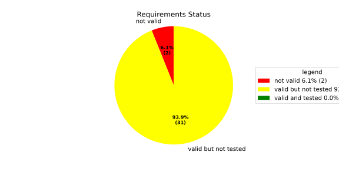
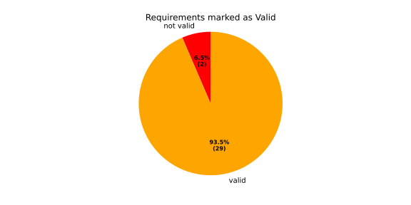
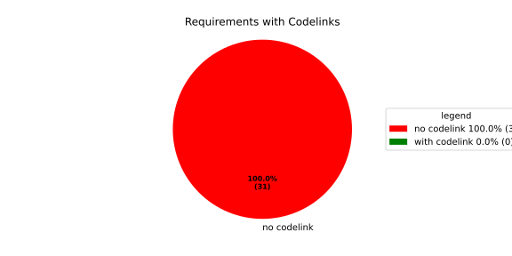
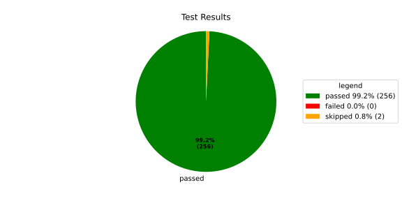
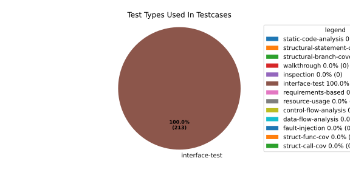
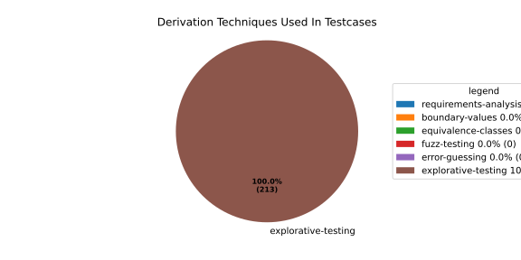

Verification Statistics#
Overview#

In Detail#



Failed Tests
Hint: This table should be empty. Before a PR can be merged all tests have to be successful.
No needs passed the filters
Skipped / Disabled Tests
testcase |
Result |
Fully Verifies |
Partially Verifies |
Test Type |
Derivation Technique |
link |
|---|---|---|---|---|---|---|
ValidateRangeTest/4__RejectsValueAboveMax |
skipped |
interface-test |
explorative-testing |
|||
ValidateRangeTest/4__RejectsValueBelowMin |
skipped |
interface-test |
explorative-testing |
All passed Tests#
testcase |
Result |
Fully Verifies |
Partially Verifies |
Test Type |
Derivation Technique |
link |
|---|---|---|---|---|---|---|
AliveImplTest__DoesNotThrowWhenInterfacePathEnvVarIsSet |
passed |
interface-test |
explorative-testing |
testcase__AliveImplTest__DoesNotThrowWhenInterfacePathEnvVarIsSet_xpewu |
||
AliveImplTest__ReportCheckpointSafeWhenNotConnected |
passed |
interface-test |
explorative-testing |
testcase__AliveImplTest__ReportCheckpointSafeWhenNotConnected_ppvuc |
||
AliveImplTest__ThrowsWhenInterfacePathEnvVarIsNotSet |
passed |
interface-test |
explorative-testing |
testcase__AliveImplTest__ThrowsWhenInterfacePathEnvVarIsNotSet_ekxfw |
||
AliveSupervisionTest__AliveDebouncesThroughFailedBeforeExpired |
passed |
interface-test |
explorative-testing |
testcase__AliveSupervisionTest__AliveDebouncesThroughFailedBeforeExpired_mlnbe |
||
AliveSupervisionTest__AliveReportsEnqueueFailureWhenRingBufferFull |
passed |
interface-test |
explorative-testing |
testcase__AliveSupervisionTest__AliveReportsEnqueueFailureWhenRingBufferFull_byhrd |
||
AliveSupervisionTest__AliveStaysOkWithCorrectHeartbeats |
passed |
interface-test |
explorative-testing |
testcase__AliveSupervisionTest__AliveStaysOkWithCorrectHeartbeats_vekof |
||
AliveSupervisionTest__AliveTransitionsOkToExpiredOnMissingHeartbeat |
passed |
interface-test |
explorative-testing |
testcase__AliveSupervisionTest__AliveTransitionsOkToExpiredOnMissingHeartbeat_jymxo |
||
AliveSupervisionTest__DeactivatesOnProcessCrash |
passed |
interface-test |
explorative-testing |
testcase__AliveSupervisionTest__DeactivatesOnProcessCrash_ypejs |
||
AliveSupervisionTest__DeactivatesOnProcessSigterm |
passed |
interface-test |
explorative-testing |
testcase__AliveSupervisionTest__DeactivatesOnProcessSigterm_hzaal |
||
AliveSupervisionTest__IgnoresIrrelevantProcessStates |
passed |
interface-test |
explorative-testing |
testcase__AliveSupervisionTest__IgnoresIrrelevantProcessStates_aolvb |
||
AliveSupervisionTest__MaxIndicationViolationExpires |
passed |
interface-test |
explorative-testing |
testcase__AliveSupervisionTest__MaxIndicationViolationExpires_whhhi |
||
AliveSupervisionTest__ReactivatesAfterCrash |
passed |
interface-test |
explorative-testing |
|||
ApplicationTypes/ApplicationTypeTest__ConvertsToExpectedValue/Native |
passed |
interface-test |
explorative-testing |
testcase__ApplicationTypes/ApplicationTypeTest__ConvertsToExpectedValue/Native_yxxcz |
||
ApplicationTypes/ApplicationTypeTest__ConvertsToExpectedValue/Reporting |
passed |
interface-test |
explorative-testing |
testcase__ApplicationTypes/ApplicationTypeTest__ConvertsToExpectedValue/Reporting_wcfwr |
||
ApplicationTypes/ApplicationTypeTest__ConvertsToExpectedValue/ReportingAndSupervised |
passed |
interface-test |
explorative-testing |
testcase__ApplicationTypes/ApplicationTypeTest__ConvertsToExpectedValue/ReportingAndSupervised_yxgad |
||
ApplicationTypes/ApplicationTypeTest__ConvertsToExpectedValue/StateManager |
passed |
interface-test |
explorative-testing |
testcase__ApplicationTypes/ApplicationTypeTest__ConvertsToExpectedValue/StateManager_ivuzc |
||
ConverterTest__ConvertAliveSupervisionMissingCycleReturnsError |
passed |
interface-test |
explorative-testing |
testcase__ConverterTest__ConvertAliveSupervisionMissingCycleReturnsError_bifzg |
||
ConverterTest__ConvertAliveSupervisionNullReturnsDefault |
passed |
interface-test |
explorative-testing |
testcase__ConverterTest__ConvertAliveSupervisionNullReturnsDefault_clyua |
||
ConverterTest__ConvertAliveSupervisionValid |
passed |
interface-test |
explorative-testing |
|||
ConverterTest__ConvertApplicationProfileMissingSelfTerminatingReturnsError |
passed |
interface-test |
explorative-testing |
testcase__ConverterTest__ConvertApplicationProfileMissingSelfTerminatingReturnsError_zddjb |
||
ConverterTest__ConvertApplicationProfileMissingTypeReturnsError |
passed |
interface-test |
explorative-testing |
testcase__ConverterTest__ConvertApplicationProfileMissingTypeReturnsError_zrfcs |
||
ConverterTest__ConvertApplicationProfileValid |
passed |
interface-test |
explorative-testing |
testcase__ConverterTest__ConvertApplicationProfileValid_oohxq |
||
ConverterTest__ConvertComponentAliveSupervisionBothIndicationsAbsentReturnsError |
passed |
interface-test |
explorative-testing |
testcase__ConverterTest__ConvertComponentAliveSupervisionBothIndicationsAbsentReturnsError_gvtfi |
||
ConverterTest__ConvertComponentAliveSupervisionMissingReportingCycleReturnsError |
passed |
interface-test |
explorative-testing |
testcase__ConverterTest__ConvertComponentAliveSupervisionMissingReportingCycleReturnsError_ajymy |
||
ConverterTest__ConvertComponentAliveSupervisionMissingToleranceReturnsError |
passed |
interface-test |
explorative-testing |
testcase__ConverterTest__ConvertComponentAliveSupervisionMissingToleranceReturnsError_lgrhj |
||
ConverterTest__ConvertComponentAliveSupervisionNullReturnsDefault |
passed |
interface-test |
explorative-testing |
testcase__ConverterTest__ConvertComponentAliveSupervisionNullReturnsDefault_xhaus |
||
ConverterTest__ConvertComponentAliveSupervisionOnlyMaxIndicationsPresent |
passed |
interface-test |
explorative-testing |
testcase__ConverterTest__ConvertComponentAliveSupervisionOnlyMaxIndicationsPresent_smwht |
||
ConverterTest__ConvertComponentAliveSupervisionOnlyMinIndicationsPresent |
passed |
interface-test |
explorative-testing |
testcase__ConverterTest__ConvertComponentAliveSupervisionOnlyMinIndicationsPresent_ybbrr |
||
ConverterTest__ConvertComponentAliveSupervisionValid |
passed |
interface-test |
explorative-testing |
testcase__ConverterTest__ConvertComponentAliveSupervisionValid_ijedh |
||
ConverterTest__ConvertComponentsValid |
passed |
interface-test |
explorative-testing |
|||
ConverterTest__ConvertComponentsWithInvalidComponentReturnsError |
passed |
interface-test |
explorative-testing |
testcase__ConverterTest__ConvertComponentsWithInvalidComponentReturnsError_wridc |
||
ConverterTest__ConvertComponentValid |
passed |
interface-test |
explorative-testing |
|||
ConverterTest__ConvertDeploymentConfigMissingReadyTimeoutReturnsError |
passed |
interface-test |
explorative-testing |
testcase__ConverterTest__ConvertDeploymentConfigMissingReadyTimeoutReturnsError_ljzfl |
||
ConverterTest__ConvertDeploymentConfigMissingShutdownTimeoutReturnsError |
passed |
interface-test |
explorative-testing |
testcase__ConverterTest__ConvertDeploymentConfigMissingShutdownTimeoutReturnsError_vyqye |
||
ConverterTest__ConvertDeploymentConfigValid |
passed |
interface-test |
explorative-testing |
|||
ConverterTest__ConvertEnvironmentalVariables |
passed |
interface-test |
explorative-testing |
testcase__ConverterTest__ConvertEnvironmentalVariables_fnhgo |
||
ConverterTest__ConvertEnvironmentalVariablesNullReturnsEmpty |
passed |
interface-test |
explorative-testing |
testcase__ConverterTest__ConvertEnvironmentalVariablesNullReturnsEmpty_vglrx |
||
ConverterTest__ConvertFallbackRunTargetMissingTimeoutReturnsError |
passed |
interface-test |
explorative-testing |
testcase__ConverterTest__ConvertFallbackRunTargetMissingTimeoutReturnsError_aevly |
||
ConverterTest__ConvertFallbackRunTargetValid |
passed |
interface-test |
explorative-testing |
testcase__ConverterTest__ConvertFallbackRunTargetValid_nexxj |
||
ConverterTest__ConvertReadyConditionMissingProcessStateReturnsError |
passed |
interface-test |
explorative-testing |
testcase__ConverterTest__ConvertReadyConditionMissingProcessStateReturnsError_ileav |
||
ConverterTest__ConvertReadyConditionValid |
passed |
interface-test |
explorative-testing |
|||
ConverterTest__ConvertRestartActionMissingFieldsReturnsError |
passed |
interface-test |
explorative-testing |
testcase__ConverterTest__ConvertRestartActionMissingFieldsReturnsError_aapjb |
||
ConverterTest__ConvertRestartActionNullReturnsNullopt |
passed |
interface-test |
explorative-testing |
testcase__ConverterTest__ConvertRestartActionNullReturnsNullopt_ifvyd |
||
ConverterTest__ConvertRestartActionValid |
passed |
interface-test |
explorative-testing |
|||
ConverterTest__ConvertRunTargetMissingTransitionTimeoutReturnsError |
passed |
interface-test |
explorative-testing |
testcase__ConverterTest__ConvertRunTargetMissingTransitionTimeoutReturnsError_ynekv |
||
ConverterTest__ConvertRunTargetsValid |
passed |
interface-test |
explorative-testing |
|||
ConverterTest__ConvertRunTargetsWithInvalidRunTargetReturnsError |
passed |
interface-test |
explorative-testing |
testcase__ConverterTest__ConvertRunTargetsWithInvalidRunTargetReturnsError_ldlox |
||
ConverterTest__ConvertRunTargetValid |
passed |
interface-test |
explorative-testing |
|||
ConverterTest__ConvertSandboxMissingGidReturnsError |
passed |
interface-test |
explorative-testing |
testcase__ConverterTest__ConvertSandboxMissingGidReturnsError_veeel |
||
ConverterTest__ConvertSandboxMissingSchedulingPolicyReturnsError |
passed |
interface-test |
explorative-testing |
testcase__ConverterTest__ConvertSandboxMissingSchedulingPolicyReturnsError_pkfts |
||
ConverterTest__ConvertSandboxMissingSchedulingPriorityReturnsError |
passed |
interface-test |
explorative-testing |
testcase__ConverterTest__ConvertSandboxMissingSchedulingPriorityReturnsError_xzdho |
||
ConverterTest__ConvertSandboxMissingUidReturnsError |
passed |
interface-test |
explorative-testing |
testcase__ConverterTest__ConvertSandboxMissingUidReturnsError_ogfku |
||
ConverterTest__ConvertSandboxSupplementaryGidOutOfRangeReturnsError |
passed |
interface-test |
explorative-testing |
testcase__ConverterTest__ConvertSandboxSupplementaryGidOutOfRangeReturnsError_zavpx |
||
ConverterTest__ConvertSandboxUidOutOfRangeReturnsError |
passed |
interface-test |
explorative-testing |
testcase__ConverterTest__ConvertSandboxUidOutOfRangeReturnsError_mcuaf |
||
ConverterTest__ConvertSandboxValid |
passed |
interface-test |
explorative-testing |
|||
ConverterTest__ConvertSwitchRunTargetActionNullReturnsNullopt |
passed |
interface-test |
explorative-testing |
testcase__ConverterTest__ConvertSwitchRunTargetActionNullReturnsNullopt_zmitx |
||
ConverterTest__ConvertSwitchRunTargetActionValid |
passed |
interface-test |
explorative-testing |
testcase__ConverterTest__ConvertSwitchRunTargetActionValid_tdklr |
||
ConverterTest__ConvertWatchdogMissingDeactivateReturnsError |
passed |
interface-test |
explorative-testing |
testcase__ConverterTest__ConvertWatchdogMissingDeactivateReturnsError_gzwjt |
||
ConverterTest__ConvertWatchdogMissingMagicCloseReturnsError |
passed |
interface-test |
explorative-testing |
testcase__ConverterTest__ConvertWatchdogMissingMagicCloseReturnsError_gexxk |
||
ConverterTest__ConvertWatchdogMissingMaxTimeoutReturnsError |
passed |
interface-test |
explorative-testing |
testcase__ConverterTest__ConvertWatchdogMissingMaxTimeoutReturnsError_lffxm |
||
ConverterTest__ConvertWatchdogNullReturnsNullopt |
passed |
interface-test |
explorative-testing |
testcase__ConverterTest__ConvertWatchdogNullReturnsNullopt_irsdk |
||
ConverterTest__ConvertWatchdogValid |
passed |
interface-test |
explorative-testing |
|||
DeadlineFixture__Start_AlreadyRunning |
passed |
interface-test |
explorative-testing |
|||
DeadlineFixture__Start_Succeeds |
passed |
interface-test |
explorative-testing |
|||
DeadlineMonitorBuilderFixture__AddDeadline_Succeeds |
passed |
interface-test |
explorative-testing |
testcase__DeadlineMonitorBuilderFixture__AddDeadline_Succeeds_nagke |
||
DeadlineMonitorBuilderFixture__New_Succeeds |
passed |
interface-test |
explorative-testing |
|||
DeadlineMonitorFixture__GetDeadline_Succeeds |
passed |
interface-test |
explorative-testing |
testcase__DeadlineMonitorFixture__GetDeadline_Succeeds_tmltf |
||
DeadlineMonitorFixture__GetDeadline_Unknown |
passed |
interface-test |
explorative-testing |
|||
EnumConversionTest__ConvertSchedulingPolicyUnsupported |
passed |
interface-test |
explorative-testing |
testcase__EnumConversionTest__ConvertSchedulingPolicyUnsupported_iavqm |
||
EnvironmentTest__AddIncreasesSize |
passed |
interface-test |
explorative-testing |
|||
EnvironmentTest__DefaultConstructedIsEmpty |
passed |
interface-test |
explorative-testing |
|||
EnvironmentTest__EmptyEnvironmentEnvpIsNullTerminated |
passed |
interface-test |
explorative-testing |
testcase__EnvironmentTest__EmptyEnvironmentEnvpIsNullTerminated_wwumw |
||
EnvironmentTest__EnvpReturnsNullTerminatedArray |
passed |
interface-test |
explorative-testing |
testcase__EnvironmentTest__EnvpReturnsNullTerminatedArray_aubkv |
||
EnvironmentTest__EnvpWithMultipleEntries |
passed |
interface-test |
explorative-testing |
|||
EnvironmentTest__MoveAssignmentPreservesEntries |
passed |
interface-test |
explorative-testing |
testcase__EnvironmentTest__MoveAssignmentPreservesEntries_vkydj |
||
EnvironmentTest__MoveConstructorPreservesEntries |
passed |
interface-test |
explorative-testing |
testcase__EnvironmentTest__MoveConstructorPreservesEntries_upclt |
||
EnvironmentTest__RangeBasedForLoopWorks |
passed |
interface-test |
explorative-testing |
|||
EnvironmentTest__ReserveAndAddAvoidReallocation |
passed |
interface-test |
explorative-testing |
testcase__EnvironmentTest__ReserveAndAddAvoidReallocation_lgzmu |
||
EnvironmentTest__SsoLengthStringSurvivesReallocation |
passed |
interface-test |
explorative-testing |
testcase__EnvironmentTest__SsoLengthStringSurvivesReallocation_jfmtl |
||
EnvironmentVariableTest__CStrReturnsKeyEqualsValue |
passed |
interface-test |
explorative-testing |
testcase__EnvironmentVariableTest__CStrReturnsKeyEqualsValue_rkwan |
||
EnvironmentVariableTest__EmptyValue |
passed |
interface-test |
explorative-testing |
|||
EnvironmentVariableTest__KeyAndValueAreAccessible |
passed |
interface-test |
explorative-testing |
testcase__EnvironmentVariableTest__KeyAndValueAreAccessible_kcrth |
||
EnvironmentVariableTest__ValueContainingEquals |
passed |
interface-test |
explorative-testing |
testcase__EnvironmentVariableTest__ValueContainingEquals_apzgz |
||
ExecErrorDomainTest__AllKnownCodesHaveDistinctMessages |
passed |
interface-test |
explorative-testing |
testcase__ExecErrorDomainTest__AllKnownCodesHaveDistinctMessages_qpoka |
||
ExecErrorDomainTest__AllKnownCodesReturnNonEmptyMessage |
passed |
interface-test |
explorative-testing |
testcase__ExecErrorDomainTest__AllKnownCodesReturnNonEmptyMessage_bawzg |
||
ExecErrorDomainTest__UnknownCodeReturnsNonEmptyMessage |
passed |
interface-test |
explorative-testing |
testcase__ExecErrorDomainTest__UnknownCodeReturnsNonEmptyMessage_kkwpr |
||
FlatbufferConfigLoaderTest__CorruptedBufferReturnsInvalidFormat |
passed |
interface-test |
explorative-testing |
testcase__FlatbufferConfigLoaderTest__CorruptedBufferReturnsInvalidFormat_twyac |
||
FlatbufferConfigLoaderTest__LoadAliveSupervision |
passed |
interface-test |
explorative-testing |
testcase__FlatbufferConfigLoaderTest__LoadAliveSupervision_hhuux |
||
FlatbufferConfigLoaderTest__LoadBufferFailsWithGenericErrorReturnsGeneralError |
passed |
interface-test |
explorative-testing |
testcase__FlatbufferConfigLoaderTest__LoadBufferFailsWithGenericErrorReturnsGeneralError_kmatm |
||
FlatbufferConfigLoaderTest__LoadBufferFailsWithNoSuchFileReturnsFileNotFound |
passed |
interface-test |
explorative-testing |
testcase__FlatbufferConfigLoaderTest__LoadBufferFailsWithNoSuchFileReturnsFileNotFound_yzlra |
||
FlatbufferConfigLoaderTest__LoadBufferFailsWithPermissionDeniedReturnsInsufficientPermission |
passed |
interface-test |
explorative-testing |
|||
FlatbufferConfigLoaderTest__LoadComponentAliveSupervision |
passed |
interface-test |
explorative-testing |
testcase__FlatbufferConfigLoaderTest__LoadComponentAliveSupervision_fwfad |
||
FlatbufferConfigLoaderTest__LoadEnvironmentalVariables |
passed |
interface-test |
explorative-testing |
testcase__FlatbufferConfigLoaderTest__LoadEnvironmentalVariables_wsosu |
||
FlatbufferConfigLoaderTest__LoadFallbackRunTarget |
passed |
interface-test |
explorative-testing |
testcase__FlatbufferConfigLoaderTest__LoadFallbackRunTarget_wduqm |
||
FlatbufferConfigLoaderTest__LoadMinimalConfig |
passed |
interface-test |
explorative-testing |
testcase__FlatbufferConfigLoaderTest__LoadMinimalConfig_hdkck |
||
FlatbufferConfigLoaderTest__LoadMultipleComponents |
passed |
interface-test |
explorative-testing |
testcase__FlatbufferConfigLoaderTest__LoadMultipleComponents_abpom |
||
FlatbufferConfigLoaderTest__LoadRestartRecoveryAction |
passed |
interface-test |
explorative-testing |
testcase__FlatbufferConfigLoaderTest__LoadRestartRecoveryAction_wyfqg |
||
FlatbufferConfigLoaderTest__LoadRunTargets |
passed |
interface-test |
explorative-testing |
|||
FlatbufferConfigLoaderTest__LoadSandbox |
passed |
interface-test |
explorative-testing |
|||
FlatbufferConfigLoaderTest__LoadSingleComponent |
passed |
interface-test |
explorative-testing |
testcase__FlatbufferConfigLoaderTest__LoadSingleComponent_yidty |
||
FlatbufferConfigLoaderTest__LoadSwitchRunTargetAction |
passed |
interface-test |
explorative-testing |
testcase__FlatbufferConfigLoaderTest__LoadSwitchRunTargetAction_uchgp |
||
FlatbufferConfigLoaderTest__LoadWatchdog |
passed |
interface-test |
explorative-testing |
|||
FlatbufferConfigLoaderTest__MissingSchemaVersionReturnsInvalidFormat |
passed |
interface-test |
explorative-testing |
testcase__FlatbufferConfigLoaderTest__MissingSchemaVersionReturnsInvalidFormat_qqmfn |
||
FlatbufferConfigLoaderTest__OptionalReadyConditionAbsent |
passed |
interface-test |
explorative-testing |
testcase__FlatbufferConfigLoaderTest__OptionalReadyConditionAbsent_lhddx |
||
FlatbufferConfigLoaderTest__OptionalWatchdogAbsent |
passed |
interface-test |
explorative-testing |
testcase__FlatbufferConfigLoaderTest__OptionalWatchdogAbsent_pkhkp |
||
FlatbufferConfigLoaderTest__WrongSchemaVersionReturnsUnsupportedVersion |
passed |
interface-test |
explorative-testing |
testcase__FlatbufferConfigLoaderTest__WrongSchemaVersionReturnsUnsupportedVersion_zrbjv |
||
HealthMonitor__GetDeadlineMonitor_Available |
passed |
|||||
HealthMonitor__GetDeadlineMonitor_Taken |
passed |
|||||
HealthMonitor__GetDeadlineMonitor_Unknown |
passed |
|||||
HealthMonitor__GetHeartbeatMonitor_Available |
passed |
testcase__HealthMonitor__GetHeartbeatMonitor_Available_aacat |
||||
HealthMonitor__GetHeartbeatMonitor_Taken |
passed |
|||||
HealthMonitor__GetHeartbeatMonitor_Unknown |
passed |
|||||
HealthMonitor__GetLogicMonitor_Available |
passed |
|||||
HealthMonitor__GetLogicMonitor_Taken |
passed |
|||||
HealthMonitor__GetLogicMonitor_Unknown |
passed |
|||||
HealthMonitor__Start_MonitorsNotTaken |
passed |
|||||
HealthMonitor__Start_Succeeds |
passed |
|||||
HealthMonitorBuilderFixture__Build_InvalidCycles |
passed |
interface-test |
explorative-testing |
testcase__HealthMonitorBuilderFixture__Build_InvalidCycles_pdigk |
||
HealthMonitorBuilderFixture__Build_NoMonitors |
passed |
interface-test |
explorative-testing |
testcase__HealthMonitorBuilderFixture__Build_NoMonitors_ktcve |
||
HealthMonitorBuilderFixture__Build_Succeeds |
passed |
interface-test |
explorative-testing |
|||
HealthMonitorBuilderFixture__New_Succeeds |
passed |
interface-test |
explorative-testing |
|||
HealthMonitorTest__Integrated |
passed |
interface-test |
explorative-testing |
|||
HeartbeatMonitor__Heartbeat_Succeeds |
passed |
interface-test |
explorative-testing |
|||
HeartbeatMonitorBuilder__New_Succeeds |
passed |
interface-test |
explorative-testing |
|||
IdentifierHashTest__IdentifierHash_default_created |
passed |
interface-test |
explorative-testing |
testcase__IdentifierHashTest__IdentifierHash_default_created_yhhvi |
||
IdentifierHashTest__IdentifierHash_EqualityOperators |
passed |
interface-test |
explorative-testing |
testcase__IdentifierHashTest__IdentifierHash_EqualityOperators_nnsuj |
||
IdentifierHashTest__IdentifierHash_invalid_hash_no_string_representation |
passed |
interface-test |
explorative-testing |
testcase__IdentifierHashTest__IdentifierHash_invalid_hash_no_string_representation_rxowr |
||
IdentifierHashTest__IdentifierHash_LessThanOperator |
passed |
interface-test |
explorative-testing |
testcase__IdentifierHashTest__IdentifierHash_LessThanOperator_rnbax |
||
IdentifierHashTest__IdentifierHash_no_dangling_pointer_after_source_string_dies |
passed |
interface-test |
explorative-testing |
testcase__IdentifierHashTest__IdentifierHash_no_dangling_pointer_after_source_string_dies_qsjin |
||
IdentifierHashTest__IdentifierHash_with_string_created |
passed |
interface-test |
explorative-testing |
testcase__IdentifierHashTest__IdentifierHash_with_string_created_aygdm |
||
IdentifierHashTest__IdentifierHash_with_string_view_created |
passed |
interface-test |
explorative-testing |
testcase__IdentifierHashTest__IdentifierHash_with_string_view_created_dbpol |
||
LogicMonitorBuilderFixture__AddState_Succeeds |
passed |
interface-test |
explorative-testing |
testcase__LogicMonitorBuilderFixture__AddState_Succeeds_axdxj |
||
LogicMonitorBuilderFixture__New_Succeeds |
passed |
interface-test |
explorative-testing |
|||
LogicMonitorFixture__State_Invalid |
passed |
interface-test |
explorative-testing |
|||
LogicMonitorFixture__State_Succeeds |
passed |
interface-test |
explorative-testing |
|||
LogicMonitorFixture__Transition_Invalid |
passed |
interface-test |
explorative-testing |
|||
LogicMonitorFixture__Transition_Succeeds |
passed |
interface-test |
explorative-testing |
|||
LogicMonitorFixture__Transition_Unknown |
passed |
interface-test |
explorative-testing |
|||
MonitorIfDaemonTest__Active_CheckpointDataForwarded |
passed |
interface-test |
explorative-testing |
testcase__MonitorIfDaemonTest__Active_CheckpointDataForwarded_evumz |
||
MonitorIfDaemonTest__Active_FutureTimestamp_NotForwardedInCurrentCycle |
passed |
interface-test |
explorative-testing |
testcase__MonitorIfDaemonTest__Active_FutureTimestamp_NotForwardedInCurrentCycle_oycau |
||
MonitorIfDaemonTest__Active_FutureTimestampCheckpoint_ConsumedInLaterCycle |
passed |
interface-test |
explorative-testing |
testcase__MonitorIfDaemonTest__Active_FutureTimestampCheckpoint_ConsumedInLaterCycle_veyyy |
||
MonitorIfDaemonTest__Active_MultipleCheckpointsInOneCycle_AllForwarded |
passed |
interface-test |
explorative-testing |
testcase__MonitorIfDaemonTest__Active_MultipleCheckpointsInOneCycle_AllForwarded_gmbms |
||
MonitorIfDaemonTest__Active_NonMatchingCheckpointId_NotForwarded |
passed |
interface-test |
explorative-testing |
testcase__MonitorIfDaemonTest__Active_NonMatchingCheckpointId_NotForwarded_bohck |
||
MonitorIfDaemonTest__Active_OverflowDetected_TransitionsToInactiveOverflow |
passed |
interface-test |
explorative-testing |
testcase__MonitorIfDaemonTest__Active_OverflowDetected_TransitionsToInactiveOverflow_ovitk |
||
MonitorIfDaemonTest__Active_TwoAttachedCheckpoints_RoutedByCheckpointId |
passed |
interface-test |
explorative-testing |
testcase__MonitorIfDaemonTest__Active_TwoAttachedCheckpoints_RoutedByCheckpointId_skqhd |
||
MonitorIfDaemonTest__GetInterfaceName_ReturnsNameGivenAtConstruction |
passed |
interface-test |
explorative-testing |
testcase__MonitorIfDaemonTest__GetInterfaceName_ReturnsNameGivenAtConstruction_iaemz |
||
MonitorIfDaemonTest__InactiveOverflow_NoProcessRestart_DoesNotRepeatNotification |
passed |
interface-test |
explorative-testing |
testcase__MonitorIfDaemonTest__InactiveOverflow_NoProcessRestart_DoesNotRepeatNotification_gdbxg |
||
MonitorIfDaemonTest__InactiveOverflow_ProcessRestartFlag_ClearedAfterNotification |
passed |
interface-test |
explorative-testing |
testcase__MonitorIfDaemonTest__InactiveOverflow_ProcessRestartFlag_ClearedAfterNotification_pqfyy |
||
MonitorIfDaemonTest__InactiveOverflow_ProcessRestarts_PushesOverflowNotificationAgain |
passed |
interface-test |
explorative-testing |
|||
MonitorIfDaemonTest__InitiallyInactive_CheckForNewData_DoesNotNotifyCheckpoint |
passed |
interface-test |
explorative-testing |
testcase__MonitorIfDaemonTest__InitiallyInactive_CheckForNewData_DoesNotNotifyCheckpoint_wjrfl |
||
MonitorIfDaemonTest__ProcessOff_DeactivatesMonitor_NoFurtherDataForwarded |
passed |
interface-test |
explorative-testing |
testcase__MonitorIfDaemonTest__ProcessOff_DeactivatesMonitor_NoFurtherDataForwarded_uialh |
||
MonitorIfDaemonTest__ProcessOffBeforeActivation_RemainsInactive |
passed |
interface-test |
explorative-testing |
testcase__MonitorIfDaemonTest__ProcessOffBeforeActivation_RemainsInactive_kzzyy |
||
MonitorIfDaemonTest__ProcessRunning_ActivatesMonitorOnNextCheckForNewData |
passed |
interface-test |
explorative-testing |
testcase__MonitorIfDaemonTest__ProcessRunning_ActivatesMonitorOnNextCheckForNewData_fkkmk |
||
MonitorIfDaemonTest__ProcessStarting_AlsoActivatesMonitor |
passed |
interface-test |
explorative-testing |
testcase__MonitorIfDaemonTest__ProcessStarting_AlsoActivatesMonitor_xdkbg |
||
MPMCConcurrentQueueTest_Basic__LvaluePushCopiesItem |
passed |
testcase__MPMCConcurrentQueueTest_Basic__LvaluePushCopiesItem_oysfc |
||||
MPMCConcurrentQueueTest_Basic__PopReturnsNulloptOnSemaphoreWaitFailure |
passed |
testcase__MPMCConcurrentQueueTest_Basic__PopReturnsNulloptOnSemaphoreWaitFailure_rgznm |
||||
MPMCConcurrentQueueTest_Basic__PushAndPopPreservesOrder |
passed |
testcase__MPMCConcurrentQueueTest_Basic__PushAndPopPreservesOrder_aijdb |
||||
MPMCConcurrentQueueTest_Basic__PushAndPopSingleItem |
passed |
testcase__MPMCConcurrentQueueTest_Basic__PushAndPopSingleItem_jrxwz |
||||
MPMCConcurrentQueueTest_Basic__RvaluePushWorksWithMoveOnlyType |
passed |
testcase__MPMCConcurrentQueueTest_Basic__RvaluePushWorksWithMoveOnlyType_cxxaj |
||||
MPMCConcurrentQueueTest_Blocking__PopBlocksUntilItemAvailable |
passed |
testcase__MPMCConcurrentQueueTest_Blocking__PopBlocksUntilItemAvailable_ttwcx |
||||
MPMCConcurrentQueueTest_Blocking__PushBlocksWhenFull |
passed |
testcase__MPMCConcurrentQueueTest_Blocking__PushBlocksWhenFull_ecujf |
||||
MPMCConcurrentQueueTest_Blocking__StopUnblocksBlockedConsumer |
passed |
testcase__MPMCConcurrentQueueTest_Blocking__StopUnblocksBlockedConsumer_snzyr |
||||
MPMCConcurrentQueueTest_Blocking__StopUnblocksBlockedProducer |
passed |
testcase__MPMCConcurrentQueueTest_Blocking__StopUnblocksBlockedProducer_inddu |
||||
MPMCConcurrentQueueTest_MPMC__AllItemsDelivered |
passed |
testcase__MPMCConcurrentQueueTest_MPMC__AllItemsDelivered_ztjqe |
||||
MPMCConcurrentQueueTest_Stop__ItemsAreDroppedAfterStop |
passed |
testcase__MPMCConcurrentQueueTest_Stop__ItemsAreDroppedAfterStop_ragzw |
||||
MPMCConcurrentQueueTest_Stop__PopReturnsNulloptWhenStoppedAndEmpty |
passed |
testcase__MPMCConcurrentQueueTest_Stop__PopReturnsNulloptWhenStoppedAndEmpty_cevga |
||||
MPMCConcurrentQueueTest_Stop__PushReturnsFalseAfterStop |
passed |
testcase__MPMCConcurrentQueueTest_Stop__PushReturnsFalseAfterStop_qqnhw |
||||
MPMCConcurrentQueueTest_Timeout__PushWithTimeoutReturnsFalseWhenFull |
passed |
testcase__MPMCConcurrentQueueTest_Timeout__PushWithTimeoutReturnsFalseWhenFull_aeips |
||||
MPMCConcurrentQueueTest_Timeout__PushWithTimeoutSucceedsWhenSlotAvailable |
passed |
testcase__MPMCConcurrentQueueTest_Timeout__PushWithTimeoutSucceedsWhenSlotAvailable_klzpo |
||||
OsHandlerTest__WaitReturnsError_OsHandlerSleepsAndDoesNotCallFindTerminated |
passed |
interface-test |
explorative-testing |
testcase__OsHandlerTest__WaitReturnsError_OsHandlerSleepsAndDoesNotCallFindTerminated_cibtr |
||
OsHandlerTest__WaitReturnsErrorThenProcessId_HandlerRecoversAndInvokesCallback |
passed |
interface-test |
explorative-testing |
testcase__OsHandlerTest__WaitReturnsErrorThenProcessId_HandlerRecoversAndInvokesCallback_nqstd |
||
OsHandlerTest__WaitReturnsProcessId_FindTerminatedIsCalled |
passed |
interface-test |
explorative-testing |
testcase__OsHandlerTest__WaitReturnsProcessId_FindTerminatedIsCalled_chlsq |
||
OsHandlerTest__WaitReturnsProcessIdBeforeRegistration_LaterRegistrationReceivesStoredTermination |
passed |
interface-test |
explorative-testing |
|||
OsHandlerTest__WaitReturnsUnknownPidWhenMapIsFull_OutOfResourcesPathDoesNotNotifyCallbacks |
passed |
interface-test |
explorative-testing |
|||
OsHandlerTest__WaitReturnsZeroPid_OsHandlerSleepsAndDoesNotCallFindTerminated |
passed |
interface-test |
explorative-testing |
testcase__OsHandlerTest__WaitReturnsZeroPid_OsHandlerSleepsAndDoesNotCallFindTerminated_rkttz |
||
ProcessStateClient_UT__ProcessStateClient_ConstructReceiver_Succeeds |
passed |
interface-test |
explorative-testing |
testcase__ProcessStateClient_UT__ProcessStateClient_ConstructReceiver_Succeeds_hodwy |
||
ProcessStateClient_UT__ProcessStateClient_QueueMaxNumberOfProcesses_Succeeds |
passed |
interface-test |
explorative-testing |
testcase__ProcessStateClient_UT__ProcessStateClient_QueueMaxNumberOfProcesses_Succeeds_qohom |
||
ProcessStateClient_UT__ProcessStateClient_QueueOneProcess_Succeeds |
passed |
interface-test |
explorative-testing |
testcase__ProcessStateClient_UT__ProcessStateClient_QueueOneProcess_Succeeds_tmzfz |
||
ProcessStateClient_UT__ProcessStateClient_QueueOneProcessTooMany_Fails |
passed |
interface-test |
explorative-testing |
testcase__ProcessStateClient_UT__ProcessStateClient_QueueOneProcessTooMany_Fails_sspoj |
||
ProcessStates/ProcessStateTest__ConvertsToExpectedValue/Running |
passed |
interface-test |
explorative-testing |
testcase__ProcessStates/ProcessStateTest__ConvertsToExpectedValue/Running_hinlr |
||
ProcessStates/ProcessStateTest__ConvertsToExpectedValue/Terminated |
passed |
interface-test |
explorative-testing |
testcase__ProcessStates/ProcessStateTest__ConvertsToExpectedValue/Terminated_zrytn |
||
RecoveryClientTest__FIFOOrdering |
passed |
interface-test |
explorative-testing |
|||
RecoveryClientTest__GetNextRequest |
passed |
interface-test |
explorative-testing |
|||
RecoveryClientTest__GetNextRequestEmpty |
passed |
interface-test |
explorative-testing |
|||
RecoveryClientTest__RingBufferFull |
passed |
interface-test |
explorative-testing |
|||
RecoveryClientTest__SendSingleRequest |
passed |
interface-test |
explorative-testing |
|||
RunTest__AsPosixProcessCreatesAndDestroysLifeCycleManager |
passed |
testcase__RunTest__AsPosixProcessCreatesAndDestroysLifeCycleManager_sooex |
||||
RunTest__AsPosixProcessForwardsConstructorArgsToApplication |
passed |
testcase__RunTest__AsPosixProcessForwardsConstructorArgsToApplication_dmeur |
||||
RunTest__AsPosixProcessForwardsNonZeroExitCode |
passed |
testcase__RunTest__AsPosixProcessForwardsNonZeroExitCode_lldqd |
||||
RunTest__AsPosixProcessPassesCorrectApplicationTypeToRun |
passed |
testcase__RunTest__AsPosixProcessPassesCorrectApplicationTypeToRun_ajqwz |
||||
RunTest__AsPosixProcessReturnsZeroExitCode |
passed |
|||||
RunTest__RunApplicationFreeFunctionDelegatesToAsPosixProcess |
passed |
testcase__RunTest__RunApplicationFreeFunctionDelegatesToAsPosixProcess_ccing |
||||
RunTest__RunConstructorPassesArgcArgvToApplicationContext |
passed |
testcase__RunTest__RunConstructorPassesArgcArgvToApplicationContext_agerd |
||||
SafeProcessMapTest__ConcurrentFindAndInsertFromMultipleThreads |
passed |
interface-test |
explorative-testing |
testcase__SafeProcessMapTest__ConcurrentFindAndInsertFromMultipleThreads_kzfyg |
||
SafeProcessMapTest__ConcurrentInsertAndFindFromMultipleThreads |
passed |
interface-test |
explorative-testing |
testcase__SafeProcessMapTest__ConcurrentInsertAndFindFromMultipleThreads_hnyqj |
||
SafeProcessMapTest__ConstructWithZeroCapacity |
passed |
interface-test |
explorative-testing |
testcase__SafeProcessMapTest__ConstructWithZeroCapacity_gjmqg |
||
SafeProcessMapTest__FindTerminatedInsertsEntryWhenPidNotPresent |
passed |
interface-test |
explorative-testing |
testcase__SafeProcessMapTest__FindTerminatedInsertsEntryWhenPidNotPresent_ixtlt |
||
SafeProcessMapTest__FindTerminatedMatchesExistingInsertAndCallsCallback |
passed |
interface-test |
explorative-testing |
testcase__SafeProcessMapTest__FindTerminatedMatchesExistingInsertAndCallsCallback_ehuzb |
||
SafeProcessMapTest__FindTerminatedSamePidTwiceYieldsUntilInsertResolves |
passed |
interface-test |
explorative-testing |
testcase__SafeProcessMapTest__FindTerminatedSamePidTwiceYieldsUntilInsertResolves_hsekx |
||
SafeProcessMapTest__FindTerminatedWithNegativePidReturnsInvalid |
passed |
interface-test |
explorative-testing |
testcase__SafeProcessMapTest__FindTerminatedWithNegativePidReturnsInvalid_dewoh |
||
SafeProcessMapTest__FindTerminatedWorksAtMaxTreeDepth |
passed |
interface-test |
explorative-testing |
testcase__SafeProcessMapTest__FindTerminatedWorksAtMaxTreeDepth_adtzi |
||
SafeProcessMapTest__InsertBeyondCapacityReturnsOutOfMemory |
passed |
interface-test |
explorative-testing |
testcase__SafeProcessMapTest__InsertBeyondCapacityReturnsOutOfMemory_qjnie |
||
SafeProcessMapTest__InsertIntoEmptyTreeReturnsZero |
passed |
interface-test |
explorative-testing |
testcase__SafeProcessMapTest__InsertIntoEmptyTreeReturnsZero_zfbaq |
||
SafeProcessMapTest__InsertMatchesExistingFindTerminatedEntry |
passed |
interface-test |
explorative-testing |
testcase__SafeProcessMapTest__InsertMatchesExistingFindTerminatedEntry_fuwrp |
||
SafeProcessMapTest__InsertMultipleNodesThenFindTerminatedRemovesAll |
passed |
interface-test |
explorative-testing |
testcase__SafeProcessMapTest__InsertMultipleNodesThenFindTerminatedRemovesAll_fvowh |
||
SafeProcessMapTest__InsertSamePidTwiceYieldsUntilFindTerminatedResolves |
passed |
interface-test |
explorative-testing |
testcase__SafeProcessMapTest__InsertSamePidTwiceYieldsUntilFindTerminatedResolves_wzwyb |
||
SchedulingPolicies/SchedulingPolicyTest__ConvertsToExpectedPosixValue/SCHED_FIFO |
passed |
interface-test |
explorative-testing |
testcase__SchedulingPolicies/SchedulingPolicyTest__ConvertsToExpectedPosixValue/SCHED_FIFO_soddq |
||
SchedulingPolicies/SchedulingPolicyTest__ConvertsToExpectedPosixValue/SCHED_OTHER |
passed |
interface-test |
explorative-testing |
testcase__SchedulingPolicies/SchedulingPolicyTest__ConvertsToExpectedPosixValue/SCHED_OTHER_oigmk |
||
SchedulingPolicies/SchedulingPolicyTest__ConvertsToExpectedPosixValue/SCHED_RR |
passed |
interface-test |
explorative-testing |
testcase__SchedulingPolicies/SchedulingPolicyTest__ConvertsToExpectedPosixValue/SCHED_RR_pcjci |
||
score/health_monitor/src/rust/test-510566969/tests |
passed |
testcase__score/health_monitor/src/rust/test-510566969/tests_kjjlw |
||||
score/health_monitor/src/rust/test-827801879/loom_tests |
passed |
testcase__score/health_monitor/src/rust/test-827801879/loom_tests_cpmix |
||||
SecondsToMsTest__ConvertsPositiveValue |
passed |
interface-test |
explorative-testing |
|||
SecondsToMsTest__ConvertsZero |
passed |
interface-test |
explorative-testing |
|||
SecondsToMsTest__RejectsNegativeValue |
passed |
interface-test |
explorative-testing |
|||
SecondsToMsTest__RejectsOverflow |
passed |
interface-test |
explorative-testing |
|||
SecondsToMsTest__RejectsSubMillisecond |
passed |
interface-test |
explorative-testing |
|||
StringHelperTest__ConvertGidVectorReturnsEmptyWhenNull |
passed |
interface-test |
explorative-testing |
testcase__StringHelperTest__ConvertGidVectorReturnsEmptyWhenNull_jmcsr |
||
StringHelperTest__ConvertStringVectorReturnsEmptyWhenNull |
passed |
interface-test |
explorative-testing |
testcase__StringHelperTest__ConvertStringVectorReturnsEmptyWhenNull_zsuvv |
||
StringHelperTest__SafeStringReturnsEmptyWhenNull |
passed |
interface-test |
explorative-testing |
testcase__StringHelperTest__SafeStringReturnsEmptyWhenNull_crelr |
||
StringHelperTest__SafeStringReturnsValueWhenNotNull |
passed |
interface-test |
explorative-testing |
testcase__StringHelperTest__SafeStringReturnsValueWhenNotNull_anbko |
||
test_complex_monitoring |
passed |
|||||
test_crash_on_startup |
passed |
|||||
test_incorrect_config_non_reporting |
passed |
|||||
test_process_crash_monitoring |
passed |
|||||
test_process_launch_args |
passed |
|||||
test_process_wrong_binary_failure |
passed |
|||||
test_recovery_action_complex_rep_failure |
passed |
|||||
test_recovery_action_simple_rep_failure |
passed |
|||||
test_smoke |
passed |
|||||
test_switch_run_target |
passed |
|||||
TimeRangeFixture__MinMax |
passed |
interface-test |
explorative-testing |
|||
TimeRangeFixture__New_InvalidOrder |
passed |
interface-test |
explorative-testing |
|||
TimeRangeFixture__New_Succeeds |
passed |
interface-test |
explorative-testing |
|||
ValidateRangeTest/0__AcceptsMaxBoundary |
passed |
interface-test |
explorative-testing |
|||
ValidateRangeTest/0__AcceptsMinBoundary |
passed |
interface-test |
explorative-testing |
|||
ValidateRangeTest/0__AcceptsZero |
passed |
interface-test |
explorative-testing |
|||
ValidateRangeTest/0__RejectsValueAboveMax |
passed |
interface-test |
explorative-testing |
|||
ValidateRangeTest/0__RejectsValueBelowMin |
passed |
interface-test |
explorative-testing |
|||
ValidateRangeTest/1__AcceptsMaxBoundary |
passed |
interface-test |
explorative-testing |
|||
ValidateRangeTest/1__AcceptsMinBoundary |
passed |
interface-test |
explorative-testing |
|||
ValidateRangeTest/1__AcceptsZero |
passed |
interface-test |
explorative-testing |
|||
ValidateRangeTest/1__RejectsValueAboveMax |
passed |
interface-test |
explorative-testing |
|||
ValidateRangeTest/1__RejectsValueBelowMin |
passed |
interface-test |
explorative-testing |
|||
ValidateRangeTest/2__AcceptsMaxBoundary |
passed |
interface-test |
explorative-testing |
|||
ValidateRangeTest/2__AcceptsMinBoundary |
passed |
interface-test |
explorative-testing |
|||
ValidateRangeTest/2__AcceptsZero |
passed |
interface-test |
explorative-testing |
|||
ValidateRangeTest/2__RejectsValueAboveMax |
passed |
interface-test |
explorative-testing |
|||
ValidateRangeTest/2__RejectsValueBelowMin |
passed |
interface-test |
explorative-testing |
|||
ValidateRangeTest/3__AcceptsMaxBoundary |
passed |
interface-test |
explorative-testing |
|||
ValidateRangeTest/3__AcceptsMinBoundary |
passed |
interface-test |
explorative-testing |
|||
ValidateRangeTest/3__AcceptsZero |
passed |
interface-test |
explorative-testing |
|||
ValidateRangeTest/3__RejectsValueAboveMax |
passed |
interface-test |
explorative-testing |
|||
ValidateRangeTest/3__RejectsValueBelowMin |
passed |
interface-test |
explorative-testing |
|||
ValidateRangeTest/4__AcceptsMaxBoundary |
passed |
interface-test |
explorative-testing |
|||
ValidateRangeTest/4__AcceptsMinBoundary |
passed |
interface-test |
explorative-testing |
|||
ValidateRangeTest/4__AcceptsZero |
passed |
interface-test |
explorative-testing |
Details About Testcases#


Test Log Files#
tests-report/tests/integration/process_simple_rep_failure/process_simple_rep_failure/test.log
exec ${PAGER:-/usr/bin/less} "$0" || exit 1
Executing tests from //tests/integration/process_simple_rep_failure:process_simple_rep_failure
-----------------------------------------------------------------------------
============================= test session starts ==============================
platform linux -- Python 3.12.12, pytest-9.0.3, pluggy-1.5.0
rootdir: /home/runner/.bazel/sandbox/processwrapper-sandbox/1106/execroot/_main/bazel-out/k8-fastbuild/bin/tests/integration/process_simple_rep_failure/process_simple_rep_failure.runfiles/score_itf+
configfile: pytest.ini
collected 1 item
../score_itf+::test_recovery_action_simple_rep_failure
-------------------------------- live log setup --------------------------------
[2026-07-01 10:34:00.318] [INFO] [score.itf.plugins.docker] Executing custom image bootstrap command: tests/utils/environments/x86_64-linux/x86_64-linux.sh
[2026-07-01 10:34:00.721] [DEBUG] [docker.utils.config] Trying paths: ['/home/runner/.docker/config.json', '/home/runner/.dockercfg']
[2026-07-01 10:34:00.721] [DEBUG] [docker.utils.config] Found file at path: /home/runner/.docker/config.json
[2026-07-01 10:34:00.722] [DEBUG] [docker.auth] Found 'auths' section
[2026-07-01 10:34:00.722] [DEBUG] [docker.auth] Found entry (registry='https://index.docker.io/v1/', username='githubactions')
[2026-07-01 10:34:00.735] [DEBUG] [urllib3.connectionpool] http://localhost:None "GET /version HTTP/1.1" 200 823
[2026-07-01 10:34:00.811] [DEBUG] [urllib3.connectionpool] http://localhost:None "POST /v1.48/containers/create HTTP/1.1" 201 88
[2026-07-01 10:34:00.816] [DEBUG] [urllib3.connectionpool] http://localhost:None "GET /v1.48/containers/913359f30e19c7763ef3173520c491f928cead143bf24301dcb2d04db98fdab1/json HTTP/1.1" 200 None
[2026-07-01 10:34:00.973] [DEBUG] [urllib3.connectionpool] http://localhost:None "POST /v1.48/containers/913359f30e19c7763ef3173520c491f928cead143bf24301dcb2d04db98fdab1/start HTTP/1.1" 204 0
[2026-07-01 10:34:00.974] [DEBUG] [docker.utils.config] Trying paths: ['/home/runner/.docker/config.json', '/home/runner/.dockercfg']
[2026-07-01 10:34:00.974] [DEBUG] [docker.utils.config] Found file at path: /home/runner/.docker/config.json
[2026-07-01 10:34:00.974] [DEBUG] [docker.auth] Found 'auths' section
[2026-07-01 10:34:00.974] [DEBUG] [docker.auth] Found entry (registry='https://index.docker.io/v1/', username='githubactions')
[2026-07-01 10:34:00.991] [DEBUG] [urllib3.connectionpool] http://localhost:None "GET /version HTTP/1.1" 200 823
[2026-07-01 10:34:01.346] [INFO] [tests.utils.testing_utils.setup_test] Test case setup finished
-------------------------------- live log call ---------------------------------
[2026-07-01 10:34:01.529] [INFO] [launch_manager] 2026/07/01 10:34:01.2041525 3207528 000 ECU1 LM LM log debug verbose 1
[2026-07-01 10:34:01.530] [INFO] [launch_manager] Launch Manager Started !!!!
[2026-07-01 10:34:01.559] [INFO] [launch_manager] 2026/07/01 10:34:01.2041525 3207532 000 ECU1 LM LM log debug verbose 1
[2026-07-01 10:34:01.560] [INFO] [launch_manager] Loading LCM Configurations...
[2026-07-01 10:34:01.560] [INFO] [launch_manager] 2026/07/01 10:34:01.2041525 3207534 000 ECU1 LM LM log debug verbose 1
[2026-07-01 10:34:01.560] [INFO] [launch_manager] ECUCFG_ENV_VAR_ROOTFOLDER set successfully
[2026-07-01 10:34:01.560] [INFO] [launch_manager] 2026/07/01 10:34:01.2041526 3207536 000 ECU1 LM LM log debug verbose 5
[2026-07-01 10:34:01.560] [INFO] [launch_manager] FlatBufferParser::getModeGroupPgName: MainPG ( IdentifierHash: 18079021346025578134 )
[2026-07-01 10:34:01.560] [INFO] [launch_manager] 2026/07/01 10:34:01.2041526 3207537 000 ECU1 LM LM log debug verbose 5
[2026-07-01 10:34:01.560] [INFO] [launch_manager] FlatBufferParser::getModeGroupPgStateName: MainPG/Startup ( IdentifierHash: 10504605499600661529 )
[2026-07-01 10:34:01.560] [INFO] [launch_manager] 2026/07/01 10:34:01.2041526 3207538 000 ECU1 LM LM log debug verbose 5
[2026-07-01 10:34:01.560] [INFO] [launch_manager] FlatBufferParser::getModeGroupPgStateName: MainPG/run_target_app_does_report_krunning_in_time ( IdentifierHash: 11934981641920773349 )
[2026-07-01 10:34:01.561] [INFO] [launch_manager] 2026/07/01 10:34:01.2041526 3207540 000 ECU1 LM LM log debug verbose 5
[2026-07-01 10:34:01.561] [INFO] [launch_manager] FlatBufferParser::getModeGroupPgStateName: MainPG/run_target_app_does_not_report_krunning_in_time ( IdentifierHash: 7672161913816744053 )
[2026-07-01 10:34:01.561] [INFO] [launch_manager] 2026/07/01 10:34:01.2041526 3207541 000 ECU1 LM LM log debug verbose 5
[2026-07-01 10:34:01.561] [INFO] [launch_manager] FlatBufferParser::getModeGroupPgStateName: MainPG/Off ( IdentifierHash: 15281793077830264047 )
[2026-07-01 10:34:01.561] [INFO] [launch_manager] 2026/07/01 10:34:01.2041526 3207542 000 ECU1 LM LM log debug verbose 5
[2026-07-01 10:34:01.561] [INFO] [launch_manager] FlatBufferParser::getModeGroupPgStateName: MainPG/fallback_run_target ( IdentifierHash: 4059409696722237352 )
[2026-07-01 10:34:01.561] [INFO] [launch_manager] 2026/07/01 10:34:01.2041526 3207545 000 ECU1 LM LM log debug verbose 4
[2026-07-01 10:34:01.561] [INFO] [launch_manager] parseProcessConfigurations: Process index: 0 executable_path_: /tmp/tests/process_simple_rep_failure/control_client_mock
[2026-07-01 10:34:01.561] [INFO] [launch_manager] 2026/07/01 10:34:01.2041527 3207546 000 ECU1 LM LM log debug verbose 3
[2026-07-01 10:34:01.562] [INFO] [launch_manager] Process control_client_mock is Reporting execution state
[2026-07-01 10:34:01.562] [INFO] [launch_manager] 2026/07/01 10:34:01.2041527 3207547 000 ECU1 LM LM log debug verbose 1
[2026-07-01 10:34:01.562] [INFO] [launch_manager] Process is STATE_MANAGEMENT function Cluster Affiliation
[2026-07-01 10:34:01.562] [INFO] [launch_manager] 2026/07/01 10:34:01.2041527 3207548 000 ECU1 LM LM log debug verbose 3
[2026-07-01 10:34:01.570] [INFO] [launch_manager] Process control_client_mock is Self terminating
[2026-07-01 10:34:01.570] [INFO] [launch_manager] 2026/07/01 10:34:01.2041527 3207549 000 ECU1 LM LM log debug verbose 4
[2026-07-01 10:34:01.571] [INFO] [launch_manager] ParseProcessProcessGroup: id:::pg_name_: MainPG , pg_state_name_: MainPG/Startup
[2026-07-01 10:34:01.571] [INFO] [launch_manager] 2026/07/01 10:34:01.2041527 3207550 000 ECU1 LM LM log debug verbose 4
[2026-07-01 10:34:01.571] [INFO] [launch_manager] ParseProcessProcessGroup: id:::pg_name_: MainPG , pg_state_name_: MainPG/run_target_app_does_report_krunning_in_time
[2026-07-01 10:34:01.571] [INFO] [launch_manager] 2026/07/01 10:34:01.2041527 3207552 000 ECU1 LM LM log debug verbose 4
[2026-07-01 10:34:01.572] [INFO] [launch_manager] ParseProcessProcessGroup: id:::pg_name_: MainPG , pg_state_name_: MainPG/run_target_app_does_not_report_krunning_in_time
[2026-07-01 10:34:01.572] [INFO] [launch_manager] 2026/07/01 10:34:01.2041527 3207553 000 ECU1 LM LM log debug verbose 4
[2026-07-01 10:34:01.572] [INFO] [launch_manager] ParseProcessProcessGroup: id:::pg_name_: MainPG , pg_state_name_: MainPG/fallback_run_target
[2026-07-01 10:34:01.572] [INFO] [launch_manager] 2026/07/01 10:34:01.2041527 3207554 000 ECU1 LM LM log debug verbose 4
[2026-07-01 10:34:01.572] [INFO] [launch_manager] parseProcessConfigurations: Process index: 1 executable_path_: /tmp/tests/process_simple_rep_failure/process_simple_reporting
[2026-07-01 10:34:01.572] [INFO] [launch_manager] 2026/07/01 10:34:01.2041527 3207555 000 ECU1 LM LM log debug verbose 3
[2026-07-01 10:34:01.572] [INFO] [launch_manager] Process component_does_report_krunning_in_time is Reporting execution state
[2026-07-01 10:34:01.572] [INFO] [launch_manager] 2026/07/01 10:34:01.2041528 3207557 000 ECU1 LM LM log debug verbose 1
[2026-07-01 10:34:01.572] [INFO] [launch_manager] Process is NOT associated with any function Cluster Affiliation
[2026-07-01 10:34:01.572] [INFO] [launch_manager] 2026/07/01 10:34:01.2041528 3207557 000 ECU1 LM LM log debug verbose 3
[2026-07-01 10:34:01.573] [INFO] [launch_manager] Process component_does_report_krunning_in_time is Self terminating
[2026-07-01 10:34:01.573] [INFO] [launch_manager] 2026/07/01 10:34:01.2041528 3207559 000 ECU1 LM LM log debug verbose 4
[2026-07-01 10:34:01.573] [INFO] [launch_manager] ParseProcessProcessGroup: id:::pg_name_: MainPG , pg_state_name_: MainPG/run_target_app_does_report_krunning_in_time
[2026-07-01 10:34:01.573] [INFO] [launch_manager] 2026/07/01 10:34:01.2041528 3207560 000 ECU1 LM LM log debug verbose 4
[2026-07-01 10:34:01.573] [INFO] [launch_manager] parseProcessConfigurations: Process index: 2 executable_path_: /tmp/tests/process_simple_rep_failure/process_simple_reporting
[2026-07-01 10:34:01.573] [INFO] [launch_manager] 2026/07/01 10:34:01.2041528 3207561 000 ECU1 LM LM log debug verbose 3
[2026-07-01 10:34:01.578] [INFO] [launch_manager] Process component_does_not_report_krunning_in_time is Reporting execution state
[2026-07-01 10:34:01.578] [INFO] [launch_manager] 2026/07/01 10:34:01.2041528 3207562 000 ECU1 LM LM log debug verbose 1
[2026-07-01 10:34:01.578] [INFO] [launch_manager] Process is NOT associated with any function Cluster Affiliation
[2026-07-01 10:34:01.579] [INFO] [launch_manager] 2026/07/01 10:34:01.2041528 3207563 000 ECU1 LM LM log debug verbose 3
[2026-07-01 10:34:01.579] [INFO] [launch_manager] Process component_does_not_report_krunning_in_time is Self terminating
[2026-07-01 10:34:01.579] [INFO] [launch_manager] 2026/07/01 10:34:01.2041528 3207564 000 ECU1 LM LM log debug verbose 4
[2026-07-01 10:34:01.579] [INFO] [launch_manager] ParseProcessProcessGroup: id:::pg_name_: MainPG , pg_state_name_: MainPG/run_target_app_does_not_report_krunning_in_time
[2026-07-01 10:34:01.579] [INFO] [launch_manager] 2026/07/01 10:34:01.2041529 3207566 000 ECU1 LM LM log debug verbose 4
[2026-07-01 10:34:01.579] [INFO] [launch_manager] parseProcessConfigurations: Process index: 3 executable_path_: /tmp/tests/process_simple_rep_failure/verification_process
[2026-07-01 10:34:01.579] [INFO] [launch_manager] 2026/07/01 10:34:01.2041529 3207567 000 ECU1 LM LM log debug verbose 3
[2026-07-01 10:34:01.591] [INFO] [launch_manager] Process verification_component is NOT Reporting execution state
[2026-07-01 10:34:01.591] [INFO] [launch_manager] 2026/07/01 10:34:01.2041529 3207568 000 ECU1 LM LM log debug verbose 1
[2026-07-01 10:34:01.591] [INFO] [launch_manager] Process is NOT associated with any function Cluster Affiliation
[2026-07-01 10:34:01.591] [INFO] [launch_manager] 2026/07/01 10:34:01.2041529 3207569 000 ECU1 LM LM log debug verbose 3
[2026-07-01 10:34:01.592] [INFO] [launch_manager] Process verification_component is Self terminating
[2026-07-01 10:34:01.592] [INFO] [launch_manager] 2026/07/01 10:34:01.2041529 3207570 000 ECU1 LM LM log debug verbose 4 ParseProcessProcessGroup: id:::pg_name_: MainPG , pg_state_name_: MainPG/fallback_run_target
[2026-07-01 10:34:01.592] [INFO] [launch_manager] 2026/07/01 10:34:01.2041529 3207571 000 ECU1 LM LM log debug verbose 3
[2026-07-01 10:34:01.603] [INFO] [launch_manager] Loading SWCL Nr. 0 Succeeded
[2026-07-01 10:34:01.603] [INFO] [launch_manager] 2026/07/01 10:34:01.2041529 3207572 000 ECU1 LM LM log debug verbose 2
[2026-07-01 10:34:01.603] [INFO] [launch_manager] 1 process group(s)
[2026-07-01 10:34:01.610] [INFO] [launch_manager] 2026/07/01 10:34:01.2041529 3207573 000 ECU1 LM LM log debug verbose 3
[2026-07-01 10:34:01.610] [INFO] [launch_manager] Creating graph with 4 nodes
[2026-07-01 10:34:01.611] [INFO] [launch_manager] 2026/07/01 10:34:01.2041529 3207575 000 ECU1 LM LM log debug verbose 1 Process groups initialized successfully
[2026-07-01 10:34:01.611] [INFO] [launch_manager] 2026/07/01 10:34:01.2041529 3207575 000 ECU1 LM LM log debug verbose 1
[2026-07-01 10:34:01.611] [INFO] [launch_manager] Process Group initialization done
[2026-07-01 10:34:01.611] [INFO] [launch_manager] 2026/07/01 10:34:01.2041530 3207576 000 ECU1 LM LM log debug verbose 3
[2026-07-01 10:34:01.613] [INFO] [launch_manager] Creating Safe Process Map with 4 entries
[2026-07-01 10:34:01.614] [INFO] [launch_manager] 2026/07/01 10:34:01.2041530 3207578 000 ECU1 LM LM log debug verbose 2 Creating job queue with capacity 1024
[2026-07-01 10:34:01.614] [INFO] [launch_manager] 2026/07/01 10:34:01.2041530 3207579 000 ECU1 LM LM log debug verbose 1
[2026-07-01 10:34:01.617] [INFO] [launch_manager] Creating worker threads...
[2026-07-01 10:34:01.617] [INFO] [launch_manager] 2026/07/01 10:34:01.2041531 3207593 000 ECU1 LM LM log debug verbose 7
[2026-07-01 10:34:01.617] [INFO] [launch_manager] Process group index 0 (with name MainPG ) has 4 processes
[2026-07-01 10:34:01.617] [INFO] [launch_manager] 2026/07/01 10:34:01.2041532 3207596 000 ECU1 LM LM log debug verbose 2 Creating process node with id: 0
[2026-07-01 10:34:01.618] [INFO] [launch_manager] 2026/07/01 10:34:01.2041532 3207597 000 ECU1 LM LM log debug verbose 5
[2026-07-01 10:34:01.618] [INFO] [launch_manager] Process 0 has 0 start dependencies
[2026-07-01 10:34:01.618] [INFO] [launch_manager] 2026/07/01 10:34:01.2041532 3207598 000 ECU1 LM LM log debug verbose 2
[2026-07-01 10:34:01.618] [INFO] [launch_manager] Creating process node with id: 1
[2026-07-01 10:34:01.651] [INFO] [launch_manager] 2026/07/01 10:34:01.2041532 3207599 000 ECU1 LM LM log debug verbose 5
[2026-07-01 10:34:01.652] [INFO] [launch_manager] Process 1 has 0 start dependencies
[2026-07-01 10:34:01.652] [INFO] [launch_manager] 2026/07/01 10:34:01.2041532 3207601 000 ECU1 LM LM log debug verbose 2
[2026-07-01 10:34:01.652] [INFO] [launch_manager] Creating process node with id: 2
[2026-07-01 10:34:01.652] [INFO] [launch_manager] 2026/07/01 10:34:01.2041532 3207602 000 ECU1 LM LM log debug verbose 5 Process 2 has 0 start dependencies
[2026-07-01 10:34:01.655] [INFO] [launch_manager] 2026/07/01 10:34:01.2041532 3207603 000 ECU1 LM LM log debug verbose 2
[2026-07-01 10:34:01.655] [INFO] [launch_manager] Creating process node with id: 3
[2026-07-01 10:34:01.655] [INFO] [launch_manager] 2026/07/01 10:34:01.2041532 3207604 000 ECU1 LM LM log debug verbose 5
[2026-07-01 10:34:01.655] [INFO] [launch_manager] Process 3 has 0 start dependencies
[2026-07-01 10:34:01.656] [INFO] [launch_manager] 2026/07/01 10:34:01.2041533 3207606 000 ECU1 LM LM log debug verbose 3
[2026-07-01 10:34:01.656] [INFO] [launch_manager] Created 4 process nodes
[2026-07-01 10:34:01.656] [INFO] [launch_manager] 2026/07/01 10:34:01.2041533 3207607 000 ECU1 LM LM log debug verbose 2
[2026-07-01 10:34:01.656] [INFO] [launch_manager] Creating successor lists for process group MainPG
[2026-07-01 10:34:01.656] [INFO] [launch_manager] 2026/07/01 10:34:01.2041533 3207608 000 ECU1 LM LM log debug verbose 1
[2026-07-01 10:34:01.656] [INFO] [launch_manager] Graphs initialized
[2026-07-01 10:34:01.656] [INFO] [launch_manager] 2026/07/01 10:34:01.2041533 3207612 000 ECU1 LM Fcty log info verbose 2
[2026-07-01 10:34:01.656] [INFO] [launch_manager] Factory for FlatCfg MachineConfig: Loading of HM Machine Configuration succeeded.
[2026-07-01 10:34:01.657] [INFO] [launch_manager] 2026/07/01 10:34:01.2041533 3207613 000 ECU1 LM Fcty log debug verbose 3
[2026-07-01 10:34:01.657] [INFO] [launch_manager] Factory for FlatCfg MachineConfig: Alive Supervision buffer size: 100
[2026-07-01 10:34:01.657] [INFO] [launch_manager] 2026/07/01 10:34:01.2041533 3207614 000 ECU1 LM Fcty log debug verbose 3
[2026-07-01 10:34:01.657] [INFO] [launch_manager] Factory for FlatCfg MachineConfig: Monitor buffer size: 512
[2026-07-01 10:34:01.665] [INFO] [launch_manager] 2026/07/01 10:34:01.2041533 3207615 000 ECU1 LM Fcty log debug verbose 4
[2026-07-01 10:34:01.665] [INFO] [launch_manager] Factory for FlatCfg MachineConfig: Periodicity: 50000000 ns
[2026-07-01 10:34:01.665] [INFO] [launch_manager] 2026/07/01 10:34:01.2041534 3207616 000 ECU1 LM Fcty log debug verbose 3
[2026-07-01 10:34:01.665] [INFO] [launch_manager] Factory for FlatCfg MachineConfig: Configured watchdogs: 0
[2026-07-01 10:34:01.665] [INFO] [launch_manager] 2026/07/01 10:34:01.2041534 3207618 000 ECU1 LM Fcty log warn verbose 2
[2026-07-01 10:34:01.665] [INFO] [launch_manager] Factory for FlatCfg MachineConfig: No watchdog configured
[2026-07-01 10:34:01.665] [INFO] [launch_manager] 2026/07/01 10:34:01.2041534 3207619 000 ECU1 LM Fcty log debug verbose 2
[2026-07-01 10:34:01.665] [INFO] [launch_manager] Software Cluster Handler starts constructing workers: MainCluster
[2026-07-01 10:34:01.666] [INFO] [launch_manager] 2026/07/01 10:34:01.2041534 3207621 000 ECU1 LM Fcty log debug verbose 3
[2026-07-01 10:34:01.666] [INFO] [launch_manager] Factory for FlatCfg AR24-11: Successfully created Process States: control_client_mock
[2026-07-01 10:34:01.666] [INFO] [launch_manager] 2026/07/01 10:34:01.2041534 3207622 000 ECU1 LM Fcty log debug verbose 3 Factory for FlatCfg AR24-11: Number of constructed Process States: 1
[2026-07-01 10:34:01.666] [INFO] [launch_manager] 2026/07/01 10:34:01.2041534 3207624 000 ECU1 LM Fcty log debug verbose 3
[2026-07-01 10:34:01.666] [INFO] [launch_manager] Factory for FlatCfg AR24-11: Successfully created Alive interface IPC with path: lifecycle_health_control_client_mock
[2026-07-01 10:34:01.666] [INFO] [launch_manager] 2026/07/01 10:34:01.2041534 3207625 000 ECU1 LM Fcty log debug verbose 3
[2026-07-01 10:34:01.666] [INFO] [launch_manager] Factory for FlatCfg AR24-11: Number of constructed Alive interface IPCs: 1
[2026-07-01 10:34:01.666] [INFO] [launch_manager] 2026/07/01 10:34:01.2041535 3207627 000 ECU1 LM Fcty log debug verbose 3
[2026-07-01 10:34:01.666] [INFO] [launch_manager] Factory for FlatCfg AR24-11: Successfully created Alive Interface: /lifecycle_health_control_client_mock
[2026-07-01 10:34:01.666] [INFO] [launch_manager] 2026/07/01 10:34:01.2041535 3207628 000 ECU1 LM Fcty log debug verbose 3
[2026-07-01 10:34:01.667] [INFO] [launch_manager] Factory for FlatCfg AR24-11: Number of constructed Alive interfaces: 1
[2026-07-01 10:34:01.667] [INFO] [launch_manager] 2026/07/01 10:34:01.2041535 3207629 000 ECU1 LM Fcty log debug verbose 3
[2026-07-01 10:34:01.665] [DEBUG] [tests.utils.testing_utils.run_until_file_deployed] Waiting for /tmp/tests/test_end
[2026-07-01 10:34:01.676] [INFO] [launch_manager] Factory for FlatCfg AR24-11: Successfully created supervision checkpoint: control_client_mock_checkpoint
[2026-07-01 10:34:01.676] [INFO] [launch_manager] 2026/07/01 10:34:01.2041535 3207631 000 ECU1 LM Fcty log debug verbose 3
[2026-07-01 10:34:01.676] [INFO] [launch_manager] Factory for FlatCfg AR24-11: Number of constructed supervision checkpoints: 1
[2026-07-01 10:34:01.677] [INFO] [launch_manager] 2026/07/01 10:34:01.2041535 3207632 000 ECU1 LM Fcty log debug verbose 3
[2026-07-01 10:34:01.677] [INFO] [launch_manager] Factory for FlatCfg AR24-11: Successfully created alive supervision worker object: control_client_mock_alive_supervision
[2026-07-01 10:34:01.677] [INFO] [launch_manager] 2026/07/01 10:34:01.2041535 3207634 000 ECU1 LM Fcty log debug verbose 3
[2026-07-01 10:34:01.677] [INFO] [launch_manager] Factory for FlatCfg AR24-11: Number of constructed alive supervisions: 1
[2026-07-01 10:34:01.677] [INFO] [launch_manager] 2026/07/01 10:34:01.2041535 3207635 000 ECU1 LM Fcty log info verbose 2
[2026-07-01 10:34:01.677] [INFO] [launch_manager] Phm Daemon: The (configured) periodicity in [ns] is set to: 50000000
[2026-07-01 10:34:01.677] [INFO] [launch_manager] 2026/07/01 10:34:01.2041536 3207637 000 ECU1 LM Fcty log debug verbose 2
[2026-07-01 10:34:01.678] [INFO] [launch_manager] Phm Daemon: The accuracy of the monotonic system clock in [ns] is: 1
[2026-07-01 10:34:01.680] [INFO] [launch_manager] 2026/07/01 10:34:01.2041536 3207638 000 ECU1 LM Fcty log debug verbose 3
[2026-07-01 10:34:01.680] [INFO] [launch_manager] AliveMonitor: Initialization took 2 ms
[2026-07-01 10:34:01.680] [INFO] [launch_manager] 2026/07/01 10:34:01.2041536 3207639 000 ECU1 LM LM log info verbose 1
[2026-07-01 10:34:01.680] [INFO] [launch_manager] LCM started successfully
[2026-07-01 10:34:01.680] [INFO] [launch_manager] 2026/07/01 10:34:01.2041536 3207641 000 ECU1 LM LM log debug verbose 3
[2026-07-01 10:34:01.683] [INFO] [launch_manager] clock() at run(): 41.728000 ms
[2026-07-01 10:34:01.683] [INFO] [launch_manager] 2026/07/01 10:34:01.2041536 3207643 000 ECU1 LM LM log debug verbose 1
[2026-07-01 10:34:01.683] [INFO] [launch_manager] =============STARTING MAINPG STARTUP STATE============
[2026-07-01 10:34:01.683] [INFO] [launch_manager] 2026/07/01 10:34:01.2041536 3207645 000 ECU1 LM LM log debug verbose 9 Graph::setState changes from kSuccess to kInTransition for PG 0 ( MainPG )
[2026-07-01 10:34:01.684] [INFO] [launch_manager] 2026/07/01 10:34:01.2041537 3207647 000 ECU1 LM LM log debug verbose 2 Stop Dependencies: 0
[2026-07-01 10:34:01.684] [INFO] [launch_manager] 2026/07/01 10:34:01.2041537 3207648 000 ECU1 LM LM log debug verbose 2
[2026-07-01 10:34:01.684] [INFO] [launch_manager] Stop Dependencies: 0
[2026-07-01 10:34:01.690] [INFO] [launch_manager] 2026/07/01 10:34:01.2041537 3207649 000 ECU1 LM LM log debug verbose 2
[2026-07-01 10:34:01.690] [INFO] [launch_manager] Stop Dependencies: 0
[2026-07-01 10:34:01.690] [INFO] [launch_manager] 2026/07/01 10:34:01.2041537 3207650 000 ECU1 LM LM log debug verbose 2
[2026-07-01 10:34:01.690] [INFO] [launch_manager] Stop Dependencies: 0
[2026-07-01 10:34:01.691] [INFO] [launch_manager] 2026/07/01 10:34:01.2041537 3207651 000 ECU1 LM LM log debug verbose 2
[2026-07-01 10:34:01.691] [INFO] [launch_manager] Start Dependencies: 0
[2026-07-01 10:34:01.691] [INFO] [launch_manager] 2026/07/01 10:34:01.2041537 3207653 000 ECU1 LM LM log debug verbose 2
[2026-07-01 10:34:01.691] [INFO] [launch_manager] Start Dependencies: 0
[2026-07-01 10:34:01.691] [INFO] [launch_manager] 2026/07/01 10:34:01.2041537 3207654 000 ECU1 LM LM log debug verbose 2 Start Dependencies: 0
[2026-07-01 10:34:01.694] [INFO] [launch_manager] 2026/07/01 10:34:01.2041537 3207655 000 ECU1 LM LM log debug verbose 2
[2026-07-01 10:34:01.694] [INFO] [launch_manager] Start Dependencies: 0
[2026-07-01 10:34:01.694] [INFO] [launch_manager] 2026/07/01 10:34:01.2041538 3207657 000 ECU1 LM LM log debug verbose 6 Starting process 0 ( control_client_mock ) from executable /tmp/tests/process_simple_rep_failure/control_client_mock
[2026-07-01 10:34:01.695] [INFO] [launch_manager] 2026/07/01 10:34:01.2041538 3207657 000 ECU1 LM LM log debug verbose 3 Initialize the control client for control_client_mock process
[2026-07-01 10:34:01.695] [INFO] [launch_manager] 2026/07/01 10:34:01.2041538 3207658 000 ECU1 LM LM log debug verbose 1 ControlClientChannel initialized
[2026-07-01 10:34:01.695] [INFO] [launch_manager] 2026/07/01 10:34:01.2041538 3207664 000 ECU1 LM LM log debug verbose 4 startProcess pid 67 received for process: control_client_mock
[2026-07-01 10:34:01.695] [INFO] [launch_manager] 2026/07/01 10:34:01.2041539 3207667 000 ECU1 LM LM log debug verbose 1 ControlClientChannel obtained from sync.
[2026-07-01 10:34:01.695] [INFO] [launch_manager] [==========] Running 1 test from 1 test suite.
[2026-07-01 10:34:01.695] [INFO] [launch_manager] [----------] Global test environment set-up.
[2026-07-01 10:34:01.698] [INFO] [launch_manager] [----------] 1 test from RecoveryActionSimpleRepFailure
[2026-07-01 10:34:01.698] [INFO] [launch_manager] [ RUN ] RecoveryActionSimpleRepFailure.ControlClientMock
[2026-07-01 10:34:01.698] [INFO] [launch_manager] [ STEP ] Report running from ControlClientMock
[2026-07-01 10:34:01.698] [INFO] [launch_manager] [ END STEP ] Report running from ControlClientMock
[2026-07-01 10:34:01.698] [INFO] [launch_manager] [ STEP ] Activate RunTarget run_target_app_does_report_krunning_in_time
[2026-07-01 10:34:01.699] [INFO] [launch_manager] 2026/07/01 10:34:01.2041544 3207722 000 ECU1 LM LM log debug verbose 1
[2026-07-01 10:34:01.699] [INFO] [launch_manager] Request sent. Waiting for acknowledgment...
[2026-07-01 10:34:01.699] [INFO] [launch_manager] 2026/07/01 10:34:01.2041545 3207733 000 ECU1 LM LM log debug verbose 8 Got kRunning for pid 67 ( control_client_mock ) process 0 of group MainPG
[2026-07-01 10:34:01.699] [INFO] [launch_manager] 2026/07/01 10:34:01.2041545 3207733 000 ECU1 LM LM log debug verbose 7 startProcess for MainPG process 0 ( control_client_mock ) done
[2026-07-01 10:34:01.699] [INFO] [launch_manager] 2026/07/01 10:34:01.2041545 3207733 000 ECU1 LM LM log debug verbose 1 Control Client handler nudged
[2026-07-01 10:34:01.699] [INFO] [launch_manager] 2026/07/01 10:34:01.2041545 3207734 000 ECU1 LM LM log debug verbose 3 clock() at successful initial state transition: 43.373000 ms
[2026-07-01 10:34:01.699] [INFO] [launch_manager] 2026/07/01 10:34:01.2041545 3207734 000 ECU1 LM LM log debug verbose 9 Graph::setState changes from kInTransition to kSuccess for PG 0 ( MainPG )
[2026-07-01 10:34:01.699] [INFO] [launch_manager] 2026/07/01 10:34:01.2041545 3207734 000 ECU1 LM LM log info verbose 7 Completed the request for PG MainPG to State MainPG/Startup in 8 ms
[2026-07-01 10:34:01.699] [INFO] [launch_manager] 2026/07/01 10:34:01.2041545 3207735 000 ECU1 LM LM log debug verbose 1 Control Client handler nudged
[2026-07-01 10:34:01.700] [INFO] [launch_manager] 2026/07/01 10:34:01.2041546 3207743 000 ECU1 LM LM log debug verbose 8 ProcessGroupManager::ControlClientHandler: got request kSetStateRequest ( 16 ) re state MainPG/run_target_app_does_report_krunning_in_time of PG MainPG
[2026-07-01 10:34:01.700] [INFO] [launch_manager] 2026/07/01 10:34:01.2041546 3207744 000 ECU1 LM LM log debug verbose 6 Pending state for process group MainPG changed from to MainPG/run_target_app_does_report_krunning_in_time
[2026-07-01 10:34:01.700] [INFO] [launch_manager] 2026/07/01 10:34:01.2041546 3207744 000 ECU1 LM LM log debug verbose 1 Request acknowledged.
[2026-07-01 10:34:01.701] [INFO] [launch_manager] 2026/07/01 10:34:01.2041546 3207745 000 ECU1 LM LM log debug verbose 1 Request acknowledged.
[2026-07-01 10:34:01.701] [INFO] [launch_manager] 2026/07/01 10:34:01.2041547 3207746 000 ECU1 LM LM log debug verbose 6 Pending state for process group MainPG changed from MainPG/run_target_app_does_report_krunning_in_time to
[2026-07-01 10:34:01.701] [INFO] [launch_manager] 2026/07/01 10:34:01.2041547 3207747 000 ECU1 LM LM log debug verbose 4 Start transition to MainPG/run_target_app_does_report_krunning_in_time for PG MainPG
[2026-07-01 10:34:01.702] [INFO] [launch_manager] 2026/07/01 10:34:01.2041547 3207747 000 ECU1 LM LM log debug verbose 9 Graph::setState changes from kSuccess to kInTransition for PG 0 ( MainPG )
[2026-07-01 10:34:01.702] [INFO] [launch_manager] 2026/07/01 10:34:01.2041547 3207748 000 ECU1 LM LM log debug verbose 2 Stop Dependencies: 0
[2026-07-01 10:34:01.702] [INFO] [launch_manager] 2026/07/01 10:34:01.2041547 3207749 000 ECU1 LM LM log debug verbose 2 Stop Dependencies: 0
[2026-07-01 10:34:01.703] [INFO] [launch_manager] 2026/07/01 10:34:01.2041547 3207749 000 ECU1 LM LM log debug verbose 2 Stop Dependencies: 0
[2026-07-01 10:34:01.703] [INFO] [launch_manager] 2026/07/01 10:34:01.2041547 3207750 000 ECU1 LM LM log debug verbose 2 Stop Dependencies: 0
[2026-07-01 10:34:01.703] [INFO] [launch_manager] 2026/07/01 10:34:01.2041547 3207750 000 ECU1 LM LM log debug verbose 2
[2026-07-01 10:34:01.703] [INFO] [launch_manager] Start Dependencies: 0
[2026-07-01 10:34:01.703] [INFO] [launch_manager] 2026/07/01 10:34:01.2041547 3207751 000 ECU1 LM LM log debug verbose 2 Start Dependencies: 0
[2026-07-01 10:34:01.703] [INFO] [launch_manager] 2026/07/01 10:34:01.2041547 3207751 000 ECU1 LM LM log debug verbose 2 Start Dependencies: 0
[2026-07-01 10:34:01.703] [INFO] [launch_manager] 2026/07/01 10:34:01.2041547 3207752 000 ECU1 LM LM log debug verbose 2 Start Dependencies: 0
[2026-07-01 10:34:01.703] [INFO] [launch_manager] 2026/07/01 10:34:01.2041547 3207753 000 ECU1 LM LM log debug verbose 6 Starting process 1 ( component_does_report_krunning_in_time ) from executable /tmp/tests/process_simple_rep_failure/process_simple_reporting
[2026-07-01 10:34:01.703] [INFO] [launch_manager] 2026/07/01 10:34:01.2041548 3207758 000 ECU1 LM LM log debug verbose 4 startProcess pid 69 received for process: component_does_report_krunning_in_time
[2026-07-01 10:34:01.704] [INFO] [launch_manager] [==========] Running 1 test from 1 test suite.
[2026-07-01 10:34:01.704] [INFO] [launch_manager] [----------] Global test environment set-up.
[2026-07-01 10:34:01.704] [INFO] [launch_manager] [----------] 1 test from ProcessSimpleRepFailure
[2026-07-01 10:34:01.704] [INFO] [launch_manager] [ RUN ] ProcessSimpleRepFailure.ProcessSimpleReporting
[2026-07-01 10:34:01.704] [INFO] [launch_manager] [ STEP ] Check args
[2026-07-01 10:34:01.704] [INFO] [launch_manager] [ END STEP ] Check args
[2026-07-01 10:34:01.704] [INFO] [launch_manager] [ STEP ] Report running from ProcessSimpleReporting
[2026-07-01 10:34:01.704] [INFO] [launch_manager] 2026/07/01 10:34:01.2041586 3208141 000 ECU1 LM Sprv log debug verbose 6 Process with Id control_client_mock changed state PG MainPG/Startup PS 1
[2026-07-01 10:34:01.704] [INFO] [launch_manager] 2026/07/01 10:34:01.2041586 3208141 000 ECU1 LM Sprv log debug verbose 6 Process with Id control_client_mock changed state PG MainPG/Startup PS 2
[2026-07-01 10:34:01.704] [INFO] [launch_manager] 2026/07/01 10:34:01.2041586 3208142 000 ECU1 LM Sprv log debug verbose 6 Process with Id component_does_report_krunning_in_time changed state PG MainPG/run_target_app_does_report_krunning_in_time PS 1
[2026-07-01 10:34:01.704] [INFO] [launch_manager] 2026/07/01 10:34:01.2041586 3208142 000 ECU1 LM Sprv log info verbose 3 Alive Supervision ( control_client_mock_alive_supervision ) switched to OK.
[2026-07-01 10:34:02.060] [INFO] [launch_manager] [ END STEP ] Report running from ProcessSimpleReporting
[2026-07-01 10:34:02.060] [INFO] [launch_manager] [ OK ] ProcessSimpleRepFailure.ProcessSimpleReporting (502 ms)
[2026-07-01 10:34:02.060] [INFO] [launch_manager] [----------] 1 test from ProcessSimpleRepFailure (502 ms total)
[2026-07-01 10:34:02.060] [INFO] [launch_manager] [----------] Global test environment tear-down
[2026-07-01 10:34:02.062] [INFO] [launch_manager] [==========] 1 test from 1 test suite ran. (507 ms total)
[2026-07-01 10:34:02.062] [INFO] [launch_manager] [ PASSED ] 1 test.
[2026-07-01 10:34:02.066] [INFO] [launch_manager] 2026/07/01 10:34:02.2042058 3212862 000 ECU1 LM LM log debug verbose 8 Got kRunning for pid 69 ( component_does_report_krunning_in_time ) process 1 of group MainPG
[2026-07-01 10:34:02.066] [INFO] [launch_manager] 2026/07/01 10:34:02.2042058 3212864 000 ECU1 LM LM log debug verbose 12 Child process 1 of MainPG pid 69 ( component_does_report_krunning_in_time ) for node True terminated with status 0
[2026-07-01 10:34:02.066] [INFO] [launch_manager] 2026/07/01 10:34:02.2042058 3212865 000 ECU1 LM LM log debug verbose 7 startProcess for MainPG process 1 ( component_does_report_krunning_in_time ) done
[2026-07-01 10:34:02.066] [INFO] [launch_manager] 2026/07/01 10:34:02.2042058 3212865 000 ECU1 LM LM log debug verbose 9 Graph::setState changes from kInTransition to kSuccess for PG 0 ( MainPG )
[2026-07-01 10:34:02.067] [INFO] [launch_manager] 2026/07/01 10:34:02.2042058 3212865 000 ECU1 LM LM log info verbose 7 Completed the request for PG MainPG to State MainPG/run_target_app_does_report_krunning_in_time in 512 ms
[2026-07-01 10:34:02.067] [INFO] [launch_manager] 2026/07/01 10:34:02.2042059 3212866 000 ECU1 LM LM log debug verbose 1 Control Client handler nudged
[2026-07-01 10:34:02.068] [INFO] [launch_manager] 2026/07/01 10:34:02.2042059 3212869 000 ECU1 LM LM log debug verbose 8 ProcessGroupManager::ControlClientHandler: Sending kSetStateSuccess ( 20 ) re state MainPG/run_target_app_does_report_krunning_in_time of PG MainPG
[2026-07-01 10:34:02.068] [INFO] [launch_manager] 2026/07/01 10:34:02.2042059 3212870 000 ECU1 LM LM log debug verbose 1 Response sent.
[2026-07-01 10:34:02.095] [INFO] [launch_manager] 2026/07/01 10:34:02.2042086 3213141 000 ECU1 LM Sprv log debug verbose 6 Process with Id component_does_report_krunning_in_time changed state PG MainPG/run_target_app_does_report_krunning_in_time PS 2
[2026-07-01 10:34:02.095] [INFO] [launch_manager] 2026/07/01 10:34:02.2042086 3213141 000 ECU1 LM Sprv log debug verbose 6 Process with Id component_does_report_krunning_in_time changed state PG MainPG/run_target_app_does_report_krunning_in_time PS 4
[2026-07-01 10:34:02.142] [INFO] [launch_manager] 2026/07/01 10:34:02.2042142 3213701 000 ECU1 LM LM log debug verbose 1 Response retrieved.
[2026-07-01 10:34:02.143] [INFO] [launch_manager] [ END STEP ] Activate RunTarget run_target_app_does_report_krunning_in_time
[2026-07-01 10:34:02.234] [DEBUG] [tests.utils.testing_utils.run_until_file_deployed] Waiting for /tmp/tests/test_end
[2026-07-01 10:34:02.809] [DEBUG] [tests.utils.testing_utils.run_until_file_deployed] Waiting for /tmp/tests/test_end
[2026-07-01 10:34:03.142] [INFO] [launch_manager] [ STEP ] Verify fallback run target has not been activated
[2026-07-01 10:34:03.143] [INFO] [launch_manager] [ END STEP ] Verify fallback run target has not been activated
[2026-07-01 10:34:03.143] [INFO] [launch_manager] [ STEP ] Activate RunTarget run_target_app_does_not_report_krunning_in_time
[2026-07-01 10:34:03.143] [INFO] [launch_manager] 2026/07/01 10:34:03.2043142 3223703 000 ECU1 LM LM log debug verbose 1 Request sent. Waiting for acknowledgment...
[2026-07-01 10:34:03.147] [INFO] [launch_manager] 2026/07/01 10:34:03.2043143 3223712 000 ECU1 LM LM log debug verbose 8 ProcessGroupManager::ControlClientHandler: got request kSetStateRequest ( 16 ) re state MainPG/run_target_app_does_not_report_krunning_in_time of PG MainPG
[2026-07-01 10:34:03.147] [INFO] [launch_manager] 2026/07/01 10:34:03.2043143 3223712 000 ECU1 LM LM log debug verbose 6 Pending state for process group MainPG changed from to MainPG/run_target_app_does_not_report_krunning_in_time
[2026-07-01 10:34:03.147] [INFO] [launch_manager] 2026/07/01 10:34:03.2043143 3223713 000 ECU1 LM LM log debug verbose 1 Request acknowledged.
[2026-07-01 10:34:03.147] [INFO] [launch_manager] 2026/07/01 10:34:03.2043143 3223713 000 ECU1 LM LM log debug verbose 6 Pending state for process group MainPG changed from MainPG/run_target_app_does_not_report_krunning_in_time to
[2026-07-01 10:34:03.147] [INFO] [launch_manager] 2026/07/01 10:34:03.2043143 3223713 000 ECU1 LM LM log debug verbose 4 Start transition to MainPG/run_target_app_does_not_report_krunning_in_time for PG MainPG
[2026-07-01 10:34:03.147] [INFO] [launch_manager] 2026/07/01 10:34:03.2043143 3223714 000 ECU1 LM LM log debug verbose 9 Graph::setState changes from kSuccess to kInTransition for PG 0 ( MainPG )
[2026-07-01 10:34:03.147] [INFO] [launch_manager] 2026/07/01 10:34:03.2043143 3223714 000 ECU1 LM LM log debug verbose 2 Stop Dependencies: 0
[2026-07-01 10:34:03.147] [INFO] [launch_manager] 2026/07/01 10:34:03.2043143 3223715 000 ECU1 LM LM log debug verbose 2 Stop Dependencies: 0
[2026-07-01 10:34:03.147] [INFO] [launch_manager] 2026/07/01 10:34:03.2043143 3223715 000 ECU1 LM LM log debug verbose 2 Stop Dependencies: 0
[2026-07-01 10:34:03.147] [INFO] [launch_manager] 2026/07/01 10:34:03.2043144 3223716 000 ECU1 LM LM log debug verbose 2
[2026-07-01 10:34:03.148] [INFO] [launch_manager] Stop Dependencies: 0
[2026-07-01 10:34:03.148] [INFO] [launch_manager] 2026/07/01 10:34:03.2043144 3223716 000 ECU1 LM LM log debug verbose 2 Start Dependencies: 0
[2026-07-01 10:34:03.148] [INFO] [launch_manager] 2026/07/01 10:34:03.2043144 3223716 000 ECU1 LM LM log debug verbose 2 Start Dependencies: 0
[2026-07-01 10:34:03.148] [INFO] [launch_manager] 2026/07/01 10:34:03.2043144 3223717 000 ECU1 LM LM log debug verbose 1 Request acknowledged.
[2026-07-01 10:34:03.148] [INFO] [launch_manager] 2026/07/01 10:34:03.2043144 3223717 000 ECU1 LM LM log debug verbose 2 Start Dependencies: 0
[2026-07-01 10:34:03.148] [INFO] [launch_manager] 2026/07/01 10:34:03.2043144 3223718 000 ECU1 LM LM log debug verbose 2 Start Dependencies: 0
[2026-07-01 10:34:03.148] [INFO] [launch_manager] 2026/07/01 10:34:03.2043144 3223719 000 ECU1 LM LM log debug verbose 6
[2026-07-01 10:34:03.148] [INFO] [launch_manager] Starting process 2 ( component_does_not_report_krunning_in_time ) from executable /tmp/tests/process_simple_rep_failure/process_simple_reporting
[2026-07-01 10:34:03.148] [INFO] [launch_manager] 2026/07/01 10:34:03.2043145 3223727 000 ECU1 LM LM log debug verbose 4
[2026-07-01 10:34:03.148] [INFO] [launch_manager] startProcess pid 87 received for process: component_does_not_report_krunning_in_time
[2026-07-01 10:34:03.148] [INFO] [launch_manager] [==========] Running 1 test from 1 test suite.
[2026-07-01 10:34:03.149] [INFO] [launch_manager] [----------] Global test environment set-up.
[2026-07-01 10:34:03.149] [INFO] [launch_manager] [----------] 1 test from ProcessSimpleRepFailure
[2026-07-01 10:34:03.149] [INFO] [launch_manager] [ RUN ] ProcessSimpleRepFailure.ProcessSimpleReporting
[2026-07-01 10:34:03.149] [INFO] [launch_manager] [ STEP ] Check args
[2026-07-01 10:34:03.149] [INFO] [launch_manager] [ END STEP ] Check args
[2026-07-01 10:34:03.158] [INFO] [launch_manager] [ STEP ] Report running from ProcessSimpleReporting
[2026-07-01 10:34:03.186] [INFO] [launch_manager] 2026/07/01 10:34:03.2043186 3224141 000 ECU1 LM Sprv log debug verbose 6 Process with Id component_does_not_report_krunning_in_time changed state PG MainPG/run_target_app_does_not_report_krunning_in_time PS 1
[2026-07-01 10:34:03.374] [DEBUG] [tests.utils.testing_utils.run_until_file_deployed] Waiting for /tmp/tests/test_end
[2026-07-01 10:34:03.948] [DEBUG] [tests.utils.testing_utils.run_until_file_deployed] Waiting for /tmp/tests/test_end
[2026-07-01 10:34:04.188] [INFO] [launch_manager] 2026/07/01 10:34:04.2044187 3234152 000 ECU1 LM LM log error verbose 1 Semaphore timedWait or post failed: Unable to wait or post on semaphores within the specified timeout.
[2026-07-01 10:34:04.188] [INFO] [launch_manager] 2026/07/01 10:34:04.2044187 3234152 000 ECU1 LM LM log warn verbose 5 Got kRunning timeout for process 2 ( component_does_not_report_krunning_in_time )
[2026-07-01 10:34:04.188] [INFO] [launch_manager] 2026/07/01 10:34:04.2044187 3234153 000 ECU1 LM LM log debug verbose 5 terminating process 2 ( component_does_not_report_krunning_in_time )
[2026-07-01 10:34:04.188] [INFO] [launch_manager] 2026/07/01 10:34:04.2044187 3234153 000 ECU1 LM LM log debug verbose 9 Requesting termination of process 2 of MainPG pid 87 ( component_does_not_report_krunning_in_time )
[2026-07-01 10:34:04.188] [INFO] [launch_manager] 2026/07/01 10:34:04.2044187 3234153 000 ECU1 LM LM log debug verbose 2 Request termination received for 87
[2026-07-01 10:34:04.238] [INFO] [launch_manager] 2026/07/01 10:34:04.2044236 3234641 000 ECU1 LM Sprv log debug verbose 6 Process with Id component_does_not_report_krunning_in_time changed state PG MainPG/run_target_app_does_not_report_krunning_in_time PS 3
[2026-07-01 10:34:04.519] [DEBUG] [tests.utils.testing_utils.run_until_file_deployed] Waiting for /tmp/tests/test_end
[2026-07-01 10:34:05.106] [DEBUG] [tests.utils.testing_utils.run_until_file_deployed] Waiting for /tmp/tests/test_end
[2026-07-01 10:34:05.262] [INFO] [launch_manager] 2026/07/01 10:34:05.2045262 3244900 000 ECU1 LM LM log warn verbose 5 Process 2 ( component_does_not_report_krunning_in_time ) did not respond to SIGTERM, sending SIGKILL
[2026-07-01 10:34:05.262] [INFO] [launch_manager] 2026/07/01 10:34:05.2045262 3244900 000 ECU1 LM LM log debug verbose 2 Forced termination received for pid 87
[2026-07-01 10:34:05.263] [INFO] [launch_manager] 2026/07/01 10:34:05.2045262 3244906 000 ECU1 LM LM log debug verbose 12 Child process 2 of MainPG pid 87 ( component_does_not_report_krunning_in_time ) for node True terminated with status 9
[2026-07-01 10:34:05.264] [INFO] [launch_manager] 2026/07/01 10:34:05.2045263 3244906 000 ECU1 LM LM log warn verbose 7 unexpected termination of process 2 pid 87 ( component_does_not_report_krunning_in_time )
[2026-07-01 10:34:05.264] [INFO] [launch_manager] 2026/07/01 10:34:05.2045263 3244907 000 ECU1 LM LM log debug verbose 9 Graph::setState changes from kInTransition to kAborting for PG 0 ( MainPG )
[2026-07-01 10:34:05.265] [INFO] [launch_manager] 2026/07/01 10:34:05.2045264 3244922 000 ECU1 LM LM log debug verbose 7 terminateProcess for MainPG process 2 ( component_does_not_report_krunning_in_time ) done
[2026-07-01 10:34:05.265] [INFO] [launch_manager] 2026/07/01 10:34:05.2045264 3244923 000 ECU1 LM LM log debug verbose 7 startProcess for MainPG process 2 ( component_does_not_report_krunning_in_time ) done
[2026-07-01 10:34:05.265] [INFO] [launch_manager] 2026/07/01 10:34:05.2045264 3244923 000 ECU1 LM LM log debug verbose 9 Graph::setState changes from kAborting to kUndefinedState for PG 0 ( MainPG )
[2026-07-01 10:34:05.265] [INFO] [launch_manager] 2026/07/01 10:34:05.2045264 3244923 000 ECU1 LM LM log debug verbose 1 Control Client handler nudged
[2026-07-01 10:34:05.266] [INFO] [launch_manager] 2026/07/01 10:34:05.2045266 3244943 000 ECU1 LM LM log debug verbose 8 ProcessGroupManager::ControlClientHandler: Sending kFailedUnexpectedTerminationOnEnter ( 23 ) re state MainPG/run_target_app_does_not_report_krunning_in_time of PG MainPG
[2026-07-01 10:34:05.267] [INFO] [launch_manager] 2026/07/01 10:34:05.2045266 3244943 000 ECU1 LM LM log debug verbose 1 Response sent.
[2026-07-01 10:34:05.267] [INFO] [launch_manager] 2026/07/01 10:34:05.2045266 3244943 000 ECU1 LM LM log warn verbose 3 Problem discovered in PG MainPG Activating Recovery state.
[2026-07-01 10:34:05.267] [INFO] [launch_manager] 2026/07/01 10:34:05.2045266 3244944 000 ECU1 LM LM log debug verbose 9 Graph::setState changes from kUndefinedState to kInTransition for PG 0 ( MainPG )
[2026-07-01 10:34:05.267] [INFO] [launch_manager] 2026/07/01 10:34:05.2045266 3244944 000 ECU1 LM LM log debug verbose 2 Stop Dependencies: 0
[2026-07-01 10:34:05.269] [INFO] [launch_manager] 2026/07/01 10:34:05.2045266 3244944 000 ECU1 LM LM log debug verbose 2 Stop Dependencies: 0
[2026-07-01 10:34:05.269] [INFO] [launch_manager] 2026/07/01 10:34:05.2045266 3244945 000 ECU1 LM LM log debug verbose 2 Stop Dependencies: 0
[2026-07-01 10:34:05.269] [INFO] [launch_manager] 2026/07/01 10:34:05.2045266 3244945 000 ECU1 LM LM log debug verbose 2
[2026-07-01 10:34:05.269] [INFO] [launch_manager] Stop Dependencies: 0
[2026-07-01 10:34:05.269] [INFO] [launch_manager] 2026/07/01 10:34:05.2045267 3244945 000 ECU1 LM LM log debug verbose 2 Start Dependencies: 0
[2026-07-01 10:34:05.270] [INFO] [launch_manager] 2026/07/01 10:34:05.2045267 3244946 000 ECU1 LM LM log debug verbose 2
[2026-07-01 10:34:05.270] [INFO] [launch_manager] Start Dependencies: 0
[2026-07-01 10:34:05.270] [INFO] [launch_manager] 2026/07/01 10:34:05.2045267 3244947 000 ECU1 LM LM log debug verbose 2 Start Dependencies: 0
[2026-07-01 10:34:05.270] [INFO] [launch_manager] 2026/07/01 10:34:05.2045267 3244948 000 ECU1 LM LM log debug verbose 2 Start Dependencies: 0
[2026-07-01 10:34:05.271] [INFO] [launch_manager] 2026/07/01 10:34:05.2045271 3244986 000 ECU1 LM LM log debug verbose 6 Starting process 3 ( verification_component ) from executable /tmp/tests/process_simple_rep_failure/verification_process
[2026-07-01 10:34:05.274] [INFO] [launch_manager] 2026/07/01 10:34:05.2045274 3245020 000 ECU1 LM LM log debug verbose 4 startProcess pid 112 received for process: verification_component
[2026-07-01 10:34:05.274] [INFO] [launch_manager] 2026/07/01 10:34:05.2045274 3245021 000 ECU1 LM LM log debug verbose 8 Considered kRunning for Non Reporting Process pid 112 ( verification_component ) process 3 of group MainPG
[2026-07-01 10:34:05.275] [INFO] [launch_manager] 2026/07/01 10:34:05.2045274 3245021 000 ECU1 LM LM log debug verbose 7 startProcess for MainPG process 3 ( verification_component ) done
[2026-07-01 10:34:05.275] [INFO] [launch_manager] 2026/07/01 10:34:05.2045274 3245022 000 ECU1 LM LM log debug verbose 9 Graph::setState changes from kInTransition to kSuccess for PG 0 ( MainPG )
[2026-07-01 10:34:05.275] [INFO] [launch_manager] 2026/07/01 10:34:05.2045274 3245022 000 ECU1 LM LM log info verbose 7 Completed the request for PG MainPG to State MainPG/fallback_run_target in 7 ms
[2026-07-01 10:34:05.275] [INFO] [launch_manager] 2026/07/01 10:34:05.2045274 3245022 000 ECU1 LM LM log debug verbose 1 Control Client handler nudged
[2026-07-01 10:34:05.277] [INFO] [launch_manager] 2026/07/01 10:34:05.2045275 3245032 000 ECU1 LM LM log debug verbose 8
[2026-07-01 10:34:05.277] [INFO] [launch_manager] ProcessGroupManager::ControlClientHandler: Sending kSetStateSuccess ( 20 ) re state MainPG/fallback_run_target of PG MainPG
[2026-07-01 10:34:05.277] [INFO] [launch_manager] 2026/07/01 10:34:05.2045275 3245034 000 ECU1 LM LM log debug verbose 1
[2026-07-01 10:34:05.278] [INFO] [launch_manager] Failed to send response: response is not empty.
[2026-07-01 10:34:05.278] [INFO] [launch_manager] 2026/07/01 10:34:05.2045276 3245036 000 ECU1 LM LM log debug verbose 1
[2026-07-01 10:34:05.278] [INFO] [launch_manager] Control Client handler nudged
[2026-07-01 10:34:05.278] [INFO] [launch_manager] 2026/07/01 10:34:05.2045276 3245037 000 ECU1 LM LM log debug verbose 8
[2026-07-01 10:34:05.279] [INFO] [launch_manager] ProcessGroupManager::ControlClientHandler: Sending kSetStateSuccess ( 20 ) re state MainPG/fallback_run_target of PG MainPG
[2026-07-01 10:34:05.279] [INFO] [launch_manager] 2026/07/01 10:34:05.2045276 3245040 000 ECU1 LM LM log debug verbose 1
[2026-07-01 10:34:05.279] [INFO] [launch_manager] Failed to send response: response is not empty.
[2026-07-01 10:34:05.279] [INFO] [launch_manager] 2026/07/01 10:34:05.2045276 3245043 000 ECU1 LM LM log debug verbose 1
[2026-07-01 10:34:05.280] [INFO] [launch_manager] Control Client handler nudged
[2026-07-01 10:34:05.280] [INFO] [launch_manager] 2026/07/01 10:34:05.2045276 3245045 000 ECU1 LM LM log debug verbose 12 Child process 3 of MainPG pid 112 ( verification_component ) for node True terminated with status 0
[2026-07-01 10:34:05.280] [INFO] [launch_manager] 2026/07/01 10:34:05.2045278 3245060 000 ECU1 LM LM log debug verbose 8 ProcessGroupManager::ControlClientHandler: Sending kSetStateSuccess ( 20 ) re state MainPG/fallback_run_target of PG MainPG
[2026-07-01 10:34:05.280] [INFO] [launch_manager] 2026/07/01 10:34:05.2045278 3245061 000 ECU1 LM LM log debug verbose 1 Failed to send response: response is not empty.
[2026-07-01 10:34:05.280] [INFO] [launch_manager] 2026/07/01 10:34:05.2045278 3245061 000 ECU1 LM LM log debug verbose 1 Control Client handler nudged
[2026-07-01 10:34:05.280] [INFO] [launch_manager] 2026/07/01 10:34:05.2045278 3245061 000 ECU1 LM LM log debug verbose 8 ProcessGroupManager::ControlClientHandler: Sending kSetStateSuccess ( 20 ) re state MainPG/fallback_run_target of PG MainPG
[2026-07-01 10:34:05.280] [INFO] [launch_manager] 2026/07/01 10:34:05.2045278 3245061 000 ECU1 LM LM log debug verbose 1 Failed to send response: response is not empty.
[2026-07-01 10:34:05.281] [INFO] [launch_manager] 2026/07/01 10:34:05.2045278 3245061 000 ECU1 LM LM log debug verbose 1 Control Client handler nudged
[2026-07-01 10:34:05.281] [INFO] [launch_manager] 2026/07/01 10:34:05.2045278 3245062 000 ECU1 LM LM log debug verbose 8 ProcessGroupManager::ControlClientHandler: Sending kSetStateSuccess ( 20 ) re state MainPG/fallback_run_target of PG MainPG
[2026-07-01 10:34:05.281] [INFO] [launch_manager] 2026/07/01 10:34:05.2045278 3245062 000 ECU1 LM LM log debug verbose 1 Failed to send response: response is not empty.
[2026-07-01 10:34:05.281] [INFO] [launch_manager] 2026/07/01 10:34:05.2045278 3245062 000 ECU1 LM LM log debug verbose 1 Control Client handler nudged
[2026-07-01 10:34:05.281] [INFO] [launch_manager] 2026/07/01 10:34:05.2045278 3245062 000 ECU1 LM LM log debug verbose 8 ProcessGroupManager::ControlClientHandler: Sending kSetStateSuccess ( 20 ) re state MainPG/fallback_run_target of PG MainPG
[2026-07-01 10:34:05.281] [INFO] [launch_manager] 2026/07/01 10:34:05.2045278 3245063 000 ECU1 LM LM log debug verbose 1 Failed to send response: response is not empty.
[2026-07-01 10:34:05.281] [INFO] [launch_manager] 2026/07/01 10:34:05.2045278 3245063 000 ECU1 LM LM log debug verbose 1 Control Client handler nudged
[2026-07-01 10:34:05.283] [INFO] [launch_manager] 2026/07/01 10:34:05.2045278 3245063 000 ECU1 LM LM log debug verbose 8 ProcessGroupManager::ControlClientHandler: Sending kSetStateSuccess ( 20 ) re state MainPG/fallback_run_target of PG MainPG
[2026-07-01 10:34:05.283] [INFO] [launch_manager] 2026/07/01 10:34:05.2045278 3245063 000 ECU1 LM LM log debug verbose 1 Failed to send response: response is not empty.
[2026-07-01 10:34:05.283] [INFO] [launch_manager] 2026/07/01 10:34:05.2045278 3245063 000 ECU1 LM LM log debug verbose 1 Control Client handler nudged
[2026-07-01 10:34:05.283] [INFO] [launch_manager] 2026/07/01 10:34:05.2045278 3245064 000 ECU1 LM LM log debug verbose 8 ProcessGroupManager::ControlClientHandler: Sending kSetStateSuccess ( 20 ) re state MainPG/fallback_run_target of PG MainPG
[2026-07-01 10:34:05.283] [INFO] [launch_manager] 2026/07/01 10:34:05.2045278 3245064 000 ECU1 LM LM log debug verbose 1 Failed to send response: response is not empty.
[2026-07-01 10:34:05.283] [INFO] [launch_manager] 2026/07/01 10:34:05.2045278 3245064 000 ECU1 LM LM log debug verbose 1 Control Client handler nudged
[2026-07-01 10:34:05.284] [INFO] [launch_manager] 2026/07/01 10:34:05.2045278 3245064 000 ECU1 LM LM log debug verbose 8 ProcessGroupManager::ControlClientHandler: Sending kSetStateSuccess ( 20 ) re state MainPG/fallback_run_target of PG MainPG
[2026-07-01 10:34:05.284] [INFO] [launch_manager] 2026/07/01 10:34:05.2045278 3245065 000 ECU1 LM LM log debug verbose 1 Failed to send response: response is not empty.
[2026-07-01 10:34:05.284] [INFO] [launch_manager] 2026/07/01 10:34:05.2045278 3245065 000 ECU1 LM LM log debug verbose 1 Control Client handler nudged
[2026-07-01 10:34:05.284] [INFO] [launch_manager] 2026/07/01 10:34:05.2045278 3245065 000 ECU1 LM LM log debug verbose 8 ProcessGroupManager::ControlClientHandler: Sending kSetStateSuccess ( 20 ) re state MainPG/fallback_run_target of PG MainPG
[2026-07-01 10:34:05.284] [INFO] [launch_manager] 2026/07/01 10:34:05.2045278 3245065 000 ECU1 LM LM log debug verbose 1 Failed to send response: response is not empty.
[2026-07-01 10:34:05.284] [INFO] [launch_manager] 2026/07/01 10:34:05.2045278 3245065 000 ECU1 LM LM log debug verbose 1 Control Client handler nudged
[2026-07-01 10:34:05.284] [INFO] [launch_manager] 2026/07/01 10:34:05.2045279 3245066 000 ECU1 LM LM log debug verbose 8 ProcessGroupManager::ControlClientHandler: Sending kSetStateSuccess ( 20 ) re state MainPG/fallback_run_target of PG MainPG
[2026-07-01 10:34:05.284] [INFO] [launch_manager] 2026/07/01 10:34:05.2045279 3245066 000 ECU1 LM LM log debug verbose 1 Failed to send response: response is not empty.
[2026-07-01 10:34:05.284] [INFO] [launch_manager] 2026/07/01 10:34:05.2045279 3245066 000 ECU1 LM LM log debug verbose 1 Control Client handler nudged
[2026-07-01 10:34:05.284] [INFO] [launch_manager] 2026/07/01 10:34:05.2045279 3245066 000 ECU1 LM LM log debug verbose 8 ProcessGroupManager::ControlClientHandler: Sending kSetStateSuccess ( 20 ) re state MainPG/fallback_run_target of PG MainPG
[2026-07-01 10:34:05.284] [INFO] [launch_manager] 2026/07/01 10:34:05.2045279 3245067 000 ECU1 LM LM log debug verbose 1 Failed to send response: response is not empty.
[2026-07-01 10:34:05.284] [INFO] [launch_manager] 2026/07/01 10:34:05.2045279 3245067 000 ECU1 LM LM log debug verbose 1 Control Client handler nudged
[2026-07-01 10:34:05.284] [INFO] [launch_manager] 2026/07/01 10:34:05.2045279 3245067 000 ECU1 LM LM log debug verbose 8 ProcessGroupManager::ControlClientHandler: Sending kSetStateSuccess ( 20 ) re state MainPG/fallback_run_target of PG MainPG
[2026-07-01 10:34:05.285] [INFO] [launch_manager] 2026/07/01 10:34:05.2045279 3245067 000 ECU1 LM LM log debug verbose 1 Failed to send response: response is not empty.
[2026-07-01 10:34:05.285] [INFO] [launch_manager] 2026/07/01 10:34:05.2045279 3245068 000 ECU1 LM LM log debug verbose 1 Control Client handler nudged
[2026-07-01 10:34:05.285] [INFO] [launch_manager] 2026/07/01 10:34:05.2045279 3245068 000 ECU1 LM LM log debug verbose 8 ProcessGroupManager::ControlClientHandler: Sending kSetStateSuccess ( 20 ) re state MainPG/fallback_run_target of PG MainPG
[2026-07-01 10:34:05.285] [INFO] [launch_manager] 2026/07/01 10:34:05.2045279 3245068 000 ECU1 LM LM log debug verbose 1 Failed to send response: response is not empty.
[2026-07-01 10:34:05.285] [INFO] [launch_manager] 2026/07/01 10:34:05.2045279 3245068 000 ECU1 LM LM log debug verbose 1 Control Client handler nudged
[2026-07-01 10:34:05.285] [INFO] [launch_manager] 2026/07/01 10:34:05.2045279 3245069 000 ECU1 LM LM log debug verbose 8 ProcessGroupManager::ControlClientHandler: Sending kSetStateSuccess ( 20 ) re state MainPG/fallback_run_target of PG MainPG
[2026-07-01 10:34:05.286] [INFO] [launch_manager] 2026/07/01 10:34:05.2045279 3245069 000 ECU1 LM LM log debug verbose 1 Failed to send response: response is not empty.
[2026-07-01 10:34:05.286] [INFO] [launch_manager] 2026/07/01 10:34:05.2045279 3245069 000 ECU1 LM LM log debug verbose 1 Control Client handler nudged
[2026-07-01 10:34:05.286] [INFO] [launch_manager] 2026/07/01 10:34:05.2045279 3245069 000 ECU1 LM LM log debug verbose 8 ProcessGroupManager::ControlClientHandler: Sending kSetStateSuccess ( 20 ) re state MainPG/fallback_run_target of PG MainPG
[2026-07-01 10:34:05.286] [INFO] [launch_manager] 2026/07/01 10:34:05.2045279 3245069 000 ECU1 LM LM log debug verbose 1 Failed to send response: response is not empty.
[2026-07-01 10:34:05.286] [INFO] [launch_manager] 2026/07/01 10:34:05.2045279 3245070 000 ECU1 LM LM log debug verbose 1 Control Client handler nudged
[2026-07-01 10:34:05.286] [INFO] [launch_manager] 2026/07/01 10:34:05.2045279 3245070 000 ECU1 LM LM log debug verbose 8 ProcessGroupManager::ControlClientHandler: Sending kSetStateSuccess ( 20 ) re state MainPG/fallback_run_target of PG MainPG
[2026-07-01 10:34:05.287] [INFO] [launch_manager] 2026/07/01 10:34:05.2045279 3245070 000 ECU1 LM LM log debug verbose 1 Failed to send response: response is not empty.
[2026-07-01 10:34:05.287] [INFO] [launch_manager] 2026/07/01 10:34:05.2045279 3245071 000 ECU1 LM LM log debug verbose 1 Control Client handler nudged
[2026-07-01 10:34:05.287] [INFO] [launch_manager] 2026/07/01 10:34:05.2045279 3245071 000 ECU1 LM LM log debug verbose 8 ProcessGroupManager::ControlClientHandler: Sending kSetStateSuccess ( 20 ) re state MainPG/fallback_run_target of PG MainPG
[2026-07-01 10:34:05.287] [INFO] [launch_manager] 2026/07/01 10:34:05.2045279 3245071 000 ECU1 LM LM log debug verbose 1 Failed to send response: response is not empty.
[2026-07-01 10:34:05.287] [INFO] [launch_manager] 2026/07/01 10:34:05.2045279 3245071 000 ECU1 LM LM log debug verbose 1 Control Client handler nudged
[2026-07-01 10:34:05.287] [INFO] [launch_manager] 2026/07/01 10:34:05.2045279 3245072 000 ECU1 LM LM log debug verbose 8 ProcessGroupManager::ControlClientHandler: Sending kSetStateSuccess ( 20 ) re state MainPG/fallback_run_target of PG MainPG
[2026-07-01 10:34:05.287] [INFO] [launch_manager] 2026/07/01 10:34:05.2045279 3245072 000 ECU1 LM LM log debug verbose 1 Failed to send response: response is not empty.
[2026-07-01 10:34:05.287] [INFO] [launch_manager] 2026/07/01 10:34:05.2045279 3245072 000 ECU1 LM LM log debug verbose 1 Control Client handler nudged
[2026-07-01 10:34:05.287] [INFO] [launch_manager] 2026/07/01 10:34:05.2045279 3245072 000 ECU1 LM LM log debug verbose 8 ProcessGroupManager::ControlClientHandler: Sending kSetStateSuccess ( 20 ) re state MainPG/fallback_run_target of PG MainPG
[2026-07-01 10:34:05.287] [INFO] [launch_manager] 2026/07/01 10:34:05.2045279 3245072 000 ECU1 LM LM log debug verbose 1 Failed to send response: response is not empty.
[2026-07-01 10:34:05.287] [INFO] [launch_manager] 2026/07/01 10:34:05.2045279 3245073 000 ECU1 LM LM log debug verbose 1 Control Client handler nudged
[2026-07-01 10:34:05.287] [INFO] [launch_manager] 2026/07/01 10:34:05.2045279 3245073 000 ECU1 LM LM log debug verbose 8 ProcessGroupManager::ControlClientHandler: Sending kSetStateSuccess ( 20 ) re state MainPG/fallback_run_target of PG MainPG
[2026-07-01 10:34:05.287] [INFO] [launch_manager] 2026/07/01 10:34:05.2045279 3245073 000 ECU1 LM LM log debug verbose 1 Failed to send response: response is not empty.
[2026-07-01 10:34:05.287] [INFO] [launch_manager] 2026/07/01 10:34:05.2045279 3245073 000 ECU1 LM LM log debug verbose 1 Control Client handler nudged
[2026-07-01 10:34:05.287] [INFO] [launch_manager] 2026/07/01 10:34:05.2045279 3245074 000 ECU1 LM LM log debug verbose 8 ProcessGroupManager::ControlClientHandler: Sending kSetStateSuccess ( 20 ) re state MainPG/fallback_run_target of PG MainPG
[2026-07-01 10:34:05.287] [INFO] [launch_manager] 2026/07/01 10:34:05.2045279 3245074 000 ECU1 LM LM log debug verbose 1 Failed to send response: response is not empty.
[2026-07-01 10:34:05.288] [INFO] [launch_manager] 2026/07/01 10:34:05.2045279 3245074 000 ECU1 LM LM log debug verbose 1 Control Client handler nudged
[2026-07-01 10:34:05.288] [INFO] [launch_manager] 2026/07/01 10:34:05.2045279 3245074 000 ECU1 LM LM log debug verbose 8 ProcessGroupManager::ControlClientHandler: Sending kSetStateSuccess ( 20 ) re state MainPG/fallback_run_target of PG MainPG
[2026-07-01 10:34:05.288] [INFO] [launch_manager] 2026/07/01 10:34:05.2045279 3245074 000 ECU1 LM LM log debug verbose 1 Failed to send response: response is not empty.
[2026-07-01 10:34:05.288] [INFO] [launch_manager] 2026/07/01 10:34:05.2045279 3245075 000 ECU1 LM LM log debug verbose 1 Control Client handler nudged
[2026-07-01 10:34:05.288] [INFO] [launch_manager] 2026/07/01 10:34:05.2045279 3245075 000 ECU1 LM LM log debug verbose 8 ProcessGroupManager::ControlClientHandler: Sending kSetStateSuccess ( 20 ) re state MainPG/fallback_run_target of PG MainPG
[2026-07-01 10:34:05.288] [INFO] [launch_manager] 2026/07/01 10:34:05.2045279 3245075 000 ECU1 LM LM log debug verbose 1 Failed to send response: response is not empty.
[2026-07-01 10:34:05.288] [INFO] [launch_manager] 2026/07/01 10:34:05.2045279 3245075 000 ECU1 LM LM log debug verbose 1 Control Client handler nudged
[2026-07-01 10:34:05.288] [INFO] [launch_manager] 2026/07/01 10:34:05.2045280 3245076 000 ECU1 LM LM log debug verbose 8 ProcessGroupManager::ControlClientHandler: Sending kSetStateSuccess ( 20 ) re state MainPG/fallback_run_target of PG MainPG
[2026-07-01 10:34:05.291] [INFO] [launch_manager] 2026/07/01 10:34:05.2045280 3245076 000 ECU1 LM LM log debug verbose 1 Failed to send response: response is not empty.
[2026-07-01 10:34:05.291] [INFO] [launch_manager] 2026/07/01 10:34:05.2045280 3245076 000 ECU1 LM LM log debug verbose 1 Control Client handler nudged
[2026-07-01 10:34:05.291] [INFO] [launch_manager] 2026/07/01 10:34:05.2045280 3245076 000 ECU1 LM LM log debug verbose 8 ProcessGroupManager::ControlClientHandler: Sending kSetStateSuccess ( 20 ) re state MainPG/fallback_run_target of PG MainPG
[2026-07-01 10:34:05.291] [INFO] [launch_manager] 2026/07/01 10:34:05.2045280 3245076 000 ECU1 LM LM log debug verbose 1 Failed to send response: response is not empty.
[2026-07-01 10:34:05.291] [INFO] [launch_manager] 2026/07/01 10:34:05.2045280 3245077 000 ECU1 LM LM log debug verbose 1 Control Client handler nudged
[2026-07-01 10:34:05.291] [INFO] [launch_manager] 2026/07/01 10:34:05.2045280 3245077 000 ECU1 LM LM log debug verbose 8 ProcessGroupManager::ControlClientHandler: Sending kSetStateSuccess ( 20 ) re state MainPG/fallback_run_target of PG MainPG
[2026-07-01 10:34:05.291] [INFO] [launch_manager] 2026/07/01 10:34:05.2045280 3245077 000 ECU1 LM LM log debug verbose 1 Failed to send response: response is not empty.
[2026-07-01 10:34:05.292] [INFO] [launch_manager] 2026/07/01 10:34:05.2045280 3245077 000 ECU1 LM LM log debug verbose 1 Control Client handler nudged
[2026-07-01 10:34:05.292] [INFO] [launch_manager] 2026/07/01 10:34:05.2045280 3245078 000 ECU1 LM LM log debug verbose 8 ProcessGroupManager::ControlClientHandler: Sending kSetStateSuccess ( 20 ) re state MainPG/fallback_run_target of PG MainPG
[2026-07-01 10:34:05.292] [INFO] [launch_manager] 2026/07/01 10:34:05.2045280 3245078 000 ECU1 LM LM log debug verbose 1 Failed to send response: response is not empty.
[2026-07-01 10:34:05.292] [INFO] [launch_manager] 2026/07/01 10:34:05.2045280 3245078 000 ECU1 LM LM log debug verbose 1 Control Client handler nudged
[2026-07-01 10:34:05.292] [INFO] [launch_manager] 2026/07/01 10:34:05.2045280 3245078 000 ECU1 LM LM log debug verbose 8 ProcessGroupManager::ControlClientHandler: Sending kSetStateSuccess ( 20 ) re state MainPG/fallback_run_target of PG MainPG
[2026-07-01 10:34:05.292] [INFO] [launch_manager] 2026/07/01 10:34:05.2045280 3245078 000 ECU1 LM LM log debug verbose 1 Failed to send response: response is not empty.
[2026-07-01 10:34:05.292] [INFO] [launch_manager] 2026/07/01 10:34:05.2045280 3245078 000 ECU1 LM LM log debug verbose 1 Control Client handler nudged
[2026-07-01 10:34:05.292] [INFO] [launch_manager] 2026/07/01 10:34:05.2045280 3245079 000 ECU1 LM LM log debug verbose 8 ProcessGroupManager::ControlClientHandler: Sending kSetStateSuccess ( 20 ) re state MainPG/fallback_run_target of PG MainPG
[2026-07-01 10:34:05.292] [INFO] [launch_manager] 2026/07/01 10:34:05.2045280 3245079 000 ECU1 LM LM log debug verbose 1 Failed to send response: response is not empty.
[2026-07-01 10:34:05.292] [INFO] [launch_manager] 2026/07/01 10:34:05.2045280 3245079 000 ECU1 LM LM log debug verbose 1 Control Client handler nudged
[2026-07-01 10:34:05.292] [INFO] [launch_manager] 2026/07/01 10:34:05.2045280 3245079 000 ECU1 LM LM log debug verbose 8 ProcessGroupManager::ControlClientHandler: Sending kSetStateSuccess ( 20 ) re state MainPG/fallback_run_target of PG MainPG
[2026-07-01 10:34:05.292] [INFO] [launch_manager] 2026/07/01 10:34:05.2045281 3245090 000 ECU1 LM LM log debug verbose 1 Failed to send response: response is not empty.
[2026-07-01 10:34:05.292] [INFO] [launch_manager] 2026/07/01 10:34:05.2045281 3245090 000 ECU1 LM LM log debug verbose 1 Control Client handler nudged
[2026-07-01 10:34:05.293] [INFO] [launch_manager] 2026/07/01 10:34:05.2045281 3245091 000 ECU1 LM LM log debug verbose 8 ProcessGroupManager::ControlClientHandler: Sending kSetStateSuccess ( 20 ) re state MainPG/fallback_run_target of PG MainPG
[2026-07-01 10:34:05.293] [INFO] [launch_manager] 2026/07/01 10:34:05.2045281 3245091 000 ECU1 LM LM log debug verbose 1 Failed to send response: response is not empty.
[2026-07-01 10:34:05.293] [INFO] [launch_manager] 2026/07/01 10:34:05.2045281 3245091 000 ECU1 LM LM log debug verbose 1 Control Client handler nudged
[2026-07-01 10:34:05.293] [INFO] [launch_manager] 2026/07/01 10:34:05.2045281 3245091 000 ECU1 LM LM log debug verbose 8 ProcessGroupManager::ControlClientHandler: Sending kSetStateSuccess ( 20 ) re state MainPG/fallback_run_target of PG MainPG
[2026-07-01 10:34:05.293] [INFO] [launch_manager] 2026/07/01 10:34:05.2045281 3245092 000 ECU1 LM LM log debug verbose 1 Failed to send response: response is not empty.
[2026-07-01 10:34:05.293] [INFO] [launch_manager] 2026/07/01 10:34:05.2045281 3245092 000 ECU1 LM LM log debug verbose 1 Control Client handler nudged
[2026-07-01 10:34:05.293] [INFO] [launch_manager] 2026/07/01 10:34:05.2045281 3245092 000 ECU1 LM LM log debug verbose 8 ProcessGroupManager::ControlClientHandler: Sending kSetStateSuccess ( 20 ) re state MainPG/fallback_run_target of PG MainPG
[2026-07-01 10:34:05.294] [INFO] [launch_manager] 2026/07/01 10:34:05.2045281 3245092 000 ECU1 LM LM log debug verbose 1 Failed to send response: response is not empty.
[2026-07-01 10:34:05.294] [INFO] [launch_manager] 2026/07/01 10:34:05.2045281 3245092 000 ECU1 LM LM log debug verbose 1 Control Client handler nudged
[2026-07-01 10:34:05.294] [INFO] [launch_manager] 2026/07/01 10:34:05.2045281 3245093 000 ECU1 LM LM log debug verbose 8 ProcessGroupManager::ControlClientHandler: Sending kSetStateSuccess ( 20 ) re state MainPG/fallback_run_target of PG MainPG
[2026-07-01 10:34:05.294] [INFO] [launch_manager] 2026/07/01 10:34:05.2045281 3245093 000 ECU1 LM LM log debug verbose 1 Failed to send response: response is not empty.
[2026-07-01 10:34:05.294] [INFO] [launch_manager] 2026/07/01 10:34:05.2045281 3245093 000 ECU1 LM LM log debug verbose 1 Control Client handler nudged
[2026-07-01 10:34:05.294] [INFO] [launch_manager] 2026/07/01 10:34:05.2045281 3245093 000 ECU1 LM LM log debug verbose 8 ProcessGroupManager::ControlClientHandler: Sending kSetStateSuccess ( 20 ) re state MainPG/fallback_run_target of PG MainPG
[2026-07-01 10:34:05.294] [INFO] [launch_manager] 2026/07/01 10:34:05.2045281 3245093 000 ECU1 LM LM log debug verbose 1 Failed to send response: response is not empty.
[2026-07-01 10:34:05.294] [INFO] [launch_manager] 2026/07/01 10:34:05.2045281 3245094 000 ECU1 LM LM log debug verbose 1 Control Client handler nudged
[2026-07-01 10:34:05.295] [INFO] [launch_manager] 2026/07/01 10:34:05.2045281 3245094 000 ECU1 LM LM log debug verbose 8 ProcessGroupManager::ControlClientHandler: Sending kSetStateSuccess ( 20 ) re state MainPG/fallback_run_target of PG MainPG
[2026-07-01 10:34:05.295] [INFO] [launch_manager] 2026/07/01 10:34:05.2045281 3245094 000 ECU1 LM LM log debug verbose 1 Failed to send response: response is not empty.
[2026-07-01 10:34:05.295] [INFO] [launch_manager] 2026/07/01 10:34:05.2045281 3245094 000 ECU1 LM LM log debug verbose 1 Control Client handler nudged
[2026-07-01 10:34:05.295] [INFO] [launch_manager] 2026/07/01 10:34:05.2045281 3245095 000 ECU1 LM LM log debug verbose 8 ProcessGroupManager::ControlClientHandler: Sending kSetStateSuccess ( 20 ) re state MainPG/fallback_run_target of PG MainPG
[2026-07-01 10:34:05.295] [INFO] [launch_manager] 2026/07/01 10:34:05.2045281 3245095 000 ECU1 LM LM log debug verbose 1 Failed to send response: response is not empty.
[2026-07-01 10:34:05.295] [INFO] [launch_manager] 2026/07/01 10:34:05.2045281 3245095 000 ECU1 LM LM log debug verbose 1 Control Client handler nudged
[2026-07-01 10:34:05.295] [INFO] [launch_manager] 2026/07/01 10:34:05.2045281 3245095 000 ECU1 LM LM log debug verbose 8 ProcessGroupManager::ControlClientHandler: Sending kSetStateSuccess ( 20 ) re state MainPG/fallback_run_target of PG MainPG
[2026-07-01 10:34:05.295] [INFO] [launch_manager] 2026/07/01 10:34:05.2045281 3245095 000 ECU1 LM LM log debug verbose 1 Failed to send response: response is not empty.
[2026-07-01 10:34:05.295] [INFO] [launch_manager] 2026/07/01 10:34:05.2045282 3245095 000 ECU1 LM LM log debug verbose 1 Control Client handler nudged
[2026-07-01 10:34:05.295] [INFO] [launch_manager] 2026/07/01 10:34:05.2045282 3245096 000 ECU1 LM LM log debug verbose 8 ProcessGroupManager::ControlClientHandler: Sending kSetStateSuccess ( 20 ) re state MainPG/fallback_run_target of PG MainPG
[2026-07-01 10:34:05.295] [INFO] [launch_manager] 2026/07/01 10:34:05.2045282 3245096 000 ECU1 LM LM log debug verbose 1 Failed to send response: response is not empty.
[2026-07-01 10:34:05.295] [INFO] [launch_manager] 2026/07/01 10:34:05.2045282 3245096 000 ECU1 LM LM log debug verbose 1 Control Client handler nudged
[2026-07-01 10:34:05.295] [INFO] [launch_manager] 2026/07/01 10:34:05.2045282 3245096 000 ECU1 LM LM log debug verbose 8 ProcessGroupManager::ControlClientHandler: Sending kSetStateSuccess ( 20 ) re state MainPG/fallback_run_target of PG MainPG
[2026-07-01 10:34:05.295] [INFO] [launch_manager] 2026/07/01 10:34:05.2045282 3245096 000 ECU1 LM LM log debug verbose 1 Failed to send response: response is not empty.
[2026-07-01 10:34:05.295] [INFO] [launch_manager] 2026/07/01 10:34:05.2045282 3245097 000 ECU1 LM LM log debug verbose 1 Control Client handler nudged
[2026-07-01 10:34:05.295] [INFO] [launch_manager] 2026/07/01 10:34:05.2045282 3245097 000 ECU1 LM LM log debug verbose 8 ProcessGroupManager::ControlClientHandler: Sending kSetStateSuccess ( 20 ) re state MainPG/fallback_run_target of PG MainPG
[2026-07-01 10:34:05.296] [INFO] [launch_manager] 2026/07/01 10:34:05.2045282 3245097 000 ECU1 LM LM log debug verbose 1 Failed to send response: response is not empty.
[2026-07-01 10:34:05.296] [INFO] [launch_manager] 2026/07/01 10:34:05.2045282 3245097 000 ECU1 LM LM log debug verbose 1 Control Client handler nudged
[2026-07-01 10:34:05.296] [INFO] [launch_manager] 2026/07/01 10:34:05.2045282 3245097 000 ECU1 LM LM log debug verbose 8 ProcessGroupManager::ControlClientHandler: Sending kSetStateSuccess ( 20 ) re state MainPG/fallback_run_target of PG MainPG
[2026-07-01 10:34:05.296] [INFO] [launch_manager] 2026/07/01 10:34:05.2045282 3245098 000 ECU1 LM LM log debug verbose 1 Failed to send response: response is not empty.
[2026-07-01 10:34:05.296] [INFO] [launch_manager] 2026/07/01 10:34:05.2045282 3245098 000 ECU1 LM LM log debug verbose 1 Control Client handler nudged
[2026-07-01 10:34:05.296] [INFO] [launch_manager] 2026/07/01 10:34:05.2045282 3245098 000 ECU1 LM LM log debug verbose 8 ProcessGroupManager::ControlClientHandler: Sending kSetStateSuccess ( 20 ) re state MainPG/fallback_run_target of PG MainPG
[2026-07-01 10:34:05.296] [INFO] [launch_manager] 2026/07/01 10:34:05.2045282 3245098 000 ECU1 LM LM log debug verbose 1 Failed to send response: response is not empty.
[2026-07-01 10:34:05.299] [INFO] [launch_manager] 2026/07/01 10:34:05.2045282 3245098 000 ECU1 LM LM log debug verbose 1 Control Client handler nudged
[2026-07-01 10:34:05.299] [INFO] [launch_manager] 2026/07/01 10:34:05.2045282 3245099 000 ECU1 LM LM log debug verbose 8 ProcessGroupManager::ControlClientHandler: Sending kSetStateSuccess ( 20 ) re state MainPG/fallback_run_target of PG MainPG
[2026-07-01 10:34:05.299] [INFO] [launch_manager] 2026/07/01 10:34:05.2045282 3245099 000 ECU1 LM LM log debug verbose 1 Failed to send response: response is not empty.
[2026-07-01 10:34:05.299] [INFO] [launch_manager] 2026/07/01 10:34:05.2045282 3245099 000 ECU1 LM LM log debug verbose 1 Control Client handler nudged
[2026-07-01 10:34:05.299] [INFO] [launch_manager] 2026/07/01 10:34:05.2045282 3245099 000 ECU1 LM LM log debug verbose 8 ProcessGroupManager::ControlClientHandler: Sending kSetStateSuccess ( 20 ) re state MainPG/fallback_run_target of PG MainPG
[2026-07-01 10:34:05.299] [INFO] [launch_manager] 2026/07/01 10:34:05.2045282 3245099 000 ECU1 LM LM log debug verbose 1 Failed to send response: response is not empty.
[2026-07-01 10:34:05.299] [INFO] [launch_manager] 2026/07/01 10:34:05.2045282 3245100 000 ECU1 LM LM log debug verbose 1 Control Client handler nudged
[2026-07-01 10:34:05.300] [INFO] [launch_manager] 2026/07/01 10:34:05.2045282 3245100 000 ECU1 LM LM log debug verbose 8 ProcessGroupManager::ControlClientHandler: Sending kSetStateSuccess ( 20 ) re state MainPG/fallback_run_target of PG MainPG
[2026-07-01 10:34:05.300] [INFO] [launch_manager] 2026/07/01 10:34:05.2045282 3245100 000 ECU1 LM LM log debug verbose 1 Failed to send response: response is not empty.
[2026-07-01 10:34:05.300] [INFO] [launch_manager] 2026/07/01 10:34:05.2045282 3245101 000 ECU1 LM LM log debug verbose 1 Control Client handler nudged
[2026-07-01 10:34:05.300] [INFO] [launch_manager] 2026/07/01 10:34:05.2045282 3245101 000 ECU1 LM LM log debug verbose 8 ProcessGroupManager::ControlClientHandler: Sending kSetStateSuccess ( 20 ) re state MainPG/fallback_run_target of PG MainPG
[2026-07-01 10:34:05.300] [INFO] [launch_manager] 2026/07/01 10:34:05.2045282 3245101 000 ECU1 LM LM log debug verbose 1 Failed to send response: response is not empty.
[2026-07-01 10:34:05.300] [INFO] [launch_manager] 2026/07/01 10:34:05.2045282 3245101 000 ECU1 LM LM log debug verbose 1 Control Client handler nudged
[2026-07-01 10:34:05.300] [INFO] [launch_manager] 2026/07/01 10:34:05.2045282 3245102 000 ECU1 LM LM log debug verbose 8 ProcessGroupManager::ControlClientHandler: Sending kSetStateSuccess ( 20 ) re state MainPG/fallback_run_target of PG MainPG
[2026-07-01 10:34:05.300] [INFO] [launch_manager] 2026/07/01 10:34:05.2045282 3245102 000 ECU1 LM LM log debug verbose 1 Failed to send response: response is not empty.
[2026-07-01 10:34:05.300] [INFO] [launch_manager] 2026/07/01 10:34:05.2045282 3245102 000 ECU1 LM LM log debug verbose 1 Control Client handler nudged
[2026-07-01 10:34:05.300] [INFO] [launch_manager] 2026/07/01 10:34:05.2045282 3245102 000 ECU1 LM LM log debug verbose 8 ProcessGroupManager::ControlClientHandler: Sending kSetStateSuccess ( 20 ) re state MainPG/fallback_run_target of PG MainPG
[2026-07-01 10:34:05.300] [INFO] [launch_manager] 2026/07/01 10:34:05.2045282 3245102 000 ECU1 LM LM log debug verbose 1 Failed to send response: response is not empty.
[2026-07-01 10:34:05.300] [INFO] [launch_manager] 2026/07/01 10:34:05.2045282 3245103 000 ECU1 LM LM log debug verbose 1 Control Client handler nudged
[2026-07-01 10:34:05.300] [INFO] [launch_manager] 2026/07/01 10:34:05.2045282 3245103 000 ECU1 LM LM log debug verbose 8 ProcessGroupManager::ControlClientHandler: Sending kSetStateSuccess ( 20 ) re state MainPG/fallback_run_target of PG MainPG
[2026-07-01 10:34:05.300] [INFO] [launch_manager] 2026/07/01 10:34:05.2045282 3245103 000 ECU1 LM LM log debug verbose 1 Failed to send response: response is not empty.
[2026-07-01 10:34:05.300] [INFO] [launch_manager] 2026/07/01 10:34:05.2045282 3245103 000 ECU1 LM LM log debug verbose 1 Control Client handler nudged
[2026-07-01 10:34:05.300] [INFO] [launch_manager] 2026/07/01 10:34:05.2045282 3245103 000 ECU1 LM LM log debug verbose 8 ProcessGroupManager::ControlClientHandler: Sending kSetStateSuccess ( 20 ) re state MainPG/fallback_run_target of PG MainPG
[2026-07-01 10:34:05.300] [INFO] [launch_manager] 2026/07/01 10:34:05.2045282 3245104 000 ECU1 LM LM log debug verbose 1 Failed to send response: response is not empty.
[2026-07-01 10:34:05.301] [INFO] [launch_manager] 2026/07/01 10:34:05.2045282 3245104 000 ECU1 LM LM log debug verbose 1 Control Client handler nudged
[2026-07-01 10:34:05.301] [INFO] [launch_manager] 2026/07/01 10:34:05.2045282 3245104 000 ECU1 LM LM log debug verbose 8 ProcessGroupManager::ControlClientHandler: Sending kSetStateSuccess ( 20 ) re state MainPG/fallback_run_target of PG MainPG
[2026-07-01 10:34:05.301] [INFO] [launch_manager] 2026/07/01 10:34:05.2045282 3245104 000 ECU1 LM LM log debug verbose 1 Failed to send response: response is not empty.
[2026-07-01 10:34:05.301] [INFO] [launch_manager] 2026/07/01 10:34:05.2045282 3245104 000 ECU1 LM LM log debug verbose 1 Control Client handler nudged
[2026-07-01 10:34:05.301] [INFO] [launch_manager] 2026/07/01 10:34:05.2045282 3245105 000 ECU1 LM LM log debug verbose 8 ProcessGroupManager::ControlClientHandler: Sending kSetStateSuccess ( 20 ) re state MainPG/fallback_run_target of PG MainPG
[2026-07-01 10:34:05.301] [INFO] [launch_manager] 2026/07/01 10:34:05.2045282 3245105 000 ECU1 LM LM log debug verbose 1 Failed to send response: response is not empty.
[2026-07-01 10:34:05.304] [INFO] [launch_manager] 2026/07/01 10:34:05.2045282 3245105 000 ECU1 LM LM log debug verbose 1 Control Client handler nudged
[2026-07-01 10:34:05.304] [INFO] [launch_manager] 2026/07/01 10:34:05.2045282 3245105 000 ECU1 LM LM log debug verbose 8 ProcessGroupManager::ControlClientHandler: Sending kSetStateSuccess ( 20 ) re state MainPG/fallback_run_target of PG MainPG
[2026-07-01 10:34:05.304] [INFO] [launch_manager] 2026/07/01 10:34:05.2045283 3245106 000 ECU1 LM LM log debug verbose 1 Failed to send response: response is not empty.
[2026-07-01 10:34:05.304] [INFO] [launch_manager] 2026/07/01 10:34:05.2045283 3245106 000 ECU1 LM LM log debug verbose 1 Control Client handler nudged
[2026-07-01 10:34:05.304] [INFO] [launch_manager] 2026/07/01 10:34:05.2045283 3245106 000 ECU1 LM LM log debug verbose 8 ProcessGroupManager::ControlClientHandler: Sending kSetStateSuccess ( 20 ) re state MainPG/fallback_run_target of PG MainPG
[2026-07-01 10:34:05.304] [INFO] [launch_manager] 2026/07/01 10:34:05.2045283 3245106 000 ECU1 LM LM log debug verbose 1 Failed to send response: response is not empty.
[2026-07-01 10:34:05.304] [INFO] [launch_manager] 2026/07/01 10:34:05.2045283 3245106 000 ECU1 LM LM log debug verbose 1 Control Client handler nudged
[2026-07-01 10:34:05.304] [INFO] [launch_manager] 2026/07/01 10:34:05.2045283 3245107 000 ECU1 LM LM log debug verbose 8 ProcessGroupManager::ControlClientHandler: Sending kSetStateSuccess ( 20 ) re state MainPG/fallback_run_target of PG MainPG
[2026-07-01 10:34:05.305] [INFO] [launch_manager] 2026/07/01 10:34:05.2045283 3245107 000 ECU1 LM LM log debug verbose 1 Failed to send response: response is not empty.
[2026-07-01 10:34:05.305] [INFO] [launch_manager] 2026/07/01 10:34:05.2045283 3245107 000 ECU1 LM LM log debug verbose 1 Control Client handler nudged
[2026-07-01 10:34:05.305] [INFO] [launch_manager] 2026/07/01 10:34:05.2045283 3245107 000 ECU1 LM LM log debug verbose 8 ProcessGroupManager::ControlClientHandler: Sending kSetStateSuccess ( 20 ) re state MainPG/fallback_run_target of PG MainPG
[2026-07-01 10:34:05.305] [INFO] [launch_manager] 2026/07/01 10:34:05.2045283 3245107 000 ECU1 LM LM log debug verbose 1 Failed to send response: response is not empty.
[2026-07-01 10:34:05.305] [INFO] [launch_manager] 2026/07/01 10:34:05.2045283 3245108 000 ECU1 LM LM log debug verbose 1 Control Client handler nudged
[2026-07-01 10:34:05.305] [INFO] [launch_manager] 2026/07/01 10:34:05.2045283 3245108 000 ECU1 LM LM log debug verbose 8 ProcessGroupManager::ControlClientHandler: Sending kSetStateSuccess ( 20 ) re state MainPG/fallback_run_target of PG MainPG
[2026-07-01 10:34:05.305] [INFO] [launch_manager] 2026/07/01 10:34:05.2045283 3245108 000 ECU1 LM LM log debug verbose 1 Failed to send response: response is not empty.
[2026-07-01 10:34:05.305] [INFO] [launch_manager] 2026/07/01 10:34:05.2045283 3245108 000 ECU1 LM LM log debug verbose 1 Control Client handler nudged
[2026-07-01 10:34:05.305] [INFO] [launch_manager] 2026/07/01 10:34:05.2045283 3245108 000 ECU1 LM LM log debug verbose 8 ProcessGroupManager::ControlClientHandler: Sending kSetStateSuccess ( 20 ) re state MainPG/fallback_run_target of PG MainPG
[2026-07-01 10:34:05.305] [INFO] [launch_manager] 2026/07/01 10:34:05.2045283 3245109 000 ECU1 LM LM log debug verbose 1 Failed to send response: response is not empty.
[2026-07-01 10:34:05.305] [INFO] [launch_manager] 2026/07/01 10:34:05.2045283 3245109 000 ECU1 LM LM log debug verbose 1 Control Client handler nudged
[2026-07-01 10:34:05.305] [INFO] [launch_manager] 2026/07/01 10:34:05.2045283 3245109 000 ECU1 LM LM log debug verbose 8 ProcessGroupManager::ControlClientHandler: Sending kSetStateSuccess ( 20 ) re state MainPG/fallback_run_target of PG MainPG
[2026-07-01 10:34:05.305] [INFO] [launch_manager] 2026/07/01 10:34:05.2045283 3245109 000 ECU1 LM LM log debug verbose 1 Failed to send response: response is not empty.
[2026-07-01 10:34:05.305] [INFO] [launch_manager] 2026/07/01 10:34:05.2045283 3245109 000 ECU1 LM LM log debug verbose 1 Control Client handler nudged
[2026-07-01 10:34:05.305] [INFO] [launch_manager] 2026/07/01 10:34:05.2045283 3245110 000 ECU1 LM LM log debug verbose 8 ProcessGroupManager::ControlClientHandler: Sending kSetStateSuccess ( 20 ) re state MainPG/fallback_run_target of PG MainPG
[2026-07-01 10:34:05.306] [INFO] [launch_manager] 2026/07/01 10:34:05.2045283 3245110 000 ECU1 LM LM log debug verbose 1 Failed to send response: response is not empty.
[2026-07-01 10:34:05.306] [INFO] [launch_manager] 2026/07/01 10:34:05.2045283 3245110 000 ECU1 LM LM log debug verbose 1 Control Client handler nudged
[2026-07-01 10:34:05.306] [INFO] [launch_manager] 2026/07/01 10:34:05.2045283 3245111 000 ECU1 LM LM log debug verbose 8 ProcessGroupManager::ControlClientHandler: Sending kSetStateSuccess ( 20 ) re state MainPG/fallback_run_target of PG MainPG
[2026-07-01 10:34:05.306] [INFO] [launch_manager] 2026/07/01 10:34:05.2045283 3245111 000 ECU1 LM LM log debug verbose 1 Failed to send response: response is not empty.
[2026-07-01 10:34:05.306] [INFO] [launch_manager] 2026/07/01 10:34:05.2045283 3245111 000 ECU1 LM LM log debug verbose 1 Control Client handler nudged
[2026-07-01 10:34:05.306] [INFO] [launch_manager] 2026/07/01 10:34:05.2045283 3245111 000 ECU1 LM LM log debug verbose 8 ProcessGroupManager::ControlClientHandler: Sending kSetStateSuccess ( 20 ) re state MainPG/fallback_run_target of PG MainPG
[2026-07-01 10:34:05.306] [INFO] [launch_manager] 2026/07/01 10:34:05.2045283 3245111 000 ECU1 LM LM log debug verbose 1 Failed to send response: response is not empty.
[2026-07-01 10:34:05.312] [INFO] [launch_manager] 2026/07/01 10:34:05.2045283 3245112 000 ECU1 LM LM log debug verbose 1 Control Client handler nudged
[2026-07-01 10:34:05.312] [INFO] [launch_manager] 2026/07/01 10:34:05.2045283 3245112 000 ECU1 LM LM log debug verbose 8 ProcessGroupManager::ControlClientHandler: Sending kSetStateSuccess ( 20 ) re state MainPG/fallback_run_target of PG MainPG
[2026-07-01 10:34:05.312] [INFO] [launch_manager] 2026/07/01 10:34:05.2045283 3245112 000 ECU1 LM LM log debug verbose 1 Failed to send response: response is not empty.
[2026-07-01 10:34:05.312] [INFO] [launch_manager] 2026/07/01 10:34:05.2045283 3245112 000 ECU1 LM LM log debug verbose 1 Control Client handler nudged
[2026-07-01 10:34:05.312] [INFO] [launch_manager] 2026/07/01 10:34:05.2045283 3245113 000 ECU1 LM LM log debug verbose 8 ProcessGroupManager::ControlClientHandler: Sending kSetStateSuccess ( 20 ) re state MainPG/fallback_run_target of PG MainPG
[2026-07-01 10:34:05.312] [INFO] [launch_manager] 2026/07/01 10:34:05.2045283 3245113 000 ECU1 LM LM log debug verbose 1 Failed to send response: response is not empty.
[2026-07-01 10:34:05.312] [INFO] [launch_manager] 2026/07/01 10:34:05.2045283 3245113 000 ECU1 LM LM log debug verbose 1 Control Client handler nudged
[2026-07-01 10:34:05.312] [INFO] [launch_manager] 2026/07/01 10:34:05.2045283 3245113 000 ECU1 LM LM log debug verbose 8 ProcessGroupManager::ControlClientHandler: Sending kSetStateSuccess ( 20 ) re state MainPG/fallback_run_target of PG MainPG
[2026-07-01 10:34:05.313] [INFO] [launch_manager] 2026/07/01 10:34:05.2045283 3245113 000 ECU1 LM LM log debug verbose 1 Failed to send response: response is not empty.
[2026-07-01 10:34:05.313] [INFO] [launch_manager] 2026/07/01 10:34:05.2045283 3245113 000 ECU1 LM LM log debug verbose 1 Control Client handler nudged
[2026-07-01 10:34:05.313] [INFO] [launch_manager] 2026/07/01 10:34:05.2045283 3245114 000 ECU1 LM LM log debug verbose 8 ProcessGroupManager::ControlClientHandler: Sending kSetStateSuccess ( 20 ) re state MainPG/fallback_run_target of PG MainPG
[2026-07-01 10:34:05.313] [INFO] [launch_manager] 2026/07/01 10:34:05.2045283 3245114 000 ECU1 LM LM log debug verbose 1 Failed to send response: response is not empty.
[2026-07-01 10:34:05.313] [INFO] [launch_manager] 2026/07/01 10:34:05.2045283 3245114 000 ECU1 LM LM log debug verbose 1 Control Client handler nudged
[2026-07-01 10:34:05.313] [INFO] [launch_manager] 2026/07/01 10:34:05.2045283 3245114 000 ECU1 LM LM log debug verbose 8 ProcessGroupManager::ControlClientHandler: Sending kSetStateSuccess ( 20 ) re state MainPG/fallback_run_target of PG MainPG
[2026-07-01 10:34:05.314] [INFO] [launch_manager] 2026/07/01 10:34:05.2045283 3245115 000 ECU1 LM LM log debug verbose 1 Failed to send response: response is not empty.
[2026-07-01 10:34:05.314] [INFO] [launch_manager] 2026/07/01 10:34:05.2045283 3245115 000 ECU1 LM LM log debug verbose 1 Control Client handler nudged
[2026-07-01 10:34:05.314] [INFO] [launch_manager] 2026/07/01 10:34:05.2045283 3245115 000 ECU1 LM LM log debug verbose 8 ProcessGroupManager::ControlClientHandler: Sending kSetStateSuccess ( 20 ) re state MainPG/fallback_run_target of PG MainPG
[2026-07-01 10:34:05.314] [INFO] [launch_manager] 2026/07/01 10:34:05.2045283 3245115 000 ECU1 LM LM log debug verbose 1 Failed to send response: response is not empty.
[2026-07-01 10:34:05.314] [INFO] [launch_manager] 2026/07/01 10:34:05.2045283 3245115 000 ECU1 LM LM log debug verbose 1 Control Client handler nudged
[2026-07-01 10:34:05.315] [INFO] [launch_manager] 2026/07/01 10:34:05.2045284 3245116 000 ECU1 LM LM log debug verbose 8 ProcessGroupManager::ControlClientHandler: Sending kSetStateSuccess ( 20 ) re state MainPG/fallback_run_target of PG MainPG
[2026-07-01 10:34:05.315] [INFO] [launch_manager] 2026/07/01 10:34:05.2045284 3245116 000 ECU1 LM LM log debug verbose 1 Failed to send response: response is not empty.
[2026-07-01 10:34:05.315] [INFO] [launch_manager] 2026/07/01 10:34:05.2045284 3245116 000 ECU1 LM LM log debug verbose 1 Control Client handler nudged
[2026-07-01 10:34:05.315] [INFO] [launch_manager] 2026/07/01 10:34:05.2045284 3245116 000 ECU1 LM LM log debug verbose 8 ProcessGroupManager::ControlClientHandler: Sending kSetStateSuccess ( 20 ) re state MainPG/fallback_run_target of PG MainPG
[2026-07-01 10:34:05.315] [INFO] [launch_manager] 2026/07/01 10:34:05.2045284 3245117 000 ECU1 LM LM log debug verbose 1 Failed to send response: response is not empty.
[2026-07-01 10:34:05.315] [INFO] [launch_manager] 2026/07/01 10:34:05.2045284 3245117 000 ECU1 LM LM log debug verbose 1 Control Client handler nudged
[2026-07-01 10:34:05.315] [INFO] [launch_manager] 2026/07/01 10:34:05.2045284 3245117 000 ECU1 LM LM log debug verbose 8 ProcessGroupManager::ControlClientHandler: Sending kSetStateSuccess ( 20 ) re state MainPG/fallback_run_target of PG MainPG
[2026-07-01 10:34:05.315] [INFO] [launch_manager] 2026/07/01 10:34:05.2045284 3245117 000 ECU1 LM LM log debug verbose 1 Failed to send response: response is not empty.
[2026-07-01 10:34:05.315] [INFO] [launch_manager] 2026/07/01 10:34:05.2045284 3245117 000 ECU1 LM LM log debug verbose 1 Control Client handler nudged
[2026-07-01 10:34:05.315] [INFO] [launch_manager] 2026/07/01 10:34:05.2045284 3245118 000 ECU1 LM LM log debug verbose 8 ProcessGroupManager::ControlClientHandler: Sending kSetStateSuccess ( 20 ) re state MainPG/fallback_run_target of PG MainPG
[2026-07-01 10:34:05.315] [INFO] [launch_manager] 2026/07/01 10:34:05.2045284 3245118 000 ECU1 LM LM log debug verbose 1 Failed to send response: response is not empty.
[2026-07-01 10:34:05.315] [INFO] [launch_manager] 2026/07/01 10:34:05.2045284 3245118 000 ECU1 LM LM log debug verbose 1 Control Client handler nudged
[2026-07-01 10:34:05.316] [INFO] [launch_manager] 2026/07/01 10:34:05.2045284 3245118 000 ECU1 LM LM log debug verbose 8 ProcessGroupManager::ControlClientHandler: Sending kSetStateSuccess ( 20 ) re state MainPG/fallback_run_target of PG MainPG
[2026-07-01 10:34:05.316] [INFO] [launch_manager] 2026/07/01 10:34:05.2045284 3245119 000 ECU1 LM LM log debug verbose 1 Failed to send response: response is not empty.
[2026-07-01 10:34:05.316] [INFO] [launch_manager] 2026/07/01 10:34:05.2045284 3245119 000 ECU1 LM LM log debug verbose 1 Control Client handler nudged
[2026-07-01 10:34:05.316] [INFO] [launch_manager] 2026/07/01 10:34:05.2045284 3245119 000 ECU1 LM LM log debug verbose 8 ProcessGroupManager::ControlClientHandler: Sending kSetStateSuccess ( 20 ) re state MainPG/fallback_run_target of PG MainPG
[2026-07-01 10:34:05.316] [INFO] [launch_manager] 2026/07/01 10:34:05.2045284 3245119 000 ECU1 LM LM log debug verbose 1 Failed to send response: response is not empty.
[2026-07-01 10:34:05.318] [INFO] [launch_manager] 2026/07/01 10:34:05.2045284 3245119 000 ECU1 LM LM log debug verbose 1 Control Client handler nudged
[2026-07-01 10:34:05.318] [INFO] [launch_manager] 2026/07/01 10:34:05.2045288 3245160 000 ECU1 LM LM log debug verbose 8 ProcessGroupManager::ControlClientHandler: Sending kSetStateSuccess ( 20 ) re state MainPG/fallback_run_target of PG MainPG
[2026-07-01 10:34:05.318] [INFO] [launch_manager] 2026/07/01 10:34:05.2045288 3245160 000 ECU1 LM LM log debug verbose 1 Failed to send response: response is not empty.
[2026-07-01 10:34:05.318] [INFO] [launch_manager] 2026/07/01 10:34:05.2045288 3245161 000 ECU1 LM LM log debug verbose 1 Control Client handler nudged
[2026-07-01 10:34:05.318] [INFO] [launch_manager] 2026/07/01 10:34:05.2045288 3245161 000 ECU1 LM LM log debug verbose 8 ProcessGroupManager::ControlClientHandler: Sending kSetStateSuccess ( 20 ) re state MainPG/fallback_run_target of PG MainPG
[2026-07-01 10:34:05.318] [INFO] [launch_manager] 2026/07/01 10:34:05.2045288 3245161 000 ECU1 LM LM log debug verbose 1 Failed to send response: response is not empty.
[2026-07-01 10:34:05.321] [INFO] [launch_manager] 2026/07/01 10:34:05.2045288 3245161 000 ECU1 LM LM log debug verbose 1 Control Client handler nudged
[2026-07-01 10:34:05.321] [INFO] [launch_manager] 2026/07/01 10:34:05.2045288 3245162 000 ECU1 LM LM log debug verbose 8 ProcessGroupManager::ControlClientHandler: Sending kSetStateSuccess ( 20 ) re state MainPG/fallback_run_target of PG MainPG
[2026-07-01 10:34:05.321] [INFO] [launch_manager] 2026/07/01 10:34:05.2045288 3245162 000 ECU1 LM LM log debug verbose 1 Failed to send response: response is not empty.
[2026-07-01 10:34:05.321] [INFO] [launch_manager] 2026/07/01 10:34:05.2045288 3245162 000 ECU1 LM LM log debug verbose 1 Control Client handler nudged
[2026-07-01 10:34:05.321] [INFO] [launch_manager] 2026/07/01 10:34:05.2045288 3245162 000 ECU1 LM LM log debug verbose 8 ProcessGroupManager::ControlClientHandler: Sending kSetStateSuccess ( 20 ) re state MainPG/fallback_run_target of PG MainPG
[2026-07-01 10:34:05.321] [INFO] [launch_manager] 2026/07/01 10:34:05.2045288 3245162 000 ECU1 LM LM log debug verbose 1 Failed to send response: response is not empty.
[2026-07-01 10:34:05.321] [INFO] [launch_manager] 2026/07/01 10:34:05.2045288 3245163 000 ECU1 LM LM log debug verbose 1 Control Client handler nudged
[2026-07-01 10:34:05.322] [INFO] [launch_manager] 2026/07/01 10:34:05.2045288 3245163 000 ECU1 LM LM log debug verbose 8 ProcessGroupManager::ControlClientHandler: Sending kSetStateSuccess ( 20 ) re state MainPG/fallback_run_target of PG MainPG
[2026-07-01 10:34:05.322] [INFO] [launch_manager] 2026/07/01 10:34:05.2045288 3245163 000 ECU1 LM LM log debug verbose 1 Failed to send response: response is not empty.
[2026-07-01 10:34:05.322] [INFO] [launch_manager] 2026/07/01 10:34:05.2045288 3245163 000 ECU1 LM LM log debug verbose 1 Control Client handler nudged
[2026-07-01 10:34:05.322] [INFO] [launch_manager] 2026/07/01 10:34:05.2045288 3245164 000 ECU1 LM LM log debug verbose 8 ProcessGroupManager::ControlClientHandler: Sending kSetStateSuccess ( 20 ) re state MainPG/fallback_run_target of PG MainPG
[2026-07-01 10:34:05.322] [INFO] [launch_manager] 2026/07/01 10:34:05.2045288 3245164 000 ECU1 LM LM log debug verbose 1 Failed to send response: response is not empty.
[2026-07-01 10:34:05.322] [INFO] [launch_manager] 2026/07/01 10:34:05.2045288 3245164 000 ECU1 LM LM log debug verbose 1 Control Client handler nudged
[2026-07-01 10:34:05.322] [INFO] [launch_manager] 2026/07/01 10:34:05.2045288 3245164 000 ECU1 LM LM log debug verbose 8 ProcessGroupManager::ControlClientHandler: Sending kSetStateSuccess ( 20 ) re state MainPG/fallback_run_target of PG MainPG
[2026-07-01 10:34:05.322] [INFO] [launch_manager] 2026/07/01 10:34:05.2045288 3245164 000 ECU1 LM LM log debug verbose 1 Failed to send response: response is not empty.
[2026-07-01 10:34:05.322] [INFO] [launch_manager] 2026/07/01 10:34:05.2045288 3245165 000 ECU1 LM LM log debug verbose 1 Control Client handler nudged
[2026-07-01 10:34:05.322] [INFO] [launch_manager] 2026/07/01 10:34:05.2045288 3245165 000 ECU1 LM LM log debug verbose 8 ProcessGroupManager::ControlClientHandler: Sending kSetStateSuccess ( 20 ) re state MainPG/fallback_run_target of PG MainPG
[2026-07-01 10:34:05.322] [INFO] [launch_manager] 2026/07/01 10:34:05.2045288 3245165 000 ECU1 LM LM log debug verbose 1 Failed to send response: response is not empty.
[2026-07-01 10:34:05.322] [INFO] [launch_manager] 2026/07/01 10:34:05.2045288 3245165 000 ECU1 LM LM log debug verbose 1 Control Client handler nudged
[2026-07-01 10:34:05.322] [INFO] [launch_manager] 2026/07/01 10:34:05.2045289 3245165 000 ECU1 LM LM log debug verbose 8 ProcessGroupManager::ControlClientHandler: Sending kSetStateSuccess ( 20 ) re state MainPG/fallback_run_target of PG MainPG
[2026-07-01 10:34:05.322] [INFO] [launch_manager] 2026/07/01 10:34:05.2045289 3245166 000 ECU1 LM LM log debug verbose 1 Failed to send response: response is not empty.
[2026-07-01 10:34:05.323] [INFO] [launch_manager] 2026/07/01 10:34:05.2045289 3245166 000 ECU1 LM LM log debug verbose 1 Control Client handler nudged
[2026-07-01 10:34:05.323] [INFO] [launch_manager] 2026/07/01 10:34:05.2045289 3245166 000 ECU1 LM LM log debug verbose 8 ProcessGroupManager::ControlClientHandler: Sending kSetStateSuccess ( 20 ) re state MainPG/fallback_run_target of PG MainPG
[2026-07-01 10:34:05.323] [INFO] [launch_manager] 2026/07/01 10:34:05.2045289 3245166 000 ECU1 LM LM log debug verbose 1 Failed to send response: response is not empty.
[2026-07-01 10:34:05.323] [INFO] [launch_manager] 2026/07/01 10:34:05.2045289 3245167 000 ECU1 LM LM log debug verbose 1 Control Client handler nudged
[2026-07-01 10:34:05.323] [INFO] [launch_manager] 2026/07/01 10:34:05.2045289 3245167 000 ECU1 LM LM log debug verbose 8 ProcessGroupManager::ControlClientHandler: Sending kSetStateSuccess ( 20 ) re state MainPG/fallback_run_target of PG MainPG
[2026-07-01 10:34:05.323] [INFO] [launch_manager] 2026/07/01 10:34:05.2045289 3245167 000 ECU1 LM LM log debug verbose 1 Failed to send response: response is not empty.
[2026-07-01 10:34:05.323] [INFO] [launch_manager] 2026/07/01 10:34:05.2045289 3245167 000 ECU1 LM LM log debug verbose 1 Control Client handler nudged
[2026-07-01 10:34:05.323] [INFO] [launch_manager] 2026/07/01 10:34:05.2045289 3245167 000 ECU1 LM LM log debug verbose 8 ProcessGroupManager::ControlClientHandler: Sending kSetStateSuccess ( 20 ) re state MainPG/fallback_run_target of PG MainPG
[2026-07-01 10:34:05.323] [INFO] [launch_manager] 2026/07/01 10:34:05.2045289 3245168 000 ECU1 LM LM log debug verbose 1 Failed to send response: response is not empty.
[2026-07-01 10:34:05.324] [INFO] [launch_manager] 2026/07/01 10:34:05.2045289 3245168 000 ECU1 LM LM log debug verbose 1 Control Client handler nudged
[2026-07-01 10:34:05.324] [INFO] [launch_manager] 2026/07/01 10:34:05.2045289 3245168 000 ECU1 LM LM log debug verbose 8 ProcessGroupManager::ControlClientHandler: Sending kSetStateSuccess ( 20 ) re state MainPG/fallback_run_target of PG MainPG
[2026-07-01 10:34:05.324] [INFO] [launch_manager] 2026/07/01 10:34:05.2045289 3245168 000 ECU1 LM LM log debug verbose 1 Failed to send response: response is not empty.
[2026-07-01 10:34:05.324] [INFO] [launch_manager] 2026/07/01 10:34:05.2045289 3245169 000 ECU1 LM LM log debug verbose 1 Control Client handler nudged
[2026-07-01 10:34:05.324] [INFO] [launch_manager] 2026/07/01 10:34:05.2045289 3245169 000 ECU1 LM LM log debug verbose 8 ProcessGroupManager::ControlClientHandler: Sending kSetStateSuccess ( 20 ) re state MainPG/fallback_run_target of PG MainPG
[2026-07-01 10:34:05.324] [INFO] [launch_manager] 2026/07/01 10:34:05.2045289 3245169 000 ECU1 LM LM log debug verbose 1 Failed to send response: response is not empty.
[2026-07-01 10:34:05.324] [INFO] [launch_manager] 2026/07/01 10:34:05.2045289 3245169 000 ECU1 LM LM log debug verbose 1 Control Client handler nudged
[2026-07-01 10:34:05.324] [INFO] [launch_manager] 2026/07/01 10:34:05.2045289 3245170 000 ECU1 LM LM log debug verbose 8 ProcessGroupManager::ControlClientHandler: Sending kSetStateSuccess ( 20 ) re state MainPG/fallback_run_target of PG MainPG
[2026-07-01 10:34:05.325] [INFO] [launch_manager] 2026/07/01 10:34:05.2045289 3245170 000 ECU1 LM LM log debug verbose 1 Failed to send response: response is not empty.
[2026-07-01 10:34:05.325] [INFO] [launch_manager] 2026/07/01 10:34:05.2045289 3245170 000 ECU1 LM LM log debug verbose 1 Control Client handler nudged
[2026-07-01 10:34:05.325] [INFO] [launch_manager] 2026/07/01 10:34:05.2045289 3245170 000 ECU1 LM LM log debug verbose 8 ProcessGroupManager::ControlClientHandler: Sending kSetStateSuccess ( 20 ) re state MainPG/fallback_run_target of PG MainPG
[2026-07-01 10:34:05.325] [INFO] [launch_manager] 2026/07/01 10:34:05.2045289 3245171 000 ECU1 LM LM log debug verbose 1 Failed to send response: response is not empty.
[2026-07-01 10:34:05.325] [INFO] [launch_manager] 2026/07/01 10:34:05.2045289 3245171 000 ECU1 LM LM log debug verbose 1 Control Client handler nudged
[2026-07-01 10:34:05.325] [INFO] [launch_manager] 2026/07/01 10:34:05.2045289 3245171 000 ECU1 LM LM log debug verbose 8 ProcessGroupManager::ControlClientHandler: Sending kSetStateSuccess ( 20 ) re state MainPG/fallback_run_target of PG MainPG
[2026-07-01 10:34:05.325] [INFO] [launch_manager] 2026/07/01 10:34:05.2045289 3245171 000 ECU1 LM LM log debug verbose 1 Failed to send response: response is not empty.
[2026-07-01 10:34:05.326] [INFO] [launch_manager] 2026/07/01 10:34:05.2045289 3245172 000 ECU1 LM LM log debug verbose 1 Control Client handler nudged
[2026-07-01 10:34:05.326] [INFO] [launch_manager] 2026/07/01 10:34:05.2045289 3245172 000 ECU1 LM LM log debug verbose 8 ProcessGroupManager::ControlClientHandler: Sending kSetStateSuccess ( 20 ) re state MainPG/fallback_run_target of PG MainPG
[2026-07-01 10:34:05.326] [INFO] [launch_manager] 2026/07/01 10:34:05.2045289 3245172 000 ECU1 LM LM log debug verbose 1 Failed to send response: response is not empty.
[2026-07-01 10:34:05.326] [INFO] [launch_manager] 2026/07/01 10:34:05.2045289 3245172 000 ECU1 LM LM log debug verbose 1 Control Client handler nudged
[2026-07-01 10:34:05.326] [INFO] [launch_manager] 2026/07/01 10:34:05.2045289 3245172 000 ECU1 LM LM log debug verbose 8 ProcessGroupManager::ControlClientHandler: Sending kSetStateSuccess ( 20 ) re state MainPG/fallback_run_target of PG MainPG
[2026-07-01 10:34:05.326] [INFO] [launch_manager] 2026/07/01 10:34:05.2045289 3245173 000 ECU1 LM LM log debug verbose 1 Failed to send response: response is not empty.
[2026-07-01 10:34:05.326] [INFO] [launch_manager] 2026/07/01 10:34:05.2045289 3245173 000 ECU1 LM LM log debug verbose 1 Control Client handler nudged
[2026-07-01 10:34:05.327] [INFO] [launch_manager] 2026/07/01 10:34:05.2045289 3245173 000 ECU1 LM LM log debug verbose 8 ProcessGroupManager::ControlClientHandler: Sending kSetStateSuccess ( 20 ) re state MainPG/fallback_run_target of PG MainPG
[2026-07-01 10:34:05.327] [INFO] [launch_manager] 2026/07/01 10:34:05.2045289 3245173 000 ECU1 LM LM log debug verbose 1 Failed to send response: response is not empty.
[2026-07-01 10:34:05.327] [INFO] [launch_manager] 2026/07/01 10:34:05.2045289 3245173 000 ECU1 LM LM log debug verbose 1 Control Client handler nudged
[2026-07-01 10:34:05.327] [INFO] [launch_manager] 2026/07/01 10:34:05.2045289 3245174 000 ECU1 LM LM log debug verbose 8 ProcessGroupManager::ControlClientHandler: Sending kSetStateSuccess ( 20 ) re state MainPG/fallback_run_target of PG MainPG
[2026-07-01 10:34:05.327] [INFO] [launch_manager] 2026/07/01 10:34:05.2045289 3245174 000 ECU1 LM LM log debug verbose 1 Failed to send response: response is not empty.
[2026-07-01 10:34:05.327] [INFO] [launch_manager] 2026/07/01 10:34:05.2045289 3245174 000 ECU1 LM LM log debug verbose 1 Control Client handler nudged
[2026-07-01 10:34:05.327] [INFO] [launch_manager] 2026/07/01 10:34:05.2045289 3245174 000 ECU1 LM LM log debug verbose 8 ProcessGroupManager::ControlClientHandler: Sending kSetStateSuccess ( 20 ) re state MainPG/fallback_run_target of PG MainPG
[2026-07-01 10:34:05.327] [INFO] [launch_manager] 2026/07/01 10:34:05.2045289 3245175 000 ECU1 LM LM log debug verbose 1 Failed to send response: response is not empty.
[2026-07-01 10:34:05.327] [INFO] [launch_manager] 2026/07/01 10:34:05.2045289 3245175 000 ECU1 LM LM log debug verbose 1 Control Client handler nudged
[2026-07-01 10:34:05.327] [INFO] [launch_manager] 2026/07/01 10:34:05.2045289 3245175 000 ECU1 LM LM log debug verbose 8 ProcessGroupManager::ControlClientHandler: Sending kSetStateSuccess ( 20 ) re state MainPG/fallback_run_target of PG MainPG
[2026-07-01 10:34:05.327] [INFO] [launch_manager] 2026/07/01 10:34:05.2045289 3245175 000 ECU1 LM LM log debug verbose 1 Failed to send response: response is not empty.
[2026-07-01 10:34:05.327] [INFO] [launch_manager] 2026/07/01 10:34:05.2045290 3245175 000 ECU1 LM LM log debug verbose 1 Control Client handler nudged
[2026-07-01 10:34:05.327] [INFO] [launch_manager] 2026/07/01 10:34:05.2045290 3245176 000 ECU1 LM LM log debug verbose 8 ProcessGroupManager::ControlClientHandler: Sending kSetStateSuccess ( 20 ) re state MainPG/fallback_run_target of PG MainPG
[2026-07-01 10:34:05.327] [INFO] [launch_manager] 2026/07/01 10:34:05.2045290 3245176 000 ECU1 LM LM log debug verbose 1 Failed to send response: response is not empty.
[2026-07-01 10:34:05.328] [INFO] [launch_manager] 2026/07/01 10:34:05.2045290 3245176 000 ECU1 LM LM log debug verbose 1 Control Client handler nudged
[2026-07-01 10:34:05.328] [INFO] [launch_manager] 2026/07/01 10:34:05.2045290 3245176 000 ECU1 LM LM log debug verbose 8 ProcessGroupManager::ControlClientHandler: Sending kSetStateSuccess ( 20 ) re state MainPG/fallback_run_target of PG MainPG
[2026-07-01 10:34:05.328] [INFO] [launch_manager] 2026/07/01 10:34:05.2045290 3245177 000 ECU1 LM LM log debug verbose 1 Failed to send response: response is not empty.
[2026-07-01 10:34:05.328] [INFO] [launch_manager] 2026/07/01 10:34:05.2045290 3245177 000 ECU1 LM LM log debug verbose 1 Control Client handler nudged
[2026-07-01 10:34:05.328] [INFO] [launch_manager] 2026/07/01 10:34:05.2045290 3245177 000 ECU1 LM LM log debug verbose 8 ProcessGroupManager::ControlClientHandler: Sending kSetStateSuccess ( 20 ) re state MainPG/fallback_run_target of PG MainPG
[2026-07-01 10:34:05.328] [INFO] [launch_manager] 2026/07/01 10:34:05.2045290 3245177 000 ECU1 LM LM log debug verbose 1 Failed to send response: response is not empty.
[2026-07-01 10:34:05.330] [INFO] [launch_manager] 2026/07/01 10:34:05.2045290 3245177 000 ECU1 LM LM log debug verbose 1 Control Client handler nudged
[2026-07-01 10:34:05.330] [INFO] [launch_manager] 2026/07/01 10:34:05.2045290 3245178 000 ECU1 LM LM log debug verbose 8 ProcessGroupManager::ControlClientHandler: Sending kSetStateSuccess ( 20 ) re state MainPG/fallback_run_target of PG MainPG
[2026-07-01 10:34:05.330] [INFO] [launch_manager] 2026/07/01 10:34:05.2045290 3245178 000 ECU1 LM LM log debug verbose 1 Failed to send response: response is not empty.
[2026-07-01 10:34:05.330] [INFO] [launch_manager] 2026/07/01 10:34:05.2045290 3245178 000 ECU1 LM LM log debug verbose 1 Control Client handler nudged
[2026-07-01 10:34:05.330] [INFO] [launch_manager] 2026/07/01 10:34:05.2045290 3245178 000 ECU1 LM LM log debug verbose 8 ProcessGroupManager::ControlClientHandler: Sending kSetStateSuccess ( 20 ) re state MainPG/fallback_run_target of PG MainPG
[2026-07-01 10:34:05.330] [INFO] [launch_manager] 2026/07/01 10:34:05.2045290 3245179 000 ECU1 LM LM log debug verbose 1 Failed to send response: response is not empty.
[2026-07-01 10:34:05.330] [INFO] [launch_manager] 2026/07/01 10:34:05.2045290 3245179 000 ECU1 LM LM log debug verbose 1 Control Client handler nudged
[2026-07-01 10:34:05.330] [INFO] [launch_manager] 2026/07/01 10:34:05.2045290 3245179 000 ECU1 LM LM log debug verbose 8 ProcessGroupManager::ControlClientHandler: Sending kSetStateSuccess ( 20 ) re state MainPG/fallback_run_target of PG MainPG
[2026-07-01 10:34:05.331] [INFO] [launch_manager] 2026/07/01 10:34:05.2045290 3245179 000 ECU1 LM LM log debug verbose 1 Failed to send response: response is not empty.
[2026-07-01 10:34:05.331] [INFO] [launch_manager] 2026/07/01 10:34:05.2045290 3245179 000 ECU1 LM LM log debug verbose 1 Control Client handler nudged
[2026-07-01 10:34:05.331] [INFO] [launch_manager] 2026/07/01 10:34:05.2045290 3245180 000 ECU1 LM LM log debug verbose 8 ProcessGroupManager::ControlClientHandler: Sending kSetStateSuccess ( 20 ) re state MainPG/fallback_run_target of PG MainPG
[2026-07-01 10:34:05.331] [INFO] [launch_manager] 2026/07/01 10:34:05.2045290 3245180 000 ECU1 LM LM log debug verbose 1 Failed to send response: response is not empty.
[2026-07-01 10:34:05.331] [INFO] [launch_manager] 2026/07/01 10:34:05.2045290 3245180 000 ECU1 LM LM log debug verbose 1 Control Client handler nudged
[2026-07-01 10:34:05.331] [INFO] [launch_manager] 2026/07/01 10:34:05.2045290 3245181 000 ECU1 LM LM log debug verbose 8 ProcessGroupManager::ControlClientHandler: Sending kSetStateSuccess ( 20 ) re state MainPG/fallback_run_target of PG MainPG
[2026-07-01 10:34:05.331] [INFO] [launch_manager] 2026/07/01 10:34:05.2045290 3245181 000 ECU1 LM LM log debug verbose 1 Failed to send response: response is not empty.
[2026-07-01 10:34:05.333] [INFO] [launch_manager] 2026/07/01 10:34:05.2045290 3245181 000 ECU1 LM LM log debug verbose 1 Control Client handler nudged
[2026-07-01 10:34:05.333] [INFO] [launch_manager] 2026/07/01 10:34:05.2045290 3245181 000 ECU1 LM LM log debug verbose 8 ProcessGroupManager::ControlClientHandler: Sending kSetStateSuccess ( 20 ) re state MainPG/fallback_run_target of PG MainPG
[2026-07-01 10:34:05.333] [INFO] [launch_manager] 2026/07/01 10:34:05.2045290 3245182 000 ECU1 LM LM log debug verbose 1 Failed to send response: response is not empty.
[2026-07-01 10:34:05.333] [INFO] [launch_manager] 2026/07/01 10:34:05.2045290 3245182 000 ECU1 LM LM log debug verbose 1 Control Client handler nudged
[2026-07-01 10:34:05.333] [INFO] [launch_manager] 2026/07/01 10:34:05.2045290 3245182 000 ECU1 LM LM log debug verbose 8 ProcessGroupManager::ControlClientHandler: Sending kSetStateSuccess ( 20 ) re state MainPG/fallback_run_target of PG MainPG
[2026-07-01 10:34:05.333] [INFO] [launch_manager] 2026/07/01 10:34:05.2045290 3245182 000 ECU1 LM LM log debug verbose 1 Failed to send response: response is not empty.
[2026-07-01 10:34:05.333] [INFO] [launch_manager] 2026/07/01 10:34:05.2045290 3245182 000 ECU1 LM LM log debug verbose 1 Control Client handler nudged
[2026-07-01 10:34:05.334] [INFO] [launch_manager] 2026/07/01 10:34:05.2045290 3245183 000 ECU1 LM LM log debug verbose 8 ProcessGroupManager::ControlClientHandler: Sending kSetStateSuccess ( 20 ) re state MainPG/fallback_run_target of PG MainPG
[2026-07-01 10:34:05.334] [INFO] [launch_manager] 2026/07/01 10:34:05.2045290 3245183 000 ECU1 LM LM log debug verbose 1 Failed to send response: response is not empty.
[2026-07-01 10:34:05.334] [INFO] [launch_manager] 2026/07/01 10:34:05.2045290 3245183 000 ECU1 LM LM log debug verbose 1 Control Client handler nudged
[2026-07-01 10:34:05.334] [INFO] [launch_manager] 2026/07/01 10:34:05.2045290 3245183 000 ECU1 LM LM log debug verbose 8 ProcessGroupManager::ControlClientHandler: Sending kSetStateSuccess ( 20 ) re state MainPG/fallback_run_target of PG MainPG
[2026-07-01 10:34:05.334] [INFO] [launch_manager] 2026/07/01 10:34:05.2045290 3245183 000 ECU1 LM LM log debug verbose 1 Failed to send response: response is not empty.
[2026-07-01 10:34:05.334] [INFO] [launch_manager] 2026/07/01 10:34:05.2045290 3245184 000 ECU1 LM LM log debug verbose 1 Control Client handler nudged
[2026-07-01 10:34:05.334] [INFO] [launch_manager] 2026/07/01 10:34:05.2045290 3245184 000 ECU1 LM LM log debug verbose 8 ProcessGroupManager::ControlClientHandler: Sending kSetStateSuccess ( 20 ) re state MainPG/fallback_run_target of PG MainPG
[2026-07-01 10:34:05.334] [INFO] [launch_manager] 2026/07/01 10:34:05.2045290 3245184 000 ECU1 LM LM log debug verbose 1 Failed to send response: response is not empty.
[2026-07-01 10:34:05.334] [INFO] [launch_manager] 2026/07/01 10:34:05.2045290 3245184 000 ECU1 LM LM log debug verbose 1 Control Client handler nudged
[2026-07-01 10:34:05.334] [INFO] [launch_manager] 2026/07/01 10:34:05.2045290 3245185 000 ECU1 LM LM log debug verbose 8 ProcessGroupManager::ControlClientHandler: Sending kSetStateSuccess ( 20 ) re state MainPG/fallback_run_target of PG MainPG
[2026-07-01 10:34:05.334] [INFO] [launch_manager] 2026/07/01 10:34:05.2045290 3245185 000 ECU1 LM LM log debug verbose 1 Failed to send response: response is not empty.
[2026-07-01 10:34:05.334] [INFO] [launch_manager] 2026/07/01 10:34:05.2045290 3245185 000 ECU1 LM LM log debug verbose 1 Control Client handler nudged
[2026-07-01 10:34:05.334] [INFO] [launch_manager] 2026/07/01 10:34:05.2045290 3245185 000 ECU1 LM LM log debug verbose 8 ProcessGroupManager::ControlClientHandler: Sending kSetStateSuccess ( 20 ) re state MainPG/fallback_run_target of PG MainPG
[2026-07-01 10:34:05.334] [INFO] [launch_manager] 2026/07/01 10:34:05.2045290 3245185 000 ECU1 LM LM log debug verbose 1 Failed to send response: response is not empty.
[2026-07-01 10:34:05.335] [INFO] [launch_manager] 2026/07/01 10:34:05.2045291 3245185 000 ECU1 LM LM log debug verbose 1 Control Client handler nudged
[2026-07-01 10:34:05.335] [INFO] [launch_manager] 2026/07/01 10:34:05.2045291 3245186 000 ECU1 LM LM log debug verbose 8 ProcessGroupManager::ControlClientHandler: Sending kSetStateSuccess ( 20 ) re state MainPG/fallback_run_target of PG MainPG
[2026-07-01 10:34:05.335] [INFO] [launch_manager] 2026/07/01 10:34:05.2045291 3245186 000 ECU1 LM LM log debug verbose 1 Failed to send response: response is not empty.
[2026-07-01 10:34:05.335] [INFO] [launch_manager] 2026/07/01 10:34:05.2045291 3245186 000 ECU1 LM LM log debug verbose 1 Control Client handler nudged
[2026-07-01 10:34:05.335] [INFO] [launch_manager] 2026/07/01 10:34:05.2045291 3245186 000 ECU1 LM LM log debug verbose 8 ProcessGroupManager::ControlClientHandler: Sending kSetStateSuccess ( 20 ) re state MainPG/fallback_run_target of PG MainPG
[2026-07-01 10:34:05.335] [INFO] [launch_manager] 2026/07/01 10:34:05.2045291 3245187 000 ECU1 LM LM log debug verbose 1 Failed to send response: response is not empty.
[2026-07-01 10:34:05.335] [INFO] [launch_manager] 2026/07/01 10:34:05.2045291 3245187 000 ECU1 LM LM log debug verbose 1 Control Client handler nudged
[2026-07-01 10:34:05.335] [INFO] [launch_manager] 2026/07/01 10:34:05.2045291 3245187 000 ECU1 LM LM log debug verbose 8 ProcessGroupManager::ControlClientHandler: Sending kSetStateSuccess ( 20 ) re state MainPG/fallback_run_target of PG MainPG
[2026-07-01 10:34:05.335] [INFO] [launch_manager] 2026/07/01 10:34:05.2045291 3245187 000 ECU1 LM LM log debug verbose 1 Failed to send response: response is not empty.
[2026-07-01 10:34:05.335] [INFO] [launch_manager] 2026/07/01 10:34:05.2045291 3245187 000 ECU1 LM LM log debug verbose 1 Control Client handler nudged
[2026-07-01 10:34:05.335] [INFO] [launch_manager] 2026/07/01 10:34:05.2045291 3245188 000 ECU1 LM LM log debug verbose 8 ProcessGroupManager::ControlClientHandler: Sending kSetStateSuccess ( 20 ) re state MainPG/fallback_run_target of PG MainPG
[2026-07-01 10:34:05.335] [INFO] [launch_manager] 2026/07/01 10:34:05.2045291 3245188 000 ECU1 LM LM log debug verbose 1 Failed to send response: response is not empty.
[2026-07-01 10:34:05.335] [INFO] [launch_manager] 2026/07/01 10:34:05.2045291 3245188 000 ECU1 LM LM log debug verbose 1 Control Client handler nudged
[2026-07-01 10:34:05.335] [INFO] [launch_manager] 2026/07/01 10:34:05.2045291 3245188 000 ECU1 LM LM log debug verbose 8 ProcessGroupManager::ControlClientHandler: Sending kSetStateSuccess ( 20 ) re state MainPG/fallback_run_target of PG MainPG
[2026-07-01 10:34:05.335] [INFO] [launch_manager] 2026/07/01 10:34:05.2045291 3245188 000 ECU1 LM LM log debug verbose 1 Failed to send response: response is not empty.
[2026-07-01 10:34:05.335] [INFO] [launch_manager] 2026/07/01 10:34:05.2045291 3245189 000 ECU1 LM LM log debug verbose 1 Control Client handler nudged
[2026-07-01 10:34:05.335] [INFO] [launch_manager] 2026/07/01 10:34:05.2045291 3245189 000 ECU1 LM LM log debug verbose 8 ProcessGroupManager::ControlClientHandler: Sending kSetStateSuccess ( 20 ) re state MainPG/fallback_run_target of PG MainPG
[2026-07-01 10:34:05.336] [INFO] [launch_manager] 2026/07/01 10:34:05.2045291 3245189 000 ECU1 LM LM log debug verbose 1 Failed to send response: response is not empty.
[2026-07-01 10:34:05.336] [INFO] [launch_manager] 2026/07/01 10:34:05.2045291 3245189 000 ECU1 LM LM log debug verbose 1 Control Client handler nudged
[2026-07-01 10:34:05.336] [INFO] [launch_manager] 2026/07/01 10:34:05.2045291 3245190 000 ECU1 LM LM log debug verbose 8 ProcessGroupManager::ControlClientHandler: Sending kSetStateSuccess ( 20 ) re state MainPG/fallback_run_target of PG MainPG
[2026-07-01 10:34:05.336] [INFO] [launch_manager] 2026/07/01 10:34:05.2045291 3245190 000 ECU1 LM LM log debug verbose 1 Failed to send response: response is not empty.
[2026-07-01 10:34:05.336] [INFO] [launch_manager] 2026/07/01 10:34:05.2045291 3245190 000 ECU1 LM LM log debug verbose 1 Control Client handler nudged
[2026-07-01 10:34:05.336] [INFO] [launch_manager] 2026/07/01 10:34:05.2045291 3245190 000 ECU1 LM LM log debug verbose 8 ProcessGroupManager::ControlClientHandler: Sending kSetStateSuccess ( 20 ) re state MainPG/fallback_run_target of PG MainPG
[2026-07-01 10:34:05.336] [INFO] [launch_manager] 2026/07/01 10:34:05.2045291 3245191 000 ECU1 LM LM log debug verbose 1 Failed to send response: response is not empty.
[2026-07-01 10:34:05.339] [INFO] [launch_manager] 2026/07/01 10:34:05.2045291 3245191 000 ECU1 LM LM log debug verbose 1 Control Client handler nudged
[2026-07-01 10:34:05.339] [INFO] [launch_manager] 2026/07/01 10:34:05.2045291 3245191 000 ECU1 LM LM log debug verbose 8 ProcessGroupManager::ControlClientHandler: Sending kSetStateSuccess ( 20 ) re state MainPG/fallback_run_target of PG MainPG
[2026-07-01 10:34:05.339] [INFO] [launch_manager] 2026/07/01 10:34:05.2045291 3245191 000 ECU1 LM LM log debug verbose 1 Failed to send response: response is not empty.
[2026-07-01 10:34:05.339] [INFO] [launch_manager] 2026/07/01 10:34:05.2045291 3245191 000 ECU1 LM LM log debug verbose 1 Control Client handler nudged
[2026-07-01 10:34:05.339] [INFO] [launch_manager] 2026/07/01 10:34:05.2045291 3245192 000 ECU1 LM LM log debug verbose 8 ProcessGroupManager::ControlClientHandler: Sending kSetStateSuccess ( 20 ) re state MainPG/fallback_run_target of PG MainPG
[2026-07-01 10:34:05.339] [INFO] [launch_manager] 2026/07/01 10:34:05.2045291 3245192 000 ECU1 LM LM log debug verbose 1 Failed to send response: response is not empty.
[2026-07-01 10:34:05.339] [INFO] [launch_manager] 2026/07/01 10:34:05.2045291 3245192 000 ECU1 LM LM log debug verbose 1 Control Client handler nudged
[2026-07-01 10:34:05.340] [INFO] [launch_manager] 2026/07/01 10:34:05.2045291 3245192 000 ECU1 LM LM log debug verbose 8 ProcessGroupManager::ControlClientHandler: Sending kSetStateSuccess ( 20 ) re state MainPG/fallback_run_target of PG MainPG
[2026-07-01 10:34:05.340] [INFO] [launch_manager] 2026/07/01 10:34:05.2045291 3245193 000 ECU1 LM LM log debug verbose 1 Failed to send response: response is not empty.
[2026-07-01 10:34:05.340] [INFO] [launch_manager] 2026/07/01 10:34:05.2045291 3245193 000 ECU1 LM LM log debug verbose 1 Control Client handler nudged
[2026-07-01 10:34:05.340] [INFO] [launch_manager] 2026/07/01 10:34:05.2045291 3245193 000 ECU1 LM LM log debug verbose 8 ProcessGroupManager::ControlClientHandler: Sending kSetStateSuccess ( 20 ) re state MainPG/fallback_run_target of PG MainPG
[2026-07-01 10:34:05.340] [INFO] [launch_manager] 2026/07/01 10:34:05.2045291 3245193 000 ECU1 LM LM log debug verbose 1 Failed to send response: response is not empty.
[2026-07-01 10:34:05.340] [INFO] [launch_manager] 2026/07/01 10:34:05.2045291 3245193 000 ECU1 LM LM log debug verbose 1 Control Client handler nudged
[2026-07-01 10:34:05.340] [INFO] [launch_manager] 2026/07/01 10:34:05.2045291 3245194 000 ECU1 LM LM log debug verbose 8 ProcessGroupManager::ControlClientHandler: Sending kSetStateSuccess ( 20 ) re state MainPG/fallback_run_target of PG MainPG
[2026-07-01 10:34:05.340] [INFO] [launch_manager] 2026/07/01 10:34:05.2045291 3245194 000 ECU1 LM LM log debug verbose 1 Failed to send response: response is not empty.
[2026-07-01 10:34:05.340] [INFO] [launch_manager] 2026/07/01 10:34:05.2045291 3245194 000 ECU1 LM LM log debug verbose 1 Control Client handler nudged
[2026-07-01 10:34:05.340] [INFO] [launch_manager] 2026/07/01 10:34:05.2045291 3245194 000 ECU1 LM LM log debug verbose 8 ProcessGroupManager::ControlClientHandler: Sending kSetStateSuccess ( 20 ) re state MainPG/fallback_run_target of PG MainPG
[2026-07-01 10:34:05.340] [INFO] [launch_manager] 2026/07/01 10:34:05.2045291 3245195 000 ECU1 LM LM log debug verbose 1 Failed to send response: response is not empty.
[2026-07-01 10:34:05.340] [INFO] [launch_manager] 2026/07/01 10:34:05.2045291 3245195 000 ECU1 LM LM log debug verbose 1 Control Client handler nudged
[2026-07-01 10:34:05.340] [INFO] [launch_manager] 2026/07/01 10:34:05.2045291 3245195 000 ECU1 LM LM log debug verbose 8 ProcessGroupManager::ControlClientHandler: Sending kSetStateSuccess ( 20 ) re state MainPG/fallback_run_target of PG MainPG
[2026-07-01 10:34:05.341] [INFO] [launch_manager] 2026/07/01 10:34:05.2045291 3245195 000 ECU1 LM LM log debug verbose 1 Failed to send response: response is not empty.
[2026-07-01 10:34:05.341] [INFO] [launch_manager] 2026/07/01 10:34:05.2045291 3245195 000 ECU1 LM LM log debug verbose 1 Control Client handler nudged
[2026-07-01 10:34:05.341] [INFO] [launch_manager] 2026/07/01 10:34:05.2045292 3245196 000 ECU1 LM LM log debug verbose 8 ProcessGroupManager::ControlClientHandler: Sending kSetStateSuccess ( 20 ) re state MainPG/fallback_run_target of PG MainPG
[2026-07-01 10:34:05.341] [INFO] [launch_manager] 2026/07/01 10:34:05.2045292 3245196 000 ECU1 LM LM log debug verbose 1 Failed to send response: response is not empty.
[2026-07-01 10:34:05.341] [INFO] [launch_manager] 2026/07/01 10:34:05.2045292 3245196 000 ECU1 LM LM log debug verbose 1 Control Client handler nudged
[2026-07-01 10:34:05.341] [INFO] [launch_manager] 2026/07/01 10:34:05.2045292 3245196 000 ECU1 LM LM log debug verbose 8 ProcessGroupManager::ControlClientHandler: Sending kSetStateSuccess ( 20 ) re state MainPG/fallback_run_target of PG MainPG
[2026-07-01 10:34:05.341] [INFO] [launch_manager] 2026/07/01 10:34:05.2045292 3245196 000 ECU1 LM LM log debug verbose 1 Failed to send response: response is not empty.
[2026-07-01 10:34:05.341] [INFO] [launch_manager] 2026/07/01 10:34:05.2045292 3245197 000 ECU1 LM LM log debug verbose 1 Control Client handler nudged
[2026-07-01 10:34:05.341] [INFO] [launch_manager] 2026/07/01 10:34:05.2045292 3245197 000 ECU1 LM LM log debug verbose 8 ProcessGroupManager::ControlClientHandler: Sending kSetStateSuccess ( 20 ) re state MainPG/fallback_run_target of PG MainPG
[2026-07-01 10:34:05.341] [INFO] [launch_manager] 2026/07/01 10:34:05.2045292 3245197 000 ECU1 LM LM log debug verbose 1 Failed to send response: response is not empty.
[2026-07-01 10:34:05.341] [INFO] [launch_manager] 2026/07/01 10:34:05.2045292 3245197 000 ECU1 LM LM log debug verbose 1 Control Client handler nudged
[2026-07-01 10:34:05.341] [INFO] [launch_manager] 2026/07/01 10:34:05.2045292 3245197 000 ECU1 LM LM log debug verbose 8 ProcessGroupManager::ControlClientHandler: Sending kSetStateSuccess ( 20 ) re state MainPG/fallback_run_target of PG MainPG
[2026-07-01 10:34:05.341] [INFO] [launch_manager] 2026/07/01 10:34:05.2045292 3245198 000 ECU1 LM LM log debug verbose 1 Failed to send response: response is not empty.
[2026-07-01 10:34:05.341] [INFO] [launch_manager] 2026/07/01 10:34:05.2045292 3245198 000 ECU1 LM LM log debug verbose 1 Control Client handler nudged
[2026-07-01 10:34:05.341] [INFO] [launch_manager] 2026/07/01 10:34:05.2045292 3245198 000 ECU1 LM LM log debug verbose 8 ProcessGroupManager::ControlClientHandler: Sending kSetStateSuccess ( 20 ) re state MainPG/fallback_run_target of PG MainPG
[2026-07-01 10:34:05.342] [INFO] [launch_manager] 2026/07/01 10:34:05.2045292 3245198 000 ECU1 LM LM log debug verbose 1 Failed to send response: response is not empty.
[2026-07-01 10:34:05.342] [INFO] [launch_manager] 2026/07/01 10:34:05.2045292 3245198 000 ECU1 LM LM log debug verbose 1 Control Client handler nudged
[2026-07-01 10:34:05.342] [INFO] [launch_manager] 2026/07/01 10:34:05.2045292 3245199 000 ECU1 LM LM log debug verbose 8 ProcessGroupManager::ControlClientHandler: Sending kSetStateSuccess ( 20 ) re state MainPG/fallback_run_target of PG MainPG
[2026-07-01 10:34:05.342] [INFO] [launch_manager] 2026/07/01 10:34:05.2045292 3245199 000 ECU1 LM LM log debug verbose 1 Failed to send response: response is not empty.
[2026-07-01 10:34:05.342] [INFO] [launch_manager] 2026/07/01 10:34:05.2045292 3245199 000 ECU1 LM LM log debug verbose 1 Control Client handler nudged
[2026-07-01 10:34:05.342] [INFO] [launch_manager] 2026/07/01 10:34:05.2045292 3245199 000 ECU1 LM LM log debug verbose 8 ProcessGroupManager::ControlClientHandler: Sending kSetStateSuccess ( 20 ) re state MainPG/fallback_run_target of PG MainPG
[2026-07-01 10:34:05.342] [INFO] [launch_manager] 2026/07/01 10:34:05.2045292 3245199 000 ECU1 LM LM log debug verbose 1 Failed to send response: response is not empty.
[2026-07-01 10:34:05.345] [INFO] [launch_manager] 2026/07/01 10:34:05.2045292 3245201 000 ECU1 LM LM log debug verbose 1
[2026-07-01 10:34:05.345] [INFO] [launch_manager] Control Client handler nudged
[2026-07-01 10:34:05.345] [INFO] [launch_manager] 2026/07/01 10:34:05.2045292 3245203 000 ECU1 LM LM log debug verbose 8 ProcessGroupManager::ControlClientHandler: Sending kSetStateSuccess ( 20 ) re state MainPG/fallback_run_target of PG MainPG
[2026-07-01 10:34:05.346] [INFO] [launch_manager] 2026/07/01 10:34:05.2045292 3245203 000 ECU1 LM LM log debug verbose 1 Failed to send response: response is not empty.
[2026-07-01 10:34:05.346] [INFO] [launch_manager] 2026/07/01 10:34:05.2045292 3245203 000 ECU1 LM LM log debug verbose 1 Control Client handler nudged
[2026-07-01 10:34:05.346] [INFO] [launch_manager] 2026/07/01 10:34:05.2045292 3245210 000 ECU1 LM LM log debug verbose 8 ProcessGroupManager::ControlClientHandler: Sending kSetStateSuccess ( 20 ) re state MainPG/fallback_run_target of PG MainPG
[2026-07-01 10:34:05.346] [INFO] [launch_manager] 2026/07/01 10:34:05.2045293 3245210 000 ECU1 LM LM log debug verbose 1 Failed to send response: response is not empty.
[2026-07-01 10:34:05.346] [INFO] [launch_manager] 2026/07/01 10:34:05.2045293 3245210 000 ECU1 LM LM log debug verbose 1 Control Client handler nudged
[2026-07-01 10:34:05.346] [INFO] [launch_manager] 2026/07/01 10:34:05.2045293 3245211 000 ECU1 LM LM log debug verbose 8 ProcessGroupManager::ControlClientHandler: Sending kSetStateSuccess ( 20 ) re state MainPG/fallback_run_target of PG MainPG
[2026-07-01 10:34:05.346] [INFO] [launch_manager] 2026/07/01 10:34:05.2045293 3245211 000 ECU1 LM LM log debug verbose 1 Failed to send response: response is not empty.
[2026-07-01 10:34:05.346] [INFO] [launch_manager] 2026/07/01 10:34:05.2045293 3245211 000 ECU1 LM LM log debug verbose 1 Control Client handler nudged
[2026-07-01 10:34:05.346] [INFO] [launch_manager] 2026/07/01 10:34:05.2045293 3245211 000 ECU1 LM LM log debug verbose 8 ProcessGroupManager::ControlClientHandler: Sending kSetStateSuccess ( 20 ) re state MainPG/fallback_run_target of PG MainPG
[2026-07-01 10:34:05.346] [INFO] [launch_manager] 2026/07/01 10:34:05.2045293 3245211 000 ECU1 LM LM log debug verbose 1 Failed to send response: response is not empty.
[2026-07-01 10:34:05.346] [INFO] [launch_manager] 2026/07/01 10:34:05.2045293 3245212 000 ECU1 LM LM log debug verbose 1 Control Client handler nudged
[2026-07-01 10:34:05.346] [INFO] [launch_manager] 2026/07/01 10:34:05.2045293 3245212 000 ECU1 LM LM log debug verbose 8 ProcessGroupManager::ControlClientHandler: Sending kSetStateSuccess ( 20 ) re state MainPG/fallback_run_target of PG MainPG
[2026-07-01 10:34:05.346] [INFO] [launch_manager] 2026/07/01 10:34:05.2045293 3245212 000 ECU1 LM LM log debug verbose 1 Failed to send response: response is not empty.
[2026-07-01 10:34:05.347] [INFO] [launch_manager] 2026/07/01 10:34:05.2045293 3245212 000 ECU1 LM LM log debug verbose 1 Control Client handler nudged
[2026-07-01 10:34:05.347] [INFO] [launch_manager] 2026/07/01 10:34:05.2045293 3245212 000 ECU1 LM LM log debug verbose 8 ProcessGroupManager::ControlClientHandler: Sending kSetStateSuccess ( 20 ) re state MainPG/fallback_run_target of PG MainPG
[2026-07-01 10:34:05.347] [INFO] [launch_manager] 2026/07/01 10:34:05.2045293 3245213 000 ECU1 LM LM log debug verbose 1 Failed to send response: response is not empty.
[2026-07-01 10:34:05.347] [INFO] [launch_manager] 2026/07/01 10:34:05.2045293 3245213 000 ECU1 LM LM log debug verbose 1 Control Client handler nudged
[2026-07-01 10:34:05.347] [INFO] [launch_manager] 2026/07/01 10:34:05.2045293 3245213 000 ECU1 LM LM log debug verbose 8 ProcessGroupManager::ControlClientHandler: Sending kSetStateSuccess ( 20 ) re state MainPG/fallback_run_target of PG MainPG
[2026-07-01 10:34:05.347] [INFO] [launch_manager] 2026/07/01 10:34:05.2045293 3245213 000 ECU1 LM LM log debug verbose 1 Failed to send response: response is not empty.
[2026-07-01 10:34:05.347] [INFO] [launch_manager] 2026/07/01 10:34:05.2045293 3245213 000 ECU1 LM LM log debug verbose 1 Control Client handler nudged
[2026-07-01 10:34:05.347] [INFO] [launch_manager] 2026/07/01 10:34:05.2045293 3245214 000 ECU1 LM LM log debug verbose 8 ProcessGroupManager::ControlClientHandler: Sending kSetStateSuccess ( 20 ) re state MainPG/fallback_run_target of PG MainPG
[2026-07-01 10:34:05.347] [INFO] [launch_manager] 2026/07/01 10:34:05.2045293 3245214 000 ECU1 LM LM log debug verbose 1 Failed to send response: response is not empty.
[2026-07-01 10:34:05.347] [INFO] [launch_manager] 2026/07/01 10:34:05.2045293 3245214 000 ECU1 LM LM log debug verbose 1 Control Client handler nudged
[2026-07-01 10:34:05.347] [INFO] [launch_manager] 2026/07/01 10:34:05.2045293 3245214 000 ECU1 LM LM log debug verbose 8 ProcessGroupManager::ControlClientHandler: Sending kSetStateSuccess ( 20 ) re state MainPG/fallback_run_target of PG MainPG
[2026-07-01 10:34:05.347] [INFO] [launch_manager] 2026/07/01 10:34:05.2045293 3245214 000 ECU1 LM LM log debug verbose 1 Failed to send response: response is not empty.
[2026-07-01 10:34:05.347] [INFO] [launch_manager] 2026/07/01 10:34:05.2045293 3245215 000 ECU1 LM LM log debug verbose 1 Control Client handler nudged
[2026-07-01 10:34:05.347] [INFO] [launch_manager] 2026/07/01 10:34:05.2045293 3245215 000 ECU1 LM LM log debug verbose 8 ProcessGroupManager::ControlClientHandler: Sending kSetStateSuccess ( 20 ) re state MainPG/fallback_run_target of PG MainPG
[2026-07-01 10:34:05.347] [INFO] [launch_manager] 2026/07/01 10:34:05.2045293 3245215 000 ECU1 LM LM log debug verbose 1 Failed to send response: response is not empty.
[2026-07-01 10:34:05.347] [INFO] [launch_manager] 2026/07/01 10:34:05.2045293 3245215 000 ECU1 LM LM log debug verbose 1 Control Client handler nudged
[2026-07-01 10:34:05.348] [INFO] [launch_manager] 2026/07/01 10:34:05.2045293 3245215 000 ECU1 LM LM log debug verbose 8 ProcessGroupManager::ControlClientHandler: Sending kSetStateSuccess ( 20 ) re state MainPG/fallback_run_target of PG MainPG
[2026-07-01 10:34:05.348] [INFO] [launch_manager] 2026/07/01 10:34:05.2045294 3245216 000 ECU1 LM LM log debug verbose 1 Failed to send response: response is not empty.
[2026-07-01 10:34:05.348] [INFO] [launch_manager] 2026/07/01 10:34:05.2045294 3245216 000 ECU1 LM LM log debug verbose 1 Control Client handler nudged
[2026-07-01 10:34:05.348] [INFO] [launch_manager] 2026/07/01 10:34:05.2045294 3245216 000 ECU1 LM LM log debug verbose 8 ProcessGroupManager::ControlClientHandler: Sending kSetStateSuccess ( 20 ) re state MainPG/fallback_run_target of PG MainPG
[2026-07-01 10:34:05.351] [INFO] [launch_manager] 2026/07/01 10:34:05.2045294 3245216 000 ECU1 LM LM log debug verbose 1 Failed to send response: response is not empty.
[2026-07-01 10:34:05.351] [INFO] [launch_manager] 2026/07/01 10:34:05.2045294 3245216 000 ECU1 LM LM log debug verbose 1 Control Client handler nudged
[2026-07-01 10:34:05.351] [INFO] [launch_manager] 2026/07/01 10:34:05.2045294 3245217 000 ECU1 LM LM log debug verbose 8 ProcessGroupManager::ControlClientHandler: Sending kSetStateSuccess ( 20 ) re state MainPG/fallback_run_target of PG MainPG
[2026-07-01 10:34:05.351] [INFO] [launch_manager] 2026/07/01 10:34:05.2045294 3245217 000 ECU1 LM LM log debug verbose 1 Failed to send response: response is not empty.
[2026-07-01 10:34:05.351] [INFO] [launch_manager] 2026/07/01 10:34:05.2045294 3245217 000 ECU1 LM LM log debug verbose 1 Control Client handler nudged
[2026-07-01 10:34:05.351] [INFO] [launch_manager] 2026/07/01 10:34:05.2045294 3245217 000 ECU1 LM LM log debug verbose 8 ProcessGroupManager::ControlClientHandler: Sending kSetStateSuccess ( 20 ) re state MainPG/fallback_run_target of PG MainPG
[2026-07-01 10:34:05.351] [INFO] [launch_manager] 2026/07/01 10:34:05.2045294 3245217 000 ECU1 LM LM log debug verbose 1 Failed to send response: response is not empty.
[2026-07-01 10:34:05.351] [INFO] [launch_manager] 2026/07/01 10:34:05.2045294 3245217 000 ECU1 LM LM log debug verbose 1 Control Client handler nudged
[2026-07-01 10:34:05.351] [INFO] [launch_manager] 2026/07/01 10:34:05.2045294 3245218 000 ECU1 LM LM log debug verbose 8 ProcessGroupManager::ControlClientHandler: Sending kSetStateSuccess ( 20 ) re state MainPG/fallback_run_target of PG MainPG
[2026-07-01 10:34:05.352] [INFO] [launch_manager] 2026/07/01 10:34:05.2045294 3245218 000 ECU1 LM LM log debug verbose 1 Failed to send response: response is not empty.
[2026-07-01 10:34:05.352] [INFO] [launch_manager] 2026/07/01 10:34:05.2045294 3245218 000 ECU1 LM LM log debug verbose 1 Control Client handler nudged
[2026-07-01 10:34:05.352] [INFO] [launch_manager] 2026/07/01 10:34:05.2045294 3245218 000 ECU1 LM LM log debug verbose 8 ProcessGroupManager::ControlClientHandler: Sending kSetStateSuccess ( 20 ) re state MainPG/fallback_run_target of PG MainPG
[2026-07-01 10:34:05.352] [INFO] [launch_manager] 2026/07/01 10:34:05.2045294 3245218 000 ECU1 LM LM log debug verbose 1 Failed to send response: response is not empty.
[2026-07-01 10:34:05.352] [INFO] [launch_manager] 2026/07/01 10:34:05.2045294 3245219 000 ECU1 LM LM log debug verbose 1 Control Client handler nudged
[2026-07-01 10:34:05.352] [INFO] [launch_manager] 2026/07/01 10:34:05.2045294 3245219 000 ECU1 LM LM log debug verbose 8 ProcessGroupManager::ControlClientHandler: Sending kSetStateSuccess ( 20 ) re state MainPG/fallback_run_target of PG MainPG
[2026-07-01 10:34:05.352] [INFO] [launch_manager] 2026/07/01 10:34:05.2045294 3245219 000 ECU1 LM LM log debug verbose 1 Failed to send response: response is not empty.
[2026-07-01 10:34:05.352] [INFO] [launch_manager] 2026/07/01 10:34:05.2045294 3245219 000 ECU1 LM LM log debug verbose 1 Control Client handler nudged
[2026-07-01 10:34:05.352] [INFO] [launch_manager] 2026/07/01 10:34:05.2045294 3245219 000 ECU1 LM LM log debug verbose 8 ProcessGroupManager::ControlClientHandler: Sending kSetStateSuccess ( 20 ) re state MainPG/fallback_run_target of PG MainPG
[2026-07-01 10:34:05.352] [INFO] [launch_manager] 2026/07/01 10:34:05.2045294 3245220 000 ECU1 LM LM log debug verbose 1 Failed to send response: response is not empty.
[2026-07-01 10:34:05.352] [INFO] [launch_manager] 2026/07/01 10:34:05.2045294 3245220 000 ECU1 LM LM log debug verbose 1 Control Client handler nudged
[2026-07-01 10:34:05.352] [INFO] [launch_manager] 2026/07/01 10:34:05.2045294 3245220 000 ECU1 LM LM log debug verbose 8 ProcessGroupManager::ControlClientHandler: Sending kSetStateSuccess ( 20 ) re state MainPG/fallback_run_target of PG MainPG
[2026-07-01 10:34:05.352] [INFO] [launch_manager] 2026/07/01 10:34:05.2045294 3245221 000 ECU1 LM LM log debug verbose 1 Failed to send response: response is not empty.
[2026-07-01 10:34:05.353] [INFO] [launch_manager] 2026/07/01 10:34:05.2045294 3245221 000 ECU1 LM LM log debug verbose 1 Control Client handler nudged
[2026-07-01 10:34:05.353] [INFO] [launch_manager] 2026/07/01 10:34:05.2045294 3245221 000 ECU1 LM LM log debug verbose 8 ProcessGroupManager::ControlClientHandler: Sending kSetStateSuccess ( 20 ) re state MainPG/fallback_run_target of PG MainPG
[2026-07-01 10:34:05.353] [INFO] [launch_manager] 2026/07/01 10:34:05.2045294 3245221 000 ECU1 LM LM log debug verbose 1 Failed to send response: response is not empty.
[2026-07-01 10:34:05.353] [INFO] [launch_manager] 2026/07/01 10:34:05.2045294 3245221 000 ECU1 LM LM log debug verbose 1 Control Client handler nudged
[2026-07-01 10:34:05.353] [INFO] [launch_manager] 2026/07/01 10:34:05.2045294 3245222 000 ECU1 LM LM log debug verbose 8 ProcessGroupManager::ControlClientHandler: Sending kSetStateSuccess ( 20 ) re state MainPG/fallback_run_target of PG MainPG
[2026-07-01 10:34:05.354] [INFO] [launch_manager] 2026/07/01 10:34:05.2045294 3245222 000 ECU1 LM LM log debug verbose 1 Failed to send response: response is not empty.
[2026-07-01 10:34:05.354] [INFO] [launch_manager] 2026/07/01 10:34:05.2045294 3245222 000 ECU1 LM LM log debug verbose 1 Control Client handler nudged
[2026-07-01 10:34:05.354] [INFO] [launch_manager] 2026/07/01 10:34:05.2045294 3245222 000 ECU1 LM LM log debug verbose 8 ProcessGroupManager::ControlClientHandler: Sending kSetStateSuccess ( 20 ) re state MainPG/fallback_run_target of PG MainPG
[2026-07-01 10:34:05.354] [INFO] [launch_manager] 2026/07/01 10:34:05.2045294 3245222 000 ECU1 LM LM log debug verbose 1 Failed to send response: response is not empty.
[2026-07-01 10:34:05.355] [INFO] [launch_manager] 2026/07/01 10:34:05.2045294 3245222 000 ECU1 LM LM log debug verbose 1 Control Client handler nudged
[2026-07-01 10:34:05.355] [INFO] [launch_manager] 2026/07/01 10:34:05.2045294 3245223 000 ECU1 LM LM log debug verbose 8 ProcessGroupManager::ControlClientHandler: Sending kSetStateSuccess ( 20 ) re state MainPG/fallback_run_target of PG MainPG
[2026-07-01 10:34:05.355] [INFO] [launch_manager] 2026/07/01 10:34:05.2045294 3245223 000 ECU1 LM LM log debug verbose 1 Failed to send response: response is not empty.
[2026-07-01 10:34:05.355] [INFO] [launch_manager] 2026/07/01 10:34:05.2045294 3245223 000 ECU1 LM LM log debug verbose 1 Control Client handler nudged
[2026-07-01 10:34:05.355] [INFO] [launch_manager] 2026/07/01 10:34:05.2045294 3245223 000 ECU1 LM LM log debug verbose 8 ProcessGroupManager::ControlClientHandler: Sending kSetStateSuccess ( 20 ) re state MainPG/fallback_run_target of PG MainPG
[2026-07-01 10:34:05.356] [INFO] [launch_manager] 2026/07/01 10:34:05.2045294 3245223 000 ECU1 LM LM log debug verbose 1 Failed to send response: response is not empty.
[2026-07-01 10:34:05.356] [INFO] [launch_manager] 2026/07/01 10:34:05.2045294 3245224 000 ECU1 LM LM log debug verbose 1 Control Client handler nudged
[2026-07-01 10:34:05.356] [INFO] [launch_manager] 2026/07/01 10:34:05.2045294 3245224 000 ECU1 LM LM log debug verbose 8 ProcessGroupManager::ControlClientHandler: Sending kSetStateSuccess ( 20 ) re state MainPG/fallback_run_target of PG MainPG
[2026-07-01 10:34:05.356] [INFO] [launch_manager] 2026/07/01 10:34:05.2045294 3245224 000 ECU1 LM LM log debug verbose 1 Failed to send response: response is not empty.
[2026-07-01 10:34:05.356] [INFO] [launch_manager] 2026/07/01 10:34:05.2045294 3245224 000 ECU1 LM LM log debug verbose 1 Control Client handler nudged
[2026-07-01 10:34:05.356] [INFO] [launch_manager] 2026/07/01 10:34:05.2045294 3245225 000 ECU1 LM LM log debug verbose 8 ProcessGroupManager::ControlClientHandler: Sending kSetStateSuccess ( 20 ) re state MainPG/fallback_run_target of PG MainPG
[2026-07-01 10:34:05.356] [INFO] [launch_manager] 2026/07/01 10:34:05.2045294 3245225 000 ECU1 LM LM log debug verbose 1 Failed to send response: response is not empty.
[2026-07-01 10:34:05.357] [INFO] [launch_manager] 2026/07/01 10:34:05.2045294 3245225 000 ECU1 LM LM log debug verbose 1 Control Client handler nudged
[2026-07-01 10:34:05.357] [INFO] [launch_manager] 2026/07/01 10:34:05.2045294 3245225 000 ECU1 LM LM log debug verbose 8 ProcessGroupManager::ControlClientHandler: Sending kSetStateSuccess ( 20 ) re state MainPG/fallback_run_target of PG MainPG
[2026-07-01 10:34:05.357] [INFO] [launch_manager] 2026/07/01 10:34:05.2045294 3245225 000 ECU1 LM LM log debug verbose 1 Failed to send response: response is not empty.
[2026-07-01 10:34:05.357] [INFO] [launch_manager] 2026/07/01 10:34:05.2045295 3245225 000 ECU1 LM LM log debug verbose 1 Control Client handler nudged
[2026-07-01 10:34:05.357] [INFO] [launch_manager] 2026/07/01 10:34:05.2045295 3245226 000 ECU1 LM LM log debug verbose 8 ProcessGroupManager::ControlClientHandler: Sending kSetStateSuccess ( 20 ) re state MainPG/fallback_run_target of PG MainPG
[2026-07-01 10:34:05.357] [INFO] [launch_manager] 2026/07/01 10:34:05.2045295 3245226 000 ECU1 LM LM log debug verbose 1 Failed to send response: response is not empty.
[2026-07-01 10:34:05.357] [INFO] [launch_manager] 2026/07/01 10:34:05.2045295 3245226 000 ECU1 LM LM log debug verbose 1 Control Client handler nudged
[2026-07-01 10:34:05.357] [INFO] [launch_manager] 2026/07/01 10:34:05.2045295 3245226 000 ECU1 LM LM log debug verbose 8 ProcessGroupManager::ControlClientHandler: Sending kSetStateSuccess ( 20 ) re state MainPG/fallback_run_target of PG MainPG
[2026-07-01 10:34:05.357] [INFO] [launch_manager] 2026/07/01 10:34:05.2045295 3245226 000 ECU1 LM LM log debug verbose 1 Failed to send response: response is not empty.
[2026-07-01 10:34:05.357] [INFO] [launch_manager] 2026/07/01 10:34:05.2045295 3245227 000 ECU1 LM LM log debug verbose 1 Control Client handler nudged
[2026-07-01 10:34:05.357] [INFO] [launch_manager] 2026/07/01 10:34:05.2045295 3245227 000 ECU1 LM LM log debug verbose 8 ProcessGroupManager::ControlClientHandler: Sending kSetStateSuccess ( 20 ) re state MainPG/fallback_run_target of PG MainPG
[2026-07-01 10:34:05.357] [INFO] [launch_manager] 2026/07/01 10:34:05.2045295 3245227 000 ECU1 LM LM log debug verbose 1 Failed to send response: response is not empty.
[2026-07-01 10:34:05.358] [INFO] [launch_manager] 2026/07/01 10:34:05.2045295 3245227 000 ECU1 LM LM log debug verbose 1 Control Client handler nudged
[2026-07-01 10:34:05.358] [INFO] [launch_manager] 2026/07/01 10:34:05.2045295 3245227 000 ECU1 LM LM log debug verbose 8 ProcessGroupManager::ControlClientHandler: Sending kSetStateSuccess ( 20 ) re state MainPG/fallback_run_target of PG MainPG
[2026-07-01 10:34:05.358] [INFO] [launch_manager] 2026/07/01 10:34:05.2045295 3245228 000 ECU1 LM LM log debug verbose 1 Failed to send response: response is not empty.
[2026-07-01 10:34:05.358] [INFO] [launch_manager] 2026/07/01 10:34:05.2045295 3245228 000 ECU1 LM LM log debug verbose 1 Control Client handler nudged
[2026-07-01 10:34:05.358] [INFO] [launch_manager] 2026/07/01 10:34:05.2045295 3245228 000 ECU1 LM LM log debug verbose 8 ProcessGroupManager::ControlClientHandler: Sending kSetStateSuccess ( 20 ) re state MainPG/fallback_run_target of PG MainPG
[2026-07-01 10:34:05.358] [INFO] [launch_manager] 2026/07/01 10:34:05.2045295 3245228 000 ECU1 LM LM log debug verbose 1 Failed to send response: response is not empty.
[2026-07-01 10:34:05.358] [INFO] [launch_manager] 2026/07/01 10:34:05.2045295 3245228 000 ECU1 LM LM log debug verbose 1 Control Client handler nudged
[2026-07-01 10:34:05.358] [INFO] [launch_manager] 2026/07/01 10:34:05.2045295 3245229 000 ECU1 LM LM log debug verbose 8 ProcessGroupManager::ControlClientHandler: Sending kSetStateSuccess ( 20 ) re state MainPG/fallback_run_target of PG MainPG
[2026-07-01 10:34:05.358] [INFO] [launch_manager] 2026/07/01 10:34:05.2045295 3245229 000 ECU1 LM LM log debug verbose 1 Failed to send response: response is not empty.
[2026-07-01 10:34:05.358] [INFO] [launch_manager] 2026/07/01 10:34:05.2045295 3245229 000 ECU1 LM LM log debug verbose 1 Control Client handler nudged
[2026-07-01 10:34:05.358] [INFO] [launch_manager] 2026/07/01 10:34:05.2045295 3245229 000 ECU1 LM LM log debug verbose 8 ProcessGroupManager::ControlClientHandler: Sending kSetStateSuccess ( 20 ) re state MainPG/fallback_run_target of PG MainPG
[2026-07-01 10:34:05.358] [INFO] [launch_manager] 2026/07/01 10:34:05.2045295 3245229 000 ECU1 LM LM log debug verbose 1 Failed to send response: response is not empty.
[2026-07-01 10:34:05.358] [INFO] [launch_manager] 2026/07/01 10:34:05.2045295 3245230 000 ECU1 LM LM log debug verbose 1 Control Client handler nudged
[2026-07-01 10:34:05.359] [INFO] [launch_manager] 2026/07/01 10:34:05.2045296 3245240 000 ECU1 LM LM log debug verbose 8 ProcessGroupManager::ControlClientHandler: Sending kSetStateSuccess ( 20 ) re state MainPG/fallback_run_target of PG MainPG
[2026-07-01 10:34:05.359] [INFO] [launch_manager] 2026/07/01 10:34:05.2045296 3245241 000 ECU1 LM LM log debug verbose 1 Failed to send response: response is not empty.
[2026-07-01 10:34:05.359] [INFO] [launch_manager] 2026/07/01 10:34:05.2045296 3245241 000 ECU1 LM LM log debug verbose 1 Control Client handler nudged
[2026-07-01 10:34:05.359] [INFO] [launch_manager] 2026/07/01 10:34:05.2045296 3245241 000 ECU1 LM LM log debug verbose 8 ProcessGroupManager::ControlClientHandler: Sending kSetStateSuccess ( 20 ) re state MainPG/fallback_run_target of PG MainPG
[2026-07-01 10:34:05.359] [INFO] [launch_manager] 2026/07/01 10:34:05.2045296 3245241 000 ECU1 LM LM log debug verbose 1 Failed to send response: response is not empty.
[2026-07-01 10:34:05.362] [INFO] [launch_manager] 2026/07/01 10:34:05.2045296 3245241 000 ECU1 LM LM log debug verbose 1 Control Client handler nudged
[2026-07-01 10:34:05.362] [INFO] [launch_manager] 2026/07/01 10:34:05.2045296 3245242 000 ECU1 LM LM log debug verbose 8 ProcessGroupManager::ControlClientHandler: Sending kSetStateSuccess ( 20 ) re state MainPG/fallback_run_target of PG MainPG
[2026-07-01 10:34:05.362] [INFO] [launch_manager] 2026/07/01 10:34:05.2045296 3245242 000 ECU1 LM LM log debug verbose 1 Failed to send response: response is not empty.
[2026-07-01 10:34:05.362] [INFO] [launch_manager] 2026/07/01 10:34:05.2045296 3245242 000 ECU1 LM LM log debug verbose 1 Control Client handler nudged
[2026-07-01 10:34:05.362] [INFO] [launch_manager] 2026/07/01 10:34:05.2045296 3245242 000 ECU1 LM LM log debug verbose 8 ProcessGroupManager::ControlClientHandler: Sending kSetStateSuccess ( 20 ) re state MainPG/fallback_run_target of PG MainPG
[2026-07-01 10:34:05.362] [INFO] [launch_manager] 2026/07/01 10:34:05.2045296 3245242 000 ECU1 LM LM log debug verbose 1 Failed to send response: response is not empty.
[2026-07-01 10:34:05.363] [INFO] [launch_manager] 2026/07/01 10:34:05.2045296 3245242 000 ECU1 LM LM log debug verbose 1 Control Client handler nudged
[2026-07-01 10:34:05.363] [INFO] [launch_manager] 2026/07/01 10:34:05.2045296 3245243 000 ECU1 LM LM log debug verbose 8 ProcessGroupManager::ControlClientHandler: Sending kSetStateSuccess ( 20 ) re state MainPG/fallback_run_target of PG MainPG
[2026-07-01 10:34:05.363] [INFO] [launch_manager] 2026/07/01 10:34:05.2045296 3245243 000 ECU1 LM LM log debug verbose 1 Failed to send response: response is not empty.
[2026-07-01 10:34:05.363] [INFO] [launch_manager] 2026/07/01 10:34:05.2045296 3245243 000 ECU1 LM LM log debug verbose 1 Control Client handler nudged
[2026-07-01 10:34:05.363] [INFO] [launch_manager] 2026/07/01 10:34:05.2045296 3245243 000 ECU1 LM LM log debug verbose 8 ProcessGroupManager::ControlClientHandler: Sending kSetStateSuccess ( 20 ) re state MainPG/fallback_run_target of PG MainPG
[2026-07-01 10:34:05.363] [INFO] [launch_manager] 2026/07/01 10:34:05.2045296 3245243 000 ECU1 LM LM log debug verbose 1 Failed to send response: response is not empty.
[2026-07-01 10:34:05.363] [INFO] [launch_manager] 2026/07/01 10:34:05.2045296 3245244 000 ECU1 LM LM log debug verbose 1 Control Client handler nudged
[2026-07-01 10:34:05.363] [INFO] [launch_manager] 2026/07/01 10:34:05.2045296 3245244 000 ECU1 LM LM log debug verbose 8 ProcessGroupManager::ControlClientHandler: Sending kSetStateSuccess ( 20 ) re state MainPG/fallback_run_target of PG MainPG
[2026-07-01 10:34:05.363] [INFO] [launch_manager] 2026/07/01 10:34:05.2045296 3245244 000 ECU1 LM LM log debug verbose 1 Failed to send response: response is not empty.
[2026-07-01 10:34:05.363] [INFO] [launch_manager] 2026/07/01 10:34:05.2045296 3245244 000 ECU1 LM LM log debug verbose 1 Control Client handler nudged
[2026-07-01 10:34:05.363] [INFO] [launch_manager] 2026/07/01 10:34:05.2045296 3245244 000 ECU1 LM LM log debug verbose 8 ProcessGroupManager::ControlClientHandler: Sending kSetStateSuccess ( 20 ) re state MainPG/fallback_run_target of PG MainPG
[2026-07-01 10:34:05.363] [INFO] [launch_manager] 2026/07/01 10:34:05.2045296 3245244 000 ECU1 LM LM log debug verbose 1 Failed to send response: response is not empty.
[2026-07-01 10:34:05.364] [INFO] [launch_manager] 2026/07/01 10:34:05.2045296 3245245 000 ECU1 LM LM log debug verbose 1 Control Client handler nudged
[2026-07-01 10:34:05.364] [INFO] [launch_manager] 2026/07/01 10:34:05.2045296 3245245 000 ECU1 LM LM log debug verbose 8 ProcessGroupManager::ControlClientHandler: Sending kSetStateSuccess ( 20 ) re state MainPG/fallback_run_target of PG MainPG
[2026-07-01 10:34:05.364] [INFO] [launch_manager] 2026/07/01 10:34:05.2045296 3245245 000 ECU1 LM LM log debug verbose 1 Failed to send response: response is not empty.
[2026-07-01 10:34:05.364] [INFO] [launch_manager] 2026/07/01 10:34:05.2045296 3245245 000 ECU1 LM LM log debug verbose 1 Control Client handler nudged
[2026-07-01 10:34:05.364] [INFO] [launch_manager] 2026/07/01 10:34:05.2045297 3245245 000 ECU1 LM LM log debug verbose 8 ProcessGroupManager::ControlClientHandler: Sending kSetStateSuccess ( 20 ) re state MainPG/fallback_run_target of PG MainPG
[2026-07-01 10:34:05.364] [INFO] [launch_manager] 2026/07/01 10:34:05.2045297 3245246 000 ECU1 LM LM log debug verbose 1 Failed to send response: response is not empty.
[2026-07-01 10:34:05.364] [INFO] [launch_manager] 2026/07/01 10:34:05.2045297 3245246 000 ECU1 LM LM log debug verbose 1 Control Client handler nudged
[2026-07-01 10:34:05.364] [INFO] [launch_manager] 2026/07/01 10:34:05.2045297 3245246 000 ECU1 LM LM log debug verbose 8 ProcessGroupManager::ControlClientHandler: Sending kSetStateSuccess ( 20 ) re state MainPG/fallback_run_target of PG MainPG
[2026-07-01 10:34:05.364] [INFO] [launch_manager] 2026/07/01 10:34:05.2045297 3245246 000 ECU1 LM LM log debug verbose 1 Failed to send response: response is not empty.
[2026-07-01 10:34:05.364] [INFO] [launch_manager] 2026/07/01 10:34:05.2045297 3245246 000 ECU1 LM LM log debug verbose 1 Control Client handler nudged
[2026-07-01 10:34:05.364] [INFO] [launch_manager] 2026/07/01 10:34:05.2045297 3245247 000 ECU1 LM LM log debug verbose 8 ProcessGroupManager::ControlClientHandler: Sending kSetStateSuccess ( 20 ) re state MainPG/fallback_run_target of PG MainPG
[2026-07-01 10:34:05.364] [INFO] [launch_manager] 2026/07/01 10:34:05.2045297 3245247 000 ECU1 LM LM log debug verbose 1 Failed to send response: response is not empty.
[2026-07-01 10:34:05.364] [INFO] [launch_manager] 2026/07/01 10:34:05.2045297 3245247 000 ECU1 LM LM log debug verbose 1 Control Client handler nudged
[2026-07-01 10:34:05.365] [INFO] [launch_manager] 2026/07/01 10:34:05.2045297 3245247 000 ECU1 LM LM log debug verbose 8 ProcessGroupManager::ControlClientHandler: Sending kSetStateSuccess ( 20 ) re state MainPG/fallback_run_target of PG MainPG
[2026-07-01 10:34:05.365] [INFO] [launch_manager] 2026/07/01 10:34:05.2045297 3245247 000 ECU1 LM LM log debug verbose 1 Failed to send response: response is not empty.
[2026-07-01 10:34:05.365] [INFO] [launch_manager] 2026/07/01 10:34:05.2045297 3245247 000 ECU1 LM LM log debug verbose 1 Control Client handler nudged
[2026-07-01 10:34:05.367] [INFO] [launch_manager] 2026/07/01 10:34:05.2045297 3245248 000 ECU1 LM LM log debug verbose 8 ProcessGroupManager::ControlClientHandler: Sending kSetStateSuccess ( 20 ) re state MainPG/fallback_run_target of PG MainPG
[2026-07-01 10:34:05.367] [INFO] [launch_manager] 2026/07/01 10:34:05.2045297 3245248 000 ECU1 LM LM log debug verbose 1 Failed to send response: response is not empty.
[2026-07-01 10:34:05.367] [INFO] [launch_manager] 2026/07/01 10:34:05.2045297 3245248 000 ECU1 LM LM log debug verbose 1 Control Client handler nudged
[2026-07-01 10:34:05.367] [INFO] [launch_manager] 2026/07/01 10:34:05.2045297 3245248 000 ECU1 LM LM log debug verbose 8 ProcessGroupManager::ControlClientHandler: Sending kSetStateSuccess ( 20 ) re state MainPG/fallback_run_target of PG MainPG
[2026-07-01 10:34:05.367] [INFO] [launch_manager] 2026/07/01 10:34:05.2045297 3245248 000 ECU1 LM LM log debug verbose 1 Failed to send response: response is not empty.
[2026-07-01 10:34:05.367] [INFO] [launch_manager] 2026/07/01 10:34:05.2045297 3245249 000 ECU1 LM LM log debug verbose 1 Control Client handler nudged
[2026-07-01 10:34:05.368] [INFO] [launch_manager] 2026/07/01 10:34:05.2045297 3245249 000 ECU1 LM LM log debug verbose 8 ProcessGroupManager::ControlClientHandler: Sending kSetStateSuccess ( 20 ) re state MainPG/fallback_run_target of PG MainPG
[2026-07-01 10:34:05.368] [INFO] [launch_manager] 2026/07/01 10:34:05.2045297 3245249 000 ECU1 LM LM log debug verbose 1 Failed to send response: response is not empty.
[2026-07-01 10:34:05.368] [INFO] [launch_manager] 2026/07/01 10:34:05.2045297 3245249 000 ECU1 LM LM log debug verbose 1 Control Client handler nudged
[2026-07-01 10:34:05.368] [INFO] [launch_manager] 2026/07/01 10:34:05.2045297 3245249 000 ECU1 LM LM log debug verbose 8 ProcessGroupManager::ControlClientHandler: Sending kSetStateSuccess ( 20 ) re state MainPG/fallback_run_target of PG MainPG
[2026-07-01 10:34:05.368] [INFO] [launch_manager] 2026/07/01 10:34:05.2045297 3245250 000 ECU1 LM LM log debug verbose 1 Failed to send response: response is not empty.
[2026-07-01 10:34:05.368] [INFO] [launch_manager] 2026/07/01 10:34:05.2045297 3245250 000 ECU1 LM LM log debug verbose 1 Control Client handler nudged
[2026-07-01 10:34:05.368] [INFO] [launch_manager] 2026/07/01 10:34:05.2045297 3245250 000 ECU1 LM LM log debug verbose 8 ProcessGroupManager::ControlClientHandler: Sending kSetStateSuccess ( 20 ) re state MainPG/fallback_run_target of PG MainPG
[2026-07-01 10:34:05.368] [INFO] [launch_manager] 2026/07/01 10:34:05.2045297 3245250 000 ECU1 LM LM log debug verbose 1 Failed to send response: response is not empty.
[2026-07-01 10:34:05.368] [INFO] [launch_manager] 2026/07/01 10:34:05.2045297 3245251 000 ECU1 LM LM log debug verbose 1 Control Client handler nudged
[2026-07-01 10:34:05.368] [INFO] [launch_manager] 2026/07/01 10:34:05.2045297 3245251 000 ECU1 LM LM log debug verbose 8 ProcessGroupManager::ControlClientHandler: Sending kSetStateSuccess ( 20 ) re state MainPG/fallback_run_target of PG MainPG
[2026-07-01 10:34:05.368] [INFO] [launch_manager] 2026/07/01 10:34:05.2045297 3245251 000 ECU1 LM LM log debug verbose 1 Failed to send response: response is not empty.
[2026-07-01 10:34:05.368] [INFO] [launch_manager] 2026/07/01 10:34:05.2045297 3245251 000 ECU1 LM LM log debug verbose 1 Control Client handler nudged
[2026-07-01 10:34:05.369] [INFO] [launch_manager] 2026/07/01 10:34:05.2045297 3245251 000 ECU1 LM LM log debug verbose 8 ProcessGroupManager::ControlClientHandler: Sending kSetStateSuccess ( 20 ) re state MainPG/fallback_run_target of PG MainPG
[2026-07-01 10:34:05.369] [INFO] [launch_manager] 2026/07/01 10:34:05.2045297 3245251 000 ECU1 LM LM log debug verbose 1 Failed to send response: response is not empty.
[2026-07-01 10:34:05.369] [INFO] [launch_manager] 2026/07/01 10:34:05.2045297 3245252 000 ECU1 LM LM log debug verbose 1 Control Client handler nudged
[2026-07-01 10:34:05.369] [INFO] [launch_manager] 2026/07/01 10:34:05.2045297 3245252 000 ECU1 LM LM log debug verbose 8 ProcessGroupManager::ControlClientHandler: Sending kSetStateSuccess ( 20 ) re state MainPG/fallback_run_target of PG MainPG
[2026-07-01 10:34:05.369] [INFO] [launch_manager] 2026/07/01 10:34:05.2045297 3245252 000 ECU1 LM LM log debug verbose 1 Failed to send response: response is not empty.
[2026-07-01 10:34:05.369] [INFO] [launch_manager] 2026/07/01 10:34:05.2045297 3245252 000 ECU1 LM LM log debug verbose 1 Control Client handler nudged
[2026-07-01 10:34:05.369] [INFO] [launch_manager] 2026/07/01 10:34:05.2045297 3245252 000 ECU1 LM LM log debug verbose 8 ProcessGroupManager::ControlClientHandler: Sending kSetStateSuccess ( 20 ) re state MainPG/fallback_run_target of PG MainPG
[2026-07-01 10:34:05.369] [INFO] [launch_manager] 2026/07/01 10:34:05.2045297 3245253 000 ECU1 LM LM log debug verbose 1 Failed to send response: response is not empty.
[2026-07-01 10:34:05.369] [INFO] [launch_manager] 2026/07/01 10:34:05.2045297 3245253 000 ECU1 LM LM log debug verbose 1 Control Client handler nudged
[2026-07-01 10:34:05.369] [INFO] [launch_manager] 2026/07/01 10:34:05.2045297 3245253 000 ECU1 LM LM log debug verbose 8 ProcessGroupManager::ControlClientHandler: Sending kSetStateSuccess ( 20 ) re state MainPG/fallback_run_target of PG MainPG
[2026-07-01 10:34:05.369] [INFO] [launch_manager] 2026/07/01 10:34:05.2045297 3245253 000 ECU1 LM LM log debug verbose 1 Failed to send response: response is not empty.
[2026-07-01 10:34:05.369] [INFO] [launch_manager] 2026/07/01 10:34:05.2045297 3245253 000 ECU1 LM LM log debug verbose 1 Control Client handler nudged
[2026-07-01 10:34:05.369] [INFO] [launch_manager] 2026/07/01 10:34:05.2045297 3245254 000 ECU1 LM LM log debug verbose 8 ProcessGroupManager::ControlClientHandler: Sending kSetStateSuccess ( 20 ) re state MainPG/fallback_run_target of PG MainPG
[2026-07-01 10:34:05.370] [INFO] [launch_manager] 2026/07/01 10:34:05.2045297 3245254 000 ECU1 LM LM log debug verbose 1 Failed to send response: response is not empty.
[2026-07-01 10:34:05.370] [INFO] [launch_manager] 2026/07/01 10:34:05.2045297 3245254 000 ECU1 LM LM log debug verbose 1 Control Client handler nudged
[2026-07-01 10:34:05.370] [INFO] [launch_manager] 2026/07/01 10:34:05.2045297 3245254 000 ECU1 LM LM log debug verbose 8 ProcessGroupManager::ControlClientHandler: Sending kSetStateSuccess ( 20 ) re state MainPG/fallback_run_target of PG MainPG
[2026-07-01 10:34:05.370] [INFO] [launch_manager] 2026/07/01 10:34:05.2045297 3245254 000 ECU1 LM LM log debug verbose 1 Failed to send response: response is not empty.
[2026-07-01 10:34:05.370] [INFO] [launch_manager] 2026/07/01 10:34:05.2045297 3245254 000 ECU1 LM LM log debug verbose 1 Control Client handler nudged
[2026-07-01 10:34:05.370] [INFO] [launch_manager] 2026/07/01 10:34:05.2045297 3245255 000 ECU1 LM LM log debug verbose 8 ProcessGroupManager::ControlClientHandler: Sending kSetStateSuccess ( 20 ) re state MainPG/fallback_run_target of PG MainPG
[2026-07-01 10:34:05.373] [INFO] [launch_manager] 2026/07/01 10:34:05.2045297 3245255 000 ECU1 LM LM log debug verbose 1 Failed to send response: response is not empty.
[2026-07-01 10:34:05.373] [INFO] [launch_manager] 2026/07/01 10:34:05.2045297 3245255 000 ECU1 LM LM log debug verbose 1 Control Client handler nudged
[2026-07-01 10:34:05.373] [INFO] [launch_manager] 2026/07/01 10:34:05.2045297 3245255 000 ECU1 LM LM log debug verbose 8 ProcessGroupManager::ControlClientHandler: Sending kSetStateSuccess ( 20 ) re state MainPG/fallback_run_target of PG MainPG
[2026-07-01 10:34:05.373] [INFO] [launch_manager] 2026/07/01 10:34:05.2045298 3245255 000 ECU1 LM LM log debug verbose 1 Failed to send response: response is not empty.
[2026-07-01 10:34:05.373] [INFO] [launch_manager] 2026/07/01 10:34:05.2045298 3245256 000 ECU1 LM LM log debug verbose 1 Control Client handler nudged
[2026-07-01 10:34:05.373] [INFO] [launch_manager] 2026/07/01 10:34:05.2045298 3245256 000 ECU1 LM LM log debug verbose 8 ProcessGroupManager::ControlClientHandler: Sending kSetStateSuccess ( 20 ) re state MainPG/fallback_run_target of PG MainPG
[2026-07-01 10:34:05.374] [INFO] [launch_manager] 2026/07/01 10:34:05.2045298 3245256 000 ECU1 LM LM log debug verbose 1 Failed to send response: response is not empty.
[2026-07-01 10:34:05.374] [INFO] [launch_manager] 2026/07/01 10:34:05.2045298 3245256 000 ECU1 LM LM log debug verbose 1 Control Client handler nudged
[2026-07-01 10:34:05.374] [INFO] [launch_manager] 2026/07/01 10:34:05.2045298 3245256 000 ECU1 LM LM log debug verbose 8 ProcessGroupManager::ControlClientHandler: Sending kSetStateSuccess ( 20 ) re state MainPG/fallback_run_target of PG MainPG
[2026-07-01 10:34:05.374] [INFO] [launch_manager] 2026/07/01 10:34:05.2045298 3245257 000 ECU1 LM LM log debug verbose 1 Failed to send response: response is not empty.
[2026-07-01 10:34:05.374] [INFO] [launch_manager] 2026/07/01 10:34:05.2045298 3245257 000 ECU1 LM LM log debug verbose 1 Control Client handler nudged
[2026-07-01 10:34:05.374] [INFO] [launch_manager] 2026/07/01 10:34:05.2045298 3245257 000 ECU1 LM LM log debug verbose 8 ProcessGroupManager::ControlClientHandler: Sending kSetStateSuccess ( 20 ) re state MainPG/fallback_run_target of PG MainPG
[2026-07-01 10:34:05.374] [INFO] [launch_manager] 2026/07/01 10:34:05.2045298 3245257 000 ECU1 LM LM log debug verbose 1 Failed to send response: response is not empty.
[2026-07-01 10:34:05.374] [INFO] [launch_manager] 2026/07/01 10:34:05.2045298 3245257 000 ECU1 LM LM log debug verbose 1 Control Client handler nudged
[2026-07-01 10:34:05.374] [INFO] [launch_manager] 2026/07/01 10:34:05.2045298 3245258 000 ECU1 LM LM log debug verbose 8 ProcessGroupManager::ControlClientHandler: Sending kSetStateSuccess ( 20 ) re state MainPG/fallback_run_target of PG MainPG
[2026-07-01 10:34:05.374] [INFO] [launch_manager] 2026/07/01 10:34:05.2045298 3245258 000 ECU1 LM LM log debug verbose 1 Failed to send response: response is not empty.
[2026-07-01 10:34:05.374] [INFO] [launch_manager] 2026/07/01 10:34:05.2045298 3245258 000 ECU1 LM LM log debug verbose 1 Control Client handler nudged
[2026-07-01 10:34:05.374] [INFO] [launch_manager] 2026/07/01 10:34:05.2045298 3245258 000 ECU1 LM LM log debug verbose 8 ProcessGroupManager::ControlClientHandler: Sending kSetStateSuccess ( 20 ) re state MainPG/fallback_run_target of PG MainPG
[2026-07-01 10:34:05.375] [INFO] [launch_manager] 2026/07/01 10:34:05.2045298 3245258 000 ECU1 LM LM log debug verbose 1 Failed to send response: response is not empty.
[2026-07-01 10:34:05.375] [INFO] [launch_manager] 2026/07/01 10:34:05.2045298 3245258 000 ECU1 LM LM log debug verbose 1 Control Client handler nudged
[2026-07-01 10:34:05.375] [INFO] [launch_manager] 2026/07/01 10:34:05.2045298 3245259 000 ECU1 LM LM log debug verbose 8 ProcessGroupManager::ControlClientHandler: Sending kSetStateSuccess ( 20 ) re state MainPG/fallback_run_target of PG MainPG
[2026-07-01 10:34:05.375] [INFO] [launch_manager] 2026/07/01 10:34:05.2045298 3245259 000 ECU1 LM LM log debug verbose 1 Failed to send response: response is not empty.
[2026-07-01 10:34:05.375] [INFO] [launch_manager] 2026/07/01 10:34:05.2045298 3245259 000 ECU1 LM LM log debug verbose 1 Control Client handler nudged
[2026-07-01 10:34:05.375] [INFO] [launch_manager] 2026/07/01 10:34:05.2045298 3245259 000 ECU1 LM LM log debug verbose 8 ProcessGroupManager::ControlClientHandler: Sending kSetStateSuccess ( 20 ) re state MainPG/fallback_run_target of PG MainPG
[2026-07-01 10:34:05.375] [INFO] [launch_manager] 2026/07/01 10:34:05.2045298 3245259 000 ECU1 LM LM log debug verbose 1 Failed to send response: response is not empty.
[2026-07-01 10:34:05.375] [INFO] [launch_manager] 2026/07/01 10:34:05.2045298 3245277 000 ECU1 LM LM log debug verbose 1 Control Client handler nudged
[2026-07-01 10:34:05.375] [INFO] [launch_manager] 2026/07/01 10:34:05.2045300 3245277 000 ECU1 LM LM log debug verbose 8 ProcessGroupManager::ControlClientHandler: Sending kSetStateSuccess ( 20 ) re state MainPG/fallback_run_target of PG MainPG
[2026-07-01 10:34:05.375] [INFO] [launch_manager] 2026/07/01 10:34:05.2045300 3245278 000 ECU1 LM LM log debug verbose 1 Failed to send response: response is not empty.
[2026-07-01 10:34:05.375] [INFO] [launch_manager] 2026/07/01 10:34:05.2045300 3245278 000 ECU1 LM LM log debug verbose 1 Control Client handler nudged
[2026-07-01 10:34:05.376] [INFO] [launch_manager] 2026/07/01 10:34:05.2045300 3245278 000 ECU1 LM LM log debug verbose 8 ProcessGroupManager::ControlClientHandler: Sending kSetStateSuccess ( 20 ) re state MainPG/fallback_run_target of PG MainPG
[2026-07-01 10:34:05.376] [INFO] [launch_manager] 2026/07/01 10:34:05.2045300 3245278 000 ECU1 LM LM log debug verbose 1 Failed to send response: response is not empty.
[2026-07-01 10:34:05.376] [INFO] [launch_manager] 2026/07/01 10:34:05.2045300 3245278 000 ECU1 LM LM log debug verbose 1 Control Client handler nudged
[2026-07-01 10:34:05.376] [INFO] [launch_manager] 2026/07/01 10:34:05.2045300 3245279 000 ECU1 LM LM log debug verbose 8 ProcessGroupManager::ControlClientHandler: Sending kSetStateSuccess ( 20 ) re state MainPG/fallback_run_target of PG MainPG
[2026-07-01 10:34:05.376] [INFO] [launch_manager] 2026/07/01 10:34:05.2045300 3245279 000 ECU1 LM LM log debug verbose 1 Failed to send response: response is not empty.
[2026-07-01 10:34:05.379] [INFO] [launch_manager] 2026/07/01 10:34:05.2045300 3245279 000 ECU1 LM LM log debug verbose 1 Control Client handler nudged
[2026-07-01 10:34:05.379] [INFO] [launch_manager] 2026/07/01 10:34:05.2045300 3245279 000 ECU1 LM LM log debug verbose 8 ProcessGroupManager::ControlClientHandler: Sending kSetStateSuccess ( 20 ) re state MainPG/fallback_run_target of PG MainPG
[2026-07-01 10:34:05.379] [INFO] [launch_manager] 2026/07/01 10:34:05.2045300 3245279 000 ECU1 LM LM log debug verbose 1 Failed to send response: response is not empty.
[2026-07-01 10:34:05.379] [INFO] [launch_manager] 2026/07/01 10:34:05.2045300 3245279 000 ECU1 LM LM log debug verbose 1 Control Client handler nudged
[2026-07-01 10:34:05.379] [INFO] [launch_manager] 2026/07/01 10:34:05.2045300 3245280 000 ECU1 LM LM log debug verbose 8 ProcessGroupManager::ControlClientHandler: Sending kSetStateSuccess ( 20 ) re state MainPG/fallback_run_target of PG MainPG
[2026-07-01 10:34:05.379] [INFO] [launch_manager] 2026/07/01 10:34:05.2045300 3245280 000 ECU1 LM LM log debug verbose 1 Failed to send response: response is not empty.
[2026-07-01 10:34:05.380] [INFO] [launch_manager] 2026/07/01 10:34:05.2045300 3245280 000 ECU1 LM LM log debug verbose 1 Control Client handler nudged
[2026-07-01 10:34:05.380] [INFO] [launch_manager] 2026/07/01 10:34:05.2045300 3245281 000 ECU1 LM LM log debug verbose 8 ProcessGroupManager::ControlClientHandler: Sending kSetStateSuccess ( 20 ) re state MainPG/fallback_run_target of PG MainPG
[2026-07-01 10:34:05.380] [INFO] [launch_manager] 2026/07/01 10:34:05.2045300 3245281 000 ECU1 LM LM log debug verbose 1 Failed to send response: response is not empty.
[2026-07-01 10:34:05.380] [INFO] [launch_manager] 2026/07/01 10:34:05.2045300 3245281 000 ECU1 LM LM log debug verbose 1 Control Client handler nudged
[2026-07-01 10:34:05.380] [INFO] [launch_manager] 2026/07/01 10:34:05.2045300 3245281 000 ECU1 LM LM log debug verbose 8 ProcessGroupManager::ControlClientHandler: Sending kSetStateSuccess ( 20 ) re state MainPG/fallback_run_target of PG MainPG
[2026-07-01 10:34:05.380] [INFO] [launch_manager] 2026/07/01 10:34:05.2045300 3245281 000 ECU1 LM LM log debug verbose 1 Failed to send response: response is not empty.
[2026-07-01 10:34:05.380] [INFO] [launch_manager] 2026/07/01 10:34:05.2045300 3245281 000 ECU1 LM LM log debug verbose 1 Control Client handler nudged
[2026-07-01 10:34:05.380] [INFO] [launch_manager] 2026/07/01 10:34:05.2045300 3245282 000 ECU1 LM LM log debug verbose 8 ProcessGroupManager::ControlClientHandler: Sending kSetStateSuccess ( 20 ) re state MainPG/fallback_run_target of PG MainPG
[2026-07-01 10:34:05.380] [INFO] [launch_manager] 2026/07/01 10:34:05.2045300 3245282 000 ECU1 LM LM log debug verbose 1 Failed to send response: response is not empty.
[2026-07-01 10:34:05.380] [INFO] [launch_manager] 2026/07/01 10:34:05.2045300 3245282 000 ECU1 LM LM log debug verbose 1 Control Client handler nudged
[2026-07-01 10:34:05.380] [INFO] [launch_manager] 2026/07/01 10:34:05.2045300 3245282 000 ECU1 LM LM log debug verbose 8 ProcessGroupManager::ControlClientHandler: Sending kSetStateSuccess ( 20 ) re state MainPG/fallback_run_target of PG MainPG
[2026-07-01 10:34:05.380] [INFO] [launch_manager] 2026/07/01 10:34:05.2045300 3245282 000 ECU1 LM LM log debug verbose 1 Failed to send response: response is not empty.
[2026-07-01 10:34:05.381] [INFO] [launch_manager] 2026/07/01 10:34:05.2045300 3245283 000 ECU1 LM LM log debug verbose 1 Control Client handler nudged
[2026-07-01 10:34:05.381] [INFO] [launch_manager] 2026/07/01 10:34:05.2045300 3245283 000 ECU1 LM LM log debug verbose 8 ProcessGroupManager::ControlClientHandler: Sending kSetStateSuccess ( 20 ) re state MainPG/fallback_run_target of PG MainPG
[2026-07-01 10:34:05.381] [INFO] [launch_manager] 2026/07/01 10:34:05.2045300 3245283 000 ECU1 LM LM log debug verbose 1 Failed to send response: response is not empty.
[2026-07-01 10:34:05.381] [INFO] [launch_manager] 2026/07/01 10:34:05.2045300 3245283 000 ECU1 LM LM log debug verbose 1 Control Client handler nudged
[2026-07-01 10:34:05.381] [INFO] [launch_manager] 2026/07/01 10:34:05.2045300 3245283 000 ECU1 LM LM log debug verbose 8 ProcessGroupManager::ControlClientHandler: Sending kSetStateSuccess ( 20 ) re state MainPG/fallback_run_target of PG MainPG
[2026-07-01 10:34:05.381] [INFO] [launch_manager] 2026/07/01 10:34:05.2045300 3245284 000 ECU1 LM LM log debug verbose 1 Failed to send response: response is not empty.
[2026-07-01 10:34:05.381] [INFO] [launch_manager] 2026/07/01 10:34:05.2045300 3245284 000 ECU1 LM LM log debug verbose 1 Control Client handler nudged
[2026-07-01 10:34:05.381] [INFO] [launch_manager] 2026/07/01 10:34:05.2045300 3245284 000 ECU1 LM LM log debug verbose 8 ProcessGroupManager::ControlClientHandler: Sending kSetStateSuccess ( 20 ) re state MainPG/fallback_run_target of PG MainPG
[2026-07-01 10:34:05.381] [INFO] [launch_manager] 2026/07/01 10:34:05.2045300 3245284 000 ECU1 LM LM log debug verbose 1 Failed to send response: response is not empty.
[2026-07-01 10:34:05.381] [INFO] [launch_manager] 2026/07/01 10:34:05.2045300 3245284 000 ECU1 LM LM log debug verbose 1 Control Client handler nudged
[2026-07-01 10:34:05.381] [INFO] [launch_manager] 2026/07/01 10:34:05.2045300 3245285 000 ECU1 LM LM log debug verbose 8 ProcessGroupManager::ControlClientHandler: Sending kSetStateSuccess ( 20 ) re state MainPG/fallback_run_target of PG MainPG
[2026-07-01 10:34:05.381] [INFO] [launch_manager] 2026/07/01 10:34:05.2045300 3245285 000 ECU1 LM LM log debug verbose 1 Failed to send response: response is not empty.
[2026-07-01 10:34:05.381] [INFO] [launch_manager] 2026/07/01 10:34:05.2045300 3245285 000 ECU1 LM LM log debug verbose 1 Control Client handler nudged
[2026-07-01 10:34:05.382] [INFO] [launch_manager] 2026/07/01 10:34:05.2045300 3245285 000 ECU1 LM LM log debug verbose 8 ProcessGroupManager::ControlClientHandler: Sending kSetStateSuccess ( 20 ) re state MainPG/fallback_run_target of PG MainPG
[2026-07-01 10:34:05.382] [INFO] [launch_manager] 2026/07/01 10:34:05.2045300 3245285 000 ECU1 LM LM log debug verbose 1 Failed to send response: response is not empty.
[2026-07-01 10:34:05.382] [INFO] [launch_manager] 2026/07/01 10:34:05.2045301 3245286 000 ECU1 LM LM log debug verbose 1 Control Client handler nudged
[2026-07-01 10:34:05.382] [INFO] [launch_manager] 2026/07/01 10:34:05.2045301 3245286 000 ECU1 LM LM log debug verbose 8 ProcessGroupManager::ControlClientHandler: Sending kSetStateSuccess ( 20 ) re state MainPG/fallback_run_target of PG MainPG
[2026-07-01 10:34:05.382] [INFO] [launch_manager] 2026/07/01 10:34:05.2045301 3245286 000 ECU1 LM LM log debug verbose 1 Failed to send response: response is not empty.
[2026-07-01 10:34:05.382] [INFO] [launch_manager] 2026/07/01 10:34:05.2045301 3245286 000 ECU1 LM LM log debug verbose 1 Control Client handler nudged
[2026-07-01 10:34:05.385] [INFO] [launch_manager] 2026/07/01 10:34:05.2045301 3245286 000 ECU1 LM LM log debug verbose 8 ProcessGroupManager::ControlClientHandler: Sending kSetStateSuccess ( 20 ) re state MainPG/fallback_run_target of PG MainPG
[2026-07-01 10:34:05.385] [INFO] [launch_manager] 2026/07/01 10:34:05.2045301 3245287 000 ECU1 LM LM log debug verbose 1 Failed to send response: response is not empty.
[2026-07-01 10:34:05.386] [INFO] [launch_manager] 2026/07/01 10:34:05.2045301 3245287 000 ECU1 LM LM log debug verbose 1 Control Client handler nudged
[2026-07-01 10:34:05.386] [INFO] [launch_manager] 2026/07/01 10:34:05.2045301 3245287 000 ECU1 LM LM log debug verbose 8 ProcessGroupManager::ControlClientHandler: Sending kSetStateSuccess ( 20 ) re state MainPG/fallback_run_target of PG MainPG
[2026-07-01 10:34:05.387] [INFO] [launch_manager] 2026/07/01 10:34:05.2045301 3245287 000 ECU1 LM LM log debug verbose 1 Failed to send response: response is not empty.
[2026-07-01 10:34:05.387] [INFO] [launch_manager] 2026/07/01 10:34:05.2045301 3245287 000 ECU1 LM LM log debug verbose 1 Control Client handler nudged
[2026-07-01 10:34:05.387] [INFO] [launch_manager] 2026/07/01 10:34:05.2045301 3245288 000 ECU1 LM LM log debug verbose 8 ProcessGroupManager::ControlClientHandler: Sending kSetStateSuccess ( 20 ) re state MainPG/fallback_run_target of PG MainPG
[2026-07-01 10:34:05.387] [INFO] [launch_manager] 2026/07/01 10:34:05.2045301 3245288 000 ECU1 LM LM log debug verbose 1 Failed to send response: response is not empty.
[2026-07-01 10:34:05.387] [INFO] [launch_manager] 2026/07/01 10:34:05.2045301 3245288 000 ECU1 LM LM log debug verbose 1 Control Client handler nudged
[2026-07-01 10:34:05.387] [INFO] [launch_manager] 2026/07/01 10:34:05.2045301 3245288 000 ECU1 LM LM log debug verbose 8 ProcessGroupManager::ControlClientHandler: Sending kSetStateSuccess ( 20 ) re state MainPG/fallback_run_target of PG MainPG
[2026-07-01 10:34:05.387] [INFO] [launch_manager] 2026/07/01 10:34:05.2045301 3245288 000 ECU1 LM LM log debug verbose 1 Failed to send response: response is not empty.
[2026-07-01 10:34:05.387] [INFO] [launch_manager] 2026/07/01 10:34:05.2045301 3245289 000 ECU1 LM LM log debug verbose 1 Control Client handler nudged
[2026-07-01 10:34:05.387] [INFO] [launch_manager] 2026/07/01 10:34:05.2045301 3245289 000 ECU1 LM LM log debug verbose 8 ProcessGroupManager::ControlClientHandler: Sending kSetStateSuccess ( 20 ) re state MainPG/fallback_run_target of PG MainPG
[2026-07-01 10:34:05.387] [INFO] [launch_manager] 2026/07/01 10:34:05.2045301 3245289 000 ECU1 LM LM log debug verbose 1 Failed to send response: response is not empty.
[2026-07-01 10:34:05.387] [INFO] [launch_manager] 2026/07/01 10:34:05.2045301 3245289 000 ECU1 LM LM log debug verbose 1 Control Client handler nudged
[2026-07-01 10:34:05.387] [INFO] [launch_manager] 2026/07/01 10:34:05.2045301 3245289 000 ECU1 LM LM log debug verbose 8 ProcessGroupManager::ControlClientHandler: Sending kSetStateSuccess ( 20 ) re state MainPG/fallback_run_target of PG MainPG
[2026-07-01 10:34:05.387] [INFO] [launch_manager] 2026/07/01 10:34:05.2045301 3245290 000 ECU1 LM LM log debug verbose 1 Failed to send response: response is not empty.
[2026-07-01 10:34:05.388] [INFO] [launch_manager] 2026/07/01 10:34:05.2045301 3245290 000 ECU1 LM LM log debug verbose 1 Control Client handler nudged
[2026-07-01 10:34:05.388] [INFO] [launch_manager] 2026/07/01 10:34:05.2045301 3245290 000 ECU1 LM LM log debug verbose 8 ProcessGroupManager::ControlClientHandler: Sending kSetStateSuccess ( 20 ) re state MainPG/fallback_run_target of PG MainPG
[2026-07-01 10:34:05.388] [INFO] [launch_manager] 2026/07/01 10:34:05.2045301 3245290 000 ECU1 LM LM log debug verbose 1 Failed to send response: response is not empty.
[2026-07-01 10:34:05.388] [INFO] [launch_manager] 2026/07/01 10:34:05.2045301 3245290 000 ECU1 LM LM log debug verbose 1 Control Client handler nudged
[2026-07-01 10:34:05.388] [INFO] [launch_manager] 2026/07/01 10:34:05.2045301 3245291 000 ECU1 LM LM log debug verbose 8 ProcessGroupManager::ControlClientHandler: Sending kSetStateSuccess ( 20 ) re state MainPG/fallback_run_target of PG MainPG
[2026-07-01 10:34:05.388] [INFO] [launch_manager] 2026/07/01 10:34:05.2045301 3245291 000 ECU1 LM LM log debug verbose 1 Failed to send response: response is not empty.
[2026-07-01 10:34:05.388] [INFO] [launch_manager] 2026/07/01 10:34:05.2045301 3245291 000 ECU1 LM LM log debug verbose 1 Control Client handler nudged
[2026-07-01 10:34:05.388] [INFO] [launch_manager] 2026/07/01 10:34:05.2045301 3245291 000 ECU1 LM LM log debug verbose 8 ProcessGroupManager::ControlClientHandler: Sending kSetStateSuccess ( 20 ) re state MainPG/fallback_run_target of PG MainPG
[2026-07-01 10:34:05.388] [INFO] [launch_manager] 2026/07/01 10:34:05.2045301 3245291 000 ECU1 LM LM log debug verbose 1 Failed to send response: response is not empty.
[2026-07-01 10:34:05.388] [INFO] [launch_manager] 2026/07/01 10:34:05.2045301 3245292 000 ECU1 LM LM log debug verbose 1 Control Client handler nudged
[2026-07-01 10:34:05.388] [INFO] [launch_manager] 2026/07/01 10:34:05.2045301 3245292 000 ECU1 LM LM log debug verbose 8 ProcessGroupManager::ControlClientHandler: Sending kSetStateSuccess ( 20 ) re state MainPG/fallback_run_target of PG MainPG
[2026-07-01 10:34:05.388] [INFO] [launch_manager] 2026/07/01 10:34:05.2045301 3245292 000 ECU1 LM LM log debug verbose 1 Failed to send response: response is not empty.
[2026-07-01 10:34:05.388] [INFO] [launch_manager] 2026/07/01 10:34:05.2045301 3245292 000 ECU1 LM LM log debug verbose 1 Control Client handler nudged
[2026-07-01 10:34:05.388] [INFO] [launch_manager] 2026/07/01 10:34:05.2045301 3245292 000 ECU1 LM LM log debug verbose 8 ProcessGroupManager::ControlClientHandler: Sending kSetStateSuccess ( 20 ) re state MainPG/fallback_run_target of PG MainPG
[2026-07-01 10:34:05.388] [INFO] [launch_manager] 2026/07/01 10:34:05.2045301 3245293 000 ECU1 LM LM log debug verbose 1 Failed to send response: response is not empty.
[2026-07-01 10:34:05.389] [INFO] [launch_manager] 2026/07/01 10:34:05.2045301 3245293 000 ECU1 LM LM log debug verbose 1 Control Client handler nudged
[2026-07-01 10:34:05.389] [INFO] [launch_manager] 2026/07/01 10:34:05.2045301 3245293 000 ECU1 LM LM log debug verbose 8 ProcessGroupManager::ControlClientHandler: Sending kSetStateSuccess ( 20 ) re state MainPG/fallback_run_target of PG MainPG
[2026-07-01 10:34:05.389] [INFO] [launch_manager] 2026/07/01 10:34:05.2045301 3245293 000 ECU1 LM LM log debug verbose 1 Failed to send response: response is not empty.
[2026-07-01 10:34:05.389] [INFO] [launch_manager] 2026/07/01 10:34:05.2045301 3245293 000 ECU1 LM LM log debug verbose 1 Control Client handler nudged
[2026-07-01 10:34:05.389] [INFO] [launch_manager] 2026/07/01 10:34:05.2045301 3245294 000 ECU1 LM LM log debug verbose 8 ProcessGroupManager::ControlClientHandler: Sending kSetStateSuccess ( 20 ) re state MainPG/fallback_run_target of PG MainPG
[2026-07-01 10:34:05.389] [INFO] [launch_manager] 2026/07/01 10:34:05.2045301 3245294 000 ECU1 LM LM log debug verbose 1 Failed to send response: response is not empty.
[2026-07-01 10:34:05.389] [INFO] [launch_manager] 2026/07/01 10:34:05.2045301 3245294 000 ECU1 LM LM log debug verbose 1 Control Client handler nudged
[2026-07-01 10:34:05.391] [INFO] [launch_manager] 2026/07/01 10:34:05.2045301 3245294 000 ECU1 LM LM log debug verbose 8 ProcessGroupManager::ControlClientHandler: Sending kSetStateSuccess ( 20 ) re state MainPG/fallback_run_target of PG MainPG
[2026-07-01 10:34:05.391] [INFO] [launch_manager] 2026/07/01 10:34:05.2045301 3245294 000 ECU1 LM LM log debug verbose 1 Failed to send response: response is not empty.
[2026-07-01 10:34:05.391] [INFO] [launch_manager] 2026/07/01 10:34:05.2045301 3245295 000 ECU1 LM LM log debug verbose 1 Control Client handler nudged
[2026-07-01 10:34:05.391] [INFO] [launch_manager] 2026/07/01 10:34:05.2045301 3245295 000 ECU1 LM LM log debug verbose 8 ProcessGroupManager::ControlClientHandler: Sending kSetStateSuccess ( 20 ) re state MainPG/fallback_run_target of PG MainPG
[2026-07-01 10:34:05.391] [INFO] [launch_manager] 2026/07/01 10:34:05.2045301 3245295 000 ECU1 LM LM log debug verbose 1 Failed to send response: response is not empty.
[2026-07-01 10:34:05.391] [INFO] [launch_manager] 2026/07/01 10:34:05.2045301 3245295 000 ECU1 LM LM log debug verbose 1 Control Client handler nudged
[2026-07-01 10:34:05.391] [INFO] [launch_manager] 2026/07/01 10:34:05.2045301 3245295 000 ECU1 LM LM log debug verbose 8 ProcessGroupManager::ControlClientHandler: Sending kSetStateSuccess ( 20 ) re state MainPG/fallback_run_target of PG MainPG
[2026-07-01 10:34:05.392] [INFO] [launch_manager] 2026/07/01 10:34:05.2045302 3245296 000 ECU1 LM LM log debug verbose 1 Failed to send response: response is not empty.
[2026-07-01 10:34:05.392] [INFO] [launch_manager] 2026/07/01 10:34:05.2045302 3245296 000 ECU1 LM LM log debug verbose 1 Control Client handler nudged
[2026-07-01 10:34:05.392] [INFO] [launch_manager] 2026/07/01 10:34:05.2045302 3245296 000 ECU1 LM LM log debug verbose 8 ProcessGroupManager::ControlClientHandler: Sending kSetStateSuccess ( 20 ) re state MainPG/fallback_run_target of PG MainPG
[2026-07-01 10:34:05.392] [INFO] [launch_manager] 2026/07/01 10:34:05.2045302 3245296 000 ECU1 LM LM log debug verbose 1 Failed to send response: response is not empty.
[2026-07-01 10:34:05.392] [INFO] [launch_manager] 2026/07/01 10:34:05.2045302 3245296 000 ECU1 LM LM log debug verbose 1 Control Client handler nudged
[2026-07-01 10:34:05.392] [INFO] [launch_manager] 2026/07/01 10:34:05.2045302 3245297 000 ECU1 LM LM log debug verbose 8 ProcessGroupManager::ControlClientHandler: Sending kSetStateSuccess ( 20 ) re state MainPG/fallback_run_target of PG MainPG
[2026-07-01 10:34:05.392] [INFO] [launch_manager] 2026/07/01 10:34:05.2045302 3245297 000 ECU1 LM LM log debug verbose 1 Failed to send response: response is not empty.
[2026-07-01 10:34:05.392] [INFO] [launch_manager] 2026/07/01 10:34:05.2045302 3245297 000 ECU1 LM LM log debug verbose 1 Control Client handler nudged
[2026-07-01 10:34:05.392] [INFO] [launch_manager] 2026/07/01 10:34:05.2045302 3245297 000 ECU1 LM LM log debug verbose 8 ProcessGroupManager::ControlClientHandler: Sending kSetStateSuccess ( 20 ) re state MainPG/fallback_run_target of PG MainPG
[2026-07-01 10:34:05.392] [INFO] [launch_manager] 2026/07/01 10:34:05.2045302 3245297 000 ECU1 LM LM log debug verbose 1 Failed to send response: response is not empty.
[2026-07-01 10:34:05.392] [INFO] [launch_manager] 2026/07/01 10:34:05.2045302 3245297 000 ECU1 LM LM log debug verbose 1 Control Client handler nudged
[2026-07-01 10:34:05.392] [INFO] [launch_manager] 2026/07/01 10:34:05.2045302 3245298 000 ECU1 LM LM log debug verbose 8 ProcessGroupManager::ControlClientHandler: Sending kSetStateSuccess ( 20 ) re state MainPG/fallback_run_target of PG MainPG
[2026-07-01 10:34:05.392] [INFO] [launch_manager] 2026/07/01 10:34:05.2045302 3245298 000 ECU1 LM LM log debug verbose 1 Failed to send response: response is not empty.
[2026-07-01 10:34:05.392] [INFO] [launch_manager] 2026/07/01 10:34:05.2045302 3245298 000 ECU1 LM LM log debug verbose 1 Control Client handler nudged
[2026-07-01 10:34:05.393] [INFO] [launch_manager] 2026/07/01 10:34:05.2045302 3245298 000 ECU1 LM LM log debug verbose 8 ProcessGroupManager::ControlClientHandler: Sending kSetStateSuccess ( 20 ) re state MainPG/fallback_run_target of PG MainPG
[2026-07-01 10:34:05.393] [INFO] [launch_manager] 2026/07/01 10:34:05.2045302 3245298 000 ECU1 LM LM log debug verbose 1 Failed to send response: response is not empty.
[2026-07-01 10:34:05.393] [INFO] [launch_manager] 2026/07/01 10:34:05.2045302 3245299 000 ECU1 LM LM log debug verbose 1 Control Client handler nudged
[2026-07-01 10:34:05.393] [INFO] [launch_manager] 2026/07/01 10:34:05.2045302 3245299 000 ECU1 LM LM log debug verbose 8 ProcessGroupManager::ControlClientHandler: Sending kSetStateSuccess ( 20 ) re state MainPG/fallback_run_target of PG MainPG
[2026-07-01 10:34:05.395] [INFO] [launch_manager] 2026/07/01 10:34:05.2045302 3245299 000 ECU1 LM LM log debug verbose 1 Failed to send response: response is not empty.
[2026-07-01 10:34:05.395] [INFO] [launch_manager] 2026/07/01 10:34:05.2045302 3245299 000 ECU1 LM LM log debug verbose 1 Control Client handler nudged
[2026-07-01 10:34:05.395] [INFO] [launch_manager] 2026/07/01 10:34:05.2045302 3245299 000 ECU1 LM LM log debug verbose 8 ProcessGroupManager::ControlClientHandler: Sending kSetStateSuccess ( 20 ) re state MainPG/fallback_run_target of PG MainPG
[2026-07-01 10:34:05.398] [INFO] [launch_manager] 2026/07/01 10:34:05.2045302 3245300 000 ECU1 LM LM log debug verbose 1 Failed to send response: response is not empty.
[2026-07-01 10:34:05.404] [INFO] [launch_manager] 2026/07/01 10:34:05.2045302 3245300 000 ECU1 LM LM log debug verbose 1 Control Client handler nudged
[2026-07-01 10:34:05.404] [INFO] [launch_manager] 2026/07/01 10:34:05.2045302 3245300 000 ECU1 LM LM log debug verbose 8 ProcessGroupManager::ControlClientHandler: Sending kSetStateSuccess ( 20 ) re state MainPG/fallback_run_target of PG MainPG
[2026-07-01 10:34:05.404] [INFO] [launch_manager] 2026/07/01 10:34:05.2045302 3245300 000 ECU1 LM LM log debug verbose 1 Failed to send response: response is not empty.
[2026-07-01 10:34:05.404] [INFO] [launch_manager] 2026/07/01 10:34:05.2045302 3245301 000 ECU1 LM LM log debug verbose 1 Control Client handler nudged
[2026-07-01 10:34:05.404] [INFO] [launch_manager] 2026/07/01 10:34:05.2045302 3245301 000 ECU1 LM LM log debug verbose 8 ProcessGroupManager::ControlClientHandler: Sending kSetStateSuccess ( 20 ) re state MainPG/fallback_run_target of PG MainPG
[2026-07-01 10:34:05.411] [INFO] [launch_manager] 2026/07/01 10:34:05.2045302 3245301 000 ECU1 LM LM log debug verbose 1 Failed to send response: response is not empty.
[2026-07-01 10:34:05.411] [INFO] [launch_manager] 2026/07/01 10:34:05.2045302 3245301 000 ECU1 LM LM log debug verbose 1 Control Client handler nudged
[2026-07-01 10:34:05.411] [INFO] [launch_manager] 2026/07/01 10:34:05.2045302 3245302 000 ECU1 LM LM log debug verbose 8 ProcessGroupManager::ControlClientHandler: Sending kSetStateSuccess ( 20 ) re state MainPG/fallback_run_target of PG MainPG
[2026-07-01 10:34:05.411] [INFO] [launch_manager] 2026/07/01 10:34:05.2045302 3245302 000 ECU1 LM LM log debug verbose 1 Failed to send response: response is not empty.
[2026-07-01 10:34:05.411] [INFO] [launch_manager] 2026/07/01 10:34:05.2045302 3245302 000 ECU1 LM LM log debug verbose 1 Control Client handler nudged
[2026-07-01 10:34:05.411] [INFO] [launch_manager] 2026/07/01 10:34:05.2045302 3245302 000 ECU1 LM LM log debug verbose 8 ProcessGroupManager::ControlClientHandler: Sending kSetStateSuccess ( 20 ) re state MainPG/fallback_run_target of PG MainPG
[2026-07-01 10:34:05.411] [INFO] [launch_manager] 2026/07/01 10:34:05.2045302 3245302 000 ECU1 LM LM log debug verbose 1 Failed to send response: response is not empty.
[2026-07-01 10:34:05.412] [INFO] [launch_manager] 2026/07/01 10:34:05.2045302 3245302 000 ECU1 LM LM log debug verbose 1 Control Client handler nudged
[2026-07-01 10:34:05.412] [INFO] [launch_manager] 2026/07/01 10:34:05.2045302 3245303 000 ECU1 LM LM log debug verbose 8 ProcessGroupManager::ControlClientHandler: Sending kSetStateSuccess ( 20 ) re state MainPG/fallback_run_target of PG MainPG
[2026-07-01 10:34:05.412] [INFO] [launch_manager] 2026/07/01 10:34:05.2045302 3245303 000 ECU1 LM LM log debug verbose 1 Failed to send response: response is not empty.
[2026-07-01 10:34:05.412] [INFO] [launch_manager] 2026/07/01 10:34:05.2045302 3245303 000 ECU1 LM LM log debug verbose 1 Control Client handler nudged
[2026-07-01 10:34:05.412] [INFO] [launch_manager] 2026/07/01 10:34:05.2045302 3245303 000 ECU1 LM LM log debug verbose 8 ProcessGroupManager::ControlClientHandler: Sending kSetStateSuccess ( 20 ) re state MainPG/fallback_run_target of PG MainPG
[2026-07-01 10:34:05.412] [INFO] [launch_manager] 2026/07/01 10:34:05.2045302 3245303 000 ECU1 LM LM log debug verbose 1 Failed to send response: response is not empty.
[2026-07-01 10:34:05.412] [INFO] [launch_manager] 2026/07/01 10:34:05.2045302 3245304 000 ECU1 LM LM log debug verbose 1 Control Client handler nudged
[2026-07-01 10:34:05.412] [INFO] [launch_manager] 2026/07/01 10:34:05.2045302 3245304 000 ECU1 LM LM log debug verbose 8 ProcessGroupManager::ControlClientHandler: Sending kSetStateSuccess ( 20 ) re state MainPG/fallback_run_target of PG MainPG
[2026-07-01 10:34:05.412] [INFO] [launch_manager] 2026/07/01 10:34:05.2045302 3245304 000 ECU1 LM LM log debug verbose 1 Failed to send response: response is not empty.
[2026-07-01 10:34:05.412] [INFO] [launch_manager] 2026/07/01 10:34:05.2045302 3245304 000 ECU1 LM LM log debug verbose 1 Control Client handler nudged
[2026-07-01 10:34:05.412] [INFO] [launch_manager] 2026/07/01 10:34:05.2045302 3245304 000 ECU1 LM LM log debug verbose 8 ProcessGroupManager::ControlClientHandler: Sending kSetStateSuccess ( 20 ) re state MainPG/fallback_run_target of PG MainPG
[2026-07-01 10:34:05.412] [INFO] [launch_manager] 2026/07/01 10:34:05.2045302 3245305 000 ECU1 LM LM log debug verbose 1 Failed to send response: response is not empty.
[2026-07-01 10:34:05.412] [INFO] [launch_manager] 2026/07/01 10:34:05.2045302 3245305 000 ECU1 LM LM log debug verbose 1 Control Client handler nudged
[2026-07-01 10:34:05.413] [INFO] [launch_manager] 2026/07/01 10:34:05.2045302 3245305 000 ECU1 LM LM log debug verbose 8 ProcessGroupManager::ControlClientHandler: Sending kSetStateSuccess ( 20 ) re state MainPG/fallback_run_target of PG MainPG
[2026-07-01 10:34:05.413] [INFO] [launch_manager] 2026/07/01 10:34:05.2045302 3245305 000 ECU1 LM LM log debug verbose 1 Failed to send response: response is not empty.
[2026-07-01 10:34:05.413] [INFO] [launch_manager] 2026/07/01 10:34:05.2045302 3245305 000 ECU1 LM LM log debug verbose 1 Control Client handler nudged
[2026-07-01 10:34:05.413] [INFO] [launch_manager] 2026/07/01 10:34:05.2045303 3245306 000 ECU1 LM LM log debug verbose 8 ProcessGroupManager::ControlClientHandler: Sending kSetStateSuccess ( 20 ) re state MainPG/fallback_run_target of PG MainPG
[2026-07-01 10:34:05.413] [INFO] [launch_manager] 2026/07/01 10:34:05.2045303 3245306 000 ECU1 LM LM log debug verbose 1 Failed to send response: response is not empty.
[2026-07-01 10:34:05.413] [INFO] [launch_manager] 2026/07/01 10:34:05.2045303 3245306 000 ECU1 LM LM log debug verbose 1 Control Client handler nudged
[2026-07-01 10:34:05.413] [INFO] [launch_manager] 2026/07/01 10:34:05.2045303 3245306 000 ECU1 LM LM log debug verbose 8 ProcessGroupManager::ControlClientHandler: Sending kSetStateSuccess ( 20 ) re state MainPG/fallback_run_target of PG MainPG
[2026-07-01 10:34:05.414] [INFO] [launch_manager] 2026/07/01 10:34:05.2045303 3245306 000 ECU1 LM LM log debug verbose 1 Failed to send response: response is not empty.
[2026-07-01 10:34:05.414] [INFO] [launch_manager] 2026/07/01 10:34:05.2045303 3245307 000 ECU1 LM LM log debug verbose 1 Control Client handler nudged
[2026-07-01 10:34:05.414] [INFO] [launch_manager] 2026/07/01 10:34:05.2045303 3245307 000 ECU1 LM LM log debug verbose 8 ProcessGroupManager::ControlClientHandler: Sending kSetStateSuccess ( 20 ) re state MainPG/fallback_run_target of PG MainPG
[2026-07-01 10:34:05.414] [INFO] [launch_manager] 2026/07/01 10:34:05.2045303 3245307 000 ECU1 LM LM log debug verbose 1 Failed to send response: response is not empty.
[2026-07-01 10:34:05.414] [INFO] [launch_manager] 2026/07/01 10:34:05.2045303 3245307 000 ECU1 LM LM log debug verbose 1 Control Client handler nudged
[2026-07-01 10:34:05.414] [INFO] [launch_manager] 2026/07/01 10:34:05.2045303 3245307 000 ECU1 LM LM log debug verbose 8 ProcessGroupManager::ControlClientHandler: Sending kSetStateSuccess ( 20 ) re state MainPG/fallback_run_target of PG MainPG
[2026-07-01 10:34:05.415] [INFO] [launch_manager] 2026/07/01 10:34:05.2045303 3245308 000 ECU1 LM LM log debug verbose 1 Failed to send response: response is not empty.
[2026-07-01 10:34:05.415] [INFO] [launch_manager] 2026/07/01 10:34:05.2045303 3245308 000 ECU1 LM LM log debug verbose 1 Control Client handler nudged
[2026-07-01 10:34:05.415] [INFO] [launch_manager] 2026/07/01 10:34:05.2045303 3245308 000 ECU1 LM LM log debug verbose 8 ProcessGroupManager::ControlClientHandler: Sending kSetStateSuccess ( 20 ) re state MainPG/fallback_run_target of PG MainPG
[2026-07-01 10:34:05.415] [INFO] [launch_manager] 2026/07/01 10:34:05.2045303 3245308 000 ECU1 LM LM log debug verbose 1 Failed to send response: response is not empty.
[2026-07-01 10:34:05.415] [INFO] [launch_manager] 2026/07/01 10:34:05.2045303 3245308 000 ECU1 LM LM log debug verbose 1 Control Client handler nudged
[2026-07-01 10:34:05.415] [INFO] [launch_manager] 2026/07/01 10:34:05.2045303 3245309 000 ECU1 LM LM log debug verbose 8 ProcessGroupManager::ControlClientHandler: Sending kSetStateSuccess ( 20 ) re state MainPG/fallback_run_target of PG MainPG
[2026-07-01 10:34:05.415] [INFO] [launch_manager] 2026/07/01 10:34:05.2045303 3245309 000 ECU1 LM LM log debug verbose 1 Failed to send response: response is not empty.
[2026-07-01 10:34:05.415] [INFO] [launch_manager] 2026/07/01 10:34:05.2045303 3245309 000 ECU1 LM LM log debug verbose 1 Control Client handler nudged
[2026-07-01 10:34:05.415] [INFO] [launch_manager] 2026/07/01 10:34:05.2045303 3245309 000 ECU1 LM LM log debug verbose 8 ProcessGroupManager::ControlClientHandler: Sending kSetStateSuccess ( 20 ) re state MainPG/fallback_run_target of PG MainPG
[2026-07-01 10:34:05.415] [INFO] [launch_manager] 2026/07/01 10:34:05.2045303 3245309 000 ECU1 LM LM log debug verbose 1 Failed to send response: response is not empty.
[2026-07-01 10:34:05.415] [INFO] [launch_manager] 2026/07/01 10:34:05.2045303 3245309 000 ECU1 LM LM log debug verbose 1
[2026-07-01 10:34:05.415] [INFO] [launch_manager] Control Client handler nudged
[2026-07-01 10:34:05.415] [INFO] [launch_manager] 2026/07/01 10:34:05.2045303 3245311 000 ECU1 LM LM log debug verbose 8 ProcessGroupManager::ControlClientHandler: Sending kSetStateSuccess ( 20 ) re state MainPG/fallback_run_target of PG MainPG
[2026-07-01 10:34:05.416] [INFO] [launch_manager] 2026/07/01 10:34:05.2045303 3245311 000 ECU1 LM LM log debug verbose 1 Failed to send response: response is not empty.
[2026-07-01 10:34:05.416] [INFO] [launch_manager] 2026/07/01 10:34:05.2045303 3245312 000 ECU1 LM LM log debug verbose 1 Control Client handler nudged
[2026-07-01 10:34:05.416] [INFO] [launch_manager] 2026/07/01 10:34:05.2045303 3245312 000 ECU1 LM LM log debug verbose 8 ProcessGroupManager::ControlClientHandler: Sending kSetStateSuccess ( 20 ) re state MainPG/fallback_run_target of PG MainPG
[2026-07-01 10:34:05.416] [INFO] [launch_manager] 2026/07/01 10:34:05.2045303 3245312 000 ECU1 LM LM log debug verbose 1 Failed to send response: response is not empty.
[2026-07-01 10:34:05.416] [INFO] [launch_manager] 2026/07/01 10:34:05.2045303 3245312 000 ECU1 LM LM log debug verbose 1 Control Client handler nudged
[2026-07-01 10:34:05.416] [INFO] [launch_manager] 2026/07/01 10:34:05.2045303 3245312 000 ECU1 LM LM log debug verbose 8 ProcessGroupManager::ControlClientHandler: Sending kSetStateSuccess ( 20 ) re state MainPG/fallback_run_target of PG MainPG
[2026-07-01 10:34:05.416] [INFO] [launch_manager] 2026/07/01 10:34:05.2045303 3245313 000 ECU1 LM LM log debug verbose 1 Failed to send response: response is not empty.
[2026-07-01 10:34:05.416] [INFO] [launch_manager] 2026/07/01 10:34:05.2045303 3245313 000 ECU1 LM LM log debug verbose 1 Control Client handler nudged
[2026-07-01 10:34:05.416] [INFO] [launch_manager] 2026/07/01 10:34:05.2045303 3245313 000 ECU1 LM LM log debug verbose 8 ProcessGroupManager::ControlClientHandler: Sending kSetStateSuccess ( 20 ) re state MainPG/fallback_run_target of PG MainPG
[2026-07-01 10:34:05.416] [INFO] [launch_manager] 2026/07/01 10:34:05.2045303 3245313 000 ECU1 LM LM log debug verbose 1 Failed to send response: response is not empty.
[2026-07-01 10:34:05.416] [INFO] [launch_manager] 2026/07/01 10:34:05.2045303 3245313 000 ECU1 LM LM log debug verbose 1 Control Client handler nudged
[2026-07-01 10:34:05.416] [INFO] [launch_manager] 2026/07/01 10:34:05.2045303 3245314 000 ECU1 LM LM log debug verbose 8 ProcessGroupManager::ControlClientHandler: Sending kSetStateSuccess ( 20 ) re state MainPG/fallback_run_target of PG MainPG
[2026-07-01 10:34:05.416] [INFO] [launch_manager] 2026/07/01 10:34:05.2045303 3245314 000 ECU1 LM LM log debug verbose 1 Failed to send response: response is not empty.
[2026-07-01 10:34:05.416] [INFO] [launch_manager] 2026/07/01 10:34:05.2045303 3245314 000 ECU1 LM LM log debug verbose 1 Control Client handler nudged
[2026-07-01 10:34:05.416] [INFO] [launch_manager] 2026/07/01 10:34:05.2045303 3245314 000 ECU1 LM LM log debug verbose 8 ProcessGroupManager::ControlClientHandler: Sending kSetStateSuccess ( 20 ) re state MainPG/fallback_run_target of PG MainPG
[2026-07-01 10:34:05.416] [INFO] [launch_manager] 2026/07/01 10:34:05.2045303 3245314 000 ECU1 LM LM log debug verbose 1 Failed to send response: response is not empty.
[2026-07-01 10:34:05.417] [INFO] [launch_manager] 2026/07/01 10:34:05.2045303 3245315 000 ECU1 LM LM log debug verbose 1 Control Client handler nudged
[2026-07-01 10:34:05.417] [INFO] [launch_manager] 2026/07/01 10:34:05.2045303 3245315 000 ECU1 LM LM log debug verbose 8 ProcessGroupManager::ControlClientHandler: Sending kSetStateSuccess ( 20 ) re state MainPG/fallback_run_target of PG MainPG
[2026-07-01 10:34:05.417] [INFO] [launch_manager] 2026/07/01 10:34:05.2045303 3245315 000 ECU1 LM LM log debug verbose 1 Failed to send response: response is not empty.
[2026-07-01 10:34:05.417] [INFO] [launch_manager] 2026/07/01 10:34:05.2045303 3245315 000 ECU1 LM LM log debug verbose 1 Control Client handler nudged
[2026-07-01 10:34:05.417] [INFO] [launch_manager] 2026/07/01 10:34:05.2045304 3245315 000 ECU1 LM LM log debug verbose 8 ProcessGroupManager::ControlClientHandler: Sending kSetStateSuccess ( 20 ) re state MainPG/fallback_run_target of PG MainPG
[2026-07-01 10:34:05.417] [INFO] [launch_manager] 2026/07/01 10:34:05.2045304 3245316 000 ECU1 LM LM log debug verbose 1 Failed to send response: response is not empty.
[2026-07-01 10:34:05.417] [INFO] [launch_manager] 2026/07/01 10:34:05.2045304 3245316 000 ECU1 LM LM log debug verbose 1 Control Client handler nudged
[2026-07-01 10:34:05.422] [INFO] [launch_manager] 2026/07/01 10:34:05.2045304 3245316 000 ECU1 LM LM log debug verbose 8 ProcessGroupManager::ControlClientHandler: Sending kSetStateSuccess ( 20 ) re state MainPG/fallback_run_target of PG MainPG
[2026-07-01 10:34:05.422] [INFO] [launch_manager] 2026/07/01 10:34:05.2045304 3245316 000 ECU1 LM LM log debug verbose 1 Failed to send response: response is not empty.
[2026-07-01 10:34:05.422] [INFO] [launch_manager] 2026/07/01 10:34:05.2045304 3245316 000 ECU1 LM LM log debug verbose 1 Control Client handler nudged
[2026-07-01 10:34:05.422] [INFO] [launch_manager] 2026/07/01 10:34:05.2045304 3245317 000 ECU1 LM LM log debug verbose 8 ProcessGroupManager::ControlClientHandler: Sending kSetStateSuccess ( 20 ) re state MainPG/fallback_run_target of PG MainPG
[2026-07-01 10:34:05.422] [INFO] [launch_manager] 2026/07/01 10:34:05.2045304 3245317 000 ECU1 LM LM log debug verbose 1 Failed to send response: response is not empty.
[2026-07-01 10:34:05.422] [INFO] [launch_manager] 2026/07/01 10:34:05.2045304 3245317 000 ECU1 LM LM log debug verbose 1 Control Client handler nudged
[2026-07-01 10:34:05.422] [INFO] [launch_manager] 2026/07/01 10:34:05.2045304 3245317 000 ECU1 LM LM log debug verbose 8 ProcessGroupManager::ControlClientHandler: Sending kSetStateSuccess ( 20 ) re state MainPG/fallback_run_target of PG MainPG
[2026-07-01 10:34:05.423] [INFO] [launch_manager] 2026/07/01 10:34:05.2045304 3245317 000 ECU1 LM LM log debug verbose 1 Failed to send response: response is not empty.
[2026-07-01 10:34:05.423] [INFO] [launch_manager] 2026/07/01 10:34:05.2045304 3245318 000 ECU1 LM LM log debug verbose 1 Control Client handler nudged
[2026-07-01 10:34:05.423] [INFO] [launch_manager] 2026/07/01 10:34:05.2045304 3245318 000 ECU1 LM LM log debug verbose 8 ProcessGroupManager::ControlClientHandler: Sending kSetStateSuccess ( 20 ) re state MainPG/fallback_run_target of PG MainPG
[2026-07-01 10:34:05.423] [INFO] [launch_manager] 2026/07/01 10:34:05.2045304 3245318 000 ECU1 LM LM log debug verbose 1 Failed to send response: response is not empty.
[2026-07-01 10:34:05.423] [INFO] [launch_manager] 2026/07/01 10:34:05.2045304 3245318 000 ECU1 LM LM log debug verbose 1 Control Client handler nudged
[2026-07-01 10:34:05.423] [INFO] [launch_manager] 2026/07/01 10:34:05.2045304 3245318 000 ECU1 LM LM log debug verbose 8 ProcessGroupManager::ControlClientHandler: Sending kSetStateSuccess ( 20 ) re state MainPG/fallback_run_target of PG MainPG
[2026-07-01 10:34:05.423] [INFO] [launch_manager] 2026/07/01 10:34:05.2045304 3245319 000 ECU1 LM LM log debug verbose 1 Failed to send response: response is not empty.
[2026-07-01 10:34:05.423] [INFO] [launch_manager] 2026/07/01 10:34:05.2045304 3245319 000 ECU1 LM LM log debug verbose 1 Control Client handler nudged
[2026-07-01 10:34:05.423] [INFO] [launch_manager] 2026/07/01 10:34:05.2045304 3245319 000 ECU1 LM LM log debug verbose 8 ProcessGroupManager::ControlClientHandler: Sending kSetStateSuccess ( 20 ) re state MainPG/fallback_run_target of PG MainPG
[2026-07-01 10:34:05.423] [INFO] [launch_manager] 2026/07/01 10:34:05.2045304 3245319 000 ECU1 LM LM log debug verbose 1 Failed to send response: response is not empty.
[2026-07-01 10:34:05.423] [INFO] [launch_manager] 2026/07/01 10:34:05.2045304 3245319 000 ECU1 LM LM log debug verbose 1 Control Client handler nudged
[2026-07-01 10:34:05.423] [INFO] [launch_manager] 2026/07/01 10:34:05.2045304 3245320 000 ECU1 LM LM log debug verbose 8 ProcessGroupManager::ControlClientHandler: Sending kSetStateSuccess ( 20 ) re state MainPG/fallback_run_target of PG MainPG
[2026-07-01 10:34:05.423] [INFO] [launch_manager] 2026/07/01 10:34:05.2045304 3245320 000 ECU1 LM LM log debug verbose 1 Failed to send response: response is not empty.
[2026-07-01 10:34:05.423] [INFO] [launch_manager] 2026/07/01 10:34:05.2045304 3245320 000 ECU1 LM LM log debug verbose 1 Control Client handler nudged
[2026-07-01 10:34:05.423] [INFO] [launch_manager] 2026/07/01 10:34:05.2045304 3245320 000 ECU1 LM LM log debug verbose 8 ProcessGroupManager::ControlClientHandler: Sending kSetStateSuccess ( 20 ) re state MainPG/fallback_run_target of PG MainPG
[2026-07-01 10:34:05.423] [INFO] [launch_manager] 2026/07/01 10:34:05.2045304 3245321 000 ECU1 LM LM log debug verbose 1 Failed to send response: response is not empty.
[2026-07-01 10:34:05.423] [INFO] [launch_manager] 2026/07/01 10:34:05.2045304 3245321 000 ECU1 LM LM log debug verbose 1 Control Client handler nudged
[2026-07-01 10:34:05.424] [INFO] [launch_manager] 2026/07/01 10:34:05.2045304 3245321 000 ECU1 LM LM log debug verbose 8 ProcessGroupManager::ControlClientHandler: Sending kSetStateSuccess ( 20 ) re state MainPG/fallback_run_target of PG MainPG
[2026-07-01 10:34:05.424] [INFO] [launch_manager] 2026/07/01 10:34:05.2045304 3245321 000 ECU1 LM LM log debug verbose 1 Failed to send response: response is not empty.
[2026-07-01 10:34:05.424] [INFO] [launch_manager] 2026/07/01 10:34:05.2045304 3245321 000 ECU1 LM LM log debug verbose 1 Control Client handler nudged
[2026-07-01 10:34:05.424] [INFO] [launch_manager] 2026/07/01 10:34:05.2045304 3245322 000 ECU1 LM LM log debug verbose 8 ProcessGroupManager::ControlClientHandler: Sending kSetStateSuccess ( 20 ) re state MainPG/fallback_run_target of PG MainPG
[2026-07-01 10:34:05.424] [INFO] [launch_manager] 2026/07/01 10:34:05.2045304 3245322 000 ECU1 LM LM log debug verbose 1 Failed to send response: response is not empty.
[2026-07-01 10:34:05.424] [INFO] [launch_manager] 2026/07/01 10:34:05.2045304 3245322 000 ECU1 LM LM log debug verbose 1 Control Client handler nudged
[2026-07-01 10:34:05.424] [INFO] [launch_manager] 2026/07/01 10:34:05.2045304 3245322 000 ECU1 LM LM log debug verbose 8 ProcessGroupManager::ControlClientHandler: Sending kSetStateSuccess ( 20 ) re state MainPG/fallback_run_target of PG MainPG
[2026-07-01 10:34:05.424] [INFO] [launch_manager] 2026/07/01 10:34:05.2045304 3245322 000 ECU1 LM LM log debug verbose 1 Failed to send response: response is not empty.
[2026-07-01 10:34:05.424] [INFO] [launch_manager] 2026/07/01 10:34:05.2045304 3245323 000 ECU1 LM LM log debug verbose 1 Control Client handler nudged
[2026-07-01 10:34:05.424] [INFO] [launch_manager] 2026/07/01 10:34:05.2045304 3245323 000 ECU1 LM LM log debug verbose 8 ProcessGroupManager::ControlClientHandler: Sending kSetStateSuccess ( 20 ) re state MainPG/fallback_run_target of PG MainPG
[2026-07-01 10:34:05.424] [INFO] [launch_manager] 2026/07/01 10:34:05.2045304 3245323 000 ECU1 LM LM log debug verbose 1 Failed to send response: response is not empty.
[2026-07-01 10:34:05.424] [INFO] [launch_manager] 2026/07/01 10:34:05.2045304 3245323 000 ECU1 LM LM log debug verbose 1 Control Client handler nudged
[2026-07-01 10:34:05.424] [INFO] [launch_manager] 2026/07/01 10:34:05.2045304 3245323 000 ECU1 LM LM log debug verbose 8 ProcessGroupManager::ControlClientHandler: Sending kSetStateSuccess ( 20 ) re state MainPG/fallback_run_target of PG MainPG
[2026-07-01 10:34:05.424] [INFO] [launch_manager] 2026/07/01 10:34:05.2045304 3245324 000 ECU1 LM LM log debug verbose 1 Failed to send response: response is not empty.
[2026-07-01 10:34:05.424] [INFO] [launch_manager] 2026/07/01 10:34:05.2045304 3245324 000 ECU1 LM LM log debug verbose 1 Control Client handler nudged
[2026-07-01 10:34:05.424] [INFO] [launch_manager] 2026/07/01 10:34:05.2045304 3245324 000 ECU1 LM LM log debug verbose 8 ProcessGroupManager::ControlClientHandler: Sending kSetStateSuccess ( 20 ) re state MainPG/fallback_run_target of PG MainPG
[2026-07-01 10:34:05.424] [INFO] [launch_manager] 2026/07/01 10:34:05.2045304 3245324 000 ECU1 LM LM log debug verbose 1 Failed to send response: response is not empty.
[2026-07-01 10:34:05.424] [INFO] [launch_manager] 2026/07/01 10:34:05.2045304 3245324 000 ECU1 LM LM log debug verbose 1 Control Client handler nudged
[2026-07-01 10:34:05.425] [INFO] [launch_manager] 2026/07/01 10:34:05.2045304 3245325 000 ECU1 LM LM log debug verbose 8 ProcessGroupManager::ControlClientHandler: Sending kSetStateSuccess ( 20 ) re state MainPG/fallback_run_target of PG MainPG
[2026-07-01 10:34:05.425] [INFO] [launch_manager] 2026/07/01 10:34:05.2045304 3245325 000 ECU1 LM LM log debug verbose 1 Failed to send response: response is not empty.
[2026-07-01 10:34:05.425] [INFO] [launch_manager] 2026/07/01 10:34:05.2045304 3245325 000 ECU1 LM LM log debug verbose 1 Control Client handler nudged
[2026-07-01 10:34:05.425] [INFO] [launch_manager] 2026/07/01 10:34:05.2045304 3245325 000 ECU1 LM LM log debug verbose 8 ProcessGroupManager::ControlClientHandler: Sending kSetStateSuccess ( 20 ) re state MainPG/fallback_run_target of PG MainPG
[2026-07-01 10:34:05.425] [INFO] [launch_manager] 2026/07/01 10:34:05.2045304 3245325 000 ECU1 LM LM log debug verbose 1 Failed to send response: response is not empty.
[2026-07-01 10:34:05.425] [INFO] [launch_manager] 2026/07/01 10:34:05.2045305 3245326 000 ECU1 LM LM log debug verbose 1 Control Client handler nudged
[2026-07-01 10:34:05.425] [INFO] [launch_manager] 2026/07/01 10:34:05.2045305 3245326 000 ECU1 LM LM log debug verbose 8 ProcessGroupManager::ControlClientHandler: Sending kSetStateSuccess ( 20 ) re state MainPG/fallback_run_target of PG MainPG
[2026-07-01 10:34:05.425] [INFO] [launch_manager] 2026/07/01 10:34:05.2045305 3245326 000 ECU1 LM LM log debug verbose 1 Failed to send response: response is not empty.
[2026-07-01 10:34:05.428] [INFO] [launch_manager] 2026/07/01 10:34:05.2045305 3245326 000 ECU1 LM LM log debug verbose 1 Control Client handler nudged
[2026-07-01 10:34:05.428] [INFO] [launch_manager] 2026/07/01 10:34:05.2045305 3245326 000 ECU1 LM LM log debug verbose 8 ProcessGroupManager::ControlClientHandler: Sending kSetStateSuccess ( 20 ) re state MainPG/fallback_run_target of PG MainPG
[2026-07-01 10:34:05.428] [INFO] [launch_manager] 2026/07/01 10:34:05.2045305 3245327 000 ECU1 LM LM log debug verbose 1 Failed to send response: response is not empty.
[2026-07-01 10:34:05.428] [INFO] [launch_manager] 2026/07/01 10:34:05.2045305 3245327 000 ECU1 LM LM log debug verbose 1 Control Client handler nudged
[2026-07-01 10:34:05.428] [INFO] [launch_manager] 2026/07/01 10:34:05.2045305 3245327 000 ECU1 LM LM log debug verbose 8 ProcessGroupManager::ControlClientHandler: Sending kSetStateSuccess ( 20 ) re state MainPG/fallback_run_target of PG MainPG
[2026-07-01 10:34:05.428] [INFO] [launch_manager] 2026/07/01 10:34:05.2045305 3245327 000 ECU1 LM LM log debug verbose 1 Failed to send response: response is not empty.
[2026-07-01 10:34:05.428] [INFO] [launch_manager] 2026/07/01 10:34:05.2045305 3245327 000 ECU1 LM LM log debug verbose 1 Control Client handler nudged
[2026-07-01 10:34:05.428] [INFO] [launch_manager] 2026/07/01 10:34:05.2045305 3245328 000 ECU1 LM LM log debug verbose 8 ProcessGroupManager::ControlClientHandler: Sending kSetStateSuccess ( 20 ) re state MainPG/fallback_run_target of PG MainPG
[2026-07-01 10:34:05.428] [INFO] [launch_manager] 2026/07/01 10:34:05.2045305 3245328 000 ECU1 LM LM log debug verbose 1 Failed to send response: response is not empty.
[2026-07-01 10:34:05.429] [INFO] [launch_manager] 2026/07/01 10:34:05.2045305 3245328 000 ECU1 LM LM log debug verbose 1 Control Client handler nudged
[2026-07-01 10:34:05.429] [INFO] [launch_manager] 2026/07/01 10:34:05.2045305 3245328 000 ECU1 LM LM log debug verbose 8 ProcessGroupManager::ControlClientHandler: Sending kSetStateSuccess ( 20 ) re state MainPG/fallback_run_target of PG MainPG
[2026-07-01 10:34:05.429] [INFO] [launch_manager] 2026/07/01 10:34:05.2045305 3245328 000 ECU1 LM LM log debug verbose 1 Failed to send response: response is not empty.
[2026-07-01 10:34:05.429] [INFO] [launch_manager] 2026/07/01 10:34:05.2045305 3245328 000 ECU1 LM LM log debug verbose 1 Control Client handler nudged
[2026-07-01 10:34:05.429] [INFO] [launch_manager] 2026/07/01 10:34:05.2045305 3245329 000 ECU1 LM LM log debug verbose 8 ProcessGroupManager::ControlClientHandler: Sending kSetStateSuccess ( 20 ) re state MainPG/fallback_run_target of PG MainPG
[2026-07-01 10:34:05.429] [INFO] [launch_manager] 2026/07/01 10:34:05.2045305 3245329 000 ECU1 LM LM log debug verbose 1 Failed to send response: response is not empty.
[2026-07-01 10:34:05.429] [INFO] [launch_manager] 2026/07/01 10:34:05.2045305 3245329 000 ECU1 LM LM log debug verbose 1 Control Client handler nudged
[2026-07-01 10:34:05.429] [INFO] [launch_manager] 2026/07/01 10:34:05.2045305 3245329 000 ECU1 LM LM log debug verbose 8 ProcessGroupManager::ControlClientHandler: Sending kSetStateSuccess ( 20 ) re state MainPG/fallback_run_target of PG MainPG
[2026-07-01 10:34:05.429] [INFO] [launch_manager] 2026/07/01 10:34:05.2045307 3245350 000 ECU1 LM LM log debug verbose 1 Failed to send response: response is not empty.
[2026-07-01 10:34:05.429] [INFO] [launch_manager] 2026/07/01 10:34:05.2045307 3245350 000 ECU1 LM LM log debug verbose 1 Control Client handler nudged
[2026-07-01 10:34:05.429] [INFO] [launch_manager] 2026/07/01 10:34:05.2045307 3245351 000 ECU1 LM LM log debug verbose 8 ProcessGroupManager::ControlClientHandler: Sending kSetStateSuccess ( 20 ) re state MainPG/fallback_run_target of PG MainPG
[2026-07-01 10:34:05.429] [INFO] [launch_manager] 2026/07/01 10:34:05.2045307 3245351 000 ECU1 LM LM log debug verbose 1 Failed to send response: response is not empty.
[2026-07-01 10:34:05.429] [INFO] [launch_manager] 2026/07/01 10:34:05.2045307 3245351 000 ECU1 LM LM log debug verbose 1 Control Client handler nudged
[2026-07-01 10:34:05.429] [INFO] [launch_manager] 2026/07/01 10:34:05.2045307 3245351 000 ECU1 LM LM log debug verbose 8 ProcessGroupManager::ControlClientHandler: Sending kSetStateSuccess ( 20 ) re state MainPG/fallback_run_target of PG MainPG
[2026-07-01 10:34:05.429] [INFO] [launch_manager] 2026/07/01 10:34:05.2045307 3245352 000 ECU1 LM LM log debug verbose 1 Failed to send response: response is not empty.
[2026-07-01 10:34:05.430] [INFO] [launch_manager] 2026/07/01 10:34:05.2045307 3245352 000 ECU1 LM LM log debug verbose 1 Control Client handler nudged
[2026-07-01 10:34:05.430] [INFO] [launch_manager] 2026/07/01 10:34:05.2045307 3245352 000 ECU1 LM LM log debug verbose 8 ProcessGroupManager::ControlClientHandler: Sending kSetStateSuccess ( 20 ) re state MainPG/fallback_run_target of PG MainPG
[2026-07-01 10:34:05.430] [INFO] [launch_manager] 2026/07/01 10:34:05.2045307 3245352 000 ECU1 LM LM log debug verbose 1 Failed to send response: response is not empty.
[2026-07-01 10:34:05.430] [INFO] [launch_manager] 2026/07/01 10:34:05.2045307 3245352 000 ECU1 LM LM log debug verbose 1 Control Client handler nudged
[2026-07-01 10:34:05.430] [INFO] [launch_manager] 2026/07/01 10:34:05.2045307 3245353 000 ECU1 LM LM log debug verbose 8 ProcessGroupManager::ControlClientHandler: Sending kSetStateSuccess ( 20 ) re state MainPG/fallback_run_target of PG MainPG
[2026-07-01 10:34:05.430] [INFO] [launch_manager] 2026/07/01 10:34:05.2045307 3245353 000 ECU1 LM LM log debug verbose 1 Failed to send response: response is not empty.
[2026-07-01 10:34:05.430] [INFO] [launch_manager] 2026/07/01 10:34:05.2045307 3245353 000 ECU1 LM LM log debug verbose 1 Control Client handler nudged
[2026-07-01 10:34:05.430] [INFO] [launch_manager] 2026/07/01 10:34:05.2045307 3245353 000 ECU1 LM LM log debug verbose 8 ProcessGroupManager::ControlClientHandler: Sending kSetStateSuccess ( 20 ) re state MainPG/fallback_run_target of PG MainPG
[2026-07-01 10:34:05.430] [INFO] [launch_manager] 2026/07/01 10:34:05.2045307 3245354 000 ECU1 LM LM log debug verbose 1 Failed to send response: response is not empty.
[2026-07-01 10:34:05.430] [INFO] [launch_manager] 2026/07/01 10:34:05.2045307 3245354 000 ECU1 LM LM log debug verbose 1 Control Client handler nudged
[2026-07-01 10:34:05.430] [INFO] [launch_manager] 2026/07/01 10:34:05.2045307 3245354 000 ECU1 LM LM log debug verbose 8 ProcessGroupManager::ControlClientHandler: Sending kSetStateSuccess ( 20 ) re state MainPG/fallback_run_target of PG MainPG
[2026-07-01 10:34:05.430] [INFO] [launch_manager] 2026/07/01 10:34:05.2045307 3245354 000 ECU1 LM LM log debug verbose 1 Failed to send response: response is not empty.
[2026-07-01 10:34:05.430] [INFO] [launch_manager] 2026/07/01 10:34:05.2045307 3245354 000 ECU1 LM LM log debug verbose 1 Control Client handler nudged
[2026-07-01 10:34:05.430] [INFO] [launch_manager] 2026/07/01 10:34:05.2045307 3245355 000 ECU1 LM LM log debug verbose 8 ProcessGroupManager::ControlClientHandler: Sending kSetStateSuccess ( 20 ) re state MainPG/fallback_run_target of PG MainPG
[2026-07-01 10:34:05.430] [INFO] [launch_manager] 2026/07/01 10:34:05.2045307 3245355 000 ECU1 LM LM log debug verbose 1 Failed to send response: response is not empty.
[2026-07-01 10:34:05.430] [INFO] [launch_manager] 2026/07/01 10:34:05.2045307 3245355 000 ECU1 LM LM log debug verbose 1 Control Client handler nudged
[2026-07-01 10:34:05.431] [INFO] [launch_manager] 2026/07/01 10:34:05.2045308 3245355 000 ECU1 LM LM log debug verbose 8 ProcessGroupManager::ControlClientHandler: Sending kSetStateSuccess ( 20 ) re state MainPG/fallback_run_target of PG MainPG
[2026-07-01 10:34:05.431] [INFO] [launch_manager] 2026/07/01 10:34:05.2045308 3245356 000 ECU1 LM LM log debug verbose 1 Failed to send response: response is not empty.
[2026-07-01 10:34:05.431] [INFO] [launch_manager] 2026/07/01 10:34:05.2045308 3245356 000 ECU1 LM LM log debug verbose 1 Control Client handler nudged
[2026-07-01 10:34:05.431] [INFO] [launch_manager] 2026/07/01 10:34:05.2045308 3245356 000 ECU1 LM LM log debug verbose 8 ProcessGroupManager::ControlClientHandler: Sending kSetStateSuccess ( 20 ) re state MainPG/fallback_run_target of PG MainPG
[2026-07-01 10:34:05.431] [INFO] [launch_manager] 2026/07/01 10:34:05.2045308 3245356 000 ECU1 LM LM log debug verbose 1 Failed to send response: response is not empty.
[2026-07-01 10:34:05.431] [INFO] [launch_manager] 2026/07/01 10:34:05.2045308 3245357 000 ECU1 LM LM log debug verbose 1 Control Client handler nudged
[2026-07-01 10:34:05.431] [INFO] [launch_manager] 2026/07/01 10:34:05.2045308 3245357 000 ECU1 LM LM log debug verbose 8 ProcessGroupManager::ControlClientHandler: Sending kSetStateSuccess ( 20 ) re state MainPG/fallback_run_target of PG MainPG
[2026-07-01 10:34:05.434] [INFO] [launch_manager] 2026/07/01 10:34:05.2045308 3245357 000 ECU1 LM LM log debug verbose 1 Failed to send response: response is not empty.
[2026-07-01 10:34:05.434] [INFO] [launch_manager] 2026/07/01 10:34:05.2045308 3245357 000 ECU1 LM LM log debug verbose 1 Control Client handler nudged
[2026-07-01 10:34:05.434] [INFO] [launch_manager] 2026/07/01 10:34:05.2045308 3245357 000 ECU1 LM LM log debug verbose 8 ProcessGroupManager::ControlClientHandler: Sending kSetStateSuccess ( 20 ) re state MainPG/fallback_run_target of PG MainPG
[2026-07-01 10:34:05.434] [INFO] [launch_manager] 2026/07/01 10:34:05.2045308 3245358 000 ECU1 LM LM log debug verbose 1 Failed to send response: response is not empty.
[2026-07-01 10:34:05.434] [INFO] [launch_manager] 2026/07/01 10:34:05.2045308 3245358 000 ECU1 LM LM log debug verbose 1 Control Client handler nudged
[2026-07-01 10:34:05.434] [INFO] [launch_manager] 2026/07/01 10:34:05.2045308 3245358 000 ECU1 LM LM log debug verbose 8 ProcessGroupManager::ControlClientHandler: Sending kSetStateSuccess ( 20 ) re state MainPG/fallback_run_target of PG MainPG
[2026-07-01 10:34:05.435] [INFO] [launch_manager] 2026/07/01 10:34:05.2045308 3245358 000 ECU1 LM LM log debug verbose 1 Failed to send response: response is not empty.
[2026-07-01 10:34:05.435] [INFO] [launch_manager] 2026/07/01 10:34:05.2045308 3245358 000 ECU1 LM LM log debug verbose 1 Control Client handler nudged
[2026-07-01 10:34:05.435] [INFO] [launch_manager] 2026/07/01 10:34:05.2045308 3245359 000 ECU1 LM LM log debug verbose 8 ProcessGroupManager::ControlClientHandler: Sending kSetStateSuccess ( 20 ) re state MainPG/fallback_run_target of PG MainPG
[2026-07-01 10:34:05.435] [INFO] [launch_manager] 2026/07/01 10:34:05.2045308 3245359 000 ECU1 LM LM log debug verbose 1 Failed to send response: response is not empty.
[2026-07-01 10:34:05.435] [INFO] [launch_manager] 2026/07/01 10:34:05.2045308 3245359 000 ECU1 LM LM log debug verbose 1 Control Client handler nudged
[2026-07-01 10:34:05.435] [INFO] [launch_manager] 2026/07/01 10:34:05.2045308 3245359 000 ECU1 LM LM log debug verbose 8 ProcessGroupManager::ControlClientHandler: Sending kSetStateSuccess ( 20 ) re state MainPG/fallback_run_target of PG MainPG
[2026-07-01 10:34:05.435] [INFO] [launch_manager] 2026/07/01 10:34:05.2045308 3245360 000 ECU1 LM LM log debug verbose 1 Failed to send response: response is not empty.
[2026-07-01 10:34:05.435] [INFO] [launch_manager] 2026/07/01 10:34:05.2045308 3245360 000 ECU1 LM LM log debug verbose 1 Control Client handler nudged
[2026-07-01 10:34:05.435] [INFO] [launch_manager] 2026/07/01 10:34:05.2045308 3245360 000 ECU1 LM LM log debug verbose 8 ProcessGroupManager::ControlClientHandler: Sending kSetStateSuccess ( 20 ) re state MainPG/fallback_run_target of PG MainPG
[2026-07-01 10:34:05.435] [INFO] [launch_manager] 2026/07/01 10:34:05.2045308 3245361 000 ECU1 LM LM log debug verbose 1 Failed to send response: response is not empty.
[2026-07-01 10:34:05.435] [INFO] [launch_manager] 2026/07/01 10:34:05.2045308 3245361 000 ECU1 LM LM log debug verbose 1 Control Client handler nudged
[2026-07-01 10:34:05.435] [INFO] [launch_manager] 2026/07/01 10:34:05.2045308 3245361 000 ECU1 LM LM log debug verbose 8 ProcessGroupManager::ControlClientHandler: Sending kSetStateSuccess ( 20 ) re state MainPG/fallback_run_target of PG MainPG
[2026-07-01 10:34:05.435] [INFO] [launch_manager] 2026/07/01 10:34:05.2045308 3245361 000 ECU1 LM LM log debug verbose 1 Failed to send response: response is not empty.
[2026-07-01 10:34:05.435] [INFO] [launch_manager] 2026/07/01 10:34:05.2045308 3245361 000 ECU1 LM LM log debug verbose 1 Control Client handler nudged
[2026-07-01 10:34:05.436] [INFO] [launch_manager] 2026/07/01 10:34:05.2045308 3245362 000 ECU1 LM LM log debug verbose 8 ProcessGroupManager::ControlClientHandler: Sending kSetStateSuccess ( 20 ) re state MainPG/fallback_run_target of PG MainPG
[2026-07-01 10:34:05.436] [INFO] [launch_manager] 2026/07/01 10:34:05.2045308 3245362 000 ECU1 LM LM log debug verbose 1 Failed to send response: response is not empty.
[2026-07-01 10:34:05.436] [INFO] [launch_manager] 2026/07/01 10:34:05.2045308 3245362 000 ECU1 LM LM log debug verbose 1 Control Client handler nudged
[2026-07-01 10:34:05.436] [INFO] [launch_manager] 2026/07/01 10:34:05.2045308 3245362 000 ECU1 LM LM log debug verbose 8 ProcessGroupManager::ControlClientHandler: Sending kSetStateSuccess ( 20 ) re state MainPG/fallback_run_target of PG MainPG
[2026-07-01 10:34:05.436] [INFO] [launch_manager] 2026/07/01 10:34:05.2045308 3245363 000 ECU1 LM LM log debug verbose 1 Failed to send response: response is not empty.
[2026-07-01 10:34:05.436] [INFO] [launch_manager] 2026/07/01 10:34:05.2045308 3245363 000 ECU1 LM LM log debug verbose 1 Control Client handler nudged
[2026-07-01 10:34:05.436] [INFO] [launch_manager] 2026/07/01 10:34:05.2045308 3245363 000 ECU1 LM LM log debug verbose 8 ProcessGroupManager::ControlClientHandler: Sending kSetStateSuccess ( 20 ) re state MainPG/fallback_run_target of PG MainPG
[2026-07-01 10:34:05.436] [INFO] [launch_manager] 2026/07/01 10:34:05.2045308 3245363 000 ECU1 LM LM log debug verbose 1 Failed to send response: response is not empty.
[2026-07-01 10:34:05.436] [INFO] [launch_manager] 2026/07/01 10:34:05.2045308 3245363 000 ECU1 LM LM log debug verbose 1 Control Client handler nudged
[2026-07-01 10:34:05.436] [INFO] [launch_manager] 2026/07/01 10:34:05.2045308 3245364 000 ECU1 LM LM log debug verbose 8 ProcessGroupManager::ControlClientHandler: Sending kSetStateSuccess ( 20 ) re state MainPG/fallback_run_target of PG MainPG
[2026-07-01 10:34:05.436] [INFO] [launch_manager] 2026/07/01 10:34:05.2045308 3245364 000 ECU1 LM LM log debug verbose 1 Failed to send response: response is not empty.
[2026-07-01 10:34:05.436] [INFO] [launch_manager] 2026/07/01 10:34:05.2045308 3245364 000 ECU1 LM LM log debug verbose 1 Control Client handler nudged
[2026-07-01 10:34:05.436] [INFO] [launch_manager] 2026/07/01 10:34:05.2045308 3245364 000 ECU1 LM LM log debug verbose 8 ProcessGroupManager::ControlClientHandler: Sending kSetStateSuccess ( 20 ) re state MainPG/fallback_run_target of PG MainPG
[2026-07-01 10:34:05.436] [INFO] [launch_manager] 2026/07/01 10:34:05.2045308 3245365 000 ECU1 LM LM log debug verbose 1 Failed to send response: response is not empty.
[2026-07-01 10:34:05.436] [INFO] [launch_manager] 2026/07/01 10:34:05.2045308 3245365 000 ECU1 LM LM log debug verbose 1 Control Client handler nudged
[2026-07-01 10:34:05.436] [INFO] [launch_manager] 2026/07/01 10:34:05.2045308 3245365 000 ECU1 LM LM log debug verbose 8 ProcessGroupManager::ControlClientHandler: Sending kSetStateSuccess ( 20 ) re state MainPG/fallback_run_target of PG MainPG
[2026-07-01 10:34:05.437] [INFO] [launch_manager] 2026/07/01 10:34:05.2045308 3245365 000 ECU1 LM LM log debug verbose 1 Failed to send response: response is not empty.
[2026-07-01 10:34:05.437] [INFO] [launch_manager] 2026/07/01 10:34:05.2045308 3245365 000 ECU1 LM LM log debug verbose 1 Control Client handler nudged
[2026-07-01 10:34:05.437] [INFO] [launch_manager] 2026/07/01 10:34:05.2045309 3245366 000 ECU1 LM LM log debug verbose 8 ProcessGroupManager::ControlClientHandler: Sending kSetStateSuccess ( 20 ) re state MainPG/fallback_run_target of PG MainPG
[2026-07-01 10:34:05.437] [INFO] [launch_manager] 2026/07/01 10:34:05.2045309 3245366 000 ECU1 LM LM log debug verbose 1 Failed to send response: response is not empty.
[2026-07-01 10:34:05.437] [INFO] [launch_manager] 2026/07/01 10:34:05.2045309 3245366 000 ECU1 LM LM log debug verbose 1 Control Client handler nudged
[2026-07-01 10:34:05.437] [INFO] [launch_manager] 2026/07/01 10:34:05.2045309 3245366 000 ECU1 LM LM log debug verbose 8
[2026-07-01 10:34:05.440] [INFO] [launch_manager] ProcessGroupManager::ControlClientHandler: Sending kSetStateSuccess ( 20 ) re state MainPG/fallback_run_target of PG MainPG
[2026-07-01 10:34:05.440] [INFO] [launch_manager] 2026/07/01 10:34:05.2045309 3245370 000 ECU1 LM LM log debug verbose 1 Failed to send response: response is not empty.
[2026-07-01 10:34:05.440] [INFO] [launch_manager] 2026/07/01 10:34:05.2045309 3245371 000 ECU1 LM LM log debug verbose 1 Control Client handler nudged
[2026-07-01 10:34:05.440] [INFO] [launch_manager] 2026/07/01 10:34:05.2045309 3245372 000 ECU1 LM LM log debug verbose 8 ProcessGroupManager::ControlClientHandler: Sending kSetStateSuccess ( 20 ) re state MainPG/fallback_run_target of PG MainPG
[2026-07-01 10:34:05.440] [INFO] [launch_manager] 2026/07/01 10:34:05.2045309 3245372 000 ECU1 LM LM log debug verbose 1
[2026-07-01 10:34:05.441] [INFO] [launch_manager] Failed to send response: response is not empty.
[2026-07-01 10:34:05.441] [INFO] [launch_manager] 2026/07/01 10:34:05.2045309 3245373 000 ECU1 LM LM log debug verbose 1 Control Client handler nudged
[2026-07-01 10:34:05.441] [INFO] [launch_manager] 2026/07/01 10:34:05.2045309 3245374 000 ECU1 LM LM log debug verbose 8
[2026-07-01 10:34:05.441] [INFO] [launch_manager] ProcessGroupManager::ControlClientHandler: Sending kSetStateSuccess ( 20 ) re state MainPG/fallback_run_target of PG MainPG
[2026-07-01 10:34:05.441] [INFO] [launch_manager] 2026/07/01 10:34:05.2045309 3245375 000 ECU1 LM LM log debug verbose 1
[2026-07-01 10:34:05.441] [INFO] [launch_manager] Failed to send response: response is not empty.
[2026-07-01 10:34:05.441] [INFO] [launch_manager] 2026/07/01 10:34:05.2045309 3245375 000 ECU1 LM LM log debug verbose 1
[2026-07-01 10:34:05.441] [INFO] [launch_manager] Control Client handler nudged
[2026-07-01 10:34:05.441] [INFO] [launch_manager] 2026/07/01 10:34:05.2045310 3245376 000 ECU1 LM LM log debug verbose 8
[2026-07-01 10:34:05.442] [INFO] [launch_manager] ProcessGroupManager::ControlClientHandler: Sending kSetStateSuccess ( 20 ) re state MainPG/fallback_run_target of PG MainPG
[2026-07-01 10:34:05.442] [INFO] [launch_manager] 2026/07/01 10:34:05.2045310 3245377 000 ECU1 LM LM log debug verbose 1
[2026-07-01 10:34:05.442] [INFO] [launch_manager] Failed to send response: response is not empty.
[2026-07-01 10:34:05.442] [INFO] [launch_manager] 2026/07/01 10:34:05.2045310 3245378 000 ECU1 LM LM log debug verbose 1 Control Client handler nudged
[2026-07-01 10:34:05.442] [INFO] [launch_manager] 2026/07/01 10:34:05.2045310 3245379 000 ECU1 LM LM log debug verbose 8
[2026-07-01 10:34:05.442] [INFO] [launch_manager] ProcessGroupManager::ControlClientHandler: Sending kSetStateSuccess ( 20 ) re state MainPG/fallback_run_target of PG MainPG
[2026-07-01 10:34:05.442] [INFO] [launch_manager] 2026/07/01 10:34:05.2045310 3245379 000 ECU1 LM LM log debug verbose 1
[2026-07-01 10:34:05.442] [INFO] [launch_manager] Failed to send response: response is not empty.
[2026-07-01 10:34:05.442] [INFO] [launch_manager] 2026/07/01 10:34:05.2045310 3245380 000 ECU1 LM LM log debug verbose 1 Control Client handler nudged
[2026-07-01 10:34:05.442] [INFO] [launch_manager] 2026/07/01 10:34:05.2045310 3245380 000 ECU1 LM LM log debug verbose 8 ProcessGroupManager::ControlClientHandler: Sending kSetStateSuccess ( 20 ) re state MainPG/fallback_run_target of PG MainPG
[2026-07-01 10:34:05.443] [INFO] [launch_manager] 2026/07/01 10:34:05.2045310 3245381 000 ECU1 LM LM log debug verbose 1 Failed to send response: response is not empty.
[2026-07-01 10:34:05.443] [INFO] [launch_manager] 2026/07/01 10:34:05.2045310 3245381 000 ECU1 LM LM log debug verbose 1 Control Client handler nudged
[2026-07-01 10:34:05.443] [INFO] [launch_manager] 2026/07/01 10:34:05.2045310 3245381 000 ECU1 LM LM log debug verbose 8 ProcessGroupManager::ControlClientHandler: Sending kSetStateSuccess ( 20 ) re state MainPG/fallback_run_target of PG MainPG
[2026-07-01 10:34:05.443] [INFO] [launch_manager] 2026/07/01 10:34:05.2045310 3245381 000 ECU1 LM LM log debug verbose 1 Failed to send response: response is not empty.
[2026-07-01 10:34:05.443] [INFO] [launch_manager] 2026/07/01 10:34:05.2045310 3245381 000 ECU1 LM LM log debug verbose 1 Control Client handler nudged
[2026-07-01 10:34:05.443] [INFO] [launch_manager] 2026/07/01 10:34:05.2045310 3245382 000 ECU1 LM LM log debug verbose 8 ProcessGroupManager::ControlClientHandler: Sending kSetStateSuccess ( 20 ) re state MainPG/fallback_run_target of PG MainPG
[2026-07-01 10:34:05.444] [INFO] [launch_manager] 2026/07/01 10:34:05.2045310 3245382 000 ECU1 LM LM log debug verbose 1 Failed to send response: response is not empty.
[2026-07-01 10:34:05.444] [INFO] [launch_manager] 2026/07/01 10:34:05.2045310 3245382 000 ECU1 LM LM log debug verbose 1 Control Client handler nudged
[2026-07-01 10:34:05.444] [INFO] [launch_manager] 2026/07/01 10:34:05.2045310 3245382 000 ECU1 LM LM log debug verbose 8 ProcessGroupManager::ControlClientHandler: Sending kSetStateSuccess ( 20 ) re state MainPG/fallback_run_target of PG MainPG
[2026-07-01 10:34:05.444] [INFO] [launch_manager] 2026/07/01 10:34:05.2045310 3245382 000 ECU1 LM LM log debug verbose 1 Failed to send response: response is not empty.
[2026-07-01 10:34:05.444] [INFO] [launch_manager] 2026/07/01 10:34:05.2045310 3245383 000 ECU1 LM LM log debug verbose 1 Control Client handler nudged
[2026-07-01 10:34:05.444] [INFO] [launch_manager] 2026/07/01 10:34:05.2045310 3245383 000 ECU1 LM LM log debug verbose 8 ProcessGroupManager::ControlClientHandler: Sending kSetStateSuccess ( 20 ) re state MainPG/fallback_run_target of PG MainPG
[2026-07-01 10:34:05.446] [INFO] [launch_manager] 2026/07/01 10:34:05.2045310 3245383 000 ECU1 LM LM log debug verbose 1 Failed to send response: response is not empty.
[2026-07-01 10:34:05.447] [INFO] [launch_manager] 2026/07/01 10:34:05.2045310 3245383 000 ECU1 LM LM log debug verbose 1 Control Client handler nudged
[2026-07-01 10:34:05.447] [INFO] [launch_manager] 2026/07/01 10:34:05.2045310 3245384 000 ECU1 LM LM log debug verbose 8 ProcessGroupManager::ControlClientHandler: Sending kSetStateSuccess ( 20 ) re state MainPG/fallback_run_target of PG MainPG
[2026-07-01 10:34:05.447] [INFO] [launch_manager] 2026/07/01 10:34:05.2045310 3245384 000 ECU1 LM LM log debug verbose 1 Failed to send response: response is not empty.
[2026-07-01 10:34:05.447] [INFO] [launch_manager] 2026/07/01 10:34:05.2045310 3245384 000 ECU1 LM LM log debug verbose 1 Control Client handler nudged
[2026-07-01 10:34:05.447] [INFO] [launch_manager] 2026/07/01 10:34:05.2045310 3245384 000 ECU1 LM LM log debug verbose 8 ProcessGroupManager::ControlClientHandler: Sending kSetStateSuccess ( 20 ) re state MainPG/fallback_run_target of PG MainPG
[2026-07-01 10:34:05.447] [INFO] [launch_manager] 2026/07/01 10:34:05.2045310 3245385 000 ECU1 LM LM log debug verbose 1 Failed to send response: response is not empty.
[2026-07-01 10:34:05.450] [INFO] [launch_manager] 2026/07/01 10:34:05.2045310 3245385 000 ECU1 LM LM log debug verbose 1 Control Client handler nudged
[2026-07-01 10:34:05.450] [INFO] [launch_manager] 2026/07/01 10:34:05.2045310 3245385 000 ECU1 LM LM log debug verbose 8 ProcessGroupManager::ControlClientHandler: Sending kSetStateSuccess ( 20 ) re state MainPG/fallback_run_target of PG MainPG
[2026-07-01 10:34:05.450] [INFO] [launch_manager] 2026/07/01 10:34:05.2045310 3245385 000 ECU1 LM LM log debug verbose 1 Failed to send response: response is not empty.
[2026-07-01 10:34:05.450] [INFO] [launch_manager] 2026/07/01 10:34:05.2045311 3245385 000 ECU1 LM LM log debug verbose 1 Control Client handler nudged
[2026-07-01 10:34:05.450] [INFO] [launch_manager] 2026/07/01 10:34:05.2045311 3245386 000 ECU1 LM LM log debug verbose 8 ProcessGroupManager::ControlClientHandler: Sending kSetStateSuccess ( 20 ) re state MainPG/fallback_run_target of PG MainPG
[2026-07-01 10:34:05.450] [INFO] [launch_manager] 2026/07/01 10:34:05.2045311 3245386 000 ECU1 LM LM log debug verbose 1 Failed to send response: response is not empty.
[2026-07-01 10:34:05.450] [INFO] [launch_manager] 2026/07/01 10:34:05.2045311 3245386 000 ECU1 LM LM log debug verbose 1 Control Client handler nudged
[2026-07-01 10:34:05.451] [INFO] [launch_manager] 2026/07/01 10:34:05.2045311 3245386 000 ECU1 LM LM log debug verbose 8 ProcessGroupManager::ControlClientHandler: Sending kSetStateSuccess ( 20 ) re state MainPG/fallback_run_target of PG MainPG
[2026-07-01 10:34:05.451] [INFO] [launch_manager] 2026/07/01 10:34:05.2045311 3245387 000 ECU1 LM LM log debug verbose 1 Failed to send response: response is not empty.
[2026-07-01 10:34:05.451] [INFO] [launch_manager] 2026/07/01 10:34:05.2045311 3245387 000 ECU1 LM LM log debug verbose 1 Control Client handler nudged
[2026-07-01 10:34:05.451] [INFO] [launch_manager] 2026/07/01 10:34:05.2045311 3245387 000 ECU1 LM LM log debug verbose 8 ProcessGroupManager::ControlClientHandler: Sending kSetStateSuccess ( 20 ) re state MainPG/fallback_run_target of PG MainPG
[2026-07-01 10:34:05.451] [INFO] [launch_manager] 2026/07/01 10:34:05.2045311 3245387 000 ECU1 LM LM log debug verbose 1 Failed to send response: response is not empty.
[2026-07-01 10:34:05.451] [INFO] [launch_manager] 2026/07/01 10:34:05.2045311 3245387 000 ECU1 LM LM log debug verbose 1 Control Client handler nudged
[2026-07-01 10:34:05.451] [INFO] [launch_manager] 2026/07/01 10:34:05.2045311 3245388 000 ECU1 LM LM log debug verbose 8 ProcessGroupManager::ControlClientHandler: Sending kSetStateSuccess ( 20 ) re state MainPG/fallback_run_target of PG MainPG
[2026-07-01 10:34:05.456] [INFO] [launch_manager] 2026/07/01 10:34:05.2045311 3245388 000 ECU1 LM LM log debug verbose 1 Failed to send response: response is not empty.
[2026-07-01 10:34:05.456] [INFO] [launch_manager] 2026/07/01 10:34:05.2045311 3245388 000 ECU1 LM LM log debug verbose 1 Control Client handler nudged
[2026-07-01 10:34:05.456] [INFO] [launch_manager] 2026/07/01 10:34:05.2045311 3245388 000 ECU1 LM LM log debug verbose 8 ProcessGroupManager::ControlClientHandler: Sending kSetStateSuccess ( 20 ) re state MainPG/fallback_run_target of PG MainPG
[2026-07-01 10:34:05.456] [INFO] [launch_manager] 2026/07/01 10:34:05.2045311 3245388 000 ECU1 LM LM log debug verbose 1 Failed to send response: response is not empty.
[2026-07-01 10:34:05.456] [INFO] [launch_manager] 2026/07/01 10:34:05.2045311 3245389 000 ECU1 LM LM log debug verbose 1 Control Client handler nudged
[2026-07-01 10:34:05.456] [INFO] [launch_manager] 2026/07/01 10:34:05.2045311 3245389 000 ECU1 LM LM log debug verbose 8 ProcessGroupManager::ControlClientHandler: Sending kSetStateSuccess ( 20 ) re state MainPG/fallback_run_target of PG MainPG
[2026-07-01 10:34:05.456] [INFO] [launch_manager] 2026/07/01 10:34:05.2045311 3245389 000 ECU1 LM LM log debug verbose 1 Failed to send response: response is not empty.
[2026-07-01 10:34:05.456] [INFO] [launch_manager] 2026/07/01 10:34:05.2045311 3245389 000 ECU1 LM LM log debug verbose 1 Control Client handler nudged
[2026-07-01 10:34:05.457] [INFO] [launch_manager] 2026/07/01 10:34:05.2045311 3245389 000 ECU1 LM LM log debug verbose 8 ProcessGroupManager::ControlClientHandler: Sending kSetStateSuccess ( 20 ) re state MainPG/fallback_run_target of PG MainPG
[2026-07-01 10:34:05.457] [INFO] [launch_manager] 2026/07/01 10:34:05.2045311 3245390 000 ECU1 LM LM log debug verbose 1 Failed to send response: response is not empty.
[2026-07-01 10:34:05.457] [INFO] [launch_manager] 2026/07/01 10:34:05.2045311 3245390 000 ECU1 LM LM log debug verbose 1 Control Client handler nudged
[2026-07-01 10:34:05.457] [INFO] [launch_manager] 2026/07/01 10:34:05.2045311 3245390 000 ECU1 LM LM log debug verbose 8 ProcessGroupManager::ControlClientHandler: Sending kSetStateSuccess ( 20 ) re state MainPG/fallback_run_target of PG MainPG
[2026-07-01 10:34:05.457] [INFO] [launch_manager] 2026/07/01 10:34:05.2045311 3245390 000 ECU1 LM LM log debug verbose 1 Failed to send response: response is not empty.
[2026-07-01 10:34:05.457] [INFO] [launch_manager] 2026/07/01 10:34:05.2045311 3245391 000 ECU1 LM LM log debug verbose 1 Control Client handler nudged
[2026-07-01 10:34:05.457] [INFO] [launch_manager] 2026/07/01 10:34:05.2045312 3245398 000 ECU1 LM LM log debug verbose 8 ProcessGroupManager::ControlClientHandler: Sending kSetStateSuccess ( 20 ) re state MainPG/fallback_run_target of PG MainPG
[2026-07-01 10:34:05.460] [INFO] [launch_manager] 2026/07/01 10:34:05.2045312 3245398 000 ECU1 LM LM log debug verbose 1 Failed to send response: response is not empty.
[2026-07-01 10:34:05.460] [INFO] [launch_manager] 2026/07/01 10:34:05.2045312 3245398 000 ECU1 LM LM log debug verbose 1 Control Client handler nudged
[2026-07-01 10:34:05.460] [INFO] [launch_manager] 2026/07/01 10:34:05.2045312 3245400 000 ECU1 LM LM log debug verbose 8 ProcessGroupManager::ControlClientHandler: Sending kSetStateSuccess ( 20 ) re state MainPG/fallback_run_target of PG MainPG
[2026-07-01 10:34:05.460] [INFO] [launch_manager] 2026/07/01 10:34:05.2045312 3245401 000 ECU1 LM LM log debug verbose 1
[2026-07-01 10:34:05.460] [INFO] [launch_manager] Failed to send response: response is not empty.
[2026-07-01 10:34:05.461] [INFO] [launch_manager] 2026/07/01 10:34:05.2045312 3245401 000 ECU1 LM LM log debug verbose 1 Control Client handler nudged
[2026-07-01 10:34:05.461] [INFO] [launch_manager] 2026/07/01 10:34:05.2045312 3245402 000 ECU1 LM LM log debug verbose 8 ProcessGroupManager::ControlClientHandler: Sending kSetStateSuccess ( 20 ) re state MainPG/fallback_run_target of PG MainPG
[2026-07-01 10:34:05.461] [INFO] [launch_manager] 2026/07/01 10:34:05.2045312 3245403 000 ECU1 LM LM log debug verbose 1 Failed to send response: response is not empty.
[2026-07-01 10:34:05.461] [INFO] [launch_manager] 2026/07/01 10:34:05.2045312 3245403 000 ECU1 LM LM log debug verbose 1 Control Client handler nudged
[2026-07-01 10:34:05.461] [INFO] [launch_manager] 2026/07/01 10:34:05.2045312 3245404 000 ECU1 LM LM log debug verbose 8 ProcessGroupManager::ControlClientHandler: Sending kSetStateSuccess ( 20 ) re state MainPG/fallback_run_target of PG MainPG
[2026-07-01 10:34:05.461] [INFO] [launch_manager] 2026/07/01 10:34:05.2045312 3245405 000 ECU1 LM LM log debug verbose 1 Failed to send response: response is not empty.
[2026-07-01 10:34:05.461] [INFO] [launch_manager] 2026/07/01 10:34:05.2045313 3245405 000 ECU1 LM LM log debug verbose 1
[2026-07-01 10:34:05.461] [INFO] [launch_manager] Control Client handler nudged
[2026-07-01 10:34:05.461] [INFO] [launch_manager] 2026/07/01 10:34:05.2045313 3245406 000 ECU1 LM LM log debug verbose 8
[2026-07-01 10:34:05.462] [INFO] [launch_manager] ProcessGroupManager::ControlClientHandler: Sending kSetStateSuccess ( 20 ) re state MainPG/fallback_run_target of PG MainPG
[2026-07-01 10:34:05.462] [INFO] [launch_manager] 2026/07/01 10:34:05.2045313 3245407 000 ECU1 LM LM log debug verbose 1 Failed to send response: response is not empty.
[2026-07-01 10:34:05.462] [INFO] [launch_manager] 2026/07/01 10:34:05.2045313 3245407 000 ECU1 LM LM log debug verbose 1 Control Client handler nudged
[2026-07-01 10:34:05.462] [INFO] [launch_manager] 2026/07/01 10:34:05.2045313 3245408 000 ECU1 LM LM log debug verbose 8
[2026-07-01 10:34:05.462] [INFO] [launch_manager] ProcessGroupManager::ControlClientHandler: Sending kSetStateSuccess ( 20 ) re state MainPG/fallback_run_target of PG MainPG
[2026-07-01 10:34:05.462] [INFO] [launch_manager] 2026/07/01 10:34:05.2045313 3245409 000 ECU1 LM LM log debug verbose 1 Failed to send response: response is not empty.
[2026-07-01 10:34:05.462] [INFO] [launch_manager] 2026/07/01 10:34:05.2045313 3245409 000 ECU1 LM LM log debug verbose 1 Control Client handler nudged
[2026-07-01 10:34:05.462] [INFO] [launch_manager] 2026/07/01 10:34:05.2045313 3245410 000 ECU1 LM LM log debug verbose 8 ProcessGroupManager::ControlClientHandler: Sending kSetStateSuccess ( 20 ) re state MainPG/fallback_run_target of PG MainPG
[2026-07-01 10:34:05.462] [INFO] [launch_manager] 2026/07/01 10:34:05.2045313 3245411 000 ECU1 LM LM log debug verbose 1
[2026-07-01 10:34:05.462] [INFO] [launch_manager] Failed to send response: response is not empty.
[2026-07-01 10:34:05.462] [INFO] [launch_manager] 2026/07/01 10:34:05.2045313 3245411 000 ECU1 LM LM log debug verbose 1 Control Client handler nudged
[2026-07-01 10:34:05.463] [INFO] [launch_manager] 2026/07/01 10:34:05.2045313 3245411 000 ECU1 LM LM log debug verbose 8
[2026-07-01 10:34:05.463] [INFO] [launch_manager] ProcessGroupManager::ControlClientHandler: Sending kSetStateSuccess ( 20 ) re state MainPG/fallback_run_target of PG MainPG
[2026-07-01 10:34:05.463] [INFO] [launch_manager] 2026/07/01 10:34:05.2045313 3245412 000 ECU1 LM LM log debug verbose 1 Failed to send response: response is not empty.
[2026-07-01 10:34:05.463] [INFO] [launch_manager] 2026/07/01 10:34:05.2045315 3245430 000 ECU1 LM LM log debug verbose 1 Control Client handler nudged
[2026-07-01 10:34:05.463] [INFO] [launch_manager] 2026/07/01 10:34:05.2045315 3245430 000 ECU1 LM LM log debug verbose 8 ProcessGroupManager::ControlClientHandler: Sending kSetStateSuccess ( 20 ) re state MainPG/fallback_run_target of PG MainPG
[2026-07-01 10:34:05.463] [INFO] [launch_manager] 2026/07/01 10:34:05.2045315 3245431 000 ECU1 LM LM log debug verbose 1 Failed to send response: response is not empty.
[2026-07-01 10:34:05.463] [INFO] [launch_manager] 2026/07/01 10:34:05.2045315 3245431 000 ECU1 LM LM log debug verbose 1 Control Client handler nudged
[2026-07-01 10:34:05.463] [INFO] [launch_manager] 2026/07/01 10:34:05.2045315 3245431 000 ECU1 LM LM log debug verbose 8 ProcessGroupManager::ControlClientHandler: Sending kSetStateSuccess ( 20 ) re state MainPG/fallback_run_target of PG MainPG
[2026-07-01 10:34:05.463] [INFO] [launch_manager] 2026/07/01 10:34:05.2045315 3245431 000 ECU1 LM LM log debug verbose 1 Failed to send response: response is not empty.
[2026-07-01 10:34:05.463] [INFO] [launch_manager] 2026/07/01 10:34:05.2045315 3245431 000 ECU1 LM LM log debug verbose 1 Control Client handler nudged
[2026-07-01 10:34:05.463] [INFO] [launch_manager] 2026/07/01 10:34:05.2045315 3245432 000 ECU1 LM LM log debug verbose 8 ProcessGroupManager::ControlClientHandler: Sending kSetStateSuccess ( 20 ) re state MainPG/fallback_run_target of PG MainPG
[2026-07-01 10:34:05.463] [INFO] [launch_manager] 2026/07/01 10:34:05.2045315 3245432 000 ECU1 LM LM log debug verbose 1 Failed to send response: response is not empty.
[2026-07-01 10:34:05.464] [INFO] [launch_manager] 2026/07/01 10:34:05.2045315 3245432 000 ECU1 LM LM log debug verbose 1 Control Client handler nudged
[2026-07-01 10:34:05.464] [INFO] [launch_manager] 2026/07/01 10:34:05.2045315 3245432 000 ECU1 LM LM log debug verbose 8 ProcessGroupManager::ControlClientHandler: Sending kSetStateSuccess ( 20 ) re state MainPG/fallback_run_target of PG MainPG
[2026-07-01 10:34:05.464] [INFO] [launch_manager] 2026/07/01 10:34:05.2045315 3245432 000 ECU1 LM LM log debug verbose 1 Failed to send response: response is not empty.
[2026-07-01 10:34:05.464] [INFO] [launch_manager] 2026/07/01 10:34:05.2045315 3245433 000 ECU1 LM LM log debug verbose 1 Control Client handler nudged
[2026-07-01 10:34:05.464] [INFO] [launch_manager] 2026/07/01 10:34:05.2045315 3245433 000 ECU1 LM LM log debug verbose 8 ProcessGroupManager::ControlClientHandler: Sending kSetStateSuccess ( 20 ) re state MainPG/fallback_run_target of PG MainPG
[2026-07-01 10:34:05.464] [INFO] [launch_manager] 2026/07/01 10:34:05.2045315 3245433 000 ECU1 LM LM log debug verbose 1 Failed to send response: response is not empty.
[2026-07-01 10:34:05.464] [INFO] [launch_manager] 2026/07/01 10:34:05.2045315 3245433 000 ECU1 LM LM log debug verbose 1 Control Client handler nudged
[2026-07-01 10:34:05.464] [INFO] [launch_manager] 2026/07/01 10:34:05.2045315 3245433 000 ECU1 LM LM log debug verbose 8 ProcessGroupManager::ControlClientHandler: Sending kSetStateSuccess ( 20 ) re state MainPG/fallback_run_target of PG MainPG
[2026-07-01 10:34:05.464] [INFO] [launch_manager] 2026/07/01 10:34:05.2045315 3245434 000 ECU1 LM LM log debug verbose 1 Failed to send response: response is not empty.
[2026-07-01 10:34:05.464] [INFO] [launch_manager] 2026/07/01 10:34:05.2045315 3245434 000 ECU1 LM LM log debug verbose 1 Control Client handler nudged
[2026-07-01 10:34:05.464] [INFO] [launch_manager] 2026/07/01 10:34:05.2045315 3245434 000 ECU1 LM LM log debug verbose 8 ProcessGroupManager::ControlClientHandler: Sending kSetStateSuccess ( 20 ) re state MainPG/fallback_run_target of PG MainPG
[2026-07-01 10:34:05.464] [INFO] [launch_manager] 2026/07/01 10:34:05.2045315 3245434 000 ECU1 LM LM log debug verbose 1 Failed to send response: response is not empty.
[2026-07-01 10:34:05.464] [INFO] [launch_manager] 2026/07/01 10:34:05.2045315 3245434 000 ECU1 LM LM log debug verbose 1 Control Client handler nudged
[2026-07-01 10:34:05.464] [INFO] [launch_manager] 2026/07/01 10:34:05.2045315 3245435 000 ECU1 LM LM log debug verbose 8 ProcessGroupManager::ControlClientHandler: Sending kSetStateSuccess ( 20 ) re state MainPG/fallback_run_target of PG MainPG
[2026-07-01 10:34:05.465] [INFO] [launch_manager] 2026/07/01 10:34:05.2045315 3245435 000 ECU1 LM LM log debug verbose 1 Failed to send response: response is not empty.
[2026-07-01 10:34:05.465] [INFO] [launch_manager] 2026/07/01 10:34:05.2045315 3245435 000 ECU1 LM LM log debug verbose 1 Control Client handler nudged
[2026-07-01 10:34:05.465] [INFO] [launch_manager] 2026/07/01 10:34:05.2045315 3245435 000 ECU1 LM LM log debug verbose 8 ProcessGroupManager::ControlClientHandler: Sending kSetStateSuccess ( 20 ) re state MainPG/fallback_run_target of PG MainPG
[2026-07-01 10:34:05.465] [INFO] [launch_manager] 2026/07/01 10:34:05.2045316 3245436 000 ECU1 LM LM log debug verbose 1 Failed to send response: response is not empty.
[2026-07-01 10:34:05.465] [INFO] [launch_manager] 2026/07/01 10:34:05.2045316 3245436 000 ECU1 LM LM log debug verbose 1 Control Client handler nudged
[2026-07-01 10:34:05.465] [INFO] [launch_manager] 2026/07/01 10:34:05.2045316 3245436 000 ECU1 LM LM log debug verbose 8 ProcessGroupManager::ControlClientHandler: Sending kSetStateSuccess ( 20 ) re state MainPG/fallback_run_target of PG MainPG
[2026-07-01 10:34:05.465] [INFO] [launch_manager] 2026/07/01 10:34:05.2045316 3245436 000 ECU1 LM LM log debug verbose 1 Failed to send response: response is not empty.
[2026-07-01 10:34:05.465] [INFO] [launch_manager] 2026/07/01 10:34:05.2045316 3245436 000 ECU1 LM LM log debug verbose 1 Control Client handler nudged
[2026-07-01 10:34:05.465] [INFO] [launch_manager] 2026/07/01 10:34:05.2045316 3245437 000 ECU1 LM LM log debug verbose 8 ProcessGroupManager::ControlClientHandler: Sending kSetStateSuccess ( 20 ) re state MainPG/fallback_run_target of PG MainPG
[2026-07-01 10:34:05.465] [INFO] [launch_manager] 2026/07/01 10:34:05.2045316 3245437 000 ECU1 LM LM log debug verbose 1 Failed to send response: response is not empty.
[2026-07-01 10:34:05.465] [INFO] [launch_manager] 2026/07/01 10:34:05.2045316 3245437 000 ECU1 LM LM log debug verbose 1 Control Client handler nudged
[2026-07-01 10:34:05.466] [INFO] [launch_manager] 2026/07/01 10:34:05.2045316 3245437 000 ECU1 LM LM log debug verbose 8 ProcessGroupManager::ControlClientHandler: Sending kSetStateSuccess ( 20 ) re state MainPG/fallback_run_target of PG MainPG
[2026-07-01 10:34:05.466] [INFO] [launch_manager] 2026/07/01 10:34:05.2045316 3245437 000 ECU1 LM LM log debug verbose 1 Failed to send response: response is not empty.
[2026-07-01 10:34:05.466] [INFO] [launch_manager] 2026/07/01 10:34:05.2045316 3245438 000 ECU1 LM LM log debug verbose 1 Control Client handler nudged
[2026-07-01 10:34:05.466] [INFO] [launch_manager] 2026/07/01 10:34:05.2045316 3245438 000 ECU1 LM LM log debug verbose 8 ProcessGroupManager::ControlClientHandler: Sending kSetStateSuccess ( 20 ) re state MainPG/fallback_run_target of PG MainPG
[2026-07-01 10:34:05.466] [INFO] [launch_manager] 2026/07/01 10:34:05.2045316 3245438 000 ECU1 LM LM log debug verbose 1 Failed to send response: response is not empty.
[2026-07-01 10:34:05.466] [INFO] [launch_manager] 2026/07/01 10:34:05.2045316 3245438 000 ECU1 LM LM log debug verbose 1 Control Client handler nudged
[2026-07-01 10:34:05.466] [INFO] [launch_manager] 2026/07/01 10:34:05.2045316 3245439 000 ECU1 LM Sprv log debug verbose 6 Process with Id component_does_not_report_krunning_in_time changed state PG MainPG/run_target_app_does_not_report_krunning_in_time PS 4
[2026-07-01 10:34:05.466] [INFO] [launch_manager] 2026/07/01 10:34:05.2045316 3245439 000 ECU1 LM LM log debug verbose 8 ProcessGroupManager::ControlClientHandler: Sending kSetStateSuccess ( 20 ) re state MainPG/fallback_run_target of PG MainPG
[2026-07-01 10:34:05.466] [INFO] [launch_manager] 2026/07/01 10:34:05.2045316 3245439 000 ECU1 LM LM log debug verbose 1 Failed to send response: response is not empty.
[2026-07-01 10:34:05.466] [INFO] [launch_manager] 2026/07/01 10:34:05.2045316 3245440 000 ECU1 LM LM log debug verbose 1 Control Client handler nudged
[2026-07-01 10:34:05.466] [INFO] [launch_manager] 2026/07/01 10:34:05.2045316 3245440 000 ECU1 LM LM log debug verbose 8 ProcessGroupManager::ControlClientHandler: Sending kSetStateSuccess ( 20 ) re state MainPG/fallback_run_target of PG MainPG
[2026-07-01 10:34:05.467] [INFO] [launch_manager] 2026/07/01 10:34:05.2045316 3245441 000 ECU1 LM LM log debug verbose 1 Failed to send response: response is not empty.
[2026-07-01 10:34:05.467] [INFO] [launch_manager] 2026/07/01 10:34:05.2045316 3245441 000 ECU1 LM LM log debug verbose 1 Control Client handler nudged
[2026-07-01 10:34:05.467] [INFO] [launch_manager] 2026/07/01 10:34:05.2045316 3245441 000 ECU1 LM LM log debug verbose 8 ProcessGroupManager::ControlClientHandler: Sending kSetStateSuccess ( 20 ) re state MainPG/fallback_run_target of PG MainPG
[2026-07-01 10:34:05.467] [INFO] [launch_manager] 2026/07/01 10:34:05.2045316 3245441 000 ECU1 LM LM log debug verbose 1 Failed to send response: response is not empty.
[2026-07-01 10:34:05.467] [INFO] [launch_manager] 2026/07/01 10:34:05.2045316 3245441 000 ECU1 LM LM log debug verbose 1 Control Client handler nudged
[2026-07-01 10:34:05.467] [INFO] [launch_manager] 2026/07/01 10:34:05.2045316 3245442 000 ECU1 LM LM log debug verbose 8 ProcessGroupManager::ControlClientHandler: Sending kSetStateSuccess ( 20 ) re state MainPG/fallback_run_target of PG MainPG
[2026-07-01 10:34:05.467] [INFO] [launch_manager] 2026/07/01 10:34:05.2045316 3245442 000 ECU1 LM LM log debug verbose 1 Failed to send response: response is not empty.
[2026-07-01 10:34:05.467] [INFO] [launch_manager] 2026/07/01 10:34:05.2045316 3245442 000 ECU1 LM LM log debug verbose 1 Control Client handler nudged
[2026-07-01 10:34:05.467] [INFO] [launch_manager] 2026/07/01 10:34:05.2045316 3245442 000 ECU1 LM LM log debug verbose 8 ProcessGroupManager::ControlClientHandler: Sending kSetStateSuccess ( 20 ) re state MainPG/fallback_run_target of PG MainPG
[2026-07-01 10:34:05.467] [INFO] [launch_manager] 2026/07/01 10:34:05.2045316 3245442 000 ECU1 LM LM log debug verbose 1 Failed to send response: response is not empty.
[2026-07-01 10:34:05.467] [INFO] [launch_manager] 2026/07/01 10:34:05.2045316 3245443 000 ECU1 LM LM log debug verbose 1 Control Client handler nudged
[2026-07-01 10:34:05.467] [INFO] [launch_manager] 2026/07/01 10:34:05.2045316 3245443 000 ECU1 LM LM log debug verbose 8 ProcessGroupManager::ControlClientHandler: Sending kSetStateSuccess ( 20 ) re state MainPG/fallback_run_target of PG MainPG
[2026-07-01 10:34:05.467] [INFO] [launch_manager] 2026/07/01 10:34:05.2045316 3245443 000 ECU1 LM LM log debug verbose 1 Failed to send response: response is not empty.
[2026-07-01 10:34:05.467] [INFO] [launch_manager] 2026/07/01 10:34:05.2045316 3245443 000 ECU1 LM LM log debug verbose 1 Control Client handler nudged
[2026-07-01 10:34:05.467] [INFO] [launch_manager] 2026/07/01 10:34:05.2045316 3245444 000 ECU1 LM LM log debug verbose 8 ProcessGroupManager::ControlClientHandler: Sending kSetStateSuccess ( 20 ) re state MainPG/fallback_run_target of PG MainPG
[2026-07-01 10:34:05.468] [INFO] [launch_manager] 2026/07/01 10:34:05.2045316 3245444 000 ECU1 LM LM log debug verbose 1 Failed to send response: response is not empty.
[2026-07-01 10:34:05.468] [INFO] [launch_manager] 2026/07/01 10:34:05.2045316 3245444 000 ECU1 LM LM log debug verbose 1 Control Client handler nudged
[2026-07-01 10:34:05.468] [INFO] [launch_manager] 2026/07/01 10:34:05.2045316 3245444 000 ECU1 LM LM log debug verbose 8 ProcessGroupManager::ControlClientHandler: Sending kSetStateSuccess ( 20 ) re state MainPG/fallback_run_target of PG MainPG
[2026-07-01 10:34:05.468] [INFO] [launch_manager] 2026/07/01 10:34:05.2045316 3245445 000 ECU1 LM LM log debug verbose 1 Failed to send response: response is not empty.
[2026-07-01 10:34:05.468] [INFO] [launch_manager] 2026/07/01 10:34:05.2045316 3245445 000 ECU1 LM LM log debug verbose 1 Control Client handler nudged
[2026-07-01 10:34:05.468] [INFO] [launch_manager] 2026/07/01 10:34:05.2045316 3245445 000 ECU1 LM LM log debug verbose 8 ProcessGroupManager::ControlClientHandler: Sending kSetStateSuccess ( 20 ) re state MainPG/fallback_run_target of PG MainPG
[2026-07-01 10:34:05.468] [INFO] [launch_manager] 2026/07/01 10:34:05.2045316 3245445 000 ECU1 LM LM log debug verbose 1 Failed to send response: response is not empty.
[2026-07-01 10:34:05.468] [INFO] [launch_manager] 2026/07/01 10:34:05.2045317 3245445 000 ECU1 LM LM log debug verbose 1 Control Client handler nudged
[2026-07-01 10:34:05.468] [INFO] [launch_manager] 2026/07/01 10:34:05.2045317 3245446 000 ECU1 LM LM log debug verbose 8 ProcessGroupManager::ControlClientHandler: Sending kSetStateSuccess ( 20 ) re state MainPG/fallback_run_target of PG MainPG
[2026-07-01 10:34:05.468] [INFO] [launch_manager] 2026/07/01 10:34:05.2045317 3245446 000 ECU1 LM LM log debug verbose 1 Failed to send response: response is not empty.
[2026-07-01 10:34:05.468] [INFO] [launch_manager] 2026/07/01 10:34:05.2045317 3245446 000 ECU1 LM LM log debug verbose 1 Control Client handler nudged
[2026-07-01 10:34:05.468] [INFO] [launch_manager] 2026/07/01 10:34:05.2045317 3245447 000 ECU1 LM LM log debug verbose 8 ProcessGroupManager::ControlClientHandler: Sending kSetStateSuccess ( 20 ) re state MainPG/fallback_run_target of PG MainPG
[2026-07-01 10:34:05.468] [INFO] [launch_manager] 2026/07/01 10:34:05.2045317 3245447 000 ECU1 LM LM log debug verbose 1 Failed to send response: response is not empty.
[2026-07-01 10:34:05.468] [INFO] [launch_manager] 2026/07/01 10:34:05.2045317 3245447 000 ECU1 LM LM log debug verbose 1 Control Client handler nudged
[2026-07-01 10:34:05.469] [INFO] [launch_manager] 2026/07/01 10:34:05.2045317 3245447 000 ECU1 LM LM log debug verbose 8 ProcessGroupManager::ControlClientHandler: Sending kSetStateSuccess ( 20 ) re state MainPG/fallback_run_target of PG MainPG
[2026-07-01 10:34:05.469] [INFO] [launch_manager] 2026/07/01 10:34:05.2045317 3245448 000 ECU1 LM LM log debug verbose 1 Failed to send response: response is not empty.
[2026-07-01 10:34:05.469] [INFO] [launch_manager] 2026/07/01 10:34:05.2045317 3245448 000 ECU1 LM LM log debug verbose 1 Control Client handler nudged
[2026-07-01 10:34:05.469] [INFO] [launch_manager] 2026/07/01 10:34:05.2045317 3245448 000 ECU1 LM LM log debug verbose 8 ProcessGroupManager::ControlClientHandler: Sending kSetStateSuccess ( 20 ) re state MainPG/fallback_run_target of PG MainPG
[2026-07-01 10:34:05.469] [INFO] [launch_manager] 2026/07/01 10:34:05.2045317 3245448 000 ECU1 LM LM log debug verbose 1 Failed to send response: response is not empty.
[2026-07-01 10:34:05.469] [INFO] [launch_manager] 2026/07/01 10:34:05.2045317 3245448 000 ECU1 LM LM log debug verbose 1 Control Client handler nudged
[2026-07-01 10:34:05.469] [INFO] [launch_manager] 2026/07/01 10:34:05.2045317 3245449 000 ECU1 LM LM log debug verbose 8 ProcessGroupManager::ControlClientHandler: Sending kSetStateSuccess ( 20 ) re state MainPG/fallback_run_target of PG MainPG
[2026-07-01 10:34:05.469] [INFO] [launch_manager] 2026/07/01 10:34:05.2045317 3245449 000 ECU1 LM LM log debug verbose 1 Failed to send response: response is not empty.
[2026-07-01 10:34:05.469] [INFO] [launch_manager] 2026/07/01 10:34:05.2045317 3245449 000 ECU1 LM LM log debug verbose 1 Control Client handler nudged
[2026-07-01 10:34:05.469] [INFO] [launch_manager] 2026/07/01 10:34:05.2045317 3245449 000 ECU1 LM LM log debug verbose 8 ProcessGroupManager::ControlClientHandler: Sending kSetStateSuccess ( 20 ) re state MainPG/fallback_run_target of PG MainPG
[2026-07-01 10:34:05.469] [INFO] [launch_manager] 2026/07/01 10:34:05.2045317 3245449 000 ECU1 LM LM log debug verbose 1 Failed to send response: response is not empty.
[2026-07-01 10:34:05.469] [INFO] [launch_manager] 2026/07/01 10:34:05.2045317 3245450 000 ECU1 LM LM log debug verbose 1 Control Client handler nudged
[2026-07-01 10:34:05.469] [INFO] [launch_manager] 2026/07/01 10:34:05.2045317 3245450 000 ECU1 LM LM log debug verbose 8 ProcessGroupManager::ControlClientHandler: Sending kSetStateSuccess ( 20 ) re state MainPG/fallback_run_target of PG MainPG
[2026-07-01 10:34:05.469] [INFO] [launch_manager] 2026/07/01 10:34:05.2045317 3245450 000 ECU1 LM LM log debug verbose 1 Failed to send response: response is not empty.
[2026-07-01 10:34:05.470] [INFO] [launch_manager] 2026/07/01 10:34:05.2045317 3245451 000 ECU1 LM LM log debug verbose 1 Control Client handler nudged
[2026-07-01 10:34:05.470] [INFO] [launch_manager] 2026/07/01 10:34:05.2045317 3245451 000 ECU1 LM LM log debug verbose 8 ProcessGroupManager::ControlClientHandler: Sending kSetStateSuccess ( 20 ) re state MainPG/fallback_run_target of PG MainPG
[2026-07-01 10:34:05.470] [INFO] [launch_manager] 2026/07/01 10:34:05.2045317 3245451 000 ECU1 LM LM log debug verbose 1 Failed to send response: response is not empty.
[2026-07-01 10:34:05.470] [INFO] [launch_manager] 2026/07/01 10:34:05.2045317 3245451 000 ECU1 LM LM log debug verbose 1 Control Client handler nudged
[2026-07-01 10:34:05.470] [INFO] [launch_manager] 2026/07/01 10:34:05.2045317 3245452 000 ECU1 LM LM log debug verbose 8 ProcessGroupManager::ControlClientHandler: Sending kSetStateSuccess ( 20 ) re state MainPG/fallback_run_target of PG MainPG
[2026-07-01 10:34:05.470] [INFO] [launch_manager] 2026/07/01 10:34:05.2045317 3245452 000 ECU1 LM LM log debug verbose 1 Failed to send response: response is not empty.
[2026-07-01 10:34:05.470] [INFO] [launch_manager] 2026/07/01 10:34:05.2045317 3245452 000 ECU1 LM LM log debug verbose 1 Control Client handler nudged
[2026-07-01 10:34:05.470] [INFO] [launch_manager] 2026/07/01 10:34:05.2045317 3245452 000 ECU1 LM LM log debug verbose 8 ProcessGroupManager::ControlClientHandler: Sending kSetStateSuccess ( 20 ) re state MainPG/fallback_run_target of PG MainPG
[2026-07-01 10:34:05.470] [INFO] [launch_manager] 2026/07/01 10:34:05.2045317 3245452 000 ECU1 LM LM log debug verbose 1 Failed to send response: response is not empty.
[2026-07-01 10:34:05.470] [INFO] [launch_manager] 2026/07/01 10:34:05.2045317 3245453 000 ECU1 LM LM log debug verbose 1 Control Client handler nudged
[2026-07-01 10:34:05.470] [INFO] [launch_manager] 2026/07/01 10:34:05.2045317 3245453 000 ECU1 LM LM log debug verbose 8 ProcessGroupManager::ControlClientHandler: Sending kSetStateSuccess ( 20 ) re state MainPG/fallback_run_target of PG MainPG
[2026-07-01 10:34:05.470] [INFO] [launch_manager] 2026/07/01 10:34:05.2045317 3245453 000 ECU1 LM LM log debug verbose 1 Failed to send response: response is not empty.
[2026-07-01 10:34:05.470] [INFO] [launch_manager] 2026/07/01 10:34:05.2045317 3245453 000 ECU1 LM LM log debug verbose 1 Control Client handler nudged
[2026-07-01 10:34:05.470] [INFO] [launch_manager] 2026/07/01 10:34:05.2045317 3245454 000 ECU1 LM LM log debug verbose 8 ProcessGroupManager::ControlClientHandler: Sending kSetStateSuccess ( 20 ) re state MainPG/fallback_run_target of PG MainPG
[2026-07-01 10:34:05.470] [INFO] [launch_manager] 2026/07/01 10:34:05.2045317 3245454 000 ECU1 LM LM log debug verbose 1 Failed to send response: response is not empty.
[2026-07-01 10:34:05.471] [INFO] [launch_manager] 2026/07/01 10:34:05.2045317 3245454 000 ECU1 LM LM log debug verbose 1 Control Client handler nudged
[2026-07-01 10:34:05.471] [INFO] [launch_manager] 2026/07/01 10:34:05.2045317 3245454 000 ECU1 LM LM log debug verbose 8 ProcessGroupManager::ControlClientHandler: Sending kSetStateSuccess ( 20 ) re state MainPG/fallback_run_target of PG MainPG
[2026-07-01 10:34:05.471] [INFO] [launch_manager] 2026/07/01 10:34:05.2045317 3245455 000 ECU1 LM LM log debug verbose 1 Failed to send response: response is not empty.
[2026-07-01 10:34:05.471] [INFO] [launch_manager] 2026/07/01 10:34:05.2045317 3245455 000 ECU1 LM LM log debug verbose 1 Control Client handler nudged
[2026-07-01 10:34:05.471] [INFO] [launch_manager] 2026/07/01 10:34:05.2045317 3245455 000 ECU1 LM LM log debug verbose 8 ProcessGroupManager::ControlClientHandler: Sending kSetStateSuccess ( 20 ) re state MainPG/fallback_run_target of PG MainPG
[2026-07-01 10:34:05.471] [INFO] [launch_manager] 2026/07/01 10:34:05.2045317 3245455 000 ECU1 LM LM log debug verbose 1 Failed to send response: response is not empty.
[2026-07-01 10:34:05.471] [INFO] [launch_manager] 2026/07/01 10:34:05.2045318 3245455 000 ECU1 LM LM log debug verbose 1 Control Client handler nudged
[2026-07-01 10:34:05.471] [INFO] [launch_manager] 2026/07/01 10:34:05.2045318 3245456 000 ECU1 LM LM log debug verbose 8 ProcessGroupManager::ControlClientHandler: Sending kSetStateSuccess ( 20 ) re state MainPG/fallback_run_target of PG MainPG
[2026-07-01 10:34:05.471] [INFO] [launch_manager] 2026/07/01 10:34:05.2045318 3245456 000 ECU1 LM LM log debug verbose 1 Failed to send response: response is not empty.
[2026-07-01 10:34:05.471] [INFO] [launch_manager] 2026/07/01 10:34:05.2045318 3245456 000 ECU1 LM LM log debug verbose 1 Control Client handler nudged
[2026-07-01 10:34:05.471] [INFO] [launch_manager] 2026/07/01 10:34:05.2045318 3245456 000 ECU1 LM LM log debug verbose 8 ProcessGroupManager::ControlClientHandler: Sending kSetStateSuccess ( 20 ) re state MainPG/fallback_run_target of PG MainPG
[2026-07-01 10:34:05.471] [INFO] [launch_manager] 2026/07/01 10:34:05.2045318 3245457 000 ECU1 LM LM log debug verbose 1 Failed to send response: response is not empty.
[2026-07-01 10:34:05.471] [INFO] [launch_manager] 2026/07/01 10:34:05.2045318 3245457 000 ECU1 LM LM log debug verbose 1 Control Client handler nudged
[2026-07-01 10:34:05.472] [INFO] [launch_manager] 2026/07/01 10:34:05.2045318 3245457 000 ECU1 LM LM log debug verbose 8 ProcessGroupManager::ControlClientHandler: Sending kSetStateSuccess ( 20 ) re state MainPG/fallback_run_target of PG MainPG
[2026-07-01 10:34:05.472] [INFO] [launch_manager] 2026/07/01 10:34:05.2045318 3245457 000 ECU1 LM LM log debug verbose 1 Failed to send response: response is not empty.
[2026-07-01 10:34:05.472] [INFO] [launch_manager] 2026/07/01 10:34:05.2045318 3245457 000 ECU1 LM LM log debug verbose 1 Control Client handler nudged
[2026-07-01 10:34:05.472] [INFO] [launch_manager] 2026/07/01 10:34:05.2045318 3245458 000 ECU1 LM LM log debug verbose 8 ProcessGroupManager::ControlClientHandler: Sending kSetStateSuccess ( 20 ) re state MainPG/fallback_run_target of PG MainPG
[2026-07-01 10:34:05.472] [INFO] [launch_manager] 2026/07/01 10:34:05.2045318 3245458 000 ECU1 LM LM log debug verbose 1 Failed to send response: response is not empty.
[2026-07-01 10:34:05.472] [INFO] [launch_manager] 2026/07/01 10:34:05.2045318 3245458 000 ECU1 LM LM log debug verbose 1 Control Client handler nudged
[2026-07-01 10:34:05.472] [INFO] [launch_manager] 2026/07/01 10:34:05.2045318 3245458 000 ECU1 LM LM log debug verbose 8 ProcessGroupManager::ControlClientHandler: Sending kSetStateSuccess ( 20 ) re state MainPG/fallback_run_target of PG MainPG
[2026-07-01 10:34:05.472] [INFO] [launch_manager] 2026/07/01 10:34:05.2045318 3245459 000 ECU1 LM LM log debug verbose 1 Failed to send response: response is not empty.
[2026-07-01 10:34:05.473] [INFO] [launch_manager] 2026/07/01 10:34:05.2045318 3245459 000 ECU1 LM LM log debug verbose 1 Control Client handler nudged
[2026-07-01 10:34:05.476] [INFO] [launch_manager] 2026/07/01 10:34:05.2045318 3245459 000 ECU1 LM LM log debug verbose 8 ProcessGroupManager::ControlClientHandler: Sending kSetStateSuccess ( 20 ) re state MainPG/fallback_run_target of PG MainPG
[2026-07-01 10:34:05.476] [INFO] [launch_manager] 2026/07/01 10:34:05.2045318 3245459 000 ECU1 LM LM log debug verbose 1 Failed to send response: response is not empty.
[2026-07-01 10:34:05.476] [INFO] [launch_manager] 2026/07/01 10:34:05.2045318 3245459 000 ECU1 LM LM log debug verbose 1 Control Client handler nudged
[2026-07-01 10:34:05.476] [INFO] [launch_manager] 2026/07/01 10:34:05.2045318 3245460 000 ECU1 LM LM log debug verbose 8 ProcessGroupManager::ControlClientHandler: Sending kSetStateSuccess ( 20 ) re state MainPG/fallback_run_target of PG MainPG
[2026-07-01 10:34:05.476] [INFO] [launch_manager] 2026/07/01 10:34:05.2045318 3245460 000 ECU1 LM LM log debug verbose 1 Failed to send response: response is not empty.
[2026-07-01 10:34:05.476] [INFO] [launch_manager] 2026/07/01 10:34:05.2045318 3245461 000 ECU1 LM LM log debug verbose 1 Control Client handler nudged
[2026-07-01 10:34:05.476] [INFO] [launch_manager] 2026/07/01 10:34:05.2045318 3245461 000 ECU1 LM LM log debug verbose 8 ProcessGroupManager::ControlClientHandler: Sending kSetStateSuccess ( 20 ) re state MainPG/fallback_run_target of PG MainPG
[2026-07-01 10:34:05.476] [INFO] [launch_manager] 2026/07/01 10:34:05.2045318 3245461 000 ECU1 LM LM log debug verbose 1 Failed to send response: response is not empty.
[2026-07-01 10:34:05.476] [INFO] [launch_manager] 2026/07/01 10:34:05.2045318 3245461 000 ECU1 LM LM log debug verbose 1 Control Client handler nudged
[2026-07-01 10:34:05.477] [INFO] [launch_manager] 2026/07/01 10:34:05.2045318 3245462 000 ECU1 LM LM log debug verbose 8 ProcessGroupManager::ControlClientHandler: Sending kSetStateSuccess ( 20 ) re state MainPG/fallback_run_target of PG MainPG
[2026-07-01 10:34:05.477] [INFO] [launch_manager] 2026/07/01 10:34:05.2045318 3245462 000 ECU1 LM LM log debug verbose 1 Failed to send response: response is not empty.
[2026-07-01 10:34:05.477] [INFO] [launch_manager] 2026/07/01 10:34:05.2045318 3245462 000 ECU1 LM LM log debug verbose 1 Control Client handler nudged
[2026-07-01 10:34:05.477] [INFO] [launch_manager] 2026/07/01 10:34:05.2045318 3245462 000 ECU1 LM LM log debug verbose 8 ProcessGroupManager::ControlClientHandler: Sending kSetStateSuccess ( 20 ) re state MainPG/fallback_run_target of PG MainPG
[2026-07-01 10:34:05.477] [INFO] [launch_manager] 2026/07/01 10:34:05.2045318 3245462 000 ECU1 LM LM log debug verbose 1 Failed to send response: response is not empty.
[2026-07-01 10:34:05.477] [INFO] [launch_manager] 2026/07/01 10:34:05.2045318 3245463 000 ECU1 LM LM log debug verbose 1 Control Client handler nudged
[2026-07-01 10:34:05.477] [INFO] [launch_manager] 2026/07/01 10:34:05.2045318 3245463 000 ECU1 LM LM log debug verbose 8 ProcessGroupManager::ControlClientHandler: Sending kSetStateSuccess ( 20 ) re state MainPG/fallback_run_target of PG MainPG
[2026-07-01 10:34:05.477] [INFO] [launch_manager] 2026/07/01 10:34:05.2045318 3245463 000 ECU1 LM LM log debug verbose 1 Failed to send response: response is not empty.
[2026-07-01 10:34:05.477] [INFO] [launch_manager] 2026/07/01 10:34:05.2045318 3245463 000 ECU1 LM LM log debug verbose 1 Control Client handler nudged
[2026-07-01 10:34:05.477] [INFO] [launch_manager] 2026/07/01 10:34:05.2045318 3245463 000 ECU1 LM LM log debug verbose 8 ProcessGroupManager::ControlClientHandler: Sending kSetStateSuccess ( 20 ) re state MainPG/fallback_run_target of PG MainPG
[2026-07-01 10:34:05.477] [INFO] [launch_manager] 2026/07/01 10:34:05.2045318 3245464 000 ECU1 LM LM log debug verbose 1 Failed to send response: response is not empty.
[2026-07-01 10:34:05.477] [INFO] [launch_manager] 2026/07/01 10:34:05.2045318 3245464 000 ECU1 LM LM log debug verbose 1 Control Client handler nudged
[2026-07-01 10:34:05.477] [INFO] [launch_manager] 2026/07/01 10:34:05.2045318 3245464 000 ECU1 LM LM log debug verbose 8 ProcessGroupManager::ControlClientHandler: Sending kSetStateSuccess ( 20 ) re state MainPG/fallback_run_target of PG MainPG
[2026-07-01 10:34:05.478] [INFO] [launch_manager] 2026/07/01 10:34:05.2045318 3245464 000 ECU1 LM LM log debug verbose 1 Failed to send response: response is not empty.
[2026-07-01 10:34:05.478] [INFO] [launch_manager] 2026/07/01 10:34:05.2045318 3245464 000 ECU1 LM LM log debug verbose 1 Control Client handler nudged
[2026-07-01 10:34:05.478] [INFO] [launch_manager] 2026/07/01 10:34:05.2045318 3245465 000 ECU1 LM LM log debug verbose 8 ProcessGroupManager::ControlClientHandler: Sending kSetStateSuccess ( 20 ) re state MainPG/fallback_run_target of PG MainPG
[2026-07-01 10:34:05.478] [INFO] [launch_manager] 2026/07/01 10:34:05.2045318 3245465 000 ECU1 LM LM log debug verbose 1 Failed to send response: response is not empty.
[2026-07-01 10:34:05.478] [INFO] [launch_manager] 2026/07/01 10:34:05.2045318 3245465 000 ECU1 LM LM log debug verbose 1 Control Client handler nudged
[2026-07-01 10:34:05.478] [INFO] [launch_manager] 2026/07/01 10:34:05.2045318 3245465 000 ECU1 LM LM log debug verbose 8 ProcessGroupManager::ControlClientHandler: Sending kSetStateSuccess ( 20 ) re state MainPG/fallback_run_target of PG MainPG
[2026-07-01 10:34:05.478] [INFO] [launch_manager] 2026/07/01 10:34:05.2045319 3245465 000 ECU1 LM LM log debug verbose 1 Failed to send response: response is not empty.
[2026-07-01 10:34:05.478] [INFO] [launch_manager] 2026/07/01 10:34:05.2045319 3245466 000 ECU1 LM LM log debug verbose 1 Control Client handler nudged
[2026-07-01 10:34:05.478] [INFO] [launch_manager] 2026/07/01 10:34:05.2045319 3245466 000 ECU1 LM LM log debug verbose 8 ProcessGroupManager::ControlClientHandler: Sending kSetStateSuccess ( 20 ) re state MainPG/fallback_run_target of PG MainPG
[2026-07-01 10:34:05.478] [INFO] [launch_manager] 2026/07/01 10:34:05.2045319 3245466 000 ECU1 LM LM log debug verbose 1 Failed to send response: response is not empty.
[2026-07-01 10:34:05.478] [INFO] [launch_manager] 2026/07/01 10:34:05.2045319 3245466 000 ECU1 LM LM log debug verbose 1 Control Client handler nudged
[2026-07-01 10:34:05.478] [INFO] [launch_manager] 2026/07/01 10:34:05.2045319 3245467 000 ECU1 LM LM log debug verbose 8 ProcessGroupManager::ControlClientHandler: Sending kSetStateSuccess ( 20 ) re state MainPG/fallback_run_target of PG MainPG
[2026-07-01 10:34:05.478] [INFO] [launch_manager] 2026/07/01 10:34:05.2045319 3245467 000 ECU1 LM LM log debug verbose 1 Failed to send response: response is not empty.
[2026-07-01 10:34:05.479] [INFO] [launch_manager] 2026/07/01 10:34:05.2045319 3245467 000 ECU1 LM LM log debug verbose 1 Control Client handler nudged
[2026-07-01 10:34:05.479] [INFO] [launch_manager] 2026/07/01 10:34:05.2045319 3245467 000 ECU1 LM LM log debug verbose 8 ProcessGroupManager::ControlClientHandler: Sending kSetStateSuccess ( 20 ) re state MainPG/fallback_run_target of PG MainPG
[2026-07-01 10:34:05.479] [INFO] [launch_manager] 2026/07/01 10:34:05.2045319 3245467 000 ECU1 LM LM log debug verbose 1 Failed to send response: response is not empty.
[2026-07-01 10:34:05.479] [INFO] [launch_manager] 2026/07/01 10:34:05.2045319 3245468 000 ECU1 LM LM log debug verbose 1 Control Client handler nudged
[2026-07-01 10:34:05.479] [INFO] [launch_manager] 2026/07/01 10:34:05.2045319 3245468 000 ECU1 LM LM log debug verbose 8 ProcessGroupManager::ControlClientHandler: Sending kSetStateSuccess ( 20 ) re state MainPG/fallback_run_target of PG MainPG
[2026-07-01 10:34:05.479] [INFO] [launch_manager] 2026/07/01 10:34:05.2045319 3245468 000 ECU1 LM LM log debug verbose 1 Failed to send response: response is not empty.
[2026-07-01 10:34:05.479] [INFO] [launch_manager] 2026/07/01 10:34:05.2045319 3245468 000 ECU1 LM LM log debug verbose 1 Control Client handler nudged
[2026-07-01 10:34:05.479] [INFO] [launch_manager] 2026/07/01 10:34:05.2045319 3245468 000 ECU1 LM LM log debug verbose 8 ProcessGroupManager::ControlClientHandler: Sending kSetStateSuccess ( 20 ) re state MainPG/fallback_run_target of PG MainPG
[2026-07-01 10:34:05.479] [INFO] [launch_manager] 2026/07/01 10:34:05.2045319 3245469 000 ECU1 LM LM log debug verbose 1 Failed to send response: response is not empty.
[2026-07-01 10:34:05.480] [INFO] [launch_manager] 2026/07/01 10:34:05.2045319 3245469 000 ECU1 LM LM log debug verbose 1 Control Client handler nudged
[2026-07-01 10:34:05.480] [INFO] [launch_manager] 2026/07/01 10:34:05.2045319 3245469 000 ECU1 LM LM log debug verbose 8 ProcessGroupManager::ControlClientHandler: Sending kSetStateSuccess ( 20 ) re state MainPG/fallback_run_target of PG MainPG
[2026-07-01 10:34:05.480] [INFO] [launch_manager] 2026/07/01 10:34:05.2045319 3245469 000 ECU1 LM LM log debug verbose 1 Failed to send response: response is not empty.
[2026-07-01 10:34:05.480] [INFO] [launch_manager] 2026/07/01 10:34:05.2045319 3245469 000 ECU1 LM LM log debug verbose 1 Control Client handler nudged
[2026-07-01 10:34:05.480] [INFO] [launch_manager] 2026/07/01 10:34:05.2045319 3245471 000 ECU1 LM LM log debug verbose 8
[2026-07-01 10:34:05.480] [INFO] [launch_manager] ProcessGroupManager::ControlClientHandler: Sending kSetStateSuccess ( 20 ) re state MainPG/fallback_run_target of PG MainPG
[2026-07-01 10:34:05.480] [INFO] [launch_manager] 2026/07/01 10:34:05.2045319 3245471 000 ECU1 LM LM log debug verbose 1
[2026-07-01 10:34:05.480] [INFO] [launch_manager] Failed to send response: response is not empty.
[2026-07-01 10:34:05.480] [INFO] [launch_manager] 2026/07/01 10:34:05.2045319 3245472 000 ECU1 LM LM log debug verbose 1
[2026-07-01 10:34:05.480] [INFO] [launch_manager] Control Client handler nudged
[2026-07-01 10:34:05.481] [INFO] [launch_manager] 2026/07/01 10:34:05.2045319 3245473 000 ECU1 LM LM log debug verbose 8
[2026-07-01 10:34:05.481] [INFO] [launch_manager] ProcessGroupManager::ControlClientHandler: Sending kSetStateSuccess ( 20 ) re state MainPG/fallback_run_target of PG MainPG
[2026-07-01 10:34:05.481] [INFO] [launch_manager] 2026/07/01 10:34:05.2045319 3245474 000 ECU1 LM LM log debug verbose 1
[2026-07-01 10:34:05.481] [INFO] [launch_manager] Failed to send response: response is not empty.
[2026-07-01 10:34:05.481] [INFO] [launch_manager] 2026/07/01 10:34:05.2045319 3245474 000 ECU1 LM LM log debug verbose 1
[2026-07-01 10:34:05.481] [INFO] [launch_manager] Control Client handler nudged
[2026-07-01 10:34:05.481] [INFO] [launch_manager] 2026/07/01 10:34:05.2045319 3245475 000 ECU1 LM LM log debug verbose 8
[2026-07-01 10:34:05.481] [INFO] [launch_manager] ProcessGroupManager::ControlClientHandler: Sending kSetStateSuccess ( 20 ) re state MainPG/fallback_run_target of PG MainPG
[2026-07-01 10:34:05.481] [INFO] [launch_manager] 2026/07/01 10:34:05.2045320 3245476 000 ECU1 LM LM log debug verbose 1
[2026-07-01 10:34:05.482] [INFO] [launch_manager] Failed to send response: response is not empty.
[2026-07-01 10:34:05.482] [INFO] [launch_manager] 2026/07/01 10:34:05.2045320 3245477 000 ECU1 LM LM log debug verbose 1 Control Client handler nudged
[2026-07-01 10:34:05.482] [INFO] [launch_manager] 2026/07/01 10:34:05.2045320 3245477 000 ECU1 LM LM log debug verbose 8 ProcessGroupManager::ControlClientHandler: Sending kSetStateSuccess ( 20 ) re state MainPG/fallback_run_target of PG MainPG
[2026-07-01 10:34:05.482] [INFO] [launch_manager] 2026/07/01 10:34:05.2045320 3245478 000 ECU1 LM LM log debug verbose 1
[2026-07-01 10:34:05.482] [INFO] [launch_manager] Failed to send response: response is not empty.
[2026-07-01 10:34:05.482] [INFO] [launch_manager] 2026/07/01 10:34:05.2045320 3245479 000 ECU1 LM LM log debug verbose 1
[2026-07-01 10:34:05.482] [INFO] [launch_manager] Control Client handler nudged
[2026-07-01 10:34:05.482] [INFO] [launch_manager] 2026/07/01 10:34:05.2045320 3245479 000 ECU1 LM LM log debug verbose 8
[2026-07-01 10:34:05.482] [INFO] [launch_manager] ProcessGroupManager::ControlClientHandler: Sending kSetStateSuccess ( 20 ) re state MainPG/fallback_run_target of PG MainPG
[2026-07-01 10:34:05.482] [INFO] [launch_manager] 2026/07/01 10:34:05.2045321 3245491 000 ECU1 LM LM log debug verbose 1
[2026-07-01 10:34:05.482] [INFO] [launch_manager] Failed to send response: response is not empty.
[2026-07-01 10:34:05.483] [INFO] [launch_manager] 2026/07/01 10:34:05.2045321 3245491 000 ECU1 LM LM log debug verbose 1 Control Client handler nudged
[2026-07-01 10:34:05.483] [INFO] [launch_manager] 2026/07/01 10:34:05.2045321 3245492 000 ECU1 LM LM log debug verbose 8 ProcessGroupManager::ControlClientHandler: Sending kSetStateSuccess ( 20 ) re state MainPG/fallback_run_target of PG MainPG
[2026-07-01 10:34:05.483] [INFO] [launch_manager] 2026/07/01 10:34:05.2045321 3245493 000 ECU1 LM LM log debug verbose 1 Failed to send response: response is not empty.
[2026-07-01 10:34:05.483] [INFO] [launch_manager] 2026/07/01 10:34:05.2045321 3245494 000 ECU1 LM LM log debug verbose 1
[2026-07-01 10:34:05.483] [INFO] [launch_manager] Control Client handler nudged
[2026-07-01 10:34:05.483] [INFO] [launch_manager] 2026/07/01 10:34:05.2045321 3245494 000 ECU1 LM LM log debug verbose 8 ProcessGroupManager::ControlClientHandler: Sending kSetStateSuccess ( 20 ) re state MainPG/fallback_run_target of PG MainPG
[2026-07-01 10:34:05.483] [INFO] [launch_manager] 2026/07/01 10:34:05.2045321 3245495 000 ECU1 LM LM log debug verbose 1
[2026-07-01 10:34:05.483] [INFO] [launch_manager] Failed to send response: response is not empty.
[2026-07-01 10:34:05.483] [INFO] [launch_manager] 2026/07/01 10:34:05.2045322 3245496 000 ECU1 LM LM log debug verbose 1
[2026-07-01 10:34:05.483] [INFO] [launch_manager] Control Client handler nudged
[2026-07-01 10:34:05.483] [INFO] [launch_manager] 2026/07/01 10:34:05.2045322 3245497 000 ECU1 LM LM log debug verbose 8 ProcessGroupManager::ControlClientHandler: Sending kSetStateSuccess ( 20 ) re state MainPG/fallback_run_target of PG MainPG
[2026-07-01 10:34:05.484] [INFO] [launch_manager] 2026/07/01 10:34:05.2045322 3245497 000 ECU1 LM LM log debug verbose 1
[2026-07-01 10:34:05.484] [INFO] [launch_manager] Failed to send response: response is not empty.
[2026-07-01 10:34:05.484] [INFO] [launch_manager] 2026/07/01 10:34:05.2045322 3245498 000 ECU1 LM LM log debug verbose 1 Control Client handler nudged
[2026-07-01 10:34:05.484] [INFO] [launch_manager] 2026/07/01 10:34:05.2045322 3245499 000 ECU1 LM LM log debug verbose 8 ProcessGroupManager::ControlClientHandler: Sending kSetStateSuccess ( 20 ) re state MainPG/fallback_run_target of PG MainPG
[2026-07-01 10:34:05.484] [INFO] [launch_manager] 2026/07/01 10:34:05.2045322 3245500 000 ECU1 LM LM log debug verbose 1
[2026-07-01 10:34:05.484] [INFO] [launch_manager] Failed to send response: response is not empty.
[2026-07-01 10:34:05.484] [INFO] [launch_manager] 2026/07/01 10:34:05.2045322 3245501 000 ECU1 LM LM log debug verbose 1 Control Client handler nudged
[2026-07-01 10:34:05.484] [INFO] [launch_manager] 2026/07/01 10:34:05.2045322 3245502 000 ECU1 LM LM log debug verbose 8 ProcessGroupManager::ControlClientHandler: Sending kSetStateSuccess ( 20 ) re state MainPG/fallback_run_target of PG MainPG
[2026-07-01 10:34:05.484] [INFO] [launch_manager] 2026/07/01 10:34:05.2045322 3245502 000 ECU1 LM LM log debug verbose 1 Failed to send response: response is not empty.
[2026-07-01 10:34:05.484] [INFO] [launch_manager] 2026/07/01 10:34:05.2045322 3245503 000 ECU1 LM LM log debug verbose 1 Control Client handler nudged
[2026-07-01 10:34:05.485] [INFO] [launch_manager] 2026/07/01 10:34:05.2045322 3245504 000 ECU1 LM LM log debug verbose 8
[2026-07-01 10:34:05.485] [INFO] [launch_manager] ProcessGroupManager::ControlClientHandler: Sending kSetStateSuccess ( 20 ) re state MainPG/fallback_run_target of PG MainPG
[2026-07-01 10:34:05.485] [INFO] [launch_manager] 2026/07/01 10:34:05.2045322 3245505 000 ECU1 LM LM log debug verbose 1 Failed to send response: response is not empty.
[2026-07-01 10:34:05.485] [INFO] [launch_manager] 2026/07/01 10:34:05.2045322 3245505 000 ECU1 LM LM log debug verbose 1
[2026-07-01 10:34:05.485] [INFO] [launch_manager] Control Client handler nudged
[2026-07-01 10:34:05.485] [INFO] [launch_manager] 2026/07/01 10:34:05.2045323 3245506 000 ECU1 LM LM log debug verbose 8 ProcessGroupManager::ControlClientHandler: Sending kSetStateSuccess ( 20 ) re state MainPG/fallback_run_target of PG MainPG
[2026-07-01 10:34:05.485] [INFO] [launch_manager] 2026/07/01 10:34:05.2045323 3245507 000 ECU1 LM LM log debug verbose 1
[2026-07-01 10:34:05.485] [INFO] [launch_manager] Failed to send response: response is not empty.
[2026-07-01 10:34:05.485] [INFO] [launch_manager] 2026/07/01 10:34:05.2045323 3245507 000 ECU1 LM LM log debug verbose 1
[2026-07-01 10:34:05.485] [INFO] [launch_manager] Control Client handler nudged
[2026-07-01 10:34:05.486] [INFO] [launch_manager] 2026/07/01 10:34:05.2045323 3245508 000 ECU1 LM LM log debug verbose 8
[2026-07-01 10:34:05.486] [INFO] [launch_manager] ProcessGroupManager::ControlClientHandler: Sending kSetStateSuccess ( 20 ) re state MainPG/fallback_run_target of PG MainPG
[2026-07-01 10:34:05.486] [INFO] [launch_manager] 2026/07/01 10:34:05.2045323 3245509 000 ECU1 LM LM log debug verbose 1 Failed to send response: response is not empty.
[2026-07-01 10:34:05.486] [INFO] [launch_manager] 2026/07/01 10:34:05.2045323 3245509 000 ECU1 LM LM log debug verbose 1 Control Client handler nudged
[2026-07-01 10:34:05.486] [INFO] [launch_manager] 2026/07/01 10:34:05.2045323 3245511 000 ECU1 LM LM log debug verbose 8
[2026-07-01 10:34:05.486] [INFO] [launch_manager] ProcessGroupManager::ControlClientHandler: Sending kSetStateSuccess ( 20 ) re state MainPG/fallback_run_target of PG MainPG
[2026-07-01 10:34:05.486] [INFO] [launch_manager] 2026/07/01 10:34:05.2045323 3245511 000 ECU1 LM LM log debug verbose 1
[2026-07-01 10:34:05.486] [INFO] [launch_manager] Failed to send response: response is not empty.
[2026-07-01 10:34:05.487] [INFO] [launch_manager] 2026/07/01 10:34:05.2045323 3245512 000 ECU1 LM LM log debug verbose 1
[2026-07-01 10:34:05.487] [INFO] [launch_manager] Control Client handler nudged
[2026-07-01 10:34:05.487] [INFO] [launch_manager] 2026/07/01 10:34:05.2045323 3245513 000 ECU1 LM LM log debug verbose 8
[2026-07-01 10:34:05.487] [INFO] [launch_manager] ProcessGroupManager::ControlClientHandler: Sending kSetStateSuccess ( 20 ) re state MainPG/fallback_run_target of PG MainPG
[2026-07-01 10:34:05.487] [INFO] [launch_manager] 2026/07/01 10:34:05.2045323 3245513 000 ECU1 LM LM log debug verbose 1
[2026-07-01 10:34:05.487] [INFO] [launch_manager] Failed to send response: response is not empty.
[2026-07-01 10:34:05.487] [INFO] [launch_manager] 2026/07/01 10:34:05.2045323 3245514 000 ECU1 LM LM log debug verbose 1
[2026-07-01 10:34:05.487] [INFO] [launch_manager] Control Client handler nudged
[2026-07-01 10:34:05.488] [INFO] [launch_manager] 2026/07/01 10:34:05.2045323 3245515 000 ECU1 LM LM log debug verbose 8 ProcessGroupManager::ControlClientHandler: Sending kSetStateSuccess ( 20 ) re state MainPG/fallback_run_target of PG MainPG
[2026-07-01 10:34:05.488] [INFO] [launch_manager] 2026/07/01 10:34:05.2045324 3245516 000 ECU1 LM LM log debug verbose 1
[2026-07-01 10:34:05.488] [INFO] [launch_manager] Failed to send response: response is not empty.
[2026-07-01 10:34:05.488] [INFO] [launch_manager] 2026/07/01 10:34:05.2045324 3245516 000 ECU1 LM LM log debug verbose 1
[2026-07-01 10:34:05.489] [INFO] [launch_manager] Control Client handler nudged
[2026-07-01 10:34:05.489] [INFO] [launch_manager] 2026/07/01 10:34:05.2045324 3245517 000 ECU1 LM LM log debug verbose 8 ProcessGroupManager::ControlClientHandler: Sending kSetStateSuccess ( 20 ) re state MainPG/fallback_run_target of PG MainPG
[2026-07-01 10:34:05.489] [INFO] [launch_manager] 2026/07/01 10:34:05.2045324 3245518 000 ECU1 LM LM log debug verbose 1
[2026-07-01 10:34:05.491] [INFO] [launch_manager] Failed to send response: response is not empty.
[2026-07-01 10:34:05.491] [INFO] [launch_manager] 2026/07/01 10:34:05.2045324 3245518 000 ECU1 LM LM log debug verbose 1 Control Client handler nudged
[2026-07-01 10:34:05.491] [INFO] [launch_manager] 2026/07/01 10:34:05.2045324 3245519 000 ECU1 LM LM log debug verbose 8 ProcessGroupManager::ControlClientHandler: Sending kSetStateSuccess ( 20 ) re state MainPG/fallback_run_target of PG MainPG
[2026-07-01 10:34:05.491] [INFO] [launch_manager] 2026/07/01 10:34:05.2045324 3245520 000 ECU1 LM LM log debug verbose 1 Failed to send response: response is not empty.
[2026-07-01 10:34:05.491] [INFO] [launch_manager] 2026/07/01 10:34:05.2045324 3245521 000 ECU1 LM LM log debug verbose 1 Control Client handler nudged
[2026-07-01 10:34:05.491] [INFO] [launch_manager] 2026/07/01 10:34:05.2045324 3245522 000 ECU1 LM LM log debug verbose 8 ProcessGroupManager::ControlClientHandler: Sending kSetStateSuccess ( 20 ) re state MainPG/fallback_run_target of PG MainPG
[2026-07-01 10:34:05.491] [INFO] [launch_manager] 2026/07/01 10:34:05.2045324 3245523 000 ECU1 LM LM log debug verbose 1 Failed to send response: response is not empty.
[2026-07-01 10:34:05.491] [INFO] [launch_manager] 2026/07/01 10:34:05.2045324 3245523 000 ECU1 LM LM log debug verbose 1 Control Client handler nudged
[2026-07-01 10:34:05.491] [INFO] [launch_manager] 2026/07/01 10:34:05.2045324 3245524 000 ECU1 LM LM log debug verbose 8 ProcessGroupManager::ControlClientHandler: Sending kSetStateSuccess ( 20 ) re state MainPG/fallback_run_target of PG MainPG
[2026-07-01 10:34:05.492] [INFO] [launch_manager] 2026/07/01 10:34:05.2045324 3245525 000 ECU1 LM LM log debug verbose 1 Failed to send response: response is not empty.
[2026-07-01 10:34:05.492] [INFO] [launch_manager] 2026/07/01 10:34:05.2045324 3245525 000 ECU1 LM LM log debug verbose 1 Control Client handler nudged
[2026-07-01 10:34:05.492] [INFO] [launch_manager] 2026/07/01 10:34:05.2045325 3245526 000 ECU1 LM LM log debug verbose 8 ProcessGroupManager::ControlClientHandler: Sending kSetStateSuccess ( 20 ) re state MainPG/fallback_run_target of PG MainPG
[2026-07-01 10:34:05.492] [INFO] [launch_manager] 2026/07/01 10:34:05.2045325 3245527 000 ECU1 LM LM log debug verbose 1 Failed to send response: response is not empty.
[2026-07-01 10:34:05.492] [INFO] [launch_manager] 2026/07/01 10:34:05.2045325 3245528 000 ECU1 LM LM log debug verbose 1 Control Client handler nudged
[2026-07-01 10:34:05.492] [INFO] [launch_manager] 2026/07/01 10:34:05.2045325 3245529 000 ECU1 LM LM log debug verbose 8 ProcessGroupManager::ControlClientHandler: Sending kSetStateSuccess ( 20 ) re state MainPG/fallback_run_target of PG MainPG
[2026-07-01 10:34:05.492] [INFO] [launch_manager] 2026/07/01 10:34:05.2045325 3245529 000 ECU1 LM LM log debug verbose 1 Failed to send response: response is not empty.
[2026-07-01 10:34:05.492] [INFO] [launch_manager] 2026/07/01 10:34:05.2045325 3245530 000 ECU1 LM LM log debug verbose 1 Control Client handler nudged
[2026-07-01 10:34:05.492] [INFO] [launch_manager] 2026/07/01 10:34:05.2045325 3245531 000 ECU1 LM LM log debug verbose 8 ProcessGroupManager::ControlClientHandler: Sending kSetStateSuccess ( 20 ) re state MainPG/fallback_run_target of PG MainPG
[2026-07-01 10:34:05.492] [INFO] [launch_manager] 2026/07/01 10:34:05.2045325 3245532 000 ECU1 LM LM log debug verbose 1 Failed to send response: response is not empty.
[2026-07-01 10:34:05.492] [INFO] [launch_manager] 2026/07/01 10:34:05.2045325 3245533 000 ECU1 LM LM log debug verbose 1 Control Client handler nudged
[2026-07-01 10:34:05.492] [INFO] [launch_manager] 2026/07/01 10:34:05.2045325 3245534 000 ECU1 LM LM log debug verbose 8 ProcessGroupManager::ControlClientHandler: Sending kSetStateSuccess ( 20 ) re state MainPG/fallback_run_target of PG MainPG
[2026-07-01 10:34:05.492] [INFO] [launch_manager] 2026/07/01 10:34:05.2045325 3245534 000 ECU1 LM LM log debug verbose 1 Failed to send response: response is not empty.
[2026-07-01 10:34:05.493] [INFO] [launch_manager] 2026/07/01 10:34:05.2045325 3245535 000 ECU1 LM LM log debug verbose 1 Control Client handler nudged
[2026-07-01 10:34:05.493] [INFO] [launch_manager] 2026/07/01 10:34:05.2045326 3245536 000 ECU1 LM LM log debug verbose 8 ProcessGroupManager::ControlClientHandler: Sending kSetStateSuccess ( 20 ) re state MainPG/fallback_run_target of PG MainPG
[2026-07-01 10:34:05.493] [INFO] [launch_manager] 2026/07/01 10:34:05.2045326 3245536 000 ECU1 LM LM log debug verbose 1 Failed to send response: response is not empty.
[2026-07-01 10:34:05.493] [INFO] [launch_manager] 2026/07/01 10:34:05.2045326 3245537 000 ECU1 LM LM log debug verbose 1 Control Client handler nudged
[2026-07-01 10:34:05.493] [INFO] [launch_manager] 2026/07/01 10:34:05.2045326 3245538 000 ECU1 LM LM log debug verbose 8 ProcessGroupManager::ControlClientHandler: Sending kSetStateSuccess ( 20 ) re state MainPG/fallback_run_target of PG MainPG
[2026-07-01 10:34:05.493] [INFO] [launch_manager] 2026/07/01 10:34:05.2045326 3245539 000 ECU1 LM LM log debug verbose 1 Failed to send response: response is not empty.
[2026-07-01 10:34:05.493] [INFO] [launch_manager] 2026/07/01 10:34:05.2045326 3245540 000 ECU1 LM LM log debug verbose 1 Control Client handler nudged
[2026-07-01 10:34:05.493] [INFO] [launch_manager] 2026/07/01 10:34:05.2045326 3245541 000 ECU1 LM LM log debug verbose 8 ProcessGroupManager::ControlClientHandler: Sending kSetStateSuccess ( 20 ) re state MainPG/fallback_run_target of PG MainPG
[2026-07-01 10:34:05.493] [INFO] [launch_manager] 2026/07/01 10:34:05.2045326 3245541 000 ECU1 LM LM log debug verbose 1 Failed to send response: response is not empty.
[2026-07-01 10:34:05.493] [INFO] [launch_manager] 2026/07/01 10:34:05.2045326 3245542 000 ECU1 LM LM log debug verbose 1 Control Client handler nudged
[2026-07-01 10:34:05.494] [INFO] [launch_manager] 2026/07/01 10:34:05.2045326 3245543 000 ECU1 LM LM log debug verbose 8 ProcessGroupManager::ControlClientHandler: Sending kSetStateSuccess ( 20 ) re state MainPG/fallback_run_target of PG MainPG
[2026-07-01 10:34:05.494] [INFO] [launch_manager] 2026/07/01 10:34:05.2045326 3245544 000 ECU1 LM LM log debug verbose 1 Failed to send response: response is not empty.
[2026-07-01 10:34:05.494] [INFO] [launch_manager] 2026/07/01 10:34:05.2045326 3245544 000 ECU1 LM LM log debug verbose 1 Control Client handler nudged
[2026-07-01 10:34:05.494] [INFO] [launch_manager] 2026/07/01 10:34:05.2045326 3245545 000 ECU1 LM LM log debug verbose 8 ProcessGroupManager::ControlClientHandler: Sending kSetStateSuccess ( 20 ) re state MainPG/fallback_run_target of PG MainPG
[2026-07-01 10:34:05.494] [INFO] [launch_manager] 2026/07/01 10:34:05.2045327 3245546 000 ECU1 LM LM log debug verbose 1 Failed to send response: response is not empty.
[2026-07-01 10:34:05.494] [INFO] [launch_manager] 2026/07/01 10:34:05.2045327 3245547 000 ECU1 LM LM log debug verbose 1 Control Client handler nudged
[2026-07-01 10:34:05.494] [INFO] [launch_manager] 2026/07/01 10:34:05.2045327 3245548 000 ECU1 LM LM log debug verbose 8 ProcessGroupManager::ControlClientHandler: Sending kSetStateSuccess ( 20 ) re state MainPG/fallback_run_target of PG MainPG
[2026-07-01 10:34:05.494] [INFO] [launch_manager] 2026/07/01 10:34:05.2045327 3245549 000 ECU1 LM LM log debug verbose 1 Failed to send response: response is not empty.
[2026-07-01 10:34:05.494] [INFO] [launch_manager] 2026/07/01 10:34:05.2045327 3245549 000 ECU1 LM LM log debug verbose 1 Control Client handler nudged
[2026-07-01 10:34:05.494] [INFO] [launch_manager] 2026/07/01 10:34:05.2045327 3245550 000 ECU1 LM LM log debug verbose 8 ProcessGroupManager::ControlClientHandler: Sending kSetStateSuccess ( 20 ) re state MainPG/fallback_run_target of PG MainPG
[2026-07-01 10:34:05.495] [INFO] [launch_manager] 2026/07/01 10:34:05.2045327 3245551 000 ECU1 LM LM log debug verbose 1 Failed to send response: response is not empty.
[2026-07-01 10:34:05.495] [INFO] [launch_manager] 2026/07/01 10:34:05.2045327 3245552 000 ECU1 LM LM log debug verbose 1 Control Client handler nudged
[2026-07-01 10:34:05.495] [INFO] [launch_manager] 2026/07/01 10:34:05.2045327 3245553 000 ECU1 LM LM log debug verbose 8 ProcessGroupManager::ControlClientHandler: Sending kSetStateSuccess ( 20 ) re state MainPG/fallback_run_target of PG MainPG
[2026-07-01 10:34:05.495] [INFO] [launch_manager] 2026/07/01 10:34:05.2045327 3245553 000 ECU1 LM LM log debug verbose 1 Failed to send response: response is not empty.
[2026-07-01 10:34:05.495] [INFO] [launch_manager] 2026/07/01 10:34:05.2045327 3245554 000 ECU1 LM LM log debug verbose 1 Control Client handler nudged
[2026-07-01 10:34:05.495] [INFO] [launch_manager] 2026/07/01 10:34:05.2045327 3245555 000 ECU1 LM LM log debug verbose 8 ProcessGroupManager::ControlClientHandler: Sending kSetStateSuccess ( 20 ) re state MainPG/fallback_run_target of PG MainPG
[2026-07-01 10:34:05.495] [INFO] [launch_manager] 2026/07/01 10:34:05.2045328 3245556 000 ECU1 LM LM log debug verbose 1 Failed to send response: response is not empty.
[2026-07-01 10:34:05.495] [INFO] [launch_manager] 2026/07/01 10:34:05.2045329 3245570 000 ECU1 LM LM log debug verbose 1 Control Client handler nudged
[2026-07-01 10:34:05.495] [INFO] [launch_manager] 2026/07/01 10:34:05.2045329 3245571 000 ECU1 LM LM log debug verbose 8 ProcessGroupManager::ControlClientHandler: Sending kSetStateSuccess ( 20 ) re state MainPG/fallback_run_target of PG MainPG
[2026-07-01 10:34:05.495] [INFO] [launch_manager] 2026/07/01 10:34:05.2045329 3245571 000 ECU1 LM LM log debug verbose 1 Failed to send response: response is not empty.
[2026-07-01 10:34:05.495] [INFO] [launch_manager] 2026/07/01 10:34:05.2045329 3245571 000 ECU1 LM LM log debug verbose 1 Control Client handler nudged
[2026-07-01 10:34:05.495] [INFO] [launch_manager] 2026/07/01 10:34:05.2045329 3245571 000 ECU1 LM LM log debug verbose 8 ProcessGroupManager::ControlClientHandler: Sending kSetStateSuccess ( 20 ) re state MainPG/fallback_run_target of PG MainPG
[2026-07-01 10:34:05.495] [INFO] [launch_manager] 2026/07/01 10:34:05.2045329 3245571 000 ECU1 LM LM log debug verbose 1 Failed to send response: response is not empty.
[2026-07-01 10:34:05.496] [INFO] [launch_manager] 2026/07/01 10:34:05.2045329 3245572 000 ECU1 LM LM log debug verbose 1 Control Client handler nudged
[2026-07-01 10:34:05.496] [INFO] [launch_manager] 2026/07/01 10:34:05.2045329 3245572 000 ECU1 LM LM log debug verbose 8 ProcessGroupManager::ControlClientHandler: Sending kSetStateSuccess ( 20 ) re state MainPG/fallback_run_target of PG MainPG
[2026-07-01 10:34:05.496] [INFO] [launch_manager] 2026/07/01 10:34:05.2045329 3245572 000 ECU1 LM LM log debug verbose 1 Failed to send response: response is not empty.
[2026-07-01 10:34:05.496] [INFO] [launch_manager] 2026/07/01 10:34:05.2045329 3245572 000 ECU1 LM LM log debug verbose 1 Control Client handler nudged
[2026-07-01 10:34:05.496] [INFO] [launch_manager] 2026/07/01 10:34:05.2045329 3245572 000 ECU1 LM LM log debug verbose 8 ProcessGroupManager::ControlClientHandler: Sending kSetStateSuccess ( 20 ) re state MainPG/fallback_run_target of PG MainPG
[2026-07-01 10:34:05.496] [INFO] [launch_manager] 2026/07/01 10:34:05.2045329 3245573 000 ECU1 LM LM log debug verbose 1 Failed to send response: response is not empty.
[2026-07-01 10:34:05.496] [INFO] [launch_manager] 2026/07/01 10:34:05.2045329 3245573 000 ECU1 LM LM log debug verbose 1 Control Client handler nudged
[2026-07-01 10:34:05.496] [INFO] [launch_manager] 2026/07/01 10:34:05.2045329 3245573 000 ECU1 LM LM log debug verbose 8 ProcessGroupManager::ControlClientHandler: Sending kSetStateSuccess ( 20 ) re state MainPG/fallback_run_target of PG MainPG
[2026-07-01 10:34:05.496] [INFO] [launch_manager] 2026/07/01 10:34:05.2045329 3245573 000 ECU1 LM LM log debug verbose 1 Failed to send response: response is not empty.
[2026-07-01 10:34:05.496] [INFO] [launch_manager] 2026/07/01 10:34:05.2045329 3245573 000 ECU1 LM LM log debug verbose 1 Control Client handler nudged
[2026-07-01 10:34:05.496] [INFO] [launch_manager] 2026/07/01 10:34:05.2045329 3245574 000 ECU1 LM LM log debug verbose 8 ProcessGroupManager::ControlClientHandler: Sending kSetStateSuccess ( 20 ) re state MainPG/fallback_run_target of PG MainPG
[2026-07-01 10:34:05.496] [INFO] [launch_manager] 2026/07/01 10:34:05.2045329 3245574 000 ECU1 LM LM log debug verbose 1 Failed to send response: response is not empty.
[2026-07-01 10:34:05.496] [INFO] [launch_manager] 2026/07/01 10:34:05.2045329 3245574 000 ECU1 LM LM log debug verbose 1 Control Client handler nudged
[2026-07-01 10:34:05.496] [INFO] [launch_manager] 2026/07/01 10:34:05.2045329 3245574 000 ECU1 LM LM log debug verbose 8 ProcessGroupManager::ControlClientHandler: Sending kSetStateSuccess ( 20 ) re state MainPG/fallback_run_target of PG MainPG
[2026-07-01 10:34:05.497] [INFO] [launch_manager] 2026/07/01 10:34:05.2045329 3245574 000 ECU1 LM LM log debug verbose 1 Failed to send response: response is not empty.
[2026-07-01 10:34:05.497] [INFO] [launch_manager] 2026/07/01 10:34:05.2045329 3245575 000 ECU1 LM LM log debug verbose 1 Control Client handler nudged
[2026-07-01 10:34:05.497] [INFO] [launch_manager] 2026/07/01 10:34:05.2045329 3245575 000 ECU1 LM LM log debug verbose 8 ProcessGroupManager::ControlClientHandler: Sending kSetStateSuccess ( 20 ) re state MainPG/fallback_run_target of PG MainPG
[2026-07-01 10:34:05.497] [INFO] [launch_manager] 2026/07/01 10:34:05.2045329 3245575 000 ECU1 LM LM log debug verbose 1 Failed to send response: response is not empty.
[2026-07-01 10:34:05.497] [INFO] [launch_manager] 2026/07/01 10:34:05.2045329 3245575 000 ECU1 LM LM log debug verbose 1 Control Client handler nudged
[2026-07-01 10:34:05.497] [INFO] [launch_manager] 2026/07/01 10:34:05.2045330 3245575 000 ECU1 LM LM log debug verbose 8 ProcessGroupManager::ControlClientHandler: Sending kSetStateSuccess ( 20 ) re state MainPG/fallback_run_target of PG MainPG
[2026-07-01 10:34:05.497] [INFO] [launch_manager] 2026/07/01 10:34:05.2045330 3245576 000 ECU1 LM LM log debug verbose 1 Failed to send response: response is not empty.
[2026-07-01 10:34:05.497] [INFO] [launch_manager] 2026/07/01 10:34:05.2045330 3245576 000 ECU1 LM LM log debug verbose 1 Control Client handler nudged
[2026-07-01 10:34:05.498] [INFO] [launch_manager] 2026/07/01 10:34:05.2045330 3245576 000 ECU1 LM LM log debug verbose 8 ProcessGroupManager::ControlClientHandler: Sending kSetStateSuccess ( 20 ) re state MainPG/fallback_run_target of PG MainPG
[2026-07-01 10:34:05.498] [INFO] [launch_manager] 2026/07/01 10:34:05.2045330 3245576 000 ECU1 LM LM log debug verbose 1 Failed to send response: response is not empty.
[2026-07-01 10:34:05.498] [INFO] [launch_manager] 2026/07/01 10:34:05.2045330 3245576 000 ECU1 LM LM log debug verbose 1 Control Client handler nudged
[2026-07-01 10:34:05.498] [INFO] [launch_manager] 2026/07/01 10:34:05.2045330 3245577 000 ECU1 LM LM log debug verbose 8 ProcessGroupManager::ControlClientHandler: Sending kSetStateSuccess ( 20 ) re state MainPG/fallback_run_target of PG MainPG
[2026-07-01 10:34:05.498] [INFO] [launch_manager] 2026/07/01 10:34:05.2045330 3245577 000 ECU1 LM LM log debug verbose 1 Failed to send response: response is not empty.
[2026-07-01 10:34:05.498] [INFO] [launch_manager] 2026/07/01 10:34:05.2045330 3245577 000 ECU1 LM LM log debug verbose 1 Control Client handler nudged
[2026-07-01 10:34:05.498] [INFO] [launch_manager] 2026/07/01 10:34:05.2045330 3245577 000 ECU1 LM LM log debug verbose 8 ProcessGroupManager::ControlClientHandler: Sending kSetStateSuccess ( 20 ) re state MainPG/fallback_run_target of PG MainPG
[2026-07-01 10:34:05.498] [INFO] [launch_manager] 2026/07/01 10:34:05.2045330 3245578 000 ECU1 LM LM log debug verbose 1 Failed to send response: response is not empty.
[2026-07-01 10:34:05.498] [INFO] [launch_manager] 2026/07/01 10:34:05.2045330 3245578 000 ECU1 LM LM log debug verbose 1 Control Client handler nudged
[2026-07-01 10:34:05.498] [INFO] [launch_manager] 2026/07/01 10:34:05.2045330 3245578 000 ECU1 LM LM log debug verbose 8 ProcessGroupManager::ControlClientHandler: Sending kSetStateSuccess ( 20 ) re state MainPG/fallback_run_target of PG MainPG
[2026-07-01 10:34:05.499] [INFO] [launch_manager] 2026/07/01 10:34:05.2045330 3245578 000 ECU1 LM LM log debug verbose 1 Failed to send response: response is not empty.
[2026-07-01 10:34:05.499] [INFO] [launch_manager] 2026/07/01 10:34:05.2045330 3245578 000 ECU1 LM LM log debug verbose 1 Control Client handler nudged
[2026-07-01 10:34:05.499] [INFO] [launch_manager] 2026/07/01 10:34:05.2045330 3245579 000 ECU1 LM LM log debug verbose 8 ProcessGroupManager::ControlClientHandler: Sending kSetStateSuccess ( 20 ) re state MainPG/fallback_run_target of PG MainPG
[2026-07-01 10:34:05.499] [INFO] [launch_manager] 2026/07/01 10:34:05.2045330 3245579 000 ECU1 LM LM log debug verbose 1 Failed to send response: response is not empty.
[2026-07-01 10:34:05.499] [INFO] [launch_manager] 2026/07/01 10:34:05.2045330 3245579 000 ECU1 LM LM log debug verbose 1 Control Client handler nudged
[2026-07-01 10:34:05.499] [INFO] [launch_manager] 2026/07/01 10:34:05.2045330 3245579 000 ECU1 LM LM log debug verbose 8 ProcessGroupManager::ControlClientHandler: Sending kSetStateSuccess ( 20 ) re state MainPG/fallback_run_target of PG MainPG
[2026-07-01 10:34:05.499] [INFO] [launch_manager] 2026/07/01 10:34:05.2045330 3245579 000 ECU1 LM LM log debug verbose 1 Failed to send response: response is not empty.
[2026-07-01 10:34:05.499] [INFO] [launch_manager] 2026/07/01 10:34:05.2045330 3245580 000 ECU1 LM LM log debug verbose 1 Control Client handler nudged
[2026-07-01 10:34:05.499] [INFO] [launch_manager] 2026/07/01 10:34:05.2045330 3245581 000 ECU1 LM LM log debug verbose 8 ProcessGroupManager::ControlClientHandler: Sending kSetStateSuccess ( 20 ) re state MainPG/fallback_run_target of PG MainPG
[2026-07-01 10:34:05.499] [INFO] [launch_manager] 2026/07/01 10:34:05.2045330 3245581 000 ECU1 LM LM log debug verbose 1 Failed to send response: response is not empty.
[2026-07-01 10:34:05.499] [INFO] [launch_manager] 2026/07/01 10:34:05.2045330 3245581 000 ECU1 LM LM log debug verbose 1 Control Client handler nudged
[2026-07-01 10:34:05.499] [INFO] [launch_manager] 2026/07/01 10:34:05.2045330 3245581 000 ECU1 LM LM log debug verbose 8 ProcessGroupManager::ControlClientHandler: Sending kSetStateSuccess ( 20 ) re state MainPG/fallback_run_target of PG MainPG
[2026-07-01 10:34:05.499] [INFO] [launch_manager] 2026/07/01 10:34:05.2045330 3245581 000 ECU1 LM LM log debug verbose 1 Failed to send response: response is not empty.
[2026-07-01 10:34:05.499] [INFO] [launch_manager] 2026/07/01 10:34:05.2045330 3245582 000 ECU1 LM LM log debug verbose 1 Control Client handler nudged
[2026-07-01 10:34:05.499] [INFO] [launch_manager] 2026/07/01 10:34:05.2045330 3245582 000 ECU1 LM LM log debug verbose 8 ProcessGroupManager::ControlClientHandler: Sending kSetStateSuccess ( 20 ) re state MainPG/fallback_run_target of PG MainPG
[2026-07-01 10:34:05.500] [INFO] [launch_manager] 2026/07/01 10:34:05.2045330 3245582 000 ECU1 LM LM log debug verbose 1 Failed to send response: response is not empty.
[2026-07-01 10:34:05.500] [INFO] [launch_manager] 2026/07/01 10:34:05.2045330 3245582 000 ECU1 LM LM log debug verbose 1 Control Client handler nudged
[2026-07-01 10:34:05.500] [INFO] [launch_manager] 2026/07/01 10:34:05.2045330 3245583 000 ECU1 LM LM log debug verbose 8 ProcessGroupManager::ControlClientHandler: Sending kSetStateSuccess ( 20 ) re state MainPG/fallback_run_target of PG MainPG
[2026-07-01 10:34:05.500] [INFO] [launch_manager] 2026/07/01 10:34:05.2045330 3245583 000 ECU1 LM LM log debug verbose 1 Failed to send response: response is not empty.
[2026-07-01 10:34:05.500] [INFO] [launch_manager] 2026/07/01 10:34:05.2045330 3245583 000 ECU1 LM LM log debug verbose 1 Control Client handler nudged
[2026-07-01 10:34:05.500] [INFO] [launch_manager] 2026/07/01 10:34:05.2045330 3245583 000 ECU1 LM LM log debug verbose 8 ProcessGroupManager::ControlClientHandler: Sending kSetStateSuccess ( 20 ) re state MainPG/fallback_run_target of PG MainPG
[2026-07-01 10:34:05.500] [INFO] [launch_manager] 2026/07/01 10:34:05.2045330 3245583 000 ECU1 LM LM log debug verbose 1 Failed to send response: response is not empty.
[2026-07-01 10:34:05.500] [INFO] [launch_manager] 2026/07/01 10:34:05.2045330 3245583 000 ECU1 LM LM log debug verbose 1 Control Client handler nudged
[2026-07-01 10:34:05.500] [INFO] [launch_manager] 2026/07/01 10:34:05.2045330 3245584 000 ECU1 LM LM log debug verbose 8 ProcessGroupManager::ControlClientHandler: Sending kSetStateSuccess ( 20 ) re state MainPG/fallback_run_target of PG MainPG
[2026-07-01 10:34:05.500] [INFO] [launch_manager] 2026/07/01 10:34:05.2045330 3245584 000 ECU1 LM LM log debug verbose 1 Failed to send response: response is not empty.
[2026-07-01 10:34:05.500] [INFO] [launch_manager] 2026/07/01 10:34:05.2045330 3245584 000 ECU1 LM LM log debug verbose 1 Control Client handler nudged
[2026-07-01 10:34:05.500] [INFO] [launch_manager] 2026/07/01 10:34:05.2045330 3245584 000 ECU1 LM LM log debug verbose 8 ProcessGroupManager::ControlClientHandler: Sending kSetStateSuccess ( 20 ) re state MainPG/fallback_run_target of PG MainPG
[2026-07-01 10:34:05.500] [INFO] [launch_manager] 2026/07/01 10:34:05.2045330 3245585 000 ECU1 LM LM log debug verbose 1 Failed to send response: response is not empty.
[2026-07-01 10:34:05.501] [INFO] [launch_manager] 2026/07/01 10:34:05.2045330 3245585 000 ECU1 LM LM log debug verbose 1 Control Client handler nudged
[2026-07-01 10:34:05.501] [INFO] [launch_manager] 2026/07/01 10:34:05.2045330 3245585 000 ECU1 LM LM log debug verbose 8 ProcessGroupManager::ControlClientHandler: Sending kSetStateSuccess ( 20 ) re state MainPG/fallback_run_target of PG MainPG
[2026-07-01 10:34:05.501] [INFO] [launch_manager] 2026/07/01 10:34:05.2045330 3245585 000 ECU1 LM LM log debug verbose 1 Failed to send response: response is not empty.
[2026-07-01 10:34:05.501] [INFO] [launch_manager] 2026/07/01 10:34:05.2045330 3245585 000 ECU1 LM LM log debug verbose 1 Control Client handler nudged
[2026-07-01 10:34:05.501] [INFO] [launch_manager] 2026/07/01 10:34:05.2045331 3245586 000 ECU1 LM LM log debug verbose 8 ProcessGroupManager::ControlClientHandler: Sending kSetStateSuccess ( 20 ) re state MainPG/fallback_run_target of PG MainPG
[2026-07-01 10:34:05.501] [INFO] [launch_manager] 2026/07/01 10:34:05.2045331 3245586 000 ECU1 LM LM log debug verbose 1 Failed to send response: response is not empty.
[2026-07-01 10:34:05.501] [INFO] [launch_manager] 2026/07/01 10:34:05.2045331 3245586 000 ECU1 LM LM log debug verbose 1 Control Client handler nudged
[2026-07-01 10:34:05.501] [INFO] [launch_manager] 2026/07/01 10:34:05.2045331 3245586 000 ECU1 LM LM log debug verbose 8 ProcessGroupManager::ControlClientHandler: Sending kSetStateSuccess ( 20 ) re state MainPG/fallback_run_target of PG MainPG
[2026-07-01 10:34:05.501] [INFO] [launch_manager] 2026/07/01 10:34:05.2045331 3245586 000 ECU1 LM LM log debug verbose 1 Failed to send response: response is not empty.
[2026-07-01 10:34:05.501] [INFO] [launch_manager] 2026/07/01 10:34:05.2045331 3245587 000 ECU1 LM LM log debug verbose 1 Control Client handler nudged
[2026-07-01 10:34:05.502] [INFO] [launch_manager] 2026/07/01 10:34:05.2045331 3245587 000 ECU1 LM LM log debug verbose 8 ProcessGroupManager::ControlClientHandler: Sending kSetStateSuccess ( 20 ) re state MainPG/fallback_run_target of PG MainPG
[2026-07-01 10:34:05.503] [INFO] [launch_manager] 2026/07/01 10:34:05.2045331 3245587 000 ECU1 LM LM log debug verbose 1 Failed to send response: response is not empty.
[2026-07-01 10:34:05.503] [INFO] [launch_manager] 2026/07/01 10:34:05.2045331 3245587 000 ECU1 LM LM log debug verbose 1 Control Client handler nudged
[2026-07-01 10:34:05.503] [INFO] [launch_manager] 2026/07/01 10:34:05.2045331 3245587 000 ECU1 LM LM log debug verbose 8 ProcessGroupManager::ControlClientHandler: Sending kSetStateSuccess ( 20 ) re state MainPG/fallback_run_target of PG MainPG
[2026-07-01 10:34:05.503] [INFO] [launch_manager] 2026/07/01 10:34:05.2045331 3245588 000 ECU1 LM LM log debug verbose 1 Failed to send response: response is not empty.
[2026-07-01 10:34:05.503] [INFO] [launch_manager] 2026/07/01 10:34:05.2045331 3245588 000 ECU1 LM LM log debug verbose 1 Control Client handler nudged
[2026-07-01 10:34:05.503] [INFO] [launch_manager] 2026/07/01 10:34:05.2045331 3245588 000 ECU1 LM LM log debug verbose 8 ProcessGroupManager::ControlClientHandler: Sending kSetStateSuccess ( 20 ) re state MainPG/fallback_run_target of PG MainPG
[2026-07-01 10:34:05.503] [INFO] [launch_manager] 2026/07/01 10:34:05.2045331 3245588 000 ECU1 LM LM log debug verbose 1 Failed to send response: response is not empty.
[2026-07-01 10:34:05.503] [INFO] [launch_manager] 2026/07/01 10:34:05.2045331 3245588 000 ECU1 LM LM log debug verbose 1 Control Client handler nudged
[2026-07-01 10:34:05.503] [INFO] [launch_manager] 2026/07/01 10:34:05.2045331 3245589 000 ECU1 LM LM log debug verbose 8 ProcessGroupManager::ControlClientHandler: Sending kSetStateSuccess ( 20 ) re state MainPG/fallback_run_target of PG MainPG
[2026-07-01 10:34:05.503] [INFO] [launch_manager] 2026/07/01 10:34:05.2045331 3245589 000 ECU1 LM LM log debug verbose 1 Failed to send response: response is not empty.
[2026-07-01 10:34:05.503] [INFO] [launch_manager] 2026/07/01 10:34:05.2045331 3245589 000 ECU1 LM LM log debug verbose 1 Control Client handler nudged
[2026-07-01 10:34:05.503] [INFO] [launch_manager] 2026/07/01 10:34:05.2045331 3245589 000 ECU1 LM LM log debug verbose 8 ProcessGroupManager::ControlClientHandler: Sending kSetStateSuccess ( 20 ) re state MainPG/fallback_run_target of PG MainPG
[2026-07-01 10:34:05.503] [INFO] [launch_manager] 2026/07/01 10:34:05.2045331 3245589 000 ECU1 LM LM log debug verbose 1 Failed to send response: response is not empty.
[2026-07-01 10:34:05.504] [INFO] [launch_manager] 2026/07/01 10:34:05.2045331 3245590 000 ECU1 LM LM log debug verbose 1 Control Client handler nudged
[2026-07-01 10:34:05.504] [INFO] [launch_manager] 2026/07/01 10:34:05.2045331 3245590 000 ECU1 LM LM log debug verbose 8 ProcessGroupManager::ControlClientHandler: Sending kSetStateSuccess ( 20 ) re state MainPG/fallback_run_target of PG MainPG
[2026-07-01 10:34:05.504] [INFO] [launch_manager] 2026/07/01 10:34:05.2045331 3245590 000 ECU1 LM LM log debug verbose 1 Failed to send response: response is not empty.
[2026-07-01 10:34:05.504] [INFO] [launch_manager] 2026/07/01 10:34:05.2045331 3245591 000 ECU1 LM LM log debug verbose 1 Control Client handler nudged
[2026-07-01 10:34:05.504] [INFO] [launch_manager] 2026/07/01 10:34:05.2045331 3245591 000 ECU1 LM LM log debug verbose 8 ProcessGroupManager::ControlClientHandler: Sending kSetStateSuccess ( 20 ) re state MainPG/fallback_run_target of PG MainPG
[2026-07-01 10:34:05.504] [INFO] [launch_manager] 2026/07/01 10:34:05.2045331 3245591 000 ECU1 LM LM log debug verbose 1 Failed to send response: response is not empty.
[2026-07-01 10:34:05.504] [INFO] [launch_manager] 2026/07/01 10:34:05.2045331 3245591 000 ECU1 LM LM log debug verbose 1 Control Client handler nudged
[2026-07-01 10:34:05.504] [INFO] [launch_manager] 2026/07/01 10:34:05.2045331 3245592 000 ECU1 LM LM log debug verbose 8 ProcessGroupManager::ControlClientHandler: Sending kSetStateSuccess ( 20 ) re state MainPG/fallback_run_target of PG MainPG
[2026-07-01 10:34:05.504] [INFO] [launch_manager] 2026/07/01 10:34:05.2045331 3245592 000 ECU1 LM LM log debug verbose 1 Failed to send response: response is not empty.
[2026-07-01 10:34:05.504] [INFO] [launch_manager] 2026/07/01 10:34:05.2045331 3245592 000 ECU1 LM LM log debug verbose 1 Control Client handler nudged
[2026-07-01 10:34:05.504] [INFO] [launch_manager] 2026/07/01 10:34:05.2045331 3245592 000 ECU1 LM LM log debug verbose 8 ProcessGroupManager::ControlClientHandler: Sending kSetStateSuccess ( 20 ) re state MainPG/fallback_run_target of PG MainPG
[2026-07-01 10:34:05.504] [INFO] [launch_manager] 2026/07/01 10:34:05.2045331 3245592 000 ECU1 LM LM log debug verbose 1 Failed to send response: response is not empty.
[2026-07-01 10:34:05.504] [INFO] [launch_manager] 2026/07/01 10:34:05.2045331 3245593 000 ECU1 LM LM log debug verbose 1 Control Client handler nudged
[2026-07-01 10:34:05.505] [INFO] [launch_manager] 2026/07/01 10:34:05.2045331 3245593 000 ECU1 LM LM log debug verbose 8 ProcessGroupManager::ControlClientHandler: Sending kSetStateSuccess ( 20 ) re state MainPG/fallback_run_target of PG MainPG
[2026-07-01 10:34:05.505] [INFO] [launch_manager] 2026/07/01 10:34:05.2045331 3245593 000 ECU1 LM LM log debug verbose 1 Failed to send response: response is not empty.
[2026-07-01 10:34:05.505] [INFO] [launch_manager] 2026/07/01 10:34:05.2045331 3245593 000 ECU1 LM LM log debug verbose 1 Control Client handler nudged
[2026-07-01 10:34:05.505] [INFO] [launch_manager] 2026/07/01 10:34:05.2045331 3245594 000 ECU1 LM LM log debug verbose 8 ProcessGroupManager::ControlClientHandler: Sending kSetStateSuccess ( 20 ) re state MainPG/fallback_run_target of PG MainPG
[2026-07-01 10:34:05.505] [INFO] [launch_manager] 2026/07/01 10:34:05.2045331 3245594 000 ECU1 LM LM log debug verbose 1 Failed to send response: response is not empty.
[2026-07-01 10:34:05.505] [INFO] [launch_manager] 2026/07/01 10:34:05.2045331 3245594 000 ECU1 LM LM log debug verbose 1 Control Client handler nudged
[2026-07-01 10:34:05.505] [INFO] [launch_manager] 2026/07/01 10:34:05.2045331 3245594 000 ECU1 LM LM log debug verbose 8 ProcessGroupManager::ControlClientHandler: Sending kSetStateSuccess ( 20 ) re state MainPG/fallback_run_target of PG MainPG
[2026-07-01 10:34:05.505] [INFO] [launch_manager] 2026/07/01 10:34:05.2045331 3245594 000 ECU1 LM LM log debug verbose 1 Failed to send response: response is not empty.
[2026-07-01 10:34:05.505] [INFO] [launch_manager] 2026/07/01 10:34:05.2045331 3245595 000 ECU1 LM LM log debug verbose 1 Control Client handler nudged
[2026-07-01 10:34:05.505] [INFO] [launch_manager] 2026/07/01 10:34:05.2045331 3245595 000 ECU1 LM LM log debug verbose 8 ProcessGroupManager::ControlClientHandler: Sending kSetStateSuccess ( 20 ) re state MainPG/fallback_run_target of PG MainPG
[2026-07-01 10:34:05.505] [INFO] [launch_manager] 2026/07/01 10:34:05.2045331 3245595 000 ECU1 LM LM log debug verbose 1 Failed to send response: response is not empty.
[2026-07-01 10:34:05.505] [INFO] [launch_manager] 2026/07/01 10:34:05.2045331 3245595 000 ECU1 LM LM log debug verbose 1 Control Client handler nudged
[2026-07-01 10:34:05.505] [INFO] [launch_manager] 2026/07/01 10:34:05.2045332 3245595 000 ECU1 LM LM log debug verbose 8 ProcessGroupManager::ControlClientHandler: Sending kSetStateSuccess ( 20 ) re state MainPG/fallback_run_target of PG MainPG
[2026-07-01 10:34:05.506] [INFO] [launch_manager] 2026/07/01 10:34:05.2045332 3245596 000 ECU1 LM LM log debug verbose 1 Failed to send response: response is not empty.
[2026-07-01 10:34:05.506] [INFO] [launch_manager] 2026/07/01 10:34:05.2045332 3245596 000 ECU1 LM LM log debug verbose 1 Control Client handler nudged
[2026-07-01 10:34:05.506] [INFO] [launch_manager] 2026/07/01 10:34:05.2045332 3245596 000 ECU1 LM LM log debug verbose 8 ProcessGroupManager::ControlClientHandler: Sending kSetStateSuccess ( 20 ) re state MainPG/fallback_run_target of PG MainPG
[2026-07-01 10:34:05.506] [INFO] [launch_manager] 2026/07/01 10:34:05.2045332 3245596 000 ECU1 LM LM log debug verbose 1 Failed to send response: response is not empty.
[2026-07-01 10:34:05.506] [INFO] [launch_manager] 2026/07/01 10:34:05.2045332 3245596 000 ECU1 LM LM log debug verbose 1 Control Client handler nudged
[2026-07-01 10:34:05.506] [INFO] [launch_manager] 2026/07/01 10:34:05.2045332 3245597 000 ECU1 LM LM log debug verbose 8 ProcessGroupManager::ControlClientHandler: Sending kSetStateSuccess ( 20 ) re state MainPG/fallback_run_target of PG MainPG
[2026-07-01 10:34:05.506] [INFO] [launch_manager] 2026/07/01 10:34:05.2045332 3245597 000 ECU1 LM LM log debug verbose 1 Failed to send response: response is not empty.
[2026-07-01 10:34:05.506] [INFO] [launch_manager] 2026/07/01 10:34:05.2045332 3245597 000 ECU1 LM LM log debug verbose 1 Control Client handler nudged
[2026-07-01 10:34:05.506] [INFO] [launch_manager] 2026/07/01 10:34:05.2045332 3245597 000 ECU1 LM LM log debug verbose 8 ProcessGroupManager::ControlClientHandler: Sending kSetStateSuccess ( 20 ) re state MainPG/fallback_run_target of PG MainPG
[2026-07-01 10:34:05.506] [INFO] [launch_manager] 2026/07/01 10:34:05.2045332 3245598 000 ECU1 LM LM log debug verbose 1 Failed to send response: response is not empty.
[2026-07-01 10:34:05.506] [INFO] [launch_manager] 2026/07/01 10:34:05.2045332 3245598 000 ECU1 LM LM log debug verbose 1 Control Client handler nudged
[2026-07-01 10:34:05.506] [INFO] [launch_manager] 2026/07/01 10:34:05.2045332 3245598 000 ECU1 LM LM log debug verbose 8 ProcessGroupManager::ControlClientHandler: Sending kSetStateSuccess ( 20 ) re state MainPG/fallback_run_target of PG MainPG
[2026-07-01 10:34:05.506] [INFO] [launch_manager] 2026/07/01 10:34:05.2045332 3245598 000 ECU1 LM LM log debug verbose 1 Failed to send response: response is not empty.
[2026-07-01 10:34:05.506] [INFO] [launch_manager] 2026/07/01 10:34:05.2045332 3245598 000 ECU1 LM LM log debug verbose 1 Control Client handler nudged
[2026-07-01 10:34:05.507] [INFO] [launch_manager] 2026/07/01 10:34:05.2045332 3245599 000 ECU1 LM LM log debug verbose 8 ProcessGroupManager::ControlClientHandler: Sending kSetStateSuccess ( 20 ) re state MainPG/fallback_run_target of PG MainPG
[2026-07-01 10:34:05.507] [INFO] [launch_manager] 2026/07/01 10:34:05.2045332 3245599 000 ECU1 LM LM log debug verbose 1 Failed to send response: response is not empty.
[2026-07-01 10:34:05.507] [INFO] [launch_manager] 2026/07/01 10:34:05.2045332 3245599 000 ECU1 LM LM log debug verbose 1 Control Client handler nudged
[2026-07-01 10:34:05.507] [INFO] [launch_manager] 2026/07/01 10:34:05.2045332 3245599 000 ECU1 LM LM log debug verbose 8 ProcessGroupManager::ControlClientHandler: Sending kSetStateSuccess ( 20 ) re state MainPG/fallback_run_target of PG MainPG
[2026-07-01 10:34:05.507] [INFO] [launch_manager] 2026/07/01 10:34:05.2045332 3245599 000 ECU1 LM LM log debug verbose 1 Failed to send response: response is not empty.
[2026-07-01 10:34:05.507] [INFO] [launch_manager] 2026/07/01 10:34:05.2045332 3245600 000 ECU1 LM LM log debug verbose 1 Control Client handler nudged
[2026-07-01 10:34:05.507] [INFO] [launch_manager] 2026/07/01 10:34:05.2045332 3245600 000 ECU1 LM LM log debug verbose 8 ProcessGroupManager::ControlClientHandler: Sending kSetStateSuccess ( 20 ) re state MainPG/fallback_run_target of PG MainPG
[2026-07-01 10:34:05.507] [INFO] [launch_manager] 2026/07/01 10:34:05.2045332 3245600 000 ECU1 LM LM log debug verbose 1 Failed to send response: response is not empty.
[2026-07-01 10:34:05.507] [INFO] [launch_manager] 2026/07/01 10:34:05.2045332 3245601 000 ECU1 LM LM log debug verbose 1 Control Client handler nudged
[2026-07-01 10:34:05.507] [INFO] [launch_manager] 2026/07/01 10:34:05.2045332 3245601 000 ECU1 LM LM log debug verbose 8 ProcessGroupManager::ControlClientHandler: Sending kSetStateSuccess ( 20 ) re state MainPG/fallback_run_target of PG MainPG
[2026-07-01 10:34:05.507] [INFO] [launch_manager] 2026/07/01 10:34:05.2045332 3245601 000 ECU1 LM LM log debug verbose 1 Failed to send response: response is not empty.
[2026-07-01 10:34:05.507] [INFO] [launch_manager] 2026/07/01 10:34:05.2045332 3245601 000 ECU1 LM LM log debug verbose 1 Control Client handler nudged
[2026-07-01 10:34:05.507] [INFO] [launch_manager] 2026/07/01 10:34:05.2045332 3245602 000 ECU1 LM LM log debug verbose 8 ProcessGroupManager::ControlClientHandler: Sending kSetStateSuccess ( 20 ) re state MainPG/fallback_run_target of PG MainPG
[2026-07-01 10:34:05.508] [INFO] [launch_manager] 2026/07/01 10:34:05.2045332 3245602 000 ECU1 LM LM log debug verbose 1 Failed to send response: response is not empty.
[2026-07-01 10:34:05.508] [INFO] [launch_manager] 2026/07/01 10:34:05.2045332 3245602 000 ECU1 LM LM log debug verbose 1 Control Client handler nudged
[2026-07-01 10:34:05.508] [INFO] [launch_manager] 2026/07/01 10:34:05.2045332 3245602 000 ECU1 LM LM log debug verbose 8 ProcessGroupManager::ControlClientHandler: Sending kSetStateSuccess ( 20 ) re state MainPG/fallback_run_target of PG MainPG
[2026-07-01 10:34:05.508] [INFO] [launch_manager] 2026/07/01 10:34:05.2045332 3245602 000 ECU1 LM LM log debug verbose 1 Failed to send response: response is not empty.
[2026-07-01 10:34:05.508] [INFO] [launch_manager] 2026/07/01 10:34:05.2045332 3245602 000 ECU1 LM LM log debug verbose 1 Control Client handler nudged
[2026-07-01 10:34:05.508] [INFO] [launch_manager] 2026/07/01 10:34:05.2045332 3245603 000 ECU1 LM LM log debug verbose 8 ProcessGroupManager::ControlClientHandler: Sending kSetStateSuccess ( 20 ) re state MainPG/fallback_run_target of PG MainPG
[2026-07-01 10:34:05.508] [INFO] [launch_manager] 2026/07/01 10:34:05.2045332 3245603 000 ECU1 LM LM log debug verbose 1 Failed to send response: response is not empty.
[2026-07-01 10:34:05.508] [INFO] [launch_manager] 2026/07/01 10:34:05.2045332 3245603 000 ECU1 LM LM log debug verbose 1 Control Client handler nudged
[2026-07-01 10:34:05.508] [INFO] [launch_manager] 2026/07/01 10:34:05.2045332 3245603 000 ECU1 LM LM log debug verbose 8 ProcessGroupManager::ControlClientHandler: Sending kSetStateSuccess ( 20 ) re state MainPG/fallback_run_target of PG MainPG
[2026-07-01 10:34:05.508] [INFO] [launch_manager] 2026/07/01 10:34:05.2045332 3245604 000 ECU1 LM LM log debug verbose 1 Failed to send response: response is not empty.
[2026-07-01 10:34:05.508] [INFO] [launch_manager] 2026/07/01 10:34:05.2045332 3245604 000 ECU1 LM LM log debug verbose 1 Control Client handler nudged
[2026-07-01 10:34:05.508] [INFO] [launch_manager] 2026/07/01 10:34:05.2045332 3245604 000 ECU1 LM LM log debug verbose 8 ProcessGroupManager::ControlClientHandler: Sending kSetStateSuccess ( 20 ) re state MainPG/fallback_run_target of PG MainPG
[2026-07-01 10:34:05.508] [INFO] [launch_manager] 2026/07/01 10:34:05.2045332 3245604 000 ECU1 LM LM log debug verbose 1 Failed to send response: response is not empty.
[2026-07-01 10:34:05.508] [INFO] [launch_manager] 2026/07/01 10:34:05.2045332 3245604 000 ECU1 LM LM log debug verbose 1 Control Client handler nudged
[2026-07-01 10:34:05.509] [INFO] [launch_manager] 2026/07/01 10:34:05.2045332 3245605 000 ECU1 LM LM log debug verbose 8 ProcessGroupManager::ControlClientHandler: Sending kSetStateSuccess ( 20 ) re state MainPG/fallback_run_target of PG MainPG
[2026-07-01 10:34:05.509] [INFO] [launch_manager] 2026/07/01 10:34:05.2045332 3245605 000 ECU1 LM LM log debug verbose 1 Failed to send response: response is not empty.
[2026-07-01 10:34:05.509] [INFO] [launch_manager] 2026/07/01 10:34:05.2045332 3245605 000 ECU1 LM LM log debug verbose 1 Control Client handler nudged
[2026-07-01 10:34:05.509] [INFO] [launch_manager] 2026/07/01 10:34:05.2045332 3245605 000 ECU1 LM LM log debug verbose 8 ProcessGroupManager::ControlClientHandler: Sending kSetStateSuccess ( 20 ) re state MainPG/fallback_run_target of PG MainPG
[2026-07-01 10:34:05.509] [INFO] [launch_manager] 2026/07/01 10:34:05.2045333 3245605 000 ECU1 LM LM log debug verbose 1 Failed to send response: response is not empty.
[2026-07-01 10:34:05.509] [INFO] [launch_manager] 2026/07/01 10:34:05.2045333 3245606 000 ECU1 LM LM log debug verbose 1 Control Client handler nudged
[2026-07-01 10:34:05.509] [INFO] [launch_manager] 2026/07/01 10:34:05.2045333 3245606 000 ECU1 LM LM log debug verbose 8 ProcessGroupManager::ControlClientHandler: Sending kSetStateSuccess ( 20 ) re state MainPG/fallback_run_target of PG MainPG
[2026-07-01 10:34:05.509] [INFO] [launch_manager] 2026/07/01 10:34:05.2045333 3245606 000 ECU1 LM LM log debug verbose 1 Failed to send response: response is not empty.
[2026-07-01 10:34:05.509] [INFO] [launch_manager] 2026/07/01 10:34:05.2045333 3245606 000 ECU1 LM LM log debug verbose 1 Control Client handler nudged
[2026-07-01 10:34:05.509] [INFO] [launch_manager] 2026/07/01 10:34:05.2045333 3245607 000 ECU1 LM LM log debug verbose 8 ProcessGroupManager::ControlClientHandler: Sending kSetStateSuccess ( 20 ) re state MainPG/fallback_run_target of PG MainPG
[2026-07-01 10:34:05.509] [INFO] [launch_manager] 2026/07/01 10:34:05.2045333 3245607 000 ECU1 LM LM log debug verbose 1 Failed to send response: response is not empty.
[2026-07-01 10:34:05.509] [INFO] [launch_manager] 2026/07/01 10:34:05.2045333 3245607 000 ECU1 LM LM log debug verbose 1 Control Client handler nudged
[2026-07-01 10:34:05.509] [INFO] [launch_manager] 2026/07/01 10:34:05.2045333 3245608 000 ECU1 LM LM log debug verbose 8 ProcessGroupManager::ControlClientHandler: Sending kSetStateSuccess ( 20 ) re state MainPG/fallback_run_target of PG MainPG
[2026-07-01 10:34:05.510] [INFO] [launch_manager] 2026/07/01 10:34:05.2045333 3245608 000 ECU1 LM LM log debug verbose 1 Failed to send response: response is not empty.
[2026-07-01 10:34:05.510] [INFO] [launch_manager] 2026/07/01 10:34:05.2045333 3245608 000 ECU1 LM LM log debug verbose 1 Control Client handler nudged
[2026-07-01 10:34:05.510] [INFO] [launch_manager] 2026/07/01 10:34:05.2045333 3245608 000 ECU1 LM LM log debug verbose 8 ProcessGroupManager::ControlClientHandler: Sending kSetStateSuccess ( 20 ) re state MainPG/fallback_run_target of PG MainPG
[2026-07-01 10:34:05.510] [INFO] [launch_manager] 2026/07/01 10:34:05.2045333 3245609 000 ECU1 LM LM log debug verbose 1 Failed to send response: response is not empty.
[2026-07-01 10:34:05.510] [INFO] [launch_manager] 2026/07/01 10:34:05.2045333 3245609 000 ECU1 LM LM log debug verbose 1 Control Client handler nudged
[2026-07-01 10:34:05.510] [INFO] [launch_manager] 2026/07/01 10:34:05.2045333 3245609 000 ECU1 LM LM log debug verbose 8 ProcessGroupManager::ControlClientHandler: Sending kSetStateSuccess ( 20 ) re state MainPG/fallback_run_target of PG MainPG
[2026-07-01 10:34:05.510] [INFO] [launch_manager] 2026/07/01 10:34:05.2045333 3245609 000 ECU1 LM LM log debug verbose 1 Failed to send response: response is not empty.
[2026-07-01 10:34:05.510] [INFO] [launch_manager] 2026/07/01 10:34:05.2045333 3245609 000 ECU1 LM LM log debug verbose 1 Control Client handler nudged
[2026-07-01 10:34:05.510] [INFO] [launch_manager] 2026/07/01 10:34:05.2045333 3245611 000 ECU1 LM LM log debug verbose 8 ProcessGroupManager::ControlClientHandler: Sending kSetStateSuccess ( 20 ) re state MainPG/fallback_run_target of PG MainPG
[2026-07-01 10:34:05.510] [INFO] [launch_manager] 2026/07/01 10:34:05.2045333 3245611 000 ECU1 LM LM log debug verbose 1 Failed to send response: response is not empty.
[2026-07-01 10:34:05.510] [INFO] [launch_manager] 2026/07/01 10:34:05.2045333 3245612 000 ECU1 LM LM log debug verbose 1 Control Client handler nudged
[2026-07-01 10:34:05.510] [INFO] [launch_manager] 2026/07/01 10:34:05.2045333 3245613 000 ECU1 LM LM log debug verbose 8 ProcessGroupManager::ControlClientHandler: Sending kSetStateSuccess ( 20 ) re state MainPG/fallback_run_target of PG MainPG
[2026-07-01 10:34:05.510] [INFO] [launch_manager] 2026/07/01 10:34:05.2045333 3245614 000 ECU1 LM LM log debug verbose 1 Failed to send response: response is not empty.
[2026-07-01 10:34:05.510] [INFO] [launch_manager] 2026/07/01 10:34:05.2045333 3245615 000 ECU1 LM LM log debug verbose 1 Control Client handler nudged
[2026-07-01 10:34:05.511] [INFO] [launch_manager] 2026/07/01 10:34:05.2045334 3245616 000 ECU1 LM LM log debug verbose 8 ProcessGroupManager::ControlClientHandler: Sending kSetStateSuccess ( 20 ) re state MainPG/fallback_run_target of PG MainPG
[2026-07-01 10:34:05.511] [INFO] [launch_manager] 2026/07/01 10:34:05.2045334 3245616 000 ECU1 LM LM log debug verbose 1 Failed to send response: response is not empty.
[2026-07-01 10:34:05.511] [INFO] [launch_manager] 2026/07/01 10:34:05.2045334 3245617 000 ECU1 LM LM log debug verbose 1 Control Client handler nudged
[2026-07-01 10:34:05.511] [INFO] [launch_manager] 2026/07/01 10
[2026-07-01 10:34:05.511] [INFO] [launch_manager] :34:05.2045334 3245618 000 ECU1 LM LM log debug verbose 8 ProcessGroupManager::ControlClientHandler: Sending kSetStateSuccess ( 20 ) re state MainPG/fallback_run_target of PG MainPG
[2026-07-01 10:34:05.511] [INFO] [launch_manager] 2026/07/01 10:34:05.2045334 3245619 000 ECU1 LM LM log debug verbose 1 Failed to send response: response is not empty.
[2026-07-01 10:34:05.511] [INFO] [launch_manager] 2026/07/01 10:34:05.2045334 3245620 000 ECU1 LM LM log debug verbose 1 Control Client handler nudged
[2026-07-01 10:34:05.511] [INFO] [launch_manager] 2026/07/01 10:34:05.2045334 3245621 000 ECU1 LM LM log debug verbose 8 ProcessGroupManager::ControlClientHandler: Sending kSetStateSuccess ( 20 ) re state MainPG/fallback_run_target of PG MainPG
[2026-07-01 10:34:05.511] [INFO] [launch_manager] 2026/07/01 10:34:05.2045334 3245622 000 ECU1 LM LM log debug verbose 1 Failed to send response: response is not empty.
[2026-07-01 10:34:05.511] [INFO] [launch_manager] 2026/07/01 10:34:05.2045334 3245622 000 ECU1 LM LM log debug verbose 1 Control Client handler nudged
[2026-07-01 10:34:05.512] [INFO] [launch_manager] 2026/07/01 10:34:05.2045334 3245623 000 ECU1 LM LM log debug verbose 8 ProcessGroupManager::ControlClientHandler: Sending kSetStateSuccess ( 20 ) re state MainPG/fallback_run_target of PG MainPG
[2026-07-01 10:34:05.512] [INFO] [launch_manager] 2026/07/01 10:34:05.2045334 3245624 000 ECU1 LM LM log debug verbose 1 Failed to send response: response is not empty.
[2026-07-01 10:34:05.512] [INFO] [launch_manager] 2026/07/01 10:34:05.2045334 3245625 000 ECU1 LM LM log debug verbose 1 Control Client handler nudged
[2026-07-01 10:34:05.512] [INFO] [launch_manager] 2026/07/01 10:34:05.2045335 3245626 000 ECU1 LM LM log debug verbose 8 ProcessGroupManager::ControlClientHandler: Sending kSetStateSuccess ( 20 ) re state MainPG/fallback_run_target of PG MainPG
[2026-07-01 10:34:05.512] [INFO] [launch_manager] 2026/07/01 10:34:05.2045335 3245627 000 ECU1 LM LM log debug verbose 1 Failed to send response: response is not empty.
[2026-07-01 10:34:05.512] [INFO] [launch_manager] 2026/07/01 10:34:05.2045335 3245627 000 ECU1 LM LM log debug verbose 1 Control Client handler nudged
[2026-07-01 10:34:05.512] [INFO] [launch_manager] 2026/07/01 10:34:05.2045335 3245628 000 ECU1 LM LM log debug verbose 8 ProcessGroupManager::ControlClientHandler: Sending kSetStateSuccess ( 20 ) re state MainPG/fallback_run_target of PG MainPG
[2026-07-01 10:34:05.512] [INFO] [launch_manager] 2026/07/01 10:34:05.2045335 3245629 000 ECU1 LM LM log debug verbose 1 Failed to send response: response is not empty.
[2026-07-01 10:34:05.512] [INFO] [launch_manager] 2026/07/01 10:34:05.2045335 3245630 000 ECU1 LM LM log debug verbose 1 Control Client handler nudged
[2026-07-01 10:34:05.512] [INFO] [launch_manager] 2026/07/01 10:34:05.2045335 3245631 000 ECU1 LM LM log debug verbose 8 ProcessGroupManager::ControlClientHandler: Sending kSetStateSuccess ( 20 ) re state MainPG/fallback_run_target of PG MainPG
[2026-07-01 10:34:05.512] [INFO] [launch_manager] 2026/07/01 10:34:05.2045335 3245632 000 ECU1 LM LM log debug verbose 1 Failed to send response: response is not empty.
[2026-07-01 10:34:05.512] [INFO] [launch_manager] 2026/07/01 10:34:05.2045335 3245632 000 ECU1 LM LM log debug verbose 1 Control Client handler nudged
[2026-07-01 10:34:05.512] [INFO] [launch_manager] 2026/07/01 10:34:05.2045335 3245633 000 ECU1 LM LM log debug verbose 8 ProcessGroupManager::ControlClientHandler: Sending kSetStateSuccess ( 20 ) re state MainPG/fallback_run_target of PG MainPG
[2026-07-01 10:34:05.513] [INFO] [launch_manager] 2026/07/01 10:34:05.2045336 3245641 000 ECU1 LM LM log debug verbose 1 Failed to send response: response is not empty.
[2026-07-01 10:34:05.513] [INFO] [launch_manager] 2026/07/01 10:34:05.2045336 3245641 000 ECU1 LM LM log debug verbose 1 Control Client handler nudged
[2026-07-01 10:34:05.513] [INFO] [launch_manager] 2026/07/01 10:34:05.2045336 3245642 000 ECU1 LM LM log debug verbose 8 ProcessGroupManager::ControlClientHandler: Sending kSetStateSuccess ( 20 ) re state MainPG/fallback_run_target of PG MainPG
[2026-07-01 10:34:05.513] [INFO] [launch_manager] 2026/07/01 10:34:05.2045336 3245643 000 ECU1 LM LM log debug verbose 1 Failed to send response: response is not empty.
[2026-07-01 10:34:05.513] [INFO] [launch_manager] 2026/07/01 10:34:05.2045336 3245644 000 ECU1 LM LM log debug verbose 1 Control Client handler nudged
[2026-07-01 10:34:05.513] [INFO] [launch_manager] 2026/07/01 10:34:05.2045336 3245645 000 ECU1 LM LM log debug verbose 8 ProcessGroupManager::ControlClientHandler: Sending kSetStateSuccess ( 20 ) re state MainPG/fallback_run_target of PG MainPG
[2026-07-01 10:34:05.513] [INFO] [launch_manager] 2026/07/01 10:34:05.2045336 3245645 000 ECU1 LM LM log debug verbose 1 Failed to send response: response is not empty.
[2026-07-01 10:34:05.513] [INFO] [launch_manager] 2026/07/01 10:34:05.2045337 3245646 000 ECU1 LM LM log debug verbose 1 Control Client handler nudged
[2026-07-01 10:34:05.513] [INFO] [launch_manager] 2026/07/01 10:34:05.2045337 3245647 000 ECU1 LM LM log debug verbose 8 ProcessGroupManager::ControlClientHandler: Sending kSetStateSuccess ( 20 ) re state MainPG/fallback_run_target of PG MainPG
[2026-07-01 10:34:05.513] [INFO] [launch_manager] 2026/07/01 10:34:05.2045337 3245648 000 ECU1 LM LM log debug verbose 1 Failed to send response: response is not empty.
[2026-07-01 10:34:05.513] [INFO] [launch_manager] 2026/07/01 10:34:05.2045337 3245649 000 ECU1 LM LM log debug verbose 1 Control Client handler nudged
[2026-07-01 10:34:05.513] [INFO] [launch_manager] 2026/07/01 10:34:05.2045337 3245650 000 ECU1 LM LM log debug verbose 8 ProcessGroupManager::ControlClientHandler: Sending kSetStateSuccess ( 20 ) re state MainPG/fallback_run_target of PG MainPG
[2026-07-01 10:34:05.513] [INFO] [launch_manager] 2026/07/01 10:34:05.2045337 3245651 000 ECU1 LM LM log debug verbose 1 Failed to send response: response is not empty.
[2026-07-01 10:34:05.513] [INFO] [launch_manager] 2026/07/01 10:34:05.2045337 3245651 000 ECU1 LM LM log debug verbose 1 Control Client handler nudged
[2026-07-01 10:34:05.514] [INFO] [launch_manager] 2026/07/01 10:34:05.2045337 3245652 000 ECU1 LM LM log debug verbose 8 ProcessGroupManager::ControlClientHandler: Sending kSetStateSuccess ( 20 ) re state MainPG/fallback_run_target of PG MainPG
[2026-07-01 10:34:05.514] [INFO] [launch_manager] 2026/07/01 10:34:05.2045337 3245653 000 ECU1 LM LM log debug verbose 1 Failed to send response: response is not empty.
[2026-07-01 10:34:05.514] [INFO] [launch_manager] 2026/07/01 10:34:05.2045337 3245654 000 ECU1 LM LM log debug verbose 1 Control Client handler nudged
[2026-07-01 10:34:05.514] [INFO] [launch_manager] 2026/07/01 10:34:05.2045337 3245655 000 ECU1 LM LM log debug verbose 8 ProcessGroupManager::ControlClientHandler: Sending kSetStateSuccess ( 20 ) re state MainPG/fallback_run_target of PG MainPG
[2026-07-01 10:34:05.514] [INFO] [launch_manager] 2026/07/01 10:34:05.2045338 3245656 000 ECU1 LM LM log debug verbose 1 Failed to send response: response is not empty.
[2026-07-01 10:34:05.514] [INFO] [launch_manager] 2026/07/01 10:34:05.2045338 3245656 000 ECU1 LM LM log debug verbose 1 Control Client handler nudged
[2026-07-01 10:34:05.514] [INFO] [launch_manager] 2026/07/01 10:34:05.2045338 3245657 000 ECU1 LM LM log debug verbose 8 ProcessGroupManager::ControlClientHandler: Sending kSetStateSuccess ( 20 ) re state MainPG/fallback_run_target of PG MainPG
[2026-07-01 10:34:05.514] [INFO] [launch_manager] 2026/07/01 10:34:05.2045338 3245658 000 ECU1 LM LM log debug verbose 1 Failed to send response: response is not empty.
[2026-07-01 10:34:05.514] [INFO] [launch_manager] 2026/07/01 10:34:05.2045338 3245659 000 ECU1 LM LM log debug verbose 1 Control Client handler nudged
[2026-07-01 10:34:05.514] [INFO] [launch_manager] 2026/07/01 10:34:05.2045338 3245660 000 ECU1 LM LM log debug verbose 8 ProcessGroupManager::ControlClientHandler: Sending kSetStateSuccess ( 20 ) re state MainPG/fallback_run_target of PG MainPG
[2026-07-01 10:34:05.514] [INFO] [launch_manager] 2026/07/01 10:34:05.2045338 3245660 000 ECU1 LM LM log debug verbose 1 Failed to send response: response is not empty.
[2026-07-01 10:34:05.514] [INFO] [launch_manager] 2026/07/01 10:34:05.2045338 3245661 000 ECU1 LM LM log debug verbose 1 Control Client handler nudged
[2026-07-01 10:34:05.515] [INFO] [launch_manager] 2026/07/01 10:34:05.2045338 3245662 000 ECU1 LM LM log debug verbose 8 ProcessGroupManager::ControlClientHandler: Sending kSetStateSuccess ( 20 ) re state MainPG/fallback_run_target of PG MainPG
[2026-07-01 10:34:05.515] [INFO] [launch_manager] 2026/07/01 10:34:05.2045338 3245663 000 ECU1 LM LM log debug verbose 1 Failed to send response: response is not empty.
[2026-07-01 10:34:05.515] [INFO] [launch_manager] 2026/07/01 10:34:05.2045338 3245663 000 ECU1 LM LM log debug verbose 1 Control Client handler nudged
[2026-07-01 10:34:05.515] [INFO] [launch_manager] 2026/07/01 10:34:05.2045338 3245664 000 ECU1 LM LM log debug verbose 8 ProcessGroupManager::ControlClientHandler: Sending kSetStateSuccess ( 20 ) re state MainPG/fallback_run_target of PG MainPG
[2026-07-01 10:34:05.515] [INFO] [launch_manager] 2026/07/01 10:34:05.2045338 3245665 000 ECU1 LM LM log debug verbose 1 Failed to send response: response is not empty.
[2026-07-01 10:34:05.515] [INFO] [launch_manager] 2026/07/01 10:34:05.2045338 3245665 000 ECU1 LM LM log debug verbose 1 Control Client handler nudged
[2026-07-01 10:34:05.515] [INFO] [launch_manager] 2026/07/01 10:34:05.2045339 3245666 000 ECU1 LM LM log debug verbose 8 ProcessGroupManager::ControlClientHandler: Sending kSetStateSuccess ( 20 ) re state MainPG/fallback_run_target of PG MainPG
[2026-07-01 10:34:05.515] [INFO] [launch_manager] 2026/07/01 10:34:05.2045339 3245667 000 ECU1 LM LM log debug verbose 1 Failed to send response: response is not empty.
[2026-07-01 10:34:05.515] [INFO] [launch_manager] 2026/07/01 10:34:05.2045339 3245668 000 ECU1 LM LM log debug verbose 1 Control Client handler nudged
[2026-07-01 10:34:05.515] [INFO] [launch_manager] 2026/07/01 10:34:05.2045339 3245668 000 ECU1 LM LM log debug verbose 8 ProcessGroupManager::ControlClientHandler: Sending kSetStateSuccess ( 20 ) re state MainPG/fallback_run_target of PG MainPG
[2026-07-01 10:34:05.515] [INFO] [launch_manager] 2026/07/01 10:34:05.2045339 3245669 000 ECU1 LM LM log debug verbose 1 Failed to send response: response is not empty.
[2026-07-01 10:34:05.515] [INFO] [launch_manager] 2026/07/01 10:34:05.2045339 3245670 000 ECU1 LM LM log debug verbose 1 Control Client handler nudged
[2026-07-01 10:34:05.515] [INFO] [launch_manager] 2026/07/01 10:34:05.2045339 3245671 000 ECU1 LM LM log debug verbose 8 ProcessGroupManager::ControlClientHandler: Sending kSetStateSuccess ( 20 ) re state MainPG/fallback_run_target of PG MainPG
[2026-07-01 10:34:05.516] [INFO] [launch_manager] 2026/07/01 10:34:05.2045339 3245672 000 ECU1 LM LM log debug verbose 1 Failed to send response: response is not empty.
[2026-07-01 10:34:05.516] [INFO] [launch_manager] 2026/07/01 10:34:05.2045339 3245672 000 ECU1 LM LM log debug verbose 1 Control Client handler nudged
[2026-07-01 10:34:05.516] [INFO] [launch_manager] 2026/07/01 10:34:05.2045339 3245673 000 ECU1 LM LM log debug verbose 8 ProcessGroupManager::ControlClientHandler: Sending kSetStateSuccess ( 20 ) re state MainPG/fallback_run_target of PG MainPG
[2026-07-01 10:34:05.516] [INFO] [launch_manager] 2026/07/01 10:34:05.2045339 3245674 000 ECU1 LM LM log debug verbose 1 Failed to send response: response is not empty.
[2026-07-01 10:34:05.516] [INFO] [launch_manager] 2026/07/01 10:34:05.2045339 3245675 000 ECU1 LM LM log debug verbose 1 Control Client handler nudged
[2026-07-01 10:34:05.516] [INFO] [launch_manager] 2026/07/01 10:34:05.2045340 3245676 000 ECU1 LM LM log debug verbose 8 ProcessGroupManager::ControlClientHandler: Sending kSetStateSuccess ( 20 ) re state MainPG/fallback_run_target of PG MainPG
[2026-07-01 10:34:05.516] [INFO] [launch_manager] 2026/07/01 10:34:05.2045340 3245676 000 ECU1 LM LM log debug verbose 1 Failed to send response: response is not empty.
[2026-07-01 10:34:05.516] [INFO] [launch_manager] 2026/07/01 10:34:05.2045340 3245677 000 ECU1 LM LM log debug verbose 1 Control Client handler nudged
[2026-07-01 10:34:05.516] [INFO] [launch_manager] 2026/07/01 10:34:05.2045340 3245678 000 ECU1 LM LM log debug verbose 8 ProcessGroupManager::ControlClientHandler: Sending kSetStateSuccess ( 20 ) re state MainPG/fallback_run_target of PG MainPG
[2026-07-01 10:34:05.516] [INFO] [launch_manager] 2026/07/01 10:34:05.2045340 3245679 000 ECU1 LM LM log debug verbose 1 Failed to send response: response is not empty.
[2026-07-01 10:34:05.516] [INFO] [launch_manager] 2026/07/01 10:34:05.2045340 3245679 000 ECU1 LM LM log debug verbose 1 Control Client handler nudged
[2026-07-01 10:34:05.516] [INFO] [launch_manager] 2026/07/01 10:34:05.2045340 3245680 000 ECU1 LM LM log debug verbose 8 ProcessGroupManager::ControlClientHandler: Sending kSetStateSuccess ( 20 ) re state MainPG/fallback_run_target of PG MainPG
[2026-07-01 10:34:05.516] [INFO] [launch_manager] 2026/07/01 10:34:05.2045340 3245680 000 ECU1 LM LM log debug verbose 1 Failed to send response: response is not empty.
[2026-07-01 10:34:05.517] [INFO] [launch_manager] 2026/07/01 10:34:05.2045340 3245680 000 ECU1 LM LM log debug verbose 1 Control Client handler nudged
[2026-07-01 10:34:05.517] [INFO] [launch_manager] 2026/07/01 10:34:05.2045340 3245681 000 ECU1 LM LM log debug verbose 8 ProcessGroupManager::ControlClientHandler: Sending kSetStateSuccess ( 20 ) re state MainPG/fallback_run_target of PG MainPG
[2026-07-01 10:34:05.517] [INFO] [launch_manager] 2026/07/01 10:34:05.2045340 3245681 000 ECU1 LM LM log debug verbose 1 Failed to send response: response is not empty.
[2026-07-01 10:34:05.517] [INFO] [launch_manager] 2026/07/01 10:34:05.2045340 3245681 000 ECU1 LM LM log debug verbose 1 Control Client handler nudged
[2026-07-01 10:34:05.517] [INFO] [launch_manager] 2026/07/01 10:34:05.2045340 3245681 000 ECU1 LM LM log debug verbose 8 ProcessGroupManager::ControlClientHandler: Sending kSetStateSuccess ( 20 ) re state MainPG/fallback_run_target of PG MainPG
[2026-07-01 10:34:05.517] [INFO] [launch_manager] 2026/07/01 10:34:05.2045340 3245682 000 ECU1 LM LM log debug verbose 1 Failed to send response: response is not empty.
[2026-07-01 10:34:05.517] [INFO] [launch_manager] 2026/07/01 10:34:05.2045340 3245682 000 ECU1 LM LM log debug verbose 1 Control Client handler nudged
[2026-07-01 10:34:05.517] [INFO] [launch_manager] 2026/07/01 10:34:05.2045340 3245682 000 ECU1 LM LM log debug verbose 8 ProcessGroupManager::ControlClientHandler: Sending kSetStateSuccess ( 20 ) re state MainPG/fallback_run_target of PG MainPG
[2026-07-01 10:34:05.517] [INFO] [launch_manager] 2026/07/01 10:34:05.2045340 3245682 000 ECU1 LM LM log debug verbose 1 Failed to send response: response is not empty.
[2026-07-01 10:34:05.517] [INFO] [launch_manager] 2026/07/01 10:34:05.2045340 3245683 000 ECU1 LM LM log debug verbose 1 Control Client handler nudged
[2026-07-01 10:34:05.517] [INFO] [launch_manager] 2026/07/01 10:34:05.2045340 3245683 000 ECU1 LM LM log debug verbose 8 ProcessGroupManager::ControlClientHandler: Sending kSetStateSuccess ( 20 ) re state MainPG/fallback_run_target of PG MainPG
[2026-07-01 10:34:05.517] [INFO] [launch_manager] 2026/07/01 10:34:05.2045340 3245683 000 ECU1 LM LM log debug verbose 1 Failed to send response: response is not empty.
[2026-07-01 10:34:05.517] [INFO] [launch_manager] 2026/07/01 10:34:05.2045340 3245683 000 ECU1 LM LM log debug verbose 1 Control Client handler nudged
[2026-07-01 10:34:05.517] [INFO] [launch_manager] 2026/07/01 10:34:05.2045340 3245684 000 ECU1 LM LM log debug verbose 8 ProcessGroupManager::ControlClientHandler: Sending kSetStateSuccess ( 20 ) re state MainPG/fallback_run_target of PG MainPG
[2026-07-01 10:34:05.518] [INFO] [launch_manager] 2026/07/01 10:34:05.2045340 3245684 000 ECU1 LM LM log debug verbose 1 Failed to send response: response is not empty.
[2026-07-01 10:34:05.518] [INFO] [launch_manager] 2026/07/01 10:34:05.2045340 3245684 000 ECU1 LM LM log debug verbose 1 Control Client handler nudged
[2026-07-01 10:34:05.518] [INFO] [launch_manager] 2026/07/01 10:34:05.2045340 3245685 000 ECU1 LM LM log debug verbose 8 ProcessGroupManager::ControlClientHandler: Sending kSetStateSuccess ( 20 ) re state MainPG/fallback_run_target of PG MainPG
[2026-07-01 10:34:05.518] [INFO] [launch_manager] 2026/07/01 10:34:05.2045340 3245685 000 ECU1 LM LM log debug verbose 1 Failed to send response: response is not empty.
[2026-07-01 10:34:05.518] [INFO] [launch_manager] 2026/07/01 10:34:05.2045340 3245685 000 ECU1 LM LM log debug verbose 1 Control Client handler nudged
[2026-07-01 10:34:05.518] [INFO] [launch_manager] 2026/07/01 10:34:05.2045340 3245685 000 ECU1 LM LM log debug verbose 8 ProcessGroupManager::ControlClientHandler: Sending kSetStateSuccess ( 20 ) re state MainPG/fallback_run_target of PG MainPG
[2026-07-01 10:34:05.518] [INFO] [launch_manager] 2026/07/01 10:34:05.2045341 3245686 000 ECU1 LM LM log debug verbose 1 Failed to send response: response is not empty.
[2026-07-01 10:34:05.518] [INFO] [launch_manager] 2026/07/01 10:34:05.2045341 3245686 000 ECU1 LM LM log debug verbose 1 Control Client handler nudged
[2026-07-01 10:34:05.518] [INFO] [launch_manager] 2026/07/01 10:34:05.2045341 3245686 000 ECU1 LM LM log debug verbose 8 ProcessGroupManager::ControlClientHandler: Sending kSetStateSuccess ( 20 ) re state MainPG/fallback_run_target of PG MainPG
[2026-07-01 10:34:05.518] [INFO] [launch_manager] 2026/07/01 10:34:05.2045341 3245686 000 ECU1 LM LM log debug verbose 1 Failed to send response: response is not empty.
[2026-07-01 10:34:05.518] [INFO] [launch_manager] 2026/07/01 10:34:05.2045341 3245687 000 ECU1 LM LM log debug verbose 1 Control Client handler nudged
[2026-07-01 10:34:05.518] [INFO] [launch_manager] 2026/07/01 10:34:05.2045341 3245687 000 ECU1 LM LM log debug verbose 8 ProcessGroupManager::ControlClientHandler: Sending kSetStateSuccess ( 20 ) re state MainPG/fallback_run_target of PG MainPG
[2026-07-01 10:34:05.518] [INFO] [launch_manager] 2026/07/01 10:34:05.2045341 3245687 000 ECU1 LM LM log debug verbose 1 Failed to send response: response is not empty.
[2026-07-01 10:34:05.518] [INFO] [launch_manager] 2026/07/01 10:34:05.2045341 3245687 000 ECU1 LM LM log debug verbose 1 Control Client handler nudged
[2026-07-01 10:34:05.518] [INFO] [launch_manager] 2026/07/01 10:34:05.2045341 3245688 000 ECU1 LM LM log debug verbose 8 ProcessGroupManager::ControlClientHandler: Sending kSetStateSuccess ( 20 ) re state MainPG/fallback_run_target of PG MainPG
[2026-07-01 10:34:05.518] [INFO] [launch_manager] 2026/07/01 10:34:05.2045341 3245688 000 ECU1 LM LM log debug verbose 1 Failed to send response: response is not empty.
[2026-07-01 10:34:05.519] [INFO] [launch_manager] 2026/07/01 10:34:05.2045341 3245688 000 ECU1 LM LM log debug verbose 1 Control Client handler nudged
[2026-07-01 10:34:05.519] [INFO] [launch_manager] 2026/07/01 10:34:05.2045341 3245688 000 ECU1 LM LM log debug verbose 8 ProcessGroupManager::ControlClientHandler: Sending kSetStateSuccess ( 20 ) re state MainPG/fallback_run_target of PG MainPG
[2026-07-01 10:34:05.519] [INFO] [launch_manager] 2026/07/01 10:34:05.2045341 3245688 000 ECU1 LM LM log debug verbose 1 Failed to send response: response is not empty.
[2026-07-01 10:34:05.519] [INFO] [launch_manager] 2026/07/01 10:34:05.2045341 3245688 000 ECU1 LM LM log debug verbose 1 Control Client handler nudged
[2026-07-01 10:34:05.519] [INFO] [launch_manager] 2026/07/01 10:34:05.2045341 3245689 000 ECU1 LM LM log debug verbose 8 ProcessGroupManager::ControlClientHandler: Sending kSetStateSuccess ( 20 ) re state MainPG/fallback_run_target of PG MainPG
[2026-07-01 10:34:05.519] [INFO] [launch_manager] 2026/07/01 10:34:05.2045341 3245689 000 ECU1 LM LM log debug verbose 1 Failed to send response: response is not empty.
[2026-07-01 10:34:05.519] [INFO] [launch_manager] 2026/07/01 10:34:05.2045341 3245689 000 ECU1 LM LM log debug verbose 1 Control Client handler nudged
[2026-07-01 10:34:05.519] [INFO] [launch_manager] 2026/07/01 10:34:05.2045341 3245689 000 ECU1 LM LM log debug verbose 8 ProcessGroupManager::ControlClientHandler: Sending kSetStateSuccess ( 20 ) re state MainPG/fallback_run_target of PG MainPG
[2026-07-01 10:34:05.519] [INFO] [launch_manager] 2026/07/01 10:34:05.2045341 3245689 000 ECU1 LM LM log debug verbose 1 Failed to send response: response is not empty.
[2026-07-01 10:34:05.519] [INFO] [launch_manager] 2026/07/01 10:34:05.2045341 3245690 000 ECU1 LM LM log debug verbose 1 Control Client handler nudged
[2026-07-01 10:34:05.519] [INFO] [launch_manager] 2026/07/01 10:34:05.2045343 3245710 000 ECU1 LM LM log debug verbose 8 ProcessGroupManager::ControlClientHandler: Sending kSetStateSuccess ( 20 ) re state MainPG/fallback_run_target of PG MainPG
[2026-07-01 10:34:05.519] [INFO] [launch_manager] 2026/07/01 10:34:05.2045343 3245711 000 ECU1 LM LM log debug verbose 1 Failed to send response: response is not empty.
[2026-07-01 10:34:05.519] [INFO] [launch_manager] 2026/07/01 10:34:05.2045343 3245711 000 ECU1 LM LM log debug verbose 1 Control Client handler nudged
[2026-07-01 10:34:05.519] [INFO] [launch_manager] 2026/07/01 10:34:05.2045343 3245711 000 ECU1 LM LM log debug verbose 8 ProcessGroupManager::ControlClientHandler: Sending kSetStateSuccess ( 20 ) re state MainPG/fallback_run_target of PG MainPG
[2026-07-01 10:34:05.519] [INFO] [launch_manager] 2026/07/01 10:34:05.2045343 3245711 000 ECU1 LM LM log debug verbose 1 Failed to send response: response is not empty.
[2026-07-01 10:34:05.520] [INFO] [launch_manager] 2026/07/01 10:34:05.2045343 3245711 000 ECU1 LM LM log debug verbose 1 Control Client handler nudged
[2026-07-01 10:34:05.520] [INFO] [launch_manager] 2026/07/01 10:34:05.2045343 3245712 000 ECU1 LM LM log debug verbose 8 ProcessGroupManager::ControlClientHandler: Sending kSetStateSuccess ( 20 ) re state MainPG/fallback_run_target of PG MainPG
[2026-07-01 10:34:05.520] [INFO] [launch_manager] 2026/07/01 10:34:05.2045343 3245712 000 ECU1 LM LM log debug verbose 1 Failed to send response: response is not empty.
[2026-07-01 10:34:05.520] [INFO] [launch_manager] 2026/07/01 10:34:05.2045343 3245712 000 ECU1 LM LM log debug verbose 1 Control Client handler nudged
[2026-07-01 10:34:05.520] [INFO] [launch_manager] 2026/07/01 10:34:05.2045343 3245712 000 ECU1 LM LM log debug verbose 8 ProcessGroupManager::ControlClientHandler: Sending kSetStateSuccess ( 20 ) re state MainPG/fallback_run_target of PG MainPG
[2026-07-01 10:34:05.520] [INFO] [launch_manager] 2026/07/01 10:34:05.2045343 3245712 000 ECU1 LM LM log debug verbose 1 Failed to send response: response is not empty.
[2026-07-01 10:34:05.520] [INFO] [launch_manager] 2026/07/01 10:34:05.2045343 3245713 000 ECU1 LM LM log debug verbose 1 Control Client handler nudged
[2026-07-01 10:34:05.520] [INFO] [launch_manager] 2026/07/01 10:34:05.2045343 3245713 000 ECU1 LM LM log debug verbose 8 ProcessGroupManager::ControlClientHandler: Sending kSetStateSuccess ( 20 ) re state MainPG/fallback_run_target of PG MainPG
[2026-07-01 10:34:05.520] [INFO] [launch_manager] 2026/07/01 10:34:05.2045343 3245713 000 ECU1 LM LM log debug verbose 1 Failed to send response: response is not empty.
[2026-07-01 10:34:05.520] [INFO] [launch_manager] 2026/07/01 10:34:05.2045343 3245713 000 ECU1 LM LM log debug verbose 1 Control Client handler nudged
[2026-07-01 10:34:05.520] [INFO] [launch_manager] 2026/07/01 10:34:05.2045343 3245713 000 ECU1 LM LM log debug verbose 8 ProcessGroupManager::ControlClientHandler: Sending kSetStateSuccess ( 20 ) re state MainPG/fallback_run_target of PG MainPG
[2026-07-01 10:34:05.520] [INFO] [launch_manager] 2026/07/01 10:34:05.2045343 3245714 000 ECU1 LM LM log debug verbose 1 Failed to send response: response is not empty.
[2026-07-01 10:34:05.521] [INFO] [launch_manager] 2026/07/01 10:34:05.2045343 3245714 000 ECU1 LM LM log debug verbose 1 Control Client handler nudged
[2026-07-01 10:34:05.521] [INFO] [launch_manager] 2026/07/01 10:34:05.2045343 3245714 000 ECU1 LM LM log debug verbose 8 ProcessGroupManager::ControlClientHandler: Sending kSetStateSuccess ( 20 ) re state MainPG/fallback_run_target of PG MainPG
[2026-07-01 10:34:05.521] [INFO] [launch_manager] 2026/07/01 10:34:05.2045343 3245714 000 ECU1 LM LM log debug verbose 1 Failed to send response: response is not empty.
[2026-07-01 10:34:05.521] [INFO] [launch_manager] 2026/07/01 10:34:05.2045343 3245714 000 ECU1 LM LM log debug verbose 1 Control Client handler nudged
[2026-07-01 10:34:05.521] [INFO] [launch_manager] 2026/07/01 10:34:05.2045343 3245715 000 ECU1 LM LM log debug verbose 8 ProcessGroupManager::ControlClientHandler: Sending kSetStateSuccess ( 20 ) re state MainPG/fallback_run_target of PG MainPG
[2026-07-01 10:34:05.521] [INFO] [launch_manager] 2026/07/01 10:34:05.2045343 3245715 000 ECU1 LM LM log debug verbose 1 Failed to send response: response is not empty.
[2026-07-01 10:34:05.521] [INFO] [launch_manager] 2026/07/01 10:34:05.2045343 3245715 000 ECU1 LM LM log debug verbose 1 Control Client handler nudged
[2026-07-01 10:34:05.521] [INFO] [launch_manager] 2026/07/01 10:34:05.2045343 3245715 000 ECU1 LM LM log debug verbose 8 ProcessGroupManager::ControlClientHandler: Sending kSetStateSuccess ( 20 ) re state MainPG/fallback_run_target of PG MainPG
[2026-07-01 10:34:05.521] [INFO] [launch_manager] 2026/07/01 10:34:05.2045343 3245715 000 ECU1 LM LM log debug verbose 1 Failed to send response: response is not empty.
[2026-07-01 10:34:05.521] [INFO] [launch_manager] 2026/07/01 10:34:05.2045344 3245715 000 ECU1 LM LM log debug verbose 1 Control Client handler nudged
[2026-07-01 10:34:05.521] [INFO] [launch_manager] 2026/07/01 10:34:05.2045344 3245716 000 ECU1 LM LM log debug verbose 8 ProcessGroupManager::ControlClientHandler: Sending kSetStateSuccess ( 20 ) re state MainPG/fallback_run_target of PG MainPG
[2026-07-01 10:34:05.521] [INFO] [launch_manager] 2026/07/01 10:34:05.2045344 3245716 000 ECU1 LM LM log debug verbose 1 Failed to send response: response is not empty.
[2026-07-01 10:34:05.521] [INFO] [launch_manager] 2026/07/01 10:34:05.2045344 3245716 000 ECU1 LM LM log debug verbose 1 Control Client handler nudged
[2026-07-01 10:34:05.521] [INFO] [launch_manager] 2026/07/01 10:34:05.2045344 3245716 000 ECU1 LM LM log debug verbose 8 ProcessGroupManager::ControlClientHandler: Sending kSetStateSuccess ( 20 ) re state MainPG/fallback_run_target of PG MainPG
[2026-07-01 10:34:05.521] [INFO] [launch_manager] 2026/07/01 10:34:05.2045344 3245717 000 ECU1 LM LM log debug verbose 1 Failed to send response: response is not empty.
[2026-07-01 10:34:05.522] [INFO] [launch_manager] 2026/07/01 10:34:05.2045344 3245717 000 ECU1 LM LM log debug verbose 1 Control Client handler nudged
[2026-07-01 10:34:05.522] [INFO] [launch_manager] 2026/07/01 10:34:05.2045344 3245717 000 ECU1 LM LM log debug verbose 8 ProcessGroupManager::ControlClientHandler: Sending kSetStateSuccess ( 20 ) re state MainPG/fallback_run_target of PG MainPG
[2026-07-01 10:34:05.522] [INFO] [launch_manager] 2026/07/01 10:34:05.2045344 3245717 000 ECU1 LM LM log debug verbose 1 Failed to send response: response is not empty.
[2026-07-01 10:34:05.522] [INFO] [launch_manager] 2026/07/01 10:34:05.2045344 3245718 000 ECU1 LM LM log debug verbose 1 Control Client handler nudged
[2026-07-01 10:34:05.522] [INFO] [launch_manager] 2026/07/01 10:34:05.2045344 3245718 000 ECU1 LM LM log debug verbose 8 ProcessGroupManager::ControlClientHandler: Sending kSetStateSuccess ( 20 ) re state MainPG/fallback_run_target of PG MainPG
[2026-07-01 10:34:05.522] [INFO] [launch_manager] 2026/07/01 10:34:05.2045344 3245718 000 ECU1 LM LM log debug verbose 1 Failed to send response: response is not empty.
[2026-07-01 10:34:05.522] [INFO] [launch_manager] 2026/07/01 10:34:05.2045344 3245718 000 ECU1 LM LM log debug verbose 1 Control Client handler nudged
[2026-07-01 10:34:05.522] [INFO] [launch_manager] 2026/07/01 10:34:05.2045344 3245719 000 ECU1 LM LM log debug verbose 8 ProcessGroupManager::ControlClientHandler: Sending kSetStateSuccess ( 20 ) re state MainPG/fallback_run_target of PG MainPG
[2026-07-01 10:34:05.522] [INFO] [launch_manager] 2026/07/01 10:34:05.2045344 3245719 000 ECU1 LM LM log debug verbose 1 Failed to send response: response is not empty.
[2026-07-01 10:34:05.522] [INFO] [launch_manager] 2026/07/01 10:34:05.2045344 3245719 000 ECU1 LM LM log debug verbose 1 Control Client handler nudged
[2026-07-01 10:34:05.522] [INFO] [launch_manager] 2026/07/01 10:34:05.2045344 3245719 000 ECU1 LM LM log debug verbose 8 ProcessGroupManager::ControlClientHandler: Sending kSetStateSuccess ( 20 ) re state MainPG/fallback_run_target of PG MainPG
[2026-07-01 10:34:05.522] [INFO] [launch_manager] 2026/07/01 10:34:05.2045344 3245719 000 ECU1 LM LM log debug verbose 1 Failed to send response: response is not empty.
[2026-07-01 10:34:05.522] [INFO] [launch_manager] 2026/07/01 10:34:05.2045344 3245720 000 ECU1 LM LM log debug verbose 1 Control Client handler nudged
[2026-07-01 10:34:05.522] [INFO] [launch_manager] 2026/07/01 10:34:05.2045344 3245720 000 ECU1 LM LM log debug verbose 8 ProcessGroupManager::ControlClientHandler: Sending kSetStateSuccess ( 20 ) re state MainPG/fallback_run_target of PG MainPG
[2026-07-01 10:34:05.522] [INFO] [launch_manager] 2026/07/01 10:34:05.2045344 3245720 000 ECU1 LM LM log debug verbose 1 Failed to send response: response is not empty.
[2026-07-01 10:34:05.522] [INFO] [launch_manager] 2026/07/01 10:34:05.2045344 3245721 000 ECU1 LM LM log debug verbose 1 Control Client handler nudged
[2026-07-01 10:34:05.522] [INFO] [launch_manager] 2026/07/01 10:34:05.2045344 3245721 000 ECU1 LM LM log debug verbose 8 ProcessGroupManager::ControlClientHandler: Sending kSetStateSuccess ( 20 ) re state MainPG/fallback_run_target of PG MainPG
[2026-07-01 10:34:05.523] [INFO] [launch_manager] 2026/07/01 10:34:05.2045344 3245721 000 ECU1 LM LM log debug verbose 1 Failed to send response: response is not empty.
[2026-07-01 10:34:05.523] [INFO] [launch_manager] 2026/07/01 10:34:05.2045344 3245721 000 ECU1 LM LM log debug verbose 1 Control Client handler nudged
[2026-07-01 10:34:05.523] [INFO] [launch_manager] 2026/07/01 10:34:05.2045344 3245721 000 ECU1 LM LM log debug verbose 8 ProcessGroupManager::ControlClientHandler: Sending kSetStateSuccess ( 20 ) re state MainPG/fallback_run_target of PG MainPG
[2026-07-01 10:34:05.523] [INFO] [launch_manager] 2026/07/01 10:34:05.2045344 3245721 000 ECU1 LM LM log debug verbose 1 Failed to send response: response is not empty.
[2026-07-01 10:34:05.523] [INFO] [launch_manager] 2026/07/01 10:34:05.2045344 3245722 000 ECU1 LM LM log debug verbose 1 Control Client handler nudged
[2026-07-01 10:34:05.523] [INFO] [launch_manager] 2026/07/01 10:34:05.2045344 3245722 000 ECU1 LM LM log debug verbose 8 ProcessGroupManager::ControlClientHandler: Sending kSetStateSuccess ( 20 ) re state MainPG/fallback_run_target of PG MainPG
[2026-07-01 10:34:05.523] [INFO] [launch_manager] 2026/07/01 10:34:05.2045344 3245722 000 ECU1 LM LM log debug verbose 1 Failed to send response: response is not empty.
[2026-07-01 10:34:05.523] [INFO] [launch_manager] 2026/07/01 10:34:05.2045344 3245722 000 ECU1 LM LM log debug verbose 1 Control Client handler nudged
[2026-07-01 10:34:05.523] [INFO] [launch_manager] 2026/07/01 10:34:05.2045344 3245722 000 ECU1 LM LM log debug verbose 8 ProcessGroupManager::ControlClientHandler: Sending kSetStateSuccess ( 20 ) re state MainPG/fallback_run_target of PG MainPG
[2026-07-01 10:34:05.523] [INFO] [launch_manager] 2026/07/01 10:34:05.2045344 3245723 000 ECU1 LM LM log debug verbose 1 Failed to send response: response is not empty.
[2026-07-01 10:34:05.523] [INFO] [launch_manager] 2026/07/01 10:34:05.2045344 3245723 000 ECU1 LM LM log debug verbose 1 Control Client handler nudged
[2026-07-01 10:34:05.523] [INFO] [launch_manager] 2026/07/01 10:34:05.2045344 3245723 000 ECU1 LM LM log debug verbose 8 ProcessGroupManager::ControlClientHandler: Sending kSetStateSuccess ( 20 ) re state MainPG/fallback_run_target of PG MainPG
[2026-07-01 10:34:05.523] [INFO] [launch_manager] 2026/07/01 10:34:05.2045344 3245723 000 ECU1 LM LM log debug verbose 1 Failed to send response: response is not empty.
[2026-07-01 10:34:05.523] [INFO] [launch_manager] 2026/07/01 10:34:05.2045344 3245723 000 ECU1 LM LM log debug verbose 1 Control Client handler nudged
[2026-07-01 10:34:05.523] [INFO] [launch_manager] 2026/07/01 10:34:05.2045344 3245724 000 ECU1 LM LM log debug verbose 8 ProcessGroupManager::ControlClientHandler: Sending kSetStateSuccess ( 20 ) re state MainPG/fallback_run_target of PG MainPG
[2026-07-01 10:34:05.523] [INFO] [launch_manager] 2026/07/01 10:34:05.2045344 3245724 000 ECU1 LM LM log debug verbose 1 Failed to send response: response is not empty.
[2026-07-01 10:34:05.523] [INFO] [launch_manager] 2026/07/01 10:34:05.2045344 3245724 000 ECU1 LM LM log debug verbose 1 Control Client handler nudged
[2026-07-01 10:34:05.524] [INFO] [launch_manager] 2026/07/01 10:34:05.2045344 3245724 000 ECU1 LM LM log debug verbose 8 ProcessGroupManager::ControlClientHandler: Sending kSetStateSuccess ( 20 ) re state MainPG/fallback_run_target of PG MainPG
[2026-07-01 10:34:05.524] [INFO] [launch_manager] 2026/07/01 10:34:05.2045344 3245724 000 ECU1 LM LM log debug verbose 1 Failed to send response: response is not empty.
[2026-07-01 10:34:05.524] [INFO] [launch_manager] 2026/07/01 10:34:05.2045344 3245725 000 ECU1 LM LM log debug verbose 1 Control Client handler nudged
[2026-07-01 10:34:05.524] [INFO] [launch_manager] 2026/07/01 10:34:05.2045344 3245725 000 ECU1 LM LM log debug verbose 8 ProcessGroupManager::ControlClientHandler: Sending kSetStateSuccess ( 20 ) re state MainPG/fallback_run_target of PG MainPG
[2026-07-01 10:34:05.524] [INFO] [launch_manager] 2026/07/01 10:34:05.2045344 3245725 000 ECU1 LM LM log debug verbose 1 Failed to send response: response is not empty.
[2026-07-01 10:34:05.524] [INFO] [launch_manager] 2026/07/01 10:34:05.2045344 3245725 000 ECU1 LM LM log debug verbose 1 Control Client handler nudged
[2026-07-01 10:34:05.524] [INFO] [launch_manager] 2026/07/01 10:34:05.2045344 3245725 000 ECU1 LM LM log debug verbose 8 ProcessGroupManager::ControlClientHandler: Sending kSetStateSuccess ( 20 ) re state MainPG/fallback_run_target of PG MainPG
[2026-07-01 10:34:05.524] [INFO] [launch_manager] 2026/07/01 10:34:05.2045345 3245725 000 ECU1 LM LM log debug verbose 1 Failed to send response: response is not empty.
[2026-07-01 10:34:05.524] [INFO] [launch_manager] 2026/07/01 10:34:05.2045345 3245726 000 ECU1 LM LM log debug verbose 1 Control Client handler nudged
[2026-07-01 10:34:05.524] [INFO] [launch_manager] 2026/07/01 10:34:05.2045345 3245726 000 ECU1 LM LM log debug verbose 8 ProcessGroupManager::ControlClientHandler: Sending kSetStateSuccess ( 20 ) re state MainPG/fallback_run_target of PG MainPG
[2026-07-01 10:34:05.524] [INFO] [launch_manager] 2026/07/01 10:34:05.2045345 3245726 000 ECU1 LM LM log debug verbose 1 Failed to send response: response is not empty.
[2026-07-01 10:34:05.524] [INFO] [launch_manager] 2026/07/01 10:34:05.2045345 3245726 000 ECU1 LM LM log debug verbose 1 Control Client handler nudged
[2026-07-01 10:34:05.524] [INFO] [launch_manager] 2026/07/01 10:34:05.2045345 3245727 000 ECU1 LM LM log debug verbose 8 ProcessGroupManager::ControlClientHandler: Sending kSetStateSuccess ( 20 ) re state MainPG/fallback_run_target of PG MainPG
[2026-07-01 10:34:05.524] [INFO] [launch_manager] 2026/07/01 10:34:05.2045345 3245727 000 ECU1 LM LM log debug verbose 1 Failed to send response: response is not empty.
[2026-07-01 10:34:05.524] [INFO] [launch_manager] 2026/07/01 10:34:05.2045345 3245727 000 ECU1 LM LM log debug verbose 1 Control Client handler nudged
[2026-07-01 10:34:05.525] [INFO] [launch_manager] 2026/07/01 10:34:05.2045345 3245727 000 ECU1 LM LM log debug verbose 8 ProcessGroupManager::ControlClientHandler: Sending kSetStateSuccess ( 20 ) re state MainPG/fallback_run_target of PG MainPG
[2026-07-01 10:34:05.525] [INFO] [launch_manager] 2026/07/01 10:34:05.2045345 3245727 000 ECU1 LM LM log debug verbose 1 Failed to send response: response is not empty.
[2026-07-01 10:34:05.525] [INFO] [launch_manager] 2026/07/01 10:34:05.2045345 3245728 000 ECU1 LM LM log debug verbose 1 Control Client handler nudged
[2026-07-01 10:34:05.525] [INFO] [launch_manager] 2026/07/01 10:34:05.2045345 3245728 000 ECU1 LM LM log debug verbose 8 ProcessGroupManager::ControlClientHandler: Sending kSetStateSuccess ( 20 ) re state MainPG/fallback_run_target of PG MainPG
[2026-07-01 10:34:05.525] [INFO] [launch_manager] 2026/07/01 10:34:05.2045345 3245728 000 ECU1 LM LM log debug verbose 1 Failed to send response: response is not empty.
[2026-07-01 10:34:05.525] [INFO] [launch_manager] 2026/07/01 10:34:05.2045345 3245728 000 ECU1 LM LM log debug verbose 1 Control Client handler nudged
[2026-07-01 10:34:05.525] [INFO] [launch_manager] 2026/07/01 10:34:05.2045345 3245729 000 ECU1 LM LM log debug verbose 8 ProcessGroupManager::ControlClientHandler: Sending kSetStateSuccess ( 20 ) re state MainPG/fallback_run_target of PG MainPG
[2026-07-01 10:34:05.525] [INFO] [launch_manager] 2026/07/01 10:34:05.2045345 3245729 000 ECU1 LM LM log debug verbose 1 Failed to send response: response is not empty.
[2026-07-01 10:34:05.525] [INFO] [launch_manager] 2026/07/01 10:34:05.2045345 3245729 000 ECU1 LM LM log debug verbose 1 Control Client handler nudged
[2026-07-01 10:34:05.525] [INFO] [launch_manager] 2026/07/01 10:34:05.2045345 3245729 000 ECU1 LM LM log debug verbose 8 ProcessGroupManager::ControlClientHandler: Sending kSetStateSuccess ( 20 ) re state MainPG/fallback_run_target of PG MainPG
[2026-07-01 10:34:05.525] [INFO] [launch_manager] 2026/07/01 10:34:05.2045345 3245730 000 ECU1 LM LM log debug verbose 1 Failed to send response: response is not empty.
[2026-07-01 10:34:05.525] [INFO] [launch_manager] 2026/07/01 10:34:05.2045345 3245730 000 ECU1 LM LM log debug verbose 1 Control Client handler nudged
[2026-07-01 10:34:05.525] [INFO] [launch_manager] 2026/07/01 10:34:05.2045345 3245730 000 ECU1 LM LM log debug verbose 8 ProcessGroupManager::ControlClientHandler: Sending kSetStateSuccess ( 20 ) re state MainPG/fallback_run_target of PG MainPG
[2026-07-01 10:34:05.525] [INFO] [launch_manager] 2026/07/01 10:34:05.2045345 3245731 000 ECU1 LM LM log debug verbose 1 Failed to send response: response is not empty.
[2026-07-01 10:34:05.525] [INFO] [launch_manager] 2026/07/01 10:34:05.2045345 3245731 000 ECU1 LM LM log debug verbose 1 Control Client handler nudged
[2026-07-01 10:34:05.525] [INFO] [launch_manager] 2026/07/01 10:34:05.2045345 3245731 000 ECU1 LM LM log debug verbose 8 ProcessGroupManager::ControlClientHandler: Sending kSetStateSuccess ( 20 ) re state MainPG/fallback_run_target of PG MainPG
[2026-07-01 10:34:05.526] [INFO] [launch_manager] 2026/07/01 10:34:05.2045345 3245731 000 ECU1 LM LM log debug verbose 1 Failed to send response: response is not empty.
[2026-07-01 10:34:05.526] [INFO] [launch_manager] 2026/07/01 10:34:05.2045345 3245732 000 ECU1 LM LM log debug verbose 1 Control Client handler nudged
[2026-07-01 10:34:05.526] [INFO] [launch_manager] 2026/07/01 10:34:05.2045345 3245732 000 ECU1 LM LM log debug verbose 8 ProcessGroupManager::ControlClientHandler: Sending kSetStateSuccess ( 20 ) re state MainPG/fallback_run_target of PG MainPG
[2026-07-01 10:34:05.526] [INFO] [launch_manager] 2026/07/01 10:34:05.2045345 3245732 000 ECU1 LM LM log debug verbose 1 Failed to send response: response is not empty.
[2026-07-01 10:34:05.526] [INFO] [launch_manager] 2026/07/01 10:34:05.2045345 3245732 000 ECU1 LM LM log debug verbose 1 Control Client handler nudged
[2026-07-01 10:34:05.526] [INFO] [launch_manager] 2026/07/01 10:34:05.2045345 3245733 000 ECU1 LM LM log debug verbose 8 ProcessGroupManager::ControlClientHandler: Sending kSetStateSuccess ( 20 ) re state MainPG/fallback_run_target of PG MainPG
[2026-07-01 10:34:05.526] [INFO] [launch_manager] 2026/07/01 10:34:05.2045345 3245733 000 ECU1 LM LM log debug verbose 1 Failed to send response: response is not empty.
[2026-07-01 10:34:05.526] [INFO] [launch_manager] 2026/07/01 10:34:05.2045345 3245733 000 ECU1 LM LM log debug verbose 1 Control Client handler nudged
[2026-07-01 10:34:05.526] [INFO] [launch_manager] 2026/07/01 10:34:05.2045345 3245733 000 ECU1 LM LM log debug verbose 8 ProcessGroupManager::ControlClientHandler: Sending kSetStateSuccess ( 20 ) re state MainPG/fallback_run_target of PG MainPG
[2026-07-01 10:34:05.526] [INFO] [launch_manager] 2026/07/01 10:34:05.2045345 3245734 000 ECU1 LM LM log debug verbose 1 Failed to send response: response is not empty.
[2026-07-01 10:34:05.526] [INFO] [launch_manager] 2026/07/01 10:34:05.2045345 3245734 000 ECU1 LM LM log debug verbose 1 Control Client handler nudged
[2026-07-01 10:34:05.526] [INFO] [launch_manager] 2026/07/01 10:34:05.2045345 3245734 000 ECU1 LM LM log debug verbose 8 ProcessGroupManager::ControlClientHandler: Sending kSetStateSuccess ( 20 ) re state MainPG/fallback_run_target of PG MainPG
[2026-07-01 10:34:05.526] [INFO] [launch_manager] 2026/07/01 10:34:05.2045345 3245734 000 ECU1 LM LM log debug verbose 1 Failed to send response: response is not empty.
[2026-07-01 10:34:05.526] [INFO] [launch_manager] 2026/07/01 10:34:05.2045345 3245734 000 ECU1 LM LM log debug verbose 1 Control Client handler nudged
[2026-07-01 10:34:05.527] [INFO] [launch_manager] 2026/07/01 10:34:05.2045345 3245735 000 ECU1 LM LM log debug verbose 8 ProcessGroupManager::ControlClientHandler: Sending kSetStateSuccess ( 20 ) re state MainPG/fallback_run_target of PG MainPG
[2026-07-01 10:34:05.527] [INFO] [launch_manager] 2026/07/01 10:34:05.2045345 3245735 000 ECU1 LM LM log debug verbose 1 Failed to send response: response is not empty.
[2026-07-01 10:34:05.527] [INFO] [launch_manager] 2026/07/01 10:34:05.2045345 3245735 000 ECU1 LM LM log debug verbose 1 Control Client handler nudged
[2026-07-01 10:34:05.527] [INFO] [launch_manager] 2026/07/01 10:34:05.2045345 3245735 000 ECU1 LM LM log debug verbose 8 ProcessGroupManager::ControlClientHandler: Sending kSetStateSuccess ( 20 ) re state MainPG/fallback_run_target of PG MainPG
[2026-07-01 10:34:05.527] [INFO] [launch_manager] 2026/07/01 10:34:05.2045346 3245736 000 ECU1 LM LM log debug verbose 1 Failed to send response: response is not empty.
[2026-07-01 10:34:05.527] [INFO] [launch_manager] 2026/07/01 10:34:05.2045346 3245736 000 ECU1 LM LM log debug verbose 1 Control Client handler nudged
[2026-07-01 10:34:05.527] [INFO] [launch_manager] 2026/07/01 10:34:05.2045346 3245736 000 ECU1 LM LM log debug verbose 8 ProcessGroupManager::ControlClientHandler: Sending kSetStateSuccess ( 20 ) re state MainPG/fallback_run_target of PG MainPG
[2026-07-01 10:34:05.527] [INFO] [launch_manager] 2026/07/01 10:34:05.2045346 3245736 000 ECU1 LM LM log debug verbose 1 Failed to send response: response is not empty.
[2026-07-01 10:34:05.527] [INFO] [launch_manager] 2026/07/01 10:34:05.2045346 3245737 000 ECU1 LM LM log debug verbose 1 Control Client handler nudged
[2026-07-01 10:34:05.527] [INFO] [launch_manager] 2026/07/01 10:34:05.2045346 3245737 000 ECU1 LM LM log debug verbose 8 ProcessGroupManager::ControlClientHandler: Sending kSetStateSuccess ( 20 ) re state MainPG/fallback_run_target of PG MainPG
[2026-07-01 10:34:05.527] [INFO] [launch_manager] 2026/07/01 10:34:05.2045346 3245737 000 ECU1 LM LM log debug verbose 1 Failed to send response: response is not empty.
[2026-07-01 10:34:05.527] [INFO] [launch_manager] 2026/07/01 10:34:05.2045346 3245737 000 ECU1 LM LM log debug verbose 1 Control Client handler nudged
[2026-07-01 10:34:05.527] [INFO] [launch_manager] 2026/07/01 10:34:05.2045346 3245738 000 ECU1 LM LM log debug verbose 8 ProcessGroupManager::ControlClientHandler: Sending kSetStateSuccess ( 20 ) re state MainPG/fallback_run_ta
[2026-07-01 10:34:05.527] [INFO] [launch_manager] rget of PG MainPG
[2026-07-01 10:34:05.528] [INFO] [launch_manager] 2026/07/01 10:34:05.2045346 3245738 000 ECU1 LM LM log debug verbose 1 Failed to send response: response is not empty.
[2026-07-01 10:34:05.528] [INFO] [launch_manager] 2026/07/01 10:34:05.2045346 3245738 000 ECU1 LM LM log debug verbose 1 Control Client handler nudged
[2026-07-01 10:34:05.528] [INFO] [launch_manager] 2026/07/01 10:34:05.2045346 3245738 000 ECU1 LM LM log debug verbose 8 ProcessGroupManager::ControlClientHandler: Sending kSetStateSuccess ( 20 ) re state MainPG/fallback_run_target of PG MainPG
[2026-07-01 10:34:05.528] [INFO] [launch_manager] 2026/07/01 10:34:05.2045346 3245738 000 ECU1 LM LM log debug verbose 1 Failed to send response: response is not empty.
[2026-07-01 10:34:05.528] [INFO] [launch_manager] 2026/07/01 10:34:05.2045346 3245739 000 ECU1 LM LM log debug verbose 1 Control Client handler nudged
[2026-07-01 10:34:05.528] [INFO] [launch_manager] 2026/07/01 10:34:05.2045346 3245739 000 ECU1 LM LM log debug verbose 8 ProcessGroupManager::ControlClientHandler: Sending kSetStateSuccess ( 20 ) re state MainPG/fallback_run_target of PG MainPG
[2026-07-01 10:34:05.528] [INFO] [launch_manager] 2026/07/01 10:34:05.2045346 3245739 000 ECU1 LM LM log debug verbose 1 Failed to send response: response is not empty.
[2026-07-01 10:34:05.528] [INFO] [launch_manager] 2026/07/01 10:34:05.2045346 3245739 000 ECU1 LM LM log debug verbose 1 Control Client handler nudged
[2026-07-01 10:34:05.528] [INFO] [launch_manager] 2026/07/01 10:34:05.2045346 3245739 000 ECU1 LM LM log debug verbose 8 ProcessGroupManager::ControlClientHandler: Sending kSetStateSuccess ( 20 ) re state MainPG/fallback_run_target of PG MainPG
[2026-07-01 10:34:05.528] [INFO] [launch_manager] 2026/07/01 10:34:05.2045346 3245741 000 ECU1 LM LM log debug verbose 1 Failed to send response: response is not empty.
[2026-07-01 10:34:05.528] [INFO] [launch_manager] 2026/07/01 10:34:05.2045346 3245742 000 ECU1 LM LM log debug verbose 1 Control Client handler nudged
[2026-07-01 10:34:05.528] [INFO] [launch_manager] 2026/07/01 10:34:05.2045346 3245742 000 ECU1 LM LM log debug verbose 8 ProcessGroupManager::ControlClientHandler: Sending kSetStateSuccess ( 20 ) re state MainPG/fallback_run_target of PG MainPG
[2026-07-01 10:34:05.528] [INFO] [launch_manager] 2026/07/01 10:34:05.2045346 3245743 000 ECU1 LM LM log debug verbose 1 Failed to send response: response is not empty.
[2026-07-01 10:34:05.528] [INFO] [launch_manager] 2026/07/01 10:34:05.2045346 3245743 000 ECU1 LM LM log debug verbose 1 Control Client handler nudged
[2026-07-01 10:34:05.529] [INFO] [launch_manager] 2026/07/01 10:34:05.2045346 3245743 000 ECU1 LM LM log debug verbose 8 ProcessGroupManager::ControlClientHandler: Sending kSetStateSuccess ( 20 ) re state MainPG/fallback_run_target of PG MainPG
[2026-07-01 10:34:05.529] [INFO] [launch_manager] 2026/07/01 10:34:05.2045346 3245744 000 ECU1 LM LM log debug verbose 1 Failed to send response: response is not empty.
[2026-07-01 10:34:05.529] [INFO] [launch_manager] 2026/07/01 10:34:05.2045346 3245744 000 ECU1 LM LM log debug verbose 1 Control Client handler nudged
[2026-07-01 10:34:05.529] [INFO] [launch_manager] 2026/07/01 10:34:05.2045346 3245744 000 ECU1 LM LM log debug verbose 8 ProcessGroupManager::ControlClientHandler: Sending kSetStateSuccess ( 20 ) re state MainPG/fallback_run_target of PG MainPG
[2026-07-01 10:34:05.529] [INFO] [launch_manager] 2026/07/01 10:34:05.2045346 3245744 000 ECU1 LM LM log debug verbose 1 Failed to send response: response is not empty.
[2026-07-01 10:34:05.529] [INFO] [launch_manager] 2026/07/01 10:34:05.2045346 3245744 000 ECU1 LM LM log debug verbose 1 Control Client handler nudged
[2026-07-01 10:34:05.529] [INFO] [launch_manager] 2026/07/01 10:34:05.2045346 3245745 000 ECU1 LM LM log debug verbose 8 ProcessGroupManager::ControlClientHandler: Sending kSetStateSuccess ( 20 ) re state MainPG/fallback_run_target of PG MainPG
[2026-07-01 10:34:05.529] [INFO] [launch_manager] 2026/07/01 10:34:05.2045346 3245745 000 ECU1 LM LM log debug verbose 1 Failed to send response: response is not empty.
[2026-07-01 10:34:05.529] [INFO] [launch_manager] 2026/07/01 10:34:05.2045346 3245745 000 ECU1 LM LM log debug verbose 1 Control Client handler nudged
[2026-07-01 10:34:05.529] [INFO] [launch_manager] 2026/07/01 10:34:05.2045346 3245745 000 ECU1 LM LM log debug verbose 8 ProcessGroupManager::ControlClientHandler: Sending kSetStateSuccess ( 20 ) re state MainPG/fallback_run_target of PG MainPG
[2026-07-01 10:34:05.529] [INFO] [launch_manager] 2026/07/01 10:34:05.2045346 3245745 000 ECU1 LM LM log debug verbose 1 Failed to send response: response is not empty.
[2026-07-01 10:34:05.529] [INFO] [launch_manager] 2026/07/01 10:34:05.2045347 3245746 000 ECU1 LM LM log debug verbose 1 Control Client handler nudged
[2026-07-01 10:34:05.529] [INFO] [launch_manager] 2026/07/01 10:34:05.2045347 3245746 000 ECU1 LM LM log debug verbose 8 ProcessGroupManager::ControlClientHandler: Sending kSetStateSuccess ( 20 ) re state MainPG/fallback_run_target of PG MainPG
[2026-07-01 10:34:05.529] [INFO] [launch_manager] 2026/07/01 10:34:05.2045347 3245746 000 ECU1 LM LM log debug verbose 1 Failed to send response: response is not empty.
[2026-07-01 10:34:05.530] [INFO] [launch_manager] 2026/07/01 10:34:05.2045347 3245746 000 ECU1 LM LM log debug verbose 1 Control Client handler nudged
[2026-07-01 10:34:05.530] [INFO] [launch_manager] 2026/07/01 10:34:05.2045347 3245747 000 ECU1 LM LM log debug verbose 8 ProcessGroupManager::ControlClientHandler: Sending kSetStateSuccess ( 20 ) re state MainPG/fallback_run_target of PG MainPG
[2026-07-01 10:34:05.530] [INFO] [launch_manager] 2026/07/01 10:34:05.2045347 3245747 000 ECU1 LM LM log debug verbose 1 Failed to send response: response is not empty.
[2026-07-01 10:34:05.530] [INFO] [launch_manager] 2026/07/01 10:34:05.2045347 3245747 000 ECU1 LM LM log debug verbose 1 Control Client handler nudged
[2026-07-01 10:34:05.530] [INFO] [launch_manager] 2026/07/01 10:34:05.2045347 3245747 000 ECU1 LM LM log debug verbose 8 ProcessGroupManager::ControlClientHandler: Sending kSetStateSuccess ( 20 ) re state MainPG/fallback_run_target of PG MainPG
[2026-07-01 10:34:05.530] [INFO] [launch_manager] 2026/07/01 10:34:05.2045347 3245747 000 ECU1 LM LM log debug verbose 1 Failed to send response: response is not empty.
[2026-07-01 10:34:05.530] [INFO] [launch_manager] 2026/07/01 10:34:05.2045347 3245748 000 ECU1 LM LM log debug verbose 1 Control Client handler nudged
[2026-07-01 10:34:05.530] [INFO] [launch_manager] 2026/07/01 10:34:05.2045347 3245748 000 ECU1 LM LM log debug verbose 8 ProcessGroupManager::ControlClientHandler: Sending kSetStateSuccess ( 20 ) re state MainPG/fallback_run_target of PG MainPG
[2026-07-01 10:34:05.530] [INFO] [launch_manager] 2026/07/01 10:34:05.2045347 3245748 000 ECU1 LM LM log debug verbose 1 Failed to send response: response is not empty.
[2026-07-01 10:34:05.530] [INFO] [launch_manager] 2026/07/01 10:34:05.2045347 3245748 000 ECU1 LM LM log debug verbose 1 Control Client handler nudged
[2026-07-01 10:34:05.530] [INFO] [launch_manager] 2026/07/01 10:34:05.2045347 3245749 000 ECU1 LM LM log debug verbose 8 ProcessGroupManager::ControlClientHandler: Sending kSetStateSuccess ( 20 ) re state MainPG/fallback_run_target of PG MainPG
[2026-07-01 10:34:05.530] [INFO] [launch_manager] 2026/07/01 10:34:05.2045347 3245749 000 ECU1 LM LM log debug verbose 1 Failed to send response: response is not empty.
[2026-07-01 10:34:05.530] [INFO] [launch_manager] 2026/07/01 10:34:05.2045347 3245749 000 ECU1 LM LM log debug verbose 1 Control Client handler nudged
[2026-07-01 10:34:05.530] [INFO] [launch_manager] 2026/07/01 10:34:05.2045347 3245749 000 ECU1 LM LM log debug verbose 8 ProcessGroupManager::ControlClientHandler: Sending kSetStateSuccess ( 20 ) re state MainPG/fallback_run_target of PG MainPG
[2026-07-01 10:34:05.530] [INFO] [launch_manager] 2026/07/01 10:34:05.2045347 3245749 000 ECU1 LM LM log debug verbose 1 Failed to send response: response is not empty.
[2026-07-01 10:34:05.531] [INFO] [launch_manager] 2026/07/01 10:34:05.2045347 3245750 000 ECU1 LM LM log debug verbose 1 Control Client handler nudged
[2026-07-01 10:34:05.531] [INFO] [launch_manager] 2026/07/01 10:34:05.2045347 3245750 000 ECU1 LM LM log debug verbose 8 ProcessGroupManager::ControlClientHandler: Sending kSetStateSuccess ( 20 ) re state MainPG/fallback_run_target of PG MainPG
[2026-07-01 10:34:05.531] [INFO] [launch_manager] 2026/07/01 10:34:05.2045347 3245750 000 ECU1 LM LM log debug verbose 1 Failed to send response: response is not empty.
[2026-07-01 10:34:05.531] [INFO] [launch_manager] 2026/07/01 10:34:05.2045347 3245751 000 ECU1 LM LM log debug verbose 1 Control Client handler nudged
[2026-07-01 10:34:05.531] [INFO] [launch_manager] 2026/07/01 10:34:05.2045347 3245751 000 ECU1 LM LM log debug verbose 8 ProcessGroupManager::ControlClientHandler: Sending kSetStateSuccess ( 20 ) re state MainPG/fallback_run_target of PG MainPG
[2026-07-01 10:34:05.531] [INFO] [launch_manager] 2026/07/01 10:34:05.2045347 3245751 000 ECU1 LM LM log debug verbose 1 Failed to send response: response is not empty.
[2026-07-01 10:34:05.531] [INFO] [launch_manager] 2026/07/01 10:34:05.2045347 3245751 000 ECU1 LM LM log debug verbose 1 Control Client handler nudged
[2026-07-01 10:34:05.531] [INFO] [launch_manager] 2026/07/01 10:34:05.2045347 3245752 000 ECU1 LM LM log debug verbose 8 ProcessGroupManager::ControlClientHandler: Sending kSetStateSuccess ( 20 ) re state MainPG/fallback_run_target of PG MainPG
[2026-07-01 10:34:05.531] [INFO] [launch_manager] 2026/07/01 10:34:05.2045347 3245752 000 ECU1 LM LM log debug verbose 1 Failed to send response: response is not empty.
[2026-07-01 10:34:05.531] [INFO] [launch_manager] 2026/07/01 10:34:05.2045347 3245752 000 ECU1 LM LM log debug verbose 1 Control Client handler nudged
[2026-07-01 10:34:05.531] [INFO] [launch_manager] 2026/07/01 10:34:05.2045347 3245752 000 ECU1 LM LM log debug verbose 8 ProcessGroupManager::ControlClientHandler: Sending kSetStateSuccess ( 20 ) re state MainPG/fallback_run_target of PG MainPG
[2026-07-01 10:34:05.531] [INFO] [launch_manager] 2026/07/01 10:34:05.2045347 3245752 000 ECU1 LM LM log debug verbose 1 Failed to send response: response is not empty.
[2026-07-01 10:34:05.531] [INFO] [launch_manager] 2026/07/01 10:34:05.2045347 3245753 000 ECU1 LM LM log debug verbose 1 Control Client handler nudged
[2026-07-01 10:34:05.531] [INFO] [launch_manager] 2026/07/01 10:34:05.2045347 3245753 000 ECU1 LM LM log debug verbose 8 ProcessGroupManager::ControlClientHandler: Sending kSetStateSuccess ( 20 ) re state MainPG/fallback_run_target of PG MainPG
[2026-07-01 10:34:05.531] [INFO] [launch_manager] 2026/07/01 10:34:05.2045347 3245753 000 ECU1 LM LM log debug verbose 1 Failed to send response: response is not empty.
[2026-07-01 10:34:05.531] [INFO] [launch_manager] 2026/07/01 10:34:05.2045347 3245753 000 ECU1 LM LM log debug verbose 1 Control Client handler nudged
[2026-07-01 10:34:05.531] [INFO] [launch_manager] 2026/07/01 10:34:05.2045347 3245754 000 ECU1 LM LM log debug verbose 8 ProcessGroupManager::ControlClientHandler: Sending kSetStateSuccess ( 20 ) re state MainPG/fallback_run_target of PG MainPG
[2026-07-01 10:34:05.532] [INFO] [launch_manager] 2026/07/01 10:34:05.2045347 3245754 000 ECU1 LM LM log debug verbose 1 Failed to send response: response is not empty.
[2026-07-01 10:34:05.532] [INFO] [launch_manager] 2026/07/01 10:34:05.2045347 3245754 000 ECU1 LM LM log debug verbose 1 Control Client handler nudged
[2026-07-01 10:34:05.532] [INFO] [launch_manager] 2026/07/01 10:34:05.2045347 3245754 000 ECU1 LM LM log debug verbose 8 ProcessGroupManager::ControlClientHandler: Sending kSetStateSuccess ( 20 ) re state MainPG/fallback_run_target of PG MainPG
[2026-07-01 10:34:05.532] [INFO] [launch_manager] 2026/07/01 10:34:05.2045347 3245754 000 ECU1 LM LM log debug verbose 1 Failed to send response: response is not empty.
[2026-07-01 10:34:05.532] [INFO] [launch_manager] 2026/07/01 10:34:05.2045347 3245755 000 ECU1 LM LM log debug verbose 1 Control Client handler nudged
[2026-07-01 10:34:05.532] [INFO] [launch_manager] 2026/07/01 10:34:05.2045347 3245755 000 ECU1 LM LM log debug verbose 8 ProcessGroupManager::ControlClientHandler: Sending kSetStateSuccess ( 20 ) re state MainPG/fallback_run_target of PG MainPG
[2026-07-01 10:34:05.532] [INFO] [launch_manager] 2026/07/01 10:34:05.2045347 3245755 000 ECU1 LM LM log debug verbose 1 Failed to send response: response is not empty.
[2026-07-01 10:34:05.532] [INFO] [launch_manager] 2026/07/01 10:34:05.2045347 3245755 000 ECU1 LM LM log debug verbose 1 Control Client handler nudged
[2026-07-01 10:34:05.532] [INFO] [launch_manager] 2026/07/01 10:34:05.2045348 3245756 000 ECU1 LM LM log debug verbose 8 ProcessGroupManager::ControlClientHandler: Sending kSetStateSuccess ( 20 ) re state MainPG/fallback_run_target of PG MainPG
[2026-07-01 10:34:05.532] [INFO] [launch_manager] 2026/07/01 10:34:05.2045348 3245756 000 ECU1 LM LM log debug verbose 1 Failed to send response: response is not empty.
[2026-07-01 10:34:05.532] [INFO] [launch_manager] 2026/07/01 10:34:05.2045348 3245756 000 ECU1 LM LM log debug verbose 1 Control Client handler nudged
[2026-07-01 10:34:05.532] [INFO] [launch_manager] 2026/07/01 10:34:05.2045348 3245756 000 ECU1 LM LM log debug verbose 8 ProcessGroupManager::ControlClientHandler: Sending kSetStateSuccess ( 20 ) re state MainPG/fallback_run_target of PG MainPG
[2026-07-01 10:34:05.532] [INFO] [launch_manager] 2026/07/01 10:34:05.2045348 3245757 000 ECU1 LM LM log debug verbose 1 Failed to send response: response is not empty.
[2026-07-01 10:34:05.532] [INFO] [launch_manager] 2026/07/01 10:34:05.2045348 3245757 000 ECU1 LM LM log debug verbose 1 Control Client handler nudged
[2026-07-01 10:34:05.532] [INFO] [launch_manager] 2026/07/01 10:34:05.2045348 3245757 000 ECU1 LM LM log debug verbose 8 ProcessGroupManager::ControlClientHandler: Sending kSetStateSuccess ( 20 ) re state MainPG/fallback_run_target of PG MainPG
[2026-07-01 10:34:05.532] [INFO] [launch_manager] 2026/07/01 10:34:05.2045348 3245757 000 ECU1 LM LM log debug verbose 1 Failed to send response: response is not empty.
[2026-07-01 10:34:05.532] [INFO] [launch_manager] 2026/07/01 10:34:05.2045348 3245757 000 ECU1 LM LM log debug verbose 1 Control Client handler nudged
[2026-07-01 10:34:05.533] [INFO] [launch_manager] 2026/07/01 10:34:05.2045348 3245758 000 ECU1 LM LM log debug verbose 8 ProcessGroupManager::ControlClientHandler: Sending kSetStateSuccess ( 20 ) re state MainPG/fallback_run_target of PG MainPG
[2026-07-01 10:34:05.533] [INFO] [launch_manager] 2026/07/01 10:34:05.2045348 3245758 000 ECU1 LM LM log debug verbose 1 Failed to send response: response is not empty.
[2026-07-01 10:34:05.533] [INFO] [launch_manager] 2026/07/01 10:34:05.2045348 3245758 000 ECU1 LM LM log debug verbose 1 Control Client handler nudged
[2026-07-01 10:34:05.533] [INFO] [launch_manager] 2026/07/01 10:34:05.2045348 3245758 000 ECU1 LM LM log debug verbose 8 ProcessGroupManager::ControlClientHandler: Sending kSetStateSuccess ( 20 ) re state MainPG/fallback_run_target of PG MainPG
[2026-07-01 10:34:05.533] [INFO] [launch_manager] 2026/07/01 10:34:05.2045348 3245759 000 ECU1 LM LM log debug verbose 1 Response sent.
[2026-07-01 10:34:05.533] [INFO] [launch_manager] 2026/07/01 10:34:05.2045348 3245759 000 ECU1 LM LM log debug verbose 1 Response retrieved.
[2026-07-01 10:34:05.535] [INFO] [launch_manager] [ END STEP ] Activate RunTarget run_target_app_does_not_report_krunning_in_time
[2026-07-01 10:34:05.535] [INFO] [launch_manager] 2026/07/01 10:34:05.2045448 3246762 000 ECU1 LM LM log debug verbose 1 Response retrieved.
[2026-07-01 10:34:05.684] [DEBUG] [tests.utils.testing_utils.run_until_file_deployed] Waiting for /tmp/tests/test_end
[2026-07-01 10:34:06.257] [DEBUG] [tests.utils.testing_utils.run_until_file_deployed] Waiting for /tmp/tests/test_end
[2026-07-01 10:34:06.349] [INFO] [launch_manager] [ STEP ] Verify fallback run target was activated
[2026-07-01 10:34:06.349] [INFO] [launch_manager] [ END STEP ] Verify fallback run target was activated
[2026-07-01 10:34:06.349] [INFO] [launch_manager] [ STEP ] Activate RunTarget Off
[2026-07-01 10:34:06.349] [INFO] [launch_manager] 2026/07/01 10:34:06.2046348 3255762 000 ECU1 LM LM log debug verbose 1 Request sent. Waiting for acknowledgment...
[2026-07-01 10:34:06.350] [INFO] [launch_manager] 2026/07/01 10:34:06.2046348 3255764 000 ECU1 LM LM log debug verbose 8 ProcessGroupManager::ControlClientHandler: got request kSetStateRequest ( 16 ) re state MainPG/Off of PG MainPG
[2026-07-01 10:34:06.350] [INFO] [launch_manager] 2026/07/01 10:34:06.2046348 3255765 000 ECU1 LM LM log debug verbose 6 Pending state for process group MainPG changed from to MainPG/Off
[2026-07-01 10:34:06.351] [INFO] [launch_manager] 2026/07/01 10:34:06.2046348 3255765 000 ECU1 LM LM log debug verbose 1 Request acknowledged.
[2026-07-01 10:34:06.351] [INFO] [launch_manager] 2026/07/01 10:34:06.2046348 3255765 000 ECU1 LM LM log debug verbose 6 Pending state for process group MainPG changed from MainPG/Off to
[2026-07-01 10:34:06.351] [INFO] [launch_manager] 2026/07/01 10:34:06.2046349 3255766 000 ECU1 LM LM log debug verbose 4 Start transition to MainPG/Off for PG MainPG
[2026-07-01 10:34:06.351] [INFO] [launch_manager] 2026/07/01 10:34:06.2046349 3255766 000 ECU1 LM LM log debug verbose 9 Graph::setState changes from kSuccess to kInTransition for PG 0 ( MainPG )
[2026-07-01 10:34:06.352] [INFO] [launch_manager] 2026/07/01 10:34:06.2046349 3255766 000 ECU1 LM LM log debug verbose 2 Stop Dependencies: 0
[2026-07-01 10:34:06.352] [INFO] [launch_manager] 2026/07/01 10:34:06.2046349 3255766 000 ECU1 LM LM log debug verbose 2 Stop Dependencies: 0
[2026-07-01 10:34:06.352] [INFO] [launch_manager] 2026/07/01 10:34:06.2046349 3255767 000 ECU1 LM LM log debug verbose 2 Stop Dependencies: 0
[2026-07-01 10:34:06.352] [INFO] [launch_manager] 2026/07/01 10:34:06.2046349 3255767 000 ECU1 LM LM log debug verbose 2 Stop Dependencies: 0
[2026-07-01 10:34:06.352] [INFO] [launch_manager] 2026/07/01 10:34:06.2046349 3255768 000 ECU1 LM LM log debug verbose 5 terminating process 0 ( control_client_mock )
[2026-07-01 10:34:06.352] [INFO] [launch_manager] 2026/07/01 10:34:06.2046349 3255768 000 ECU1 LM LM log debug verbose 9 Requesting termination of process 0 of MainPG pid 67 ( control_client_mock )
[2026-07-01 10:34:06.352] [INFO] [launch_manager] 2026/07/01 10:34:06.2046349 3255768 000 ECU1 LM LM log debug verbose 2 Request termination received for 67
[2026-07-01 10:34:06.352] [INFO] [launch_manager] 2026/07/01 10:34:06.2046349 3255774 000 ECU1 LM LM log debug verbose 1 Request acknowledged.
[2026-07-01 10:34:06.352] [INFO] [launch_manager] [ END STEP ] Activate RunTarget Off
[2026-07-01 10:34:06.353] [INFO] [launch_manager] [ OK ] RecoveryActionSimpleRepFailure.ControlClientMock (4809 ms)
[2026-07-01 10:34:06.353] [INFO] [launch_manager] [----------] 1 test from RecoveryActionSimpleRepFailure (4809 ms total)
[2026-07-01 10:34:06.353] [INFO] [launch_manager] [----------] Global test environment tear-down
[2026-07-01 10:34:06.355] [INFO] [launch_manager] [==========] 1 test from 1 test suite ran. (4809 ms total)
[2026-07-01 10:34:06.355] [INFO] [launch_manager] [ PASSED ] 1 test.
[2026-07-01 10:34:06.355] [INFO] [launch_manager] 2026/07/01 10:34:06.2046351 3255791 000 ECU1 LM LM log debug verbose 12 Child process 0 of MainPG pid 67 ( control_client_mock ) for node True terminated with status 0
[2026-07-01 10:34:06.356] [INFO] [launch_manager] 2026/07/01 10:34:06.2046353 3255811 000 ECU1 LM LM log debug verbose 5 Queuing jobs after regular termination of process wait 0 ( control_client_mock )
[2026-07-01 10:34:06.356] [INFO] [launch_manager] 2026/07/01 10:34:06.2046353 3255812 000 ECU1 LM LM log debug verbose 7
[2026-07-01 10:34:06.356] [INFO] [launch_manager] terminateProcess for MainPG process 0 ( control_client_mock ) done
[2026-07-01 10:34:06.356] [INFO] [launch_manager] 2026/07/01 10:34:06.2046353 3255812 000 ECU1 LM LM log debug verbose 2 Start Dependencies: 0
[2026-07-01 10:34:06.356] [INFO] [launch_manager] 2026/07/01 10:34:06.2046353 3255813 000 ECU1 LM LM log debug verbose 2 Start Dependencies: 0
[2026-07-01 10:34:06.356] [INFO] [launch_manager] 2026/07/01 10:34:06.2046353 3255813 000 ECU1 LM LM log debug verbose 2
[2026-07-01 10:34:06.357] [INFO] [launch_manager] Start Dependencies: 0
[2026-07-01 10:34:06.357] [INFO] [launch_manager] 2026/07/01 10:34:06.2046353 3255814 000 ECU1 LM LM log debug verbose 2 Start Dependencies: 0
[2026-07-01 10:34:06.357] [INFO] [launch_manager] 2026/07/01 10:34:06.2046353 3255814 000 ECU1 LM LM log debug verbose 9 Graph::setState changes from kInTransition to kSuccess for PG 0 ( MainPG )
[2026-07-01 10:34:06.358] [INFO] [launch_manager] 2026/07/01 10:34:06.2046353 3255815 000 ECU1 LM LM log info verbose 7 Completed the request for PG MainPG to State MainPG/Off in 4 ms
[2026-07-01 10:34:06.359] [INFO] [launch_manager] 2026/07/01 10:34:06.2046353 3255815 000 ECU1 LM LM log debug verbose 1 Control Client handler nudged
[2026-07-01 10:34:06.386] [INFO] [launch_manager] 2026/07/01 10:34:06.2046386 3256140 000 ECU1 LM Sprv log debug verbose 6 Process with Id control_client_mock changed state PG MainPG/Off PS 3
[2026-07-01 10:34:06.386] [INFO] [launch_manager] 2026/07/01 10:34:06.2046386 3256141 000 ECU1 LM Sprv log debug verbose 6 Process with Id control_client_mock changed state PG MainPG/Off PS 4
[2026-07-01 10:34:06.387] [INFO] [launch_manager] 2026/07/01 10:34:06.2046386 3256141 000 ECU1 LM Sprv log debug verbose 3 Alive Supervision ( control_client_mock_alive_supervision ) switched to DEACTIVATED.
[2026-07-01 10:34:06.883] [INFO] [launch_manager] 2026/07/01 10:34:06.2046883 3261107 000 ECU1 LM LM log debug verbose 1 Cancel all process group transitions
[2026-07-01 10:34:06.883] [INFO] [launch_manager] 2026/07/01 10:34:06.2046883 3261107 000 ECU1 LM LM log debug verbose 9 Graph::setState changes from kSuccess to kUndefinedState for PG 0 ( MainPG )
[2026-07-01 10:34:06.883] [INFO] [launch_manager] 2026/07/01 10:34:06.2046883 3261107 000 ECU1 LM LM log debug verbose 1 Wait for process group cancellations
[2026-07-01 10:34:06.884] [INFO] [launch_manager] 2026/07/01 10:34:06.2046883 3261108 000 ECU1 LM LM log debug verbose 1 Start transitioning process groups to Off state
[2026-07-01 10:34:06.884] [INFO] [launch_manager] 2026/07/01 10:34:06.2046883 3261108 000 ECU1 LM LM log debug verbose 9 Graph::setState changes from kUndefinedState to kInTransition for PG 0 ( MainPG )
[2026-07-01 10:34:06.884] [INFO] [launch_manager] 2026/07/01 10:34:06.2046883 3261108 000 ECU1 LM LM log debug verbose 2 Stop Dependencies: 0
[2026-07-01 10:34:06.884] [INFO] [launch_manager] 2026/07/01 10:34:06.2046883 3261109 000 ECU1 LM LM log debug verbose 2 Stop Dependencies: 0
[2026-07-01 10:34:06.884] [INFO] [launch_manager] 2026/07/01 10:34:06.2046883 3261109 000 ECU1 LM LM log debug verbose 2 Stop Dependencies: 0
[2026-07-01 10:34:06.884] [INFO] [launch_manager] 2026/07/01 10:34:06.2046883 3261109 000 ECU1 LM LM log debug verbose 2 Stop Dependencies: 0
[2026-07-01 10:34:06.884] [INFO] [launch_manager] 2026/07/01 10:34:06.2046883 3261109 000 ECU1 LM LM log debug verbose 2 Start Dependencies: 0
[2026-07-01 10:34:06.884] [INFO] [launch_manager] 2026/07/01 10:34:06.2046883 3261110 000 ECU1 LM LM log debug verbose 2 Start Dependencies: 0
[2026-07-01 10:34:06.885] [INFO] [launch_manager] 2026/07/01 10:34:06.2046883 3261110 000 ECU1 LM LM log debug verbose 2 Start Dependencies: 0
[2026-07-01 10:34:06.885] [INFO] [launch_manager] 2026/07/01 10:34:06.2046883 3261111 000 ECU1 LM LM log debug verbose 2 Start Dependencies: 0
[2026-07-01 10:34:06.885] [INFO] [launch_manager] 2026/07/01 10:34:06.2046883 3261111 000 ECU1 LM LM log debug verbose 9 Graph::setState changes from kInTransition to kSuccess for PG 0 ( MainPG )
[2026-07-01 10:34:06.885] [INFO] [launch_manager] 2026/07/01 10:34:06.2046883 3261111 000 ECU1 LM LM log info verbose 7 Completed the request for PG MainPG to State MainPG/Off in 0 ms
[2026-07-01 10:34:06.885] [INFO] [launch_manager] 2026/07/01 10:34:06.2046883 3261111 000 ECU1 LM LM log debug verbose 1 Control Client handler nudged
[2026-07-01 10:34:06.885] [INFO] [launch_manager] 2026/07/01 10:34:06.2046883 3261112 000 ECU1 LM LM log debug verbose 1 Wait for all process groups to complete the transition
[2026-07-01 10:34:06.954] [INFO] [launch_manager] 2026/07/01 10:34:06.2046952 3261799 000 ECU1 LM LM log debug verbose 1 LCM run successfully
[2026-07-01 10:34:06.986] [INFO] [launch_manager] 2026/07/01 10:34:06.2046986 3262140 000 ECU1 LM Fcty log info verbose 1 Phm Daemon: Received termination request - shutting down
[2026-07-01 10:34:06.988] [INFO] [launch_manager] 2026/07/01 10:34:06.2046988 3262158 000 ECU1 LM LM log debug verbose 1 Graph destroyed
[2026-07-01 10:34:06.989] [INFO] [launch_manager] 2026/07/01 10:34:06.2046989 3262170 000 ECU1 LM LM log info verbose 2 Launch Manager completed with exit code value: 0
PASSED [100%]
- generated xml file: /home/runner/.bazel/sandbox/processwrapper-sandbox/1106/execroot/_main/bazel-out/k8-fastbuild/testlogs/tests/integration/process_simple_rep_failure/process_simple_rep_failure/test.xml -
============================== 1 passed in 7.57s ===============================
tests-report/tests/integration/process_wrong_binary_failure/process_wrong_binary_failure/test.log
exec ${PAGER:-/usr/bin/less} "$0" || exit 1
Executing tests from //tests/integration/process_wrong_binary_failure:process_wrong_binary_failure
-----------------------------------------------------------------------------
============================= test session starts ==============================
platform linux -- Python 3.12.12, pytest-9.0.3, pluggy-1.5.0
rootdir: /home/runner/.bazel/sandbox/processwrapper-sandbox/1107/execroot/_main/bazel-out/k8-fastbuild/bin/tests/integration/process_wrong_binary_failure/process_wrong_binary_failure.runfiles/score_itf+
configfile: pytest.ini
collected 1 item
../score_itf+::test_process_wrong_binary_failure
-------------------------------- live log setup --------------------------------
[2026-07-01 10:34:04.718] [INFO] [score.itf.plugins.docker] Executing custom image bootstrap command: tests/utils/environments/x86_64-linux/x86_64-linux.sh
[2026-07-01 10:34:05.000] [DEBUG] [docker.utils.config] Trying paths: ['/home/runner/.docker/config.json', '/home/runner/.dockercfg']
[2026-07-01 10:34:05.000] [DEBUG] [docker.utils.config] Found file at path: /home/runner/.docker/config.json
[2026-07-01 10:34:05.001] [DEBUG] [docker.auth] Found 'auths' section
[2026-07-01 10:34:05.001] [DEBUG] [docker.auth] Found entry (registry='https://index.docker.io/v1/', username='githubactions')
[2026-07-01 10:34:05.014] [DEBUG] [urllib3.connectionpool] http://localhost:None "GET /version HTTP/1.1" 200 823
[2026-07-01 10:34:05.052] [DEBUG] [urllib3.connectionpool] http://localhost:None "POST /v1.48/containers/create HTTP/1.1" 201 88
[2026-07-01 10:34:05.055] [DEBUG] [urllib3.connectionpool] http://localhost:None "GET /v1.48/containers/27dee3a6fb797cf92892fb139a73814111e659d4f2496ef72ec49eaaa4315457/json HTTP/1.1" 200 None
[2026-07-01 10:34:05.239] [DEBUG] [urllib3.connectionpool] http://localhost:None "POST /v1.48/containers/27dee3a6fb797cf92892fb139a73814111e659d4f2496ef72ec49eaaa4315457/start HTTP/1.1" 204 0
[2026-07-01 10:34:05.240] [DEBUG] [docker.utils.config] Trying paths: ['/home/runner/.docker/config.json', '/home/runner/.dockercfg']
[2026-07-01 10:34:05.241] [DEBUG] [docker.utils.config] Found file at path: /home/runner/.docker/config.json
[2026-07-01 10:34:05.242] [DEBUG] [docker.auth] Found 'auths' section
[2026-07-01 10:34:05.242] [DEBUG] [docker.auth] Found entry (registry='https://index.docker.io/v1/', username='githubactions')
[2026-07-01 10:34:05.251] [DEBUG] [urllib3.connectionpool] http://localhost:None "GET /version HTTP/1.1" 200 823
[2026-07-01 10:34:05.478] [INFO] [tests.utils.testing_utils.setup_test] Test case setup finished
-------------------------------- live log call ---------------------------------
[2026-07-01 10:34:05.605] [INFO] [launch_manager] 2026/07/01 10:34:05.2045596 3248243 000 ECU1 LM LM log debug verbose 1 Launch Manager Started !!!!
[2026-07-01 10:34:05.606] [INFO] [launch_manager] 2026/07/01 10:34:05.2045597 3248247 000 ECU1 LM LM log debug verbose 1
[2026-07-01 10:34:05.606] [INFO] [launch_manager] Loading LCM Configurations...
[2026-07-01 10:34:05.607] [INFO] [launch_manager] 2026/07/01 10:34:05.2045597 3248248 000 ECU1 LM LM log debug verbose 1 ECUCFG_ENV_VAR_ROOTFOLDER set successfully
[2026-07-01 10:34:05.607] [INFO] [launch_manager] 2026/07/01 10:34:05.2045597 3248250 000 ECU1 LM LM log debug verbose 5
[2026-07-01 10:34:05.608] [INFO] [launch_manager] FlatBufferParser::getModeGroupPgName: MainPG ( IdentifierHash: 18079021346025578134 )
[2026-07-01 10:34:05.608] [INFO] [launch_manager] 2026/07/01 10:34:05.2045597 3248252 000 ECU1 LM LM log debug verbose 5
[2026-07-01 10:34:05.608] [INFO] [launch_manager] FlatBufferParser::getModeGroupPgStateName: MainPG/Startup ( IdentifierHash: 10504605499600661529 )
[2026-07-01 10:34:05.610] [INFO] [launch_manager] 2026/07/01 10:34:05.2045597 3248253 000 ECU1 LM LM log debug verbose 5
[2026-07-01 10:34:05.612] [INFO] [launch_manager] FlatBufferParser::getModeGroupPgStateName: MainPG/run_target_with_missing_binary ( IdentifierHash: 13113169863542733312 )
[2026-07-01 10:34:05.612] [INFO] [launch_manager] 2026/07/01 10:34:05.2045598 3248256 000 ECU1 LM LM log debug verbose 5
[2026-07-01 10:34:05.612] [INFO] [launch_manager] FlatBufferParser::getModeGroupPgStateName: MainPG/Off ( IdentifierHash: 15281793077830264047 )
[2026-07-01 10:34:05.612] [INFO] [launch_manager] 2026/07/01 10:34:05.2045598 3248258 000 ECU1 LM LM log debug verbose 5
[2026-07-01 10:34:05.612] [INFO] [launch_manager] FlatBufferParser::getModeGroupPgStateName: MainPG/fallback_run_target ( IdentifierHash: 4059409696722237352 )
[2026-07-01 10:34:05.612] [INFO] [launch_manager] 2026/07/01 10:34:05.2045598 3248259 000 ECU1 LM LM log debug verbose 4
[2026-07-01 10:34:05.620] [INFO] [launch_manager] parseProcessConfigurations: Process index: 0 executable_path_: /tmp/tests/process_wrong_binary_failure/control_client_mock
[2026-07-01 10:34:05.621] [INFO] [launch_manager] 2026/07/01 10:34:05.2045598 3248263 000 ECU1 LM LM log debug verbose 3 Process control_client_mock is Reporting execution state
[2026-07-01 10:34:05.621] [INFO] [launch_manager] 2026/07/01 10:34:05.2045598 3248264 000 ECU1 LM LM log debug verbose 1
[2026-07-01 10:34:05.621] [INFO] [launch_manager] Process is STATE_MANAGEMENT function Cluster Affiliation
[2026-07-01 10:34:05.621] [INFO] [launch_manager] 2026/07/01 10:34:05.2045598 3248265 000 ECU1 LM LM log debug verbose 3 Process control_client_mock is Self terminating
[2026-07-01 10:34:05.621] [INFO] [launch_manager] 2026/07/01 10:34:05.2045599 3248266 000 ECU1 LM LM log debug verbose 4
[2026-07-01 10:34:05.621] [INFO] [launch_manager] ParseProcessProcessGroup: id:::pg_name_: MainPG , pg_state_name_: MainPG/Startup
[2026-07-01 10:34:05.621] [INFO] [launch_manager] 2026/07/01 10:34:05.2045599 3248269 000 ECU1 LM LM log debug verbose 4
[2026-07-01 10:34:05.621] [INFO] [launch_manager] ParseProcessProcessGroup: id:::pg_name_: MainPG , pg_state_name_: MainPG/run_target_with_missing_binary
[2026-07-01 10:34:05.627] [INFO] [launch_manager] 2026/07/01 10:34:05.2045599 3248270 000 ECU1 LM LM log debug verbose 4
[2026-07-01 10:34:05.627] [INFO] [launch_manager] ParseProcessProcessGroup: id:::pg_name_: MainPG , pg_state_name_: MainPG/fallback_run_target
[2026-07-01 10:34:05.627] [INFO] [launch_manager] 2026/07/01 10:34:05.2045599 3248272 000 ECU1 LM LM log debug verbose 4
[2026-07-01 10:34:05.628] [INFO] [launch_manager] parseProcessConfigurations: Process index: 1 executable_path_: /tmp/tests/process_wrong_binary_failure/abc_complex_reporting_process
[2026-07-01 10:34:05.628] [INFO] [launch_manager] 2026/07/01 10:34:05.2045599 3248273 000 ECU1 LM LM log debug verbose 3
[2026-07-01 10:34:05.628] [INFO] [launch_manager] Process component_with_missing_binary is Reporting execution state
[2026-07-01 10:34:05.630] [INFO] [launch_manager] 2026/07/01 10:34:05.2045599 3248274 000 ECU1 LM LM log debug verbose 1 Process is NOT associated with any function Cluster Affiliation
[2026-07-01 10:34:05.630] [INFO] [launch_manager] 2026/07/01 10:34:05.2045599 3248275 000 ECU1 LM LM log debug verbose 3
[2026-07-01 10:34:05.631] [INFO] [launch_manager] Process component_with_missing_binary is Self terminating
[2026-07-01 10:34:05.632] [INFO] [launch_manager] 2026/07/01 10:34:05.2045600 3248277 000 ECU1 LM LM log debug verbose 4 ParseProcessProcessGroup: id:::pg_name_: MainPG , pg_state_name_: MainPG/run_target_with_missing_binary
[2026-07-01 10:34:05.633] [INFO] [launch_manager] 2026/07/01 10:34:05.2045600 3248278 000 ECU1 LM LM log debug verbose 4 parseProcessConfigurations: Process index: 2 executable_path_: /tmp/tests/process_wrong_binary_failure/verification_process
[2026-07-01 10:34:05.633] [INFO] [launch_manager] 2026/07/01 10:34:05.2045600 3248278 000 ECU1 LM LM log debug verbose 3 Process verification_component is NOT Reporting execution state
[2026-07-01 10:34:05.634] [INFO] [launch_manager] 2026/07/01 10:34:05.2045600 3248278 000 ECU1 LM LM log debug verbose 1 Process is NOT associated with any function Cluster Affiliation
[2026-07-01 10:34:05.635] [INFO] [launch_manager] 2026/07/01 10:34:05.2045600 3248278 000 ECU1 LM LM log debug verbose 3 Process verification_component is Self terminating
[2026-07-01 10:34:05.635] [INFO] [launch_manager] 2026/07/01 10:34:05.2045600 3248278 000 ECU1 LM LM log debug verbose 4 ParseProcessProcessGroup: id:::pg_name_: MainPG , pg_state_name_: MainPG/fallback_run_target
[2026-07-01 10:34:05.635] [INFO] [launch_manager] 2026/07/01 10:34:05.2045600 3248279 000 ECU1 LM LM log debug verbose 3 Loading SWCL Nr. 0 Succeeded
[2026-07-01 10:34:05.635] [INFO] [launch_manager] 2026/07/01 10:34:05.2045600 3248279 000 ECU1 LM LM log debug verbose 2 1 process group(s)
[2026-07-01 10:34:05.635] [INFO] [launch_manager] 2026/07/01 10:34:05.2045600 3248279 000 ECU1 LM LM log debug verbose 3 Creating graph with 3 nodes
[2026-07-01 10:34:05.635] [INFO] [launch_manager] 2026/07/01 10:34:05.2045600 3248279 000 ECU1 LM LM log debug verbose 1 Process groups initialized successfully
[2026-07-01 10:34:05.635] [INFO] [launch_manager] 2026/07/01 10:34:05.2045600 3248280 000 ECU1 LM LM log debug verbose 1 Process Group initialization done
[2026-07-01 10:34:05.642] [INFO] [launch_manager] 2026/07/01 10:34:05.2045600 3248280 000 ECU1 LM LM log debug verbose 3 Creating Safe Process Map with 3 entries
[2026-07-01 10:34:05.642] [INFO] [launch_manager] 2026/07/01 10:34:05.2045600 3248280 000 ECU1 LM LM log debug verbose 2 Creating job queue with capacity 1024
[2026-07-01 10:34:05.642] [INFO] [launch_manager] 2026/07/01 10:34:05.2045600 3248281 000 ECU1 LM LM log debug verbose 1 Creating worker threads...
[2026-07-01 10:34:05.645] [INFO] [launch_manager] 2026/07/01 10:34:05.2045603 3248314 000 ECU1 LM LM log debug verbose 7 Process group index 0 (with name MainPG ) has 3 processes
[2026-07-01 10:34:05.645] [INFO] [launch_manager] 2026/07/01 10:34:05.2045603 3248314 000 ECU1 LM LM log debug verbose 2 Creating process node with id: 0
[2026-07-01 10:34:05.645] [INFO] [launch_manager] 2026/07/01 10:34:05.2045603 3248315 000 ECU1 LM LM log debug verbose 5 Process 0 has 0 start dependencies
[2026-07-01 10:34:05.645] [INFO] [launch_manager] 2026/07/01 10:34:05.2045603 3248315 000 ECU1 LM LM log debug verbose 2 Creating process node with id: 1
[2026-07-01 10:34:05.645] [INFO] [launch_manager] 2026/07/01 10:34:05.2045603 3248315 000 ECU1 LM LM log debug verbose 5 Process 1 has 0 start dependencies
[2026-07-01 10:34:05.645] [INFO] [launch_manager] 2026/07/01 10:34:05.2045603 3248315 000 ECU1 LM LM log debug verbose 2 Creating process node with id: 2
[2026-07-01 10:34:05.645] [INFO] [launch_manager] 2026/07/01 10:34:05.2045603 3248315 000 ECU1 LM LM log debug verbose 5 Process 2 has 0 start dependencies
[2026-07-01 10:34:05.645] [INFO] [launch_manager] 2026/07/01 10:34:05.2045604 3248316 000 ECU1 LM LM log debug verbose 3 Created 3 process nodes
[2026-07-01 10:34:05.645] [INFO] [launch_manager] 2026/07/01 10:34:05.2045604 3248316 000 ECU1 LM LM log debug verbose 2 Creating successor lists for process group MainPG
[2026-07-01 10:34:05.645] [INFO] [launch_manager] 2026/07/01 10:34:05.2045604 3248316 000 ECU1 LM LM log debug verbose 1 Graphs initialized
[2026-07-01 10:34:05.646] [INFO] [launch_manager] 2026/07/01 10:34:05.2045604 3248318 000 ECU1 LM Fcty log info verbose 2
[2026-07-01 10:34:05.646] [INFO] [launch_manager] Factory for FlatCfg MachineConfig: Loading of HM Machine Configuration succeeded.
[2026-07-01 10:34:05.646] [INFO] [launch_manager] 2026/07/01 10:34:05.2045604 3248319 000 ECU1 LM Fcty log debug verbose 3
[2026-07-01 10:34:05.646] [INFO] [launch_manager] Factory for FlatCfg MachineConfig: Alive Supervision buffer size: 100
[2026-07-01 10:34:05.646] [INFO] [launch_manager] 2026/07/01 10:34:05.2045604 3248321 000 ECU1 LM Fcty log debug verbose 3 Factory for FlatCfg MachineConfig: Monitor buffer size: 512
[2026-07-01 10:34:05.646] [INFO] [launch_manager] 2026/07/01 10:34:05.2045604 3248321 000 ECU1 LM Fcty log debug verbose 4
[2026-07-01 10:34:05.646] [INFO] [launch_manager] Factory for FlatCfg MachineConfig: Periodicity: 50000000 ns
[2026-07-01 10:34:05.646] [INFO] [launch_manager] 2026/07/01 10:34:05.2045604 3248322 000 ECU1 LM Fcty log debug verbose 3 Factory for FlatCfg MachineConfig: Configured watchdogs: 0
[2026-07-01 10:34:05.646] [INFO] [launch_manager] 2026/07/01 10:34:05.2045604 3248323 000 ECU1 LM Fcty log warn verbose 2
[2026-07-01 10:34:05.646] [INFO] [launch_manager] Factory for FlatCfg MachineConfig: No watchdog configured
[2026-07-01 10:34:05.647] [INFO] [launch_manager] 2026/07/01 10:34:05.2045604 3248325 000 ECU1 LM Fcty log debug verbose 2 Software Cluster Handler starts constructing workers: MainCluster
[2026-07-01 10:34:05.647] [INFO] [launch_manager] 2026/07/01 10:34:05.2045605 3248326 000 ECU1 LM Fcty log debug verbose 3
[2026-07-01 10:34:05.647] [INFO] [launch_manager] Factory for FlatCfg AR24-11: Successfully created Process States: control_client_mock
[2026-07-01 10:34:05.647] [INFO] [launch_manager] 2026/07/01 10:34:05.2045605 3248327 000 ECU1 LM Fcty log debug verbose 3 Factory for FlatCfg AR24-11: Number of constructed Process States: 1
[2026-07-01 10:34:05.652] [INFO] [launch_manager] 2026/07/01 10:34:05.2045605 3248328 000 ECU1 LM Fcty log debug verbose 3
[2026-07-01 10:34:05.653] [INFO] [launch_manager] Factory for FlatCfg AR24-11: Successfully created Alive interface IPC with path: lifecycle_health_control_client_mock
[2026-07-01 10:34:05.653] [INFO] [launch_manager] 2026/07/01 10:34:05.2045605 3248329 000 ECU1 LM Fcty log debug verbose 3 Factory for FlatCfg AR24-11: Number of constructed Alive interface IPCs: 1
[2026-07-01 10:34:05.653] [INFO] [launch_manager] 2026/07/01 10:34:05.2045605 3248330 000 ECU1 LM Fcty log debug verbose 3
[2026-07-01 10:34:05.653] [INFO] [launch_manager] Factory for FlatCfg AR24-11: Successfully created Alive Interface: /lifecycle_health_control_client_mock
[2026-07-01 10:34:05.653] [INFO] [launch_manager] 2026/07/01 10:34:05.2045605 3248331 000 ECU1 LM Fcty log debug verbose 3
[2026-07-01 10:34:05.653] [INFO] [launch_manager] Factory for FlatCfg AR24-11: Number of constructed Alive interfaces: 1
[2026-07-01 10:34:05.653] [INFO] [launch_manager] 2026/07/01 10:34:05.2045605 3248333 000 ECU1 LM Fcty log debug verbose 3 Factory for FlatCfg AR24-11: Successfully created supervision checkpoint: control_client_mock_checkpoint
[2026-07-01 10:34:05.653] [INFO] [launch_manager] 2026/07/01 10:34:05.2045605 3248334 000 ECU1 LM Fcty log debug verbose 3
[2026-07-01 10:34:05.653] [INFO] [launch_manager] Factory for FlatCfg AR24-11: Number of constructed supervision checkpoints: 1
[2026-07-01 10:34:05.653] [INFO] [launch_manager] 2026/07/01 10:34:05.2045605 3248335 000 ECU1 LM Fcty log debug verbose 3
[2026-07-01 10:34:05.654] [INFO] [launch_manager] Factory for FlatCfg AR24-11: Successfully created alive supervision worker object: control_client_mock_alive_supervision
[2026-07-01 10:34:05.654] [INFO] [launch_manager] 2026/07/01 10:34:05.2045606 3248336 000 ECU1 LM Fcty log debug verbose 3 Factory for FlatCfg AR24-11: Number of constructed alive supervisions: 1
[2026-07-01 10:34:05.654] [INFO] [launch_manager] 2026/07/01 10:34:05.2045606 3248337 000 ECU1 LM Fcty log info verbose 2
[2026-07-01 10:34:05.654] [INFO] [launch_manager] Phm Daemon: The (configured) periodicity in [ns] is set to: 50000000
[2026-07-01 10:34:05.654] [INFO] [launch_manager] 2026/07/01 10:34:05.2045606 3248338 000 ECU1 LM Fcty log debug verbose 2
[2026-07-01 10:34:05.654] [INFO] [launch_manager] Phm Daemon: The accuracy of the monotonic system clock in [ns] is: 1
[2026-07-01 10:34:05.654] [INFO] [launch_manager] 2026/07/01 10:34:05.2045606 3248339 000 ECU1 LM Fcty log debug verbose 3
[2026-07-01 10:34:05.654] [INFO] [launch_manager] AliveMonitor: Initialization took 2 ms
[2026-07-01 10:34:05.654] [INFO] [launch_manager] 2026/07/01 10:34:05.2045606 3248340 000 ECU1 LM LM log info verbose 1
[2026-07-01 10:34:05.657] [INFO] [launch_manager] LCM started successfully
[2026-07-01 10:34:05.657] [INFO] [launch_manager] 2026/07/01 10:34:05.2045606 3248342 000 ECU1 LM LM log debug verbose 3
[2026-07-01 10:34:05.657] [INFO] [launch_manager] clock() at run(): 39.806000 ms
[2026-07-01 10:34:05.657] [INFO] [launch_manager] 2026/07/01 10:34:05.2045606 3248343 000 ECU1 LM LM log debug verbose 1
[2026-07-01 10:34:05.657] [INFO] [launch_manager] =============STARTING MAINPG STARTUP STATE============
[2026-07-01 10:34:05.657] [INFO] [launch_manager] 2026/07/01 10:34:05.2045606 3248345 000 ECU1 LM LM log debug verbose 9
[2026-07-01 10:34:05.658] [INFO] [launch_manager] Graph::setState changes from kSuccess to kInTransition for PG 0 ( MainPG )
[2026-07-01 10:34:05.658] [INFO] [launch_manager] 2026/07/01 10:34:05.2045607 3248346 000 ECU1 LM LM log debug verbose 2
[2026-07-01 10:34:05.658] [INFO] [launch_manager] Stop Dependencies: 0
[2026-07-01 10:34:05.658] [INFO] [launch_manager] 2026/07/01 10:34:05.2045607 3248347 000 ECU1 LM LM log debug verbose 2
[2026-07-01 10:34:05.661] [INFO] [launch_manager] Stop Dependencies: 0
[2026-07-01 10:34:05.661] [INFO] [launch_manager] 2026/07/01 10:34:05.2045607 3248348 000 ECU1 LM LM log debug verbose 2
[2026-07-01 10:34:05.661] [INFO] [launch_manager] Stop Dependencies: 0
[2026-07-01 10:34:05.661] [INFO] [launch_manager] 2026/07/01 10:34:05.2045607 3248349 000 ECU1 LM LM log debug verbose 2
[2026-07-01 10:34:05.661] [INFO] [launch_manager] Start Dependencies: 0
[2026-07-01 10:34:05.661] [INFO] [launch_manager] 2026/07/01 10:34:05.2045607 3248350 000 ECU1 LM LM log debug verbose 2
[2026-07-01 10:34:05.662] [INFO] [launch_manager] Start Dependencies: 0
[2026-07-01 10:34:05.662] [INFO] [launch_manager] 2026/07/01 10:34:05.2045607 3248351 000 ECU1 LM LM log debug verbose 2
[2026-07-01 10:34:05.662] [INFO] [launch_manager] Start Dependencies: 0
[2026-07-01 10:34:05.662] [INFO] [launch_manager] 2026/07/01 10:34:05.2045607 3248353 000 ECU1 LM LM log debug verbose 6
[2026-07-01 10:34:05.662] [INFO] [launch_manager] Starting process 0 ( control_client_mock ) from executable /tmp/tests/process_wrong_binary_failure/control_client_mock
[2026-07-01 10:34:05.662] [INFO] [launch_manager] 2026/07/01 10:34:05.2045607 3248354 000 ECU1 LM LM log debug verbose 3 Initialize the control client for control_client_mock process
[2026-07-01 10:34:05.662] [INFO] [launch_manager] 2026/07/01 10:34:05.2045608 3248356 000 ECU1 LM LM log debug verbose 1 ControlClientChannel initialized
[2026-07-01 10:34:05.662] [INFO] [launch_manager] 2026/07/01 10:34:05.2045608 3248362 000 ECU1 LM LM log debug verbose 4
[2026-07-01 10:34:05.662] [INFO] [launch_manager] startProcess pid 66 received for process: control_client_mock
[2026-07-01 10:34:05.662] [INFO] [launch_manager] 2026/07/01 10:34:05.2045608 3248365 000 ECU1 LM LM log debug verbose 1
[2026-07-01 10:34:05.662] [INFO] [launch_manager] ControlClientChannel obtained from sync.
[2026-07-01 10:34:05.663] [INFO] [launch_manager] [==========] Running 1 test from 1 test suite.
[2026-07-01 10:34:05.663] [INFO] [launch_manager] [----------] Global test environment set-up.
[2026-07-01 10:34:05.663] [INFO] [launch_manager] [----------] 1 test from MissingBinaryFailure
[2026-07-01 10:34:05.663] [INFO] [launch_manager] [ RUN ] MissingBinaryFailure.ControlClientMock
[2026-07-01 10:34:05.663] [INFO] [launch_manager] [ STEP ] Report kRunning from ControlClientMock
[2026-07-01 10:34:05.663] [INFO] [launch_manager] [ END STEP ] Report kRunning from ControlClientMock
[2026-07-01 10:34:05.663] [INFO] [launch_manager] [ STEP ] Activate RunTarget containing a component with a missing binary
[2026-07-01 10:34:05.663] [INFO] [launch_manager] 2026/07/01 10:34:05.2045614 3248425 000 ECU1 LM LM log debug verbose 1
[2026-07-01 10:34:05.663] [INFO] [launch_manager] Request sent. Waiting for acknowledgment...
[2026-07-01 10:34:05.663] [INFO] [launch_manager] 2026/07/01 10:34:05.2045615 3248429 000 ECU1 LM LM log debug verbose 8 Got kRunning for pid 66 ( control_client_mock ) process 0 of group MainPG
[2026-07-01 10:34:05.663] [INFO] [launch_manager] 2026/07/01 10:34:05.2045615 3248429 000 ECU1 LM LM log debug verbose 7 startProcess for MainPG process 0 ( control_client_mock ) done
[2026-07-01 10:34:05.663] [INFO] [launch_manager] 2026/07/01 10:34:05.2045615 3248429 000 ECU1 LM LM log debug verbose 1 Control Client handler nudged
[2026-07-01 10:34:05.664] [INFO] [launch_manager] 2026/07/01 10:34:05.2045615 3248430 000 ECU1 LM LM log debug verbose 3 clock() at successful initial state transition: 41.476000 ms
[2026-07-01 10:34:05.664] [INFO] [launch_manager] 2026/07/01 10:34:05.2045615 3248431 000 ECU1 LM LM log debug verbose 9 Graph::setState changes from kInTransition to kSuccess for PG 0 ( MainPG )
[2026-07-01 10:34:05.664] [INFO] [launch_manager] 2026/07/01 10:34:05.2045615 3248431 000 ECU1 LM LM log info verbose 7 Completed the request for PG MainPG to State MainPG/Startup in 8 ms
[2026-07-01 10:34:05.664] [INFO] [launch_manager] 2026/07/01 10:34:05.2045615 3248431 000 ECU1 LM LM log debug verbose 1 Control Client handler nudged
[2026-07-01 10:34:05.664] [INFO] [launch_manager] 2026/07/01 10:34:05.2045616 3248441 000 ECU1 LM LM log debug verbose 8 ProcessGroupManager::ControlClientHandler: got request kSetStateRequest ( 16 ) re state MainPG/run_target_with_missing_binary of PG MainPG
[2026-07-01 10:34:05.688] [INFO] [launch_manager] 2026/07/01 10:34:05.2045616 3248442 000 ECU1 LM LM log debug verbose 6 Pending state for process group MainPG changed from to MainPG/run_target_with_missing_binary
[2026-07-01 10:34:05.688] [INFO] [launch_manager] 2026/07/01 10:34:05.2045616 3248442 000 ECU1 LM LM log debug verbose 1 Request acknowledged.
[2026-07-01 10:34:05.689] [DEBUG] [tests.utils.testing_utils.run_until_file_deployed] Waiting for /tmp/tests/test_end
[2026-07-01 10:34:05.689] [INFO] [launch_manager] 2026/07/01 10:34:05.2045616 3248442 000 ECU1 LM LM log debug verbose 6 Pending state for process group MainPG changed from MainPG/run_target_with_missing_binary to
[2026-07-01 10:34:05.689] [INFO] [launch_manager] 2026/07/01 10:34:05.2045616 3248443 000 ECU1 LM LM log debug verbose 4 Start transition to MainPG/run_target_with_missing_binary for PG MainPG
[2026-07-01 10:34:05.689] [INFO] [launch_manager] 2026/07/01 10:34:05.2045616 3248443 000 ECU1 LM LM log debug verbose 9 Graph::setState changes from kSuccess to kInTransition for PG 0 ( MainPG )
[2026-07-01 10:34:05.689] [INFO] [launch_manager] 2026/07/01 10:34:05.2045616 3248443 000 ECU1 LM LM log debug verbose 2 Stop Dependencies: 0
[2026-07-01 10:34:05.689] [INFO] [launch_manager] 2026/07/01 10:34:05.2045616 3248444 000 ECU1 LM LM log debug verbose 2 Stop Dependencies: 0
[2026-07-01 10:34:05.690] [INFO] [launch_manager] 2026/07/01 10:34:05.2045616 3248444 000 ECU1 LM LM log debug verbose 2 Stop Dependencies: 0
[2026-07-01 10:34:05.690] [INFO] [launch_manager] 2026/07/01 10:34:05.2045616 3248444 000 ECU1 LM LM log debug verbose 2 Start Dependencies: 0
[2026-07-01 10:34:05.690] [INFO] [launch_manager] 2026/07/01 10:34:05.2045616 3248444 000 ECU1 LM LM log debug verbose 2 Start Dependencies: 0
[2026-07-01 10:34:05.690] [INFO] [launch_manager] 2026/07/01 10:34:05.2045616 3248444 000 ECU1 LM LM log debug verbose 2 Start Dependencies: 0
[2026-07-01 10:34:05.690] [INFO] [launch_manager] 2026/07/01 10:34:05.2045616 3248446 000 ECU1 LM LM log debug verbose 6
[2026-07-01 10:34:05.690] [INFO] [launch_manager] Starting process 1 ( component_with_missing_binary ) from executable /tmp/tests/process_wrong_binary_failure/abc_complex_reporting_process
[2026-07-01 10:34:05.690] [INFO] [launch_manager] 2026/07/01 10:34:05.2045617 3248446 000 ECU1 LM LM log debug verbose 1 Request acknowledged.
[2026-07-01 10:34:05.690] [INFO] [launch_manager] 2026/07/01 10:34:05.2045617 3248447 000 ECU1 LM LM log error verbose 2
[2026-07-01 10:34:05.690] [INFO] [launch_manager] File does not exist or is not executable: /tmp/tests/process_wrong_binary_failure/abc_complex_reporting_process
[2026-07-01 10:34:05.690] [INFO] [launch_manager] 2026/07/01 10:34:05.2045617 3248449 000 ECU1 LM LM log debug verbose 9
[2026-07-01 10:34:05.691] [INFO] [launch_manager] Graph::setState changes from kInTransition to kAborting for PG 0 ( MainPG )
[2026-07-01 10:34:05.692] [INFO] [launch_manager] 2026/07/01 10:34:05.2045617 3248450 000 ECU1 LM LM log debug verbose 7
[2026-07-01 10:34:05.692] [INFO] [launch_manager] startProcess for MainPG process 1 ( component_with_missing_binary ) done
[2026-07-01 10:34:05.692] [INFO] [launch_manager] 2026/07/01 10:34:05.2045618 3248459 000 ECU1 LM LM log debug verbose 9
[2026-07-01 10:34:05.693] [INFO] [launch_manager] Graph::setState changes from kAborting to kUndefinedState for PG 0 ( MainPG )
[2026-07-01 10:34:05.693] [INFO] [launch_manager] 2026/07/01 10:34:05.2045618 3248463 000 ECU1 LM LM log debug verbose 1
[2026-07-01 10:34:05.694] [INFO] [launch_manager] Control Client handler nudged
[2026-07-01 10:34:05.694] [INFO] [launch_manager] 2026/07/01 10:34:05.2045619 3248467 000 ECU1 LM LM log debug verbose 8
[2026-07-01 10:34:05.694] [INFO] [launch_manager] ProcessGroupManager::ControlClientHandler: Sending kSetStateFailed ( 19 ) re state MainPG/run_target_with_missing_binary of PG MainPG
[2026-07-01 10:34:05.694] [INFO] [launch_manager] 2026/07/01 10:34:05.2045619 3248472 000 ECU1 LM LM log debug verbose 1
[2026-07-01 10:34:05.694] [INFO] [launch_manager] Response sent.
[2026-07-01 10:34:05.695] [INFO] [launch_manager] 2026/07/01 10:34:05.2045620 3248479 000 ECU1 LM LM log warn verbose 3 Problem discovered in PG MainPG Activating Recovery state.
[2026-07-01 10:34:05.695] [INFO] [launch_manager] 2026/07/01 10:34:05.2045620 3248479 000 ECU1 LM LM log debug verbose 9 Graph::setState changes from kUndefinedState to kInTransition for PG 0 ( MainPG )
[2026-07-01 10:34:05.695] [INFO] [launch_manager] 2026/07/01 10:34:05.2045620 3248480 000 ECU1 LM LM log debug verbose 2
[2026-07-01 10:34:05.695] [INFO] [launch_manager] Stop Dependencies: 0
[2026-07-01 10:34:05.695] [INFO] [launch_manager] 2026/07/01 10:34:05.2045620 3248481 000 ECU1 LM LM log debug verbose 2
[2026-07-01 10:34:05.695] [INFO] [launch_manager] Stop Dependencies: 0
[2026-07-01 10:34:05.695] [INFO] [launch_manager] 2026/07/01 10:34:05.2045621 3248488 000 ECU1 LM LM log debug verbose 2 Stop Dependencies: 0
[2026-07-01 10:34:05.695] [INFO] [launch_manager] 2026/07/01 10:34:05.2045621 3248492 000 ECU1 LM LM log debug verbose 2 Start Dependencies: 0
[2026-07-01 10:34:05.695] [INFO] [launch_manager] 2026/07/01 10:34:05.2045621 3248493 000 ECU1 LM LM log debug verbose 2 Start Dependencies: 0
[2026-07-01 10:34:05.696] [INFO] [launch_manager] 2026/07/01 10:34:05.2045622 3248496 000 ECU1 LM LM log debug verbose 2 Start Dependencies: 0
[2026-07-01 10:34:05.696] [INFO] [launch_manager] 2026/07/01 10:34:05.2045622 3248502 000 ECU1 LM LM log debug verbose 6
[2026-07-01 10:34:05.696] [INFO] [launch_manager] Starting process 2 ( verification_component ) from executable /tmp/tests/process_wrong_binary_failure/verification_process
[2026-07-01 10:34:05.696] [INFO] [launch_manager] 2026/07/01 10:34:05.2045624 3248525 000 ECU1 LM LM log debug verbose 4 startProcess pid 68 received for process: verification_component
[2026-07-01 10:34:05.696] [INFO] [launch_manager] 2026/07/01 10:34:05.2045625 3248530 000 ECU1 LM LM log debug verbose 8 Considered kRunning for Non Reporting Process pid 68 ( verification_component ) process 2 of group MainPG
[2026-07-01 10:34:05.697] [INFO] [launch_manager] 2026/07/01 10:34:05.2045626 3248544 000 ECU1 LM LM log debug verbose 7 startProcess for MainPG process 2 ( verification_component ) done
[2026-07-01 10:34:05.697] [INFO] [launch_manager] 2026/07/01 10:34:05.2045626 3248545 000 ECU1 LM LM log debug verbose 9 Graph::setState changes from kInTransition to kSuccess for PG 0 ( MainPG )
[2026-07-01 10:34:05.697] [INFO] [launch_manager] 2026/07/01 10:34:05.2045626 3248545 000 ECU1 LM LM log info verbose 7 Completed the request for PG MainPG to State MainPG/fallback_run_target in 6 ms
[2026-07-01 10:34:05.697] [INFO] [launch_manager] 2026/07/01 10:34:05.2045627 3248546 000 ECU1 LM LM log debug verbose 1 Control Client handler nudged
[2026-07-01 10:34:05.697] [INFO] [launch_manager] 2026/07/01 10:34:05.2045628 3248565 000 ECU1 LM LM log debug verbose 8 ProcessGroupManager::ControlClientHandler: Sending kSetStateSuccess ( 20 ) re state MainPG/fallback_run_target of PG MainPG
[2026-07-01 10:34:05.697] [INFO] [launch_manager] 2026/07/01 10:34:05.2045629 3248566 000 ECU1 LM LM log debug verbose 1 Failed to send response: response is not empty.
[2026-07-01 10:34:05.698] [INFO] [launch_manager] 2026/07/01 10:34:05.2045629 3248567 000 ECU1 LM LM log debug verbose 1 Control Client handler nudged
[2026-07-01 10:34:05.698] [INFO] [launch_manager] 2026/07/01 10:34:05.2045629 3248567 000 ECU1 LM LM log debug verbose 8 ProcessGroupManager::ControlClientHandler: Sending kSetStateSuccess ( 20 ) re state MainPG/fallback_run_target of PG MainPG
[2026-07-01 10:34:05.698] [INFO] [launch_manager] 2026/07/01 10:34:05.2045630 3248585 000 ECU1 LM LM log debug verbose 1 Failed to send response: response is not empty.
[2026-07-01 10:34:05.698] [INFO] [launch_manager] 2026/07/01 10:34:05.2045631 3248586 000 ECU1 LM LM log debug verbose 1 Control Client handler nudged
[2026-07-01 10:34:05.698] [INFO] [launch_manager] 2026/07/01 10:34:05.2045631 3248587 000 ECU1 LM LM log debug verbose 8 ProcessGroupManager::ControlClientHandler: Sending kSetStateSuccess ( 20 ) re state MainPG/fallback_run_target of PG MainPG
[2026-07-01 10:34:05.698] [INFO] [launch_manager] 2026/07/01 10:34:05.2045631 3248587 000 ECU1 LM LM log debug verbose 1 Failed to send response: response is not empty.
[2026-07-01 10:34:05.700] [INFO] [launch_manager] 2026/07/01 10:34:05.2045631 3248588 000 ECU1 LM LM log debug verbose 1 Control Client handler nudged
[2026-07-01 10:34:05.700] [INFO] [launch_manager] 2026/07/01 10:34:05.2045631 3248589 000 ECU1 LM LM log debug verbose 8 ProcessGroupManager::ControlClientHandler: Sending kSetStateSuccess ( 20 ) re state MainPG/fallback_run_target of PG MainPG
[2026-07-01 10:34:05.700] [INFO] [launch_manager] 2026/07/01 10:34:05.2045631 3248589 000 ECU1 LM LM log debug verbose 1 Failed to send response: response is not empty.
[2026-07-01 10:34:05.700] [INFO] [launch_manager] 2026/07/01 10:34:05.2045631 3248590 000 ECU1 LM LM log debug verbose 1 Control Client handler nudged
[2026-07-01 10:34:05.700] [INFO] [launch_manager] 2026/07/01 10:34:05.2045631 3248591 000 ECU1 LM LM log debug verbose 8 ProcessGroupManager::ControlClientHandler: Sending kSetStateSuccess ( 20 ) re state MainPG/fallback_run_target of PG MainPG
[2026-07-01 10:34:05.700] [INFO] [launch_manager] 2026/07/01 10:34:05.2045631 3248591 000 ECU1 LM LM log debug verbose 1 Failed to send response: response is not empty.
[2026-07-01 10:34:05.701] [INFO] [launch_manager] 2026/07/01 10:34:05.2045631 3248592 000 ECU1 LM LM log debug verbose 1 Control Client handler nudged
[2026-07-01 10:34:05.701] [INFO] [launch_manager] 2026/07/01 10:34:05.2045631 3248593 000 ECU1 LM LM log debug verbose 8 ProcessGroupManager::ControlClientHandler: Sending kSetStateSuccess ( 20 ) re state MainPG/fallback_run_target of PG MainPG
[2026-07-01 10:34:05.701] [INFO] [launch_manager] 2026/07/01 10:34:05.2045631 3248593 000 ECU1 LM LM log debug verbose 1 Failed to send response: response is not empty.
[2026-07-01 10:34:05.701] [INFO] [launch_manager] 2026/07/01 10:34:05.2045631 3248594 000 ECU1 LM LM log debug verbose 1
[2026-07-01 10:34:05.701] [INFO] [launch_manager] Control Client handler nudged
[2026-07-01 10:34:05.701] [INFO] [launch_manager] 2026/07/01 10:34:05.2045632 3248597 000 ECU1 LM LM log debug verbose 8 ProcessGroupManager::ControlClientHandler: Sending kSetStateSuccess ( 20 ) re state MainPG/fallback_run_target of PG MainPG
[2026-07-01 10:34:05.702] [INFO] [launch_manager] 2026/07/01 10:34:05.2045632 3248599 000 ECU1 LM LM log debug verbose 1
[2026-07-01 10:34:05.702] [INFO] [launch_manager] Failed to send response: response is not empty.
[2026-07-01 10:34:05.702] [INFO] [launch_manager] 2026/07/01 10:34:05.2045633 3248606 000 ECU1 LM LM log debug verbose 1 Control Client handler nudged
[2026-07-01 10:34:05.702] [INFO] [launch_manager] 2026/07/01 10:34:05.2045633 3248606 000 ECU1 LM LM log debug verbose 8 ProcessGroupManager::ControlClientHandler: Sending kSetStateSuccess ( 20 ) re state MainPG/fallback_run_target of PG MainPG
[2026-07-01 10:34:05.702] [INFO] [launch_manager] 2026/07/01 10:34:05.2045633 3248607 000 ECU1 LM LM log debug verbose 1 Failed to send response: response is not empty.
[2026-07-01 10:34:05.703] [INFO] [launch_manager] 2026/07/01 10:34:05.2045633 3248608 000 ECU1 LM LM log debug verbose 1 Control Client handler nudged
[2026-07-01 10:34:05.703] [INFO] [launch_manager] 2026/07/01 10:34:05.2045633 3248608 000 ECU1 LM LM log debug verbose 8
[2026-07-01 10:34:05.703] [INFO] [launch_manager] ProcessGroupManager::ControlClientHandler: Sending kSetStateSuccess ( 20 ) re state MainPG/fallback_run_target of PG MainPG
[2026-07-01 10:34:05.703] [INFO] [launch_manager] 2026/07/01 10:34:05.2045633 3248611 000 ECU1 LM LM log debug verbose 1 Failed to send response: response is not empty.
[2026-07-01 10:34:05.703] [INFO] [launch_manager] 2026/07/01 10:34:05.2045633 3248613 000 ECU1 LM LM log debug verbose 1 Control Client handler nudged
[2026-07-01 10:34:05.705] [INFO] [launch_manager] 2026/07/01 10:34:05.2045634 3248623 000 ECU1 LM LM log debug verbose 8
[2026-07-01 10:34:05.705] [INFO] [launch_manager] ProcessGroupManager::ControlClientHandler: Sending kSetStateSuccess ( 20 ) re state MainPG/fallback_run_target of PG MainPG
[2026-07-01 10:34:05.705] [INFO] [launch_manager] 2026/07/01 10:34:05.2045635 3248626 000 ECU1 LM LM log debug verbose 1 Failed to send response: response is not empty.
[2026-07-01 10:34:05.705] [INFO] [launch_manager] 2026/07/01 10:34:05.2045635 3248627 000 ECU1 LM LM log debug verbose 1 Control Client handler nudged
[2026-07-01 10:34:05.705] [INFO] [launch_manager] 2026/07/01 10:34:05.2045636 3248640 000 ECU1 LM LM log debug verbose 8 ProcessGroupManager::ControlClientHandler: Sending kSetStateSuccess ( 20 ) re state MainPG/fallback_run_target of PG MainPG
[2026-07-01 10:34:05.706] [INFO] [launch_manager] 2026/07/01 10:34:05.2045636 3248641 000 ECU1 LM LM log debug verbose 1 Failed to send response: response is not empty.
[2026-07-01 10:34:05.706] [INFO] [launch_manager] 2026/07/01 10:34:05.2045636 3248641 000 ECU1 LM LM log debug verbose 1 Control Client handler nudged
[2026-07-01 10:34:05.706] [INFO] [launch_manager] 2026/07/01 10:34:05.2045636 3248642 000 ECU1 LM LM log debug verbose 8 ProcessGroupManager::ControlClientHandler: Sending kSetStateSuccess ( 20 ) re state MainPG/fallback_run_target of PG MainPG
[2026-07-01 10:34:05.706] [INFO] [launch_manager] 2026/07/01 10:34:05.2045636 3248643 000 ECU1 LM LM log debug verbose 1 Failed to send response: response is not empty.
[2026-07-01 10:34:05.706] [INFO] [launch_manager] 2026/07/01 10:34:05.2045636 3248643 000 ECU1 LM LM log debug verbose 1 Control Client handler nudged
[2026-07-01 10:34:05.706] [INFO] [launch_manager] 2026/07/01 10:34:05.2045636 3248644 000 ECU1 LM LM log debug verbose 8 ProcessGroupManager::ControlClientHandler: Sending kSetStateSuccess ( 20 ) re state MainPG/fallback_run_target of PG MainPG
[2026-07-01 10:34:05.706] [INFO] [launch_manager] 2026/07/01 10:34:05.2045636 3248645 000 ECU1 LM LM log debug verbose 1 Failed to send response: response is not empty.
[2026-07-01 10:34:05.706] [INFO] [launch_manager] 2026/07/01 10:34:05.2045636 3248645 000 ECU1 LM LM log debug verbose 1 Control Client handler nudged
[2026-07-01 10:34:05.706] [INFO] [launch_manager] 2026/07/01 10:34:05.2045637 3248646 000 ECU1 LM LM log debug verbose 8 ProcessGroupManager::ControlClientHandler: Sending kSetStateSuccess ( 20 ) re state MainPG/fallback_run_target of PG MainPG
[2026-07-01 10:34:05.706] [INFO] [launch_manager] 2026/07/01 10:34:05.2045638 3248663 000 ECU1 LM LM log debug verbose 1 Failed to send response: response is not empty.
[2026-07-01 10:34:05.706] [INFO] [launch_manager] 2026/07/01 10:34:05.2045638 3248664 000 ECU1 LM LM log debug verbose 1 Control Client handler nudged
[2026-07-01 10:34:05.706] [INFO] [launch_manager] 2026/07/01 10:34:05.2045638 3248665 000 ECU1 LM LM log debug verbose 8 ProcessGroupManager::ControlClientHandler: Sending kSetStateSuccess ( 20 ) re state MainPG/fallback_run_target of PG MainPG
[2026-07-01 10:34:05.707] [INFO] [launch_manager] 2026/07/01 10:34:05.2045639 3248666 000 ECU1 LM LM log debug verbose 1
[2026-07-01 10:34:05.707] [INFO] [launch_manager] Failed to send response: response is not empty.
[2026-07-01 10:34:05.707] [INFO] [launch_manager] 2026/07/01 10:34:05.2045639 3248667 000 ECU1 LM LM log debug verbose 1
[2026-07-01 10:34:05.709] [INFO] [launch_manager] Control Client handler nudged
[2026-07-01 10:34:05.709] [INFO] [launch_manager] 2026/07/01 10:34:05.2045639 3248669 000 ECU1 LM LM log debug verbose 8
[2026-07-01 10:34:05.709] [INFO] [launch_manager] ProcessGroupManager::ControlClientHandler: Sending kSetStateSuccess ( 20 ) re state MainPG/fallback_run_target of PG MainPG
[2026-07-01 10:34:05.709] [INFO] [launch_manager] 2026/07/01 10:34:05.2045639 3248670 000 ECU1 LM LM log debug verbose 1
[2026-07-01 10:34:05.710] [INFO] [launch_manager] Failed to send response: response is not empty.
[2026-07-01 10:34:05.710] [INFO] [launch_manager] 2026/07/01 10:34:05.2045639 3248672 000 ECU1 LM LM log debug verbose 1
[2026-07-01 10:34:05.710] [INFO] [launch_manager] Control Client handler nudged
[2026-07-01 10:34:05.710] [INFO] [launch_manager] 2026/07/01 10:34:05.2045639 3248673 000 ECU1 LM LM log debug verbose 8
[2026-07-01 10:34:05.710] [INFO] [launch_manager] ProcessGroupManager::ControlClientHandler: Sending kSetStateSuccess ( 20 ) re state MainPG/fallback_run_target of PG MainPG
[2026-07-01 10:34:05.710] [INFO] [launch_manager] 2026/07/01 10:34:05.2045639 3248675 000 ECU1 LM LM log debug verbose 1
[2026-07-01 10:34:05.710] [INFO] [launch_manager] Failed to send response: response is not empty.
[2026-07-01 10:34:05.710] [INFO] [launch_manager] 2026/07/01 10:34:05.2045640 3248676 000 ECU1 LM LM log debug verbose 1
[2026-07-01 10:34:05.710] [INFO] [launch_manager] Control Client handler nudged
[2026-07-01 10:34:05.710] [INFO] [launch_manager] 2026/07/01 10:34:05.2045640 3248680 000 ECU1 LM LM log debug verbose 8
[2026-07-01 10:34:05.711] [INFO] [launch_manager] ProcessGroupManager::ControlClientHandler: Sending kSetStateSuccess ( 20 ) re state MainPG/fallback_run_target of PG MainPG
[2026-07-01 10:34:05.711] [INFO] [launch_manager] 2026/07/01 10:34:05.2045640 3248682 000 ECU1 LM LM log debug verbose 1
[2026-07-01 10:34:05.711] [INFO] [launch_manager] Failed to send response: response is not empty.
[2026-07-01 10:34:05.711] [INFO] [launch_manager] 2026/07/01 10:34:05.2045641 3248689 000 ECU1 LM LM log debug verbose 1 Control Client handler nudged
[2026-07-01 10:34:05.711] [INFO] [launch_manager] 2026/07/01 10:34:05.2045641 3248689 000 ECU1 LM LM log debug verbose 8 ProcessGroupManager::ControlClientHandler: Sending kSetStateSuccess ( 20 ) re state MainPG/fallback_run_target of PG MainPG
[2026-07-01 10:34:05.711] [INFO] [launch_manager] 2026/07/01 10:34:05.2045641 3248689 000 ECU1 LM LM log debug verbose 1 Failed to send response: response is not empty.
[2026-07-01 10:34:05.711] [INFO] [launch_manager] 2026/07/01 10:34:05.2045641 3248690 000 ECU1 LM LM log debug verbose 1 Control Client handler nudged
[2026-07-01 10:34:05.711] [INFO] [launch_manager] 2026/07/01 10:34:05.2045641 3248690 000 ECU1 LM LM log debug verbose 8 ProcessGroupManager::ControlClientHandler: Sending kSetStateSuccess ( 20 ) re state MainPG/fallback_run_target of PG MainPG
[2026-07-01 10:34:05.711] [INFO] [launch_manager] 2026/07/01 10:34:05.2045641 3248690 000 ECU1 LM LM log debug verbose 1 Failed to send response: response is not empty.
[2026-07-01 10:34:05.711] [INFO] [launch_manager] 2026/07/01 10:34:05.2045641 3248690 000 ECU1 LM LM log debug verbose 1 Control Client handler nudged
[2026-07-01 10:34:05.711] [INFO] [launch_manager] 2026/07/01 10:34:05.2045641 3248691 000 ECU1 LM LM log debug verbose 8 ProcessGroupManager::ControlClientHandler: Sending kSetStateSuccess ( 20 ) re state MainPG/fallback_run_target of PG MainPG
[2026-07-01 10:34:05.711] [INFO] [launch_manager] 2026/07/01 10:34:05.2045641 3248691 000 ECU1 LM LM log debug verbose 1 Failed to send response: response is not empty.
[2026-07-01 10:34:05.713] [INFO] [launch_manager] 2026/07/01 10:34:05.2045641 3248691 000 ECU1 LM LM log debug verbose 1 Control Client handler nudged
[2026-07-01 10:34:05.713] [INFO] [launch_manager] 2026/07/01 10:34:05.2045641 3248691 000 ECU1 LM LM log debug verbose 8 ProcessGroupManager::ControlClientHandler: Sending kSetStateSuccess ( 20 ) re state MainPG/fallback_run_target of PG MainPG
[2026-07-01 10:34:05.713] [INFO] [launch_manager] 2026/07/01 10:34:05.2045641 3248692 000 ECU1 LM LM log debug verbose 1 Failed to send response: response is not empty.
[2026-07-01 10:34:05.713] [INFO] [launch_manager] 2026/07/01 10:34:05.2045641 3248692 000 ECU1 LM LM log debug verbose 1 Control Client handler nudged
[2026-07-01 10:34:05.713] [INFO] [launch_manager] 2026/07/01 10:34:05.2045641 3248692 000 ECU1 LM LM log debug verbose 8 ProcessGroupManager::ControlClientHandler: Sending kSetStateSuccess ( 20 ) re state MainPG/fallback_run_target of PG MainPG
[2026-07-01 10:34:05.713] [INFO] [launch_manager] 2026/07/01 10:34:05.2045641 3248692 000 ECU1 LM LM log debug verbose 1 Failed to send response: response is not empty.
[2026-07-01 10:34:05.713] [INFO] [launch_manager] 2026/07/01 10:34:05.2045641 3248692 000 ECU1 LM LM log debug verbose 1 Control Client handler nudged
[2026-07-01 10:34:05.715] [INFO] [launch_manager] 2026/07/01 10:34:05.2045641 3248693 000 ECU1 LM LM log debug verbose 8 ProcessGroupManager::ControlClientHandler: Sending kSetStateSuccess ( 20 ) re state MainPG/fallback_run_target of PG MainPG
[2026-07-01 10:34:05.715] [INFO] [launch_manager] 2026/07/01 10:34:05.2045641 3248693 000 ECU1 LM LM log debug verbose 1 Failed to send response: response is not empty.
[2026-07-01 10:34:05.715] [INFO] [launch_manager] 2026/07/01 10:34:05.2045641 3248693 000 ECU1 LM LM log debug verbose 1 Control Client handler nudged
[2026-07-01 10:34:05.715] [INFO] [launch_manager] 2026/07/01 10:34:05.2045641 3248693 000 ECU1 LM LM log debug verbose 8 ProcessGroupManager::ControlClientHandler: Sending kSetStateSuccess ( 20 ) re state MainPG/fallback_run_target of PG MainPG
[2026-07-01 10:34:05.715] [INFO] [launch_manager] 2026/07/01 10:34:05.2045641 3248693 000 ECU1 LM LM log debug verbose 1 Failed to send response: response is not empty.
[2026-07-01 10:34:05.715] [INFO] [launch_manager] 2026/07/01 10:34:05.2045641 3248694 000 ECU1 LM LM log debug verbose 1 Control Client handler nudged
[2026-07-01 10:34:05.715] [INFO] [launch_manager] 2026/07/01 10:34:05.2045641 3248694 000 ECU1 LM LM log debug verbose 8 ProcessGroupManager::ControlClientHandler: Sending kSetStateSuccess ( 20 ) re state MainPG/fallback_run_target of PG MainPG
[2026-07-01 10:34:05.716] [INFO] [launch_manager] 2026/07/01 10:34:05.2045641 3248694 000 ECU1 LM LM log debug verbose 1 Failed to send response: response is not empty.
[2026-07-01 10:34:05.716] [INFO] [launch_manager] 2026/07/01 10:34:05.2045641 3248694 000 ECU1 LM LM log debug verbose 1 Control Client handler nudged
[2026-07-01 10:34:05.716] [INFO] [launch_manager] 2026/07/01 10:34:05.2045641 3248694 000 ECU1 LM LM log debug verbose 8 ProcessGroupManager::ControlClientHandler: Sending kSetStateSuccess ( 20 ) re state MainPG/fallback_run_target of PG MainPG
[2026-07-01 10:34:05.716] [INFO] [launch_manager] 2026/07/01 10:34:05.2045641 3248695 000 ECU1 LM LM log debug verbose 1 Failed to send response: response is not empty.
[2026-07-01 10:34:05.716] [INFO] [launch_manager] 2026/07/01 10:34:05.2045641 3248695 000 ECU1 LM LM log debug verbose 1 Control Client handler nudged
[2026-07-01 10:34:05.716] [INFO] [launch_manager] 2026/07/01 10:34:05.2045641 3248695 000 ECU1 LM LM log debug verbose 8 ProcessGroupManager::ControlClientHandler: Sending kSetStateSuccess ( 20 ) re state MainPG/fallback_run_target of PG MainPG
[2026-07-01 10:34:05.716] [INFO] [launch_manager] 2026/07/01 10:34:05.2045641 3248695 000 ECU1 LM LM log debug verbose 1 Failed to send response: response is not empty.
[2026-07-01 10:34:05.716] [INFO] [launch_manager] 2026/07/01 10:34:05.2045642 3248695 000 ECU1 LM LM log debug verbose 1 Control Client handler nudged
[2026-07-01 10:34:05.716] [INFO] [launch_manager] 2026/07/01 10:34:05.2045642 3248696 000 ECU1 LM LM log debug verbose 8 ProcessGroupManager::ControlClientHandler: Sending kSetStateSuccess ( 20 ) re state MainPG/fallback_run_target of PG MainPG
[2026-07-01 10:34:05.716] [INFO] [launch_manager] 2026/07/01 10:34:05.2045642 3248696 000 ECU1 LM LM log debug verbose 1 Failed to send response: response is not empty.
[2026-07-01 10:34:05.716] [INFO] [launch_manager] 2026/07/01 10:34:05.2045642 3248696 000 ECU1 LM LM log debug verbose 1 Control Client handler nudged
[2026-07-01 10:34:05.716] [INFO] [launch_manager] 2026/07/01 10:34:05.2045642 3248696 000 ECU1 LM LM log debug verbose 8 ProcessGroupManager::ControlClientHandler: Sending kSetStateSuccess ( 20 ) re state MainPG/fallback_run_target of PG MainPG
[2026-07-01 10:34:05.716] [INFO] [launch_manager] 2026/07/01 10:34:05.2045642 3248697 000 ECU1 LM LM log debug verbose 1 Failed to send response: response is not empty.
[2026-07-01 10:34:05.717] [INFO] [launch_manager] 2026/07/01 10:34:05.2045642 3248697 000 ECU1 LM LM log debug verbose 1 Control Client handler nudged
[2026-07-01 10:34:05.717] [INFO] [launch_manager] 2026/07/01 10:34:05.2045642 3248697 000 ECU1 LM LM log debug verbose 8 ProcessGroupManager::ControlClientHandler: Sending kSetStateSuccess ( 20 ) re state MainPG/fallback_run_target of PG MainPG
[2026-07-01 10:34:05.717] [INFO] [launch_manager] 2026/07/01 10:34:05.2045642 3248697 000 ECU1 LM LM log debug verbose 1 Failed to send response: response is not empty.
[2026-07-01 10:34:05.717] [INFO] [launch_manager] 2026/07/01 10:34:05.2045642 3248697 000 ECU1 LM LM log debug verbose 1 Control Client handler nudged
[2026-07-01 10:34:05.717] [INFO] [launch_manager] 2026/07/01 10:34:05.2045642 3248698 000 ECU1 LM LM log debug verbose 8 ProcessGroupManager::ControlClientHandler: Sending kSetStateSuccess ( 20 ) re state MainPG/fallback_run_target of PG MainPG
[2026-07-01 10:34:05.718] [INFO] [launch_manager] 2026/07/01 10:34:05.2045642 3248698 000 ECU1 LM LM log debug verbose 1 Failed to send response: response is not empty.
[2026-07-01 10:34:05.718] [INFO] [launch_manager] 2026/07/01 10:34:05.2045642 3248698 000 ECU1 LM LM log debug verbose 1 Control Client handler nudged
[2026-07-01 10:34:05.720] [INFO] [launch_manager] 2026/07/01 10:34:05.2045642 3248699 000 ECU1 LM LM log debug verbose 8 ProcessGroupManager::ControlClientHandler: Sending kSetStateSuccess ( 20 ) re state MainPG/fallback_run_target of PG MainPG
[2026-07-01 10:34:05.720] [INFO] [launch_manager] 2026/07/01 10:34:05.2045642 3248699 000 ECU1 LM LM log debug verbose 1 Failed to send response: response is not empty.
[2026-07-01 10:34:05.720] [INFO] [launch_manager] 2026/07/01 10:34:05.2045642 3248699 000 ECU1 LM LM log debug verbose 1 Control Client handler nudged
[2026-07-01 10:34:05.720] [INFO] [launch_manager] 2026/07/01 10:34:05.2045642 3248699 000 ECU1 LM LM log debug verbose 8 ProcessGroupManager::ControlClientHandler: Sending kSetStateSuccess ( 20 ) re state MainPG/fallback_run_target of PG MainPG
[2026-07-01 10:34:05.720] [INFO] [launch_manager] 2026/07/01 10:34:05.2045642 3248699 000 ECU1 LM LM log debug verbose 1
[2026-07-01 10:34:05.720] [INFO] [launch_manager] Failed to send response: response is not empty.
[2026-07-01 10:34:05.720] [INFO] [launch_manager] 2026/07/01 10:34:05.2045649 3248771 000 ECU1 LM LM log debug verbose 1 Control Client handler nudged
[2026-07-01 10:34:05.721] [INFO] [launch_manager] 2026/07/01 10:34:05.2045649 3248771 000 ECU1 LM LM log debug verbose 8 ProcessGroupManager::ControlClientHandler: Sending kSetStateSuccess ( 20 ) re state MainPG/fallback_run_target of PG MainPG
[2026-07-01 10:34:05.721] [INFO] [launch_manager] 2026/07/01 10:34:05.2045649 3248773 000 ECU1 LM LM log debug verbose 1
[2026-07-01 10:34:05.721] [INFO] [launch_manager] Failed to send response: response is not empty.
[2026-07-01 10:34:05.721] [INFO] [launch_manager] 2026/07/01 10:34:05.2045649 3248774 000 ECU1 LM LM log debug verbose 1
[2026-07-01 10:34:05.721] [INFO] [launch_manager] Control Client handler nudged
[2026-07-01 10:34:05.721] [INFO] [launch_manager] 2026/07/01 10:34:05.2045649 3248775 000 ECU1 LM LM log debug verbose 8
[2026-07-01 10:34:05.721] [INFO] [launch_manager] ProcessGroupManager::ControlClientHandler: Sending kSetStateSuccess ( 20 ) re state MainPG/fallback_run_target of PG MainPG
[2026-07-01 10:34:05.721] [INFO] [launch_manager] 2026/07/01 10:34:05.2045650 3248776 000 ECU1 LM LM log debug verbose 1
[2026-07-01 10:34:05.721] [INFO] [launch_manager] Failed to send response: response is not empty.
[2026-07-01 10:34:05.721] [INFO] [launch_manager] 2026/07/01 10:34:05.2045650 3248777 000 ECU1 LM LM log debug verbose 1
[2026-07-01 10:34:05.722] [INFO] [launch_manager] Control Client handler nudged
[2026-07-01 10:34:05.722] [INFO] [launch_manager] 2026/07/01 10:34:05.2045650 3248779 000 ECU1 LM LM log debug verbose 8
[2026-07-01 10:34:05.722] [INFO] [launch_manager] ProcessGroupManager::ControlClientHandler: Sending kSetStateSuccess ( 20 ) re state MainPG/fallback_run_target of PG MainPG
[2026-07-01 10:34:05.724] [INFO] [launch_manager] 2026/07/01 10:34:05.2045650 3248780 000 ECU1 LM LM log debug verbose 1
[2026-07-01 10:34:05.724] [INFO] [launch_manager] Failed to send response: response is not empty.
[2026-07-01 10:34:05.724] [INFO] [launch_manager] 2026/07/01 10:34:05.2045650 3248781 000 ECU1 LM LM log debug verbose 1
[2026-07-01 10:34:05.724] [INFO] [launch_manager] Control Client handler nudged
[2026-07-01 10:34:05.724] [INFO] [launch_manager] 2026/07/01 10:34:05.2045650 3248783 000 ECU1 LM LM log debug verbose 8
[2026-07-01 10:34:05.724] [INFO] [launch_manager] ProcessGroupManager::ControlClientHandler: Sending kSetStateSuccess ( 20 ) re state MainPG/fallback_run_target of PG MainPG
[2026-07-01 10:34:05.725] [INFO] [launch_manager] 2026/07/01 10:34:05.2045650 3248784 000 ECU1 LM LM log debug verbose 1
[2026-07-01 10:34:05.725] [INFO] [launch_manager] Failed to send response: response is not empty.
[2026-07-01 10:34:05.725] [INFO] [launch_manager] 2026/07/01 10:34:05.2045650 3248785 000 ECU1 LM LM log debug verbose 1
[2026-07-01 10:34:05.725] [INFO] [launch_manager] Control Client handler nudged
[2026-07-01 10:34:05.725] [INFO] [launch_manager] 2026/07/01 10:34:05.2045651 3248787 000 ECU1 LM LM log debug verbose 8
[2026-07-01 10:34:05.725] [INFO] [launch_manager] ProcessGroupManager::ControlClientHandler: Sending kSetStateSuccess ( 20 ) re state MainPG/fallback_run_target of PG MainPG
[2026-07-01 10:34:05.725] [INFO] [launch_manager] 2026/07/01 10:34:05.2045651 3248788 000 ECU1 LM LM log debug verbose 1
[2026-07-01 10:34:05.725] [INFO] [launch_manager] Failed to send response: response is not empty.
[2026-07-01 10:34:05.725] [INFO] [launch_manager] 2026/07/01 10:34:05.2045651 3248790 000 ECU1 LM LM log debug verbose 1
[2026-07-01 10:34:05.725] [INFO] [launch_manager] Control Client handler nudged
[2026-07-01 10:34:05.725] [INFO] [launch_manager] 2026/07/01 10:34:05.2045652 3248800 000 ECU1 LM LM log debug verbose 8
[2026-07-01 10:34:05.726] [INFO] [launch_manager] ProcessGroupManager::ControlClientHandler: Sending kSetStateSuccess ( 20 ) re state MainPG/fallback_run_target of PG MainPG
[2026-07-01 10:34:05.726] [INFO] [launch_manager] 2026/07/01 10:34:05.2045652 3248802 000 ECU1 LM LM log debug verbose 1 Failed to send response: response is not empty.
[2026-07-01 10:34:05.726] [INFO] [launch_manager] 2026/07/01 10:34:05.2045652 3248802 000 ECU1 LM LM log debug verbose 1 Control Client handler nudged
[2026-07-01 10:34:05.726] [INFO] [launch_manager] 2026/07/01 10:34:05.2045652 3248803 000 ECU1 LM LM log debug verbose 8
[2026-07-01 10:34:05.726] [INFO] [launch_manager] ProcessGroupManager::ControlClientHandler: Sending kSetStateSuccess ( 20 ) re state MainPG/fallback_run_target of PG MainPG
[2026-07-01 10:34:05.727] [INFO] [launch_manager] 2026/07/01 10:34:05.2045652 3248804 000 ECU1 LM LM log debug verbose 1 Failed to send response: response is not empty.
[2026-07-01 10:34:05.727] [INFO] [launch_manager] 2026/07/01 10:34:05.2045652 3248805 000 ECU1 LM LM log debug verbose 1
[2026-07-01 10:34:05.727] [INFO] [launch_manager] Control Client handler nudged
[2026-07-01 10:34:05.727] [INFO] [launch_manager] 2026/07/01 10:34:05.2045653 3248806 000 ECU1 LM LM log debug verbose 8
[2026-07-01 10:34:05.727] [INFO] [launch_manager] ProcessGroupManager::ControlClientHandler: Sending kSetStateSuccess ( 20 ) re state MainPG/fallback_run_target of PG MainPG
[2026-07-01 10:34:05.728] [INFO] [launch_manager] 2026/07/01 10:34:05.2045653 3248808 000 ECU1 LM LM log debug verbose 1
[2026-07-01 10:34:05.728] [INFO] [launch_manager] Failed to send response: response is not empty.
[2026-07-01 10:34:05.728] [INFO] [launch_manager] 2026/07/01 10:34:05.2045653 3248810 000 ECU1 LM LM log debug verbose 1
[2026-07-01 10:34:05.728] [INFO] [launch_manager] Control Client handler nudged
[2026-07-01 10:34:05.730] [INFO] [launch_manager] 2026/07/01 10:34:05.2045653 3248812 000 ECU1 LM LM log debug verbose 8
[2026-07-01 10:34:05.731] [INFO] [launch_manager] ProcessGroupManager::ControlClientHandler: Sending kSetStateSuccess ( 20 ) re state MainPG/fallback_run_target of PG MainPG
[2026-07-01 10:34:05.731] [INFO] [launch_manager] 2026/07/01 10:34:05.2045654 3248819 000 ECU1 LM LM log debug verbose 1 Failed to send response: response is not empty.
[2026-07-01 10:34:05.731] [INFO] [launch_manager] 2026/07/01 10:34:05.2045654 3248819 000 ECU1 LM LM log debug verbose 1 Control Client handler nudged
[2026-07-01 10:34:05.731] [INFO] [launch_manager] 2026/07/01 10:34:05.2045654 3248819 000 ECU1 LM LM log debug verbose 8 ProcessGroupManager::ControlClientHandler: Sending kSetStateSuccess ( 20 ) re state MainPG/fallback_run_target of PG MainPG
[2026-07-01 10:34:05.731] [INFO] [launch_manager] 2026/07/01 10:34:05.2045654 3248821 000 ECU1 LM LM log debug verbose 1
[2026-07-01 10:34:05.731] [INFO] [launch_manager] Failed to send response: response is not empty.
[2026-07-01 10:34:05.731] [INFO] [launch_manager] 2026/07/01 10:34:05.2045654 3248823 000 ECU1 LM LM log debug verbose 1
[2026-07-01 10:34:05.731] [INFO] [launch_manager] Control Client handler nudged
[2026-07-01 10:34:05.731] [INFO] [launch_manager] 2026/07/01 10:34:05.2045654 3248824 000 ECU1 LM LM log debug verbose 8
[2026-07-01 10:34:05.732] [INFO] [launch_manager] ProcessGroupManager::ControlClientHandler: Sending kSetStateSuccess ( 20 ) re state MainPG/fallback_run_target of PG MainPG
[2026-07-01 10:34:05.732] [INFO] [launch_manager] 2026/07/01 10:34:05.2045655 3248827 000 ECU1 LM LM log debug verbose 1 Failed to send response: response is not empty.
[2026-07-01 10:34:05.732] [INFO] [launch_manager] 2026/07/01 10:34:05.2045655 3248829 000 ECU1 LM LM log debug verbose 1 Control Client handler nudged
[2026-07-01 10:34:05.732] [INFO] [launch_manager] 2026/07/01 10:34:05.2045655 3248832 000 ECU1 LM LM log debug verbose 8 ProcessGroupManager::ControlClientHandler: Sending kSetStateSuccess ( 20 ) re state MainPG/fallback_run_target of PG MainPG
[2026-07-01 10:34:05.732] [INFO] [launch_manager] 2026/07/01 10:34:05.2045655 3248834 000 ECU1 LM LM log debug verbose 1 Failed to send response: response is not empty.
[2026-07-01 10:34:05.732] [INFO] [launch_manager] 2026/07/01 10:34:05.2045655 3248835 000 ECU1 LM LM log debug verbose 1
[2026-07-01 10:34:05.732] [INFO] [launch_manager] Control Client handler nudged
[2026-07-01 10:34:05.732] [INFO] [launch_manager] 2026/07/01 10:34:05.2045656 3248841 000 ECU1 LM LM log debug verbose 8 ProcessGroupManager::ControlClientHandler: Sending kSetStateSuccess ( 20 ) re state MainPG/fallback_run_target of PG MainPG
[2026-07-01 10:34:05.732] [INFO] [launch_manager] 2026/07/01 10:34:05.2045656 3248841 000 ECU1 LM LM log debug verbose 1 Failed to send response: response is not empty.
[2026-07-01 10:34:05.732] [INFO] [launch_manager] 2026/07/01 10:34:05.2045656 3248841 000 ECU1 LM LM log debug verbose 1 Control Client handler nudged
[2026-07-01 10:34:05.733] [INFO] [launch_manager] 2026/07/01 10:34:05.2045656 3248841 000 ECU1 LM LM log debug verbose 8 ProcessGroupManager::ControlClientHandler: Sending kSetStateSuccess ( 20 ) re state MainPG/fallback_run_target of PG MainPG
[2026-07-01 10:34:05.733] [INFO] [launch_manager] 2026/07/01 10:34:05.2045656 3248841 000 ECU1 LM LM log debug verbose 1 Failed to send response: response is not empty.
[2026-07-01 10:34:05.733] [INFO] [launch_manager] 2026/07/01 10:34:05.2045656 3248842 000 ECU1 LM LM log debug verbose 1 Control Client handler nudged
[2026-07-01 10:34:05.733] [INFO] [launch_manager] 2026/07/01 10:34:05.2045656 3248842 000 ECU1 LM LM log debug verbose 8 ProcessGroupManager::ControlClientHandler: Sending kSetStateSuccess ( 20 ) re state MainPG/fallback_run_target of PG MainPG
[2026-07-01 10:34:05.733] [INFO] [launch_manager] 2026/07/01 10:34:05.2045656 3248842 000 ECU1 LM LM log debug verbose 1 Failed to send response: response is not empty.
[2026-07-01 10:34:05.733] [INFO] [launch_manager] 2026/07/01 10:34:05.2045656 3248842 000 ECU1 LM LM log debug verbose 1 Control Client handler nudged
[2026-07-01 10:34:05.734] [INFO] [launch_manager] 2026/07/01 10:34:05.2045656 3248843 000 ECU1 LM LM log debug verbose 8 ProcessGroupManager::ControlClientHandler: Sending kSetStateSuccess ( 20 ) re state MainPG/fallback_run_target of PG MainPG
[2026-07-01 10:34:05.735] [INFO] [launch_manager] 2026/07/01 10:34:05.2045656 3248843 000 ECU1 LM LM log debug verbose 1 Failed to send response: response is not empty.
[2026-07-01 10:34:05.735] [INFO] [launch_manager] 2026/07/01 10:34:05.2045656 3248843 000 ECU1 LM LM log debug verbose 1 Control Client handler nudged
[2026-07-01 10:34:05.735] [INFO] [launch_manager] 2026/07/01 10:34:05.2045656 3248843 000 ECU1 LM LM log debug verbose 8 ProcessGroupManager::ControlClientHandler: Sending kSetStateSuccess ( 20 ) re state MainPG/fallback_run_target of PG MainPG
[2026-07-01 10:34:05.735] [INFO] [launch_manager] 2026/07/01 10:34:05.2045656 3248843 000 ECU1 LM LM log debug verbose 1 Failed to send response: response is not empty.
[2026-07-01 10:34:05.735] [INFO] [launch_manager] 2026/07/01 10:34:05.2045656 3248843 000 ECU1 LM LM log debug verbose 1 Control Client handler nudged
[2026-07-01 10:34:05.735] [INFO] [launch_manager] 2026/07/01 10:34:05.2045656 3248844 000 ECU1 LM LM log debug verbose 8 ProcessGroupManager::ControlClientHandler: Sending kSetStateSuccess ( 20 ) re state MainPG/fallback_run_target of PG MainPG
[2026-07-01 10:34:05.735] [INFO] [launch_manager] 2026/07/01 10:34:05.2045656 3248844 000 ECU1 LM LM log debug verbose 1 Failed to send response: response is not empty.
[2026-07-01 10:34:05.735] [INFO] [launch_manager] 2026/07/01 10:34:05.2045656 3248844 000 ECU1 LM LM log debug verbose 1 Control Client handler nudged
[2026-07-01 10:34:05.735] [INFO] [launch_manager] 2026/07/01 10:34:05.2045656 3248844 000 ECU1 LM LM log debug verbose 8 ProcessGroupManager::ControlClientHandler: Sending kSetStateSuccess ( 20 ) re state MainPG/fallback_run_target of PG MainPG
[2026-07-01 10:34:05.735] [INFO] [launch_manager] 2026/07/01 10:34:05.2045656 3248845 000 ECU1 LM LM log debug verbose 1 Failed to send response: response is not empty.
[2026-07-01 10:34:05.735] [INFO] [launch_manager] 2026/07/01 10:34:05.2045656 3248845 000 ECU1 LM LM log debug verbose 1 Control Client handler nudged
[2026-07-01 10:34:05.736] [INFO] [launch_manager] 2026/07/01 10:34:05.2045656 3248845 000 ECU1 LM LM log debug verbose 8 ProcessGroupManager::ControlClientHandler: Sending kSetStateSuccess ( 20 ) re state MainPG/fallback_run_target of PG MainPG
[2026-07-01 10:34:05.736] [INFO] [launch_manager] 2026/07/01 10:34:05.2045656 3248845 000 ECU1 LM LM log debug verbose 1 Failed to send response: response is not empty.
[2026-07-01 10:34:05.736] [INFO] [launch_manager] 2026/07/01 10:34:05.2045656 3248845 000 ECU1 LM LM log debug verbose 1 Control Client handler nudged
[2026-07-01 10:34:05.736] [INFO] [launch_manager] 2026/07/01 10:34:05.2045657 3248846 000 ECU1 LM LM log debug verbose 8 ProcessGroupManager::ControlClientHandler: Sending kSetStateSuccess ( 20 ) re state MainPG/fallback_run_target of PG MainPG
[2026-07-01 10:34:05.736] [INFO] [launch_manager] 2026/07/01 10:34:05.2045657 3248846 000 ECU1 LM LM log debug verbose 1 Failed to send response: response is not empty.
[2026-07-01 10:34:05.736] [INFO] [launch_manager] 2026/07/01 10:34:05.2045657 3248846 000 ECU1 LM LM log debug verbose 1 Control Client handler nudged
[2026-07-01 10:34:05.736] [INFO] [launch_manager] 2026/07/01 10:34:05.2045657 3248846 000 ECU1 LM LM log debug verbose 8 ProcessGroupManager::ControlClientHandler: Sending kSetStateSuccess ( 20 ) re state MainPG/fallback_run_target of PG MainPG
[2026-07-01 10:34:05.736] [INFO] [launch_manager] 2026/07/01 10:34:05.2045657 3248846 000 ECU1 LM LM log debug verbose 1 Failed to send response: response is not empty.
[2026-07-01 10:34:05.736] [INFO] [launch_manager] 2026/07/01 10:34:05.2045657 3248847 000 ECU1 LM LM log debug verbose 1 Control Client handler nudged
[2026-07-01 10:34:05.736] [INFO] [launch_manager] 2026/07/01 10:34:05.2045657 3248847 000 ECU1 LM LM log debug verbose 8 ProcessGroupManager::ControlClientHandler: Sending kSetStateSuccess ( 20 ) re state MainPG/fallback_run_target of PG MainPG
[2026-07-01 10:34:05.738] [INFO] [launch_manager] 2026/07/01 10:34:05.2045657 3248847 000 ECU1 LM LM log debug verbose 1 Failed to send response: response is not empty.
[2026-07-01 10:34:05.738] [INFO] [launch_manager] 2026/07/01 10:34:05.2045657 3248847 000 ECU1 LM LM log debug verbose 1 Control Client handler nudged
[2026-07-01 10:34:05.738] [INFO] [launch_manager] 2026/07/01 10:34:05.2045657 3248848 000 ECU1 LM LM log debug verbose 8 ProcessGroupManager::ControlClientHandler: Sending kSetStateSuccess ( 20 ) re state MainPG/fallback_run_target of PG MainPG
[2026-07-01 10:34:05.738] [INFO] [launch_manager] 2026/07/01 10:34:05.2045657 3248848 000 ECU1 LM LM log debug verbose 1 Failed to send response: response is not empty.
[2026-07-01 10:34:05.738] [INFO] [launch_manager] 2026/07/01 10:34:05.2045657 3248848 000 ECU1 LM LM log debug verbose 1 Control Client handler nudged
[2026-07-01 10:34:05.738] [INFO] [launch_manager] 2026/07/01 10:34:05.2045657 3248848 000 ECU1 LM LM log debug verbose 8 ProcessGroupManager::ControlClientHandler: Sending kSetStateSuccess ( 20 ) re state MainPG/fallback_run_target of PG MainPG
[2026-07-01 10:34:05.741] [INFO] [launch_manager] 2026/07/01 10:34:05.2045657 3248848 000 ECU1 LM LM log debug verbose 1 Failed to send response: response is not empty.
[2026-07-01 10:34:05.741] [INFO] [launch_manager] 2026/07/01 10:34:05.2045657 3248849 000 ECU1 LM LM log debug verbose 1 Control Client handler nudged
[2026-07-01 10:34:05.741] [INFO] [launch_manager] 2026/07/01 10:34:05.2045657 3248849 000 ECU1 LM LM log debug verbose 8 ProcessGroupManager::ControlClientHandler: Sending kSetStateSuccess ( 20 ) re state MainPG/fallback_run_target of PG MainPG
[2026-07-01 10:34:05.741] [INFO] [launch_manager] 2026/07/01 10:34:05.2045657 3248849 000 ECU1 LM LM log debug verbose 1 Failed to send response: response is not empty.
[2026-07-01 10:34:05.741] [INFO] [launch_manager] 2026/07/01 10:34:05.2045657 3248849 000 ECU1 LM LM log debug verbose 1 Control Client handler nudged
[2026-07-01 10:34:05.741] [INFO] [launch_manager] 2026/07/01 10:34:05.2045657 3248849 000 ECU1 LM LM log debug verbose 8 ProcessGroupManager::ControlClientHandler: Sending kSetStateSuccess ( 20 ) re state MainPG/fallback_run_target of PG MainPG
[2026-07-01 10:34:05.741] [INFO] [launch_manager] 2026/07/01 10:34:05.2045659 3248871 000 ECU1 LM LM log debug verbose 1 Failed to send response: response is not empty.
[2026-07-01 10:34:05.741] [INFO] [launch_manager] 2026/07/01 10:34:05.2045659 3248871 000 ECU1 LM LM log debug verbose 1 Control Client handler nudged
[2026-07-01 10:34:05.741] [INFO] [launch_manager] 2026/07/01 10:34:05.2045659 3248872 000 ECU1 LM LM log debug verbose 8 ProcessGroupManager::ControlClientHandler: Sending kSetStateSuccess ( 20 ) re state MainPG/fallback_run_target of PG MainPG
[2026-07-01 10:34:05.742] [INFO] [launch_manager] 2026/07/01 10:34:05.2045659 3248872 000 ECU1 LM LM log debug verbose 1 Failed to send response: response is not empty.
[2026-07-01 10:34:05.742] [INFO] [launch_manager] 2026/07/01 10:34:05.2045659 3248872 000 ECU1 LM LM log debug verbose 1 Control Client handler nudged
[2026-07-01 10:34:05.742] [INFO] [launch_manager] 2026/07/01 10:34:05.2045659 3248873 000 ECU1 LM LM log debug verbose 8 ProcessGroupManager::ControlClientHandler: Sending kSetStateSuccess ( 20 ) re state MainPG/fallback_run_target of PG MainPG
[2026-07-01 10:34:05.742] [INFO] [launch_manager] 2026/07/01 10:34:05.2045659 3248873 000 ECU1 LM LM log debug verbose 1 Failed to send response: response is not empty.
[2026-07-01 10:34:05.742] [INFO] [launch_manager] 2026/07/01 10:34:05.2045659 3248873 000 ECU1 LM LM log debug verbose 1 Control Client handler nudged
[2026-07-01 10:34:05.742] [INFO] [launch_manager] 2026/07/01 10:34:05.2045659 3248873 000 ECU1 LM LM log debug verbose 8 ProcessGroupManager::ControlClientHandler: Sending kSetStateSuccess ( 20 ) re state MainPG/fallback_run_target of PG MainPG
[2026-07-01 10:34:05.742] [INFO] [launch_manager] 2026/07/01 10:34:05.2045659 3248874 000 ECU1 LM LM log debug verbose 1 Failed to send response: response is not empty.
[2026-07-01 10:34:05.742] [INFO] [launch_manager] 2026/07/01 10:34:05.2045659 3248874 000 ECU1 LM LM log debug verbose 1 Control Client handler nudged
[2026-07-01 10:34:05.742] [INFO] [launch_manager] 2026/07/01 10:34:05.2045659 3248874 000 ECU1 LM LM log debug verbose 8 ProcessGroupManager::ControlClientHandler: Sending kSetStateSuccess ( 20 ) re state MainPG/fallback_run_target of PG MainPG
[2026-07-01 10:34:05.742] [INFO] [launch_manager] 2026/07/01 10:34:05.2045659 3248874 000 ECU1 LM LM log debug verbose 1 Failed to send response: response is not empty.
[2026-07-01 10:34:05.742] [INFO] [launch_manager] 2026/07/01 10:34:05.2045659 3248874 000 ECU1 LM LM log debug verbose 1 Control Client handler nudged
[2026-07-01 10:34:05.742] [INFO] [launch_manager] 2026/07/01 10:34:05.2045659 3248875 000 ECU1 LM LM log debug verbose 8 ProcessGroupManager::ControlClientHandler: Sending kSetStateSuccess ( 20 ) re state MainPG/fallback_run_target of PG MainPG
[2026-07-01 10:34:05.743] [INFO] [launch_manager] 2026/07/01 10:34:05.2045659 3248875 000 ECU1 LM LM log debug verbose 1 Failed to send response: response is not empty.
[2026-07-01 10:34:05.743] [INFO] [launch_manager] 2026/07/01 10:34:05.2045659 3248875 000 ECU1 LM LM log debug verbose 1 Control Client handler nudged
[2026-07-01 10:34:05.743] [INFO] [launch_manager] 2026/07/01 10:34:05.2045659 3248875 000 ECU1 LM LM log debug verbose 8 ProcessGroupManager::ControlClientHandler: Sending kSetStateSuccess ( 20 ) re state MainPG/fallback_run_target of PG MainPG
[2026-07-01 10:34:05.744] [INFO] [launch_manager] 2026/07/01 10:34:05.2045660 3248876 000 ECU1 LM LM log debug verbose 1 Failed to send response: response is not empty.
[2026-07-01 10:34:05.744] [INFO] [launch_manager] 2026/07/01 10:34:05.2045660 3248876 000 ECU1 LM LM log debug verbose 1 Control Client handler nudged
[2026-07-01 10:34:05.744] [INFO] [launch_manager] 2026/07/01 10:34:05.2045660 3248876 000 ECU1 LM LM log debug verbose 8 ProcessGroupManager::ControlClientHandler: Sending kSetStateSuccess ( 20 ) re state MainPG/fallback_run_target of PG MainPG
[2026-07-01 10:34:05.744] [INFO] [launch_manager] 2026/07/01 10:34:05.2045660 3248876 000 ECU1 LM LM log debug verbose 1 Failed to send response: response is not empty.
[2026-07-01 10:34:05.744] [INFO] [launch_manager] 2026/07/01 10:34:05.2045660 3248876 000 ECU1 LM LM log debug verbose 1 Control Client handler nudged
[2026-07-01 10:34:05.744] [INFO] [launch_manager] 2026/07/01 10:34:05.2045660 3248877 000 ECU1 LM LM log debug verbose 8 ProcessGroupManager::ControlClientHandler: Sending kSetStateSuccess ( 20 ) re state MainPG/fallback_run_target of PG MainPG
[2026-07-01 10:34:05.744] [INFO] [launch_manager] 2026/07/01 10:34:05.2045660 3248877 000 ECU1 LM LM log debug verbose 1 Failed to send response: response is not empty.
[2026-07-01 10:34:05.745] [INFO] [launch_manager] 2026/07/01 10:34:05.2045660 3248877 000 ECU1 LM LM log debug verbose 1 Control Client handler nudged
[2026-07-01 10:34:05.745] [INFO] [launch_manager] 2026/07/01 10:34:05.2045660 3248877 000 ECU1 LM LM log debug verbose 8 ProcessGroupManager::ControlClientHandler: Sending kSetStateSuccess ( 20 ) re state MainPG/fallback_run_target of PG MainPG
[2026-07-01 10:34:05.745] [INFO] [launch_manager] 2026/07/01 10:34:05.2045660 3248877 000 ECU1 LM LM log debug verbose 1 Failed to send response: response is not empty.
[2026-07-01 10:34:05.746] [INFO] [launch_manager] 2026/07/01 10:34:05.2045660 3248878 000 ECU1 LM LM log debug verbose 1 Control Client handler nudged
[2026-07-01 10:34:05.746] [INFO] [launch_manager] 2026/07/01 10:34:05.2045660 3248878 000 ECU1 LM LM log debug verbose 8 ProcessGroupManager::ControlClientHandler: Sending kSetStateSuccess ( 20 ) re state MainPG/fallback_run_target of PG MainPG
[2026-07-01 10:34:05.746] [INFO] [launch_manager] 2026/07/01 10:34:05.2045660 3248878 000 ECU1 LM LM log debug verbose 1 Failed to send response: response is not empty.
[2026-07-01 10:34:05.746] [INFO] [launch_manager] 2026/07/01 10:34:05.2045660 3248878 000 ECU1 LM LM log debug verbose 1 Control Client handler nudged
[2026-07-01 10:34:05.746] [INFO] [launch_manager] 2026/07/01 10:34:05.2045660 3248879 000 ECU1 LM LM log debug verbose 8 ProcessGroupManager::ControlClientHandler: Sending kSetStateSuccess ( 20 ) re state MainPG/fallback_run_target of PG MainPG
[2026-07-01 10:34:05.746] [INFO] [launch_manager] 2026/07/01 10:34:05.2045660 3248879 000 ECU1 LM LM log debug verbose 1 Failed to send response: response is not empty.
[2026-07-01 10:34:05.746] [INFO] [launch_manager] 2026/07/01 10:34:05.2045660 3248879 000 ECU1 LM LM log debug verbose 1 Control Client handler nudged
[2026-07-01 10:34:05.747] [INFO] [launch_manager] 2026/07/01 10:34:05.2045660 3248879 000 ECU1 LM LM log debug verbose 8 ProcessGroupManager::ControlClientHandler: Sending kSetStateSuccess ( 20 ) re state MainPG/fallback_run_target of PG MainPG
[2026-07-01 10:34:05.747] [INFO] [launch_manager] 2026/07/01 10:34:05.2045660 3248879 000 ECU1 LM LM log debug verbose 1 Failed to send response: response is not empty.
[2026-07-01 10:34:05.747] [INFO] [launch_manager] 2026/07/01 10:34:05.2045660 3248879 000 ECU1 LM LM log debug verbose 1 Control Client handler nudged
[2026-07-01 10:34:05.747] [INFO] [launch_manager] 2026/07/01 10:34:05.2045660 3248880 000 ECU1 LM LM log debug verbose 8 ProcessGroupManager::ControlClientHandler: Sending kSetStateSuccess ( 20 ) re state MainPG/fallback_run_target of PG MainPG
[2026-07-01 10:34:05.747] [INFO] [launch_manager] 2026/07/01 10:34:05.2045660 3248880 000 ECU1 LM LM log debug verbose 1 Failed to send response: response is not empty.
[2026-07-01 10:34:05.747] [INFO] [launch_manager] 2026/07/01 10:34:05.2045660 3248880 000 ECU1 LM LM log debug verbose 1 Control Client handler nudged
[2026-07-01 10:34:05.747] [INFO] [launch_manager] 2026/07/01 10:34:05.2045660 3248881 000 ECU1 LM LM log debug verbose 8 ProcessGroupManager::ControlClientHandler: Sending kSetStateSuccess ( 20 ) re state MainPG/fallback_run_target of PG MainPG
[2026-07-01 10:34:05.747] [INFO] [launch_manager] 2026/07/01 10:34:05.2045660 3248881 000 ECU1 LM LM log debug verbose 1 Failed to send response: response is not empty.
[2026-07-01 10:34:05.747] [INFO] [launch_manager] 2026/07/01 10:34:05.2045660 3248881 000 ECU1 LM LM log debug verbose 1 Control Client handler nudged
[2026-07-01 10:34:05.747] [INFO] [launch_manager] 2026/07/01 10:34:05.2045660 3248881 000 ECU1 LM LM log debug verbose 8 ProcessGroupManager::ControlClientHandler: Sending kSetStateSuccess ( 20 ) re state MainPG/fallback_run_target of PG MainPG
[2026-07-01 10:34:05.747] [INFO] [launch_manager] 2026/07/01 10:34:05.2045660 3248881 000 ECU1 LM LM log debug verbose 1 Failed to send response: response is not empty.
[2026-07-01 10:34:05.747] [INFO] [launch_manager] 2026/07/01 10:34:05.2045660 3248881 000 ECU1 LM LM log debug verbose 1 Control Client handler nudged
[2026-07-01 10:34:05.748] [INFO] [launch_manager] 2026/07/01 10:34:05.2045660 3248882 000 ECU1 LM LM log debug verbose 8 ProcessGroupManager::ControlClientHandler: Sending kSetStateSuccess ( 20 ) re state MainPG/fallback_run_target of PG MainPG
[2026-07-01 10:34:05.748] [INFO] [launch_manager] 2026/07/01 10:34:05.2045660 3248882 000 ECU1 LM LM log debug verbose 1 Failed to send response: response is not empty.
[2026-07-01 10:34:05.748] [INFO] [launch_manager] 2026/07/01 10:34:05.2045660 3248882 000 ECU1 LM LM log debug verbose 1 Control Client handler nudged
[2026-07-01 10:34:05.748] [INFO] [launch_manager] 2026/07/01 10:34:05.2045660 3248882 000 ECU1 LM LM log debug verbose 8 ProcessGroupManager::ControlClientHandler: Sending kSetStateSuccess ( 20 ) re state MainPG/fallback_run_target of PG MainPG
[2026-07-01 10:34:05.748] [INFO] [launch_manager] 2026/07/01 10:34:05.2045660 3248883 000 ECU1 LM LM log debug verbose 1 Failed to send response: response is not empty.
[2026-07-01 10:34:05.748] [INFO] [launch_manager] 2026/07/01 10:34:05.2045660 3248883 000 ECU1 LM LM log debug verbose 1 Control Client handler nudged
[2026-07-01 10:34:05.748] [INFO] [launch_manager] 2026/07/01 10:34:05.2045660 3248883 000 ECU1 LM LM log debug verbose 8 ProcessGroupManager::ControlClientHandler: Sending kSetStateSuccess ( 20 ) re state MainPG/fallback_run_target of PG MainPG
[2026-07-01 10:34:05.748] [INFO] [launch_manager] 2026/07/01 10:34:05.2045660 3248883 000 ECU1 LM LM log debug verbose 1 Failed to send response: response is not empty.
[2026-07-01 10:34:05.748] [INFO] [launch_manager] 2026/07/01 10:34:05.2045660 3248883 000 ECU1 LM LM log debug verbose 1 Control Client handler nudged
[2026-07-01 10:34:05.748] [INFO] [launch_manager] 2026/07/01 10:34:05.2045660 3248884 000 ECU1 LM LM log debug verbose 8 ProcessGroupManager::ControlClientHandler: Sending kSetStateSuccess ( 20 ) re state MainPG/fallback_run_target of PG MainPG
[2026-07-01 10:34:05.748] [INFO] [launch_manager] 2026/07/01 10:34:05.2045660 3248884 000 ECU1 LM LM log debug verbose 1 Failed to send response: response is not empty.
[2026-07-01 10:34:05.748] [INFO] [launch_manager] 2026/07/01 10:34:05.2045660 3248884 000 ECU1 LM LM log debug verbose 1 Control Client handler nudged
[2026-07-01 10:34:05.748] [INFO] [launch_manager] 2026/07/01 10:34:05.2045660 3248884 000 ECU1 LM LM log debug verbose 8 ProcessGroupManager::ControlClientHandler: Sending kSetStateSuccess ( 20 ) re state MainPG/fallback_run_target of PG MainPG
[2026-07-01 10:34:05.749] [INFO] [launch_manager] 2026/07/01 10:34:05.2045660 3248884 000 ECU1 LM LM log debug verbose 1 Failed to send response: response is not empty.
[2026-07-01 10:34:05.749] [INFO] [launch_manager] 2026/07/01 10:34:05.2045660 3248884 000 ECU1 LM LM log debug verbose 1 Control Client handler nudged
[2026-07-01 10:34:05.749] [INFO] [launch_manager] 2026/07/01 10:34:05.2045660 3248885 000 ECU1 LM LM log debug verbose 8 ProcessGroupManager::ControlClientHandler: Sending kSetStateSuccess ( 20 ) re state MainPG/fallback_run_target of PG MainPG
[2026-07-01 10:34:05.749] [INFO] [launch_manager] 2026/07/01 10:34:05.2045660 3248885 000 ECU1 LM LM log debug verbose 1 Failed to send response: response is not empty.
[2026-07-01 10:34:05.749] [INFO] [launch_manager] 2026/07/01 10:34:05.2045660 3248885 000 ECU1 LM LM log debug verbose 1 Control Client handler nudged
[2026-07-01 10:34:05.749] [INFO] [launch_manager] 2026/07/01 10:34:05.2045660 3248885 000 ECU1 LM LM log debug verbose 8 ProcessGroupManager::ControlClientHandler: Sending kSetStateSuccess ( 20 ) re state MainPG/fallback_run_target of PG MainPG
[2026-07-01 10:34:05.751] [INFO] [launch_manager] 2026/07/01 10:34:05.2045661 3248886 000 ECU1 LM LM log debug verbose 1 Failed to send response: response is not empty.
[2026-07-01 10:34:05.751] [INFO] [launch_manager] 2026/07/01 10:34:05.2045661 3248886 000 ECU1 LM LM log debug verbose 1 Control Client handler nudged
[2026-07-01 10:34:05.751] [INFO] [launch_manager] 2026/07/01 10:34:05.2045661 3248886 000 ECU1 LM LM log debug verbose 8 ProcessGroupManager::ControlClientHandler: Sending kSetStateSuccess ( 20 ) re state MainPG/fallback_run_target of PG MainPG
[2026-07-01 10:34:05.751] [INFO] [launch_manager] 2026/07/01 10:34:05.2045661 3248886 000 ECU1 LM LM log debug verbose 1 Failed to send response: response is not empty.
[2026-07-01 10:34:05.751] [INFO] [launch_manager] 2026/07/01 10:34:05.2045661 3248886 000 ECU1 LM LM log debug verbose 1 Control Client handler nudged
[2026-07-01 10:34:05.752] [INFO] [launch_manager] 2026/07/01 10:34:05.2045661 3248887 000 ECU1 LM LM log debug verbose 8 ProcessGroupManager::ControlClientHandler: Sending kSetStateSuccess ( 20 ) re state MainPG/fallback_run_target of PG MainPG
[2026-07-01 10:34:05.752] [INFO] [launch_manager] 2026/07/01 10:34:05.2045661 3248887 000 ECU1 LM LM log debug verbose 1 Failed to send response: response is not empty.
[2026-07-01 10:34:05.752] [INFO] [launch_manager] 2026/07/01 10:34:05.2045661 3248887 000 ECU1 LM LM log debug verbose 1 Control Client handler nudged
[2026-07-01 10:34:05.752] [INFO] [launch_manager] 2026/07/01 10:34:05.2045661 3248887 000 ECU1 LM LM log debug verbose 8 ProcessGroupManager::ControlClientHandler: Sending kSetStateSuccess ( 20 ) re state MainPG/fallback_run_target of PG MainPG
[2026-07-01 10:34:05.752] [INFO] [launch_manager] 2026/07/01 10:34:05.2045661 3248887 000 ECU1 LM LM log debug verbose 1 Failed to send response: response is not empty.
[2026-07-01 10:34:05.752] [INFO] [launch_manager] 2026/07/01 10:34:05.2045661 3248887 000 ECU1 LM LM log debug verbose 1 Control Client handler nudged
[2026-07-01 10:34:05.752] [INFO] [launch_manager] 2026/07/01 10:34:05.2045661 3248888 000 ECU1 LM LM log debug verbose 8 ProcessGroupManager::ControlClientHandler: Sending kSetStateSuccess ( 20 ) re state MainPG/fallback_run_target of PG MainPG
[2026-07-01 10:34:05.752] [INFO] [launch_manager] 2026/07/01 10:34:05.2045661 3248888 000 ECU1 LM LM log debug verbose 1 Failed to send response: response is not empty.
[2026-07-01 10:34:05.752] [INFO] [launch_manager] 2026/07/01 10:34:05.2045661 3248888 000 ECU1 LM LM log debug verbose 1 Control Client handler nudged
[2026-07-01 10:34:05.752] [INFO] [launch_manager] 2026/07/01 10:34:05.2045661 3248888 000 ECU1 LM LM log debug verbose 8 ProcessGroupManager::ControlClientHandler: Sending kSetStateSuccess ( 20 ) re state MainPG/fallback_run_target of PG MainPG
[2026-07-01 10:34:05.752] [INFO] [launch_manager] 2026/07/01 10:34:05.2045661 3248889 000 ECU1 LM LM log debug verbose 1 Failed to send response: response is not empty.
[2026-07-01 10:34:05.752] [INFO] [launch_manager] 2026/07/01 10:34:05.2045661 3248889 000 ECU1 LM LM log debug verbose 1 Control Client handler nudged
[2026-07-01 10:34:05.753] [INFO] [launch_manager] 2026/07/01 10:34:05.2045661 3248889 000 ECU1 LM LM log debug verbose 8 ProcessGroupManager::ControlClientHandler: Sending kSetStateSuccess ( 20 ) re state MainPG/fallback_run_target of PG MainPG
[2026-07-01 10:34:05.753] [INFO] [launch_manager] 2026/07/01 10:34:05.2045661 3248889 000 ECU1 LM LM log debug verbose 1 Failed to send response: response is not empty.
[2026-07-01 10:34:05.753] [INFO] [launch_manager] 2026/07/01 10:34:05.2045661 3248889 000 ECU1 LM LM log debug verbose 1 Control Client handler nudged
[2026-07-01 10:34:05.753] [INFO] [launch_manager] 2026/07/01 10:34:05.2045661 3248917 000 ECU1 LM LM log debug verbose 8 ProcessGroupManager::ControlClientHandler: Sending kSetStateSuccess ( 20 ) re state MainPG/fallback_run_target of PG MainPG
[2026-07-01 10:34:05.753] [INFO] [launch_manager] 2026/07/01 10:34:05.2045664 3248918 000 ECU1 LM LM log debug verbose 1 Failed to send response: response is not empty.
[2026-07-01 10:34:05.753] [INFO] [launch_manager] 2026/07/01 10:34:05.2045664 3248918 000 ECU1 LM LM log debug verbose 1 Control Client handler nudged
[2026-07-01 10:34:05.753] [INFO] [launch_manager] 2026/07/01 10:34:05.2045664 3248918 000 ECU1 LM LM log debug verbose 8 ProcessGroupManager::ControlClientHandler: Sending kSetStateSuccess ( 20 ) re state MainPG/fallback_run_target of PG MainPG
[2026-07-01 10:34:05.755] [INFO] [launch_manager] 2026/07/01 10:34:05.2045664 3248918 000 ECU1 LM LM log debug verbose 1 Failed to send response: response is not empty.
[2026-07-01 10:34:05.755] [INFO] [launch_manager] 2026/07/01 10:34:05.2045664 3248918 000 ECU1 LM LM log debug verbose 1 Control Client handler nudged
[2026-07-01 10:34:05.755] [INFO] [launch_manager] 2026/07/01 10:34:05.2045664 3248919 000 ECU1 LM LM log debug verbose 8 ProcessGroupManager::ControlClientHandler: Sending kSetStateSuccess ( 20 ) re state MainPG/fallback_run_target of PG MainPG
[2026-07-01 10:34:05.756] [INFO] [launch_manager] 2026/07/01 10:34:05.2045664 3248919 000 ECU1 LM LM log debug verbose 1 Failed to send response: response is not empty.
[2026-07-01 10:34:05.756] [INFO] [launch_manager] 2026/07/01 10:34:05.2045664 3248919 000 ECU1 LM LM log debug verbose 1 Control Client handler nudged
[2026-07-01 10:34:05.756] [INFO] [launch_manager] 2026/07/01 10:34:05.2045664 3248919 000 ECU1 LM LM log debug verbose 8 ProcessGroupManager::ControlClientHandler: Sending kSetStateSuccess ( 20 ) re state MainPG/fallback_run_target of PG MainPG
[2026-07-01 10:34:05.756] [INFO] [launch_manager] 2026/07/01 10:34:05.2045664 3248919 000 ECU1 LM LM log debug verbose 1 Failed to send response: response is not empty.
[2026-07-01 10:34:05.756] [INFO] [launch_manager] 2026/07/01 10:34:05.2045664 3248920 000 ECU1 LM LM log debug verbose 1 Control Client handler nudged
[2026-07-01 10:34:05.757] [INFO] [launch_manager] 2026/07/01 10:34:05.2045665 3248931 000 ECU1 LM LM log debug verbose 8 ProcessGroupManager::ControlClientHandler: Sending kSetStateSuccess ( 20 ) re state MainPG/fallback_run_target of PG MainPG
[2026-07-01 10:34:05.757] [INFO] [launch_manager] 2026/07/01 10:34:05.2045665 3248931 000 ECU1 LM LM log debug verbose 1 Failed to send response: response is not empty.
[2026-07-01 10:34:05.757] [INFO] [launch_manager] 2026/07/01 10:34:05.2045665 3248931 000 ECU1 LM LM log debug verbose 1 Control Client handler nudged
[2026-07-01 10:34:05.757] [INFO] [launch_manager] 2026/07/01 10:34:05.2045665 3248931 000 ECU1 LM LM log debug verbose 8 ProcessGroupManager::ControlClientHandler: Sending kSetStateSuccess ( 20 ) re state MainPG/fallback_run_target of PG MainPG
[2026-07-01 10:34:05.757] [INFO] [launch_manager] 2026/07/01 10:34:05.2045665 3248932 000 ECU1 LM LM log debug verbose 1 Failed to send response: response is not empty.
[2026-07-01 10:34:05.758] [INFO] [launch_manager] 2026/07/01 10:34:05.2045665 3248932 000 ECU1 LM LM log debug verbose 1 Control Client handler nudged
[2026-07-01 10:34:05.758] [INFO] [launch_manager] 2026/07/01 10:34:05.2045665 3248932 000 ECU1 LM LM log debug verbose 8 ProcessGroupManager::ControlClientHandler: Sending kSetStateSuccess ( 20 ) re state MainPG/fallback_run_target of PG MainPG
[2026-07-01 10:34:05.758] [INFO] [launch_manager] 2026/07/01 10:34:05.2045665 3248932 000 ECU1 LM LM log debug verbose 1 Failed to send response: response is not empty.
[2026-07-01 10:34:05.758] [INFO] [launch_manager] 2026/07/01 10:34:05.2045665 3248932 000 ECU1 LM LM log debug verbose 1 Control Client handler nudged
[2026-07-01 10:34:05.758] [INFO] [launch_manager] 2026/07/01 10:34:05.2045665 3248933 000 ECU1 LM LM log debug verbose 8 ProcessGroupManager::ControlClientHandler: Sending kSetStateSuccess ( 20 ) re state MainPG/fallback_run_target of PG MainPG
[2026-07-01 10:34:05.758] [INFO] [launch_manager] 2026/07/01 10:34:05.2045665 3248933 000 ECU1 LM LM log debug verbose 1 Failed to send response: response is not empty.
[2026-07-01 10:34:05.758] [INFO] [launch_manager] 2026/07/01 10:34:05.2045665 3248933 000 ECU1 LM LM log debug verbose 1 Control Client handler nudged
[2026-07-01 10:34:05.758] [INFO] [launch_manager] 2026/07/01 10:34:05.2045665 3248933 000 ECU1 LM LM log debug verbose 8 ProcessGroupManager::ControlClientHandler: Sending kSetStateSuccess ( 20 ) re state MainPG/fallback_run_target of PG MainPG
[2026-07-01 10:34:05.758] [INFO] [launch_manager] 2026/07/01 10:34:05.2045665 3248933 000 ECU1 LM LM log debug verbose 1 Failed to send response: response is not empty.
[2026-07-01 10:34:05.758] [INFO] [launch_manager] 2026/07/01 10:34:05.2045665 3248933 000 ECU1 LM LM log debug verbose 1 Control Client handler nudged
[2026-07-01 10:34:05.758] [INFO] [launch_manager] 2026/07/01 10:34:05.2045665 3248934 000 ECU1 LM LM log debug verbose 8 ProcessGroupManager::ControlClientHandler: Sending kSetStateSuccess ( 20 ) re state MainPG/fallback_run_target of PG MainPG
[2026-07-01 10:34:05.758] [INFO] [launch_manager] 2026/07/01 10:34:05.2045665 3248934 000 ECU1 LM LM log debug verbose 1 Failed to send response: response is not empty.
[2026-07-01 10:34:05.758] [INFO] [launch_manager] 2026/07/01 10:34:05.2045665 3248934 000 ECU1 LM LM log debug verbose 1 Control Client handler nudged
[2026-07-01 10:34:05.759] [INFO] [launch_manager] 2026/07/01 10:34:05.2045665 3248934 000 ECU1 LM LM log debug verbose 8 ProcessGroupManager::ControlClientHandler: Sending kSetStateSuccess ( 20 ) re state MainPG/fallback_run_target of PG MainPG
[2026-07-01 10:34:05.759] [INFO] [launch_manager] 2026/07/01 10:34:05.2045665 3248934 000 ECU1 LM LM log debug verbose 1 Failed to send response: response is not empty.
[2026-07-01 10:34:05.759] [INFO] [launch_manager] 2026/07/01 10:34:05.2045665 3248935 000 ECU1 LM LM log debug verbose 1 Control Client handler nudged
[2026-07-01 10:34:05.759] [INFO] [launch_manager] 2026/07/01 10:34:05.2045665 3248935 000 ECU1 LM LM log debug verbose 8 ProcessGroupManager::ControlClientHandler: Sending kSetStateSuccess ( 20 ) re state MainPG/fallback_run_target of PG MainPG
[2026-07-01 10:34:05.759] [INFO] [launch_manager] 2026/07/01 10:34:05.2045665 3248935 000 ECU1 LM LM log debug verbose 1 Failed to send response: response is not empty.
[2026-07-01 10:34:05.759] [INFO] [launch_manager] 2026/07/01 10:34:05.2045665 3248935 000 ECU1 LM LM log debug verbose 1 Control Client handler nudged
[2026-07-01 10:34:05.759] [INFO] [launch_manager] 2026/07/01 10:34:05.2045666 3248936 000 ECU1 LM LM log debug verbose 8 ProcessGroupManager::ControlClientHandler: Sending kSetStateSuccess ( 20 ) re state MainPG/fallback_run_target of PG MainPG
[2026-07-01 10:34:05.759] [INFO] [launch_manager] 2026/07/01 10:34:05.2045666 3248936 000 ECU1 LM LM log debug verbose 1 Failed to send response: response is not empty.
[2026-07-01 10:34:05.759] [INFO] [launch_manager] 2026/07/01 10:34:05.2045666 3248936 000 ECU1 LM LM log debug verbose 1 Control Client handler nudged
[2026-07-01 10:34:05.759] [INFO] [launch_manager] 2026/07/01 10:34:05.2045666 3248936 000 ECU1 LM LM log debug verbose 8 ProcessGroupManager::ControlClientHandler: Sending kSetStateSuccess ( 20 ) re state MainPG/fallback_run_target of PG MainPG
[2026-07-01 10:34:05.759] [INFO] [launch_manager] 2026/07/01 10:34:05.2045666 3248936 000 ECU1 LM LM log debug verbose 1 Failed to send response: response is not empty.
[2026-07-01 10:34:05.759] [INFO] [launch_manager] 2026/07/01 10:34:05.2045666 3248936 000 ECU1 LM LM log debug verbose 1 Control Client handler nudged
[2026-07-01 10:34:05.762] [INFO] [launch_manager] 2026/07/01 10:34:05.2045666 3248937 000 ECU1 LM LM log debug verbose 8 ProcessGroupManager::ControlClientHandler: Sending kSetStateSuccess ( 20 ) re state MainPG/fallback_run_target of PG MainPG
[2026-07-01 10:34:05.762] [INFO] [launch_manager] 2026/07/01 10:34:05.2045666 3248937 000 ECU1 LM LM log debug verbose 1 Failed to send response: response is not empty.
[2026-07-01 10:34:05.762] [INFO] [launch_manager] 2026/07/01 10:34:05.2045666 3248938 000 ECU1 LM LM log debug verbose 1
[2026-07-01 10:34:05.762] [INFO] [launch_manager] Control Client handler nudged
[2026-07-01 10:34:05.762] [INFO] [launch_manager] 2026/07/01 10:34:05.2045666 3248939 000 ECU1 LM Sprv log debug verbose 6 Process with Id control_client_mock changed state PG MainPG/Startup PS 1
[2026-07-01 10:34:05.763] [INFO] [launch_manager] 2026/07/01 10:34:05.2045666 3248940 000 ECU1 LM Sprv log debug verbose 6 Process with Id control_client_mock changed state PG MainPG/Startup PS 2
[2026-07-01 10:34:05.763] [INFO] [launch_manager] 2026/07/01 10:34:05.2045666 3248940 000 ECU1 LM Sprv log debug verbose 6 Process with Id component_with_missing_binary changed state PG MainPG/run_target_with_missing_binary PS 1
[2026-07-01 10:34:05.763] [INFO] [launch_manager] 2026/07/01 10:34:05.2045666 3248941 000 ECU1 LM Sprv log debug verbose 6 Process with Id component_with_missing_binary changed state PG MainPG/run_target_with_missing_binary PS 4
[2026-07-01 10:34:05.763] [INFO] [launch_manager] 2026/07/01 10:34:05.2045666 3248941 000 ECU1 LM Sprv log info verbose 3 Alive Supervision ( control_client_mock_alive_supervision ) switched to OK.
[2026-07-01 10:34:05.763] [INFO] [launch_manager] 2026/07/01 10:34:05.2045666 3248941 000 ECU1 LM LM log debug verbose 8 ProcessGroupManager::ControlClientHandler: Sending kSetStateSuccess ( 20 ) re state MainPG/fallback_run_target of PG MainPG
[2026-07-01 10:34:05.763] [INFO] [launch_manager] 2026/07/01 10:34:05.2045666 3248941 000 ECU1 LM LM log debug verbose 1 Failed to send response: response is not empty.
[2026-07-01 10:34:05.763] [INFO] [launch_manager] 2026/07/01 10:34:05.2045666 3248942 000 ECU1 LM LM log debug verbose 1 Control Client handler nudged
[2026-07-01 10:34:05.763] [INFO] [launch_manager] 2026/07/01 10:34:05.2045666 3248942 000 ECU1 LM LM log debug verbose 8 ProcessGroupManager::ControlClientHandler: Sending kSetStateSuccess ( 20 ) re state MainPG/fallback_run_target of PG MainPG
[2026-07-01 10:34:05.763] [INFO] [launch_manager] 2026/07/01 10:34:05.2045666 3248942 000 ECU1 LM LM log debug verbose 1 Failed to send response: response is not empty.
[2026-07-01 10:34:05.763] [INFO] [launch_manager] 2026/07/01 10:34:05.2045666 3248942 000 ECU1 LM LM log debug verbose 1 Control Client handler nudged
[2026-07-01 10:34:05.763] [INFO] [launch_manager] 2026/07/01 10:34:05.2045666 3248943 000 ECU1 LM LM log debug verbose 8 ProcessGroupManager::ControlClientHandler: Sending kSetStateSuccess ( 20 ) re state MainPG/fallback_run_target of PG MainPG
[2026-07-01 10:34:05.763] [INFO] [launch_manager] 2026/07/01 10:34:05.2045666 3248943 000 ECU1 LM LM log debug verbose 1 Failed to send response: response is not empty.
[2026-07-01 10:34:05.763] [INFO] [launch_manager] 2026/07/01 10:34:05.2045666 3248943 000 ECU1 LM LM log debug verbose 1 Control Client handler nudged
[2026-07-01 10:34:05.764] [INFO] [launch_manager] 2026/07/01 10:34:05.2045666 3248943 000 ECU1 LM LM log debug verbose 8 ProcessGroupManager::ControlClientHandler: Sending kSetStateSuccess ( 20 ) re state MainPG/fallback_run_target of PG MainPG
[2026-07-01 10:34:05.766] [INFO] [launch_manager] 2026/07/01 10:34:05.2045666 3248943 000 ECU1 LM LM log debug verbose 1 Failed to send response: response is not empty.
[2026-07-01 10:34:05.766] [INFO] [launch_manager] 2026/07/01 10:34:05.2045666 3248944 000 ECU1 LM LM log debug verbose 1 Control Client handler nudged
[2026-07-01 10:34:05.766] [INFO] [launch_manager] 2026/07/01 10:34:05.2045666 3248944 000 ECU1 LM LM log debug verbose 8 ProcessGroupManager::ControlClientHandler: Sending kSetStateSuccess ( 20 ) re state MainPG/fallback_run_target of PG MainPG
[2026-07-01 10:34:05.766] [INFO] [launch_manager] 2026/07/01 10:34:05.2045666 3248944 000 ECU1 LM LM log debug verbose 1 Failed to send response: response is not empty.
[2026-07-01 10:34:05.766] [INFO] [launch_manager] 2026/07/01 10:34:05.2045666 3248944 000 ECU1 LM LM log debug verbose 1 Control Client handler nudged
[2026-07-01 10:34:05.766] [INFO] [launch_manager] 2026/07/01 10:34:05.2045666 3248945 000 ECU1 LM LM log debug verbose 8 ProcessGroupManager::ControlClientHandler: Sending kSetStateSuccess ( 20 ) re state MainPG/fallback_run_target of PG MainPG
[2026-07-01 10:34:05.766] [INFO] [launch_manager] 2026/07/01 10:34:05.2045666 3248945 000 ECU1 LM LM log debug verbose 1 Failed to send response: response is not empty.
[2026-07-01 10:34:05.766] [INFO] [launch_manager] 2026/07/01 10:34:05.2045666 3248945 000 ECU1 LM LM log debug verbose 1 Control Client handler nudged
[2026-07-01 10:34:05.766] [INFO] [launch_manager] 2026/07/01 10:34:05.2045666 3248945 000 ECU1 LM LM log debug verbose 8 ProcessGroupManager::ControlClientHandler: Sending kSetStateSuccess ( 20 ) re state MainPG/fallback_run_target of PG MainPG
[2026-07-01 10:34:05.766] [INFO] [launch_manager] 2026/07/01 10:34:05.2045667 3248946 000 ECU1 LM LM log debug verbose 1 Failed to send response: response is not empty.
[2026-07-01 10:34:05.766] [INFO] [launch_manager] 2026/07/01 10:34:05.2045667 3248946 000 ECU1 LM LM log debug verbose 1 Control Client handler nudged
[2026-07-01 10:34:05.767] [INFO] [launch_manager] 2026/07/01 10:34:05.2045667 3248946 000 ECU1 LM LM log debug verbose 8 ProcessGroupManager::ControlClientHandler: Sending kSetStateSuccess ( 20 ) re state MainPG/fallback_run_target of PG MainPG
[2026-07-01 10:34:05.767] [INFO] [launch_manager] 2026/07/01 10:34:05.2045667 3248946 000 ECU1 LM LM log debug verbose 1 Failed to send response: response is not empty.
[2026-07-01 10:34:05.767] [INFO] [launch_manager] 2026/07/01 10:34:05.2045667 3248946 000 ECU1 LM LM log debug verbose 1 Control Client handler nudged
[2026-07-01 10:34:05.767] [INFO] [launch_manager] 2026/07/01 10:34:05.2045667 3248947 000 ECU1 LM LM log debug verbose 8 ProcessGroupManager::ControlClientHandler: Sending kSetStateSuccess ( 20 ) re state MainPG/fallback_run_target of PG MainPG
[2026-07-01 10:34:05.767] [INFO] [launch_manager] 2026/07/01 10:34:05.2045667 3248947 000 ECU1 LM LM log debug verbose 1 Failed to send response: response is not empty.
[2026-07-01 10:34:05.768] [INFO] [launch_manager] 2026/07/01 10:34:05.2045667 3248947 000 ECU1 LM LM log debug verbose 1 Control Client handler nudged
[2026-07-01 10:34:05.768] [INFO] [launch_manager] 2026/07/01 10:34:05.2045667 3248947 000 ECU1 LM LM log debug verbose 8 ProcessGroupManager::ControlClientHandler: Sending kSetStateSuccess ( 20 ) re state MainPG/fallback_run_target of PG MainPG
[2026-07-01 10:34:05.768] [INFO] [launch_manager] 2026/07/01 10:34:05.2045667 3248948 000 ECU1 LM LM log debug verbose 1 Failed to send response: response is not empty.
[2026-07-01 10:34:05.768] [INFO] [launch_manager] 2026/07/01 10:34:05.2045667 3248948 000 ECU1 LM LM log debug verbose 1 Control Client handler nudged
[2026-07-01 10:34:05.768] [INFO] [launch_manager] 2026/07/01 10:34:05.2045667 3248948 000 ECU1 LM LM log debug verbose 8 ProcessGroupManager::ControlClientHandler: Sending kSetStateSuccess ( 20 ) re state MainPG/fallback_run_target of PG MainPG
[2026-07-01 10:34:05.768] [INFO] [launch_manager] 2026/07/01 10:34:05.2045667 3248948 000 ECU1 LM LM log debug verbose 1 Failed to send response: response is not empty.
[2026-07-01 10:34:05.768] [INFO] [launch_manager] 2026/07/01 10:34:05.2045667 3248948 000 ECU1 LM LM log debug verbose 1 Control Client handler nudged
[2026-07-01 10:34:05.768] [INFO] [launch_manager] 2026/07/01 10:34:05.2045667 3248948 000 ECU1 LM LM log debug verbose 8 ProcessGroupManager::ControlClientHandler: Sending kSetStateSuccess ( 20 ) re state MainPG/fallback_run_target of PG MainPG
[2026-07-01 10:34:05.768] [INFO] [launch_manager] 2026/07/01 10:34:05.2045667 3248949 000 ECU1 LM LM log debug verbose 1 Failed to send response: response is not empty.
[2026-07-01 10:34:05.769] [INFO] [launch_manager] 2026/07/01 10:34:05.2045667 3248949 000 ECU1 LM LM log debug verbose 1 Control Client handler nudged
[2026-07-01 10:34:05.769] [INFO] [launch_manager] 2026/07/01 10:34:05.2045667 3248949 000 ECU1 LM LM log debug verbose 8 ProcessGroupManager::ControlClientHandler: Sending kSetStateSuccess ( 20 ) re state MainPG/fallback_run_target of PG MainPG
[2026-07-01 10:34:05.769] [INFO] [launch_manager] 2026/07/01 10:34:05.2045667 3248949 000 ECU1 LM LM log debug verbose 1 Failed to send response: response is not empty.
[2026-07-01 10:34:05.769] [INFO] [launch_manager] 2026/07/01 10:34:05.2045667 3248949 000 ECU1 LM LM log debug verbose 1 Control Client handler nudged
[2026-07-01 10:34:05.769] [INFO] [launch_manager] 2026/07/01 10:34:05.2045667 3248950 000 ECU1 LM LM log debug verbose 8 ProcessGroupManager::ControlClientHandler: Sending kSetStateSuccess ( 20 ) re state MainPG/fallback_run_target of PG MainPG
[2026-07-01 10:34:05.769] [INFO] [launch_manager] 2026/07/01 10:34:05.2045667 3248950 000 ECU1 LM LM log debug verbose 1 Failed to send response: response is not empty.
[2026-07-01 10:34:05.769] [INFO] [launch_manager] 2026/07/01 10:34:05.2045667 3248950 000 ECU1 LM LM log debug verbose 1 Control Client handler nudged
[2026-07-01 10:34:05.769] [INFO] [launch_manager] 2026/07/01 10:34:05.2045667 3248951 000 ECU1 LM LM log debug verbose 8 ProcessGroupManager::ControlClientHandler: Sending kSetStateSuccess ( 20 ) re state MainPG/fallback_run_target of PG MainPG
[2026-07-01 10:34:05.769] [INFO] [launch_manager] 2026/07/01 10:34:05.2045667 3248951 000 ECU1 LM LM log debug verbose 1 Failed to send response: response is not empty.
[2026-07-01 10:34:05.769] [INFO] [launch_manager] 2026/07/01 10:34:05.2045667 3248951 000 ECU1 LM LM log debug verbose 1 Control Client handler nudged
[2026-07-01 10:34:05.769] [INFO] [launch_manager] 2026/07/01 10:34:05.2045667 3248951 000 ECU1 LM LM log debug verbose 8 ProcessGroupManager::ControlClientHandler: Sending kSetStateSuccess ( 20 ) re state MainPG/fallback_run_target of PG MainPG
[2026-07-01 10:34:05.769] [INFO] [launch_manager] 2026/07/01 10:34:05.2045667 3248951 000 ECU1 LM LM log debug verbose 1 Failed to send response: response is not empty.
[2026-07-01 10:34:05.769] [INFO] [launch_manager] 2026/07/01 10:34:05.2045667 3248951 000 ECU1 LM LM log debug verbose 1 Control Client handler nudged
[2026-07-01 10:34:05.770] [INFO] [launch_manager] 2026/07/01 10:34:05.2045667 3248952 000 ECU1 LM LM log debug verbose 8 ProcessGroupManager::ControlClientHandler: Sending kSetStateSuccess ( 20 ) re state MainPG/fallback_run_target of PG MainPG
[2026-07-01 10:34:05.770] [INFO] [launch_manager] 2026/07/01 10:34:05.2045667 3248952 000 ECU1 LM LM log debug verbose 1 Failed to send response: response is not empty.
[2026-07-01 10:34:05.770] [INFO] [launch_manager] 2026/07/01 10:34:05.2045667 3248952 000 ECU1 LM LM log debug verbose 1 Control Client handler nudged
[2026-07-01 10:34:05.770] [INFO] [launch_manager] 2026/07/01 10:34:05.2045667 3248952 000 ECU1 LM LM log debug verbose 8 ProcessGroupManager::ControlClientHandler: Sending kSetStateSuccess ( 20 ) re state MainPG/fallback_run_target of PG MainPG
[2026-07-01 10:34:05.772] [INFO] [launch_manager] 2026/07/01 10:34:05.2045667 3248953 000 ECU1 LM LM log debug verbose 1 Failed to send response: response is not empty.
[2026-07-01 10:34:05.773] [INFO] [launch_manager] 2026/07/01 10:34:05.2045667 3248953 000 ECU1 LM LM log debug verbose 1 Control Client handler nudged
[2026-07-01 10:34:05.773] [INFO] [launch_manager] 2026/07/01 10:34:05.2045667 3248953 000 ECU1 LM LM log debug verbose 8 ProcessGroupManager::ControlClientHandler: Sending kSetStateSuccess ( 20 ) re state MainPG/fallback_run_target of PG MainPG
[2026-07-01 10:34:05.773] [INFO] [launch_manager] 2026/07/01 10:34:05.2045667 3248953 000 ECU1 LM LM log debug verbose 1 Failed to send response: response is not empty.
[2026-07-01 10:34:05.773] [INFO] [launch_manager] 2026/07/01 10:34:05.2045667 3248954 000 ECU1 LM LM log debug verbose 1 Control Client handler nudged
[2026-07-01 10:34:05.773] [INFO] [launch_manager] 2026/07/01 10:34:05.2045667 3248954 000 ECU1 LM LM log debug verbose 8 ProcessGroupManager::ControlClientHandler: Sending kSetStateSuccess ( 20 ) re state MainPG/fallback_run_target of PG MainPG
[2026-07-01 10:34:05.773] [INFO] [launch_manager] 2026/07/01 10:34:05.2045667 3248954 000 ECU1 LM LM log debug verbose 1 Failed to send response: response is not empty.
[2026-07-01 10:34:05.774] [INFO] [launch_manager] 2026/07/01 10:34:05.2045667 3248954 000 ECU1 LM LM log debug verbose 1 Control Client handler nudged
[2026-07-01 10:34:05.774] [INFO] [launch_manager] 2026/07/01 10:34:05.2045667 3248955 000 ECU1 LM LM log debug verbose 8 ProcessGroupManager::ControlClientHandler: Sending kSetStateSuccess ( 20 ) re state MainPG/fallback_run_target of PG MainPG
[2026-07-01 10:34:05.774] [INFO] [launch_manager] 2026/07/01 10:34:05.2045667 3248955 000 ECU1 LM LM log debug verbose 1 Failed to send response: response is not empty.
[2026-07-01 10:34:05.774] [INFO] [launch_manager] 2026/07/01 10:34:05.2045667 3248955 000 ECU1 LM LM log debug verbose 1 Control Client handler nudged
[2026-07-01 10:34:05.774] [INFO] [launch_manager] 2026/07/01 10:34:05.2045667 3248955 000 ECU1 LM LM log debug verbose 8 ProcessGroupManager::ControlClientHandler: Sending kSetStateSuccess ( 20 ) re state MainPG/fallback_run_target of PG MainPG
[2026-07-01 10:34:05.774] [INFO] [launch_manager] 2026/07/01 10:34:05.2045667 3248955 000 ECU1 LM LM log debug verbose 1 Failed to send response: response is not empty.
[2026-07-01 10:34:05.774] [INFO] [launch_manager] 2026/07/01 10:34:05.2045668 3248956 000 ECU1 LM LM log debug verbose 1 Control Client handler nudged
[2026-07-01 10:34:05.774] [INFO] [launch_manager] 2026/07/01 10:34:05.2045668 3248956 000 ECU1 LM LM log debug verbose 8 ProcessGroupManager::ControlClientHandler: Sending kSetStateSuccess ( 20 ) re state MainPG/fallback_run_target of PG MainPG
[2026-07-01 10:34:05.774] [INFO] [launch_manager] 2026/07/01 10:34:05.2045668 3248956 000 ECU1 LM LM log debug verbose 1 Failed to send response: response is not empty.
[2026-07-01 10:34:05.774] [INFO] [launch_manager] 2026/07/01 10:34:05.2045668 3248956 000 ECU1 LM LM log debug verbose 1 Control Client handler nudged
[2026-07-01 10:34:05.774] [INFO] [launch_manager] 2026/07/01 10:34:05.2045668 3248957 000 ECU1 LM LM log debug verbose 8 ProcessGroupManager::ControlClientHandler: Sending kSetStateSuccess ( 20 ) re state MainPG/fallback_run_target of PG MainPG
[2026-07-01 10:34:05.774] [INFO] [launch_manager] 2026/07/01 10:34:05.2045668 3248957 000 ECU1 LM LM log debug verbose 1 Failed to send response: response is not empty.
[2026-07-01 10:34:05.775] [INFO] [launch_manager] 2026/07/01 10:34:05.2045668 3248957 000 ECU1 LM LM log debug verbose 1 Control Client handler nudged
[2026-07-01 10:34:05.775] [INFO] [launch_manager] 2026/07/01 10:34:05.2045668 3248957 000 ECU1 LM LM log debug verbose 8 ProcessGroupManager::ControlClientHandler: Sending kSetStateSuccess ( 20 ) re state MainPG/fallback_run_target of PG MainPG
[2026-07-01 10:34:05.775] [INFO] [launch_manager] 2026/07/01 10:34:05.2045668 3248958 000 ECU1 LM LM log debug verbose 1 Failed to send response: response is not empty.
[2026-07-01 10:34:05.775] [INFO] [launch_manager] 2026/07/01 10:34:05.2045668 3248958 000 ECU1 LM LM log debug verbose 1 Control Client handler nudged
[2026-07-01 10:34:05.775] [INFO] [launch_manager] 2026/07/01 10:34:05.2045668 3248958 000 ECU1 LM LM log debug verbose 8 ProcessGroupManager::ControlClientHandler: Sending kSetStateSuccess ( 20 ) re state MainPG/fallback_run_target of PG MainPG
[2026-07-01 10:34:05.775] [INFO] [launch_manager] 2026/07/01 10:34:05.2045668 3248958 000 ECU1 LM LM log debug verbose 1 Failed to send response: response is not empty.
[2026-07-01 10:34:05.775] [INFO] [launch_manager] 2026/07/01 10:34:05.2045668 3248958 000 ECU1 LM LM log debug verbose 1 Control Client handler nudged
[2026-07-01 10:34:05.775] [INFO] [launch_manager] 2026/07/01 10:34:05.2045668 3248959 000 ECU1 LM LM log debug verbose 8 ProcessGroupManager::ControlClientHandler: Sending kSetStateSuccess ( 20 ) re state MainPG/fallback_run_target of PG MainPG
[2026-07-01 10:34:05.775] [INFO] [launch_manager] 2026/07/01 10:34:05.2045668 3248959 000 ECU1 LM LM log debug verbose 1 Failed to send response: response is not empty.
[2026-07-01 10:34:05.775] [INFO] [launch_manager] 2026/07/01 10:34:05.2045668 3248959 000 ECU1 LM LM log debug verbose 1 Control Client handler nudged
[2026-07-01 10:34:05.775] [INFO] [launch_manager] 2026/07/01 10:34:05.2045668 3248959 000 ECU1 LM LM log debug verbose 8 ProcessGroupManager::ControlClientHandler: Sending kSetStateSuccess ( 20 ) re state MainPG/fallback_run_target of PG MainPG
[2026-07-01 10:34:05.775] [INFO] [launch_manager] 2026/07/01 10:34:05.2045668 3248960 000 ECU1 LM LM log debug verbose 1 Failed to send response: response is not empty.
[2026-07-01 10:34:05.776] [INFO] [launch_manager] 2026/07/01 10:34:05.2045668 3248960 000 ECU1 LM LM log debug verbose 1 Control Client handler nudged
[2026-07-01 10:34:05.776] [INFO] [launch_manager] 2026/07/01 10:34:05.2045668 3248961 000 ECU1 LM LM log debug verbose 8 ProcessGroupManager::ControlClientHandler: Sending kSetStateSuccess ( 20 ) re state MainPG/fallback_run_target of PG MainPG
[2026-07-01 10:34:05.776] [INFO] [launch_manager] 2026/07/01 10:34:05.2045668 3248961 000 ECU1 LM LM log debug verbose 1 Failed to send response: response is not empty.
[2026-07-01 10:34:05.776] [INFO] [launch_manager] 2026/07/01 10:34:05.2045668 3248961 000 ECU1 LM LM log debug verbose 1 Control Client handler nudged
[2026-07-01 10:34:05.776] [INFO] [launch_manager] 2026/07/01 10:34:05.2045668 3248961 000 ECU1 LM LM log debug verbose 8 ProcessGroupManager::ControlClientHandler: Sending kSetStateSuccess ( 20 ) re state MainPG/fallback_run_target of PG MainPG
[2026-07-01 10:34:05.776] [INFO] [launch_manager] 2026/07/01 10:34:05.2045668 3248962 000 ECU1 LM LM log debug verbose 1 Failed to send response: response is not empty.
[2026-07-01 10:34:05.778] [INFO] [launch_manager] 2026/07/01 10:34:05.2045668 3248962 000 ECU1 LM LM log debug verbose 1 Control Client handler nudged
[2026-07-01 10:34:05.778] [INFO] [launch_manager] 2026/07/01 10:34:05.2045668 3248962 000 ECU1 LM LM log debug verbose 8 ProcessGroupManager::ControlClientHandler: Sending kSetStateSuccess ( 20 ) re state MainPG/fallback_run_target of PG MainPG
[2026-07-01 10:34:05.778] [INFO] [launch_manager] 2026/07/01 10:34:05.2045668 3248962 000 ECU1 LM LM log debug verbose 1 Failed to send response: response is not empty.
[2026-07-01 10:34:05.778] [INFO] [launch_manager] 2026/07/01 10:34:05.2045668 3248963 000 ECU1 LM LM log debug verbose 1 Control Client handler nudged
[2026-07-01 10:34:05.779] [INFO] [launch_manager] 2026/07/01 10:34:05.2045668 3248963 000 ECU1 LM LM log debug verbose 8 ProcessGroupManager::ControlClientHandler: Sending kSetStateSuccess ( 20 ) re state MainPG/fallback_run_target of PG MainPG
[2026-07-01 10:34:05.779] [INFO] [launch_manager] 2026/07/01 10:34:05.2045668 3248963 000 ECU1 LM LM log debug verbose 1 Failed to send response: response is not empty.
[2026-07-01 10:34:05.779] [INFO] [launch_manager] 2026/07/01 10:34:05.2045668 3248963 000 ECU1 LM LM log debug verbose 1 Control Client handler nudged
[2026-07-01 10:34:05.779] [INFO] [launch_manager] 2026/07/01 10:34:05.2045668 3248964 000 ECU1 LM LM log debug verbose 8 ProcessGroupManager::ControlClientHandler: Sending kSetStateSuccess ( 20 ) re state MainPG/fallback_run_target of PG MainPG
[2026-07-01 10:34:05.779] [INFO] [launch_manager] 2026/07/01 10:34:05.2045668 3248964 000 ECU1 LM LM log debug verbose 1 Failed to send response: response is not empty.
[2026-07-01 10:34:05.779] [INFO] [launch_manager] 2026/07/01 10:34:05.2045668 3248964 000 ECU1 LM LM log debug verbose 1 Control Client handler nudged
[2026-07-01 10:34:05.779] [INFO] [launch_manager] 2026/07/01 10:34:05.2045668 3248964 000 ECU1 LM LM log debug verbose 8 ProcessGroupManager::ControlClientHandler: Sending kSetStateSuccess ( 20 ) re state MainPG/fallback_run_target of PG MainPG
[2026-07-01 10:34:05.779] [INFO] [launch_manager] 2026/07/01 10:34:05.2045668 3248965 000 ECU1 LM LM log debug verbose 1 Failed to send response: response is not empty.
[2026-07-01 10:34:05.779] [INFO] [launch_manager] 2026/07/01 10:34:05.2045668 3248965 000 ECU1 LM LM log debug verbose 1 Control Client handler nudged
[2026-07-01 10:34:05.779] [INFO] [launch_manager] 2026/07/01 10:34:05.2045668 3248965 000 ECU1 LM LM log debug verbose 8 ProcessGroupManager::ControlClientHandler: Sending kSetStateSuccess ( 20 ) re state MainPG/fallback_run_target of PG MainPG
[2026-07-01 10:34:05.779] [INFO] [launch_manager] 2026/07/01 10:34:05.2045668 3248965 000 ECU1 LM LM log debug verbose 1 Failed to send response: response is not empty.
[2026-07-01 10:34:05.780] [INFO] [launch_manager] 2026/07/01 10:34:05.2045669 3248965 000 ECU1 LM LM log debug verbose 1 Control Client handler nudged
[2026-07-01 10:34:05.780] [INFO] [launch_manager] 2026/07/01 10:34:05.2045669 3248966 000 ECU1 LM LM log debug verbose 8 ProcessGroupManager::ControlClientHandler: Sending kSetStateSuccess ( 20 ) re state MainPG/fallback_run_target of PG MainPG
[2026-07-01 10:34:05.780] [INFO] [launch_manager] 2026/07/01 10:34:05.2045669 3248966 000 ECU1 LM LM log debug verbose 1 Failed to send response: response is not empty.
[2026-07-01 10:34:05.780] [INFO] [launch_manager] 2026/07/01 10:34:05.2045669 3248966 000 ECU1 LM LM log debug verbose 1 Control Client handler nudged
[2026-07-01 10:34:05.780] [INFO] [launch_manager] 2026/07/01 10:34:05.2045669 3248967 000 ECU1 LM LM log debug verbose 8 ProcessGroupManager::ControlClientHandler: Sending kSetStateSuccess ( 20 ) re state MainPG/fallback_run_target of PG MainPG
[2026-07-01 10:34:05.780] [INFO] [launch_manager] 2026/07/01 10:34:05.2045669 3248967 000 ECU1 LM LM log debug verbose 1 Failed to send response: response is not empty.
[2026-07-01 10:34:05.780] [INFO] [launch_manager] 2026/07/01 10:34:05.2045669 3248967 000 ECU1 LM LM log debug verbose 1 Control Client handler nudged
[2026-07-01 10:34:05.780] [INFO] [launch_manager] 2026/07/01 10:34:05.2045669 3248967 000 ECU1 LM LM log debug verbose 8 ProcessGroupManager::ControlClientHandler: Sending kSetStateSuccess ( 20 ) re state MainPG/fallback_run_target of PG MainPG
[2026-07-01 10:34:05.782] [INFO] [launch_manager] 2026/07/01 10:34:05.2045669 3248967 000 ECU1 LM LM log debug verbose 1 Failed to send response: response is not empty.
[2026-07-01 10:34:05.783] [INFO] [launch_manager] 2026/07/01 10:34:05.2045669 3248968 000 ECU1 LM LM log debug verbose 1 Control Client handler nudged
[2026-07-01 10:34:05.783] [INFO] [launch_manager] 2026/07/01 10:34:05.2045669 3248968 000 ECU1 LM LM log debug verbose 8 ProcessGroupManager::ControlClientHandler: Sending kSetStateSuccess ( 20 ) re state MainPG/fallback_run_target of PG MainPG
[2026-07-01 10:34:05.783] [INFO] [launch_manager] 2026/07/01 10:34:05.2045669 3248968 000 ECU1 LM LM log debug verbose 1 Failed to send response: response is not empty.
[2026-07-01 10:34:05.783] [INFO] [launch_manager] 2026/07/01 10:34:05.2045669 3248968 000 ECU1 LM LM log debug verbose 1 Control Client handler nudged
[2026-07-01 10:34:05.783] [INFO] [launch_manager] 2026/07/01 10:34:05.2045669 3248969 000 ECU1 LM LM log debug verbose 8 ProcessGroupManager::ControlClientHandler: Sending kSetStateSuccess ( 20 ) re state MainPG/fallback_run_target of PG MainPG
[2026-07-01 10:34:05.784] [INFO] [launch_manager] 2026/07/01 10:34:05.2045669 3248969 000 ECU1 LM LM log debug verbose 1 Failed to send response: response is not empty.
[2026-07-01 10:34:05.784] [INFO] [launch_manager] 2026/07/01 10:34:05.2045669 3248969 000 ECU1 LM LM log debug verbose 1 Control Client handler nudged
[2026-07-01 10:34:05.784] [INFO] [launch_manager] 2026/07/01 10:34:05.2045669 3248969 000 ECU1 LM LM log debug verbose 8 ProcessGroupManager::ControlClientHandler: Sending kSetStateSuccess ( 20 ) re state MainPG/fallback_run_target of PG MainPG
[2026-07-01 10:34:05.784] [INFO] [launch_manager] 2026/07/01 10:34:05.2045671 3248987 000 ECU1 LM LM log debug verbose 1 Failed to send response: response is not empty.
[2026-07-01 10:34:05.784] [INFO] [launch_manager] 2026/07/01 10:34:05.2045671 3248987 000 ECU1 LM LM log debug verbose 1 Control Client handler nudged
[2026-07-01 10:34:05.785] [INFO] [launch_manager] 2026/07/01 10:34:05.2045671 3248988 000 ECU1 LM LM log debug verbose 8 ProcessGroupManager::ControlClientHandler: Sending kSetStateSuccess ( 20 ) re state MainPG/fallback_run_target of PG MainPG
[2026-07-01 10:34:05.785] [INFO] [launch_manager] 2026/07/01 10:34:05.2045671 3248988 000 ECU1 LM LM log debug verbose 1 Failed to send response: response is not empty.
[2026-07-01 10:34:05.785] [INFO] [launch_manager] 2026/07/01 10:34:05.2045671 3248988 000 ECU1 LM LM log debug verbose 1 Control Client handler nudged
[2026-07-01 10:34:05.785] [INFO] [launch_manager] 2026/07/01 10:34:05.2045671 3248988 000 ECU1 LM LM log debug verbose 8 ProcessGroupManager::ControlClientHandler: Sending kSetStateSuccess ( 20 ) re state MainPG/fallback_run_target of PG MainPG
[2026-07-01 10:34:05.785] [INFO] [launch_manager] 2026/07/01 10:34:05.2045671 3248989 000 ECU1 LM LM log debug verbose 1 Failed to send response: response is not empty.
[2026-07-01 10:34:05.785] [INFO] [launch_manager] 2026/07/01 10:34:05.2045671 3248989 000 ECU1 LM LM log debug verbose 1 Control Client handler nudged
[2026-07-01 10:34:05.785] [INFO] [launch_manager] 2026/07/01 10:34:05.2045671 3248989 000 ECU1 LM LM log debug verbose 8 ProcessGroupManager::ControlClientHandler: Sending kSetStateSuccess ( 20 ) re state MainPG/fallback_run_target of PG MainPG
[2026-07-01 10:34:05.785] [INFO] [launch_manager] 2026/07/01 10:34:05.2045671 3248989 000 ECU1 LM LM log debug verbose 1 Failed to send response: response is not empty.
[2026-07-01 10:34:05.785] [INFO] [launch_manager] 2026/07/01 10:34:05.2045671 3248990 000 ECU1 LM LM log debug verbose 1 Control Client handler nudged
[2026-07-01 10:34:05.785] [INFO] [launch_manager] 2026/07/01 10:34:05.2045671 3248990 000 ECU1 LM LM log debug verbose 8 ProcessGroupManager::ControlClientHandler: Sending kSetStateSuccess ( 20 ) re state MainPG/fallback_run_target of PG MainPG
[2026-07-01 10:34:05.785] [INFO] [launch_manager] 2026/07/01 10:34:05.2045671 3248990 000 ECU1 LM LM log debug verbose 1 Failed to send response: response is not empty.
[2026-07-01 10:34:05.785] [INFO] [launch_manager] 2026/07/01 10:34:05.2045671 3248990 000 ECU1 LM LM log debug verbose 1 Control Client handler nudged
[2026-07-01 10:34:05.785] [INFO] [launch_manager] 2026/07/01 10:34:05.2045671 3248991 000 ECU1 LM LM log debug verbose 8 ProcessGroupManager::ControlClientHandler: Sending kSetStateSuccess ( 20 ) re state MainPG/fallback_run_target of PG MainPG
[2026-07-01 10:34:05.786] [INFO] [launch_manager] 2026/07/01 10:34:05.2045671 3248991 000 ECU1 LM LM log debug verbose 1 Failed to send response: response is not empty.
[2026-07-01 10:34:05.786] [INFO] [launch_manager] 2026/07/01 10:34:05.2045671 3248991 000 ECU1 LM LM log debug verbose 1 Control Client handler nudged
[2026-07-01 10:34:05.786] [INFO] [launch_manager] 2026/07/01 10:34:05.2045671 3248991 000 ECU1 LM LM log debug verbose 8 ProcessGroupManager::ControlClientHandler: Sending kSetStateSuccess ( 20 ) re state MainPG/fallback_run_target of PG MainPG
[2026-07-01 10:34:05.786] [INFO] [launch_manager] 2026/07/01 10:34:05.2045671 3248992 000 ECU1 LM LM log debug verbose 1 Failed to send response: response is not empty.
[2026-07-01 10:34:05.786] [INFO] [launch_manager] 2026/07/01 10:34:05.2045671 3248992 000 ECU1 LM LM log debug verbose 1 Control Client handler nudged
[2026-07-01 10:34:05.786] [INFO] [launch_manager] 2026/07/01 10:34:05.2045671 3248992 000 ECU1 LM LM log debug verbose 8 ProcessGroupManager::ControlClientHandler: Sending kSetStateSuccess ( 20 ) re state MainPG/fallback_run_target of PG MainPG
[2026-07-01 10:34:05.786] [INFO] [launch_manager] 2026/07/01 10:34:05.2045671 3248992 000 ECU1 LM LM log debug verbose 1 Failed to send response: response is not empty.
[2026-07-01 10:34:05.786] [INFO] [launch_manager] 2026/07/01 10:34:05.2045671 3248992 000 ECU1 LM LM log debug verbose 1 Control Client handler nudged
[2026-07-01 10:34:05.786] [INFO] [launch_manager] 2026/07/01 10:34:05.2045671 3248993 000 ECU1 LM LM log debug verbose 8 ProcessGroupManager::ControlClientHandler: Sending kSetStateSuccess ( 20 ) re state MainPG/fallback_run_target of PG MainPG
[2026-07-01 10:34:05.786] [INFO] [launch_manager] 2026/07/01 10:34:05.2045671 3248993 000 ECU1 LM LM log debug verbose 1 Failed to send response: response is not empty.
[2026-07-01 10:34:05.786] [INFO] [launch_manager] 2026/07/01 10:34:05.2045671 3248993 000 ECU1 LM LM log debug verbose 1 Control Client handler nudged
[2026-07-01 10:34:05.789] [INFO] [launch_manager] 2026/07/01 10:34:05.2045672 3248996 000 ECU1 LM LM log debug verbose 8 ProcessGroupManager::ControlClientHandler: Sending kSetStateSuccess ( 20 ) re state MainPG/fallback_run_target of PG MainPG
[2026-07-01 10:34:05.789] [INFO] [launch_manager] 2026/07/01 10:34:05.2045672 3248996 000 ECU1 LM LM log debug verbose 1 Failed to send response: response is not empty.
[2026-07-01 10:34:05.789] [INFO] [launch_manager] 2026/07/01 10:34:05.2045672 3248996 000 ECU1 LM LM log debug verbose 1 Control Client handler nudged
[2026-07-01 10:34:05.789] [INFO] [launch_manager] 2026/07/01 10:34:05.2045672 3248996 000 ECU1 LM LM log debug verbose 8 ProcessGroupManager::ControlClientHandler: Sending kSetStateSuccess ( 20 ) re state MainPG/fallback_run_target of PG MainPG
[2026-07-01 10:34:05.789] [INFO] [launch_manager] 2026/07/01 10:34:05.2045672 3248996 000 ECU1 LM LM log debug verbose 1 Failed to send response: response is not empty.
[2026-07-01 10:34:05.789] [INFO] [launch_manager] 2026/07/01 10:34:05.2045672 3248997 000 ECU1 LM LM log debug verbose 1 Control Client handler nudged
[2026-07-01 10:34:05.790] [INFO] [launch_manager] 2026/07/01 10:34:05.2045672 3248997 000 ECU1 LM LM log debug verbose 8 ProcessGroupManager::ControlClientHandler: Sending kSetStateSuccess ( 20 ) re state MainPG/fallback_run_target of PG MainPG
[2026-07-01 10:34:05.790] [INFO] [launch_manager] 2026/07/01 10:34:05.2045672 3248997 000 ECU1 LM LM log debug verbose 1 Failed to send response: response is not empty.
[2026-07-01 10:34:05.790] [INFO] [launch_manager] 2026/07/01 10:34:05.2045672 3248997 000 ECU1 LM LM log debug verbose 1 Control Client handler nudged
[2026-07-01 10:34:05.790] [INFO] [launch_manager] 2026/07/01 10:34:05.2045672 3248997 000 ECU1 LM LM log debug verbose 8 ProcessGroupManager::ControlClientHandler: Sending kSetStateSuccess ( 20 ) re state MainPG/fallback_run_target of PG MainPG
[2026-07-01 10:34:05.790] [INFO] [launch_manager] 2026/07/01 10:34:05.2045672 3248998 000 ECU1 LM LM log debug verbose 1 Failed to send response: response is not empty.
[2026-07-01 10:34:05.790] [INFO] [launch_manager] 2026/07/01 10:34:05.2045672 3248998 000 ECU1 LM LM log debug verbose 1 Control Client handler nudged
[2026-07-01 10:34:05.790] [INFO] [launch_manager] 2026/07/01 10:34:05.2045672 3248998 000 ECU1 LM LM log debug verbose 8 ProcessGroupManager::ControlClientHandler: Sending kSetStateSuccess ( 20 ) re state MainPG/fallback_run_target of PG MainPG
[2026-07-01 10:34:05.790] [INFO] [launch_manager] 2026/07/01 10:34:05.2045672 3248998 000 ECU1 LM LM log debug verbose 1 Failed to send response: response is not empty.
[2026-07-01 10:34:05.790] [INFO] [launch_manager] 2026/07/01 10:34:05.2045672 3248998 000 ECU1 LM LM log debug verbose 1 Control Client handler nudged
[2026-07-01 10:34:05.790] [INFO] [launch_manager] 2026/07/01 10:34:05.2045672 3248999 000 ECU1 LM LM log debug verbose 8 ProcessGroupManager::ControlClientHandler: Sending kSetStateSuccess ( 20 ) re state MainPG/fallback_run_target of PG MainPG
[2026-07-01 10:34:05.790] [INFO] [launch_manager] 2026/07/01 10:34:05.2045672 3248999 000 ECU1 LM LM log debug verbose 1 Failed to send response: response is not empty.
[2026-07-01 10:34:05.790] [INFO] [launch_manager] 2026/07/01 10:34:05.2045672 3248999 000 ECU1 LM LM log debug verbose 1 Control Client handler nudged
[2026-07-01 10:34:05.790] [INFO] [launch_manager] 2026/07/01 10:34:05.2045672 3248999 000 ECU1 LM LM log debug verbose 8 ProcessGroupManager::ControlClientHandler: Sending kSetStateSuccess ( 20 ) re state MainPG/fallback_run_target of PG MainPG
[2026-07-01 10:34:05.790] [INFO] [launch_manager] 2026/07/01 10:34:05.2045672 3248999 000 ECU1 LM LM log debug verbose 1 Failed to send response: response is not empty.
[2026-07-01 10:34:05.793] [INFO] [launch_manager] 2026/07/01 10:34:05.2045672 3249002 000 ECU1 LM LM log debug verbose 1 Control Client handler nudged
[2026-07-01 10:34:05.793] [INFO] [launch_manager] 2026/07/01 10:34:05.2045672 3249003 000 ECU1 LM LM log debug verbose 8 ProcessGroupManager::ControlClientHandler: Sending kSetStateSuccess ( 20 ) re state MainPG/fallback_run_target of PG MainPG
[2026-07-01 10:34:05.793] [INFO] [launch_manager] 2026/07/01 10:34:05.2045672 3249003 000 ECU1 LM LM log debug verbose 1 Failed to send response: response is not empty.
[2026-07-01 10:34:05.793] [INFO] [launch_manager] 2026/07/01 10:34:05.2045672 3249003 000 ECU1 LM LM log debug verbose 1 Control Client handler nudged
[2026-07-01 10:34:05.793] [INFO] [launch_manager] 2026/07/01 10:34:05.2045672 3249004 000 ECU1 LM LM log debug verbose 8 ProcessGroupManager::ControlClientHandler: Sending kSetStateSuccess ( 20 ) re state MainPG/fallback_run_target of PG MainPG
[2026-07-01 10:34:05.793] [INFO] [launch_manager] 2026/07/01 10:34:05.2045672 3249004 000 ECU1 LM LM log debug verbose 1 Failed to send response: response is not empty.
[2026-07-01 10:34:05.793] [INFO] [launch_manager] 2026/07/01 10:34:05.2045672 3249004 000 ECU1 LM LM log debug verbose 1 Control Client handler nudged
[2026-07-01 10:34:05.793] [INFO] [launch_manager] 2026/07/01 10:34:05.2045672 3249004 000 ECU1 LM LM log debug verbose 8 ProcessGroupManager::ControlClientHandler: Sending kSetStateSuccess ( 20 ) re state MainPG/fallback_run_target of PG MainPG
[2026-07-01 10:34:05.793] [INFO] [launch_manager] 2026/07/01 10:34:05.2045672 3249004 000 ECU1 LM LM log debug verbose 1 Failed to send response: response is not empty.
[2026-07-01 10:34:05.793] [INFO] [launch_manager] 2026/07/01 10:34:05.2045672 3249005 000 ECU1 LM LM log debug verbose 1 Control Client handler nudged
[2026-07-01 10:34:05.794] [INFO] [launch_manager] 2026/07/01 10:34:05.2045672 3249005 000 ECU1 LM LM log debug verbose 8 ProcessGroupManager::ControlClientHandler: Sending kSetStateSuccess ( 20 ) re state MainPG/fallback_run_target of PG MainPG
[2026-07-01 10:34:05.794] [INFO] [launch_manager] 2026/07/01 10:34:05.2045672 3249005 000 ECU1 LM LM log debug verbose 1 Failed to send response: response is not empty.
[2026-07-01 10:34:05.794] [INFO] [launch_manager] 2026/07/01 10:34:05.2045672 3249005 000 ECU1 LM LM log debug verbose 1 Control Client handler nudged
[2026-07-01 10:34:05.794] [INFO] [launch_manager] 2026/07/01 10:34:05.2045672 3249005 000 ECU1 LM LM log debug verbose 8 ProcessGroupManager::ControlClientHandler: Sending kSetStateSuccess ( 20 ) re state MainPG/fallback_run_target of PG MainPG
[2026-07-01 10:34:05.794] [INFO] [launch_manager] 2026/07/01 10:34:05.2045673 3249006 000 ECU1 LM LM log debug verbose 1 Failed to send response: response is not empty.
[2026-07-01 10:34:05.795] [INFO] [launch_manager] 2026/07/01 10:34:05.2045673 3249006 000 ECU1 LM LM log debug verbose 1 Control Client handler nudged
[2026-07-01 10:34:05.795] [INFO] [launch_manager] 2026/07/01 10:34:05.2045673 3249006 000 ECU1 LM LM log debug verbose 8 ProcessGroupManager::ControlClientHandler: Sending kSetStateSuccess ( 20 ) re state MainPG/fallback_run_target of PG MainPG
[2026-07-01 10:34:05.795] [INFO] [launch_manager] 2026/07/01 10:34:05.2045673 3249006 000 ECU1 LM LM log debug verbose 1 Failed to send response: response is not empty.
[2026-07-01 10:34:05.795] [INFO] [launch_manager] 2026/07/01 10:34:05.2045673 3249006 000 ECU1 LM LM log debug verbose 1 Control Client handler nudged
[2026-07-01 10:34:05.795] [INFO] [launch_manager] 2026/07/01 10:34:05.2045673 3249007 000 ECU1 LM LM log debug verbose 8 ProcessGroupManager::ControlClientHandler: Sending kSetStateSuccess ( 20 ) re state MainPG/fallback_run_target of PG MainPG
[2026-07-01 10:34:05.795] [INFO] [launch_manager] 2026/07/01 10:34:05.2045673 3249007 000 ECU1 LM LM log debug verbose 1 Failed to send response: response is not empty.
[2026-07-01 10:34:05.795] [INFO] [launch_manager] 2026/07/01 10:34:05.2045673 3249007 000 ECU1 LM LM log debug verbose 1 Control Client handler nudged
[2026-07-01 10:34:05.795] [INFO] [launch_manager] 2026/07/01 10:34:05.2045673 3249007 000 ECU1 LM LM log debug verbose 8 ProcessGroupManager::ControlClientHandler: Sending kSetStateSuccess ( 20 ) re state MainPG/fallback_run_target of PG MainPG
[2026-07-01 10:34:05.796] [INFO] [launch_manager] 2026/07/01 10:34:05.2045673 3249007 000 ECU1 LM LM log debug verbose 1 Failed to send response: response is not empty.
[2026-07-01 10:34:05.796] [INFO] [launch_manager] 2026/07/01 10:34:05.2045673 3249007 000 ECU1 LM LM log debug verbose 1 Control Client handler nudged
[2026-07-01 10:34:05.796] [INFO] [launch_manager] 2026/07/01 10:34:05.2045673 3249008 000 ECU1 LM LM log debug verbose 8 ProcessGroupManager::ControlClientHandler: Sending kSetStateSuccess ( 20 ) re state MainPG/fallback_run_target of PG MainPG
[2026-07-01 10:34:05.796] [INFO] [launch_manager] 2026/07/01 10:34:05.2045673 3249008 000 ECU1 LM LM log debug verbose 1 Failed to send response: response is not empty.
[2026-07-01 10:34:05.796] [INFO] [launch_manager] 2026/07/01 10:34:05.2045673 3249008 000 ECU1 LM LM log debug verbose 1 Control Client handler nudged
[2026-07-01 10:34:05.796] [INFO] [launch_manager] 2026/07/01 10:34:05.2045673 3249008 000 ECU1 LM LM log debug verbose 8 ProcessGroupManager::ControlClientHandler: Sending kSetStateSuccess ( 20 ) re state MainPG/fallback_run_target of PG MainPG
[2026-07-01 10:34:05.796] [INFO] [launch_manager] 2026/07/01 10:34:05.2045673 3249009 000 ECU1 LM LM log debug verbose 1 Failed to send response: response is not empty.
[2026-07-01 10:34:05.796] [INFO] [launch_manager] 2026/07/01 10:34:05.2045673 3249009 000 ECU1 LM LM log debug verbose 1 Control Client handler nudged
[2026-07-01 10:34:05.796] [INFO] [launch_manager] 2026/07/01 10:34:05.2045673 3249009 000 ECU1 LM LM log debug verbose 8 ProcessGroupManager::ControlClientHandler: Sending kSetStateSuccess ( 20 ) re state MainPG/fallback_run_target of PG MainPG
[2026-07-01 10:34:05.796] [INFO] [launch_manager] 2026/07/01 10:34:05.2045673 3249009 000 ECU1 LM LM log debug verbose 1 Failed to send response: response is not empty.
[2026-07-01 10:34:05.796] [INFO] [launch_manager] 2026/07/01 10:34:05.2045673 3249009 000 ECU1 LM LM log debug verbose 1 Control Client handler nudged
[2026-07-01 10:34:05.796] [INFO] [launch_manager] 2026/07/01 10:34:05.2045673 3249010 000 ECU1 LM LM log debug verbose 8 ProcessGroupManager::ControlClientHandler: Sending kSetStateSuccess ( 20 ) re state MainPG/fallback_run_target of PG MainPG
[2026-07-01 10:34:05.796] [INFO] [launch_manager] 2026/07/01 10:34:05.2045673 3249010 000 ECU1 LM LM log debug verbose 1 Failed to send response: response is not empty.
[2026-07-01 10:34:05.797] [INFO] [launch_manager] 2026/07/01 10:34:05.2045673 3249010 000 ECU1 LM LM log debug verbose 1 Control Client handler nudged
[2026-07-01 10:34:05.797] [INFO] [launch_manager] 2026/07/01 10:34:05.2045673 3249010 000 ECU1 LM LM log debug verbose 8 ProcessGroupManager::ControlClientHandler: Sending kSetStateSuccess ( 20 ) re state MainPG/fallback_run_target of PG MainPG
[2026-07-01 10:34:05.797] [INFO] [launch_manager] 2026/07/01 10:34:05.2045673 3249011 000 ECU1 LM LM log debug verbose 1 Failed to send response: response is not empty.
[2026-07-01 10:34:05.797] [INFO] [launch_manager] 2026/07/01 10:34:05.2045673 3249011 000 ECU1 LM LM log debug verbose 1 Control Client handler nudged
[2026-07-01 10:34:05.799] [INFO] [launch_manager] 2026/07/01 10:34:05.2045673 3249015 000 ECU1 LM LM log debug verbose 8 ProcessGroupManager::ControlClientHandler: Sending kSetStateSuccess ( 20 ) re state MainPG/fallback_run_target of PG MainPG
[2026-07-01 10:34:05.799] [INFO] [launch_manager] 2026/07/01 10:34:05.2045673 3249015 000 ECU1 LM LM log debug verbose 1 Failed to send response: response is not empty.
[2026-07-01 10:34:05.799] [INFO] [launch_manager] 2026/07/01 10:34:05.2045673 3249015 000 ECU1 LM LM log debug verbose 1 Control Client handler nudged
[2026-07-01 10:34:05.799] [INFO] [launch_manager] 2026/07/01 10:34:05.2045674 3249016 000 ECU1 LM LM log debug verbose 8 ProcessGroupManager::ControlClientHandler: Sending kSetStateSuccess ( 20 ) re state MainPG/fallback_run_target of PG MainPG
[2026-07-01 10:34:05.799] [INFO] [launch_manager] 2026/07/01 10:34:05.2045674 3249016 000 ECU1 LM LM log debug verbose 1 Failed to send response: response is not empty.
[2026-07-01 10:34:05.799] [INFO] [launch_manager] 2026/07/01 10:34:05.2045674 3249016 000 ECU1 LM LM log debug verbose 1 Control Client handler nudged
[2026-07-01 10:34:05.800] [INFO] [launch_manager] 2026/07/01 10:34:05.2045674 3249016 000 ECU1 LM LM log debug verbose 8 ProcessGroupManager::ControlClientHandler: Sending kSetStateSuccess ( 20 ) re state MainPG/fallback_run_target of PG MainPG
[2026-07-01 10:34:05.800] [INFO] [launch_manager] 2026/07/01 10:34:05.2045674 3249017 000 ECU1 LM LM log debug verbose 1 Failed to send response: response is not empty.
[2026-07-01 10:34:05.800] [INFO] [launch_manager] 2026/07/01 10:34:05.2045674 3249017 000 ECU1 LM LM log debug verbose 1 Control Client handler nudged
[2026-07-01 10:34:05.800] [INFO] [launch_manager] 2026/07/01 10:34:05.2045674 3249017 000 ECU1 LM LM log debug verbose 8 ProcessGroupManager::ControlClientHandler: Sending kSetStateSuccess ( 20 ) re state MainPG/fallback_run_target of PG MainPG
[2026-07-01 10:34:05.800] [INFO] [launch_manager] 2026/07/01 10:34:05.2045674 3249017 000 ECU1 LM LM log debug verbose 1 Failed to send response: response is not empty.
[2026-07-01 10:34:05.801] [INFO] [launch_manager] 2026/07/01 10:34:05.2045674 3249017 000 ECU1 LM LM log debug verbose 1 Control Client handler nudged
[2026-07-01 10:34:05.801] [INFO] [launch_manager] 2026/07/01 10:34:05.2045674 3249018 000 ECU1 LM LM log debug verbose 8 ProcessGroupManager::ControlClientHandler: Sending kSetStateSuccess ( 20 ) re state MainPG/fallback_run_target of PG MainPG
[2026-07-01 10:34:05.801] [INFO] [launch_manager] 2026/07/01 10:34:05.2045674 3249018 000 ECU1 LM LM log debug verbose 1 Failed to send response: response is not empty.
[2026-07-01 10:34:05.801] [INFO] [launch_manager] 2026/07/01 10:34:05.2045674 3249018 000 ECU1 LM LM log debug verbose 1 Control Client handler nudged
[2026-07-01 10:34:05.801] [INFO] [launch_manager] 2026/07/01 10:34:05.2045674 3249018 000 ECU1 LM LM log debug verbose 8 ProcessGroupManager::ControlClientHandler: Sending kSetStateSuccess ( 20 ) re state MainPG/fallback_run_target of PG MainPG
[2026-07-01 10:34:05.801] [INFO] [launch_manager] 2026/07/01 10:34:05.2045674 3249018 000 ECU1 LM LM log debug verbose 1 Failed to send response: response is not empty.
[2026-07-01 10:34:05.802] [INFO] [launch_manager] 2026/07/01 10:34:05.2045674 3249019 000 ECU1 LM LM log debug verbose 1 Control Client handler nudged
[2026-07-01 10:34:05.802] [INFO] [launch_manager] 2026/07/01 10:34:05.2045674 3249019 000 ECU1 LM LM log debug verbose 8 ProcessGroupManager::ControlClientHandler: Sending kSetStateSuccess ( 20 ) re state MainPG/fallback_run_target of PG MainPG
[2026-07-01 10:34:05.802] [INFO] [launch_manager] 2026/07/01 10:34:05.2045674 3249019 000 ECU1 LM LM log debug verbose 1 Failed to send response: response is not empty.
[2026-07-01 10:34:05.802] [INFO] [launch_manager] 2026/07/01 10:34:05.2045674 3249019 000 ECU1 LM LM log debug verbose 1 Control Client handler nudged
[2026-07-01 10:34:05.802] [INFO] [launch_manager] 2026/07/01 10:34:05.2045674 3249019 000 ECU1 LM LM log debug verbose 8 ProcessGroupManager::ControlClientHandler: Sending kSetStateSuccess ( 20 ) re state MainPG/fallback_run_target of PG MainPG
[2026-07-01 10:34:05.802] [INFO] [launch_manager] 2026/07/01 10:34:05.2045674 3249021 000 ECU1 LM LM log debug verbose 1 Failed to send response: response is not empty.
[2026-07-01 10:34:05.802] [INFO] [launch_manager] 2026/07/01 10:34:05.2045674 3249021 000 ECU1 LM LM log debug verbose 1 Control Client handler nudged
[2026-07-01 10:34:05.802] [INFO] [launch_manager] 2026/07/01 10:34:05.2045674 3249021 000 ECU1 LM LM log debug verbose 8 ProcessGroupManager::ControlClientHandler: Sending kSetStateSuccess ( 20 ) re state MainPG/fallback_run_target of PG MainPG
[2026-07-01 10:34:05.802] [INFO] [launch_manager] 2026/07/01 10:34:05.2045674 3249022 000 ECU1 LM LM log debug verbose 1 Failed to send response: response is not empty.
[2026-07-01 10:34:05.802] [INFO] [launch_manager] 2026/07/01 10:34:05.2045674 3249022 000 ECU1 LM LM log debug verbose 1 Control Client handler nudged
[2026-07-01 10:34:05.803] [INFO] [launch_manager] 2026/07/01 10:34:05.2045674 3249022 000 ECU1 LM LM log debug verbose 8 ProcessGroupManager::ControlClientHandler: Sending kSetStateSuccess ( 20 ) re state MainPG/fallback_run_target of PG MainPG
[2026-07-01 10:34:05.803] [INFO] [launch_manager] 2026/07/01 10:34:05.2045674 3249022 000 ECU1 LM LM log debug verbose 1 Failed to send response: response is not empty.
[2026-07-01 10:34:05.803] [INFO] [launch_manager] 2026/07/01 10:34:05.2045674 3249023 000 ECU1 LM LM log debug verbose 1 Control Client handler nudged
[2026-07-01 10:34:05.803] [INFO] [launch_manager] 2026/07/01 10:34:05.2045674 3249024 000 ECU1 LM LM log debug verbose 8 ProcessGroupManager::ControlClientHandler: Sending kSetStateSuccess ( 20 ) re state MainPG/fallback_run_target of PG MainPG
[2026-07-01 10:34:05.803] [INFO] [launch_manager] 2026/07/01 10:34:05.2045674 3249025 000 ECU1 LM LM log debug verbose 1 Failed to send response: response is not empty.
[2026-07-01 10:34:05.803] [INFO] [launch_manager] 2026/07/01 10:34:05.2045674 3249025 000 ECU1 LM LM log debug verbose 1
[2026-07-01 10:34:05.806] [INFO] [launch_manager] Control Client handler nudged
[2026-07-01 10:34:05.806] [INFO] [launch_manager] 2026/07/01 10:34:05.2045676 3249037 000 ECU1 LM LM log debug verbose 8 ProcessGroupManager::ControlClientHandler: Sending kSetStateSuccess ( 20 ) re state MainPG/fallback_run_target of PG MainPG
[2026-07-01 10:34:05.806] [INFO] [launch_manager] 2026/07/01 10:34:05.2045676 3249038 000 ECU1 LM LM log debug verbose 1 Failed to send response: response is not empty.
[2026-07-01 10:34:05.806] [INFO] [launch_manager] 2026/07/01 10:34:05.2045676 3249038 000 ECU1 LM LM log debug verbose 1 Control Client handler nudged
[2026-07-01 10:34:05.806] [INFO] [launch_manager] 2026/07/01 10:34:05.2045676 3249039 000 ECU1 LM LM log debug verbose 8 ProcessGroupManager::ControlClientHandler: Sending kSetStateSuccess ( 20 ) re state MainPG/fallback_run_target of PG MainPG
[2026-07-01 10:34:05.806] [INFO] [launch_manager] 2026/07/01 10:34:05.2045676 3249039 000 ECU1 LM LM log debug verbose 1 Failed to send response: response is not empty.
[2026-07-01 10:34:05.807] [INFO] [launch_manager] 2026/07/01 10:34:05.2045676 3249040 000 ECU1 LM LM log debug verbose 1 Control Client handler nudged
[2026-07-01 10:34:05.807] [INFO] [launch_manager] 2026/07/01 10:34:05.2045676 3249040 000 ECU1 LM LM log debug verbose 8
[2026-07-01 10:34:05.807] [INFO] [launch_manager] ProcessGroupManager::ControlClientHandler: Sending kSetStateSuccess ( 20 ) re state MainPG/fallback_run_target of PG MainPG
[2026-07-01 10:34:05.807] [INFO] [launch_manager] 2026/07/01 10:34:05.2045676 3249044 000 ECU1 LM LM log debug verbose 1
[2026-07-01 10:34:05.807] [INFO] [launch_manager] Failed to send response: response is not empty.
[2026-07-01 10:34:05.807] [INFO] [launch_manager] 2026/07/01 10:34:05.2045676 3249045 000 ECU1 LM LM log debug verbose 1 Control Client handler nudged
[2026-07-01 10:34:05.807] [INFO] [launch_manager] 2026/07/01 10:34:05.2045676 3249045 000 ECU1 LM LM log debug verbose 8 ProcessGroupManager::ControlClientHandler: Sending kSetStateSuccess ( 20 ) re state MainPG/fallback_run_target of PG MainPG
[2026-07-01 10:34:05.807] [INFO] [launch_manager] 2026/07/01 10:34:05.2045678 3249059 000 ECU1 LM LM log debug verbose 1 Failed to send response: response is not empty.
[2026-07-01 10:34:05.807] [INFO] [launch_manager] 2026/07/01 10:34:05.2045678 3249060 000 ECU1 LM LM log debug verbose 1 Control Client handler nudged
[2026-07-01 10:34:05.807] [INFO] [launch_manager] 2026/07/01 10:34:05.2045678 3249062 000 ECU1 LM LM log debug verbose 8
[2026-07-01 10:34:05.808] [INFO] [launch_manager] ProcessGroupManager::ControlClientHandler: Sending kSetStateSuccess ( 20 ) re state MainPG/fallback_run_target of PG MainPG
[2026-07-01 10:34:05.808] [INFO] [launch_manager] 2026/07/01 10:34:05.2045679 3249067 000 ECU1 LM LM log debug verbose 1
[2026-07-01 10:34:05.808] [INFO] [launch_manager] Failed to send response: response is not empty.
[2026-07-01 10:34:05.808] [INFO] [launch_manager] 2026/07/01 10:34:05.2045679 3249072 000 ECU1 LM LM log debug verbose 1 Control Client handler nudged
[2026-07-01 10:34:05.808] [INFO] [launch_manager] 2026/07/01 10:34:05.2045680 3249080 000 ECU1 LM LM log debug verbose 8 ProcessGroupManager::ControlClientHandler: Sending kSetStateSuccess ( 20 ) re state MainPG/fallback_run_target of PG MainPG
[2026-07-01 10:34:05.808] [INFO] [launch_manager] 2026/07/01 10:34:05.2045680 3249081 000 ECU1 LM LM log debug verbose 1 Failed to send response: response is not empty.
[2026-07-01 10:34:05.808] [INFO] [launch_manager] 2026/07/01 10:34:05.2045680 3249081 000 ECU1 LM LM log debug verbose 1 Control Client handler nudged
[2026-07-01 10:34:05.808] [INFO] [launch_manager] 2026/07/01 10:34:05.2045680 3249081 000 ECU1 LM LM log debug verbose 8 ProcessGroupManager::ControlClientHandler: Sending kSetStateSuccess ( 20 ) re state MainPG/fallback_run_target of PG MainPG
[2026-07-01 10:34:05.808] [INFO] [launch_manager] 2026/07/01 10:34:05.2045680 3249081 000 ECU1 LM LM log debug verbose 1 Failed to send response: response is not empty.
[2026-07-01 10:34:05.808] [INFO] [launch_manager] 2026/07/01 10:34:05.2045680 3249081 000 ECU1 LM LM log debug verbose 1 Control Client handler nudged
[2026-07-01 10:34:05.808] [INFO] [launch_manager] 2026/07/01 10:34:05.2045680 3249082 000 ECU1 LM LM log debug verbose 8 ProcessGroupManager::ControlClientHandler: Sending kSetStateSuccess ( 20 ) re state MainPG/fallback_run_target of PG MainPG
[2026-07-01 10:34:05.809] [INFO] [launch_manager] 2026/07/01 10:34:05.2045680 3249085 000 ECU1 LM LM log debug verbose 1 Failed to send response: response is not empty.
[2026-07-01 10:34:05.809] [INFO] [launch_manager] 2026/07/01 10:34:05.2045681 3249086 000 ECU1 LM LM log debug verbose 1
[2026-07-01 10:34:05.809] [INFO] [launch_manager] Control Client handler nudged
[2026-07-01 10:34:05.809] [INFO] [launch_manager] 2026/07/01 10:34:05.2045681 3249088 000 ECU1 LM LM log debug verbose 8
[2026-07-01 10:34:05.812] [INFO] [launch_manager] ProcessGroupManager::ControlClientHandler: Sending kSetStateSuccess ( 20 ) re state MainPG/fallback_run_target of PG MainPG
[2026-07-01 10:34:05.812] [INFO] [launch_manager] 2026/07/01 10:34:05.2045681 3249090 000 ECU1 LM LM log debug verbose 1
[2026-07-01 10:34:05.812] [INFO] [launch_manager] Failed to send response: response is not empty.
[2026-07-01 10:34:05.812] [INFO] [launch_manager] 2026/07/01 10:34:05.2045681 3249092 000 ECU1 LM LM log debug verbose 1
[2026-07-01 10:34:05.812] [INFO] [launch_manager] Control Client handler nudged
[2026-07-01 10:34:05.812] [INFO] [launch_manager] 2026/07/01 10:34:05.2045682 3249102 000 ECU1 LM LM log debug verbose 8
[2026-07-01 10:34:05.812] [INFO] [launch_manager] ProcessGroupManager::ControlClientHandler: Sending kSetStateSuccess ( 20 ) re state MainPG/fallback_run_target of PG MainPG
[2026-07-01 10:34:05.812] [INFO] [launch_manager] 2026/07/01 10:34:05.2045682 3249103 000 ECU1 LM LM log debug verbose 1
[2026-07-01 10:34:05.812] [INFO] [launch_manager] Failed to send response: response is not empty.
[2026-07-01 10:34:05.813] [INFO] [launch_manager] 2026/07/01 10:34:05.2045682 3249105 000 ECU1 LM LM log debug verbose 1
[2026-07-01 10:34:05.813] [INFO] [launch_manager] Control Client handler nudged
[2026-07-01 10:34:05.813] [INFO] [launch_manager] 2026/07/01 10:34:05.2045683 3249107 000 ECU1 LM LM log debug verbose 8
[2026-07-01 10:34:05.813] [INFO] [launch_manager] ProcessGroupManager::ControlClientHandler: Sending kSetStateSuccess ( 20 ) re state MainPG/fallback_run_target of PG MainPG
[2026-07-01 10:34:05.813] [INFO] [launch_manager] 2026/07/01 10:34:05.2045683 3249109 000 ECU1 LM LM log debug verbose 1
[2026-07-01 10:34:05.813] [INFO] [launch_manager] Failed to send response: response is not empty.
[2026-07-01 10:34:05.814] [INFO] [launch_manager] 2026/07/01 10:34:05.2045685 3249126 000 ECU1 LM LM log debug verbose 1
[2026-07-01 10:34:05.816] [INFO] [launch_manager] Control Client handler nudged
[2026-07-01 10:34:05.816] [INFO] [launch_manager] 2026/07/01 10:34:05.2045686 3249141 000 ECU1 LM LM log debug verbose 8
[2026-07-01 10:34:05.816] [INFO] [launch_manager] ProcessGroupManager::ControlClientHandler: Sending kSetStateSuccess ( 20 ) re state MainPG/fallback_run_target of PG MainPG
[2026-07-01 10:34:05.816] [INFO] [launch_manager] 2026/07/01 10:34:05.2045686 3249142 000 ECU1 LM LM log debug verbose 1 Failed to send response: response is not empty.
[2026-07-01 10:34:05.816] [INFO] [launch_manager] 2026/07/01 10:34:05.2045686 3249143 000 ECU1 LM LM log debug verbose 1
[2026-07-01 10:34:05.817] [INFO] [launch_manager] Control Client handler nudged
[2026-07-01 10:34:05.817] [INFO] [launch_manager] 2026/07/01 10:34:05.2045686 3249144 000 ECU1 LM LM log debug verbose 8 ProcessGroupManager::ControlClientHandler: Sending kSetStateSuccess ( 20 ) re state MainPG/fallback_run_target of PG MainPG
[2026-07-01 10:34:05.817] [INFO] [launch_manager] 2026/07/01 10:34:05.2045686 3249144 000 ECU1 LM LM log debug verbose 1
[2026-07-01 10:34:05.817] [INFO] [launch_manager] Failed to send response: response is not empty.
[2026-07-01 10:34:05.817] [INFO] [launch_manager] 2026/07/01 10:34:05.2045686 3249145 000 ECU1 LM LM log debug verbose 1 Control Client handler nudged
[2026-07-01 10:34:05.818] [INFO] [launch_manager] 2026/07/01 10:34:05.2045687 3249146 000 ECU1 LM LM log debug verbose 8
[2026-07-01 10:34:05.818] [INFO] [launch_manager] ProcessGroupManager::ControlClientHandler: Sending kSetStateSuccess ( 20 ) re state MainPG/fallback_run_target of PG MainPG
[2026-07-01 10:34:05.818] [INFO] [launch_manager] 2026/07/01 10:34:05.2045687 3249147 000 ECU1 LM LM log debug verbose 1 Failed to send response: response is not empty.
[2026-07-01 10:34:05.818] [INFO] [launch_manager] 2026/07/01 10:34:05.2045687 3249147 000 ECU1 LM LM log debug verbose 1 Control Client handler nudged
[2026-07-01 10:34:05.818] [INFO] [launch_manager] 2026/07/01 10:34:05.2045687 3249148 000 ECU1 LM LM log debug verbose 8 ProcessGroupManager::ControlClientHandler: Sending kSetStateSuccess ( 20 ) re state MainPG/fallback_run_target of PG MainPG
[2026-07-01 10:34:05.820] [INFO] [launch_manager] 2026/07/01 10:34:05.2045687 3249149 000 ECU1 LM LM log debug verbose 1 Failed to send response: response is not empty.
[2026-07-01 10:34:05.820] [INFO] [launch_manager] 2026/07/01 10:34:05.2045688 3249159 000 ECU1 LM LM log debug verbose 1 Control Client handler nudged
[2026-07-01 10:34:05.820] [INFO] [launch_manager] 2026/07/01 10:34:05.2045688 3249160 000 ECU1 LM LM log debug verbose 8 ProcessGroupManager::ControlClientHandler: Sending kSetStateSuccess ( 20 ) re state MainPG/fallback_run_target of PG MainPG
[2026-07-01 10:34:05.820] [INFO] [launch_manager] 2026/07/01 10:34:05.2045688 3249161 000 ECU1 LM LM log debug verbose 1 Failed to send response: response is not empty.
[2026-07-01 10:34:05.820] [INFO] [launch_manager] 2026/07/01 10:34:05.2045688 3249162 000 ECU1 LM LM log debug verbose 1 Control Client handler nudged
[2026-07-01 10:34:05.820] [INFO] [launch_manager] 2026/07/01 10:34:05.2045688 3249163 000 ECU1 LM LM log debug verbose 8 ProcessGroupManager::ControlClientHandler: Sending kSetStateSuccess ( 20 ) re state MainPG/fallback_run_target of PG MainPG
[2026-07-01 10:34:05.821] [INFO] [launch_manager] 2026/07/01 10:34:05.2045688 3249164 000 ECU1 LM LM log debug verbose 1 Failed to send response: response is not empty.
[2026-07-01 10:34:05.821] [INFO] [launch_manager] 2026/07/01 10:34:05.2045688 3249165 000 ECU1 LM LM log debug verbose 1 Control Client handler nudged
[2026-07-01 10:34:05.821] [INFO] [launch_manager] 2026/07/01 10:34:05.2045689 3249166 000 ECU1 LM LM log debug verbose 8 ProcessGroupManager::ControlClientHandler: Sending kSetStateSuccess ( 20 ) re state MainPG/fallback_run_target of PG MainPG
[2026-07-01 10:34:05.821] [INFO] [launch_manager] 2026/07/01 10:34:05.2045689 3249168 000 ECU1 LM LM log debug verbose 1 Failed to send response: response is not empty.
[2026-07-01 10:34:05.821] [INFO] [launch_manager] 2026/07/01 10:34:05.2045689 3249170 000 ECU1 LM LM log debug verbose 1 Control Client handler nudged
[2026-07-01 10:34:05.821] [INFO] [launch_manager] 2026/07/01 10:34:05.2045689 3249173 000 ECU1 LM LM log debug verbose 8 ProcessGroupManager::ControlClientHandler: Sending kSetStateSuccess ( 20 ) re state MainPG/fallback_run_target of PG MainPG
[2026-07-01 10:34:05.821] [INFO] [launch_manager] 2026/07/01 10:34:05.2045691 3249190 000 ECU1 LM LM log debug verbose 1 Failed to send response: response is not empty.
[2026-07-01 10:34:05.821] [INFO] [launch_manager] 2026/07/01 10:34:05.2045691 3249190 000 ECU1 LM LM log debug verbose 1 Control Client handler nudged
[2026-07-01 10:34:05.821] [INFO] [launch_manager] 2026/07/01 10:34:05.2045691 3249191 000 ECU1 LM LM log debug verbose 8 ProcessGroupManager::ControlClientHandler: Sending kSetStateSuccess ( 20 ) re state MainPG/fallback_run_target of PG MainPG
[2026-07-01 10:34:05.821] [INFO] [launch_manager] 2026/07/01 10:34:05.2045691 3249191 000 ECU1 LM LM log debug verbose 1 Failed to send response: response is not empty.
[2026-07-01 10:34:05.821] [INFO] [launch_manager] 2026/07/01 10:34:05.2045691 3249191 000 ECU1 LM LM log debug verbose 1 Control Client handler nudged
[2026-07-01 10:34:05.821] [INFO] [launch_manager] 2026/07/01 10:34:05.2045691 3249191 000 ECU1 LM LM log debug verbose 8 ProcessGroupManager::ControlClientHandler: Sending kSetStateSuccess ( 20 ) re state MainPG/fallback_run_target of PG MainPG
[2026-07-01 10:34:05.822] [INFO] [launch_manager] 2026/07/01 10:34:05.2045691 3249191 000 ECU1 LM LM log debug verbose 1 Failed to send response: response is not empty.
[2026-07-01 10:34:05.822] [INFO] [launch_manager] 2026/07/01 10:34:05.2045691 3249192 000 ECU1 LM LM log debug verbose 1 Control Client handler nudged
[2026-07-01 10:34:05.822] [INFO] [launch_manager] 2026/07/01 10:34:05.2045691 3249192 000 ECU1 LM LM log debug verbose 8 ProcessGroupManager::ControlClientHandler: Sending kSetStateSuccess ( 20 ) re state MainPG/fallback_run_target of PG MainPG
[2026-07-01 10:34:05.822] [INFO] [launch_manager] 2026/07/01 10:34:05.2045691 3249192 000 ECU1 LM LM log debug verbose 1 Failed to send response: response is not empty.
[2026-07-01 10:34:05.822] [INFO] [launch_manager] 2026/07/01 10:34:05.2045691 3249192 000 ECU1 LM LM log debug verbose 1 Control Client handler nudged
[2026-07-01 10:34:05.823] [INFO] [launch_manager] 2026/07/01 10:34:05.2045691 3249192 000 ECU1 LM LM log debug verbose 8 ProcessGroupManager::ControlClientHandler: Sending kSetStateSuccess ( 20 ) re state MainPG/fallback_run_target of PG MainPG
[2026-07-01 10:34:05.823] [INFO] [launch_manager] 2026/07/01 10:34:05.2045691 3249193 000 ECU1 LM LM log debug verbose 1 Failed to send response: response is not empty.
[2026-07-01 10:34:05.823] [INFO] [launch_manager] 2026/07/01 10:34:05.2045691 3249193 000 ECU1 LM LM log debug verbose 1 Control Client handler nudged
[2026-07-01 10:34:05.823] [INFO] [launch_manager] 2026/07/01 10:34:05.2045691 3249193 000 ECU1 LM LM log debug verbose 8 ProcessGroupManager::ControlClientHandler: Sending kSetStateSuccess ( 20 ) re state MainPG/fallback_run_target of PG MainPG
[2026-07-01 10:34:05.823] [INFO] [launch_manager] 2026/07/01 10:34:05.2045691 3249193 000 ECU1 LM LM log debug verbose 1 Failed to send response: response is not empty.
[2026-07-01 10:34:05.823] [INFO] [launch_manager] 2026/07/01 10:34:05.2045691 3249193 000 ECU1 LM LM log debug verbose 1 Control Client handler nudged
[2026-07-01 10:34:05.824] [INFO] [launch_manager] 2026/07/01 10:34:05.2045691 3249194 000 ECU1 LM LM log debug verbose 8 ProcessGroupManager::ControlClientHandler: Sending kSetStateSuccess ( 20 ) re state MainPG/fallback_run_target of PG MainPG
[2026-07-01 10:34:05.824] [INFO] [launch_manager] 2026/07/01 10:34:05.2045691 3249194 000 ECU1 LM LM log debug verbose 1 Failed to send response: response is not empty.
[2026-07-01 10:34:05.824] [INFO] [launch_manager] 2026/07/01 10:34:05.2045691 3249194 000 ECU1 LM LM log debug verbose 1 Control Client handler nudged
[2026-07-01 10:34:05.824] [INFO] [launch_manager] 2026/07/01 10:34:05.2045691 3249194 000 ECU1 LM LM log debug verbose 8 ProcessGroupManager::ControlClientHandler: Sending kSetStateSuccess ( 20 ) re state MainPG/fallback_run_target of PG MainPG
[2026-07-01 10:34:05.824] [INFO] [launch_manager] 2026/07/01 10:34:05.2045691 3249194 000 ECU1 LM LM log debug verbose 1 Failed to send response: response is not empty.
[2026-07-01 10:34:05.824] [INFO] [launch_manager] 2026/07/01 10:34:05.2045691 3249195 000 ECU1 LM LM log debug verbose 1 Control Client handler nudged
[2026-07-01 10:34:05.826] [INFO] [launch_manager] 2026/07/01 10:34:05.2045691 3249195 000 ECU1 LM LM log debug verbose 8 ProcessGroupManager::ControlClientHandler: Sending kSetStateSuccess ( 20 ) re state MainPG/fallback_run_target of PG MainPG
[2026-07-01 10:34:05.826] [INFO] [launch_manager] 2026/07/01 10:34:05.2045691 3249195 000 ECU1 LM LM log debug verbose 1 Failed to send response: response is not empty.
[2026-07-01 10:34:05.826] [INFO] [launch_manager] 2026/07/01 10:34:05.2045691 3249195 000 ECU1 LM LM log debug verbose 1 Control Client handler nudged
[2026-07-01 10:34:05.826] [INFO] [launch_manager] 2026/07/01 10:34:05.2045692 3249195 000 ECU1 LM LM log debug verbose 8 ProcessGroupManager::ControlClientHandler: Sending kSetStateSuccess ( 20 ) re state MainPG/fallback_run_target of PG MainPG
[2026-07-01 10:34:05.826] [INFO] [launch_manager] 2026/07/01 10:34:05.2045692 3249196 000 ECU1 LM LM log debug verbose 1 Failed to send response: response is not empty.
[2026-07-01 10:34:05.827] [INFO] [launch_manager] 2026/07/01 10:34:05.2045692 3249196 000 ECU1 LM LM log debug verbose 1 Control Client handler nudged
[2026-07-01 10:34:05.827] [INFO] [launch_manager] 2026/07/01 10:34:05.2045692 3249196 000 ECU1 LM LM log debug verbose 8 ProcessGroupManager::ControlClientHandler: Sending kSetStateSuccess ( 20 ) re state MainPG/fallback_run_target of PG MainPG
[2026-07-01 10:34:05.827] [INFO] [launch_manager] 2026/07/01 10:34:05.2045692 3249196 000 ECU1 LM LM log debug verbose 1 Failed to send response: response is not empty.
[2026-07-01 10:34:05.827] [INFO] [launch_manager] 2026/07/01 10:34:05.2045692 3249196 000 ECU1 LM LM log debug verbose 1 Control Client handler nudged
[2026-07-01 10:34:05.827] [INFO] [launch_manager] 2026/07/01 10:34:05.2045692 3249197 000 ECU1 LM LM log debug verbose 8 ProcessGroupManager::ControlClientHandler: Sending kSetStateSuccess ( 20 ) re state MainPG/fallback_run_target of PG MainPG
[2026-07-01 10:34:05.827] [INFO] [launch_manager] 2026/07/01 10:34:05.2045692 3249197 000 ECU1 LM LM log debug verbose 1 Failed to send response: response is not empty.
[2026-07-01 10:34:05.827] [INFO] [launch_manager] 2026/07/01 10:34:05.2045692 3249197 000 ECU1 LM LM log debug verbose 1 Control Client handler nudged
[2026-07-01 10:34:05.827] [INFO] [launch_manager] 2026/07/01 10:34:05.2045692 3249197 000 ECU1 LM LM log debug verbose 8 ProcessGroupManager::ControlClientHandler: Sending kSetStateSuccess ( 20 ) re state MainPG/fallback_run_target of PG MainPG
[2026-07-01 10:34:05.827] [INFO] [launch_manager] 2026/07/01 10:34:05.2045692 3249198 000 ECU1 LM LM log debug verbose 1 Failed to send response: response is not empty.
[2026-07-01 10:34:05.827] [INFO] [launch_manager] 2026/07/01 10:34:05.2045692 3249198 000 ECU1 LM LM log debug verbose 1 Control Client handler nudged
[2026-07-01 10:34:05.827] [INFO] [launch_manager] 2026/07/01 10:34:05.2045692 3249198 000 ECU1 LM LM log debug verbose 8 ProcessGroupManager::ControlClientHandler: Sending kSetStateSuccess ( 20 ) re state MainPG/fallback_run_target of PG MainPG
[2026-07-01 10:34:05.827] [INFO] [launch_manager] 2026/07/01 10:34:05.2045692 3249198 000 ECU1 LM LM log debug verbose 1 Failed to send response: response is not empty.
[2026-07-01 10:34:05.827] [INFO] [launch_manager] 2026/07/01 10:34:05.2045692 3249198 000 ECU1 LM LM log debug verbose 1 Control Client handler nudged
[2026-07-01 10:34:05.828] [INFO] [launch_manager] 2026/07/01 10:34:05.2045692 3249199 000 ECU1 LM LM log debug verbose 8 ProcessGroupManager::ControlClientHandler: Sending kSetStateSuccess ( 20 ) re state MainPG/fallback_run_target of PG MainPG
[2026-07-01 10:34:05.828] [INFO] [launch_manager] 2026/07/01 10:34:05.2045692 3249199 000 ECU1 LM LM log debug verbose 1 Failed to send response: response is not empty.
[2026-07-01 10:34:05.828] [INFO] [launch_manager] 2026/07/01 10:34:05.2045692 3249199 000 ECU1 LM LM log debug verbose 1 Control Client handler nudged
[2026-07-01 10:34:05.828] [INFO] [launch_manager] 2026/07/01 10:34:05.2045692 3249199 000 ECU1 LM LM log debug verbose 8 ProcessGroupManager::ControlClientHandler: Sending kSetStateSuccess ( 20 ) re state MainPG/fallback_run_target of PG MainPG
[2026-07-01 10:34:05.828] [INFO] [launch_manager] 2026/07/01 10:34:05.2045692 3249200 000 ECU1 LM LM log debug verbose 1 Failed to send response: response is not empty.
[2026-07-01 10:34:05.828] [INFO] [launch_manager] 2026/07/01 10:34:05.2045692 3249200 000 ECU1 LM LM log debug verbose 1 Control Client handler nudged
[2026-07-01 10:34:05.828] [INFO] [launch_manager] 2026/07/01 10:34:05.2045692 3249200 000 ECU1 LM LM log debug verbose 8 ProcessGroupManager::ControlClientHandler: Sending kSetStateSuccess ( 20 ) re state MainPG/fallback_run_target of PG MainPG
[2026-07-01 10:34:05.828] [INFO] [launch_manager] 2026/07/01 10:34:05.2045692 3249200 000 ECU1 LM LM log debug verbose 1 Failed to send response: response is not empty.
[2026-07-01 10:34:05.828] [INFO] [launch_manager] 2026/07/01 10:34:05.2045692 3249201 000 ECU1 LM LM log debug verbose 1 Control Client handler nudged
[2026-07-01 10:34:05.830] [INFO] [launch_manager] 2026/07/01 10:34:05.2045692 3249201 000 ECU1 LM LM log debug verbose 8 ProcessGroupManager::ControlClientHandler: Sending kSetStateSuccess ( 20 ) re state MainPG/fallback_run_target of PG MainPG
[2026-07-01 10:34:05.830] [INFO] [launch_manager] 2026/07/01 10:34:05.2045692 3249201 000 ECU1 LM LM log debug verbose 1 Failed to send response: response is not empty.
[2026-07-01 10:34:05.831] [INFO] [launch_manager] 2026/07/01 10:34:05.2045692 3249201 000 ECU1 LM LM log debug verbose 1 Control Client handler nudged
[2026-07-01 10:34:05.831] [INFO] [launch_manager] 2026/07/01 10:34:05.2045692 3249202 000 ECU1 LM LM log debug verbose 8 ProcessGroupManager::ControlClientHandler: Sending kSetStateSuccess ( 20 ) re state MainPG/fallback_run_target of PG MainPG
[2026-07-01 10:34:05.831] [INFO] [launch_manager] 2026/07/01 10:34:05.2045692 3249202 000 ECU1 LM LM log debug verbose 1 Failed to send response: response is not empty.
[2026-07-01 10:34:05.831] [INFO] [launch_manager] 2026/07/01 10:34:05.2045692 3249202 000 ECU1 LM LM log debug verbose 1 Control Client handler nudged
[2026-07-01 10:34:05.831] [INFO] [launch_manager] 2026/07/01 10:34:05.2045692 3249202 000 ECU1 LM LM log debug verbose 8 ProcessGroupManager::ControlClientHandler: Sending kSetStateSuccess ( 20 ) re state MainPG/fallback_run_target of PG MainPG
[2026-07-01 10:34:05.831] [INFO] [launch_manager] 2026/07/01 10:34:05.2045692 3249202 000 ECU1 LM LM log debug verbose 1 Failed to send response: response is not empty.
[2026-07-01 10:34:05.832] [INFO] [launch_manager] 2026/07/01 10:34:05.2045692 3249203 000 ECU1 LM LM log debug verbose 1 Control Client handler nudged
[2026-07-01 10:34:05.832] [INFO] [launch_manager] 2026/07/01 10:34:05.2045692 3249203 000 ECU1 LM LM log debug verbose 8 ProcessGroupManager::ControlClientHandler: Sending kSetStateSuccess ( 20 ) re state MainPG/fallback_run_target of PG MainPG
[2026-07-01 10:34:05.832] [INFO] [launch_manager] 2026/07/01 10:34:05.2045692 3249203 000 ECU1 LM LM log debug verbose 1 Failed to send response: response is not empty.
[2026-07-01 10:34:05.832] [INFO] [launch_manager] 2026/07/01 10:34:05.2045692 3249203 000 ECU1 LM LM log debug verbose 1 Control Client handler nudged
[2026-07-01 10:34:05.832] [INFO] [launch_manager] 2026/07/01 10:34:05.2045692 3249204 000 ECU1 LM LM log debug verbose 8 ProcessGroupManager::ControlClientHandler: Sending kSetStateSuccess ( 20 ) re state MainPG/fallback_run_target of PG MainPG
[2026-07-01 10:34:05.832] [INFO] [launch_manager] 2026/07/01 10:34:05.2045692 3249204 000 ECU1 LM LM log debug verbose 1 Failed to send response: response is not empty.
[2026-07-01 10:34:05.833] [INFO] [launch_manager] 2026/07/01 10:34:05.2045692 3249204 000 ECU1 LM LM log debug verbose 1 Control Client handler nudged
[2026-07-01 10:34:05.833] [INFO] [launch_manager] 2026/07/01 10:34:05.2045692 3249204 000 ECU1 LM LM log debug verbose 8 ProcessGroupManager::ControlClientHandler: Sending kSetStateSuccess ( 20 ) re state MainPG/fallback_run_target of PG MainPG
[2026-07-01 10:34:05.833] [INFO] [launch_manager] 2026/07/01 10:34:05.2045692 3249204 000 ECU1 LM LM log debug verbose 1 Failed to send response: response is not empty.
[2026-07-01 10:34:05.833] [INFO] [launch_manager] 2026/07/01 10:34:05.2045692 3249205 000 ECU1 LM LM log debug verbose 1 Control Client handler nudged
[2026-07-01 10:34:05.833] [INFO] [launch_manager] 2026/07/01 10:34:05.2045692 3249205 000 ECU1 LM LM log debug verbose 8 ProcessGroupManager::ControlClientHandler: Sending kSetStateSuccess ( 20 ) re state MainPG/fallback_run_target of PG MainPG
[2026-07-01 10:34:05.833] [INFO] [launch_manager] 2026/07/01 10:34:05.2045692 3249205 000 ECU1 LM LM log debug verbose 1 Failed to send response: response is not empty.
[2026-07-01 10:34:05.833] [INFO] [launch_manager] 2026/07/01 10:34:05.2045692 3249205 000 ECU1 LM LM log debug verbose 1 Control Client handler nudged
[2026-07-01 10:34:05.833] [INFO] [launch_manager] 2026/07/01 10:34:05.2045693 3249206 000 ECU1 LM LM log debug verbose 8 ProcessGroupManager::ControlClientHandler: Sending kSetStateSuccess ( 20 ) re state MainPG/fallback_run_target of PG MainPG
[2026-07-01 10:34:05.833] [INFO] [launch_manager] 2026/07/01 10:34:05.2045693 3249206 000 ECU1 LM LM log debug verbose 1 Failed to send response: response is not empty.
[2026-07-01 10:34:05.833] [INFO] [launch_manager] 2026/07/01 10:34:05.2045693 3249206 000 ECU1 LM LM log debug verbose 1 Control Client handler nudged
[2026-07-01 10:34:05.833] [INFO] [launch_manager] 2026/07/01 10:34:05.2045693 3249206 000 ECU1 LM LM log debug verbose 8 ProcessGroupManager::ControlClientHandler: Sending kSetStateSuccess ( 20 ) re state MainPG/fallback_run_target of PG MainPG
[2026-07-01 10:34:05.833] [INFO] [launch_manager] 2026/07/01 10:34:05.2045693 3249206 000 ECU1 LM LM log debug verbose 1 Failed to send response: response is not empty.
[2026-07-01 10:34:05.833] [INFO] [launch_manager] 2026/07/01 10:34:05.2045693 3249207 000 ECU1 LM LM log debug verbose 1 Control Client handler nudged
[2026-07-01 10:34:05.833] [INFO] [launch_manager] 2026/07/01 10:34:05.2045693 3249207 000 ECU1 LM LM log debug verbose 8 ProcessGroupManager::ControlClientHandler: Sending kSetStateSuccess ( 20 ) re state MainPG/fallback_run_target of PG MainPG
[2026-07-01 10:34:05.834] [INFO] [launch_manager] 2026/07/01 10:34:05.2045693 3249207 000 ECU1 LM LM log debug verbose 1 Failed to send response: response is not empty.
[2026-07-01 10:34:05.834] [INFO] [launch_manager] 2026/07/01 10:34:05.2045693 3249207 000 ECU1 LM LM log debug verbose 1 Control Client handler nudged
[2026-07-01 10:34:05.834] [INFO] [launch_manager] 2026/07/01 10:34:05.2045693 3249208 000 ECU1 LM LM log debug verbose 8 ProcessGroupManager::ControlClientHandler: Sending kSetStateSuccess ( 20 ) re state MainPG/fallback_run_target of PG MainPG
[2026-07-01 10:34:05.834] [INFO] [launch_manager] 2026/07/01 10:34:05.2045693 3249208 000 ECU1 LM LM log debug verbose 1 Failed to send response: response is not empty.
[2026-07-01 10:34:05.834] [INFO] [launch_manager] 2026/07/01 10:34:05.2045693 3249208 000 ECU1 LM LM log debug verbose 1 Control Client handler nudged
[2026-07-01 10:34:05.834] [INFO] [launch_manager] 2026/07/01 10:34:05.2045693 3249208 000 ECU1 LM LM log debug verbose 8 ProcessGroupManager::ControlClientHandler: Sending kSetStateSuccess ( 20 ) re state MainPG/fallback_run_target of PG MainPG
[2026-07-01 10:34:05.834] [INFO] [launch_manager] 2026/07/01 10:34:05.2045693 3249208 000 ECU1 LM LM log debug verbose 1 Failed to send response: response is not empty.
[2026-07-01 10:34:05.834] [INFO] [launch_manager] 2026/07/01 10:34:05.2045693 3249209 000 ECU1 LM LM log debug verbose 1 Control Client handler nudged
[2026-07-01 10:34:05.834] [INFO] [launch_manager] 2026/07/01 10:34:05.2045693 3249209 000 ECU1 LM LM log debug verbose 8 ProcessGroupManager::ControlClientHandler: Sending kSetStateSuccess ( 20 ) re state MainPG/fallback_run_target of PG MainPG
[2026-07-01 10:34:05.834] [INFO] [launch_manager] 2026/07/01 10:34:05.2045693 3249209 000 ECU1 LM LM log debug verbose 1 Failed to send response: response is not empty.
[2026-07-01 10:34:05.834] [INFO] [launch_manager] 2026/07/01 10:34:05.2045693 3249209 000 ECU1 LM LM log debug verbose 1 Control Client handler nudged
[2026-07-01 10:34:05.834] [INFO] [launch_manager] 2026/07/01 10:34:05.2045693 3249210 000 ECU1 LM LM log debug verbose 8 ProcessGroupManager::ControlClientHandler: Sending kSetStateSuccess ( 20 ) re state MainPG/fallback_run_target of PG MainPG
[2026-07-01 10:34:05.834] [INFO] [launch_manager] 2026/07/01 10:34:05.2045697 3249253 000 ECU1 LM LM log debug verbose 1 Failed to send response: response is not empty.
[2026-07-01 10:34:05.837] [INFO] [launch_manager] 2026/07/01 10:34:05.2045698 3249256 000 ECU1 LM LM log debug verbose 1 Control Client handler nudged
[2026-07-01 10:34:05.837] [INFO] [launch_manager] 2026/07/01 10:34:05.2045698 3249257 000 ECU1 LM LM log debug verbose 8 ProcessGroupManager::ControlClientHandler: Sending kSetStateSuccess ( 20 ) re state MainPG/fallback_run_target of PG MainPG
[2026-07-01 10:34:05.837] [INFO] [launch_manager] 2026/07/01 10:34:05.2045698 3249260 000 ECU1 LM LM log debug verbose 1 Failed to send response: response is not empty.
[2026-07-01 10:34:05.837] [INFO] [launch_manager] 2026/07/01 10:34:05.2045698 3249263 000 ECU1 LM LM log debug verbose 1 Control Client handler nudged
[2026-07-01 10:34:05.837] [INFO] [launch_manager] 2026/07/01 10:34:05.2045700 3249280 000 ECU1 LM LM log debug verbose 8 ProcessGroupManager::ControlClientHandler: Sending kSetStateSuccess ( 20 ) re state MainPG/fallback_run_target of PG MainPG
[2026-07-01 10:34:05.837] [INFO] [launch_manager] 2026/07/01 10:34:05.2045700 3249281 000 ECU1 LM LM log debug verbose 1 Failed to send response: response is not empty.
[2026-07-01 10:34:05.837] [INFO] [launch_manager] 2026/07/01 10:34:05.2045700 3249281 000 ECU1 LM LM log debug verbose 1 Control Client handler nudged
[2026-07-01 10:34:05.837] [INFO] [launch_manager] 2026/07/01 10:34:05.2045700 3249281 000 ECU1 LM LM log debug verbose 8 ProcessGroupManager::ControlClientHandler: Sending kSetStateSuccess ( 20 ) re state MainPG/fallback_run_target of PG MainPG
[2026-07-01 10:34:05.837] [INFO] [launch_manager] 2026/07/01 10:34:05.2045700 3249281 000 ECU1 LM LM log debug verbose 1 Failed to send response: response is not empty.
[2026-07-01 10:34:05.837] [INFO] [launch_manager] 2026/07/01 10:34:05.2045700 3249281 000 ECU1 LM LM log debug verbose 1 Control Client handler nudged
[2026-07-01 10:34:05.838] [INFO] [launch_manager] 2026/07/01 10:34:05.2045700 3249282 000 ECU1 LM LM log debug verbose 8 ProcessGroupManager::ControlClientHandler: Sending kSetStateSuccess ( 20 ) re state MainPG/fallback_run_target of PG MainPG
[2026-07-01 10:34:05.838] [INFO] [launch_manager] 2026/07/01 10:34:05.2045700 3249282 000 ECU1 LM LM log debug verbose 1 Failed to send response: response is not empty.
[2026-07-01 10:34:05.838] [INFO] [launch_manager] 2026/07/01 10:34:05.2045700 3249282 000 ECU1 LM LM log debug verbose 1 Control Client handler nudged
[2026-07-01 10:34:05.838] [INFO] [launch_manager] 2026/07/01 10:34:05.2045700 3249282 000 ECU1 LM LM log debug verbose 8 ProcessGroupManager::ControlClientHandler: Sending kSetStateSuccess ( 20 ) re state MainPG/fallback_run_target of PG MainPG
[2026-07-01 10:34:05.838] [INFO] [launch_manager] 2026/07/01 10:34:05.2045700 3249283 000 ECU1 LM LM log debug verbose 1 Failed to send response: response is not empty.
[2026-07-01 10:34:05.838] [INFO] [launch_manager] 2026/07/01 10:34:05.2045700 3249283 000 ECU1 LM LM log debug verbose 1 Control Client handler nudged
[2026-07-01 10:34:05.838] [INFO] [launch_manager] 2026/07/01 10:34:05.2045700 3249283 000 ECU1 LM LM log debug verbose 8 ProcessGroupManager::ControlClientHandler: Sending kSetStateSuccess ( 20 ) re state MainPG/fallback_run_target of PG MainPG
[2026-07-01 10:34:05.838] [INFO] [launch_manager] 2026/07/01 10:34:05.2045700 3249283 000 ECU1 LM LM log debug verbose 1 Failed to send response: response is not empty.
[2026-07-01 10:34:05.838] [INFO] [launch_manager] 2026/07/01 10:34:05.2045700 3249284 000 ECU1 LM LM log debug verbose 1 Control Client handler nudged
[2026-07-01 10:34:05.838] [INFO] [launch_manager] 2026/07/01 10:34:05.2045700 3249284 000 ECU1 LM LM log debug verbose 8 ProcessGroupManager::ControlClientHandler: Sending kSetStateSuccess ( 20 ) re state MainPG/fallback_run_target of PG MainPG
[2026-07-01 10:34:05.838] [INFO] [launch_manager] 2026/07/01 10:34:05.2045700 3249284 000 ECU1 LM LM log debug verbose 1 Failed to send response: response is not empty.
[2026-07-01 10:34:05.838] [INFO] [launch_manager] 2026/07/01 10:34:05.2045700 3249284 000 ECU1 LM LM log debug verbose 1 Control Client handler nudged
[2026-07-01 10:34:05.841] [INFO] [launch_manager] 2026/07/01 10:34:05.2045700 3249284 000 ECU1 LM LM log debug verbose 8 ProcessGroupManager::ControlClientHandler: Sending kSetStateSuccess ( 20 ) re state MainPG/fallback_run_target of PG MainPG
[2026-07-01 10:34:05.841] [INFO] [launch_manager] 2026/07/01 10:34:05.2045700 3249285 000 ECU1 LM LM log debug verbose 1 Failed to send response: response is not empty.
[2026-07-01 10:34:05.841] [INFO] [launch_manager] 2026/07/01 10:34:05.2045700 3249285 000 ECU1 LM LM log debug verbose 1 Control Client handler nudged
[2026-07-01 10:34:05.841] [INFO] [launch_manager] 2026/07/01 10:34:05.2045700 3249285 000 ECU1 LM LM log debug verbose 8 ProcessGroupManager::ControlClientHandler: Sending kSetStateSuccess ( 20 ) re state MainPG/fallback_run_target of PG MainPG
[2026-07-01 10:34:05.841] [INFO] [launch_manager] 2026/07/01 10:34:05.2045700 3249285 000 ECU1 LM LM log debug verbose 1 Failed to send response: response is not empty.
[2026-07-01 10:34:05.841] [INFO] [launch_manager] 2026/07/01 10:34:05.2045701 3249286 000 ECU1 LM LM log debug verbose 1 Control Client handler nudged
[2026-07-01 10:34:05.841] [INFO] [launch_manager] 2026/07/01 10:34:05.2045701 3249286 000 ECU1 LM LM log debug verbose 8 ProcessGroupManager::ControlClientHandler: Sending kSetStateSuccess ( 20 ) re state MainPG/fallback_run_target of PG MainPG
[2026-07-01 10:34:05.841] [INFO] [launch_manager] 2026/07/01 10:34:05.2045701 3249286 000 ECU1 LM LM log debug verbose 1 Failed to send response: response is not empty.
[2026-07-01 10:34:05.841] [INFO] [launch_manager] 2026/07/01 10:34:05.2045701 3249286 000 ECU1 LM LM log debug verbose 1 Control Client handler nudged
[2026-07-01 10:34:05.841] [INFO] [launch_manager] 2026/07/01 10:34:05.2045701 3249287 000 ECU1 LM LM log debug verbose 8 ProcessGroupManager::ControlClientHandler: Sending kSetStateSuccess ( 20 ) re state MainPG/fallback_run_target of PG MainPG
[2026-07-01 10:34:05.842] [INFO] [launch_manager] 2026/07/01 10:34:05.2045701 3249287 000 ECU1 LM LM log debug verbose 1 Failed to send response: response is not empty.
[2026-07-01 10:34:05.842] [INFO] [launch_manager] 2026/07/01 10:34:05.2045701 3249287 000 ECU1 LM LM log debug verbose 1 Control Client handler nudged
[2026-07-01 10:34:05.842] [INFO] [launch_manager] 2026/07/01 10:34:05.2045701 3249287 000 ECU1 LM LM log debug verbose 8 ProcessGroupManager::ControlClientHandler: Sending kSetStateSuccess ( 20 ) re state MainPG/fallback_run_target of PG MainPG
[2026-07-01 10:34:05.842] [INFO] [launch_manager] 2026/07/01 10:34:05.2045701 3249287 000 ECU1 LM LM log debug verbose 1 Failed to send response: response is not empty.
[2026-07-01 10:34:05.842] [INFO] [launch_manager] 2026/07/01 10:34:05.2045701 3249288 000 ECU1 LM LM log debug verbose 1 Control Client handler nudged
[2026-07-01 10:34:05.843] [INFO] [launch_manager] 2026/07/01 10:34:05.2045701 3249288 000 ECU1 LM LM log debug verbose 8 ProcessGroupManager::ControlClientHandler: Sending kSetStateSuccess ( 20 ) re state MainPG/fallback_run_target of PG MainPG
[2026-07-01 10:34:05.843] [INFO] [launch_manager] 2026/07/01 10:34:05.2045701 3249288 000 ECU1 LM LM log debug verbose 1 Failed to send response: response is not empty.
[2026-07-01 10:34:05.843] [INFO] [launch_manager] 2026/07/01 10:34:05.2045701 3249288 000 ECU1 LM LM log debug verbose 1 Control Client handler nudged
[2026-07-01 10:34:05.843] [INFO] [launch_manager] 2026/07/01 10:34:05.2045701 3249289 000 ECU1 LM LM log debug verbose 8 ProcessGroupManager::ControlClientHandler: Sending kSetStateSuccess ( 20 ) re state MainPG/fallback_run_target of PG MainPG
[2026-07-01 10:34:05.843] [INFO] [launch_manager] 2026/07/01 10:34:05.2045701 3249289 000 ECU1 LM LM log debug verbose 1 Failed to send response: response is not empty.
[2026-07-01 10:34:05.843] [INFO] [launch_manager] 2026/07/01 10:34:05.2045701 3249289 000 ECU1 LM LM log debug verbose 1 Control Client handler nudged
[2026-07-01 10:34:05.843] [INFO] [launch_manager] 2026/07/01 10:34:05.2045701 3249289 000 ECU1 LM LM log debug verbose 8 ProcessGroupManager::ControlClientHandler: Sending kSetStateSuccess ( 20 ) re state MainPG/fallback_run_target of PG MainPG
[2026-07-01 10:34:05.843] [INFO] [launch_manager] 2026/07/01 10:34:05.2045701 3249289 000 ECU1 LM LM log debug verbose 1 Failed to send response: response is not empty.
[2026-07-01 10:34:05.843] [INFO] [launch_manager] 2026/07/01 10:34:05.2045701 3249290 000 ECU1 LM LM log debug verbose 1 Control Client handler nudged
[2026-07-01 10:34:05.844] [INFO] [launch_manager] 2026/07/01 10:34:05.2045701 3249290 000 ECU1 LM LM log debug verbose 8 ProcessGroupManager::ControlClientHandler: Sending kSetStateSuccess ( 20 ) re state MainPG/fallback_run_target of PG MainPG
[2026-07-01 10:34:05.844] [INFO] [launch_manager] 2026/07/01 10:34:05.2045701 3249290 000 ECU1 LM LM log debug verbose 1 Failed to send response: response is not empty.
[2026-07-01 10:34:05.844] [INFO] [launch_manager] 2026/07/01 10:34:05.2045701 3249291 000 ECU1 LM LM log debug verbose 1 Control Client handler nudged
[2026-07-01 10:34:05.844] [INFO] [launch_manager] 2026/07/01 10:34:05.2045701 3249291 000 ECU1 LM LM log debug verbose 8 ProcessGroupManager::ControlClientHandler: Sending kSetStateSuccess ( 20 ) re state MainPG/fallback_run_target of PG MainPG
[2026-07-01 10:34:05.844] [INFO] [launch_manager] 2026/07/01 10:34:05.2045701 3249291 000 ECU1 LM LM log debug verbose 1 Failed to send response: response is not empty.
[2026-07-01 10:34:05.844] [INFO] [launch_manager] 2026/07/01 10:34:05.2045701 3249291 000 ECU1 LM LM log debug verbose 1 Control Client handler nudged
[2026-07-01 10:34:05.847] [INFO] [launch_manager] 2026/07/01 10:34:05.2045701 3249291 000 ECU1 LM LM log debug verbose 8 ProcessGroupManager::ControlClientHandler: Sending kSetStateSuccess ( 20 ) re state MainPG/fallback_run_target of PG MainPG
[2026-07-01 10:34:05.847] [INFO] [launch_manager] 2026/07/01 10:34:05.2045701 3249292 000 ECU1 LM LM log debug verbose 1 Failed to send response: response is not empty.
[2026-07-01 10:34:05.847] [INFO] [launch_manager] 2026/07/01 10:34:05.2045701 3249292 000 ECU1 LM LM log debug verbose 1 Control Client handler nudged
[2026-07-01 10:34:05.847] [INFO] [launch_manager] 2026/07/01 10:34:05.2045701 3249292 000 ECU1 LM LM log debug verbose 8 ProcessGroupManager::ControlClientHandler: Sending kSetStateSuccess ( 20 ) re state MainPG/fallback_run_target of PG MainPG
[2026-07-01 10:34:05.847] [INFO] [launch_manager] 2026/07/01 10:34:05.2045701 3249292 000 ECU1 LM LM log debug verbose 1 Failed to send response: response is not empty.
[2026-07-01 10:34:05.847] [INFO] [launch_manager] 2026/07/01 10:34:05.2045701 3249292 000 ECU1 LM LM log debug verbose 1 Control Client handler nudged
[2026-07-01 10:34:05.847] [INFO] [launch_manager] 2026/07/01 10:34:05.2045701 3249293 000 ECU1 LM LM log debug verbose 8 ProcessGroupManager::ControlClientHandler: Sending kSetStateSuccess ( 20 ) re state MainPG/fallback_run_target of PG MainPG
[2026-07-01 10:34:05.848] [INFO] [launch_manager] 2026/07/01 10:34:05.2045701 3249293 000 ECU1 LM LM log debug verbose 1 Failed to send response: response is not empty.
[2026-07-01 10:34:05.848] [INFO] [launch_manager] 2026/07/01 10:34:05.2045701 3249293 000 ECU1 LM LM log debug verbose 1 Control Client handler nudged
[2026-07-01 10:34:05.848] [INFO] [launch_manager] 2026/07/01 10:34:05.2045701 3249293 000 ECU1 LM LM log debug verbose 8 ProcessGroupManager::ControlClientHandler: Sending kSetStateSuccess ( 20 ) re state MainPG/fallback_run_target of PG MainPG
[2026-07-01 10:34:05.848] [INFO] [launch_manager] 2026/07/01 10:34:05.2045701 3249294 000 ECU1 LM LM log debug verbose 1 Failed to send response: response is not empty.
[2026-07-01 10:34:05.848] [INFO] [launch_manager] 2026/07/01 10:34:05.2045701 3249294 000 ECU1 LM LM log debug verbose 1 Control Client handler nudged
[2026-07-01 10:34:05.848] [INFO] [launch_manager] 2026/07/01 10:34:05.2045701 3249294 000 ECU1 LM LM log debug verbose 8 ProcessGroupManager::ControlClientHandler: Sending kSetStateSuccess ( 20 ) re state MainPG/fallback_run_target of PG MainPG
[2026-07-01 10:34:05.848] [INFO] [launch_manager] 2026/07/01 10:34:05.2045701 3249294 000 ECU1 LM LM log debug verbose 1 Failed to send response: response is not empty.
[2026-07-01 10:34:05.848] [INFO] [launch_manager] 2026/07/01 10:34:05.2045701 3249294 000 ECU1 LM LM log debug verbose 1 Control Client handler nudged
[2026-07-01 10:34:05.848] [INFO] [launch_manager] 2026/07/01 10:34:05.2045701 3249295 000 ECU1 LM LM log debug verbose 8 ProcessGroupManager::ControlClientHandler: Sending kSetStateSuccess ( 20 ) re state MainPG/fallback_run_target of PG MainPG
[2026-07-01 10:34:05.848] [INFO] [launch_manager] 2026/07/01 10:34:05.2045701 3249295 000 ECU1 LM LM log debug verbose 1 Failed to send response: response is not empty.
[2026-07-01 10:34:05.848] [INFO] [launch_manager] 2026/07/01 10:34:05.2045701 3249295 000 ECU1 LM LM log debug verbose 1 Control Client handler nudged
[2026-07-01 10:34:05.849] [INFO] [launch_manager] 2026/07/01 10:34:05.2045702 3249295 000 ECU1 LM LM log debug verbose 8 ProcessGroupManager::ControlClientHandler: Sending kSetStateSuccess ( 20 ) re state MainPG/fallback_run_target of PG MainPG
[2026-07-01 10:34:05.849] [INFO] [launch_manager] 2026/07/01 10:34:05.2045702 3249296 000 ECU1 LM LM log debug verbose 1 Failed to send response: response is not empty.
[2026-07-01 10:34:05.849] [INFO] [launch_manager] 2026/07/01 10:34:05.2045702 3249296 000 ECU1 LM LM log debug verbose 1 Control Client handler nudged
[2026-07-01 10:34:05.849] [INFO] [launch_manager] 2026/07/01 10:34:05.2045702 3249296 000 ECU1 LM LM log debug verbose 8 ProcessGroupManager::ControlClientHandler: Sending kSetStateSuccess ( 20 ) re state MainPG/fallback_run_target of PG MainPG
[2026-07-01 10:34:05.849] [INFO] [launch_manager] 2026/07/01 10:34:05.2045702 3249296 000 ECU1 LM LM log debug verbose 1 Failed to send response: response is not empty.
[2026-07-01 10:34:05.849] [INFO] [launch_manager] 2026/07/01 10:34:05.2045702 3249296 000 ECU1 LM LM log debug verbose 1 Control Client handler nudged
[2026-07-01 10:34:05.851] [INFO] [launch_manager] 2026/07/01 10:34:05.2045702 3249297 000 ECU1 LM LM log debug verbose 8 ProcessGroupManager::ControlClientHandler: Sending kSetStateSuccess ( 20 ) re state MainPG/fallback_run_target of PG MainPG
[2026-07-01 10:34:05.851] [INFO] [launch_manager] 2026/07/01 10:34:05.2045702 3249297 000 ECU1 LM LM log debug verbose 1 Failed to send response: response is not empty.
[2026-07-01 10:34:05.851] [INFO] [launch_manager] 2026/07/01 10:34:05.2045702 3249297 000 ECU1 LM LM log debug verbose 1 Control Client handler nudged
[2026-07-01 10:34:05.851] [INFO] [launch_manager] 2026/07/01 10:34:05.2045702 3249297 000 ECU1 LM LM log debug verbose 8 ProcessGroupManager::ControlClientHandler: Sending kSetStateSuccess ( 20 ) re state MainPG/fallback_run_target of PG MainPG
[2026-07-01 10:34:05.852] [INFO] [launch_manager] 2026/07/01 10:34:05.2045702 3249298 000 ECU1 LM LM log debug verbose 1 Failed to send response: response is not empty.
[2026-07-01 10:34:05.852] [INFO] [launch_manager] 2026/07/01 10:34:05.2045702 3249298 000 ECU1 LM LM log debug verbose 1 Control Client handler nudged
[2026-07-01 10:34:05.852] [INFO] [launch_manager] 2026/07/01 10:34:05.2045702 3249298 000 ECU1 LM LM log debug verbose 8 ProcessGroupManager::ControlClientHandler: Sending kSetStateSuccess ( 20 ) re state MainPG/fallback_run_target of PG MainPG
[2026-07-01 10:34:05.852] [INFO] [launch_manager] 2026/07/01 10:34:05.2045702 3249298 000 ECU1 LM LM log debug verbose 1 Failed to send response: response is not empty.
[2026-07-01 10:34:05.852] [INFO] [launch_manager] 2026/07/01 10:34:05.2045702 3249299 000 ECU1 LM LM log debug verbose 1 Control Client handler nudged
[2026-07-01 10:34:05.852] [INFO] [launch_manager] 2026/07/01 10:34:05.2045702 3249299 000 ECU1 LM LM log debug verbose 8 ProcessGroupManager::ControlClientHandler: Sending kSetStateSuccess ( 20 ) re state MainPG/fallback_run_target of PG MainPG
[2026-07-01 10:34:05.852] [INFO] [launch_manager] 2026/07/01 10:34:05.2045702 3249299 000 ECU1 LM LM log debug verbose 1 Failed to send response: response is not empty.
[2026-07-01 10:34:05.852] [INFO] [launch_manager] 2026/07/01 10:34:05.2045702 3249299 000 ECU1 LM LM log debug verbose 1 Control Client handler nudged
[2026-07-01 10:34:05.852] [INFO] [launch_manager] 2026/07/01 10:34:05.2045702 3249299 000 ECU1 LM LM log debug verbose 8 ProcessGroupManager::ControlClientHandler: Sending kSetStateSuccess ( 20 ) re state MainPG/fallback_run_target of PG MainPG
[2026-07-01 10:34:05.852] [INFO] [launch_manager] 2026/07/01 10:34:05.2045705 3249331 000 ECU1 LM LM log debug verbose 1 Failed to send response: response is not empty.
[2026-07-01 10:34:05.852] [INFO] [launch_manager] 2026/07/01 10:34:05.2045705 3249332 000 ECU1 LM LM log debug verbose 1 Control Client handler nudged
[2026-07-01 10:34:05.852] [INFO] [launch_manager] 2026/07/01 10:34:05.2045705 3249334 000 ECU1 LM LM log debug verbose 8 ProcessGroupManager::ControlClientHandler: Sending kSetStateSuccess ( 20 ) re state MainPG/fallback_run_target of PG MainPG
[2026-07-01 10:34:05.853] [INFO] [launch_manager] 2026/07/01 10:34:05.2045705 3249335 000 ECU1 LM LM log debug verbose 1 Failed to send response: response is not empty.
[2026-07-01 10:34:05.853] [INFO] [launch_manager] 2026/07/01 10:34:05.2045706 3249336 000 ECU1 LM LM log debug verbose 1 Control Client handler nudged
[2026-07-01 10:34:05.853] [INFO] [launch_manager] 2026/07/01 10:34:05.2045706 3249342 000 ECU1 LM LM log debug verbose 8 ProcessGroupManager::ControlClientHandler: Sending kSetStateSuccess ( 20 ) re state MainPG/fallback_run_target of PG MainPG
[2026-07-01 10:34:05.853] [INFO] [launch_manager] 2026/07/01 10:34:05.2045706 3249344 000 ECU1 LM LM log debug verbose 1 Failed to send response: response is not empty.
[2026-07-01 10:34:05.853] [INFO] [launch_manager] 2026/07/01 10:34:05.2045706 3249345 000 ECU1 LM LM log debug verbose 1 Control Client handler nudged
[2026-07-01 10:34:05.853] [INFO] [launch_manager] 2026/07/01 10:34:05.2045707 3249347 000 ECU1 LM LM log debug verbose 8 ProcessGroupManager::ControlClientHandler: Sending kSetStateSuccess ( 20 ) re state MainPG/fallback_run_target of PG MainPG
[2026-07-01 10:34:05.853] [INFO] [launch_manager] 2026/07/01 10:34:05.2045707 3249348 000 ECU1 LM LM log debug verbose 12 Child process 2 of MainPG pid 68 ( verification_component ) for node True terminated with status 0
[2026-07-01 10:34:05.854] [INFO] [launch_manager] 2026/07/01 10:34:05.2045707 3249351 000 ECU1 LM LM log debug verbose 1 Failed to send response: response is not empty.
[2026-07-01 10:34:05.854] [INFO] [launch_manager] 2026/07/01 10:34:05.2045707 3249352 000 ECU1 LM LM log debug verbose 1 Control Client handler nudged
[2026-07-01 10:34:05.854] [INFO] [launch_manager] 2026/07/01 10:34:05.2045707 3249354 000 ECU1 LM LM log debug verbose 8 ProcessGroupManager::ControlClientHandler: Sending kSetStateSuccess ( 20 ) re state MainPG/fallback_run_target of PG MainPG
[2026-07-01 10:34:05.854] [INFO] [launch_manager] 2026/07/01 10:34:05.2045707 3249355 000 ECU1 LM LM log debug verbose 1 Failed to send response: response is not empty.
[2026-07-01 10:34:05.854] [INFO] [launch_manager] 2026/07/01 10:34:05.2045708 3249356 000 ECU1 LM LM log debug verbose 1 Control Client handler nudged
[2026-07-01 10:34:05.854] [INFO] [launch_manager] 2026/07/01 10:34:05.2045708 3249358 000 ECU1 LM LM log debug verbose 8 ProcessGroupManager::ControlClientHandler: Sending kSetStateSuccess ( 20 ) re state MainPG/fallback_run_target of PG MainPG
[2026-07-01 10:34:05.854] [INFO] [launch_manager] 2026/07/01 10:34:05.2045708 3249359 000 ECU1 LM LM log debug verbose 1 Failed to send response: response is not empty.
[2026-07-01 10:34:05.855] [INFO] [launch_manager] 2026/07/01 10:34:05.2045708 3249361 000 ECU1 LM LM log debug verbose 1 Control Client handler nudged
[2026-07-01 10:34:05.855] [INFO] [launch_manager] 2026/07/01 10:34:05.2045708 3249363 000 ECU1 LM LM log debug verbose 8 ProcessGroupManager::ControlClientHandler: Sending kSetStateSuccess ( 20 ) re state MainPG/fallback_run_target of PG MainPG
[2026-07-01 10:34:05.855] [INFO] [launch_manager] 2026/07/01 10:34:05.2045709 3249366 000 ECU1 LM LM log debug verbose 1 Failed to send response: response is not empty.
[2026-07-01 10:34:05.855] [INFO] [launch_manager] 2026/07/01 10:34:05.2045709 3249366 000 ECU1 LM LM log debug verbose 1 Control Client handler nudged
[2026-07-01 10:34:05.855] [INFO] [launch_manager] 2026/07/01 10:34:05.2045709 3249366 000 ECU1 LM LM log debug verbose 8 ProcessGroupManager::ControlClientHandler: Sending kSetStateSuccess ( 20 ) re state MainPG/fallback_run_target of PG MainPG
[2026-07-01 10:34:05.855] [INFO] [launch_manager] 2026/07/01 10:34:05.2045709 3249367 000 ECU1 LM LM log debug verbose 1 Failed to send response: response is not empty.
[2026-07-01 10:34:05.857] [INFO] [launch_manager] 2026/07/01 10:34:05.2045709 3249367 000 ECU1 LM LM log debug verbose 1 Control Client handler nudged
[2026-07-01 10:34:05.857] [INFO] [launch_manager] 2026/07/01 10:34:05.2045709 3249367 000 ECU1 LM LM log debug verbose 8 ProcessGroupManager::ControlClientHandler: Sending kSetStateSuccess ( 20 ) re state MainPG/fallback_run_target of PG MainPG
[2026-07-01 10:34:05.858] [INFO] [launch_manager] 2026/07/01 10:34:05.2045709 3249367 000 ECU1 LM LM log debug verbose 1 Failed to send response: response is not empty.
[2026-07-01 10:34:05.858] [INFO] [launch_manager] 2026/07/01 10:34:05.2045709 3249367 000 ECU1 LM LM log debug verbose 1 Control Client handler nudged
[2026-07-01 10:34:05.858] [INFO] [launch_manager] 2026/07/01 10:34:05.2045709 3249368 000 ECU1 LM LM log debug verbose 8 ProcessGroupManager::ControlClientHandler: Sending kSetStateSuccess ( 20 ) re state MainPG/fallback_run_target of PG MainPG
[2026-07-01 10:34:05.858] [INFO] [launch_manager] 2026/07/01 10:34:05.2045709 3249368 000 ECU1 LM LM log debug verbose 1 Failed to send response: response is not empty.
[2026-07-01 10:34:05.858] [INFO] [launch_manager] 2026/07/01 10:34:05.2045709 3249368 000 ECU1 LM LM log debug verbose 1 Control Client handler nudged
[2026-07-01 10:34:05.858] [INFO] [launch_manager] 2026/07/01 10:34:05.2045709 3249368 000 ECU1 LM LM log debug verbose 8 ProcessGroupManager::ControlClientHandler: Sending kSetStateSuccess ( 20 ) re state MainPG/fallback_run_target of PG MainPG
[2026-07-01 10:34:05.858] [INFO] [launch_manager] 2026/07/01 10:34:05.2045709 3249368 000 ECU1 LM LM log debug verbose 1 Failed to send response: response is not empty.
[2026-07-01 10:34:05.858] [INFO] [launch_manager] 2026/07/01 10:34:05.2045709 3249369 000 ECU1 LM LM log debug verbose 1 Control Client handler nudged
[2026-07-01 10:34:05.858] [INFO] [launch_manager] 2026/07/01 10:34:05.2045709 3249369 000 ECU1 LM LM log debug verbose 8 ProcessGroupManager::ControlClientHandler: Sending kSetStateSuccess ( 20 ) re state MainPG/fallback_run_target of PG MainPG
[2026-07-01 10:34:05.858] [INFO] [launch_manager] 2026/07/01 10:34:05.2045709 3249369 000 ECU1 LM LM log debug verbose 1 Failed to send response: response is not empty.
[2026-07-01 10:34:05.858] [INFO] [launch_manager] 2026/07/01 10:34:05.2045709 3249369 000 ECU1 LM LM log debug verbose 1 Control Client handler nudged
[2026-07-01 10:34:05.859] [INFO] [launch_manager] 2026/07/01 10:34:05.2045709 3249369 000 ECU1 LM LM log debug verbose 8 ProcessGroupManager::ControlClientHandler: Sending kSetStateSuccess ( 20 ) re state MainPG/fallback_run_target of PG MainPG
[2026-07-01 10:34:05.859] [INFO] [launch_manager] 2026/07/01 10:34:05.2045709 3249370 000 ECU1 LM LM log debug verbose 1 Failed to send response: response is not empty.
[2026-07-01 10:34:05.859] [INFO] [launch_manager] 2026/07/01 10:34:05.2045709 3249370 000 ECU1 LM LM log debug verbose 1 Control Client handler nudged
[2026-07-01 10:34:05.859] [INFO] [launch_manager] 2026/07/01 10:34:05.2045709 3249370 000 ECU1 LM LM log debug verbose 8 ProcessGroupManager::ControlClientHandler: Sending kSetStateSuccess ( 20 ) re state MainPG/fallback_run_target of PG MainPG
[2026-07-01 10:34:05.859] [INFO] [launch_manager] 2026/07/01 10:34:05.2045709 3249371 000 ECU1 LM LM log debug verbose 1 Failed to send response: response is not empty.
[2026-07-01 10:34:05.859] [INFO] [launch_manager] 2026/07/01 10:34:05.2045709 3249371 000 ECU1 LM LM log debug verbose 1 Control Client handler nudged
[2026-07-01 10:34:05.859] [INFO] [launch_manager] 2026/07/01 10:34:05.2045709 3249371 000 ECU1 LM LM log debug verbose 8 ProcessGroupManager::ControlClientHandler: Sending kSetStateSuccess ( 20 ) re state MainPG/fallback_run_target of PG
[2026-07-01 10:34:05.860] [INFO] [launch_manager] MainPG
[2026-07-01 10:34:05.860] [INFO] [launch_manager] 2026/07/01 10:34:05.2045709 3249371 000 ECU1 LM LM log debug verbose 1 Failed to send response: response is not empty.
[2026-07-01 10:34:05.860] [INFO] [launch_manager] 2026/07/01 10:34:05.2045709 3249371 000 ECU1 LM LM log debug verbose 1 Control Client handler nudged
[2026-07-01 10:34:05.860] [INFO] [launch_manager] 2026/07/01 10:34:05.2045709 3249372 000 ECU1 LM LM log debug verbose 8 ProcessGroupManager::ControlClientHandler: Sending kSetStateSuccess ( 20 ) re state MainPG/fallback_run_target of PG MainPG
[2026-07-01 10:34:05.860] [INFO] [launch_manager] 2026/07/01 10:34:05.2045709 3249372 000 ECU1 LM LM log debug verbose 1 Failed to send response: response is not empty.
[2026-07-01 10:34:05.860] [INFO] [launch_manager] 2026/07/01 10:34:05.2045709 3249372 000 ECU1 LM LM log debug verbose 1 Control Client handler nudged
[2026-07-01 10:34:05.860] [INFO] [launch_manager] 2026/07/01 10:34:05.2045709 3249372 000 ECU1 LM LM log debug verbose 8 ProcessGroupManager::ControlClientHandler: Sending kSetStateSuccess ( 20 ) re state MainPG/fallback_run_target of PG MainPG
[2026-07-01 10:34:05.860] [INFO] [launch_manager] 2026/07/01 10:34:05.2045709 3249372 000 ECU1 LM LM log debug verbose 1 Failed to send response: response is not empty.
[2026-07-01 10:34:05.861] [INFO] [launch_manager] 2026/07/01 10:34:05.2045709 3249372 000 ECU1 LM LM log debug verbose 1 Control Client handler nudged
[2026-07-01 10:34:05.861] [INFO] [launch_manager] 2026/07/01 10:34:05.2045709 3249373 000 ECU1 LM LM log debug verbose 8 ProcessGroupManager::ControlClientHandler: Sending kSetStateSuccess ( 20 ) re state MainPG/fallback_run_target of PG MainPG
[2026-07-01 10:34:05.861] [INFO] [launch_manager] 2026/07/01 10:34:05.2045709 3249373 000 ECU1 LM LM log debug verbose 1 Failed to send response: response is not empty.
[2026-07-01 10:34:05.861] [INFO] [launch_manager] 2026/07/01 10:34:05.2045709 3249373 000 ECU1 LM LM log debug verbose 1 Control Client handler nudged
[2026-07-01 10:34:05.861] [INFO] [launch_manager] 2026/07/01 10:34:05.2045709 3249373 000 ECU1 LM LM log debug verbose 8 ProcessGroupManager::ControlClientHandler: Sending kSetStateSuccess ( 20 ) re state MainPG/fallback_run_target of PG MainPG
[2026-07-01 10:34:05.861] [INFO] [launch_manager] 2026/07/01 10:34:05.2045709 3249373 000 ECU1 LM LM log debug verbose 1 Failed to send response: response is not empty.
[2026-07-01 10:34:05.864] [INFO] [launch_manager] 2026/07/01 10:34:05.2045709 3249374 000 ECU1 LM LM log debug verbose 1 Control Client handler nudged
[2026-07-01 10:34:05.864] [INFO] [launch_manager] 2026/07/01 10:34:05.2045709 3249374 000 ECU1 LM LM log debug verbose 8 ProcessGroupManager::ControlClientHandler: Sending kSetStateSuccess ( 20 ) re state MainPG/fallback_run_target of PG MainPG
[2026-07-01 10:34:05.864] [INFO] [launch_manager] 2026/07/01 10:34:05.2045709 3249374 000 ECU1 LM LM log debug verbose 1 Failed to send response: response is not empty.
[2026-07-01 10:34:05.864] [INFO] [launch_manager] 2026/07/01 10:34:05.2045709 3249374 000 ECU1 LM LM log debug verbose 1 Control Client handler nudged
[2026-07-01 10:34:05.864] [INFO] [launch_manager] 2026/07/01 10:34:05.2045709 3249374 000 ECU1 LM LM log debug verbose 8 ProcessGroupManager::ControlClientHandler: Sending kSetStateSuccess ( 20 ) re state MainPG/fallback_run_target of PG MainPG
[2026-07-01 10:34:05.864] [INFO] [launch_manager] 2026/07/01 10:34:05.2045709 3249375 000 ECU1 LM LM log debug verbose 1 Failed to send response: response is not empty.
[2026-07-01 10:34:05.864] [INFO] [launch_manager] 2026/07/01 10:34:05.2045709 3249375 000 ECU1 LM LM log debug verbose 1 Control Client handler nudged
[2026-07-01 10:34:05.864] [INFO] [launch_manager] 2026/07/01 10:34:05.2045709 3249375 000 ECU1 LM LM log debug verbose 8 ProcessGroupManager::ControlClientHandler: Sending kSetStateSuccess ( 20 ) re state MainPG/fallback_run_target of PG MainPG
[2026-07-01 10:34:05.864] [INFO] [launch_manager] 2026/07/01 10:34:05.2045709 3249375 000 ECU1 LM LM log debug verbose 1 Failed to send response: response is not empty.
[2026-07-01 10:34:05.865] [INFO] [launch_manager] 2026/07/01 10:34:05.2045709 3249375 000 ECU1 LM LM log debug verbose 1 Control Client handler nudged
[2026-07-01 10:34:05.865] [INFO] [launch_manager] 2026/07/01 10:34:05.2045710 3249376 000 ECU1 LM LM log debug verbose 8 ProcessGroupManager::ControlClientHandler: Sending kSetStateSuccess ( 20 ) re state MainPG/fallback_run_target of PG MainPG
[2026-07-01 10:34:05.865] [INFO] [launch_manager] 2026/07/01 10:34:05.2045710 3249376 000 ECU1 LM LM log debug verbose 1 Failed to send response: response is not empty.
[2026-07-01 10:34:05.865] [INFO] [launch_manager] 2026/07/01 10:34:05.2045710 3249376 000 ECU1 LM LM log debug verbose 1 Control Client handler nudged
[2026-07-01 10:34:05.865] [INFO] [launch_manager] 2026/07/01 10:34:05.2045710 3249376 000 ECU1 LM LM log debug verbose 8 ProcessGroupManager::ControlClientHandler: Sending kSetStateSuccess ( 20 ) re state MainPG/fallback_run_target of PG MainPG
[2026-07-01 10:34:05.865] [INFO] [launch_manager] 2026/07/01 10:34:05.2045710 3249376 000 ECU1 LM LM log debug verbose 1 Failed to send response: response is not empty.
[2026-07-01 10:34:05.865] [INFO] [launch_manager] 2026/07/01 10:34:05.2045710 3249377 000 ECU1 LM LM log debug verbose 1 Control Client handler nudged
[2026-07-01 10:34:05.865] [INFO] [launch_manager] 2026/07/01 10:34:05.2045710 3249377 000 ECU1 LM LM log debug verbose 8 ProcessGroupManager::ControlClientHandler: Sending kSetStateSuccess ( 20 ) re state MainPG/fallback_run_target of PG MainPG
[2026-07-01 10:34:05.866] [INFO] [launch_manager] 2026/07/01 10:34:05.2045710 3249377 000 ECU1 LM LM log debug verbose 1 Failed to send response: response is not empty.
[2026-07-01 10:34:05.868] [INFO] [launch_manager] 2026/07/01 10:34:05.2045710 3249377 000 ECU1 LM LM log debug verbose 1 Control Client handler nudged
[2026-07-01 10:34:05.868] [INFO] [launch_manager] 2026/07/01 10:34:05.2045710 3249377 000 ECU1 LM LM log debug verbose 8 ProcessGroupManager::ControlClientHandler: Sending kSetStateSuccess ( 20 ) re state MainPG/fallback_run_target of PG MainPG
[2026-07-01 10:34:05.868] [INFO] [launch_manager] 2026/07/01 10:34:05.2045710 3249378 000 ECU1 LM LM log debug verbose 1 Failed to send response: response is not empty.
[2026-07-01 10:34:05.868] [INFO] [launch_manager] 2026/07/01 10:34:05.2045710 3249378 000 ECU1 LM LM log debug verbose 1 Control Client handler nudged
[2026-07-01 10:34:05.868] [INFO] [launch_manager] 2026/07/01 10:34:05.2045710 3249378 000 ECU1 LM LM log debug verbose 8 ProcessGroupManager::ControlClientHandler: Sending kSetStateSuccess ( 20 ) re state MainPG/fallback_run_target of PG MainPG
[2026-07-01 10:34:05.868] [INFO] [launch_manager] 2026/07/01 10:34:05.2045710 3249378 000 ECU1 LM LM log debug verbose 1 Failed to send response: response is not empty.
[2026-07-01 10:34:05.868] [INFO] [launch_manager] 2026/07/01 10:34:05.2045710 3249378 000 ECU1 LM LM log debug verbose 1 Control Client handler nudged
[2026-07-01 10:34:05.868] [INFO] [launch_manager] 2026/07/01 10:34:05.2045710 3249379 000 ECU1 LM LM log debug verbose 8 ProcessGroupManager::ControlClientHandler: Sending kSetStateSuccess ( 20 ) re state MainPG/fallback_run_target of PG MainPG
[2026-07-01 10:34:05.868] [INFO] [launch_manager] 2026/07/01 10:34:05.2045710 3249379 000 ECU1 LM LM log debug verbose 1 Failed to send response: response is not empty.
[2026-07-01 10:34:05.868] [INFO] [launch_manager] 2026/07/01 10:34:05.2045710 3249379 000 ECU1 LM LM log debug verbose 1 Control Client handler nudged
[2026-07-01 10:34:05.869] [INFO] [launch_manager] 2026/07/01 10:34:05.2045710 3249379 000 ECU1 LM LM log debug verbose 8 ProcessGroupManager::ControlClientHandler: Sending kSetStateSuccess ( 20 ) re state MainPG/fallback_run_target of PG MainPG
[2026-07-01 10:34:05.869] [INFO] [launch_manager] 2026/07/01 10:34:05.2045710 3249379 000 ECU1 LM LM log debug verbose 1 Failed to send response: response is not empty.
[2026-07-01 10:34:05.869] [INFO] [launch_manager] 2026/07/01 10:34:05.2045712 3249399 000 ECU1 LM LM log debug verbose 1 Response retrieved.
[2026-07-01 10:34:05.869] [INFO] [launch_manager] 2026/07/01 10:34:05.2045710 3249379 000 ECU1 LM LM log debug verbose 1 Control Client handler nudged
[2026-07-01 10:34:05.869] [INFO] [launch_manager] 2026/07/01 10:34:05.2045712 3249401 000 ECU1 LM LM log debug verbose 8 [ END STEP ] Activate RunTarget containing a component with a missing binary
[2026-07-01 10:34:05.869] [INFO] [launch_manager] ProcessGroupManager::ControlClientHandler: Sending kSetStateSuccess ( 20 ) re state MainPG/fallback_run_target of PG MainPG
[2026-07-01 10:34:05.869] [INFO] [launch_manager] 2026/07/01 10:34:05.2045712 3249402 000 ECU1 LM LM log debug verbose 1 Response sent.
[2026-07-01 10:34:05.869] [INFO] [launch_manager] 2026/07/01 10:34:05.2045812 3250402 000 ECU1 LM LM log debug verbose 1 Response retrieved.
[2026-07-01 10:34:06.256] [DEBUG] [tests.utils.testing_utils.run_until_file_deployed] Waiting for /tmp/tests/test_end
[2026-07-01 10:34:06.713] [INFO] [launch_manager] [ STEP ] Verify fallback run target was activated
[2026-07-01 10:34:06.713] [INFO] [launch_manager] [ END STEP ] Verify fallback run target was activated
[2026-07-01 10:34:06.714] [INFO] [launch_manager] [ STEP ] Activate RunTarget Off
[2026-07-01 10:34:06.714] [INFO] [launch_manager] 2026/07/01 10:34:06.2046712 3259403 000 ECU1 LM LM log debug verbose 1 Request sent. Waiting for acknowledgment...
[2026-07-01 10:34:06.715] [INFO] [launch_manager] 2026/07/01 10:34:06.2046713 3259406 000 ECU1 LM LM log debug verbose 8 ProcessGroupManager::ControlClientHandler: got request kSetStateRequest ( 16 ) re state MainPG/Off of PG MainPG
[2026-07-01 10:34:06.715] [INFO] [launch_manager] 2026/07/01 10:34:06.2046713 3259407 000 ECU1 LM LM log debug verbose 6 Pending state for process group MainPG changed from to MainPG/Off
[2026-07-01 10:34:06.715] [INFO] [launch_manager] 2026/07/01 10:34:06.2046713 3259407 000 ECU1 LM LM log debug verbose 1 Request acknowledged.
[2026-07-01 10:34:06.715] [INFO] [launch_manager] 2026/07/01 10:34:06.2046713 3259407 000 ECU1 LM LM log debug verbose 6 Pending state for process group MainPG changed from MainPG/Off to
[2026-07-01 10:34:06.716] [INFO] [launch_manager] 2026/07/01 10:34:06.2046713 3259408 000 ECU1 LM LM log debug verbose 4 Start transition to MainPG/Off for PG MainPG
[2026-07-01 10:34:06.716] [INFO] [launch_manager] 2026/07/01 10:34:06.2046713 3259408 000 ECU1 LM LM log debug verbose 9 Graph::setState changes from kSuccess to kInTransition for PG 0 ( MainPG )
[2026-07-01 10:34:06.716] [INFO] [launch_manager] 2026/07/01 10:34:06.2046713 3259408 000 ECU1 LM LM log debug verbose 2 Stop Dependencies: 0
[2026-07-01 10:34:06.716] [INFO] [launch_manager] 2026/07/01 10:34:06.2046713 3259409 000 ECU1 LM LM log debug verbose 2 Stop Dependencies: 0
[2026-07-01 10:34:06.717] [INFO] [launch_manager] 2026/07/01 10:34:06.2046713 3259409 000 ECU1 LM LM log debug verbose 2 Stop Dependencies: 0
[2026-07-01 10:34:06.717] [INFO] [launch_manager] 2026/07/01 10:34:06.2046713 3259410 000 ECU1 LM LM log debug verbose 5 terminating process 0 ( control_client_mock )
[2026-07-01 10:34:06.717] [INFO] [launch_manager] 2026/07/01 10:34:06.2046713 3259411 000 ECU1 LM LM log debug verbose 9 Requesting termination of process 0 of MainPG pid 66 ( control_client_mock )
[2026-07-01 10:34:06.717] [INFO] [launch_manager] 2026/07/01 10:34:06.2046713 3259411 000 ECU1 LM LM log debug verbose 2 Request termination received for 66
[2026-07-01 10:34:06.718] [INFO] [launch_manager] 2026/07/01 10:34:06.2046713 3259415 000 ECU1 LM LM log debug verbose 1
[2026-07-01 10:34:06.718] [INFO] [launch_manager] Request acknowledged.
[2026-07-01 10:34:06.720] [INFO] [launch_manager] [ END STEP ] Activate RunTarget Off
[2026-07-01 10:34:06.720] [INFO] [launch_manager] [ OK ] MissingBinaryFailure.ControlClientMock (1106 ms)
[2026-07-01 10:34:06.720] [INFO] [launch_manager] [----------] 1 test from MissingBinaryFailure (1106 ms total)
[2026-07-01 10:34:06.720] [INFO] [launch_manager] [----------] Global test environment tear-down
[2026-07-01 10:34:06.720] [INFO] [launch_manager] [==========] 1 test from 1 test suite ran. (1106 ms total)
[2026-07-01 10:34:06.720] [INFO] [launch_manager] [ PASSED ] 1 test.
[2026-07-01 10:34:06.720] [INFO] [launch_manager] 2026/07/01 10:34:06.2046718 3259457 000 ECU1 LM LM log debug verbose 12
[2026-07-01 10:34:06.720] [INFO] [launch_manager] Child process 0 of MainPG pid 66 ( control_client_mock ) for node True terminated with status 0
[2026-07-01 10:34:06.721] [INFO] [launch_manager] 2026/07/01 10:34:06.2046719 3259474 000 ECU1 LM LM log debug verbose 5 Queuing jobs after regular termination of process wait 0 ( control_client_mock )
[2026-07-01 10:34:06.721] [INFO] [launch_manager] 2026/07/01 10:34:06.2046719 3259474 000 ECU1 LM LM log debug verbose 7 terminateProcess for MainPG process 0 ( control_client_mock ) done
[2026-07-01 10:34:06.721] [INFO] [launch_manager] 2026/07/01 10:34:06.2046719 3259475 000 ECU1 LM LM log debug verbose 2 Start Dependencies: 0
[2026-07-01 10:34:06.721] [INFO] [launch_manager] 2026/07/01 10:34:06.2046719 3259475 000 ECU1 LM LM log debug verbose 2 Start Dependencies: 0
[2026-07-01 10:34:06.721] [INFO] [launch_manager] 2026/07/01 10:34:06.2046719 3259475 000 ECU1 LM LM log debug verbose 2 Start Dependencies: 0
[2026-07-01 10:34:06.722] [INFO] [launch_manager] 2026/07/01 10:34:06.2046719 3259475 000 ECU1 LM LM log debug verbose 9 Graph::setState changes from kInTransition to kSuccess for PG 0 ( MainPG )
[2026-07-01 10:34:06.722] [INFO] [launch_manager] 2026/07/01 10:34:06.2046720 3259476 000 ECU1 LM LM log info verbose 7 Completed the request for PG MainPG to State MainPG/Off in 6 ms
[2026-07-01 10:34:06.722] [INFO] [launch_manager] 2026/07/01 10:34:06.2046720 3259476 000 ECU1 LM LM log debug verbose 1 Control Client handler nudged
[2026-07-01 10:34:06.756] [INFO] [launch_manager] 2026/07/01 10:34:06.2046756 3259842 000 ECU1 LM Sprv log debug verbose 6 Process with Id control_client_mock changed state PG MainPG/Off PS 3
[2026-07-01 10:34:06.757] [INFO] [launch_manager] 2026/07/01 10:34:06.2046756 3259842 000 ECU1 LM Sprv log debug verbose 6 Process with Id control_client_mock changed state PG MainPG/Off PS 4
[2026-07-01 10:34:06.757] [INFO] [launch_manager] 2026/07/01 10:34:06.2046756 3259843 000 ECU1 LM Sprv log debug verbose 3 Alive Supervision ( control_client_mock_alive_supervision ) switched to DEACTIVATED.
[2026-07-01 10:34:06.952] [INFO] [launch_manager] 2026/07/01 10:34:06.2046951 3261795 000 ECU1 LM LM log debug verbose 1 Cancel all process group transitions
[2026-07-01 10:34:06.952] [INFO] [launch_manager] 2026/07/01 10:34:06.2046951 3261795 000 ECU1 LM LM log debug verbose 9 Graph::setState changes from kSuccess to kUndefinedState for PG 0 ( MainPG )
[2026-07-01 10:34:06.952] [INFO] [launch_manager] 2026/07/01 10:34:06.2046952 3261795 000 ECU1 LM LM log debug verbose 1 Wait for process group cancellations
[2026-07-01 10:34:06.952] [INFO] [launch_manager] 2026/07/01 10:34:06.2046952 3261796 000 ECU1 LM LM log debug verbose 1 Start transitioning process groups to Off state
[2026-07-01 10:34:06.953] [INFO] [launch_manager] 2026/07/01 10:34:06.2046952 3261796 000 ECU1 LM LM log debug verbose 9 Graph::setState changes from kUndefinedState to kInTransition for PG 0 ( MainPG )
[2026-07-01 10:34:06.953] [INFO] [launch_manager] 2026/07/01 10:34:06.2046952 3261797 000 ECU1 LM LM log debug verbose 2 Stop Dependencies: 0
[2026-07-01 10:34:06.953] [INFO] [launch_manager] 2026/07/01 10:34:06.2046952 3261797 000 ECU1 LM LM log debug verbose 2 Stop Dependencies: 0
[2026-07-01 10:34:06.953] [INFO] [launch_manager] 2026/07/01 10:34:06.2046952 3261798 000 ECU1 LM LM log debug verbose 2 Stop Dependencies: 0
[2026-07-01 10:34:06.953] [INFO] [launch_manager] 2026/07/01 10:34:06.2046952 3261798 000 ECU1 LM LM log debug verbose 2 Start Dependencies: 0
[2026-07-01 10:34:06.953] [INFO] [launch_manager] 2026/07/01 10:34:06.2046952 3261798 000 ECU1 LM LM log debug verbose 2 Start Dependencies: 0
[2026-07-01 10:34:06.953] [INFO] [launch_manager] 2026/07/01 10:34:06.2046952 3261799 000 ECU1 LM LM log debug verbose 2 Start Dependencies: 0
[2026-07-01 10:34:06.953] [INFO] [launch_manager] 2026/07/01 10:34:06.2046952 3261800 000 ECU1 LM LM log debug verbose 9
[2026-07-01 10:34:06.954] [INFO] [launch_manager] Graph::setState changes from kInTransition to kSuccess for PG 0 ( MainPG )
[2026-07-01 10:34:06.954] [INFO] [launch_manager] 2026/07/01 10:34:06.2046952 3261801 000 ECU1 LM LM log info verbose 7 Completed the request for PG MainPG to State MainPG/Off in 0 ms
[2026-07-01 10:34:06.954] [INFO] [launch_manager] 2026/07/01 10:34:06.2046952 3261802 000 ECU1 LM LM log debug verbose 1 Control Client handler nudged
[2026-07-01 10:34:06.954] [INFO] [launch_manager] 2026/07/01 10:34:06.2046952 3261802 000 ECU1 LM LM log debug verbose 1 Wait for all process groups to complete the transition
[2026-07-01 10:34:07.019] [INFO] [launch_manager] 2026/07/01 10:34:07.2047018 3262463 000 ECU1 LM LM log debug verbose 1 LCM run successfully
[2026-07-01 10:34:07.056] [INFO] [launch_manager] 2026/07/01 10:34:07.2047056 3262842 000 ECU1 LM Fcty log info verbose 1
[2026-07-01 10:34:07.057] [INFO] [launch_manager] Phm Daemon: Received termination request - shutting down
[2026-07-01 10:34:07.062] [INFO] [launch_manager] 2026/07/01 10:34:07.2047061 3262886 000 ECU1 LM LM log debug verbose 1
[2026-07-01 10:34:07.062] [INFO] [launch_manager] Graph destroyed
[2026-07-01 10:34:07.062] [INFO] [launch_manager] 2026/07/01 10:34:07.2047061 3262887 000 ECU1 LM LM log info verbose 2
[2026-07-01 10:34:07.062] [INFO] [launch_manager] Launch Manager completed with exit code value: 0
PASSED [100%]
- generated xml file: /home/runner/.bazel/sandbox/processwrapper-sandbox/1107/execroot/_main/bazel-out/k8-fastbuild/testlogs/tests/integration/process_wrong_binary_failure/process_wrong_binary_failure/test.xml -
============================== 1 passed in 3.06s ===============================
tests-report/tests/integration/process_complex_rep_failure/process_complex_rep_failure/test.log
exec ${PAGER:-/usr/bin/less} "$0" || exit 1
Executing tests from //tests/integration/process_complex_rep_failure:process_complex_rep_failure
-----------------------------------------------------------------------------
============================= test session starts ==============================
platform linux -- Python 3.12.12, pytest-9.0.3, pluggy-1.5.0
rootdir: /home/runner/.bazel/sandbox/processwrapper-sandbox/1096/execroot/_main/bazel-out/k8-fastbuild/bin/tests/integration/process_complex_rep_failure/process_complex_rep_failure.runfiles/score_itf+
configfile: pytest.ini
collected 1 item
../score_itf+::test_recovery_action_complex_rep_failure
-------------------------------- live log setup --------------------------------
[2026-07-01 10:33:40.329] [INFO] [score.itf.plugins.docker] Executing custom image bootstrap command: tests/utils/environments/x86_64-linux/x86_64-linux.sh
[2026-07-01 10:33:40.970] [DEBUG] [docker.utils.config] Trying paths: ['/home/runner/.docker/config.json', '/home/runner/.dockercfg']
[2026-07-01 10:33:40.970] [DEBUG] [docker.utils.config] Found file at path: /home/runner/.docker/config.json
[2026-07-01 10:33:40.971] [DEBUG] [docker.auth] Found 'auths' section
[2026-07-01 10:33:40.971] [DEBUG] [docker.auth] Found entry (registry='https://index.docker.io/v1/', username='githubactions')
[2026-07-01 10:33:40.993] [DEBUG] [urllib3.connectionpool] http://localhost:None "GET /version HTTP/1.1" 200 823
[2026-07-01 10:33:41.041] [DEBUG] [urllib3.connectionpool] http://localhost:None "POST /v1.48/containers/create HTTP/1.1" 201 88
[2026-07-01 10:33:41.046] [DEBUG] [urllib3.connectionpool] http://localhost:None "GET /v1.48/containers/160bed1e48957bdced8ad0b10c7ce5ff712ea7b5879b0b6222361d14a958b96c/json HTTP/1.1" 200 None
[2026-07-01 10:33:41.202] [DEBUG] [urllib3.connectionpool] http://localhost:None "POST /v1.48/containers/160bed1e48957bdced8ad0b10c7ce5ff712ea7b5879b0b6222361d14a958b96c/start HTTP/1.1" 204 0
[2026-07-01 10:33:41.203] [DEBUG] [docker.utils.config] Trying paths: ['/home/runner/.docker/config.json', '/home/runner/.dockercfg']
[2026-07-01 10:33:41.203] [DEBUG] [docker.utils.config] Found file at path: /home/runner/.docker/config.json
[2026-07-01 10:33:41.203] [DEBUG] [docker.auth] Found 'auths' section
[2026-07-01 10:33:41.203] [DEBUG] [docker.auth] Found entry (registry='https://index.docker.io/v1/', username='githubactions')
[2026-07-01 10:33:41.215] [DEBUG] [urllib3.connectionpool] http://localhost:None "GET /version HTTP/1.1" 200 823
[2026-07-01 10:33:41.452] [INFO] [tests.utils.testing_utils.setup_test] Test case setup finished
-------------------------------- live log call ---------------------------------
[2026-07-01 10:33:41.639] [INFO] [launch_manager] 2026/07/01 10:33:41.2021601 3008293 000 ECU1 LM LM log debug verbose 1
[2026-07-01 10:33:41.639] [INFO] [launch_manager] Launch Manager Started !!!!
[2026-07-01 10:33:41.639] [INFO] [launch_manager] 2026/07/01 10:33:41.2021602 3008308 000 ECU1 LM LM log debug verbose 1 Loading LCM Configurations...
[2026-07-01 10:33:41.640] [INFO] [launch_manager] 2026/07/01 10:33:41.2021603 3008309 000 ECU1 LM LM log debug verbose 1 ECUCFG_ENV_VAR_ROOTFOLDER set successfully
[2026-07-01 10:33:41.640] [INFO] [launch_manager] 2026/07/01 10:33:41.2021603 3008311 000 ECU1 LM LM log debug verbose 5 FlatBufferParser::getModeGroupPgName: MainPG ( IdentifierHash: 18079021346025578134 )
[2026-07-01 10:33:41.640] [INFO] [launch_manager] 2026/07/01 10:33:41.2021603 3008312 000 ECU1 LM LM log debug verbose 5 FlatBufferParser::getModeGroupPgStateName: MainPG/Startup ( IdentifierHash: 10504605499600661529 )
[2026-07-01 10:33:41.640] [INFO] [launch_manager] 2026/07/01 10:33:41.2021603 3008313 000 ECU1 LM LM log debug verbose 5 FlatBufferParser::getModeGroupPgStateName: MainPG/run_target_app_does_report_krunning_in_time ( IdentifierHash: 11934981641920773349 )
[2026-07-01 10:33:41.640] [INFO] [launch_manager] 2026/07/01 10:33:41.2021603 3008315 000 ECU1 LM LM log debug verbose 5 FlatBufferParser::getModeGroupPgStateName: MainPG/run_target_app_does_not_report_krunning_in_time ( IdentifierHash: 7672161913816744053 )
[2026-07-01 10:33:41.640] [INFO] [launch_manager] 2026/07/01 10:33:41.2021604 3008316 000 ECU1 LM LM log debug verbose 5 FlatBufferParser::getModeGroupPgStateName: MainPG/Off ( IdentifierHash: 15281793077830264047 )
[2026-07-01 10:33:41.640] [INFO] [launch_manager] 2026/07/01 10:33:41.2021604 3008317 000 ECU1 LM LM log debug verbose 5 FlatBufferParser::getModeGroupPgStateName: MainPG/fallback_run_target ( IdentifierHash: 4059409696722237352 )
[2026-07-01 10:33:41.640] [INFO] [launch_manager] 2026/07/01 10:33:41.2021604 3008319 000 ECU1 LM LM log debug verbose 4 parseProcessConfigurations: Process index: 0 executable_path_: /tmp/tests/process_complex_rep_failure/control_client_mock
[2026-07-01 10:33:41.640] [INFO] [launch_manager] 2026/07/01 10:33:41.2021604 3008320 000 ECU1 LM LM log debug verbose 3 Process control_client_mock is Reporting execution state
[2026-07-01 10:33:41.640] [INFO] [launch_manager] 2026/07/01 10:33:41.2021604 3008321 000 ECU1 LM LM log debug verbose 1 Process is STATE_MANAGEMENT function Cluster Affiliation
[2026-07-01 10:33:41.640] [INFO] [launch_manager] 2026/07/01 10:33:41.2021604 3008322 000 ECU1 LM LM log debug verbose 3 Process control_client_mock is Self terminating
[2026-07-01 10:33:41.641] [INFO] [launch_manager] 2026/07/01 10:33:41.2021604 3008323 000 ECU1 LM LM log debug verbose 4 ParseProcessProcessGroup: id:::pg_name_: MainPG , pg_state_name_: MainPG/Startup
[2026-07-01 10:33:41.641] [INFO] [launch_manager] 2026/07/01 10:33:41.2021604 3008324 000 ECU1 LM LM log debug verbose 4
[2026-07-01 10:33:41.641] [INFO] [launch_manager] ParseProcessProcessGroup: id:::pg_name_: MainPG , pg_state_name_: MainPG/run_target_app_does_report_krunning_in_time
[2026-07-01 10:33:41.641] [INFO] [launch_manager] 2026/07/01 10:33:41.2021605 3008327 000 ECU1 LM LM log debug verbose 4 ParseProcessProcessGroup: id:::pg_name_: MainPG , pg_state_name_: MainPG/run_target_app_does_not_report_krunning_in_time
[2026-07-01 10:33:41.641] [INFO] [launch_manager] 2026/07/01 10:33:41.2021605 3008328 000 ECU1 LM LM log debug verbose 4
[2026-07-01 10:33:41.641] [INFO] [launch_manager] ParseProcessProcessGroup: id:::pg_name_: MainPG , pg_state_name_: MainPG/fallback_run_target
[2026-07-01 10:33:41.641] [INFO] [launch_manager] 2026/07/01 10:33:41.2021605 3008331 000 ECU1 LM LM log debug verbose 4
[2026-07-01 10:33:41.641] [INFO] [launch_manager] parseProcessConfigurations: Process index: 1 executable_path_: /tmp/tests/process_complex_rep_failure/complex_reporting_process
[2026-07-01 10:33:41.641] [INFO] [launch_manager] 2026/07/01 10:33:41.2021605 3008334 000 ECU1 LM LM log debug verbose 3
[2026-07-01 10:33:41.641] [INFO] [launch_manager] Process component_does_report_krunning_in_time is Reporting execution state
[2026-07-01 10:33:41.642] [INFO] [launch_manager] 2026/07/01 10:33:41.2021606 3008336 000 ECU1 LM LM log debug verbose 1
[2026-07-01 10:33:41.642] [INFO] [launch_manager] Process is NOT associated with any function Cluster Affiliation
[2026-07-01 10:33:41.642] [INFO] [launch_manager] 2026/07/01 10:33:41.2021606 3008337 000 ECU1 LM LM log debug verbose 3
[2026-07-01 10:33:41.642] [INFO] [launch_manager] Process component_does_report_krunning_in_time is Self terminating
[2026-07-01 10:33:41.645] [INFO] [launch_manager] 2026/07/01 10:33:41.2021606 3008339 000 ECU1 LM LM log debug verbose 4
[2026-07-01 10:33:41.650] [INFO] [launch_manager] ParseProcessProcessGroup: id:::pg_name_: MainPG , pg_state_name_: MainPG/run_target_app_does_report_krunning_in_time
[2026-07-01 10:33:41.650] [INFO] [launch_manager] 2026/07/01 10:33:41.2021606 3008343 000 ECU1 LM LM log debug verbose 4 parseProcessConfigurations: Process index: 2 executable_path_: /tmp/tests/process_complex_rep_failure/complex_reporting_process
[2026-07-01 10:33:41.650] [INFO] [launch_manager] 2026/07/01 10:33:41.2021606 3008345 000 ECU1 LM LM log debug verbose 3 Process component_does_not_report_krunning_in_time is Reporting execution state
[2026-07-01 10:33:41.651] [INFO] [launch_manager] 2026/07/01 10:33:41.2021607 3008347 000 ECU1 LM LM log debug verbose 1 Process is NOT associated with any function Cluster Affiliation
[2026-07-01 10:33:41.651] [INFO] [launch_manager] 2026/07/01 10:33:41.2021607 3008347 000 ECU1 LM LM log debug verbose 3 Process component_does_not_report_krunning_in_time is Self terminating
[2026-07-01 10:33:41.652] [INFO] [launch_manager] 2026/07/01 10:33:41.2021607 3008351 000 ECU1 LM LM log debug verbose 4
[2026-07-01 10:33:41.653] [INFO] [launch_manager] ParseProcessProcessGroup: id:::pg_name_: MainPG , pg_state_name_: MainPG/run_target_app_does_not_report_krunning_in_time
[2026-07-01 10:33:41.653] [INFO] [launch_manager] 2026/07/01 10:33:41.2021607 3008353 000 ECU1 LM LM log debug verbose 4 parseProcessConfigurations: Process index: 3 executable_path_: /tmp/tests/process_complex_rep_failure/verification_process
[2026-07-01 10:33:41.653] [INFO] [launch_manager] 2026/07/01 10:33:41.2021607 3008355 000 ECU1 LM LM log debug verbose 3 Process verification_component is NOT Reporting execution state
[2026-07-01 10:33:41.655] [INFO] [launch_manager] 2026/07/01 10:33:41.2021608 3008356 000 ECU1 LM LM log debug verbose 1 Process is NOT associated with any function Cluster Affiliation
[2026-07-01 10:33:41.655] [INFO] [launch_manager] 2026/07/01 10:33:41.2021608 3008357 000 ECU1 LM LM log debug verbose 3
[2026-07-01 10:33:41.655] [INFO] [launch_manager] Process verification_component is Self terminating
[2026-07-01 10:33:41.655] [INFO] [launch_manager] 2026/07/01 10:33:41.2021608 3008359 000 ECU1 LM LM log debug verbose 4
[2026-07-01 10:33:41.655] [INFO] [launch_manager] ParseProcessProcessGroup: id:::pg_name_: MainPG , pg_state_name_: MainPG/fallback_run_target
[2026-07-01 10:33:41.656] [INFO] [launch_manager] 2026/07/01 10:33:41.2021608 3008362 000 ECU1 LM LM log debug verbose 3
[2026-07-01 10:33:41.656] [INFO] [launch_manager] Loading SWCL Nr. 0 Succeeded
[2026-07-01 10:33:41.656] [INFO] [launch_manager] 2026/07/01 10:33:41.2021608 3008363 000 ECU1 LM LM log debug verbose 2
[2026-07-01 10:33:41.656] [INFO] [launch_manager] 1 process group(s)
[2026-07-01 10:33:41.666] [INFO] [launch_manager] 2026/07/01 10:33:41.2021609 3008371 000 ECU1 LM LM log debug verbose 3
[2026-07-01 10:33:41.666] [INFO] [launch_manager] Creating graph with 4 nodes
[2026-07-01 10:33:41.667] [INFO] [launch_manager] 2026/07/01 10:33:41.2021609 3008372 000 ECU1 LM LM log debug verbose 1
[2026-07-01 10:33:41.667] [INFO] [launch_manager] Process groups initialized successfully
[2026-07-01 10:33:41.667] [INFO] [launch_manager] 2026/07/01 10:33:41.2021609 3008373 000 ECU1 LM LM log debug verbose 1
[2026-07-01 10:33:41.667] [INFO] [launch_manager] Process Group initialization done
[2026-07-01 10:33:41.667] [INFO] [launch_manager] 2026/07/01 10:33:41.2021609 3008374 000 ECU1 LM LM log debug verbose 3
[2026-07-01 10:33:41.667] [INFO] [launch_manager] Creating Safe Process Map with 4 entries
[2026-07-01 10:33:41.667] [INFO] [launch_manager] 2026/07/01 10:33:41.2021609 3008375 000 ECU1 LM LM log debug verbose 2
[2026-07-01 10:33:41.673] [INFO] [launch_manager] Creating job queue with capacity 1024
[2026-07-01 10:33:41.673] [INFO] [launch_manager] 2026/07/01 10:33:41.2021610 3008377 000 ECU1 LM LM log debug verbose 1
[2026-07-01 10:33:41.673] [INFO] [launch_manager] Creating worker threads...
[2026-07-01 10:33:41.673] [INFO] [launch_manager] 2026/07/01 10:33:41.2021611 3008395 000 ECU1 LM LM log debug verbose 7 Process group index 0 (with name MainPG ) has 4 processes
[2026-07-01 10:33:41.673] [INFO] [launch_manager] 2026/07/01 10:33:41.2021612 3008396 000 ECU1 LM LM log debug verbose 2 Creating process node with id: 0
[2026-07-01 10:33:41.673] [INFO] [launch_manager] 2026/07/01 10:33:41.2021612 3008396 000 ECU1 LM LM log debug verbose 5 Process 0 has 0 start dependencies
[2026-07-01 10:33:41.673] [INFO] [launch_manager] 2026/07/01 10:33:41.2021612 3008396 000 ECU1 LM LM log debug verbose 2 Creating process node with id: 1
[2026-07-01 10:33:41.674] [INFO] [launch_manager] 2026/07/01 10:33:41.2021612 3008397 000 ECU1 LM LM log debug verbose 5 Process 1 has 0 start dependencies
[2026-07-01 10:33:41.674] [INFO] [launch_manager] 2026/07/01 10:33:41.2021612 3008397 000 ECU1 LM LM log debug verbose 2 Creating process node with id: 2
[2026-07-01 10:33:41.674] [INFO] [launch_manager] 2026/07/01 10:33:41.2021612 3008397 000 ECU1 LM LM log debug verbose 5 Process 2 has 0 start dependencies
[2026-07-01 10:33:41.674] [INFO] [launch_manager] 2026/07/01 10:33:41.2021612 3008397 000 ECU1 LM LM log debug verbose 2 Creating process node with id: 3
[2026-07-01 10:33:41.674] [INFO] [launch_manager] 2026/07/01 10:33:41.2021612 3008397 000 ECU1 LM LM log debug verbose 5 Process 3 has 0 start dependencies
[2026-07-01 10:33:41.727] [INFO] [launch_manager] 2026/07/01 10:33:41.2021612 3008398 000 ECU1 LM LM log debug verbose 3 Created 4 process nodes
[2026-07-01 10:33:41.728] [INFO] [launch_manager] 2026/07/01 10:33:41.2021612 3008398 000 ECU1 LM LM log debug verbose 2 Creating successor lists for process group MainPG
[2026-07-01 10:33:41.728] [INFO] [launch_manager] 2026/07/01 10:33:41.2021612 3008398 000 ECU1 LM LM log debug verbose 1 Graphs initialized
[2026-07-01 10:33:41.733] [INFO] [launch_manager] 2026/07/01 10:33:41.2021612 3008401 000 ECU1 LM Fcty log info verbose 2
[2026-07-01 10:33:41.733] [INFO] [launch_manager] Factory for FlatCfg MachineConfig: Loading of HM Machine Configuration succeeded.
[2026-07-01 10:33:41.733] [INFO] [launch_manager] 2026/07/01 10:33:41.2021612 3008402 000 ECU1 LM Fcty log debug verbose 3 Factory for FlatCfg MachineConfig: Alive Supervision buffer size: 100
[2026-07-01 10:33:41.733] [INFO] [launch_manager] 2026/07/01 10:33:41.2021612 3008402 000 ECU1 LM Fcty log debug verbose 3 Factory for FlatCfg MachineConfig: Monitor buffer size: 512
[2026-07-01 10:33:41.733] [INFO] [launch_manager] 2026/07/01 10:33:41.2021612 3008403 000 ECU1 LM Fcty log debug verbose 4 Factory for FlatCfg MachineConfig: Periodicity: 50000000 ns
[2026-07-01 10:33:41.733] [INFO] [launch_manager] 2026/07/01 10:33:41.2021612 3008403 000 ECU1 LM Fcty log debug verbose 3 Factory for FlatCfg MachineConfig: Configured watchdogs: 0
[2026-07-01 10:33:41.733] [INFO] [launch_manager] 2026/07/01 10:33:41.2021612 3008403 000 ECU1 LM Fcty log warn verbose 2 Factory for FlatCfg MachineConfig: No watchdog configured
[2026-07-01 10:33:41.733] [INFO] [launch_manager] 2026/07/01 10:33:41.2021612 3008404 000 ECU1 LM Fcty log debug verbose 2 Software Cluster Handler starts constructing workers: MainCluster
[2026-07-01 10:33:41.733] [INFO] [launch_manager] 2026/07/01 10:33:41.2021612 3008404 000 ECU1 LM Fcty log debug verbose 3 Factory for FlatCfg AR24-11: Successfully created Process States: control_client_mock
[2026-07-01 10:33:41.733] [INFO] [launch_manager] 2026/07/01 10:33:41.2021612 3008404 000 ECU1 LM Fcty log debug verbose 3 Factory for FlatCfg AR24-11: Number of constructed Process States: 1
[2026-07-01 10:33:41.734] [INFO] [launch_manager] 2026/07/01 10:33:41.2021612 3008405 000 ECU1 LM Fcty log debug verbose 3 Factory for FlatCfg AR24-11: Successfully created Alive interface IPC with path: lifecycle_health_control_client_mock
[2026-07-01 10:33:41.734] [INFO] [launch_manager] 2026/07/01 10:33:41.2021612 3008405 000 ECU1 LM Fcty log debug verbose 3 Factory for FlatCfg AR24-11: Number of constructed Alive interface IPCs: 1
[2026-07-01 10:33:41.734] [INFO] [launch_manager] 2026/07/01 10:33:41.2021613 3008406 000 ECU1 LM Fcty log debug verbose 3 Factory for FlatCfg AR24-11: Successfully created Alive Interface: /lifecycle_health_control_client_mock
[2026-07-01 10:33:41.734] [INFO] [launch_manager] 2026/07/01 10:33:41.2021613 3008406 000 ECU1 LM Fcty log debug verbose 3 Factory for FlatCfg AR24-11: Number of constructed Alive interfaces: 1
[2026-07-01 10:33:41.734] [INFO] [launch_manager] 2026/07/01 10:33:41.2021613 3008406 000 ECU1 LM Fcty log debug verbose 3 Factory for FlatCfg AR24-11: Successfully created supervision checkpoint: control_client_mock_checkpoint
[2026-07-01 10:33:41.734] [INFO] [launch_manager] 2026/07/01 10:33:41.2021613 3008406 000 ECU1 LM Fcty log debug verbose 3 Factory for FlatCfg AR24-11: Number of constructed supervision checkpoints: 1
[2026-07-01 10:33:41.734] [INFO] [launch_manager] 2026/07/01 10:33:41.2021613 3008407 000 ECU1 LM Fcty log debug verbose 3 Factory for FlatCfg AR24-11: Successfully created alive supervision worker object: control_client_mock_alive_supervision
[2026-07-01 10:33:41.734] [INFO] [launch_manager] 2026/07/01 10:33:41.2021613 3008407 000 ECU1 LM Fcty log debug verbose 3 Factory for FlatCfg AR24-11: Number of constructed alive supervisions: 1
[2026-07-01 10:33:41.734] [INFO] [launch_manager] 2026/07/01 10:33:41.2021613 3008407 000 ECU1 LM Fcty log info verbose 2 Phm Daemon: The (configured) periodicity in [ns] is set to: 50000000
[2026-07-01 10:33:41.734] [INFO] [launch_manager] 2026/07/01 10:33:41.2021613 3008407 000 ECU1 LM Fcty log debug verbose 2 Phm Daemon: The accuracy of the monotonic system clock in [ns] is: 1
[2026-07-01 10:33:41.734] [INFO] [launch_manager] 2026/07/01 10:33:41.2021613 3008407 000 ECU1 LM Fcty log debug verbose 3 AliveMonitor: Initialization took 0 ms
[2026-07-01 10:33:41.732] [DEBUG] [tests.utils.testing_utils.run_until_file_deployed] Waiting for /tmp/tests/test_end
[2026-07-01 10:33:41.738] [INFO] [launch_manager] 2026/07/01 10:33:41.2021613 3008409 000 ECU1 LM LM log info verbose 1 LCM started successfully
[2026-07-01 10:33:41.738] [INFO] [launch_manager] 2026/07/01 10:33:41.2021613 3008409 000 ECU1 LM LM log debug verbose 3 clock() at run(): 40.146000 ms
[2026-07-01 10:33:41.740] [INFO] [launch_manager] 2026/07/01 10:33:41.2021613 3008412 000 ECU1 LM LM log debug verbose 1 =============STARTING MAINPG STARTUP STATE============
[2026-07-01 10:33:41.740] [INFO] [launch_manager] 2026/07/01 10:33:41.2021613 3008412 000 ECU1 LM LM log debug verbose 9 Graph::setState changes from kSuccess to kInTransition for PG 0 ( MainPG )
[2026-07-01 10:33:41.740] [INFO] [launch_manager] 2026/07/01 10:33:41.2021613 3008413 000 ECU1 LM LM log debug verbose 2 Stop Dependencies: 0
[2026-07-01 10:33:41.740] [INFO] [launch_manager] 2026/07/01 10:33:41.2021613 3008413 000 ECU1 LM LM log debug verbose 2 Stop Dependencies: 0
[2026-07-01 10:33:41.740] [INFO] [launch_manager] 2026/07/01 10:33:41.2021613 3008413 000 ECU1 LM LM log debug verbose 2 Stop Dependencies: 0
[2026-07-01 10:33:41.741] [INFO] [launch_manager] 2026/07/01 10:33:41.2021613 3008413 000 ECU1 LM LM log debug verbose 2 Stop Dependencies: 0
[2026-07-01 10:33:41.741] [INFO] [launch_manager] 2026/07/01 10:33:41.2021613 3008413 000 ECU1 LM LM log debug verbose 2 Start Dependencies: 0
[2026-07-01 10:33:41.741] [INFO] [launch_manager] 2026/07/01 10:33:41.2021613 3008414 000 ECU1 LM LM log debug verbose 2 Start Dependencies: 0
[2026-07-01 10:33:41.741] [INFO] [launch_manager] 2026/07/01 10:33:41.2021613 3008414 000 ECU1 LM LM log debug verbose 2 Start Dependencies: 0
[2026-07-01 10:33:41.741] [INFO] [launch_manager] 2026/07/01 10:33:41.2021613 3008414 000 ECU1 LM LM log debug verbose 2 Start Dependencies: 0
[2026-07-01 10:33:41.743] [INFO] [launch_manager] 2026/07/01 10:33:41.2021613 3008415 000 ECU1 LM LM log debug verbose 6
[2026-07-01 10:33:41.743] [INFO] [launch_manager] Starting process 0 ( control_client_mock ) from executable /tmp/tests/process_complex_rep_failure/control_client_mock
[2026-07-01 10:33:41.743] [INFO] [launch_manager] 2026/07/01 10:33:41.2021614 3008418 000 ECU1 LM LM log debug verbose 3
[2026-07-01 10:33:41.743] [INFO] [launch_manager] Initialize the control client for control_client_mock process
[2026-07-01 10:33:41.744] [INFO] [launch_manager] 2026/07/01 10:33:41.2021614 3008420 000 ECU1 LM LM log debug verbose 1 ControlClientChannel initialized
[2026-07-01 10:33:41.744] [INFO] [launch_manager] 2026/07/01 10:33:41.2021615 3008426 000 ECU1 LM LM log debug verbose 4
[2026-07-01 10:33:41.744] [INFO] [launch_manager] startProcess pid 68 received for process: control_client_mock
[2026-07-01 10:33:41.744] [INFO] [launch_manager] 2026/07/01 10:33:41.2021616 3008441 000 ECU1 LM LM log debug verbose 1 ControlClientChannel obtained from sync.
[2026-07-01 10:33:41.745] [INFO] [launch_manager] [==========] Running 1 test from 1 test suite.
[2026-07-01 10:33:41.745] [INFO] [launch_manager] [----------] Global test environment set-up.
[2026-07-01 10:33:41.745] [INFO] [launch_manager] [----------] 1 test from RecoveryActionComplexRepFailure
[2026-07-01 10:33:41.746] [INFO] [launch_manager] [ RUN ] RecoveryActionComplexRepFailure.ControlClientMock
[2026-07-01 10:33:41.746] [INFO] [launch_manager] [ STEP ] Report running from ControlClientMock
[2026-07-01 10:33:41.747] [INFO] [launch_manager] [ END STEP ] Report running from ControlClientMock
[2026-07-01 10:33:41.748] [INFO] [launch_manager] [ STEP ] Activate RunTarget run_target_app_does_report_krunning_in_time
[2026-07-01 10:33:41.748] [INFO] [launch_manager] 2026/07/01 10:33:41.2021620 3008486 000 ECU1 LM LM log debug verbose 1
[2026-07-01 10:33:41.749] [INFO] [launch_manager] Request sent. Waiting for acknowledgment...
[2026-07-01 10:33:41.752] [INFO] [launch_manager] 2026/07/01 10:33:41.2021622 3008498 000 ECU1 LM LM log debug verbose 8 ProcessGroupManager::ControlClientHandler: got request kSetStateRequest ( 16 ) re state MainPG/run_target_app_does_report_krunning_in_time of PG MainPG
[2026-07-01 10:33:41.752] [INFO] [launch_manager] 2026/07/01 10:33:41.2021622 3008509 000 ECU1 LM LM log debug verbose 6 Pending state for process group MainPG changed from to MainPG/run_target_app_does_report_krunning_in_time
[2026-07-01 10:33:41.752] [INFO] [launch_manager] 2026/07/01 10:33:41.2021623 3008511 000 ECU1 LM LM log debug verbose 8 Got kRunning for pid 68 ( control_client_mock ) process 0 of group MainPG
[2026-07-01 10:33:41.753] [INFO] [launch_manager] 2026/07/01 10:33:41.2021623 3008511 000 ECU1 LM LM log debug verbose 9 Graph::setState changes from kInTransition to kCancelled for PG 0 ( MainPG )
[2026-07-01 10:33:41.753] [INFO] [launch_manager] 2026/07/01 10:33:41.2021623 3008511 000 ECU1 LM LM log debug verbose 1 Control Client handler nudged
[2026-07-01 10:33:41.753] [INFO] [launch_manager] 2026/07/01 10:33:41.2021623 3008512 000 ECU1 LM LM log debug verbose 7 startProcess for MainPG process 0 ( control_client_mock ) done
[2026-07-01 10:33:41.753] [INFO] [launch_manager] 2026/07/01 10:33:41.2021623 3008513 000 ECU1 LM LM log debug verbose 1 Control Client handler nudged
[2026-07-01 10:33:41.753] [INFO] [launch_manager] 2026/07/01 10:33:41.2021623 3008513 000 ECU1 LM LM log fatal verbose 3 clock() at failed initial state transition: 41.969000 ms
[2026-07-01 10:33:41.754] [INFO] [launch_manager] 2026/07/01 10:33:41.2021623 3008513 000 ECU1 LM LM log debug verbose 9 Graph::setState changes from kCancelled to kUndefinedState for PG 0 ( MainPG )
[2026-07-01 10:33:41.754] [INFO] [launch_manager] 2026/07/01 10:33:41.2021623 3008514 000 ECU1 LM LM log debug verbose 1 Control Client handler nudged
[2026-07-01 10:33:41.754] [INFO] [launch_manager] 2026/07/01 10:33:41.2021623 3008514 000 ECU1 LM LM log debug verbose 1 Request acknowledged.
[2026-07-01 10:33:41.754] [INFO] [launch_manager] 2026/07/01 10:33:41.2021623 3008514 000 ECU1 LM LM log debug verbose 6 Pending state for process group MainPG changed from MainPG/run_target_app_does_report_krunning_in_time to
[2026-07-01 10:33:41.754] [INFO] [launch_manager] 2026/07/01 10:33:41.2021623 3008515 000 ECU1 LM LM log debug verbose 4 Start transition to MainPG/run_target_app_does_report_krunning_in_time for PG MainPG
[2026-07-01 10:33:41.754] [INFO] [launch_manager] 2026/07/01 10:33:41.2021623 3008515 000 ECU1 LM LM log debug verbose 9 Graph::setState changes from kUndefinedState to kInTransition for PG 0 ( MainPG )
[2026-07-01 10:33:41.754] [INFO] [launch_manager] 2026/07/01 10:33:41.2021623 3008515 000 ECU1 LM LM log debug verbose 2 Stop Dependencies: 0
[2026-07-01 10:33:41.754] [INFO] [launch_manager] 2026/07/01 10:33:41.2021624 3008515 000 ECU1 LM LM log debug verbose 2 Stop Dependencies: 0
[2026-07-01 10:33:41.755] [INFO] [launch_manager] 2026/07/01 10:33:41.2021624 3008516 000 ECU1 LM LM log debug verbose 2 Stop Dependencies: 0
[2026-07-01 10:33:41.755] [INFO] [launch_manager] 2026/07/01 10:33:41.2021624 3008516 000 ECU1 LM LM log debug verbose 2 Stop Dependencies: 0
[2026-07-01 10:33:41.755] [INFO] [launch_manager] 2026/07/01 10:33:41.2021624 3008516 000 ECU1 LM LM log debug verbose 2 Start Dependencies: 0
[2026-07-01 10:33:41.755] [INFO] [launch_manager] 2026/07/01 10:33:41.2021624 3008516 000 ECU1 LM LM log debug verbose 2 Start Dependencies: 0
[2026-07-01 10:33:41.755] [INFO] [launch_manager] 2026/07/01 10:33:41.2021624 3008517 000 ECU1 LM LM log debug verbose 2 Start Dependencies: 0
[2026-07-01 10:33:41.755] [INFO] [launch_manager] 2026/07/01 10:33:41.2021624 3008517 000 ECU1 LM LM log debug verbose 2 Start Dependencies: 0
[2026-07-01 10:33:41.755] [INFO] [launch_manager] 2026/07/01 10:33:41.2021624 3008518 000 ECU1 LM LM log debug verbose 6 Starting process 1 ( component_does_report_krunning_in_time ) from executable /tmp/tests/process_complex_rep_failure/complex_reporting_process
[2026-07-01 10:33:41.756] [INFO] [launch_manager] 2026/07/01 10:33:41.2021624 3008524 000 ECU1 LM LM log debug verbose 4 startProcess pid 70 received for process: component_does_report_krunning_in_time
[2026-07-01 10:33:41.756] [INFO] [launch_manager] 2026/07/01 10:33:41.2021624 3008525 000 ECU1 LM LM log debug verbose 1 Request acknowledged.
[2026-07-01 10:33:41.757] [INFO] [launch_manager] [==========] Running 1 test from 1 test suite.
[2026-07-01 10:33:41.757] [INFO] [launch_manager] [----------] Global test environment set-up.
[2026-07-01 10:33:41.758] [INFO] [launch_manager] [----------] 1 test from ComplexReportingProcess
[2026-07-01 10:33:41.758] [INFO] [launch_manager] [ RUN ] ComplexReportingProcess.ReportsRunning
[2026-07-01 10:33:41.758] [INFO] [launch_manager] [ STEP ] Check args
[2026-07-01 10:33:41.759] [INFO] [launch_manager] [ END STEP ] Check args
[2026-07-01 10:33:41.759] [INFO] [launch_manager] [ STEP ] Report running from ProcessComplexReporting
[2026-07-01 10:33:41.760] [INFO] [launch_manager] 2026/07/01 10:33:41.2021666 3008942 000 ECU1 LM Sprv log debug verbose 6 Process with Id control_client_mock changed state PG MainPG/Startup PS 1
[2026-07-01 10:33:41.763] [INFO] [launch_manager] 2026/07/01 10:33:41.2021666 3008943 000 ECU1 LM Sprv log debug verbose 6 Process with Id control_client_mock changed state PG MainPG/Startup PS 2
[2026-07-01 10:33:41.763] [INFO] [launch_manager] 2026/07/01 10:33:41.2021666 3008943 000 ECU1 LM Sprv log debug verbose 6 Process with Id component_does_report_krunning_in_time changed state PG MainPG/run_target_app_does_report_krunning_in_time PS 1
[2026-07-01 10:33:41.763] [INFO] [launch_manager] 2026/07/01 10:33:41.2021666 3008943 000 ECU1 LM Sprv log info verbose 3 Alive Supervision ( control_client_mock_alive_supervision ) switched to OK.
[2026-07-01 10:33:42.130] [INFO] [launch_manager] 2026/07/01 10:33:42.2022127 3013553 000 ECU1 LM DFLT log info verbose 1 Initializing LifeCycleManager
[2026-07-01 10:33:42.130] [INFO] [launch_manager] 2026/07/01 10:33:42.2022127 3013555 000 ECU1 LM DFLT log info verbose 1 LifeCycleManager started
[2026-07-01 10:33:42.131] [INFO] [launch_manager] 2026/07/01 10:33:42.2022127 3013555 000 ECU1 LM DFLT log info verbose 1 Running Application
[2026-07-01 10:33:42.131] [INFO] [launch_manager] 2026/07/01 10:33:42.2022128 3013556 000 ECU1 LM DFLT log info verbose 1 Signal handler started
[2026-07-01 10:33:42.131] [INFO] [launch_manager] 2026/07/01 10:33:42.2022128 3013556 000 ECU1 LM DFLT log info verbose 1 Reporting kRunning to Launch Manager
[2026-07-01 10:33:42.131] [INFO] [launch_manager] 2026/07/01 10:33:42.2022130 3013577 000 ECU1 LM DFLT log info verbose 1 Shutting down Application
[2026-07-01 10:33:42.131] [INFO] [launch_manager] 2026/07/01 10:33:42.2022130 3013578 000 ECU1 LM DFLT log info verbose 4 Application /tmp/tests/process_complex_rep_failure/complex_reporting_process run finished with 0
[2026-07-01 10:33:42.131] [INFO] [launch_manager] 2026/07/01 10:33:42.2022130 3013579 000 ECU1 LM DFLT log info verbose 1 Signal SIGTERM received, requesting to stop the app
[2026-07-01 10:33:42.132] [INFO] [launch_manager] [ END STEP ] Report running from ProcessComplexReporting
[2026-07-01 10:33:42.132] [INFO] [launch_manager] [ OK ] ComplexReportingProcess.ReportsRunning (503 ms)
[2026-07-01 10:33:42.132] [INFO] [launch_manager] [----------] 1 test from ComplexReportingProcess (503 ms total)
[2026-07-01 10:33:42.132] [INFO] [launch_manager] [----------] Global test environment tear-down
[2026-07-01 10:33:42.132] [INFO] [launch_manager] [==========] 1 test from 1 test suite ran. (503 ms total)
[2026-07-01 10:33:42.133] [INFO] [launch_manager] [ PASSED ] 1 test.
[2026-07-01 10:33:42.133] [INFO] [launch_manager] 2026/07/01 10:33:42.2022131 3013588 000 ECU1 LM LM log debug verbose 12 Child process 1 of MainPG pid 70 ( component_does_report_krunning_in_time ) for node True terminated with status 0
[2026-07-01 10:33:42.133] [INFO] [launch_manager] 2026/07/01 10:33:42.2022131 3013595 000 ECU1 LM LM log debug verbose 8 Got kRunning for pid 70 ( component_does_report_krunning_in_time ) process 1 of group MainPG
[2026-07-01 10:33:42.134] [INFO] [launch_manager] 2026/07/01 10:33:42.2022132 3013596 000 ECU1 LM LM log debug verbose 7 startProcess for MainPG process 1 ( component_does_report_krunning_in_time ) done
[2026-07-01 10:33:42.134] [INFO] [launch_manager] 2026/07/01 10:33:42.2022132 3013596 000 ECU1 LM LM log debug verbose 9 Graph::setState changes from kInTransition to kSuccess for PG 0 ( MainPG )
[2026-07-01 10:33:42.134] [INFO] [launch_manager] 2026/07/01 10:33:42.2022132 3013596 000 ECU1 LM LM log info verbose 7
[2026-07-01 10:33:42.134] [INFO] [launch_manager] Completed the request for PG MainPG to State MainPG/run_target_app_does_report_krunning_in_time in 508 ms
[2026-07-01 10:33:42.134] [INFO] [launch_manager] 2026/07/01 10:33:42.2022132 3013596 000 ECU1 LM LM log debug verbose 1 Control Client handler nudged
[2026-07-01 10:33:42.135] [INFO] [launch_manager] 2026/07/01 10:33:42.2022132 3013601 000 ECU1 LM LM log debug verbose 8 ProcessGroupManager::ControlClientHandler: Sending kSetStateSuccess ( 20 ) re state MainPG/run_target_app_does_report_krunning_in_time of PG MainPG
[2026-07-01 10:33:42.135] [INFO] [launch_manager] 2026/07/01 10:33:42.2022132 3013602 000 ECU1 LM LM log debug verbose 1 Response sent.
[2026-07-01 10:33:42.163] [INFO] [launch_manager] 2026/07/01 10:33:42.2022163 3013909 000 ECU1 LM Sprv log debug verbose 6 Process with Id component_does_report_krunning_in_time changed state PG MainPG/run_target_app_does_report_krunning_in_time PS 4
[2026-07-01 10:33:42.221] [INFO] [launch_manager] 2026/07/01 10:33:42.2022221 3014488 000 ECU1 LM LM log debug verbose 1 Response retrieved.
[2026-07-01 10:33:42.222] [INFO] [launch_manager] [ END STEP ] Activate RunTarget run_target_app_does_report_krunning_in_time
[2026-07-01 10:33:42.292] [DEBUG] [tests.utils.testing_utils.run_until_file_deployed] Waiting for /tmp/tests/test_end
[2026-07-01 10:33:42.883] [DEBUG] [tests.utils.testing_utils.run_until_file_deployed] Waiting for /tmp/tests/test_end
[2026-07-01 10:33:43.221] [INFO] [launch_manager] [ STEP ] Verify fallback run target has not been activated
[2026-07-01 10:33:43.222] [INFO] [launch_manager] [ END STEP ] Verify fallback run target has not been activated
[2026-07-01 10:33:43.222] [INFO] [launch_manager] [ STEP ] Activate RunTarget run_target_app_does_not_report_krunning_in_time
[2026-07-01 10:33:43.222] [INFO] [launch_manager] 2026/07/01 10:33:43.2023221 3024492 000 ECU1 LM LM log debug verbose 1
[2026-07-01 10:33:43.223] [INFO] [launch_manager] Request sent. Waiting for acknowledgment...
[2026-07-01 10:33:43.223] [INFO] [launch_manager] 2026/07/01 10:33:43.2023222 3024499 000 ECU1 LM LM log debug verbose 8 ProcessGroupManager::ControlClientHandler: got request kSetStateRequest ( 16 ) re state MainPG/run_target_app_does_not_report_krunning_in_time of PG MainPG
[2026-07-01 10:33:43.223] [INFO] [launch_manager] 2026/07/01 10:33:43.2023222 3024499 000 ECU1 LM LM log debug verbose 6 Pending state for process group MainPG changed from to MainPG/run_target_app_does_not_report_krunning_in_time
[2026-07-01 10:33:43.225] [INFO] [launch_manager] 2026/07/01 10:33:43.2023222 3024500 000 ECU1 LM LM log debug verbose 1 Request acknowledged.
[2026-07-01 10:33:43.227] [INFO] [launch_manager] 2026/07/01 10:33:43.2023222 3024500 000 ECU1 LM LM log debug verbose 6 Pending state for process group MainPG changed from MainPG/run_target_app_does_not_report_krunning_in_time to
[2026-07-01 10:33:43.227] [INFO] [launch_manager] 2026/07/01 10:33:43.2023222 3024501 000 ECU1 LM LM log debug verbose 4 Start transition to MainPG/run_target_app_does_not_report_krunning_in_time for PG MainPG
[2026-07-01 10:33:43.227] [INFO] [launch_manager] 2026/07/01 10:33:43.2023222 3024501 000 ECU1 LM LM log debug verbose 9 Graph::setState changes from kSuccess to kInTransition for PG 0 ( MainPG )
[2026-07-01 10:33:43.228] [INFO] [launch_manager] 2026/07/01 10:33:43.2023222 3024501 000 ECU1 LM LM log debug verbose 2 Stop Dependencies: 0
[2026-07-01 10:33:43.228] [INFO] [launch_manager] 2026/07/01 10:33:43.2023222 3024502 000 ECU1 LM LM log debug verbose 2 Stop Dependencies: 0
[2026-07-01 10:33:43.228] [INFO] [launch_manager] 2026/07/01 10:33:43.2023222 3024502 000 ECU1 LM LM log debug verbose 2 Stop Dependencies: 0
[2026-07-01 10:33:43.228] [INFO] [launch_manager] 2026/07/01 10:33:43.2023222 3024502 000 ECU1 LM LM log debug verbose 2 Stop Dependencies: 0
[2026-07-01 10:33:43.228] [INFO] [launch_manager] 2026/07/01 10:33:43.2023222 3024503 000 ECU1 LM LM log debug verbose 2 Start Dependencies: 0
[2026-07-01 10:33:43.228] [INFO] [launch_manager] 2026/07/01 10:33:43.2023222 3024503 000 ECU1 LM LM log debug verbose 2 Start Dependencies: 0
[2026-07-01 10:33:43.228] [INFO] [launch_manager] 2026/07/01 10:33:43.2023222 3024503 000 ECU1 LM LM log debug verbose 2 Start Dependencies: 0
[2026-07-01 10:33:43.228] [INFO] [launch_manager] 2026/07/01 10:33:43.2023222 3024503 000 ECU1 LM LM log debug verbose 2 Start Dependencies: 0
[2026-07-01 10:33:43.228] [INFO] [launch_manager] 2026/07/01 10:33:43.2023222 3024504 000 ECU1 LM LM log debug verbose 1 2026/07/01 10:33:43.2023222 3024505 000 ECU1 LM LM log debug verbose 6 Starting process 2 ( component_does_not_report_krunning_in_time ) from executable /tmp/tests/process_complex_rep_failure/complex_reporting_process
[2026-07-01 10:33:43.228] [INFO] [launch_manager] Request acknowledged.
[2026-07-01 10:33:43.229] [INFO] [launch_manager] 2026/07/01 10:33:43.2023223 3024512 000 ECU1 LM LM log debug verbose 4 startProcess pid 91 received for process: component_does_not_report_krunning_in_time
[2026-07-01 10:33:43.229] [INFO] [launch_manager] [==========] Running 1 test from 1 test suite.
[2026-07-01 10:33:43.229] [INFO] [launch_manager] [----------] Global test environment set-up.
[2026-07-01 10:33:43.231] [INFO] [launch_manager] [----------] 1 test from ComplexReportingProcess
[2026-07-01 10:33:43.231] [INFO] [launch_manager] [ RUN ] ComplexReportingProcess.ReportsRunning
[2026-07-01 10:33:43.231] [INFO] [launch_manager] [ STEP ] Check args
[2026-07-01 10:33:43.231] [INFO] [launch_manager] [ END STEP ] Check args
[2026-07-01 10:33:43.231] [INFO] [launch_manager] [ STEP ] Report running from ProcessComplexReporting
[2026-07-01 10:33:43.263] [INFO] [launch_manager] 2026/07/01 10:33:43.2023263 3024911 000 ECU1 LM Sprv log debug verbose 6 Process with Id component_does_not_report_krunning_in_time changed state PG MainPG/run_target_app_does_not_report_krunning_in_time PS 1
[2026-07-01 10:33:43.449] [DEBUG] [tests.utils.testing_utils.run_until_file_deployed] Waiting for /tmp/tests/test_end
[2026-07-01 10:33:44.020] [DEBUG] [tests.utils.testing_utils.run_until_file_deployed] Waiting for /tmp/tests/test_end
[2026-07-01 10:33:44.272] [INFO] [launch_manager] 2026/07/01 10:33:44.2024269 3034973 000 ECU1 LM LM log error verbose 1 Semaphore timedWait or post failed: Unable to wait or post on semaphores within the specified timeout.
[2026-07-01 10:33:44.272] [INFO] [launch_manager] 2026/07/01 10:33:44.2024269 3034973 000 ECU1 LM LM log warn verbose 5 Got kRunning timeout for process 2 ( component_does_not_report_krunning_in_time )
[2026-07-01 10:33:44.272] [INFO] [launch_manager] 2026/07/01 10:33:44.2024269 3034974 000 ECU1 LM LM log debug verbose 5 terminating process 2 ( component_does_not_report_krunning_in_time )
[2026-07-01 10:33:44.273] [INFO] [launch_manager] 2026/07/01 10:33:44.2024269 3034974 000 ECU1 LM LM log debug verbose 9 Requesting termination of process 2 of MainPG pid 91 ( component_does_not_report_krunning_in_time )
[2026-07-01 10:33:44.273] [INFO] [launch_manager] 2026/07/01 10:33:44.2024269 3034974 000 ECU1 LM LM log debug verbose 2 Request termination received for 91
[2026-07-01 10:33:44.314] [INFO] [launch_manager] 2026/07/01 10:33:44.2024313 3035409 000 ECU1 LM Sprv log debug verbose 6 Process with Id component_does_not_report_krunning_in_time changed state PG MainPG/run_target_app_does_not_report_krunning_in_time PS 3
[2026-07-01 10:33:44.593] [DEBUG] [tests.utils.testing_utils.run_until_file_deployed] Waiting for /tmp/tests/test_end
[2026-07-01 10:33:44.729] [INFO] [launch_manager] 2026/07/01 10:33:44.2024725 3039536 000 ECU1 LM DFLT log info verbose 1 Initializing LifeCycleManager
[2026-07-01 10:33:44.729] [INFO] [launch_manager] 2026/07/01 10:33:44.2024726 3039537 000 ECU1 LM DFLT log info verbose 1 LifeCycleManager started
[2026-07-01 10:33:44.729] [INFO] [launch_manager] 2026/07/01 10:33:44.2024726 3039537 000 ECU1 LM DFLT log info verbose 1 Running Application
[2026-07-01 10:33:44.729] [INFO] [launch_manager] 2026/07/01 10:33:44.2024726 3039538 000 ECU1 LM DFLT log info verbose 1 Reporting kRunning to Launch Manager
[2026-07-01 10:33:44.729] [INFO] [launch_manager] 2026/07/01 10:33:44.2024726 3039539 000 ECU1 LM DFLT log info verbose 1 Signal handler started
[2026-07-01 10:33:45.187] [DEBUG] [tests.utils.testing_utils.run_until_file_deployed] Waiting for /tmp/tests/test_end
[2026-07-01 10:33:45.345] [INFO] [launch_manager] 2026/07/01 10:33:45.2025342 3045704 000 ECU1 LM LM log warn verbose 5 Process 2 ( component_does_not_report_krunning_in_time ) did not respond to SIGTERM, sending SIGKILL
[2026-07-01 10:33:45.345] [INFO] [launch_manager] 2026/07/01 10:33:45.2025342 3045705 000 ECU1 LM LM log debug verbose 2 Forced termination received for pid 91
[2026-07-01 10:33:45.345] [INFO] [launch_manager] 2026/07/01 10:33:45.2025343 3045709 000 ECU1 LM LM log debug verbose 12 Child process 2 of MainPG pid 91 ( component_does_not_report_krunning_in_time ) for node True terminated with status 9
[2026-07-01 10:33:45.345] [INFO] [launch_manager] 2026/07/01 10:33:45.2025343 3045709 000 ECU1 LM LM log warn verbose 7 unexpected termination of process 2 pid 91 ( component_does_not_report_krunning_in_time )
[2026-07-01 10:33:45.345] [INFO] [launch_manager] 2026/07/01 10:33:45.2025343 3045709 000 ECU1 LM LM log debug verbose 9 Graph::setState changes from kInTransition to kAborting for PG 0 ( MainPG )
[2026-07-01 10:33:45.346] [INFO] [launch_manager] 2026/07/01 10:33:45.2025345 3045729 000 ECU1 LM LM log debug verbose 7 terminateProcess for MainPG process 2 ( component_does_not_report_krunning_in_time ) done
[2026-07-01 10:33:45.346] [INFO] [launch_manager] 2026/07/01 10:33:45.2025345 3045730 000 ECU1 LM LM log debug verbose 7 startProcess for MainPG process 2 ( component_does_not_report_krunning_in_time ) done
[2026-07-01 10:33:45.346] [INFO] [launch_manager] 2026/07/01 10:33:45.2025345 3045730 000 ECU1 LM LM log debug verbose 9 Graph::setState changes from kAborting to kUndefinedState for PG 0 ( MainPG )
[2026-07-01 10:33:45.346] [INFO] [launch_manager] 2026/07/01 10:33:45.2025345 3045730 000 ECU1 LM LM log debug verbose 1 Control Client handler nudged
[2026-07-01 10:33:45.350] [INFO] [launch_manager] 2026/07/01 10:33:45.2025346 3045744 000 ECU1 LM LM log debug verbose 8 ProcessGroupManager::ControlClientHandler: Sending kFailedUnexpectedTerminationOnEnter ( 23 ) re state MainPG/run_target_app_does_not_report_krunning_in_time of PG MainPG
[2026-07-01 10:33:45.350] [INFO] [launch_manager] 2026/07/01 10:33:45.2025346 3045744 000 ECU1 LM LM log debug verbose 1 Response sent.
[2026-07-01 10:33:45.350] [INFO] [launch_manager] 2026/07/01 10:33:45.2025346 3045745 000 ECU1 LM LM log warn verbose 3 Problem discovered in PG MainPG Activating Recovery state.
[2026-07-01 10:33:45.350] [INFO] [launch_manager] 2026/07/01 10:33:45.2025346 3045745 000 ECU1 LM LM log debug verbose 9 Graph::setState changes from kUndefinedState to kInTransition for PG 0 ( MainPG )
[2026-07-01 10:33:45.350] [INFO] [launch_manager] 2026/07/01 10:33:45.2025346 3045745 000 ECU1 LM LM log debug verbose 2 Stop Dependencies: 0
[2026-07-01 10:33:45.350] [INFO] [launch_manager] 2026/07/01 10:33:45.2025347 3045746 000 ECU1 LM LM log debug verbose 2 Stop Dependencies: 0
[2026-07-01 10:33:45.350] [INFO] [launch_manager] 2026/07/01 10:33:45.2025347 3045746 000 ECU1 LM LM log debug verbose 2 Stop Dependencies: 0
[2026-07-01 10:33:45.354] [INFO] [launch_manager] 2026/07/01 10:33:45.2025347 3045746 000 ECU1 LM LM log debug verbose 2 Stop Dependencies: 0
[2026-07-01 10:33:45.355] [INFO] [launch_manager] 2026/07/01 10:33:45.2025347 3045746 000 ECU1 LM LM log debug verbose 2 Start Dependencies: 0
[2026-07-01 10:33:45.359] [INFO] [launch_manager] 2026/07/01 10:33:45.2025347 3045746 000 ECU1 LM LM log debug verbose 2 Start Dependencies: 0
[2026-07-01 10:33:45.360] [INFO] [launch_manager] 2026/07/01 10:33:45.2025347 3045747 000 ECU1 LM LM log debug verbose 2 Start Dependencies: 0
[2026-07-01 10:33:45.360] [INFO] [launch_manager] 2026/07/01 10:33:45.2025347 3045747 000 ECU1 LM LM log debug verbose 2 Start Dependencies: 0
[2026-07-01 10:33:45.360] [INFO] [launch_manager] 2026/07/01 10:33:45.2025347 3045748 000 ECU1 LM LM log debug verbose 6 Starting process 3 ( verification_component ) from executable /tmp/tests/process_complex_rep_failure/verification_process
[2026-07-01 10:33:45.360] [INFO] [launch_manager] 2026/07/01 10:33:45.2025347 3045754 000 ECU1 LM LM log debug verbose 4
[2026-07-01 10:33:45.360] [INFO] [launch_manager] startProcess pid 117 received for process: verification_component
[2026-07-01 10:33:45.361] [INFO] [launch_manager] 2026/07/01 10:33:45.2025348 3045761 000 ECU1 LM LM log debug verbose 8
[2026-07-01 10:33:45.361] [INFO] [launch_manager] Considered kRunning for Non Reporting Process pid 117 ( verification_component ) process 3 of group MainPG
[2026-07-01 10:33:45.361] [INFO] [launch_manager] 2026/07/01 10:33:45.2025348 3045763 000 ECU1 LM LM log debug verbose 7
[2026-07-01 10:33:45.361] [INFO] [launch_manager] startProcess for MainPG process 3 ( verification_component ) done
[2026-07-01 10:33:45.363] [INFO] [launch_manager] 2026/07/01 10:33:45.2025348 3045765 000 ECU1 LM LM log debug verbose 9
[2026-07-01 10:33:45.365] [INFO] [launch_manager] Graph::setState changes from kInTransition to kSuccess for PG 0 ( MainPG )
[2026-07-01 10:33:45.366] [INFO] [launch_manager] 2026/07/01 10:33:45.2025349 3045768 000 ECU1 LM LM log info verbose 7
[2026-07-01 10:33:45.367] [INFO] [launch_manager] Completed the request for PG MainPG to State MainPG/fallback_run_target in 2 ms
[2026-07-01 10:33:45.367] [INFO] [launch_manager] 2026/07/01 10:33:45.2025349 3045770 000 ECU1 LM LM log debug verbose 1
[2026-07-01 10:33:45.367] [INFO] [launch_manager] Control Client handler nudged
[2026-07-01 10:33:45.367] [INFO] [launch_manager] 2026/07/01 10:33:45.2025349 3045774 000 ECU1 LM LM log debug verbose 12 Child process 3 of MainPG pid 117 ( verification_component ) for node True terminated with status 0
[2026-07-01 10:33:45.368] [INFO] [launch_manager] 2026/07/01 10:33:45.2025351 3045789 000 ECU1 LM LM log debug verbose 8 ProcessGroupManager::ControlClientHandler: Sending kSetStateSuccess ( 20 ) re state MainPG/fallback_run_target of PG MainPG
[2026-07-01 10:33:45.368] [INFO] [launch_manager] 2026/07/01 10:33:45.2025351 3045789 000 ECU1 LM LM log debug verbose 1 Failed to send response: response is not empty.
[2026-07-01 10:33:45.368] [INFO] [launch_manager] 2026/07/01 10:33:45.2025351 3045789 000 ECU1 LM LM log debug verbose 1 Control Client handler nudged
[2026-07-01 10:33:45.368] [INFO] [launch_manager] 2026/07/01 10:33:45.2025351 3045790 000 ECU1 LM LM log debug verbose 8 ProcessGroupManager::ControlClientHandler: Sending kSetStateSuccess ( 20 ) re state MainPG/fallback_run_target of PG MainPG
[2026-07-01 10:33:45.368] [INFO] [launch_manager] 2026/07/01 10:33:45.2025351 3045790 000 ECU1 LM LM log debug verbose 1 Failed to send response: response is not empty.
[2026-07-01 10:33:45.368] [INFO] [launch_manager] 2026/07/01 10:33:45.2025351 3045790 000 ECU1 LM LM log debug verbose 1 Control Client handler nudged
[2026-07-01 10:33:45.368] [INFO] [launch_manager] 2026/07/01 10:33:45.2025351 3045791 000 ECU1 LM LM log debug verbose 8 ProcessGroupManager::ControlClientHandler: Sending kSetStateSuccess ( 20 ) re state MainPG/fallback_run_target of PG MainPG
[2026-07-01 10:33:45.368] [INFO] [launch_manager] 2026/07/01 10:33:45.2025351 3045791 000 ECU1 LM LM log debug verbose 1 Failed to send response: response is not empty.
[2026-07-01 10:33:45.368] [INFO] [launch_manager] 2026/07/01 10:33:45.2025351 3045791 000 ECU1 LM LM log debug verbose 1 Control Client handler nudged
[2026-07-01 10:33:45.368] [INFO] [launch_manager] 2026/07/01 10:33:45.2025351 3045791 000 ECU1 LM LM log debug verbose 8
[2026-07-01 10:33:45.369] [INFO] [launch_manager] ProcessGroupManager::ControlClientHandler: Sending kSetStateSuccess ( 20 ) re state MainPG/fallback_run_target of PG MainPG
[2026-07-01 10:33:45.369] [INFO] [launch_manager] 2026/07/01 10:33:45.2025351 3045792 000 ECU1 LM LM log debug verbose 1 Failed to send response: response is not empty.
[2026-07-01 10:33:45.369] [INFO] [launch_manager] 2026/07/01 10:33:45.2025351 3045793 000 ECU1 LM LM log debug verbose 1
[2026-07-01 10:33:45.369] [INFO] [launch_manager] Control Client handler nudged
[2026-07-01 10:33:45.372] [INFO] [launch_manager] 2026/07/01 10:33:45.2025351 3045793 000 ECU1 LM LM log debug verbose 8 ProcessGroupManager::ControlClientHandler: Sending kSetStateSuccess ( 20 ) re state MainPG/fallback_run_target of PG MainPG
[2026-07-01 10:33:45.374] [INFO] [launch_manager] 2026/07/01 10:33:45.2025351 3045794 000 ECU1 LM LM log debug verbose 1
[2026-07-01 10:33:45.374] [INFO] [launch_manager] Failed to send response: response is not empty.
[2026-07-01 10:33:45.374] [INFO] [launch_manager] 2026/07/01 10:33:45.2025351 3045795 000 ECU1 LM LM log debug verbose 1 Control Client handler nudged
[2026-07-01 10:33:45.374] [INFO] [launch_manager] 2026/07/01 10:33:45.2025352 3045796 000 ECU1 LM LM log debug verbose 8
[2026-07-01 10:33:45.374] [INFO] [launch_manager] ProcessGroupManager::ControlClientHandler: Sending kSetStateSuccess ( 20 ) re state MainPG/fallback_run_target of PG MainPG
[2026-07-01 10:33:45.375] [INFO] [launch_manager] 2026/07/01 10:33:45.2025352 3045796 000 ECU1 LM LM log debug verbose 1 Failed to send response: response is not empty.
[2026-07-01 10:33:45.375] [INFO] [launch_manager] 2026/07/01 10:33:45.2025352 3045797 000 ECU1 LM LM log debug verbose 1
[2026-07-01 10:33:45.375] [INFO] [launch_manager] Control Client handler nudged
[2026-07-01 10:33:45.375] [INFO] [launch_manager] 2026/07/01 10:33:45.2025352 3045798 000 ECU1 LM LM log debug verbose 8
[2026-07-01 10:33:45.375] [INFO] [launch_manager] ProcessGroupManager::ControlClientHandler: Sending kSetStateSuccess ( 20 ) re state MainPG/fallback_run_target of PG MainPG
[2026-07-01 10:33:45.375] [INFO] [launch_manager] 2026/07/01 10:33:45.2025352 3045798 000 ECU1 LM LM log debug verbose 1
[2026-07-01 10:33:45.375] [INFO] [launch_manager] Failed to send response: response is not empty.
[2026-07-01 10:33:45.375] [INFO] [launch_manager] 2026/07/01 10:33:45.2025352 3045799 000 ECU1 LM LM log debug verbose 1
[2026-07-01 10:33:45.375] [INFO] [launch_manager] Control Client handler nudged
[2026-07-01 10:33:45.376] [INFO] [launch_manager] 2026/07/01 10:33:45.2025352 3045800 000 ECU1 LM LM log debug verbose 8 ProcessGroupManager::ControlClientHandler: Sending kSetStateSuccess ( 20 ) re state MainPG/fallback_run_target of PG MainPG
[2026-07-01 10:33:45.376] [INFO] [launch_manager] 2026/07/01 10:33:45.2025352 3045801 000 ECU1 LM LM log debug verbose 1 Failed to send response: response is not empty.
[2026-07-01 10:33:45.376] [INFO] [launch_manager] 2026/07/01 10:33:45.2025352 3045801 000 ECU1 LM LM log debug verbose 1
[2026-07-01 10:33:45.376] [INFO] [launch_manager] Control Client handler nudged
[2026-07-01 10:33:45.377] [INFO] [launch_manager] 2026/07/01 10:33:45.2025352 3045802 000 ECU1 LM LM log debug verbose 8 ProcessGroupManager::ControlClientHandler: Sending kSetStateSuccess ( 20 ) re state MainPG/fallback_run_target of PG MainPG
[2026-07-01 10:33:45.378] [INFO] [launch_manager] 2026/07/01 10:33:45.2025352 3045803 000 ECU1 LM LM log debug verbose 1
[2026-07-01 10:33:45.379] [INFO] [launch_manager] Failed to send response: response is not empty.
[2026-07-01 10:33:45.379] [INFO] [launch_manager] 2026/07/01 10:33:45.2025352 3045804 000 ECU1 LM LM log debug verbose 1 Control Client handler nudged
[2026-07-01 10:33:45.379] [INFO] [launch_manager] 2026/07/01 10:33:45.2025352 3045804 000 ECU1 LM LM log debug verbose 8
[2026-07-01 10:33:45.379] [INFO] [launch_manager] ProcessGroupManager::ControlClientHandler: Sending kSetStateSuccess ( 20 ) re state MainPG/fallback_run_target of PG MainPG
[2026-07-01 10:33:45.380] [INFO] [launch_manager] 2026/07/01 10:33:45.2025352 3045805 000 ECU1 LM LM log debug verbose 1 Failed to send response: response is not empty.
[2026-07-01 10:33:45.380] [INFO] [launch_manager] 2026/07/01 10:33:45.2025353 3045806 000 ECU1 LM LM log debug verbose 1
[2026-07-01 10:33:45.380] [INFO] [launch_manager] Control Client handler nudged
[2026-07-01 10:33:45.381] [INFO] [launch_manager] 2026/07/01 10:33:45.2025353 3045807 000 ECU1 LM LM log debug verbose 8 ProcessGroupManager::ControlClientHandler: Sending kSetStateSuccess ( 20 ) re state MainPG/fallback_run_target of PG MainPG
[2026-07-01 10:33:45.382] [INFO] [launch_manager] 2026/07/01 10:33:45.2025353 3045807 000 ECU1 LM LM log debug verbose 1
[2026-07-01 10:33:45.382] [INFO] [launch_manager] Failed to send response: response is not empty.
[2026-07-01 10:33:45.382] [INFO] [launch_manager] 2026/07/01 10:33:45.2025353 3045808 000 ECU1 LM LM log debug verbose 1 Control Client handler nudged
[2026-07-01 10:33:45.384] [INFO] [launch_manager] 2026/07/01 10:33:45.2025353 3045809 000 ECU1 LM LM log debug verbose 8 ProcessGroupManager::ControlClientHandler: Sending kSetStateSuccess ( 20 ) re state MainPG/fallback_run_target of PG MainPG
[2026-07-01 10:33:45.384] [INFO] [launch_manager] 2026/07/01 10:33:45.2025353 3045809 000 ECU1 LM LM log debug verbose 1 Failed to send response: response is not empty.
[2026-07-01 10:33:45.384] [INFO] [launch_manager] 2026/07/01 10:33:45.2025353 3045810 000 ECU1 LM LM log debug verbose 1
[2026-07-01 10:33:45.384] [INFO] [launch_manager] Control Client handler nudged
[2026-07-01 10:33:45.385] [INFO] [launch_manager] 2026/07/01 10:33:45.2025353 3045811 000 ECU1 LM LM log debug verbose 8 ProcessGroupManager::ControlClientHandler: Sending kSetStateSuccess ( 20 ) re state MainPG/fallback_run_target of PG MainPG
[2026-07-01 10:33:45.385] [INFO] [launch_manager] 2026/07/01 10:33:45.2025353 3045812 000 ECU1 LM LM log debug verbose 1 Failed to send response: response is not empty.
[2026-07-01 10:33:45.385] [INFO] [launch_manager] 2026/07/01 10:33:45.2025353 3045812 000 ECU1 LM LM log debug verbose 1
[2026-07-01 10:33:45.385] [INFO] [launch_manager] Control Client handler nudged
[2026-07-01 10:33:45.385] [INFO] [launch_manager] 2026/07/01 10:33:45.2025353 3045813 000 ECU1 LM LM log debug verbose 8 ProcessGroupManager::ControlClientHandler: Sending kSetStateSuccess ( 20 ) re state MainPG/fallback_run_target of PG MainPG
[2026-07-01 10:33:45.385] [INFO] [launch_manager] 2026/07/01 10:33:45.2025353 3045814 000 ECU1 LM LM log debug verbose 1
[2026-07-01 10:33:45.385] [INFO] [launch_manager] Failed to send response: response is not empty.
[2026-07-01 10:33:45.385] [INFO] [launch_manager] 2026/07/01 10:33:45.2025353 3045815 000 ECU1 LM LM log debug verbose 1 Control Client handler nudged
[2026-07-01 10:33:45.386] [INFO] [launch_manager] 2026/07/01 10:33:45.2025353 3045815 000 ECU1 LM LM log debug verbose 8
[2026-07-01 10:33:45.386] [INFO] [launch_manager] ProcessGroupManager::ControlClientHandler: Sending kSetStateSuccess ( 20 ) re state MainPG/fallback_run_target of PG MainPG
[2026-07-01 10:33:45.386] [INFO] [launch_manager] 2026/07/01 10:33:45.2025354 3045816 000 ECU1 LM LM log debug verbose 1 Failed to send response: response is not empty.
[2026-07-01 10:33:45.386] [INFO] [launch_manager] 2026/07/01 10:33:45.2025354 3045817 000 ECU1 LM LM log debug verbose 1
[2026-07-01 10:33:45.390] [INFO] [launch_manager] Control Client handler nudged
[2026-07-01 10:33:45.390] [INFO] [launch_manager] 2026/07/01 10:33:45.2025354 3045818 000 ECU1 LM LM log debug verbose 8 ProcessGroupManager::ControlClientHandler: Sending kSetStateSuccess ( 20 ) re state MainPG/fallback_run_target of PG MainPG
[2026-07-01 10:33:45.391] [INFO] [launch_manager] 2026/07/01 10:33:45.2025354 3045818 000 ECU1 LM LM log debug verbose 1
[2026-07-01 10:33:45.391] [INFO] [launch_manager] Failed to send response: response is not empty.
[2026-07-01 10:33:45.393] [INFO] [launch_manager] 2026/07/01 10:33:45.2025354 3045819 000 ECU1 LM LM log debug verbose 1 Control Client handler nudged
[2026-07-01 10:33:45.393] [INFO] [launch_manager] 2026/07/01 10:33:45.2025354 3045820 000 ECU1 LM LM log debug verbose 8 ProcessGroupManager::ControlClientHandler: Sending kSetStateSuccess ( 20 ) re state MainPG/fallback_run_target of PG MainPG
[2026-07-01 10:33:45.393] [INFO] [launch_manager] 2026/07/01 10:33:45.2025354 3045820 000 ECU1 LM LM log debug verbose 1
[2026-07-01 10:33:45.393] [INFO] [launch_manager] Failed to send response: response is not empty.
[2026-07-01 10:33:45.393] [INFO] [launch_manager] 2026/07/01 10:33:45.2025354 3045821 000 ECU1 LM LM log debug verbose 1 Control Client handler nudged
[2026-07-01 10:33:45.394] [INFO] [launch_manager] 2026/07/01 10:33:45.2025354 3045822 000 ECU1 LM LM log debug verbose 8 ProcessGroupManager::ControlClientHandler: Sending kSetStateSuccess ( 20 ) re state MainPG/fallback_run_target of PG MainPG
[2026-07-01 10:33:45.394] [INFO] [launch_manager] 2026/07/01 10:33:45.2025354 3045823 000 ECU1 LM LM log debug verbose 1
[2026-07-01 10:33:45.394] [INFO] [launch_manager] Failed to send response: response is not empty.
[2026-07-01 10:33:45.394] [INFO] [launch_manager] 2026/07/01 10:33:45.2025354 3045823 000 ECU1 LM LM log debug verbose 1 Control Client handler nudged
[2026-07-01 10:33:45.394] [INFO] [launch_manager] 2026/07/01 10:33:45.2025354 3045824 000 ECU1 LM LM log debug verbose 8 ProcessGroupManager::ControlClientHandler: Sending kSetStateSuccess ( 20 ) re state MainPG/fallback_run_target of PG MainPG
[2026-07-01 10:33:45.394] [INFO] [launch_manager] 2026/07/01 10:33:45.2025354 3045825 000 ECU1 LM LM log debug verbose 1
[2026-07-01 10:33:45.395] [INFO] [launch_manager] Failed to send response: response is not empty.
[2026-07-01 10:33:45.395] [INFO] [launch_manager] 2026/07/01 10:33:45.2025355 3045826 000 ECU1 LM LM log debug verbose 1 Control Client handler nudged
[2026-07-01 10:33:45.395] [INFO] [launch_manager] 2026/07/01 10:33:45.2025355 3045826 000 ECU1 LM LM log debug verbose 8 ProcessGroupManager::ControlClientHandler: Sending kSetStateSuccess ( 20 ) re state MainPG/fallback_run_target of PG MainPG
[2026-07-01 10:33:45.395] [INFO] [launch_manager] 2026/07/01 10:33:45.2025355 3045827 000 ECU1 LM LM log debug verbose 1
[2026-07-01 10:33:45.395] [INFO] [launch_manager] Failed to send response: response is not empty.
[2026-07-01 10:33:45.395] [INFO] [launch_manager] 2026/07/01 10:33:45.2025355 3045828 000 ECU1 LM LM log debug verbose 1 Control Client handler nudged
[2026-07-01 10:33:45.396] [INFO] [launch_manager] 2026/07/01 10:33:45.2025355 3045828 000 ECU1 LM LM log debug verbose 8 ProcessGroupManager::ControlClientHandler: Sending kSetStateSuccess ( 20 ) re state MainPG/fallback_run_target of PG MainPG
[2026-07-01 10:33:45.396] [INFO] [launch_manager] 2026/07/01 10:33:45.2025355 3045829 000 ECU1 LM LM log debug verbose 1
[2026-07-01 10:33:45.396] [INFO] [launch_manager] Failed to send response: response is not empty.
[2026-07-01 10:33:45.396] [INFO] [launch_manager] 2026/07/01 10:33:45.2025355 3045830 000 ECU1 LM LM log debug verbose 1 Control Client handler nudged
[2026-07-01 10:33:45.398] [INFO] [launch_manager] 2026/07/01 10:33:45.2025355 3045831 000 ECU1 LM LM log debug verbose 8
[2026-07-01 10:33:45.398] [INFO] [launch_manager] ProcessGroupManager::ControlClientHandler: Sending kSetStateSuccess ( 20 ) re state MainPG/fallback_run_target of PG MainPG
[2026-07-01 10:33:45.398] [INFO] [launch_manager] 2026/07/01 10:33:45.2025355 3045832 000 ECU1 LM LM log debug verbose 1
[2026-07-01 10:33:45.398] [INFO] [launch_manager] Failed to send response: response is not empty.
[2026-07-01 10:33:45.398] [INFO] [launch_manager] 2026/07/01 10:33:45.2025355 3045832 000 ECU1 LM LM log debug verbose 1
[2026-07-01 10:33:45.398] [INFO] [launch_manager] Control Client handler nudged
[2026-07-01 10:33:45.399] [INFO] [launch_manager] 2026/07/01 10:33:45.2025355 3045833 000 ECU1 LM LM log debug verbose 8 ProcessGroupManager::ControlClientHandler: Sending kSetStateSuccess ( 20 ) re state MainPG/fallback_run_target of PG MainPG
[2026-07-01 10:33:45.399] [INFO] [launch_manager] 2026/07/01 10:33:45.2025355 3045834 000 ECU1 LM LM log debug verbose 1 Failed to send response: response is not empty.
[2026-07-01 10:33:45.399] [INFO] [launch_manager] 2026/07/01 10:33:45.2025355 3045834 000 ECU1 LM LM log debug verbose 1
[2026-07-01 10:33:45.399] [INFO] [launch_manager] Control Client handler nudged
[2026-07-01 10:33:45.399] [INFO] [launch_manager] 2026/07/01 10:33:45.2025355 3045835 000 ECU1 LM LM log debug verbose 8 ProcessGroupManager::ControlClientHandler: Sending kSetStateSuccess ( 20 ) re state MainPG/fallback_run_target of PG MainPG
[2026-07-01 10:33:45.399] [INFO] [launch_manager] 2026/07/01 10:33:45.2025356 3045836 000 ECU1 LM LM log debug verbose 1
[2026-07-01 10:33:45.400] [INFO] [launch_manager] Failed to send response: response is not empty.
[2026-07-01 10:33:45.400] [INFO] [launch_manager] 2026/07/01 10:33:45.2025356 3045837 000 ECU1 LM LM log debug verbose 1 Control Client handler nudged
[2026-07-01 10:33:45.401] [INFO] [launch_manager] 2026/07/01 10:33:45.2025356 3045837 000 ECU1 LM LM log debug verbose 8 ProcessGroupManager::ControlClientHandler: Sending kSetStateSuccess ( 20 ) re state MainPG/fallback_run_target of PG MainPG
[2026-07-01 10:33:45.401] [INFO] [launch_manager] 2026/07/01 10:33:45.2025356 3045838 000 ECU1 LM LM log debug verbose 1
[2026-07-01 10:33:45.401] [INFO] [launch_manager] Failed to send response: response is not empty.
[2026-07-01 10:33:45.401] [INFO] [launch_manager] 2026/07/01 10:33:45.2025356 3045839 000 ECU1 LM LM log debug verbose 1 Control Client handler nudged
[2026-07-01 10:33:45.403] [INFO] [launch_manager] 2026/07/01 10:33:45.2025356 3045839 000 ECU1 LM LM log debug verbose 8
[2026-07-01 10:33:45.403] [INFO] [launch_manager] ProcessGroupManager::ControlClientHandler: Sending kSetStateSuccess ( 20 ) re state MainPG/fallback_run_target of PG MainPG
[2026-07-01 10:33:45.404] [INFO] [launch_manager] 2026/07/01 10:33:45.2025356 3045840 000 ECU1 LM LM log debug verbose 1 Failed to send response: response is not empty.
[2026-07-01 10:33:45.404] [INFO] [launch_manager] 2026/07/01 10:33:45.2025356 3045841 000 ECU1 LM LM log debug verbose 1 Control Client handler nudged
[2026-07-01 10:33:45.404] [INFO] [launch_manager] 2026/07/01 10:33:45.2025356 3045842 000 ECU1 LM LM log debug verbose 8
[2026-07-01 10:33:45.404] [INFO] [launch_manager] ProcessGroupManager::ControlClientHandler: Sending kSetStateSuccess ( 20 ) re state MainPG/fallback_run_target of PG MainPG
[2026-07-01 10:33:45.404] [INFO] [launch_manager] 2026/07/01 10:33:45.2025356 3045842 000 ECU1 LM LM log debug verbose 1
[2026-07-01 10:33:45.404] [INFO] [launch_manager] Failed to send response: response is not empty.
[2026-07-01 10:33:45.404] [INFO] [launch_manager] 2026/07/01 10:33:45.2025356 3045843 000 ECU1 LM LM log debug verbose 1 Control Client handler nudged
[2026-07-01 10:33:45.404] [INFO] [launch_manager] 2026/07/01 10:33:45.2025356 3045844 000 ECU1 LM LM log debug verbose 8
[2026-07-01 10:33:45.405] [INFO] [launch_manager] ProcessGroupManager::ControlClientHandler: Sending kSetStateSuccess ( 20 ) re state MainPG/fallback_run_target of PG MainPG
[2026-07-01 10:33:45.405] [INFO] [launch_manager] 2026/07/01 10:33:45.2025356 3045844 000 ECU1 LM LM log debug verbose 1 Failed to send response: response is not empty.
[2026-07-01 10:33:45.406] [INFO] [launch_manager] 2026/07/01 10:33:45.2025356 3045845 000 ECU1 LM LM log debug verbose 1
[2026-07-01 10:33:45.406] [INFO] [launch_manager] Control Client handler nudged
[2026-07-01 10:33:45.406] [INFO] [launch_manager] 2026/07/01 10:33:45.2025357 3045846 000 ECU1 LM LM log debug verbose 8 ProcessGroupManager::ControlClientHandler: Sending kSetStateSuccess ( 20 ) re state MainPG/fallback_run_target of PG MainPG
[2026-07-01 10:33:45.406] [INFO] [launch_manager] 2026/07/01 10:33:45.2025357 3045846 000 ECU1 LM LM log debug verbose 1
[2026-07-01 10:33:45.406] [INFO] [launch_manager] Failed to send response: response is not empty.
[2026-07-01 10:33:45.408] [INFO] [launch_manager] 2026/07/01 10:33:45.2025357 3045847 000 ECU1 LM LM log debug verbose 1 Control Client handler nudged
[2026-07-01 10:33:45.408] [INFO] [launch_manager] 2026/07/01 10:33:45.2025357 3045848 000 ECU1 LM LM log debug verbose 8 ProcessGroupManager::ControlClientHandler: Sending kSetStateSuccess ( 20 ) re state MainPG/fallback_run_target of PG MainPG
[2026-07-01 10:33:45.408] [INFO] [launch_manager] 2026/07/01 10:33:45.2025357 3045849 000 ECU1 LM LM log debug verbose 1
[2026-07-01 10:33:45.408] [INFO] [launch_manager] Failed to send response: response is not empty.
[2026-07-01 10:33:45.409] [INFO] [launch_manager] 2026/07/01 10:33:45.2025357 3045849 000 ECU1 LM LM log debug verbose 1
[2026-07-01 10:33:45.409] [INFO] [launch_manager] Control Client handler nudged
[2026-07-01 10:33:45.409] [INFO] [launch_manager] 2026/07/01 10:33:45.2025357 3045850 000 ECU1 LM LM log debug verbose 8 ProcessGroupManager::ControlClientHandler: Sending kSetStateSuccess ( 20 ) re state MainPG/fallback_run_target of PG MainPG
[2026-07-01 10:33:45.409] [INFO] [launch_manager] 2026/07/01 10:33:45.2025357 3045851 000 ECU1 LM LM log debug verbose 1 Failed to send response: response is not empty.
[2026-07-01 10:33:45.410] [INFO] [launch_manager] 2026/07/01 10:33:45.2025357 3045851 000 ECU1 LM LM log debug verbose 1
[2026-07-01 10:33:45.410] [INFO] [launch_manager] Control Client handler nudged
[2026-07-01 10:33:45.410] [INFO] [launch_manager] 2026/07/01 10:33:45.2025357 3045852 000 ECU1 LM LM log debug verbose 8
[2026-07-01 10:33:45.411] [INFO] [launch_manager] ProcessGroupManager::ControlClientHandler: Sending kSetStateSuccess ( 20 ) re state MainPG/fallback_run_target of PG MainPG
[2026-07-01 10:33:45.411] [INFO] [launch_manager] 2026/07/01 10:33:45.2025357 3045853 000 ECU1 LM LM log debug verbose 1
[2026-07-01 10:33:45.411] [INFO] [launch_manager] Failed to send response: response is not empty.
[2026-07-01 10:33:45.411] [INFO] [launch_manager] 2026/07/01 10:33:45.2025357 3045854 000 ECU1 LM LM log debug verbose 1 Control Client handler nudged
[2026-07-01 10:33:45.411] [INFO] [launch_manager] 2026/07/01 10:33:45.2025357 3045854 000 ECU1 LM LM log debug verbose 8
[2026-07-01 10:33:45.411] [INFO] [launch_manager] ProcessGroupManager::ControlClientHandler: Sending kSetStateSuccess ( 20 ) re state MainPG/fallback_run_target of PG MainPG
[2026-07-01 10:33:45.414] [INFO] [launch_manager] 2026/07/01 10:33:45.2025357 3045855 000 ECU1 LM LM log debug verbose 1 Failed to send response: response is not empty.
[2026-07-01 10:33:45.414] [INFO] [launch_manager] 2026/07/01 10:33:45.2025358 3045856 000 ECU1 LM LM log debug verbose 1
[2026-07-01 10:33:45.414] [INFO] [launch_manager] Control Client handler nudged
[2026-07-01 10:33:45.414] [INFO] [launch_manager] 2026/07/01 10:33:45.2025358 3045857 000 ECU1 LM LM log debug verbose 8 ProcessGroupManager::ControlClientHandler: Sending kSetStateSuccess ( 20 ) re state MainPG/fallback_run_target of PG MainPG
[2026-07-01 10:33:45.414] [INFO] [launch_manager] 2026/07/01 10:33:45.2025358 3045857 000 ECU1 LM LM log debug verbose 1
[2026-07-01 10:33:45.414] [INFO] [launch_manager] Failed to send response: response is not empty.
[2026-07-01 10:33:45.415] [INFO] [launch_manager] 2026/07/01 10:33:45.2025358 3045858 000 ECU1 LM LM log debug verbose 1 Control Client handler nudged
[2026-07-01 10:33:45.415] [INFO] [launch_manager] 2026/07/01 10:33:45.2025358 3045859 000 ECU1 LM LM log debug verbose 8 ProcessGroupManager::ControlClientHandler: Sending kSetStateSuccess ( 20 ) re state MainPG/fallback_run_target of PG MainPG
[2026-07-01 10:33:45.415] [INFO] [launch_manager] 2026/07/01 10:33:45.2025358 3045859 000 ECU1 LM LM log debug verbose 1 Failed to send response: response is not empty.
[2026-07-01 10:33:45.416] [INFO] [launch_manager] 2026/07/01 10:33:45.2025358 3045860 000 ECU1 LM LM log debug verbose 1
[2026-07-01 10:33:45.416] [INFO] [launch_manager] Control Client handler nudged
[2026-07-01 10:33:45.416] [INFO] [launch_manager] 2026/07/01 10:33:45.2025358 3045861 000 ECU1 LM LM log debug verbose 8 ProcessGroupManager::ControlClientHandler: Sending kSetStateSuccess ( 20 ) re state MainPG/fallback_run_target of PG MainPG
[2026-07-01 10:33:45.416] [INFO] [launch_manager] 2026/07/01 10:33:45.2025358 3045862 000 ECU1 LM LM log debug verbose 1
[2026-07-01 10:33:45.418] [INFO] [launch_manager] Failed to send response: response is not empty.
[2026-07-01 10:33:45.418] [INFO] [launch_manager] 2026/07/01 10:33:45.2025358 3045862 000 ECU1 LM LM log debug verbose 1 Control Client handler nudged
[2026-07-01 10:33:45.418] [INFO] [launch_manager] 2026/07/01 10:33:45.2025358 3045863 000 ECU1 LM LM log debug verbose 8 ProcessGroupManager::ControlClientHandler: Sending kSetStateSuccess ( 20 ) re state MainPG/fallback_run_target of PG MainPG
[2026-07-01 10:33:45.418] [INFO] [launch_manager] 2026/07/01 10:33:45.2025358 3045864 000 ECU1 LM LM log debug verbose 1
[2026-07-01 10:33:45.418] [INFO] [launch_manager] Failed to send response: response is not empty.
[2026-07-01 10:33:45.419] [INFO] [launch_manager] 2026/07/01 10:33:45.2025358 3045864 000 ECU1 LM LM log debug verbose 1 Control Client handler nudged
[2026-07-01 10:33:45.419] [INFO] [launch_manager] 2026/07/01 10:33:45.2025358 3045865 000 ECU1 LM LM log debug verbose 8
[2026-07-01 10:33:45.419] [INFO] [launch_manager] ProcessGroupManager::ControlClientHandler: Sending kSetStateSuccess ( 20 ) re state MainPG/fallback_run_target of PG MainPG
[2026-07-01 10:33:45.419] [INFO] [launch_manager] 2026/07/01 10:33:45.2025359 3045866 000 ECU1 LM LM log debug verbose 1 Failed to send response: response is not empty.
[2026-07-01 10:33:45.420] [INFO] [launch_manager] 2026/07/01 10:33:45.2025359 3045867 000 ECU1 LM LM log debug verbose 1
[2026-07-01 10:33:45.420] [INFO] [launch_manager] Control Client handler nudged
[2026-07-01 10:33:45.420] [INFO] [launch_manager] 2026/07/01 10:33:45.2025359 3045868 000 ECU1 LM LM log debug verbose 8 ProcessGroupManager::ControlClientHandler: Sending kSetStateSuccess ( 20 ) re state MainPG/fallback_run_target of PG MainPG
[2026-07-01 10:33:45.420] [INFO] [launch_manager] 2026/07/01 10:33:45.2025359 3045868 000 ECU1 LM LM log debug verbose 1
[2026-07-01 10:33:45.421] [INFO] [launch_manager] Failed to send response: response is not empty.
[2026-07-01 10:33:45.421] [INFO] [launch_manager] 2026/07/01 10:33:45.2025359 3045869 000 ECU1 LM LM log debug verbose 1 Control Client handler nudged
[2026-07-01 10:33:45.421] [INFO] [launch_manager] 2026/07/01 10:33:45.2025359 3045870 000 ECU1 LM LM log debug verbose 8 ProcessGroupManager::ControlClientHandler: Sending kSetStateSuccess ( 20 ) re state MainPG/fallback_run_target of PG MainPG
[2026-07-01 10:33:45.421] [INFO] [launch_manager] 2026/07/01 10:33:45.2025359 3045871 000 ECU1 LM LM log debug verbose 1
[2026-07-01 10:33:45.423] [INFO] [launch_manager] Failed to send response: response is not empty.
[2026-07-01 10:33:45.423] [INFO] [launch_manager] 2026/07/01 10:33:45.2025359 3045871 000 ECU1 LM LM log debug verbose 1 Control Client handler nudged
[2026-07-01 10:33:45.423] [INFO] [launch_manager] 2026/07/01 10:33:45.2025359 3045872 000 ECU1 LM LM log debug verbose 8 ProcessGroupManager::ControlClientHandler: Sending kSetStateSuccess ( 20 ) re state MainPG/fallback_run_target of PG MainPG
[2026-07-01 10:33:45.423] [INFO] [launch_manager] 2026/07/01 10:33:45.2025359 3045873 000 ECU1 LM LM log debug verbose 1 Failed to send response: response is not empty.
[2026-07-01 10:33:45.423] [INFO] [launch_manager] 2026/07/01 10:33:45.2025359 3045873 000 ECU1 LM LM log debug verbose 1 Control Client handler nudged
[2026-07-01 10:33:45.424] [INFO] [launch_manager] 2026/07/01 10:33:45.2025359 3045874 000 ECU1 LM LM log debug verbose 8
[2026-07-01 10:33:45.424] [INFO] [launch_manager] ProcessGroupManager::ControlClientHandler: Sending kSetStateSuccess ( 20 ) re state MainPG/fallback_run_target of PG MainPG
[2026-07-01 10:33:45.424] [INFO] [launch_manager] 2026/07/01 10:33:45.2025359 3045875 000 ECU1 LM LM log debug verbose 1
[2026-07-01 10:33:45.424] [INFO] [launch_manager] Failed to send response: response is not empty.
[2026-07-01 10:33:45.424] [INFO] [launch_manager] 2026/07/01 10:33:45.2025360 3045875 000 ECU1 LM LM log debug verbose 1
[2026-07-01 10:33:45.424] [INFO] [launch_manager] Control Client handler nudged
[2026-07-01 10:33:45.424] [INFO] [launch_manager] 2026/07/01 10:33:45.2025360 3045876 000 ECU1 LM LM log debug verbose 8 ProcessGroupManager::ControlClientHandler: Sending kSetStateSuccess ( 20 ) re state MainPG/fallback_run_target of PG MainPG
[2026-07-01 10:33:45.425] [INFO] [launch_manager] 2026/07/01 10:33:45.2025360 3045877 000 ECU1 LM LM log debug verbose 1
[2026-07-01 10:33:45.425] [INFO] [launch_manager] Failed to send response: response is not empty.
[2026-07-01 10:33:45.425] [INFO] [launch_manager] 2026/07/01 10:33:45.2025360 3045878 000 ECU1 LM LM log debug verbose 1
[2026-07-01 10:33:45.426] [INFO] [launch_manager] Control Client handler nudged
[2026-07-01 10:33:45.426] [INFO] [launch_manager] 2026/07/01 10:33:45.2025360 3045879 000 ECU1 LM LM log debug verbose 8 ProcessGroupManager::ControlClientHandler: Sending kSetStateSuccess ( 20 ) re state MainPG/fallback_run_target of PG MainPG
[2026-07-01 10:33:45.426] [INFO] [launch_manager] 2026/07/01 10:33:45.2025360 3045879 000 ECU1 LM LM log debug verbose 1 Failed to send response: response is not empty.
[2026-07-01 10:33:45.426] [INFO] [launch_manager] 2026/07/01 10:33:45.2025360 3045879 000 ECU1 LM LM log debug verbose 1 Control Client handler nudged
[2026-07-01 10:33:45.426] [INFO] [launch_manager] 2026/07/01 10:33:45.2025360 3045880 000 ECU1 LM LM log debug verbose 8 ProcessGroupManager::ControlClientHandler: Sending kSetStateSuccess ( 20 ) re state MainPG/fallback_run_target of PG MainPG
[2026-07-01 10:33:45.427] [INFO] [launch_manager] 2026/07/01 10:33:45.2025360 3045880 000 ECU1 LM LM log debug verbose 1 Failed to send response: response is not empty.
[2026-07-01 10:33:45.427] [INFO] [launch_manager] 2026/07/01 10:33:45.2025360 3045880 000 ECU1 LM LM log debug verbose 1 Control Client handler nudged
[2026-07-01 10:33:45.427] [INFO] [launch_manager] 2026/07/01 10:33:45.2025360 3045880 000 ECU1 LM LM log debug verbose 8 ProcessGroupManager::ControlClientHandler: Sending kSetStateSuccess ( 20 ) re state MainPG/fallback_run_target of PG MainPG
[2026-07-01 10:33:45.427] [INFO] [launch_manager] 2026/07/01 10:33:45.2025360 3045881 000 ECU1 LM LM log debug verbose 1 Failed to send response: response is not empty.
[2026-07-01 10:33:45.427] [INFO] [launch_manager] 2026/07/01 10:33:45.2025360 3045881 000 ECU1 LM LM log debug verbose 1 Control Client handler nudged
[2026-07-01 10:33:45.427] [INFO] [launch_manager] 2026/07/01 10:33:45.2025360 3045881 000 ECU1 LM LM log debug verbose 8 ProcessGroupManager::ControlClientHandler: Sending kSetStateSuccess ( 20 ) re state MainPG/fallback_run_target of PG MainPG
[2026-07-01 10:33:45.428] [INFO] [launch_manager] 2026/07/01 10:33:45.2025360 3045881 000 ECU1 LM LM log debug verbose 1 Failed to send response: response is not empty.
[2026-07-01 10:33:45.428] [INFO] [launch_manager] 2026/07/01 10:33:45.2025360 3045881 000 ECU1 LM LM log debug verbose 1 Control Client handler nudged
[2026-07-01 10:33:45.428] [INFO] [launch_manager] 2026/07/01 10:33:45.2025360 3045882 000 ECU1 LM LM log debug verbose 8 ProcessGroupManager::ControlClientHandler: Sending kSetStateSuccess ( 20 ) re state MainPG/fallback_run_target of PG MainPG
[2026-07-01 10:33:45.428] [INFO] [launch_manager] 2026/07/01 10:33:45.2025360 3045882 000 ECU1 LM LM log debug verbose 1 Failed to send response: response is not empty.
[2026-07-01 10:33:45.429] [INFO] [launch_manager] 2026/07/01 10:33:45.2025360 3045882 000 ECU1 LM LM log debug verbose 1 Control Client handler nudged
[2026-07-01 10:33:45.429] [INFO] [launch_manager] 2026/07/01 10:33:45.2025360 3045882 000 ECU1 LM LM log debug verbose 8 ProcessGroupManager::ControlClientHandler: Sending kSetStateSuccess ( 20 ) re state MainPG/fallback_run_target of PG MainPG
[2026-07-01 10:33:45.429] [INFO] [launch_manager] 2026/07/01 10:33:45.2025360 3045883 000 ECU1 LM LM log debug verbose 1 Failed to send response: response is not empty.
[2026-07-01 10:33:45.429] [INFO] [launch_manager] 2026/07/01 10:33:45.2025360 3045883 000 ECU1 LM LM log debug verbose 1 Control Client handler nudged
[2026-07-01 10:33:45.429] [INFO] [launch_manager] 2026/07/01 10:33:45.2025360 3045883 000 ECU1 LM LM log debug verbose 8 ProcessGroupManager::ControlClientHandler: Sending kSetStateSuccess ( 20 ) re state MainPG/fallback_run_target of PG MainPG
[2026-07-01 10:33:45.430] [INFO] [launch_manager] 2026/07/01 10:33:45.2025360 3045883 000 ECU1 LM LM log debug verbose 1 Failed to send response: response is not empty.
[2026-07-01 10:33:45.430] [INFO] [launch_manager] 2026/07/01 10:33:45.2025360 3045883 000 ECU1 LM LM log debug verbose 1 Control Client handler nudged
[2026-07-01 10:33:45.430] [INFO] [launch_manager] 2026/07/01 10:33:45.2025360 3045884 000 ECU1 LM LM log debug verbose 8 ProcessGroupManager::ControlClientHandler: Sending kSetStateSuccess ( 20 ) re state MainPG/fallback_run_target of PG MainPG
[2026-07-01 10:33:45.431] [INFO] [launch_manager] 2026/07/01 10:33:45.2025360 3045884 000 ECU1 LM LM log debug verbose 1 Failed to send response: response is not empty.
[2026-07-01 10:33:45.431] [INFO] [launch_manager] 2026/07/01 10:33:45.2025360 3045884 000 ECU1 LM LM log debug verbose 1 Control Client handler nudged
[2026-07-01 10:33:45.431] [INFO] [launch_manager] 2026/07/01 10:33:45.2025360 3045884 000 ECU1 LM LM log debug verbose 8 ProcessGroupManager::ControlClientHandler: Sending kSetStateSuccess ( 20 ) re state MainPG/fallback_run_target of PG MainPG
[2026-07-01 10:33:45.431] [INFO] [launch_manager] 2026/07/01 10:33:45.2025360 3045884 000 ECU1 LM LM log debug verbose 1 Failed to send response: response is not empty.
[2026-07-01 10:33:45.431] [INFO] [launch_manager] 2026/07/01 10:33:45.2025360 3045885 000 ECU1 LM LM log debug verbose 1 Control Client handler nudged
[2026-07-01 10:33:45.431] [INFO] [launch_manager] 2026/07/01 10:33:45.2025360 3045885 000 ECU1 LM LM log debug verbose 8 ProcessGroupManager::ControlClientHandler: Sending kSetStateSuccess ( 20 ) re state MainPG/fallback_run_target of PG MainPG
[2026-07-01 10:33:45.431] [INFO] [launch_manager] 2026/07/01 10:33:45.2025360 3045885 000 ECU1 LM LM log debug verbose 1 Failed to send response: response is not empty.
[2026-07-01 10:33:45.431] [INFO] [launch_manager] 2026/07/01 10:33:45.2025360 3045885 000 ECU1 LM LM log debug verbose 1 Control Client handler nudged
[2026-07-01 10:33:45.432] [INFO] [launch_manager] 2026/07/01 10:33:45.2025360 3045885 000 ECU1 LM LM log debug verbose 8 ProcessGroupManager::ControlClientHandler: Sending kSetStateSuccess ( 20 ) re state MainPG/fallback_run_target of PG MainPG
[2026-07-01 10:33:45.432] [INFO] [launch_manager] 2026/07/01 10:33:45.2025361 3045886 000 ECU1 LM LM log debug verbose 1 Failed to send response: response is not empty.
[2026-07-01 10:33:45.432] [INFO] [launch_manager] 2026/07/01 10:33:45.2025361 3045886 000 ECU1 LM LM log debug verbose 1 Control Client handler nudged
[2026-07-01 10:33:45.432] [INFO] [launch_manager] 2026/07/01 10:33:45.2025361 3045886 000 ECU1 LM LM log debug verbose 8 ProcessGroupManager::ControlClientHandler: Sending kSetStateSuccess ( 20 ) re state MainPG/fallback_run_target of PG MainPG
[2026-07-01 10:33:45.432] [INFO] [launch_manager] 2026/07/01 10:33:45.2025361 3045886 000 ECU1 LM LM log debug verbose 1 Failed to send response: response is not empty.
[2026-07-01 10:33:45.433] [INFO] [launch_manager] 2026/07/01 10:33:45.2025361 3045886 000 ECU1 LM LM log debug verbose 1 Control Client handler nudged
[2026-07-01 10:33:45.433] [INFO] [launch_manager] 2026/07/01 10:33:45.2025361 3045887 000 ECU1 LM LM log debug verbose 8 ProcessGroupManager::ControlClientHandler: Sending kSetStateSuccess ( 20 ) re state MainPG/fallback_run_target of PG MainPG
[2026-07-01 10:33:45.433] [INFO] [launch_manager] 2026/07/01 10:33:45.2025361 3045887 000 ECU1 LM LM log debug verbose 1 Failed to send response: response is not empty.
[2026-07-01 10:33:45.433] [INFO] [launch_manager] 2026/07/01 10:33:45.2025361 3045887 000 ECU1 LM LM log debug verbose 1 Control Client handler nudged
[2026-07-01 10:33:45.433] [INFO] [launch_manager] 2026/07/01 10:33:45.2025361 3045887 000 ECU1 LM LM log debug verbose 8 ProcessGroupManager::ControlClientHandler: Sending kSetStateSuccess ( 20 ) re state MainPG/fallback_run_target of PG MainPG
[2026-07-01 10:33:45.433] [INFO] [launch_manager] 2026/07/01 10:33:45.2025361 3045887 000 ECU1 LM LM log debug verbose 1 Failed to send response: response is not empty.
[2026-07-01 10:33:45.434] [INFO] [launch_manager] 2026/07/01 10:33:45.2025361 3045888 000 ECU1 LM LM log debug verbose 1 Control Client handler nudged
[2026-07-01 10:33:45.434] [INFO] [launch_manager] 2026/07/01 10:33:45.2025361 3045888 000 ECU1 LM LM log debug verbose 8 ProcessGroupManager::ControlClientHandler: Sending kSetStateSuccess ( 20 ) re state MainPG/fallback_run_target of PG MainPG
[2026-07-01 10:33:45.434] [INFO] [launch_manager] 2026/07/01 10:33:45.2025361 3045888 000 ECU1 LM LM log debug verbose 1 Failed to send response: response is not empty.
[2026-07-01 10:33:45.434] [INFO] [launch_manager] 2026/07/01 10:33:45.2025361 3045888 000 ECU1 LM LM log debug verbose 1 Control Client handler nudged
[2026-07-01 10:33:45.434] [INFO] [launch_manager] 2026/07/01 10:33:45.2025361 3045888 000 ECU1 LM LM log debug verbose 8 ProcessGroupManager::ControlClientHandler: Sending kSetStateSuccess ( 20 ) re state MainPG/fallback_run_target of PG MainPG
[2026-07-01 10:33:45.434] [INFO] [launch_manager] 2026/07/01 10:33:45.2025361 3045889 000 ECU1 LM LM log debug verbose 1 Failed to send response: response is not empty.
[2026-07-01 10:33:45.434] [INFO] [launch_manager] 2026/07/01 10:33:45.2025361 3045889 000 ECU1 LM LM log debug verbose 1 Control Client handler nudged
[2026-07-01 10:33:45.436] [INFO] [launch_manager] 2026/07/01 10:33:45.2025361 3045889 000 ECU1 LM LM log debug verbose 8 ProcessGroupManager::ControlClientHandler: Sending kSetStateSuccess ( 20 ) re state MainPG/fallback_run_target of PG MainPG
[2026-07-01 10:33:45.436] [INFO] [launch_manager] 2026/07/01 10:33:45.2025361 3045889 000 ECU1 LM LM log debug verbose 1 Failed to send response: response is not empty.
[2026-07-01 10:33:45.436] [INFO] [launch_manager] 2026/07/01 10:33:45.2025361 3045889 000 ECU1 LM LM log debug verbose 1 Control Client handler nudged
[2026-07-01 10:33:45.436] [INFO] [launch_manager] 2026/07/01 10:33:45.2025362 3045900 000 ECU1 LM LM log debug verbose 8 ProcessGroupManager::ControlClientHandler: Sending kSetStateSuccess ( 20 ) re state MainPG/fallback_run_target of PG MainPG
[2026-07-01 10:33:45.436] [INFO] [launch_manager] 2026/07/01 10:33:45.2025362 3045900 000 ECU1 LM LM log debug verbose 1 Failed to send response: response is not empty.
[2026-07-01 10:33:45.437] [INFO] [launch_manager] 2026/07/01 10:33:45.2025362 3045901 000 ECU1 LM LM log debug verbose 1 Control Client handler nudged
[2026-07-01 10:33:45.437] [INFO] [launch_manager] 2026/07/01 10:33:45.2025362 3045901 000 ECU1 LM LM log debug verbose 8 ProcessGroupManager::ControlClientHandler: Sending kSetStateSuccess ( 20 ) re state MainPG/fallback_run_target of PG MainPG
[2026-07-01 10:33:45.437] [INFO] [launch_manager] 2026/07/01 10:33:45.2025362 3045901 000 ECU1 LM LM log debug verbose 1 Failed to send response: response is not empty.
[2026-07-01 10:33:45.437] [INFO] [launch_manager] 2026/07/01 10:33:45.2025362 3045901 000 ECU1 LM LM log debug verbose 1 Control Client handler nudged
[2026-07-01 10:33:45.437] [INFO] [launch_manager] 2026/07/01 10:33:45.2025362 3045902 000 ECU1 LM LM log debug verbose 8 ProcessGroupManager::ControlClientHandler: Sending kSetStateSuccess ( 20 ) re state MainPG/fallback_run_target of PG MainPG
[2026-07-01 10:33:45.437] [INFO] [launch_manager] 2026/07/01 10:33:45.2025362 3045902 000 ECU1 LM LM log debug verbose 1 Failed to send response: response is not empty.
[2026-07-01 10:33:45.437] [INFO] [launch_manager] 2026/07/01 10:33:45.2025362 3045902 000 ECU1 LM LM log debug verbose 1 Control Client handler nudged
[2026-07-01 10:33:45.437] [INFO] [launch_manager] 2026/07/01 10:33:45.2025362 3045902 000 ECU1 LM LM log debug verbose 8 ProcessGroupManager::ControlClientHandler: Sending kSetStateSuccess ( 20 ) re state MainPG/fallback_run_target of PG MainPG
[2026-07-01 10:33:45.437] [INFO] [launch_manager] 2026/07/01 10:33:45.2025362 3045902 000 ECU1 LM LM log debug verbose 1 Failed to send response: response is not empty.
[2026-07-01 10:33:45.437] [INFO] [launch_manager] 2026/07/01 10:33:45.2025362 3045902 000 ECU1 LM LM log debug verbose 1 Control Client handler nudged
[2026-07-01 10:33:45.437] [INFO] [launch_manager] 2026/07/01 10:33:45.2025362 3045903 000 ECU1 LM LM log debug verbose 8 ProcessGroupManager::ControlClientHandler: Sending kSetStateSuccess ( 20 ) re state MainPG/fallback_run_target of PG MainPG
[2026-07-01 10:33:45.438] [INFO] [launch_manager] 2026/07/01 10:33:45.2025362 3045903 000 ECU1 LM LM log debug verbose 1 Failed to send response: response is not empty.
[2026-07-01 10:33:45.438] [INFO] [launch_manager] 2026/07/01 10:33:45.2025362 3045903 000 ECU1 LM LM log debug verbose 1 Control Client handler nudged
[2026-07-01 10:33:45.438] [INFO] [launch_manager] 2026/07/01 10:33:45.2025362 3045903 000 ECU1 LM LM log debug verbose 8 ProcessGroupManager::ControlClientHandler: Sending kSetStateSuccess ( 20 ) re state MainPG/fallback_run_target of PG MainPG
[2026-07-01 10:33:45.438] [INFO] [launch_manager] 2026/07/01 10:33:45.2025362 3045903 000 ECU1 LM LM log debug verbose 1 Failed to send response: response is not empty.
[2026-07-01 10:33:45.438] [INFO] [launch_manager] 2026/07/01 10:33:45.2025362 3045904 000 ECU1 LM LM log debug verbose 1 Control Client handler nudged
[2026-07-01 10:33:45.440] [INFO] [launch_manager] 2026/07/01 10:33:45.2025362 3045904 000 ECU1 LM LM log debug verbose 8 ProcessGroupManager::ControlClientHandler: Sending kSetStateSuccess ( 20 ) re state MainPG/fallback_run_target of PG MainPG
[2026-07-01 10:33:45.440] [INFO] [launch_manager] 2026/07/01 10:33:45.2025362 3045904 000 ECU1 LM LM log debug verbose 1 Failed to send response: response is not empty.
[2026-07-01 10:33:45.440] [INFO] [launch_manager] 2026/07/01 10:33:45.2025362 3045904 000 ECU1 LM LM log debug verbose 1 Control Client handler nudged
[2026-07-01 10:33:45.440] [INFO] [launch_manager] 2026/07/01 10:33:45.2025362 3045904 000 ECU1 LM LM log debug verbose 8 ProcessGroupManager::ControlClientHandler: Sending kSetStateSuccess ( 20 ) re state MainPG/fallback_run_target of PG MainPG
[2026-07-01 10:33:45.440] [INFO] [launch_manager] 2026/07/01 10:33:45.2025362 3045905 000 ECU1 LM LM log debug verbose 1 Failed to send response: response is not empty.
[2026-07-01 10:33:45.440] [INFO] [launch_manager] 2026/07/01 10:33:45.2025362 3045905 000 ECU1 LM LM log debug verbose 1 Control Client handler nudged
[2026-07-01 10:33:45.440] [INFO] [launch_manager] 2026/07/01 10:33:45.2025362 3045905 000 ECU1 LM LM log debug verbose 8 ProcessGroupManager::ControlClientHandler: Sending kSetStateSuccess ( 20 ) re state MainPG/fallback_run_target of PG MainPG
[2026-07-01 10:33:45.441] [INFO] [launch_manager] 2026/07/01 10:33:45.2025362 3045905 000 ECU1 LM LM log debug verbose 1 Failed to send response: response is not empty.
[2026-07-01 10:33:45.441] [INFO] [launch_manager] 2026/07/01 10:33:45.2025362 3045905 000 ECU1 LM LM log debug verbose 1 Control Client handler nudged
[2026-07-01 10:33:45.441] [INFO] [launch_manager] 2026/07/01 10:33:45.2025363 3045906 000 ECU1 LM LM log debug verbose 8 ProcessGroupManager::ControlClientHandler: Sending kSetStateSuccess ( 20 ) re state MainPG/fallback_run_target of PG MainPG
[2026-07-01 10:33:45.441] [INFO] [launch_manager] 2026/07/01 10:33:45.2025363 3045906 000 ECU1 LM LM log debug verbose 1 Failed to send response: response is not empty.
[2026-07-01 10:33:45.441] [INFO] [launch_manager] 2026/07/01 10:33:45.2025363 3045906 000 ECU1 LM LM log debug verbose 1 Control Client handler nudged
[2026-07-01 10:33:45.441] [INFO] [launch_manager] 2026/07/01 10:33:45.2025363 3045906 000 ECU1 LM LM log debug verbose 8 ProcessGroupManager::ControlClientHandler: Sending kSetStateSuccess ( 20 ) re state MainPG/fallback_run_target of PG MainPG
[2026-07-01 10:33:45.441] [INFO] [launch_manager] 2026/07/01 10:33:45.2025363 3045906 000 ECU1 LM LM log debug verbose 1 Failed to send response: response is not empty.
[2026-07-01 10:33:45.441] [INFO] [launch_manager] 2026/07/01 10:33:45.2025363 3045907 000 ECU1 LM LM log debug verbose 1 Control Client handler nudged
[2026-07-01 10:33:45.441] [INFO] [launch_manager] 2026/07/01 10:33:45.2025363 3045907 000 ECU1 LM LM log debug verbose 8 ProcessGroupManager::ControlClientHandler: Sending kSetStateSuccess ( 20 ) re state MainPG/fallback_run_target of PG MainPG
[2026-07-01 10:33:45.441] [INFO] [launch_manager] 2026/07/01 10:33:45.2025363 3045907 000 ECU1 LM LM log debug verbose 1 Failed to send response: response is not empty.
[2026-07-01 10:33:45.441] [INFO] [launch_manager] 2026/07/01 10:33:45.2025363 3045907 000 ECU1 LM LM log debug verbose 1 Control Client handler nudged
[2026-07-01 10:33:45.442] [INFO] [launch_manager] 2026/07/01 10:33:45.2025363 3045907 000 ECU1 LM LM log debug verbose 8 ProcessGroupManager::ControlClientHandler: Sending kSetStateSuccess ( 20 ) re state MainPG/fallback_run_target of PG MainPG
[2026-07-01 10:33:45.442] [INFO] [launch_manager] 2026/07/01 10:33:45.2025363 3045908 000 ECU1 LM LM log debug verbose 1 Failed to send response: response is not empty.
[2026-07-01 10:33:45.442] [INFO] [launch_manager] 2026/07/01 10:33:45.2025363 3045908 000 ECU1 LM LM log debug verbose 1 Control Client handler nudged
[2026-07-01 10:33:45.442] [INFO] [launch_manager] 2026/07/01 10:33:45.2025363 3045908 000 ECU1 LM LM log debug verbose 8 ProcessGroupManager::ControlClientHandler: Sending kSetStateSuccess ( 20 ) re state MainPG/fallback_run_target of PG MainPG
[2026-07-01 10:33:45.442] [INFO] [launch_manager] 2026/07/01 10:33:45.2025363 3045908 000 ECU1 LM LM log debug verbose 1 Failed to send response: response is not empty.
[2026-07-01 10:33:45.442] [INFO] [launch_manager] 2026/07/01 10:33:45.2025363 3045908 000 ECU1 LM LM log debug verbose 1 Control Client handler nudged
[2026-07-01 10:33:45.442] [INFO] [launch_manager] 2026/07/01 10:33:45.2025363 3045909 000 ECU1 LM LM log debug verbose 8 ProcessGroupManager::ControlClientHandler: Sending kSetStateSuccess ( 20 ) re state MainPG/fallback_run_target of PG MainPG
[2026-07-01 10:33:45.442] [INFO] [launch_manager] 2026/07/01 10:33:45.2025363 3045909 000 ECU1 LM Sprv log debug verbose 6 Process with Id component_does_not_report_krunning_in_time changed state PG MainPG/run_target_app_does_not_report_krunning_in_time PS 4
[2026-07-01 10:33:45.442] [INFO] [launch_manager] 2026/07/01 10:33:45.2025363 3045909 000 ECU1 LM LM log debug verbose 1 Failed to send response: response is not empty.
[2026-07-01 10:33:45.442] [INFO] [launch_manager] 2026/07/01 10:33:45.2025363 3045909 000 ECU1 LM LM log debug verbose 1 Control Client handler nudged
[2026-07-01 10:33:45.442] [INFO] [launch_manager] 2026/07/01 10:33:45.2025363 3045910 000 ECU1 LM LM log debug verbose 8
[2026-07-01 10:33:45.442] [INFO] [launch_manager] ProcessGroupManager::ControlClientHandler: Sending kSetStateSuccess ( 20 ) re state MainPG/fallback_run_target of PG MainPG
[2026-07-01 10:33:45.443] [INFO] [launch_manager] 2026/07/01 10:33:45.2025363 3045911 000 ECU1 LM LM log debug verbose 1 Failed to send response: response is not empty.
[2026-07-01 10:33:45.443] [INFO] [launch_manager] 2026/07/01 10:33:45.2025363 3045911 000 ECU1 LM LM log debug verbose 1 Control Client handler nudged
[2026-07-01 10:33:45.443] [INFO] [launch_manager] 2026/07/01 10:33:45.2025363 3045912 000 ECU1 LM LM log debug verbose 8
[2026-07-01 10:33:45.443] [INFO] [launch_manager] ProcessGroupManager::ControlClientHandler: Sending kSetStateSuccess ( 20 ) re state MainPG/fallback_run_target of PG MainPG
[2026-07-01 10:33:45.445] [INFO] [launch_manager] 2026/07/01 10:33:45.2025363 3045913 000 ECU1 LM LM log debug verbose 1
[2026-07-01 10:33:45.445] [INFO] [launch_manager] Failed to send response: response is not empty.
[2026-07-01 10:33:45.445] [INFO] [launch_manager] 2026/07/01 10:33:45.2025363 3045914 000 ECU1 LM LM log debug verbose 1
[2026-07-01 10:33:45.445] [INFO] [launch_manager] Control Client handler nudged
[2026-07-01 10:33:45.446] [INFO] [launch_manager] 2026/07/01 10:33:45.2025363 3045914 000 ECU1 LM LM log debug verbose 8 ProcessGroupManager::ControlClientHandler: Sending kSetStateSuccess ( 20 ) re state MainPG/fallback_run_target of PG MainPG
[2026-07-01 10:33:45.446] [INFO] [launch_manager] 2026/07/01 10:33:45.2025363 3045915 000 ECU1 LM LM log debug verbose 1 Failed to send response: response is not empty.
[2026-07-01 10:33:45.446] [INFO] [launch_manager] 2026/07/01 10:33:45.2025364 3045916 000 ECU1 LM LM log debug verbose 1
[2026-07-01 10:33:45.446] [INFO] [launch_manager] Control Client handler nudged
[2026-07-01 10:33:45.448] [INFO] [launch_manager] 2026/07/01 10:33:45.2025364 3045917 000 ECU1 LM LM log debug verbose 8 ProcessGroupManager::ControlClientHandler: Sending kSetStateSuccess ( 20 ) re state MainPG/fallback_run_target of PG MainPG
[2026-07-01 10:33:45.448] [INFO] [launch_manager] 2026/07/01 10:33:45.2025364 3045917 000 ECU1 LM LM log debug verbose 1
[2026-07-01 10:33:45.448] [INFO] [launch_manager] Failed to send response: response is not empty.
[2026-07-01 10:33:45.448] [INFO] [launch_manager] 2026/07/01 10:33:45.2025364 3045918 000 ECU1 LM LM log debug verbose 1 Control Client handler nudged
[2026-07-01 10:33:45.448] [INFO] [launch_manager] 2026/07/01 10:33:45.2025364 3045919 000 ECU1 LM LM log debug verbose 8
[2026-07-01 10:33:45.449] [INFO] [launch_manager] ProcessGroupManager::ControlClientHandler: Sending kSetStateSuccess ( 20 ) re state MainPG/fallback_run_target of PG MainPG
[2026-07-01 10:33:45.449] [INFO] [launch_manager] 2026/07/01 10:33:45.2025364 3045919 000 ECU1 LM LM log debug verbose 1 Failed to send response: response is not empty.
[2026-07-01 10:33:45.449] [INFO] [launch_manager] 2026/07/01 10:33:45.2025364 3045920 000 ECU1 LM LM log debug verbose 1
[2026-07-01 10:33:45.449] [INFO] [launch_manager] Control Client handler nudged
[2026-07-01 10:33:45.449] [INFO] [launch_manager] 2026/07/01 10:33:45.2025364 3045921 000 ECU1 LM LM log debug verbose 8 ProcessGroupManager::ControlClientHandler: Sending kSetStateSuccess ( 20 ) re state MainPG/fallback_run_target of PG MainPG
[2026-07-01 10:33:45.449] [INFO] [launch_manager] 2026/07/01 10:33:45.2025364 3045922 000 ECU1 LM LM log debug verbose 1
[2026-07-01 10:33:45.449] [INFO] [launch_manager] Failed to send response: response is not empty.
[2026-07-01 10:33:45.450] [INFO] [launch_manager] 2026/07/01 10:33:45.2025364 3045923 000 ECU1 LM LM log debug verbose 1 Control Client handler nudged
[2026-07-01 10:33:45.450] [INFO] [launch_manager] 2026/07/01 10:33:45.2025364 3045923 000 ECU1 LM LM log debug verbose 8
[2026-07-01 10:33:45.450] [INFO] [launch_manager] ProcessGroupManager::ControlClientHandler: Sending kSetStateSuccess ( 20 ) re state MainPG/fallback_run_target of PG MainPG
[2026-07-01 10:33:45.450] [INFO] [launch_manager] 2026/07/01 10:33:45.2025364 3045924 000 ECU1 LM LM log debug verbose 1 Failed to send response: response is not empty.
[2026-07-01 10:33:45.450] [INFO] [launch_manager] 2026/07/01 10:33:45.2025364 3045925 000 ECU1 LM LM log debug verbose 1 Control Client handler nudged
[2026-07-01 10:33:45.451] [INFO] [launch_manager] 2026/07/01 10:33:45.2025364 3045925 000 ECU1 LM LM log debug verbose 8 ProcessGroupManager::ControlClientHandler: Sending kSetStateSuccess ( 20 ) re state MainPG/fallback_run_target of PG MainPG
[2026-07-01 10:33:45.451] [INFO] [launch_manager] 2026/07/01 10:33:45.2025365 3045926 000 ECU1 LM LM log debug verbose 1
[2026-07-01 10:33:45.452] [INFO] [launch_manager] Failed to send response: response is not empty.
[2026-07-01 10:33:45.452] [INFO] [launch_manager] 2026/07/01 10:33:45.2025365 3045926 000 ECU1 LM LM log debug verbose 1
[2026-07-01 10:33:45.452] [INFO] [launch_manager] Control Client handler nudged
[2026-07-01 10:33:45.452] [INFO] [launch_manager] 2026/07/01 10:33:45.2025365 3045927 000 ECU1 LM LM log debug verbose 8 ProcessGroupManager::ControlClientHandler: Sending kSetStateSuccess ( 20 ) re state MainPG/fallback_run_target of PG MainPG
[2026-07-01 10:33:45.452] [INFO] [launch_manager] 2026/07/01 10:33:45.2025365 3045928 000 ECU1 LM LM log debug verbose 1
[2026-07-01 10:33:45.452] [INFO] [launch_manager] Failed to send response: response is not empty.
[2026-07-01 10:33:45.452] [INFO] [launch_manager] 2026/07/01 10:33:45.2025365 3045928 000 ECU1 LM LM log debug verbose 1
[2026-07-01 10:33:45.452] [INFO] [launch_manager] Control Client handler nudged
[2026-07-01 10:33:45.452] [INFO] [launch_manager] 2026/07/01 10:33:45.2025365 3045929 000 ECU1 LM LM log debug verbose 8 ProcessGroupManager::ControlClientHandler: Sending kSetStateSuccess ( 20 ) re state MainPG/fallback_run_target of PG MainPG
[2026-07-01 10:33:45.453] [INFO] [launch_manager] 2026/07/01 10:33:45.2025365 3045930 000 ECU1 LM LM log debug verbose 1
[2026-07-01 10:33:45.453] [INFO] [launch_manager] Failed to send response: response is not empty.
[2026-07-01 10:33:45.453] [INFO] [launch_manager] 2026/07/01 10:33:45.2025365 3045931 000 ECU1 LM LM log debug verbose 1 Control Client handler nudged
[2026-07-01 10:33:45.455] [INFO] [launch_manager] 2026/07/01 10:33:45.2025365 3045932 000 ECU1 LM LM log debug verbose 8 ProcessGroupManager::ControlClientHandler: Sending kSetStateSuccess ( 20 ) re state MainPG/fallback_run_target of PG MainPG
[2026-07-01 10:33:45.455] [INFO] [launch_manager] 2026/07/01 10:33:45.2025365 3045932 000 ECU1 LM LM log debug verbose 1
[2026-07-01 10:33:45.455] [INFO] [launch_manager] Failed to send response: response is not empty.
[2026-07-01 10:33:45.455] [INFO] [launch_manager] 2026/07/01 10:33:45.2025365 3045933 000 ECU1 LM LM log debug verbose 1 Control Client handler nudged
[2026-07-01 10:33:45.456] [INFO] [launch_manager] 2026/07/01 10:33:45.2025365 3045934 000 ECU1 LM LM log debug verbose 8 ProcessGroupManager::ControlClientHandler: Sending kSetStateSuccess ( 20 ) re state MainPG/fallback_run_target of PG MainPG
[2026-07-01 10:33:45.456] [INFO] [launch_manager] 2026/07/01 10:33:45.2025365 3045934 000 ECU1 LM LM log debug verbose 1
[2026-07-01 10:33:45.456] [INFO] [launch_manager] Failed to send response: response is not empty.
[2026-07-01 10:33:45.456] [INFO] [launch_manager] 2026/07/01 10:33:45.2025365 3045935 000 ECU1 LM LM log debug verbose 1 Control Client handler nudged
[2026-07-01 10:33:45.456] [INFO] [launch_manager] 2026/07/01 10:33:45.2025366 3045936 000 ECU1 LM LM log debug verbose 8 ProcessGroupManager::ControlClientHandler: Sending kSetStateSuccess ( 20 ) re state MainPG/fallback_run_target of PG MainPG
[2026-07-01 10:33:45.456] [INFO] [launch_manager] 2026/07/01 10:33:45.2025366 3045936 000 ECU1 LM LM log debug verbose 1 Failed to send response: response is not empty.
[2026-07-01 10:33:45.456] [INFO] [launch_manager] 2026/07/01 10:33:45.2025366 3045937 000 ECU1 LM LM log debug verbose 1 Control Client handler nudged
[2026-07-01 10:33:45.456] [INFO] [launch_manager] 2026/07/01 10:33:45.2025366 3045938 000 ECU1 LM LM log debug verbose 8 ProcessGroupManager::ControlClientHandler: Sending kSetStateSuccess ( 20 ) re state MainPG/fallback_run_target of PG MainPG
[2026-07-01 10:33:45.456] [INFO] [launch_manager] 2026/07/01 10:33:45.2025366 3045939 000 ECU1 LM LM log debug verbose 1 Failed to send response: response is not empty.
[2026-07-01 10:33:45.456] [INFO] [launch_manager] 2026/07/01 10:33:45.2025366 3045939 000 ECU1 LM LM log debug verbose 1 Control Client handler nudged
[2026-07-01 10:33:45.457] [INFO] [launch_manager] 2026/07/01 10:33:45.2025366 3045940 000 ECU1 LM LM log debug verbose 8 ProcessGroupManager::ControlClientHandler: Sending kSetStateSuccess ( 20 ) re state MainPG/fallback_run_target of PG MainPG
[2026-07-01 10:33:45.457] [INFO] [launch_manager] 2026/07/01 10:33:45.2025366 3045941 000 ECU1 LM LM log debug verbose 1 Failed to send response: response is not empty.
[2026-07-01 10:33:45.457] [INFO] [launch_manager] 2026/07/01 10:33:45.2025366 3045942 000 ECU1 LM LM log debug verbose 1 Control Client handler nudged
[2026-07-01 10:33:45.457] [INFO] [launch_manager] 2026/07/01 10:33:45.2025366 3045942 000 ECU1 LM LM log debug verbose 8 ProcessGroupManager::ControlClientHandler: Sending kSetStateSuccess ( 20 ) re state MainPG/fallback_run_target of PG MainPG
[2026-07-01 10:33:45.457] [INFO] [launch_manager] 2026/07/01 10:33:45.2025366 3045943 000 ECU1 LM LM log debug verbose 1 Failed to send response: response is not empty.
[2026-07-01 10:33:45.457] [INFO] [launch_manager] 2026/07/01 10:33:45.2025366 3045944 000 ECU1 LM LM log debug verbose 1 Control Client handler nudged
[2026-07-01 10:33:45.457] [INFO] [launch_manager] 2026/07/01 10:33:45.2025366 3045945 000 ECU1 LM LM log debug verbose 8 ProcessGroupManager::ControlClientHandler: Sending kSetStateSuccess ( 20 ) re state MainPG/fallback_run_target of PG MainPG
[2026-07-01 10:33:45.457] [INFO] [launch_manager] 2026/07/01 10:33:45.2025368 3045960 000 ECU1 LM LM log debug verbose 1 Failed to send response: response is not empty.
[2026-07-01 10:33:45.457] [INFO] [launch_manager] 2026/07/01 10:33:45.2025368 3045960 000 ECU1 LM LM log debug verbose 1 Control Client handler nudged
[2026-07-01 10:33:45.457] [INFO] [launch_manager] 2026/07/01 10:33:45.2025368 3045961 000 ECU1 LM LM log debug verbose 8 ProcessGroupManager::ControlClientHandler: Sending kSetStateSuccess ( 20 ) re state MainPG/fallback_run_target of PG MainPG
[2026-07-01 10:33:45.457] [INFO] [launch_manager] 2026/07/01 10:33:45.2025368 3045961 000 ECU1 LM LM log debug verbose 1 Failed to send response: response is not empty.
[2026-07-01 10:33:45.457] [INFO] [launch_manager] 2026/07/01 10:33:45.2025368 3045961 000 ECU1 LM LM log debug verbose 1 Control Client handler nudged
[2026-07-01 10:33:45.458] [INFO] [launch_manager] 2026/07/01 10:33:45.2025368 3045961 000 ECU1 LM LM log debug verbose 8 ProcessGroupManager::ControlClientHandler: Sending kSetStateSuccess ( 20 ) re state MainPG/fallback_run_target of PG MainPG
[2026-07-01 10:33:45.458] [INFO] [launch_manager] 2026/07/01 10:33:45.2025368 3045961 000 ECU1 LM LM log debug verbose 1 Failed to send response: response is not empty.
[2026-07-01 10:33:45.458] [INFO] [launch_manager] 2026/07/01 10:33:45.2025368 3045962 000 ECU1 LM LM log debug verbose 1 Control Client handler nudged
[2026-07-01 10:33:45.458] [INFO] [launch_manager] 2026/07/01 10:33:45.2025368 3045962 000 ECU1 LM LM log debug verbose 8 ProcessGroupManager::ControlClientHandler: Sending kSetStateSuccess ( 20 ) re state MainPG/fallback_run_target of PG MainPG
[2026-07-01 10:33:45.458] [INFO] [launch_manager] 2026/07/01 10:33:45.2025368 3045962 000 ECU1 LM LM log debug verbose 1 Failed to send response: response is not empty.
[2026-07-01 10:33:45.458] [INFO] [launch_manager] 2026/07/01 10:33:45.2025368 3045962 000 ECU1 LM LM log debug verbose 1 Control Client handler nudged
[2026-07-01 10:33:45.458] [INFO] [launch_manager] 2026/07/01 10:33:45.2025368 3045963 000 ECU1 LM LM log debug verbose 8 ProcessGroupManager::ControlClientHandler: Sending kSetStateSuccess ( 20 ) re state MainPG/fallback_run_target of PG MainPG
[2026-07-01 10:33:45.458] [INFO] [launch_manager] 2026/07/01 10:33:45.2025368 3045963 000 ECU1 LM LM log debug verbose 1 Failed to send response: response is not empty.
[2026-07-01 10:33:45.458] [INFO] [launch_manager] 2026/07/01 10:33:45.2025368 3045963 000 ECU1 LM LM log debug verbose 1 Control Client handler nudged
[2026-07-01 10:33:45.458] [INFO] [launch_manager] 2026/07/01 10:33:45.2025368 3045963 000 ECU1 LM LM log debug verbose 8 ProcessGroupManager::ControlClientHandler: Sending kSetStateSuccess ( 20 ) re state MainPG/fallback_run_target of PG MainPG
[2026-07-01 10:33:45.458] [INFO] [launch_manager] 2026/07/01 10:33:45.2025368 3045963 000 ECU1 LM LM log debug verbose 1 Failed to send response: response is not empty.
[2026-07-01 10:33:45.458] [INFO] [launch_manager] 2026/07/01 10:33:45.2025368 3045963 000 ECU1 LM LM log debug verbose 1 Control Client handler nudged
[2026-07-01 10:33:45.459] [INFO] [launch_manager] 2026/07/01 10:33:45.2025368 3045964 000 ECU1 LM LM log debug verbose 8 ProcessGroupManager::ControlClientHandler: Sending kSetStateSuccess ( 20 ) re state MainPG/fallback_run_target of PG MainPG
[2026-07-01 10:33:45.459] [INFO] [launch_manager] 2026/07/01 10:33:45.2025368 3045964 000 ECU1 LM LM log debug verbose 1 Failed to send response: response is not empty.
[2026-07-01 10:33:45.459] [INFO] [launch_manager] 2026/07/01 10:33:45.2025368 3045964 000 ECU1 LM LM log debug verbose 1 Control Client handler nudged
[2026-07-01 10:33:45.459] [INFO] [launch_manager] 2026/07/01 10:33:45.2025368 3045964 000 ECU1 LM LM log debug verbose 8 ProcessGroupManager::ControlClientHandler: Sending kSetStateSuccess ( 20 ) re state MainPG/fallback_run_target of PG MainPG
[2026-07-01 10:33:45.459] [INFO] [launch_manager] 2026/07/01 10:33:45.2025368 3045965 000 ECU1 LM LM log debug verbose 1 Failed to send response: response is not empty.
[2026-07-01 10:33:45.459] [INFO] [launch_manager] 2026/07/01 10:33:45.2025368 3045965 000 ECU1 LM LM log debug verbose 1 Control Client handler nudged
[2026-07-01 10:33:45.459] [INFO] [launch_manager] 2026/07/01 10:33:45.2025368 3045965 000 ECU1 LM LM log debug verbose 8 ProcessGroupManager::ControlClientHandler: Sending kSetStateSuccess ( 20 ) re state MainPG/fallback_run_target of PG MainPG
[2026-07-01 10:33:45.459] [INFO] [launch_manager] 2026/07/01 10:33:45.2025368 3045965 000 ECU1 LM LM log debug verbose 1 Failed to send response: response is not empty.
[2026-07-01 10:33:45.459] [INFO] [launch_manager] 2026/07/01 10:33:45.2025368 3045965 000 ECU1 LM LM log debug verbose 1 Control Client handler nudged
[2026-07-01 10:33:45.459] [INFO] [launch_manager] 2026/07/01 10:33:45.2025369 3045966 000 ECU1 LM LM log debug verbose 8 ProcessGroupManager::ControlClientHandler: Sending kSetStateSuccess ( 20 ) re state MainPG/fallback_run_target of PG MainPG
[2026-07-01 10:33:45.459] [INFO] [launch_manager] 2026/07/01 10:33:45.2025369 3045966 000 ECU1 LM LM log debug verbose 1 Failed to send response: response is not empty.
[2026-07-01 10:33:45.459] [INFO] [launch_manager] 2026/07/01 10:33:45.2025369 3045966 000 ECU1 LM LM log debug verbose 1 Control Client handler nudged
[2026-07-01 10:33:45.459] [INFO] [launch_manager] 2026/07/01 10:33:45.2025369 3045966 000 ECU1 LM LM log debug verbose 8 ProcessGroupManager::ControlClientHandler: Sending kSetStateSuccess ( 20 ) re state MainPG/fallback_run_target of PG MainPG
[2026-07-01 10:33:45.460] [INFO] [launch_manager] 2026/07/01 10:33:45.2025369 3045966 000 ECU1 LM LM log debug verbose 1 Failed to send response: response is not empty.
[2026-07-01 10:33:45.460] [INFO] [launch_manager] 2026/07/01 10:33:45.2025369 3045966 000 ECU1 LM LM log debug verbose 1 Control Client handler nudged
[2026-07-01 10:33:45.460] [INFO] [launch_manager] 2026/07/01 10:33:45.2025369 3045967 000 ECU1 LM LM log debug verbose 8 ProcessGroupManager::ControlClientHandler: Sending kSetStateSuccess ( 20 ) re state MainPG/fallback_run_target of PG MainPG
[2026-07-01 10:33:45.460] [INFO] [launch_manager] 2026/07/01 10:33:45.2025369 3045967 000 ECU1 LM LM log debug verbose 1 Failed to send response: response is not empty.
[2026-07-01 10:33:45.460] [INFO] [launch_manager] 2026/07/01 10:33:45.2025369 3045967 000 ECU1 LM LM log debug verbose 1 Control Client handler nudged
[2026-07-01 10:33:45.460] [INFO] [launch_manager] 2026/07/01 10:33:45.2025369 3045967 000 ECU1 LM LM log debug verbose 8 ProcessGroupManager::ControlClientHandler: Sending kSetStateSuccess ( 20 ) re state MainPG/fallback_run_target of PG MainPG
[2026-07-01 10:33:45.460] [INFO] [launch_manager] 2026/07/01 10:33:45.2025369 3045967 000 ECU1 LM LM log debug verbose 1 Failed to send response: response is not empty.
[2026-07-01 10:33:45.460] [INFO] [launch_manager] 2026/07/01 10:33:45.2025369 3045968 000 ECU1 LM LM log debug verbose 1 Control Client handler nudged
[2026-07-01 10:33:45.460] [INFO] [launch_manager] 2026/07/01 10:33:45.2025369 3045968 000 ECU1 LM LM log debug verbose 8 ProcessGroupManager::ControlClientHandler: Sending kSetStateSuccess ( 20 ) re state MainPG/fallback_run_target of PG MainPG
[2026-07-01 10:33:45.460] [INFO] [launch_manager] 2026/07/01 10:33:45.2025369 3045968 000 ECU1 LM LM log debug verbose 1 Failed to send response: response is not empty.
[2026-07-01 10:33:45.463] [INFO] [launch_manager] 2026/07/01 10:33:45.2025369 3045968 000 ECU1 LM LM log debug verbose 1 Control Client handler nudged
[2026-07-01 10:33:45.463] [INFO] [launch_manager] 2026/07/01 10:33:45.2025369 3045969 000 ECU1 LM LM log debug verbose 8 ProcessGroupManager::ControlClientHandler: Sending kSetStateSuccess ( 20 ) re state MainPG/fallback_run_target of PG MainPG
[2026-07-01 10:33:45.463] [INFO] [launch_manager] 2026/07/01 10:33:45.2025369 3045969 000 ECU1 LM LM log debug verbose 1 Failed to send response: response is not empty.
[2026-07-01 10:33:45.463] [INFO] [launch_manager] 2026/07/01 10:33:45.2025369 3045969 000 ECU1 LM LM log debug verbose 1 Control Client handler nudged
[2026-07-01 10:33:45.463] [INFO] [launch_manager] 2026/07/01 10:33:45.2025369 3045969 000 ECU1 LM LM log debug verbose 8 ProcessGroupManager::ControlClientHandler: Sending kSetStateSuccess ( 20 ) re state MainPG/fallback_run_target of PG MainPG
[2026-07-01 10:33:45.463] [INFO] [launch_manager] 2026/07/01 10:33:45.2025369 3045969 000 ECU1 LM LM log debug verbose 1 Failed to send response: response is not empty.
[2026-07-01 10:33:45.463] [INFO] [launch_manager] 2026/07/01 10:33:45.2025369 3045970 000 ECU1 LM LM log debug verbose 1 Control Client handler nudged
[2026-07-01 10:33:45.464] [INFO] [launch_manager] 2026/07/01 10:33:45.2025369 3045970 000 ECU1 LM LM log debug verbose 8 ProcessGroupManager::ControlClientHandler: Sending kSetStateSuccess ( 20 ) re state MainPG/fallback_run_target of PG MainPG
[2026-07-01 10:33:45.464] [INFO] [launch_manager] 2026/07/01 10:33:45.2025369 3045970 000 ECU1 LM LM log debug verbose 1 Failed to send response: response is not empty.
[2026-07-01 10:33:45.464] [INFO] [launch_manager] 2026/07/01 10:33:45.2025369 3045970 000 ECU1 LM LM log debug verbose 1 Control Client handler nudged
[2026-07-01 10:33:45.464] [INFO] [launch_manager] 2026/07/01 10:33:45.2025369 3045971 000 ECU1 LM LM log debug verbose 8 ProcessGroupManager::ControlClientHandler: Sending kSetStateSuccess ( 20 ) re state MainPG/fallback_run_target of PG MainPG
[2026-07-01 10:33:45.464] [INFO] [launch_manager] 2026/07/01 10:33:45.2025369 3045971 000 ECU1 LM LM log debug verbose 1 Failed to send response: response is not empty.
[2026-07-01 10:33:45.464] [INFO] [launch_manager] 2026/07/01 10:33:45.2025369 3045971 000 ECU1 LM LM log debug verbose 1 Control Client handler nudged
[2026-07-01 10:33:45.471] [INFO] [launch_manager] 2026/07/01 10:33:45.2025369 3045971 000 ECU1 LM LM log debug verbose 8 ProcessGroupManager::ControlClientHandler: Sending kSetStateSuccess ( 20 ) re state MainPG/fallback_run_target of PG MainPG
[2026-07-01 10:33:45.472] [INFO] [launch_manager] 2026/07/01 10:33:45.2025369 3045971 000 ECU1 LM LM log debug verbose 1 Failed to send response: response is not empty.
[2026-07-01 10:33:45.472] [INFO] [launch_manager] 2026/07/01 10:33:45.2025369 3045972 000 ECU1 LM LM log debug verbose 1 Control Client handler nudged
[2026-07-01 10:33:45.472] [INFO] [launch_manager] 2026/07/01 10:33:45.2025369 3045972 000 ECU1 LM LM log debug verbose 8 ProcessGroupManager::ControlClientHandler: Sending kSetStateSuccess ( 20 ) re state MainPG/fallback_run_target of PG MainPG
[2026-07-01 10:33:45.472] [INFO] [launch_manager] 2026/07/01 10:33:45.2025369 3045972 000 ECU1 LM LM log debug verbose 1 Failed to send response: response is not empty.
[2026-07-01 10:33:45.472] [INFO] [launch_manager] 2026/07/01 10:33:45.2025369 3045972 000 ECU1 LM LM log debug verbose 1 Control Client handler nudged
[2026-07-01 10:33:45.472] [INFO] [launch_manager] 2026/07/01 10:33:45.2025369 3045973 000 ECU1 LM LM log debug verbose 8 ProcessGroupManager::ControlClientHandler: Sending kSetStateSuccess ( 20 ) re state MainPG/fallback_run_target of PG MainPG
[2026-07-01 10:33:45.472] [INFO] [launch_manager] 2026/07/01 10:33:45.2025369 3045973 000 ECU1 LM LM log debug verbose 1 Failed to send response: response is not empty.
[2026-07-01 10:33:45.472] [INFO] [launch_manager] 2026/07/01 10:33:45.2025369 3045973 000 ECU1 LM LM log debug verbose 1 Control Client handler nudged
[2026-07-01 10:33:45.472] [INFO] [launch_manager] 2026/07/01 10:33:45.2025369 3045973 000 ECU1 LM LM log debug verbose 8 ProcessGroupManager::ControlClientHandler: Sending kSetStateSuccess ( 20 ) re state MainPG/fallback_run_target of PG MainPG
[2026-07-01 10:33:45.472] [INFO] [launch_manager] 2026/07/01 10:33:45.2025369 3045973 000 ECU1 LM LM log debug verbose 1 Failed to send response: response is not empty.
[2026-07-01 10:33:45.472] [INFO] [launch_manager] 2026/07/01 10:33:45.2025369 3045973 000 ECU1 LM LM log debug verbose 1 Control Client handler nudged
[2026-07-01 10:33:45.473] [INFO] [launch_manager] 2026/07/01 10:33:45.2025369 3045974 000 ECU1 LM LM log debug verbose 8 ProcessGroupManager::ControlClientHandler: Sending kSetStateSuccess ( 20 ) re state MainPG/fallback_run_target of PG MainPG
[2026-07-01 10:33:45.473] [INFO] [launch_manager] 2026/07/01 10:33:45.2025369 3045974 000 ECU1 LM LM log debug verbose 1 Failed to send response: response is not empty.
[2026-07-01 10:33:45.473] [INFO] [launch_manager] 2026/07/01 10:33:45.2025369 3045974 000 ECU1 LM LM log debug verbose 1 Control Client handler nudged
[2026-07-01 10:33:45.473] [INFO] [launch_manager] 2026/07/01 10:33:45.2025369 3045974 000 ECU1 LM LM log debug verbose 8 ProcessGroupManager::ControlClientHandler: Sending kSetStateSuccess ( 20 ) re state MainPG/fallback_run_target of PG MainPG
[2026-07-01 10:33:45.473] [INFO] [launch_manager] 2026/07/01 10:33:45.2025369 3045974 000 ECU1 LM LM log debug verbose 1 Failed to send response: response is not empty.
[2026-07-01 10:33:45.473] [INFO] [launch_manager] 2026/07/01 10:33:45.2025369 3045975 000 ECU1 LM LM log debug verbose 1 Control Client handler nudged
[2026-07-01 10:33:45.473] [INFO] [launch_manager] 2026/07/01 10:33:45.2025369 3045975 000 ECU1 LM LM log debug verbose 8 ProcessGroupManager::ControlClientHandler: Sending kSetStateSuccess ( 20 ) re state MainPG/fallback_run_target of PG MainPG
[2026-07-01 10:33:45.473] [INFO] [launch_manager] 2026/07/01 10:33:45.2025369 3045975 000 ECU1 LM LM log debug verbose 1 Failed to send response: response is not empty.
[2026-07-01 10:33:45.473] [INFO] [launch_manager] 2026/07/01 10:33:45.2025369 3045975 000 ECU1 LM LM log debug verbose 1 Control Client handler nudged
[2026-07-01 10:33:45.473] [INFO] [launch_manager] 2026/07/01 10:33:45.2025370 3045975 000 ECU1 LM LM log debug verbose 8 ProcessGroupManager::ControlClientHandler: Sending kSetStateSuccess ( 20 ) re state MainPG/fallback_run_target of PG MainPG
[2026-07-01 10:33:45.473] [INFO] [launch_manager] 2026/07/01 10:33:45.2025370 3045976 000 ECU1 LM LM log debug verbose 1 Failed to send response: response is not empty.
[2026-07-01 10:33:45.473] [INFO] [launch_manager] 2026/07/01 10:33:45.2025370 3045976 000 ECU1 LM LM log debug verbose 1 Control Client handler nudged
[2026-07-01 10:33:45.473] [INFO] [launch_manager] 2026/07/01 10:33:45.2025370 3045976 000 ECU1 LM LM log debug verbose 8 ProcessGroupManager::ControlClientHandler: Sending kSetStateSuccess ( 20 ) re state MainPG/fallback_run_target of PG MainPG
[2026-07-01 10:33:45.474] [INFO] [launch_manager] 2026/07/01 10:33:45.2025370 3045976 000 ECU1 LM LM log debug verbose 1 Failed to send response: response is not empty.
[2026-07-01 10:33:45.474] [INFO] [launch_manager] 2026/07/01 10:33:45.2025370 3045976 000 ECU1 LM LM log debug verbose 1 Control Client handler nudged
[2026-07-01 10:33:45.474] [INFO] [launch_manager] 2026/07/01 10:33:45.2025370 3045977 000 ECU1 LM LM log debug verbose 8 ProcessGroupManager::ControlClientHandler: Sending kSetStateSuccess ( 20 ) re state MainPG/fallback_run_target of PG MainPG
[2026-07-01 10:33:45.474] [INFO] [launch_manager] 2026/07/01 10:33:45.2025370 3045977 000 ECU1 LM LM log debug verbose 1 Failed to send response: response is not empty.
[2026-07-01 10:33:45.474] [INFO] [launch_manager] 2026/07/01 10:33:45.2025370 3045977 000 ECU1 LM LM log debug verbose 1 Control Client handler nudged
[2026-07-01 10:33:45.474] [INFO] [launch_manager] 2026/07/01 10:33:45.2025370 3045977 000 ECU1 LM LM log debug verbose 8 ProcessGroupManager::ControlClientHandler: Sending kSetStateSuccess ( 20 ) re state MainPG/fallback_run_target of PG MainPG
[2026-07-01 10:33:45.474] [INFO] [launch_manager] 2026/07/01 10:33:45.2025370 3045977 000 ECU1 LM LM log debug verbose 1 Failed to send response: response is not empty.
[2026-07-01 10:33:45.474] [INFO] [launch_manager] 2026/07/01 10:33:45.2025370 3045978 000 ECU1 LM LM log debug verbose 1 Control Client handler nudged
[2026-07-01 10:33:45.474] [INFO] [launch_manager] 2026/07/01 10:33:45.2025370 3045978 000 ECU1 LM LM log debug verbose 8 ProcessGroupManager::ControlClientHandler: Sending kSetStateSuccess ( 20 ) re state MainPG/fallback_run_target of PG MainPG
[2026-07-01 10:33:45.474] [INFO] [launch_manager] 2026/07/01 10:33:45.2025370 3045978 000 ECU1 LM LM log debug verbose 1 Failed to send response: response is not empty.
[2026-07-01 10:33:45.474] [INFO] [launch_manager] 2026/07/01 10:33:45.2025370 3045978 000 ECU1 LM LM log debug verbose 1 Control Client handler nudged
[2026-07-01 10:33:45.474] [INFO] [launch_manager] 2026/07/01 10:33:45.2025370 3045978 000 ECU1 LM LM log debug verbose 8 ProcessGroupManager::ControlClientHandler: Sending kSetStateSuccess ( 20 ) re state MainPG/fallback_run_target of PG MainPG
[2026-07-01 10:33:45.475] [INFO] [launch_manager] 2026/07/01 10:33:45.2025370 3045979 000 ECU1 LM LM log debug verbose 1 Failed to send response: response is not empty.
[2026-07-01 10:33:45.475] [INFO] [launch_manager] 2026/07/01 10:33:45.2025370 3045979 000 ECU1 LM LM log debug verbose 1 Control Client handler nudged
[2026-07-01 10:33:45.475] [INFO] [launch_manager] 2026/07/01 10:33:45.2025370 3045979 000 ECU1 LM LM log debug verbose 8 ProcessGroupManager::ControlClientHandler: Sending kSetStateSuccess ( 20 ) re state MainPG/fallback_run_target of PG MainPG
[2026-07-01 10:33:45.475] [INFO] [launch_manager] 2026/07/01 10:33:45.2025370 3045979 000 ECU1 LM LM log debug verbose 1 Failed to send response: response is not empty.
[2026-07-01 10:33:45.475] [INFO] [launch_manager] 2026/07/01 10:33:45.2025370 3045979 000 ECU1 LM LM log debug verbose 1 Control Client handler nudged
[2026-07-01 10:33:45.475] [INFO] [launch_manager] 2026/07/01 10:33:45.2025370 3045980 000 ECU1 LM LM log debug verbose 8 ProcessGroupManager::ControlClientHandler: Sending kSetStateSuccess ( 20 ) re state MainPG/fallback_run_target of PG MainPG
[2026-07-01 10:33:45.475] [INFO] [launch_manager] 2026/07/01 10:33:45.2025370 3045981 000 ECU1 LM LM log debug verbose 1 Failed to send response: response is not empty.
[2026-07-01 10:33:45.475] [INFO] [launch_manager] 2026/07/01 10:33:45.2025370 3045982 000 ECU1 LM LM log debug verbose 1 Control Client handler nudged
[2026-07-01 10:33:45.475] [INFO] [launch_manager] 2026/07/01 10:33:45.2025370 3045983 000 ECU1 LM LM log debug verbose 8 ProcessGroupManager::ControlClientHandler: Sending kSetStateSuccess ( 20 ) re state MainPG/fallback_run_target of PG MainPG
[2026-07-01 10:33:45.475] [INFO] [launch_manager] 2026/07/01 10:33:45.2025370 3045983 000 ECU1 LM LM log debug verbose 1 Failed to send response: response is not empty.
[2026-07-01 10:33:45.475] [INFO] [launch_manager] 2026/07/01 10:33:45.2025370 3045984 000 ECU1 LM LM log debug verbose 1 Control Client handler nudged
[2026-07-01 10:33:45.475] [INFO] [launch_manager] 2026/07/01 10:33:45.2025370 3045985 000 ECU1 LM LM log debug verbose 8 ProcessGroupManager::ControlClientHandler: Sending kSetStateSuccess ( 20 ) re state MainPG/fallback_run_target of PG MainPG
[2026-07-01 10:33:45.475] [INFO] [launch_manager] 2026/07/01 10:33:45.2025371 3045985 000 ECU1 LM LM log debug verbose 1 Failed to send response: response is not empty.
[2026-07-01 10:33:45.475] [INFO] [launch_manager] 2026/07/01 10:33:45.2025371 3045986 000 ECU1 LM LM log debug verbose 1 Control Client handler nudged
[2026-07-01 10:33:45.476] [INFO] [launch_manager] 2026/07/01 10:33:45.2025371 3045987 000 ECU1 LM LM log debug verbose 8 ProcessGroupManager::ControlClientHandler: Sending kSetStateSuccess ( 20 ) re state MainPG/fallback_run_target of PG MainPG
[2026-07-01 10:33:45.476] [INFO] [launch_manager] 2026/07/01 10:33:45.2025371 3045988 000 ECU1 LM LM log debug verbose 1 Failed to send response: response is not empty.
[2026-07-01 10:33:45.476] [INFO] [launch_manager] 2026/07/01 10:33:45.2025371 3045988 000 ECU1 LM LM log debug verbose 1 Control Client handler nudged
[2026-07-01 10:33:45.476] [INFO] [launch_manager] 2026/07/01 10:33:45.2025371 3045989 000 ECU1 LM LM log debug verbose 8 ProcessGroupManager::ControlClientHandler: Sending kSetStateSuccess ( 20 ) re state MainPG/fallback_run_target of PG MainPG
[2026-07-01 10:33:45.476] [INFO] [launch_manager] 2026/07/01 10:33:45.2025371 3045990 000 ECU1 LM LM log debug verbose 1 Failed to send response: response is not empty.
[2026-07-01 10:33:45.476] [INFO] [launch_manager] 2026/07/01 10:33:45.2025371 3045991 000 ECU1 LM LM log debug verbose 1 Control Client handler nudged
[2026-07-01 10:33:45.476] [INFO] [launch_manager] 2026/07/01 10:33:45.2025371 3045991 000 ECU1 LM LM log debug verbose 8 ProcessGroupManager::ControlClientHandler: Sending kSetStateSuccess ( 20 ) re state MainPG/fallback_run_target of PG MainPG
[2026-07-01 10:33:45.476] [INFO] [launch_manager] 2026/07/01 10:33:45.2025371 3045992 000 ECU1 LM LM log debug verbose 1 Failed to send response: response is not empty.
[2026-07-01 10:33:45.476] [INFO] [launch_manager] 2026/07/01 10:33:45.2025371 3045993 000 ECU1 LM LM log debug verbose 1 Control Client handler nudged
[2026-07-01 10:33:45.476] [INFO] [launch_manager] 2026/07/01 10:33:45.2025371 3045994 000 ECU1 LM LM log debug verbose 8 ProcessGroupManager::ControlClientHandler: Sending kSetStateSuccess ( 20 ) re state MainPG/fallback_run_target of PG MainPG
[2026-07-01 10:33:45.476] [INFO] [launch_manager] 2026/07/01 10:33:45.2025371 3045994 000 ECU1 LM LM log debug verbose 1 Failed to send response: response is not empty.
[2026-07-01 10:33:45.476] [INFO] [launch_manager] 2026/07/01 10:33:45.2025371 3045995 000 ECU1 LM LM log debug verbose 1 Control Client handler nudged
[2026-07-01 10:33:45.476] [INFO] [launch_manager] 2026/07/01 10:33:45.2025372 3045996 000 ECU1 LM LM log debug verbose 8 ProcessGroupManager::ControlClientHandler: Sending kSetStateSuccess ( 20 ) re state MainPG/fallback_run_target of PG MainPG
[2026-07-01 10:33:45.476] [INFO] [launch_manager] 2026/07/01 10:33:45.2025372 3045996 000 ECU1 LM LM log debug verbose 1 Failed to send response: response is not empty.
[2026-07-01 10:33:45.476] [INFO] [launch_manager] 2026/07/01 10:33:45.2025372 3045997 000 ECU1 LM LM log debug verbose 1 Control Client handler nudged
[2026-07-01 10:33:45.477] [INFO] [launch_manager] 2026/07/01 10:33:45.2025372 3045998 000 ECU1 LM LM log debug verbose 8 ProcessGroupManager::ControlClientHandler: Sending kSetStateSuccess ( 20 ) re state MainPG/fallback_run_target of PG MainPG
[2026-07-01 10:33:45.477] [INFO] [launch_manager] 2026/07/01 10:33:45.2025372 3045998 000 ECU1 LM LM log debug verbose 1 Failed to send response: response is not empty.
[2026-07-01 10:33:45.477] [INFO] [launch_manager] 2026/07/01 10:33:45.2025372 3045999 000 ECU1 LM LM log debug verbose 1 Control Client handler nudged
[2026-07-01 10:33:45.477] [INFO] [launch_manager] 2026/07/01 10:33:45.2025372 3046000 000 ECU1 LM LM log debug verbose 8 ProcessGroupManager::ControlClientHandler: Sending kSetStateSuccess ( 20 ) re state MainPG/fallback_run_target of PG MainPG
[2026-07-01 10:33:45.477] [INFO] [launch_manager] 2026/07/01 10:33:45.2025372 3046001 000 ECU1 LM LM log debug verbose 1 Failed to send response: response is not empty.
[2026-07-01 10:33:45.477] [INFO] [launch_manager] 2026/07/01 10:33:45.2025372 3046001 000 ECU1 LM LM log debug verbose 1 Control Client handler nudged
[2026-07-01 10:33:45.477] [INFO] [launch_manager] 2026/07/01 10:33:45.2025372 3046002 000 ECU1 LM LM log debug verbose 8 ProcessGroupManager::ControlClientHandler: Sending kSetStateSuccess ( 20 ) re state MainPG/fallback_run_target of PG MainPG
[2026-07-01 10:33:45.477] [INFO] [launch_manager] 2026/07/01 10:33:45.2025372 3046003 000 ECU1 LM LM log debug verbose 1 Failed to send response: response is not empty.
[2026-07-01 10:33:45.477] [INFO] [launch_manager] 2026/07/01 10:33:45.2025372 3046003 000 ECU1 LM LM log debug verbose 1 Control Client handler nudged
[2026-07-01 10:33:45.477] [INFO] [launch_manager] 2026/07/01 10:33:45.2025372 3046004 000 ECU1 LM LM log debug verbose 8 ProcessGroupManager::ControlClientHandler: Sending kSetStateSuccess ( 20 ) re state MainPG/fallback_run_target of PG MainPG
[2026-07-01 10:33:45.477] [INFO] [launch_manager] 2026/07/01 10:33:45.2025372 3046004 000 ECU1 LM LM log debug verbose 1 Failed to send response: response is not empty.
[2026-07-01 10:33:45.477] [INFO] [launch_manager] 2026/07/01 10:33:45.2025372 3046005 000 ECU1 LM LM log debug verbose 1 Control Client handler nudged
[2026-07-01 10:33:45.477] [INFO] [launch_manager] 2026/07/01 10:33:45.2025372 3046005 000 ECU1 LM LM log debug verbose 8 ProcessGroupManager::ControlClientHandler: Sending kSetStateSuccess ( 20 ) re state MainPG/fallback_run_target of PG MainPG
[2026-07-01 10:33:45.477] [INFO] [launch_manager] 2026/07/01 10:33:45.2025372 3046005 000 ECU1 LM LM log debug verbose 1 Failed to send response: response is not empty.
[2026-07-01 10:33:45.477] [INFO] [launch_manager] 2026/07/01 10:33:45.2025372 3046005 000 ECU1 LM LM log debug verbose 1 Control Client handler nudged
[2026-07-01 10:33:45.477] [INFO] [launch_manager] 2026/07/01 10:33:45.2025372 3046005 000 ECU1 LM LM log debug verbose 8 ProcessGroupManager::ControlClientHandler: Sending kSetStateSuccess ( 20 ) re state MainPG/fallback_run_target of PG MainPG
[2026-07-01 10:33:45.478] [INFO] [launch_manager] 2026/07/01 10:33:45.2025373 3046006 000 ECU1 LM LM log debug verbose 1 Failed to send response: response is not empty.
[2026-07-01 10:33:45.478] [INFO] [launch_manager] 2026/07/01 10:33:45.2025373 3046006 000 ECU1 LM LM log debug verbose 1 Control Client handler nudged
[2026-07-01 10:33:45.478] [INFO] [launch_manager] 2026/07/01 10:33:45.2025373 3046006 000 ECU1 LM LM log debug verbose 8 ProcessGroupManager::ControlClientHandler: Sending kSetStateSuccess ( 20 ) re state MainPG/fallback_run_target of PG MainPG
[2026-07-01 10:33:45.478] [INFO] [launch_manager] 2026/07/01 10:33:45.2025373 3046006 000 ECU1 LM LM log debug verbose 1 Failed to send response: response is not empty.
[2026-07-01 10:33:45.478] [INFO] [launch_manager] 2026/07/01 10:33:45.2025373 3046006 000 ECU1 LM LM log debug verbose 1 Control Client handler nudged
[2026-07-01 10:33:45.478] [INFO] [launch_manager] 2026/07/01 10:33:45.2025373 3046007 000 ECU1 LM LM log debug verbose 8 ProcessGroupManager::ControlClientHandler: Sending kSetStateSuccess ( 20 ) re state MainPG/fallback_run_target of PG MainPG
[2026-07-01 10:33:45.478] [INFO] [launch_manager] 2026/07/01 10:33:45.2025373 3046007 000 ECU1 LM LM log debug verbose 1 Failed to send response: response is not empty.
[2026-07-01 10:33:45.478] [INFO] [launch_manager] 2026/07/01 10:33:45.2025373 3046007 000 ECU1 LM LM log debug verbose 1 Control Client handler nudged
[2026-07-01 10:33:45.478] [INFO] [launch_manager] 2026/07/01 10:33:45.2025373 3046007 000 ECU1 LM LM log debug verbose 8 ProcessGroupManager::ControlClientHandler: Sending kSetStateSuccess ( 20 ) re state MainPG/fallback_run_target of PG MainPG
[2026-07-01 10:33:45.478] [INFO] [launch_manager] 2026/07/01 10:33:45.2025373 3046007 000 ECU1 LM LM log debug verbose 1 Failed to send response: response is not empty.
[2026-07-01 10:33:45.478] [INFO] [launch_manager] 2026/07/01 10:33:45.2025373 3046008 000 ECU1 LM LM log debug verbose 1 Control Client handler nudged
[2026-07-01 10:33:45.478] [INFO] [launch_manager] 2026/07/01 10:33:45.2025373 3046008 000 ECU1 LM LM log debug verbose 8 ProcessGroupManager::ControlClientHandler: Sending kSetStateSuccess ( 20 ) re state MainPG/fallback_run_target of PG MainPG
[2026-07-01 10:33:45.478] [INFO] [launch_manager] 2026/07/01 10:33:45.2025373 3046008 000 ECU1 LM LM log debug verbose 1 Failed to send response: response is not empty.
[2026-07-01 10:33:45.478] [INFO] [launch_manager] 2026/07/01 10:33:45.2025373 3046008 000 ECU1 LM LM log debug verbose 1 Control Client handler nudged
[2026-07-01 10:33:45.478] [INFO] [launch_manager] 2026/07/01 10:33:45.2025373 3046008 000 ECU1 LM LM log debug verbose 8 ProcessGroupManager::ControlClientHandler: Sending kSetStateSuccess ( 20 ) re state MainPG/fallback_run_target of PG MainPG
[2026-07-01 10:33:45.479] [INFO] [launch_manager] 2026/07/01 10:33:45.2025373 3046008 000 ECU1 LM LM log debug verbose 1 Failed to send response: response is not empty.
[2026-07-01 10:33:45.479] [INFO] [launch_manager] 2026/07/01 10:33:45.2025373 3046009 000 ECU1 LM LM log debug verbose 1 Control Client handler nudged
[2026-07-01 10:33:45.479] [INFO] [launch_manager] 2026/07/01 10:33:45.2025373 3046009 000 ECU1 LM LM log debug verbose 8 ProcessGroupManager::ControlClientHandler: Sending kSetStateSuccess ( 20 ) re state MainPG/fallback_run_target of PG MainPG
[2026-07-01 10:33:45.479] [INFO] [launch_manager] 2026/07/01 10:33:45.2025373 3046009 000 ECU1 LM LM log debug verbose 1 Failed to send response: response is not empty.
[2026-07-01 10:33:45.479] [INFO] [launch_manager] 2026/07/01 10:33:45.2025373 3046009 000 ECU1 LM LM log debug verbose 1 Control Client handler nudged
[2026-07-01 10:33:45.479] [INFO] [launch_manager] 2026/07/01 10:33:45.2025373 3046009 000 ECU1 LM LM log debug verbose 8 ProcessGroupManager::ControlClientHandler: Sending kSetStateSuccess ( 20 ) re state MainPG/fallback_run_target of PG MainPG
[2026-07-01 10:33:45.479] [INFO] [launch_manager] 2026/07/01 10:33:45.2025373 3046010 000 ECU1 LM LM log debug verbose 1 Failed to send response: response is not empty.
[2026-07-01 10:33:45.479] [INFO] [launch_manager] 2026/07/01 10:33:45.2025373 3046010 000 ECU1 LM LM log debug verbose 1 Control Client handler nudged
[2026-07-01 10:33:45.479] [INFO] [launch_manager] 2026/07/01 10:33:45.2025373 3046010 000 ECU1 LM LM log debug verbose 8 ProcessGroupManager::ControlClientHandler: Sending kSetStateSuccess ( 20 ) re state MainPG/fallback_run_target of PG MainPG
[2026-07-01 10:33:45.479] [INFO] [launch_manager] 2026/07/01 10:33:45.2025373 3046011 000 ECU1 LM LM log debug verbose 1 Failed to send response: response is not empty.
[2026-07-01 10:33:45.479] [INFO] [launch_manager] 2026/07/01 10:33:45.2025373 3046011 000 ECU1 LM LM log debug verbose 1 Control Client handler nudged
[2026-07-01 10:33:45.479] [INFO] [launch_manager] 2026/07/01 10:33:45.2025373 3046011 000 ECU1 LM LM log debug verbose 8 ProcessGroupManager::ControlClientHandler: Sending kSetStateSuccess ( 20 ) re state MainPG/fallback_run_target of PG MainPG
[2026-07-01 10:33:45.479] [INFO] [launch_manager] 2026/07/01 10:33:45.2025373 3046011 000 ECU1 LM LM log debug verbose 1 Failed to send response: response is not empty.
[2026-07-01 10:33:45.479] [INFO] [launch_manager] 2026/07/01 10:33:45.2025373 3046011 000 ECU1 LM LM log debug verbose 1 Control Client handler nudged
[2026-07-01 10:33:45.480] [INFO] [launch_manager] 2026/07/01 10:33:45.2025373 3046012 000 ECU1 LM LM log debug verbose 8 ProcessGroupManager::ControlClientHandler: Sending kSetStateSuccess ( 20 ) re state MainPG/fallback_run_target of PG MainPG
[2026-07-01 10:33:45.480] [INFO] [launch_manager] 2026/07/01 10:33:45.2025373 3046012 000 ECU1 LM LM log debug verbose 1 Failed to send response: response is not empty.
[2026-07-01 10:33:45.480] [INFO] [launch_manager] 2026/07/01 10:33:45.2025373 3046012 000 ECU1 LM LM log debug verbose 1 Control Client handler nudged
[2026-07-01 10:33:45.480] [INFO] [launch_manager] 2026/07/01 10:33:45.2025373 3046012 000 ECU1 LM LM log debug verbose 8 ProcessGroupManager::ControlClientHandler: Sending kSetStateSuccess ( 20 ) re state MainPG/fallback_run_target of PG MainPG
[2026-07-01 10:33:45.480] [INFO] [launch_manager] 2026/07/01 10:33:45.2025373 3046012 000 ECU1 LM LM log debug verbose 1 Failed to send response: response is not empty.
[2026-07-01 10:33:45.480] [INFO] [launch_manager] 2026/07/01 10:33:45.2025373 3046013 000 ECU1 LM LM log debug verbose 1 Control Client handler nudged
[2026-07-01 10:33:45.480] [INFO] [launch_manager] 2026/07/01 10:33:45.2025373 3046013 000 ECU1 LM LM log debug verbose 8 ProcessGroupManager::ControlClientHandler: Sending kSetStateSuccess ( 20 ) re state MainPG/fallback_run_target of PG MainPG
[2026-07-01 10:33:45.480] [INFO] [launch_manager] 2026/07/01 10:33:45.2025373 3046013 000 ECU1 LM LM log debug verbose 1 Failed to send response: response is not empty.
[2026-07-01 10:33:45.480] [INFO] [launch_manager] 2026/07/01 10:33:45.2025373 3046013 000 ECU1 LM LM log debug verbose 1 Control Client handler nudged
[2026-07-01 10:33:45.480] [INFO] [launch_manager] 2026/07/01 10:33:45.2025373 3046013 000 ECU1 LM LM log debug verbose 8 ProcessGroupManager::ControlClientHandler: Sending kSetStateSuccess ( 20 ) re state MainPG/fallback_run_target of PG MainPG
[2026-07-01 10:33:45.480] [INFO] [launch_manager] 2026/07/01 10:33:45.2025373 3046014 000 ECU1 LM LM log debug verbose 1 Failed to send response: response is not empty.
[2026-07-01 10:33:45.480] [INFO] [launch_manager] 2026/07/01 10:33:45.2025373 3046014 000 ECU1 LM LM log debug verbose 1 Control Client handler nudged
[2026-07-01 10:33:45.480] [INFO] [launch_manager] 2026/07/01 10:33:45.2025373 3046014 000 ECU1 LM LM log debug verbose 8 ProcessGroupManager::ControlClientHandler: Sending kSetStateSuccess ( 20 ) re state MainPG/fallback_run_target of PG MainPG
[2026-07-01 10:33:45.480] [INFO] [launch_manager] 2026/07/01 10:33:45.2025373 3046014 000 ECU1 LM LM log debug verbose 1 Failed to send response: response is not empty.
[2026-07-01 10:33:45.480] [INFO] [launch_manager] 2026/07/01 10:33:45.2025373 3046014 000 ECU1 LM LM log debug verbose 1 Control Client handler nudged
[2026-07-01 10:33:45.481] [INFO] [launch_manager] 2026/07/01 10:33:45.2025373 3046015 000 ECU1 LM LM log debug verbose 8 ProcessGroupManager::ControlClientHandler: Sending kSetStateSuccess ( 20 ) re state MainPG/fallback_run_target of PG MainPG
[2026-07-01 10:33:45.481] [INFO] [launch_manager] 2026/07/01 10:33:45.2025373 3046015 000 ECU1 LM LM log debug verbose 1 Failed to send response: response is not empty.
[2026-07-01 10:33:45.481] [INFO] [launch_manager] 2026/07/01 10:33:45.2025373 3046015 000 ECU1 LM LM log debug verbose 1 Control Client handler nudged
[2026-07-01 10:33:45.481] [INFO] [launch_manager] 2026/07/01 10:33:45.2025373 3046015 000 ECU1 LM LM log debug verbose 8 ProcessGroupManager::ControlClientHandler: Sending kSetStateSuccess ( 20 ) re state MainPG/fallback_run_target of PG MainPG
[2026-07-01 10:33:45.481] [INFO] [launch_manager] 2026/07/01 10:33:45.2025373 3046015 000 ECU1 LM LM log debug verbose 1 Failed to send response: response is not empty.
[2026-07-01 10:33:45.481] [INFO] [launch_manager] 2026/07/01 10:33:45.2025374 3046015 000 ECU1 LM LM log debug verbose 1 Control Client handler nudged
[2026-07-01 10:33:45.481] [INFO] [launch_manager] 2026/07/01 10:33:45.2025374 3046016 000 ECU1 LM LM log debug verbose 8 ProcessGroupManager::ControlClientHandler: Sending kSetStateSuccess ( 20 ) re state MainPG/fallback_run_target of PG MainPG
[2026-07-01 10:33:45.481] [INFO] [launch_manager] 2026/07/01 10:33:45.2025374 3046016 000 ECU1 LM LM log debug verbose 1 Failed to send response: response is not empty.
[2026-07-01 10:33:45.481] [INFO] [launch_manager] 2026/07/01 10:33:45.2025374 3046016 000 ECU1 LM LM log debug verbose 1 Control Client handler nudged
[2026-07-01 10:33:45.481] [INFO] [launch_manager] 2026/07/01 10:33:45.2025374 3046016 000 ECU1 LM LM log debug verbose 8 ProcessGroupManager::ControlClientHandler: Sending kSetStateSuccess ( 20 ) re state MainPG/fallback_run_target of PG MainPG
[2026-07-01 10:33:45.481] [INFO] [launch_manager] 2026/07/01 10:33:45.2025374 3046017 000 ECU1 LM LM log debug verbose 1 Failed to send response: response is not empty.
[2026-07-01 10:33:45.481] [INFO] [launch_manager] 2026/07/01 10:33:45.2025374 3046017 000 ECU1 LM LM log debug verbose 1 Control Client handler nudged
[2026-07-01 10:33:45.481] [INFO] [launch_manager] 2026/07/01 10:33:45.2025374 3046017 000 ECU1 LM LM log debug verbose 8 ProcessGroupManager::ControlClientHandler: Sending kSetStateSuccess ( 20 ) re state MainPG/fallback_run_target of PG MainPG
[2026-07-01 10:33:45.481] [INFO] [launch_manager] 2026/07/01 10:33:45.2025374 3046017 000 ECU1 LM LM log debug verbose 1 Failed to send response: response is not empty.
[2026-07-01 10:33:45.482] [INFO] [launch_manager] 2026/07/01 10:33:45.2025374 3046017 000 ECU1 LM LM log debug verbose 1 Control Client handler nudged
[2026-07-01 10:33:45.482] [INFO] [launch_manager] 2026/07/01 10:33:45.2025374 3046018 000 ECU1 LM LM log debug verbose 8 ProcessGroupManager::ControlClientHandler: Sending kSetStateSuccess ( 20 ) re state MainPG/fallback_run_target of PG MainPG
[2026-07-01 10:33:45.482] [INFO] [launch_manager] 2026/07/01 10:33:45.2025374 3046018 000 ECU1 LM LM log debug verbose 1 Failed to send response: response is not empty.
[2026-07-01 10:33:45.482] [INFO] [launch_manager] 2026/07/01 10:33:45.2025374 3046018 000 ECU1 LM LM log debug verbose 1 Control Client handler nudged
[2026-07-01 10:33:45.482] [INFO] [launch_manager] 2026/07/01 10:33:45.2025374 3046018 000 ECU1 LM LM log debug verbose 8 ProcessGroupManager::ControlClientHandler: Sending kSetStateSuccess ( 20 ) re state MainPG/fallback_run_target of PG MainPG
[2026-07-01 10:33:45.482] [INFO] [launch_manager] 2026/07/01 10:33:45.2025374 3046018 000 ECU1 LM LM log debug verbose 1 Failed to send response: response is not empty.
[2026-07-01 10:33:45.482] [INFO] [launch_manager] 2026/07/01 10:33:45.2025374 3046019 000 ECU1 LM LM log debug verbose 1 Control Client handler nudged
[2026-07-01 10:33:45.482] [INFO] [launch_manager] 2026/07/01 10:33:45.2025374 3046019 000 ECU1 LM LM log debug verbose 8 ProcessGroupManager::ControlClientHandler: Sending kSetStateSuccess ( 20 ) re state MainPG/fallback_run_target of PG MainPG
[2026-07-01 10:33:45.482] [INFO] [launch_manager] 2026/07/01 10:33:45.2025374 3046019 000 ECU1 LM LM log debug verbose 1 Failed to send response: response is not empty.
[2026-07-01 10:33:45.482] [INFO] [launch_manager] 2026/07/01 10:33:45.2025374 3046019 000 ECU1 LM LM log debug verbose 1 Control Client handler nudged
[2026-07-01 10:33:45.482] [INFO] [launch_manager] 2026/07/01 10:33:45.2025374 3046019 000 ECU1 LM LM log debug verbose 8 ProcessGroupManager::ControlClientHandler: Sending kSetStateSuccess ( 20 ) re state MainPG/fallback_run_target of PG MainPG
[2026-07-01 10:33:45.482] [INFO] [launch_manager] 2026/07/01 10:33:45.2025374 3046020 000 ECU1 LM LM log debug verbose 1 Failed to send response: response is not empty.
[2026-07-01 10:33:45.482] [INFO] [launch_manager] 2026/07/01 10:33:45.2025374 3046020 000 ECU1 LM LM log debug verbose 1 Control Client handler nudged
[2026-07-01 10:33:45.482] [INFO] [launch_manager] 2026/07/01 10:33:45.2025374 3046020 000 ECU1 LM LM log debug verbose 8 ProcessGroupManager::ControlClientHandler: Sending kSetStateSuccess ( 20 ) re state MainPG/fallback_run_target of PG MainPG
[2026-07-01 10:33:45.483] [INFO] [launch_manager] 2026/07/01 10:33:45.2025374 3046020 000 ECU1 LM LM log debug verbose 1 Failed to send response: response is not empty.
[2026-07-01 10:33:45.483] [INFO] [launch_manager] 2026/07/01 10:33:45.2025374 3046021 000 ECU1 LM LM log debug verbose 1 Control Client handler nudged
[2026-07-01 10:33:45.483] [INFO] [launch_manager] 2026/07/01 10:33:45.2025374 3046021 000 ECU1 LM LM log debug verbose 8 ProcessGroupManager::ControlClientHandler: Sending kSetStateSuccess ( 20 ) re state MainPG/fallback_run_target of PG MainPG
[2026-07-01 10:33:45.483] [INFO] [launch_manager] 2026/07/01 10:33:45.2025374 3046021 000 ECU1 LM LM log debug verbose 1 Failed to send response: response is not empty.
[2026-07-01 10:33:45.483] [INFO] [launch_manager] 2026/07/01 10:33:45.2025374 3046021 000 ECU1 LM LM log debug verbose 1 Control Client handler nudged
[2026-07-01 10:33:45.483] [INFO] [launch_manager] 2026/07/01 10:33:45.2025374 3046022 000 ECU1 LM LM log debug verbose 8 ProcessGroupManager::ControlClientHandler: Sending kSetStateSuccess ( 20 ) re state MainPG/fallback_run_target of PG MainPG
[2026-07-01 10:33:45.483] [INFO] [launch_manager] 2026/07/01 10:33:45.2025374 3046022 000 ECU1 LM LM log debug verbose 1 Failed to send response: response is not empty.
[2026-07-01 10:33:45.483] [INFO] [launch_manager] 2026/07/01 10:33:45.2025374 3046022 000 ECU1 LM LM log debug verbose 1 Control Client handler nudged
[2026-07-01 10:33:45.483] [INFO] [launch_manager] 2026/07/01 10:33:45.2025374 3046022 000 ECU1 LM LM log debug verbose 8 ProcessGroupManager::ControlClientHandler: Sending kSetStateSuccess ( 20 ) re state MainPG/fallback_run_target of PG MainPG
[2026-07-01 10:33:45.483] [INFO] [launch_manager] 2026/07/01 10:33:45.2025374 3046022 000 ECU1 LM LM log debug verbose 1 Failed to send response: response is not empty.
[2026-07-01 10:33:45.483] [INFO] [launch_manager] 2026/07/01 10:33:45.2025374 3046023 000 ECU1 LM LM log debug verbose 1 Control Client handler nudged
[2026-07-01 10:33:45.483] [INFO] [launch_manager] 2026/07/01 10:33:45.2025374 3046023 000 ECU1 LM LM log debug verbose 8 ProcessGroupManager::ControlClientHandler: Sending kSetStateSuccess ( 20 ) re state MainPG/fallback_run_target of PG MainPG
[2026-07-01 10:33:45.484] [INFO] [launch_manager] 2026/07/01 10:33:45.2025374 3046023 000 ECU1 LM LM log debug verbose 1 Failed to send response: response is not empty.
[2026-07-01 10:33:45.484] [INFO] [launch_manager] 2026/07/01 10:33:45.2025374 3046023 000 ECU1 LM LM log debug verbose 1 Control Client handler nudged
[2026-07-01 10:33:45.484] [INFO] [launch_manager] 2026/07/01 10
[2026-07-01 10:33:45.484] [INFO] [launch_manager] :33:45.2025374 3046023 000 ECU1 LM LM log debug verbose 8 ProcessGroupManager::ControlClientHandler: Sending kSetStateSuccess ( 20 ) re state MainPG/fallback_run_target of PG MainPG
[2026-07-01 10:33:45.484] [INFO] [launch_manager] 2026/07/01 10:33:45.2025374 3046024 000 ECU1 LM LM log debug verbose 1 Failed to send response: response is not empty.
[2026-07-01 10:33:45.484] [INFO] [launch_manager] 2026/07/01 10:33:45.2025374 3046024 000 ECU1 LM LM log debug verbose 1 Control Client handler nudged
[2026-07-01 10:33:45.484] [INFO] [launch_manager] 2026/07/01 10:33:45.2025374 3046024 000 ECU1 LM LM log debug verbose 8 ProcessGroupManager::ControlClientHandler: Sending kSetStateSuccess ( 20 ) re state MainPG/fallback_run_target of PG MainPG
[2026-07-01 10:33:45.484] [INFO] [launch_manager] 2026/07/01 10:33:45.2025374 3046024 000 ECU1 LM LM log debug verbose 1 Failed to send response: response is not empty.
[2026-07-01 10:33:45.484] [INFO] [launch_manager] 2026/07/01 10:33:45.2025374 3046024 000 ECU1 LM LM log debug verbose 1 Control Client handler nudged
[2026-07-01 10:33:45.484] [INFO] [launch_manager] 2026/07/01 10:33:45.2025374 3046025 000 ECU1 LM LM log debug verbose 8 ProcessGroupManager::ControlClientHandler: Sending kSetStateSuccess ( 20 ) re state MainPG/fallback_run_target of PG MainPG
[2026-07-01 10:33:45.484] [INFO] [launch_manager] 2026/07/01 10:33:45.2025374 3046025 000 ECU1 LM LM log debug verbose 1 Failed to send response: response is not empty.
[2026-07-01 10:33:45.485] [INFO] [launch_manager] 2026/07/01 10:33:45.2025374 3046025 000 ECU1 LM LM log debug verbose 1 Control Client handler nudged
[2026-07-01 10:33:45.485] [INFO] [launch_manager] 2026/07/01 10:33:45.2025374 3046025 000 ECU1 LM LM log debug verbose 8 ProcessGroupManager::ControlClientHandler: Sending kSetStateSuccess ( 20 ) re state MainPG/fallback_run_target of PG MainPG
[2026-07-01 10:33:45.485] [INFO] [launch_manager] 2026/07/01 10:33:45.2025374 3046025 000 ECU1 LM LM log debug verbose 1 Failed to send response: response is not empty.
[2026-07-01 10:33:45.485] [INFO] [launch_manager] 2026/07/01 10:33:45.2025375 3046026 000 ECU1 LM LM log debug verbose 1 Control Client handler nudged
[2026-07-01 10:33:45.485] [INFO] [launch_manager] 2026/07/01 10:33:45.2025375 3046026 000 ECU1 LM LM log debug verbose 8 ProcessGroupManager::ControlClientHandler: Sending kSetStateSuccess ( 20 ) re state MainPG/fallback_run_target of PG MainPG
[2026-07-01 10:33:45.485] [INFO] [launch_manager] 2026/07/01 10:33:45.2025375 3046026 000 ECU1 LM LM log debug verbose 1 Failed to send response: response is not empty.
[2026-07-01 10:33:45.489] [INFO] [launch_manager] 2026/07/01 10:33:45.2025375 3046026 000 ECU1 LM LM log debug verbose 1 Control Client handler nudged
[2026-07-01 10:33:45.489] [INFO] [launch_manager] 2026/07/01 10:33:45.2025375 3046026 000 ECU1 LM LM log debug verbose 8 ProcessGroupManager::ControlClientHandler: Sending kSetStateSuccess ( 20 ) re state MainPG/fallback_run_target of PG MainPG
[2026-07-01 10:33:45.489] [INFO] [launch_manager] 2026/07/01 10:33:45.2025375 3046027 000 ECU1 LM LM log debug verbose 1 Failed to send response: response is not empty.
[2026-07-01 10:33:45.489] [INFO] [launch_manager] 2026/07/01 10:33:45.2025375 3046027 000 ECU1 LM LM log debug verbose 1 Control Client handler nudged
[2026-07-01 10:33:45.489] [INFO] [launch_manager] 2026/07/01 10:33:45.2025375 3046027 000 ECU1 LM LM log debug verbose 8 ProcessGroupManager::ControlClientHandler: Sending kSetStateSuccess ( 20 ) re state MainPG/fallback_run_target of PG MainPG
[2026-07-01 10:33:45.489] [INFO] [launch_manager] 2026/07/01 10:33:45.2025375 3046027 000 ECU1 LM LM log debug verbose 1 Failed to send response: response is not empty.
[2026-07-01 10:33:45.490] [INFO] [launch_manager] 2026/07/01 10:33:45.2025375 3046027 000 ECU1 LM LM log debug verbose 1 Control Client handler nudged
[2026-07-01 10:33:45.490] [INFO] [launch_manager] 2026/07/01 10:33:45.2025375 3046028 000 ECU1 LM LM log debug verbose 8 ProcessGroupManager::ControlClientHandler: Sending kSetStateSuccess ( 20 ) re state MainPG/fallback_run_target of PG MainPG
[2026-07-01 10:33:45.490] [INFO] [launch_manager] 2026/07/01 10:33:45.2025375 3046028 000 ECU1 LM LM log debug verbose 1 Failed to send response: response is not empty.
[2026-07-01 10:33:45.490] [INFO] [launch_manager] 2026/07/01 10:33:45.2025375 3046028 000 ECU1 LM LM log debug verbose 1 Control Client handler nudged
[2026-07-01 10:33:45.490] [INFO] [launch_manager] 2026/07/01 10:33:45.2025375 3046028 000 ECU1 LM LM log debug verbose 8 ProcessGroupManager::ControlClientHandler: Sending kSetStateSuccess ( 20 ) re state MainPG/fallback_run_target of PG MainPG
[2026-07-01 10:33:45.490] [INFO] [launch_manager] 2026/07/01 10:33:45.2025375 3046028 000 ECU1 LM LM log debug verbose 1 Failed to send response: response is not empty.
[2026-07-01 10:33:45.490] [INFO] [launch_manager] 2026/07/01 10:33:45.2025375 3046029 000 ECU1 LM LM log debug verbose 1 Control Client handler nudged
[2026-07-01 10:33:45.490] [INFO] [launch_manager] 2026/07/01 10:33:45.2025375 3046029 000 ECU1 LM LM log debug verbose 8 ProcessGroupManager::ControlClientHandler: Sending kSetStateSuccess ( 20 ) re state MainPG/fallback_run_target of PG MainPG
[2026-07-01 10:33:45.490] [INFO] [launch_manager] 2026/07/01 10:33:45.2025375 3046029 000 ECU1 LM LM log debug verbose 1 Failed to send response: response is not empty.
[2026-07-01 10:33:45.490] [INFO] [launch_manager] 2026/07/01 10:33:45.2025375 3046029 000 ECU1 LM LM log debug verbose 1 Control Client handler nudged
[2026-07-01 10:33:45.490] [INFO] [launch_manager] 2026/07/01 10:33:45.2025375 3046029 000 ECU1 LM LM log debug verbose 8 ProcessGroupManager::ControlClientHandler: Sending kSetStateSuccess ( 20 ) re state MainPG/fallback_run_target of PG MainPG
[2026-07-01 10:33:45.490] [INFO] [launch_manager] 2026/07/01 10:33:45.2025377 3046050 000 ECU1 LM LM log debug verbose 1 Failed to send response: response is not empty.
[2026-07-01 10:33:45.490] [INFO] [launch_manager] 2026/07/01 10:33:45.2025377 3046051 000 ECU1 LM LM log debug verbose 1 Control Client handler nudged
[2026-07-01 10:33:45.491] [INFO] [launch_manager] 2026/07/01 10:33:45.2025377 3046052 000 ECU1 LM LM log debug verbose 8 ProcessGroupManager::ControlClientHandler: Sending kSetStateSuccess ( 20 ) re state MainPG/fallback_run_target of PG MainPG
[2026-07-01 10:33:45.491] [INFO] [launch_manager] 2026/07/01 10:33:45.2025377 3046053 000 ECU1 LM LM log debug verbose 1 Failed to send response: response is not empty.
[2026-07-01 10:33:45.491] [INFO] [launch_manager] 2026/07/01 10:33:45.2025377 3046053 000 ECU1 LM LM log debug verbose 1 Control Client handler nudged
[2026-07-01 10:33:45.491] [INFO] [launch_manager] 2026/07/01 10:33:45.2025377 3046054 000 ECU1 LM LM log debug verbose 8 ProcessGroupManager::ControlClientHandler: Sending kSetStateSuccess ( 20 ) re state MainPG/fallback_run_target of PG MainPG
[2026-07-01 10:33:45.492] [INFO] [launch_manager] 2026/07/01 10:33:45.2025377 3046055 000 ECU1 LM LM log debug verbose 1 Failed to send response: response is not empty.
[2026-07-01 10:33:45.492] [INFO] [launch_manager] 2026/07/01 10:33:45.2025378 3046056 000 ECU1 LM LM log debug verbose 1 Control Client handler nudged
[2026-07-01 10:33:45.492] [INFO] [launch_manager] 2026/07/01 10:33:45.2025378 3046056 000 ECU1 LM LM log debug verbose 8 ProcessGroupManager::ControlClientHandler: Sending kSetStateSuccess ( 20 ) re state MainPG/fallback_run_target of PG MainPG
[2026-07-01 10:33:45.492] [INFO] [launch_manager] 2026/07/01 10:33:45.2025378 3046057 000 ECU1 LM LM log debug verbose 1 Failed to send response: response is not empty.
[2026-07-01 10:33:45.492] [INFO] [launch_manager] 2026/07/01 10:33:45.2025378 3046058 000 ECU1 LM LM log debug verbose 1 Control Client handler nudged
[2026-07-01 10:33:45.492] [INFO] [launch_manager] 2026/07/01 10:33:45.2025378 3046059 000 ECU1 LM LM log debug verbose 8 ProcessGroupManager::ControlClientHandler: Sending kSetStateSuccess ( 20 ) re state MainPG/fallback_run_target of PG MainPG
[2026-07-01 10:33:45.493] [INFO] [launch_manager] 2026/07/01 10:33:45.2025378 3046059 000 ECU1 LM LM log debug verbose 1 Failed to send response: response is not empty.
[2026-07-01 10:33:45.493] [INFO] [launch_manager] 2026/07/01 10:33:45.2025378 3046060 000 ECU1 LM LM log debug verbose 1 Control Client handler nudged
[2026-07-01 10:33:45.493] [INFO] [launch_manager] 2026/07/01 10:33:45.2025378 3046061 000 ECU1 LM LM log debug verbose 8 ProcessGroupManager::ControlClientHandler: Sending kSetStateSuccess ( 20 ) re state MainPG/fallback_run_target of PG MainPG
[2026-07-01 10:33:45.493] [INFO] [launch_manager] 2026/07/01 10:33:45.2025378 3046062 000 ECU1 LM LM log debug verbose 1 Failed to send response: response is not empty.
[2026-07-01 10:33:45.493] [INFO] [launch_manager] 2026/07/01 10:33:45.2025378 3046062 000 ECU1 LM LM log debug verbose 1 Control Client handler nudged
[2026-07-01 10:33:45.495] [INFO] [launch_manager] 2026/07/01 10:33:45.2025378 3046063 000 ECU1 LM LM log debug verbose 8 ProcessGroupManager::ControlClientHandler: Sending kSetStateSuccess ( 20 ) re state MainPG/fallback_run_target of PG MainPG
[2026-07-01 10:33:45.495] [INFO] [launch_manager] 2026/07/01 10:33:45.2025378 3046064 000 ECU1 LM LM log debug verbose 1 Failed to send response: response is not empty.
[2026-07-01 10:33:45.495] [INFO] [launch_manager] 2026/07/01 10:33:45.2025378 3046064 000 ECU1 LM LM log debug verbose 1 Control Client handler nudged
[2026-07-01 10:33:45.495] [INFO] [launch_manager] 2026/07/01 10:33:45.2025378 3046065 000 ECU1 LM LM log debug verbose 8 ProcessGroupManager::ControlClientHandler: Sending kSetStateSuccess ( 20 ) re state MainPG/fallback_run_target of PG MainPG
[2026-07-01 10:33:45.496] [INFO] [launch_manager] 2026/07/01 10:33:45.2025379 3046066 000 ECU1 LM LM log debug verbose 1 Failed to send response: response is not empty.
[2026-07-01 10:33:45.496] [INFO] [launch_manager] 2026/07/01 10:33:45.2025379 3046067 000 ECU1 LM LM log debug verbose 1 Control Client handler nudged
[2026-07-01 10:33:45.496] [INFO] [launch_manager] 2026/07/01 10:33:45.2025379 3046068 000 ECU1 LM LM log debug verbose 8 ProcessGroupManager::ControlClientHandler: Sending kSetStateSuccess ( 20 ) re state MainPG/fallback_run_target of PG MainPG
[2026-07-01 10:33:45.496] [INFO] [launch_manager] 2026/07/01 10:33:45.2025379 3046068 000 ECU1 LM LM log debug verbose 1 Failed to send response: response is not empty.
[2026-07-01 10:33:45.496] [INFO] [launch_manager] 2026/07/01 10:33:45.2025379 3046069 000 ECU1 LM LM log debug verbose 1 Control Client handler nudged
[2026-07-01 10:33:45.496] [INFO] [launch_manager] 2026/07/01 10:33:45.2025379 3046070 000 ECU1 LM LM log debug verbose 8 ProcessGroupManager::ControlClientHandler: Sending kSetStateSuccess ( 20 ) re state MainPG/fallback_run_target of PG MainPG
[2026-07-01 10:33:45.496] [INFO] [launch_manager] 2026/07/01 10:33:45.2025379 3046071 000 ECU1 LM LM log debug verbose 1 Failed to send response: response is not empty.
[2026-07-01 10:33:45.496] [INFO] [launch_manager] 2026/07/01 10:33:45.2025379 3046071 000 ECU1 LM LM log debug verbose 1 Control Client handler nudged
[2026-07-01 10:33:45.496] [INFO] [launch_manager] 2026/07/01 10:33:45.2025379 3046072 000 ECU1 LM LM log debug verbose 8 ProcessGroupManager::ControlClientHandler: Sending kSetStateSuccess ( 20 ) re state MainPG/fallback_run_target of PG MainPG
[2026-07-01 10:33:45.496] [INFO] [launch_manager] 2026/07/01 10:33:45.2025380 3046080 000 ECU1 LM LM log debug verbose 1 Failed to send response: response is not empty.
[2026-07-01 10:33:45.496] [INFO] [launch_manager] 2026/07/01 10:33:45.2025380 3046080 000 ECU1 LM LM log debug verbose 1 Control Client handler nudged
[2026-07-01 10:33:45.496] [INFO] [launch_manager] 2026/07/01 10:33:45.2025380 3046081 000 ECU1 LM LM log debug verbose 8 ProcessGroupManager::ControlClientHandler: Sending kSetStateSuccess ( 20 ) re state MainPG/fallback_run_target of PG MainPG
[2026-07-01 10:33:45.496] [INFO] [launch_manager] 2026/07/01 10:33:45.2025380 3046081 000 ECU1 LM LM log debug verbose 1 Failed to send response: response is not empty.
[2026-07-01 10:33:45.496] [INFO] [launch_manager] 2026/07/01 10:33:45.2025380 3046081 000 ECU1 LM LM log debug verbose 1 Control Client handler nudged
[2026-07-01 10:33:45.497] [INFO] [launch_manager] 2026/07/01 10:33:45.2025380 3046081 000 ECU1 LM LM log debug verbose 8 ProcessGroupManager::ControlClientHandler: Sending kSetStateSuccess ( 20 ) re state MainPG/fallback_run_target of PG MainPG
[2026-07-01 10:33:45.497] [INFO] [launch_manager] 2026/07/01 10:33:45.2025380 3046081 000 ECU1 LM LM log debug verbose 1 Failed to send response: response is not empty.
[2026-07-01 10:33:45.497] [INFO] [launch_manager] 2026/07/01 10:33:45.2025380 3046082 000 ECU1 LM LM log debug verbose 1 Control Client handler nudged
[2026-07-01 10:33:45.497] [INFO] [launch_manager] 2026/07/01 10:33:45.2025380 3046082 000 ECU1 LM LM log debug verbose 8 ProcessGroupManager::ControlClientHandler: Sending kSetStateSuccess ( 20 ) re state MainPG/fallback_run_target of PG MainPG
[2026-07-01 10:33:45.497] [INFO] [launch_manager] 2026/07/01 10:33:45.2025380 3046082 000 ECU1 LM LM log debug verbose 1 Failed to send response: response is not empty.
[2026-07-01 10:33:45.497] [INFO] [launch_manager] 2026/07/01 10:33:45.2025380 3046082 000 ECU1 LM LM log debug verbose 1 Control Client handler nudged
[2026-07-01 10:33:45.497] [INFO] [launch_manager] 2026/07/01 10:33:45.2025380 3046082 000 ECU1 LM LM log debug verbose 8 ProcessGroupManager::ControlClientHandler: Sending kSetStateSuccess ( 20 ) re state MainPG/fallback_run_target of PG MainPG
[2026-07-01 10:33:45.502] [INFO] [launch_manager] 2026/07/01 10:33:45.2025380 3046083 000 ECU1 LM LM log debug verbose 1 Failed to send response: response is not empty.
[2026-07-01 10:33:45.502] [INFO] [launch_manager] 2026/07/01 10:33:45.2025380 3046083 000 ECU1 LM LM log debug verbose 1 Control Client handler nudged
[2026-07-01 10:33:45.502] [INFO] [launch_manager] 2026/07/01 10:33:45.2025380 3046083 000 ECU1 LM LM log debug verbose 8 ProcessGroupManager::ControlClientHandler: Sending kSetStateSuccess ( 20 ) re state MainPG/fallback_run_target of PG MainPG
[2026-07-01 10:33:45.502] [INFO] [launch_manager] 2026/07/01 10:33:45.2025380 3046083 000 ECU1 LM LM log debug verbose 1 Failed to send response: response is not empty.
[2026-07-01 10:33:45.504] [INFO] [launch_manager] 2026/07/01 10:33:45.2025380 3046083 000 ECU1 LM LM log debug verbose 1 Control Client handler nudged
[2026-07-01 10:33:45.504] [INFO] [launch_manager] 2026/07/01 10:33:45.2025380 3046084 000 ECU1 LM LM log debug verbose 8 ProcessGroupManager::ControlClientHandler: Sending kSetStateSuccess ( 20 ) re state MainPG/fallback_run_target of PG MainPG
[2026-07-01 10:33:45.504] [INFO] [launch_manager] 2026/07/01 10:33:45.2025380 3046084 000 ECU1 LM LM log debug verbose 1 Failed to send response: response is not empty.
[2026-07-01 10:33:45.504] [INFO] [launch_manager] 2026/07/01 10:33:45.2025380 3046084 000 ECU1 LM LM log debug verbose 1 Control Client handler nudged
[2026-07-01 10:33:45.504] [INFO] [launch_manager] 2026/07/01 10:33:45.2025380 3046084 000 ECU1 LM LM log debug verbose 8 ProcessGroupManager::ControlClientHandler: Sending kSetStateSuccess ( 20 ) re state MainPG/fallback_run_target of PG MainPG
[2026-07-01 10:33:45.504] [INFO] [launch_manager] 2026/07/01 10:33:45.2025380 3046084 000 ECU1 LM LM log debug verbose 1 Failed to send response: response is not empty.
[2026-07-01 10:33:45.504] [INFO] [launch_manager] 2026/07/01 10:33:45.2025380 3046085 000 ECU1 LM LM log debug verbose 1 Control Client handler nudged
[2026-07-01 10:33:45.504] [INFO] [launch_manager] 2026/07/01 10:33:45.2025380 3046085 000 ECU1 LM LM log debug verbose 8 ProcessGroupManager::ControlClientHandler: Sending kSetStateSuccess ( 20 ) re state MainPG/fallback_run_target of PG MainPG
[2026-07-01 10:33:45.504] [INFO] [launch_manager] 2026/07/01 10:33:45.2025380 3046085 000 ECU1 LM LM log debug verbose 1 Failed to send response: response is not empty.
[2026-07-01 10:33:45.504] [INFO] [launch_manager] 2026/07/01 10:33:45.2025380 3046085 000 ECU1 LM LM log debug verbose 1 Control Client handler nudged
[2026-07-01 10:33:45.504] [INFO] [launch_manager] 2026/07/01 10:33:45.2025381 3046085 000 ECU1 LM LM log debug verbose 8 ProcessGroupManager::ControlClientHandler: Sending kSetStateSuccess ( 20 ) re state MainPG/fallback_run_target of PG MainPG
[2026-07-01 10:33:45.504] [INFO] [launch_manager] 2026/07/01 10:33:45.2025381 3046086 000 ECU1 LM LM log debug verbose 1 Failed to send response: response is not empty.
[2026-07-01 10:33:45.504] [INFO] [launch_manager] 2026/07/01 10:33:45.2025381 3046086 000 ECU1 LM LM log debug verbose 1 Control Client handler nudged
[2026-07-01 10:33:45.505] [INFO] [launch_manager] 2026/07/01 10:33:45.2025381 3046086 000 ECU1 LM LM log debug verbose 8 ProcessGroupManager::ControlClientHandler: Sending kSetStateSuccess ( 20 ) re state MainPG/fallback_run_target of PG MainPG
[2026-07-01 10:33:45.505] [INFO] [launch_manager] 2026/07/01 10:33:45.2025381 3046086 000 ECU1 LM LM log debug verbose 1 Failed to send response: response is not empty.
[2026-07-01 10:33:45.505] [INFO] [launch_manager] 2026/07/01 10:33:45.2025381 3046086 000 ECU1 LM LM log debug verbose 1 Control Client handler nudged
[2026-07-01 10:33:45.505] [INFO] [launch_manager] 2026/07/01 10:33:45.2025381 3046087 000 ECU1 LM LM log debug verbose 8 ProcessGroupManager::ControlClientHandler: Sending kSetStateSuccess ( 20 ) re state MainPG/fallback_run_target of PG MainPG
[2026-07-01 10:33:45.505] [INFO] [launch_manager] 2026/07/01 10:33:45.2025381 3046087 000 ECU1 LM LM log debug verbose 1 Failed to send response: response is not empty.
[2026-07-01 10:33:45.505] [INFO] [launch_manager] 2026/07/01 10:33:45.2025381 3046087 000 ECU1 LM LM log debug verbose 1 Control Client handler nudged
[2026-07-01 10:33:45.505] [INFO] [launch_manager] 2026/07/01 10:33:45.2025381 3046087 000 ECU1 LM LM log debug verbose 8 ProcessGroupManager::ControlClientHandler: Sending kSetStateSuccess ( 20 ) re state MainPG/fallback_run_target of PG MainPG
[2026-07-01 10:33:45.505] [INFO] [launch_manager] 2026/07/01 10:33:45.2025381 3046087 000 ECU1 LM LM log debug verbose 1 Failed to send response: response is not empty.
[2026-07-01 10:33:45.505] [INFO] [launch_manager] 2026/07/01 10:33:45.2025381 3046088 000 ECU1 LM LM log debug verbose 1 Control Client handler nudged
[2026-07-01 10:33:45.505] [INFO] [launch_manager] 2026/07/01 10:33:45.2025381 3046088 000 ECU1 LM LM log debug verbose 8 ProcessGroupManager::ControlClientHandler: Sending kSetStateSuccess ( 20 ) re state MainPG/fallback_run_target of PG MainPG
[2026-07-01 10:33:45.505] [INFO] [launch_manager] 2026/07/01 10:33:45.2025381 3046088 000 ECU1 LM LM log debug verbose 1 Failed to send response: response is not empty.
[2026-07-01 10:33:45.505] [INFO] [launch_manager] 2026/07/01 10:33:45.2025381 3046088 000 ECU1 LM LM log debug verbose 1 Control Client handler nudged
[2026-07-01 10:33:45.505] [INFO] [launch_manager] 2026/07/01 10:33:45.2025381 3046088 000 ECU1 LM LM log debug verbose 8 ProcessGroupManager::ControlClientHandler: Sending kSetStateSuccess ( 20 ) re state MainPG/fallback_run_target of PG MainPG
[2026-07-01 10:33:45.505] [INFO] [launch_manager] 2026/07/01 10:33:45.2025381 3046089 000 ECU1 LM LM log debug verbose 1 Failed to send response: response is not empty.
[2026-07-01 10:33:45.505] [INFO] [launch_manager] 2026/07/01 10:33:45.2025381 3046089 000 ECU1 LM LM log debug verbose 1 Control Client handler nudged
[2026-07-01 10:33:45.506] [INFO] [launch_manager] 2026/07/01 10:33:45.2025381 3046089 000 ECU1 LM LM log debug verbose 8 ProcessGroupManager::ControlClientHandler: Sending kSetStateSuccess ( 20 ) re state MainPG/fallback_run_target of PG MainPG
[2026-07-01 10:33:45.506] [INFO] [launch_manager] 2026/07/01 10:33:45.2025381 3046089 000 ECU1 LM LM log debug verbose 1 Failed to send response: response is not empty.
[2026-07-01 10:33:45.510] [INFO] [launch_manager] 2026/07/01 10:33:45.2025381 3046089 000 ECU1 LM LM log debug verbose 1 Control Client handler nudged
[2026-07-01 10:33:45.510] [INFO] [launch_manager] 2026/07/01 10:33:45.2025381 3046090 000 ECU1 LM LM log debug verbose 8 ProcessGroupManager::ControlClientHandler: Sending kSetStateSuccess ( 20 ) re state MainPG/fallback_run_target of PG MainPG
[2026-07-01 10:33:45.510] [INFO] [launch_manager] 2026/07/01 10:33:45.2025381 3046091 000 ECU1 LM LM log debug verbose 1 Failed to send response: response is not empty.
[2026-07-01 10:33:45.510] [INFO] [launch_manager] 2026/07/01 10:33:45.2025381 3046092 000 ECU1 LM LM log debug verbose 1 Control Client handler nudged
[2026-07-01 10:33:45.510] [INFO] [launch_manager] 2026/07/01 10:33:45.2025381 3046093 000 ECU1 LM LM log debug verbose 8 ProcessGroupManager::ControlClientHandler: Sending kSetStateSuccess ( 20 ) re state MainPG/fallback_run_target of PG MainPG
[2026-07-01 10:33:45.510] [INFO] [launch_manager] 2026/07/01 10:33:45.2025381 3046093 000 ECU1 LM LM log debug verbose 1 Failed to send response: response is not empty.
[2026-07-01 10:33:45.510] [INFO] [launch_manager] 2026/07/01 10:33:45.2025381 3046094 000 ECU1 LM LM log debug verbose 1 Control Client handler nudged
[2026-07-01 10:33:45.510] [INFO] [launch_manager] 2026/07/01 10:33:45.2025381 3046094 000 ECU1 LM LM log debug verbose 8 ProcessGroupManager::ControlClientHandler: Sending kSetStateSuccess ( 20 ) re state MainPG/fallback_run_target of PG MainPG
[2026-07-01 10:33:45.510] [INFO] [launch_manager] 2026/07/01 10:33:45.2025381 3046095 000 ECU1 LM LM log debug verbose 1 Failed to send response: response is not empty.
[2026-07-01 10:33:45.511] [INFO] [launch_manager] 2026/07/01 10:33:45.2025382 3046100 000 ECU1 LM LM log debug verbose 1 Control Client handler nudged
[2026-07-01 10:33:45.511] [INFO] [launch_manager] 2026/07/01 10:33:45.2025382 3046101 000 ECU1 LM LM log debug verbose 8 ProcessGroupManager::ControlClientHandler: Sending kSetStateSuccess ( 20 ) re state MainPG/fallback_run_target of PG MainPG
[2026-07-01 10:33:45.511] [INFO] [launch_manager] 2026/07/01 10:33:45.2025382 3046102 000 ECU1 LM LM log debug verbose 1 Failed to send response: response is not empty.
[2026-07-01 10:33:45.511] [INFO] [launch_manager] 2026/07/01 10:33:45.2025382 3046103 000 ECU1 LM LM log debug verbose 1 Control Client handler nudged
[2026-07-01 10:33:45.511] [INFO] [launch_manager] 2026/07/01 10:33:45.2025382 3046103 000 ECU1 LM LM log debug verbose 8 ProcessGroupManager::ControlClientHandler: Sending kSetStateSuccess ( 20 ) re state MainPG/fallback_run_target of PG MainPG
[2026-07-01 10:33:45.511] [INFO] [launch_manager] 2026/07/01 10:33:45.2025382 3046104 000 ECU1 LM LM log debug verbose 1 Failed to send response: response is not empty.
[2026-07-01 10:33:45.512] [INFO] [launch_manager] 2026/07/01 10:33:45.2025382 3046105 000 ECU1 LM LM log debug verbose 1 Control Client handler nudged
[2026-07-01 10:33:45.512] [INFO] [launch_manager] 2026/07/01 10:33:45.2025383 3046106 000 ECU1 LM LM log debug verbose 8 ProcessGroupManager::ControlClientHandler: Sending kSetStateSuccess ( 20 ) re state MainPG/fallback_run_target of PG MainPG
[2026-07-01 10:33:45.512] [INFO] [launch_manager] 2026/07/01 10:33:45.2025383 3046106 000 ECU1 LM LM log debug verbose 1 Failed to send response: response is not empty.
[2026-07-01 10:33:45.512] [INFO] [launch_manager] 2026/07/01 10:33:45.2025383 3046107 000 ECU1 LM LM log debug verbose 1 Control Client handler nudged
[2026-07-01 10:33:45.512] [INFO] [launch_manager] 2026/07/01 10:33:45.2025383 3046107 000 ECU1 LM LM log debug verbose 8 ProcessGroupManager::ControlClientHandler: Sending kSetStateSuccess ( 20 ) re state MainPG/fallback_run_target of PG MainPG
[2026-07-01 10:33:45.512] [INFO] [launch_manager] 2026/07/01 10:33:45.2025383 3046108 000 ECU1 LM LM log debug verbose 1 Failed to send response: response is not empty.
[2026-07-01 10:33:45.513] [INFO] [launch_manager] 2026/07/01 10:33:45.2025383 3046109 000 ECU1 LM LM log debug verbose 1 Control Client handler nudged
[2026-07-01 10:33:45.513] [INFO] [launch_manager] 2026/07/01 10:33:45.2025383 3046110 000 ECU1 LM LM log debug verbose 8 ProcessGroupManager::ControlClientHandler: Sending kSetStateSuccess ( 20 ) re state MainPG/fallback_run_target of PG MainPG
[2026-07-01 10:33:45.513] [INFO] [launch_manager] 2026/07/01 10:33:45.2025383 3046111 000 ECU1 LM LM log debug verbose 1 Failed to send response: response is not empty.
[2026-07-01 10:33:45.513] [INFO] [launch_manager] 2026/07/01 10:33:45.2025383 3046111 000 ECU1 LM LM log debug verbose 1 Control Client handler nudged
[2026-07-01 10:33:45.513] [INFO] [launch_manager] 2026/07/01 10:33:45.2025383 3046112 000 ECU1 LM LM log debug verbose 8 ProcessGroupManager::ControlClientHandler: Sending kSetStateSuccess ( 20 ) re state MainPG/fallback_run_target of PG MainPG
[2026-07-01 10:33:45.513] [INFO] [launch_manager] 2026/07/01 10:33:45.2025383 3046113 000 ECU1 LM LM log debug verbose 1 Failed to send response: response is not empty.
[2026-07-01 10:33:45.513] [INFO] [launch_manager] 2026/07/01 10:33:45.2025383 3046114 000 ECU1 LM LM log debug verbose 1 Control Client handler nudged
[2026-07-01 10:33:45.513] [INFO] [launch_manager] 2026/07/01 10:33:45.2025383 3046114 000 ECU1 LM LM log debug verbose 8 ProcessGroupManager::ControlClientHandler: Sending kSetStateSuccess ( 20 ) re state MainPG/fallback_run_target of PG MainPG
[2026-07-01 10:33:45.513] [INFO] [launch_manager] 2026/07/01 10:33:45.2025384 3046125 000 ECU1 LM LM log debug verbose 1 Failed to send response: response is not empty.
[2026-07-01 10:33:45.513] [INFO] [launch_manager] 2026/07/01 10:33:45.2025384 3046125 000 ECU1 LM LM log debug verbose 1 Control Client handler nudged
[2026-07-01 10:33:45.513] [INFO] [launch_manager] 2026/07/01 10:33:45.2025385 3046126 000 ECU1 LM LM log debug verbose 8 ProcessGroupManager::ControlClientHandler: Sending kSetStateSuccess ( 20 ) re state MainPG/fallback_run_target of PG MainPG
[2026-07-01 10:33:45.513] [INFO] [launch_manager] 2026/07/01 10:33:45.2025385 3046126 000 ECU1 LM LM log debug verbose 1 Failed to send response: response is not empty.
[2026-07-01 10:33:45.513] [INFO] [launch_manager] 2026/07/01 10:33:45.2025385 3046126 000 ECU1 LM LM log debug verbose 1 Control Client handler nudged
[2026-07-01 10:33:45.513] [INFO] [launch_manager] 2026/07/01 10:33:45.2025385 3046126 000 ECU1 LM LM log debug verbose 8 ProcessGroupManager::ControlClientHandler: Sending kSetStateSuccess ( 20 ) re state MainPG/fallback_run_target of PG MainPG
[2026-07-01 10:33:45.514] [INFO] [launch_manager] 2026/07/01 10:33:45.2025385 3046126 000 ECU1 LM LM log debug verbose 1 Failed to send response: response is not empty.
[2026-07-01 10:33:45.514] [INFO] [launch_manager] 2026/07/01 10:33:45.2025385 3046127 000 ECU1 LM LM log debug verbose 1 Control Client handler nudged
[2026-07-01 10:33:45.514] [INFO] [launch_manager] 2026/07/01 10:33:45.2025385 3046127 000 ECU1 LM LM log debug verbose 8 ProcessGroupManager::ControlClientHandler: Sending kSetStateSuccess ( 20 ) re state MainPG/fallback_run_target of PG MainPG
[2026-07-01 10:33:45.514] [INFO] [launch_manager] 2026/07/01 10:33:45.2025385 3046127 000 ECU1 LM LM log debug verbose 1 Failed to send response: response is not empty.
[2026-07-01 10:33:45.514] [INFO] [launch_manager] 2026/07/01 10:33:45.2025385 3046127 000 ECU1 LM LM log debug verbose 1 Control Client handler nudged
[2026-07-01 10:33:45.514] [INFO] [launch_manager] 2026/07/01 10:33:45.2025385 3046127 000 ECU1 LM LM log debug verbose 8 ProcessGroupManager::ControlClientHandler: Sending kSetStateSuccess ( 20 ) re state MainPG/fallback_run_target of PG MainPG
[2026-07-01 10:33:45.514] [INFO] [launch_manager] 2026/07/01 10:33:45.2025385 3046128 000 ECU1 LM LM log debug verbose 1 Failed to send response: response is not empty.
[2026-07-01 10:33:45.520] [INFO] [launch_manager] 2026/07/01 10:33:45.2025385 3046128 000 ECU1 LM LM log debug verbose 1 Control Client handler nudged
[2026-07-01 10:33:45.520] [INFO] [launch_manager] 2026/07/01 10:33:45.2025385 3046128 000 ECU1 LM LM log debug verbose 8 ProcessGroupManager::ControlClientHandler: Sending kSetStateSuccess ( 20 ) re state MainPG/fallback_run_target of PG MainPG
[2026-07-01 10:33:45.521] [INFO] [launch_manager] 2026/07/01 10:33:45.2025385 3046128 000 ECU1 LM LM log debug verbose 1 Failed to send response: response is not empty.
[2026-07-01 10:33:45.521] [INFO] [launch_manager] 2026/07/01 10:33:45.2025385 3046128 000 ECU1 LM LM log debug verbose 1 Control Client handler nudged
[2026-07-01 10:33:45.521] [INFO] [launch_manager] 2026/07/01 10:33:45.2025385 3046129 000 ECU1 LM LM log debug verbose 8 ProcessGroupManager::ControlClientHandler: Sending kSetStateSuccess ( 20 ) re state MainPG/fallback_run_target of PG MainPG
[2026-07-01 10:33:45.521] [INFO] [launch_manager] 2026/07/01 10:33:45.2025385 3046129 000 ECU1 LM LM log debug verbose 1 Failed to send response: response is not empty.
[2026-07-01 10:33:45.521] [INFO] [launch_manager] 2026/07/01 10:33:45.2025385 3046129 000 ECU1 LM LM log debug verbose 1 Control Client handler nudged
[2026-07-01 10:33:45.521] [INFO] [launch_manager] 2026/07/01 10:33:45.2025385 3046129 000 ECU1 LM LM log debug verbose 8 ProcessGroupManager::ControlClientHandler: Sending kSetStateSuccess ( 20 ) re state MainPG/fallback_run_target of PG MainPG
[2026-07-01 10:33:45.521] [INFO] [launch_manager] 2026/07/01 10:33:45.2025385 3046130 000 ECU1 LM LM log debug verbose 1 Failed to send response: response is not empty.
[2026-07-01 10:33:45.523] [INFO] [launch_manager] 2026/07/01 10:33:45.2025385 3046130 000 ECU1 LM LM log debug verbose 1 Control Client handler nudged
[2026-07-01 10:33:45.523] [INFO] [launch_manager] 2026/07/01 10:33:45.2025385 3046130 000 ECU1 LM LM log debug verbose 8 ProcessGroupManager::ControlClientHandler: Sending kSetStateSuccess ( 20 ) re state MainPG/fallback_run_target of PG MainPG
[2026-07-01 10:33:45.523] [INFO] [launch_manager] 2026/07/01 10:33:45.2025385 3046130 000 ECU1 LM LM log debug verbose 1 Failed to send response: response is not empty.
[2026-07-01 10:33:45.523] [INFO] [launch_manager] 2026/07/01 10:33:45.2025385 3046131 000 ECU1 LM LM log debug verbose 1 Control Client handler nudged
[2026-07-01 10:33:45.524] [INFO] [launch_manager] 2026/07/01 10:33:45.2025385 3046131 000 ECU1 LM LM log debug verbose 8 ProcessGroupManager::ControlClientHandler: Sending kSetStateSuccess ( 20 ) re state MainPG/fallback_run_target of PG MainPG
[2026-07-01 10:33:45.524] [INFO] [launch_manager] 2026/07/01 10:33:45.2025385 3046131 000 ECU1 LM LM log debug verbose 1 Failed to send response: response is not empty.
[2026-07-01 10:33:45.524] [INFO] [launch_manager] 2026/07/01 10:33:45.2025385 3046131 000 ECU1 LM LM log debug verbose 1 Control Client handler nudged
[2026-07-01 10:33:45.524] [INFO] [launch_manager] 2026/07/01 10:33:45.2025385 3046131 000 ECU1 LM LM log debug verbose 8 ProcessGroupManager::ControlClientHandler: Sending kSetStateSuccess ( 20 ) re state MainPG/fallback_run_target of PG MainPG
[2026-07-01 10:33:45.524] [INFO] [launch_manager] 2026/07/01 10:33:45.2025385 3046132 000 ECU1 LM LM log debug verbose 1 Failed to send response: response is not empty.
[2026-07-01 10:33:45.524] [INFO] [launch_manager] 2026/07/01 10:33:45.2025385 3046132 000 ECU1 LM LM log debug verbose 1 Control Client handler nudged
[2026-07-01 10:33:45.524] [INFO] [launch_manager] 2026/07/01 10:33:45.2025385 3046132 000 ECU1 LM LM log debug verbose 8 ProcessGroupManager::ControlClientHandler: Sending kSetStateSuccess ( 20 ) re state MainPG/fallback_run_target of PG MainPG
[2026-07-01 10:33:45.524] [INFO] [launch_manager] 2026/07/01 10:33:45.2025385 3046132 000 ECU1 LM LM log debug verbose 1 Failed to send response: response is not empty.
[2026-07-01 10:33:45.524] [INFO] [launch_manager] 2026/07/01 10:33:45.2025385 3046132 000 ECU1 LM LM log debug verbose 1 Control Client handler nudged
[2026-07-01 10:33:45.524] [INFO] [launch_manager] 2026/07/01 10:33:45.2025385 3046133 000 ECU1 LM LM log debug verbose 8 ProcessGroupManager::ControlClientHandler: Sending kSetStateSuccess ( 20 ) re state MainPG/fallback_run_target of PG MainPG
[2026-07-01 10:33:45.524] [INFO] [launch_manager] 2026/07/01 10:33:45.2025385 3046133 000 ECU1 LM LM log debug verbose 1 Failed to send response: response is not empty.
[2026-07-01 10:33:45.524] [INFO] [launch_manager] 2026/07/01 10:33:45.2025385 3046133 000 ECU1 LM LM log debug verbose 1 Control Client handler nudged
[2026-07-01 10:33:45.524] [INFO] [launch_manager] 2026/07/01 10:33:45.2025385 3046133 000 ECU1 LM LM log debug verbose 8 ProcessGroupManager::ControlClientHandler: Sending kSetStateSuccess ( 20 ) re state MainPG/fallback_run_target of PG MainPG
[2026-07-01 10:33:45.527] [INFO] [launch_manager] 2026/07/01 10:33:45.2025385 3046133 000 ECU1 LM LM log debug verbose 1 Failed to send response: response is not empty.
[2026-07-01 10:33:45.527] [INFO] [launch_manager] 2026/07/01 10:33:45.2025385 3046134 000 ECU1 LM LM log debug verbose 1 Control Client handler nudged
[2026-07-01 10:33:45.527] [INFO] [launch_manager] 2026/07/01 10:33:45.2025385 3046134 000 ECU1 LM LM log debug verbose 8 ProcessGroupManager::ControlClientHandler: Sending kSetStateSuccess ( 20 ) re state MainPG/fallback_run_target of PG MainPG
[2026-07-01 10:33:45.527] [INFO] [launch_manager] 2026/07/01 10:33:45.2025385 3046134 000 ECU1 LM LM log debug verbose 1 Failed to send response: response is not empty.
[2026-07-01 10:33:45.527] [INFO] [launch_manager] 2026/07/01 10:33:45.2025385 3046134 000 ECU1 LM LM log debug verbose 1 Control Client handler nudged
[2026-07-01 10:33:45.529] [INFO] [launch_manager] 2026/07/01 10:33:45.2025385 3046134 000 ECU1 LM LM log debug verbose 8 ProcessGroupManager::ControlClientHandler: Sending kSetStateSuccess ( 20 ) re state MainPG/fallback_run_target of PG MainPG
[2026-07-01 10:33:45.530] [INFO] [launch_manager] 2026/07/01 10:33:45.2025385 3046135 000 ECU1 LM LM log debug verbose 1 Failed to send response: response is not empty.
[2026-07-01 10:33:45.530] [INFO] [launch_manager] 2026/07/01 10:33:45.2025385 3046135 000 ECU1 LM LM log debug verbose 1 Control Client handler nudged
[2026-07-01 10:33:45.530] [INFO] [launch_manager] 2026/07/01 10:33:45.2025385 3046135 000 ECU1 LM LM log debug verbose 8 ProcessGroupManager::ControlClientHandler: Sending kSetStateSuccess ( 20 ) re state MainPG/fallback_run_target of PG MainPG
[2026-07-01 10:33:45.530] [INFO] [launch_manager] 2026/07/01 10:33:45.2025385 3046135 000 ECU1 LM LM log debug verbose 1 Failed to send response: response is not empty.
[2026-07-01 10:33:45.530] [INFO] [launch_manager] 2026/07/01 10:33:45.2025385 3046135 000 ECU1 LM LM log debug verbose 1 Control Client handler nudged
[2026-07-01 10:33:45.530] [INFO] [launch_manager] 2026/07/01 10:33:45.2025386 3046136 000 ECU1 LM LM log debug verbose 8 ProcessGroupManager::ControlClientHandler: Sending kSetStateSuccess ( 20 ) re state MainPG/fallback_run_target of PG MainPG
[2026-07-01 10:33:45.530] [INFO] [launch_manager] 2026/07/01 10:33:45.2025386 3046136 000 ECU1 LM LM log debug verbose 1 Failed to send response: response is not empty.
[2026-07-01 10:33:45.530] [INFO] [launch_manager] 2026/07/01 10:33:45.2025386 3046136 000 ECU1 LM LM log debug verbose 1 Control Client handler nudged
[2026-07-01 10:33:45.530] [INFO] [launch_manager] 2026/07/01 10:33:45.2025386 3046136 000 ECU1 LM LM log debug verbose 8 ProcessGroupManager::ControlClientHandler: Sending kSetStateSuccess ( 20 ) re state MainPG/fallback_run_target of PG MainPG
[2026-07-01 10:33:45.530] [INFO] [launch_manager] 2026/07/01 10:33:45.2025386 3046136 000 ECU1 LM LM log debug verbose 1 Failed to send response: response is not empty.
[2026-07-01 10:33:45.530] [INFO] [launch_manager] 2026/07/01 10:33:45.2025386 3046137 000 ECU1 LM LM log debug verbose 1 Control Client handler nudged
[2026-07-01 10:33:45.530] [INFO] [launch_manager] 2026/07/01 10:33:45.2025386 3046137 000 ECU1 LM LM log debug verbose 8 ProcessGroupManager::ControlClientHandler: Sending kSetStateSuccess ( 20 ) re state MainPG/fallback_run_target of PG MainPG
[2026-07-01 10:33:45.531] [INFO] [launch_manager] 2026/07/01 10:33:45.2025386 3046137 000 ECU1 LM LM log debug verbose 1 Failed to send response: response is not empty.
[2026-07-01 10:33:45.534] [INFO] [launch_manager] 2026/07/01 10:33:45.2025386 3046137 000 ECU1 LM LM log debug verbose 1 Control Client handler nudged
[2026-07-01 10:33:45.534] [INFO] [launch_manager] 2026/07/01 10:33:45.2025386 3046137 000 ECU1 LM LM log debug verbose 8 ProcessGroupManager::ControlClientHandler: Sending kSetStateSuccess ( 20 ) re state MainPG/fallback_run_target of PG MainPG
[2026-07-01 10:33:45.534] [INFO] [launch_manager] 2026/07/01 10:33:45.2025386 3046138 000 ECU1 LM LM log debug verbose 1 Failed to send response: response is not empty.
[2026-07-01 10:33:45.534] [INFO] [launch_manager] 2026/07/01 10:33:45.2025386 3046138 000 ECU1 LM LM log debug verbose 1 Control Client handler nudged
[2026-07-01 10:33:45.535] [INFO] [launch_manager] 2026/07/01 10:33:45.2025386 3046138 000 ECU1 LM LM log debug verbose 8 ProcessGroupManager::ControlClientHandler: Sending kSetStateSuccess ( 20 ) re state MainPG/fallback_run_target of PG MainPG
[2026-07-01 10:33:45.535] [INFO] [launch_manager] 2026/07/01 10:33:45.2025386 3046138 000 ECU1 LM LM log debug verbose 1 Failed to send response: response is not empty.
[2026-07-01 10:33:45.535] [INFO] [launch_manager] 2026/07/01 10:33:45.2025386 3046138 000 ECU1 LM LM log debug verbose 1 Control Client handler nudged
[2026-07-01 10:33:45.535] [INFO] [launch_manager] 2026/07/01 10:33:45.2025386 3046139 000 ECU1 LM LM log debug verbose 8 ProcessGroupManager::ControlClientHandler: Sending kSetStateSuccess ( 20 ) re state MainPG/fallback_run_target of PG MainPG
[2026-07-01 10:33:45.535] [INFO] [launch_manager] 2026/07/01 10:33:45.2025386 3046139 000 ECU1 LM LM log debug verbose 1 Failed to send response: response is not empty.
[2026-07-01 10:33:45.535] [INFO] [launch_manager] 2026/07/01 10:33:45.2025386 3046139 000 ECU1 LM LM log debug verbose 1 Control Client handler nudged
[2026-07-01 10:33:45.535] [INFO] [launch_manager] 2026/07/01 10:33:45.2025386 3046139 000 ECU1 LM LM log debug verbose 8 ProcessGroupManager::ControlClientHandler: Sending kSetStateSuccess ( 20 ) re state MainPG/fallback_run_target of PG MainPG
[2026-07-01 10:33:45.535] [INFO] [launch_manager] 2026/07/01 10:33:45.2025386 3046139 000 ECU1 LM LM log debug verbose 1 Failed to send response: response is not empty.
[2026-07-01 10:33:45.535] [INFO] [launch_manager] 2026/07/01 10:33:45.2025386 3046139 000 ECU1 LM LM log debug verbose 1 Control Client handler nudged
[2026-07-01 10:33:45.536] [INFO] [launch_manager] 2026/07/01 10:33:45.2025386 3046140 000 ECU1 LM LM log debug verbose 8 ProcessGroupManager::ControlClientHandler: Sending kSetStateSuccess ( 20 ) re state MainPG/fallback_run_target of PG MainPG
[2026-07-01 10:33:45.536] [INFO] [launch_manager] 2026/07/01 10:33:45.2025386 3046141 000 ECU1 LM LM log debug verbose 1 Failed to send response: response is not empty.
[2026-07-01 10:33:45.544] [INFO] [launch_manager] 2026/07/01 10:33:45.2025386 3046142 000 ECU1 LM LM log debug verbose 1 Control Client handler nudged
[2026-07-01 10:33:45.544] [INFO] [launch_manager] 2026/07/01 10:33:45.2025386 3046143 000 ECU1 LM LM log debug verbose 8 ProcessGroupManager::ControlClientHandler: Sending kSetStateSuccess ( 20 ) re state MainPG/fallback_run_target of PG MainPG
[2026-07-01 10:33:45.544] [INFO] [launch_manager] 2026/07/01 10:33:45.2025386 3046143 000 ECU1 LM LM log debug verbose 1 Failed to send response: response is not empty.
[2026-07-01 10:33:45.544] [INFO] [launch_manager] 2026/07/01 10:33:45.2025386 3046144 000 ECU1 LM LM log debug verbose 1 Control Client handler nudged
[2026-07-01 10:33:45.544] [INFO] [launch_manager] 2026/07/01 10:33:45.2025386 3046145 000 ECU1 LM LM log debug verbose 8 ProcessGroupManager::ControlClientHandler: Sending kSetStateSuccess ( 20 ) re state MainPG/fallback_run_target of PG MainPG
[2026-07-01 10:33:45.544] [INFO] [launch_manager] 2026/07/01 10:33:45.2025387 3046146 000 ECU1 LM LM log debug verbose 1 Failed to send response: response is not empty.
[2026-07-01 10:33:45.545] [INFO] [launch_manager] 2026/07/01 10:33:45.2025387 3046146 000 ECU1 LM LM log debug verbose 1 Control Client handler nudged
[2026-07-01 10:33:45.545] [INFO] [launch_manager] 2026/07/01 10:33:45.2025387 3046147 000 ECU1 LM LM log debug verbose 8 ProcessGroupManager::ControlClientHandler: Sending kSetStateSuccess ( 20 ) re state MainPG/fallback_run_target of PG MainPG
[2026-07-01 10:33:45.545] [INFO] [launch_manager] 2026/07/01 10:33:45.2025387 3046148 000 ECU1 LM LM log debug verbose 1 Failed to send response: response is not empty.
[2026-07-01 10:33:45.545] [INFO] [launch_manager] 2026/07/01 10:33:45.2025387 3046149 000 ECU1 LM LM log debug verbose 1 Control Client handler nudged
[2026-07-01 10:33:45.545] [INFO] [launch_manager] 2026/07/01 10:33:45.2025387 3046150 000 ECU1 LM LM log debug verbose 8 ProcessGroupManager::ControlClientHandler: Sending kSetStateSuccess ( 20 ) re state MainPG/fallback_run_target of PG MainPG
[2026-07-01 10:33:45.545] [INFO] [launch_manager] 2026/07/01 10:33:45.2025388 3046160 000 ECU1 LM LM log debug verbose 1 Failed to send response: response is not empty.
[2026-07-01 10:33:45.545] [INFO] [launch_manager] 2026/07/01 10:33:45.2025388 3046160 000 ECU1 LM LM log debug verbose 1 Control Client handler nudged
[2026-07-01 10:33:45.545] [INFO] [launch_manager] 2026/07/01 10:33:45.2025388 3046161 000 ECU1 LM LM log debug verbose 8 ProcessGroupManager::ControlClientHandler: Sending kSetStateSuccess ( 20 ) re state MainPG/fallback_run_target of PG MainPG
[2026-07-01 10:33:45.545] [INFO] [launch_manager] 2026/07/01 10:33:45.2025388 3046161 000 ECU1 LM LM log debug verbose 1 Failed to send response: response is not empty.
[2026-07-01 10:33:45.545] [INFO] [launch_manager] 2026/07/01 10:33:45.2025388 3046161 000 ECU1 LM LM log debug verbose 1 Control Client handler nudged
[2026-07-01 10:33:45.545] [INFO] [launch_manager] 2026/07/01 10:33:45.2025388 3046161 000 ECU1 LM LM log debug verbose 8 ProcessGroupManager::ControlClientHandler: Sending kSetStateSuccess ( 20 ) re state MainPG/fallback_run_target of PG MainPG
[2026-07-01 10:33:45.546] [INFO] [launch_manager] 2026/07/01 10:33:45.2025388 3046162 000 ECU1 LM LM log debug verbose 1 Failed to send response: response is not empty.
[2026-07-01 10:33:45.546] [INFO] [launch_manager] 2026/07/01 10:33:45.2025388 3046162 000 ECU1 LM LM log debug verbose 1 Control Client handler nudged
[2026-07-01 10:33:45.546] [INFO] [launch_manager] 2026/07/01 10:33:45.2025388 3046162 000 ECU1 LM LM log debug verbose 8 ProcessGroupManager::ControlClientHandler: Sending kSetStateSuccess ( 20 ) re state MainPG/fallback_run_target of PG MainPG
[2026-07-01 10:33:45.546] [INFO] [launch_manager] 2026/07/01 10:33:45.2025388 3046162 000 ECU1 LM LM log debug verbose 1 Failed to send response: response is not empty.
[2026-07-01 10:33:45.546] [INFO] [launch_manager] 2026/07/01 10:33:45.2025388 3046162 000 ECU1 LM LM log debug verbose 1 Control Client handler nudged
[2026-07-01 10:33:45.546] [INFO] [launch_manager] 2026/07/01 10:33:45.2025388 3046163 000 ECU1 LM LM log debug verbose 8 ProcessGroupManager::ControlClientHandler: Sending kSetStateSuccess ( 20 ) re state MainPG/fallback_run_target of PG MainPG
[2026-07-01 10:33:45.546] [INFO] [launch_manager] 2026/07/01 10:33:45.2025388 3046163 000 ECU1 LM LM log debug verbose 1 Failed to send response: response is not empty.
[2026-07-01 10:33:45.547] [INFO] [launch_manager] 2026/07/01 10:33:45.2025388 3046163 000 ECU1 LM LM log debug verbose 1 Control Client handler nudged
[2026-07-01 10:33:45.547] [INFO] [launch_manager] 2026/07/01 10:33:45.2025388 3046163 000 ECU1 LM LM log debug verbose 8 ProcessGroupManager::ControlClientHandler: Sending kSetStateSuccess ( 20 ) re state MainPG/fallback_run_ta
[2026-07-01 10:33:45.548] [INFO] [launch_manager] rget of PG MainPG
[2026-07-01 10:33:45.548] [INFO] [launch_manager] 2026/07/01 10:33:45.2025388 3046163 000 ECU1 LM LM log debug verbose 1 Failed to send response: response is not empty.
[2026-07-01 10:33:45.548] [INFO] [launch_manager] 2026/07/01 10:33:45.2025388 3046163 000 ECU1 LM LM log debug verbose 1 Control Client handler nudged
[2026-07-01 10:33:45.548] [INFO] [launch_manager] 2026/07/01 10:33:45.2025388 3046164 000 ECU1 LM LM log debug verbose 8 ProcessGroupManager::ControlClientHandler: Sending kSetStateSuccess ( 20 ) re state MainPG/fallback_run_target of PG MainPG
[2026-07-01 10:33:45.561] [INFO] [launch_manager] 2026/07/01 10:33:45.2025388 3046164 000 ECU1 LM LM log debug verbose 1 Failed to send response: response is not empty.
[2026-07-01 10:33:45.562] [INFO] [launch_manager] 2026/07/01 10:33:45.2025388 3046164 000 ECU1 LM LM log debug verbose 1 Control Client handler nudged
[2026-07-01 10:33:45.562] [INFO] [launch_manager] 2026/07/01 10:33:45.2025388 3046164 000 ECU1 LM LM log debug verbose 8 ProcessGroupManager::ControlClientHandler: Sending kSetStateSuccess ( 20 ) re state MainPG/fallback_run_target of PG MainPG
[2026-07-01 10:33:45.562] [INFO] [launch_manager] 2026/07/01 10:33:45.2025388 3046164 000 ECU1 LM LM log debug verbose 1 Failed to send response: response is not empty.
[2026-07-01 10:33:45.562] [INFO] [launch_manager] 2026/07/01 10:33:45.2025388 3046165 000 ECU1 LM LM log debug verbose 1 Control Client handler nudged
[2026-07-01 10:33:45.562] [INFO] [launch_manager] 2026/07/01 10:33:45.2025388 3046165 000 ECU1 LM LM log debug verbose 8 ProcessGroupManager::ControlClientHandler: Sending kSetStateSuccess ( 20 ) re state MainPG/fallback_run_target of PG MainPG
[2026-07-01 10:33:45.562] [INFO] [launch_manager] 2026/07/01 10:33:45.2025388 3046165 000 ECU1 LM LM log debug verbose 1 Failed to send response: response is not empty.
[2026-07-01 10:33:45.562] [INFO] [launch_manager] 2026/07/01 10:33:45.2025388 3046165 000 ECU1 LM LM log debug verbose 1 Control Client handler nudged
[2026-07-01 10:33:45.562] [INFO] [launch_manager] 2026/07/01 10:33:45.2025389 3046165 000 ECU1 LM LM log debug verbose 8 ProcessGroupManager::ControlClientHandler: Sending kSetStateSuccess ( 20 ) re state MainPG/fallback_run_target of PG MainPG
[2026-07-01 10:33:45.562] [INFO] [launch_manager] 2026/07/01 10:33:45.2025389 3046166 000 ECU1 LM LM log debug verbose 1 Failed to send response: response is not empty.
[2026-07-01 10:33:45.562] [INFO] [launch_manager] 2026/07/01 10:33:45.2025389 3046166 000 ECU1 LM LM log debug verbose 1 Control Client handler nudged
[2026-07-01 10:33:45.562] [INFO] [launch_manager] 2026/07/01 10:33:45.2025389 3046166 000 ECU1 LM LM log debug verbose 8 ProcessGroupManager::ControlClientHandler: Sending kSetStateSuccess ( 20 ) re state MainPG/fallback_run_target of PG MainPG
[2026-07-01 10:33:45.563] [INFO] [launch_manager] 2026/07/01 10:33:45.2025389 3046166 000 ECU1 LM LM log debug verbose 1 Failed to send response: response is not empty.
[2026-07-01 10:33:45.563] [INFO] [launch_manager] 2026/07/01 10:33:45.2025389 3046166 000 ECU1 LM LM log debug verbose 1 Control Client handler nudged
[2026-07-01 10:33:45.563] [INFO] [launch_manager] 2026/07/01 10:33:45.2025389 3046167 000 ECU1 LM LM log debug verbose 8 ProcessGroupManager::ControlClientHandler: Sending kSetStateSuccess ( 20 ) re state MainPG/fallback_run_target of PG MainPG
[2026-07-01 10:33:45.563] [INFO] [launch_manager] 2026/07/01 10:33:45.2025389 3046167 000 ECU1 LM LM log debug verbose 1 Failed to send response: response is not empty.
[2026-07-01 10:33:45.565] [INFO] [launch_manager] 2026/07/01 10:33:45.2025389 3046167 000 ECU1 LM LM log debug verbose 1 Control Client handler nudged
[2026-07-01 10:33:45.565] [INFO] [launch_manager] 2026/07/01 10:33:45.2025389 3046167 000 ECU1 LM LM log debug verbose 8 ProcessGroupManager::ControlClientHandler: Sending kSetStateSuccess ( 20 ) re state MainPG/fallback_run_target of PG MainPG
[2026-07-01 10:33:45.565] [INFO] [launch_manager] 2026/07/01 10:33:45.2025389 3046167 000 ECU1 LM LM log debug verbose 1 Failed to send response: response is not empty.
[2026-07-01 10:33:45.565] [INFO] [launch_manager] 2026/07/01 10:33:45.2025389 3046168 000 ECU1 LM LM log debug verbose 1 Control Client handler nudged
[2026-07-01 10:33:45.565] [INFO] [launch_manager] 2026/07/01 10:33:45.2025389 3046168 000 ECU1 LM LM log debug verbose 8 ProcessGroupManager::ControlClientHandler: Sending kSetStateSuccess ( 20 ) re state MainPG/fallback_run_target of PG MainPG
[2026-07-01 10:33:45.565] [INFO] [launch_manager] 2026/07/01 10:33:45.2025389 3046168 000 ECU1 LM LM log debug verbose 1 Failed to send response: response is not empty.
[2026-07-01 10:33:45.565] [INFO] [launch_manager] 2026/07/01 10:33:45.2025389 3046168 000 ECU1 LM LM log debug verbose 1 Control Client handler nudged
[2026-07-01 10:33:45.566] [INFO] [launch_manager] 2026/07/01 10:33:45.2025389 3046168 000 ECU1 LM LM log debug verbose 8 ProcessGroupManager::ControlClientHandler: Sending kSetStateSuccess ( 20 ) re state MainPG/fallback_run_target of PG MainPG
[2026-07-01 10:33:45.566] [INFO] [launch_manager] 2026/07/01 10:33:45.2025389 3046169 000 ECU1 LM LM log debug verbose 1 Failed to send response: response is not empty.
[2026-07-01 10:33:45.566] [INFO] [launch_manager] 2026/07/01 10:33:45.2025389 3046169 000 ECU1 LM LM log debug verbose 1 Control Client handler nudged
[2026-07-01 10:33:45.566] [INFO] [launch_manager] 2026/07/01 10:33:45.2025389 3046169 000 ECU1 LM LM log debug verbose 8 ProcessGroupManager::ControlClientHandler: Sending kSetStateSuccess ( 20 ) re state MainPG/fallback_run_target of PG MainPG
[2026-07-01 10:33:45.566] [INFO] [launch_manager] 2026/07/01 10:33:45.2025389 3046169 000 ECU1 LM LM log debug verbose 1 Failed to send response: response is not empty.
[2026-07-01 10:33:45.566] [INFO] [launch_manager] 2026/07/01 10:33:45.2025389 3046169 000 ECU1 LM LM log debug verbose 1 Control Client handler nudged
[2026-07-01 10:33:45.570] [INFO] [launch_manager] 2026/07/01 10:33:45.2025389 3046170 000 ECU1 LM LM log debug verbose 8 ProcessGroupManager::ControlClientHandler: Sending kSetStateSuccess ( 20 ) re state MainPG/fallback_run_target of PG MainPG
[2026-07-01 10:33:45.570] [INFO] [launch_manager] 2026/07/01 10:33:45.2025389 3046170 000 ECU1 LM LM log debug verbose 1 Failed to send response: response is not empty.
[2026-07-01 10:33:45.570] [INFO] [launch_manager] 2026/07/01 10:33:45.2025389 3046170 000 ECU1 LM LM log debug verbose 1 Control Client handler nudged
[2026-07-01 10:33:45.570] [INFO] [launch_manager] 2026/07/01 10:33:45.2025389 3046170 000 ECU1 LM LM log debug verbose 8 ProcessGroupManager::ControlClientHandler: Sending kSetStateSuccess ( 20 ) re state MainPG/fallback_run_target of PG MainPG
[2026-07-01 10:33:45.570] [INFO] [launch_manager] 2026/07/01 10:33:45.2025389 3046171 000 ECU1 LM LM log debug verbose 1 Failed to send response: response is not empty.
[2026-07-01 10:33:45.570] [INFO] [launch_manager] 2026/07/01 10:33:45.2025389 3046171 000 ECU1 LM LM log debug verbose 1 Control Client handler nudged
[2026-07-01 10:33:45.571] [INFO] [launch_manager] 2026/07/01 10:33:45.2025389 3046171 000 ECU1 LM LM log debug verbose 8 ProcessGroupManager::ControlClientHandler: Sending kSetStateSuccess ( 20 ) re state MainPG/fallback_run_target of PG MainPG
[2026-07-01 10:33:45.571] [INFO] [launch_manager] 2026/07/01 10:33:45.2025389 3046171 000 ECU1 LM LM log debug verbose 1 Failed to send response: response is not empty.
[2026-07-01 10:33:45.571] [INFO] [launch_manager] 2026/07/01 10:33:45.2025389 3046171 000 ECU1 LM LM log debug verbose 1 Control Client handler nudged
[2026-07-01 10:33:45.571] [INFO] [launch_manager] 2026/07/01 10:33:45.2025389 3046172 000 ECU1 LM LM log debug verbose 8 ProcessGroupManager::ControlClientHandler: Sending kSetStateSuccess ( 20 ) re state MainPG/fallback_run_target of PG MainPG
[2026-07-01 10:33:45.571] [INFO] [launch_manager] 2026/07/01 10:33:45.2025389 3046172 000 ECU1 LM LM log debug verbose 1 Failed to send response: response is not empty.
[2026-07-01 10:33:45.571] [INFO] [launch_manager] 2026/07/01 10:33:45.2025389 3046172 000 ECU1 LM LM log debug verbose 1 Control Client handler nudged
[2026-07-01 10:33:45.571] [INFO] [launch_manager] 2026/07/01 10:33:45.2025389 3046172 000 ECU1 LM LM log debug verbose 8 ProcessGroupManager::ControlClientHandler: Sending kSetStateSuccess ( 20 ) re state MainPG/fallback_run_target of PG MainPG
[2026-07-01 10:33:45.571] [INFO] [launch_manager] 2026/07/01 10:33:45.2025389 3046172 000 ECU1 LM LM log debug verbose 1 Failed to send response: response is not empty.
[2026-07-01 10:33:45.571] [INFO] [launch_manager] 2026/07/01 10:33:45.2025389 3046172 000 ECU1 LM LM log debug verbose 1 Control Client handler nudged
[2026-07-01 10:33:45.571] [INFO] [launch_manager] 2026/07/01 10:33:45.2025389 3046173 000 ECU1 LM LM log debug verbose 8 ProcessGroupManager::ControlClientHandler: Sending kSetStateSuccess ( 20 ) re state MainPG/fallback_run_target of PG MainPG
[2026-07-01 10:33:45.571] [INFO] [launch_manager] 2026/07/01 10:33:45.2025389 3046173 000 ECU1 LM LM log debug verbose 1 Failed to send response: response is not empty.
[2026-07-01 10:33:45.572] [INFO] [launch_manager] 2026/07/01 10:33:45.2025389 3046173 000 ECU1 LM LM log debug verbose 1 Control Client handler nudged
[2026-07-01 10:33:45.572] [INFO] [launch_manager] 2026/07/01 10:33:45.2025389 3046173 000 ECU1 LM LM log debug verbose 8 ProcessGroupManager::ControlClientHandler: Sending kSetStateSuccess ( 20 ) re state MainPG/fallback_run_target of PG MainPG
[2026-07-01 10:33:45.572] [INFO] [launch_manager] 2026/07/01 10:33:45.2025389 3046173 000 ECU1 LM LM log debug verbose 1 Failed to send response: response is not empty.
[2026-07-01 10:33:45.572] [INFO] [launch_manager] 2026/07/01 10:33:45.2025389 3046174 000 ECU1 LM LM log debug verbose 1 Control Client handler nudged
[2026-07-01 10:33:45.572] [INFO] [launch_manager] 2026/07/01 10:33:45.2025389 3046174 000 ECU1 LM LM log debug verbose 8 ProcessGroupManager::ControlClientHandler: Sending kSetStateSuccess ( 20 ) re state MainPG/fallback_run_target of PG MainPG
[2026-07-01 10:33:45.572] [INFO] [launch_manager] 2026/07/01 10:33:45.2025389 3046174 000 ECU1 LM LM log debug verbose 1 Failed to send response: response is not empty.
[2026-07-01 10:33:45.572] [INFO] [launch_manager] 2026/07/01 10:33:45.2025389 3046174 000 ECU1 LM LM log debug verbose 1 Control Client handler nudged
[2026-07-01 10:33:45.572] [INFO] [launch_manager] 2026/07/01 10:33:45.2025389 3046174 000 ECU1 LM LM log debug verbose 8 ProcessGroupManager::ControlClientHandler: Sending kSetStateSuccess ( 20 ) re state MainPG/fallback_run_target of PG MainPG
[2026-07-01 10:33:45.572] [INFO] [launch_manager] 2026/07/01 10:33:45.2025389 3046175 000 ECU1 LM LM log debug verbose 1 Failed to send response: response is not empty.
[2026-07-01 10:33:45.572] [INFO] [launch_manager] 2026/07/01 10:33:45.2025389 3046175 000 ECU1 LM LM log debug verbose 1 Control Client handler nudged
[2026-07-01 10:33:45.572] [INFO] [launch_manager] 2026/07/01 10:33:45.2025389 3046175 000 ECU1 LM LM log debug verbose 8 ProcessGroupManager::ControlClientHandler: Sending kSetStateSuccess ( 20 ) re state MainPG/fallback_run_target of PG MainPG
[2026-07-01 10:33:45.577] [INFO] [launch_manager] 2026/07/01 10:33:45.2025389 3046175 000 ECU1 LM LM log debug verbose 1 Failed to send response: response is not empty.
[2026-07-01 10:33:45.577] [INFO] [launch_manager] 2026/07/01 10:33:45.2025389 3046175 000 ECU1 LM LM log debug verbose 1 Control Client handler nudged
[2026-07-01 10:33:45.577] [INFO] [launch_manager] 2026/07/01 10:33:45.2025390 3046176 000 ECU1 LM LM log debug verbose 8 ProcessGroupManager::ControlClientHandler: Sending kSetStateSuccess ( 20 ) re state MainPG/fallback_run_target of PG MainPG
[2026-07-01 10:33:45.577] [INFO] [launch_manager] 2026/07/01 10:33:45.2025390 3046176 000 ECU1 LM LM log debug verbose 1 Failed to send response: response is not empty.
[2026-07-01 10:33:45.577] [INFO] [launch_manager] 2026/07/01 10:33:45.2025390 3046176 000 ECU1 LM LM log debug verbose 1 Control Client handler nudged
[2026-07-01 10:33:45.578] [INFO] [launch_manager] 2026/07/01 10:33:45.2025390 3046176 000 ECU1 LM LM log debug verbose 8 ProcessGroupManager::ControlClientHandler: Sending kSetStateSuccess ( 20 ) re state MainPG/fallback_run_target of PG MainPG
[2026-07-01 10:33:45.578] [INFO] [launch_manager] 2026/07/01 10:33:45.2025390 3046176 000 ECU1 LM LM log debug verbose 1 Failed to send response: response is not empty.
[2026-07-01 10:33:45.578] [INFO] [launch_manager] 2026/07/01 10:33:45.2025390 3046177 000 ECU1 LM LM log debug verbose 1 Control Client handler nudged
[2026-07-01 10:33:45.578] [INFO] [launch_manager] 2026/07/01 10:33:45.2025390 3046177 000 ECU1 LM LM log debug verbose 8 ProcessGroupManager::ControlClientHandler: Sending kSetStateSuccess ( 20 ) re state MainPG/fallback_run_target of PG MainPG
[2026-07-01 10:33:45.578] [INFO] [launch_manager] 2026/07/01 10:33:45.2025390 3046177 000 ECU1 LM LM log debug verbose 1 Failed to send response: response is not empty.
[2026-07-01 10:33:45.578] [INFO] [launch_manager] 2026/07/01 10:33:45.2025390 3046177 000 ECU1 LM LM log debug verbose 1 Control Client handler nudged
[2026-07-01 10:33:45.578] [INFO] [launch_manager] 2026/07/01 10:33:45.2025390 3046177 000 ECU1 LM LM log debug verbose 8 ProcessGroupManager::ControlClientHandler: Sending kSetStateSuccess ( 20 ) re state MainPG/fallback_run_target of PG MainPG
[2026-07-01 10:33:45.578] [INFO] [launch_manager] 2026/07/01 10:33:45.2025390 3046178 000 ECU1 LM LM log debug verbose 1 Failed to send response: response is not empty.
[2026-07-01 10:33:45.578] [INFO] [launch_manager] 2026/07/01 10:33:45.2025390 3046178 000 ECU1 LM LM log debug verbose 1 Control Client handler nudged
[2026-07-01 10:33:45.578] [INFO] [launch_manager] 2026/07/01 10:33:45.2025390 3046178 000 ECU1 LM LM log debug verbose 8 ProcessGroupManager::ControlClientHandler: Sending kSetStateSuccess ( 20 ) re state MainPG/fallback_run_target of PG MainPG
[2026-07-01 10:33:45.578] [INFO] [launch_manager] 2026/07/01 10:33:45.2025390 3046178 000 ECU1 LM LM log debug verbose 1 Failed to send response: response is not empty.
[2026-07-01 10:33:45.578] [INFO] [launch_manager] 2026/07/01 10:33:45.2025390 3046178 000 ECU1 LM LM log debug verbose 1 Control Client handler nudged
[2026-07-01 10:33:45.579] [INFO] [launch_manager] 2026/07/01 10:33:45.2025390 3046179 000 ECU1 LM LM log debug verbose 8 ProcessGroupManager::ControlClientHandler: Sending kSetStateSuccess ( 20 ) re state MainPG/fallback_run_target of PG MainPG
[2026-07-01 10:33:45.579] [INFO] [launch_manager] 2026/07/01 10:33:45.2025390 3046179 000 ECU1 LM LM log debug verbose 1 Failed to send response: response is not empty.
[2026-07-01 10:33:45.579] [INFO] [launch_manager] 2026/07/01 10:33:45.2025390 3046179 000 ECU1 LM LM log debug verbose 1 Control Client handler nudged
[2026-07-01 10:33:45.579] [INFO] [launch_manager] 2026/07/01 10:33:45.2025390 3046179 000 ECU1 LM LM log debug verbose 8 ProcessGroupManager::ControlClientHandler: Sending kSetStateSuccess ( 20 ) re state MainPG/fallback_run_target of PG MainPG
[2026-07-01 10:33:45.579] [INFO] [launch_manager] 2026/07/01 10:33:45.2025390 3046179 000 ECU1 LM LM log debug verbose 1 Failed to send response: response is not empty.
[2026-07-01 10:33:45.579] [INFO] [launch_manager] 2026/07/01 10:33:45.2025390 3046179 000 ECU1 LM LM log debug verbose 1 Control Client handler nudged
[2026-07-01 10:33:45.579] [INFO] [launch_manager] 2026/07/01 10:33:45.2025390 3046181 000 ECU1 LM LM log debug verbose 8 ProcessGroupManager::ControlClientHandler: Sending kSetStateSuccess ( 20 ) re state MainPG/fallback_run_target of PG MainPG
[2026-07-01 10:33:45.579] [INFO] [launch_manager] 2026/07/01 10:33:45.2025390 3046181 000 ECU1 LM LM log debug verbose 1 Failed to send response: response is not empty.
[2026-07-01 10:33:45.579] [INFO] [launch_manager] 2026/07/01 10:33:45.2025390 3046182 000 ECU1 LM LM log debug verbose 1 Control Client handler nudged
[2026-07-01 10:33:45.579] [INFO] [launch_manager] 2026/07/01 10:33:45.2025390 3046183 000 ECU1 LM LM log debug verbose 8 ProcessGroupManager::ControlClientHandler: Sending kSetStateSuccess ( 20 ) re state MainPG/fallback_run_target of PG MainPG
[2026-07-01 10:33:45.579] [INFO] [launch_manager] 2026/07/01 10:33:45.2025391 3046190 000 ECU1 LM LM log debug verbose 1 Failed to send response: response is not empty.
[2026-07-01 10:33:45.579] [INFO] [launch_manager] 2026/07/01 10:33:45.2025391 3046191 000 ECU1 LM LM log debug verbose 1 Control Client handler nudged
[2026-07-01 10:33:45.579] [INFO] [launch_manager] 2026/07/01 10:33:45.2025391 3046192 000 ECU1 LM LM log debug verbose 8 ProcessGroupManager::ControlClientHandler: Sending kSetStateSuccess ( 20 ) re state MainPG/fallback_run_target of PG MainPG
[2026-07-01 10:33:45.579] [INFO] [launch_manager] 2026/07/01 10:33:45.2025391 3046193 000 ECU1 LM LM log debug verbose 1 Failed to send response: response is not empty.
[2026-07-01 10:33:45.580] [INFO] [launch_manager] 2026/07/01 10:33:45.2025391 3046193 000 ECU1 LM LM log debug verbose 1 Control Client handler nudged
[2026-07-01 10:33:45.580] [INFO] [launch_manager] 2026/07/01 10:33:45.2025391 3046194 000 ECU1 LM LM log debug verbose 8 ProcessGroupManager::ControlClientHandler: Sending kSetStateSuccess ( 20 ) re state MainPG/fallback_run_target of PG MainPG
[2026-07-01 10:33:45.580] [INFO] [launch_manager] 2026/07/01 10:33:45.2025391 3046195 000 ECU1 LM LM log debug verbose 1 Failed to send response: response is not empty.
[2026-07-01 10:33:45.580] [INFO] [launch_manager] 2026/07/01 10:33:45.2025392 3046196 000 ECU1 LM LM log debug verbose 1 Control Client handler nudged
[2026-07-01 10:33:45.580] [INFO] [launch_manager] 2026/07/01 10:33:45.2025392 3046196 000 ECU1 LM LM log debug verbose 8 ProcessGroupManager::ControlClientHandler: Sending kSetStateSuccess ( 20 ) re state MainPG/fallback_run_target of PG MainPG
[2026-07-01 10:33:45.584] [INFO] [launch_manager] 2026/07/01 10:33:45.2025392 3046197 000 ECU1 LM LM log debug verbose 1 Failed to send response: response is not empty.
[2026-07-01 10:33:45.584] [INFO] [launch_manager] 2026/07/01 10:33:45.2025392 3046198 000 ECU1 LM LM log debug verbose 1 Control Client handler nudged
[2026-07-01 10:33:45.585] [INFO] [launch_manager] 2026/07/01 10:33:45.2025392 3046199 000 ECU1 LM LM log debug verbose 8 ProcessGroupManager::ControlClientHandler: Sending kSetStateSuccess ( 20 ) re state MainPG/fallback_run_target of PG MainPG
[2026-07-01 10:33:45.585] [INFO] [launch_manager] 2026/07/01 10:33:45.2025392 3046199 000 ECU1 LM LM log debug verbose 1 Failed to send response: response is not empty.
[2026-07-01 10:33:45.585] [INFO] [launch_manager] 2026/07/01 10:33:45.2025392 3046200 000 ECU1 LM LM log debug verbose 1 Control Client handler nudged
[2026-07-01 10:33:45.585] [INFO] [launch_manager] 2026/07/01 10:33:45.2025392 3046201 000 ECU1 LM LM log debug verbose 8 ProcessGroupManager::ControlClientHandler: Sending kSetStateSuccess ( 20 ) re state MainPG/fallback_run_target of PG MainPG
[2026-07-01 10:33:45.585] [INFO] [launch_manager] 2026/07/01 10:33:45.2025392 3046202 000 ECU1 LM LM log debug verbose 1 Failed to send response: response is not empty.
[2026-07-01 10:33:45.585] [INFO] [launch_manager] 2026/07/01 10:33:45.2025392 3046202 000 ECU1 LM LM log debug verbose 1 Control Client handler nudged
[2026-07-01 10:33:45.585] [INFO] [launch_manager] 2026/07/01 10:33:45.2025392 3046203 000 ECU1 LM LM log debug verbose 8 ProcessGroupManager::ControlClientHandler: Sending kSetStateSuccess ( 20 ) re state MainPG/fallback_run_target of PG MainPG
[2026-07-01 10:33:45.585] [INFO] [launch_manager] 2026/07/01 10:33:45.2025392 3046204 000 ECU1 LM LM log debug verbose 1 Failed to send response: response is not empty.
[2026-07-01 10:33:45.585] [INFO] [launch_manager] 2026/07/01 10:33:45.2025392 3046204 000 ECU1 LM LM log debug verbose 1 Control Client handler nudged
[2026-07-01 10:33:45.585] [INFO] [launch_manager] 2026/07/01 10:33:45.2025392 3046205 000 ECU1 LM LM log debug verbose 8 ProcessGroupManager::ControlClientHandler: Sending kSetStateSuccess ( 20 ) re state MainPG/fallback_run_target of PG MainPG
[2026-07-01 10:33:45.588] [INFO] [launch_manager] 2026/07/01 10:33:45.2025393 3046206 000 ECU1 LM LM log debug verbose 1 Failed to send response: response is not empty.
[2026-07-01 10:33:45.588] [INFO] [launch_manager] 2026/07/01 10:33:45.2025393 3046206 000 ECU1 LM LM log debug verbose 1 Control Client handler nudged
[2026-07-01 10:33:45.588] [INFO] [launch_manager] 2026/07/01 10:33:45.2025393 3046207 000 ECU1 LM LM log debug verbose 8 ProcessGroupManager::ControlClientHandler: Sending kSetStateSuccess ( 20 ) re state MainPG/fallback_run_target of PG MainPG
[2026-07-01 10:33:45.588] [INFO] [launch_manager] 2026/07/01 10:33:45.2025393 3046208 000 ECU1 LM LM log debug verbose 1 Failed to send response: response is not empty.
[2026-07-01 10:33:45.588] [INFO] [launch_manager] 2026/07/01 10:33:45.2025393 3046208 000 ECU1 LM LM log debug verbose 1 Control Client handler nudged
[2026-07-01 10:33:45.588] [INFO] [launch_manager] 2026/07/01 10:33:45.2025393 3046209 000 ECU1 LM LM log debug verbose 8 ProcessGroupManager::ControlClientHandler: Sending kSetStateSuccess ( 20 ) re state MainPG/fallback_run_target of PG MainPG
[2026-07-01 10:33:45.590] [INFO] [launch_manager] 2026/07/01 10:33:45.2025393 3046210 000 ECU1 LM LM log debug verbose 1 Failed to send response: response is not empty.
[2026-07-01 10:33:45.591] [INFO] [launch_manager] 2026/07/01 10:33:45.2025393 3046211 000 ECU1 LM LM log debug verbose 1 Control Client handler nudged
[2026-07-01 10:33:45.591] [INFO] [launch_manager] 2026/07/01 10:33:45.2025393 3046211 000 ECU1 LM LM log debug verbose 8 ProcessGroupManager::ControlClientHandler: Sending kSetStateSuccess ( 20 ) re state MainPG/fallback_run_target of PG MainPG
[2026-07-01 10:33:45.591] [INFO] [launch_manager] 2026/07/01 10:33:45.2025393 3046212 000 ECU1 LM LM log debug verbose 1 Failed to send response: response is not empty.
[2026-07-01 10:33:45.591] [INFO] [launch_manager] 2026/07/01 10:33:45.2025393 3046212 000 ECU1 LM LM log debug verbose 1 Control Client handler nudged
[2026-07-01 10:33:45.591] [INFO] [launch_manager] 2026/07/01 10:33:45.2025393 3046212 000 ECU1 LM LM log debug verbose 8 ProcessGroupManager::ControlClientHandler: Sending kSetStateSuccess ( 20 ) re state MainPG/fallback_run_target of PG MainPG
[2026-07-01 10:33:45.592] [INFO] [launch_manager] 2026/07/01 10:33:45.2025393 3046212 000 ECU1 LM LM log debug verbose 1 Failed to send response: response is not empty.
[2026-07-01 10:33:45.592] [INFO] [launch_manager] 2026/07/01 10:33:45.2025393 3046212 000 ECU1 LM LM log debug verbose 1 Control Client handler nudged
[2026-07-01 10:33:45.592] [INFO] [launch_manager] 2026/07/01 10:33:45.2025393 3046213 000 ECU1 LM LM log debug verbose 8 ProcessGroupManager::ControlClientHandler: Sending kSetStateSuccess ( 20 ) re state MainPG/fallback_run_target of PG MainPG
[2026-07-01 10:33:45.592] [INFO] [launch_manager] 2026/07/01 10:33:45.2025393 3046213 000 ECU1 LM LM log debug verbose 1 Failed to send response: response is not empty.
[2026-07-01 10:33:45.592] [INFO] [launch_manager] 2026/07/01 10:33:45.2025393 3046213 000 ECU1 LM LM log debug verbose 1 Control Client handler nudged
[2026-07-01 10:33:45.592] [INFO] [launch_manager] 2026/07/01 10:33:45.2025393 3046213 000 ECU1 LM LM log debug verbose 8 ProcessGroupManager::ControlClientHandler: Sending kSetStateSuccess ( 20 ) re state MainPG/fallback_run_target of PG MainPG
[2026-07-01 10:33:45.593] [INFO] [launch_manager] 2026/07/01 10:33:45.2025393 3046213 000 ECU1 LM LM log debug verbose 1 Failed to send response: response is not empty.
[2026-07-01 10:33:45.593] [INFO] [launch_manager] 2026/07/01 10:33:45.2025393 3046214 000 ECU1 LM LM log debug verbose 1 Control Client handler nudged
[2026-07-01 10:33:45.593] [INFO] [launch_manager] 2026/07/01 10:33:45.2025393 3046214 000 ECU1 LM LM log debug verbose 8 ProcessGroupManager::ControlClientHandler: Sending kSetStateSuccess ( 20 ) re state MainPG/fallback_run_target of PG MainPG
[2026-07-01 10:33:45.593] [INFO] [launch_manager] 2026/07/01 10:33:45.2025393 3046214 000 ECU1 LM LM log debug verbose 1 Failed to send response: response is not empty.
[2026-07-01 10:33:45.593] [INFO] [launch_manager] 2026/07/01 10:33:45.2025393 3046214 000 ECU1 LM LM log debug verbose 1 Control Client handler nudged
[2026-07-01 10:33:45.593] [INFO] [launch_manager] 2026/07/01 10:33:45.2025393 3046214 000 ECU1 LM LM log debug verbose 8 ProcessGroupManager::ControlClientHandler: Sending kSetStateSuccess ( 20 ) re state MainPG/fallback_run_target of PG MainPG
[2026-07-01 10:33:45.593] [INFO] [launch_manager] 2026/07/01 10:33:45.2025393 3046214 000 ECU1 LM LM log debug verbose 1 Failed to send response: response is not empty.
[2026-07-01 10:33:45.593] [INFO] [launch_manager] 2026/07/01 10:33:45.2025393 3046215 000 ECU1 LM LM log debug verbose 1 Control Client handler nudged
[2026-07-01 10:33:45.593] [INFO] [launch_manager] 2026/07/01 10:33:45.2025393 3046215 000 ECU1 LM LM log debug verbose 8 ProcessGroupManager::ControlClientHandler: Sending kSetStateSuccess ( 20 ) re state MainPG/fallback_run_target of PG MainPG
[2026-07-01 10:33:45.593] [INFO] [launch_manager] 2026/07/01 10:33:45.2025393 3046215 000 ECU1 LM LM log debug verbose 1 Failed to send response: response is not empty.
[2026-07-01 10:33:45.593] [INFO] [launch_manager] 2026/07/01 10:33:45.2025393 3046215 000 ECU1 LM LM log debug verbose 1 Control Client handler nudged
[2026-07-01 10:33:45.593] [INFO] [launch_manager] 2026/07/01 10:33:45.2025394 3046216 000 ECU1 LM LM log debug verbose 8 ProcessGroupManager::ControlClientHandler: Sending kSetStateSuccess ( 20 ) re state MainPG/fallback_run_target of PG MainPG
[2026-07-01 10:33:45.594] [INFO] [launch_manager] 2026/07/01 10:33:45.2025394 3046216 000 ECU1 LM LM log debug verbose 1 Failed to send response: response is not empty.
[2026-07-01 10:33:45.594] [INFO] [launch_manager] 2026/07/01 10:33:45.2025394 3046216 000 ECU1 LM LM log debug verbose 1 Control Client handler nudged
[2026-07-01 10:33:45.594] [INFO] [launch_manager] 2026/07/01 10:33:45.2025394 3046216 000 ECU1 LM LM log debug verbose 8 ProcessGroupManager::ControlClientHandler: Sending kSetStateSuccess ( 20 ) re state MainPG/fallback_run_target of PG MainPG
[2026-07-01 10:33:45.594] [INFO] [launch_manager] 2026/07/01 10:33:45.2025394 3046216 000 ECU1 LM LM log debug verbose 1 Failed to send response: response is not empty.
[2026-07-01 10:33:45.594] [INFO] [launch_manager] 2026/07/01 10:33:45.2025394 3046216 000 ECU1 LM LM log debug verbose 1 Control Client handler nudged
[2026-07-01 10:33:45.594] [INFO] [launch_manager] 2026/07/01 10:33:45.2025394 3046217 000 ECU1 LM LM log debug verbose 8 ProcessGroupManager::ControlClientHandler: Sending kSetStateSuccess ( 20 ) re state MainPG/fallback_run_target of PG MainPG
[2026-07-01 10:33:45.594] [INFO] [launch_manager] 2026/07/01 10:33:45.2025394 3046217 000 ECU1 LM LM log debug verbose 1 Failed to send response: response is not empty.
[2026-07-01 10:33:45.594] [INFO] [launch_manager] 2026/07/01 10:33:45.2025394 3046217 000 ECU1 LM LM log debug verbose 1 Control Client handler nudged
[2026-07-01 10:33:45.594] [INFO] [launch_manager] 2026/07/01 10:33:45.2025394 3046217 000 ECU1 LM LM log debug verbose 8 ProcessGroupManager::ControlClientHandler: Sending kSetStateSuccess ( 20 ) re state MainPG/fallback_run_target of PG MainPG
[2026-07-01 10:33:45.594] [INFO] [launch_manager] 2026/07/01 10:33:45.2025394 3046217 000 ECU1 LM LM log debug verbose 1 Failed to send response: response is not empty.
[2026-07-01 10:33:45.594] [INFO] [launch_manager] 2026/07/01 10:33:45.2025394 3046218 000 ECU1 LM LM log debug verbose 1 Control Client handler nudged
[2026-07-01 10:33:45.594] [INFO] [launch_manager] 2026/07/01 10:33:45.2025394 3046218 000 ECU1 LM LM log debug verbose 8 ProcessGroupManager::ControlClientHandler: Sending kSetStateSuccess ( 20 ) re state MainPG/fallback_run_target of PG MainPG
[2026-07-01 10:33:45.594] [INFO] [launch_manager] 2026/07/01 10:33:45.2025394 3046218 000 ECU1 LM LM log debug verbose 1 Failed to send response: response is not empty.
[2026-07-01 10:33:45.595] [INFO] [launch_manager] 2026/07/01 10:33:45.2025394 3046218 000 ECU1 LM LM log debug verbose 1 Control Client handler nudged
[2026-07-01 10:33:45.595] [INFO] [launch_manager] 2026/07/01 10:33:45.2025394 3046218 000 ECU1 LM LM log debug verbose 8 ProcessGroupManager::ControlClientHandler: Sending kSetStateSuccess ( 20 ) re state MainPG/fallback_run_target of PG MainPG
[2026-07-01 10:33:45.595] [INFO] [launch_manager] 2026/07/01 10:33:45.2025394 3046219 000 ECU1 LM LM log debug verbose 1 Failed to send response: response is not empty.
[2026-07-01 10:33:45.595] [INFO] [launch_manager] 2026/07/01 10:33:45.2025394 3046219 000 ECU1 LM LM log debug verbose 1 Control Client handler nudged
[2026-07-01 10:33:45.595] [INFO] [launch_manager] 2026/07/01 10:33:45.2025394 3046219 000 ECU1 LM LM log debug verbose 8 ProcessGroupManager::ControlClientHandler: Sending kSetStateSuccess ( 20 ) re state MainPG/fallback_run_target of PG MainPG
[2026-07-01 10:33:45.595] [INFO] [launch_manager] 2026/07/01 10:33:45.2025394 3046219 000 ECU1 LM LM log debug verbose 1 Failed to send response: response is not empty.
[2026-07-01 10:33:45.602] [INFO] [launch_manager] 2026/07/01 10:33:45.2025394 3046219 000 ECU1 LM LM log debug verbose 1 Control Client handler nudged
[2026-07-01 10:33:45.602] [INFO] [launch_manager] 2026/07/01 10:33:45.2025394 3046220 000 ECU1 LM LM log debug verbose 8 ProcessGroupManager::ControlClientHandler: Sending kSetStateSuccess ( 20 ) re state MainPG/fallback_run_target of PG MainPG
[2026-07-01 10:33:45.602] [INFO] [launch_manager] 2026/07/01 10:33:45.2025394 3046220 000 ECU1 LM LM log debug verbose 1 Failed to send response: response is not empty.
[2026-07-01 10:33:45.602] [INFO] [launch_manager] 2026/07/01 10:33:45.2025394 3046220 000 ECU1 LM LM log debug verbose 1 Control Client handler nudged
[2026-07-01 10:33:45.602] [INFO] [launch_manager] 2026/07/01 10:33:45.2025394 3046220 000 ECU1 LM LM log debug verbose 8 ProcessGroupManager::ControlClientHandler: Sending kSetStateSuccess ( 20 ) re state MainPG/fallback_run_target of PG MainPG
[2026-07-01 10:33:45.602] [INFO] [launch_manager] 2026/07/01 10:33:45.2025394 3046220 000 ECU1 LM LM log debug verbose 1 Failed to send response: response is not empty.
[2026-07-01 10:33:45.602] [INFO] [launch_manager] 2026/07/01 10:33:45.2025394 3046221 000 ECU1 LM LM log debug verbose 1 Control Client handler nudged
[2026-07-01 10:33:45.603] [INFO] [launch_manager] 2026/07/01 10:33:45.2025394 3046221 000 ECU1 LM LM log debug verbose 8 ProcessGroupManager::ControlClientHandler: Sending kSetStateSuccess ( 20 ) re state MainPG/fallback_run_target of PG MainPG
[2026-07-01 10:33:45.603] [INFO] [launch_manager] 2026/07/01 10:33:45.2025394 3046221 000 ECU1 LM LM log debug verbose 1 Failed to send response: response is not empty.
[2026-07-01 10:33:45.603] [INFO] [launch_manager] 2026/07/01 10:33:45.2025394 3046221 000 ECU1 LM LM log debug verbose 1 Control Client handler nudged
[2026-07-01 10:33:45.603] [INFO] [launch_manager] 2026/07/01 10:33:45.2025394 3046221 000 ECU1 LM LM log debug verbose 8 ProcessGroupManager::ControlClientHandler: Sending kSetStateSuccess ( 20 ) re state MainPG/fallback_run_target of PG MainPG
[2026-07-01 10:33:45.603] [INFO] [launch_manager] 2026/07/01 10:33:45.2025394 3046222 000 ECU1 LM LM log debug verbose 1 Failed to send response: response is not empty.
[2026-07-01 10:33:45.603] [INFO] [launch_manager] 2026/07/01 10:33:45.2025394 3046222 000 ECU1 LM LM log debug verbose 1 Control Client handler nudged
[2026-07-01 10:33:45.603] [INFO] [launch_manager] 2026/07/01 10:33:45.2025396 3046240 000 ECU1 LM LM log debug verbose 8 ProcessGroupManager::ControlClientHandler: Sending kSetStateSuccess ( 20 ) re state MainPG/fallback_run_target of PG MainPG
[2026-07-01 10:33:45.603] [INFO] [launch_manager] 2026/07/01 10:33:45.2025396 3046240 000 ECU1 LM LM log debug verbose 1 Failed to send response: response is not empty.
[2026-07-01 10:33:45.603] [INFO] [launch_manager] 2026/07/01 10:33:45.2025396 3046241 000 ECU1 LM LM log debug verbose 1 Control Client handler nudged
[2026-07-01 10:33:45.603] [INFO] [launch_manager] 2026/07/01 10:33:45.2025396 3046241 000 ECU1 LM LM log debug verbose 8 ProcessGroupManager::ControlClientHandler: Sending kSetStateSuccess ( 20 ) re state MainPG/fallback_run_target of PG MainPG
[2026-07-01 10:33:45.603] [INFO] [launch_manager] 2026/07/01 10:33:45.2025396 3046241 000 ECU1 LM LM log debug verbose 1 Failed to send response: response is not empty.
[2026-07-01 10:33:45.603] [INFO] [launch_manager] 2026/07/01 10:33:45.2025396 3046241 000 ECU1 LM LM log debug verbose 1 Control Client handler nudged
[2026-07-01 10:33:45.603] [INFO] [launch_manager] 2026/07/01 10:33:45.2025396 3046242 000 ECU1 LM LM log debug verbose 8 ProcessGroupManager::ControlClientHandler: Sending kSetStateSuccess ( 20 ) re state MainPG/fallback_run_target of PG MainPG
[2026-07-01 10:33:45.603] [INFO] [launch_manager] 2026/07/01 10:33:45.2025396 3046242 000 ECU1 LM LM log debug verbose 1 Failed to send response: response is not empty.
[2026-07-01 10:33:45.604] [INFO] [launch_manager] 2026/07/01 10:33:45.2025396 3046242 000 ECU1 LM LM log debug verbose 1 Control Client handler nudged
[2026-07-01 10:33:45.604] [INFO] [launch_manager] 2026/07/01 10:33:45.2025396 3046243 000 ECU1 LM LM log debug verbose 8 ProcessGroupManager::ControlClientHandler: Sending kSetStateSuccess ( 20 ) re state MainPG/fallback_run_target of PG MainPG
[2026-07-01 10:33:45.604] [INFO] [launch_manager] 2026/07/01 10:33:45.2025396 3046243 000 ECU1 LM LM log debug verbose 1 Failed to send response: response is not empty.
[2026-07-01 10:33:45.604] [INFO] [launch_manager] 2026/07/01 10:33:45.2025396 3046243 000 ECU1 LM LM log debug verbose 1 Control Client handler nudged
[2026-07-01 10:33:45.604] [INFO] [launch_manager] 2026/07/01 10:33:45.2025396 3046243 000 ECU1 LM LM log debug verbose 8 ProcessGroupManager::ControlClientHandler: Sending kSetStateSuccess ( 20 ) re state MainPG/fallback_run_target of PG MainPG
[2026-07-01 10:33:45.604] [INFO] [launch_manager] 2026/07/01 10:33:45.2025396 3046244 000 ECU1 LM LM log debug verbose 1 Failed to send response: response is not empty.
[2026-07-01 10:33:45.604] [INFO] [launch_manager] 2026/07/01 10:33:45.2025396 3046244 000 ECU1 LM LM log debug verbose 1 Control Client handler nudged
[2026-07-01 10:33:45.604] [INFO] [launch_manager] 2026/07/01 10:33:45.2025396 3046244 000 ECU1 LM LM log debug verbose 8 ProcessGroupManager::ControlClientHandler: Sending kSetStateSuccess ( 20 ) re state MainPG/fallback_run_target of PG MainPG
[2026-07-01 10:33:45.604] [INFO] [launch_manager] 2026/07/01 10:33:45.2025396 3046244 000 ECU1 LM LM log debug verbose 1 Failed to send response: response is not empty.
[2026-07-01 10:33:45.604] [INFO] [launch_manager] 2026/07/01 10:33:45.2025396 3046244 000 ECU1 LM LM log debug verbose 1 Control Client handler nudged
[2026-07-01 10:33:45.604] [INFO] [launch_manager] 2026/07/01 10:33:45.2025396 3046245 000 ECU1 LM LM log debug verbose 8 ProcessGroupManager::ControlClientHandler: Sending kSetStateSuccess ( 20 ) re state MainPG/fallback_run_target of PG MainPG
[2026-07-01 10:33:45.604] [INFO] [launch_manager] 2026/07/01 10:33:45.2025396 3046245 000 ECU1 LM LM log debug verbose 1 Failed to send response: response is not empty.
[2026-07-01 10:33:45.604] [INFO] [launch_manager] 2026/07/01 10:33:45.2025396 3046245 000 ECU1 LM LM log debug verbose 1 Control Client handler nudged
[2026-07-01 10:33:45.604] [INFO] [launch_manager] 2026/07/01 10:33:45.2025396 3046245 000 ECU1 LM LM log debug verbose 8 ProcessGroupManager::ControlClientHandler: Sending kSetStateSuccess ( 20 ) re state MainPG/fallback_run_target of PG MainPG
[2026-07-01 10:33:45.604] [INFO] [launch_manager] 2026/07/01 10:33:45.2025397 3046246 000 ECU1 LM LM log debug verbose 1 Failed to send response: response is not empty.
[2026-07-01 10:33:45.605] [INFO] [launch_manager] 2026/07/01 10:33:45.2025397 3046246 000 ECU1 LM LM log debug verbose 1 Control Client handler nudged
[2026-07-01 10:33:45.605] [INFO] [launch_manager] 2026/07/01 10:33:45.2025397 3046246 000 ECU1 LM LM log debug verbose 8 ProcessGroupManager::ControlClientHandler: Sending kSetStateSuccess ( 20 ) re state MainPG/fallback_run_target of PG MainPG
[2026-07-01 10:33:45.605] [INFO] [launch_manager] 2026/07/01 10:33:45.2025397 3046246 000 ECU1 LM LM log debug verbose 1 Failed to send response: response is not empty.
[2026-07-01 10:33:45.605] [INFO] [launch_manager] 2026/07/01 10:33:45.2025397 3046246 000 ECU1 LM LM log debug verbose 1 Control Client handler nudged
[2026-07-01 10:33:45.605] [INFO] [launch_manager] 2026/07/01 10:33:45.2025397 3046247 000 ECU1 LM LM log debug verbose 8 ProcessGroupManager::ControlClientHandler: Sending kSetStateSuccess ( 20 ) re state MainPG/fallback_run_target of PG MainPG
[2026-07-01 10:33:45.605] [INFO] [launch_manager] 2026/07/01 10:33:45.2025397 3046247 000 ECU1 LM LM log debug verbose 1 Failed to send response: response is not empty.
[2026-07-01 10:33:45.605] [INFO] [launch_manager] 2026/07/01 10:33:45.2025397 3046247 000 ECU1 LM LM log debug verbose 1 Control Client handler nudged
[2026-07-01 10:33:45.611] [INFO] [launch_manager] 2026/07/01 10:33:45.2025397 3046248 000 ECU1 LM LM log debug verbose 8 ProcessGroupManager::ControlClientHandler: Sending kSetStateSuccess ( 20 ) re state MainPG/fallback_run_target of PG MainPG
[2026-07-01 10:33:45.611] [INFO] [launch_manager] 2026/07/01 10:33:45.2025397 3046248 000 ECU1 LM LM log debug verbose 1 Failed to send response: response is not empty.
[2026-07-01 10:33:45.611] [INFO] [launch_manager] 2026/07/01 10:33:45.2025397 3046248 000 ECU1 LM LM log debug verbose 1 Control Client handler nudged
[2026-07-01 10:33:45.611] [INFO] [launch_manager] 2026/07/01 10:33:45.2025397 3046248 000 ECU1 LM LM log debug verbose 8 ProcessGroupManager::ControlClientHandler: Sending kSetStateSuccess ( 20 ) re state MainPG/fallback_run_target of PG MainPG
[2026-07-01 10:33:45.611] [INFO] [launch_manager] 2026/07/01 10:33:45.2025397 3046249 000 ECU1 LM LM log debug verbose 1 Failed to send response: response is not empty.
[2026-07-01 10:33:45.611] [INFO] [launch_manager] 2026/07/01 10:33:45.2025397 3046249 000 ECU1 LM LM log debug verbose 1 Control Client handler nudged
[2026-07-01 10:33:45.612] [INFO] [launch_manager] 2026/07/01 10:33:45.2025397 3046249 000 ECU1 LM LM log debug verbose 8 ProcessGroupManager::ControlClientHandler: Sending kSetStateSuccess ( 20 ) re state MainPG/fallback_run_target of PG MainPG
[2026-07-01 10:33:45.612] [INFO] [launch_manager] 2026/07/01 10:33:45.2025397 3046249 000 ECU1 LM LM log debug verbose 1 Failed to send response: response is not empty.
[2026-07-01 10:33:45.612] [INFO] [launch_manager] 2026/07/01 10:33:45.2025397 3046249 000 ECU1 LM LM log debug verbose 1 Control Client handler nudged
[2026-07-01 10:33:45.612] [INFO] [launch_manager] 2026/07/01 10:33:45.2025397 3046250 000 ECU1 LM LM log debug verbose 8 ProcessGroupManager::ControlClientHandler: Sending kSetStateSuccess ( 20 ) re state MainPG/fallback_run_target of PG MainPG
[2026-07-01 10:33:45.612] [INFO] [launch_manager] 2026/07/01 10:33:45.2025397 3046250 000 ECU1 LM LM log debug verbose 1 Failed to send response: response is not empty.
[2026-07-01 10:33:45.612] [INFO] [launch_manager] 2026/07/01 10:33:45.2025397 3046250 000 ECU1 LM LM log debug verbose 1 Control Client handler nudged
[2026-07-01 10:33:45.612] [INFO] [launch_manager] 2026/07/01 10:33:45.2025397 3046251 000 ECU1 LM LM log debug verbose 8 ProcessGroupManager::ControlClientHandler: Sending kSetStateSuccess ( 20 ) re state MainPG/fallback_run_target of PG MainPG
[2026-07-01 10:33:45.612] [INFO] [launch_manager] 2026/07/01 10:33:45.2025397 3046251 000 ECU1 LM LM log debug verbose 1 Failed to send response: response is not empty.
[2026-07-01 10:33:45.612] [INFO] [launch_manager] 2026/07/01 10:33:45.2025397 3046251 000 ECU1 LM LM log debug verbose 1 Control Client handler nudged
[2026-07-01 10:33:45.612] [INFO] [launch_manager] 2026/07/01 10:33:45.2025397 3046251 000 ECU1 LM LM log debug verbose 8 ProcessGroupManager::ControlClientHandler: Sending kSetStateSuccess ( 20 ) re state MainPG/fallback_run_target of PG MainPG
[2026-07-01 10:33:45.612] [INFO] [launch_manager] 2026/07/01 10:33:45.2025397 3046252 000 ECU1 LM LM log debug verbose 1 Failed to send response: response is not empty.
[2026-07-01 10:33:45.613] [INFO] [launch_manager] 2026/07/01 10:33:45.2025397 3046252 000 ECU1 LM LM log debug verbose 1 Control Client handler nudged
[2026-07-01 10:33:45.613] [INFO] [launch_manager] 2026/07/01 10:33:45.2025397 3046252 000 ECU1 LM LM log debug verbose 8 ProcessGroupManager::ControlClientHandler: Sending kSetStateSuccess ( 20 ) re state MainPG/fallback_run_target of PG MainPG
[2026-07-01 10:33:45.613] [INFO] [launch_manager] 2026/07/01 10:33:45.2025397 3046252 000 ECU1 LM LM log debug verbose 1 Failed to send response: response is not empty.
[2026-07-01 10:33:45.613] [INFO] [launch_manager] 2026/07/01 10:33:45.2025397 3046252 000 ECU1 LM LM log debug verbose 1 Control Client handler nudged
[2026-07-01 10:33:45.615] [INFO] [launch_manager] 2026/07/01 10:33:45.2025397 3046253 000 ECU1 LM LM log debug verbose 8 ProcessGroupManager::ControlClientHandler: Sending kSetStateSuccess ( 20 ) re state MainPG/fallback_run_target of PG MainPG
[2026-07-01 10:33:45.615] [INFO] [launch_manager] 2026/07/01 10:33:45.2025397 3046253 000 ECU1 LM LM log debug verbose 1 Failed to send response: response is not empty.
[2026-07-01 10:33:45.615] [INFO] [launch_manager] 2026/07/01 10:33:45.2025397 3046253 000 ECU1 LM LM log debug verbose 1 Control Client handler nudged
[2026-07-01 10:33:45.615] [INFO] [launch_manager] 2026/07/01 10:33:45.2025397 3046254 000 ECU1 LM LM log debug verbose 8 ProcessGroupManager::ControlClientHandler: Sending kSetStateSuccess ( 20 ) re state MainPG/fallback_run_target of PG MainPG
[2026-07-01 10:33:45.615] [INFO] [launch_manager] 2026/07/01 10:33:45.2025397 3046254 000 ECU1 LM LM log debug verbose 1 Failed to send response: response is not empty.
[2026-07-01 10:33:45.615] [INFO] [launch_manager] 2026/07/01 10:33:45.2025397 3046254 000 ECU1 LM LM log debug verbose 1 Control Client handler nudged
[2026-07-01 10:33:45.616] [INFO] [launch_manager] 2026/07/01 10:33:45.2025397 3046254 000 ECU1 LM LM log debug verbose 8 ProcessGroupManager::ControlClientHandler: Sending kSetStateSuccess ( 20 ) re state MainPG/fallback_run_target of PG MainPG
[2026-07-01 10:33:45.616] [INFO] [launch_manager] 2026/07/01 10:33:45.2025397 3046254 000 ECU1 LM LM log debug verbose 1 Failed to send response: response is not empty.
[2026-07-01 10:33:45.616] [INFO] [launch_manager] 2026/07/01 10:33:45.2025397 3046255 000 ECU1 LM LM log debug verbose 1 Control Client handler nudged
[2026-07-01 10:33:45.616] [INFO] [launch_manager] 2026/07/01 10:33:45.2025397 3046255 000 ECU1 LM LM log debug verbose 8 ProcessGroupManager::ControlClientHandler: Sending kSetStateSuccess ( 20 ) re state MainPG/fallback_run_target of PG MainPG
[2026-07-01 10:33:45.616] [INFO] [launch_manager] 2026/07/01 10:33:45.2025397 3046255 000 ECU1 LM LM log debug verbose 1 Failed to send response: response is not empty.
[2026-07-01 10:33:45.622] [INFO] [launch_manager] 2026/07/01 10:33:45.2025397 3046255 000 ECU1 LM LM log debug verbose 1 Control Client handler nudged
[2026-07-01 10:33:45.622] [INFO] [launch_manager] 2026/07/01 10:33:45.2025398 3046256 000 ECU1 LM LM log debug verbose 8 ProcessGroupManager::ControlClientHandler: Sending kSetStateSuccess ( 20 ) re state MainPG/fallback_run_target of PG MainPG
[2026-07-01 10:33:45.622] [INFO] [launch_manager] 2026/07/01 10:33:45.2025398 3046256 000 ECU1 LM LM log debug verbose 1 Failed to send response: response is not empty.
[2026-07-01 10:33:45.622] [INFO] [launch_manager] 2026/07/01 10:33:45.20253
[2026-07-01 10:33:45.623] [INFO] [launch_manager] 98 3046256 000 ECU1 LM LM log debug verbose 1 Control Client handler nudged
[2026-07-01 10:33:45.623] [INFO] [launch_manager] 2026/07/01 10:33:45.2025398 3046256 000 ECU1 LM LM log debug verbose 8 ProcessGroupManager::ControlClientHandler: Sending kSetStateSuccess ( 20 ) re state MainPG/fallback_run_target of PG MainPG
[2026-07-01 10:33:45.623] [INFO] [launch_manager] 2026/07/01 10:33:45.2025398 3046256 000 ECU1 LM LM log debug verbose 1 Failed to send response: response is not empty.
[2026-07-01 10:33:45.623] [INFO] [launch_manager] 2026/07/01 10:33:45.2025398 3046257 000 ECU1 LM LM log debug verbose 1 Control Client handler nudged
[2026-07-01 10:33:45.623] [INFO] [launch_manager] 2026/07/01 10:33:45.2025398 3046257 000 ECU1 LM LM log debug verbose 8 ProcessGroupManager::ControlClientHandler: Sending kSetStateSuccess ( 20 ) re state MainPG/fallback_run_target of PG MainPG
[2026-07-01 10:33:45.623] [INFO] [launch_manager] 2026/07/01 10:33:45.2025398 3046257 000 ECU1 LM LM log debug verbose 1 Failed to send response: response is not empty.
[2026-07-01 10:33:45.623] [INFO] [launch_manager] 2026/07/01 10:33:45.2025398 3046257 000 ECU1 LM LM log debug verbose 1 Control Client handler nudged
[2026-07-01 10:33:45.623] [INFO] [launch_manager] 2026/07/01 10:33:45.2025398 3046258 000 ECU1 LM LM log debug verbose 8 ProcessGroupManager::ControlClientHandler: Sending kSetStateSuccess ( 20 ) re state MainPG/fallback_run_target of PG MainPG
[2026-07-01 10:33:45.623] [INFO] [launch_manager] 2026/07/01 10:33:45.2025398 3046258 000 ECU1 LM LM log debug verbose 1 Failed to send response: response is not empty.
[2026-07-01 10:33:45.623] [INFO] [launch_manager] 2026/07/01 10:33:45.2025398 3046258 000 ECU1 LM LM log debug verbose 1 Control Client handler nudged
[2026-07-01 10:33:45.624] [INFO] [launch_manager] 2026/07/01 10:33:45.2025398 3046258 000 ECU1 LM LM log debug verbose 8 ProcessGroupManager::ControlClientHandler: Sending kSetStateSuccess ( 20 ) re state MainPG/fallback_run_target of PG MainPG
[2026-07-01 10:33:45.624] [INFO] [launch_manager] 2026/07/01 10:33:45.2025398 3046258 000 ECU1 LM LM log debug verbose 1 Failed to send response: response is not empty.
[2026-07-01 10:33:45.624] [INFO] [launch_manager] 2026/07/01 10:33:45.2025398 3046259 000 ECU1 LM LM log debug verbose 1 Control Client handler nudged
[2026-07-01 10:33:45.624] [INFO] [launch_manager] 2026/07/01 10:33:45.2025398 3046259 000 ECU1 LM LM log debug verbose 8 ProcessGroupManager::ControlClientHandler: Sending kSetStateSuccess ( 20 ) re state MainPG/fallback_run_target of PG MainPG
[2026-07-01 10:33:45.624] [INFO] [launch_manager] 2026/07/01 10:33:45.2025398 3046259 000 ECU1 LM LM log debug verbose 1 Failed to send response: response is not empty.
[2026-07-01 10:33:45.624] [INFO] [launch_manager] 2026/07/01 10:33:45.2025398 3046259 000 ECU1 LM LM log debug verbose 1 Control Client handler nudged
[2026-07-01 10:33:45.624] [INFO] [launch_manager] 2026/07/01 10:33:45.2025398 3046260 000 ECU1 LM LM log debug verbose 8 ProcessGroupManager::ControlClientHandler: Sending kSetStateSuccess ( 20 ) re state MainPG/fallback_run_target of PG MainPG
[2026-07-01 10:33:45.624] [INFO] [launch_manager] 2026/07/01 10:33:45.2025398 3046260 000 ECU1 LM LM log debug verbose 1 Failed to send response: response is not empty.
[2026-07-01 10:33:45.624] [INFO] [launch_manager] 2026/07/01 10:33:45.2025398 3046260 000 ECU1 LM LM log debug verbose 1 Control Client handler nudged
[2026-07-01 10:33:45.624] [INFO] [launch_manager] 2026/07/01 10:33:45.2025398 3046261 000 ECU1 LM LM log debug verbose 8 ProcessGroupManager::ControlClientHandler: Sending kSetStateSuccess ( 20 ) re state MainPG/fallback_run_target of PG MainPG
[2026-07-01 10:33:45.624] [INFO] [launch_manager] 2026/07/01 10:33:45.2025398 3046261 000 ECU1 LM LM log debug verbose 1 Failed to send response: response is not empty.
[2026-07-01 10:33:45.624] [INFO] [launch_manager] 2026/07/01 10:33:45.2025398 3046261 000 ECU1 LM LM log debug verbose 1 Control Client handler nudged
[2026-07-01 10:33:45.624] [INFO] [launch_manager] 2026/07/01 10:33:45.2025398 3046261 000 ECU1 LM LM log debug verbose 8 ProcessGroupManager::ControlClientHandler: Sending kSetStateSuccess ( 20 ) re state MainPG/fallback_run_target of PG MainPG
[2026-07-01 10:33:45.625] [INFO] [launch_manager] 2026/07/01 10:33:45.2025398 3046262 000 ECU1 LM LM log debug verbose 1 Failed to send response: response is not empty.
[2026-07-01 10:33:45.625] [INFO] [launch_manager] 2026/07/01 10:33:45.2025398 3046262 000 ECU1 LM LM log debug verbose 1 Control Client handler nudged
[2026-07-01 10:33:45.625] [INFO] [launch_manager] 2026/07/01 10:33:45.2025398 3046262 000 ECU1 LM LM log debug verbose 8 ProcessGroupManager::ControlClientHandler: Sending kSetStateSuccess ( 20 ) re state MainPG/fallback_run_target of PG MainPG
[2026-07-01 10:33:45.625] [INFO] [launch_manager] 2026/07/01 10:33:45.2025398 3046262 000 ECU1 LM LM log debug verbose 1 Failed to send response: response is not empty.
[2026-07-01 10:33:45.625] [INFO] [launch_manager] 2026/07/01 10:33:45.2025398 3046263 000 ECU1 LM LM log debug verbose 1 Control Client handler nudged
[2026-07-01 10:33:45.634] [INFO] [launch_manager] 2026/07/01 10:33:45.2025398 3046263 000 ECU1 LM LM log debug verbose 8 ProcessGroupManager::ControlClientHandler: Sending kSetStateSuccess ( 20 ) re state MainPG/fallback_run_target of PG MainPG
[2026-07-01 10:33:45.634] [INFO] [launch_manager] 2026/07/01 10:33:45.2025398 3046263 000 ECU1 LM LM log debug verbose 1 Failed to send response: response is not empty.
[2026-07-01 10:33:45.634] [INFO] [launch_manager] 2026/07/01 10:33:45.2025398 3046263 000 ECU1 LM LM log debug verbose 1 Control Client handler nudged
[2026-07-01 10:33:45.634] [INFO] [launch_manager] 2026/07/01 10:33:45.2025398 3046264 000 ECU1 LM LM log debug verbose 8 ProcessGroupManager::ControlClientHandler: Sending kSetStateSuccess ( 20 ) re state MainPG/fallback_run_target of PG MainPG
[2026-07-01 10:33:45.635] [INFO] [launch_manager] 2026/07/01 10:33:45.2025398 3046264 000 ECU1 LM LM log debug verbose 1 Failed to send response: response is not empty.
[2026-07-01 10:33:45.635] [INFO] [launch_manager] 2026/07/01 10:33:45.2025398 3046264 000 ECU1 LM LM log debug verbose 1 Control Client handler nudged
[2026-07-01 10:33:45.635] [INFO] [launch_manager] 2026/07/01 10:33:45.2025398 3046264 000 ECU1 LM LM log debug verbose 8 ProcessGroupManager::ControlClientHandler: Sending kSetStateSuccess ( 20 ) re state MainPG/fallback_run_target of PG MainPG
[2026-07-01 10:33:45.635] [INFO] [launch_manager] 2026/07/01 10:33:45.2025398 3046265 000 ECU1 LM LM log debug verbose 1 Failed to send response: response is not empty.
[2026-07-01 10:33:45.635] [INFO] [launch_manager] 2026/07/01 10:33:45.2025398 3046265 000 ECU1 LM LM log debug verbose 1 Control Client handler nudged
[2026-07-01 10:33:45.635] [INFO] [launch_manager] 2026/07/01 10:33:45.2025398 3046265 000 ECU1 LM LM log debug verbose 8 ProcessGroupManager::ControlClientHandler: Sending kSetStateSuccess ( 20 ) re state MainPG/fallback_run_target of PG MainPG
[2026-07-01 10:33:45.635] [INFO] [launch_manager] 2026/07/01 10:33:45.2025398 3046265 000 ECU1 LM LM log debug verbose 1 Failed to send response: response is not empty.
[2026-07-01 10:33:45.635] [INFO] [launch_manager] 2026/07/01 10:33:45.2025398 3046265 000 ECU1 LM LM log debug verbose 1 Control Client handler nudged
[2026-07-01 10:33:45.635] [INFO] [launch_manager] 2026/07/01 10:33:45.2025399 3046266 000 ECU1 LM LM log debug verbose 8 ProcessGroupManager::ControlClientHandler: Sending kSetStateSuccess ( 20 ) re state MainPG/fallback_run_target of PG MainPG
[2026-07-01 10:33:45.635] [INFO] [launch_manager] 2026/07/01 10:33:45.2025399 3046266 000 ECU1 LM LM log debug verbose 1 Failed to send response: response is not empty.
[2026-07-01 10:33:45.635] [INFO] [launch_manager] 2026/07/01 10:33:45.2025399 3046266 000 ECU1 LM LM log debug verbose 1 Control Client handler nudged
[2026-07-01 10:33:45.635] [INFO] [launch_manager] 2026/07/01 10:33:45.2025399 3046267 000 ECU1 LM LM log debug verbose 8 ProcessGroupManager::ControlClientHandler: Sending kSetStateSuccess ( 20 ) re state MainPG/fallback_run_target of PG MainPG
[2026-07-01 10:33:45.635] [INFO] [launch_manager] 2026/07/01 10:33:45.2025399 3046267 000 ECU1 LM LM log debug verbose 1 Failed to send response: response is not empty.
[2026-07-01 10:33:45.636] [INFO] [launch_manager] 2026/07/01 10:33:45.2025399 3046267 000 ECU1 LM LM log debug verbose 1 Control Client handler nudged
[2026-07-01 10:33:45.636] [INFO] [launch_manager] 2026/07/01 10:33:45.2025399 3046267 000 ECU1 LM LM log debug verbose 8 ProcessGroupManager::ControlClientHandler: Sending kSetStateSuccess ( 20 ) re state MainPG/fallback_run_target of PG MainPG
[2026-07-01 10:33:45.636] [INFO] [launch_manager] 2026/07/01 10:33:45.2025399 3046268 000 ECU1 LM LM log debug verbose 1 Failed to send response: response is not empty.
[2026-07-01 10:33:45.636] [INFO] [launch_manager] 2026/07/01 10:33:45.2025399 3046268 000 ECU1 LM LM log debug verbose 1 Control Client handler nudged
[2026-07-01 10:33:45.636] [INFO] [launch_manager] 2026/07/01 10:33:45.2025399 3046268 000 ECU1 LM LM log debug verbose 8 ProcessGroupManager::ControlClientHandler: Sending kSetStateSuccess ( 20 ) re state MainPG/fallback_run_target of PG MainPG
[2026-07-01 10:33:45.636] [INFO] [launch_manager] 2026/07/01 10:33:45.2025399 3046268 000 ECU1 LM LM log debug verbose 1 Failed to send response: response is not empty.
[2026-07-01 10:33:45.636] [INFO] [launch_manager] 2026/07/01 10:33:45.2025399 3046268 000 ECU1 LM LM log debug verbose 1 Control Client handler nudged
[2026-07-01 10:33:45.636] [INFO] [launch_manager] 2026/07/01 10:33:45.2025399 3046269 000 ECU1 LM LM log debug verbose 8 ProcessGroupManager::ControlClientHandler: Sending kSetStateSuccess ( 20 ) re state MainPG/fallback_run_target of PG MainPG
[2026-07-01 10:33:45.636] [INFO] [launch_manager] 2026/07/01 10:33:45.2025399 3046269 000 ECU1 LM LM log debug verbose 1 Failed to send response: response is not empty.
[2026-07-01 10:33:45.636] [INFO] [launch_manager] 2026/07/01 10:33:45.2025399 3046269 000 ECU1 LM LM log debug verbose 1 Control Client handler nudged
[2026-07-01 10:33:45.636] [INFO] [launch_manager] 2026/07/01 10:33:45.2025399 3046269 000 ECU1 LM LM log debug verbose 8 ProcessGroupManager::ControlClientHandler: Sending kSetStateSuccess ( 20 ) re state MainPG/fallback_run_target of PG MainPG
[2026-07-01 10:33:45.636] [INFO] [launch_manager] 2026/07/01 10:33:45.2025399 3046271 000 ECU1 LM LM log debug verbose 1 Failed to send response: response is not empty.
[2026-07-01 10:33:45.636] [INFO] [launch_manager] 2026/07/01 10:33:45.2025399 3046272 000 ECU1 LM LM log debug verbose 1 Control Client handler nudged
[2026-07-01 10:33:45.637] [INFO] [launch_manager] 2026/07/01 10:33:45.2025399 3046273 000 ECU1 LM LM log debug verbose 8 ProcessGroupManager::ControlClientHandler: Sending kSetStateSuccess ( 20 ) re state MainPG/fallback_run_target of PG MainPG
[2026-07-01 10:33:45.637] [INFO] [launch_manager] 2026/07/01 10:33:45.2025399 3046273 000 ECU1 LM LM log debug verbose 1 Failed to send response: response is not empty.
[2026-07-01 10:33:45.637] [INFO] [launch_manager] 2026/07/01 10:33:45.2025399 3046274 000 ECU1 LM LM log debug verbose 1 Control Client handler nudged
[2026-07-01 10:33:45.637] [INFO] [launch_manager] 2026/07/01 10:33:45.2025399 3046275 000 ECU1 LM LM log debug verbose 8 ProcessGroupManager::ControlClientHandler: Sending kSetStateSuccess ( 20 ) re state MainPG/fallback_run_target of PG MainPG
[2026-07-01 10:33:45.637] [INFO] [launch_manager] 2026/07/01 10:33:45.2025400 3046276 000 ECU1 LM LM log debug verbose 1 Failed to send response: response is not empty.
[2026-07-01 10:33:45.637] [INFO] [launch_manager] 2026/07/01 10:33:45.2025400 3046277 000 ECU1 LM LM log debug verbose 1 Control Client handler nudged
[2026-07-01 10:33:45.646] [INFO] [launch_manager] 2026/07/01 10:33:45.2025400 3046277 000 ECU1 LM LM log debug verbose 8 ProcessGroupManager::ControlClientHandler: Sending kSetStateSuccess ( 20 ) re state MainPG/fallback_run_target of PG MainPG
[2026-07-01 10:33:45.646] [INFO] [launch_manager] 2026/07/01 10:33:45.2025400 3046278 000 ECU1 LM LM log debug verbose 1 Failed to send response: response is not empty.
[2026-07-01 10:33:45.646] [INFO] [launch_manager] 2026/07/01 10:33:45.2025400 3046279 000 ECU1 LM LM log debug verbose 1 Control Client handler nudged
[2026-07-01 10:33:45.646] [INFO] [launch_manager] 2026/07/01 10:33:45.2025400 3046280 000 ECU1 LM LM log debug verbose 8 ProcessGroupManager::ControlClientHandler: Sending kSetStateSuccess ( 20 ) re state MainPG/fallback_run_target of PG MainPG
[2026-07-01 10:33:45.647] [INFO] [launch_manager] 2026/07/01 10:33:45.2025400 3046281 000 ECU1 LM LM log debug verbose 1 Failed to send response: response is not empty.
[2026-07-01 10:33:45.647] [INFO] [launch_manager] 2026/07/01 10:33:45.2025400 3046281 000 ECU1 LM LM log debug verbose 1 Control Client handler nudged
[2026-07-01 10:33:45.647] [INFO] [launch_manager] 2026/07/01 10:33:45.2025400 3046282 000 ECU1 LM LM log debug verbose 8 ProcessGroupManager::ControlClientHandler: Sending kSetStateSuccess ( 20 ) re state MainPG/fallback_run_target of PG MainPG
[2026-07-01 10:33:45.647] [INFO] [launch_manager] 2026/07/01 10:33:45.2025400 3046283 000 ECU1 LM LM log debug verbose 1 Failed to send response: response is not empty.
[2026-07-01 10:33:45.647] [INFO] [launch_manager] 2026/07/01 10:33:45.2025400 3046284 000 ECU1 LM LM log debug verbose 1 Control Client handler nudged
[2026-07-01 10:33:45.647] [INFO] [launch_manager] 2026/07/01 10:33:45.2025400 3046285 000 ECU1 LM LM log debug verbose 8 ProcessGroupManager::ControlClientHandler: Sending kSetStateSuccess ( 20 ) re state MainPG/fallback_run_target of PG MainPG
[2026-07-01 10:33:45.647] [INFO] [launch_manager] 2026/07/01 10:33:45.2025401 3046286 000 ECU1 LM LM log debug verbose 1 Failed to send response: response is not empty.
[2026-07-01 10:33:45.647] [INFO] [launch_manager] 2026/07/01 10:33:45.2025401 3046286 000 ECU1 LM LM log debug verbose 1 Control Client handler nudged
[2026-07-01 10:33:45.647] [INFO] [launch_manager] 2026/07/01 10:33:45.2025401 3046287 000 ECU1 LM LM log debug verbose 8 ProcessGroupManager::ControlClientHandler: Sending kSetStateSuccess ( 20 ) re state MainPG/fallback_run_target of PG MainPG
[2026-07-01 10:33:45.647] [INFO] [launch_manager] 2026/07/01 10:33:45.2025401 3046288 000 ECU1 LM LM log debug verbose 1 Failed to send response: response is not empty.
[2026-07-01 10:33:45.647] [INFO] [launch_manager] 2026/07/01 10:33:45.2025401 3046289 000 ECU1 LM LM log debug verbose 1 Control Client handler nudged
[2026-07-01 10:33:45.647] [INFO] [launch_manager] 2026/07/01 10:33:45.2025401 3046290 000 ECU1 LM LM log debug verbose 8 ProcessGroupManager::ControlClientHandler: Sending kSetStateSuccess ( 20 ) re state MainPG/fallback_run_target of PG MainPG
[2026-07-01 10:33:45.647] [INFO] [launch_manager] 2026/07/01 10:33:45.2025401 3046291 000 ECU1 LM LM log debug verbose 1 Failed to send response: response is not empty.
[2026-07-01 10:33:45.648] [INFO] [launch_manager] 2026/07/01 10:33:45.2025401 3046291 000 ECU1 LM LM log debug verbose 1 Control Client handler nudged
[2026-07-01 10:33:45.648] [INFO] [launch_manager] 2026/07/01 10:33:45.2025401 3046292 000 ECU1 LM LM log debug verbose 8 ProcessGroupManager::ControlClientHandler: Sending kSetStateSuccess ( 20 ) re state MainPG/fallback_run_target of PG MainPG
[2026-07-01 10:33:45.648] [INFO] [launch_manager] 2026/07/01 10:33:45.2025401 3046293 000 ECU1 LM LM log debug verbose 1 Failed to send response: response is not empty.
[2026-07-01 10:33:45.648] [INFO] [launch_manager] 2026/07/01 10:33:45.2025401 3046294 000 ECU1 LM LM log debug verbose 1 Control Client handler nudged
[2026-07-01 10:33:45.648] [INFO] [launch_manager] 2026/07/01 10:33:45.2025401 3046295 000 ECU1 LM LM log debug verbose 8 ProcessGroupManager::ControlClientHandler: Sending kSetStateSuccess ( 20 ) re state MainPG/fallback_run_target of PG MainPG
[2026-07-01 10:33:45.648] [INFO] [launch_manager] 2026/07/01 10:33:45.2025402 3046296 000 ECU1 LM LM log debug verbose 1 Failed to send response: response is not empty.
[2026-07-01 10:33:45.648] [INFO] [launch_manager] 2026/07/01 10:33:45.2025402 3046297 000 ECU1 LM LM log debug verbose 1 Control Client handler nudged
[2026-07-01 10:33:45.648] [INFO] [launch_manager] 2026/07/01 10:33:45.2025402 3046298 000 ECU1 LM LM log debug verbose 8 ProcessGroupManager::ControlClientHandler: Sending kSetStateSuccess ( 20 ) re state MainPG/fallback_run_target of PG MainPG
[2026-07-01 10:33:45.648] [INFO] [launch_manager] 2026/07/01 10:33:45.2025402 3046299 000 ECU1 LM LM log debug verbose 1 Failed to send response: response is not empty.
[2026-07-01 10:33:45.648] [INFO] [launch_manager] 2026/07/01 10:33:45.2025402 3046300 000 ECU1 LM LM log debug verbose 1 Control Client handler nudged
[2026-07-01 10:33:45.648] [INFO] [launch_manager] 2026/07/01 10:33:45.2025402 3046301 000 ECU1 LM LM log debug verbose 8 ProcessGroupManager::ControlClientHandler: Sending kSetStateSuccess ( 20 ) re state MainPG/fallback_run_target of PG MainPG
[2026-07-01 10:33:45.648] [INFO] [launch_manager] 2026/07/01 10:33:45.2025402 3046302 000 ECU1 LM LM log debug verbose 1 Failed to send response: response is not empty.
[2026-07-01 10:33:45.648] [INFO] [launch_manager] 2026/07/01 10:33:45.2025402 3046303 000 ECU1 LM LM log debug verbose 1 Control Client handler nudged
[2026-07-01 10:33:45.649] [INFO] [launch_manager] 2026/07/01 10:33:45.2025402 3046304 000 ECU1 LM LM log debug verbose 8 ProcessGroupManager::ControlClientHandler: Sending kSetStateSuccess ( 20 ) re state MainPG/fallback_run_target of PG MainPG
[2026-07-01 10:33:45.649] [INFO] [launch_manager] 2026/07/01 10:33:45.2025402 3046304 000 ECU1 LM LM log debug verbose 1 Failed to send response: response is not empty.
[2026-07-01 10:33:45.649] [INFO] [launch_manager] 2026/07/01 10:33:45.2025402 3046305 000 ECU1 LM LM log debug verbose 1 Control Client handler nudged
[2026-07-01 10:33:45.649] [INFO] [launch_manager] 2026/07/01 10:33:45.2025403 3046306 000 ECU1 LM LM log debug verbose 8 ProcessGroupManager::ControlClientHandler: Sending kSetStateSuccess ( 20 ) re state MainPG/fallback_run_target of PG MainPG
[2026-07-01 10:33:45.649] [INFO] [launch_manager] 2026/07/01 10:33:45.2025403 3046307 000 ECU1 LM LM log debug verbose 1 Failed to send response: response is not empty.
[2026-07-01 10:33:45.658] [INFO] [launch_manager] 2026/07/01 10:33:45.2025403 3046307 000 ECU1 LM LM log debug verbose 1 Control Client handler nudged
[2026-07-01 10:33:45.658] [INFO] [launch_manager] 2026/07/01 10:33:45.2025403 3046308 000 ECU1 LM LM log debug verbose 8 ProcessGroupManager::ControlClientHandler: Sending kSetStateSuccess ( 20 ) re state MainPG/fallback_run_target of PG MainPG
[2026-07-01 10:33:45.658] [INFO] [launch_manager] 2026/07/01 10:33:45.2025403 3046308 000 ECU1 LM LM log debug verbose 1 Failed to send response: response is not empty.
[2026-07-01 10:33:45.658] [INFO] [launch_manager] 2026/07/01 10:33:45.2025403 3046308 000 ECU1 LM LM log debug verbose 1 Control Client handler nudged
[2026-07-01 10:33:45.658] [INFO] [launch_manager] 2026/07/01 10:33:45.2025403 3046308 000 ECU1 LM LM log debug verbose 8 ProcessGroupManager::ControlClientHandler: Sending kSetStateSuccess ( 20 ) re state MainPG/fallback_run_target of PG MainPG
[2026-07-01 10:33:45.659] [INFO] [launch_manager] 2026/07/01 10:33:45.2025403 3046309 000 ECU1 LM LM log debug verbose 1 Failed to send response: response is not empty.
[2026-07-01 10:33:45.659] [INFO] [launch_manager] 2026/07/01 10:33:45.2025403 3046309 000 ECU1 LM LM log debug verbose 1 Control Client handler nudged
[2026-07-01 10:33:45.659] [INFO] [launch_manager] 2026/07/01 10:33:45.2025403 3046309 000 ECU1 LM LM log debug verbose 8 ProcessGroupManager::ControlClientHandler: Sending kSetStateSuccess ( 20 ) re state MainPG/fallback_run_target of PG MainPG
[2026-07-01 10:33:45.659] [INFO] [launch_manager] 2026/07/01 10:33:45.2025403 3046309 000 ECU1 LM LM log debug verbose 1 Failed to send response: response is not empty.
[2026-07-01 10:33:45.659] [INFO] [launch_manager] 2026/07/01 10:33:45.2025403 3046310 000 ECU1 LM LM log debug verbose 1 Control Client handler nudged
[2026-07-01 10:33:45.659] [INFO] [launch_manager] 2026/07/01 10:33:45.2025403 3046310 000 ECU1 LM LM log debug verbose 8 ProcessGroupManager::ControlClientHandler: Sending kSetStateSuccess ( 20 ) re state MainPG/fallback_run_target of PG MainPG
[2026-07-01 10:33:45.659] [INFO] [launch_manager] 2026/07/01 10:33:45.2025403 3046310 000 ECU1 LM LM log debug verbose 1 Failed to send response: response is not empty.
[2026-07-01 10:33:45.659] [INFO] [launch_manager] 2026/07/01 10:33:45.2025403 3046311 000 ECU1 LM LM log debug verbose 1 Control Client handler nudged
[2026-07-01 10:33:45.659] [INFO] [launch_manager] 2026/07/01 10:33:45.2025403 3046311 000 ECU1 LM LM log debug verbose 8 ProcessGroupManager::ControlClientHandler: Sending kSetStateSuccess ( 20 ) re state MainPG/fallback_run_target of PG MainPG
[2026-07-01 10:33:45.659] [INFO] [launch_manager] 2026/07/01 10:33:45.2025403 3046311 000 ECU1 LM LM log debug verbose 1 Failed to send response: response is not empty.
[2026-07-01 10:33:45.659] [INFO] [launch_manager] 2026/07/01 10:33:45.2025403 3046311 000 ECU1 LM LM log debug verbose 1 Control Client handler nudged
[2026-07-01 10:33:45.659] [INFO] [launch_manager] 2026/07/01 10:33:45.2025403 3046312 000 ECU1 LM LM log debug verbose 8 ProcessGroupManager::ControlClientHandler: Sending kSetStateSuccess ( 20 ) re state MainPG/fallback_run_target of PG MainPG
[2026-07-01 10:33:45.659] [INFO] [launch_manager] 2026/07/01 10:33:45.2025403 3046312 000 ECU1 LM LM log debug verbose 1 Failed to send response: response is not empty.
[2026-07-01 10:33:45.660] [INFO] [launch_manager] 2026/07/01 10:33:45.2025403 3046312 000 ECU1 LM LM log debug verbose 1 Control Client handler nudged
[2026-07-01 10:33:45.660] [INFO] [launch_manager] 2026/07/01 10:33:45.2025403 3046312 000 ECU1 LM LM log debug verbose 8 ProcessGroupManager::ControlClientHandler: Sending kSetStateSuccess ( 20 ) re state MainPG/fallback_run_target of PG MainPG
[2026-07-01 10:33:45.660] [INFO] [launch_manager] 2026/07/01 10:33:45.2025403 3046313 000 ECU1 LM LM log debug verbose 1 Failed to send response: response is not empty.
[2026-07-01 10:33:45.660] [INFO] [launch_manager] 2026/07/01 10:33:45.2025403 3046313 000 ECU1 LM LM log debug verbose 1 Control Client handler nudged
[2026-07-01 10:33:45.660] [INFO] [launch_manager] 2026/07/01 10:33:45.2025403 3046313 000 ECU1 LM LM log debug verbose 8 ProcessGroupManager::ControlClientHandler: Sending kSetStateSuccess ( 20 ) re state MainPG/fallback_run_target of PG MainPG
[2026-07-01 10:33:45.660] [INFO] [launch_manager] 2026/07/01 10:33:45.2025403 3046313 000 ECU1 LM LM log debug verbose 1 Failed to send response: response is not empty.
[2026-07-01 10:33:45.660] [INFO] [launch_manager] 2026/07/01 10:33:45.2025403 3046314 000 ECU1 LM LM log debug verbose 1 Control Client handler nudged
[2026-07-01 10:33:45.660] [INFO] [launch_manager] 2026/07/01 10:33:45.2025403 3046314 000 ECU1 LM LM log debug verbose 8 ProcessGroupManager::ControlClientHandler: Sending kSetStateSuccess ( 20 ) re state MainPG/fallback_run_target of PG MainPG
[2026-07-01 10:33:45.660] [INFO] [launch_manager] 2026/07/01 10:33:45.2025403 3046314 000 ECU1 LM LM log debug verbose 1 Failed to send response: response is not empty.
[2026-07-01 10:33:45.660] [INFO] [launch_manager] 2026/07/01 10:33:45.2025403 3046314 000 ECU1 LM LM log debug verbose 1 Control Client handler nudged
[2026-07-01 10:33:45.660] [INFO] [launch_manager] 2026/07/01 10:33:45.2025403 3046315 000 ECU1 LM LM log debug verbose 8 ProcessGroupManager::ControlClientHandler: Sending kSetStateSuccess ( 20 ) re state MainPG/fallback_run_target of PG MainPG
[2026-07-01 10:33:45.660] [INFO] [launch_manager] 2026/07/01 10:33:45.2025403 3046315 000 ECU1 LM LM log debug verbose 1 Failed to send response: response is not empty.
[2026-07-01 10:33:45.660] [INFO] [launch_manager] 2026/07/01 10:33:45.2025403 3046315 000 ECU1 LM LM log debug verbose 1 Control Client handler nudged
[2026-07-01 10:33:45.660] [INFO] [launch_manager] 2026/07/01 10:33:45.2025403 3046315 000 ECU1 LM LM log debug verbose 8 ProcessGroupManager::ControlClientHandler: Sending kSetStateSuccess ( 20 ) re state MainPG/fallback_run_target of PG MainPG
[2026-07-01 10:33:45.661] [INFO] [launch_manager] 2026/07/01 10:33:45.2025404 3046316 000 ECU1 LM LM log debug verbose 1 Failed to send response: response is not empty.
[2026-07-01 10:33:45.661] [INFO] [launch_manager] 2026/07/01 10:33:45.2025404 3046316 000 ECU1 LM LM log debug verbose 1 Control Client handler nudged
[2026-07-01 10:33:45.661] [INFO] [launch_manager] 2026/07/01 10:33:45.2025404 3046316 000 ECU1 LM LM log debug verbose 8 ProcessGroupManager::ControlClientHandler: Sending kSetStateSuccess ( 20 ) re state MainPG/fallback_run_target of PG MainPG
[2026-07-01 10:33:45.661] [INFO] [launch_manager] 2026/07/01 10:33:45.2025404 3046316 000 ECU1 LM LM log debug verbose 1 Failed to send response: response is not empty.
[2026-07-01 10:33:45.661] [INFO] [launch_manager] 2026/07/01 10:33:45.2025404 3046316 000 ECU1 LM LM log debug verbose 1 Control Client handler nudged
[2026-07-01 10:33:45.664] [INFO] [launch_manager] 2026/07/01 10:33:45.2025404 3046317 000 ECU1 LM LM log debug verbose 8 ProcessGroupManager::ControlClientHandler: Sending kSetStateSuccess ( 20 ) re state MainPG/fallback_run_target of PG MainPG
[2026-07-01 10:33:45.664] [INFO] [launch_manager] 2026/07/01 10:33:45.2025404 3046317 000 ECU1 LM LM log debug verbose 1 Failed to send response: response is not empty.
[2026-07-01 10:33:45.664] [INFO] [launch_manager] 2026/07/01 10:33:45.2025404 3046317 000 ECU1 LM LM log debug verbose 1 Control Client handler nudged
[2026-07-01 10:33:45.664] [INFO] [launch_manager] 2026/07/01 10:33:45.2025404 3046317 000 ECU1 LM LM log debug verbose 8 ProcessGroupManager::ControlClientHandler: Sending kSetStateSuccess ( 20 ) re state MainPG/fallback_run_target of PG MainPG
[2026-07-01 10:33:45.664] [INFO] [launch_manager] 2026/07/01 10:33:45.2025404 3046318 000 ECU1 LM LM log debug verbose 1 Failed to send response: response is not empty.
[2026-07-01 10:33:45.664] [INFO] [launch_manager] 2026/07/01 10:33:45.2025404 3046318 000 ECU1 LM LM log debug verbose 1 Control Client handler nudged
[2026-07-01 10:33:45.664] [INFO] [launch_manager] 2026/07/01 10:33:45.2025404 3046318 000 ECU1 LM LM log debug verbose 8 ProcessGroupManager::ControlClientHandler: Sending kSetStateSuccess ( 20 ) re state MainPG/fallback_run_target of PG MainPG
[2026-07-01 10:33:45.665] [INFO] [launch_manager] 2026/07/01 10:33:45.2025404 3046318 000 ECU1 LM LM log debug verbose 1 Failed to send response: response is not empty.
[2026-07-01 10:33:45.665] [INFO] [launch_manager] 2026/07/01 10:33:45.2025404 3046318 000 ECU1 LM LM log debug verbose 1 Control Client handler nudged
[2026-07-01 10:33:45.665] [INFO] [launch_manager] 2026/07/01 10:33:45.2025404 3046319 000 ECU1 LM LM log debug verbose 8 ProcessGroupManager::ControlClientHandler: Sending kSetStateSuccess ( 20 ) re state MainPG/fallback_run_target of PG MainPG
[2026-07-01 10:33:45.665] [INFO] [launch_manager] 2026/07/01 10:33:45.2025404 3046319 000 ECU1 LM LM log debug verbose 1 Failed to send response: response is not empty.
[2026-07-01 10:33:45.665] [INFO] [launch_manager] 2026/07/01 10:33:45.2025404 3046319 000 ECU1 LM LM log debug verbose 1 Control Client handler nudged
[2026-07-01 10:33:45.665] [INFO] [launch_manager] 2026/07/01 10:33:45.2025404 3046319 000 ECU1 LM LM log debug verbose 8 ProcessGroupManager::ControlClientHandler: Sending kSetStateSuccess ( 20 ) re state MainPG/fallback_run_target of PG MainPG
[2026-07-01 10:33:45.665] [INFO] [launch_manager] 2026/07/01 10:33:45.2025404 3046319 000 ECU1 LM LM log debug verbose 1 Failed to send response: response is not empty.
[2026-07-01 10:33:45.665] [INFO] [launch_manager] 2026/07/01 10:33:45.2025404 3046320 000 ECU1 LM LM log debug verbose 1 Control Client handler nudged
[2026-07-01 10:33:45.665] [INFO] [launch_manager] 2026/07/01 10:33:45.2025404 3046321 000 ECU1 LM LM log debug verbose 8 ProcessGroupManager::ControlClientHandler: Sending kSetStateSuccess ( 20 ) re state MainPG/fallback_run_target of PG MainPG
[2026-07-01 10:33:45.665] [INFO] [launch_manager] 2026/07/01 10:33:45.2025404 3046322 000 ECU1 LM LM log debug verbose 1 Failed to send response: response is not empty.
[2026-07-01 10:33:45.665] [INFO] [launch_manager] 2026/07/01 10:33:45.2025404 3046323 000 ECU1 LM LM log debug verbose 1 Control Client handler nudged
[2026-07-01 10:33:45.666] [INFO] [launch_manager] 2026/07/01 10:33:45.2025404 3046324 000 ECU1 LM LM log debug verbose 8 ProcessGroupManager::ControlClientHandler: Sending kSetStateSuccess ( 20 ) re state MainPG/fallback_run_target of PG MainPG
[2026-07-01 10:33:45.666] [INFO] [launch_manager] 2026/07/01 10:33:45.2025404 3046325 000 ECU1 LM LM log debug verbose 1 Failed to send response: response is not empty.
[2026-07-01 10:33:45.666] [INFO] [launch_manager] 2026/07/01 10:33:45.2025404 3046325 000 ECU1 LM LM log debug verbose 1 Control Client handler nudged
[2026-07-01 10:33:45.670] [INFO] [launch_manager] 2026/07/01 10:33:45.2025405 3046326 000 ECU1 LM LM log debug verbose 8 ProcessGroupManager::ControlClientHandler: Sending kSetStateSuccess ( 20 ) re state MainPG/fallback_run_target of PG MainPG
[2026-07-01 10:33:45.670] [INFO] [launch_manager] 2026/07/01 10:33:45.2025405 3046327 000 ECU1 LM LM log debug verbose 1 Failed to send response: response is not empty.
[2026-07-01 10:33:45.670] [INFO] [launch_manager] 2026/07/01 10:33:45.2025405 3046328 000 ECU1 LM LM log debug verbose 1 Control Client handler nudged
[2026-07-01 10:33:45.670] [INFO] [launch_manager] 2026/07/01 10:33:45.2025405 3046328 000 ECU1 LM LM log debug verbose 8 ProcessGroupManager::ControlClientHandler: Sending kSetStateSuccess ( 20 ) re state MainPG/fallback_run_target of PG MainPG
[2026-07-01 10:33:45.670] [INFO] [launch_manager] 2026/07/01 10:33:45.2025405 3046329 000 ECU1 LM LM log debug verbose 1 Failed to send response: response is not empty.
[2026-07-01 10:33:45.671] [INFO] [launch_manager] 2026/07/01 10:33:45.2025405 3046330 000 ECU1 LM LM log debug verbose 1 Control Client handler nudged
[2026-07-01 10:33:45.671] [INFO] [launch_manager] 2026/07/01 10:33:45.2025405 3046331 000 ECU1 LM LM log debug verbose 8 ProcessGroupManager::ControlClientHandler: Sending kSetStateSuccess ( 20 ) re state MainPG/fallback_run_target of PG MainPG
[2026-07-01 10:33:45.674] [INFO] [launch_manager] 2026/07/01 10:33:45.2025405 3046332 000 ECU1 LM LM log debug verbose 1 Failed to send response: response is not empty.
[2026-07-01 10:33:45.675] [INFO] [launch_manager] 2026/07/01 10:33:45.2025405 3046333 000 ECU1 LM LM log debug verbose 1 Control Client handler nudged
[2026-07-01 10:33:45.675] [INFO] [launch_manager] 2026/07/01 10:33:45.2025405 3046334 000 ECU1 LM LM log debug verbose 8 ProcessGroupManager::ControlClientHandler: Sending kSetStateSuccess ( 20 ) re state MainPG/fallback_run_target of PG MainPG
[2026-07-01 10:33:45.675] [INFO] [launch_manager] 2026/07/01 10:33:45.2025405 3046334 000 ECU1 LM LM log debug verbose 1 Failed to send response: response is not empty.
[2026-07-01 10:33:45.675] [INFO] [launch_manager] 2026/07/01 10:33:45.2025405 3046335 000 ECU1 LM LM log debug verbose 1 Control Client handler nudged
[2026-07-01 10:33:45.675] [INFO] [launch_manager] 2026/07/01 10:33:45.2025406 3046336 000 ECU1 LM LM log debug verbose 8 ProcessGroupManager::ControlClientHandler: Sending kSetStateSuccess ( 20 ) re state MainPG/fallback_run_target of PG MainPG
[2026-07-01 10:33:45.675] [INFO] [launch_manager] 2026/07/01 10:33:45.2025406 3046337 000 ECU1 LM LM log debug verbose 1 Failed to send response: response is not empty.
[2026-07-01 10:33:45.675] [INFO] [launch_manager] 2026/07/01 10:33:45.2025406 3046338 000 ECU1 LM LM log debug verbose 1 Control Client handler nudged
[2026-07-01 10:33:45.676] [INFO] [launch_manager] 2026/07/01 10:33:45.2025406 3046339 000 ECU1 LM LM log debug verbose 8 ProcessGroupManager::ControlClientHandler: Sending kSetStateSuccess ( 20 ) re state MainPG/fallback_run_target of PG MainPG
[2026-07-01 10:33:45.676] [INFO] [launch_manager] 2026/07/01 10:33:45.2025406 3046339 000 ECU1 LM LM log debug verbose 1 Failed to send response: response is not empty.
[2026-07-01 10:33:45.676] [INFO] [launch_manager] 2026/07/01 10:33:45.2025406 3046340 000 ECU1 LM LM log debug verbose 1 Control Client handler nudged
[2026-07-01 10:33:45.676] [INFO] [launch_manager] 2026/07/01 10:33:45.2025406 3046341 000 ECU1 LM LM log debug verbose 8 ProcessGroupManager::ControlClientHandler: Sending kSetStateSuccess ( 20 ) re state MainPG/fallback_run_target of PG MainPG
[2026-07-01 10:33:45.676] [INFO] [launch_manager] 2026/07/01 10:33:45.2025406 3046342 000 ECU1 LM LM log debug verbose 1 Failed to send response: response is not empty.
[2026-07-01 10:33:45.684] [INFO] [launch_manager] 2026/07/01 10:33:45.2025406 3046343 000 ECU1 LM LM log debug verbose 1 Control Client handler nudged
[2026-07-01 10:33:45.684] [INFO] [launch_manager] 2026/07/01 10:33:45.2025406 3046344 000 ECU1 LM LM log debug verbose 8 ProcessGroupManager::ControlClientHandler: Sending kSetStateSuccess ( 20 ) re state MainPG/fallback_run_target of PG MainPG
[2026-07-01 10:33:45.684] [INFO] [launch_manager] 2026/07/01 10:33:45.2025406 3046345 000 ECU1 LM LM log debug verbose 1 Failed to send response: response is not empty.
[2026-07-01 10:33:45.684] [INFO] [launch_manager] 2026/07/01 10:33:45.2025406 3046345 000 ECU1 LM LM log debug verbose 1 Control Client handler nudged
[2026-07-01 10:33:45.684] [INFO] [launch_manager] 2026/07/01 10:33:45.2025407 3046346 000 ECU1 LM LM log debug verbose 8 ProcessGroupManager::ControlClientHandler: Sending kSetStateSuccess ( 20 ) re state MainPG/fallback_run_target of PG MainPG
[2026-07-01 10:33:45.685] [INFO] [launch_manager] 2026/07/01 10:33:45.2025407 3046347 000 ECU1 LM LM log debug verbose 1 Failed to send response: response is not empty.
[2026-07-01 10:33:45.685] [INFO] [launch_manager] 2026/07/01 10:33:45.2025407 3046347 000 ECU1 LM LM log debug verbose 1 Control Client handler nudged
[2026-07-01 10:33:45.685] [INFO] [launch_manager] 2026/07/01 10:33:45.2025407 3046348 000 ECU1 LM LM log debug verbose 8 ProcessGroupManager::ControlClientHandler: Sending kSetStateSuccess ( 20 ) re state MainPG/fallback_run_target of PG MainPG
[2026-07-01 10:33:45.685] [INFO] [launch_manager] 2026/07/01 10:33:45.2025407 3046349 000 ECU1 LM LM log debug verbose 1 Failed to send response: response is not empty.
[2026-07-01 10:33:45.685] [INFO] [launch_manager] 2026/07/01 10:33:45.2025407 3046349 000 ECU1 LM LM log debug verbose 1 Control Client handler nudged
[2026-07-01 10:33:45.686] [INFO] [launch_manager] 2026/07/01 10:33:45.2025407 3046350 000 ECU1 LM LM log debug verbose 8 ProcessGroupManager::ControlClientHandler: Sending kSetStateSuccess ( 20 ) re state MainPG/fallback_run_target of PG MainPG
[2026-07-01 10:33:45.686] [INFO] [launch_manager] 2026/07/01 10:33:45.2025407 3046351 000 ECU1 LM LM log debug verbose 1 Failed to send response: response is not empty.
[2026-07-01 10:33:45.686] [INFO] [launch_manager] 2026/07/01 10:33:45.2025407 3046352 000 ECU1 LM LM log debug verbose 1 Control Client handler nudged
[2026-07-01 10:33:45.686] [INFO] [launch_manager] 2026/07/01 10:33:45.2025407 3046353 000 ECU1 LM LM log debug verbose 8 ProcessGroupManager::ControlClientHandler: Sending kSetStateSuccess ( 20 ) re state MainPG/fallback_run_target of PG MainPG
[2026-07-01 10:33:45.686] [INFO] [launch_manager] 2026/07/01 10:33:45.2025407 3046354 000 ECU1 LM LM log debug verbose 1 Failed to send response: response is not empty.
[2026-07-01 10:33:45.688] [INFO] [launch_manager] 2026/07/01 10:33:45.2025407 3046354 000 ECU1 LM LM log debug verbose 1 Control Client handler nudged
[2026-07-01 10:33:45.688] [INFO] [launch_manager] 2026/07/01 10:33:45.2025407 3046355 000 ECU1 LM LM log debug verbose 8 ProcessGroupManager::ControlClientHandler: Sending kSetStateSuccess ( 20 ) re state MainPG/fallback_run_target of PG MainPG
[2026-07-01 10:33:45.688] [INFO] [launch_manager] 2026/07/01 10:33:45.2025408 3046356 000 ECU1 LM LM log debug verbose 1 Failed to send response: response is not empty.
[2026-07-01 10:33:45.689] [INFO] [launch_manager] 2026/07/01 10:33:45.2025408 3046356 000 ECU1 LM LM log debug verbose 1 Control Client handler nudged
[2026-07-01 10:33:45.689] [INFO] [launch_manager] 2026/07/01 10:33:45.2025408 3046357 000 ECU1 LM LM log debug verbose 8 ProcessGroupManager::ControlClientHandler: Sending kSetStateSuccess ( 20 ) re state MainPG/fallback_run_target of PG MainPG
[2026-07-01 10:33:45.689] [INFO] [launch_manager] 2026/07/01 10:33:45.2025408 3046358 000 ECU1 LM LM log debug verbose 1 Failed to send response: response is not empty.
[2026-07-01 10:33:45.689] [INFO] [launch_manager] 2026/07/01 10:33:45.2025408 3046359 000 ECU1 LM LM log debug verbose 1 Control Client handler nudged
[2026-07-01 10:33:45.690] [INFO] [launch_manager] 2026/07/01 10:33:45.2025408 3046359 000 ECU1 LM LM log debug verbose 8 ProcessGroupManager::ControlClientHandler: Sending kSetStateSuccess ( 20 ) re state MainPG/fallback_run_target of PG MainPG
[2026-07-01 10:33:45.690] [INFO] [launch_manager] 2026/07/01 10:33:45.2025408 3046359 000 ECU1 LM LM log debug verbose 1 Failed to send response: response is not empty.
[2026-07-01 10:33:45.690] [INFO] [launch_manager] 2026/07/01 10:33:45.2025408 3046360 000 ECU1 LM LM log debug verbose 1 Control Client handler nudged
[2026-07-01 10:33:45.690] [INFO] [launch_manager] 2026/07/01 10:33:45.2025408 3046360 000 ECU1 LM LM log debug verbose 8 ProcessGroupManager::ControlClientHandler: Sending kSetStateSuccess ( 20 ) re state MainPG/fallback_run_target of PG MainPG
[2026-07-01 10:33:45.690] [INFO] [launch_manager] 2026/07/01 10:33:45.2025408 3046360 000 ECU1 LM LM log debug verbose 1 Failed to send response: response is not empty.
[2026-07-01 10:33:45.691] [INFO] [launch_manager] 2026/07/01 10:33:45.2025408 3046361 000 ECU1 LM LM log debug verbose 1 Control Client handler nudged
[2026-07-01 10:33:45.691] [INFO] [launch_manager] 2026/07/01 10:33:45.2025408 3046361 000 ECU1 LM LM log debug verbose 8 ProcessGroupManager::ControlClientHandler: Sending kSetStateSuccess ( 20 ) re state MainPG/fallback_run_target of PG MainPG
[2026-07-01 10:33:45.691] [INFO] [launch_manager] 2026/07/01 10:33:45.2025408 3046361 000 ECU1 LM LM log debug verbose 1 Failed to send response: response is not empty.
[2026-07-01 10:33:45.691] [INFO] [launch_manager] 2026/07/01 10:33:45.2025408 3046361 000 ECU1 LM LM log debug verbose 1 Control Client handler nudged
[2026-07-01 10:33:45.691] [INFO] [launch_manager] 2026/07/01 10:33:45.2025408 3046362 000 ECU1 LM LM log debug verbose 8 ProcessGroupManager::ControlClientHandler: Sending kSetStateSuccess ( 20 ) re state MainPG/fallback_run_target of PG MainPG
[2026-07-01 10:33:45.691] [INFO] [launch_manager] 2026/07/01 10:33:45.2025408 3046362 000 ECU1 LM LM log debug verbose 1 Failed to send response: response is not empty.
[2026-07-01 10:33:45.691] [INFO] [launch_manager] 2026/07/01 10:33:45.2025408 3046362 000 ECU1 LM LM log debug verbose 1 Control Client handler nudged
[2026-07-01 10:33:45.691] [INFO] [launch_manager] 2026/07/01 10:33:45.2025408 3046362 000 ECU1 LM LM log debug verbose 8 ProcessGroupManager::ControlClientHandler: Sending kSetStateSuccess ( 20 ) re state MainPG/fallback_run_target of PG MainPG
[2026-07-01 10:33:45.691] [INFO] [launch_manager] 2026/07/01 10:33:45.2025408 3046362 000 ECU1 LM LM log debug verbose 1 Failed to send response: response is not empty.
[2026-07-01 10:33:45.691] [INFO] [launch_manager] 2026/07/01 10:33:45.2025408 3046363 000 ECU1 LM LM log debug verbose 1 Control Client handler nudged
[2026-07-01 10:33:45.691] [INFO] [launch_manager] 2026/07/01 10:33:45.2025408 3046363 000 ECU1 LM LM log debug verbose 8 ProcessGroupManager::ControlClientHandler: Sending kSetStateSuccess ( 20 ) re state MainPG/fallback_run_target of PG MainPG
[2026-07-01 10:33:45.691] [INFO] [launch_manager] 2026/07/01 10:33:45.2025408 3046363 000 ECU1 LM LM log debug verbose 1 Failed to send response: response is not empty.
[2026-07-01 10:33:45.693] [INFO] [launch_manager] 2026/07/01 10:33:45.2025408 3046363 000 ECU1 LM LM log debug verbose 1 Control Client handler nudged
[2026-07-01 10:33:45.693] [INFO] [launch_manager] 2026/07/01 10:33:45.2025408 3046364 000 ECU1 LM LM log debug verbose 8 ProcessGroupManager::ControlClientHandler: Sending kSetStateSuccess ( 20 ) re state MainPG/fallback_run_target of PG MainPG
[2026-07-01 10:33:45.693] [INFO] [launch_manager] 2026/07/01 10:33:45.2025408 3046364 000 ECU1 LM LM log debug verbose 1 Failed to send response: response is not empty.
[2026-07-01 10:33:45.693] [INFO] [launch_manager] 2026/07/01 10:33:45.2025408 3046364 000 ECU1 LM LM log debug verbose 1 Control Client handler nudged
[2026-07-01 10:33:45.693] [INFO] [launch_manager] 2026/07/01 10:33:45.2025408 3046364 000 ECU1 LM LM log debug verbose 8 ProcessGroupManager::ControlClientHandler: Sending kSetStateSuccess ( 20 ) re state MainPG/fallback_run_target of PG MainPG
[2026-07-01 10:33:45.693] [INFO] [launch_manager] 2026/07/01 10:33:45.2025408 3046364 000 ECU1 LM LM log debug verbose 1 Failed to send response: response is not empty.
[2026-07-01 10:33:45.693] [INFO] [launch_manager] 2026/07/01 10:33:45.2025408 3046365 000 ECU1 LM LM log debug verbose 1 Control Client handler nudged
[2026-07-01 10:33:45.693] [INFO] [launch_manager] 2026/07/01 10:33:45.2025408 3046365 000 ECU1 LM LM log debug verbose 8 ProcessGroupManager::ControlClientHandler: Sending kSetStateSuccess ( 20 ) re state MainPG/fallback_run_target of PG MainPG
[2026-07-01 10:33:45.693] [INFO] [launch_manager] 2026/07/01 10:33:45.2025408 3046365 000 ECU1 LM LM log debug verbose 1 Failed to send response: response is not empty.
[2026-07-01 10:33:45.693] [INFO] [launch_manager] 2026/07/01 10:33:45.2025408 3046365 000 ECU1 LM LM log debug verbose 1 Control Client handler nudged
[2026-07-01 10:33:45.694] [INFO] [launch_manager] 2026/07/01 10:33:45.2025409 3046366 000 ECU1 LM LM log debug verbose 8 ProcessGroupManager::ControlClientHandler: Sending kSetStateSuccess ( 20 ) re state MainPG/fallback_run_target of PG MainPG
[2026-07-01 10:33:45.694] [INFO] [launch_manager] 2026/07/01 10:33:45.2025409 3046366 000 ECU1 LM LM log debug verbose 1 Failed to send response: response is not empty.
[2026-07-01 10:33:45.694] [INFO] [launch_manager] 2026/07/01 10:33:45.2025409 3046366 000 ECU1 LM LM log debug verbose 1 Control Client handler nudged
[2026-07-01 10:33:45.694] [INFO] [launch_manager] 2026/07/01 10:33:45.2025409 3046366 000 ECU1 LM LM log debug verbose 8 ProcessGroupManager::ControlClientHandler: Sending kSetStateSuccess ( 20 ) re state MainPG/fallback_run_target of PG MainPG
[2026-07-01 10:33:45.694] [INFO] [launch_manager] 2026/07/01 10:33:45.2025409 3046366 000 ECU1 LM LM log debug verbose 1 Failed to send response: response is not empty.
[2026-07-01 10:33:45.694] [INFO] [launch_manager] 2026/07/01 10:33:45.2025409 3046367 000 ECU1 LM LM log debug verbose 1 Control Client handler nudged
[2026-07-01 10:33:45.694] [INFO] [launch_manager] 2026/07/01 10:33:45.2025409 3046367 000 ECU1 LM LM log debug verbose 8 ProcessGroupManager::ControlClientHandler: Sending kSetStateSuccess ( 20 ) re state MainPG/fallback_run_target of PG MainPG
[2026-07-01 10:33:45.696] [INFO] [launch_manager] 2026/07/01 10:33:45.2025409 3046367 000 ECU1 LM LM log debug verbose 1 Failed to send response: response is not empty.
[2026-07-01 10:33:45.696] [INFO] [launch_manager] 2026/07/01 10:33:45.2025409 3046367 000 ECU1 LM LM log debug verbose 1 Control Client handler nudged
[2026-07-01 10:33:45.696] [INFO] [launch_manager] 2026/07/01 10:33:45.2025409 3046368 000 ECU1 LM LM log debug verbose 8 ProcessGroupMana
[2026-07-01 10:33:45.705] [INFO] [launch_manager] ger::ControlClientHandler: Sending kSetStateSuccess ( 20 ) re state MainPG/fallback_run_target of PG MainPG
[2026-07-01 10:33:45.706] [INFO] [launch_manager] 2026/07/01 10:33:45.2025409 3046368 000 ECU1 LM LM log debug verbose 1 Failed to send response: response is not empty.
[2026-07-01 10:33:45.706] [INFO] [launch_manager] 2026/07/01 10:33:45.2025409 3046368 000 ECU1 LM LM log debug verbose 1 Control Client handler nudged
[2026-07-01 10:33:45.706] [INFO] [launch_manager] 2026/07/01 10:33:45.2025409 3046368 000 ECU1 LM LM log debug verbose 8 ProcessGroupManager::ControlClientHandler: Sending kSetStateSuccess ( 20 ) re state MainPG/fallback_run_target of PG MainPG
[2026-07-01 10:33:45.706] [INFO] [launch_manager] 2026/07/01 10:33:45.2025409 3046369 000 ECU1 LM LM log debug verbose 1 Failed to send response: response is not empty.
[2026-07-01 10:33:45.706] [INFO] [launch_manager] 2026/07/01 10:33:45.2025409 3046369 000 ECU1 LM LM log debug verbose 1 Control Client handler nudged
[2026-07-01 10:33:45.706] [INFO] [launch_manager] 2026/07/01 10:33:45.2025409 3046369 000 ECU1 LM LM log debug verbose 8 ProcessGroupManager::ControlClientHandler: Sending kSetStateSuccess ( 20 ) re state MainPG/fallback_run_target of PG MainPG
[2026-07-01 10:33:45.706] [INFO] [launch_manager] 2026/07/01 10:33:45.2025409 3046369 000 ECU1 LM LM log debug verbose 1 Failed to send response: response is not empty.
[2026-07-01 10:33:45.706] [INFO] [launch_manager] 2026/07/01 10:33:45.2025409 3046369 000 ECU1 LM LM log debug verbose 1 Control Client handler nudged
[2026-07-01 10:33:45.706] [INFO] [launch_manager] 2026/07/01 10:33:45.2025409 3046370 000 ECU1 LM LM log debug verbose 8 ProcessGroupManager::ControlClientHandler: Sending kSetStateSuccess ( 20 ) re state MainPG/fallback_run_target of PG MainPG
[2026-07-01 10:33:45.706] [INFO] [launch_manager] 2026/07/01 10:33:45.2025409 3046371 000 ECU1 LM LM log debug verbose 1 Failed to send response: response is not empty.
[2026-07-01 10:33:45.707] [INFO] [launch_manager] 2026/07/01 10:33:45.2025409 3046372 000 ECU1 LM LM log debug verbose 1 Control Client handler nudged
[2026-07-01 10:33:45.707] [INFO] [launch_manager] 2026/07/01 10:33:45.2025409 3046373 000 ECU1 LM LM log debug verbose 8 ProcessGroupManager::ControlClientHandler: Sending kSetStateSuccess ( 20 ) re state MainPG/fallback_run_target of PG MainPG
[2026-07-01 10:33:45.712] [INFO] [launch_manager] 2026/07/01 10:33:45.2025409 3046374 000 ECU1 LM LM log debug verbose 1 Failed to send response: response is not empty.
[2026-07-01 10:33:45.712] [INFO] [launch_manager] 2026/07/01 10:33:45.2025409 3046374 000 ECU1 LM LM log debug verbose 1 Control Client handler nudged
[2026-07-01 10:33:45.712] [INFO] [launch_manager] 2026/07/01 10:33:45.2025410 3046376 000 ECU1 LM LM log debug verbose 8 ProcessGroupManager::ControlClientHandler: Sending kSetStateSuccess ( 20 ) re state MainPG/fallback_run_target of PG MainPG
[2026-07-01 10:33:45.712] [INFO] [launch_manager] 2026/07/01 10:33:45.2025410 3046381 000 ECU1 LM LM log debug verbose 1 Failed to send response: response is not empty.
[2026-07-01 10:33:45.712] [INFO] [launch_manager] 2026/07/01 10:33:45.2025410 3046382 000 ECU1 LM LM log debug verbose 1 Control Client handler nudged
[2026-07-01 10:33:45.713] [INFO] [launch_manager] 2026/07/01 10:33:45.2025410 3046383 000 ECU1 LM LM log debug verbose 8 ProcessGroupManager::ControlClientHandler: Sending kSetStateSuccess ( 20 ) re state MainPG/fallback_run_target of PG MainPG
[2026-07-01 10:33:45.713] [INFO] [launch_manager] 2026/07/01 10:33:45.2025410 3046384 000 ECU1 LM LM log debug verbose 1 Failed to send response: response is not empty.
[2026-07-01 10:33:45.713] [INFO] [launch_manager] 2026/07/01 10:33:45.2025410 3046385 000 ECU1 LM LM log debug verbose 1 Control Client handler nudged
[2026-07-01 10:33:45.713] [INFO] [launch_manager] 2026/07/01 10:33:45.2025411 3046386 000 ECU1 LM LM log debug verbose 8 ProcessGroupManager::ControlClientHandler: Sending kSetStateSuccess ( 20 ) re state MainPG/fallback_run_target of PG MainPG
[2026-07-01 10:33:45.713] [INFO] [launch_manager] 2026/07/01 10:33:45.2025411 3046388 000 ECU1 LM LM log debug verbose 1 Failed to send response: response is not empty.
[2026-07-01 10:33:45.720] [INFO] [launch_manager] 2026/07/01 10:33:45.2025411 3046388 000 ECU1 LM LM log debug verbose 1 Control Client handler nudged
[2026-07-01 10:33:45.724] [INFO] [launch_manager] 2026/07/01 10:33:45.2025411 3046389 000 ECU1 LM LM log debug verbose 8 ProcessGroupManager::ControlClientHandler: Sending kSetStateSuccess ( 20 ) re state MainPG/fallback_run_target of PG MainPG
[2026-07-01 10:33:45.724] [INFO] [launch_manager] 2026/07/01 10:33:45.2025411 3046389 000 ECU1 LM LM log debug verbose 1 Failed to send response: response is not empty.
[2026-07-01 10:33:45.724] [INFO] [launch_manager] 2026/07/01 10:33:45.2025411 3046389 000 ECU1 LM LM log debug verbose 1 Control Client handler nudged
[2026-07-01 10:33:45.724] [INFO] [launch_manager] 2026/07/01 10:33:45.2025411 3046389 000 ECU1 LM LM log debug verbose 8 ProcessGroupManager::ControlClientHandler: Sending kSetStateSuccess ( 20 ) re state MainPG/fallback_run_target of PG MainPG
[2026-07-01 10:33:45.725] [INFO] [launch_manager] 2026/07/01 10:33:45.2025411 3046389 000 ECU1 LM LM log debug verbose 1 Failed to send response: response is not empty.
[2026-07-01 10:33:45.725] [INFO] [launch_manager] 2026/07/01 10:33:45.2025411 3046389 000 ECU1 LM LM log debug verbose 1 Control Client handler nudged
[2026-07-01 10:33:45.725] [INFO] [launch_manager] 2026/07/01 10:33:45.2025411 3046390 000 ECU1 LM LM log debug verbose 8 ProcessGroupManager::ControlClientHandler: Sending kSetStateSuccess ( 20 ) re state MainPG/fallback_run_target of PG MainPG
[2026-07-01 10:33:45.725] [INFO] [launch_manager] 2026/07/01 10:33:45.2025411 3046390 000 ECU1 LM LM log debug verbose 1 Failed to send response: response is not empty.
[2026-07-01 10:33:45.725] [INFO] [launch_manager] 2026/07/01 10:33:45.2025411 3046390 000 ECU1 LM LM log debug verbose 1 Control Client handler nudged
[2026-07-01 10:33:45.727] [INFO] [launch_manager] 2026/07/01 10:33:45.2025411 3046391 000 ECU1 LM LM log debug verbose 8 ProcessGroupManager::ControlClientHandler: Sending kSetStateSuccess ( 20 ) re state MainPG/fallback_run_target of PG MainPG
[2026-07-01 10:33:45.727] [INFO] [launch_manager] 2026/07/01 10:33:45.2025411 3046391 000 ECU1 LM LM log debug verbose 1 Failed to send response: response is not empty.
[2026-07-01 10:33:45.727] [INFO] [launch_manager] 2026/07/01 10:33:45.2025411 3046391 000 ECU1 LM LM log debug verbose 1 Control Client handler nudged
[2026-07-01 10:33:45.727] [INFO] [launch_manager] 2026/07/01 10:33:45.2025411 3046391 000 ECU1 LM LM log debug verbose 8 ProcessGroupManager::ControlClientHandler: Sending kSetStateSuccess ( 20 ) re state MainPG/fallback_run_target of PG MainPG
[2026-07-01 10:33:45.727] [INFO] [launch_manager] 2026/07/01 10:33:45.2025411 3046392 000 ECU1 LM LM log debug verbose 1 Failed to send response: response is not empty.
[2026-07-01 10:33:45.727] [INFO] [launch_manager] 2026/07/01 10:33:45.2025411 3046392 000 ECU1 LM LM log debug verbose 1 Control Client handler nudged
[2026-07-01 10:33:45.728] [INFO] [launch_manager] 2026/07/01 10:33:45.2025411 3046392 000 ECU1 LM LM log debug verbose 8 ProcessGroupManager::ControlClientHandler: Sending kSetStateSuccess ( 20 ) re state MainPG/fallback_run_target of PG MainPG
[2026-07-01 10:33:45.728] [INFO] [launch_manager] 2026/07/01 10:33:45.2025411 3046392 000 ECU1 LM LM log debug verbose 1 Failed to send response: response is not empty.
[2026-07-01 10:33:45.728] [INFO] [launch_manager] 2026/07/01 10:33:45.2025411 3046393 000 ECU1 LM LM log debug verbose 1 Control Client handler nudged
[2026-07-01 10:33:45.728] [INFO] [launch_manager] 2026/07/01 10:33:45.2025411 3046393 000 ECU1 LM LM log debug verbose 8 ProcessGroupManager::ControlClientHandler: Sending kSetStateSuccess ( 20 ) re state MainPG/fallback_run_target of PG MainPG
[2026-07-01 10:33:45.728] [INFO] [launch_manager] 2026/07/01 10:33:45.2025411 3046393 000 ECU1 LM LM log debug verbose 1 Failed to send response: response is not empty.
[2026-07-01 10:33:45.735] [INFO] [launch_manager] 2026/07/01 10:33:45.2025411 3046393 000 ECU1 LM LM log debug verbose 1 Control Client handler nudged
[2026-07-01 10:33:45.735] [INFO] [launch_manager] 2026/07/01 10:33:45.2025411 3046393 000 ECU1 LM LM log debug verbose 8 ProcessGroupManager::ControlClientHandler: Sending kSetStateSuccess ( 20 ) re state MainPG/fallback_run_target of PG MainPG
[2026-07-01 10:33:45.736] [INFO] [launch_manager] 2026/07/01 10:33:45.2025411 3046394 000 ECU1 LM LM log debug verbose 1 Failed to send response: response is not empty.
[2026-07-01 10:33:45.736] [INFO] [launch_manager] 2026/07/01 10:33:45.2025411 3046394 000 ECU1 LM LM log debug verbose 1 Control Client handler nudged
[2026-07-01 10:33:45.736] [INFO] [launch_manager] 2026/07/01 10:33:45.2025411 3046394 000 ECU1 LM LM log debug verbose 8 ProcessGroupManager::ControlClientHandler: Sending kSetStateSuccess ( 20 ) re state MainPG/fallback_run_target of PG MainPG
[2026-07-01 10:33:45.736] [INFO] [launch_manager] 2026/07/01 10:33:45.2025411 3046394 000 ECU1 LM LM log debug verbose 1 Failed to send response: response is not empty.
[2026-07-01 10:33:45.739] [INFO] [launch_manager] 2026/07/01 10:33:45.2025411 3046394 000 ECU1 LM LM log debug verbose 1 Control Client handler nudged
[2026-07-01 10:33:45.740] [INFO] [launch_manager] 2026/07/01 10:33:45.2025411 3046395 000 ECU1 LM LM log debug verbose 8 ProcessGroupManager::ControlClientHandler: Sending kSetStateSuccess ( 20 ) re state MainPG/fallback_run_target of PG MainPG
[2026-07-01 10:33:45.740] [INFO] [launch_manager] 2026/07/01 10:33:45.2025411 3046395 000 ECU1 LM LM log debug verbose 1 Failed to send response: response is not empty.
[2026-07-01 10:33:45.740] [INFO] [launch_manager] 2026/07/01 10:33:45.2025411 3046395 000 ECU1 LM LM log debug verbose 1 Control Client handler nudged
[2026-07-01 10:33:45.740] [INFO] [launch_manager] 2026/07/01 10:33:45.2025411 3046395 000 ECU1 LM LM log debug verbose 8 ProcessGroupManager::ControlClientHandler: Sending kSetStateSuccess ( 20 ) re state MainPG/fallback_run_target of PG MainPG
[2026-07-01 10:33:45.740] [INFO] [launch_manager] 2026/07/01 10:33:45.2025411 3046395 000 ECU1 LM LM log debug verbose 1 Failed to send response: response is not empty.
[2026-07-01 10:33:45.740] [INFO] [launch_manager] 2026/07/01 10:33:45.2025412 3046396 000 ECU1 LM LM log debug verbose 1 Control Client handler nudged
[2026-07-01 10:33:45.741] [INFO] [launch_manager] 2026/07/01 10:33:45.2025412 3046396 000 ECU1 LM LM log debug verbose 8 ProcessGroupManager::ControlClientHandler: Sending kSetStateSuccess ( 20 ) re state MainPG/fallback_run_target of PG MainPG
[2026-07-01 10:33:45.761] [INFO] [launch_manager] 2026/07/01 10:33:45.2025412 3046396 000 ECU1 LM LM log debug verbose 1 Failed to send response: response is not empty.
[2026-07-01 10:33:45.761] [INFO] [launch_manager] 2026/07/01 10:33:45.2025412 3046396 000 ECU1 LM LM log debug verbose 1 Control Client handler nudged
[2026-07-01 10:33:45.761] [INFO] [launch_manager] 2026/07/01 10:33:45.2025412 3046396 000 ECU1 LM LM log debug verbose 8 ProcessGroupManager::ControlClientHandler: Sending kSetStateSuccess ( 20 ) re state MainPG/fallback_run_target of PG MainPG
[2026-07-01 10:33:45.761] [INFO] [launch_manager] 2026/07/01 10:33:45.2025412 3046397 000 ECU1 LM LM log debug verbose 1 Failed to send response: response is not empty.
[2026-07-01 10:33:45.762] [INFO] [launch_manager] 2026/07/01 10:33:45.2025412 3046397 000 ECU1 LM LM log debug verbose 1 Control Client handler nudged
[2026-07-01 10:33:45.762] [INFO] [launch_manager] 2026/07/01 10:33:45.2025412 3046397 000 ECU1 LM LM log debug verbose 8 ProcessGroupManager::ControlClientHandler: Sending kSetStateSuccess ( 20 ) re state MainPG/fallback_run_target of PG MainPG
[2026-07-01 10:33:45.762] [INFO] [launch_manager] 2026/07/01 10:33:45.2025412 3046397 000 ECU1 LM LM log debug verbose 1 Failed to send response: response is not empty.
[2026-07-01 10:33:45.762] [INFO] [launch_manager] 2026/07/01 10:33:45.2025412 3046397 000 ECU1 LM LM log debug verbose 1 Control Client handler nudged
[2026-07-01 10:33:45.762] [INFO] [launch_manager] 2026/07/01 10:33:45.2025412 3046398 000 ECU1 LM LM log debug verbose 8 ProcessGroupManager::ControlClientHandler: Sending kSetStateSuccess ( 20 ) re state MainPG/fallback_run_target of PG MainPG
[2026-07-01 10:33:45.762] [INFO] [launch_manager] 2026/07/01 10:33:45.2025412 3046398 000 ECU1 LM LM log debug verbose 1 Failed to send response: response is not empty.
[2026-07-01 10:33:45.762] [INFO] [launch_manager] 2026/07/01 10:33:45.2025412 3046398 000 ECU1 LM LM log debug verbose 1 Control Client handler nudged
[2026-07-01 10:33:45.762] [INFO] [launch_manager] 2026/07/01 10:33:45.2025412 3046398 000 ECU1 LM LM log debug verbose 8 ProcessGroupManager::ControlClientHandler: Sending kSetStateSuccess ( 20 ) re state MainPG/fallback_run_target of PG MainPG
[2026-07-01 10:33:45.762] [INFO] [launch_manager] 2026/07/01 10:33:45.2025412 3046399 000 ECU1 LM LM log debug verbose 1 Failed to send response: response is not empty.
[2026-07-01 10:33:45.762] [INFO] [launch_manager] 2026/07/01 10:33:45.2025412 3046399 000 ECU1 LM LM log debug verbose 1 Control Client handler nudged
[2026-07-01 10:33:45.763] [INFO] [launch_manager] 2026/07/01 10:33:45.2025412 3046399 000 ECU1 LM LM log debug verbose 8 ProcessGroupManager::ControlClientHandler: Sending kSetStateSuccess ( 20 ) re state MainPG/fallback_run_target of PG MainPG
[2026-07-01 10:33:45.763] [INFO] [launch_manager] 2026/07/01 10:33:45.2025412 3046399 000 ECU1 LM LM log debug verbose 1 Failed to send response: response is not empty.
[2026-07-01 10:33:45.763] [INFO] [launch_manager] 2026/07/01 10:33:45.2025412 3046399 000 ECU1 LM LM log debug verbose 1 Control Client handler nudged
[2026-07-01 10:33:45.763] [INFO] [launch_manager] 2026/07/01 10:33:45.2025412 3046400 000 ECU1 LM LM log debug verbose 8 ProcessGroupManager::ControlClientHandler: Sending kSetStateSuccess ( 20 ) re state MainPG/fallback_run_target of PG MainPG
[2026-07-01 10:33:45.763] [INFO] [launch_manager] 2026/07/01 10:33:45.2025412 3046400 000 ECU1 LM LM log debug verbose 1 Failed to send response: response is not empty.
[2026-07-01 10:33:45.763] [INFO] [launch_manager] 2026/07/01 10:33:45.2025412 3046400 000 ECU1 LM LM log debug verbose 1 Control Client handler nudged
[2026-07-01 10:33:45.763] [INFO] [launch_manager] 2026/07/01 10:33:45.2025412 3046401 000 ECU1 LM LM log debug verbose 8 ProcessGroupManager::ControlClientHandler: Sending kSetStateSuccess ( 20 ) re state MainPG/fallback_run_target of PG MainPG
[2026-07-01 10:33:45.763] [INFO] [launch_manager] 2026/07/01 10:33:45.2025412 3046401 000 ECU1 LM LM log debug verbose 1 Failed to send response: response is not empty.
[2026-07-01 10:33:45.763] [INFO] [launch_manager] 2026/07/01 10:33:45.2025412 3046401 000 ECU1 LM LM log debug verbose 1 Control Client handler nudged
[2026-07-01 10:33:45.763] [INFO] [launch_manager] 2026/07/01 10:33:45.2025412 3046401 000 ECU1 LM LM log debug verbose 8 ProcessGroupManager::ControlClientHandler: Sending kSetStateSuccess ( 20 ) re state MainPG/fallback_run_target of PG MainPG
[2026-07-01 10:33:45.763] [INFO] [launch_manager] 2026/07/01 10:33:45.2025412 3046402 000 ECU1 LM LM log debug verbose 1 Failed to send response: response is not empty.
[2026-07-01 10:33:45.763] [INFO] [launch_manager] 2026/07/01 10:33:45.2025412 3046402 000 ECU1 LM LM log debug verbose 1 Control Client handler nudged
[2026-07-01 10:33:45.763] [INFO] [launch_manager] 2026/07/01 10:33:45.2025412 3046402 000 ECU1 LM LM log debug verbose 8 ProcessGroupManager::ControlClientHandler: Sending kSetStateSuccess ( 20 ) re state MainPG/fallback_run_target of PG MainPG
[2026-07-01 10:33:45.763] [INFO] [launch_manager] 2026/07/01 10:33:45.2025412 3046402 000 ECU1 LM LM log debug verbose 1 Failed to send response: response is not empty.
[2026-07-01 10:33:45.764] [INFO] [launch_manager] 2026/07/01 10:33:45.2025412 3046402 000 ECU1 LM LM log debug verbose 1 Control Client handler nudged
[2026-07-01 10:33:45.764] [INFO] [launch_manager] 2026/07/01 10:33:45.2025412 3046403 000 ECU1 LM LM log debug verbose 8 ProcessGroupManager::ControlClientHandler: Sending kSetStateSuccess ( 20 ) re state MainPG/fallback_run_target of PG MainPG
[2026-07-01 10:33:45.764] [INFO] [launch_manager] 2026/07/01 10:33:45.2025412 3046403 000 ECU1 LM LM log debug verbose 1 Failed to send response: response is not empty.
[2026-07-01 10:33:45.764] [INFO] [launch_manager] 2026/07/01 10:33:45.2025412 3046403 000 ECU1 LM LM log debug verbose 1 Control Client handler nudged
[2026-07-01 10:33:45.764] [INFO] [launch_manager] 2026/07/01 10:33:45.2025412 3046403 000 ECU1 LM LM log debug verbose 8 ProcessGroupManager::ControlClientHandler: Sending kSetStateSuccess ( 20 ) re state MainPG/fallback_run_target of PG MainPG
[2026-07-01 10:33:45.764] [INFO] [launch_manager] 2026/07/01 10:33:45.2025412 3046403 000 ECU1 LM LM log debug verbose 1 Failed to send response: response is not empty.
[2026-07-01 10:33:45.764] [INFO] [launch_manager] 2026/07/01 10:33:45.2025412 3046403 000 ECU1 LM LM log debug verbose 1 Control Client handler nudged
[2026-07-01 10:33:45.764] [INFO] [launch_manager] 2026/07/01 10:33:45.2025412 3046404 000 ECU1 LM LM log debug verbose 8 ProcessGroupManager::ControlClientHandler: Sending kSetStateSuccess ( 20 ) re state MainPG/fallback_run_target of PG MainPG
[2026-07-01 10:33:45.764] [INFO] [launch_manager] 2026/07/01 10:33:45.2025412 3046404 000 ECU1 LM LM log debug verbose 1 Failed to send response: response is not empty.
[2026-07-01 10:33:45.764] [INFO] [launch_manager] 2026/07/01 10:33:45.2025412 3046404 000 ECU1 LM LM log debug verbose 1 Control Client handler nudged
[2026-07-01 10:33:45.764] [INFO] [launch_manager] 2026/07/01 10:33:45.2025412 3046404 000 ECU1 LM LM log debug verbose 8 ProcessGroupManager::ControlClientHandler: Sending kSetStateSuccess ( 20 ) re state MainPG/fallback_run_target of PG MainPG
[2026-07-01 10:33:45.764] [INFO] [launch_manager] 2026/07/01 10:33:45.2025412 3046404 000 ECU1 LM LM log debug verbose 1 Failed to send response: response is not empty.
[2026-07-01 10:33:45.764] [INFO] [launch_manager] 2026/07/01 10:33:45.2025412 3046405 000 ECU1 LM LM log debug verbose 1 Control Client handler nudged
[2026-07-01 10:33:45.764] [INFO] [launch_manager] 2026/07/01 10:33:45.2025413 3046406 000 ECU1 LM LM log debug verbose 8 ProcessGroupManager::ControlClientHandler: Sending kSetStateSuccess ( 20 ) re state MainPG/fallback_run_target of PG MainPG
[2026-07-01 10:33:45.765] [INFO] [launch_manager] 2026/07/01 10:33:45.2025413 3046408 000 ECU1 LM LM log debug verbose 1 Failed to send response: response is not empty.
[2026-07-01 10:33:45.765] [INFO] [launch_manager] 2026/07/01 10:33:45.2025413 3046409 000 ECU1 LM LM log debug verbose 1 Control Client handler nudged
[2026-07-01 10:33:45.765] [INFO] [launch_manager] 2026/07/01 10:33:45.2025413 3046410 000 ECU1 LM LM log debug verbose 8 ProcessGroupManager::ControlClientHandler: Sending kSetStateSuccess ( 20 ) re state MainPG/fallback_run_target of PG MainPG
[2026-07-01 10:33:45.765] [INFO] [launch_manager] 2026/07/01 10:33:45.2025414 3046416 000 ECU1 LM LM log debug verbose 1 Failed to send response: response is not empty.
[2026-07-01 10:33:45.765] [INFO] [launch_manager] 2026/07/01 10:33:45.2025414 3046417 000 ECU1 LM LM log debug verbose 1 Control Client handler nudged
[2026-07-01 10:33:45.766] [INFO] [launch_manager] 2026/07/01 10:33:45.2025414 3046418 000 ECU1 LM LM log debug verbose 8 ProcessGroupManager::ControlClientHandler: Sending kSetStateSuccess ( 20 ) re state MainPG/fallback_run_target of PG MainPG
[2026-07-01 10:33:45.766] [INFO] [launch_manager] 2026/07/01 10:33:45.2025414 3046419 000 ECU1 LM LM log debug verbose 1 Failed to send response: response is not empty.
[2026-07-01 10:33:45.766] [INFO] [launch_manager] 2026/07/01 10:33:45.2025414 3046420 000 ECU1 LM LM log debug verbose 1 Control Client handler nudged
[2026-07-01 10:33:45.766] [INFO] [launch_manager] 2026/07/01 10:33:45.2025414 3046430 000 ECU1 LM LM log debug verbose 8 ProcessGroupManager::ControlClientHandler: Sending kSetStateSuccess ( 20 ) re state MainPG/fallback_run_target of PG MainPG
[2026-07-01 10:33:45.766] [INFO] [launch_manager] 2026/07/01 10:33:45.2025415 3046431 000 ECU1 LM LM log debug verbose 1 Failed to send response: response is not empty.
[2026-07-01 10:33:45.766] [INFO] [launch_manager] 2026/07/01 10:33:45.2025415 3046431 000 ECU1 LM LM log debug verbose 1 Control Client handler nudged
[2026-07-01 10:33:45.766] [INFO] [launch_manager] 2026/07/01 10:33:45.2025415 3046432 000 ECU1 LM LM log debug verbose 8 ProcessGroupManager::ControlClientHandler: Sending kSetStateSuccess ( 20 ) re state MainPG/fallback_run_target of PG MainPG
[2026-07-01 10:33:45.766] [INFO] [launch_manager] 2026/07/01 10:33:45.2025415 3046433 000 ECU1 LM LM log debug verbose 1 Failed to send response: response is not empty.
[2026-07-01 10:33:45.766] [INFO] [launch_manager] 2026/07/01 10:33:45.2025415 3046434 000 ECU1 LM LM log debug verbose 1 Control Client handler nudged
[2026-07-01 10:33:45.767] [INFO] [launch_manager] 2026/07/01 10:33:45.2025415 3046434 000 ECU1 LM LM log debug verbose 8 ProcessGroupManager::ControlClientHandler: Sending kSetStateSuccess ( 20 ) re state MainPG/fallback_run_target of PG MainPG
[2026-07-01 10:33:45.767] [INFO] [launch_manager] 2026/07/01 10:33:45.2025415 3046434 000 ECU1 LM LM log debug verbose 1 Failed to send response: response is not empty.
[2026-07-01 10:33:45.767] [INFO] [launch_manager] 2026/07/01 10:33:45.2025415 3046434 000 ECU1 LM LM log debug verbose 1 Control Client handler nudged
[2026-07-01 10:33:45.767] [INFO] [launch_manager] 2026/07/01 10:33:45.2025415 3046435 000 ECU1 LM LM log debug verbose 8 ProcessGroupManager::ControlClientHandler: Sending kSetStateSuccess ( 20 ) re state MainPG/fallback_run_target of PG MainPG
[2026-07-01 10:33:45.767] [INFO] [launch_manager] 2026/07/01 10:33:45.2025415 3046435 000 ECU1 LM LM log debug verbose 1 Failed to send response: response is not empty.
[2026-07-01 10:33:45.767] [INFO] [launch_manager] 2026/07/01 10:33:45.2025415 3046435 000 ECU1 LM LM log debug verbose 1 Control Client handler nudged
[2026-07-01 10:33:45.767] [INFO] [launch_manager] 2026/07/01 10:33:45.2025416 3046436 000 ECU1 LM LM log debug verbose 8 ProcessGroupManager::ControlClientHandler: Sending kSetStateSuccess ( 20 ) re state MainPG/fallback_run_target of PG MainPG
[2026-07-01 10:33:45.767] [INFO] [launch_manager] 2026/07/01 10:33:45.2025416 3046436 000 ECU1 LM LM log debug verbose 1 Failed to send response: response is not empty.
[2026-07-01 10:33:45.767] [INFO] [launch_manager] 2026/07/01 10:33:45.2025416 3046436 000 ECU1 LM LM log debug verbose 1 Control Client handler nudged
[2026-07-01 10:33:45.767] [INFO] [launch_manager] 2026/07/01 10:33:45.2025416 3046436 000 ECU1 LM LM log debug verbose 8 ProcessGroupManager::ControlClientHandler: Sending kSetStateSuccess ( 20 ) re state MainPG/fallback_run_target of PG MainPG
[2026-07-01 10:33:45.768] [INFO] [launch_manager] 2026/07/01 10:33:45.2025416 3046437 000 ECU1 LM LM log debug verbose 1 Failed to send response: response is not empty.
[2026-07-01 10:33:45.768] [INFO] [launch_manager] 2026/07/01 10:33:45.2025416 3046437 000 ECU1 LM LM log debug verbose 1 Control Client handler nudged
[2026-07-01 10:33:45.768] [INFO] [launch_manager] 2026/07/01 10:33:45.2025416 3046437 000 ECU1 LM LM log debug verbose 8 ProcessGroupManager::ControlClientHandler: Sending kSetStateSuccess ( 20 ) re state MainPG/fallback_run_target of PG MainPG
[2026-07-01 10:33:45.768] [INFO] [launch_manager] 2026/07/01 10:33:45.2025416 3046437 000 ECU1 LM LM log debug verbose 1 Failed to send response: response is not empty.
[2026-07-01 10:33:45.768] [INFO] [launch_manager] 2026/07/01 10:33:45.2025416 3046438 000 ECU1 LM LM log debug verbose 1 Control Client handler nudged
[2026-07-01 10:33:45.768] [INFO] [launch_manager] 2026/07/01 10:33:45.2025416 3046438 000 ECU1 LM LM log debug verbose 8 ProcessGroupManager::ControlClientHandler: Sending kSetStateSuccess ( 20 ) re state MainPG/fallback_run_target of PG MainPG
[2026-07-01 10:33:45.768] [INFO] [launch_manager] 2026/07/01 10:33:45.2025416 3046438 000 ECU1 LM LM log debug verbose 1 Failed to send response: response is not empty.
[2026-07-01 10:33:45.768] [INFO] [launch_manager] 2026/07/01 10:33:45.2025416 3046438 000 ECU1 LM LM log debug verbose 1 Control Client handler nudged
[2026-07-01 10:33:45.768] [INFO] [launch_manager] 2026/07/01 10:33:45.2025416 3046439 000 ECU1 LM LM log debug verbose 8 ProcessGroupManager::ControlClientHandler: Sending kSetStateSuccess ( 20 ) re state MainPG/fallback_run_target of PG MainPG
[2026-07-01 10:33:45.768] [INFO] [launch_manager] 2026/07/01 10:33:45.2025416 3046439 000 ECU1 LM LM log debug verbose 1 Failed to send response: response is not empty.
[2026-07-01 10:33:45.769] [INFO] [launch_manager] 2026/07/01 10:33:45.2025416 3046439 000 ECU1 LM LM log debug verbose 1 Control Client handler nudged
[2026-07-01 10:33:45.769] [INFO] [launch_manager] 2026/07/01 10:33:45.2025416 3046440 000 ECU1 LM LM log debug verbose 8 ProcessGroupManager::ControlClientHandler: Sending kSetStateSuccess ( 20 ) re state MainPG/fallback_run_target of PG MainPG
[2026-07-01 10:33:45.769] [INFO] [launch_manager] 2026/07/01 10:33:45.2025416 3046441 000 ECU1 LM LM log debug verbose 1 Failed to send response: response is not empty.
[2026-07-01 10:33:45.769] [INFO] [launch_manager] 2026/07/01 10:33:45.2025416 3046441 000 ECU1 LM LM log debug verbose 1 Control Client handler nudged
[2026-07-01 10:33:45.769] [INFO] [launch_manager] 2026/07/01 10:33:45.2025416 3046441 000 ECU1 LM LM log debug verbose 8 ProcessGroupManager::ControlClientHandler: Sending kSetStateSuccess ( 20 ) re state MainPG/fallback_run_target of PG MainPG
[2026-07-01 10:33:45.769] [INFO] [launch_manager] 2026/07/01 10:33:45.2025416 3046442 000 ECU1 LM LM log debug verbose 1 Failed to send response: response is not empty.
[2026-07-01 10:33:45.769] [INFO] [launch_manager] 2026/07/01 10:33:45.2025416 3046442 000 ECU1 LM LM log debug verbose 1 Control Client handler nudged
[2026-07-01 10:33:45.769] [INFO] [launch_manager] 2026/07/01 10:33:45.2025416 3046443 000 ECU1 LM LM log debug verbose 8 ProcessGroupManager::ControlClientHandler: Sending kSetStateSuccess ( 20 ) re state MainPG/fallback_run_target of PG MainPG
[2026-07-01 10:33:45.769] [INFO] [launch_manager] 2026/07/01 10:33:45.2025416 3046444 000 ECU1 LM LM log debug verbose 1 Failed to send response: response is not empty.
[2026-07-01 10:33:45.769] [INFO] [launch_manager] 2026/07/01 10:33:45.2025416 3046445 000 ECU1 LM LM log debug verbose 1 Control Client handler nudged
[2026-07-01 10:33:45.770] [INFO] [launch_manager] 2026/07/01 10:33:45.2025416 3046445 000 ECU1 LM LM log debug verbose 8 ProcessGroupManager::ControlClientHandler: Sending kSetStateSuccess ( 20 ) re state MainPG/fallback_run_target of PG MainPG
[2026-07-01 10:33:45.770] [INFO] [launch_manager] 2026/07/01 10:33:45.2025417 3046445 000 ECU1 LM LM log debug verbose 1 Failed to send response: response is not empty.
[2026-07-01 10:33:45.770] [INFO] [launch_manager] 2026/07/01 10:33:45.2025417 3046446 000 ECU1 LM LM log debug verbose 1 Control Client handler nudged
[2026-07-01 10:33:45.770] [INFO] [launch_manager] 2026/07/01 10:33:45.2025417 3046446 000 ECU1 LM LM log debug verbose 8 ProcessGroupManager::ControlClientHandler: Sending kSetStateSuccess ( 20 ) re state MainPG/fallback_run_target of PG MainPG
[2026-07-01 10:33:45.770] [INFO] [launch_manager] 2026/07/01 10:33:45.2025417 3046446 000 ECU1 LM LM log debug verbose 1 Failed to send response: response is not empty.
[2026-07-01 10:33:45.770] [INFO] [launch_manager] 2026/07/01 10:33:45.2025417 3046446 000 ECU1 LM LM log debug verbose 1 Control Client handler nudged
[2026-07-01 10:33:45.770] [INFO] [launch_manager] 2026/07/01 10:33:45.2025417 3046447 000 ECU1 LM LM log debug verbose 8 ProcessGroupManager::ControlClientHandler: Sending kSetStateSuccess ( 20 ) re state MainPG/fallback_run_target of PG MainPG
[2026-07-01 10:33:45.770] [INFO] [launch_manager] 2026/07/01 10:33:45.2025417 3046447 000 ECU1 LM LM log debug verbose 1 Failed to send response: response is not empty.
[2026-07-01 10:33:45.770] [INFO] [launch_manager] 2026/07/01 10:33:45.2025417 3046447 000 ECU1 LM LM log debug verbose 1 Control Client handler nudged
[2026-07-01 10:33:45.770] [INFO] [launch_manager] 2026/07/01 10:33:45.2025417 3046448 000 ECU1 LM LM log debug verbose 8 ProcessGroupManager::ControlClientHandler: Sending kSetStateSuccess ( 20 ) re state MainPG/fallback_run_target of PG MainPG
[2026-07-01 10:33:45.771] [INFO] [launch_manager] 2026/07/01 10:33:45.2025417 3046449 000 ECU1 LM LM log debug verbose 1 Failed to send response: response is not empty.
[2026-07-01 10:33:45.771] [INFO] [launch_manager] 2026/07/01 10:33:45.2025417 3046450 000 ECU1 LM LM log debug verbose 1 Control Client handler nudged
[2026-07-01 10:33:45.771] [INFO] [launch_manager] 2026/07/01 10:33:45.2025417 3046451 000 ECU1 LM LM log debug verbose 8 ProcessGroupManager::ControlClientHandler: Sending kSetStateSuccess ( 20 ) re state MainPG/fallback_run_target of PG MainPG
[2026-07-01 10:33:45.771] [INFO] [launch_manager] 2026/07/01 10:33:45.2025417 3046452 000 ECU1 LM LM log debug verbose 1 Failed to send response: response is not empty.
[2026-07-01 10:33:45.771] [INFO] [launch_manager] 2026/07/01 10:33:45.2025417 3046453 000 ECU1 LM LM log debug verbose 1 Control Client handler nudged
[2026-07-01 10:33:45.771] [INFO] [launch_manager] 2026/07/01 10:33:45.2025417 3046453 000 ECU1 LM LM log debug verbose 8 ProcessGroupManager::ControlClientHandler: Sending kSetStateSuccess ( 20 ) re state MainPG/fallback_run_target of PG MainPG
[2026-07-01 10:33:45.771] [INFO] [launch_manager] 2026/07/01 10:33:45.2025417 3046454 000 ECU1 LM LM log debug verbose 1 Failed to send response: response is not empty.
[2026-07-01 10:33:45.771] [INFO] [launch_manager] 2026/07/01 10:33:45.2025417 3046454 000 ECU1 LM LM log debug verbose 1 Control Client handler nudged
[2026-07-01 10:33:45.771] [INFO] [launch_manager] 2026/07/01 10:33:45.2025417 3046455 000 ECU1 LM LM log debug verbose 8 ProcessGroupManager::ControlClientHandler: Sending kSetStateSuccess ( 20 ) re state MainPG/fallback_run_target of PG MainPG
[2026-07-01 10:33:45.771] [INFO] [launch_manager] 2026/07/01 10:33:45.2025417 3046455 000 ECU1 LM LM log debug verbose 1 Failed to send response: response is not empty.
[2026-07-01 10:33:45.772] [INFO] [launch_manager] 2026/07/01 10:33:45.2025417 3046455 000 ECU1 LM LM log debug verbose 1 Control Client handler nudged
[2026-07-01 10:33:45.772] [INFO] [launch_manager] 2026/07/01 10:33:45.2025417 3046455 000 ECU1 LM LM log debug verbose 8 ProcessGroupManager::ControlClientHandler: Sending kSetStateSuccess ( 20 ) re state MainPG/fallback_run_target of PG MainPG
[2026-07-01 10:33:45.772] [INFO] [launch_manager] 2026/07/01 10:33:45.2025418 3046456 000 ECU1 LM LM log debug verbose 1 Failed to send response: response is not empty.
[2026-07-01 10:33:45.772] [INFO] [launch_manager] 2026/07/01 10:33:45.2025418 3046456 000 ECU1 LM LM log debug verbose 1 Control Client handler nudged
[2026-07-01 10:33:45.772] [INFO] [launch_manager] 2026/07/01 10:33:45.2025418 3046456 000 ECU1 LM LM log debug verbose 8 ProcessGroupManager::ControlClientHandler: Sending kSetStateSuccess ( 20 ) re state MainPG/fallback_run_target of PG MainPG
[2026-07-01 10:33:45.772] [INFO] [launch_manager] 2026/07/01 10:33:45.2025418 3046456 000 ECU1 LM LM log debug verbose 1 Failed to send response: response is not empty.
[2026-07-01 10:33:45.772] [INFO] [launch_manager] 2026/07/01 10:33:45.2025418 3046456 000 ECU1 LM LM log debug verbose 1 Control Client handler nudged
[2026-07-01 10:33:45.772] [INFO] [launch_manager] 2026/07/01 10:33:45.2025418 3046457 000 ECU1 LM LM log debug verbose 8 ProcessGroupManager::ControlClientHandler: Sending kSetStateSuccess ( 20 ) re state MainPG/fallback_run_target of PG MainPG
[2026-07-01 10:33:45.772] [INFO] [launch_manager] 2026/07/01 10:33:45.2025418 3046457 000 ECU1 LM LM log debug verbose 1 Failed to send response: response is not empty.
[2026-07-01 10:33:45.772] [INFO] [launch_manager] 2026/07/01 10:33:45.2025418 3046457 000 ECU1 LM LM log debug verbose 1 Control Client handler nudged
[2026-07-01 10:33:45.773] [INFO] [launch_manager] 2026/07/01 10:33:45.2025418 3046461 000 ECU1 LM LM log debug verbose 8 ProcessGroupManager::ControlClientHandler: Sending kSetStateSuccess ( 20 ) re state MainPG/fallback_run_target of PG MainPG
[2026-07-01 10:33:45.773] [INFO] [launch_manager] 2026/07/01 10:33:45.2025418 3046461 000 ECU1 LM LM log debug verbose 1 Failed to send response: response is not empty.
[2026-07-01 10:33:45.773] [INFO] [launch_manager] 2026/07/01 10:33:45.2025418 3046462 000 ECU1 LM LM log debug verbose 1 Control Client handler nudged
[2026-07-01 10:33:45.773] [INFO] [launch_manager] 2026/07/01 10:33:45.2025418 3046462 000 ECU1 LM LM log debug verbose 8 ProcessGroupManager::ControlClientHandler: Sending kSetStateSuccess ( 20 ) re state MainPG/fallback_run_target of PG MainPG
[2026-07-01 10:33:45.773] [INFO] [launch_manager] 2026/07/01 10:33:45.2025418 3046462 000 ECU1 LM LM log debug verbose 1 Failed to send response: response is not empty.
[2026-07-01 10:33:45.773] [INFO] [launch_manager] 2026/07/01 10:33:45.2025418 3046462 000 ECU1 LM LM log debug verbose 1 Control Client handler nudged
[2026-07-01 10:33:45.773] [INFO] [launch_manager] 2026/07/01 10:33:45.2025418 3046463 000 ECU1 LM LM log debug verbose 8 ProcessGroupManager::ControlClientHandler: Sending kSetStateSuccess ( 20 ) re state MainPG/fallback_run_target of PG MainPG
[2026-07-01 10:33:45.773] [INFO] [launch_manager] 2026/07/01 10:33:45.2025418 3046463 000 ECU1 LM LM log debug verbose 1 Failed to send response: response is not empty.
[2026-07-01 10:33:45.773] [INFO] [launch_manager] 2026/07/01 10:33:45.2025418 3046463 000 ECU1 LM LM log debug verbose 1 Control Client handler nudged
[2026-07-01 10:33:45.773] [INFO] [launch_manager] 2026/07/01 10:33:45.2025418 3046463 000 ECU1 LM LM log debug verbose 8 ProcessGroupManager::ControlClientHandler: Sending kSetStateSuccess ( 20 ) re state MainPG/fallback_run_target of PG MainPG
[2026-07-01 10:33:45.774] [INFO] [launch_manager] 2026/07/01 10:33:45.2025418 3046464 000 ECU1 LM LM log debug verbose 1 Failed to send response: response is not empty.
[2026-07-01 10:33:45.774] [INFO] [launch_manager] 2026/07/01 10:33:45.2025418 3046464 000 ECU1 LM LM log debug verbose 1 Control Client handler nudged
[2026-07-01 10:33:45.774] [INFO] [launch_manager] 2026/07/01 10:33:45.2025418 3046464 000 ECU1 LM LM log debug verbose 8 ProcessGroupManager::ControlClientHandler: Sending kSetStateSuccess ( 20 ) re state MainPG/fallback_run_target of PG MainPG
[2026-07-01 10:33:45.774] [INFO] [launch_manager] 2026/07/01 10:33:45.2025418 3046464 000 ECU1 LM LM log debug verbose 1 Failed to send response: response is not empty.
[2026-07-01 10:33:45.774] [INFO] [launch_manager] 2026/07/01 10:33:45.2025418 3046465 000 ECU1 LM LM log debug verbose 1 Control Client handler nudged
[2026-07-01 10:33:45.774] [INFO] [launch_manager] 2026/07/01 10:33:45.2025418 3046465 000 ECU1 LM LM log debug verbose 8 ProcessGroupManager::ControlClientHandler: Sending kSetStateSuccess ( 20 ) re state MainPG/fallback_run_target of PG MainPG
[2026-07-01 10:33:45.774] [INFO] [launch_manager] 2026/07/01 10:33:45.2025418 3046465 000 ECU1 LM LM log debug verbose 1 Failed to send response: response is not empty.
[2026-07-01 10:33:45.774] [INFO] [launch_manager] 2026/07/01 10:33:45.2025418 3046465 000 ECU1 LM LM log debug verbose 1 Control Client handler nudged
[2026-07-01 10:33:45.774] [INFO] [launch_manager] 2026/07/01 10:33:45.2025419 3046466 000 ECU1 LM LM log debug verbose 8 ProcessGroupManager::ControlClientHandler: Sending kSetStateSuccess ( 20 ) re state MainPG/fallback_run_target of PG MainPG
[2026-07-01 10:33:45.775] [INFO] [launch_manager] 2026/07/01 10:33:45.2025419 3046466 000 ECU1 LM LM log debug verbose 1 Failed to send response: response is not empty.
[2026-07-01 10:33:45.775] [INFO] [launch_manager] 2026/07/01 10:33:45.2025419 3046466 000 ECU1 LM LM log debug verbose 1 Control Client handler nudged
[2026-07-01 10:33:45.775] [INFO] [launch_manager] 2026/07/01 10:33:45.2025419 3046466 000 ECU1 LM LM log debug verbose 8 ProcessGroupManager::ControlClientHandler: Sending kSetStateSuccess ( 20 ) re state MainPG/fallback_run_target of PG MainPG
[2026-07-01 10:33:45.775] [INFO] [launch_manager] 2026/07/01 10:33:45.2025419 3046467 000 ECU1 LM LM log debug verbose 1 Failed to send response: response is not empty.
[2026-07-01 10:33:45.775] [INFO] [launch_manager] 2026/07/01 10:33:45.2025419 3046467 000 ECU1 LM LM log debug verbose 1 Control Client handler nudged
[2026-07-01 10:33:45.775] [INFO] [launch_manager] 2026/07/01 10:33:45.2025419 3046467 000 ECU1 LM LM log debug verbose 8 ProcessGroupManager::ControlClientHandler: Sending kSetStateSuccess ( 20 ) re state MainPG/fallback_run_target of PG MainPG
[2026-07-01 10:33:45.775] [INFO] [launch_manager] 2026/07/01 10:33:45.2025419 3046467 000 ECU1 LM LM log debug verbose 1 Failed to send response: response is not empty.
[2026-07-01 10:33:45.775] [INFO] [launch_manager] 2026/07/01 10:33:45.2025419 3046467 000 ECU1 LM LM log debug verbose 1 Control Client handler nudged
[2026-07-01 10:33:45.775] [INFO] [launch_manager] 2026/07/01 10:33:45.2025419 3046468 000 ECU1 LM LM log debug verbose 8 ProcessGroupManager::ControlClientHandler: Sending kSetStateSuccess ( 20 ) re state MainPG/fallback_run_target of PG MainPG
[2026-07-01 10:33:45.776] [INFO] [launch_manager] 2026/07/01 10:33:45.2025419 3046468 000 ECU1 LM LM log debug verbose 1 Failed to send response: response is not empty.
[2026-07-01 10:33:45.776] [INFO] [launch_manager] 2026/07/01 10:33:45.2025419 3046468 000 ECU1 LM LM log debug verbose 1 Control Client handler nudged
[2026-07-01 10:33:45.776] [INFO] [launch_manager] 2026/07/01 10:33:45.2025419 3046468 000 ECU1 LM LM log debug verbose 8 ProcessGroupManager::ControlClientHandler: Sending kSetStateSuccess ( 20 ) re state MainPG/fallback_run_target of PG MainPG
[2026-07-01 10:33:45.776] [INFO] [launch_manager] 2026/07/01 10:33:45.2025419 3046469 000 ECU1 LM LM log debug verbose 1 Failed to send response: response is not empty.
[2026-07-01 10:33:45.776] [INFO] [launch_manager] 2026/07/01 10:33:45.2025419 3046469 000 ECU1 LM LM log debug verbose 1 Control Client handler nudged
[2026-07-01 10:33:45.776] [INFO] [launch_manager] 2026/07/01 10:33:45.2025419 3046469 000 ECU1 LM LM log debug verbose 8 ProcessGroupManager::ControlClientHandler: Sending kSetStateSuccess ( 20 ) re state MainPG/fallback_run_target of PG MainPG
[2026-07-01 10:33:45.776] [INFO] [launch_manager] 2026/07/01 10:33:45.2025419 3046469 000 ECU1 LM LM log debug verbose 1 Failed to send response: response is not empty.
[2026-07-01 10:33:45.776] [INFO] [launch_manager] 2026/07/01 10:33:45.2025419 3046470 000 ECU1 LM LM log debug verbose 1 Control Client handler nudged
[2026-07-01 10:33:45.776] [INFO] [launch_manager] 2026/07/01 10:33:45.2025419 3046470 000 ECU1 LM LM log debug verbose 8 ProcessGroupManager::ControlClientHandler: Sending kSetStateSuccess ( 20 ) re state MainPG/fallback_run_target of PG MainPG
[2026-07-01 10:33:45.776] [INFO] [launch_manager] 2026/07/01 10:33:45.2025419 3046470 000 ECU1 LM LM log debug verbose 1 Failed to send response: response is not empty.
[2026-07-01 10:33:45.776] [INFO] [launch_manager] 2026/07/01 10:33:45.2025419 3046471 000 ECU1 LM LM log debug verbose 1 Control Client handler nudged
[2026-07-01 10:33:45.776] [INFO] [launch_manager] 2026/07/01 10:33:45.2025419 3046471 000 ECU1 LM LM log debug verbose 8 ProcessGroupManager::ControlClientHandler: Sending kSetStateSuccess ( 20 ) re state MainPG/fallback_run_target of PG MainPG
[2026-07-01 10:33:45.776] [INFO] [launch_manager] 2026/07/01 10:33:45.2025419 3046471 000 ECU1 LM LM log debug verbose 1 Failed to send response: response is not empty.
[2026-07-01 10:33:45.776] [INFO] [launch_manager] 2026/07/01 10:33:45.2025419 3046471 000 ECU1 LM LM log debug verbose 1 Control Client handler nudged
[2026-07-01 10:33:45.776] [INFO] [launch_manager] 2026/07/01 10:33:45.2025419 3046472 000 ECU1 LM LM log debug verbose 8 ProcessGroupManager::ControlClientHandler: Sending kSetStateSuccess ( 20 ) re state MainPG/fallback_run_target of PG MainPG
[2026-07-01 10:33:45.777] [INFO] [launch_manager] 2026/07/01 10:33:45.2025419 3046472 000 ECU1 LM LM log debug verbose 1 Failed to send response: response is not empty.
[2026-07-01 10:33:45.777] [INFO] [launch_manager] 2026/07/01 10:33:45.2025419 3046472 000 ECU1 LM LM log debug verbose 1 Control Client handler nudged
[2026-07-01 10:33:45.777] [INFO] [launch_manager] 2026/07/01 10:33:45.2025419 3046472 000 ECU1 LM LM log debug verbose 8 ProcessGroupManager::ControlClientHandler: Sending kSetStateSuccess ( 20 ) re state MainPG/fallback_run_target of PG MainPG
[2026-07-01 10:33:45.777] [INFO] [launch_manager] 2026/07/01 10:33:45.2025419 3046473 000 ECU1 LM LM log debug verbose 1 Failed to send response: response is not empty.
[2026-07-01 10:33:45.777] [INFO] [launch_manager] 2026/07/01 10:33:45.2025419 3046473 000 ECU1 LM LM log debug verbose 1 Control Client handler nudged
[2026-07-01 10:33:45.777] [INFO] [launch_manager] 2026/07/01 10:33:45.2025419 3046473 000 ECU1 LM LM log debug verbose 8 ProcessGroupManager::ControlClientHandler: Sending kSetStateSuccess ( 20 ) re state MainPG/fallback_run_target of PG MainPG
[2026-07-01 10:33:45.777] [INFO] [launch_manager] 2026/07/01 10:33:45.2025419 3046473 000 ECU1 LM LM log debug verbose 1 Failed to send response: response is not empty.
[2026-07-01 10:33:45.777] [INFO] [launch_manager] 2026/07/01 10:33:45.2025419 3046474 000 ECU1 LM LM log debug verbose 1 Control Client handler nudged
[2026-07-01 10:33:45.777] [INFO] [launch_manager] 2026/07/01 10:33:45.2025419 3046474 000 ECU1 LM LM log debug verbose 8 ProcessGroupManager::ControlClientHandler: Sending kSetStateSuccess ( 20 ) re state MainPG/fallback_run_target of PG MainPG
[2026-07-01 10:33:45.777] [INFO] [launch_manager] 2026/07/01 10:33:45.2025419 3046474 000 ECU1 LM LM log debug verbose 1 Failed to send response: response is not empty.
[2026-07-01 10:33:45.777] [INFO] [launch_manager] 2026/07/01 10:33:45.2025419 3046474 000 ECU1 LM LM log debug verbose 1 Control Client handler nudged
[2026-07-01 10:33:45.777] [INFO] [launch_manager] 2026/07/01 10:33:45.2025419 3046475 000 ECU1 LM LM log debug verbose 8 ProcessGroupManager::ControlClientHandler: Sending kSetStateSuccess ( 20 ) re state MainPG/fallback_run_target of PG MainPG
[2026-07-01 10:33:45.777] [INFO] [launch_manager] 2026/07/01 10:33:45.2025419 3046475 000 ECU1 LM LM log debug verbose 1 Failed to send response: response is not empty.
[2026-07-01 10:33:45.777] [INFO] [launch_manager] 2026/07/01 10:33:45.2025419 3046475 000 ECU1 LM LM log debug verbose 1 Control Client handler nudged
[2026-07-01 10:33:45.777] [INFO] [launch_manager] 2026/07/01 10:33:45.2025419 3046475 000 ECU1 LM LM log debug verbose 8 ProcessGroupManager::ControlClientHandler: Sending kSetStateSuccess ( 20 ) re state MainPG/fallback_run_target of PG MainPG
[2026-07-01 10:33:45.778] [INFO] [launch_manager] 2026/07/01 10:33:45.2025420 3046476 000 ECU1 LM LM log debug verbose 1 Failed to send response: response is not empty.
[2026-07-01 10:33:45.778] [INFO] [launch_manager] 2026/07/01 10:33:45.2025420 3046476 000 ECU1 LM LM log debug verbose 1 Control Client handler nudged
[2026-07-01 10:33:45.778] [INFO] [launch_manager] 2026/07/01 10:33:45.2025420 3046476 000 ECU1 LM LM log debug verbose 8 ProcessGroupManager::ControlClientHandler: Sending kSetStateSuccess ( 20 ) re state MainPG/fallback_run_target of PG MainPG
[2026-07-01 10:33:45.778] [INFO] [launch_manager] 2026/07/01 10:33:45.2025420 3046476 000 ECU1 LM LM log
[2026-07-01 10:33:45.778] [INFO] [launch_manager] debug verbose 1 Failed to send response: response is not empty.
[2026-07-01 10:33:45.779] [INFO] [launch_manager] 2026/07/01 10:33:45.2025420 3046476 000 ECU1 LM LM log debug verbose 1 Control Client handler nudged
[2026-07-01 10:33:45.779] [INFO] [launch_manager] 2026/07/01 10:33:45.2025420 3046477 000 ECU1 LM LM log debug verbose 8 ProcessGroupManager::ControlClientHandler: Sending kSetStateSuccess ( 20 ) re state MainPG/fallback_run_target of PG MainPG
[2026-07-01 10:33:45.779] [INFO] [launch_manager] 2026/07/01 10:33:45.2025420 3046477 000 ECU1 LM LM log debug verbose 1 Failed to send response: response is not empty.
[2026-07-01 10:33:45.779] [INFO] [launch_manager] 2026/07/01 10:33:45.2025420 3046477 000 ECU1 LM LM log debug verbose 1 Control Client handler nudged
[2026-07-01 10:33:45.779] [INFO] [launch_manager] 2026/07/01 10:33:45.2025420 3046478 000 ECU1 LM LM log debug verbose 8 ProcessGroupManager::ControlClientHandler: Sending kSetStateSuccess ( 20 ) re state MainPG/fallback_run_target of PG MainPG
[2026-07-01 10:33:45.779] [INFO] [launch_manager] 2026/07/01 10:33:45.2025420 3046478 000 ECU1 LM LM log debug verbose 1 Failed to send response: response is not empty.
[2026-07-01 10:33:45.779] [INFO] [launch_manager] 2026/07/01 10:33:45.2025420 3046478 000 ECU1 LM LM log debug verbose 1 Control Client handler nudged
[2026-07-01 10:33:45.779] [INFO] [launch_manager] 2026/07/01 10:33:45.2025420 3046478 000 ECU1 LM LM log debug verbose 8 ProcessGroupManager::ControlClientHandler: Sending kSetStateSuccess ( 20 ) re state MainPG/fallback_run_target of PG MainPG
[2026-07-01 10:33:45.779] [INFO] [launch_manager] 2026/07/01 10:33:45.2025420 3046478 000 ECU1 LM LM log debug verbose 1 Failed to send response: response is not empty.
[2026-07-01 10:33:45.779] [INFO] [launch_manager] 2026/07/01 10:33:45.2025420 3046479 000 ECU1 LM LM log debug verbose 1 Control Client handler nudged
[2026-07-01 10:33:45.779] [INFO] [launch_manager] 2026/07/01 10:33:45.2025420 3046479 000 ECU1 LM LM log debug verbose 8 ProcessGroupManager::ControlClientHandler: Sending kSetStateSuccess ( 20 ) re state MainPG/fallback_run_target of PG MainPG
[2026-07-01 10:33:45.779] [INFO] [launch_manager] 2026/07/01 10:33:45.2025420 3046479 000 ECU1 LM LM log debug verbose 1 Failed to send response: response is not empty.
[2026-07-01 10:33:45.779] [INFO] [launch_manager] 2026/07/01 10:33:45.2025420 3046479 000 ECU1 LM LM log debug verbose 1 Control Client handler nudged
[2026-07-01 10:33:45.780] [INFO] [launch_manager] 2026/07/01 10:33:45.2025420 3046480 000 ECU1 LM LM log debug verbose 8 ProcessGroupManager::ControlClientHandler: Sending kSetStateSuccess ( 20 ) re state MainPG/fallback_run_target of PG MainPG
[2026-07-01 10:33:45.780] [INFO] [launch_manager] 2026/07/01 10:33:45.2025420 3046480 000 ECU1 LM LM log debug verbose 1 Failed to send response: response is not empty.
[2026-07-01 10:33:45.780] [INFO] [launch_manager] 2026/07/01 10:33:45.2025420 3046480 000 ECU1 LM LM log debug verbose 1 Control Client handler nudged
[2026-07-01 10:33:45.780] [INFO] [launch_manager] 2026/07/01 10:33:45.2025420 3046481 000 ECU1 LM LM log debug verbose 8 ProcessGroupManager::ControlClientHandler: Sending kSetStateSuccess ( 20 ) re state MainPG/fallback_run_target of PG MainPG
[2026-07-01 10:33:45.780] [INFO] [launch_manager] 2026/07/01 10:33:45.2025420 3046481 000 ECU1 LM LM log debug verbose 1 Failed to send response: response is not empty.
[2026-07-01 10:33:45.780] [INFO] [launch_manager] 2026/07/01 10:33:45.2025420 3046481 000 ECU1 LM LM log debug verbose 1 Control Client handler nudged
[2026-07-01 10:33:45.780] [INFO] [launch_manager] 2026/07/01 10:33:45.2025420 3046481 000 ECU1 LM LM log debug verbose 8 ProcessGroupManager::ControlClientHandler: Sending kSetStateSuccess ( 20 ) re state MainPG/fallback_run_target of PG MainPG
[2026-07-01 10:33:45.780] [INFO] [launch_manager] 2026/07/01 10:33:45.2025420 3046482 000 ECU1 LM LM log debug verbose 1 Failed to send response: response is not empty.
[2026-07-01 10:33:45.780] [INFO] [launch_manager] 2026/07/01 10:33:45.2025420 3046482 000 ECU1 LM LM log debug verbose 1 Control Client handler nudged
[2026-07-01 10:33:45.780] [INFO] [launch_manager] 2026/07/01 10:33:45.2025420 3046482 000 ECU1 LM LM log debug verbose 8 ProcessGroupManager::ControlClientHandler: Sending kSetStateSuccess ( 20 ) re state MainPG/fallback_run_target of PG MainPG
[2026-07-01 10:33:45.780] [INFO] [launch_manager] 2026/07/01 10:33:45.2025420 3046482 000 ECU1 LM LM log debug verbose 1 Failed to send response: response is not empty.
[2026-07-01 10:33:45.780] [INFO] [launch_manager] 2026/07/01 10:33:45.2025420 3046483 000 ECU1 LM LM log debug verbose 1 Control Client handler nudged
[2026-07-01 10:33:45.780] [INFO] [launch_manager] 2026/07/01 10:33:45.2025420 3046483 000 ECU1 LM LM log debug verbose 8 ProcessGroupManager::ControlClientHandler: Sending kSetStateSuccess ( 20 ) re state MainPG/fallback_run_target of PG MainPG
[2026-07-01 10:33:45.780] [INFO] [launch_manager] 2026/07/01 10:33:45.2025420 3046483 000 ECU1 LM LM log debug verbose 1 Failed to send response: response is not empty.
[2026-07-01 10:33:45.780] [INFO] [launch_manager] 2026/07/01 10:33:45.2025420 3046483 000 ECU1 LM LM log debug verbose 1 Control Client handler nudged
[2026-07-01 10:33:45.781] [INFO] [launch_manager] 2026/07/01 10:33:45.2025420 3046484 000 ECU1 LM LM log debug verbose 8 ProcessGroupManager::ControlClientHandler: Sending kSetStateSuccess ( 20 ) re state MainPG/fallback_run_target of PG MainPG
[2026-07-01 10:33:45.781] [INFO] [launch_manager] 2026/07/01 10:33:45.2025420 3046484 000 ECU1 LM LM log debug verbose 1 Failed to send response: response is not empty.
[2026-07-01 10:33:45.781] [INFO] [launch_manager] 2026/07/01 10:33:45.2025420 3046484 000 ECU1 LM LM log debug verbose 1 Control Client handler nudged
[2026-07-01 10:33:45.781] [INFO] [launch_manager] 2026/07/01 10:33:45.2025420 3046484 000 ECU1 LM LM log debug verbose 8 ProcessGroupManager::ControlClientHandler: Sending kSetStateSuccess ( 20 ) re state MainPG/fallback_run_target of PG MainPG
[2026-07-01 10:33:45.781] [INFO] [launch_manager] 2026/07/01 10:33:45.2025420 3046485 000 ECU1 LM LM log debug verbose 1 Failed to send response: response is not empty.
[2026-07-01 10:33:45.781] [INFO] [launch_manager] 2026/07/01 10:33:45.2025420 3046485 000 ECU1 LM LM log debug verbose 1 Control Client handler nudged
[2026-07-01 10:33:45.781] [INFO] [launch_manager] 2026/07/01 10:33:45.2025420 3046485 000 ECU1 LM LM log debug verbose 8 ProcessGroupManager::ControlClientHandler: Sending kSetStateSuccess ( 20 ) re state MainPG/fallback_run_target of PG MainPG
[2026-07-01 10:33:45.781] [INFO] [launch_manager] 2026/07/01 10:33:45.2025420 3046485 000 ECU1 LM LM log debug verbose 1 Failed to send response: response is not empty.
[2026-07-01 10:33:45.781] [INFO] [launch_manager] 2026/07/01 10:33:45.2025421 3046485 000 ECU1 LM LM log debug verbose 1 Control Client handler nudged
[2026-07-01 10:33:45.781] [INFO] [launch_manager] 2026/07/01 10:33:45.2025421 3046486 000 ECU1 LM LM log debug verbose 8 ProcessGroupManager::ControlClientHandler: Sending kSetStateSuccess ( 20 ) re state MainPG/fallback_run_target of PG MainPG
[2026-07-01 10:33:45.781] [INFO] [launch_manager] 2026/07/01 10:33:45.2025421 3046486 000 ECU1 LM LM log debug verbose 1 Failed to send response: response is not empty.
[2026-07-01 10:33:45.781] [INFO] [launch_manager] 2026/07/01 10:33:45.2025421 3046486 000 ECU1 LM LM log debug verbose 1 Control Client handler nudged
[2026-07-01 10:33:45.781] [INFO] [launch_manager] 2026/07/01 10:33:45.2025421 3046487 000 ECU1 LM LM log debug verbose 8 ProcessGroupManager::ControlClientHandler: Sending kSetStateSuccess ( 20 ) re state MainPG/fallback_run_target of PG MainPG
[2026-07-01 10:33:45.781] [INFO] [launch_manager] 2026/07/01 10:33:45.2025421 3046487 000 ECU1 LM LM log debug verbose 1 Failed to send response: response is not empty.
[2026-07-01 10:33:45.781] [INFO] [launch_manager] 2026/07/01 10:33:45.2025421 3046487 000 ECU1 LM LM log debug verbose 1 Control Client handler nudged
[2026-07-01 10:33:45.781] [INFO] [launch_manager] 2026/07/01 10:33:45.2025421 3046487 000 ECU1 LM LM log debug verbose 8 ProcessGroupManager::ControlClientHandler: Sending kSetStateSuccess ( 20 ) re state MainPG/fallback_run_target of PG MainPG
[2026-07-01 10:33:45.782] [INFO] [launch_manager] 2026/07/01 10:33:45.2025421 3046488 000 ECU1 LM LM log debug verbose 1 Failed to send response: response is not empty.
[2026-07-01 10:33:45.782] [INFO] [launch_manager] 2026/07/01 10:33:45.2025421 3046488 000 ECU1 LM LM log debug verbose 1 Control Client handler nudged
[2026-07-01 10:33:45.782] [INFO] [launch_manager] 2026/07/01 10:33:45.2025421 3046488 000 ECU1 LM LM log debug verbose 8 ProcessGroupManager::ControlClientHandler: Sending kSetStateSuccess ( 20 ) re state MainPG/fallback_run_target of PG MainPG
[2026-07-01 10:33:45.782] [INFO] [launch_manager] 2026/07/01 10:33:45.2025421 3046488 000 ECU1 LM LM log debug verbose 1 Failed to send response: response is not empty.
[2026-07-01 10:33:45.782] [INFO] [launch_manager] 2026/07/01 10:33:45.2025421 3046489 000 ECU1 LM LM log debug verbose 1 Control Client handler nudged
[2026-07-01 10:33:45.782] [INFO] [launch_manager] 2026/07/01 10:33:45.2025421 3046489 000 ECU1 LM LM log debug verbose 8 ProcessGroupManager::ControlClientHandler: Sending kSetStateSuccess ( 20 ) re state MainPG/fallback_run_target of PG MainPG
[2026-07-01 10:33:45.782] [INFO] [launch_manager] 2026/07/01 10:33:45.2025421 3046489 000 ECU1 LM LM log debug verbose 1 Failed to send response: response is not empty.
[2026-07-01 10:33:45.782] [INFO] [launch_manager] 2026/07/01 10:33:45.2025421 3046489 000 ECU1 LM LM log debug verbose 1 Control Client handler nudged
[2026-07-01 10:33:45.782] [INFO] [launch_manager] 2026/07/01 10:33:45.2025423 3046510 000 ECU1 LM LM log debug verbose 8 ProcessGroupManager::ControlClientHandler: Sending kSetStateSuccess ( 20 ) re state MainPG/fallback_run_target of PG MainPG
[2026-07-01 10:33:45.782] [INFO] [launch_manager] 2026/07/01 10:33:45.2025423 3046511 000 ECU1 LM LM log debug verbose 1 Failed to send response: response is not empty.
[2026-07-01 10:33:45.783] [INFO] [launch_manager] 2026/07/01 10:33:45.2025423 3046511 000 ECU1 LM LM log debug verbose 1 Control Client handler nudged
[2026-07-01 10:33:45.785] [INFO] [launch_manager] 2026/07/01 10:33:45.2025423 3046511 000 ECU1 LM LM log debug verbose 8 ProcessGroupManager::ControlClientHandler: Sending kSetStateSuccess ( 20 ) re state MainPG/fallback_run_target of PG MainPG
[2026-07-01 10:33:45.785] [INFO] [launch_manager] 2026/07/01 10:33:45.2025423 3046511 000 ECU1 LM LM log debug verbose 1 Failed to send response: response is not empty.
[2026-07-01 10:33:45.785] [INFO] [launch_manager] 2026/07/01 10:33:45.2025423 3046511 000 ECU1 LM LM log debug verbose 1 Control Client handler nudged
[2026-07-01 10:33:45.785] [INFO] [launch_manager] 2026/07/01 10:33:45.2025423 3046512 000 ECU1 LM LM log debug verbose 8 ProcessGroupManager::ControlClientHandler: Sending kSetStateSuccess ( 20 ) re state MainPG/fallback_run_target of PG MainPG
[2026-07-01 10:33:45.786] [INFO] [launch_manager] 2026/07/01 10:33:45.2025423 3046512 000 ECU1 LM LM log debug verbose 1 Failed to send response: response is not empty.
[2026-07-01 10:33:45.786] [INFO] [launch_manager] 2026/07/01 10:33:45.2025423 3046512 000 ECU1 LM LM log debug verbose 1 Control Client handler nudged
[2026-07-01 10:33:45.786] [INFO] [launch_manager] 2026/07/01 10:33:45.2025423 3046512 000 ECU1 LM LM log debug verbose 8 ProcessGroupManager::ControlClientHandler: Sending kSetStateSuccess ( 20 ) re state MainPG/fallback_run_target of PG MainPG
[2026-07-01 10:33:45.786] [INFO] [launch_manager] 2026/07/01 10:33:45.2025423 3046512 000 ECU1 LM LM log debug verbose 1 Failed to send response: response is not empty.
[2026-07-01 10:33:45.786] [INFO] [launch_manager] 2026/07/01 10:33:45.2025423 3046513 000 ECU1 LM LM log debug verbose 1 Control Client handler nudged
[2026-07-01 10:33:45.786] [INFO] [launch_manager] 2026/07/01 10:33:45.2025423 3046513 000 ECU1 LM LM log debug verbose 8 ProcessGroupManager::ControlClientHandler: Sending kSetStateSuccess ( 20 ) re state MainPG/fallback_run_target of PG MainPG
[2026-07-01 10:33:45.786] [INFO] [launch_manager] 2026/07/01 10:33:45.2025423 3046513 000 ECU1 LM LM log debug verbose 1 Failed to send response: response is not empty.
[2026-07-01 10:33:45.786] [INFO] [launch_manager] 2026/07/01 10:33:45.2025423 3046513 000 ECU1 LM LM log debug verbose 1 Control Client handler nudged
[2026-07-01 10:33:45.786] [INFO] [launch_manager] 2026/07/01 10:33:45.2025423 3046513 000 ECU1 LM LM log debug verbose 8 ProcessGroupManager::ControlClientHandler: Sending kSetStateSuccess ( 20 ) re state MainPG/fallback_run_target of PG MainPG
[2026-07-01 10:33:45.786] [INFO] [launch_manager] 2026/07/01 10:33:45.2025423 3046514 000 ECU1 LM LM log debug verbose 1 Failed to send response: response is not empty.
[2026-07-01 10:33:45.786] [INFO] [launch_manager] 2026/07/01 10:33:45.2025423 3046514 000 ECU1 LM LM log debug verbose 1 Control Client handler nudged
[2026-07-01 10:33:45.786] [INFO] [launch_manager] 2026/07/01 10:33:45.2025423 3046514 000 ECU1 LM LM log debug verbose 8 ProcessGroupManager::ControlClientHandler: Sending kSetStateSuccess ( 20 ) re state MainPG/fallback_run_target of PG MainPG
[2026-07-01 10:33:45.786] [INFO] [launch_manager] 2026/07/01 10:33:45.2025423 3046514 000 ECU1 LM LM log debug verbose 1 Failed to send response: response is not empty.
[2026-07-01 10:33:45.787] [INFO] [launch_manager] 2026/07/01 10:33:45.2025423 3046514 000 ECU1 LM LM log debug verbose 1 Control Client handler nudged
[2026-07-01 10:33:45.787] [INFO] [launch_manager] 2026/07/01 10:33:45.2025423 3046515 000 ECU1 LM LM log debug verbose 8 ProcessGroupManager::ControlClientHandler: Sending kSetStateSuccess ( 20 ) re state MainPG/fallback_run_target of PG MainPG
[2026-07-01 10:33:45.787] [INFO] [launch_manager] 2026/07/01 10:33:45.2025423 3046515 000 ECU1 LM LM log debug verbose 1 Failed to send response: response is not empty.
[2026-07-01 10:33:45.787] [INFO] [launch_manager] 2026/07/01 10:33:45.2025423 3046515 000 ECU1 LM LM log debug verbose 1 Control Client handler nudged
[2026-07-01 10:33:45.787] [INFO] [launch_manager] 2026/07/01 10:33:45.2025423 3046515 000 ECU1 LM LM log debug verbose 8 ProcessGroupManager::ControlClientHandler: Sending kSetStateSuccess ( 20 ) re state MainPG/fallback_run_target of PG MainPG
[2026-07-01 10:33:45.787] [INFO] [launch_manager] 2026/07/01 10:33:45.2025423 3046515 000 ECU1 LM LM log debug verbose 1 Failed to send response: response is not empty.
[2026-07-01 10:33:45.787] [INFO] [launch_manager] 2026/07/01 10:33:45.2025424 3046515 000 ECU1 LM LM log debug verbose 1 Control Client handler nudged
[2026-07-01 10:33:45.790] [INFO] [launch_manager] 2026/07/01 10:33:45.2025424 3046516 000 ECU1 LM LM log debug verbose 8 ProcessGroupManager::ControlClientHandler: Sending kSetStateSuccess ( 20 ) re state MainPG/fallback_run_target of PG MainPG
[2026-07-01 10:33:45.790] [INFO] [launch_manager] 2026/07/01 10:33:45.2025424 3046516 000 ECU1 LM LM log debug verbose 1 Failed to send response: response is not empty.
[2026-07-01 10:33:45.790] [INFO] [launch_manager] 2026/07/01 10:33:45.2025424 3046516 000 ECU1 LM LM log debug verbose 1 Control Client handler nudged
[2026-07-01 10:33:45.790] [INFO] [launch_manager] 2026/07/01 10:33:45.2025424 3046516 000 ECU1 LM LM log debug verbose 8 ProcessGroupManager::ControlClientHandler: Sending kSetStateSuccess ( 20 ) re state MainPG/fallback_run_target of PG MainPG
[2026-07-01 10:33:45.790] [INFO] [launch_manager] 2026/07/01 10:33:45.2025424 3046516 000 ECU1 LM LM log debug verbose 1 Failed to send response: response is not empty.
[2026-07-01 10:33:45.790] [INFO] [launch_manager] 2026/07/01 10:33:45.2025424 3046517 000 ECU1 LM LM log debug verbose 1 Control Client handler nudged
[2026-07-01 10:33:45.790] [INFO] [launch_manager] 2026/07/01 10:33:45.2025424 3046517 000 ECU1 LM LM log debug verbose 8 ProcessGroupManager::ControlClientHandler: Sending kSetStateSuccess ( 20 ) re state MainPG/fallback_run_target of PG MainPG
[2026-07-01 10:33:45.791] [INFO] [launch_manager] 2026/07/01 10:33:45.2025424 3046517 000 ECU1 LM LM log debug verbose 1 Failed to send response: response is not empty.
[2026-07-01 10:33:45.791] [INFO] [launch_manager] 2026/07/01 10:33:45.2025424 3046518 000 ECU1 LM LM log debug verbose 1 Control Client handler nudged
[2026-07-01 10:33:45.791] [INFO] [launch_manager] 2026/07/01 10:33:45.2025424 3046518 000 ECU1 LM LM log debug verbose 8 ProcessGroupManager::ControlClientHandler: Sending kSetStateSuccess ( 20 ) re state MainPG/fallback_run_target of PG MainPG
[2026-07-01 10:33:45.791] [INFO] [launch_manager] 2026/07/01 10:33:45.2025424 3046518 000 ECU1 LM LM log debug verbose 1 Failed to send response: response is not empty.
[2026-07-01 10:33:45.791] [INFO] [launch_manager] 2026/07/01 10:33:45.2025424 3046518 000 ECU1 LM LM log debug verbose 1 Control Client handler nudged
[2026-07-01 10:33:45.791] [INFO] [launch_manager] 2026/07/01 10:33:45.2025424 3046519 000 ECU1 LM LM log debug verbose 8 ProcessGroupManager::ControlClientHandler: Sending kSetStateSuccess ( 20 ) re state MainPG/fallback_run_target of PG MainPG
[2026-07-01 10:33:45.791] [INFO] [launch_manager] 2026/07/01 10:33:45.2025424 3046519 000 ECU1 LM LM log debug verbose 1 Failed to send response: response is not empty.
[2026-07-01 10:33:45.791] [INFO] [launch_manager] 2026/07/01 10:33:45.2025424 3046519 000 ECU1 LM LM log debug verbose 1 Control Client handler nudged
[2026-07-01 10:33:45.791] [INFO] [launch_manager] 2026/07/01 10:33:45.2025424 3046520 000 ECU1 LM LM log debug verbose 8 ProcessGroupManager::ControlClientHandler: Sending kSetStateSuccess ( 20 ) re state MainPG/fallback_run_target of PG MainPG
[2026-07-01 10:33:45.791] [INFO] [launch_manager] 2026/07/01 10:33:45.2025424 3046520 000 ECU1 LM LM log debug verbose 1 Failed to send response: response is not empty.
[2026-07-01 10:33:45.791] [INFO] [launch_manager] 2026/07/01 10:33:45.2025424 3046520 000 ECU1 LM LM log debug verbose 1 Control Client handler nudged
[2026-07-01 10:33:45.791] [INFO] [launch_manager] 2026/07/01 10:33:45.2025424 3046521 000 ECU1 LM LM log debug verbose 8 ProcessGroupManager::ControlClientHandler: Sending kSetStateSuccess ( 20 ) re state MainPG/fallback_run_target of PG MainPG
[2026-07-01 10:33:45.791] [INFO] [launch_manager] 2026/07/01 10:33:45.2025424 3046521 000 ECU1 LM LM log debug verbose 1 Failed to send response: response is not empty.
[2026-07-01 10:33:45.791] [INFO] [launch_manager] 2026/07/01 10:33:45.2025424 3046521 000 ECU1 LM LM log debug verbose 1 Control Client handler nudged
[2026-07-01 10:33:45.791] [INFO] [launch_manager] 2026/07/01 10:33:45.2025424 3046521 000 ECU1 LM LM log debug verbose 8 ProcessGroupManager::ControlClientHandler: Sending kSetStateSuccess ( 20 ) re state MainPG/fallback_run_target of PG MainPG
[2026-07-01 10:33:45.791] [INFO] [launch_manager] 2026/07/01 10:33:45.2025424 3046522 000 ECU1 LM LM log debug verbose 1 Failed to send response: response is not empty.
[2026-07-01 10:33:45.792] [INFO] [launch_manager] 2026/07/01 10:33:45.2025424 3046522 000 ECU1 LM LM log debug verbose 1 Control Client handler nudged
[2026-07-01 10:33:45.792] [INFO] [launch_manager] 2026/07/01 10:33:45.2025424 3046522 000 ECU1 LM LM log debug verbose 8 ProcessGroupManager::ControlClientHandler: Sending kSetStateSuccess ( 20 ) re state MainPG/fallback_run_target of PG MainPG
[2026-07-01 10:33:45.792] [INFO] [launch_manager] 2026/07/01 10:33:45.2025424 3046522 000 ECU1 LM LM log debug verbose 1 Failed to send response: response is not empty.
[2026-07-01 10:33:45.792] [INFO] [launch_manager] 2026/07/01 10:33:45.2025424 3046523 000 ECU1 LM LM log debug verbose 1 Control Client handler nudged
[2026-07-01 10:33:45.792] [INFO] [launch_manager] 2026/07/01 10:33:45.2025424 3046523 000 ECU1 LM LM log debug verbose 8 ProcessGroupManager::ControlClientHandler: Sending kSetStateSuccess ( 20 ) re state MainPG/fallback_run_target of PG MainPG
[2026-07-01 10:33:45.792] [INFO] [launch_manager] 2026/07/01 10:33:45.2025424 3046523 000 ECU1 LM LM log debug verbose 1 Failed to send response: response is not empty.
[2026-07-01 10:33:45.792] [INFO] [launch_manager] 2026/07/01 10:33:45.2025424 3046524 000 ECU1 LM LM log debug verbose 1 Control Client handler nudged
[2026-07-01 10:33:45.792] [INFO] [launch_manager] 2026/07/01 10:33:45.2025424 3046524 000 ECU1 LM LM log debug verbose 8 ProcessGroupManager::ControlClientHandler: Sending kSetStateSuccess ( 20 ) re state MainPG/fallback_run_target of PG MainPG
[2026-07-01 10:33:45.792] [INFO] [launch_manager] 2026/07/01 10:33:45.2025424 3046524 000 ECU1 LM LM log debug verbose 1 Failed to send response: response is not empty.
[2026-07-01 10:33:45.792] [INFO] [launch_manager] 2026/07/01 10:33:45.2025424 3046524 000 ECU1 LM LM log debug verbose 1 Control Client handler nudged
[2026-07-01 10:33:45.792] [INFO] [launch_manager] 2026/07/01 10:33:45.2025424 3046525 000 ECU1 LM LM log debug verbose 8 ProcessGroupManager::ControlClientHandler: Sending kSetStateSuccess ( 20 ) re state MainPG/fallback_run_target of PG MainPG
[2026-07-01 10:33:45.792] [INFO] [launch_manager] 2026/07/01 10:33:45.2025424 3046525 000 ECU1 LM LM log debug verbose 1 Failed to send response: response is not empty.
[2026-07-01 10:33:45.792] [INFO] [launch_manager] 2026/07/01 10:33:45.2025424 3046525 000 ECU1 LM LM log debug verbose 1 Control Client handler nudged
[2026-07-01 10:33:45.792] [INFO] [launch_manager] 2026/07/01 10:33:45.2025424 3046525 000 ECU1 LM LM log debug verbose 8 ProcessGroupManager::ControlClientHandler: Sending kSetStateSuccess ( 20 ) re state MainPG/fallback_run_target of PG MainPG
[2026-07-01 10:33:45.793] [INFO] [launch_manager] 2026/07/01 10:33:45.2025425 3046525 000 ECU1 LM LM log debug verbose 1 Failed to send response: response is not empty.
[2026-07-01 10:33:45.793] [INFO] [launch_manager] 2026/07/01 10:33:45.2025425 3046526 000 ECU1 LM LM log debug verbose 1 Control Client handler nudged
[2026-07-01 10:33:45.793] [INFO] [launch_manager] 2026/07/01 10:33:45.2025425 3046526 000 ECU1 LM LM log debug verbose 8 ProcessGroupManager::ControlClientHandler: Sending kSetStateSuccess ( 20 ) re state MainPG/fallback_run_target of PG MainPG
[2026-07-01 10:33:45.793] [INFO] [launch_manager] 2026/07/01 10:33:45.2025425 3046526 000 ECU1 LM LM log debug verbose 1 Failed to send response: response is not empty.
[2026-07-01 10:33:45.793] [INFO] [launch_manager] 2026/07/01 10:33:45.2025425 3046527 000 ECU1 LM LM log debug verbose 1 Control Client handler nudged
[2026-07-01 10:33:45.793] [INFO] [launch_manager] 2026/07/01 10:33:45.2025425 3046527 000 ECU1 LM LM log debug verbose 8 ProcessGroupManager::ControlClientHandler: Sending kSetStateSuccess ( 20 ) re state MainPG/fallback_run_target of PG MainPG
[2026-07-01 10:33:45.793] [INFO] [launch_manager] 2026/07/01 10:33:45.2025425 3046527 000 ECU1 LM LM log debug verbose 1 Failed to send response: response is not empty.
[2026-07-01 10:33:45.793] [INFO] [launch_manager] 2026/07/01 10:33:45.2025425 3046527 000 ECU1 LM LM log debug verbose 1 Control Client handler nudged
[2026-07-01 10:33:45.793] [INFO] [launch_manager] 2026/07/01 10:33:45.2025425 3046528 000 ECU1 LM LM log debug verbose 8 ProcessGroupManager::ControlClientHandler: Sending kSetStateSuccess ( 20 ) re state MainPG/fallback_run_target of PG MainPG
[2026-07-01 10:33:45.793] [INFO] [launch_manager] 2026/07/01 10:33:45.2025425 3046528 000 ECU1 LM LM log debug verbose 1 Failed to send response: response is not empty.
[2026-07-01 10:33:45.793] [INFO] [launch_manager] 2026/07/01 10:33:45.2025425 3046528 000 ECU1 LM LM log debug verbose 1 Control Client handler nudged
[2026-07-01 10:33:45.793] [INFO] [launch_manager] 2026/07/01 10:33:45.2025425 3046528 000 ECU1 LM LM log debug verbose 8 ProcessGroupManager::ControlClientHandler: Sending kSetStateSuccess ( 20 ) re state MainPG/fallback_run_target of PG MainPG
[2026-07-01 10:33:45.793] [INFO] [launch_manager] 2026/07/01 10:33:45.2025425 3046529 000 ECU1 LM LM log debug verbose 1 Failed to send response: response is not empty.
[2026-07-01 10:33:45.793] [INFO] [launch_manager] 2026/07/01 10:33:45.2025425 3046529 000 ECU1 LM LM log debug verbose 1 Control Client handler nudged
[2026-07-01 10:33:45.793] [INFO] [launch_manager] 2026/07/01 10:33:45.2025425 3046529 000 ECU1 LM LM log debug verbose 8 ProcessGroupManager::ControlClientHandler: Sending kSetStateSuccess ( 20 ) re state MainPG/fallback_run_target of PG MainPG
[2026-07-01 10:33:45.794] [INFO] [launch_manager] 2026/07/01 10:33:45.2025425 3046529 000 ECU1 LM LM log debug verbose 1 Failed to send response: response is not empty.
[2026-07-01 10:33:45.794] [INFO] [launch_manager] 2026/07/01 10:33:45.2025425 3046529 000 ECU1 LM LM log debug verbose 1 Control Client handler nudged
[2026-07-01 10:33:45.794] [INFO] [launch_manager] 2026/07/01 10:33:45.2025425 3046530 000 ECU1 LM LM log debug verbose 8 ProcessGroupManager::ControlClientHandler: Sending kSetStateSuccess ( 20 ) re state MainPG/fallback_run_target of PG MainPG
[2026-07-01 10:33:45.794] [INFO] [launch_manager] 2026/07/01 10:33:45.2025425 3046532 000 ECU1 LM LM log debug verbose 1 Failed to send response: response is not empty.
[2026-07-01 10:33:45.794] [INFO] [launch_manager] 2026/07/01 10:33:45.2025425 3046532 000 ECU1 LM LM log debug verbose 1 Control Client handler nudged
[2026-07-01 10:33:45.794] [INFO] [launch_manager] 2026/07/01 10:33:45.2025425 3046532 000 ECU1 LM LM log debug verbose 8 ProcessGroupManager::ControlClientHandler: Sending kSetStateSuccess ( 20 ) re state MainPG/fallback_run_target of PG MainPG
[2026-07-01 10:33:45.794] [INFO] [launch_manager] 2026/07/01 10:33:45.2025425 3046532 000 ECU1 LM LM log debug verbose 1 Failed to send response: response is not empty.
[2026-07-01 10:33:45.794] [INFO] [launch_manager] 2026/07/01 10:33:45.2025425 3046533 000 ECU1 LM LM log debug verbose 1 Control Client handler nudged
[2026-07-01 10:33:45.794] [INFO] [launch_manager] 2026/07/01 10:33:45.2025425 3046533 000 ECU1 LM LM log debug verbose 8 ProcessGroupManager::ControlClientHandler: Sending kSetStateSuccess ( 20 ) re state MainPG/fallback_run_target of PG MainPG
[2026-07-01 10:33:45.794] [INFO] [launch_manager] 2026/07/01 10:33:45.2025425 3046533 000 ECU1 LM LM log debug verbose 1 Failed to send response: response is not empty.
[2026-07-01 10:33:45.794] [INFO] [launch_manager] 2026/07/01 10:33:45.2025425 3046533 000 ECU1 LM LM log debug verbose 1 Control Client handler nudged
[2026-07-01 10:33:45.795] [INFO] [launch_manager] 2026/07/01 10:33:45.2025425 3046534 000 ECU1 LM LM log debug verbose 8 ProcessGroupManager::ControlClientHandler: Sending kSetStateSuccess ( 20 ) re state MainPG/fallback_run_target of PG MainPG
[2026-07-01 10:33:45.795] [INFO] [launch_manager] 2026/07/01 10:33:45.2025425 3046534 000 ECU1 LM LM log debug verbose 1 Failed to send response: response is not empty.
[2026-07-01 10:33:45.795] [INFO] [launch_manager] 2026/07/01 10:33:45.2025425 3046534 000 ECU1 LM LM log debug verbose 1 Control Client handler nudged
[2026-07-01 10:33:45.795] [INFO] [launch_manager] 2026/07/01 10:33:45.2025425 3046534 000 ECU1 LM LM log debug verbose 8 ProcessGroupManager::ControlClientHandler: Sending kSetStateSuccess ( 20 ) re state MainPG/fallback_run_target of PG MainPG
[2026-07-01 10:33:45.795] [INFO] [launch_manager] 2026/07/01 10:33:45.2025425 3046535 000 ECU1 LM LM log debug verbose 1 Failed to send response: response is not empty.
[2026-07-01 10:33:45.795] [INFO] [launch_manager] 2026/07/01 10:33:45.2025425 3046535 000 ECU1 LM LM log debug verbose 1 Control Client handler nudged
[2026-07-01 10:33:45.795] [INFO] [launch_manager] 2026/07/01 10:33:45.2025425 3046535 000 ECU1 LM LM log debug verbose 8 ProcessGroupManager::ControlClientHandler: Sending kSetStateSuccess ( 20 ) re state MainPG/fallback_run_target of PG MainPG
[2026-07-01 10:33:45.795] [INFO] [launch_manager] 2026/07/01 10:33:45.2025425 3046535 000 ECU1 LM LM log debug verbose 1 Failed to send response: response is not empty.
[2026-07-01 10:33:45.795] [INFO] [launch_manager] 2026/07/01 10:33:45.2025426 3046536 000 ECU1 LM LM log debug verbose 1 Control Client handler nudged
[2026-07-01 10:33:45.795] [INFO] [launch_manager] 2026/07/01 10:33:45.2025426 3046536 000 ECU1 LM LM log debug verbose 8 ProcessGroupManager::ControlClientHandler: Sending kSetStateSuccess ( 20 ) re state MainPG/fallback_run_target of PG MainPG
[2026-07-01 10:33:45.795] [INFO] [launch_manager] 2026/07/01 10:33:45.2025426 3046536 000 ECU1 LM LM log debug verbose 1 Failed to send response: response is not empty.
[2026-07-01 10:33:45.795] [INFO] [launch_manager] 2026/07/01 10:33:45.2025426 3046536 000 ECU1 LM LM log debug verbose 1 Control Client handler nudged
[2026-07-01 10:33:45.795] [INFO] [launch_manager] 2026/07/01 10:33:45.2025426 3046537 000 ECU1 LM LM log debug verbose 8 ProcessGroupManager::ControlClientHandler: Sending kSetStateSuccess ( 20 ) re state MainPG/fallback_run_target of PG MainPG
[2026-07-01 10:33:45.796] [INFO] [launch_manager] 2026/07/01 10:33:45.2025426 3046537 000 ECU1 LM LM log debug verbose 1 Failed to send response: response is not empty.
[2026-07-01 10:33:45.796] [INFO] [launch_manager] 2026/07/01 10:33:45.2025426 3046537 000 ECU1 LM LM log debug verbose 1 Control Client handler nudged
[2026-07-01 10:33:45.796] [INFO] [launch_manager] 2026/07/01 10:33:45.2025426 3046537 000 ECU1 LM LM log debug verbose 8 ProcessGroupManager::ControlClientHandler: Sending kSetStateSuccess ( 20 ) re state MainPG/fallback_run_target of PG MainPG
[2026-07-01 10:33:45.796] [INFO] [launch_manager] 2026/07/01 10:33:45.2025426 3046538 000 ECU1 LM LM log debug verbose 1 Failed to send response: response is not empty.
[2026-07-01 10:33:45.796] [INFO] [launch_manager] 2026/07/01 10:33:45.2025426 3046538 000 ECU1 LM LM log debug verbose 1 Control Client handler nudged
[2026-07-01 10:33:45.796] [INFO] [launch_manager] 2026/07/01 10:33:45.2025426 3046538 000 ECU1 LM LM log debug verbose 8 ProcessGroupManager::ControlClientHandler: Sending kSetStateSuccess ( 20 ) re state MainPG/fallback_run_target of PG MainPG
[2026-07-01 10:33:45.796] [INFO] [launch_manager] 2026/07/01 10:33:45.2025426 3046538 000 ECU1 LM LM log debug verbose 1 Failed to send response: response is not empty.
[2026-07-01 10:33:45.796] [INFO] [launch_manager] 2026/07/01 10:33:45.2025426 3046538 000 ECU1 LM LM log debug verbose 1 Control Client handler nudged
[2026-07-01 10:33:45.796] [INFO] [launch_manager] 2026/07/01 10:33:45.2025426 3046539 000 ECU1 LM LM log debug verbose 8 ProcessGroupManager::ControlClientHandler: Sending kSetStateSuccess ( 20 ) re state MainPG/fallback_run_target of PG MainPG
[2026-07-01 10:33:45.796] [INFO] [launch_manager] 2026/07/01 10:33:45.2025426 3046539 000 ECU1 LM LM log debug verbose 1 Failed to send response: response is not empty.
[2026-07-01 10:33:45.796] [INFO] [launch_manager] 2026/07/01 10:33:45.2025426 3046539 000 ECU1 LM LM log debug verbose 1 Control Client handler nudged
[2026-07-01 10:33:45.796] [INFO] [launch_manager] 2026/07/01 10:33:45.2025426 3046539 000 ECU1 LM LM log debug verbose 8 ProcessGroupManager::ControlClientHandler: Sending kSetStateSuccess ( 20 ) re state MainPG/fallback_run_target of PG MainPG
[2026-07-01 10:33:45.796] [INFO] [launch_manager] 2026/07/01 10:33:45.2025426 3046540 000 ECU1 LM LM log debug verbose 1 Failed to send response: response is not empty.
[2026-07-01 10:33:45.797] [INFO] [launch_manager] 2026/07/01 10:33:45.2025426 3046540 000 ECU1 LM LM log debug verbose 1 Control Client handler nudged
[2026-07-01 10:33:45.797] [INFO] [launch_manager] 2026/07/01 10:33:45.2025426 3046541 000 ECU1 LM LM log debug verbose 8 ProcessGroupManager::ControlClientHandler: Sending kSetStateSuccess ( 20 ) re state MainPG/fallback_run_target of PG MainPG
[2026-07-01 10:33:45.797] [INFO] [launch_manager] 2026/07/01 10:33:45.2025426 3046541 000 ECU1 LM LM log debug verbose 1 Failed to send response: response is not empty.
[2026-07-01 10:33:45.797] [INFO] [launch_manager] 2026/07/01 10:33:45.2025426 3046541 000 ECU1 LM LM log debug verbose 1 Control Client handler nudged
[2026-07-01 10:33:45.797] [INFO] [launch_manager] 2026/07/01 10:33:45.2025426 3046541 000 ECU1 LM LM log debug verbose 8 ProcessGroupManager::ControlClientHandler: Sending kSetStateSuccess ( 20 ) re state MainPG/fallback_run_target of PG MainPG
[2026-07-01 10:33:45.797] [INFO] [launch_manager] 2026/07/01 10:33:45.2025426 3046542 000 ECU1 LM LM log debug verbose 1 Failed to send response: response is not empty.
[2026-07-01 10:33:45.797] [INFO] [launch_manager] 2026/07/01 10:33:45.2025426 3046542 000 ECU1 LM LM log debug verbose 1 Control Client handler nudged
[2026-07-01 10:33:45.797] [INFO] [launch_manager] 2026/07/01 10:33:45.2025426 3046542 000 ECU1 LM LM log debug verbose 8 ProcessGroupManager::ControlClientHandler: Sending kSetStateSuccess ( 20 ) re state MainPG/fallback_run_target of PG MainPG
[2026-07-01 10:33:45.797] [INFO] [launch_manager] 2026/07/01 10:33:45.2025426 3046542 000 ECU1 LM LM log debug verbose 1 Failed to send response: response is not empty.
[2026-07-01 10:33:45.797] [INFO] [launch_manager] 2026/07/01 10:33:45.2025426 3046542 000 ECU1 LM LM log debug verbose 1 Control Client handler nudged
[2026-07-01 10:33:45.797] [INFO] [launch_manager] 2026/07/01 10:33:45.2025426 3046543 000 ECU1 LM LM log debug verbose 8 ProcessGroupManager::ControlClientHandler: Sending kSetStateSuccess ( 20 ) re state MainPG/fallback_run_target of PG MainPG
[2026-07-01 10:33:45.797] [INFO] [launch_manager] 2026/07/01 10:33:45.2025426 3046543 000 ECU1 LM LM log debug verbose 1 Failed to send response: response is not empty.
[2026-07-01 10:33:45.797] [INFO] [launch_manager] 2026/07/01 10:33:45.2025426 3046543 000 ECU1 LM LM log debug verbose 1 Control Client handler nudged
[2026-07-01 10:33:45.797] [INFO] [launch_manager] 2026/07/01 10:33:45.2025426 3046543 000 ECU1 LM LM log debug verbose 8 ProcessGroupManager::ControlClientHandler: Sending kSetStateSuccess ( 20 ) re state MainPG/fallback_run_target of PG MainPG
[2026-07-01 10:33:45.797] [INFO] [launch_manager] 2026/07/01 10:33:45.2025426 3046543 000 ECU1 LM LM log debug verbose 1 Failed to send response: response is not empty.
[2026-07-01 10:33:45.797] [INFO] [launch_manager] 2026/07/01 10:33:45.2025426 3046544 000 ECU1 LM LM log debug verbose 1 Control Client handler nudged
[2026-07-01 10:33:45.798] [INFO] [launch_manager] 2026/07/01 10:33:45.2025426 3046544 000 ECU1 LM LM log debug verbose 8 ProcessGroupManager::ControlClientHandler: Sending kSetStateSuccess ( 20 ) re state MainPG/fallback_run_target of PG MainPG
[2026-07-01 10:33:45.798] [INFO] [launch_manager] 2026/07/01 10:33:45.2025426 3046544 000 ECU1 LM LM log debug verbose 1 Failed to send response: response is not empty.
[2026-07-01 10:33:45.798] [INFO] [launch_manager] 2026/07/01 10:33:45.2025426 3046544 000 ECU1 LM LM log debug verbose 1 Control Client handler nudged
[2026-07-01 10:33:45.798] [INFO] [launch_manager] 2026/07/01 10:33:45.2025426 3046544 000 ECU1 LM LM log debug verbose 8 ProcessGroupManager::ControlClientHandler: Sending kSetStateSuccess ( 20 ) re state MainPG/fallback_run_target of PG MainPG
[2026-07-01 10:33:45.798] [INFO] [launch_manager] 2026/07/01 10:33:45.2025426 3046545 000 ECU1 LM LM log debug verbose 1 Failed to send response: response is not empty.
[2026-07-01 10:33:45.798] [INFO] [launch_manager] 2026/07/01 10:33:45.2025426 3046545 000 ECU1 LM LM log debug verbose 1 Control Client handler nudged
[2026-07-01 10:33:45.798] [INFO] [launch_manager] 2026/07/01 10:33:45.2025426 3046545 000 ECU1 LM LM log debug verbose 8 ProcessGroupManager::ControlClientHandler: Sending kSetStateSuccess ( 20 ) re state MainPG/fallback_run_target of PG MainPG
[2026-07-01 10:33:45.798] [INFO] [launch_manager] 2026/07/01 10:33:45.2025426 3046545 000 ECU1 LM LM log debug verbose 1 Failed to send response: response is not empty.
[2026-07-01 10:33:45.798] [INFO] [launch_manager] 2026/07/01 10:33:45.2025426 3046545 000 ECU1 LM LM log debug verbose 1 Control Client handler nudged
[2026-07-01 10:33:45.798] [INFO] [launch_manager] 2026/07/01 10:33:45.2025427 3046546 000 ECU1 LM LM log debug verbose 8 ProcessGroupManager::ControlClientHandler: Sending kSetStateSuccess ( 20 ) re state MainPG/fallback_run_target of PG MainPG
[2026-07-01 10:33:45.798] [INFO] [launch_manager] 2026/07/01 10:33:45.2025427 3046546 000 ECU1 LM LM log debug verbose 1 Failed to send response: response is not empty.
[2026-07-01 10:33:45.798] [INFO] [launch_manager] 2026/07/01 10:33:45.2025427 3046546 000 ECU1 LM LM log debug verbose 1 Control Client handler nudged
[2026-07-01 10:33:45.798] [INFO] [launch_manager] 2026/07/01 10:33:45.2025427 3046546 000 ECU1 LM LM log debug verbose 8 ProcessGroupManager::ControlClientHandler: Sending kSetStateSuccess ( 20 ) re state MainPG/fallback_run_target of PG MainPG
[2026-07-01 10:33:45.798] [INFO] [launch_manager] 2026/07/01 10:33:45.2025427 3046546 000 ECU1 LM LM log debug verbose 1 Failed to send response: response is not empty.
[2026-07-01 10:33:45.799] [INFO] [launch_manager] 2026/07/01 10:33:45.2025427 3046547 000 ECU1 LM LM log debug verbose 1 Control Client handler nudged
[2026-07-01 10:33:45.799] [INFO] [launch_manager] 2026/07/01 10:33:45.2025427 3046547 000 ECU1 LM LM log debug verbose 8 ProcessGroupManager::ControlClientHandler: Sending kSetStateSuccess ( 20 ) re state MainPG/fallback_run_target of PG MainPG
[2026-07-01 10:33:45.799] [INFO] [launch_manager] 2026/07/01 10:33:45.2025427 3046547 000 ECU1 LM LM log debug verbose 1 Failed to send response: response is not empty.
[2026-07-01 10:33:45.799] [INFO] [launch_manager] 2026/07/01 10:33:45.2025427 3046547 000 ECU1 LM LM log debug verbose 1 Control Client handler nudged
[2026-07-01 10:33:45.799] [INFO] [launch_manager] 2026/07/01 10:33:45.2025427 3046547 000 ECU1 LM LM log debug verbose 8 ProcessGroupManager::ControlClientHandler: Sending kSetStateSuccess ( 20 ) re state MainPG/fallback_run_target of PG MainPG
[2026-07-01 10:33:45.799] [INFO] [launch_manager] 2026/07/01 10:33:45.2025427 3046548 000 ECU1 LM LM log debug verbose 1 Failed to send response: response is not empty.
[2026-07-01 10:33:45.799] [INFO] [launch_manager] 2026/07/01 10:33:45.2025427 3046548 000 ECU1 LM LM log debug verbose 1 Control Client handler nudged
[2026-07-01 10:33:45.799] [INFO] [launch_manager] 2026/07/01 10:33:45.2025427 3046548 000 ECU1 LM LM log debug verbose 8 ProcessGroupManager::ControlClientHandler: Sending kSetStateSuccess ( 20 ) re state MainPG/fallback_run_target of PG MainPG
[2026-07-01 10:33:45.799] [INFO] [launch_manager] 2026/07/01 10:33:45.2025427 3046548 000 ECU1 LM LM log debug verbose 1 Failed to send response: response is not empty.
[2026-07-01 10:33:45.799] [INFO] [launch_manager] 2026/07/01 10:33:45.2025427 3046548 000 ECU1 LM LM log debug verbose 1 Control Client handler nudged
[2026-07-01 10:33:45.799] [INFO] [launch_manager] 2026/07/01 10:33:45.2025427 3046549 000 ECU1 LM LM log debug verbose 8 ProcessGroupManager::ControlClientHandler: Sending kSetStateSuccess ( 20 ) re state MainPG/fallback_run_target of PG MainPG
[2026-07-01 10:33:45.799] [INFO] [launch_manager] 2026/07/01 10:33:45.2025427 3046549 000 ECU1 LM LM log debug verbose 1 Failed to send response: response is not empty.
[2026-07-01 10:33:45.800] [INFO] [launch_manager] 2026/07/01 10:33:45.2025427 3046549 000 ECU1 LM LM log debug verbose 1 Control Client handler nudged
[2026-07-01 10:33:45.804] [INFO] [launch_manager] 2026/07/01 10:33:45.2025427 3046549 000 ECU1 LM LM log debug verbose 8 ProcessGroupManager::ControlClientHandler: Sending kSetStateSuccess ( 20 ) re state MainPG/fallback_run_target of PG MainPG
[2026-07-01 10:33:45.804] [INFO] [launch_manager] 2026/07/01 10:33:45.2025427 3046549 000 ECU1 LM LM log debug verbose 1 Failed to send response: response is not empty.
[2026-07-01 10:33:45.804] [INFO] [launch_manager] 2026/07/01 10:33:45.2025427 3046550 000 ECU1 LM LM log debug verbose 1 Control Client handler nudged
[2026-07-01 10:33:45.804] [INFO] [launch_manager] 2026/07/01 10:33:45.2025427 3046550 000 ECU1 LM LM log debug verbose 8 ProcessGroupManager::ControlClientHandler: Sending kSetStateSuccess ( 20 ) re state MainPG/fallback_run_target of PG MainPG
[2026-07-01 10:33:45.805] [INFO] [launch_manager] 2026/07/01 10:33:45.2025427 3046550 000 ECU1 LM LM log debug verbose 1 Failed to send response: response is not empty.
[2026-07-01 10:33:45.805] [INFO] [launch_manager] 2026/07/01 10:33:45.2025427 3046550 000 ECU1 LM LM log debug verbose 1 Control Client handler nudged
[2026-07-01 10:33:45.805] [INFO] [launch_manager] 2026/07/01 10:33:45.2025427 3046551 000 ECU1 LM LM log debug verbose 8 ProcessGroupManager::ControlClientHandler: Sending kSetStateSuccess ( 20 ) re state MainPG/fallback_run_target of PG MainPG
[2026-07-01 10:33:45.805] [INFO] [launch_manager] 2026/07/01 10:33:45.2025427 3046551 000 ECU1 LM LM log debug verbose 1 Failed to send response: response is not empty.
[2026-07-01 10:33:45.806] [INFO] [launch_manager] 2026/07/01 10:33:45.2025427 3046551 000 ECU1 LM LM log debug verbose 1 Control Client handler nudged
[2026-07-01 10:33:45.806] [INFO] [launch_manager] 2026/07/01 10:33:45.2025427 3046551 000 ECU1 LM LM log debug verbose 8 ProcessGroupManager::ControlClientHandler: Sending kSetStateSuccess ( 20 ) re state MainPG/fallback_run_target of PG MainPG
[2026-07-01 10:33:45.806] [INFO] [launch_manager] 2026/07/01 10:33:45.2025427 3046552 000 ECU1 LM LM log debug verbose 1 Failed to send response: response is not empty.
[2026-07-01 10:33:45.806] [INFO] [launch_manager] 2026/07/01 10:33:45.2025427 3046552 000 ECU1 LM LM log debug verbose 1 Control Client handler nudged
[2026-07-01 10:33:45.806] [INFO] [launch_manager] 2026/07/01 10:33:45.2025427 3046552 000 ECU1 LM LM log debug verbose 8 ProcessGroupManager::ControlClientHandler: Sending kSetStateSuccess ( 20 ) re state MainPG/fallback_run_target of PG MainPG
[2026-07-01 10:33:45.806] [INFO] [launch_manager] 2026/07/01 10:33:45.2025427 3046552 000 ECU1 LM LM log debug verbose 1 Failed to send response: response is not empty.
[2026-07-01 10:33:45.807] [INFO] [launch_manager] 2026/07/01 10:33:45.2025427 3046552 000 ECU1 LM LM log debug verbose 1 Control Client handler nudged
[2026-07-01 10:33:45.807] [INFO] [launch_manager] 2026/07/01 10:33:45.2025427 3046553 000 ECU1 LM LM log debug verbose 8 ProcessGroupManager::ControlClientHandler: Sending kSetStateSuccess ( 20 ) re state MainPG/fallback_run_target of PG MainPG
[2026-07-01 10:33:45.807] [INFO] [launch_manager] 2026/07/01 10:33:45.2025427 3046553 000 ECU1 LM LM log debug verbose 1 Failed to send response: response is not empty.
[2026-07-01 10:33:45.807] [INFO] [launch_manager] 2026/07/01 10:33:45.2025427 3046553 000 ECU1 LM LM log debug verbose 1 Control Client handler nudged
[2026-07-01 10:33:45.807] [INFO] [launch_manager] 2026/07/01 10:33:45.2025427 3046553 000 ECU1 LM LM log debug verbose 8 ProcessGroupManager::ControlClientHandler: Sending kSetStateSuccess ( 20 ) re state MainPG/fallback_run_target of PG MainPG
[2026-07-01 10:33:45.807] [INFO] [launch_manager] 2026/07/01 10:33:45.2025427 3046553 000 ECU1 LM LM log debug verbose 1 Failed to send response: response is not empty.
[2026-07-01 10:33:45.807] [INFO] [launch_manager] 2026/07/01 10:33:45.2025427 3046554 000 ECU1 LM LM log debug verbose 1 Control Client handler nudged
[2026-07-01 10:33:45.807] [INFO] [launch_manager] 2026/07/01 10:33:45.2025427 3046554 000 ECU1 LM LM log debug verbose 8 ProcessGroupManager::ControlClientHandler: Sending kSetStateSuccess ( 20 ) re state MainPG/fallback_run_target of PG MainPG
[2026-07-01 10:33:45.807] [INFO] [launch_manager] 2026/07/01 10:33:45.2025427 3046554 000 ECU1 LM LM log debug verbose 1 Failed to send response: response is not empty.
[2026-07-01 10:33:45.807] [INFO] [launch_manager] 2026/07/01 10:33:45.2025427 3046554 000 ECU1 LM LM log debug verbose 1 Control Client handler nudged
[2026-07-01 10:33:45.807] [INFO] [launch_manager] 2026/07/01 10:33:45.2025427 3046554 000 ECU1 LM LM log debug verbose 8 ProcessGroupManager::ControlClientHandler: Sending kSetStateSuccess ( 20 ) re state MainPG/fallback_run_target of PG MainPG
[2026-07-01 10:33:45.807] [INFO] [launch_manager] 2026/07/01 10:33:45.2025427 3046555 000 ECU1 LM LM log debug verbose 1 Failed to send response: response is not empty.
[2026-07-01 10:33:45.808] [INFO] [launch_manager] 2026/07/01 10:33:45.2025427 3046555 000 ECU1 LM LM log debug verbose 1 Control Client handler nudged
[2026-07-01 10:33:45.808] [INFO] [launch_manager] 2026/07/01 10:33:45.2025427 3046555 000 ECU1 LM LM log debug verbose 8 ProcessGroupManager::ControlClientHandler: Sending kSetStateSuccess ( 20 ) re state MainPG/fallback_run_target of PG MainPG
[2026-07-01 10:33:45.808] [INFO] [launch_manager] 2026/07/01 10:33:45.2025427 3046555 000 ECU1 LM LM log debug verbose 1 Failed to send response: response is not empty.
[2026-07-01 10:33:45.808] [INFO] [launch_manager] 2026/07/01 10:33:45.2025427 3046555 000 ECU1 LM LM log debug verbose 1 Control Client handler nudged
[2026-07-01 10:33:45.808] [INFO] [launch_manager] 2026/07/01 10:33:45.2025428 3046556 000 ECU1 LM LM log debug verbose 8 ProcessGroupManager::ControlClientHandler: Sending kSetStateSuccess ( 20 ) re state MainPG/fallback_run_target of PG MainPG
[2026-07-01 10:33:45.808] [INFO] [launch_manager] 2026/07/01 10:33:45.2025428 3046556 000 ECU1 LM LM log debug verbose 1 Failed to send response: response is not empty.
[2026-07-01 10:33:45.809] [DEBUG] [tests.utils.testing_utils.run_until_file_deployed] Waiting for /tmp/tests/test_end
[2026-07-01 10:33:45.809] [INFO] [launch_manager] 2026/07/01 10:33:45.2025428 3046556 000 ECU1 LM LM log debug verbose 1 Control Client handler nudged
[2026-07-01 10:33:45.809] [INFO] [launch_manager] 2026/07/01 10:33:45.2025428 3046556 000 ECU1 LM LM log debug verbose 8 ProcessGroupManager::ControlClientHandler: Sending kSetStateSuccess ( 20 ) re state MainPG/fallback_run_target of PG MainPG
[2026-07-01 10:33:45.810] [INFO] [launch_manager] 2026/07/01 10:33:45.2025428 3046556 000 ECU1 LM LM log debug verbose 1 Failed to send response: response is not empty.
[2026-07-01 10:33:45.810] [INFO] [launch_manager] 2026/07/01 10:33:45.2025428 3046556 000 ECU1 LM LM log debug verbose 1 Control Client handler nudged
[2026-07-01 10:33:45.810] [INFO] [launch_manager] 2026/07/01 10:33:45.2025428 3046557 000 ECU1 LM LM log debug verbose 8 ProcessGroupManager::ControlClientHandler: Sending kSetStateSuccess ( 20 ) re state MainPG/fallback_run_target of PG MainPG
[2026-07-01 10:33:45.810] [INFO] [launch_manager] 2026/07/01 10:33:45.2025428 3046557 000 ECU1 LM LM log debug verbose 1 Failed to send response: response is not empty.
[2026-07-01 10:33:45.810] [INFO] [launch_manager] 2026/07/01 10:33:45.2025428 3046557 000 ECU1 LM LM log debug verbose 1 Control Client handler nudged
[2026-07-01 10:33:45.810] [INFO] [launch_manager] 2026/07/01 10:33:45.2025428 3046557 000 ECU1 LM LM log debug verbose 8 ProcessGroupManager::ControlClientHandler: Sending kSetStateSuccess ( 20 ) re state MainPG/fallback_run_target of PG MainPG
[2026-07-01 10:33:45.810] [INFO] [launch_manager] 2026/07/01 10:33:45.2025428 3046558 000 ECU1 LM LM log debug verbose 1 Failed to send response: response is not empty.
[2026-07-01 10:33:45.810] [INFO] [launch_manager] 2026/07/01 10:33:45.2025428 3046558 000 ECU1 LM LM log debug verbose 1 Control Client handler nudged
[2026-07-01 10:33:45.810] [INFO] [launch_manager] 2026/07/01 10:33:45.2025428 3046558 000 ECU1 LM LM log debug verbose 8 ProcessGroupManager::ControlClientHandler: Sending kSetStateSuccess ( 20 ) re state MainPG/fallback_run_target of PG MainPG
[2026-07-01 10:33:45.810] [INFO] [launch_manager] 2026/07/01 10:33:45.2025428 3046558 000 ECU1 LM LM log debug verbose 1 Failed to send response: response is not empty.
[2026-07-01 10:33:45.810] [INFO] [launch_manager] 2026/07/01 10:33:45.2025428 3046558 000 ECU1 LM LM log debug verbose 1 Control Client handler nudged
[2026-07-01 10:33:45.810] [INFO] [launch_manager] 2026/07/01 10:33:45.2025428 3046559 000 ECU1 LM LM log debug verbose 8 ProcessGroupManager::ControlClientHandler: Sending kSetStateSuccess ( 20 ) re state MainPG/fallback_run_target of PG MainPG
[2026-07-01 10:33:45.810] [INFO] [launch_manager] 2026/07/01 10:33:45.2025428 3046559 000 ECU1 LM LM log debug verbose 1 Failed to send response: response is not empty.
[2026-07-01 10:33:45.810] [INFO] [launch_manager] 2026/07/01 10:33:45.2025428 3046559 000 ECU1 LM LM log debug verbose 1 Control Client handler nudged
[2026-07-01 10:33:45.810] [INFO] [launch_manager] 2026/07/01 10:33:45.2025428 3046559 000 ECU1 LM LM log debug verbose 8 ProcessGroupManager::ControlClientHandler: Sending kSetStateSuccess ( 20 ) re state MainPG/fallback_run_target of PG MainPG
[2026-07-01 10:33:45.811] [INFO] [launch_manager] 2026/07/01 10:33:45.2025428 3046559 000 ECU1 LM LM log debug verbose 1 Failed to send response: response is not empty.
[2026-07-01 10:33:45.811] [INFO] [launch_manager] 2026/07/01 10:33:45.2025428 3046560 000 ECU1 LM LM log debug verbose 1 Response retrieved.
[2026-07-01 10:33:45.811] [INFO] [launch_manager] 2026/07/01 10:33:45.2025428 3046561 000 ECU1 LM LM log debug verbose 1 Control Client handler nudged
[2026-07-01 10:33:45.811] [INFO] [launch_manager] [ END STEP ] Activate RunTarget run_target_app_does_not_report_krunning_in_time
[2026-07-01 10:33:45.811] [INFO] [launch_manager] 2026/07/01 10:33:45.2025428 3046561 000 ECU1 LM LM log debug verbose 8 ProcessGroupManager::ControlClientHandler: Sending kSetStateSuccess ( 20 ) re state MainPG/fallback_run_target of PG MainPG
[2026-07-01 10:33:45.811] [INFO] [launch_manager] 2026/07/01 10:33:45.2025428 3046561 000 ECU1 LM LM log debug verbose 1 Response sent.
[2026-07-01 10:33:45.811] [INFO] [launch_manager] 2026/07/01 10:33:45.2025528 3047562 000 ECU1 LM LM log debug verbose 1 Response retrieved.
[2026-07-01 10:33:46.367] [DEBUG] [tests.utils.testing_utils.run_until_file_deployed] Waiting for /tmp/tests/test_end
[2026-07-01 10:33:46.429] [INFO] [launch_manager] [ STEP ] Verify fallback run target was activated
[2026-07-01 10:33:46.430] [INFO] [launch_manager] [ END STEP ] Verify fallback run target was activated
[2026-07-01 10:33:46.432] [INFO] [launch_manager] [ STEP ] Activate RunTarget Off
[2026-07-01 10:33:46.432] [INFO] [launch_manager] 2026/07/01 10:33:46.2026428 3056565 000 ECU1 LM LM log debug verbose 1 Request sent. Waiting for acknowledgment...
[2026-07-01 10:33:46.432] [INFO] [launch_manager] 2026/07/01 10:33:46.2026430 3056576 000 ECU1 LM LM log debug verbose 8 ProcessGroupManager::ControlClientHandler: got request kSetStateRequest ( 16 ) re state MainPG/Off of PG MainPG
[2026-07-01 10:33:46.432] [INFO] [launch_manager] 2026/07/01 10:33:46.2026430 3056576 000 ECU1 LM LM log debug verbose 6 Pending state for process group MainPG changed from to MainPG/Off
[2026-07-01 10:33:46.432] [INFO] [launch_manager] 2026/07/01 10:33:46.2026430 3056578 000 ECU1 LM LM log debug verbose 1 Request acknowledged.
[2026-07-01 10:33:46.432] [INFO] [launch_manager] 2026/07/01 10:33:46.2026430 3056578 000 ECU1 LM LM log debug verbose 6 Pending state for process group MainPG changed from MainPG/Off to
[2026-07-01 10:33:46.432] [INFO] [launch_manager] 2026/07/01 10:33:46.2026430 3056578 000 ECU1 LM LM log debug verbose 4 Start transition to MainPG/Off for PG MainPG
[2026-07-01 10:33:46.432] [INFO] [launch_manager] 2026/07/01 10:33:46.2026430 3056579 000 ECU1 LM LM log debug verbose 9 Graph::setState changes from kSuccess to kInTransition for PG 0 ( MainPG )
[2026-07-01 10:33:46.432] [INFO] [launch_manager] 2026/07/01 10:33:46.2026430 3056579 000 ECU1 LM LM log debug verbose 2 Stop Dependencies: 0
[2026-07-01 10:33:46.433] [INFO] [launch_manager] 2026/07/01 10:33:46.2026430 3056579 000 ECU1 LM LM log debug verbose 2 Stop Dependencies: 0
[2026-07-01 10:33:46.433] [INFO] [launch_manager] 2026/07/01 10:33:46.2026430 3056581 000 ECU1 LM LM log debug verbose 2 Stop Dependencies: 0
[2026-07-01 10:33:46.433] [INFO] [launch_manager] 2026/07/01 10:33:46.2026430 3056582 000 ECU1 LM LM log debug verbose 2 Stop Dependencies: 0
[2026-07-01 10:33:46.433] [INFO] [launch_manager] 2026/07/01 10:33:46.2026430 3056583 000 ECU1 LM LM log debug verbose 5 terminating process 0 ( control_client_mock )
[2026-07-01 10:33:46.433] [INFO] [launch_manager] 2026/07/01 10:33:46.2026430 3056583 000 ECU1 LM LM log debug verbose 9 Requesting termination of process 0 of MainPG pid 68 ( control_client_mock )
[2026-07-01 10:33:46.433] [INFO] [launch_manager] 2026/07/01 10:33:46.2026430 3056583 000 ECU1 LM LM log debug verbose 2 Request termination received for 68
[2026-07-01 10:33:46.433] [INFO] [launch_manager] 2026/07/01 10:33:46.2026431 3056587 000 ECU1 LM LM log debug verbose 1 Request acknowledged.
[2026-07-01 10:33:46.433] [INFO] [launch_manager] [ END STEP ] Activate RunTarget Off
[2026-07-01 10:33:46.463] [INFO] [launch_manager] 2026/07/01 10:33:46.2026463 3056909 000 ECU1 LM Sprv log debug verbose 6 Process with Id control_client_mock changed state PG MainPG/Off PS 3
[2026-07-01 10:33:46.464] [INFO] [launch_manager] 2026/07/01 10:33:46.2026463 3056910 000 ECU1 LM Sprv log debug verbose 3 Alive Supervision ( control_client_mock_alive_supervision ) switched to DEACTIVATED.
[2026-07-01 10:33:46.563] [INFO] [launch_manager] [ OK ] RecoveryActionComplexRepFailure.ControlClientMock (4944 ms)
[2026-07-01 10:33:46.578] [INFO] [launch_manager] [----------] 1 test from RecoveryActionComplexRepFailure (4960 ms total)
[2026-07-01 10:33:46.579] [INFO] [launch_manager] [----------] Global test environment tear-down
[2026-07-01 10:33:46.579] [INFO] [launch_manager] [==========] 1 test from 1 test suite ran. (4960 ms total)
[2026-07-01 10:33:46.579] [INFO] [launch_manager] [ PASSED ] 1 test.
[2026-07-01 10:33:46.579] [INFO] [launch_manager] 2026/07/01 10:33:46.2026578 3058061 000 ECU1 LM LM log debug verbose 12 Child process 0 of MainPG pid 68 ( control_client_mock ) for node True terminated with status 0
[2026-07-01 10:33:46.580] [INFO] [launch_manager] 2026/07/01 10:33:46.2026580 3058081 000 ECU1 LM LM log debug verbose 5 Queuing jobs after regular termination of process wait 0 ( control_client_mock )
[2026-07-01 10:33:46.581] [INFO] [launch_manager] 2026/07/01 10:33:46.2026580 3058082 000 ECU1 LM LM log debug verbose 7 terminateProcess for MainPG process 0 ( control_client_mock ) done
[2026-07-01 10:33:46.581] [INFO] [launch_manager] 2026/07/01 10:33:46.2026580 3058082 000 ECU1 LM LM log debug verbose 2 Start Dependencies: 0
[2026-07-01 10:33:46.581] [INFO] [launch_manager] 2026/07/01 10:33:46.2026580 3058082 000 ECU1 LM LM log debug verbose 2 Start Dependencies: 0
[2026-07-01 10:33:46.581] [INFO] [launch_manager] 2026/07/01 10:33:46.2026580 3058082 000 ECU1 LM LM log debug verbose 2 Start Dependencies: 0
[2026-07-01 10:33:46.581] [INFO] [launch_manager] 2026/07/01 10:33:46.2026580 3058083 000 ECU1 LM LM log debug verbose 2 Start Dependencies: 0
[2026-07-01 10:33:46.581] [INFO] [launch_manager] 2026/07/01 10:33:46.2026580 3058083 000 ECU1 LM LM log debug verbose 9 Graph::setState changes from kInTransition to kSuccess for PG 0 ( MainPG )
[2026-07-01 10:33:46.581] [INFO] [launch_manager] 2026/07/01 10:33:46.2026580 3058083 000 ECU1 LM LM log info verbose 7 Completed the request for PG MainPG to State MainPG/Off in 150 ms
[2026-07-01 10:33:46.581] [INFO] [launch_manager] 2026/07/01 10:33:46.2026580 3058083 000 ECU1 LM LM log debug verbose 1 Control Client handler nudged
[2026-07-01 10:33:46.613] [INFO] [launch_manager] 2026/07/01 10:33:46.2026613 3058409 000 ECU1 LM Sprv log debug verbose 6 Process with Id control_client_mock changed state PG MainPG/Off PS 4
[2026-07-01 10:33:47.000] [INFO] [launch_manager] 2026/07/01 10:33:46.2026999 3062275 000 ECU1 LM LM log debug verbose 1 Cancel all process group transitions
[2026-07-01 10:33:47.000] [INFO] [launch_manager] 2026/07/01 10:33:46.2026999 3062275 000 ECU1 LM LM log debug verbose 9 Graph::setState changes from kSuccess to kUndefinedState for PG 0 ( MainPG )
[2026-07-01 10:33:47.000] [INFO] [launch_manager] 2026/07/01 10:33:47.2027000 3062276 000 ECU1 LM LM log debug verbose 1 Wait for process group cancellations
[2026-07-01 10:33:47.000] [INFO] [launch_manager] 2026/07/01 10:33:47.2027000 3062276 000 ECU1 LM LM log debug verbose 1 Start transitioning process groups to Off state
[2026-07-01 10:33:47.001] [INFO] [launch_manager] 2026/07/01 10:33:47.2027000 3062276 000 ECU1 LM LM log debug verbose 9 Graph::setState changes from kUndefinedState to kInTransition for PG 0 ( MainPG )
[2026-07-01 10:33:47.001] [INFO] [launch_manager] 2026/07/01 10:33:47.2027000 3062276 000 ECU1 LM LM log debug verbose 2 Stop Dependencies: 0
[2026-07-01 10:33:47.001] [INFO] [launch_manager] 2026/07/01 10:33:47.2027000 3062277 000 ECU1 LM LM log debug verbose 2 Stop Dependencies: 0
[2026-07-01 10:33:47.001] [INFO] [launch_manager] 2026/07/01 10:33:47.2027000 3062277 000 ECU1 LM LM log debug verbose 2 Stop Dependencies: 0
[2026-07-01 10:33:47.001] [INFO] [launch_manager] 2026/07/01 10:33:47.2027000 3062277 000 ECU1 LM LM log debug verbose 2 Stop Dependencies: 0
[2026-07-01 10:33:47.001] [INFO] [launch_manager] 2026/07/01 10:33:47.2027000 3062277 000 ECU1 LM LM log debug verbose 2 Start Dependencies: 0
[2026-07-01 10:33:47.001] [INFO] [launch_manager] 2026/07/01 10:33:47.2027000 3062277 000 ECU1 LM LM log debug verbose 2 Start Dependencies: 0
[2026-07-01 10:33:47.001] [INFO] [launch_manager] 2026/07/01 10:33:47.2027000 3062278 000 ECU1 LM LM log debug verbose 2 Start Dependencies: 0
[2026-07-01 10:33:47.001] [INFO] [launch_manager] 2026/07/01 10:33:47.2027000 3062278 000 ECU1 LM LM log debug verbose 2 Start Dependencies: 0
[2026-07-01 10:33:47.001] [INFO] [launch_manager] 2026/07/01 10:33:47.2027000 3062278 000 ECU1 LM LM log debug verbose 9 Graph::setState changes from kInTransition to kSuccess for PG 0 ( MainPG )
[2026-07-01 10:33:47.001] [INFO] [launch_manager] 2026/07/01 10:33:47.2027000 3062279 000 ECU1 LM LM log info verbose 7 Completed the request for PG MainPG to State MainPG/Off in 0 ms
[2026-07-01 10:33:47.001] [INFO] [launch_manager] 2026/07/01 10:33:47.2027000 3062279 000 ECU1 LM LM log debug verbose 1 Control Client handler nudged
[2026-07-01 10:33:47.001] [INFO] [launch_manager] 2026/07/01 10:33:47.2027000 3062279 000 ECU1 LM LM log debug verbose 1 Wait for all process groups to complete the transition
[2026-07-01 10:33:47.080] [INFO] [launch_manager] 2026/07/01 10:33:47.2027079 3063073 000 ECU1 LM LM log debug verbose 1 LCM run successfully
[2026-07-01 10:33:47.113] [INFO] [launch_manager] 2026/07/01 10:33:47.2027113 3063409 000 ECU1 LM Fcty log info verbose 1 Phm Daemon: Received termination request - shutting down
[2026-07-01 10:33:47.139] [INFO] [launch_manager] 2026/07/01 10:33:47.2027138 3063662 000 ECU1 LM LM log debug verbose 1
[2026-07-01 10:33:47.143] [INFO] [launch_manager] Graph destroyed
[2026-07-01 10:33:47.143] [INFO] [launch_manager] 2026/07/01 10:33:47.2027139 3063669 000 ECU1 LM LM log info verbose 2
[2026-07-01 10:33:47.143] [INFO] [launch_manager] Launch Manager completed with exit code value: 0
PASSED [100%]
- generated xml file: /home/runner/.bazel/sandbox/processwrapper-sandbox/1096/execroot/_main/bazel-out/k8-fastbuild/testlogs/tests/integration/process_complex_rep_failure/process_complex_rep_failure/test.xml -
============================== 1 passed in 7.76s ===============================
tests-report/tests/integration/switch_run_target/switch_run_target/test.log
exec ${PAGER:-/usr/bin/less} "$0" || exit 1
Executing tests from //tests/integration/switch_run_target:switch_run_target
-----------------------------------------------------------------------------
============================= test session starts ==============================
platform linux -- Python 3.12.12, pytest-9.0.3, pluggy-1.5.0
rootdir: /home/runner/.bazel/sandbox/processwrapper-sandbox/1094/execroot/_main/bazel-out/k8-fastbuild/bin/tests/integration/switch_run_target/switch_run_target.runfiles/score_itf+
configfile: pytest.ini
collected 1 item
../score_itf+::test_switch_run_target
-------------------------------- live log setup --------------------------------
[2026-07-01 10:33:29.867] [INFO] [score.itf.plugins.docker] Executing custom image bootstrap command: tests/utils/environments/x86_64-linux/x86_64-linux.sh
[2026-07-01 10:33:32.459] [DEBUG] [docker.utils.config] Trying paths: ['/home/runner/.docker/config.json', '/home/runner/.dockercfg']
[2026-07-01 10:33:32.459] [DEBUG] [docker.utils.config] Found file at path: /home/runner/.docker/config.json
[2026-07-01 10:33:32.460] [DEBUG] [docker.auth] Found 'auths' section
[2026-07-01 10:33:32.460] [DEBUG] [docker.auth] Found entry (registry='https://index.docker.io/v1/', username='githubactions')
[2026-07-01 10:33:32.475] [DEBUG] [urllib3.connectionpool] http://localhost:None "GET /version HTTP/1.1" 200 823
[2026-07-01 10:33:32.516] [DEBUG] [urllib3.connectionpool] http://localhost:None "POST /v1.48/containers/create HTTP/1.1" 201 88
[2026-07-01 10:33:32.521] [DEBUG] [urllib3.connectionpool] http://localhost:None "GET /v1.48/containers/445bc93cbd6858ecec064a1b58bf82f23581c0d270b23af171ff1c61bb84f3b0/json HTTP/1.1" 200 None
[2026-07-01 10:33:32.701] [DEBUG] [urllib3.connectionpool] http://localhost:None "POST /v1.48/containers/445bc93cbd6858ecec064a1b58bf82f23581c0d270b23af171ff1c61bb84f3b0/start HTTP/1.1" 204 0
[2026-07-01 10:33:32.701] [DEBUG] [docker.utils.config] Trying paths: ['/home/runner/.docker/config.json', '/home/runner/.dockercfg']
[2026-07-01 10:33:32.702] [DEBUG] [docker.utils.config] Found file at path: /home/runner/.docker/config.json
[2026-07-01 10:33:32.702] [DEBUG] [docker.auth] Found 'auths' section
[2026-07-01 10:33:32.702] [DEBUG] [docker.auth] Found entry (registry='https://index.docker.io/v1/', username='githubactions')
[2026-07-01 10:33:32.737] [DEBUG] [urllib3.connectionpool] http://localhost:None "GET /version HTTP/1.1" 200 823
[2026-07-01 10:33:33.075] [INFO] [tests.utils.testing_utils.setup_test] Test case setup finished
-------------------------------- live log call ---------------------------------
[2026-07-01 10:33:33.189] [INFO] [launch_manager] 2026/07/01 10:33:33.2013186 2924144 000 ECU1 LM LM log debug verbose 1
[2026-07-01 10:33:33.189] [INFO] [launch_manager] Launch Manager Started !!!!
[2026-07-01 10:33:33.190] [INFO] [launch_manager] 2026/07/01 10:33:33.2013187 2924151 000 ECU1 LM LM log debug verbose 1
[2026-07-01 10:33:33.190] [INFO] [launch_manager] Loading LCM Configurations...
[2026-07-01 10:33:33.190] [INFO] [launch_manager] 2026/07/01 10:33:33.2013187 2924154 000 ECU1 LM LM log debug verbose 1
[2026-07-01 10:33:33.190] [INFO] [launch_manager] ECUCFG_ENV_VAR_ROOTFOLDER set successfully
[2026-07-01 10:33:33.190] [INFO] [launch_manager] 2026/07/01 10:33:33.2013188 2924158 000 ECU1 LM LM log debug verbose 5
[2026-07-01 10:33:33.190] [INFO] [launch_manager] FlatBufferParser::getModeGroupPgName: MainPG ( IdentifierHash: 18079021346025578134 )
[2026-07-01 10:33:33.190] [INFO] [launch_manager] 2026/07/01 10:33:33.2013188 2924161 000 ECU1 LM LM log debug verbose 5
[2026-07-01 10:33:33.191] [INFO] [launch_manager] FlatBufferParser::getModeGroupPgStateName: MainPG/Startup ( IdentifierHash: 10504605499600661529 )
[2026-07-01 10:33:33.191] [INFO] [launch_manager] 2026/07/01 10:33:33.2013188 2924163 000 ECU1 LM LM log debug verbose 5
[2026-07-01 10:33:33.191] [INFO] [launch_manager] FlatBufferParser::getModeGroupPgStateName: MainPG/run_target_a ( IdentifierHash: 4535707649935996147 )
[2026-07-01 10:33:33.191] [INFO] [launch_manager] 2026/07/01 10:33:33.2013189 2924166 000 ECU1 LM LM log debug verbose 5
[2026-07-01 10:33:33.191] [INFO] [launch_manager] FlatBufferParser::getModeGroupPgStateName: MainPG/run_target_c ( IdentifierHash: 6199163020077258462 )
[2026-07-01 10:33:33.191] [INFO] [launch_manager] 2026/07/01 10:33:33.2013189 2924168 000 ECU1 LM LM log debug verbose 5
[2026-07-01 10:33:33.193] [INFO] [launch_manager] FlatBufferParser::getModeGroupPgStateName: MainPG/Off ( IdentifierHash: 15281793077830264047 )
[2026-07-01 10:33:33.193] [INFO] [launch_manager] 2026/07/01 10:33:33.2013189 2924171 000 ECU1 LM LM log debug verbose 5
[2026-07-01 10:33:33.193] [INFO] [launch_manager] FlatBufferParser::getModeGroupPgStateName: MainPG/fallback_run_target ( IdentifierHash: 4059409696722237352 )
[2026-07-01 10:33:33.193] [INFO] [launch_manager] 2026/07/01 10:33:33.2013189 2924174 000 ECU1 LM LM log debug verbose 4
[2026-07-01 10:33:33.194] [INFO] [launch_manager] parseProcessConfigurations: Process index: 0 executable_path_: /tmp/tests/switch_run_target/control_client_mock
[2026-07-01 10:33:33.194] [INFO] [launch_manager] 2026/07/01 10:33:33.2013190 2924177 000 ECU1 LM LM log debug verbose 3
[2026-07-01 10:33:33.194] [INFO] [launch_manager] Process component_initial is Reporting execution state
[2026-07-01 10:33:33.194] [INFO] [launch_manager] 2026/07/01 10:33:33.2013190 2924180 000 ECU1 LM LM log debug verbose 1
[2026-07-01 10:33:33.194] [INFO] [launch_manager] Process is STATE_MANAGEMENT function Cluster Affiliation
[2026-07-01 10:33:33.194] [INFO] [launch_manager] 2026/07/01 10:33:33.2013190 2924183 000 ECU1 LM LM log debug verbose 3
[2026-07-01 10:33:33.194] [INFO] [launch_manager] Process component_initial is NOT Self terminating
[2026-07-01 10:33:33.194] [INFO] [launch_manager] 2026/07/01 10:33:33.2013191 2924187 000 ECU1 LM LM log debug verbose 4
[2026-07-01 10:33:33.194] [INFO] [launch_manager] ParseProcessProcessGroup: id:::pg_name_: MainPG , pg_state_name_: MainPG/Startup
[2026-07-01 10:33:33.195] [INFO] [launch_manager] 2026/07/01 10:33:33.2013191 2924191 000 ECU1 LM LM log debug verbose 4
[2026-07-01 10:33:33.195] [INFO] [launch_manager] ParseProcessProcessGroup: id:::pg_name_: MainPG , pg_state_name_: MainPG/run_target_a
[2026-07-01 10:33:33.195] [INFO] [launch_manager] 2026/07/01 10:33:33.2013192 2924197 000 ECU1 LM LM log debug verbose 4
[2026-07-01 10:33:33.195] [INFO] [launch_manager] parseProcessConfigurations: Process index: 1 executable_path_: /tmp/tests/switch_run_target/component_a
[2026-07-01 10:33:33.199] [INFO] [launch_manager] 2026/07/01 10:33:33.2013192 2924199 000 ECU1 LM LM log debug verbose 3
[2026-07-01 10:33:33.200] [INFO] [launch_manager] Process component_a is Reporting execution state
[2026-07-01 10:33:33.200] [INFO] [launch_manager] 2026/07/01 10:33:33.2013192 2924202 000 ECU1 LM LM log debug verbose 1
[2026-07-01 10:33:33.200] [INFO] [launch_manager] Process is NOT associated with any function Cluster Affiliation
[2026-07-01 10:33:33.200] [INFO] [launch_manager] 2026/07/01 10:33:33.2013192 2924205 000 ECU1 LM LM log debug verbose 3
[2026-07-01 10:33:33.200] [INFO] [launch_manager] Process component_a is NOT Self terminating
[2026-07-01 10:33:33.201] [INFO] [launch_manager] 2026/07/01 10:33:33.2013193 2924211 000 ECU1 LM LM log debug verbose 4
[2026-07-01 10:33:33.201] [INFO] [launch_manager] ParseProcessExecutionDependency: target process path: component_b ID: component_b
[2026-07-01 10:33:33.206] [INFO] [launch_manager] 2026/07/01 10:33:33.2013193 2924214 000 ECU1 LM LM log debug verbose 4
[2026-07-01 10:33:33.206] [INFO] [launch_manager] ParseProcessProcessGroup: id:::pg_name_: MainPG , pg_state_name_: MainPG/run_target_a
[2026-07-01 10:33:33.206] [INFO] [launch_manager] 2026/07/01 10:33:33.2013193 2924216 000 ECU1 LM LM log debug verbose 4 parseProcessConfigurations: Process index: 2 executable_path_: /tmp/tests/switch_run_target/component_b
[2026-07-01 10:33:33.206] [INFO] [launch_manager] 2026/07/01 10:33:33.2013194 2924217 000 ECU1 LM LM log debug verbose 3 Process component_b is Reporting execution state
[2026-07-01 10:33:33.207] [INFO] [launch_manager] 2026/07/01 10:33:33.2013194 2924218 000 ECU1 LM LM log debug verbose 1 Process is NOT associated with any function Cluster Affiliation
[2026-07-01 10:33:33.207] [INFO] [launch_manager] 2026/07/01 10:33:33.2013194 2924219 000 ECU1 LM LM log debug verbose 3 Process component_b is NOT Self terminating
[2026-07-01 10:33:33.207] [INFO] [launch_manager] 2026/07/01 10:33:33.2013194 2924220 000 ECU1 LM LM log debug verbose 4 ParseProcessProcessGroup: id:::pg_name_: MainPG , pg_state_name_: MainPG/run_target_a
[2026-07-01 10:33:33.207] [INFO] [launch_manager] 2026/07/01 10:33:33.2013194 2924222 000 ECU1 LM LM log debug verbose 4 parseProcessConfigurations: Process index: 3 executable_path_: /tmp/tests/switch_run_target/reporting_process
[2026-07-01 10:33:33.207] [INFO] [launch_manager] 2026/07/01 10:33:33.2013194 2924224 000 ECU1 LM LM log debug verbose 3 Process component_e is Reporting execution state
[2026-07-01 10:33:33.210] [INFO] [launch_manager] 2026/07/01 10:33:33.2013194 2924225 000 ECU1 LM LM log debug verbose 1 Process is NOT associated with any function Cluster Affiliation
[2026-07-01 10:33:33.212] [INFO] [launch_manager] 2026/07/01 10:33:33.2013195 2924226 000 ECU1 LM LM log debug verbose 3 Process component_e is NOT Self terminating
[2026-07-01 10:33:33.212] [INFO] [launch_manager] 2026/07/01 10:33:33.2013195 2924227 000 ECU1 LM LM log debug verbose 4 parseProcessConfigurations: Process index: 4 executable_path_: /tmp/tests/switch_run_target/component_d
[2026-07-01 10:33:33.212] [INFO] [launch_manager] 2026/07/01 10:33:33.2013195 2924228 000 ECU1 LM LM log debug verbose 3 Process component_d is Reporting execution state
[2026-07-01 10:33:33.212] [INFO] [launch_manager] 2026/07/01 10:33:33.2013195 2924229 000 ECU1 LM LM log debug verbose 1 Process is NOT associated with any function Cluster Affiliation
[2026-07-01 10:33:33.212] [INFO] [launch_manager] 2026/07/01 10:33:33.2013195 2924231 000 ECU1 LM LM log debug verbose 3
[2026-07-01 10:33:33.212] [INFO] [launch_manager] Process component_d is NOT Self terminating
[2026-07-01 10:33:33.212] [INFO] [launch_manager] 2026/07/01 10:33:33.2013195 2924232 000 ECU1 LM LM log debug verbose 4 ParseProcessProcessGroup: id:::pg_name_: MainPG , pg_state_name_: MainPG/run_target_a
[2026-07-01 10:33:33.212] [INFO] [launch_manager] 2026/07/01 10:33:33.2013195 2924234 000 ECU1 LM LM log debug verbose 4
[2026-07-01 10:33:33.212] [INFO] [launch_manager] ParseProcessProcessGroup: id:::pg_name_: MainPG , pg_state_name_: MainPG/run_target_c
[2026-07-01 10:33:33.213] [INFO] [launch_manager] 2026/07/01 10:33:33.2013195 2924235 000 ECU1 LM LM log debug verbose 3
[2026-07-01 10:33:33.213] [INFO] [launch_manager] Loading SWCL Nr. 0 Succeeded
[2026-07-01 10:33:33.213] [INFO] [launch_manager] 2026/07/01 10:33:33.2013196 2924236 000 ECU1 LM LM log debug verbose 2
[2026-07-01 10:33:33.213] [INFO] [launch_manager] 1 process group(s)
[2026-07-01 10:33:33.213] [INFO] [launch_manager] 2026/07/01 10:33:33.2013196 2924238 000 ECU1 LM LM log debug verbose 3
[2026-07-01 10:33:33.213] [INFO] [launch_manager] Creating graph with 4 nodes
[2026-07-01 10:33:33.213] [INFO] [launch_manager] 2026/07/01 10:33:33.2013196 2924239 000 ECU1 LM LM log debug verbose 1
[2026-07-01 10:33:33.213] [INFO] [launch_manager] Process groups initialized successfully
[2026-07-01 10:33:33.213] [INFO] [launch_manager] 2026/07/01 10:33:33.2013196 2924241 000 ECU1 LM LM log debug verbose 1 Process Group initialization done
[2026-07-01 10:33:33.214] [INFO] [launch_manager] 2026/07/01 10:33:33.2013196 2924242 000 ECU1 LM LM log debug verbose 3
[2026-07-01 10:33:33.214] [INFO] [launch_manager] Creating Safe Process Map with 4 entries
[2026-07-01 10:33:33.214] [INFO] [launch_manager] 2026/07/01 10:33:33.2013196 2924244 000 ECU1 LM LM log debug verbose 2
[2026-07-01 10:33:33.214] [INFO] [launch_manager] Creating job queue with capacity 1024
[2026-07-01 10:33:33.214] [INFO] [launch_manager] 2026/07/01 10:33:33.2013196 2924245 000 ECU1 LM LM log debug verbose 1
[2026-07-01 10:33:33.214] [INFO] [launch_manager] Creating worker threads...
[2026-07-01 10:33:33.214] [INFO] [launch_manager] 2026/07/01 10:33:33.2013202 2924296 000 ECU1 LM LM log debug verbose 7 Process group index 0 (with name MainPG ) has 4 processes
[2026-07-01 10:33:33.214] [INFO] [launch_manager] 2026/07/01 10:33:33.2013202 2924297 000 ECU1 LM LM log debug verbose 2 Creating process node with id: 0
[2026-07-01 10:33:33.214] [INFO] [launch_manager] 2026/07/01 10:33:33.2013202 2924299 000 ECU1 LM LM log debug verbose 5
[2026-07-01 10:33:33.215] [INFO] [launch_manager] Process 0 has 0 start dependencies
[2026-07-01 10:33:33.215] [INFO] [launch_manager] 2026/07/01 10:33:33.2013202 2924302 000 ECU1 LM LM log debug verbose 2
[2026-07-01 10:33:33.215] [INFO] [launch_manager] Creating process node with id: 1
[2026-07-01 10:33:33.215] [INFO] [launch_manager] 2026/07/01 10:33:33.2013202 2924305 000 ECU1 LM LM log debug verbose 5
[2026-07-01 10:33:33.215] [INFO] [launch_manager] Process 1 has 1 start dependencies
[2026-07-01 10:33:33.215] [INFO] [launch_manager] 2026/07/01 10:33:33.2013203 2924306 000 ECU1 LM LM log debug verbose 2
[2026-07-01 10:33:33.215] [INFO] [launch_manager] Creating process node with id: 2
[2026-07-01 10:33:33.215] [INFO] [launch_manager] 2026/07/01 10:33:33.2013203 2924308 000 ECU1 LM LM log debug verbose 5
[2026-07-01 10:33:33.215] [INFO] [launch_manager] Process 2 has 0 start dependencies
[2026-07-01 10:33:33.215] [INFO] [launch_manager] 2026/07/01 10:33:33.2013203 2924309 000 ECU1 LM LM log debug verbose 2 Creating process node with id: 3
[2026-07-01 10:33:33.216] [INFO] [launch_manager] 2026/07/01 10:33:33.2013203 2924311 000 ECU1 LM LM log debug verbose 5
[2026-07-01 10:33:33.216] [INFO] [launch_manager] Process 3 has 0 start dependencies
[2026-07-01 10:33:33.216] [INFO] [launch_manager] 2026/07/01 10:33:33.2013203 2924312 000 ECU1 LM LM log debug verbose 3
[2026-07-01 10:33:33.216] [INFO] [launch_manager] Created 4 process nodes
[2026-07-01 10:33:33.216] [INFO] [launch_manager] 2026/07/01 10:33:33.2013203 2924314 000 ECU1 LM LM log debug verbose 2
[2026-07-01 10:33:33.216] [INFO] [launch_manager] Creating successor lists for process group MainPG
[2026-07-01 10:33:33.216] [INFO] [launch_manager] 2026/07/01 10:33:33.2013204 2924317 000 ECU1 LM LM log debug verbose 4
[2026-07-01 10:33:33.216] [INFO] [launch_manager] Adding kRunning successor for process 2 : 1
[2026-07-01 10:33:33.216] [INFO] [launch_manager] 2026/07/01 10:33:33.2013204 2924319 000 ECU1 LM LM log debug verbose 4
[2026-07-01 10:33:33.216] [INFO] [launch_manager] Added successor node dependency: 2 -> 1
[2026-07-01 10:33:33.216] [INFO] [launch_manager] 2026/07/01 10:33:33.2013204 2924322 000 ECU1 LM LM log debug verbose 1
[2026-07-01 10:33:33.217] [INFO] [launch_manager] Graphs initialized
[2026-07-01 10:33:33.217] [INFO] [launch_manager] 2026/07/01 10:33:33.2013205 2924326 000 ECU1 LM Fcty log info verbose 2
[2026-07-01 10:33:33.217] [INFO] [launch_manager] Factory for FlatCfg MachineConfig: Loading of HM Machine Configuration succeeded.
[2026-07-01 10:33:33.217] [INFO] [launch_manager] 2026/07/01 10:33:33.2013205 2924329 000 ECU1 LM Fcty log debug verbose 3
[2026-07-01 10:33:33.217] [INFO] [launch_manager] Factory for FlatCfg MachineConfig: Alive Supervision buffer size: 100
[2026-07-01 10:33:33.217] [INFO] [launch_manager] 2026/07/01 10:33:33.2013205 2924331 000 ECU1 LM Fcty log debug verbose 3
[2026-07-01 10:33:33.217] [INFO] [launch_manager] Factory for FlatCfg MachineConfig: Monitor buffer size: 512
[2026-07-01 10:33:33.218] [INFO] [launch_manager] 2026/07/01 10:33:33.2013205 2924333 000 ECU1 LM Fcty log debug verbose 4
[2026-07-01 10:33:33.218] [INFO] [launch_manager] Factory for FlatCfg MachineConfig: Periodicity: 50000000 ns
[2026-07-01 10:33:33.218] [INFO] [launch_manager] 2026/07/01 10:33:33.2013205 2924335 000 ECU1 LM Fcty log debug verbose 3
[2026-07-01 10:33:33.218] [INFO] [launch_manager] Factory for FlatCfg MachineConfig: Configured watchdogs: 0
[2026-07-01 10:33:33.218] [INFO] [launch_manager] 2026/07/01 10:33:33.2013206 2924337 000 ECU1 LM Fcty log warn verbose 2
[2026-07-01 10:33:33.218] [INFO] [launch_manager] Factory for FlatCfg MachineConfig: No watchdog configured
[2026-07-01 10:33:33.219] [INFO] [launch_manager] 2026/07/01 10:33:33.2013206 2924339 000 ECU1 LM Fcty log debug verbose 2
[2026-07-01 10:33:33.219] [INFO] [launch_manager] Software Cluster Handler starts constructing workers: MainCluster
[2026-07-01 10:33:33.219] [INFO] [launch_manager] 2026/07/01 10:33:33.2013206 2924341 000 ECU1 LM Fcty log debug verbose 3
[2026-07-01 10:33:33.219] [INFO] [launch_manager] Factory for FlatCfg AR24-11: Successfully created Process States: component_initial
[2026-07-01 10:33:33.219] [INFO] [launch_manager] 2026/07/01 10:33:33.2013206 2924345 000 ECU1 LM Fcty log debug verbose 3
[2026-07-01 10:33:33.219] [INFO] [launch_manager] Factory for FlatCfg AR24-11: Number of constructed Process States: 1
[2026-07-01 10:33:33.219] [INFO] [launch_manager] 2026/07/01 10:33:33.2013207 2924347 000 ECU1 LM Fcty log debug verbose 3
[2026-07-01 10:33:33.219] [INFO] [launch_manager] Factory for FlatCfg AR24-11: Successfully created Alive interface IPC with path: lifecycle_health_component_initial
[2026-07-01 10:33:33.220] [INFO] [launch_manager] 2026/07/01 10:33:33.2013207 2924349 000 ECU1 LM Fcty log debug verbose 3
[2026-07-01 10:33:33.220] [INFO] [launch_manager] Factory for FlatCfg AR24-11: Number of constructed Alive interface IPCs: 1
[2026-07-01 10:33:33.220] [INFO] [launch_manager] 2026/07/01 10:33:33.2013207 2924351 000 ECU1 LM Fcty log debug verbose 3
[2026-07-01 10:33:33.220] [INFO] [launch_manager] Factory for FlatCfg AR24-11: Successfully created Alive Interface: /lifecycle_health_component_initial
[2026-07-01 10:33:33.220] [INFO] [launch_manager] 2026/07/01 10:33:33.2013207 2924353 000 ECU1 LM Fcty log debug verbose 3
[2026-07-01 10:33:33.220] [INFO] [launch_manager] Factory for FlatCfg AR24-11: Number of constructed Alive interfaces: 1
[2026-07-01 10:33:33.220] [INFO] [launch_manager] 2026/07/01 10:33:33.2013207 2924354 000 ECU1 LM Fcty log debug verbose 3
[2026-07-01 10:33:33.220] [INFO] [launch_manager] Factory for FlatCfg AR24-11: Successfully created supervision checkpoint: component_initial_checkpoint
[2026-07-01 10:33:33.220] [INFO] [launch_manager] 2026/07/01 10:33:33.2013207 2924355 000 ECU1 LM Fcty log debug verbose 3
[2026-07-01 10:33:33.221] [INFO] [launch_manager] Factory for FlatCfg AR24-11: Number of constructed supervision checkpoints: 1
[2026-07-01 10:33:33.221] [INFO] [launch_manager] 2026/07/01 10:33:33.2013208 2924357 000 ECU1 LM Fcty log debug verbose 3
[2026-07-01 10:33:33.221] [INFO] [launch_manager] Factory for FlatCfg AR24-11: Successfully created alive supervision worker object: component_initial_alive_supervision
[2026-07-01 10:33:33.221] [INFO] [launch_manager] 2026/07/01 10:33:33.2013208 2924359 000 ECU1 LM Fcty log debug verbose 3
[2026-07-01 10:33:33.221] [INFO] [launch_manager] Factory for FlatCfg AR24-11: Number of constructed alive supervisions: 1
[2026-07-01 10:33:33.221] [INFO] [launch_manager] 2026/07/01 10:33:33.2013208 2924361 000 ECU1 LM Fcty log info verbose 2
[2026-07-01 10:33:33.221] [INFO] [launch_manager] Phm Daemon: The (configured) periodicity in [ns] is set to: 50000000
[2026-07-01 10:33:33.221] [INFO] [launch_manager] 2026/07/01 10:33:33.2013208 2924363 000 ECU1 LM Fcty log debug verbose 2
[2026-07-01 10:33:33.222] [INFO] [launch_manager] Phm Daemon: The accuracy of the monotonic system clock in [ns] is: 1
[2026-07-01 10:33:33.222] [INFO] [launch_manager] 2026/07/01 10:33:33.2013208 2924365 000 ECU1 LM Fcty log debug verbose 3
[2026-07-01 10:33:33.222] [INFO] [launch_manager] AliveMonitor: Initialization took 3 ms
[2026-07-01 10:33:33.222] [INFO] [launch_manager] 2026/07/01 10:33:33.2013209 2924367 000 ECU1 LM LM log info verbose 1
[2026-07-01 10:33:33.222] [INFO] [launch_manager] LCM started successfully
[2026-07-01 10:33:33.222] [INFO] [launch_manager] 2026/07/01 10:33:33.2013209 2924368 000 ECU1 LM LM log debug verbose 3
[2026-07-01 10:33:33.222] [INFO] [launch_manager] clock() at run(): 41.287000 ms
[2026-07-01 10:33:33.222] [INFO] [launch_manager] 2026/07/01 10:33:33.2013209 2924371 000 ECU1 LM LM log debug verbose 1
[2026-07-01 10:33:33.223] [INFO] [launch_manager] =============STARTING MAINPG STARTUP STATE============
[2026-07-01 10:33:33.223] [INFO] [launch_manager] 2026/07/01 10:33:33.2013209 2924373 000 ECU1 LM LM log debug verbose 9
[2026-07-01 10:33:33.223] [INFO] [launch_manager] Graph::setState changes from kSuccess to kInTransition for PG 0 ( MainPG )
[2026-07-01 10:33:33.223] [INFO] [launch_manager] 2026/07/01 10:33:33.2013209 2924375 000 ECU1 LM LM log debug verbose 2
[2026-07-01 10:33:33.223] [INFO] [launch_manager] Stop Dependencies: 0
[2026-07-01 10:33:33.223] [INFO] [launch_manager] 2026/07/01 10:33:33.2013210 2924377 000 ECU1 LM LM log debug verbose 2
[2026-07-01 10:33:33.223] [INFO] [launch_manager] Stop Dependencies: 0
[2026-07-01 10:33:33.223] [INFO] [launch_manager] 2026/07/01 10:33:33.2013210 2924382 000 ECU1 LM LM log debug verbose 2
[2026-07-01 10:33:33.223] [INFO] [launch_manager] Stop Dependencies: 0
[2026-07-01 10:33:33.224] [INFO] [launch_manager] 2026/07/01 10:33:33.2013210 2924384 000 ECU1 LM LM log debug verbose 2
[2026-07-01 10:33:33.224] [INFO] [launch_manager] Stop Dependencies: 0
[2026-07-01 10:33:33.224] [INFO] [launch_manager] 2026/07/01 10:33:33.2013211 2924388 000 ECU1 LM LM log debug verbose 2
[2026-07-01 10:33:33.224] [INFO] [launch_manager] Start Dependencies: 0
[2026-07-01 10:33:33.224] [INFO] [launch_manager] 2026/07/01 10:33:33.2013211 2924390 000 ECU1 LM LM log debug verbose 2
[2026-07-01 10:33:33.224] [INFO] [launch_manager] Start Dependencies: 1
[2026-07-01 10:33:33.224] [INFO] [launch_manager] 2026/07/01 10:33:33.2013212 2924396 000 ECU1 LM LM log debug verbose 2
[2026-07-01 10:33:33.224] [INFO] [launch_manager] Start Dependencies: 0
[2026-07-01 10:33:33.224] [INFO] [launch_manager] 2026/07/01 10:33:33.2013212 2924399 000 ECU1 LM LM log debug verbose 2
[2026-07-01 10:33:33.225] [INFO] [launch_manager] Start Dependencies: 0
[2026-07-01 10:33:33.225] [INFO] [launch_manager] 2026/07/01 10:33:33.2013212 2924401 000 ECU1 LM LM log debug verbose 6
[2026-07-01 10:33:33.225] [INFO] [launch_manager] Starting process 0 ( component_initial ) from executable /tmp/tests/switch_run_target/control_client_mock
[2026-07-01 10:33:33.225] [INFO] [launch_manager] 2026/07/01 10:33:33.2013212 2924404 000 ECU1 LM LM log debug verbose 3
[2026-07-01 10:33:33.225] [INFO] [launch_manager] Initialize the control client for component_initial process
[2026-07-01 10:33:33.225] [INFO] [launch_manager] 2026/07/01 10:33:33.2013213 2924407 000 ECU1 LM LM log debug verbose 1
[2026-07-01 10:33:33.225] [INFO] [launch_manager] ControlClientChannel initialized
[2026-07-01 10:33:33.225] [INFO] [launch_manager] 2026/07/01 10:33:33.2013213 2924414 000 ECU1 LM LM log debug verbose 4
[2026-07-01 10:33:33.226] [INFO] [launch_manager] startProcess pid 69 received for process: component_initial
[2026-07-01 10:33:33.226] [INFO] [launch_manager] 2026/07/01 10:33:33.2013214 2924416 000 ECU1 LM LM log debug verbose 1
[2026-07-01 10:33:33.226] [INFO] [launch_manager] ControlClientChannel obtained from sync.
[2026-07-01 10:33:33.226] [INFO] [launch_manager] [==========] Running 1 test from 1 test suite.
[2026-07-01 10:33:33.226] [INFO] [launch_manager] [----------] Global test environment set-up.
[2026-07-01 10:33:33.226] [INFO] [launch_manager] [----------] 1 test from SwitchRunTarget
[2026-07-01 10:33:33.226] [INFO] [launch_manager] [ RUN ] SwitchRunTarget.ControlClientMock
[2026-07-01 10:33:33.226] [INFO] [launch_manager] [ STEP ] Report running
[2026-07-01 10:33:33.226] [INFO] [launch_manager] [ END STEP ] Report running
[2026-07-01 10:33:33.226] [INFO] [launch_manager] [ STEP ] Activate run target A
[2026-07-01 10:33:33.227] [INFO] [launch_manager] 2026/07/01 10:33:33.2013222 2924505 000 ECU1 LM LM log debug verbose 8 Got kRunning for pid 69 ( component_initial ) process 0 of group MainPG
[2026-07-01 10:33:33.227] [INFO] [launch_manager] 2026/07/01 10:33:33.2013222 2924505 000 ECU1 LM LM log debug verbose 7 startProcess for MainPG process 0 ( component_initial ) done
[2026-07-01 10:33:33.227] [INFO] [launch_manager] 2026/07/01 10:33:33.2013223 2924506 000 ECU1 LM LM log debug verbose 1 Control Client handler nudged
[2026-07-01 10:33:33.227] [INFO] [launch_manager] 2026/07/01 10:33:33.2013223 2924506 000 ECU1 LM LM log debug verbose 3 clock() at successful initial state transition: 43.119000 ms
[2026-07-01 10:33:33.227] [INFO] [launch_manager] 2026/07/01 10:33:33.2013223 2924506 000 ECU1 LM LM log debug verbose 9 Graph::setState changes from kInTransition to kSuccess for PG 0 ( MainPG )
[2026-07-01 10:33:33.227] [INFO] [launch_manager] 2026/07/01 10:33:33.2013223 2924507 000 ECU1 LM LM log info verbose 7 Completed the request for PG MainPG to State MainPG/Startup in 13 ms
[2026-07-01 10:33:33.227] [INFO] [launch_manager] 2026/07/01 10:33:33.2013223 2924507 000 ECU1 LM LM log debug verbose 1 Control Client handler nudged
[2026-07-01 10:33:33.227] [INFO] [launch_manager] 2026/07/01 10:33:33.2013223 2924507 000 ECU1 LM LM log debug verbose 8 ProcessGroupManager::ControlClientHandler: got request kSetStateRequest ( 16 ) re state MainPG/run_target_a of PG MainPG
[2026-07-01 10:33:33.227] [INFO] [launch_manager] 2026/07/01 10:33:33.2013223 2924508 000 ECU1 LM LM log debug verbose 6 Pending state for process group MainPG changed from to MainPG/run_target_a
[2026-07-01 10:33:33.227] [INFO] [launch_manager] 2026/07/01 10:33:33.2013223 2924508 000 ECU1 LM LM log debug verbose 1 Request acknowledged.
[2026-07-01 10:33:33.227] [INFO] [launch_manager] 2026/07/01 10:33:33.2013223 2924508 000 ECU1 LM LM log debug verbose 6 Pending state for process group MainPG changed from MainPG/run_target_a to
[2026-07-01 10:33:33.228] [INFO] [launch_manager] 2026/07/01 10:33:33.2013223 2924508 000 ECU1 LM LM log debug verbose 4 Start transition to MainPG/run_target_a for PG MainPG
[2026-07-01 10:33:33.228] [INFO] [launch_manager] 2026/07/01 10:33:33.2013223 2924509 000 ECU1 LM LM log debug verbose 9 Graph::setState changes from kSuccess to kInTransition for PG 0 ( MainPG )
[2026-07-01 10:33:33.228] [INFO] [launch_manager] 2026/07/01 10:33:33.2013223 2924509 000 ECU1 LM LM log debug verbose 2 Stop Dependencies: 0
[2026-07-01 10:33:33.228] [INFO] [launch_manager] 2026/07/01 10:33:33.2013223 2924509 000 ECU1 LM LM log debug verbose 2 Stop Dependencies: 0
[2026-07-01 10:33:33.228] [INFO] [launch_manager] 2026/07/01 10:33:33.2013223 2924509 000 ECU1 LM LM log debug verbose 2 Stop Dependencies: 0
[2026-07-01 10:33:33.228] [INFO] [launch_manager] 2026/07/01 10:33:33.2013223 2924509 000 ECU1 LM LM log debug verbose 2 Stop Dependencies: 0
[2026-07-01 10:33:33.228] [INFO] [launch_manager] 2026/07/01 10:33:33.2013223 2924510 000 ECU1 LM LM log debug verbose 2 Start Dependencies: 0
[2026-07-01 10:33:33.228] [INFO] [launch_manager] 2026/07/01 10:33:33.2013223 2924510 000 ECU1 LM LM log debug verbose 2 Start Dependencies: 1
[2026-07-01 10:33:33.228] [INFO] [launch_manager] 2026/07/01 10:33:33.2013223 2924510 000 ECU1 LM LM log debug verbose 2 Start Dependencies: 0
[2026-07-01 10:33:33.228] [INFO] [launch_manager] 2026/07/01 10:33:33.2013223 2924510 000 ECU1 LM LM log debug verbose 2 Start Dependencies: 0
[2026-07-01 10:33:33.228] [INFO] [launch_manager] 2026/07/01 10:33:33.2013223 2924511 000 ECU1 LM LM log debug verbose 6 Starting process 2 ( component_b ) from executable /tmp/tests/switch_run_target/component_b
[2026-07-01 10:33:33.228] [INFO] [launch_manager] 2026/07/01 10:33:33.2013223 2924511 000 ECU1 LM LM log debug verbose 1 Request sent. Waiting for acknowledgment...
[2026-07-01 10:33:33.228] [INFO] [launch_manager] 2026/07/01 10:33:33.2013223 2924513 000 ECU1 LM LM log debug verbose 1 Request acknowledged.
[2026-07-01 10:33:33.229] [INFO] [launch_manager] 2026/07/01 10:33:33.2013224 2924517 000 ECU1 LM LM log debug verbose 4 startProcess pid 77 received for process: component_b
[2026-07-01 10:33:33.229] [INFO] [launch_manager] 2026/07/01 10:33:33.2013224 2924520 000 ECU1 LM LM log debug verbose 6
[2026-07-01 10:33:33.229] [INFO] [launch_manager] Starting process 3 ( component_d ) from executable /tmp/tests/switch_run_target/component_d
[2026-07-01 10:33:33.229] [INFO] [launch_manager] [==========] Running 1 test from 1 test suite.
[2026-07-01 10:33:33.229] [INFO] [launch_manager] [----------] Global test environment set-up.
[2026-07-01 10:33:33.229] [INFO] [launch_manager] [----------] 1 test from ComponentB
[2026-07-01 10:33:33.229] [INFO] [launch_manager] [ RUN ] ComponentB.RunAndVerify
[2026-07-01 10:33:33.229] [INFO] [launch_manager] [ STEP ] Verify startup order
[2026-07-01 10:33:33.229] [INFO] [launch_manager] [ END STEP ] Verify startup order
[2026-07-01 10:33:33.229] [INFO] [launch_manager] [ STEP ] Report running
[2026-07-01 10:33:33.230] [INFO] [launch_manager] 2026/07/01 10:33:33.2013226 2924539 000 ECU1 LM LM log debug verbose 4 startProcess pid 78 received for process: component_d
[2026-07-01 10:33:33.230] [INFO] [launch_manager] [ END STEP ] Report running
[2026-07-01 10:33:33.230] [INFO] [launch_manager] [==========] Running 1 test from 1 test suite.
[2026-07-01 10:33:33.230] [INFO] [launch_manager] 2026/07/01 10:33:33.2013230 2924580 000 ECU1 LM LM log debug verbose 8 Got kRunning for pid 77 ( component_b ) process 2 of group MainPG
[2026-07-01 10:33:33.231] [INFO] [launch_manager] 2026/07/01 10:33:33.2013230 2924581 000 ECU1 LM LM log debug verbose 7 startProcess for MainPG process 2 ( component_b ) done
[2026-07-01 10:33:33.231] [INFO] [launch_manager] 2026/07/01 10:33:33.2013230 2924582 000 ECU1 LM LM log debug verbose 6 Starting process 1 ( component_a ) from executable /tmp/tests/switch_run_target/component_a
[2026-07-01 10:33:33.231] [INFO] [launch_manager] [----------] Global test environment set-up.
[2026-07-01 10:33:33.231] [INFO] [launch_manager] [----------] 1 test from ComponentD
[2026-07-01 10:33:33.231] [INFO] [launch_manager] [ RUN ] ComponentD.RunAndVerify
[2026-07-01 10:33:33.231] [INFO] [launch_manager] [ STEP ] Report running
[2026-07-01 10:33:33.231] [INFO] [launch_manager] 2026/07/01 10:33:33.2013231 2924587 000 ECU1 LM LM log debug verbose 4 startProcess pid 79 received for process: component_a
[2026-07-01 10:33:33.233] [INFO] [launch_manager] [==========] Running 1 test from 1 test suite.
[2026-07-01 10:33:33.233] [INFO] [launch_manager] [----------] Global test environment set-up.
[2026-07-01 10:33:33.233] [INFO] [launch_manager] [----------] 1 test from ComponentA
[2026-07-01 10:33:33.233] [INFO] [launch_manager] [ RUN ] ComponentA.RunAndVerify
[2026-07-01 10:33:33.234] [INFO] [launch_manager] [ STEP ] Report running
[2026-07-01 10:33:33.234] [INFO] [launch_manager] [ END STEP ] Report running
[2026-07-01 10:33:33.235] [INFO] [launch_manager] 2026/07/01 10:33:33.2013234 2924623 000 ECU1 LM LM log debug verbose 8
[2026-07-01 10:33:33.236] [INFO] [launch_manager] Got kRunning for pid 78 ( component_d ) process 3 of group MainPG
[2026-07-01 10:33:33.236] [INFO] [launch_manager] [ END STEP ] Report running
[2026-07-01 10:33:33.236] [INFO] [launch_manager] [ STEP ] Verify startup order
[2026-07-01 10:33:33.236] [INFO] [launch_manager] [ END STEP ] Verify startup order
[2026-07-01 10:33:33.237] [INFO] [launch_manager] 2026/07/01 10:33:33.2013234 2924625 000 ECU1 LM LM log debug verbose 7 startProcess for MainPG process 3 ( component_d ) done
[2026-07-01 10:33:33.237] [INFO] [launch_manager] 2026/07/01 10:33:33.2013235 2924631 000 ECU1 LM LM log debug verbose 8 Got kRunning for pid 79 ( component_a ) process 1 of group MainPG
[2026-07-01 10:33:33.237] [INFO] [launch_manager] 2026/07/01 10:33:33.2013235 2924631 000 ECU1 LM LM log debug verbose 7 startProcess for MainPG process 1 ( component_a ) done
[2026-07-01 10:33:33.238] [INFO] [launch_manager] 2026/07/01 10:33:33.2013235 2924632 000 ECU1 LM LM log debug verbose 9 Graph::setState changes from kInTransition to kSuccess for PG 0 ( MainPG )
[2026-07-01 10:33:33.238] [INFO] [launch_manager] 2026/07/01 10:33:33.2013235 2924632 000 ECU1 LM LM log info verbose 7 Completed the request for PG MainPG to State MainPG/run_target_a in 12 ms
[2026-07-01 10:33:33.238] [INFO] [launch_manager] 2026/07/01 10:33:33.2013235 2924632 000 ECU1 LM LM log debug verbose 1 Control Client handler nudged
[2026-07-01 10:33:33.238] [INFO] [launch_manager] 2026/07/01 10:33:33.2013236 2924644 000 ECU1 LM LM log debug verbose 8 ProcessGroupManager::ControlClientHandler: Sending kSetStateSuccess ( 20 ) re state MainPG/run_target_a of PG MainPG
[2026-07-01 10:33:33.238] [INFO] [launch_manager] 2026/07/01 10:33:33.2013236 2924644 000 ECU1 LM LM log debug verbose 1 Response sent.
[2026-07-01 10:33:33.260] [DEBUG] [tests.utils.testing_utils.run_until_file_deployed] Waiting for /tmp/tests/test_end
[2026-07-01 10:33:33.260] [INFO] [launch_manager] 2026/07/01 10:33:33.2013259 2924868 000 ECU1 LM Sprv log debug verbose 6 Process with Id component_initial changed state PG MainPG/Startup PS 1
[2026-07-01 10:33:33.260] [INFO] [launch_manager] 2026/07/01 10:33:33.2013259 2924868 000 ECU1 LM Sprv log debug verbose 6 Process with Id component_initial changed state PG MainPG/Startup PS 2
[2026-07-01 10:33:33.260] [INFO] [launch_manager] 2026/07/01 10:33:33.2013259 2924869 000 ECU1 LM Sprv log debug verbose 6 Process with Id component_b changed state PG MainPG/run_target_a PS 1
[2026-07-01 10:33:33.260] [INFO] [launch_manager] 2026/07/01 10:33:33.2013259 2924869 000 ECU1 LM Sprv log debug verbose 6 Process with Id component_d changed state PG MainPG/run_target_a PS 1
[2026-07-01 10:33:33.260] [INFO] [launch_manager] 2026/07/01 10:33:33.2013259 2924869 000 ECU1 LM Sprv log debug verbose 6 Process with Id component_b changed state PG MainPG/run_target_a PS 2
[2026-07-01 10:33:33.260] [INFO] [launch_manager] 2026/07/01 10:33:33.2013259 2924870 000 ECU1 LM Sprv log debug verbose 6 Process with Id component_a changed state PG MainPG/run_target_a PS 1
[2026-07-01 10:33:33.260] [INFO] [launch_manager] 2026/07/01 10:33:33.2013259 2924870 000 ECU1 LM Sprv log debug verbose 6 Process with Id component_d changed state PG MainPG/run_target_a PS 2
[2026-07-01 10:33:33.260] [INFO] [launch_manager] 2026/07/01 10:33:33.2013259 2924870 000 ECU1 LM Sprv log debug verbose 6 Process with Id component_a changed state PG MainPG/run_target_a PS 2
[2026-07-01 10:33:33.261] [INFO] [launch_manager] 2026/07/01 10:33:33.2013259 2924871 000 ECU1 LM Sprv log info verbose 3 Alive Supervision ( component_initial_alive_supervision ) switched to OK.
[2026-07-01 10:33:33.321] [INFO] [launch_manager] 2026/07/01 10:33:33.2013321 2925491 000 ECU1 LM LM log debug verbose 1 Response retrieved.
[2026-07-01 10:33:33.322] [INFO] [launch_manager] [ END STEP ] Activate run target A
[2026-07-01 10:33:33.322] [INFO] [launch_manager] [ STEP ] Verify running processes
[2026-07-01 10:33:33.322] [INFO] [launch_manager] [ END STEP ] Verify running processes
[2026-07-01 10:33:33.322] [INFO] [launch_manager] [ STEP ] Activate RunTarget Startup
[2026-07-01 10:33:33.322] [INFO] [launch_manager] 2026/07/01 10:33:33.2013321 2925492 000 ECU1 LM LM log debug verbose 1 Request sent. Waiting for acknowledgment...
[2026-07-01 10:33:33.324] [INFO] [launch_manager] 2026/07/01 10:33:33.2013323 2925508 000 ECU1 LM LM log debug verbose 8 ProcessGroupManager::ControlClientHandler: got request kSetStateRequest ( 16 ) re state MainPG/Startup of PG MainPG
[2026-07-01 10:33:33.324] [INFO] [launch_manager] 2026/07/01 10:33:33.2013323 2925509 000 ECU1 LM LM log debug verbose 6 Pending state for process group MainPG changed from to MainPG/Startup
[2026-07-01 10:33:33.325] [INFO] [launch_manager] 2026/07/01 10:33:33.2013323 2925509 000 ECU1 LM LM log debug verbose 1 Request acknowledged.
[2026-07-01 10:33:33.326] [INFO] [launch_manager] 2026/07/01 10:33:33.2013323 2925510 000 ECU1 LM LM log debug verbose 6 Pending state for process group MainPG changed from MainPG/Startup to
[2026-07-01 10:33:33.326] [INFO] [launch_manager] 2026/07/01 10:33:33.2013323 2925510 000 ECU1 LM LM log debug verbose 4 Start transition to MainPG/Startup for PG MainPG
[2026-07-01 10:33:33.326] [INFO] [launch_manager] 2026/07/01 10:33:33.2013323 2925511 000 ECU1 LM LM log debug verbose 9 Graph::setState changes from kSuccess to kInTransition for PG 0 ( MainPG )
[2026-07-01 10:33:33.326] [INFO] [launch_manager] 2026/07/01 10:33:33.2013323 2925511 000 ECU1 LM LM log debug verbose 2 Stop Dependencies: 0
[2026-07-01 10:33:33.326] [INFO] [launch_manager] 2026/07/01 10:33:33.2013323 2925511 000 ECU1 LM LM log debug verbose 2 Stop Dependencies: 0
[2026-07-01 10:33:33.326] [INFO] [launch_manager] 2026/07/01 10:33:33.2013323 2925512 000 ECU1 LM LM log debug verbose 2 Stop Dependencies: 1
[2026-07-01 10:33:33.326] [INFO] [launch_manager] 2026/07/01 10:33:33.2013323 2925512 000 ECU1 LM LM log debug verbose 2 Stop Dependencies: 0
[2026-07-01 10:33:33.326] [INFO] [launch_manager] 2026/07/01 10:33:33.2013323 2925514 000 ECU1 LM LM log debug verbose 5 terminating process 1 ( component_a )
[2026-07-01 10:33:33.326] [INFO] [launch_manager] 2026/07/01 10:33:33.2013323 2925514 000 ECU1 LM LM log debug verbose 9 Requesting termination of process 1 of MainPG pid 79 ( component_a )
[2026-07-01 10:33:33.326] [INFO] [launch_manager] 2026/07/01 10:33:33.2013323 2925515 000 ECU1 LM LM log debug verbose 2 Request termination received for 79
[2026-07-01 10:33:33.327] [INFO] [launch_manager] 2026/07/01 10:33:33.2013324 2925516 000 ECU1 LM LM log debug verbose 5 terminating process 3 ( component_d )
[2026-07-01 10:33:33.327] [INFO] [launch_manager] 2026/07/01 10:33:33.2013324 2925517 000 ECU1 LM LM log debug verbose 9 Requesting termination of process 3 of MainPG pid 78 ( component_d )
[2026-07-01 10:33:33.327] [INFO] [launch_manager] 2026/07/01 10:33:33.2013324 2925517 000 ECU1 LM LM log debug verbose 2 Request termination received for 78
[2026-07-01 10:33:33.327] [INFO] [launch_manager] [ STEP ] Verify termination order
[2026-07-01 10:33:33.327] [INFO] [launch_manager] [ END STEP ] Verify termination order
[2026-07-01 10:33:33.327] [INFO] [launch_manager] 2026/07/01 10:33:33.2013324 2925520 000 ECU1 LM LM log debug verbose 1 Request acknowledged.
[2026-07-01 10:33:33.328] [INFO] [launch_manager] [ OK ] ComponentA.RunAndVerify (92 ms)
[2026-07-01 10:33:33.329] [INFO] [launch_manager] [ OK ] ComponentD.RunAndVerify (93 ms)
[2026-07-01 10:33:33.329] [INFO] [launch_manager] [----------] 1 test from ComponentD (93 ms total)
[2026-07-01 10:33:33.329] [INFO] [launch_manager] [----------] Global test environment tear-down
[2026-07-01 10:33:33.331] [INFO] [launch_manager] [----------] 1 test from ComponentA (92 ms total)
[2026-07-01 10:33:33.331] [INFO] [launch_manager] [----------] Global test environment tear-down
[2026-07-01 10:33:33.331] [INFO] [launch_manager] [==========] 1 test from 1 test suite ran. (94 ms total)
[2026-07-01 10:33:33.331] [INFO] [launch_manager] [ PASSED ] 1 test.
[2026-07-01 10:33:33.331] [INFO] [launch_manager] [==========] 1 test from 1 test suite ran. (92 ms total)
[2026-07-01 10:33:33.331] [INFO] [launch_manager] [ PASSED ] 1 test.
[2026-07-01 10:33:33.331] [INFO] [launch_manager] 2026/07/01 10:33:33.2013327 2925551 000 ECU1 LM LM log debug verbose 12 Child process 1 of MainPG pid 79 ( component_a ) for node True terminated with status 0
[2026-07-01 10:33:33.333] [INFO] [launch_manager] 2026/07/01 10:33:33.2013327 2925551 000 ECU1 LM LM log debug verbose 12 Child process 3 of MainPG pid 78 ( component_d ) for node True terminated with status 0
[2026-07-01 10:33:33.333] [INFO] [launch_manager] 2026/07/01 10:33:33.2013328 2925559 000 ECU1 LM LM log debug verbose 5 Queuing jobs after regular termination of process wait 3 ( component_d )
[2026-07-01 10:33:33.333] [INFO] [launch_manager] 2026/07/01 10:33:33.2013328 2925560 000 ECU1 LM LM log debug verbose 7 terminateProcess for MainPG process 3 ( component_d ) done
[2026-07-01 10:33:33.333] [INFO] [launch_manager] 2026/07/01 10:33:33.2013328 2925562 000 ECU1 LM LM log debug verbose 5 Queuing jobs after regular termination of process wait 1 ( component_a )
[2026-07-01 10:33:33.333] [INFO] [launch_manager] 2026/07/01 10:33:33.2013328 2925564 000 ECU1 LM LM log debug verbose 5 terminating process 2 ( component_b )
[2026-07-01 10:33:33.334] [INFO] [launch_manager] 2026/07/01 10:33:33.2013329 2925566 000 ECU1 LM LM log debug verbose 7 terminateProcess for MainPG process 1 ( component_a ) done
[2026-07-01 10:33:33.334] [INFO] [launch_manager] 2026/07/01 10:33:33.2013329 2925568 000 ECU1 LM LM log debug verbose 9 Requesting termination of process 2 of MainPG pid 77 ( component_b )
[2026-07-01 10:33:33.334] [INFO] [launch_manager] 2026/07/01 10:33:33.2013329 2925569 000 ECU1 LM LM log debug verbose 2 Request termination received for 77
[2026-07-01 10:33:33.335] [INFO] [launch_manager] [ STEP ] Verify termination order
[2026-07-01 10:33:33.335] [INFO] [launch_manager] [ END STEP ] Verify termination order
[2026-07-01 10:33:33.335] [INFO] [launch_manager] [ OK ] ComponentB.RunAndVerify (103 ms)
[2026-07-01 10:33:33.335] [INFO] [launch_manager] [----------] 1 test from ComponentB (103 ms total)
[2026-07-01 10:33:33.335] [INFO] [launch_manager] [----------] Global test environment tear-down
[2026-07-01 10:33:33.335] [INFO] [launch_manager] [==========] 1 test from 1 test suite ran. (103 ms total)
[2026-07-01 10:33:33.335] [INFO] [launch_manager] [ PASSED ] 1 test.
[2026-07-01 10:33:33.335] [INFO] [launch_manager] 2026/07/01 10:33:33.2013330 2925578 000 ECU1 LM LM log debug verbose 12
[2026-07-01 10:33:33.335] [INFO] [launch_manager] Child process 2 of MainPG pid 77 ( component_b ) for node True terminated with status 0
[2026-07-01 10:33:33.336] [INFO] [launch_manager] 2026/07/01 10:33:33.2013331 2925595 000 ECU1 LM LM log debug verbose 5 Queuing jobs after regular termination of process wait 2 ( component_b )
[2026-07-01 10:33:33.336] [INFO] [launch_manager] 2026/07/01 10:33:33.2013332 2925597 000 ECU1 LM LM log debug verbose 7 terminateProcess for MainPG process 2 ( component_b ) done
[2026-07-01 10:33:33.336] [INFO] [launch_manager] 2026/07/01 10:33:33.2013332 2925598 000 ECU1 LM LM log debug verbose 2 Start Dependencies: 0
[2026-07-01 10:33:33.336] [INFO] [launch_manager] 2026/07/01 10:33:33.2013332 2925599 000 ECU1 LM LM log debug verbose 2 Start Dependencies: 1
[2026-07-01 10:33:33.336] [INFO] [launch_manager] 2026/07/01 10:33:33.2013332 2925601 000 ECU1 LM LM log debug verbose 2
[2026-07-01 10:33:33.336] [INFO] [launch_manager] Start Dependencies: 0
[2026-07-01 10:33:33.337] [INFO] [launch_manager] 2026/07/01 10:33:33.2013332 2925603 000 ECU1 LM LM log debug verbose 2 Start Dependencies: 0
[2026-07-01 10:33:33.337] [INFO] [launch_manager] 2026/07/01 10:33:33.2013332 2925604 000 ECU1 LM LM log debug verbose 9
[2026-07-01 10:33:33.337] [INFO] [launch_manager] Graph::setState changes from kInTransition to kSuccess for PG 0 ( MainPG )
[2026-07-01 10:33:33.337] [INFO] [launch_manager] 2026/07/01 10:33:33.2013333 2925606 000 ECU1 LM LM log info verbose 7 Completed the request for PG MainPG to State MainPG/Startup in 9 ms
[2026-07-01 10:33:33.337] [INFO] [launch_manager] 2026/07/01 10:33:33.2013333 2925607 000 ECU1 LM LM log debug verbose 1 Control Client handler nudged
[2026-07-01 10:33:33.337] [INFO] [launch_manager] 2026/07/01 10:33:33.2013334 2925625 000 ECU1 LM LM log debug verbose 8 ProcessGroupManager::ControlClientHandler: Sending kSetStateSuccess ( 20 ) re state MainPG/Startup of PG MainPG
[2026-07-01 10:33:33.337] [INFO] [launch_manager] 2026/07/01 10:33:33.2013334 2925625 000 ECU1 LM LM log debug verbose 1 Response sent.
[2026-07-01 10:33:33.359] [INFO] [launch_manager] 2026/07/01 10:33:33.2013359 2925868 000 ECU1 LM Sprv log debug verbose 6 Process with Id component_a changed state PG MainPG/Startup PS 3
[2026-07-01 10:33:33.360] [INFO] [launch_manager] 2026/07/01 10:33:33.2013359 2925868 000 ECU1 LM Sprv log debug verbose 6 Process with Id component_d changed state PG MainPG/Startup PS 3
[2026-07-01 10:33:33.360] [INFO] [launch_manager] 2026/07/01 10:33:33.2013359 2925869 000 ECU1 LM Sprv log debug verbose 6 Process with Id component_a changed state PG MainPG/Startup PS 4
[2026-07-01 10:33:33.360] [INFO] [launch_manager] 2026/07/01 10:33:33.2013359 2925869 000 ECU1 LM Sprv log debug verbose 6 Process with Id component_d changed state PG MainPG/Startup PS 4
[2026-07-01 10:33:33.360] [INFO] [launch_manager] 2026/07/01 10:33:33.2013359 2925869 000 ECU1 LM Sprv log debug verbose 6 Process with Id component_b changed state PG MainPG/Startup PS 3
[2026-07-01 10:33:33.360] [INFO] [launch_manager] 2026/07/01 10:33:33.2013359 2925869 000 ECU1 LM Sprv log debug verbose 6 Process with Id component_b changed state PG MainPG/Startup PS 4
[2026-07-01 10:33:33.422] [INFO] [launch_manager] 2026/07/01 10:33:33.2013421 2926492 000 ECU1 LM LM log debug verbose 1 Response retrieved.
[2026-07-01 10:33:33.422] [INFO] [launch_manager] [ END STEP ] Activate RunTarget Startup
[2026-07-01 10:33:33.422] [INFO] [launch_manager] [ STEP ] Activate RunTarget Off
[2026-07-01 10:33:33.423] [INFO] [launch_manager] 2026/07/01 10:33:33.2013421 2926493 000 ECU1 LM LM log debug verbose 1 Request sent. Waiting for acknowledgment...
[2026-07-01 10:33:33.423] [INFO] [launch_manager] 2026/07/01 10:33:33.2013421 2926495 000 ECU1 LM LM log debug verbose 8 ProcessGroupManager::ControlClientHandler: got request kSetStateRequest ( 16 ) re state MainPG/Off of PG MainPG
[2026-07-01 10:33:33.423] [INFO] [launch_manager] 2026/07/01 10:33:33.2013421 2926495 000 ECU1 LM LM log debug verbose 6 Pending state for process group MainPG changed from to MainPG/Off
[2026-07-01 10:33:33.423] [INFO] [launch_manager] 2026/07/01 10:33:33.2013421 2926495 000 ECU1 LM LM log debug verbose 1 Request acknowledged.
[2026-07-01 10:33:33.423] [INFO] [launch_manager] 2026/07/01 10:33:33.2013422 2926496 000 ECU1 LM LM log debug verbose 6 Pending state for process group MainPG changed from MainPG/Off to
[2026-07-01 10:33:33.423] [INFO] [launch_manager] 2026/07/01 10:33:33.2013422 2926496 000 ECU1 LM LM log debug verbose 4 Start transition to MainPG/Off for PG MainPG
[2026-07-01 10:33:33.423] [INFO] [launch_manager] 2026/07/01 10:33:33.2013422 2926496 000 ECU1 LM LM log debug verbose 9 Graph::setState changes from kSuccess to kInTransition for PG 0 ( MainPG )
[2026-07-01 10:33:33.423] [INFO] [launch_manager] 2026/07/01 10:33:33.2013422 2926496 000 ECU1 LM LM log debug verbose 2 Stop Dependencies: 0
[2026-07-01 10:33:33.424] [INFO] [launch_manager] 2026/07/01 10:33:33.2013422 2926496 000 ECU1 LM LM log debug verbose 2 Stop Dependencies: 0
[2026-07-01 10:33:33.424] [INFO] [launch_manager] 2026/07/01 10:33:33.2013422 2926497 000 ECU1 LM LM log debug verbose 2 Stop Dependencies: 0
[2026-07-01 10:33:33.424] [INFO] [launch_manager] 2026/07/01 10:33:33.2013422 2926497 000 ECU1 LM LM log debug verbose 2 Stop Dependencies: 0
[2026-07-01 10:33:33.425] [INFO] [launch_manager] 2026/07/01 10:33:33.2013422 2926499 000 ECU1 LM LM log debug verbose 5 terminating process 0 ( component_initial )
[2026-07-01 10:33:33.425] [INFO] [launch_manager] 2026/07/01 10:33:33.2013422 2926499 000 ECU1 LM LM log debug verbose 9 Requesting termination of process 0 of MainPG pid 69 ( component_initial )
[2026-07-01 10:33:33.425] [INFO] [launch_manager] 2026/07/01 10:33:33.2013422 2926500 000 ECU1 LM LM log debug verbose 2 Request termination received for 69
[2026-07-01 10:33:33.425] [INFO] [launch_manager] 2026/07/01 10:33:33.2013422 2926505 000 ECU1 LM LM log debug verbose 1 Request acknowledged.
[2026-07-01 10:33:33.426] [INFO] [launch_manager] [ END STEP ] Activate RunTarget Off
[2026-07-01 10:33:33.466] [INFO] [launch_manager] 2026/07/01 10:33:33.2013459 2926868 000 ECU1 LM Sprv log debug verbose 6 Process with Id component_initial changed state PG MainPG/Off PS 3
[2026-07-01 10:33:33.466] [INFO] [launch_manager] 2026/07/01 10:33:33.2013459 2926868 000 ECU1 LM Sprv log debug verbose 3 Alive Supervision ( component_initial_alive_supervision ) switched to DEACTIVATED.
[2026-07-01 10:33:33.524] [INFO] [launch_manager] [ OK ] SwitchRunTarget.ControlClientMock (306 ms)
[2026-07-01 10:33:33.524] [INFO] [launch_manager] [----------] 1 test from SwitchRunTarget (306 ms total)
[2026-07-01 10:33:33.524] [INFO] [launch_manager] [----------] Global test environment tear-down
[2026-07-01 10:33:33.524] [INFO] [launch_manager] [==========] 1 test from 1 test suite ran. (306 ms total)
[2026-07-01 10:33:33.524] [INFO] [launch_manager] [ PASSED ] 1 test.
[2026-07-01 10:33:33.524] [INFO] [launch_manager] 2026/07/01 10:33:33.2013523 2927508 000 ECU1 LM LM log debug verbose 12 Child process 0 of MainPG pid 69 ( component_initial ) for node True terminated with status 0
[2026-07-01 10:33:33.526] [INFO] [launch_manager] 2026/07/01 10:33:33.2013525 2927528 000 ECU1 LM LM log debug verbose 5 Queuing jobs after regular termination of process wait 0 ( component_initial )
[2026-07-01 10:33:33.530] [INFO] [launch_manager] 2026/07/01 10:33:33.2013525 2927528 000 ECU1 LM LM log debug verbose 7 terminateProcess for MainPG process 0 ( component_initial ) done
[2026-07-01 10:33:33.530] [INFO] [launch_manager] 2026/07/01 10:33:33.2013525 2927529 000 ECU1 LM LM log debug verbose 2 Start Dependencies: 0
[2026-07-01 10:33:33.530] [INFO] [launch_manager] 2026/07/01 10:33:33.2013525 2927529 000 ECU1 LM LM log debug verbose 2 Start Dependencies: 1
[2026-07-01 10:33:33.530] [INFO] [launch_manager] 2026/07/01 10:33:33.2013525 2927529 000 ECU1 LM LM log debug verbose 2 Start Dependencies: 0
[2026-07-01 10:33:33.530] [INFO] [launch_manager] 2026/07/01 10:33:33.2013525 2927529 000 ECU1 LM LM log debug verbose 2 Start Dependencies: 0
[2026-07-01 10:33:33.532] [INFO] [launch_manager] 2026/07/01 10:33:33.2013525 2927530 000 ECU1 LM LM log debug verbose 9 Graph::setState changes from kInTransition to kSuccess for PG 0 ( MainPG )
[2026-07-01 10:33:33.534] [INFO] [launch_manager] 2026/07/01 10:33:33.2013525 2927530 000 ECU1 LM LM log info verbose 7 Completed the request for PG MainPG to State MainPG/Off in 103 ms
[2026-07-01 10:33:33.534] [INFO] [launch_manager] 2026/07/01 10:33:33.2013525 2927531 000 ECU1 LM LM log debug verbose 1 Control Client handler nudged
[2026-07-01 10:33:33.566] [INFO] [launch_manager] 2026/07/01 10:33:33.2013559 2927868 000 ECU1 LM Sprv log debug verbose 6 Process with Id component_initial changed state PG MainPG/Off PS 4
[2026-07-01 10:33:33.948] [INFO] [launch_manager] 2026/07/01 10:33:33.2013945 2931728 000 ECU1 LM LM log debug verbose 1 Cancel all process group transitions
[2026-07-01 10:33:33.948] [INFO] [launch_manager] 2026/07/01 10:33:33.2013945 2931729 000 ECU1 LM LM log debug verbose 9 Graph::setState changes from kSuccess to kUndefinedState for PG 0 ( MainPG )
[2026-07-01 10:33:33.948] [INFO] [launch_manager] 2026/07/01 10:33:33.2013945 2931729 000 ECU1 LM LM log debug verbose 1 Wait for process group cancellations
[2026-07-01 10:33:33.948] [INFO] [launch_manager] 2026/07/01 10:33:33.2013945 2931729 000 ECU1 LM LM log debug verbose 1 Start transitioning process groups to Off state
[2026-07-01 10:33:33.949] [INFO] [launch_manager] 2026/07/01 10:33:33.2013945 2931729 000 ECU1 LM LM log debug verbose 9 Graph::setState changes from kUndefinedState to kInTransition for PG 0 ( MainPG )
[2026-07-01 10:33:33.949] [INFO] [launch_manager] 2026/07/01 10:33:33.2013945 2931729 000 ECU1 LM LM log debug verbose 2 Stop Dependencies: 0
[2026-07-01 10:33:33.949] [INFO] [launch_manager] 2026/07/01 10:33:33.2013945 2931730 000 ECU1 LM LM log debug verbose 2 Stop Dependencies: 0
[2026-07-01 10:33:33.949] [INFO] [launch_manager] 2026/07/01 10:33:33.2013945 2931730 000 ECU1 LM LM log debug verbose 2 Stop Dependencies: 0
[2026-07-01 10:33:33.949] [INFO] [launch_manager] 2026/07/01 10:33:33.2013945 2931730 000 ECU1 LM LM log debug verbose 2 Stop Dependencies: 0
[2026-07-01 10:33:33.949] [INFO] [launch_manager] 2026/07/01 10:33:33.2013945 2931731 000 ECU1 LM LM log debug verbose 2 Start Dependencies: 0
[2026-07-01 10:33:33.949] [INFO] [launch_manager] 2026/07/01 10:33:33.2013945 2931731 000 ECU1 LM LM log debug verbose 2 Start Dependencies: 1
[2026-07-01 10:33:33.949] [INFO] [launch_manager] 2026/07/01 10:33:33.2013945 2931731 000 ECU1 LM LM log debug verbose 2 Start Dependencies: 0
[2026-07-01 10:33:33.949] [INFO] [launch_manager] 2026/07/01 10:33:33.2013945 2931731 000 ECU1 LM LM log debug verbose 2 Start Dependencies: 0
[2026-07-01 10:33:33.949] [INFO] [launch_manager] 2026/07/01 10:33:33.2013945 2931731 000 ECU1 LM LM log debug verbose 9 Graph::setState changes from kInTransition to kSuccess for PG 0 ( MainPG )
[2026-07-01 10:33:33.949] [INFO] [launch_manager] 2026/07/01 10:33:33.2013945 2931732 000 ECU1 LM LM log info verbose 7 Completed the request for PG MainPG to State MainPG/Off in 0 ms
[2026-07-01 10:33:33.950] [INFO] [launch_manager] 2026/07/01 10:33:33.2013945 2931732 000 ECU1 LM LM log debug verbose 1 Control Client handler nudged
[2026-07-01 10:33:33.950] [INFO] [launch_manager] 2026/07/01 10:33:33.2013945 2931732 000 ECU1 LM LM log debug verbose 1 Wait for all process groups to complete the transition
[2026-07-01 10:33:34.032] [INFO] [launch_manager] 2026/07/01 10:33:34.2014023 2932515 000 ECU1 LM LM log debug verbose 1 LCM run successfully
[2026-07-01 10:33:34.063] [INFO] [launch_manager] 2026/07/01 10:33:34.2014059 2932868 000 ECU1 LM Fcty log info verbose 1
[2026-07-01 10:33:34.064] [INFO] [launch_manager] Phm Daemon: Received termination request - shutting down
[2026-07-01 10:33:34.065] [INFO] [launch_manager] 2026/07/01 10:33:34.2014061 2932895 000 ECU1 LM LM log debug verbose 1
[2026-07-01 10:33:34.065] [INFO] [launch_manager] Graph destroyed
[2026-07-01 10:33:34.065] [INFO] [launch_manager] 2026/07/01 10:33:34.2014062 2932896 000 ECU1 LM LM log info verbose 2 Launch Manager completed with exit code value: 0
PASSED [100%]
- generated xml file: /home/runner/.bazel/sandbox/processwrapper-sandbox/1094/execroot/_main/bazel-out/k8-fastbuild/testlogs/tests/integration/switch_run_target/switch_run_target/test.xml -
============================== 1 passed in 5.44s ===============================
tests-report/tests/integration/complex_monitoring/complex_monitoring/test.log
exec ${PAGER:-/usr/bin/less} "$0" || exit 1
Executing tests from //tests/integration/complex_monitoring:complex_monitoring
-----------------------------------------------------------------------------
============================= test session starts ==============================
platform linux -- Python 3.12.12, pytest-9.0.3, pluggy-1.5.0
rootdir: /home/runner/.bazel/sandbox/processwrapper-sandbox/1250/execroot/_main/bazel-out/k8-fastbuild/bin/tests/integration/complex_monitoring/complex_monitoring.runfiles/score_itf+
configfile: pytest.ini
collected 1 item
../score_itf+::test_complex_monitoring
-------------------------------- live log setup --------------------------------
[2026-07-01 10:35:45.976] [INFO] [score.itf.plugins.docker] Executing custom image bootstrap command: tests/utils/environments/x86_64-linux/x86_64-linux.sh
[2026-07-01 10:35:46.338] [DEBUG] [docker.utils.config] Trying paths: ['/home/runner/.docker/config.json', '/home/runner/.dockercfg']
[2026-07-01 10:35:46.338] [DEBUG] [docker.utils.config] Found file at path: /home/runner/.docker/config.json
[2026-07-01 10:35:46.339] [DEBUG] [docker.auth] Found 'auths' section
[2026-07-01 10:35:46.339] [DEBUG] [docker.auth] Found entry (registry='https://index.docker.io/v1/', username='githubactions')
[2026-07-01 10:35:46.365] [DEBUG] [urllib3.connectionpool] http://localhost:None "GET /version HTTP/1.1" 200 823
[2026-07-01 10:35:47.110] [DEBUG] [urllib3.connectionpool] http://localhost:None "POST /v1.48/containers/create HTTP/1.1" 201 88
[2026-07-01 10:35:47.119] [DEBUG] [urllib3.connectionpool] http://localhost:None "GET /v1.48/containers/bd382392d5cb4d514125151feefdbb692ab4f977a1184d73ba47876c0f441605/json HTTP/1.1" 200 None
[2026-07-01 10:35:47.312] [DEBUG] [urllib3.connectionpool] http://localhost:None "POST /v1.48/containers/bd382392d5cb4d514125151feefdbb692ab4f977a1184d73ba47876c0f441605/start HTTP/1.1" 204 0
[2026-07-01 10:35:47.313] [DEBUG] [docker.utils.config] Trying paths: ['/home/runner/.docker/config.json', '/home/runner/.dockercfg']
[2026-07-01 10:35:47.313] [DEBUG] [docker.utils.config] Found file at path: /home/runner/.docker/config.json
[2026-07-01 10:35:47.314] [DEBUG] [docker.auth] Found 'auths' section
[2026-07-01 10:35:47.314] [DEBUG] [docker.auth] Found entry (registry='https://index.docker.io/v1/', username='githubactions')
[2026-07-01 10:35:47.325] [DEBUG] [urllib3.connectionpool] http://localhost:None "GET /version HTTP/1.1" 200 823
[2026-07-01 10:35:47.570] [INFO] [tests.utils.testing_utils.setup_test] Test case setup finished
-------------------------------- live log call ---------------------------------
[2026-07-01 10:35:47.674] [INFO] [launch_manager] 2026/07/01 10:35:47.2147669 4268971 000 ECU1 LM LM log debug verbose 1 Launch Manager Started !!!!
[2026-07-01 10:35:47.675] [INFO] [launch_manager] 2026/07/01 10:35:47.2147669 4268973 000 ECU1 LM LM log debug verbose 1 Loading LCM Configurations...
[2026-07-01 10:35:47.675] [INFO] [launch_manager] 2026/07/01 10:35:47.2147669 4268974 000 ECU1 LM LM log debug verbose 1 ECUCFG_ENV_VAR_ROOTFOLDER set successfully
[2026-07-01 10:35:47.675] [INFO] [launch_manager] 2026/07/01 10:35:47.2147669 4268974 000 ECU1 LM LM log debug verbose 5 FlatBufferParser::getModeGroupPgName: MainPG ( IdentifierHash: 18079021346025578134 )
[2026-07-01 10:35:47.675] [INFO] [launch_manager] 2026/07/01 10:35:47.2147669 4268975 000 ECU1 LM LM log debug verbose 5 FlatBufferParser::getModeGroupPgStateName: MainPG/Startup ( IdentifierHash: 10504605499600661529 )
[2026-07-01 10:35:47.676] [INFO] [launch_manager] 2026/07/01 10:35:47.2147669 4268975 000 ECU1 LM LM log debug verbose 5 FlatBufferParser::getModeGroupPgStateName: MainPG/run_target_complex_monitoring ( IdentifierHash: 581828208140588256 )
[2026-07-01 10:35:47.676] [INFO] [launch_manager] 2026/07/01 10:35:47.2147669 4268975 000 ECU1 LM LM log debug verbose 5 FlatBufferParser::getModeGroupPgStateName: MainPG/Off ( IdentifierHash: 15281793077830264047 )
[2026-07-01 10:35:47.676] [INFO] [launch_manager] 2026/07/01 10:35:47.2147669 4268975 000 ECU1 LM LM log debug verbose 5 FlatBufferParser::getModeGroupPgStateName: MainPG/fallback_run_target ( IdentifierHash: 4059409696722237352 )
[2026-07-01 10:35:47.676] [INFO] [launch_manager] 2026/07/01 10:35:47.2147670 4268976 000 ECU1 LM LM log debug verbose 4 parseProcessConfigurations: Process index: 0 executable_path_: /tmp/tests/complex_monitoring/control_client_mock
[2026-07-01 10:35:47.676] [INFO] [launch_manager] 2026/07/01 10:35:47.2147670 4268976 000 ECU1 LM LM log debug verbose 3 Process control_client_mock is Reporting execution state
[2026-07-01 10:35:47.678] [INFO] [launch_manager] 2026/07/01 10:35:47.2147670 4268976 000 ECU1 LM LM log debug verbose 1 Process is STATE_MANAGEMENT function Cluster Affiliation
[2026-07-01 10:35:47.678] [INFO] [launch_manager] 2026/07/01 10:35:47.2147670 4268977 000 ECU1 LM LM log debug verbose 3 Process control_client_mock is NOT Self terminating
[2026-07-01 10:35:47.678] [INFO] [launch_manager] 2026/07/01 10:35:47.2147670 4268977 000 ECU1 LM LM log debug verbose 4 ParseProcessProcessGroup: id:::pg_name_: MainPG , pg_state_name_: MainPG/Startup
[2026-07-01 10:35:47.678] [INFO] [launch_manager] 2026/07/01 10:35:47.2147670 4268977 000 ECU1 LM LM log debug verbose 4 ParseProcessProcessGroup: id:::pg_name_: MainPG , pg_state_name_: MainPG/run_target_complex_monitoring
[2026-07-01 10:35:47.678] [INFO] [launch_manager] 2026/07/01 10:35:47.2147670 4268978 000 ECU1 LM LM log debug verbose 4 ParseProcessProcessGroup: id:::pg_name_: MainPG , pg_state_name_: MainPG/fallback_run_target
[2026-07-01 10:35:47.678] [INFO] [launch_manager] 2026/07/01 10:35:47.2147670 4268978 000 ECU1 LM LM log debug verbose 4 parseProcessConfigurations: Process index: 1 executable_path_: /tmp/tests/complex_monitoring/component_complex_monitoring
[2026-07-01 10:35:47.679] [INFO] [launch_manager] 2026/07/01 10:35:47.2147670 4268978 000 ECU1 LM LM log debug verbose 3 Process component_complex_monitoring is Reporting execution state
[2026-07-01 10:35:47.680] [INFO] [launch_manager] 2026/07/01 10:35:47.2147670 4268978 000 ECU1 LM LM log debug verbose 1 Process is NOT associated with any function Cluster Affiliation
[2026-07-01 10:35:47.680] [INFO] [launch_manager] 2026/07/01 10:35:47.2147670 4268979 000 ECU1 LM LM log debug verbose 3 Process component_complex_monitoring is NOT Self terminating
[2026-07-01 10:35:47.680] [INFO] [launch_manager] 2026/07/01 10:35:47.2147670 4268979 000 ECU1 LM LM log debug verbose 4 ParseProcessProcessGroup: id:::pg_name_: MainPG , pg_state_name_: MainPG/run_target_complex_monitoring
[2026-07-01 10:35:47.680] [INFO] [launch_manager] 2026/07/01 10:35:47.2147670 4268979 000 ECU1 LM LM log debug verbose 4 parseProcessConfigurations: Process index: 2 executable_path_: /tmp/tests/complex_monitoring/verification_process
[2026-07-01 10:35:47.680] [INFO] [launch_manager] 2026/07/01 10:35:47.2147670 4268982 000 ECU1 LM LM log debug verbose 3 Process verification_component is NOT Reporting execution state
[2026-07-01 10:35:47.680] [INFO] [launch_manager] 2026/07/01 10:35:47.2147670 4268982 000 ECU1 LM LM log debug verbose 1 Process is NOT associated with any function Cluster Affiliation
[2026-07-01 10:35:47.680] [INFO] [launch_manager] 2026/07/01 10:35:47.2147670 4268983 000 ECU1 LM LM log debug verbose 3
[2026-07-01 10:35:47.680] [INFO] [launch_manager] Process verification_component is Self terminating
[2026-07-01 10:35:47.681] [INFO] [launch_manager] 2026/07/01 10:35:47.2147670 4268984 000 ECU1 LM LM log debug verbose 4
[2026-07-01 10:35:47.681] [INFO] [launch_manager] ParseProcessProcessGroup: id:::pg_name_: MainPG , pg_state_name_: MainPG/fallback_run_target
[2026-07-01 10:35:47.681] [INFO] [launch_manager] 2026/07/01 10:35:47.2147671 4268986 000 ECU1 LM LM log debug verbose 3
[2026-07-01 10:35:47.681] [INFO] [launch_manager] Loading SWCL Nr. 0 Succeeded
[2026-07-01 10:35:47.681] [INFO] [launch_manager] 2026/07/01 10:35:47.2147671 4268987 000 ECU1 LM LM log debug verbose 2 1 process group(s)
[2026-07-01 10:35:47.681] [INFO] [launch_manager] 2026/07/01 10:35:47.2147671 4268988 000 ECU1 LM LM log debug verbose 3
[2026-07-01 10:35:47.682] [INFO] [launch_manager] Creating graph with 3 nodes
[2026-07-01 10:35:47.682] [INFO] [launch_manager] 2026/07/01 10:35:47.2147671 4268989 000 ECU1 LM LM log debug verbose 1
[2026-07-01 10:35:47.682] [INFO] [launch_manager] Process groups initialized successfully
[2026-07-01 10:35:47.683] [INFO] [launch_manager] 2026/07/01 10:35:47.2147671 4268990 000 ECU1 LM LM log debug verbose 1 Process Group initialization done
[2026-07-01 10:35:47.683] [INFO] [launch_manager] 2026/07/01 10:35:47.2147671 4268991 000 ECU1 LM LM log debug verbose 3
[2026-07-01 10:35:47.683] [INFO] [launch_manager] Creating Safe Process Map with 3 entries
[2026-07-01 10:35:47.683] [INFO] [launch_manager] 2026/07/01 10:35:47.2147671 4268992 000 ECU1 LM LM log debug verbose 2 Creating job queue with capacity 1024
[2026-07-01 10:35:47.684] [INFO] [launch_manager] 2026/07/01 10:35:47.2147671 4268993 000 ECU1 LM LM log debug verbose 1 Creating worker threads...
[2026-07-01 10:35:47.684] [INFO] [launch_manager] 2026/07/01 10:35:47.2147673 4269008 000 ECU1 LM LM log debug verbose 7 Process group index 0 (with name MainPG ) has 3 processes
[2026-07-01 10:35:47.684] [INFO] [launch_manager] 2026/07/01 10:35:47.2147673 4269009 000 ECU1 LM LM log debug verbose 2 Creating process node with id: 0
[2026-07-01 10:35:47.684] [INFO] [launch_manager] 2026/07/01 10:35:47.2147673 4269010 000 ECU1 LM LM log debug verbose 5 Process 0 has 0 start dependencies
[2026-07-01 10:35:47.684] [INFO] [launch_manager] 2026/07/01 10:35:47.2147673 4269011 000 ECU1 LM LM log debug verbose 2 Creating process node with id: 1
[2026-07-01 10:35:47.684] [INFO] [launch_manager] 2026/07/01 10:35:47.2147673 4269012 000 ECU1 LM LM log debug verbose 5 Process 1 has 0 start dependencies
[2026-07-01 10:35:47.685] [INFO] [launch_manager] 2026/07/01 10:35:47.2147673 4269012 000 ECU1 LM LM log debug verbose 2 Creating process node with id: 2
[2026-07-01 10:35:47.685] [INFO] [launch_manager] 2026/07/01 10:35:47.2147673 4269013 000 ECU1 LM LM log debug verbose 5
[2026-07-01 10:35:47.685] [INFO] [launch_manager] Process 2 has 0 start dependencies
[2026-07-01 10:35:47.685] [INFO] [launch_manager] 2026/07/01 10:35:47.2147673 4269014 000 ECU1 LM LM log debug verbose 3 Created 3 process nodes
[2026-07-01 10:35:47.685] [INFO] [launch_manager] 2026/07/01 10:35:47.2147673 4269014 000 ECU1 LM LM log debug verbose 2 Creating successor lists for process group MainPG
[2026-07-01 10:35:47.686] [INFO] [launch_manager] 2026/07/01 10:35:47.2147673 4269014 000 ECU1 LM LM log debug verbose 1 Graphs initialized
[2026-07-01 10:35:47.686] [INFO] [launch_manager] 2026/07/01 10:35:47.2147674 4269016 000 ECU1 LM Fcty log info verbose 2 Factory for FlatCfg MachineConfig: Loading of HM Machine Configuration succeeded.
[2026-07-01 10:35:47.686] [INFO] [launch_manager] 2026/07/01 10:35:47.2147674 4269016 000 ECU1 LM Fcty log debug verbose 3 Factory for FlatCfg MachineConfig: Alive Supervision buffer size: 100
[2026-07-01 10:35:47.686] [INFO] [launch_manager] 2026/07/01 10:35:47.2147674 4269016 000 ECU1 LM Fcty log debug verbose 3 Factory for FlatCfg MachineConfig: Monitor buffer size: 512
[2026-07-01 10:35:47.686] [INFO] [launch_manager] 2026/07/01 10:35:47.2147674 4269016 000 ECU1 LM Fcty log debug verbose 4 Factory for FlatCfg MachineConfig: Periodicity: 50000000 ns
[2026-07-01 10:35:47.686] [INFO] [launch_manager] 2026/07/01 10:35:47.2147674 4269017 000 ECU1 LM Fcty log debug verbose 3
[2026-07-01 10:35:47.686] [INFO] [launch_manager] Factory for FlatCfg MachineConfig: Configured watchdogs: 0
[2026-07-01 10:35:47.687] [INFO] [launch_manager] 2026/07/01 10:35:47.2147674 4269017 000 ECU1 LM Fcty log warn verbose 2 Factory for FlatCfg MachineConfig: No watchdog configured
[2026-07-01 10:35:47.687] [INFO] [launch_manager] 2026/07/01 10:35:47.2147674 4269017 000 ECU1 LM Fcty log debug verbose 2 Software Cluster Handler starts constructing workers: MainCluster
[2026-07-01 10:35:47.687] [INFO] [launch_manager] 2026/07/01 10:35:47.2147674 4269018 000 ECU1 LM Fcty log debug verbose 3
[2026-07-01 10:35:47.687] [INFO] [launch_manager] Factory for FlatCfg AR24-11: Successfully created Process States: control_client_mock
[2026-07-01 10:35:47.687] [INFO] [launch_manager] 2026/07/01 10:35:47.2147674 4269019 000 ECU1 LM Fcty log debug verbose 3 Factory for FlatCfg AR24-11: Successfully created Process States: component_complex_monitoring
[2026-07-01 10:35:47.687] [INFO] [launch_manager] 2026/07/01 10:35:47.2147674 4269019 000 ECU1 LM Fcty log debug verbose 3 Factory for FlatCfg AR24-11: Number of constructed Process States: 2
[2026-07-01 10:35:47.689] [INFO] [launch_manager] 2026/07/01 10:35:47.2147674 4269021 000 ECU1 LM Fcty log debug verbose 3 Factory for FlatCfg AR24-11: Successfully created Alive interface IPC with path: lifecycle_health_control_client_mock
[2026-07-01 10:35:47.689] [INFO] [launch_manager] 2026/07/01 10:35:47.2147674 4269022 000 ECU1 LM Fcty log debug verbose 3 Factory for FlatCfg AR24-11: Successfully created Alive interface IPC with path: lifecycle_health_component_complex_monitoring
[2026-07-01 10:35:47.689] [INFO] [launch_manager] 2026/07/01 10:35:47.2147674 4269023 000 ECU1 LM Fcty log debug verbose 3 Factory for FlatCfg AR24-11: Number of constructed Alive interface IPCs: 2
[2026-07-01 10:35:47.690] [INFO] [launch_manager] 2026/07/01 10:35:47.2147674 4269023 000 ECU1 LM Fcty log debug verbose 3 Factory for FlatCfg AR24-11: Successfully created Alive Interface: /lifecycle_health_control_client_mock
[2026-07-01 10:35:47.690] [INFO] [launch_manager] 2026/07/01 10:35:47.2147674 4269024 000 ECU1 LM Fcty log debug verbose 3 Factory for FlatCfg AR24-11: Successfully created Alive Interface: /lifecycle_health_component_complex_monitoring
[2026-07-01 10:35:47.690] [INFO] [launch_manager] 2026/07/01 10:35:47.2147674 4269025 000 ECU1 LM Fcty log debug verbose 3 Factory for FlatCfg AR24-11: Number of constructed Alive interfaces: 2
[2026-07-01 10:35:47.690] [INFO] [launch_manager] 2026/07/01 10:35:47.2147675 4269025 000 ECU1 LM Fcty log debug verbose 3
[2026-07-01 10:35:47.690] [INFO] [launch_manager] Factory for FlatCfg AR24-11: Successfully created supervision checkpoint: control_client_mock_checkpoint
[2026-07-01 10:35:47.691] [INFO] [launch_manager] 2026/07/01 10:35:47.2147675 4269026 000 ECU1 LM Fcty log debug verbose 3
[2026-07-01 10:35:47.691] [INFO] [launch_manager] Factory for FlatCfg AR24-11: Successfully created supervision checkpoint: component_complex_monitoring_checkpoint
[2026-07-01 10:35:47.691] [INFO] [launch_manager] 2026/07/01 10:35:47.2147675 4269027 000 ECU1 LM Fcty log debug verbose 3
[2026-07-01 10:35:47.692] [INFO] [launch_manager] Factory for FlatCfg AR24-11: Number of constructed supervision checkpoints: 2
[2026-07-01 10:35:47.692] [INFO] [launch_manager] 2026/07/01 10:35:47.2147675 4269028 000 ECU1 LM Fcty log debug verbose 3
[2026-07-01 10:35:47.692] [INFO] [launch_manager] Factory for FlatCfg AR24-11: Successfully created alive supervision worker object: control_client_mock_alive_supervision
[2026-07-01 10:35:47.692] [INFO] [launch_manager] 2026/07/01 10:35:47.2147675 4269029 000 ECU1 LM Fcty log debug verbose 3
[2026-07-01 10:35:47.692] [INFO] [launch_manager] Factory for FlatCfg AR24-11: Successfully created alive supervision worker object: component_complex_monitoring_alive_supervision
[2026-07-01 10:35:47.693] [INFO] [launch_manager] 2026/07/01 10:35:47.2147675 4269030 000 ECU1 LM Fcty log debug verbose 3
[2026-07-01 10:35:47.693] [INFO] [launch_manager] Factory for FlatCfg AR24-11: Number of constructed alive supervisions: 2
[2026-07-01 10:35:47.693] [INFO] [launch_manager] 2026/07/01 10:35:47.2147675 4269031 000 ECU1 LM Fcty log info verbose 2 Phm Daemon: The (configured) periodicity in [ns] is set to: 50000000
[2026-07-01 10:35:47.693] [INFO] [launch_manager] 2026/07/01 10:35:47.2147675 4269032 000 ECU1 LM Fcty log debug verbose 2 Phm Daemon: The accuracy of the monotonic system clock in [ns] is: 1
[2026-07-01 10:35:47.693] [INFO] [launch_manager] 2026/07/01 10:35:47.2147675 4269032 000 ECU1 LM Fcty log debug verbose 3
[2026-07-01 10:35:47.694] [INFO] [launch_manager] AliveMonitor: Initialization took 1 ms
[2026-07-01 10:35:47.694] [INFO] [launch_manager] 2026/07/01 10:35:47.2147675 4269033 000 ECU1 LM LM log info verbose 1 LCM started successfully
[2026-07-01 10:35:47.694] [INFO] [launch_manager] 2026/07/01 10:35:47.2147675 4269034 000 ECU1 LM LM log debug verbose 3 clock() at run(): 35.180000 ms
[2026-07-01 10:35:47.695] [INFO] [launch_manager] 2026/07/01 10:35:47.2147676 4269036 000 ECU1 LM LM log debug verbose 1 =============STARTING MAINPG STARTUP STATE============
[2026-07-01 10:35:47.695] [INFO] [launch_manager] 2026/07/01 10:35:47.2147676 4269037 000 ECU1 LM LM log debug verbose 9
[2026-07-01 10:35:47.695] [INFO] [launch_manager] Graph::setState changes from kSuccess to kInTransition for PG 0 ( MainPG )
[2026-07-01 10:35:47.695] [INFO] [launch_manager] 2026/07/01 10:35:47.2147676 4269038 000 ECU1 LM LM log debug verbose 2 Stop Dependencies: 0
[2026-07-01 10:35:47.695] [INFO] [launch_manager] 2026/07/01 10:35:47.2147676 4269038 000 ECU1 LM LM log debug verbose 2
[2026-07-01 10:35:47.696] [INFO] [launch_manager] Stop Dependencies: 0
[2026-07-01 10:35:47.696] [INFO] [launch_manager] 2026/07/01 10:35:47.2147676 4269040 000 ECU1 LM LM log debug verbose 2
[2026-07-01 10:35:47.696] [INFO] [launch_manager] Stop Dependencies: 0
[2026-07-01 10:35:47.697] [INFO] [launch_manager] 2026/07/01 10:35:47.2147676 4269043 000 ECU1 LM LM log debug verbose 2 Start Dependencies: 0
[2026-07-01 10:35:47.697] [INFO] [launch_manager] 2026/07/01 10:35:47.2147676 4269044 000 ECU1 LM LM log debug verbose 2 Start Dependencies: 0
[2026-07-01 10:35:47.697] [INFO] [launch_manager] 2026/07/01 10:35:47.2147676 4269044 000 ECU1 LM LM log debug verbose 2 Start Dependencies: 0
[2026-07-01 10:35:47.697] [INFO] [launch_manager] 2026/07/01 10:35:47.2147676 4269045 000 ECU1 LM LM log debug verbose 6 Starting process 0 ( control_client_mock ) from executable /tmp/tests/complex_monitoring/control_client_mock
[2026-07-01 10:35:47.697] [INFO] [launch_manager] 2026/07/01 10:35:47.2147677 4269047 000 ECU1 LM LM log debug verbose 3 Initialize the control client for control_client_mock process
[2026-07-01 10:35:47.697] [INFO] [launch_manager] 2026/07/01 10:35:47.2147677 4269047 000 ECU1 LM LM log debug verbose 1 ControlClientChannel initialized
[2026-07-01 10:35:47.697] [INFO] [launch_manager] 2026/07/01 10:35:47.2147677 4269051 000 ECU1 LM LM log debug verbose 4 startProcess pid 66 received for process: control_client_mock
[2026-07-01 10:35:47.697] [INFO] [launch_manager] 2026/07/01 10:35:47.2147677 4269052 000 ECU1 LM LM log debug verbose 1 ControlClientChannel obtained from sync.
[2026-07-01 10:35:47.698] [INFO] [launch_manager] [==========] Running 1 test from 1 test suite.
[2026-07-01 10:35:47.698] [INFO] [launch_manager] [----------] Global test environment set-up.
[2026-07-01 10:35:47.698] [INFO] [launch_manager] [----------] 1 test from ComplexMonitoring
[2026-07-01 10:35:47.698] [INFO] [launch_manager] [ RUN ] ComplexMonitoring.ControlClientMock
[2026-07-01 10:35:47.698] [INFO] [launch_manager] [ STEP ] Report running
[2026-07-01 10:35:47.698] [INFO] [launch_manager] [ END STEP ] Report running
[2026-07-01 10:35:47.698] [INFO] [launch_manager] [ STEP ] Launch monitored process
[2026-07-01 10:35:47.698] [INFO] [launch_manager] 2026/07/01 10:35:47.2147682 4269100 000 ECU1 LM LM log debug verbose 1 Request sent. Waiting for acknowledgment...
[2026-07-01 10:35:47.699] [INFO] [launch_manager] 2026/07/01 10:35:47.2147683 4269110 000 ECU1 LM LM log debug verbose 8 ProcessGroupManager::ControlClientHandler: got request kSetStateRequest ( 16 ) re state MainPG/run_target_complex_monitoring of PG MainPG
[2026-07-01 10:35:47.699] [INFO] [launch_manager] 2026/07/01 10:35:47.2147683 4269111 000 ECU1 LM LM log debug verbose 6 Pending state for process group MainPG changed from to MainPG/run_target_complex_monitoring
[2026-07-01 10:35:47.699] [INFO] [launch_manager] 2026/07/01 10:35:47.2147683 4269111 000 ECU1 LM LM log debug verbose 9 Graph::setState changes from kInTransition to kCancelled for PG 0 ( MainPG )
[2026-07-01 10:35:47.699] [INFO] [launch_manager] 2026/07/01 10:35:47.2147683 4269111 000 ECU1 LM LM log debug verbose 1 Control Client handler nudged
[2026-07-01 10:35:47.699] [INFO] [launch_manager] 2026/07/01 10:35:47.2147683 4269112 000 ECU1 LM LM log debug verbose 1 Request acknowledged.
[2026-07-01 10:35:47.699] [INFO] [launch_manager] 2026/07/01 10:35:47.2147684 4269116 000 ECU1 LM LM log debug verbose 1 Request acknowledged.
[2026-07-01 10:35:47.699] [INFO] [launch_manager] 2026/07/01 10:35:47.2147684 4269119 000 ECU1 LM LM log debug verbose 8 Got kRunning for pid 66 ( control_client_mock ) process 0 of group MainPG
[2026-07-01 10:35:47.699] [INFO] [launch_manager] 2026/07/01 10:35:47.2147684 4269120 000 ECU1 LM LM log debug verbose 7 startProcess for MainPG process 0 ( control_client_mock ) done
[2026-07-01 10:35:47.700] [INFO] [launch_manager] 2026/07/01 10:35:47.2147684 4269120 000 ECU1 LM LM log debug verbose 1 Control Client handler nudged
[2026-07-01 10:35:47.700] [INFO] [launch_manager] 2026/07/01 10:35:47.2147684 4269120 000 ECU1 LM LM log fatal verbose 3 clock() at failed initial state transition: 36.755000 ms
[2026-07-01 10:35:47.700] [INFO] [launch_manager] 2026/07/01 10:35:47.2147684 4269120 000 ECU1 LM LM log debug verbose 9 Graph::setState changes from kCancelled to kUndefinedState for PG 0 ( MainPG )
[2026-07-01 10:35:47.700] [INFO] [launch_manager] 2026/07/01 10:35:47.2147684 4269121 000 ECU1 LM LM log debug verbose 1 Control Client handler nudged
[2026-07-01 10:35:47.700] [INFO] [launch_manager] 2026/07/01 10:35:47.2147685 4269133 000 ECU1 LM LM log debug verbose 6
[2026-07-01 10:35:47.700] [INFO] [launch_manager] Pending state for process group MainPG changed from MainPG/run_target_complex_monitoring to
[2026-07-01 10:35:47.700] [INFO] [launch_manager] 2026/07/01 10:35:47.2147686 4269144 000 ECU1 LM LM log debug verbose 4 Start transition to MainPG/run_target_complex_monitoring for PG MainPG
[2026-07-01 10:35:47.700] [INFO] [launch_manager] 2026/07/01 10:35:47.2147687 4269146 000 ECU1 LM LM log debug verbose 9
[2026-07-01 10:35:47.701] [INFO] [launch_manager] Graph::setState changes from kUndefinedState to kInTransition for PG 0 ( MainPG )
[2026-07-01 10:35:47.701] [INFO] [launch_manager] 2026/07/01 10:35:47.2147688 4269157 000 ECU1 LM LM log debug verbose 2
[2026-07-01 10:35:47.701] [INFO] [launch_manager] Stop Dependencies: 0
[2026-07-01 10:35:47.701] [INFO] [launch_manager] 2026/07/01 10:35:47.2147688 4269159 000 ECU1 LM LM log debug verbose 2
[2026-07-01 10:35:47.701] [INFO] [launch_manager] Stop Dependencies: 0
[2026-07-01 10:35:47.701] [INFO] [launch_manager] 2026/07/01 10:35:47.2147688 4269161 000 ECU1 LM LM log debug verbose 2
[2026-07-01 10:35:47.701] [INFO] [launch_manager] Stop Dependencies: 0
[2026-07-01 10:35:47.701] [INFO] [launch_manager] 2026/07/01 10:35:47.2147688 4269163 000 ECU1 LM LM log debug verbose 2
[2026-07-01 10:35:47.702] [INFO] [launch_manager] Start Dependencies: 0
[2026-07-01 10:35:47.702] [INFO] [launch_manager] 2026/07/01 10:35:47.2147688 4269165 000 ECU1 LM LM log debug verbose 2
[2026-07-01 10:35:47.702] [INFO] [launch_manager] Start Dependencies: 0
[2026-07-01 10:35:47.702] [INFO] [launch_manager] 2026/07/01 10:35:47.2147689 4269166 000 ECU1 LM LM log debug verbose 2
[2026-07-01 10:35:47.702] [INFO] [launch_manager] Start Dependencies: 0
[2026-07-01 10:35:47.702] [INFO] [launch_manager] 2026/07/01 10:35:47.2147689 4269168 000 ECU1 LM LM log debug verbose 6 Starting process 1 ( component_complex_monitoring ) from executable /tmp/tests/complex_monitoring/component_complex_monitoring
[2026-07-01 10:35:47.702] [INFO] [launch_manager] 2026/07/01 10:35:47.2147689 4269175 000 ECU1 LM LM log debug verbose 4
[2026-07-01 10:35:47.702] [INFO] [launch_manager] startProcess pid 68 received for process: component_complex_monitoring
[2026-07-01 10:35:47.703] [INFO] [launch_manager] [==========] Running 1 test from 1 test suite.
[2026-07-01 10:35:47.703] [INFO] [launch_manager] [----------] Global test environment set-up.
[2026-07-01 10:35:47.703] [INFO] [launch_manager] [----------] 1 test from ComplexMonitoring
[2026-07-01 10:35:47.703] [INFO] [launch_manager] [ RUN ] ComplexMonitoring.ComponentComplexMonitoring
[2026-07-01 10:35:47.703] [INFO] [launch_manager] [2026/07/01 10:35:47.6926107][68][HMON][DEBUG] ScoreSupervisorAPIClient: Creating with IDENTIFIER=component_complex_monitoring
[2026-07-01 10:35:47.703] [INFO] [launch_manager] [ STEP ] Report running
[2026-07-01 10:35:47.703] [INFO] [launch_manager] [2026/07/01 10:35:47.6932567][68][HMON][INFO] Monitoring thread started.
[2026-07-01 10:35:47.703] [INFO] [launch_manager] [ END STEP ] Report running
[2026-07-01 10:35:47.704] [INFO] [launch_manager] [ STEP ] Send heartbeats for 1 second
[2026-07-01 10:35:47.704] [INFO] [launch_manager] 2026/07/01 10:35:47.2147698 4269258 000 ECU1 LM LM log debug verbose 8 Got kRunning for pid 68 ( component_complex_monitoring ) process 1 of group MainPG
[2026-07-01 10:35:47.704] [INFO] [launch_manager] 2026/07/01 10:35:47.2147698 4269261 000 ECU1 LM LM log debug verbose 7
[2026-07-01 10:35:47.704] [INFO] [launch_manager] startProcess for MainPG process 1 ( component_complex_monitoring ) done
[2026-07-01 10:35:47.704] [INFO] [launch_manager] 2026/07/01 10:35:47.2147698 4269264 000 ECU1 LM LM log debug verbose 9 Graph::setState changes from kInTransition to kSuccess for PG 0 ( MainPG )
[2026-07-01 10:35:47.704] [INFO] [launch_manager] 2026/07/01 10:35:47.2147698 4269264 000 ECU1 LM LM log info verbose 7 Completed the request for PG MainPG to State MainPG/run_target_complex_monitoring in 15 ms
[2026-07-01 10:35:47.704] [INFO] [launch_manager] 2026/07/01 10:35:47.2147698 4269264 000 ECU1 LM LM log debug verbose 1 Control Client handler nudged
[2026-07-01 10:35:47.704] [INFO] [launch_manager] 2026/07/01 10:35:47.2147699 4269274 000 ECU1 LM LM log debug verbose 8
[2026-07-01 10:35:47.705] [INFO] [launch_manager] ProcessGroupManager::ControlClientHandler: Sending kSetStateSuccess ( 20 ) re state MainPG/run_target_complex_monitoring of PG MainPG
[2026-07-01 10:35:47.705] [INFO] [launch_manager] 2026/07/01 10:35:47.2147699 4269275 000 ECU1 LM LM log debug verbose 1 Response sent.
[2026-07-01 10:35:47.727] [INFO] [launch_manager] 2026/07/01 10:35:47.2147725 4269535 000 ECU1 LM Sprv log debug verbose 6
[2026-07-01 10:35:47.728] [INFO] [launch_manager] Process with Id control_client_mock changed state PG MainPG/Startup PS 1
[2026-07-01 10:35:47.728] [INFO] [launch_manager] 2026/07/01 10:35:47.2147726 4269536 000 ECU1 LM Sprv log debug verbose 6 Process with Id control_client_mock changed state PG MainPG/Startup PS 2
[2026-07-01 10:35:47.728] [INFO] [launch_manager] 2026/07/01 10:35:47.2147726 4269536 000 ECU1 LM Sprv log debug verbose 6
[2026-07-01 10:35:47.728] [INFO] [launch_manager] Process with Id component_complex_monitoring changed state PG MainPG/run_target_complex_monitoring PS 1
[2026-07-01 10:35:47.728] [INFO] [launch_manager] 2026/07/01 10:35:47.2147726 4269540 000 ECU1 LM Sprv log debug verbose 6
[2026-07-01 10:35:47.728] [INFO] [launch_manager] Process with Id component_complex_monitoring changed state PG MainPG/run_target_complex_monitoring PS 2
[2026-07-01 10:35:47.729] [INFO] [launch_manager] 2026/07/01 10:35:47.2147727 4269551 000 ECU1 LM Sprv log info verbose 3 Alive Supervision ( control_client_mock_alive_supervision ) switched to OK.
[2026-07-01 10:35:47.730] [INFO] [launch_manager] 2026/07/01 10:35:47.2147727 4269551 000 ECU1 LM Sprv log info verbose 3 Alive Supervision ( component_complex_monitoring_alive_supervision ) switched to OK.
[2026-07-01 10:35:47.731] [DEBUG] [tests.utils.testing_utils.run_until_file_deployed] Waiting for /tmp/tests/test_end
[2026-07-01 10:35:47.780] [INFO] [launch_manager] 2026/07/01 10:35:47.2147780 4270078 000 ECU1 LM LM log debug verbose 1 Response retrieved.
[2026-07-01 10:35:47.780] [INFO] [launch_manager] [ END STEP ] Launch monitored process
[2026-07-01 10:35:48.289] [DEBUG] [tests.utils.testing_utils.run_until_file_deployed] Waiting for /tmp/tests/test_end
[2026-07-01 10:35:48.748] [INFO] [launch_manager] [ END STEP ] Send heartbeats for 1 second
[2026-07-01 10:35:48.796] [INFO] [launch_manager] [2026/07/01 10:35:48.7953696][68][HMON][INFO] Monitoring thread exiting.
[2026-07-01 10:35:48.797] [INFO] [launch_manager] [ OK ] ComplexMonitoring.ComponentComplexMonitoring (1103 ms)
[2026-07-01 10:35:48.797] [INFO] [launch_manager] [----------] 1 test from ComplexMonitoring (1103 ms total)
[2026-07-01 10:35:48.797] [INFO] [launch_manager] [----------] Global test environment tear-down
[2026-07-01 10:35:48.797] [INFO] [launch_manager] [==========] 1 test from 1 test suite ran. (1103 ms total)
[2026-07-01 10:35:48.797] [INFO] [launch_manager] [ PASSED ] 1 test.
[2026-07-01 10:35:48.847] [DEBUG] [tests.utils.testing_utils.run_until_file_deployed] Waiting for /tmp/tests/test_end
[2026-07-01 10:35:48.926] [INFO] [launch_manager] 2026/07/01 10:35:48.2148925 4281535 000 ECU1 LM Sprv log warn verbose 13 Alive Supervision ( component_complex_monitoring_alive_supervision ) switched to EXPIRED , due to 0 reported alive indication(s) (expected >= 1 ). Failed supervision cycles: 0 / 0
[2026-07-01 10:35:48.926] [INFO] [launch_manager] 2026/07/01 10:35:48.2148925 4281535 000 ECU1 LM Sprv log debug verbose 3 Recovery request enqueued successfully for alive supervision component_complex_monitoring_alive_supervision failure
[2026-07-01 10:35:48.958] [INFO] [launch_manager] 2026/07/01 10:35:48.2148958 4281857 000 ECU1 LM LM log debug verbose 4 recoveryActionHandler: Processing recovery request for PG component_complex_monitoring to state MainPG/fallback_run_target
[2026-07-01 10:35:48.958] [INFO] [launch_manager] 2026/07/01 10:35:48.2148958 4281857 000 ECU1 LM LM log debug verbose 6 Pending state for process group MainPG changed from to MainPG/fallback_run_target
[2026-07-01 10:35:49.062] [INFO] [launch_manager] 2026/07/01 10:35:49.2149062 4282898 000 ECU1 LM LM log debug verbose 6 Pending state for process group MainPG changed from MainPG/fallback_run_target to
[2026-07-01 10:35:49.063] [INFO] [launch_manager] 2026/07/01 10:35:49.2149062 4282899 000 ECU1 LM LM log debug verbose 4 Start transition to MainPG/fallback_run_target for PG MainPG
[2026-07-01 10:35:49.063] [INFO] [launch_manager] 2026/07/01 10:35:49.2149062 4282899 000 ECU1 LM LM log debug verbose 9 Graph::setState changes from kSuccess to kInTransition for PG 0 ( MainPG )
[2026-07-01 10:35:49.063] [INFO] [launch_manager] 2026/07/01 10:35:49.2149062 4282900 000 ECU1 LM LM log debug verbose 2 Stop Dependencies: 0
[2026-07-01 10:35:49.063] [INFO] [launch_manager] 2026/07/01 10:35:49.2149062 4282900 000 ECU1 LM LM log debug verbose 2 Stop Dependencies: 0
[2026-07-01 10:35:49.063] [INFO] [launch_manager] 2026/07/01 10:35:49.2149062 4282901 000 ECU1 LM LM log debug verbose 2 Stop Dependencies: 0
[2026-07-01 10:35:49.063] [INFO] [launch_manager] 2026/07/01 10:35:49.2149062 4282902 000 ECU1 LM LM log debug verbose 5 terminating process 1 ( component_complex_monitoring )
[2026-07-01 10:35:49.063] [INFO] [launch_manager] 2026/07/01 10:35:49.2149062 4282903 000 ECU1 LM LM log debug verbose 9 Requesting termination of process 1 of MainPG pid 68 ( component_complex_monitoring )
[2026-07-01 10:35:49.064] [INFO] [launch_manager] 2026/07/01 10:35:49.2149062 4282904 000 ECU1 LM LM log debug verbose 2
[2026-07-01 10:35:49.064] [INFO] [launch_manager] Request termination received for 68
[2026-07-01 10:35:49.076] [INFO] [launch_manager] 2026/07/01 10:35:49.2149075 4283035 000 ECU1 LM Sprv log debug verbose 6 Process with Id component_complex_monitoring changed state PG MainPG/fallback_run_target PS 3
[2026-07-01 10:35:49.076] [INFO] [launch_manager] 2026/07/01 10:35:49.2149075 4283035 000 ECU1 LM Sprv log debug verbose 3 Alive Supervision ( component_complex_monitoring_alive_supervision ) switched to DEACTIVATED.
[2026-07-01 10:35:49.271] [INFO] [launch_manager] 2026/07/01 10:35:49.2149271 4284988 000 ECU1 LM LM log warn verbose 5 Process 1 ( component_complex_monitoring ) did not respond to SIGTERM, sending SIGKILL
[2026-07-01 10:35:49.271] [INFO] [launch_manager] 2026/07/01 10:35:49.2149271 4284989 000 ECU1 LM LM log debug verbose 2 Forced termination received for pid 68
[2026-07-01 10:35:49.272] [INFO] [launch_manager] 2026/07/01 10:35:49.2149272 4284998 000 ECU1 LM LM log debug verbose 12 Child process 1 of MainPG pid 68 ( component_complex_monitoring ) for node True terminated with status 9
[2026-07-01 10:35:49.273] [INFO] [launch_manager] 2026/07/01 10:35:49.2149273 4285010 000 ECU1 LM LM log debug verbose 7 terminateProcess for MainPG process 1 ( component_complex_monitoring ) done
[2026-07-01 10:35:49.274] [INFO] [launch_manager] 2026/07/01 10:35:49.2149273 4285011 000 ECU1 LM LM log debug verbose 2 Start Dependencies: 0
[2026-07-01 10:35:49.274] [INFO] [launch_manager] 2026/07/01 10:35:49.2149273 4285012 000 ECU1 LM LM log debug verbose 2 Start Dependencies: 0
[2026-07-01 10:35:49.274] [INFO] [launch_manager] 2026/07/01 10:35:49.2149273 4285012 000 ECU1 LM LM log debug verbose 2
[2026-07-01 10:35:49.275] [INFO] [launch_manager] Start Dependencies: 0
[2026-07-01 10:35:49.275] [INFO] [launch_manager] 2026/07/01 10:35:49.2149273 4285013 000 ECU1 LM LM log debug verbose 6 Starting process 2 ( verification_component ) from executable /tmp/tests/complex_monitoring/verification_process
[2026-07-01 10:35:49.275] [INFO] [launch_manager] 2026/07/01 10:35:49.2149274 4285019 000 ECU1 LM LM log debug verbose 4 startProcess pid 88 received for process: verification_component
[2026-07-01 10:35:49.275] [INFO] [launch_manager] 2026/07/01 10:35:49.2149274 4285021 000 ECU1 LM LM log debug verbose 8
[2026-07-01 10:35:49.275] [INFO] [launch_manager] Considered kRunning for Non Reporting Process pid 88 ( verification_component ) process 2 of group MainPG
[2026-07-01 10:35:49.275] [INFO] [launch_manager] 2026/07/01 10:35:49.2149274 4285022 000 ECU1 LM LM log debug verbose 7
[2026-07-01 10:35:49.275] [INFO] [launch_manager] startProcess for MainPG process 2 ( verification_component ) done
[2026-07-01 10:35:49.276] [INFO] [launch_manager] 2026/07/01 10:35:49.2149274 4285024 000 ECU1 LM LM log debug verbose 9 Graph::setState changes from kInTransition to kSuccess for PG 0 ( MainPG )
[2026-07-01 10:35:49.276] [INFO] [launch_manager] 2026/07/01 10:35:49.2149274 4285025 000 ECU1 LM LM log info verbose 7
[2026-07-01 10:35:49.276] [INFO] [launch_manager] Completed the request for PG MainPG to State MainPG/fallback_run_target in 316 ms
[2026-07-01 10:35:49.276] [INFO] [launch_manager] 2026/07/01 10:35:49.2149275 4285027 000 ECU1 LM LM log debug verbose 1
[2026-07-01 10:35:49.276] [INFO] [launch_manager] Control Client handler nudged
[2026-07-01 10:35:49.276] [INFO] [launch_manager] 2026/07/01 10:35:49.2149275 4285034 000 ECU1 LM Sprv log debug verbose 6 Process with Id component_complex_monitoring changed state PG MainPG/fallback_run_target PS 4
[2026-07-01 10:35:49.276] [INFO] [launch_manager] 2026/07/01 10:35:49.2149276 4285042 000 ECU1 LM LM log debug verbose 8 ProcessGroupManager::ControlClientHandler: Sending kSetStateSuccess ( 20 ) re state MainPG/fallback_run_target of PG MainPG
[2026-07-01 10:35:49.276] [INFO] [launch_manager] 2026/07/01 10:35:49.2149276 4285043 000 ECU1 LM LM log debug verbose 1 Response sent.
[2026-07-01 10:35:49.277] [INFO] [launch_manager] 2026/07/01 10:35:49.2149276 4285044 000 ECU1 LM LM log debug verbose 12 Child process 2 of MainPG pid 88 ( verification_component ) for node True terminated with status 0
[2026-07-01 10:35:49.281] [INFO] [launch_manager] 2026/07/01 10:35:49.2149281 4285092 000 ECU1 LM LM log debug verbose 1 Response retrieved.
[2026-07-01 10:35:49.408] [DEBUG] [tests.utils.testing_utils.run_until_file_deployed] Waiting for /tmp/tests/test_end
[2026-07-01 10:35:49.780] [INFO] [launch_manager] [ STEP ] Verify state changed to fallback run target
[2026-07-01 10:35:49.781] [INFO] [launch_manager] [ END STEP ] Verify state changed to fallback run target
[2026-07-01 10:35:49.781] [INFO] [launch_manager] [ STEP ] Activate Off run target
[2026-07-01 10:35:49.781] [INFO] [launch_manager] 2026/07/01 10:35:49.2149780 4290081 000 ECU1 LM LM log debug verbose 1 Request sent. Waiting for acknowledgment...
[2026-07-01 10:35:49.782] [INFO] [launch_manager] 2026/07/01 10:35:49.2149782 4290099 000 ECU1 LM LM log debug verbose 8 ProcessGroupManager::ControlClientHandler: got request kSetStateRequest ( 16 ) re state MainPG/Off of PG MainPG
[2026-07-01 10:35:49.783] [INFO] [launch_manager] 2026/07/01 10:35:49.2149782 4290100 000 ECU1 LM LM log debug verbose 6 Pending state for process group MainPG changed from to MainPG/Off
[2026-07-01 10:35:49.783] [INFO] [launch_manager] 2026/07/01 10:35:49.2149782 4290100 000 ECU1 LM LM log debug verbose 1 Request acknowledged.
[2026-07-01 10:35:49.783] [INFO] [launch_manager] 2026/07/01 10:35:49.2149782 4290101 000 ECU1 LM LM log debug verbose 6 Pending state for process group MainPG changed from MainPG/Off to
[2026-07-01 10:35:49.783] [INFO] [launch_manager] 2026/07/01 10:35:49.2149782 4290101 000 ECU1 LM LM log debug verbose 4 Start transition to MainPG/Off for PG MainPG
[2026-07-01 10:35:49.783] [INFO] [launch_manager] 2026/07/01 10:35:49.2149782 4290101 000 ECU1 LM LM log debug verbose 9 Graph::setState changes from kSuccess to kInTransition for PG 0 ( MainPG )
[2026-07-01 10:35:49.783] [INFO] [launch_manager] 2026/07/01 10:35:49.2149782 4290101 000 ECU1 LM LM log debug verbose 2 Stop Dependencies: 0
[2026-07-01 10:35:49.783] [INFO] [launch_manager] 2026/07/01 10:35:49.2149782 4290102 000 ECU1 LM LM log debug verbose 2 Stop Dependencies: 0
[2026-07-01 10:35:49.783] [INFO] [launch_manager] 2026/07/01 10:35:49.2149782 4290102 000 ECU1 LM LM log debug verbose 2 Stop Dependencies: 0
[2026-07-01 10:35:49.784] [INFO] [launch_manager] 2026/07/01 10:35:49.2149782 4290104 000 ECU1 LM LM log debug verbose 5
[2026-07-01 10:35:49.784] [INFO] [launch_manager] 2026/07/01 10:35:49.2149782 4290104 000 ECU1 LM LM log debug verbose 1 Request acknowledged.
[2026-07-01 10:35:49.784] [INFO] [launch_manager] [ END STEP ] Activate Off run target
[2026-07-01 10:35:49.784] [INFO] [launch_manager] terminating process 0 ( control_client_mock )
[2026-07-01 10:35:49.784] [INFO] [launch_manager] 2026/07/01 10:35:49.2149783 4290106 000 ECU1 LM LM log debug verbose 9
[2026-07-01 10:35:49.784] [INFO] [launch_manager] Requesting termination of process 0 of MainPG pid 66 ( control_client_mock )
[2026-07-01 10:35:49.784] [INFO] [launch_manager] 2026/07/01 10:35:49.2149783 4290107 000 ECU1 LM LM log debug verbose 2 Request termination received for 66
[2026-07-01 10:35:49.826] [INFO] [launch_manager] 2026/07/01 10:35:49.2149825 4290534 000 ECU1 LM Sprv log debug verbose 6 Process with Id control_client_mock changed state PG MainPG/Off PS 3
[2026-07-01 10:35:49.826] [INFO] [launch_manager] 2026/07/01 10:35:49.2149825 4290535 000 ECU1 LM Sprv log debug verbose 3 Alive Supervision ( control_client_mock_alive_supervision ) switched to DEACTIVATED.
[2026-07-01 10:35:49.883] [INFO] [launch_manager] [ OK ] ComplexMonitoring.ControlClientMock (2203 ms)
[2026-07-01 10:35:49.883] [INFO] [launch_manager] [----------] 1 test from ComplexMonitoring (2203 ms total)
[2026-07-01 10:35:49.883] [INFO] [launch_manager] [----------] Global test environment tear-down
[2026-07-01 10:35:49.884] [INFO] [launch_manager] [==========] 1 test from 1 test suite ran. (2203 ms total)
[2026-07-01 10:35:49.884] [INFO] [launch_manager] [ PASSED ] 1 test.
[2026-07-01 10:35:49.884] [INFO] [launch_manager] 2026/07/01 10:35:49.2149884 4291116 000 ECU1 LM LM log debug verbose 12 Child process 0 of MainPG pid 66 ( control_client_mock ) for node True terminated with status 0
[2026-07-01 10:35:49.886] [INFO] [launch_manager] 2026/07/01 10:35:49.2149885 4291134 000 ECU1 LM LM log debug verbose 5 Queuing jobs after regular termination of process wait 0 ( control_client_mock )
[2026-07-01 10:35:49.886] [INFO] [launch_manager] 2026/07/01 10:35:49.2149885 4291135 000 ECU1 LM LM log debug verbose 7 terminateProcess for MainPG process 0 ( control_client_mock ) done
[2026-07-01 10:35:49.886] [INFO] [launch_manager] 2026/07/01 10:35:49.2149885 4291135 000 ECU1 LM LM log debug verbose 2 Start Dependencies: 0
[2026-07-01 10:35:49.886] [INFO] [launch_manager] 2026/07/01 10:35:49.2149885 4291135 000 ECU1 LM LM log debug verbose 2 Start Dependencies: 0
[2026-07-01 10:35:49.886] [INFO] [launch_manager] 2026/07/01 10:35:49.2149885 4291135 000 ECU1 LM LM log debug verbose 2
[2026-07-01 10:35:49.886] [INFO] [launch_manager] Start Dependencies: 0
[2026-07-01 10:35:49.886] [INFO] [launch_manager] 2026/07/01 10:35:49.2149886 4291136 000 ECU1 LM LM log debug verbose 9 Graph::setState changes from kInTransition to kSuccess for PG 0 ( MainPG )
[2026-07-01 10:35:49.887] [INFO] [launch_manager] 2026/07/01 10:35:49.2149886 4291136 000 ECU1 LM LM log info verbose 7 Completed the request for PG MainPG to State MainPG/Off in 103 ms
[2026-07-01 10:35:49.887] [INFO] [launch_manager] 2026/07/01 10:35:49.2149886 4291137 000 ECU1 LM LM log debug verbose 1 Control Client handler nudged
[2026-07-01 10:35:49.926] [INFO] [launch_manager] 2026/07/01 10:35:49.2149925 4291535 000 ECU1 LM Sprv log debug verbose 6 Process with Id control_client_mock changed state PG MainPG/Off PS 4
[2026-07-01 10:35:50.097] [INFO] [launch_manager] 2026/07/01 10:35:50.2150096 4293240 000 ECU1 LM LM log debug verbose 1 Cancel all process group transitions
[2026-07-01 10:35:50.097] [INFO] [launch_manager] 2026/07/01 10:35:50.2150096 4293240 000 ECU1 LM LM log debug verbose 9 Graph::setState changes from kSuccess to kUndefinedState for PG 0 ( MainPG )
[2026-07-01 10:35:50.097] [INFO] [launch_manager] 2026/07/01 10:35:50.2150096 4293241 000 ECU1 LM LM log debug verbose 1 Wait for process group cancellations
[2026-07-01 10:35:50.097] [INFO] [launch_manager] 2026/07/01 10:35:50.2150096 4293241 000 ECU1 LM LM log debug verbose 1 Start transitioning process groups to Off state
[2026-07-01 10:35:50.097] [INFO] [launch_manager] 2026/07/01 10:35:50.2150096 4293241 000 ECU1 LM LM log debug verbose 9 Graph::setState changes from kUndefinedState to kInTransition for PG 0 ( MainPG )
[2026-07-01 10:35:50.097] [INFO] [launch_manager] 2026/07/01 10:35:50.2150096 4293241 000 ECU1 LM LM log debug verbose 2 Stop Dependencies: 0
[2026-07-01 10:35:50.097] [INFO] [launch_manager] 2026/07/01 10:35:50.2150096 4293242 000 ECU1 LM LM log debug verbose 2 Stop Dependencies: 0
[2026-07-01 10:35:50.097] [INFO] [launch_manager] 2026/07/01 10:35:50.2150096 4293242 000 ECU1 LM LM log debug verbose 2 Stop Dependencies: 0
[2026-07-01 10:35:50.098] [INFO] [launch_manager] 2026/07/01 10:35:50.2150096 4293242 000 ECU1 LM LM log debug verbose 2 Start Dependencies: 0
[2026-07-01 10:35:50.098] [INFO] [launch_manager] 2026/07/01 10:35:50.2150096 4293242 000 ECU1 LM LM log debug verbose 2 Start Dependencies: 0
[2026-07-01 10:35:50.098] [INFO] [launch_manager] 2026/07/01 10:35:50.2150096 4293243 000 ECU1 LM LM log debug verbose 2 Start Dependencies: 0
[2026-07-01 10:35:50.098] [INFO] [launch_manager] 2026/07/01 10:35:50.2150096 4293243 000 ECU1 LM LM log debug verbose 9 Graph::setState changes from kInTransition to kSuccess for PG 0 ( MainPG )
[2026-07-01 10:35:50.098] [INFO] [launch_manager] 2026/07/01 10:35:50.2150096 4293243 000 ECU1 LM LM log info verbose 7 Completed the request for PG MainPG to State MainPG/Off in 0 ms
[2026-07-01 10:35:50.098] [INFO] [launch_manager] 2026/07/01 10:35:50.2150096 4293244 000 ECU1 LM LM log debug verbose 1 Control Client handler nudged
[2026-07-01 10:35:50.098] [INFO] [launch_manager] 2026/07/01 10:35:50.2150096 4293244 000 ECU1 LM LM log debug verbose 1 Wait for all process groups to complete the transition
[2026-07-01 10:35:50.184] [INFO] [launch_manager] 2026/07/01 10:35:50.2150184 4294122 000 ECU1 LM LM log debug verbose 1 LCM run successfully
[2026-07-01 10:35:50.226] [INFO] [launch_manager] 2026/07/01 10:35:50.2150225 4294534 000 ECU1 LM Fcty log info verbose 1 Phm Daemon: Received termination request - shutting down
[2026-07-01 10:35:50.228] [INFO] [launch_manager] 2026/07/01 10:35:50.2150227 4294554 000 ECU1 LM LM log debug verbose 1 Graph destroyed
[2026-07-01 10:35:50.228] [INFO] [launch_manager] 2026/07/01 10:35:50.2150227 4294555 000 ECU1 LM LM log info verbose 2 Launch Manager completed with exit code value: 0
PASSED [100%]
- generated xml file: /home/runner/.bazel/sandbox/processwrapper-sandbox/1250/execroot/_main/bazel-out/k8-fastbuild/testlogs/tests/integration/complex_monitoring/complex_monitoring/test.xml -
============================== 1 passed in 4.96s ===============================
tests-report/tests/integration/process_crash_monitoring/process_crash_monitoring/test.log
exec ${PAGER:-/usr/bin/less} "$0" || exit 1
Executing tests from //tests/integration/process_crash_monitoring:process_crash_monitoring
-----------------------------------------------------------------------------
============================= test session starts ==============================
platform linux -- Python 3.12.12, pytest-9.0.3, pluggy-1.5.0
rootdir: /home/runner/.bazel/sandbox/processwrapper-sandbox/1104/execroot/_main/bazel-out/k8-fastbuild/bin/tests/integration/process_crash_monitoring/process_crash_monitoring.runfiles/score_itf+
configfile: pytest.ini
collected 1 item
../score_itf+::test_process_crash_monitoring
-------------------------------- live log setup --------------------------------
[2026-07-01 10:33:52.974] [INFO] [score.itf.plugins.docker] Executing custom image bootstrap command: tests/utils/environments/x86_64-linux/x86_64-linux.sh
[2026-07-01 10:33:53.373] [DEBUG] [docker.utils.config] Trying paths: ['/home/runner/.docker/config.json', '/home/runner/.dockercfg']
[2026-07-01 10:33:53.373] [DEBUG] [docker.utils.config] Found file at path: /home/runner/.docker/config.json
[2026-07-01 10:33:53.374] [DEBUG] [docker.auth] Found 'auths' section
[2026-07-01 10:33:53.374] [DEBUG] [docker.auth] Found entry (registry='https://index.docker.io/v1/', username='githubactions')
[2026-07-01 10:33:53.387] [DEBUG] [urllib3.connectionpool] http://localhost:None "GET /version HTTP/1.1" 200 823
[2026-07-01 10:33:53.427] [DEBUG] [urllib3.connectionpool] http://localhost:None "POST /v1.48/containers/create HTTP/1.1" 201 88
[2026-07-01 10:33:53.431] [DEBUG] [urllib3.connectionpool] http://localhost:None "GET /v1.48/containers/6a84754f2cef9d071c960c6bfd5b92d78a50290b1de00acf7c6a511b68d1fe4b/json HTTP/1.1" 200 None
[2026-07-01 10:33:53.610] [DEBUG] [urllib3.connectionpool] http://localhost:None "POST /v1.48/containers/6a84754f2cef9d071c960c6bfd5b92d78a50290b1de00acf7c6a511b68d1fe4b/start HTTP/1.1" 204 0
[2026-07-01 10:33:53.611] [DEBUG] [docker.utils.config] Trying paths: ['/home/runner/.docker/config.json', '/home/runner/.dockercfg']
[2026-07-01 10:33:53.612] [DEBUG] [docker.utils.config] Found file at path: /home/runner/.docker/config.json
[2026-07-01 10:33:53.612] [DEBUG] [docker.auth] Found 'auths' section
[2026-07-01 10:33:53.612] [DEBUG] [docker.auth] Found entry (registry='https://index.docker.io/v1/', username='githubactions')
[2026-07-01 10:33:53.632] [DEBUG] [urllib3.connectionpool] http://localhost:None "GET /version HTTP/1.1" 200 823
[2026-07-01 10:33:54.018] [INFO] [tests.utils.testing_utils.setup_test] Test case setup finished
-------------------------------- live log call ---------------------------------
[2026-07-01 10:33:54.158] [INFO] [launch_manager] 2026/07/01 10:33:54.2034144 3133724 000 ECU1 LM LM log debug verbose 1 Launch Manager Started !!!!
[2026-07-01 10:33:54.158] [INFO] [launch_manager] 2026/07/01 10:33:54.2034145 3133727 000 ECU1 LM LM log debug verbose 1 Loading LCM Configurations...
[2026-07-01 10:33:54.158] [INFO] [launch_manager] 2026/07/01 10:33:54.2034145 3133728 000 ECU1 LM LM log debug verbose 1 ECUCFG_ENV_VAR_ROOTFOLDER set successfully
[2026-07-01 10:33:54.159] [INFO] [launch_manager] 2026/07/01 10:33:54.2034145 3133728 000 ECU1 LM LM log debug verbose 5 FlatBufferParser::getModeGroupPgName: MainPG ( IdentifierHash: 18079021346025578134 )
[2026-07-01 10:33:54.159] [INFO] [launch_manager] 2026/07/01 10:33:54.2034145 3133729 000 ECU1 LM LM log debug verbose 5 FlatBufferParser::getModeGroupPgStateName: MainPG/Startup ( IdentifierHash: 10504605499600661529 )
[2026-07-01 10:33:54.159] [INFO] [launch_manager] 2026/07/01 10:33:54.2034145 3133729 000 ECU1 LM LM log debug verbose 5 FlatBufferParser::getModeGroupPgStateName: MainPG/run_target_crashing_app_on_runtime ( IdentifierHash: 2790219684262892047 )
[2026-07-01 10:33:54.159] [INFO] [launch_manager] 2026/07/01 10:33:54.2034145 3133729 000 ECU1 LM LM log debug verbose 5 FlatBufferParser::getModeGroupPgStateName: MainPG/Off ( IdentifierHash: 15281793077830264047 )
[2026-07-01 10:33:54.159] [INFO] [launch_manager] 2026/07/01 10:33:54.2034145 3133729 000 ECU1 LM LM log debug verbose 5 FlatBufferParser::getModeGroupPgStateName: MainPG/fallback_run_target ( IdentifierHash: 4059409696722237352 )
[2026-07-01 10:33:54.159] [INFO] [launch_manager] 2026/07/01 10:33:54.2034145 3133730 000 ECU1 LM LM log debug verbose 4 parseProcessConfigurations: Process index: 0 executable_path_: /tmp/tests/process_crash_monitoring/control_client_mock
[2026-07-01 10:33:54.159] [INFO] [launch_manager] 2026/07/01 10:33:54.2034145 3133731 000 ECU1 LM LM log debug verbose 3 Process control_client_mock is Reporting execution state
[2026-07-01 10:33:54.160] [INFO] [launch_manager] 2026/07/01 10:33:54.2034145 3133731 000 ECU1 LM LM log debug verbose 1 Process is STATE_MANAGEMENT function Cluster Affiliation
[2026-07-01 10:33:54.160] [INFO] [launch_manager] 2026/07/01 10:33:54.2034145 3133731 000 ECU1 LM LM log debug verbose 3 Process control_client_mock is NOT Self terminating
[2026-07-01 10:33:54.160] [INFO] [launch_manager] 2026/07/01 10:33:54.2034145 3133731 000 ECU1 LM LM log debug verbose 4 ParseProcessProcessGroup: id:::pg_name_: MainPG , pg_state_name_: MainPG/Startup
[2026-07-01 10:33:54.160] [INFO] [launch_manager] 2026/07/01 10:33:54.2034145 3133731 000 ECU1 LM LM log debug verbose 4 ParseProcessProcessGroup: id:::pg_name_: MainPG , pg_state_name_: MainPG/run_target_crashing_app_on_runtime
[2026-07-01 10:33:54.160] [INFO] [launch_manager] 2026/07/01 10:33:54.2034145 3133732 000 ECU1 LM LM log debug verbose 4 ParseProcessProcessGroup: id:::pg_name_: MainPG , pg_state_name_: MainPG/fallback_run_target
[2026-07-01 10:33:54.160] [INFO] [launch_manager] 2026/07/01 10:33:54.2034145 3133732 000 ECU1 LM LM log debug verbose 4 parseProcessConfigurations: Process index: 1 executable_path_: /tmp/tests/process_crash_monitoring/process_crashing_on_runtime
[2026-07-01 10:33:54.168] [INFO] [launch_manager] 2026/07/01 10:33:54.2034145 3133732 000 ECU1 LM LM log debug verbose 3 Process component_crashing_on_runtime is Reporting execution state
[2026-07-01 10:33:54.168] [INFO] [launch_manager] 2026/07/01 10:33:54.2034145 3133732 000 ECU1 LM LM log debug verbose 1 Process is NOT associated with any function Cluster Affiliation
[2026-07-01 10:33:54.168] [INFO] [launch_manager] 2026/07/01 10:33:54.2034145 3133733 000 ECU1 LM LM log debug verbose 3 Process component_crashing_on_runtime is NOT Self terminating
[2026-07-01 10:33:54.168] [INFO] [launch_manager] 2026/07/01 10:33:54.2034145 3133733 000 ECU1 LM LM log debug verbose 4 ParseProcessProcessGroup: id:::pg_name_: MainPG , pg_state_name_: MainPG/run_target_crashing_app_on_runtime
[2026-07-01 10:33:54.168] [INFO] [launch_manager] 2026/07/01 10:33:54.2034145 3133733 000 ECU1 LM LM log debug verbose 4 parseProcessConfigurations: Process index: 2 executable_path_: /tmp/tests/process_crash_monitoring/verification_process
[2026-07-01 10:33:54.168] [INFO] [launch_manager] 2026/07/01 10:33:54.2034145 3133734 000 ECU1 LM LM log debug verbose 3 Process verification_component is NOT Reporting execution state
[2026-07-01 10:33:54.168] [INFO] [launch_manager] 2026/07/01 10:33:54.2034145 3133734 000 ECU1 LM LM log debug verbose 1 Process is NOT associated with any function Cluster Affiliation
[2026-07-01 10:33:54.168] [INFO] [launch_manager] 2026/07/01 10:33:54.2034145 3133734 000 ECU1 LM LM log debug verbose 3 Process verification_component is Self terminating
[2026-07-01 10:33:54.169] [INFO] [launch_manager] 2026/07/01 10:33:54.2034145 3133734 000 ECU1 LM LM log debug verbose 4 ParseProcessProcessGroup: id:::pg_name_: MainPG , pg_state_name_: MainPG/fallback_run_target
[2026-07-01 10:33:54.169] [INFO] [launch_manager] 2026/07/01 10:33:54.2034145 3133734 000 ECU1 LM LM log debug verbose 3 Loading SWCL Nr. 0 Succeeded
[2026-07-01 10:33:54.169] [INFO] [launch_manager] 2026/07/01 10:33:54.2034145 3133735 000 ECU1 LM LM log debug verbose 2 1 process group(s)
[2026-07-01 10:33:54.171] [INFO] [launch_manager] 2026/07/01 10:33:54.2034145 3133735 000 ECU1 LM LM log debug verbose 3 Creating graph with 3 nodes
[2026-07-01 10:33:54.171] [INFO] [launch_manager] 2026/07/01 10:33:54.2034145 3133735 000 ECU1 LM LM log debug verbose 1 Process groups initialized successfully
[2026-07-01 10:33:54.171] [INFO] [launch_manager] 2026/07/01 10:33:54.2034145 3133735 000 ECU1 LM LM log debug verbose 1 Process Group initialization done
[2026-07-01 10:33:54.171] [INFO] [launch_manager] 2026/07/01 10:33:54.2034145 3133735 000 ECU1 LM LM log debug verbose 3 Creating Safe Process Map with 3 entries
[2026-07-01 10:33:54.171] [INFO] [launch_manager] 2026/07/01 10:33:54.2034146 3133735 000 ECU1 LM LM log debug verbose 2 Creating job queue with capacity 1024
[2026-07-01 10:33:54.171] [INFO] [launch_manager] 2026/07/01 10:33:54.2034146 3133736 000 ECU1 LM LM log debug verbose 1 Creating worker threads...
[2026-07-01 10:33:54.177] [INFO] [launch_manager] 2026/07/01 10:33:54.2034147 3133751 000 ECU1 LM LM log debug verbose 7 Process group index 0 (with name MainPG ) has 3 processes
[2026-07-01 10:33:54.177] [INFO] [launch_manager] 2026/07/01 10:33:54.2034147 3133751 000 ECU1 LM LM log debug verbose 2 Creating process node with id: 0
[2026-07-01 10:33:54.177] [INFO] [launch_manager] 2026/07/01 10:33:54.2034147 3133751 000 ECU1 LM LM log debug verbose 5 Process 0 has 0 start dependencies
[2026-07-01 10:33:54.178] [INFO] [launch_manager] 2026/07/01 10:33:54.2034147 3133752 000 ECU1 LM LM log debug verbose 2 Creating process node with id: 1
[2026-07-01 10:33:54.178] [INFO] [launch_manager] 2026/07/01 10:33:54.2034147 3133752 000 ECU1 LM LM log debug verbose 5 Process 1 has 0 start dependencies
[2026-07-01 10:33:54.179] [INFO] [launch_manager] 2026/07/01 10:33:54.2034147 3133752 000 ECU1 LM LM log debug verbose 2 Creating process node with id: 2
[2026-07-01 10:33:54.179] [INFO] [launch_manager] 2026/07/01 10:33:54.2034147 3133752 000 ECU1 LM LM log debug verbose 5 Process 2 has 0 start dependencies
[2026-07-01 10:33:54.179] [INFO] [launch_manager] 2026/07/01 10:33:54.2034147 3133752 000 ECU1 LM LM log debug verbose 3 Created 3 process nodes
[2026-07-01 10:33:54.180] [INFO] [launch_manager] 2026/07/01 10:33:54.2034147 3133752 000 ECU1 LM LM log debug verbose 2 Creating successor lists for process group MainPG
[2026-07-01 10:33:54.180] [INFO] [launch_manager] 2026/07/01 10:33:54.2034147 3133753 000 ECU1 LM LM log debug verbose 1 Graphs initialized
[2026-07-01 10:33:54.181] [INFO] [launch_manager] 2026/07/01 10:33:54.2034147 3133754 000 ECU1 LM Fcty log info verbose 2 Factory for FlatCfg MachineConfig: Loading of HM Machine Configuration succeeded.
[2026-07-01 10:33:54.181] [INFO] [launch_manager] 2026/07/01 10:33:54.2034147 3133754 000 ECU1 LM Fcty log debug verbose 3 Factory for FlatCfg MachineConfig: Alive Supervision buffer size: 100
[2026-07-01 10:33:54.181] [INFO] [launch_manager] 2026/07/01 10:33:54.2034147 3133755 000 ECU1 LM Fcty log debug verbose 3 Factory for FlatCfg MachineConfig: Monitor buffer size: 512
[2026-07-01 10:33:54.182] [INFO] [launch_manager] 2026/07/01 10:33:54.2034147 3133755 000 ECU1 LM Fcty log debug verbose 4 Factory for FlatCfg MachineConfig: Periodicity: 50000000 ns
[2026-07-01 10:33:54.182] [INFO] [launch_manager] 2026/07/01 10:33:54.2034147 3133755 000 ECU1 LM Fcty log debug verbose 3 Factory for FlatCfg MachineConfig: Configured watchdogs: 0
[2026-07-01 10:33:54.182] [INFO] [launch_manager] 2026/07/01 10:33:54.2034147 3133755 000 ECU1 LM Fcty log warn verbose 2 Factory for FlatCfg MachineConfig: No watchdog configured
[2026-07-01 10:33:54.183] [INFO] [launch_manager] 2026/07/01 10:33:54.2034148 3133756 000 ECU1 LM Fcty log debug verbose 2 Software Cluster Handler starts constructing workers: MainCluster
[2026-07-01 10:33:54.183] [INFO] [launch_manager] 2026/07/01 10:33:54.2034148 3133756 000 ECU1 LM Fcty log debug verbose 3 Factory for FlatCfg AR24-11: Successfully created Process States: control_client_mock
[2026-07-01 10:33:54.184] [INFO] [launch_manager] 2026/07/01 10:33:54.2034148 3133756 000 ECU1 LM Fcty log debug verbose 3 Factory for FlatCfg AR24-11: Number of constructed Process States: 1
[2026-07-01 10:33:54.185] [INFO] [launch_manager] 2026/07/01 10:33:54.2034148 3133757 000 ECU1 LM Fcty log debug verbose 3 Factory for FlatCfg AR24-11: Successfully created Alive interface IPC with path: lifecycle_health_control_client_mock
[2026-07-01 10:33:54.185] [INFO] [launch_manager] 2026/07/01 10:33:54.2034148 3133757 000 ECU1 LM Fcty log debug verbose 3 Factory for FlatCfg AR24-11: Number of constructed Alive interface IPCs: 1
[2026-07-01 10:33:54.186] [INFO] [launch_manager] 2026/07/01 10:33:54.2034148 3133758 000 ECU1 LM Fcty log debug verbose 3 Factory for FlatCfg AR24-11: Successfully created Alive Interface: /lifecycle_health_control_client_mock
[2026-07-01 10:33:54.186] [INFO] [launch_manager] 2026/07/01 10:33:54.2034148 3133758 000 ECU1 LM Fcty log debug verbose 3 Factory for FlatCfg AR24-11: Number of constructed Alive interfaces: 1
[2026-07-01 10:33:54.186] [INFO] [launch_manager] 2026/07/01 10:33:54.2034148 3133758 000 ECU1 LM Fcty log debug verbose 3 Factory for FlatCfg AR24-11: Successfully created supervision checkpoint: control_client_mock_checkpoint
[2026-07-01 10:33:54.186] [INFO] [launch_manager] 2026/07/01 10:33:54.2034148 3133758 000 ECU1 LM Fcty log debug verbose 3 Factory for FlatCfg AR24-11: Number of constructed supervision checkpoints: 1
[2026-07-01 10:33:54.187] [INFO] [launch_manager] 2026/07/01 10:33:54.2034148 3133758 000 ECU1 LM Fcty log debug verbose 3 Factory for FlatCfg AR24-11: Successfully created alive supervision worker object: control_client_mock_alive_supervision
[2026-07-01 10:33:54.187] [INFO] [launch_manager] 2026/07/01 10:33:54.2034148 3133759 000 ECU1 LM Fcty log debug verbose 3 Factory for FlatCfg AR24-11: Number of constructed alive supervisions: 1
[2026-07-01 10:33:54.187] [INFO] [launch_manager] 2026/07/01 10:33:54.2034148 3133759 000 ECU1 LM Fcty log info verbose 2 Phm Daemon: The (configured) periodicity in [ns] is set to: 50000000
[2026-07-01 10:33:54.187] [INFO] [launch_manager] 2026/07/01 10:33:54.2034148 3133759 000 ECU1 LM Fcty log debug verbose 2 Phm Daemon: The accuracy of the monotonic system clock in [ns] is: 1
[2026-07-01 10:33:54.187] [INFO] [launch_manager] 2026/07/01 10:33:54.2034148 3133759 000 ECU1 LM Fcty log debug verbose 3 AliveMonitor: Initialization took 0 ms
[2026-07-01 10:33:54.187] [INFO] [launch_manager] 2026/07/01 10:33:54.2034148 3133759 000 ECU1 LM LM log info verbose 1 LCM started successfully
[2026-07-01 10:33:54.188] [INFO] [launch_manager] 2026/07/01 10:33:54.2034148 3133761 000 ECU1 LM LM log debug verbose 3 clock() at run(): 38.324000 ms
[2026-07-01 10:33:54.188] [INFO] [launch_manager] 2026/07/01 10:33:54.2034148 3133762 000 ECU1 LM LM log debug verbose 1 =============STARTING MAINPG STARTUP STATE============
[2026-07-01 10:33:54.189] [INFO] [launch_manager] 2026/07/01 10:33:54.2034148 3133762 000 ECU1 LM LM log debug verbose 9 Graph::setState changes from kSuccess to kInTransition for PG 0 ( MainPG )
[2026-07-01 10:33:54.189] [INFO] [launch_manager] 2026/07/01 10:33:54.2034148 3133762 000 ECU1 LM LM log debug verbose 2 Stop Dependencies: 0
[2026-07-01 10:33:54.189] [INFO] [launch_manager] 2026/07/01 10:33:54.2034148 3133762 000 ECU1 LM LM log debug verbose 2 Stop Dependencies: 0
[2026-07-01 10:33:54.190] [INFO] [launch_manager] 2026/07/01 10:33:54.2034148 3133763 000 ECU1 LM LM log debug verbose 2 Stop Dependencies: 0
[2026-07-01 10:33:54.190] [INFO] [launch_manager] 2026/07/01 10:33:54.2034148 3133763 000 ECU1 LM LM log debug verbose 2 Start Dependencies: 0
[2026-07-01 10:33:54.190] [INFO] [launch_manager] 2026/07/01 10:33:54.2034148 3133763 000 ECU1 LM LM log debug verbose 2 Start Dependencies: 0
[2026-07-01 10:33:54.190] [INFO] [launch_manager] 2026/07/01 10:33:54.2034148 3133763 000 ECU1 LM LM log debug verbose 2 Start Dependencies: 0
[2026-07-01 10:33:54.190] [INFO] [launch_manager] 2026/07/01 10:33:54.2034148 3133764 000 ECU1 LM LM log debug verbose 6 Starting process 0 ( control_client_mock ) from executable /tmp/tests/process_crash_monitoring/control_client_mock
[2026-07-01 10:33:54.191] [INFO] [launch_manager] 2026/07/01 10:33:54.2034148 3133765 000 ECU1 LM LM log debug verbose 3 Initialize the control client for control_client_mock process
[2026-07-01 10:33:54.191] [INFO] [launch_manager] 2026/07/01 10:33:54.2034148 3133765 000 ECU1 LM LM log debug verbose 1 ControlClientChannel initialized
[2026-07-01 10:33:54.192] [INFO] [launch_manager] 2026/07/01 10:33:54.2034152 3133801 000 ECU1 LM LM log debug verbose 4
[2026-07-01 10:33:54.192] [INFO] [launch_manager] startProcess pid 69 received for process: control_client_mock
[2026-07-01 10:33:54.192] [INFO] [launch_manager] 2026/07/01 10:33:54.2034152 3133803 000 ECU1 LM LM log debug verbose 1
[2026-07-01 10:33:54.192] [INFO] [launch_manager] ControlClientChannel obtained from sync.
[2026-07-01 10:33:54.192] [INFO] [launch_manager] [==========] Running 1 test from 1 test suite.
[2026-07-01 10:33:54.193] [INFO] [launch_manager] [----------] Global test environment set-up.
[2026-07-01 10:33:54.193] [INFO] [launch_manager] [----------] 1 test from ProcessCrashMonitoring
[2026-07-01 10:33:54.193] [INFO] [launch_manager] [ RUN ] ProcessCrashMonitoring.ControlClientMock
[2026-07-01 10:33:54.194] [INFO] [launch_manager] [ STEP ] Report running
[2026-07-01 10:33:54.194] [INFO] [launch_manager] [ END STEP ] Report running
[2026-07-01 10:33:54.194] [INFO] [launch_manager] [ STEP ] Start crashing process
[2026-07-01 10:33:54.194] [INFO] [launch_manager] 2026/07/01 10:33:54.2034158 3133856 000 ECU1 LM LM log debug verbose 1
[2026-07-01 10:33:54.195] [INFO] [launch_manager] Request sent. Waiting for acknowledgment...
[2026-07-01 10:33:54.195] [INFO] [launch_manager] 2026/07/01 10:33:54.2034159 3133870 000 ECU1 LM LM log debug verbose 8
[2026-07-01 10:33:54.195] [INFO] [launch_manager] Got kRunning for pid 69 ( control_client_mock ) process 0 of group MainPG
[2026-07-01 10:33:54.196] [INFO] [launch_manager] 2026/07/01 10:33:54.2034160 3133883 000 ECU1 LM LM log debug verbose 7
[2026-07-01 10:33:54.196] [INFO] [launch_manager] startProcess for MainPG process 0 ( control_client_mock ) done
[2026-07-01 10:33:54.196] [INFO] [launch_manager] 2026/07/01 10:33:54.2034160 3133886 000 ECU1 LM LM log debug verbose 1
[2026-07-01 10:33:54.197] [INFO] [launch_manager] Control Client handler nudged
[2026-07-01 10:33:54.197] [INFO] [launch_manager] 2026/07/01 10:33:54.2034161 3133888 000 ECU1 LM LM log debug verbose 3
[2026-07-01 10:33:54.197] [INFO] [launch_manager] clock() at successful initial state transition: 39.855000 ms
[2026-07-01 10:33:54.197] [INFO] [launch_manager] 2026/07/01 10:33:54.2034161 3133890 000 ECU1 LM LM log debug verbose 9
[2026-07-01 10:33:54.198] [INFO] [launch_manager] Graph::setState changes from kInTransition to kSuccess for PG 0 ( MainPG )
[2026-07-01 10:33:54.198] [INFO] [launch_manager] 2026/07/01 10:33:54.2034161 3133893 000 ECU1 LM LM log info verbose 7
[2026-07-01 10:33:54.198] [INFO] [launch_manager] Completed the request for PG MainPG to State MainPG/Startup in 13 ms
[2026-07-01 10:33:54.198] [INFO] [launch_manager] 2026/07/01 10:33:54.2034161 3133895 000 ECU1 LM LM log debug verbose 8
[2026-07-01 10:33:54.199] [INFO] [launch_manager] ProcessGroupManager::ControlClientHandler: got request kSetStateRequest ( 16 ) re state MainPG/run_target_crashing_app_on_runtime of PG MainPG
[2026-07-01 10:33:54.199] [INFO] [launch_manager] 2026/07/01 10:33:54.2034162 3133896 000 ECU1 LM LM log debug verbose 1
[2026-07-01 10:33:54.199] [INFO] [launch_manager] Control Client handler nudged
[2026-07-01 10:33:54.199] [INFO] [launch_manager] 2026/07/01 10:33:54.2034162 3133897 000 ECU1 LM LM log debug verbose 6 Pending state for process group MainPG changed from to MainPG/run_target_crashing_app_on_runtime
[2026-07-01 10:33:54.199] [INFO] [launch_manager] 2026/07/01 10:33:54.2034162 3133898 000 ECU1 LM LM log debug verbose 1 Request acknowledged.
[2026-07-01 10:33:54.199] [INFO] [launch_manager] 2026/07/01 10:33:54.2034162 3133898 000 ECU1 LM LM log debug verbose 6 Pending state for process group MainPG changed from MainPG/run_target_crashing_app_on_runtime to
[2026-07-01 10:33:54.199] [INFO] [launch_manager] 2026/07/01 10:33:54.2034162 3133898 000 ECU1 LM LM log debug verbose 4 Start transition to MainPG/run_target_crashing_app_on_runtime for PG MainPG
[2026-07-01 10:33:54.199] [INFO] [launch_manager] 2026/07/01 10:33:54.2034162 3133898 000 ECU1 LM LM log debug verbose 9 Graph::setState changes from kSuccess to kInTransition for PG 0 ( MainPG )
[2026-07-01 10:33:54.199] [INFO] [launch_manager] 2026/07/01 10:33:54.2034162 3133899 000 ECU1 LM LM log debug verbose 2 Stop Dependencies: 0
[2026-07-01 10:33:54.199] [INFO] [launch_manager] 2026/07/01 10:33:54.2034162 3133899 000 ECU1 LM LM log debug verbose 2 Stop Dependencies: 0
[2026-07-01 10:33:54.199] [INFO] [launch_manager] 2026/07/01 10:33:54.2034162 3133899 000 ECU1 LM LM log debug verbose 2 Stop Dependencies: 0
[2026-07-01 10:33:54.199] [INFO] [launch_manager] 2026/07/01 10:33:54.2034162 3133899 000 ECU1 LM LM log debug verbose 2 Start Dependencies: 0
[2026-07-01 10:33:54.199] [INFO] [launch_manager] 2026/07/01 10:33:54.2034162 3133899 000 ECU1 LM LM log debug verbose 2 Start Dependencies: 0
[2026-07-01 10:33:54.199] [INFO] [launch_manager] 2026/07/01 10:33:54.2034162 3133900 000 ECU1 LM LM log debug verbose 2 Start Dependencies: 0
[2026-07-01 10:33:54.201] [INFO] [launch_manager] 2026/07/01 10:33:54.2034162 3133901 000 ECU1 LM LM log debug verbose 6 Starting process 1 ( component_crashing_on_runtime ) from executable /tmp/tests/process_crash_monitoring/process_crashing_on_runtime
[2026-07-01 10:33:54.201] [INFO] [launch_manager] 2026/07/01 10:33:54.2034162 3133900 000 ECU1 LM LM log debug verbose 1 Request acknowledged.
[2026-07-01 10:33:54.201] [INFO] [launch_manager] 2026/07/01 10:33:54.2034163 3133907 000 ECU1 LM LM log debug verbose 4 startProcess pid 71 received for process: component_crashing_on_runtime
[2026-07-01 10:33:54.201] [INFO] [launch_manager] [==========] Running 1 test from 1 test suite.
[2026-07-01 10:33:54.201] [INFO] [launch_manager] [----------] Global test environment set-up.
[2026-07-01 10:33:54.202] [INFO] [launch_manager] [----------] 1 test from ProcessCrashMonitoring
[2026-07-01 10:33:54.202] [INFO] [launch_manager] [ RUN ] ProcessCrashMonitoring.CrashingProcess
[2026-07-01 10:33:54.202] [INFO] [launch_manager] [ STEP ] Report running
[2026-07-01 10:33:54.204] [INFO] [launch_manager] [ END STEP ] Report running
[2026-07-01 10:33:54.204] [INFO] [launch_manager] [ OK ] ProcessCrashMonitoring.CrashingProcess (2 ms)
[2026-07-01 10:33:54.204] [INFO] [launch_manager] [----------] 1 test from ProcessCrashMonitoring (2 ms total)
[2026-07-01 10:33:54.204] [INFO] [launch_manager] [----------] Global test environment tear-down
[2026-07-01 10:33:54.204] [INFO] [launch_manager] 2026/07/01 10:33:54.2034167 3133949 000 ECU1 LM LM log debug verbose 8 Got kRunning for pid 71 ( component_crashing_on_runtime ) process 1 of group MainPG
[2026-07-01 10:33:54.204] [INFO] [launch_manager] 2026/07/01 10:33:54.2034167 3133950 000 ECU1 LM LM log debug verbose 7
[2026-07-01 10:33:54.205] [INFO] [launch_manager] startProcess for MainPG process 1 ( component_crashing_on_runtime ) done
[2026-07-01 10:33:54.205] [INFO] [launch_manager] 2026/07/01 10:33:54.2034167 3133951 000 ECU1 LM LM log debug verbose 9 [==========] 1 test from 1 test suite ran. (2 ms total)
[2026-07-01 10:33:54.205] [INFO] [launch_manager] [ PASSED ] 1 test.
[2026-07-01 10:33:54.205] [INFO] [launch_manager] Graph::setState changes from kInTransition to kSuccess for PG 0 ( MainPG )
[2026-07-01 10:33:54.205] [INFO] [launch_manager] 2026/07/01 10:33:54.2034167 3133952 000 ECU1 LM LM log info verbose 7
[2026-07-01 10:33:54.205] [INFO] [launch_manager] Completed the request for PG MainPG to State MainPG/run_target_crashing_app_on_runtime in 5 ms
[2026-07-01 10:33:54.205] [INFO] [launch_manager] 2026/07/01 10:33:54.2034167 3133953 000 ECU1 LM LM log debug verbose 1
[2026-07-01 10:33:54.206] [INFO] [launch_manager] Control Client handler nudged
[2026-07-01 10:33:54.206] [INFO] [launch_manager] 2026/07/01 10:33:54.2034169 3133968 000 ECU1 LM LM log debug verbose 8 ProcessGroupManager::ControlClientHandler: Sending kSetStateSuccess ( 20 ) re state MainPG/run_target_crashing_app_on_runtime of PG MainPG
[2026-07-01 10:33:54.206] [INFO] [launch_manager] 2026/07/01 10:33:54.2034169 3133968 000 ECU1 LM LM log debug verbose 1 Response sent.
[2026-07-01 10:33:54.209] [INFO] [launch_manager] 2026/07/01 10:33:54.2034209 3134371 000 ECU1 LM Sprv log debug verbose 6 Process with Id control_client_mock changed state PG MainPG/Startup PS 1
[2026-07-01 10:33:54.209] [INFO] [launch_manager] 2026/07/01 10:33:54.2034209 3134371 000 ECU1 LM Sprv log debug verbose 6 Process with Id control_client_mock changed state PG MainPG/Startup PS 2
[2026-07-01 10:33:54.210] [INFO] [launch_manager] 2026/07/01 10:33:54.2034209 3134371 000 ECU1 LM Sprv log debug verbose 6 Process with Id component_crashing_on_runtime changed state PG MainPG/run_target_crashing_app_on_runtime PS 1
[2026-07-01 10:33:54.212] [INFO] [launch_manager] 2026/07/01 10:33:54.2034209 3134372 000 ECU1 LM Sprv log debug verbose 6 Process with Id component_crashing_on_runtime changed state PG MainPG/run_target_crashing_app_on_runtime PS 2
[2026-07-01 10:33:54.212] [INFO] [launch_manager] 2026/07/01 10:33:54.2034209 3134372 000 ECU1 LM Sprv log info verbose 3 Alive Supervision ( control_client_mock_alive_supervision ) switched to OK.
[2026-07-01 10:33:54.244] [DEBUG] [tests.utils.testing_utils.run_until_file_deployed] Waiting for /tmp/tests/test_end
[2026-07-01 10:33:54.255] [INFO] [launch_manager] 2026/07/01 10:33:54.2034255 3134831 000 ECU1 LM LM log debug verbose 1 Response retrieved.
[2026-07-01 10:33:54.256] [INFO] [launch_manager] [ END STEP ] Start crashing process
[2026-07-01 10:33:54.814] [DEBUG] [tests.utils.testing_utils.run_until_file_deployed] Waiting for /tmp/tests/test_end
[2026-07-01 10:33:55.171] [INFO] [launch_manager] Process crashing...
[2026-07-01 10:33:55.281] [INFO] [launch_manager] 2026/07/01 10:33:55.2035278 3145058 000 ECU1 LM LM log debug verbose 12 Child process 1 of MainPG pid 71 ( component_crashing_on_runtime ) for node True terminated with status 134
[2026-07-01 10:33:55.282] [INFO] [launch_manager] 2026/07/01 10:33:55.2035278 3145058 000 ECU1 LM LM log warn verbose 7 unexpected termination of process 1 pid 71 ( component_crashing_on_runtime )
[2026-07-01 10:33:55.282] [INFO] [launch_manager] 2026/07/01 10:33:55.2035278 3145059 000 ECU1 LM LM log debug verbose 9 Graph::setState changes from kSuccess to kUndefinedState for PG 0 ( MainPG )
[2026-07-01 10:33:55.300] [INFO] [launch_manager] 2026/07/01 10:33:55.2035298 3145265 000 ECU1 LM Sprv log debug verbose 6 Process with Id component_crashing_on_runtime changed state PG MainPG/run_target_crashing_app_on_runtime PS 4
[2026-07-01 10:33:55.362] [INFO] [launch_manager] 2026/07/01 10:33:55.2035346 3145736 000 ECU1 LM LM log warn verbose 3 Problem discovered in PG MainPG Activating Recovery state.
[2026-07-01 10:33:55.362] [INFO] [launch_manager] 2026/07/01 10:33:55.2035346 3145736 000 ECU1 LM LM log debug verbose 9 Graph::setState changes from kUndefinedState to kInTransition for PG 0 ( MainPG )
[2026-07-01 10:33:55.362] [INFO] [launch_manager] 2026/07/01 10:33:55.2035346 3145736 000 ECU1 LM LM log debug verbose 2 Stop Dependencies: 0
[2026-07-01 10:33:55.362] [INFO] [launch_manager] 2026/07/01 10:33:55.2035346 3145737 000 ECU1 LM LM log debug verbose 2 Stop Dependencies: 0
[2026-07-01 10:33:55.363] [INFO] [launch_manager] 2026/07/01 10:33:55.2035346 3145737 000 ECU1 LM LM log debug verbose 2 Stop Dependencies: 0
[2026-07-01 10:33:55.363] [INFO] [launch_manager] 2026/07/01 10:33:55.2035346 3145737 000 ECU1 LM LM log debug verbose 2 Start Dependencies: 0
[2026-07-01 10:33:55.363] [INFO] [launch_manager] 2026/07/01 10:33:55.2035346 3145738 000 ECU1 LM LM log debug verbose 2 Start Dependencies: 0
[2026-07-01 10:33:55.363] [INFO] [launch_manager] 2026/07/01 10:33:55.2035346 3145738 000 ECU1 LM LM log debug verbose 2 Start Dependencies: 0
[2026-07-01 10:33:55.363] [INFO] [launch_manager] 2026/07/01 10:33:55.2035346 3145739 000 ECU1 LM LM log debug verbose 6 Starting process 2 ( verification_component ) from executable /tmp/tests/process_crash_monitoring/verification_process
[2026-07-01 10:33:55.363] [INFO] [launch_manager] 2026/07/01 10:33:55.2035346 3145745 000 ECU1 LM LM log debug verbose 4 startProcess pid 85 received for process: verification_component
[2026-07-01 10:33:55.363] [INFO] [launch_manager] 2026/07/01 10:33:55.2035347 3145746 000 ECU1 LM LM log debug verbose 8 Considered kRunning for Non Reporting Process pid 85 ( verification_component ) process 2 of group MainPG
[2026-07-01 10:33:55.363] [INFO] [launch_manager] 2026/07/01 10:33:55.2035347 3145746 000 ECU1 LM LM log debug verbose 7 startProcess for MainPG process 2 ( verification_component ) done
[2026-07-01 10:33:55.363] [INFO] [launch_manager] 2026/07/01 10:33:55.2035347 3145746 000 ECU1 LM LM log debug verbose 9 Graph::setState changes from kInTransition to kSuccess for PG 0 ( MainPG )
[2026-07-01 10:33:55.363] [INFO] [launch_manager] 2026/07/01 10:33:55.2035347 3145747 000 ECU1 LM LM log info verbose 7 Completed the request for PG MainPG to State MainPG/fallback_run_target in 1 ms
[2026-07-01 10:33:55.363] [INFO] [launch_manager] 2026/07/01 10:33:55.2035347 3145747 000 ECU1 LM LM log debug verbose 1 Control Client handler nudged
[2026-07-01 10:33:55.363] [INFO] [launch_manager] 2026/07/01 10:33:55.2035348 3145759 000 ECU1 LM LM log debug verbose 8 ProcessGroupManager::ControlClientHandler: Sending kSetStateSuccess ( 20 ) re state MainPG/fallback_run_target of PG MainPG
[2026-07-01 10:33:55.364] [INFO] [launch_manager] 2026/07/01 10:33:55.2035348 3145760 000 ECU1 LM LM log debug verbose 1 Response sent.
[2026-07-01 10:33:55.364] [INFO] [launch_manager] 2026/07/01 10:33:55.2035348 3145763 000 ECU1 LM LM log debug verbose 12 Child process 2 of MainPG pid 85 ( verification_component ) for node True terminated with status 0
[2026-07-01 10:33:55.364] [INFO] [launch_manager] 2026/07/01 10:33:55.2035357 3145851 000 ECU1 LM LM log debug verbose 1 Response retrieved.
[2026-07-01 10:33:55.409] [DEBUG] [tests.utils.testing_utils.run_until_file_deployed] Waiting for /tmp/tests/test_end
[2026-07-01 10:33:56.002] [DEBUG] [tests.utils.testing_utils.run_until_file_deployed] Waiting for /tmp/tests/test_end
[2026-07-01 10:33:56.260] [INFO] [launch_manager] [ STEP ] Verify state changed to fallback run target
[2026-07-01 10:33:56.260] [INFO] [launch_manager] [ END STEP ] Verify state changed to fallback run target
[2026-07-01 10:33:56.261] [INFO] [launch_manager] [ STEP ] Activate RunTarget Off
[2026-07-01 10:33:56.261] [INFO] [launch_manager] 2026/07/01 10:33:56.2036255 3154835 000 ECU1 LM LM log debug verbose 1 Request sent. Waiting for acknowledgment...
[2026-07-01 10:33:56.261] [INFO] [launch_manager] 2026/07/01 10:33:56.2036256 3154839 000 ECU1 LM LM log debug verbose 8 ProcessGroupManager::ControlClientHandler: got request kSetStateRequest ( 16 ) re state MainPG/Off of PG MainPG
[2026-07-01 10:33:56.264] [INFO] [launch_manager] 2026/07/01 10:33:56.2036256 3154840 000 ECU1 LM LM log debug verbose 6 Pending state for process group MainPG changed from to MainPG/Off
[2026-07-01 10:33:56.264] [INFO] [launch_manager] 2026/07/01 10:33:56.2036256 3154841 000 ECU1 LM LM log debug verbose 1 Request acknowledged.
[2026-07-01 10:33:56.264] [INFO] [launch_manager] 2026/07/01 10:33:56.2036256 3154841 000 ECU1 LM LM log debug verbose 6 Pending state for process group MainPG changed from MainPG/Off to
[2026-07-01 10:33:56.264] [INFO] [launch_manager] 2026/07/01 10:33:56.2036256 3154841 000 ECU1 LM LM log debug verbose 4 Start transition to MainPG/Off for PG MainPG
[2026-07-01 10:33:56.264] [INFO] [launch_manager] 2026/07/01 10:33:56.2036256 3154841 000 ECU1 LM LM log debug verbose 9 Graph::setState changes from kSuccess to kInTransition for PG 0 ( MainPG )
[2026-07-01 10:33:56.264] [INFO] [launch_manager] 2026/07/01 10:33:56.2036256 3154842 000 ECU1 LM LM log debug verbose 2 Stop Dependencies: 0
[2026-07-01 10:33:56.264] [INFO] [launch_manager] 2026/07/01 10:33:56.2036256 3154842 000 ECU1 LM LM log debug verbose 2 Stop Dependencies: 0
[2026-07-01 10:33:56.265] [INFO] [launch_manager] 2026/07/01 10:33:56.2036256 3154842 000 ECU1 LM LM log debug verbose 2 Stop Dependencies: 0
[2026-07-01 10:33:56.267] [INFO] [launch_manager] 2026/07/01 10:33:56.2036256 3154843 000 ECU1 LM LM log debug verbose 5 terminating process 0 ( control_client_mock )
[2026-07-01 10:33:56.267] [INFO] [launch_manager] 2026/07/01 10:33:56.2036256 3154844 000 ECU1 LM LM log debug verbose 9 Requesting termination of process 0 of MainPG pid 69 ( control_client_mock )
[2026-07-01 10:33:56.267] [INFO] [launch_manager] 2026/07/01 10:33:56.2036256 3154844 000 ECU1 LM LM log debug verbose 2 Request termination received for 69
[2026-07-01 10:33:56.267] [INFO] [launch_manager] 2026/07/01 10:33:56.2036257 3154847 000 ECU1 LM LM log debug verbose 1 Request acknowledged.
[2026-07-01 10:33:56.268] [INFO] [launch_manager] [ END STEP ] Activate RunTarget Off
[2026-07-01 10:33:56.273] [INFO] [launch_manager] [ OK ] ProcessCrashMonitoring.ControlClientMock (2105 ms)
[2026-07-01 10:33:56.273] [INFO] [launch_manager] [----------] 1 test from ProcessCrashMonitoring (2105 ms total)
[2026-07-01 10:33:56.273] [INFO] [launch_manager] [----------] Global test environment tear-down
[2026-07-01 10:33:56.273] [INFO] [launch_manager] [==========] 1 test from 1 test suite ran. (2105 ms total)
[2026-07-01 10:33:56.273] [INFO] [launch_manager] [ PASSED ] 1 test.
[2026-07-01 10:33:56.274] [INFO] [launch_manager] 2026/07/01 10:33:56.2036259 3154874 000 ECU1 LM LM log debug verbose 12
[2026-07-01 10:33:56.274] [INFO] [launch_manager] Child process 0 of MainPG pid 69 ( control_client_mock ) for node True terminated with status 0
[2026-07-01 10:33:56.274] [INFO] [launch_manager] 2026/07/01 10:33:56.2036261 3154886 000 ECU1 LM LM log debug verbose 5 Queuing jobs after regular termination of process wait 0 ( control_client_mock )
[2026-07-01 10:33:56.274] [INFO] [launch_manager] 2026/07/01 10:33:56.2036261 3154887 000 ECU1 LM LM log debug verbose 7 terminateProcess for MainPG process 0 ( control_client_mock ) done
[2026-07-01 10:33:56.274] [INFO] [launch_manager] 2026/07/01 10:33:56.2036261 3154887 000 ECU1 LM LM log debug verbose 2 Start Dependencies: 0
[2026-07-01 10:33:56.274] [INFO] [launch_manager] 2026/07/01 10:33:56.2036261 3154887 000 ECU1 LM LM log debug verbose 2 Start Dependencies: 0
[2026-07-01 10:33:56.277] [INFO] [launch_manager] 2026/07/01 10:33:56.2036261 3154888 000 ECU1 LM LM log debug verbose 2 Start Dependencies: 0
[2026-07-01 10:33:56.277] [INFO] [launch_manager] 2026/07/01 10:33:56.2036261 3154888 000 ECU1 LM LM log debug verbose 9 Graph::setState changes from kInTransition to kSuccess for PG 0 ( MainPG )
[2026-07-01 10:33:56.277] [INFO] [launch_manager] 2026/07/01 10:33:56.2036261 3154888 000 ECU1 LM LM log info verbose 7 Completed the request for PG MainPG to State MainPG/Off in 4 ms
[2026-07-01 10:33:56.277] [INFO] [launch_manager] 2026/07/01 10:33:56.2036261 3154889 000 ECU1 LM LM log debug verbose 1 Control Client handler nudged
[2026-07-01 10:33:56.310] [INFO] [launch_manager] 2026/07/01 10:33:56.2036298 3155265 000 ECU1 LM Sprv log debug verbose 6 Process with Id control_client_mock changed state PG MainPG/Off PS 3
[2026-07-01 10:33:56.312] [INFO] [launch_manager] 2026/07/01 10:33:56.2036299 3155267 000 ECU1 LM Sprv log debug verbose 6
[2026-07-01 10:33:56.312] [INFO] [launch_manager] Process with Id control_client_mock changed state PG MainPG/Off PS 4
[2026-07-01 10:33:56.312] [INFO] [launch_manager] 2026/07/01 10:33:56.2036299 3155268 000 ECU1 LM Sprv log debug verbose 3
[2026-07-01 10:33:56.316] [INFO] [launch_manager] Alive Supervision ( control_client_mock_alive_supervision ) switched to DEACTIVATED.
[2026-07-01 10:33:56.699] [INFO] [launch_manager] 2026/07/01 10:33:56.2036693 3159206 000 ECU1 LM LM log debug verbose 1 Cancel all process group transitions
[2026-07-01 10:33:56.699] [INFO] [launch_manager] 2026/07/01 10:33:56.2036693 3159207 000 ECU1 LM LM log debug verbose 9 Graph::setState changes from kSuccess to kUndefinedState for PG 0 ( MainPG )
[2026-07-01 10:33:56.699] [INFO] [launch_manager] 2026/07/01 10:33:56.2036693 3159207 000 ECU1 LM LM log debug verbose 1 Wait for process group cancellations
[2026-07-01 10:33:56.700] [INFO] [launch_manager] 2026/07/01 10:33:56.2036693 3159207 000 ECU1 LM LM log debug verbose 1 Start transitioning process groups to Off state
[2026-07-01 10:33:56.700] [INFO] [launch_manager] 2026/07/01 10:33:56.2036693 3159207 000 ECU1 LM LM log debug verbose 9 Graph::setState changes from kUndefinedState to kInTransition for PG 0 ( MainPG )
[2026-07-01 10:33:56.700] [INFO] [launch_manager] 2026/07/01 10:33:56.2036693 3159208 000 ECU1 LM LM log debug verbose 2 Stop Dependencies: 0
[2026-07-01 10:33:56.700] [INFO] [launch_manager] 2026/07/01 10:33:56.2036693 3159208 000 ECU1 LM LM log debug verbose 2 Stop Dependencies: 0
[2026-07-01 10:33:56.700] [INFO] [launch_manager] 2026/07/01 10:33:56.2036693 3159208 000 ECU1 LM LM log debug verbose 2
[2026-07-01 10:33:56.700] [INFO] [launch_manager] Stop Dependencies: 0
[2026-07-01 10:33:56.700] [INFO] [launch_manager] 2026/07/01 10:33:56.2036693 3159208 000 ECU1 LM LM log debug verbose 2 Start Dependencies: 0
[2026-07-01 10:33:56.700] [INFO] [launch_manager] 2026/07/01 10:33:56.2036693 3159208 000 ECU1 LM LM log debug verbose 2 Start Dependencies: 0
[2026-07-01 10:33:56.700] [INFO] [launch_manager] 2026/07/01 10:33:56.2036693 3159209 000 ECU1 LM LM log debug verbose 2 Start Dependencies: 0
[2026-07-01 10:33:56.700] [INFO] [launch_manager] 2026/07/01 10:33:56.2036693 3159209 000 ECU1 LM LM log debug verbose 9 Graph::setState changes from kInTransition to kSuccess for PG 0 ( MainPG )
[2026-07-01 10:33:56.704] [INFO] [launch_manager] 2026/07/01 10:33:56.2036693 3159209 000 ECU1 LM LM log info verbose 7 Completed the request for PG MainPG to State MainPG/Off in 0 ms
[2026-07-01 10:33:56.704] [INFO] [launch_manager] 2026/07/01 10:33:56.2036693 3159210 000 ECU1 LM LM log debug verbose 1 Control Client handler nudged
[2026-07-01 10:33:56.704] [INFO] [launch_manager] 2026/07/01 10:33:56.2036693 3159210 000 ECU1 LM LM log debug verbose 1 Wait for all process groups to complete the transition
[2026-07-01 10:33:56.763] [INFO] [launch_manager] 2026/07/01 10:33:56.2036760 3159882 000 ECU1 LM LM log debug verbose 1 LCM run successfully
[2026-07-01 10:33:56.799] [INFO] [launch_manager] 2026/07/01 10:33:56.2036798 3160265 000 ECU1 LM Fcty log info verbose 1
[2026-07-01 10:33:56.801] [INFO] [launch_manager] Phm Daemon: Received termination request - shutting down
[2026-07-01 10:33:56.803] [INFO] [launch_manager] 2026/07/01 10:33:56.2036803 3160308 000 ECU1 LM LM log debug verbose 1 Graph destroyed
[2026-07-01 10:33:56.807] [INFO] [launch_manager] 2026/07/01 10:33:56.2036807 3160348 000 ECU1 LM LM log info verbose 2
[2026-07-01 10:33:56.807] [INFO] [launch_manager] Launch Manager completed with exit code value: 0
PASSED [100%]
- generated xml file: /home/runner/.bazel/sandbox/processwrapper-sandbox/1104/execroot/_main/bazel-out/k8-fastbuild/testlogs/tests/integration/process_crash_monitoring/process_crash_monitoring/test.xml -
============================== 1 passed in 4.61s ===============================
tests-report/tests/integration/incorrect_config_non_reporting/incorrect_config_non_reporting/test.log
exec ${PAGER:-/usr/bin/less} "$0" || exit 1
Executing tests from //tests/integration/incorrect_config_non_reporting:incorrect_config_non_reporting
-----------------------------------------------------------------------------
============================= test session starts ==============================
platform linux -- Python 3.12.12, pytest-9.0.3, pluggy-1.5.0
rootdir: /home/runner/.bazel/sandbox/processwrapper-sandbox/1102/execroot/_main/bazel-out/k8-fastbuild/bin/tests/integration/incorrect_config_non_reporting/incorrect_config_non_reporting.runfiles/score_itf+
configfile: pytest.ini
collected 1 item
../score_itf+::test_incorrect_config_non_reporting
-------------------------------- live log setup --------------------------------
[2026-07-01 10:33:50.443] [INFO] [score.itf.plugins.docker] Executing custom image bootstrap command: tests/utils/environments/x86_64-linux/x86_64-linux.sh
[2026-07-01 10:33:50.869] [DEBUG] [docker.utils.config] Trying paths: ['/home/runner/.docker/config.json', '/home/runner/.dockercfg']
[2026-07-01 10:33:50.869] [DEBUG] [docker.utils.config] Found file at path: /home/runner/.docker/config.json
[2026-07-01 10:33:50.869] [DEBUG] [docker.auth] Found 'auths' section
[2026-07-01 10:33:50.869] [DEBUG] [docker.auth] Found entry (registry='https://index.docker.io/v1/', username='githubactions')
[2026-07-01 10:33:50.879] [DEBUG] [urllib3.connectionpool] http://localhost:None "GET /version HTTP/1.1" 200 823
[2026-07-01 10:33:50.936] [DEBUG] [urllib3.connectionpool] http://localhost:None "POST /v1.48/containers/create HTTP/1.1" 201 88
[2026-07-01 10:33:50.943] [DEBUG] [urllib3.connectionpool] http://localhost:None "GET /v1.48/containers/fed45f66208edf8a7e424e8776997909e1938e0d2a6524d94f4e395fb1a8533f/json HTTP/1.1" 200 None
[2026-07-01 10:33:51.110] [DEBUG] [urllib3.connectionpool] http://localhost:None "POST /v1.48/containers/fed45f66208edf8a7e424e8776997909e1938e0d2a6524d94f4e395fb1a8533f/start HTTP/1.1" 204 0
[2026-07-01 10:33:51.111] [DEBUG] [docker.utils.config] Trying paths: ['/home/runner/.docker/config.json', '/home/runner/.dockercfg']
[2026-07-01 10:33:51.111] [DEBUG] [docker.utils.config] Found file at path: /home/runner/.docker/config.json
[2026-07-01 10:33:51.111] [DEBUG] [docker.auth] Found 'auths' section
[2026-07-01 10:33:51.111] [DEBUG] [docker.auth] Found entry (registry='https://index.docker.io/v1/', username='githubactions')
[2026-07-01 10:33:51.119] [DEBUG] [urllib3.connectionpool] http://localhost:None "GET /version HTTP/1.1" 200 823
[2026-07-01 10:33:51.473] [INFO] [tests.utils.testing_utils.setup_test] Test case setup finished
-------------------------------- live log call ---------------------------------
[2026-07-01 10:33:51.684] [INFO] [launch_manager] 2026/07/01 10:33:51.2031670 3108981 000 ECU1 LM LM log debug verbose 1 Launch Manager Started !!!!
[2026-07-01 10:33:51.684] [INFO] [launch_manager] 2026/07/01 10:33:51.2031670 3108984 000 ECU1 LM LM log debug verbose 1 Loading LCM Configurations...
[2026-07-01 10:33:51.685] [INFO] [launch_manager] 2026/07/01 10:33:51.2031670 3108984 000 ECU1 LM LM log debug verbose 1 ECUCFG_ENV_VAR_ROOTFOLDER set successfully
[2026-07-01 10:33:51.685] [INFO] [launch_manager] 2026/07/01 10:33:51.2031670 3108985 000 ECU1 LM LM log debug verbose 5 FlatBufferParser::getModeGroupPgName: MainPG ( IdentifierHash: 18079021346025578134 )
[2026-07-01 10:33:51.685] [INFO] [launch_manager] 2026/07/01 10:33:51.2031670 3108985 000 ECU1 LM LM log debug verbose 5 FlatBufferParser::getModeGroupPgStateName: MainPG/Startup ( IdentifierHash: 10504605499600661529 )
[2026-07-01 10:33:51.685] [INFO] [launch_manager] 2026/07/01 10:33:51.2031670 3108985 000 ECU1 LM LM log debug verbose 5 FlatBufferParser::getModeGroupPgStateName: MainPG/Off ( IdentifierHash: 15281793077830264047 )
[2026-07-01 10:33:51.685] [INFO] [launch_manager] 2026/07/01 10:33:51.2031671 3108986 000 ECU1 LM LM log debug verbose 5 FlatBufferParser::getModeGroupPgStateName: MainPG/fallback_run_target ( IdentifierHash: 4059409696722237352 )
[2026-07-01 10:33:51.685] [INFO] [launch_manager] 2026/07/01 10:33:51.2031671 3108986 000 ECU1 LM LM log debug verbose 4 parseProcessConfigurations: Process index: 0 executable_path_: /tmp/tests/incorrect_config_non_reporting/non_reporting_process
[2026-07-01 10:33:51.685] [INFO] [launch_manager] 2026/07/01 10:33:51.2031671 3108986 000 ECU1 LM LM log debug verbose 3 Process non_reporting_process is NOT Reporting execution state
[2026-07-01 10:33:51.685] [INFO] [launch_manager] 2026/07/01 10:33:51.2031671 3108987 000 ECU1 LM LM log debug verbose 1 Process is NOT associated with any function Cluster Affiliation
[2026-07-01 10:33:51.685] [INFO] [launch_manager] 2026/07/01 10:33:51.2031671 3108987 000 ECU1 LM LM log debug verbose 3 Process non_reporting_process is Self terminating
[2026-07-01 10:33:51.685] [INFO] [launch_manager] 2026/07/01 10:33:51.2031671 3108987 000 ECU1 LM LM log debug verbose 4 ParseProcessProcessGroup: id:::pg_name_: MainPG , pg_state_name_: MainPG/Startup
[2026-07-01 10:33:51.685] [INFO] [launch_manager] 2026/07/01 10:33:51.2031671 3108987 000 ECU1 LM LM log debug verbose 3 Loading SWCL Nr. 0 Succeeded
[2026-07-01 10:33:51.685] [INFO] [launch_manager] 2026/07/01 10:33:51.2031671 3108988 000 ECU1 LM LM log debug verbose 2 1 process group(s)
[2026-07-01 10:33:51.685] [INFO] [launch_manager] 2026/07/01 10:33:51.2031671 3108988 000 ECU1 LM LM log debug verbose 3 Creating graph with 1 nodes
[2026-07-01 10:33:51.686] [INFO] [launch_manager] 2026/07/01 10:33:51.2031671 3108988 000 ECU1 LM LM log debug verbose 1 Process groups initialized successfully
[2026-07-01 10:33:51.686] [INFO] [launch_manager] 2026/07/01 10:33:51.2031671 3108988 000 ECU1 LM LM log debug verbose 1 Process Group initialization done
[2026-07-01 10:33:51.686] [INFO] [launch_manager] 2026/07/01 10:33:51.2031671 3108988 000 ECU1 LM LM log debug verbose 3 Creating Safe Process Map with 1 entries
[2026-07-01 10:33:51.686] [INFO] [launch_manager] 2026/07/01 10:33:51.2031671 3108988 000 ECU1 LM LM log debug verbose 2 Creating job queue with capacity 1024
[2026-07-01 10:33:51.686] [INFO] [launch_manager] 2026/07/01 10:33:51.2031671 3108989 000 ECU1 LM LM log debug verbose 1 Creating worker threads...
[2026-07-01 10:33:51.686] [INFO] [launch_manager] 2026/07/01 10:33:51.2031672 3109005 000 ECU1 LM LM log debug verbose 7 Process group index 0 (with name MainPG ) has 1 processes
[2026-07-01 10:33:51.686] [INFO] [launch_manager] 2026/07/01 10:33:51.2031673 3109006 000 ECU1 LM LM log debug verbose 2 Creating process node with id: 0
[2026-07-01 10:33:51.686] [INFO] [launch_manager] 2026/07/01 10:33:51.2031673 3109006 000 ECU1 LM LM log debug verbose 5 Process 0 has 0 start dependencies
[2026-07-01 10:33:51.686] [INFO] [launch_manager] 2026/07/01 10:33:51.2031673 3109006 000 ECU1 LM LM log debug verbose 3 Created 1 process nodes
[2026-07-01 10:33:51.686] [INFO] [launch_manager] 2026/07/01 10:33:51.2031673 3109006 000 ECU1 LM LM log debug verbose 2 Creating successor lists for process group MainPG
[2026-07-01 10:33:51.686] [INFO] [launch_manager] 2026/07/01 10:33:51.2031673 3109007 000 ECU1 LM LM log debug verbose 1 Graphs initialized
[2026-07-01 10:33:51.686] [INFO] [launch_manager] 2026/07/01 10:33:51.2031673 3109008 000 ECU1 LM Fcty log info verbose 2 Factory for FlatCfg MachineConfig: Loading of HM Machine Configuration succeeded.
[2026-07-01 10:33:51.686] [INFO] [launch_manager] 2026/07/01 10:33:51.2031673 3109009 000 ECU1 LM Fcty log debug verbose 3 Factory for FlatCfg MachineConfig: Alive Supervision buffer size: 100
[2026-07-01 10:33:51.686] [INFO] [launch_manager] 2026/07/01 10:33:51.2031673 3109009 000 ECU1 LM Fcty log debug verbose 3 Factory for FlatCfg MachineConfig: Monitor buffer size: 512
[2026-07-01 10:33:51.687] [INFO] [launch_manager] 2026/07/01 10:33:51.2031673 3109009 000 ECU1 LM Fcty log debug verbose 4 Factory for FlatCfg MachineConfig: Periodicity: 50000000 ns
[2026-07-01 10:33:51.687] [INFO] [launch_manager] 2026/07/01 10:33:51.2031673 3109009 000 ECU1 LM Fcty log debug verbose 3 Factory for FlatCfg MachineConfig: Configured watchdogs: 0
[2026-07-01 10:33:51.687] [INFO] [launch_manager] 2026/07/01 10:33:51.2031673 3109010 000 ECU1 LM Fcty log warn verbose 2 Factory for FlatCfg MachineConfig: No watchdog configured
[2026-07-01 10:33:51.687] [INFO] [launch_manager] 2026/07/01 10:33:51.2031673 3109011 000 ECU1 LM Fcty log debug verbose 2 Software Cluster Handler starts constructing workers: MainCluster
[2026-07-01 10:33:51.687] [INFO] [launch_manager] 2026/07/01 10:33:51.2031673 3109011 000 ECU1 LM Fcty log debug verbose 3 Factory for FlatCfg AR24-11: Number of constructed Process States: 0
[2026-07-01 10:33:51.687] [INFO] [launch_manager] 2026/07/01 10:33:51.2031673 3109011 000 ECU1 LM Fcty log debug verbose 3 Factory for FlatCfg AR24-11: Number of constructed Alive interface IPCs: 0
[2026-07-01 10:33:51.693] [INFO] [launch_manager] 2026/07/01 10:33:51.2031673 3109011 000 ECU1 LM Fcty log debug verbose 3 Factory for FlatCfg AR24-11: Number of constructed Alive interfaces: 0
[2026-07-01 10:33:51.693] [INFO] [launch_manager] 2026/07/01 10:33:51.2031673 3109012 000 ECU1 LM Fcty log debug verbose 3 Factory for FlatCfg AR24-11: Number of constructed supervision checkpoints: 0
[2026-07-01 10:33:51.693] [INFO] [launch_manager] 2026/07/01 10:33:51.2031673 3109012 000 ECU1 LM Fcty log debug verbose 3 Factory for FlatCfg AR24-11: Number of constructed alive supervisions: 0
[2026-07-01 10:33:51.693] [INFO] [launch_manager] 2026/07/01 10:33:51.2031673 3109012 000 ECU1 LM Fcty log info verbose 2 Phm Daemon: The (configured) periodicity in [ns] is set to: 50000000
[2026-07-01 10:33:51.693] [INFO] [launch_manager] 2026/07/01 10:33:51.2031673 3109012 000 ECU1 LM Fcty log debug verbose 2 Phm Daemon: The accuracy of the monotonic system clock in [ns] is: 1
[2026-07-01 10:33:51.693] [INFO] [launch_manager] 2026/07/01 10:33:51.2031673 3109012 000 ECU1 LM Fcty log debug verbose 3 AliveMonitor: Initialization took 0 ms
[2026-07-01 10:33:51.694] [INFO] [launch_manager] 2026/07/01 10:33:51.2031673 3109013 000 ECU1 LM LM log info verbose 1 LCM started successfully
[2026-07-01 10:33:51.694] [INFO] [launch_manager] 2026/07/01 10:33:51.2031673 3109013 000 ECU1 LM LM log debug verbose 3 clock() at run(): 37.089000 ms
[2026-07-01 10:33:51.694] [INFO] [launch_manager] 2026/07/01 10:33:51.2031673 3109014 000 ECU1 LM LM log debug verbose 1 =============STARTING MAINPG STARTUP STATE============
[2026-07-01 10:33:51.694] [INFO] [launch_manager] 2026/07/01 10:33:51.2031673 3109014 000 ECU1 LM LM log debug verbose 9 Graph::setState changes from kSuccess to kInTransition for PG 0 ( MainPG )
[2026-07-01 10:33:51.694] [INFO] [launch_manager] 2026/07/01 10:33:51.2031673 3109014 000 ECU1 LM LM log debug verbose 2 Stop Dependencies: 0
[2026-07-01 10:33:51.694] [INFO] [launch_manager] 2026/07/01 10:33:51.2031673 3109014 000 ECU1 LM LM log debug verbose 2 Start Dependencies: 0
[2026-07-01 10:33:51.694] [INFO] [launch_manager] 2026/07/01 10:33:51.2031673 3109015 000 ECU1 LM LM log debug verbose 6 Starting process 0 ( non_reporting_process ) from executable /tmp/tests/incorrect_config_non_reporting/non_reporting_process
[2026-07-01 10:33:51.699] [INFO] [launch_manager] 2026/07/01 10:33:51.2031674 3109021 000 ECU1 LM LM log debug verbose 4 startProcess pid 66 received for process: non_reporting_process
[2026-07-01 10:33:51.699] [INFO] [launch_manager] 2026/07/01 10:33:51.2031674 3109021 000 ECU1 LM LM log debug verbose 8 Considered kRunning for Non Reporting Process pid 66 ( non_reporting_process ) process 0 of group MainPG
[2026-07-01 10:33:51.699] [INFO] [launch_manager] 2026/07/01 10:33:51.2031674 3109021 000 ECU1 LM LM log debug verbose 7 startProcess for MainPG process 0 ( non_reporting_process ) done
[2026-07-01 10:33:51.699] [INFO] [launch_manager] 2026/07/01 10:33:51.2031674 3109022 000 ECU1 LM LM log debug verbose 1 Control Client handler nudged
[2026-07-01 10:33:51.699] [INFO] [launch_manager] 2026/07/01 10:33:51.2031674 3109022 000 ECU1 LM LM log debug verbose 3 clock() at successful initial state transition: 38.083000 ms
[2026-07-01 10:33:51.699] [INFO] [launch_manager] 2026/07/01 10:33:51.2031674 3109022 000 ECU1 LM LM log debug verbose 9 Graph::setState changes from kInTransition to kSuccess for PG 0 ( MainPG )
[2026-07-01 10:33:51.699] [INFO] [launch_manager] 2026/07/01 10:33:51.2031674 3109023 000 ECU1 LM LM log info verbose 7 Completed the request for PG MainPG to State MainPG/Startup in 0 ms
[2026-07-01 10:33:51.700] [INFO] [launch_manager] 2026/07/01 10:33:51.2031674 3109023 000 ECU1 LM LM log debug verbose 1 Control Client handler nudged
[2026-07-01 10:33:51.700] [INFO] [launch_manager] [==========] Running 1 test from 1 test suite.
[2026-07-01 10:33:51.700] [INFO] [launch_manager] [----------] Global test environment set-up.
[2026-07-01 10:33:51.700] [INFO] [launch_manager] [----------] 1 test from NonReporting
[2026-07-01 10:33:51.700] [INFO] [launch_manager] [ RUN ] NonReporting.Process
[2026-07-01 10:33:51.706] [INFO] [launch_manager] 2026/07/01 10:33:51.2031676 3109045 000 ECU1 LM LM log error verbose 3
[2026-07-01 10:33:51.706] [INFO] [launch_manager] [Lifecycle client] FD 3 is invalid for kRunning report
[2026-07-01 10:33:51.706] [INFO] [launch_manager] [ OK ] NonReporting.Process (0 ms)
[2026-07-01 10:33:51.707] [INFO] [launch_manager] [----------] 1 test from NonReporting (0 ms total)
[2026-07-01 10:33:51.707] [INFO] [launch_manager] [----------] Global test environment tear-down
[2026-07-01 10:33:51.707] [INFO] [launch_manager] [==========] 1 test from 1 test suite ran. (0 ms total)
[2026-07-01 10:33:51.707] [INFO] [launch_manager] [ PASSED ] 1 test.
[2026-07-01 10:33:51.775] [INFO] [launch_manager] 2026/07/01 10:33:51.2031774 3110021 000 ECU1 LM LM log debug verbose 12 Child process 0 of MainPG pid 66 ( non_reporting_process ) for node True terminated with status 0
[2026-07-01 10:33:51.949] [INFO] [launch_manager] 2026/07/01 10:33:51.2031948 3111756 000 ECU1 LM LM log debug verbose 1 Cancel all process group transitions
[2026-07-01 10:33:51.950] [INFO] [launch_manager] 2026/07/01 10:33:51.2031948 3111756 000 ECU1 LM LM log debug verbose 9 Graph::setState changes from kSuccess to kUndefinedState for PG 0 ( MainPG )
[2026-07-01 10:33:51.950] [INFO] [launch_manager] 2026/07/01 10:33:51.2031948 3111757 000 ECU1 LM LM log debug verbose 1 Wait for process group cancellations
[2026-07-01 10:33:51.950] [INFO] [launch_manager] 2026/07/01 10:33:51.2031948 3111757 000 ECU1 LM LM log debug verbose 1 Start transitioning process groups to Off state
[2026-07-01 10:33:51.950] [INFO] [launch_manager] 2026/07/01 10:33:51.2031948 3111757 000 ECU1 LM LM log debug verbose 9 Graph::setState changes from kUndefinedState to kInTransition for PG 0 ( MainPG )
[2026-07-01 10:33:51.950] [INFO] [launch_manager] 2026/07/01 10:33:51.2031948 3111757 000 ECU1 LM LM log debug verbose 2 Stop Dependencies: 0
[2026-07-01 10:33:51.950] [INFO] [launch_manager] 2026/07/01 10:33:51.2031948 3111758 000 ECU1 LM LM log debug verbose 2 Start Dependencies: 0
[2026-07-01 10:33:51.950] [INFO] [launch_manager] 2026/07/01 10:33:51.2031948 3111758 000 ECU1 LM LM log debug verbose 9 Graph::setState changes from kInTransition to kSuccess for PG 0 ( MainPG )
[2026-07-01 10:33:51.950] [INFO] [launch_manager] 2026/07/01 10:33:51.2031948 3111758 000 ECU1 LM LM log info verbose 7 Completed the request for PG MainPG to State MainPG/Off in 0 ms
[2026-07-01 10:33:51.950] [INFO] [launch_manager] 2026/07/01 10:33:51.2031948 3111758 000 ECU1 LM LM log debug verbose 1 Control Client handler nudged
[2026-07-01 10:33:51.950] [INFO] [launch_manager] 2026/07/01 10:33:51.2031948 3111758 000 ECU1 LM LM log debug verbose 1 Wait for all process groups to complete the transition
[2026-07-01 10:33:51.988] [INFO] [launch_manager] 2026/07/01 10:33:51.2031986 3112144 000 ECU1 LM LM log debug verbose 1 LCM run successfully
[2026-07-01 10:33:52.026] [INFO] [launch_manager] 2026/07/01 10:33:52.2032024 3112525 000 ECU1 LM Fcty log info verbose 1 Phm Daemon: Received termination request - shutting down
[2026-07-01 10:33:52.027] [INFO] [launch_manager] 2026/07/01 10:33:52.2032026 3112545 000 ECU1 LM LM log debug verbose 1 Graph destroyed
[2026-07-01 10:33:52.027] [INFO] [launch_manager] 2026/07/01 10:33:52.2032027 3112546 000 ECU1 LM LM log info verbose 2 Launch Manager completed with exit code value: 0
PASSED [100%]
- generated xml file: /home/runner/.bazel/sandbox/processwrapper-sandbox/1102/execroot/_main/bazel-out/k8-fastbuild/testlogs/tests/integration/incorrect_config_non_reporting/incorrect_config_non_reporting/test.xml -
============================== 1 passed in 2.41s ===============================
tests-report/tests/integration/process_launch_args/process_launch_args/test.log
exec ${PAGER:-/usr/bin/less} "$0" || exit 1
Executing tests from //tests/integration/process_launch_args:process_launch_args
-----------------------------------------------------------------------------
============================= test session starts ==============================
platform linux -- Python 3.12.12, pytest-9.0.3, pluggy-1.5.0
rootdir: /home/runner/.bazel/sandbox/processwrapper-sandbox/1091/execroot/_main/bazel-out/k8-fastbuild/bin/tests/integration/process_launch_args/process_launch_args.runfiles/score_itf+
configfile: pytest.ini
collected 1 item
../score_itf+::test_process_launch_args
-------------------------------- live log setup --------------------------------
[2026-07-01 10:33:28.554] [INFO] [score.itf.plugins.docker] Executing custom image bootstrap command: tests/utils/environments/x86_64-linux/x86_64-linux.sh
[2026-07-01 10:33:30.733] [DEBUG] [docker.utils.config] Trying paths: ['/home/runner/.docker/config.json', '/home/runner/.dockercfg']
[2026-07-01 10:33:30.739] [DEBUG] [docker.utils.config] Found file at path: /home/runner/.docker/config.json
[2026-07-01 10:33:30.742] [DEBUG] [docker.auth] Found 'auths' section
[2026-07-01 10:33:30.748] [DEBUG] [docker.auth] Found entry (registry='https://index.docker.io/v1/', username='githubactions')
[2026-07-01 10:33:30.806] [DEBUG] [urllib3.connectionpool] http://localhost:None "GET /version HTTP/1.1" 200 823
[2026-07-01 10:33:30.972] [DEBUG] [urllib3.connectionpool] http://localhost:None "POST /v1.48/containers/create HTTP/1.1" 201 88
[2026-07-01 10:33:30.979] [DEBUG] [urllib3.connectionpool] http://localhost:None "GET /v1.48/containers/b7ac90d7d600e5f04dd139897f8be476e1fa343345b4b85bfd947859afdb122c/json HTTP/1.1" 200 None
[2026-07-01 10:33:31.401] [DEBUG] [urllib3.connectionpool] http://localhost:None "POST /v1.48/containers/b7ac90d7d600e5f04dd139897f8be476e1fa343345b4b85bfd947859afdb122c/start HTTP/1.1" 204 0
[2026-07-01 10:33:31.402] [DEBUG] [docker.utils.config] Trying paths: ['/home/runner/.docker/config.json', '/home/runner/.dockercfg']
[2026-07-01 10:33:31.402] [DEBUG] [docker.utils.config] Found file at path: /home/runner/.docker/config.json
[2026-07-01 10:33:31.402] [DEBUG] [docker.auth] Found 'auths' section
[2026-07-01 10:33:31.402] [DEBUG] [docker.auth] Found entry (registry='https://index.docker.io/v1/', username='githubactions')
[2026-07-01 10:33:31.432] [DEBUG] [urllib3.connectionpool] http://localhost:None "GET /version HTTP/1.1" 200 823
[2026-07-01 10:33:31.745] [INFO] [tests.utils.testing_utils.setup_test] Test case setup finished
-------------------------------- live log call ---------------------------------
[2026-07-01 10:33:31.893] [INFO] [launch_manager] 2026/07/01 10:33:31.2011893 2911210 000 ECU1 LM LM log debug verbose 1
[2026-07-01 10:33:31.895] [INFO] [launch_manager] Launch Manager Started !!!!
[2026-07-01 10:33:31.901] [INFO] [launch_manager] 2026/07/01 10:33:31.2011894 2911217 000 ECU1 LM LM log debug verbose 1 Loading LCM Configurations...
[2026-07-01 10:33:31.902] [INFO] [launch_manager] 2026/07/01 10:33:31.2011894 2911217 000 ECU1 LM LM log debug verbose 1 ECUCFG_ENV_VAR_ROOTFOLDER set successfully
[2026-07-01 10:33:31.902] [INFO] [launch_manager] 2026/07/01 10:33:31.2011894 2911220 000 ECU1 LM LM log debug verbose 5
[2026-07-01 10:33:31.902] [INFO] [launch_manager] FlatBufferParser::getModeGroupPgName: MainPG ( IdentifierHash: 18079021346025578134 )
[2026-07-01 10:33:31.903] [INFO] [launch_manager] 2026/07/01 10:33:31.2011894 2911223 000 ECU1 LM LM log debug verbose 5 FlatBufferParser::getModeGroupPgStateName: MainPG/Startup ( IdentifierHash: 10504605499600661529 )
[2026-07-01 10:33:31.912] [INFO] [launch_manager] 2026/07/01 10:33:31.2011894 2911225 000 ECU1 LM LM log debug verbose 5
[2026-07-01 10:33:31.913] [INFO] [launch_manager] FlatBufferParser::getModeGroupPgStateName: MainPG/fallback_run_target ( IdentifierHash: 4059409696722237352 )
[2026-07-01 10:33:31.913] [INFO] [launch_manager] 2026/07/01 10:33:31.2011895 2911228 000 ECU1 LM LM log debug verbose 4 parseProcessConfigurations: Process index: 0 executable_path_: /tmp/tests/process_launch_args/process_initial
[2026-07-01 10:33:31.914] [INFO] [launch_manager] 2026/07/01 10:33:31.2011895 2911228 000 ECU1 LM LM log debug verbose 3
[2026-07-01 10:33:31.915] [INFO] [launch_manager] Process component_initial is Reporting execution state
[2026-07-01 10:33:31.915] [INFO] [launch_manager] 2026/07/01 10:33:31.2011895 2911234 000 ECU1 LM LM log debug verbose 1 Process is NOT associated with any function Cluster Affiliation
[2026-07-01 10:33:31.917] [INFO] [launch_manager] 2026/07/01 10:33:31.2011895 2911234 000 ECU1 LM LM log debug verbose 3 Process component_initial is Self terminating
[2026-07-01 10:33:31.918] [INFO] [launch_manager] 2026/07/01 10:33:31.2011896 2911238 000 ECU1 LM LM log debug verbose 4 ParseProcessProcessGroup: id:::pg_name_: MainPG , pg_state_name_: MainPG/Startup
[2026-07-01 10:33:31.919] [INFO] [launch_manager] 2026/07/01 10:33:31.2011896 2911238 000 ECU1 LM LM log debug verbose 3 Loading SWCL Nr. 0 Succeeded
[2026-07-01 10:33:31.919] [INFO] [launch_manager] 2026/07/01 10:33:31.2011896 2911239 000 ECU1 LM LM log debug verbose 2 1 process group(s)
[2026-07-01 10:33:31.924] [INFO] [launch_manager] 2026/07/01 10:33:31.2011896 2911239 000 ECU1 LM LM log debug verbose 3 Creating graph with 1 nodes
[2026-07-01 10:33:31.924] [INFO] [launch_manager] 2026/07/01 10:33:31.2011896 2911239 000 ECU1 LM LM log debug verbose 1 Process groups initialized successfully
[2026-07-01 10:33:31.925] [INFO] [launch_manager] 2026/07/01 10:33:31.2011896 2911240 000 ECU1 LM LM log debug verbose 1 Process Group initialization done
[2026-07-01 10:33:31.925] [INFO] [launch_manager] 2026/07/01 10:33:31.2011896 2911240 000 ECU1 LM LM log debug verbose 3 Creating Safe Process Map with 1 entries
[2026-07-01 10:33:31.926] [INFO] [launch_manager] 2026/07/01 10:33:31.2011896 2911240 000 ECU1 LM LM log debug verbose 2 Creating job queue with capacity 1024
[2026-07-01 10:33:31.927] [INFO] [launch_manager] 2026/07/01 10:33:31.2011896 2911241 000 ECU1 LM LM log debug verbose 1 Creating worker threads...
[2026-07-01 10:33:31.927] [INFO] [launch_manager] 2026/07/01 10:33:31.2011898 2911259 000 ECU1 LM LM log debug verbose 7 Process group index 0 (with name MainPG ) has 1 processes
[2026-07-01 10:33:31.928] [INFO] [launch_manager] 2026/07/01 10:33:31.2011898 2911260 000 ECU1 LM LM log debug verbose 2 Creating process node with id: 0
[2026-07-01 10:33:31.929] [INFO] [launch_manager] 2026/07/01 10:33:31.2011898 2911261 000 ECU1 LM LM log debug verbose 5 Process 0 has 0 start dependencies
[2026-07-01 10:33:31.930] [INFO] [launch_manager] 2026/07/01 10:33:31.2011898 2911261 000 ECU1 LM LM log debug verbose 3 Created 1 process nodes
[2026-07-01 10:33:31.930] [INFO] [launch_manager] 2026/07/01 10:33:31.2011898 2911261 000 ECU1 LM LM log debug verbose 2 Creating successor lists for process group MainPG
[2026-07-01 10:33:31.930] [INFO] [launch_manager] 2026/07/01 10:33:31.2011898 2911262 000 ECU1 LM LM log debug verbose 1 Graphs initialized
[2026-07-01 10:33:31.931] [INFO] [launch_manager] 2026/07/01 10:33:31.2011898 2911264 000 ECU1 LM Fcty log info verbose 2
[2026-07-01 10:33:31.935] [INFO] [launch_manager] Factory for FlatCfg MachineConfig: Loading of HM Machine Configuration succeeded.
[2026-07-01 10:33:31.935] [INFO] [launch_manager] 2026/07/01 10:33:31.2011898 2911265 000 ECU1 LM Fcty log debug verbose 3 Factory for FlatCfg MachineConfig: Alive Supervision buffer size: 100
[2026-07-01 10:33:31.936] [INFO] [launch_manager] 2026/07/01 10:33:31.2011898 2911265 000 ECU1 LM Fcty log debug verbose 3 Factory for FlatCfg MachineConfig: Monitor buffer size: 512
[2026-07-01 10:33:31.936] [INFO] [launch_manager] 2026/07/01 10:33:31.2011898 2911265 000 ECU1 LM Fcty log debug verbose 4 Factory for FlatCfg MachineConfig: Periodicity: 50000000 ns
[2026-07-01 10:33:31.937] [INFO] [launch_manager] 2026/07/01 10:33:31.2011899 2911266 000 ECU1 LM Fcty log debug verbose 3
[2026-07-01 10:33:31.937] [INFO] [launch_manager] Factory for FlatCfg MachineConfig: Configured watchdogs: 0
[2026-07-01 10:33:31.938] [INFO] [launch_manager] 2026/07/01 10:33:31.2011899 2911266 000 ECU1 LM Fcty log warn verbose 2 Factory for FlatCfg MachineConfig: No watchdog configured
[2026-07-01 10:33:31.941] [INFO] [launch_manager] 2026/07/01 10:33:31.2011899 2911268 000 ECU1 LM Fcty log debug verbose 2 Software Cluster Handler starts constructing workers: MainCluster
[2026-07-01 10:33:31.942] [INFO] [launch_manager] 2026/07/01 10:33:31.2011899 2911268 000 ECU1 LM Fcty log debug verbose 3 Factory for FlatCfg AR24-11: Number of constructed Process States: 0
[2026-07-01 10:33:31.942] [INFO] [launch_manager] 2026/07/01 10:33:31.2011899 2911268 000 ECU1 LM Fcty log debug verbose 3 Factory for FlatCfg AR24-11: Number of constructed Alive interface IPCs: 0
[2026-07-01 10:33:31.942] [INFO] [launch_manager] 2026/07/01 10:33:31.2011899 2911269 000 ECU1 LM Fcty log debug verbose 3 Factory for FlatCfg AR24-11: Number of constructed Alive interfaces: 0
[2026-07-01 10:33:31.943] [INFO] [launch_manager] 2026/07/01 10:33:31.2011899 2911269 000 ECU1 LM Fcty log debug verbose 3 Factory for FlatCfg AR24-11: Number of constructed supervision checkpoints: 0
[2026-07-01 10:33:31.949] [INFO] [launch_manager] 2026/07/01 10:33:31.2011899 2911269 000 ECU1 LM Fcty log debug verbose 3 Factory for FlatCfg AR24-11: Number of constructed alive supervisions: 0
[2026-07-01 10:33:31.949] [INFO] [launch_manager] 2026/07/01 10:33:31.2011899 2911269 000 ECU1 LM Fcty log info verbose 2 Phm Daemon: The (configured) periodicity in [ns] is set to: 50000000
[2026-07-01 10:33:31.950] [INFO] [launch_manager] 2026/07/01 10:33:31.2011899 2911270 000 ECU1 LM Fcty log debug verbose 2 Phm Daemon: The accuracy of the monotonic system clock in [ns] is: 1
[2026-07-01 10:33:31.951] [INFO] [launch_manager] 2026/07/01 10:33:31.2011899 2911271 000 ECU1 LM Fcty log debug verbose 3 AliveMonitor: Initialization took 0 ms
[2026-07-01 10:33:31.952] [INFO] [launch_manager] 2026/07/01 10:33:31.2011899 2911272 000 ECU1 LM LM log info verbose 1 LCM started successfully
[2026-07-01 10:33:31.954] [INFO] [launch_manager] 2026/07/01 10:33:31.2011899 2911272 000 ECU1 LM LM log debug verbose 3 clock() at run(): 39.364000 ms
[2026-07-01 10:33:31.956] [INFO] [launch_manager] 2026/07/01 10:33:31.2011899 2911273 000 ECU1 LM LM log debug verbose 1 =============STARTING MAINPG STARTUP STATE============
[2026-07-01 10:33:31.959] [INFO] [launch_manager] 2026/07/01 10:33:31.2011899 2911274 000 ECU1 LM LM log debug verbose 9 Graph::setState changes from kSuccess to kInTransition for PG 0 ( MainPG )
[2026-07-01 10:33:31.962] [INFO] [launch_manager] 2026/07/01 10:33:31.2011899 2911274 000 ECU1 LM LM log debug verbose 2 Stop Dependencies: 0
[2026-07-01 10:33:31.964] [INFO] [launch_manager] 2026/07/01 10:33:31.2011899 2911274 000 ECU1 LM LM log debug verbose 2 Start Dependencies: 0
[2026-07-01 10:33:31.964] [INFO] [launch_manager] 2026/07/01 10:33:31.2011899 2911276 000 ECU1 LM LM log debug verbose 6
[2026-07-01 10:33:31.982] [INFO] [launch_manager] Starting process 0 ( component_initial ) from executable /tmp/tests/process_launch_args/process_initial
[2026-07-01 10:33:31.983] [INFO] [launch_manager] 2026/07/01 10:33:31.2011901 2911288 000 ECU1 LM LM log debug verbose 4 startProcess pid 67 received for process: component_initial
[2026-07-01 10:33:31.984] [INFO] [launch_manager] [==========] Running 1 test from 1 test suite.
[2026-07-01 10:33:31.986] [INFO] [launch_manager] [----------] Global test environment set-up.
[2026-07-01 10:33:31.993] [INFO] [launch_manager] [----------] 1 test from ProcessLaunchArgs
[2026-07-01 10:33:31.996] [INFO] [launch_manager] [ RUN ] ProcessLaunchArgs.ProcessInitial
[2026-07-01 10:33:32.001] [INFO] [launch_manager] [ STEP ] Report running
[2026-07-01 10:33:32.001] [INFO] [launch_manager] [ END STEP ] Report running
[2026-07-01 10:33:32.003] [INFO] [launch_manager] [ STEP ] Check args
[2026-07-01 10:33:32.008] [INFO] [launch_manager] [ END STEP ] Check args
[2026-07-01 10:33:32.008] [INFO] [launch_manager] [ OK ] ProcessLaunchArgs.ProcessInitial (2 ms)
[2026-07-01 10:33:32.009] [INFO] [launch_manager] [----------] 1 test from ProcessLaunchArgs (2 ms total)
[2026-07-01 10:33:32.010] [INFO] [launch_manager] [----------] Global test environment tear-down
[2026-07-01 10:33:32.011] [INFO] [launch_manager] 2026/07/01 10:33:31.2011905 2911335 000 ECU1 LM LM log debug verbose 8 Got kRunning for pid 67 ( component_initial ) process 0 of group MainPG
[2026-07-01 10:33:32.019] [INFO] [launch_manager] 2026/07/01 10:33:31.2011906 2911336 000 ECU1 LM LM log debug verbose 7 startProcess for MainPG process 0 ( component_initial ) done
[2026-07-01 10:33:32.020] [INFO] [launch_manager] 2026/07/01 10:33:31.2011906 2911336 000 ECU1 LM LM log debug verbose 1 Control Client handler nudged
[2026-07-01 10:33:32.021] [INFO] [launch_manager] 2026/07/01 10:33:31.2011906 2911336 000 ECU1 LM LM log debug verbose 3 clock() at successful initial state transition: 40.636000 ms
[2026-07-01 10:33:32.021] [INFO] [launch_manager] 2026/07/01 10:33:31.2011906 2911337 000 ECU1 LM LM log debug verbose 9 Graph::setState changes from kInTransition to kSuccess for PG 0 ( MainPG )
[2026-07-01 10:33:32.023] [INFO] [launch_manager] 2026/07/01 10:33:31.2011906 2911337 000 ECU1 LM LM log info verbose 7 Completed the request for PG MainPG to State MainPG/Startup in 6 ms
[2026-07-01 10:33:32.024] [INFO] [launch_manager] 2026/07/01 10:33:31.2011906 2911338 000 ECU1 LM LM log debug verbose 1 Control Client handler nudged
[2026-07-01 10:33:32.026] [INFO] [launch_manager] [==========] 1 test from 1 test suite ran. (2 ms total)
[2026-07-01 10:33:32.026] [INFO] [launch_manager] [ PASSED ] 1 test.
[2026-07-01 10:33:32.027] [INFO] [launch_manager] 2026/07/01 10:33:31.2011949 2911773 000 ECU1 LM Sprv log debug verbose 6
[2026-07-01 10:33:32.027] [INFO] [launch_manager] Process with Id component_initial changed state PG MainPG/Startup PS 1
[2026-07-01 10:33:32.027] [INFO] [launch_manager] 2026/07/01 10:33:31.2011950 2911776 000 ECU1 LM Sprv log debug verbose 6 Process with Id component_initial changed state PG MainPG/Startup PS 2
[2026-07-01 10:33:32.027] [INFO] [launch_manager] 2026/07/01 10:33:32.2012000 2912276 000 ECU1 LM LM log debug verbose 12 Child process 0 of MainPG pid 67 ( component_initial ) for node True terminated with status 0
[2026-07-01 10:33:32.050] [INFO] [launch_manager] 2026/07/01 10:33:32.2012049 2912773 000 ECU1 LM Sprv log debug verbose 6 Process with Id component_initial changed state PG MainPG/Startup PS 4
[2026-07-01 10:33:32.127] [INFO] [launch_manager] 2026/07/01 10:33:32.2012126 2913541 000 ECU1 LM LM log debug verbose 1
[2026-07-01 10:33:32.127] [INFO] [launch_manager] Cancel all process group transitions
[2026-07-01 10:33:32.127] [INFO] [launch_manager] 2026/07/01 10:33:32.2012126 2913542 000 ECU1 LM LM log debug verbose 9
[2026-07-01 10:33:32.127] [INFO] [launch_manager] Graph::setState changes from kSuccess to kUndefinedState for PG 0 ( MainPG )
[2026-07-01 10:33:32.127] [INFO] [launch_manager] 2026/07/01 10:33:32.2012126 2913544 000 ECU1 LM LM log debug verbose 1
[2026-07-01 10:33:32.127] [INFO] [launch_manager] Wait for process group cancellations
[2026-07-01 10:33:32.128] [INFO] [launch_manager] 2026/07/01 10:33:32.2012126 2913545 000 ECU1 LM LM log debug verbose 1
[2026-07-01 10:33:32.128] [INFO] [launch_manager] Start transitioning process groups to Off state
[2026-07-01 10:33:32.128] [INFO] [launch_manager] 2026/07/01 10:33:32.2012127 2913546 000 ECU1 LM LM log debug verbose 9 Graph::setState changes from kUndefinedState to kInTransition for PG 0 ( MainPG )
[2026-07-01 10:33:32.133] [INFO] [launch_manager] 2026/07/01 10:33:32.2012127 2913547 000 ECU1 LM LM log debug verbose 2
[2026-07-01 10:33:32.134] [INFO] [launch_manager] Stop Dependencies: 0
[2026-07-01 10:33:32.134] [INFO] [launch_manager] 2026/07/01 10:33:32.2012127 2913548 000 ECU1 LM LM log debug verbose 2
[2026-07-01 10:33:32.135] [INFO] [launch_manager] Start Dependencies: 0
[2026-07-01 10:33:32.139] [INFO] [launch_manager] 2026/07/01 10:33:32.2012127 2913549 000 ECU1 LM LM log debug verbose 9
[2026-07-01 10:33:32.140] [INFO] [launch_manager] Graph::setState changes from kInTransition to kSuccess for PG 0 ( MainPG )
[2026-07-01 10:33:32.140] [INFO] [launch_manager] 2026/07/01 10:33:32.2012127 2913551 000 ECU1 LM LM log info verbose 7
[2026-07-01 10:33:32.141] [INFO] [launch_manager] Completed the request for PG MainPG to State Off in 0 ms
[2026-07-01 10:33:32.141] [INFO] [launch_manager] 2026/07/01 10:33:32.2012127 2913552 000 ECU1 LM LM log debug verbose 1
[2026-07-01 10:33:32.142] [INFO] [launch_manager] Control Client handler nudged
[2026-07-01 10:33:32.142] [INFO] [launch_manager] 2026/07/01 10:33:32.2012127 2913553 000 ECU1 LM LM log debug verbose 1
[2026-07-01 10:33:32.143] [INFO] [launch_manager] Wait for all process groups to complete the transition
[2026-07-01 10:33:32.202] [INFO] [launch_manager] 2026/07/01 10:33:32.2012200 2914279 000 ECU1 LM LM log debug verbose 1
[2026-07-01 10:33:32.203] [INFO] [launch_manager] LCM run successfully
[2026-07-01 10:33:32.252] [INFO] [launch_manager] 2026/07/01 10:33:32.2012249 2914774 000 ECU1 LM Fcty log info verbose 1
[2026-07-01 10:33:32.253] [INFO] [launch_manager] Phm Daemon: Received termination request - shutting down
[2026-07-01 10:33:32.253] [INFO] [launch_manager] 2026/07/01 10:33:32.2012251 2914794 000 ECU1 LM LM log debug verbose 1 Graph destroyed
[2026-07-01 10:33:32.254] [INFO] [launch_manager] 2026/07/01 10:33:32.2012251 2914794 000 ECU1 LM LM log info verbose 2 Launch Manager completed with exit code value: 0
PASSED [100%]
- generated xml file: /home/runner/.bazel/sandbox/processwrapper-sandbox/1091/execroot/_main/bazel-out/k8-fastbuild/testlogs/tests/integration/process_launch_args/process_launch_args/test.xml -
============================== 1 passed in 4.37s ===============================
tests-report/tests/integration/crash_on_startup/crash_on_startup/test.log
exec ${PAGER:-/usr/bin/less} "$0" || exit 1
Executing tests from //tests/integration/crash_on_startup:crash_on_startup
-----------------------------------------------------------------------------
============================= test session starts ==============================
platform linux -- Python 3.12.12, pytest-9.0.3, pluggy-1.5.0
rootdir: /home/runner/.bazel/sandbox/processwrapper-sandbox/1098/execroot/_main/bazel-out/k8-fastbuild/bin/tests/integration/crash_on_startup/crash_on_startup.runfiles/score_itf+
configfile: pytest.ini
collected 1 item
../score_itf+::test_crash_on_startup
-------------------------------- live log setup --------------------------------
[2026-07-01 10:33:44.438] [INFO] [score.itf.plugins.docker] Executing custom image bootstrap command: tests/utils/environments/x86_64-linux/x86_64-linux.sh
[2026-07-01 10:33:44.613] [DEBUG] [docker.utils.config] Trying paths: ['/home/runner/.docker/config.json', '/home/runner/.dockercfg']
[2026-07-01 10:33:44.614] [DEBUG] [docker.utils.config] Found file at path: /home/runner/.docker/config.json
[2026-07-01 10:33:44.614] [DEBUG] [docker.auth] Found 'auths' section
[2026-07-01 10:33:44.614] [DEBUG] [docker.auth] Found entry (registry='https://index.docker.io/v1/', username='githubactions')
[2026-07-01 10:33:44.621] [DEBUG] [urllib3.connectionpool] http://localhost:None "GET /version HTTP/1.1" 200 823
[2026-07-01 10:33:44.658] [DEBUG] [urllib3.connectionpool] http://localhost:None "POST /v1.48/containers/create HTTP/1.1" 201 88
[2026-07-01 10:33:44.660] [DEBUG] [urllib3.connectionpool] http://localhost:None "GET /v1.48/containers/c58504138746f0573296d64e9db17dd222ccf06c7d8cc6feff537cfdf2a992f9/json HTTP/1.1" 200 None
[2026-07-01 10:33:44.808] [DEBUG] [urllib3.connectionpool] http://localhost:None "POST /v1.48/containers/c58504138746f0573296d64e9db17dd222ccf06c7d8cc6feff537cfdf2a992f9/start HTTP/1.1" 204 0
[2026-07-01 10:33:44.809] [DEBUG] [docker.utils.config] Trying paths: ['/home/runner/.docker/config.json', '/home/runner/.dockercfg']
[2026-07-01 10:33:44.809] [DEBUG] [docker.utils.config] Found file at path: /home/runner/.docker/config.json
[2026-07-01 10:33:44.809] [DEBUG] [docker.auth] Found 'auths' section
[2026-07-01 10:33:44.809] [DEBUG] [docker.auth] Found entry (registry='https://index.docker.io/v1/', username='githubactions')
[2026-07-01 10:33:44.822] [DEBUG] [urllib3.connectionpool] http://localhost:None "GET /version HTTP/1.1" 200 823
[2026-07-01 10:33:45.130] [INFO] [tests.utils.testing_utils.setup_test] Test case setup finished
-------------------------------- live log call ---------------------------------
[2026-07-01 10:33:45.245] [INFO] [launch_manager] 2026/07/01 10:33:45.2025245 3044730 000 ECU1 LM LM log debug verbose 1
[2026-07-01 10:33:45.246] [INFO] [launch_manager] Launch Manager Started !!!!
[2026-07-01 10:33:45.246] [INFO] [launch_manager] 2026/07/01 10:33:45.2025245 3044735 000 ECU1 LM LM log debug verbose 1
[2026-07-01 10:33:45.246] [INFO] [launch_manager] Loading LCM Configurations...
[2026-07-01 10:33:45.247] [INFO] [launch_manager] 2026/07/01 10:33:45.2025246 3044737 000 ECU1 LM LM log debug verbose 1
[2026-07-01 10:33:45.258] [INFO] [launch_manager] ECUCFG_ENV_VAR_ROOTFOLDER set successfully
[2026-07-01 10:33:45.258] [INFO] [launch_manager] 2026/07/01 10:33:45.2025246 3044740 000 ECU1 LM LM log debug verbose 5 FlatBufferParser::getModeGroupPgName: MainPG ( IdentifierHash: 18079021346025578134 )
[2026-07-01 10:33:45.258] [INFO] [launch_manager] 2026/07/01 10:33:45.2025246 3044741 000 ECU1 LM LM log debug verbose 5
[2026-07-01 10:33:45.258] [INFO] [launch_manager] FlatBufferParser::getModeGroupPgStateName: MainPG/Startup ( IdentifierHash: 10504605499600661529 )
[2026-07-01 10:33:45.258] [INFO] [launch_manager] 2026/07/01 10:33:45.2025246 3044743 000 ECU1 LM LM log debug verbose 5
[2026-07-01 10:33:45.258] [INFO] [launch_manager] FlatBufferParser::getModeGroupPgStateName: MainPG/run_target_crash_on_startup_twice ( IdentifierHash: 16083544560338850016 )
[2026-07-01 10:33:45.258] [INFO] [launch_manager] 2026/07/01 10:33:45.2025246 3044744 000 ECU1 LM LM log debug verbose 5 FlatBufferParser::getModeGroupPgStateName: MainPG/run_target_crash_on_startup_always ( IdentifierHash: 12093248490838190123 )
[2026-07-01 10:33:45.258] [INFO] [launch_manager] 2026/07/01 10:33:45.2025246 3044745 000 ECU1 LM LM log debug verbose 5 FlatBufferParser::getModeGroupPgStateName: MainPG/Off ( IdentifierHash: 15281793077830264047 )
[2026-07-01 10:33:45.259] [INFO] [launch_manager] 2026/07/01 10:33:45.2025247 3044747 000 ECU1 LM LM log debug verbose 5
[2026-07-01 10:33:45.259] [INFO] [launch_manager] FlatBufferParser::getModeGroupPgStateName: MainPG/fallback_run_target ( IdentifierHash: 4059409696722237352 )
[2026-07-01 10:33:45.259] [INFO] [launch_manager] 2026/07/01 10:33:45.2025247 3044749 000 ECU1 LM LM log debug verbose 4 parseProcessConfigurations: Process index: 0 executable_path_: /tmp/tests/crash_on_startup/control_client_mock
[2026-07-01 10:33:45.259] [INFO] [launch_manager] 2026/07/01 10:33:45.2025247 3044750 000 ECU1 LM LM log debug verbose 3
[2026-07-01 10:33:45.259] [INFO] [launch_manager] Process control_client_mock is Reporting execution state
[2026-07-01 10:33:45.259] [INFO] [launch_manager] 2026/07/01 10:33:45.2025247 3044751 000 ECU1 LM LM log debug verbose 1 Process is STATE_MANAGEMENT function Cluster Affiliation
[2026-07-01 10:33:45.259] [INFO] [launch_manager] 2026/07/01 10:33:45.2025247 3044752 000 ECU1 LM LM log debug verbose 3 Process control_client_mock is NOT Self terminating
[2026-07-01 10:33:45.259] [INFO] [launch_manager] 2026/07/01 10:33:45.2025247 3044753 000 ECU1 LM LM log debug verbose 4
[2026-07-01 10:33:45.259] [INFO] [launch_manager] ParseProcessProcessGroup: id:::pg_name_: MainPG , pg_state_name_: MainPG/Startup
[2026-07-01 10:33:45.260] [INFO] [launch_manager] 2026/07/01 10:33:45.2025247 3044754 000 ECU1 LM LM log debug verbose 4
[2026-07-01 10:33:45.260] [INFO] [launch_manager] ParseProcessProcessGroup: id:::pg_name_: MainPG , pg_state_name_: MainPG/run_target_crash_on_startup_twice
[2026-07-01 10:33:45.260] [INFO] [launch_manager] 2026/07/01 10:33:45.2025248 3044756 000 ECU1 LM LM log debug verbose 4
[2026-07-01 10:33:45.260] [INFO] [launch_manager] ParseProcessProcessGroup: id:::pg_name_: MainPG , pg_state_name_: MainPG/run_target_crash_on_startup_always
[2026-07-01 10:33:45.260] [INFO] [launch_manager] 2026/07/01 10:33:45.2025248 3044757 000 ECU1 LM LM log debug verbose 4 ParseProcessProcessGroup: id:::pg_name_: MainPG , pg_state_name_: MainPG/fallback_run_target
[2026-07-01 10:33:45.267] [INFO] [launch_manager] 2026/07/01 10:33:45.2025248 3044758 000 ECU1 LM LM log debug verbose 4
[2026-07-01 10:33:45.267] [INFO] [launch_manager] parseProcessConfigurations: Process index: 1 executable_path_: /tmp/tests/crash_on_startup/process_crashing_on_startup_twice
[2026-07-01 10:33:45.267] [INFO] [launch_manager] 2026/07/01 10:33:45.2025248 3044759 000 ECU1 LM LM log debug verbose 3
[2026-07-01 10:33:45.267] [INFO] [launch_manager] Process process_crashing_on_startup_twice is Reporting execution state
[2026-07-01 10:33:45.267] [INFO] [launch_manager] 2026/07/01 10:33:45.2025248 3044762 000 ECU1 LM LM log debug verbose 1
[2026-07-01 10:33:45.267] [INFO] [launch_manager] Process is NOT associated with any function Cluster Affiliation
[2026-07-01 10:33:45.268] [INFO] [launch_manager] 2026/07/01 10:33:45.2025248 3044763 000 ECU1 LM LM log debug verbose 3
[2026-07-01 10:33:45.268] [INFO] [launch_manager] Process process_crashing_on_startup_twice is NOT Self terminating
[2026-07-01 10:33:45.268] [INFO] [launch_manager] 2026/07/01 10:33:45.2025248 3044764 000 ECU1 LM LM log debug verbose 4
[2026-07-01 10:33:45.268] [INFO] [launch_manager] ParseProcessProcessGroup: id:::pg_name_: MainPG , pg_state_name_: MainPG/run_target_crash_on_startup_twice
[2026-07-01 10:33:45.268] [INFO] [launch_manager] 2026/07/01 10:33:45.2025249 3044766 000 ECU1 LM LM log debug verbose 4
[2026-07-01 10:33:45.268] [INFO] [launch_manager] parseProcessConfigurations: Process index: 2 executable_path_: /tmp/tests/crash_on_startup/process_crashing_on_startup_always
[2026-07-01 10:33:45.268] [INFO] [launch_manager] 2026/07/01 10:33:45.2025249 3044767 000 ECU1 LM LM log debug verbose 3 Process process_crashing_on_startup_always is Reporting execution state
[2026-07-01 10:33:45.268] [INFO] [launch_manager] 2026/07/01 10:33:45.2025249 3044768 000 ECU1 LM LM log debug verbose 1
[2026-07-01 10:33:45.268] [INFO] [launch_manager] Process is NOT associated with any function Cluster Affiliation
[2026-07-01 10:33:45.269] [INFO] [launch_manager] 2026/07/01 10:33:45.2025249 3044768 000 ECU1 LM LM log debug verbose 3
[2026-07-01 10:33:45.269] [INFO] [launch_manager] Process process_crashing_on_startup_always is NOT Self terminating
[2026-07-01 10:33:45.269] [INFO] [launch_manager] 2026/07/01 10:33:45.2025249 3044769 000 ECU1 LM LM log debug verbose 4 ParseProcessProcessGroup: id:::pg_name_: MainPG , pg_state_name_: MainPG/run_target_crash_on_startup_always
[2026-07-01 10:33:45.274] [INFO] [launch_manager] 2026/07/01 10:33:45.2025249 3044771 000 ECU1 LM LM log debug verbose 4
[2026-07-01 10:33:45.274] [INFO] [launch_manager] parseProcessConfigurations: Process index: 3 executable_path_: /tmp/tests/crash_on_startup/verification_process
[2026-07-01 10:33:45.274] [INFO] [launch_manager] 2026/07/01 10:33:45.2025249 3044772 000 ECU1 LM LM log debug verbose 3
[2026-07-01 10:33:45.274] [INFO] [launch_manager] Process verification_component is NOT Reporting execution state
[2026-07-01 10:33:45.275] [INFO] [launch_manager] 2026/07/01 10:33:45.2025249 3044773 000 ECU1 LM LM log debug verbose 1
[2026-07-01 10:33:45.275] [INFO] [launch_manager] Process is NOT associated with any function Cluster Affiliation
[2026-07-01 10:33:45.275] [INFO] [launch_manager] 2026/07/01 10:33:45.2025249 3044774 000 ECU1 LM LM log debug verbose 3
[2026-07-01 10:33:45.275] [INFO] [launch_manager] Process verification_component is Self terminating
[2026-07-01 10:33:45.275] [INFO] [launch_manager] 2026/07/01 10:33:45.2025249 3044775 000 ECU1 LM LM log debug verbose 4
[2026-07-01 10:33:45.275] [INFO] [launch_manager] ParseProcessProcessGroup: id:::pg_name_: MainPG , pg_state_name_: MainPG/fallback_run_target
[2026-07-01 10:33:45.275] [INFO] [launch_manager] 2026/07/01 10:33:45.2025250 3044777 000 ECU1 LM LM log debug verbose 3 Loading SWCL Nr. 0 Succeeded
[2026-07-01 10:33:45.276] [INFO] [launch_manager] 2026/07/01 10:33:45.2025250 3044778 000 ECU1 LM LM log debug verbose 2
[2026-07-01 10:33:45.278] [INFO] [launch_manager] 1 process group(s)
[2026-07-01 10:33:45.278] [INFO] [launch_manager] 2026/07/01 10:33:45.2025250 3044779 000 ECU1 LM LM log debug verbose 3
[2026-07-01 10:33:45.278] [INFO] [launch_manager] Creating graph with 4 nodes
[2026-07-01 10:33:45.284] [INFO] [launch_manager] 2026/07/01 10:33:45.2025250 3044781 000 ECU1 LM LM log debug verbose 1 Process groups initialized successfully
[2026-07-01 10:33:45.285] [INFO] [launch_manager] 2026/07/01 10:33:45.2025250 3044782 000 ECU1 LM LM log debug verbose 1 Process Group initialization done
[2026-07-01 10:33:45.285] [INFO] [launch_manager] 2026/07/01 10:33:45.2025250 3044783 000 ECU1 LM LM log debug verbose 3
[2026-07-01 10:33:45.292] [INFO] [launch_manager] Creating Safe Process Map with 4 entries
[2026-07-01 10:33:45.300] [INFO] [launch_manager] 2026/07/01 10:33:45.2025250 3044784 000 ECU1 LM LM log debug verbose 2 Creating job queue with capacity 1024
[2026-07-01 10:33:45.300] [INFO] [launch_manager] 2026/07/01 10:33:45.2025250 3044785 000 ECU1 LM LM log debug verbose 1
[2026-07-01 10:33:45.300] [INFO] [launch_manager] Creating worker threads...
[2026-07-01 10:33:45.300] [INFO] [launch_manager] 2026/07/01 10:33:45.2025253 3044812 000 ECU1 LM LM log debug verbose 7
[2026-07-01 10:33:45.300] [INFO] [launch_manager] Process group index 0 (with name MainPG ) has 4 processes
[2026-07-01 10:33:45.301] [INFO] [launch_manager] 2026/07/01 10:33:45.2025253 3044813 000 ECU1 LM LM log debug verbose 2 Creating process node with id: 0
[2026-07-01 10:33:45.301] [INFO] [launch_manager] 2026/07/01 10:33:45.2025253 3044814 000 ECU1 LM LM log debug verbose 5 Process 0 has 0 start dependencies
[2026-07-01 10:33:45.301] [INFO] [launch_manager] 2026/07/01 10:33:45.2025253 3044814 000 ECU1 LM LM log debug verbose 2 Creating process node with id: 1
[2026-07-01 10:33:45.318] [INFO] [launch_manager] 2026/07/01 10:33:45.2025253 3044815 000 ECU1 LM LM log debug verbose 5 Process 1 has 0 start dependencies
[2026-07-01 10:33:45.318] [INFO] [launch_manager] 2026/07/01 10:33:45.2025253 3044815 000 ECU1 LM LM log debug verbose 2 Creating process node with id: 2
[2026-07-01 10:33:45.318] [INFO] [launch_manager] 2026/07/01 10:33:45.2025254 3044815 000 ECU1 LM LM log debug verbose 5 Process 2 has 0 start dependencies
[2026-07-01 10:33:45.318] [INFO] [launch_manager] 2026/07/01 10:33:45.2025254 3044816 000 ECU1 LM LM log debug verbose 2 Creating process node with id: 3
[2026-07-01 10:33:45.319] [INFO] [launch_manager] 2026/07/01 10:33:45.2025254 3044816 000 ECU1 LM LM log debug verbose 5 Process 3 has 0 start dependencies
[2026-07-01 10:33:45.319] [INFO] [launch_manager] 2026/07/01 10:33:45.2025254 3044816 000 ECU1 LM LM log debug verbose 3 Created 4 process nodes
[2026-07-01 10:33:45.319] [INFO] [launch_manager] 2026/07/01 10:33:45.2025254 3044817 000 ECU1 LM LM log debug verbose 2 Creating successor lists for process group MainPG
[2026-07-01 10:33:45.319] [INFO] [launch_manager] 2026/07/01 10:33:45.2025254 3044817 000 ECU1 LM LM log debug verbose 1 Graphs initialized
[2026-07-01 10:33:45.324] [INFO] [launch_manager] 2026/07/01 10:33:45.2025254 3044819 000 ECU1 LM Fcty log info verbose 2 Factory for FlatCfg MachineConfig: Loading of HM Machine Configuration succeeded.
[2026-07-01 10:33:45.325] [INFO] [launch_manager] 2026/07/01 10:33:45.2025254 3044819 000 ECU1 LM Fcty log debug verbose 3 Factory for FlatCfg MachineConfig: Alive Supervision buffer size: 100
[2026-07-01 10:33:45.325] [INFO] [launch_manager] 2026/07/01 10:33:45.2025254 3044819 000 ECU1 LM Fcty log debug verbose 3 Factory for FlatCfg MachineConfig: Monitor buffer size: 512
[2026-07-01 10:33:45.325] [INFO] [launch_manager] 2026/07/01 10:33:45.2025254 3044820 000 ECU1 LM Fcty log debug verbose 4 Factory for FlatCfg MachineConfig: Periodicity: 50000000 ns
[2026-07-01 10:33:45.325] [INFO] [launch_manager] 2026/07/01 10:33:45.2025254 3044820 000 ECU1 LM Fcty log debug verbose 3 Factory for FlatCfg MachineConfig: Configured watchdogs: 0
[2026-07-01 10:33:45.325] [INFO] [launch_manager] 2026/07/01 10:33:45.2025254 3044821 000 ECU1 LM Fcty log warn verbose 2 Factory for FlatCfg MachineConfig: No watchdog configured
[2026-07-01 10:33:45.325] [INFO] [launch_manager] 2026/07/01 10:33:45.2025254 3044821 000 ECU1 LM Fcty log debug verbose 2 Software Cluster Handler starts constructing workers: MainCluster
[2026-07-01 10:33:45.326] [INFO] [launch_manager] 2026/07/01 10:33:45.2025254 3044822 000 ECU1 LM Fcty log debug verbose 3 Factory for FlatCfg AR24-11: Successfully created Process States: control_client_mock
[2026-07-01 10:33:45.326] [INFO] [launch_manager] 2026/07/01 10:33:45.2025254 3044822 000 ECU1 LM Fcty log debug verbose 3 Factory for FlatCfg AR24-11: Number of constructed Process States: 1
[2026-07-01 10:33:45.326] [INFO] [launch_manager] 2026/07/01 10:33:45.2025254 3044823 000 ECU1 LM Fcty log debug verbose 3 Factory for FlatCfg AR24-11: Successfully created Alive interface IPC with path: lifecycle_health_control_client_mock
[2026-07-01 10:33:45.326] [INFO] [launch_manager] 2026/07/01 10:33:45.2025254 3044823 000 ECU1 LM Fcty log debug verbose 3 Factory for FlatCfg AR24-11: Number of constructed Alive interface IPCs: 1
[2026-07-01 10:33:45.333] [INFO] [launch_manager] 2026/07/01 10:33:45.2025254 3044824 000 ECU1 LM Fcty log debug verbose 3 Factory for FlatCfg AR24-11: Successfully created Alive Interface: /lifecycle_health_control_client_mock
[2026-07-01 10:33:45.333] [INFO] [launch_manager] 2026/07/01 10:33:45.2025254 3044824 000 ECU1 LM Fcty log debug verbose 3 Factory for FlatCfg AR24-11: Number of constructed Alive interfaces: 1
[2026-07-01 10:33:45.333] [INFO] [launch_manager] 2026/07/01 10:33:45.2025254 3044824 000 ECU1 LM Fcty log debug verbose 3 Factory for FlatCfg AR24-11: Successfully created supervision checkpoint: control_client_mock_checkpoint
[2026-07-01 10:33:45.333] [INFO] [launch_manager] 2026/07/01 10:33:45.2025254 3044824 000 ECU1 LM Fcty log debug verbose 3 Factory for FlatCfg AR24-11: Number of constructed supervision checkpoints: 1
[2026-07-01 10:33:45.334] [INFO] [launch_manager] 2026/07/01 10:33:45.2025254 3044825 000 ECU1 LM Fcty log debug verbose 3 Factory for FlatCfg AR24-11: Successfully created alive supervision worker object: control_client_mock_alive_supervision
[2026-07-01 10:33:45.334] [INFO] [launch_manager] 2026/07/01 10:33:45.2025254 3044825 000 ECU1 LM Fcty log debug verbose 3 Factory for FlatCfg AR24-11: Number of constructed alive supervisions: 1
[2026-07-01 10:33:45.334] [INFO] [launch_manager] 2026/07/01 10:33:45.2025255 3044825 000 ECU1 LM Fcty log info verbose 2 Phm Daemon: The (configured) periodicity in [ns] is set to: 50000000
[2026-07-01 10:33:45.345] [INFO] [launch_manager] 2026/07/01 10:33:45.2025255 3044826 000 ECU1 LM Fcty log debug verbose 2 Phm Daemon: The accuracy of the monotonic system clock in [ns] is: 1
[2026-07-01 10:33:45.345] [INFO] [launch_manager] 2026/07/01 10:33:45.2025255 3044826 000 ECU1 LM Fcty log debug verbose 3 AliveMonitor: Initialization took 0 ms
[2026-07-01 10:33:45.346] [INFO] [launch_manager] 2026/07/01 10:33:45.2025255 3044827 000 ECU1 LM LM log info verbose 1 LCM started successfully
[2026-07-01 10:33:45.346] [INFO] [launch_manager] 2026/07/01 10:33:45.2025255 3044827 000 ECU1 LM LM log debug verbose 3 clock() at run(): 43.258000 ms
[2026-07-01 10:33:45.346] [INFO] [launch_manager] 2026/07/01 10:33:45.2025255 3044828 000 ECU1 LM LM log debug verbose 1 =============STARTING MAINPG STARTUP STATE============
[2026-07-01 10:33:45.351] [INFO] [launch_manager] 2026/07/01 10:33:45.2025255 3044828 000 ECU1 LM LM log debug verbose 9 Graph::setState changes from kSuccess to kInTransition for PG 0 ( MainPG )
[2026-07-01 10:33:45.360] [INFO] [launch_manager] 2026/07/01 10:33:45.2025255 3044829 000 ECU1 LM LM log debug verbose 2 Stop Dependencies: 0
[2026-07-01 10:33:45.379] [INFO] [launch_manager] 2026/07/01 10:33:45.2025255 3044829 000 ECU1 LM LM log debug verbose 2 Stop Dependencies: 0
[2026-07-01 10:33:45.379] [INFO] [launch_manager] 2026/07/01 10:33:45.2025255 3044829 000 ECU1 LM LM log debug verbose 2 Stop Dependencies: 0
[2026-07-01 10:33:45.380] [INFO] [launch_manager] 2026/07/01 10:33:45.2025255 3044829 000 ECU1 LM LM log debug verbose 2 Stop Dependencies: 0
[2026-07-01 10:33:45.380] [INFO] [launch_manager] 2026/07/01 10:33:45.2025255 3044829 000 ECU1 LM LM log debug verbose 2 Start Dependencies: 0
[2026-07-01 10:33:45.380] [INFO] [launch_manager] 2026/07/01 10:33:45.2025255 3044830 000 ECU1 LM LM log debug verbose 2 Start Dependencies: 0
[2026-07-01 10:33:45.380] [INFO] [launch_manager] 2026/07/01 10:33:45.2025255 3044830 000 ECU1 LM LM log debug verbose 2 Start Dependencies: 0
[2026-07-01 10:33:45.380] [INFO] [launch_manager] 2026/07/01 10:33:45.2025255 3044830 000 ECU1 LM LM log debug verbose 2 Start Dependencies: 0
[2026-07-01 10:33:45.380] [INFO] [launch_manager] 2026/07/01 10:33:45.2025255 3044831 000 ECU1 LM LM log debug verbose 6 Starting process 0 ( control_client_mock ) from executable /tmp/tests/crash_on_startup/control_client_mock
[2026-07-01 10:33:45.384] [INFO] [launch_manager] 2026/07/01 10:33:45.2025255 3044832 000 ECU1 LM LM log debug verbose 3 Initialize the control client for control_client_mock process
[2026-07-01 10:33:45.384] [INFO] [launch_manager] 2026/07/01 10:33:45.2025255 3044832 000 ECU1 LM LM log debug verbose 1 ControlClientChannel initialized
[2026-07-01 10:33:45.384] [INFO] [launch_manager] 2026/07/01 10:33:45.2025256 3044836 000 ECU1 LM LM log debug verbose 4 startProcess pid 71 received for process: control_client_mock
[2026-07-01 10:33:45.384] [INFO] [launch_manager] 2026/07/01 10:33:45.2025256 3044837 000 ECU1 LM LM log debug verbose 1 ControlClientChannel obtained from sync.
[2026-07-01 10:33:45.384] [INFO] [launch_manager] [==========] Running 1 test from 1 test suite.
[2026-07-01 10:33:45.384] [INFO] [launch_manager] [----------] Global test environment set-up.
[2026-07-01 10:33:45.384] [INFO] [launch_manager] [----------] 1 test from CrashOnStartup
[2026-07-01 10:33:45.384] [INFO] [launch_manager] [ RUN ] CrashOnStartup.ControlClientMock
[2026-07-01 10:33:45.384] [INFO] [launch_manager] [ STEP ] Report running
[2026-07-01 10:33:45.384] [INFO] [launch_manager] [ END STEP ] Report running
[2026-07-01 10:33:45.384] [INFO] [launch_manager] [ STEP ] Launch process crashing on startup twice
[2026-07-01 10:33:45.384] [INFO] [launch_manager] 2026/07/01 10:33:45.2025261 3044889 000 ECU1 LM LM log debug verbose 1 Request sent. Waiting for acknowledgment...
[2026-07-01 10:33:45.397] [INFO] [launch_manager] 2026/07/01 10:33:45.2025261 3044893 000 ECU1 LM LM log debug verbose 8 ProcessGroupManager::ControlClientHandler: got request kSetStateRequest ( 16 ) re state MainPG/run_target_crash_on_startup_twice of PG MainPG
[2026-07-01 10:33:45.397] [INFO] [launch_manager] 2026/07/01 10:33:45.2025261 3044894 000 ECU1 LM LM log debug verbose 6 Pending state for process group MainPG changed from to MainPG/run_target_crash_on_startup_twice
[2026-07-01 10:33:45.392] [DEBUG] [tests.utils.testing_utils.run_until_file_deployed] Waiting for /tmp/tests/test_end
[2026-07-01 10:33:45.400] [INFO] [launch_manager] 2026/07/01 10:33:45.2025261 3044894 000 ECU1 LM LM log debug verbose 9 Graph::setState changes from kInTransition to kCancelled for PG 0 ( MainPG )
[2026-07-01 10:33:45.401] [INFO] [launch_manager] 2026/07/01 10:33:45.2025261 3044895 000 ECU1 LM LM log debug verbose 1 Control Client handler nudged
[2026-07-01 10:33:45.401] [INFO] [launch_manager] 2026/07/01 10:33:45.2025261 3044895 000 ECU1 LM LM log debug verbose 1 Request acknowledged.
[2026-07-01 10:33:45.402] [INFO] [launch_manager] 2026/07/01 10:33:45.2025261 3044895 000 ECU1 LM LM log debug verbose 1 Request acknowledged.
[2026-07-01 10:33:45.403] [INFO] [launch_manager] 2026/07/01 10:33:45.2025262 3044900 000 ECU1 LM LM log debug verbose 8 Got kRunning for pid 71 ( control_client_mock ) process 0 of group MainPG
[2026-07-01 10:33:45.403] [INFO] [launch_manager] 2026/07/01 10:33:45.2025262 3044901 000 ECU1 LM LM log debug verbose 7 startProcess for MainPG process 0 ( control_client_mock ) done
[2026-07-01 10:33:45.403] [INFO] [launch_manager] 2026/07/01 10:33:45.2025262 3044901 000 ECU1 LM LM log debug verbose 1 Control Client handler nudged
[2026-07-01 10:33:45.403] [INFO] [launch_manager] 2026/07/01 10:33:45.2025262 3044902 000 ECU1 LM LM log fatal verbose 3 clock() at failed initial state transition: 44.805000 ms
[2026-07-01 10:33:45.403] [INFO] [launch_manager] 2026/07/01 10:33:45.2025262 3044902 000 ECU1 LM LM log debug verbose 9 Graph::setState changes from kCancelled to kUndefinedState for PG 0 ( MainPG )
[2026-07-01 10:33:45.403] [INFO] [launch_manager] 2026/07/01 10:33:45.2025262 3044902 000 ECU1 LM LM log debug verbose 1 Control Client handler nudged
[2026-07-01 10:33:45.404] [INFO] [launch_manager] 2026/07/01 10:33:45.2025264 3044916 000 ECU1 LM LM log debug verbose 6 Pending state for process group MainPG changed from MainPG/run_target_crash_on_startup_twice to
[2026-07-01 10:33:45.405] [INFO] [launch_manager] 2026/07/01 10:33:45.2025264 3044917 000 ECU1 LM LM log debug verbose 4 Start transition to MainPG/run_target_crash_on_startup_twice for PG MainPG
[2026-07-01 10:33:45.406] [INFO] [launch_manager] 2026/07/01 10:33:45.2025264 3044917 000 ECU1 LM LM log debug verbose 9 Graph::setState changes from kUndefinedState to kInTransition for PG 0 ( MainPG )
[2026-07-01 10:33:45.416] [INFO] [launch_manager] 2026/07/01 10:33:45.2025264 3044917 000 ECU1 LM LM log debug verbose 2 Stop Dependencies: 0
[2026-07-01 10:33:45.417] [INFO] [launch_manager] 2026/07/01 10:33:45.2025264 3044918 000 ECU1 LM LM log debug verbose 2 Stop Dependencies: 0
[2026-07-01 10:33:45.418] [INFO] [launch_manager] 2026/07/01 10:33:45.2025264 3044918 000 ECU1 LM LM log debug verbose 2 Stop Dependencies: 0
[2026-07-01 10:33:45.418] [INFO] [launch_manager] 2026/07/01 10:33:45.2025264 3044918 000 ECU1 LM LM log debug verbose 2 Stop Dependencies: 0
[2026-07-01 10:33:45.418] [INFO] [launch_manager] 2026/07/01 10:33:45.2025264 3044918 000 ECU1 LM LM log debug verbose 2 Start Dependencies: 0
[2026-07-01 10:33:45.418] [INFO] [launch_manager] 2026/07/01 10:33:45.2025264 3044919 000 ECU1 LM LM log debug verbose 2 Start Dependencies: 0
[2026-07-01 10:33:45.419] [INFO] [launch_manager] 2026/07/01 10:33:45.2025264 3044919 000 ECU1 LM LM log debug verbose 2 Start Dependencies: 0
[2026-07-01 10:33:45.419] [INFO] [launch_manager] 2026/07/01 10:33:45.2025264 3044919 000 ECU1 LM LM log debug verbose 2 Start Dependencies: 0
[2026-07-01 10:33:45.419] [INFO] [launch_manager] 2026/07/01 10:33:45.2025264 3044920 000 ECU1 LM LM log debug verbose 6 Starting process 1 ( process_crashing_on_startup_twice ) from executable /tmp/tests/crash_on_startup/process_crashing_on_startup_twice
[2026-07-01 10:33:45.419] [INFO] [launch_manager] 2026/07/01 10:33:45.2025265 3044926 000 ECU1 LM LM log debug verbose 4 startProcess pid 73 received for process: process_crashing_on_startup_twice
[2026-07-01 10:33:45.420] [INFO] [launch_manager] Process crashing on startup...
[2026-07-01 10:33:45.420] [INFO] [launch_manager] 2026/07/01 10:33:45.2025305 3045328 000 ECU1 LM Sprv log debug verbose 6
[2026-07-01 10:33:45.421] [INFO] [launch_manager] Process with Id control_client_mock changed state PG MainPG/Startup PS 1
[2026-07-01 10:33:45.421] [INFO] [launch_manager] 2026/07/01 10:33:45.2025305 3045332 000 ECU1 LM Sprv log debug verbose 6
[2026-07-01 10:33:45.421] [INFO] [launch_manager] Process with Id control_client_mock changed state PG MainPG/Startup PS 2
[2026-07-01 10:33:45.433] [INFO] [launch_manager] 2026/07/01 10:33:45.2025305 3045334 000 ECU1 LM Sprv log debug verbose 6
[2026-07-01 10:33:45.434] [INFO] [launch_manager] Process with Id process_crashing_on_startup_twice changed state PG MainPG/run_target_crash_on_startup_twice PS 1
[2026-07-01 10:33:45.434] [INFO] [launch_manager] 2026/07/01 10:33:45.2025306 3045336 000 ECU1 LM Sprv log info verbose 3
[2026-07-01 10:33:45.434] [INFO] [launch_manager] Alive Supervision ( control_client_mock_alive_supervision ) switched to OK.
[2026-07-01 10:33:45.434] [INFO] [launch_manager] 2026/07/01 10:33:45.2025415 3046428 000 ECU1 LM LM log debug verbose 12
[2026-07-01 10:33:45.434] [INFO] [launch_manager] Child process 1 of MainPG pid 73 ( process_crashing_on_startup_twice ) for node True terminated with status 134
[2026-07-01 10:33:45.434] [INFO] [launch_manager] 2026/07/01 10:33:45.2025415 3046433 000 ECU1 LM LM log warn verbose 7
[2026-07-01 10:33:45.434] [INFO] [launch_manager] unexpected termination of process 1 pid 73 ( process_crashing_on_startup_twice )
[2026-07-01 10:33:45.456] [INFO] [launch_manager] 2026/07/01 10:33:45.2025455 3046828 000 ECU1 LM Sprv log debug verbose 6 Process with Id process_crashing_on_startup_twice changed state PG MainPG/run_target_crash_on_startup_twice PS 4
[2026-07-01 10:33:45.523] [INFO] [launch_manager] 2026/07/01 10:33:45.2025522 3047504 000 ECU1 LM LM log warn verbose 5 Got kRunning timeout for process 1 ( process_crashing_on_startup_twice )
[2026-07-01 10:33:45.524] [INFO] [launch_manager] 2026/07/01 10:33:45.2025522 3047505 000 ECU1 LM LM log debug verbose 5 terminating process 1 ( process_crashing_on_startup_twice )
[2026-07-01 10:33:45.527] [INFO] [launch_manager] 2026/07/01 10:33:45.2025522 3047505 000 ECU1 LM LM log debug verbose 7 terminateProcess for MainPG process 1 ( process_crashing_on_startup_twice ) done
[2026-07-01 10:33:45.527] [INFO] [launch_manager] 2026/07/01 10:33:45.2025523 3047512 000 ECU1 LM LM log debug verbose 4 startProcess pid 80 received for process: process_crashing_on_startup_twice
[2026-07-01 10:33:45.527] [INFO] [launch_manager] Process crashing on startup...
[2026-07-01 10:33:45.555] [INFO] [launch_manager] 2026/07/01 10:33:45.2025555 3047831 000 ECU1 LM Sprv log debug verbose 6 Process with Id process_crashing_on_startup_twice changed state PG MainPG/run_target_crash_on_startup_twice PS 1
[2026-07-01 10:33:45.671] [INFO] [launch_manager] 2026/07/01 10:33:45.2025670 3048985 000 ECU1 LM LM log debug verbose 12 Child process 1 of MainPG pid 80 ( process_crashing_on_startup_twice ) for node True terminated with status 134
[2026-07-01 10:33:45.671] [INFO] [launch_manager] 2026/07/01 10:33:45.2025670 3048985 000 ECU1 LM LM log warn verbose 7 unexpected termination of process 1 pid 80 ( process_crashing_on_startup_twice )
[2026-07-01 10:33:45.708] [INFO] [launch_manager] 2026/07/01 10:33:45.2025705 3049328 000 ECU1 LM Sprv log debug verbose 6 Process with Id process_crashing_on_startup_twice changed state PG MainPG/run_target_crash_on_startup_twice PS 4
[2026-07-01 10:33:45.783] [INFO] [launch_manager] 2026/07/01 10:33:45.2025782 3050104 000 ECU1 LM LM log warn verbose 5 Got kRunning timeout for process 1 ( process_crashing_on_startup_twice )
[2026-07-01 10:33:45.787] [INFO] [launch_manager] 2026/07/01 10:33:45.2025782 3050105 000 ECU1 LM LM log debug verbose 5 terminating process 1 ( process_crashing_on_startup_twice )
[2026-07-01 10:33:45.787] [INFO] [launch_manager] 2026/07/01 10:33:45.2025782 3050105 000 ECU1 LM LM log debug verbose 7 terminateProcess for MainPG process 1 ( process_crashing_on_startup_twice ) done
[2026-07-01 10:33:45.787] [INFO] [launch_manager] 2026/07/01 10:33:45.2025783 3050112 000 ECU1 LM LM log debug verbose 4 startProcess pid 81 received for process: process_crashing_on_startup_twice
[2026-07-01 10:33:45.788] [INFO] [launch_manager] Process starting successfully...
[2026-07-01 10:33:45.788] [INFO] [launch_manager] [==========] Running 1 test from 1 test suite.
[2026-07-01 10:33:45.788] [INFO] [launch_manager] [----------] Global test environment set-up.
[2026-07-01 10:33:45.788] [INFO] [launch_manager] [----------] 1 test from CrashOnStartup
[2026-07-01 10:33:45.789] [INFO] [launch_manager] [ RUN ] CrashOnStartup.ProcessCrashingOnStartupTwice
[2026-07-01 10:33:45.789] [INFO] [launch_manager] [ STEP ] Report running
[2026-07-01 10:33:45.789] [INFO] [launch_manager] [ END STEP ] Report running
[2026-07-01 10:33:45.789] [INFO] [launch_manager] [ OK ] CrashOnStartup.ProcessCrashingOnStartupTwice (2 ms)
[2026-07-01 10:33:45.789] [INFO] [launch_manager] [----------] 1 test from CrashOnStartup (2 ms total)
[2026-07-01 10:33:45.789] [INFO] [launch_manager] [----------] Global test environment tear-down
[2026-07-01 10:33:45.789] [INFO] [launch_manager] 2026/07/01 10:33:45.2025787 3050154 000 ECU1 LM LM log debug verbose 8 Got kRunning for pid 81 ( process_crashing_on_startup_twice ) process 1 of group MainPG
[2026-07-01 10:33:45.789] [INFO] [launch_manager] 2026/07/01 10:33:45.2025787 3050155 000 ECU1 LM LM log debug verbose 7 startProcess for MainPG process 1 ( process_crashing_on_startup_twice ) done
[2026-07-01 10:33:45.789] [INFO] [launch_manager] 2026/07/01 10:33:45.2025787 3050155 000 ECU1 LM LM log debug verbose 9 Graph::setState changes from kInTransition to kSuccess for PG 0 ( MainPG )
[2026-07-01 10:33:45.789] [INFO] [launch_manager] 2026/07/01 10:33:45.2025788 3050156 000 ECU1 LM LM log info verbose 7 Completed the request for PG MainPG to State MainPG/run_target_crash_on_startup_twice in 526 ms
[2026-07-01 10:33:45.790] [INFO] [launch_manager] 2026/07/01 10:33:45.2025788 3050156 000 ECU1 LM LM log debug verbose 1 Control Client handler nudged
[2026-07-01 10:33:45.790] [INFO] [launch_manager] [==========] 1 test from 1 test suite ran. (2 ms total)
[2026-07-01 10:33:45.790] [INFO] [launch_manager] [ PASSED ] 1 test.
[2026-07-01 10:33:45.790] [INFO] [launch_manager] 2026/07/01 10:33:45.2025788 3050161 000 ECU1 LM LM log debug verbose 8 ProcessGroupManager::ControlClientHandler: Sending kSetStateSuccess ( 20 ) re state MainPG/run_target_crash_on_startup_twice of PG MainPG
[2026-07-01 10:33:45.790] [INFO] [launch_manager] 2026/07/01 10:33:45.2025788 3050162 000 ECU1 LM LM log debug verbose 1 Response sent.
[2026-07-01 10:33:45.806] [INFO] [launch_manager] 2026/07/01 10:33:45.2025805 3050328 000 ECU1 LM Sprv log debug verbose 6 Process with Id process_crashing_on_startup_twice changed state PG MainPG/run_target_crash_on_startup_twice PS 1
[2026-07-01 10:33:45.806] [INFO] [launch_manager] 2026/07/01 10:33:45.2025805 3050328 000 ECU1 LM Sprv log debug verbose 6 Process with Id process_crashing_on_startup_twice changed state PG MainPG/run_target_crash_on_startup_twice PS 2
[2026-07-01 10:33:45.859] [INFO] [launch_manager] 2026/07/01 10:33:45.2025859 3050868 000 ECU1 LM LM log debug verbose 1 Response retrieved.
[2026-07-01 10:33:45.860] [INFO] [launch_manager] [ END STEP ] Launch process crashing on startup twice
[2026-07-01 10:33:45.860] [INFO] [launch_manager] [ STEP ] Verify fallback run target was not activated, i.e. process eventually started successfully
[2026-07-01 10:33:45.860] [INFO] [launch_manager] [ END STEP ] Verify fallback run target was not activated, i.e. process eventually started successfully
[2026-07-01 10:33:45.861] [INFO] [launch_manager] [ STEP ] Attempt to launch process crashing on startup always
[2026-07-01 10:33:45.862] [INFO] [launch_manager] 2026/07/01 10:33:45.2025860 3050881 000 ECU1 LM LM log debug verbose 1 Request sent. Waiting for acknowledgment...
[2026-07-01 10:33:45.863] [INFO] [launch_manager] 2026/07/01 10:33:45.2025862 3050896 000 ECU1 LM LM log debug verbose 8
[2026-07-01 10:33:45.863] [INFO] [launch_manager] ProcessGroupManager::ControlClientHandler: got request kSetStateRequest ( 16 ) re state MainPG/run_target_crash_on_startup_always of PG MainPG
[2026-07-01 10:33:45.864] [INFO] [launch_manager] 2026/07/01 10:33:45.2025862 3050897 000 ECU1 LM LM log debug verbose 6
[2026-07-01 10:33:45.866] [INFO] [launch_manager] Pending state for process group MainPG changed from to MainPG/run_target_crash_on_startup_always
[2026-07-01 10:33:45.868] [INFO] [launch_manager] 2026/07/01 10:33:45.2025862 3050898 000 ECU1 LM LM log debug verbose 1
[2026-07-01 10:33:45.868] [INFO] [launch_manager] Request acknowledged.
[2026-07-01 10:33:45.868] [INFO] [launch_manager] 2026/07/01 10:33:45.2025862 3050900 000 ECU1 LM LM log debug verbose 6 Pending state for process group MainPG changed from MainPG/run_target_crash_on_startup_always to
[2026-07-01 10:33:45.869] [INFO] [launch_manager] 2026/07/01 10:33:45.2025862 3050901 000 ECU1 LM LM log debug verbose 4 Start transition to MainPG/run_target_crash_on_startup_always for PG MainPG
[2026-07-01 10:33:45.869] [INFO] [launch_manager] 2026/07/01 10:33:45.2025862 3050902 000 ECU1 LM LM log debug verbose 9
[2026-07-01 10:33:45.869] [INFO] [launch_manager] Graph::setState changes from kSuccess to kInTransition for PG 0 ( MainPG )
[2026-07-01 10:33:45.869] [INFO] [launch_manager] 2026/07/01 10:33:45.2025862 3050903 000 ECU1 LM LM log debug verbose 2 2026/07/01 10:33:45.2025862 3050903 000 ECU1 LM LM log debug verbose 1 Request acknowledged.
[2026-07-01 10:33:45.871] [INFO] [launch_manager] Stop Dependencies: 0
[2026-07-01 10:33:45.871] [INFO] [launch_manager] 2026/07/01 10:33:45.2025862 3050904 000 ECU1 LM LM log debug verbose 2
[2026-07-01 10:33:45.871] [INFO] [launch_manager] Stop Dependencies: 0
[2026-07-01 10:33:45.871] [INFO] [launch_manager] 2026/07/01 10:33:45.2025862 3050905 000 ECU1 LM LM log debug verbose 2 Stop Dependencies: 0
[2026-07-01 10:33:45.871] [INFO] [launch_manager] 2026/07/01 10:33:45.2025863 3050906 000 ECU1 LM LM log debug verbose 2 Stop Dependencies: 0
[2026-07-01 10:33:45.871] [INFO] [launch_manager] 2026/07/01 10:33:45.2025863 3050907 000 ECU1 LM LM log debug verbose 5 terminating process 1 ( process_crashing_on_startup_twice )
[2026-07-01 10:33:45.871] [INFO] [launch_manager] 2026/07/01 10:33:45.2025863 3050908 000 ECU1 LM LM log debug verbose 9 Requesting termination of process 1 of MainPG pid 81 ( process_crashing_on_startup_twice )
[2026-07-01 10:33:45.871] [INFO] [launch_manager] 2026/07/01 10:33:45.2025863 3050908 000 ECU1 LM LM log debug verbose 2 Request termination received for 81
[2026-07-01 10:33:45.871] [INFO] [launch_manager] 2026/07/01 10:33:45.2025863 3050913 000 ECU1 LM LM log debug verbose 12 Child process 1 of MainPG pid 81 ( process_crashing_on_startup_twice ) for node True terminated with status 0
[2026-07-01 10:33:45.872] [INFO] [launch_manager] 2026/07/01 10:33:45.2025865 3050930 000 ECU1 LM LM log debug verbose 5 Queuing jobs after regular termination of process wait 1 ( process_crashing_on_startup_twice )
[2026-07-01 10:33:45.872] [INFO] [launch_manager] 2026/07/01 10:33:45.2025865 3050931 000 ECU1 LM LM log debug verbose 7 terminateProcess for MainPG process 1 ( process_crashing_on_startup_twice ) done
[2026-07-01 10:33:45.872] [INFO] [launch_manager] 2026/07/01 10:33:45.2025865 3050931 000 ECU1 LM LM log debug verbose 2 Start Dependencies: 0
[2026-07-01 10:33:45.872] [INFO] [launch_manager] 2026/07/01 10:33:45.2025865 3050932 000 ECU1 LM LM log debug verbose 2 Start Dependencies: 0
[2026-07-01 10:33:45.872] [INFO] [launch_manager] 2026/07/01 10:33:45.2025865 3050933 000 ECU1 LM LM log debug verbose 2 Start Dependencies: 0
[2026-07-01 10:33:45.872] [INFO] [launch_manager] 2026/07/01 10:33:45.2025865 3050933 000 ECU1 LM LM log debug verbose 2
[2026-07-01 10:33:45.872] [INFO] [launch_manager] Start Dependencies: 0
[2026-07-01 10:33:45.872] [INFO] [launch_manager] 2026/07/01 10:33:45.2025865 3050935 000 ECU1 LM LM log debug verbose 6
[2026-07-01 10:33:45.872] [INFO] [launch_manager] Starting process 2 ( process_crashing_on_startup_always ) from executable /tmp/tests/crash_on_startup/process_crashing_on_startup_always
[2026-07-01 10:33:45.874] [INFO] [launch_manager] 2026/07/01 10:33:45.2025866 3050942 000 ECU1 LM LM log debug verbose 4 startProcess pid 82 received for process: process_crashing_on_startup_always
[2026-07-01 10:33:45.874] [INFO] [launch_manager] Process crashing on startup (always)...
[2026-07-01 10:33:45.921] [INFO] [launch_manager] 2026/07/01 10:33:45.2025905 3051328 000 ECU1 LM Sprv log debug verbose 6
[2026-07-01 10:33:45.923] [INFO] [launch_manager] Process with Id process_crashing_on_startup_twice changed state PG MainPG/run_target_crash_on_startup_always PS 3
[2026-07-01 10:33:45.923] [INFO] [launch_manager] 2026/07/01 10:33:45.2025905 3051330 000 ECU1 LM Sprv log debug verbose 6 Process with Id process_crashing_on_startup_twice changed state PG MainPG/run_target_crash_on_startup_always PS 4
[2026-07-01 10:33:45.923] [INFO] [launch_manager] 2026/07/01 10:33:45.2025905 3051330 000 ECU1 LM Sprv log debug verbose 6 Process with Id process_crashing_on_startup_always changed state PG MainPG/run_target_crash_on_startup_always PS 1
[2026-07-01 10:33:45.990] [DEBUG] [tests.utils.testing_utils.run_until_file_deployed] Waiting for /tmp/tests/test_end
[2026-07-01 10:33:46.013] [INFO] [launch_manager] 2026/07/01 10:33:46.2026010 3052377 000 ECU1 LM LM log debug verbose 12 Child process 2 of MainPG pid 82 ( process_crashing_on_startup_always ) for node True terminated with status 134
[2026-07-01 10:33:46.013] [INFO] [launch_manager] 2026/07/01 10:33:46.2026010 3052377 000 ECU1 LM LM log warn verbose 7 unexpected termination of process 2 pid 82 ( process_crashing_on_startup_always )
[2026-07-01 10:33:46.055] [INFO] [launch_manager] 2026/07/01 10:33:46.2026055 3052828 000 ECU1 LM Sprv log debug verbose 6 Process with Id process_crashing_on_startup_always changed state PG MainPG/run_target_crash_on_startup_always PS 4
[2026-07-01 10:33:46.116] [INFO] [launch_manager] 2026/07/01 10:33:46.2026115 3053428 000 ECU1 LM LM log warn verbose 5 Got kRunning timeout for process 2 ( process_crashing_on_startup_always )
[2026-07-01 10:33:46.116] [INFO] [launch_manager] 2026/07/01 10:33:46.2026115 3053429 000 ECU1 LM LM log debug verbose 5 terminating process 2 ( process_crashing_on_startup_always )
[2026-07-01 10:33:46.116] [INFO] [launch_manager] 2026/07/01 10:33:46.2026115 3053429 000 ECU1 LM LM log debug verbose 7 terminateProcess for MainPG process 2 ( process_crashing_on_startup_always ) done
[2026-07-01 10:33:46.116] [INFO] [launch_manager] 2026/07/01 10:33:46.2026115 3053435 000 ECU1 LM LM log debug verbose 4 startProcess pid 89 received for process: process_crashing_on_startup_always
[2026-07-01 10:33:46.118] [INFO] [launch_manager] Process crashing on startup (always)...
[2026-07-01 10:33:46.155] [INFO] [launch_manager] 2026/07/01 10:33:46.2026155 3053828 000 ECU1 LM Sprv log debug verbose 6
[2026-07-01 10:33:46.158] [INFO] [launch_manager] Process with Id process_crashing_on_startup_always changed state PG MainPG/run_target_crash_on_startup_always PS 1
[2026-07-01 10:33:46.253] [INFO] [launch_manager] 2026/07/01 10:33:46.2026253 3054806 000 ECU1 LM LM log debug verbose 12 Child process 2 of MainPG pid 89 ( process_crashing_on_startup_always ) for node True terminated with status 134
[2026-07-01 10:33:46.254] [INFO] [launch_manager] 2026/07/01 10:33:46.2026253 3054807 000 ECU1 LM LM log warn verbose 7 unexpected termination of process 2 pid 89 ( process_crashing_on_startup_always )
[2026-07-01 10:33:46.255] [INFO] [launch_manager] 2026/07/01 10:33:46.2026255 3054827 000 ECU1 LM Sprv log debug verbose 6
[2026-07-01 10:33:46.257] [INFO] [launch_manager] Process with Id process_crashing_on_startup_always changed state PG MainPG/run_target_crash_on_startup_always PS 4
[2026-07-01 10:33:46.370] [INFO] [launch_manager] 2026/07/01 10:33:46.2026370 3055980 000 ECU1 LM LM log warn verbose 5
[2026-07-01 10:33:46.371] [INFO] [launch_manager] Got kRunning timeout for process 2 ( process_crashing_on_startup_always )
[2026-07-01 10:33:46.371] [INFO] [launch_manager] 2026/07/01 10:33:46.2026370 3055981 000 ECU1 LM LM log debug verbose 5 terminating process 2 ( process_crashing_on_startup_always )
[2026-07-01 10:33:46.371] [INFO] [launch_manager] 2026/07/01 10:33:46.2026370 3055981 000 ECU1 LM LM log debug verbose 7 terminateProcess for MainPG process 2 ( process_crashing_on_startup_always ) done
[2026-07-01 10:33:46.371] [INFO] [launch_manager] 2026/07/01 10:33:46.2026371 3055988 000 ECU1 LM LM log debug verbose 4 startProcess pid 90 received for process: process_crashing_on_startup_always
[2026-07-01 10:33:46.372] [INFO] [launch_manager] Process crashing on startup (always)...
[2026-07-01 10:33:46.405] [INFO] [launch_manager] 2026/07/01 10:33:46.2026405 3056328 000 ECU1 LM Sprv log debug verbose 6 Process with Id process_crashing_on_startup_always changed state PG MainPG/run_target_crash_on_startup_always PS 1
[2026-07-01 10:33:46.502] [INFO] [launch_manager] 2026/07/01 10:33:46.2026501 3057293 000 ECU1 LM LM log debug verbose 12 Child process 2 of MainPG pid 90 ( process_crashing_on_startup_always ) for node True terminated with status 134
[2026-07-01 10:33:46.502] [INFO] [launch_manager] 2026/07/01 10:33:46.2026501 3057294 000 ECU1 LM LM log warn verbose 7 unexpected termination of process 2 pid 90 ( process_crashing_on_startup_always )
[2026-07-01 10:33:46.507] [INFO] [launch_manager] 2026/07/01 10:33:46.2026505 3057334 000 ECU1 LM Sprv log debug verbose 6 Process with Id process_crashing_on_startup_always changed state PG MainPG/run_target_crash_on_startup_always PS 4
[2026-07-01 10:33:46.577] [DEBUG] [tests.utils.testing_utils.run_until_file_deployed] Waiting for /tmp/tests/test_end
[2026-07-01 10:33:46.616] [INFO] [launch_manager] 2026/07/01 10:33:46.2026615 3058433 000 ECU1 LM LM log warn verbose 5 Got kRunning timeout for process 2 ( process_crashing_on_startup_always )
[2026-07-01 10:33:46.616] [INFO] [launch_manager] 2026/07/01 10:33:46.2026615 3058434 000 ECU1 LM LM log debug verbose 5 terminating process 2 ( process_crashing_on_startup_always )
[2026-07-01 10:33:46.616] [INFO] [launch_manager] 2026/07/01 10:33:46.2026615 3058434 000 ECU1 LM LM log debug verbose 7 terminateProcess for MainPG process 2 ( process_crashing_on_startup_always ) done
[2026-07-01 10:33:46.616] [INFO] [launch_manager] 2026/07/01 10:33:46.2026615 3058434 000 ECU1 LM LM log debug verbose 9 Graph::setState changes from kInTransition to kAborting for PG 0 ( MainPG )
[2026-07-01 10:33:46.616] [INFO] [launch_manager] 2026/07/01 10:33:46.2026615 3058435 000 ECU1 LM LM log debug verbose 7 startProcess for MainPG process 2 ( process_crashing_on_startup_always ) done
[2026-07-01 10:33:46.616] [INFO] [launch_manager] 2026/07/01 10:33:46.2026615 3058435 000 ECU1 LM LM log debug verbose 9 Graph::setState changes from kAborting to kUndefinedState for PG 0 ( MainPG )
[2026-07-01 10:33:46.616] [INFO] [launch_manager] 2026/07/01 10:33:46.2026615 3058435 000 ECU1 LM LM log debug verbose 1 Control Client handler nudged
[2026-07-01 10:33:46.617] [INFO] [launch_manager] 2026/07/01 10:33:46.2026616 3058445 000 ECU1 LM LM log debug verbose 8 ProcessGroupManager::ControlClientHandler: Sending kFailedUnexpectedTerminationOnEnter ( 23 ) re state MainPG/run_target_crash_on_startup_always of PG MainPG
[2026-07-01 10:33:46.617] [INFO] [launch_manager] 2026/07/01 10:33:46.2026616 3058445 000 ECU1 LM LM log debug verbose 1 Response sent.
[2026-07-01 10:33:46.617] [INFO] [launch_manager] 2026/07/01 10:33:46.2026617 3058446 000 ECU1 LM LM log warn verbose 3 Problem discovered in PG MainPG Activating Recovery state.
[2026-07-01 10:33:46.617] [INFO] [launch_manager] 2026/07/01 10:33:46.2026617 3058447 000 ECU1 LM LM log debug verbose 9 Graph::setState changes from kUndefinedState to kInTransition for PG 0 ( MainPG )
[2026-07-01 10:33:46.617] [INFO] [launch_manager] 2026/07/01 10:33:46.2026617 3058447 000 ECU1 LM LM log debug verbose 2 Stop Dependencies: 0
[2026-07-01 10:33:46.618] [INFO] [launch_manager] 2026/07/01 10:33:46.2026617 3058447 000 ECU1 LM LM log debug verbose 2 Stop Dependencies: 0
[2026-07-01 10:33:46.618] [INFO] [launch_manager] 2026/07/01 10:33:46.2026617 3058448 000 ECU1 LM LM log debug verbose 2 Stop Dependencies: 0
[2026-07-01 10:33:46.618] [INFO] [launch_manager] 2026/07/01 10:33:46.2026617 3058448 000 ECU1 LM LM log debug verbose 2 Stop Dependencies: 0
[2026-07-01 10:33:46.618] [INFO] [launch_manager] 2026/07/01 10:33:46.2026617 3058449 000 ECU1 LM LM log debug verbose 2 Start Dependencies: 0
[2026-07-01 10:33:46.618] [INFO] [launch_manager] 2026/07/01 10:33:46.2026617 3058449 000 ECU1 LM LM log debug verbose 2 Start Dependencies: 0
[2026-07-01 10:33:46.619] [INFO] [launch_manager] 2026/07/01 10:33:46.2026617 3058449 000 ECU1 LM LM log debug verbose 2 Start Dependencies: 0
[2026-07-01 10:33:46.619] [INFO] [launch_manager] 2026/07/01 10:33:46.2026617 3058450 000 ECU1 LM LM log debug verbose 2 Start Dependencies: 0
[2026-07-01 10:33:46.619] [INFO] [launch_manager] 2026/07/01 10:33:46.2026617 3058451 000 ECU1 LM LM log debug verbose 6 Starting process 3 ( verification_component ) from executable /tmp/tests/crash_on_startup/verification_process
[2026-07-01 10:33:46.619] [INFO] [launch_manager] 2026/07/01 10:33:46.2026618 3058458 000 ECU1 LM LM log debug verbose 4
[2026-07-01 10:33:46.619] [INFO] [launch_manager] startProcess pid 97 received for process: verification_component
[2026-07-01 10:33:46.619] [INFO] [launch_manager] 2026/07/01 10:33:46.2026618 3058459 000 ECU1 LM LM log debug verbose 8 Considered kRunning for Non Reporting Process pid 97 ( verification_component ) process 3 of group MainPG
[2026-07-01 10:33:46.619] [INFO] [launch_manager] 2026/07/01 10:33:46.2026618 3058460 000 ECU1 LM LM log debug verbose 7 startProcess for MainPG process 3 ( verification_component ) done
[2026-07-01 10:33:46.619] [INFO] [launch_manager] 2026/07/01 10:33:46.2026618 3058460 000 ECU1 LM LM log debug verbose 9 Graph::setState changes from kInTransition to kSuccess for PG 0 ( MainPG )
[2026-07-01 10:33:46.619] [INFO] [launch_manager] 2026/07/01 10:33:46.2026618 3058462 000 ECU1 LM LM log info verbose 7 Completed the request for PG MainPG to State MainPG/fallback_run_target in 1 ms
[2026-07-01 10:33:46.619] [INFO] [launch_manager] 2026/07/01 10:33:46.2026618 3058462 000 ECU1 LM LM log debug verbose 1 Control Client handler nudged
[2026-07-01 10:33:46.620] [INFO] [launch_manager] 2026/07/01 10:33:46.2026620 3058479 000 ECU1 LM LM log debug verbose 8 ProcessGroupManager::ControlClientHandler: Sending kSetStateSuccess ( 20 ) re state MainPG/fallback_run_target of PG MainPG
[2026-07-01 10:33:46.620] [INFO] [launch_manager] 2026/07/01 10:33:46.2026620 3058479 000 ECU1 LM LM log debug verbose 1 Failed to send response: response is not empty.
[2026-07-01 10:33:46.620] [INFO] [launch_manager] 2026/07/01 10:33:46.2026620 3058480 000 ECU1 LM LM log debug verbose 1 Control Client handler nudged
[2026-07-01 10:33:46.621] [INFO] [launch_manager] 2026/07/01 10:33:46.2026620 3058480 000 ECU1 LM LM log debug verbose 8 ProcessGroupManager::ControlClientHandler: Sending kSetStateSuccess ( 20 ) re state MainPG/fallback_run_target of PG MainPG
[2026-07-01 10:33:46.621] [INFO] [launch_manager] 2026/07/01 10:33:46.2026620 3058480 000 ECU1 LM LM log debug verbose 1 Failed to send response: response is not empty.
[2026-07-01 10:33:46.621] [INFO] [launch_manager] 2026/07/01 10:33:46.2026620 3058481 000 ECU1 LM LM log debug verbose 1 Control Client handler nudged
[2026-07-01 10:33:46.621] [INFO] [launch_manager] 2026/07/01 10:33:46.2026620 3058481 000 ECU1 LM LM log debug verbose 8 ProcessGroupManager::ControlClientHandler: Sending kSetStateSuccess ( 20 ) re state MainPG/fallback_run_target of PG MainPG
[2026-07-01 10:33:46.621] [INFO] [launch_manager] 2026/07/01 10:33:46.2026620 3058481 000 ECU1 LM LM log debug verbose 1 Failed to send response: response is not empty.
[2026-07-01 10:33:46.621] [INFO] [launch_manager] 2026/07/01 10:33:46.2026620 3058481 000 ECU1 LM LM log debug verbose 1 Control Client handler nudged
[2026-07-01 10:33:46.621] [INFO] [launch_manager] 2026/07/01 10:33:46.2026620 3058482 000 ECU1 LM LM log debug verbose 8 ProcessGroupManager::ControlClientHandler: Sending kSetStateSuccess ( 20 ) re state MainPG/fallback_run_target of PG MainPG
[2026-07-01 10:33:46.621] [INFO] [launch_manager] 2026/07/01 10:33:46.2026620 3058482 000 ECU1 LM LM log debug verbose 1 Failed to send response: response is not empty.
[2026-07-01 10:33:46.621] [INFO] [launch_manager] 2026/07/01 10:33:46.2026620 3058482 000 ECU1 LM LM log debug verbose 1 Control Client handler nudged
[2026-07-01 10:33:46.621] [INFO] [launch_manager] 2026/07/01 10:33:46.2026620 3058483 000 ECU1 LM LM log debug verbose 8
[2026-07-01 10:33:46.622] [INFO] [launch_manager] ProcessGroupManager::ControlClientHandler: Sending kSetStateSuccess ( 20 ) re state MainPG/fallback_run_target of PG MainPG
[2026-07-01 10:33:46.622] [INFO] [launch_manager] 2026/07/01 10:33:46.2026620 3058483 000 ECU1 LM LM log debug verbose 1 Failed to send response: response is not empty.
[2026-07-01 10:33:46.622] [INFO] [launch_manager] 2026/07/01 10:33:46.2026620 3058483 000 ECU1 LM LM log debug verbose 1 Control Client handler nudged
[2026-07-01 10:33:46.623] [INFO] [launch_manager] 2026/07/01 10:33:46.2026620 3058483 000 ECU1 LM LM log debug verbose 8 ProcessGroupManager::ControlClientHandler: Sending kSetStateSuccess ( 20 ) re state MainPG/fallback_run_target of PG MainPG
[2026-07-01 10:33:46.624] [INFO] [launch_manager] 2026/07/01 10:33:46.2026620 3058484 000 ECU1 LM LM log debug verbose 1 Failed to send response: response is not empty.
[2026-07-01 10:33:46.625] [INFO] [launch_manager] 2026/07/01 10:33:46.2026620 3058484 000 ECU1 LM LM log debug verbose 1 Control Client handler nudged
[2026-07-01 10:33:46.626] [INFO] [launch_manager] 2026/07/01 10:33:46.2026620 3058484 000 ECU1 LM LM log debug verbose 8
[2026-07-01 10:33:46.627] [INFO] [launch_manager] ProcessGroupManager::ControlClientHandler: Sending kSetStateSuccess ( 20 ) re state MainPG/fallback_run_target of PG MainPG
[2026-07-01 10:33:46.628] [INFO] [launch_manager] 2026/07/01 10:33:46.2026620 3058484 000 ECU1 LM LM log debug verbose 1
[2026-07-01 10:33:46.628] [INFO] [launch_manager] Failed to send response: response is not empty.
[2026-07-01 10:33:46.628] [INFO] [launch_manager] 2026/07/01 10:33:46.2026620 3058485 000 ECU1 LM LM log debug verbose 1 Control Client handler nudged
[2026-07-01 10:33:46.628] [INFO] [launch_manager] 2026/07/01 10:33:46.2026620 3058485 000 ECU1 LM LM log debug verbose 8 ProcessGroupManager::ControlClientHandler: Sending kSetStateSuccess ( 20 ) re state MainPG/fallback_run_target of PG MainPG
[2026-07-01 10:33:46.628] [INFO] [launch_manager] 2026/07/01 10:33:46.2026620 3058485 000 ECU1 LM LM log debug verbose 1 Failed to send response: response is not empty.
[2026-07-01 10:33:46.629] [INFO] [launch_manager] 2026/07/01 10:33:46.2026620 3058485 000 ECU1 LM LM log debug verbose 1 Control Client handler nudged
[2026-07-01 10:33:46.629] [INFO] [launch_manager] 2026/07/01 10:33:46.2026621 3058486 000 ECU1 LM LM log debug verbose 8 ProcessGroupManager::ControlClientHandler: Sending kSetStateSuccess ( 20 ) re state MainPG/fallback_run_target of PG MainPG
[2026-07-01 10:33:46.629] [INFO] [launch_manager] 2026/07/01 10:33:46.2026621 3058486 000 ECU1 LM LM log debug verbose 1 Failed to send response: response is not empty.
[2026-07-01 10:33:46.631] [INFO] [launch_manager] 2026/07/01 10:33:46.2026621 3058486 000 ECU1 LM LM log debug verbose 1 Control Client handler nudged
[2026-07-01 10:33:46.631] [INFO] [launch_manager] 2026/07/01 10:33:46.2026621 3058486 000 ECU1 LM LM log debug verbose 8
[2026-07-01 10:33:46.631] [INFO] [launch_manager] ProcessGroupManager::ControlClientHandler: Sending kSetStateSuccess ( 20 ) re state MainPG/fallback_run_target of PG MainPG
[2026-07-01 10:33:46.631] [INFO] [launch_manager] 2026/07/01 10:33:46.2026621 3058487 000 ECU1 LM LM log debug verbose 1
[2026-07-01 10:33:46.632] [INFO] [launch_manager] Failed to send response: response is not empty.
[2026-07-01 10:33:46.632] [INFO] [launch_manager] 2026/07/01 10:33:46.2026621 3058487 000 ECU1 LM LM log debug verbose 1 Control Client handler nudged
[2026-07-01 10:33:46.632] [INFO] [launch_manager] 2026/07/01 10:33:46.2026621 3058487 000 ECU1 LM LM log debug verbose 8 ProcessGroupManager::ControlClientHandler: Sending kSetStateSuccess ( 20 ) re state MainPG/fallback_run_target of PG MainPG
[2026-07-01 10:33:46.632] [INFO] [launch_manager] 2026/07/01 10:33:46.2026621 3058487 000 ECU1 LM LM log debug verbose 1 Failed to send response: response is not empty.
[2026-07-01 10:33:46.634] [INFO] [launch_manager] 2026/07/01 10:33:46.2026621 3058488 000 ECU1 LM LM log debug verbose 1 Control Client handler nudged
[2026-07-01 10:33:46.635] [INFO] [launch_manager] 2026/07/01 10:33:46.2026621 3058488 000 ECU1 LM LM log debug verbose 8 ProcessGroupManager::ControlClientHandler: Sending kSetStateSuccess ( 20 ) re state MainPG/fallback_run_target of PG MainPG
[2026-07-01 10:33:46.636] [INFO] [launch_manager] 2026/07/01 10:33:46.2026621 3058488 000 ECU1 LM LM log debug verbose 1 Failed to send response: response is not empty.
[2026-07-01 10:33:46.637] [INFO] [launch_manager] 2026/07/01 10:33:46.2026621 3058488 000 ECU1 LM LM log debug verbose 1 Control Client handler nudged
[2026-07-01 10:33:46.638] [INFO] [launch_manager] 2026/07/01 10:33:46.2026621 3058489 000 ECU1 LM LM log debug verbose 8 ProcessGroupManager::ControlClientHandler: Sending kSetStateSuccess ( 20 ) re state MainPG/fallback_run_target of PG MainPG
[2026-07-01 10:33:46.639] [INFO] [launch_manager] 2026/07/01 10:33:46.2026621 3058489 000 ECU1 LM LM log debug verbose 1 Failed to send response: response is not empty.
[2026-07-01 10:33:46.641] [INFO] [launch_manager] 2026/07/01 10:33:46.2026621 3058489 000 ECU1 LM LM log debug verbose 1 Control Client handler nudged
[2026-07-01 10:33:46.641] [INFO] [launch_manager] 2026/07/01 10:33:46.2026621 3058489 000 ECU1 LM LM log debug verbose 8 ProcessGroupManager::ControlClientHandler: Sending kSetStateSuccess ( 20 ) re state MainPG/fallback_run_target of PG MainPG
[2026-07-01 10:33:46.642] [INFO] [launch_manager] 2026/07/01 10:33:46.2026621 3058489 000 ECU1 LM LM log debug verbose 1 Failed to send response: response is not empty.
[2026-07-01 10:33:46.642] [INFO] [launch_manager] 2026/07/01 10:33:46.2026621 3058490 000 ECU1 LM LM log debug verbose 1 Control Client handler nudged
[2026-07-01 10:33:46.643] [INFO] [launch_manager] 2026/07/01 10:33:46.2026621 3058490 000 ECU1 LM LM log debug verbose 8 ProcessGroupManager::ControlClientHandler: Sending kSetStateSuccess ( 20 ) re state MainPG/fallback_run_target of PG MainPG
[2026-07-01 10:33:46.645] [INFO] [launch_manager] 2026/07/01 10:33:46.2026621 3058490 000 ECU1 LM LM log debug verbose 1 Failed to send response: response is not empty.
[2026-07-01 10:33:46.645] [INFO] [launch_manager] 2026/07/01 10:33:46.2026621 3058491 000 ECU1 LM LM log debug verbose 1 Control Client handler nudged
[2026-07-01 10:33:46.645] [INFO] [launch_manager] 2026/07/01 10:33:46.2026621 3058491 000 ECU1 LM LM log debug verbose 8 ProcessGroupManager::ControlClientHandler: Sending kSetStateSuccess ( 20 ) re state MainPG/fallback_run_target of PG MainPG
[2026-07-01 10:33:46.645] [INFO] [launch_manager] 2026/07/01 10:33:46.2026621 3058491 000 ECU1 LM LM log debug verbose 1 Failed to send response: response is not empty.
[2026-07-01 10:33:46.645] [INFO] [launch_manager] 2026/07/01 10:33:46.2026621 3058491 000 ECU1 LM LM log debug verbose 1 Control Client handler nudged
[2026-07-01 10:33:46.646] [INFO] [launch_manager] 2026/07/01 10:33:46.2026621 3058492 000 ECU1 LM LM log debug verbose 8 ProcessGroupManager::ControlClientHandler: Sending kSetStateSuccess ( 20 ) re state MainPG/fallback_run_target of PG MainPG
[2026-07-01 10:33:46.646] [INFO] [launch_manager] 2026/07/01 10:33:46.2026621 3058492 000 ECU1 LM LM log debug verbose 1 Failed to send response: response is not empty.
[2026-07-01 10:33:46.646] [INFO] [launch_manager] 2026/07/01 10:33:46.2026621 3058492 000 ECU1 LM LM log debug verbose 1 Control Client handler nudged
[2026-07-01 10:33:46.646] [INFO] [launch_manager] 2026/07/01 10:33:46.2026621 3058492 000 ECU1 LM LM log debug verbose 8 ProcessGroupManager::ControlClientHandler: Sending kSetStateSuccess ( 20 ) re state MainPG/fallback_run_target of PG MainPG
[2026-07-01 10:33:46.649] [INFO] [launch_manager] 2026/07/01 10:33:46.2026621 3058493 000 ECU1 LM LM log debug verbose 1 Failed to send response: response is not empty.
[2026-07-01 10:33:46.650] [INFO] [launch_manager] 2026/07/01 10:33:46.2026621 3058493 000 ECU1 LM LM log debug verbose 1 Control Client handler nudged
[2026-07-01 10:33:46.650] [INFO] [launch_manager] 2026/07/01 10:33:46.2026621 3058493 000 ECU1 LM LM log debug verbose 8
[2026-07-01 10:33:46.650] [INFO] [launch_manager] ProcessGroupManager::ControlClientHandler: Sending kSetStateSuccess ( 20 ) re state MainPG/fallback_run_target of PG MainPG
[2026-07-01 10:33:46.651] [INFO] [launch_manager] 2026/07/01 10:33:46.2026621 3058493 000 ECU1 LM LM log debug verbose 1 Failed to send response: response is not empty.
[2026-07-01 10:33:46.651] [INFO] [launch_manager] 2026/07/01 10:33:46.2026621 3058494 000 ECU1 LM LM log debug verbose 1 Control Client handler nudged
[2026-07-01 10:33:46.651] [INFO] [launch_manager] 2026/07/01 10:33:46.2026621 3058494 000 ECU1 LM LM log debug verbose 8 ProcessGroupManager::ControlClientHandler: Sending kSetStateSuccess ( 20 ) re state MainPG/fallback_run_target of PG MainPG
[2026-07-01 10:33:46.651] [INFO] [launch_manager] 2026/07/01 10:33:46.2026621 3058494 000 ECU1 LM LM log debug verbose 1 Failed to send response: response is not empty.
[2026-07-01 10:33:46.652] [INFO] [launch_manager] 2026/07/01 10:33:46.2026621 3058494 000 ECU1 LM LM log debug verbose 1 Control Client handler nudged
[2026-07-01 10:33:46.652] [INFO] [launch_manager] 2026/07/01 10:33:46.2026621 3058494 000 ECU1 LM LM log debug verbose 8 ProcessGroupManager::ControlClientHandler: Sending kSetStateSuccess ( 20 ) re state MainPG/fallback_run_target of PG MainPG
[2026-07-01 10:33:46.652] [INFO] [launch_manager] 2026/07/01 10:33:46.2026621 3058495 000 ECU1 LM LM log debug verbose 1 Failed to send response: response is not empty.
[2026-07-01 10:33:46.652] [INFO] [launch_manager] 2026/07/01 10:33:46.2026621 3058495 000 ECU1 LM LM log debug verbose 1 Control Client handler nudged
[2026-07-01 10:33:46.655] [INFO] [launch_manager] 2026/07/01 10:33:46.2026621 3058495 000 ECU1 LM LM log debug verbose 8 ProcessGroupManager::ControlClientHandler: Sending kSetStateSuccess ( 20 ) re state MainPG/fallback_run_target of PG MainPG
[2026-07-01 10:33:46.655] [INFO] [launch_manager] 2026/07/01 10:33:46.2026621 3058495 000 ECU1 LM LM log debug verbose 1 Failed to send response: response is not empty.
[2026-07-01 10:33:46.655] [INFO] [launch_manager] 2026/07/01 10:33:46.2026622 3058496 000 ECU1 LM LM log debug verbose 1 Control Client handler nudged
[2026-07-01 10:33:46.656] [INFO] [launch_manager] 2026/07/01 10:33:46.2026622 3058496 000 ECU1 LM LM log debug verbose 8
[2026-07-01 10:33:46.657] [INFO] [launch_manager] ProcessGroupManager::ControlClientHandler: Sending kSetStateSuccess ( 20 ) re state MainPG/fallback_run_target of PG MainPG
[2026-07-01 10:33:46.657] [INFO] [launch_manager] 2026/07/01 10:33:46.2026622 3058496 000 ECU1 LM LM log debug verbose 1 Failed to send response: response is not empty.
[2026-07-01 10:33:46.658] [INFO] [launch_manager] 2026/07/01 10:33:46.2026622 3058496 000 ECU1 LM LM log debug verbose 1 Control Client handler nudged
[2026-07-01 10:33:46.658] [INFO] [launch_manager] 2026/07/01 10:33:46.2026622 3058497 000 ECU1 LM LM log debug verbose 8 ProcessGroupManager::ControlClientHandler: Sending kSetStateSuccess ( 20 ) re state MainPG/fallback_run_target of PG MainPG
[2026-07-01 10:33:46.658] [INFO] [launch_manager] 2026/07/01 10:33:46.2026622 3058497 000 ECU1 LM LM log debug verbose 1 Failed to send response: response is not empty.
[2026-07-01 10:33:46.658] [INFO] [launch_manager] 2026/07/01 10:33:46.2026622 3058497 000 ECU1 LM LM log debug verbose 1 Control Client handler nudged
[2026-07-01 10:33:46.658] [INFO] [launch_manager] 2026/07/01 10:33:46.2026622 3058497 000 ECU1 LM LM log debug verbose 8 ProcessGroupManager::ControlClientHandler: Sending kSetStateSuccess ( 20 ) re state MainPG/fallback_run_target of PG MainPG
[2026-07-01 10:33:46.659] [INFO] [launch_manager] 2026/07/01 10:33:46.2026622 3058498 000 ECU1 LM LM log debug verbose 1 Failed to send response: response is not empty.
[2026-07-01 10:33:46.659] [INFO] [launch_manager] 2026/07/01 10:33:46.2026622 3058498 000 ECU1 LM LM log debug verbose 1
[2026-07-01 10:33:46.659] [INFO] [launch_manager] Control Client handler nudged
[2026-07-01 10:33:46.659] [INFO] [launch_manager] 2026/07/01 10:33:46.2026622 3058499 000 ECU1 LM LM log debug verbose 8 ProcessGroupManager::ControlClientHandler: Sending kSetStateSuccess ( 20 ) re state MainPG/fallback_run_target of PG MainPG
[2026-07-01 10:33:46.661] [INFO] [launch_manager] 2026/07/01 10:33:46.2026622 3058500 000 ECU1 LM LM log debug verbose 1
[2026-07-01 10:33:46.661] [INFO] [launch_manager] Failed to send response: response is not empty.
[2026-07-01 10:33:46.662] [INFO] [launch_manager] 2026/07/01 10:33:46.2026622 3058501 000 ECU1 LM LM log debug verbose 1 Control Client handler nudged
[2026-07-01 10:33:46.662] [INFO] [launch_manager] 2026/07/01 10:33:46.2026622 3058501 000 ECU1 LM LM log debug verbose 8 ProcessGroupManager::ControlClientHandler: Sending kSetStateSuccess ( 20 ) re state MainPG/fallback_run_target of PG MainPG
[2026-07-01 10:33:46.662] [INFO] [launch_manager] 2026/07/01 10:33:46.2026622 3058501 000 ECU1 LM LM log debug verbose 1 Failed to send response: response is not empty.
[2026-07-01 10:33:46.662] [INFO] [launch_manager] 2026/07/01 10:33:46.2026622 3058502 000 ECU1 LM LM log debug verbose 1 Control Client handler nudged
[2026-07-01 10:33:46.662] [INFO] [launch_manager] 2026/07/01 10:33:46.2026622 3058502 000 ECU1 LM LM log debug verbose 8 ProcessGroupManager::ControlClientHandler: Sending kSetStateSuccess ( 20 ) re state MainPG/fallback_run_target of PG MainPG
[2026-07-01 10:33:46.663] [INFO] [launch_manager] 2026/07/01 10:33:46.2026622 3058502 000 ECU1 LM LM log debug verbose 1 Failed to send response: response is not empty.
[2026-07-01 10:33:46.663] [INFO] [launch_manager] 2026/07/01 10:33:46.2026622 3058502 000 ECU1 LM LM log debug verbose 1 Control Client handler nudged
[2026-07-01 10:33:46.663] [INFO] [launch_manager] 2026/07/01 10:33:46.2026622 3058502 000 ECU1 LM LM log debug verbose 8 ProcessGroupManager::ControlClientHandler: Sending kSetStateSuccess ( 20 ) re state MainPG/fallback_run_target of PG MainPG
[2026-07-01 10:33:46.663] [INFO] [launch_manager] 2026/07/01 10:33:46.2026622 3058503 000 ECU1 LM LM log debug verbose 1 Failed to send response: response is not empty.
[2026-07-01 10:33:46.663] [INFO] [launch_manager] 2026/07/01 10:33:46.2026622 3058503 000 ECU1 LM LM log debug verbose 1 Control Client handler nudged
[2026-07-01 10:33:46.663] [INFO] [launch_manager] 2026/07/01 10:33:46.2026622 3058503 000 ECU1 LM LM log debug verbose 8 ProcessGroupManager::ControlClientHandler: Sending kSetStateSuccess ( 20 ) re state MainPG/fallback_run_target of PG MainPG
[2026-07-01 10:33:46.663] [INFO] [launch_manager] 2026/07/01 10:33:46.2026622 3058503 000 ECU1 LM LM log debug verbose 1 Failed to send response: response is not empty.
[2026-07-01 10:33:46.664] [INFO] [launch_manager] 2026/07/01 10:33:46.2026622 3058503 000 ECU1 LM LM log debug verbose 1 Control Client handler nudged
[2026-07-01 10:33:46.664] [INFO] [launch_manager] 2026/07/01 10:33:46.2026622 3058504 000 ECU1 LM LM log debug verbose 8 ProcessGroupManager::ControlClientHandler: Sending kSetStateSuccess ( 20 ) re state MainPG/fallback_run_target of PG MainPG
[2026-07-01 10:33:46.664] [INFO] [launch_manager] 2026/07/01 10:33:46.2026622 3058504 000 ECU1 LM LM log debug verbose 1 Failed to send response: response is not empty.
[2026-07-01 10:33:46.664] [INFO] [launch_manager] 2026/07/01 10:33:46.2026622 3058504 000 ECU1 LM LM log debug verbose 1 Control Client handler nudged
[2026-07-01 10:33:46.664] [INFO] [launch_manager] 2026/07/01 10:33:46.2026622 3058504 000 ECU1 LM LM log debug verbose 8 ProcessGroupManager::ControlClientHandler: Sending kSetStateSuccess ( 20 ) re state MainPG/fallback_run_target of PG MainPG
[2026-07-01 10:33:46.664] [INFO] [launch_manager] 2026/07/01 10:33:46.2026622 3058504 000 ECU1 LM LM log debug verbose 1 Failed to send response: response is not empty.
[2026-07-01 10:33:46.664] [INFO] [launch_manager] 2026/07/01 10:33:46.2026622 3058505 000 ECU1 LM LM log debug verbose 1 Control Client handler nudged
[2026-07-01 10:33:46.664] [INFO] [launch_manager] 2026/07/01 10:33:46.2026622 3058505 000 ECU1 LM LM log debug verbose 8 ProcessGroupManager::ControlClientHandler: Sending kSetStateSuccess ( 20 ) re state MainPG/fallback_run_target of PG MainPG
[2026-07-01 10:33:46.664] [INFO] [launch_manager] 2026/07/01 10:33:46.2026622 3058505 000 ECU1 LM LM log debug verbose 1 Failed to send response: response is not empty.
[2026-07-01 10:33:46.664] [INFO] [launch_manager] 2026/07/01 10:33:46.2026622 3058505 000 ECU1 LM LM log debug verbose 1 Control Client handler nudged
[2026-07-01 10:33:46.664] [INFO] [launch_manager] 2026/07/01 10:33:46.2026622 3058505 000 ECU1 LM LM log debug verbose 8 ProcessGroupManager::ControlClientHandler: Sending kSetStateSuccess ( 20 ) re state MainPG/fallback_run_target of PG MainPG
[2026-07-01 10:33:46.664] [INFO] [launch_manager] 2026/07/01 10:33:46.2026623 3058506 000 ECU1 LM LM log debug verbose 1 Failed to send response: response is not empty.
[2026-07-01 10:33:46.664] [INFO] [launch_manager] 2026/07/01 10:33:46.2026623 3058506 000 ECU1 LM LM log debug verbose 1 Control Client handler nudged
[2026-07-01 10:33:46.665] [INFO] [launch_manager] 2026/07/01 10:33:46.2026623 3058506 000 ECU1 LM LM log debug verbose 8 ProcessGroupManager::ControlClientHandler: Sending kSetStateSuccess ( 20 ) re state MainPG/fallback_run_target of PG MainPG
[2026-07-01 10:33:46.665] [INFO] [launch_manager] 2026/07/01 10:33:46.2026623 3058506 000 ECU1 LM LM log debug verbose 1 Failed to send response: response is not empty.
[2026-07-01 10:33:46.665] [INFO] [launch_manager] 2026/07/01 10:33:46.2026623 3058506 000 ECU1 LM LM log debug verbose 1 Control Client handler nudged
[2026-07-01 10:33:46.665] [INFO] [launch_manager] 2026/07/01 10:33:46.2026623 3058507 000 ECU1 LM LM log debug verbose 8 ProcessGroupManager::ControlClientHandler: Sending kSetStateSuccess ( 20 ) re state MainPG/fallback_run_target of PG MainPG
[2026-07-01 10:33:46.665] [INFO] [launch_manager] 2026/07/01 10:33:46.2026623 3058507 000 ECU1 LM LM log debug verbose 1 Failed to send response: response is not empty.
[2026-07-01 10:33:46.669] [INFO] [launch_manager] 2026/07/01 10:33:46.2026623 3058507 000 ECU1 LM LM log debug verbose 1 Control Client handler nudged
[2026-07-01 10:33:46.669] [INFO] [launch_manager] 2026/07/01 10:33:46.2026623 3058507 000 ECU1 LM LM log debug verbose 8 ProcessGroupManager::ControlClientHandler: Sending kSetStateSuccess ( 20 ) re state MainPG/fallback_run_target of PG MainPG
[2026-07-01 10:33:46.669] [INFO] [launch_manager] 2026/07/01 10:33:46.2026623 3058507 000 ECU1 LM LM log debug verbose 1 Failed to send response: response is not empty.
[2026-07-01 10:33:46.669] [INFO] [launch_manager] 2026/07/01 10:33:46.2026623 3058507 000 ECU1 LM LM log debug verbose 1 Control Client handler nudged
[2026-07-01 10:33:46.669] [INFO] [launch_manager] 2026/07/01 10:33:46.2026623 3058508 000 ECU1 LM LM log debug verbose 8 ProcessGroupManager::ControlClientHandler: Sending kSetStateSuccess ( 20 ) re state MainPG/fallback_run_target of PG MainPG
[2026-07-01 10:33:46.670] [INFO] [launch_manager] 2026/07/01 10:33:46.2026623 3058508 000 ECU1 LM LM log debug verbose 1 Failed to send response: response is not empty.
[2026-07-01 10:33:46.670] [INFO] [launch_manager] 2026/07/01 10:33:46.2026623 3058508 000 ECU1 LM LM log debug verbose 1 Control Client handler nudged
[2026-07-01 10:33:46.670] [INFO] [launch_manager] 2026/07/01 10:33:46.2026623 3058508 000 ECU1 LM LM log debug verbose 8 ProcessGroupManager::ControlClientHandler: Sending kSetStateSuccess ( 20 ) re state MainPG/fallback_run_target of PG MainPG
[2026-07-01 10:33:46.670] [INFO] [launch_manager] 2026/07/01 10:33:46.2026623 3058509 000 ECU1 LM LM log debug verbose 1 Failed to send response: response is not empty.
[2026-07-01 10:33:46.670] [INFO] [launch_manager] 2026/07/01 10:33:46.2026623 3058509 000 ECU1 LM LM log debug verbose 1 Control Client handler nudged
[2026-07-01 10:33:46.670] [INFO] [launch_manager] 2026/07/01 10:33:46.2026623 3058509 000 ECU1 LM LM log debug verbose 8 ProcessGroupManager::ControlClientHandler: Sending kSetStateSuccess ( 20 ) re state MainPG/fallback_run_target of PG MainPG
[2026-07-01 10:33:46.670] [INFO] [launch_manager] 2026/07/01 10:33:46.2026623 3058509 000 ECU1 LM LM log debug verbose 1 Failed to send response: response is not empty.
[2026-07-01 10:33:46.670] [INFO] [launch_manager] 2026/07/01 10:33:46.2026623 3058509 000 ECU1 LM LM log debug verbose 1 Control Client handler nudged
[2026-07-01 10:33:46.670] [INFO] [launch_manager] 2026/07/01 10:33:46.2026623 3058511 000 ECU1 LM LM log debug verbose 8 ProcessGroupManager::ControlClientHandler: Sending kSetStateSuccess ( 20 ) re state MainPG/fallback_run_target of PG MainPG
[2026-07-01 10:33:46.670] [INFO] [launch_manager] 2026/07/01 10:33:46.2026623 3058511 000 ECU1 LM LM log debug verbose 1 Failed to send response: response is not empty.
[2026-07-01 10:33:46.670] [INFO] [launch_manager] 2026/07/01 10:33:46.2026623 3058512 000 ECU1 LM LM log debug verbose 1 Control Client handler nudged
[2026-07-01 10:33:46.671] [INFO] [launch_manager] 2026/07/01 10:33:46.2026623 3058513 000 ECU1 LM LM log debug verbose 8 ProcessGroupManager::ControlClientHandler: Sending kSetStateSuccess ( 20 ) re state MainPG/fallback_run_target of PG MainPG
[2026-07-01 10:33:46.671] [INFO] [launch_manager] 2026/07/01 10:33:46.2026623 3058513 000 ECU1 LM LM log debug verbose 1 Failed to send response: response is not empty.
[2026-07-01 10:33:46.671] [INFO] [launch_manager] 2026/07/01 10:33:46.2026623 3058513 000 ECU1 LM LM log debug verbose 1 Control Client handler nudged
[2026-07-01 10:33:46.671] [INFO] [launch_manager] 2026/07/01 10:33:46.2026623 3058514 000 ECU1 LM LM log debug verbose 8 ProcessGroupManager::ControlClientHandler: Sending kSetStateSuccess ( 20 ) re state MainPG/fallback_run_target of PG MainPG
[2026-07-01 10:33:46.671] [INFO] [launch_manager] 2026/07/01 10:33:46.2026623 3058515 000 ECU1 LM LM log debug verbose 1 Failed to send response: response is not empty.
[2026-07-01 10:33:46.676] [INFO] [launch_manager] 2026/07/01 10:33:46.2026623 3058515 000 ECU1 LM LM log debug verbose 1 Control Client handler nudged
[2026-07-01 10:33:46.676] [INFO] [launch_manager] 2026/07/01 10:33:46.2026624 3058516 000 ECU1 LM LM log debug verbose 8
[2026-07-01 10:33:46.676] [INFO] [launch_manager] ProcessGroupManager::ControlClientHandler: Sending kSetStateSuccess ( 20 ) re state MainPG/fallback_run_target of PG MainPG
[2026-07-01 10:33:46.676] [INFO] [launch_manager] 2026/07/01 10:33:46.2026624 3058516 000 ECU1 LM LM log debug verbose 1 Failed to send response: response is not empty.
[2026-07-01 10:33:46.677] [INFO] [launch_manager] 2026/07/01 10:33:46.2026624 3058518 000 ECU1 LM LM log debug verbose 1
[2026-07-01 10:33:46.677] [INFO] [launch_manager] Control Client handler nudged
[2026-07-01 10:33:46.677] [INFO] [launch_manager] 2026/07/01 10:33:46.2026624 3058519 000 ECU1 LM LM log debug verbose 8
[2026-07-01 10:33:46.677] [INFO] [launch_manager] ProcessGroupManager::ControlClientHandler: Sending kSetStateSuccess ( 20 ) re state MainPG/fallback_run_target of PG MainPG
[2026-07-01 10:33:46.680] [INFO] [launch_manager] 2026/07/01 10:33:46.2026624 3058520 000 ECU1 LM LM log debug verbose 1 Failed to send response: response is not empty.
[2026-07-01 10:33:46.680] [INFO] [launch_manager] 2026/07/01 10:33:46.2026624 3058521 000 ECU1 LM LM log debug verbose 1 Control Client handler nudged
[2026-07-01 10:33:46.680] [INFO] [launch_manager] 2026/07/01 10:33:46.2026624 3058522 000 ECU1 LM LM log debug verbose 8 ProcessGroupManager::ControlClientHandler: Sending kSetStateSuccess ( 20 ) re state MainPG/fallback_run_target of PG MainPG
[2026-07-01 10:33:46.680] [INFO] [launch_manager] 2026/07/01 10:33:46.2026624 3058523 000 ECU1 LM LM log debug verbose 1
[2026-07-01 10:33:46.681] [INFO] [launch_manager] Failed to send response: response is not empty.
[2026-07-01 10:33:46.681] [INFO] [launch_manager] 2026/07/01 10:33:46.2026624 3058524 000 ECU1 LM LM log debug verbose 1 Control Client handler nudged
[2026-07-01 10:33:46.681] [INFO] [launch_manager] 2026/07/01 10:33:46.2026624 3058525 000 ECU1 LM LM log debug verbose 8
[2026-07-01 10:33:46.681] [INFO] [launch_manager] ProcessGroupManager::ControlClientHandler: Sending kSetStateSuccess ( 20 ) re state MainPG/fallback_run_target of PG MainPG
[2026-07-01 10:33:46.681] [INFO] [launch_manager] 2026/07/01 10:33:46.2026625 3058526 000 ECU1 LM LM log debug verbose 1
[2026-07-01 10:33:46.681] [INFO] [launch_manager] Failed to send response: response is not empty.
[2026-07-01 10:33:46.681] [INFO] [launch_manager] 2026/07/01 10:33:46.2026625 3058527 000 ECU1 LM LM log debug verbose 1 Control Client handler nudged
[2026-07-01 10:33:46.681] [INFO] [launch_manager] 2026/07/01 10:33:46.2026625 3058528 000 ECU1 LM LM log debug verbose 8 ProcessGroupManager::ControlClientHandler: Sending kSetStateSuccess ( 20 ) re state MainPG/fallback_run_target of PG MainPG
[2026-07-01 10:33:46.681] [INFO] [launch_manager] 2026/07/01 10:33:46.2026625 3058529 000 ECU1 LM LM log debug verbose 1
[2026-07-01 10:33:46.682] [INFO] [launch_manager] Failed to send response: response is not empty.
[2026-07-01 10:33:46.682] [INFO] [launch_manager] 2026/07/01 10:33:46.2026625 3058530 000 ECU1 LM LM log debug verbose 1 Control Client handler nudged
[2026-07-01 10:33:46.682] [INFO] [launch_manager] 2026/07/01 10:33:46.2026625 3058531 000 ECU1 LM LM log debug verbose 8
[2026-07-01 10:33:46.686] [INFO] [launch_manager] ProcessGroupManager::ControlClientHandler: Sending kSetStateSuccess ( 20 ) re state MainPG/fallback_run_target of PG MainPG
[2026-07-01 10:33:46.686] [INFO] [launch_manager] 2026/07/01 10:33:46.2026625 3058532 000 ECU1 LM LM log debug verbose 1 Failed to send response: response is not empty.
[2026-07-01 10:33:46.686] [INFO] [launch_manager] 2026/07/01 10:33:46.2026625 3058533 000 ECU1 LM LM log debug verbose 1 Control Client handler nudged
[2026-07-01 10:33:46.686] [INFO] [launch_manager] 2026/07/01 10:33:46.2026625 3058534 000 ECU1 LM LM log debug verbose 8
[2026-07-01 10:33:46.686] [INFO] [launch_manager] ProcessGroupManager::ControlClientHandler: Sending kSetStateSuccess ( 20 ) re state MainPG/fallback_run_target of PG MainPG
[2026-07-01 10:33:46.686] [INFO] [launch_manager] 2026/07/01 10:33:46.2026625 3058535 000 ECU1 LM LM log debug verbose 1
[2026-07-01 10:33:46.687] [INFO] [launch_manager] Failed to send response: response is not empty.
[2026-07-01 10:33:46.687] [INFO] [launch_manager] 2026/07/01 10:33:46.2026626 3058536 000 ECU1 LM LM log debug verbose 1
[2026-07-01 10:33:46.687] [INFO] [launch_manager] Control Client handler nudged
[2026-07-01 10:33:46.687] [INFO] [launch_manager] 2026/07/01 10:33:46.2026626 3058538 000 ECU1 LM LM log debug verbose 8
[2026-07-01 10:33:46.690] [INFO] [launch_manager] ProcessGroupManager::ControlClientHandler: Sending kSetStateSuccess ( 20 ) re state MainPG/fallback_run_target of PG MainPG
[2026-07-01 10:33:46.690] [INFO] [launch_manager] 2026/07/01 10:33:46.2026626 3058541 000 ECU1 LM LM log debug verbose 1 Failed to send response: response is not empty.
[2026-07-01 10:33:46.690] [INFO] [launch_manager] 2026/07/01 10:33:46.2026626 3058541 000 ECU1 LM LM log debug verbose 1
[2026-07-01 10:33:46.690] [INFO] [launch_manager] Control Client handler nudged
[2026-07-01 10:33:46.691] [INFO] [launch_manager] 2026/07/01 10:33:46.2026626 3058543 000 ECU1 LM LM log debug verbose 8
[2026-07-01 10:33:46.691] [INFO] [launch_manager] ProcessGroupManager::ControlClientHandler: Sending kSetStateSuccess ( 20 ) re state MainPG/fallback_run_target of PG MainPG
[2026-07-01 10:33:46.691] [INFO] [launch_manager] 2026/07/01 10:33:46.2026626 3058545 000 ECU1 LM LM log debug verbose 1 Failed to send response: response is not empty.
[2026-07-01 10:33:46.691] [INFO] [launch_manager] 2026/07/01 10:33:46.2026627 3058546 000 ECU1 LM LM log debug verbose 1
[2026-07-01 10:33:46.691] [INFO] [launch_manager] Control Client handler nudged
[2026-07-01 10:33:46.691] [INFO] [launch_manager] 2026/07/01 10:33:46.2026627 3058548 000 ECU1 LM LM log debug verbose 8
[2026-07-01 10:33:46.691] [INFO] [launch_manager] ProcessGroupManager::ControlClientHandler: Sending kSetStateSuccess ( 20 ) re state MainPG/fallback_run_target of PG MainPG
[2026-07-01 10:33:46.691] [INFO] [launch_manager] 2026/07/01 10:33:46.2026628 3058560 000 ECU1 LM LM log debug verbose 1 Failed to send response: response is not empty.
[2026-07-01 10:33:46.691] [INFO] [launch_manager] 2026/07/01 10:33:46.2026628 3058560 000 ECU1 LM LM log debug verbose 1 Control Client handler nudged
[2026-07-01 10:33:46.692] [INFO] [launch_manager] 2026/07/01 10:33:46.2026628 3058561 000 ECU1 LM LM log debug verbose 8 ProcessGroupManager::ControlClientHandler: Sending kSetStateSuccess ( 20 ) re state MainPG/fallback_run_target of PG MainPG
[2026-07-01 10:33:46.692] [INFO] [launch_manager] 2026/07/01 10:33:46.2026628 3058561 000 ECU1 LM LM log debug verbose 1 Failed to send response: response is not empty.
[2026-07-01 10:33:46.692] [INFO] [launch_manager] 2026/07/01 10:33:46.2026628 3058561 000 ECU1 LM LM log debug verbose 1 Control Client handler nudged
[2026-07-01 10:33:46.692] [INFO] [launch_manager] 2026/07/01 10:33:46.2026628 3058562 000 ECU1 LM LM log debug verbose 8 ProcessGroupManager::ControlClientHandler: Sending kSetStateSuccess ( 20 ) re state MainPG/fallback_run_target of PG MainPG
[2026-07-01 10:33:46.692] [INFO] [launch_manager] 2026/07/01 10:33:46.2026628 3058562 000 ECU1 LM LM log debug verbose 1 Failed to send response: response is not empty.
[2026-07-01 10:33:46.701] [INFO] [launch_manager] 2026/07/01 10:33:46.2026628 3058562 000 ECU1 LM LM log debug verbose 1 Control Client handler nudged
[2026-07-01 10:33:46.701] [INFO] [launch_manager] 2026/07/01 10:33:46.2026628 3058562 000 ECU1 LM LM log debug verbose 8 ProcessGroupManager::ControlClientHandler: Sending kSetStateSuccess ( 20 ) re state MainPG/fallback_run_target of PG MainPG
[2026-07-01 10:33:46.701] [INFO] [launch_manager] 2026/07/01 10:33:46.2026628 3058563 000 ECU1 LM LM log debug verbose 1 Failed to send response: response is not empty.
[2026-07-01 10:33:46.701] [INFO] [launch_manager] 2026/07/01 10:33:46.2026628 3058563 000 ECU1 LM LM log debug verbose 1 Control Client handler nudged
[2026-07-01 10:33:46.701] [INFO] [launch_manager] 2026/07/01 10:33:46.2026628 3058563 000 ECU1 LM LM log debug verbose 8 ProcessGroupManager::ControlClientHandler: Sending kSetStateSuccess ( 20 ) re state MainPG/fallback_run_target of PG MainPG
[2026-07-01 10:33:46.702] [INFO] [launch_manager] 2026/07/01 10:33:46.2026628 3058563 000 ECU1 LM LM log debug verbose 1 Failed to send response: response is not empty.
[2026-07-01 10:33:46.702] [INFO] [launch_manager] 2026/07/01 10:33:46.2026628 3058563 000 ECU1 LM LM log debug verbose 1 Control Client handler nudged
[2026-07-01 10:33:46.702] [INFO] [launch_manager] 2026/07/01 10:33:46.2026628 3058564 000 ECU1 LM LM log debug verbose 8 ProcessGroupManager::ControlClientHandler: Sending kSetStateSuccess ( 20 ) re state MainPG/fallback_run_target of PG MainPG
[2026-07-01 10:33:46.705] [INFO] [launch_manager] 2026/07/01 10:33:46.2026628 3058564 000 ECU1 LM LM log debug verbose 1 Failed to send response: response is not empty.
[2026-07-01 10:33:46.705] [INFO] [launch_manager] 2026/07/01 10:33:46.2026628 3058564 000 ECU1 LM LM log debug verbose 1 Control Client handler nudged
[2026-07-01 10:33:46.705] [INFO] [launch_manager] 2026/07/01 10:33:46.2026628 3058564 000 ECU1 LM LM log debug verbose 8 ProcessGroupManager::ControlClientHandler: Sending kSetStateSuccess ( 20 ) re state MainPG/fallback_run_target of PG MainPG
[2026-07-01 10:33:46.705] [INFO] [launch_manager] 2026/07/01 10:33:46.2026628 3058565 000 ECU1 LM LM log debug verbose 1 Failed to send response: response is not empty.
[2026-07-01 10:33:46.705] [INFO] [launch_manager] 2026/07/01 10:33:46.2026628 3058565 000 ECU1 LM LM log debug verbose 1 Control Client handler nudged
[2026-07-01 10:33:46.705] [INFO] [launch_manager] 2026/07/01 10:33:46.2026628 3058565 000 ECU1 LM LM log debug verbose 8 ProcessGroupManager::ControlClientHandler: Sending kSetStateSuccess ( 20 ) re state MainPG/fallback_run_target of PG MainPG
[2026-07-01 10:33:46.705] [INFO] [launch_manager] 2026/07/01 10:33:46.2026628 3058565 000 ECU1 LM LM log debug verbose 1 Failed to send response: response is not empty.
[2026-07-01 10:33:46.705] [INFO] [launch_manager] 2026/07/01 10:33:46.2026628 3058565 000 ECU1 LM LM log debug verbose 1 Control Client handler nudged
[2026-07-01 10:33:46.705] [INFO] [launch_manager] 2026/07/01 10:33:46.2026629 3058566 000 ECU1 LM LM log debug verbose 8 ProcessGroupManager::ControlClientHandler: Sending kSetStateSuccess ( 20 ) re state MainPG/fallback_run_target of PG MainPG
[2026-07-01 10:33:46.706] [INFO] [launch_manager] 2026/07/01 10:33:46.2026629 3058566 000 ECU1 LM LM log debug verbose 1 Failed to send response: response is not empty.
[2026-07-01 10:33:46.706] [INFO] [launch_manager] 2026/07/01 10:33:46.2026629 3058566 000 ECU1 LM LM log debug verbose 1 Control Client handler nudged
[2026-07-01 10:33:46.706] [INFO] [launch_manager] 2026/07/01 10:33:46.2026629 3058566 000 ECU1 LM LM log debug verbose 8 ProcessGroupManager::ControlClientHandler: Sending kSetStateSuccess ( 20 ) re state MainPG/fallback_run_target of PG MainPG
[2026-07-01 10:33:46.706] [INFO] [launch_manager] 2026/07/01 10:33:46.2026629 3058567 000 ECU1 LM LM log debug verbose 1 Failed to send response: response is not empty.
[2026-07-01 10:33:46.706] [INFO] [launch_manager] 2026/07/01 10:33:46.2026629 3058567 000 ECU1 LM LM log debug verbose 1 Control Client handler nudged
[2026-07-01 10:33:46.706] [INFO] [launch_manager] 2026/07/01 10:33:46.2026629 3058567 000 ECU1 LM LM log debug verbose 8 ProcessGroupManager::ControlClientHandler: Sending kSetStateSuccess ( 20 ) re state MainPG/fallback_run_target of PG MainPG
[2026-07-01 10:33:46.706] [INFO] [launch_manager] 2026/07/01 10:33:46.2026629 3058567 000 ECU1 LM LM log debug verbose 1 Failed to send response: response is not empty.
[2026-07-01 10:33:46.706] [INFO] [launch_manager] 2026/07/01 10:33:46.2026629 3058567 000 ECU1 LM LM log debug verbose 1 Control Client handler nudged
[2026-07-01 10:33:46.706] [INFO] [launch_manager] 2026/07/01 10:33:46.2026629 3058568 000 ECU1 LM LM log debug verbose 8 ProcessGroupManager::ControlClientHandler: Sending kSetStateSuccess ( 20 ) re state MainPG/fallback_run_target of PG MainPG
[2026-07-01 10:33:46.706] [INFO] [launch_manager] 2026/07/01 10:33:46.2026629 3058568 000 ECU1 LM LM log debug verbose 1 Failed to send response: response is not empty.
[2026-07-01 10:33:46.706] [INFO] [launch_manager] 2026/07/01 10:33:46.2026629 3058568 000 ECU1 LM LM log debug verbose 1 Control Client handler nudged
[2026-07-01 10:33:46.706] [INFO] [launch_manager] 2026/07/01 10:33:46.2026629 3058568 000 ECU1 LM LM log debug verbose 8 ProcessGroupManager::ControlClientHandler: Sending kSetStateSuccess ( 20 ) re state MainPG/fallback_run_target of PG MainPG
[2026-07-01 10:33:46.707] [INFO] [launch_manager] 2026/07/01 10:33:46.2026629 3058569 000 ECU1 LM LM log debug verbose 1 Failed to send response: response is not empty.
[2026-07-01 10:33:46.707] [INFO] [launch_manager] 2026/07/01 10:33:46.2026629 3058569 000 ECU1 LM LM log debug verbose 1 Control Client handler nudged
[2026-07-01 10:33:46.707] [INFO] [launch_manager] 2026/07/01 10:33:46.2026629 3058569 000 ECU1 LM LM log debug verbose 8 ProcessGroupManager::ControlClientHandler: Sending kSetStateSuccess ( 20 ) re state MainPG/fallback_run_target of PG MainPG
[2026-07-01 10:33:46.707] [INFO] [launch_manager] 2026/07/01 10:33:46.2026629 3058569 000 ECU1 LM LM log debug verbose 1 Failed to send response: response is not empty.
[2026-07-01 10:33:46.710] [INFO] [launch_manager] 2026/07/01 10:33:46.2026629 3058582 000 ECU1 LM LM log debug verbose 1 Control Client handler nudged
[2026-07-01 10:33:46.710] [INFO] [launch_manager] 2026/07/01 10:33:46.2026630 3058582 000 ECU1 LM LM log debug verbose 8 ProcessGroupManager::ControlClientHandler: Sending kSetStateSuccess ( 20 ) re state MainPG/fallback_run_target of PG MainPG
[2026-07-01 10:33:46.710] [INFO] [launch_manager] 2026/07/01 10:33:46.2026630 3058583 000 ECU1 LM LM log debug verbose 1 Failed to send response: response is not empty.
[2026-07-01 10:33:46.710] [INFO] [launch_manager] 2026/07/01 10:33:46.2026630 3058583 000 ECU1 LM LM log debug verbose 1 Control Client handler nudged
[2026-07-01 10:33:46.710] [INFO] [launch_manager] 2026/07/01 10:33:46.2026630 3058583 000 ECU1 LM LM log debug verbose 8 ProcessGroupManager::ControlClientHandler: Sending kSetStateSuccess ( 20 ) re state MainPG/fallback_run_target of PG MainPG
[2026-07-01 10:33:46.711] [INFO] [launch_manager] 2026/07/01 10:33:46.2026630 3058583 000 ECU1 LM LM log debug verbose 1 Failed to send response: response is not empty.
[2026-07-01 10:33:46.711] [INFO] [launch_manager] 2026/07/01 10:33:46.2026630 3058583 000 ECU1 LM LM log debug verbose 1 Control Client handler nudged
[2026-07-01 10:33:46.711] [INFO] [launch_manager] 2026/07/01 10:33:46.2026630 3058584 000 ECU1 LM LM log debug verbose 8 ProcessGroupManager::ControlClientHandler: Sending kSetStateSuccess ( 20 ) re state MainPG/fallback_run_target of PG MainPG
[2026-07-01 10:33:46.711] [INFO] [launch_manager] 2026/07/01 10:33:46.2026630 3058584 000 ECU1 LM LM log debug verbose 1 Failed to send response: response is not empty.
[2026-07-01 10:33:46.711] [INFO] [launch_manager] 2026/07/01 10:33:46.2026630 3058584 000 ECU1 LM LM log debug verbose 1 Control Client handler nudged
[2026-07-01 10:33:46.711] [INFO] [launch_manager] 2026/07/01 10:33:46.2026630 3058584 000 ECU1 LM LM log debug verbose 8 ProcessGroupManager::ControlClientHandler: Sending kSetStateSuccess ( 20 ) re state MainPG/fallback_run_target of PG MainPG
[2026-07-01 10:33:46.711] [INFO] [launch_manager] 2026/07/01 10:33:46.2026630 3058584 000 ECU1 LM LM log debug verbose 1 Failed to send response: response is not empty.
[2026-07-01 10:33:46.711] [INFO] [launch_manager] 2026/07/01 10:33:46.2026630 3058585 000 ECU1 LM LM log debug verbose 1 Control Client handler nudged
[2026-07-01 10:33:46.711] [INFO] [launch_manager] 2026/07/01 10:33:46.2026630 3058585 000 ECU1 LM LM log debug verbose 8 ProcessGroupManager::ControlClientHandler: Sending kSetStateSuccess ( 20 ) re state MainPG/fallback_run_target of PG MainPG
[2026-07-01 10:33:46.711] [INFO] [launch_manager] 2026/07/01 10:33:46.2026630 3058585 000 ECU1 LM LM log debug verbose 1 Failed to send response: response is not empty.
[2026-07-01 10:33:46.711] [INFO] [launch_manager] 2026/07/01 10:33:46.2026630 3058585 000 ECU1 LM LM log debug verbose 1 Control Client handler nudged
[2026-07-01 10:33:46.712] [INFO] [launch_manager] 2026/07/01 10:33:46.2026631 3058585 000 ECU1 LM LM log debug verbose 8 ProcessGroupManager::ControlClientHandler: Sending kSetStateSuccess ( 20 ) re state MainPG/fallback_run_target of PG MainPG
[2026-07-01 10:33:46.712] [INFO] [launch_manager] 2026/07/01 10:33:46.2026631 3058586 000 ECU1 LM LM log debug verbose 1 Failed to send response: response is not empty.
[2026-07-01 10:33:46.712] [INFO] [launch_manager] 2026/07/01 10:33:46.2026631 3058586 000 ECU1 LM LM log debug verbose 1 Control Client handler nudged
[2026-07-01 10:33:46.712] [INFO] [launch_manager] 2026/07/01 10:33:46.2026631 3058586 000 ECU1 LM LM log debug verbose 8 ProcessGroupManager::ControlClientHandler: Sending kSetStateSuccess ( 20 ) re state MainPG/fallback_run_target of PG MainPG
[2026-07-01 10:33:46.712] [INFO] [launch_manager] 2026/07/01 10:33:46.2026631 3058586 000 ECU1 LM LM log debug verbose 1 Failed to send response: response is not empty.
[2026-07-01 10:33:46.715] [INFO] [launch_manager] 2026/07/01 10:33:46.2026631 3058586 000 ECU1 LM LM log debug verbose 1 Control Client handler nudged
[2026-07-01 10:33:46.715] [INFO] [launch_manager] 2026/07/01 10:33:46.2026631 3058587 000 ECU1 LM LM log debug verbose 8 ProcessGroupManager::ControlClientHandler: Sending kSetStateSuccess ( 20 ) re state MainPG/fallback_run_target of PG MainPG
[2026-07-01 10:33:46.715] [INFO] [launch_manager] 2026/07/01 10:33:46.2026631 3058587 000 ECU1 LM LM log debug verbose 1 Failed to send response: response is not empty.
[2026-07-01 10:33:46.715] [INFO] [launch_manager] 2026/07/01 10:33:46.2026631 3058587 000 ECU1 LM LM log debug verbose 1 Control Client handler nudged
[2026-07-01 10:33:46.715] [INFO] [launch_manager] 2026/07/01 10:33:46.2026631 3058587 000 ECU1 LM LM log debug verbose 8 ProcessGroupManager::ControlClientHandler: Sending kSetStateSuccess ( 20 ) re state MainPG/fallback_run_target of PG MainPG
[2026-07-01 10:33:46.716] [INFO] [launch_manager] 2026/07/01 10:33:46.2026631 3058587 000 ECU1 LM LM log debug verbose 1 Failed to send response: response is not empty.
[2026-07-01 10:33:46.716] [INFO] [launch_manager] 2026/07/01 10:33:46.2026631 3058588 000 ECU1 LM LM log debug verbose 1 Control Client handler nudged
[2026-07-01 10:33:46.716] [INFO] [launch_manager] 2026/07/01 10:33:46.2026631 3058588 000 ECU1 LM LM log debug verbose 8 ProcessGroupManager::ControlClientHandler: Sending kSetStateSuccess ( 20 ) re state MainPG/fallback_run_target of PG MainPG
[2026-07-01 10:33:46.716] [INFO] [launch_manager] 2026/07/01 10:33:46.2026631 3058588 000 ECU1 LM LM log debug verbose 1 Failed to send response: response is not empty.
[2026-07-01 10:33:46.716] [INFO] [launch_manager] 2026/07/01 10:33:46.2026631 3058588 000 ECU1 LM LM log debug verbose 1 Control Client handler nudged
[2026-07-01 10:33:46.716] [INFO] [launch_manager] 2026/07/01 10:33:46.2026631 3058588 000 ECU1 LM LM log debug verbose 8 ProcessGroupManager::ControlClientHandler: Sending kSetStateSuccess ( 20 ) re state MainPG/fallback_run_target of PG MainPG
[2026-07-01 10:33:46.716] [INFO] [launch_manager] 2026/07/01 10:33:46.2026631 3058589 000 ECU1 LM LM log debug verbose 1 Failed to send response: response is not empty.
[2026-07-01 10:33:46.716] [INFO] [launch_manager] 2026/07/01 10:33:46.2026631 3058589 000 ECU1 LM LM log debug verbose 1 Control Client handler nudged
[2026-07-01 10:33:46.716] [INFO] [launch_manager] 2026/07/01 10:33:46.2026631 3058589 000 ECU1 LM LM log debug verbose 8 ProcessGroupManager::ControlClientHandler: Sending kSetStateSuccess ( 20 ) re state MainPG/fallback_run_target of PG MainPG
[2026-07-01 10:33:46.716] [INFO] [launch_manager] 2026/07/01 10:33:46.2026631 3058589 000 ECU1 LM LM log debug verbose 1 Failed to send response: response is not empty.
[2026-07-01 10:33:46.716] [INFO] [launch_manager] 2026/07/01 10:33:46.2026631 3058589 000 ECU1 LM LM log debug verbose 1 Control Client handler nudged
[2026-07-01 10:33:46.717] [INFO] [launch_manager] 2026/07/01 10:33:46.2026631 3058590 000 ECU1 LM LM log debug verbose 8 ProcessGroupManager::ControlClientHandler: Sending kSetStateSuccess ( 20 ) re state MainPG/fallback_run_target of PG MainPG
[2026-07-01 10:33:46.717] [INFO] [launch_manager] 2026/07/01 10:33:46.2026631 3058590 000 ECU1 LM LM log debug verbose 1 Failed to send response: response is not empty.
[2026-07-01 10:33:46.717] [INFO] [launch_manager] 2026/07/01 10:33:46.2026631 3058590 000 ECU1 LM LM log debug verbose 1 Control Client handler nudged
[2026-07-01 10:33:46.717] [INFO] [launch_manager] 2026/07/01 10:33:46.2026631 3058591 000 ECU1 LM LM log debug verbose 8 ProcessGroupManager::ControlClientHandler: Sending kSetStateSuccess ( 20 ) re state MainPG/fallback_run_target of PG MainPG
[2026-07-01 10:33:46.717] [INFO] [launch_manager] 2026/07/01 10:33:46.2026631 3058591 000 ECU1 LM LM log debug verbose 1 Failed to send response: response is not empty.
[2026-07-01 10:33:46.717] [INFO] [launch_manager] 2026/07/01 10:33:46.2026631 3058591 000 ECU1 LM LM log debug verbose 1 Control Client handler nudged
[2026-07-01 10:33:46.717] [INFO] [launch_manager] 2026/07/01 10:33:46.2026631 3058591 000 ECU1 LM LM log debug verbose 8 ProcessGroupManager::ControlClientHandler: Sending kSetStateSuccess ( 20 ) re state MainPG/fallback_run_target of PG MainPG
[2026-07-01 10:33:46.717] [INFO] [launch_manager] 2026/07/01 10:33:46.2026631 3058591 000 ECU1 LM LM log debug verbose 1 Failed to send response: response is not empty.
[2026-07-01 10:33:46.717] [INFO] [launch_manager] 2026/07/01 10:33:46.2026631 3058592 000 ECU1 LM LM log debug verbose 1 Control Client handler nudged
[2026-07-01 10:33:46.717] [INFO] [launch_manager] 2026/07/01 10:33:46.2026631 3058592 000 ECU1 LM LM log debug verbose 8 ProcessGroupManager::ControlClientHandler: Sending kSetStateSuccess ( 20 ) re state MainPG/fallback_run_target of PG MainPG
[2026-07-01 10:33:46.717] [INFO] [launch_manager] 2026/07/01 10:33:46.2026631 3058592 000 ECU1 LM LM log debug verbose 1 Failed to send response: response is not empty.
[2026-07-01 10:33:46.718] [INFO] [launch_manager] 2026/07/01 10:33:46.2026631 3058592 000 ECU1 LM LM log debug verbose 1 Control Client handler nudged
[2026-07-01 10:33:46.718] [INFO] [launch_manager] 2026/07/01 10:33:46.2026631 3058592 000 ECU1 LM LM log debug verbose 8 ProcessGroupManager::ControlClientHandler: Sending kSetStateSuccess ( 20 ) re state MainPG/fallback_run_target of PG MainPG
[2026-07-01 10:33:46.718] [INFO] [launch_manager] 2026/07/01 10:33:46.2026631 3058593 000 ECU1 LM LM log debug verbose 1 Failed to send response: response is not empty.
[2026-07-01 10:33:46.718] [INFO] [launch_manager] 2026/07/01 10:33:46.2026631 3058593 000 ECU1 LM LM log debug verbose 1 Control Client handler nudged
[2026-07-01 10:33:46.718] [INFO] [launch_manager] 2026/07/01 10:33:46.2026631 3058593 000 ECU1 LM LM log debug verbose 8 ProcessGroupManager::ControlClientHandler: Sending kSetStateSuccess ( 20 ) re state MainPG/fallback_run_target of PG MainPG
[2026-07-01 10:33:46.719] [INFO] [launch_manager] 2026/07/01 10:33:46.2026631 3058593 000 ECU1 LM LM log debug verbose 1 Failed to send response: response is not empty.
[2026-07-01 10:33:46.719] [INFO] [launch_manager] 2026/07/01 10:33:46.2026631 3058594 000 ECU1 LM LM log debug verbose 1 Control Client handler nudged
[2026-07-01 10:33:46.719] [INFO] [launch_manager] 2026/07/01 10:33:46.2026631 3058594 000 ECU1 LM LM log debug verbose 8 ProcessGroupManager::ControlClientHandler: Sending kSetStateSuccess ( 20 ) re state MainPG/fallback_run_target of PG MainPG
[2026-07-01 10:33:46.719] [INFO] [launch_manager] 2026/07/01 10:33:46.2026631 3058594 000 ECU1 LM LM log debug verbose 1 Failed to send response: response is not empty.
[2026-07-01 10:33:46.719] [INFO] [launch_manager] 2026/07/01 10:33:46.2026631 3058594 000 ECU1 LM LM log debug verbose 1 Control Client handler nudged
[2026-07-01 10:33:46.719] [INFO] [launch_manager] 2026/07/01 10:33:46.2026631 3058595 000 ECU1 LM LM log debug verbose 8 ProcessGroupManager::ControlClientHandler: Sending kSetStateSuccess ( 20 ) re state MainPG/fallback_run_target of PG MainPG
[2026-07-01 10:33:46.719] [INFO] [launch_manager] 2026/07/01 10:33:46.2026631 3058595 000 ECU1 LM LM log debug verbose 1 Failed to send response: response is not empty.
[2026-07-01 10:33:46.720] [INFO] [launch_manager] 2026/07/01 10:33:46.2026631 3058595 000 ECU1 LM LM log debug verbose 1 Control Client handler nudged
[2026-07-01 10:33:46.720] [INFO] [launch_manager] 2026/07/01 10:33:46.2026631 3058595 000 ECU1 LM LM log debug verbose 8 ProcessGroupManager::ControlClientHandler: Sending kSetStateSuccess ( 20 ) re state MainPG/fallback_run_target of PG MainPG
[2026-07-01 10:33:46.720] [INFO] [launch_manager] 2026/07/01 10:33:46.2026631 3058595 000 ECU1 LM LM log debug verbose 1 Failed to send response: response is not empty.
[2026-07-01 10:33:46.720] [INFO] [launch_manager] 2026/07/01 10:33:46.2026632 3058596 000 ECU1 LM LM log debug verbose 1 Control Client handler nudged
[2026-07-01 10:33:46.720] [INFO] [launch_manager] 2026/07/01 10:33:46.2026632 3058596 000 ECU1 LM LM log debug verbose 8 ProcessGroupManager::ControlClientHandler: Sending kSetStateSuccess ( 20 ) re state MainPG/fallback_run_target of PG MainPG
[2026-07-01 10:33:46.720] [INFO] [launch_manager] 2026/07/01 10:33:46.2026632 3058596 000 ECU1 LM LM log debug verbose 1 Failed to send response: response is not empty.
[2026-07-01 10:33:46.720] [INFO] [launch_manager] 2026/07/01 10:33:46.2026632 3058596 000 ECU1 LM LM log debug verbose 1 Control Client handler nudged
[2026-07-01 10:33:46.720] [INFO] [launch_manager] 2026/07/01 10:33:46.2026632 3058596 000 ECU1 LM LM log debug verbose 8 ProcessGroupManager::ControlClientHandler: Sending kSetStateSuccess ( 20 ) re state MainPG/fallback_run_target of PG MainPG
[2026-07-01 10:33:46.720] [INFO] [launch_manager] 2026/07/01 10:33:46.2026632 3058597 000 ECU1 LM LM log debug verbose 1 Failed to send response: response is not empty.
[2026-07-01 10:33:46.720] [INFO] [launch_manager] 2026/07/01 10:33:46.2026632 3058597 000 ECU1 LM LM log debug verbose 1 Control Client handler nudged
[2026-07-01 10:33:46.720] [INFO] [launch_manager] 2026/07/01 10:33:46.2026632 3058597 000 ECU1 LM LM log debug verbose 8 ProcessGroupManager::ControlClientHandler: Sending kSetStateSuccess ( 20 ) re state MainPG/fallback_run_target of PG MainPG
[2026-07-01 10:33:46.720] [INFO] [launch_manager] 2026/07/01 10:33:46.2026632 3058597 000 ECU1 LM LM log debug verbose 1 Failed to send response: response is not empty.
[2026-07-01 10:33:46.721] [INFO] [launch_manager] 2026/07/01 10:33:46.2026632 3058597 000 ECU1 LM LM log debug verbose 1 Control Client handler nudged
[2026-07-01 10:33:46.721] [INFO] [launch_manager] 2026/07/01 10:33:46.2026632 3058598 000 ECU1 LM LM log debug verbose 8 ProcessGroupManager::ControlClientHandler: Sending kSetStateSuccess ( 20 ) re state MainPG/fallback_run_target of PG MainPG
[2026-07-01 10:33:46.721] [INFO] [launch_manager] 2026/07/01 10:33:46.2026632 3058598 000 ECU1 LM LM log debug verbose 1 Failed to send response: response is not empty.
[2026-07-01 10:33:46.721] [INFO] [launch_manager] 2026/07/01 10:33:46.2026632 3058598 000 ECU1 LM LM log debug verbose 1 Control Client handler nudged
[2026-07-01 10:33:46.721] [INFO] [launch_manager] 2026/07/01 10:33:46.2026632 3058598 000 ECU1 LM LM log debug verbose 8 ProcessGroupManager::ControlClientHandler: Sending kSetStateSuccess ( 20 ) re state MainPG/fallback_run_target of PG MainPG
[2026-07-01 10:33:46.723] [INFO] [launch_manager] 2026/07/01 10:33:46.2026632 3058599 000 ECU1 LM LM log debug verbose 1 Failed to send response: response is not empty.
[2026-07-01 10:33:46.723] [INFO] [launch_manager] 2026/07/01 10:33:46.2026632 3058599 000 ECU1 LM LM log debug verbose 1 Control Client handler nudged
[2026-07-01 10:33:46.723] [INFO] [launch_manager] 2026/07/01 10:33:46.2026632 3058599 000 ECU1 LM LM log debug verbose 8 ProcessGroupManager::ControlClientHandler: Sending kSetStateSuccess ( 20 ) re state MainPG/fallback_run_target of PG MainPG
[2026-07-01 10:33:46.723] [INFO] [launch_manager] 2026/07/01 10:33:46.2026632 3058599 000 ECU1 LM LM log debug verbose 1 Failed to send response: response is not empty.
[2026-07-01 10:33:46.723] [INFO] [launch_manager] 2026/07/01 10:33:46.2026632 3058599 000 ECU1 LM LM log debug verbose 1 Control Client handler nudged
[2026-07-01 10:33:46.723] [INFO] [launch_manager] 2026/07/01 10:33:46.2026632 3058600 000 ECU1 LM LM log debug verbose 8 ProcessGroupManager::ControlClientHandler: Sending kSetStateSuccess ( 20 ) re state MainPG/fallback_run_target of PG MainPG
[2026-07-01 10:33:46.724] [INFO] [launch_manager] 2026/07/01 10:33:46.2026632 3058600 000 ECU1 LM LM log debug verbose 1 Failed to send response: response is not empty.
[2026-07-01 10:33:46.724] [INFO] [launch_manager] 2026/07/01 10:33:46.2026632 3058601 000 ECU1 LM LM log debug verbose 1 Control Client handler nudged
[2026-07-01 10:33:46.724] [INFO] [launch_manager] 2026/07/01 10:33:46.2026632 3058601 000 ECU1 LM LM log debug verbose 8 ProcessGroupManager::ControlClientHandler: Sending kSetStateSuccess ( 20 ) re state MainPG/fallback_run_target of PG MainPG
[2026-07-01 10:33:46.724] [INFO] [launch_manager] 2026/07/01 10:33:46.2026632 3058601 000 ECU1 LM LM log debug verbose 1 Failed to send response: response is not empty.
[2026-07-01 10:33:46.724] [INFO] [launch_manager] 2026/07/01 10:33:46.2026632 3058601 000 ECU1 LM LM log debug verbose 1 Control Client handler nudged
[2026-07-01 10:33:46.724] [INFO] [launch_manager] 2026/07/01 10:33:46.2026632 3058602 000 ECU1 LM LM log debug verbose 8 ProcessGroupManager::ControlClientHandler: Sending kSetStateSuccess ( 20 ) re state MainPG/fallback_run_target of PG MainPG
[2026-07-01 10:33:46.724] [INFO] [launch_manager] 2026/07/01 10:33:46.2026632 3058602 000 ECU1 LM LM log debug verbose 1 Failed to send response: response is not empty.
[2026-07-01 10:33:46.724] [INFO] [launch_manager] 2026/07/01 10:33:46.2026632 3058602 000 ECU1 LM LM log debug verbose 1 Control Client handler nudged
[2026-07-01 10:33:46.724] [INFO] [launch_manager] 2026/07/01 10:33:46.2026632 3058602 000 ECU1 LM LM log debug verbose 8
[2026-07-01 10:33:46.724] [INFO] [launch_manager] ProcessGroupManager::ControlClientHandler: Sending kSetStateSuccess ( 20 ) re state MainPG/fallback_run_target of PG MainPG
[2026-07-01 10:33:46.725] [INFO] [launch_manager] 2026/07/01 10:33:46.2026633 3058614 000 ECU1 LM LM log debug verbose 1
[2026-07-01 10:33:46.725] [INFO] [launch_manager] Failed to send response: response is not empty.
[2026-07-01 10:33:46.725] [INFO] [launch_manager] 2026/07/01 10:33:46.2026633 3058615 000 ECU1 LM LM log debug verbose 1
[2026-07-01 10:33:46.725] [INFO] [launch_manager] Control Client handler nudged
[2026-07-01 10:33:46.726] [INFO] [launch_manager] 2026/07/01 10:33:46.2026634 3058616 000 ECU1 LM LM log debug verbose 8
[2026-07-01 10:33:46.726] [INFO] [launch_manager] ProcessGroupManager::ControlClientHandler: Sending kSetStateSuccess ( 20 ) re state MainPG/fallback_run_target of PG MainPG
[2026-07-01 10:33:46.726] [INFO] [launch_manager] 2026/07/01 10:33:46.2026634 3058617 000 ECU1 LM LM log debug verbose 1 Failed to send response: response is not empty.
[2026-07-01 10:33:46.726] [INFO] [launch_manager] 2026/07/01 10:33:46.2026634 3058618 000 ECU1 LM LM log debug verbose 1 Control Client handler nudged
[2026-07-01 10:33:46.726] [INFO] [launch_manager] 2026/07/01 10:33:46.2026634 3058620 000 ECU1 LM LM log debug verbose 8 ProcessGroupManager::ControlClientHandler: Sending kSetStateSuccess ( 20 ) re state MainPG/fallback_run_target of PG MainPG
[2026-07-01 10:33:46.727] [INFO] [launch_manager] 2026/07/01 10:33:46.2026634 3058621 000 ECU1 LM LM log debug verbose 1 Failed to send response: response is not empty.
[2026-07-01 10:33:46.727] [INFO] [launch_manager] 2026/07/01 10:33:46.2026634 3058623 000 ECU1 LM LM log debug verbose 1 Control Client handler nudged
[2026-07-01 10:33:46.727] [INFO] [launch_manager] 2026/07/01 10:33:46.2026634 3058625 000 ECU1 LM LM log debug verbose 8 ProcessGroupManager::ControlClientHandler: Sending kSetStateSuccess ( 20 ) re state MainPG/fallback_run_target of PG MainPG
[2026-07-01 10:33:46.727] [INFO] [launch_manager] 2026/07/01 10:33:46.2026635 3058626 000 ECU1 LM LM log debug verbose 1 Failed to send response: response is not empty.
[2026-07-01 10:33:46.727] [INFO] [launch_manager] 2026/07/01 10:33:46.2026635 3058627 000 ECU1 LM LM log debug verbose 1
[2026-07-01 10:33:46.727] [INFO] [launch_manager] Control Client handler nudged
[2026-07-01 10:33:46.727] [INFO] [launch_manager] 2026/07/01 10:33:46.2026635 3058628 000 ECU1 LM LM log debug verbose 8
[2026-07-01 10:33:46.727] [INFO] [launch_manager] ProcessGroupManager::ControlClientHandler: Sending kSetStateSuccess ( 20 ) re state MainPG/fallback_run_target of PG MainPG
[2026-07-01 10:33:46.727] [INFO] [launch_manager] 2026/07/01 10:33:46.2026635 3058629 000 ECU1 LM LM log debug verbose 1
[2026-07-01 10:33:46.727] [INFO] [launch_manager] Failed to send response: response is not empty.
[2026-07-01 10:33:46.728] [INFO] [launch_manager] 2026/07/01 10:33:46.2026635 3058631 000 ECU1 LM LM log debug verbose 1
[2026-07-01 10:33:46.728] [INFO] [launch_manager] Control Client handler nudged
[2026-07-01 10:33:46.728] [INFO] [launch_manager] 2026/07/01 10:33:46.2026635 3058633 000 ECU1 LM LM log debug verbose 8
[2026-07-01 10:33:46.728] [INFO] [launch_manager] ProcessGroupManager::ControlClientHandler: Sending kSetStateSuccess ( 20 ) re state MainPG/fallback_run_target of PG MainPG
[2026-07-01 10:33:46.728] [INFO] [launch_manager] 2026/07/01 10:33:46.2026635 3058635 000 ECU1 LM LM log debug verbose 1
[2026-07-01 10:33:46.728] [INFO] [launch_manager] Failed to send response: response is not empty.
[2026-07-01 10:33:46.728] [INFO] [launch_manager] 2026/07/01 10:33:46.2026636 3058636 000 ECU1 LM LM log debug verbose 1 Control Client handler nudged
[2026-07-01 10:33:46.728] [INFO] [launch_manager] 2026/07/01 10:33:46.2026636 3058637 000 ECU1 LM LM log debug verbose 8
[2026-07-01 10:33:46.728] [INFO] [launch_manager] ProcessGroupManager::ControlClientHandler: Sending kSetStateSuccess ( 20 ) re state MainPG/fallback_run_target of PG MainPG
[2026-07-01 10:33:46.729] [INFO] [launch_manager] 2026/07/01 10:33:46.2026636 3058639 000 ECU1 LM LM log debug verbose 1
[2026-07-01 10:33:46.729] [INFO] [launch_manager] Failed to send response: response is not empty.
[2026-07-01 10:33:46.729] [INFO] [launch_manager] 2026/07/01 10:33:46.2026636 3058640 000 ECU1 LM LM log debug verbose 1
[2026-07-01 10:33:46.729] [INFO] [launch_manager] Control Client handler nudged
[2026-07-01 10:33:46.731] [INFO] [launch_manager] 2026/07/01 10:33:46.2026636 3058642 000 ECU1 LM LM log debug verbose 8 ProcessGroupManager::ControlClientHandler: Sending kSetStateSuccess ( 20 ) re state MainPG/fallback_run_target of PG MainPG
[2026-07-01 10:33:46.731] [INFO] [launch_manager] 2026/07/01 10:33:46.2026636 3058642 000 ECU1 LM LM log debug verbose 1
[2026-07-01 10:33:46.731] [INFO] [launch_manager] Failed to send response: response is not empty.
[2026-07-01 10:33:46.731] [INFO] [launch_manager] 2026/07/01 10:33:46.2026636 3058643 000 ECU1 LM LM log debug verbose 1
[2026-07-01 10:33:46.732] [INFO] [launch_manager] Control Client handler nudged
[2026-07-01 10:33:46.732] [INFO] [launch_manager] 2026/07/01 10:33:46.2026637 3058646 000 ECU1 LM LM log debug verbose 8 ProcessGroupManager::ControlClientHandler: Sending kSetStateSuccess ( 20 ) re state MainPG/fallback_run_target of PG MainPG
[2026-07-01 10:33:46.732] [INFO] [launch_manager] 2026/07/01 10:33:46.2026637 3058647 000 ECU1 LM LM log debug verbose 1
[2026-07-01 10:33:46.732] [INFO] [launch_manager] Failed to send response: response is not empty.
[2026-07-01 10:33:46.733] [INFO] [launch_manager] 2026/07/01 10:33:46.2026637 3058649 000 ECU1 LM LM log debug verbose 1
[2026-07-01 10:33:46.733] [INFO] [launch_manager] Control Client handler nudged
[2026-07-01 10:33:46.733] [INFO] [launch_manager] 2026/07/01 10:33:46.2026637 3058650 000 ECU1 LM LM log debug verbose 8
[2026-07-01 10:33:46.733] [INFO] [launch_manager] ProcessGroupManager::ControlClientHandler: Sending kSetStateSuccess ( 20 ) re state MainPG/fallback_run_target of PG MainPG
[2026-07-01 10:33:46.733] [INFO] [launch_manager] 2026/07/01 10:33:46.2026637 3058652 000 ECU1 LM LM log debug verbose 1
[2026-07-01 10:33:46.734] [INFO] [launch_manager] Failed to send response: response is not empty.
[2026-07-01 10:33:46.734] [INFO] [launch_manager] 2026/07/01 10:33:46.2026637 3058654 000 ECU1 LM LM log debug verbose 1 Control Client handler nudged
[2026-07-01 10:33:46.734] [INFO] [launch_manager] 2026/07/01 10:33:46.2026638 3058656 000 ECU1 LM LM log debug verbose 8
[2026-07-01 10:33:46.734] [INFO] [launch_manager] ProcessGroupManager::ControlClientHandler: Sending kSetStateSuccess ( 20 ) re state MainPG/fallback_run_target of PG MainPG
[2026-07-01 10:33:46.734] [INFO] [launch_manager] 2026/07/01 10:33:46.2026638 3058657 000 ECU1 LM LM log debug verbose 1
[2026-07-01 10:33:46.734] [INFO] [launch_manager] Failed to send response: response is not empty.
[2026-07-01 10:33:46.734] [INFO] [launch_manager] 2026/07/01 10:33:46.2026638 3058658 000 ECU1 LM LM log debug verbose 1
[2026-07-01 10:33:46.734] [INFO] [launch_manager] Control Client handler nudged
[2026-07-01 10:33:46.734] [INFO] [launch_manager] 2026/07/01 10:33:46.2026638 3058659 000 ECU1 LM LM log debug verbose 8
[2026-07-01 10:33:46.735] [INFO] [launch_manager] ProcessGroupManager::ControlClientHandler: Sending kSetStateSuccess ( 20 ) re state MainPG/fallback_run_target of PG MainPG
[2026-07-01 10:33:46.735] [INFO] [launch_manager] 2026/07/01 10:33:46.2026638 3058660 000 ECU1 LM LM log debug verbose 1
[2026-07-01 10:33:46.735] [INFO] [launch_manager] Failed to send response: response is not empty.
[2026-07-01 10:33:46.735] [INFO] [launch_manager] 2026/07/01 10:33:46.2026638 3058661 000 ECU1 LM LM log debug verbose 1
[2026-07-01 10:33:46.737] [INFO] [launch_manager] Control Client handler nudged
[2026-07-01 10:33:46.737] [INFO] [launch_manager] 2026/07/01 10:33:46.2026638 3058662 000 ECU1 LM LM log debug verbose 8
[2026-07-01 10:33:46.737] [INFO] [launch_manager] ProcessGroupManager::ControlClientHandler: Sending kSetStateSuccess ( 20 ) re state MainPG/fallback_run_target of PG MainPG
[2026-07-01 10:33:46.737] [INFO] [launch_manager] 2026/07/01 10:33:46.2026638 3058664 000 ECU1 LM LM log debug verbose 1
[2026-07-01 10:33:46.738] [INFO] [launch_manager] Failed to send response: response is not empty.
[2026-07-01 10:33:46.738] [INFO] [launch_manager] 2026/07/01 10:33:46.2026639 3058666 000 ECU1 LM LM log debug verbose 1
[2026-07-01 10:33:46.738] [INFO] [launch_manager] Control Client handler nudged
[2026-07-01 10:33:46.738] [INFO] [launch_manager] 2026/07/01 10:33:46.2026639 3058667 000 ECU1 LM LM log debug verbose 8
[2026-07-01 10:33:46.738] [INFO] [launch_manager] ProcessGroupManager::ControlClientHandler: Sending kSetStateSuccess ( 20 ) re state MainPG/fallback_run_target of PG MainPG
[2026-07-01 10:33:46.738] [INFO] [launch_manager] 2026/07/01 10:33:46.2026639 3058670 000 ECU1 LM LM log debug verbose 1
[2026-07-01 10:33:46.738] [INFO] [launch_manager] Failed to send response: response is not empty.
[2026-07-01 10:33:46.738] [INFO] [launch_manager] 2026/07/01 10:33:46.2026639 3058671 000 ECU1 LM LM log debug verbose 1
[2026-07-01 10:33:46.739] [INFO] [launch_manager] Control Client handler nudged
[2026-07-01 10:33:46.739] [INFO] [launch_manager] 2026/07/01 10:33:46.2026639 3058672 000 ECU1 LM LM log debug verbose 8
[2026-07-01 10:33:46.739] [INFO] [launch_manager] ProcessGroupManager::ControlClientHandler: Sending kSetStateSuccess ( 20 ) re state MainPG/fallback_run_target of PG MainPG
[2026-07-01 10:33:46.739] [INFO] [launch_manager] 2026/07/01 10:33:46.2026641 3058686 000 ECU1 LM LM log debug verbose 1 Failed to send response: response is not empty.
[2026-07-01 10:33:46.739] [INFO] [launch_manager] 2026/07/01 10:33:46.2026641 3058687 000 ECU1 LM LM log debug verbose 1
[2026-07-01 10:33:46.739] [INFO] [launch_manager] Control Client handler nudged
[2026-07-01 10:33:46.739] [INFO] [launch_manager] 2026/07/01 10:33:46.2026641 3058688 000 ECU1 LM LM log debug verbose 8
[2026-07-01 10:33:46.739] [INFO] [launch_manager] ProcessGroupManager::ControlClientHandler: Sending kSetStateSuccess ( 20 ) re state MainPG/fallback_run_target of PG MainPG
[2026-07-01 10:33:46.739] [INFO] [launch_manager] 2026/07/01 10:33:46.2026641 3058689 000 ECU1 LM LM log debug verbose 1 Failed to send response: response is not empty.
[2026-07-01 10:33:46.740] [INFO] [launch_manager] 2026/07/01 10:33:46.2026641 3058690 000 ECU1 LM LM log debug verbose 1 Control Client handler nudged
[2026-07-01 10:33:46.740] [INFO] [launch_manager] 2026/07/01 10:33:46.2026641 3058691 000 ECU1 LM LM log debug verbose 8 ProcessGroupManager::ControlClientHandler: Sending kSetStateSuccess ( 20 ) re state MainPG/fallback_run_target of PG MainPG
[2026-07-01 10:33:46.740] [INFO] [launch_manager] 2026/07/01 10:33:46.2026641 3058691 000 ECU1 LM LM log debug verbose 1 Failed to send response: response is not empty.
[2026-07-01 10:33:46.740] [INFO] [launch_manager] 2026/07/01 10:33:46.2026641 3058691 000 ECU1 LM LM log debug verbose 1 Control Client handler nudged
[2026-07-01 10:33:46.740] [INFO] [launch_manager] 2026/07/01 10:33:46.2026641 3058692 000 ECU1 LM LM log debug verbose 8 ProcessGroupManager::ControlClientHandler: Sending kSetStateSuccess ( 20 ) re state MainPG/fallback_run_target of PG MainPG
[2026-07-01 10:33:46.742] [INFO] [launch_manager] 2026/07/01 10:33:46.2026641 3058692 000 ECU1 LM LM log debug verbose 1
[2026-07-01 10:33:46.742] [INFO] [launch_manager] Failed to send response: response is not empty.
[2026-07-01 10:33:46.742] [INFO] [launch_manager] 2026/07/01 10:33:46.2026641 3058693 000 ECU1 LM LM log debug verbose 1
[2026-07-01 10:33:46.742] [INFO] [launch_manager] Control Client handler nudged
[2026-07-01 10:33:46.742] [INFO] [launch_manager] 2026/07/01 10:33:46.2026641 3058694 000 ECU1 LM LM log debug verbose 8 ProcessGroupManager::ControlClientHandler: Sending kSetStateSuccess ( 20 ) re state MainPG/fallback_run_target of PG MainPG
[2026-07-01 10:33:46.743] [INFO] [launch_manager] 2026/07/01 10:33:46.2026641 3058695 000 ECU1 LM LM log debug verbose 1 Failed to send response: response is not empty.
[2026-07-01 10:33:46.743] [INFO] [launch_manager] 2026/07/01 10:33:46.2026641 3058695 000 ECU1 LM LM log debug verbose 1 Control Client handler nudged
[2026-07-01 10:33:46.743] [INFO] [launch_manager] 2026/07/01 10:33:46.2026642 3058696 000 ECU1 LM LM log debug verbose 8 ProcessGroupManager::ControlClientHandler: Sending kSetStateSuccess ( 20 ) re state MainPG/fallback_run_target of PG MainPG
[2026-07-01 10:33:46.743] [INFO] [launch_manager] 2026/07/01 10:33:46.2026642 3058696 000 ECU1 LM LM log debug verbose 1 Failed to send response: response is not empty.
[2026-07-01 10:33:46.743] [INFO] [launch_manager] 2026/07/01 10:33:46.2026642 3058696 000 ECU1 LM LM log debug verbose 1 Control Client handler nudged
[2026-07-01 10:33:46.743] [INFO] [launch_manager] 2026/07/01 10:33:46.2026642 3058697 000 ECU1 LM LM log debug verbose 8 ProcessGroupManager::ControlClientHandler: Sending kSetStateSuccess ( 20 ) re state MainPG/fallback_run_target of PG MainPG
[2026-07-01 10:33:46.743] [INFO] [launch_manager] 2026/07/01 10:33:46.2026642 3058697 000 ECU1 LM LM log debug verbose 1
[2026-07-01 10:33:46.743] [INFO] [launch_manager] Failed to send response: response is not empty.
[2026-07-01 10:33:46.743] [INFO] [launch_manager] 2026/07/01 10:33:46.2026642 3058698 000 ECU1 LM LM log debug verbose 1 Control Client handler nudged
[2026-07-01 10:33:46.743] [INFO] [launch_manager] 2026/07/01 10:33:46.2026642 3058698 000 ECU1 LM LM log debug verbose 8 ProcessGroupManager::ControlClientHandler: Sending kSetStateSuccess ( 20 ) re state MainPG/fallback_run_target of PG MainPG
[2026-07-01 10:33:46.743] [INFO] [launch_manager] 2026/07/01 10:33:46.2026642 3058698 000 ECU1 LM LM log debug verbose 1 Failed to send response: response is not empty.
[2026-07-01 10:33:46.743] [INFO] [launch_manager] 2026/07/01 10:33:46.2026642 3058699 000 ECU1 LM LM log debug verbose 1 Control Client handler nudged
[2026-07-01 10:33:46.744] [INFO] [launch_manager] 2026/07/01 10:33:46.2026642 3058700 000 ECU1 LM LM log debug verbose 8
[2026-07-01 10:33:46.744] [INFO] [launch_manager] ProcessGroupManager::ControlClientHandler: Sending kSetStateSuccess ( 20 ) re state MainPG/fallback_run_target of PG MainPG
[2026-07-01 10:33:46.744] [INFO] [launch_manager] 2026/07/01 10:33:46.2026642 3058701 000 ECU1 LM LM log debug verbose 1 Failed to send response: response is not empty.
[2026-07-01 10:33:46.744] [INFO] [launch_manager] 2026/07/01 10:33:46.2026642 3058701 000 ECU1 LM LM log debug verbose 1 Control Client handler nudged
[2026-07-01 10:33:46.744] [INFO] [launch_manager] 2026/07/01 10:33:46.2026642 3058701 000 ECU1 LM LM log debug verbose 8 ProcessGroupManager::ControlClientHandler: Sending kSetStateSuccess ( 20 ) re state MainPG/fallback_run_target of PG MainPG
[2026-07-01 10:33:46.744] [INFO] [launch_manager] 2026/07/01 10:33:46.2026642 3058701 000 ECU1 LM LM log debug verbose 1 Failed to send response: response is not empty.
[2026-07-01 10:33:46.747] [INFO] [launch_manager] 2026/07/01 10:33:46.2026642 3058702 000 ECU1 LM LM log debug verbose 1 Control Client handler nudged
[2026-07-01 10:33:46.747] [INFO] [launch_manager] 2026/07/01 10:33:46.2026642 3058702 000 ECU1 LM LM log debug verbose 8 ProcessGroupManager::ControlClientHandler: Sending kSetStateSuccess ( 20 ) re state MainPG/fallback_run_target of PG MainPG
[2026-07-01 10:33:46.747] [INFO] [launch_manager] 2026/07/01 10:33:46.2026642 3058702 000 ECU1 LM LM log debug verbose 1 Failed to send response: response is not empty.
[2026-07-01 10:33:46.747] [INFO] [launch_manager] 2026/07/01 10:33:46.2026642 3058703 000 ECU1 LM LM log debug verbose 1
[2026-07-01 10:33:46.747] [INFO] [launch_manager] Control Client handler nudged
[2026-07-01 10:33:46.748] [INFO] [launch_manager] 2026/07/01 10:33:46.2026642 3058704 000 ECU1 LM LM log debug verbose 8 ProcessGroupManager::ControlClientHandler: Sending kSetStateSuccess ( 20 ) re state MainPG/fallback_run_target of PG MainPG
[2026-07-01 10:33:46.748] [INFO] [launch_manager] 2026/07/01 10:33:46.2026642 3058705 000 ECU1 LM LM log debug verbose 1
[2026-07-01 10:33:46.748] [INFO] [launch_manager] Failed to send response: response is not empty.
[2026-07-01 10:33:46.748] [INFO] [launch_manager] 2026/07/01 10:33:46.2026643 3058706 000 ECU1 LM LM log debug verbose 1
[2026-07-01 10:33:46.748] [INFO] [launch_manager] Control Client handler nudged
[2026-07-01 10:33:46.748] [INFO] [launch_manager] 2026/07/01 10:33:46.2026643 3058707 000 ECU1 LM LM log debug verbose 8 ProcessGroupManager::ControlClientHandler: Sending kSetStateSuccess ( 20 ) re state MainPG/fallback_run_target of PG MainPG
[2026-07-01 10:33:46.748] [INFO] [launch_manager] 2026/07/01 10:33:46.2026643 3058707 000 ECU1 LM LM log debug verbose 1
[2026-07-01 10:33:46.748] [INFO] [launch_manager] Failed to send response: response is not empty.
[2026-07-01 10:33:46.748] [INFO] [launch_manager] 2026/07/01 10:33:46.2026643 3058708 000 ECU1 LM LM log debug verbose 1 Control Client handler nudged
[2026-07-01 10:33:46.748] [INFO] [launch_manager] 2026/07/01 10:33:46.2026643 3058709 000 ECU1 LM LM log debug verbose 8
[2026-07-01 10:33:46.748] [INFO] [launch_manager] ProcessGroupManager::ControlClientHandler: Sending kSetStateSuccess ( 20 ) re state MainPG/fallback_run_target of PG MainPG
[2026-07-01 10:33:46.749] [INFO] [launch_manager] 2026/07/01 10:33:46.2026643 3058710 000 ECU1 LM LM log debug verbose 1 Failed to send response: response is not empty.
[2026-07-01 10:33:46.749] [INFO] [launch_manager] 2026/07/01 10:33:46.2026643 3058711 000 ECU1 LM LM log debug verbose 1
[2026-07-01 10:33:46.749] [INFO] [launch_manager] Control Client handler nudged
[2026-07-01 10:33:46.749] [INFO] [launch_manager] 2026/07/01 10:33:46.2026643 3058714 000 ECU1 LM LM log debug verbose 8
[2026-07-01 10:33:46.749] [INFO] [launch_manager] ProcessGroupManager::ControlClientHandler: Sending kSetStateSuccess ( 20 ) re state MainPG/fallback_run_target of PG MainPG
[2026-07-01 10:33:46.750] [INFO] [launch_manager] 2026/07/01 10:33:46.2026643 3058715 000 ECU1 LM LM log debug verbose 1
[2026-07-01 10:33:46.750] [INFO] [launch_manager] Failed to send response: response is not empty.
[2026-07-01 10:33:46.750] [INFO] [launch_manager] 2026/07/01 10:33:46.2026644 3058717 000 ECU1 LM LM log debug verbose 1
[2026-07-01 10:33:46.750] [INFO] [launch_manager] Control Client handler nudged
[2026-07-01 10:33:46.751] [INFO] [launch_manager] 2026/07/01 10:33:46.2026644 3058718 000 ECU1 LM LM log debug verbose 8
[2026-07-01 10:33:46.751] [INFO] [launch_manager] ProcessGroupManager::ControlClientHandler: Sending kSetStateSuccess ( 20 ) re state MainPG/fallback_run_target of PG MainPG
[2026-07-01 10:33:46.751] [INFO] [launch_manager] 2026/07/01 10:33:46.2026644 3058720 000 ECU1 LM LM log debug verbose 1 Failed to send response: response is not empty.
[2026-07-01 10:33:46.751] [INFO] [launch_manager] 2026/07/01 10:33:46.2026644 3058721 000 ECU1 LM LM log debug verbose 1 Control Client handler nudged
[2026-07-01 10:33:46.751] [INFO] [launch_manager] 2026/07/01 10:33:46.2026644 3058721 000 ECU1 LM LM log debug verbose 8 ProcessGroupManager::ControlClientHandler: Sending kSetStateSuccess ( 20 ) re state MainPG/fallback_run_target of PG MainPG
[2026-07-01 10:33:46.751] [INFO] [launch_manager] 2026/07/01 10:33:46.2026644 3058721 000 ECU1 LM LM log debug verbose 1 Failed to send response: response is not empty.
[2026-07-01 10:33:46.751] [INFO] [launch_manager] 2026/07/01 10:33:46.2026644 3058721 000 ECU1 LM LM log debug verbose 1 Control Client handler nudged
[2026-07-01 10:33:46.751] [INFO] [launch_manager] 2026/07/01 10:33:46.2026644 3058722 000 ECU1 LM LM log debug verbose 8 ProcessGroupManager::ControlClientHandler: Sending kSetStateSuccess ( 20 ) re state MainPG/fallback_run_target of PG MainPG
[2026-07-01 10:33:46.751] [INFO] [launch_manager] 2026/07/01 10:33:46.2026644 3058722 000 ECU1 LM LM log debug verbose 1 Failed to send response: response is not empty.
[2026-07-01 10:33:46.751] [INFO] [launch_manager] 2026/07/01 10:33:46.2026644 3058722 000 ECU1 LM LM log debug verbose 1 Control Client handler nudged
[2026-07-01 10:33:46.751] [INFO] [launch_manager] 2026/07/01 10:33:46.2026644 3058722 000 ECU1 LM LM log debug verbose 8 ProcessGroupManager::ControlClientHandler: Sending kSetStateSuccess ( 20 ) re state MainPG/fallback_run_target of PG MainPG
[2026-07-01 10:33:46.752] [INFO] [launch_manager] 2026/07/01 10:33:46.2026644 3058723 000 ECU1 LM LM log debug verbose 1 Failed to send response: response is not empty.
[2026-07-01 10:33:46.752] [INFO] [launch_manager] 2026/07/01 10:33:46.2026644 3058723 000 ECU1 LM LM log debug verbose 1 Control Client handler nudged
[2026-07-01 10:33:46.752] [INFO] [launch_manager] 2026/07/01 10:33:46.2026644 3058723 000 ECU1 LM LM log debug verbose 8 ProcessGroupManager::ControlClientHandler: Sending kSetStateSuccess ( 20 ) re state MainPG/fallback_run_target of PG MainPG
[2026-07-01 10:33:46.752] [INFO] [launch_manager] 2026/07/01 10:33:46.2026644 3058723 000 ECU1 LM LM log debug verbose 1 Failed to send response: response is not empty.
[2026-07-01 10:33:46.752] [INFO] [launch_manager] 2026/07/01 10:33:46.2026644 3058724 000 ECU1 LM LM log debug verbose 1 Control Client handler nudged
[2026-07-01 10:33:46.754] [INFO] [launch_manager] 2026/07/01 10:33:46.2026644 3058724 000 ECU1 LM LM log debug verbose 8 ProcessGroupManager::ControlClientHandler: Sending kSetStateSuccess ( 20 ) re state MainPG/fallback_run_target of PG MainPG
[2026-07-01 10:33:46.754] [INFO] [launch_manager] 2026/07/01 10:33:46.2026644 3058724 000 ECU1 LM LM log debug verbose 1 Failed to send response: response is not empty.
[2026-07-01 10:33:46.754] [INFO] [launch_manager] 2026/07/01 10:33:46.2026644 3058724 000 ECU1 LM LM log debug verbose 1 Control Client handler nudged
[2026-07-01 10:33:46.754] [INFO] [launch_manager] 2026/07/01 10:33:46.2026644 3058725 000 ECU1 LM LM log debug verbose 8 ProcessGroupManager::ControlClientHandler: Sending kSetStateSuccess ( 20 ) re state MainPG/fallback_run_target of PG MainPG
[2026-07-01 10:33:46.754] [INFO] [launch_manager] 2026/07/01 10:33:46.2026644 3058725 000 ECU1 LM LM log debug verbose 1 Failed to send response: response is not empty.
[2026-07-01 10:33:46.755] [INFO] [launch_manager] 2026/07/01 10:33:46.2026644 3058725 000 ECU1 LM LM log debug verbose 1 Control Client handler nudged
[2026-07-01 10:33:46.755] [INFO] [launch_manager] 2026/07/01 10:33:46.2026644 3058725 000 ECU1 LM LM log debug verbose 8 ProcessGroupManager::ControlClientHandler: Sending kSetStateSuccess ( 20 ) re state MainPG/fallback_run_target of PG MainPG
[2026-07-01 10:33:46.755] [INFO] [launch_manager] 2026/07/01 10:33:46.2026645 3058726 000 ECU1 LM LM log debug verbose 1 Failed to send response: response is not empty.
[2026-07-01 10:33:46.755] [INFO] [launch_manager] 2026/07/01 10:33:46.2026645 3058726 000 ECU1 LM LM log debug verbose 1 Control Client handler nudged
[2026-07-01 10:33:46.755] [INFO] [launch_manager] 2026/07/01 10:33:46.2026645 3058726 000 ECU1 LM LM log debug verbose 8 ProcessGroupManager::ControlClientHandler: Sending kSetStateSuccess ( 20 ) re state MainPG/fallback_run_target of PG MainPG
[2026-07-01 10:33:46.755] [INFO] [launch_manager] 2026/07/01 10:33:46.2026645 3058726 000 ECU1 LM LM log debug verbose 1 Failed to send response: response is not empty.
[2026-07-01 10:33:46.755] [INFO] [launch_manager] 2026/07/01 10:33:46.2026645 3058726 000 ECU1 LM LM log debug verbose 1 Control Client handler nudged
[2026-07-01 10:33:46.755] [INFO] [launch_manager] 2026/07/01 10:33:46.2026645 3058727 000 ECU1 LM LM log debug verbose 8 ProcessGroupManager::ControlClientHandler: Sending kSetStateSuccess ( 20 ) re state MainPG/fallback_run_target of PG MainPG
[2026-07-01 10:33:46.755] [INFO] [launch_manager] 2026/07/01 10:33:46.2026645 3058727 000 ECU1 LM LM log debug verbose 1 Failed to send response: response is not empty.
[2026-07-01 10:33:46.756] [INFO] [launch_manager] 2026/07/01 10:33:46.2026646 3058740 000 ECU1 LM LM log debug verbose 1 Control Client handler nudged
[2026-07-01 10:33:46.756] [INFO] [launch_manager] 2026/07/01 10:33:46.2026646 3058741 000 ECU1 LM LM log debug verbose 8 ProcessGroupManager::ControlClientHandler: Sending kSetStateSuccess ( 20 ) re state MainPG/fallback_run_target of PG MainPG
[2026-07-01 10:33:46.756] [INFO] [launch_manager] 2026/07/01 10:33:46.2026646 3058741 000 ECU1 LM LM log debug verbose 1 Failed to send response: response is not empty.
[2026-07-01 10:33:46.756] [INFO] [launch_manager] 2026/07/01 10:33:46.2026646 3058741 000 ECU1 LM LM log debug verbose 1 Control Client handler nudged
[2026-07-01 10:33:46.756] [INFO] [launch_manager] 2026/07/01 10:33:46.2026646 3058741 000 ECU1 LM LM log debug verbose 8 ProcessGroupManager::ControlClientHandler: Sending kSetStateSuccess ( 20 ) re state MainPG/fallback_run_target of PG MainPG
[2026-07-01 10:33:46.756] [INFO] [launch_manager] 2026/07/01 10:33:46.2026646 3058741 000 ECU1 LM LM log debug verbose 1 Failed to send response: response is not empty.
[2026-07-01 10:33:46.756] [INFO] [launch_manager] 2026/07/01 10:33:46.2026646 3058742 000 ECU1 LM LM log debug verbose 1 Control Client handler nudged
[2026-07-01 10:33:46.756] [INFO] [launch_manager] 2026/07/01 10:33:46.2026646 3058742 000 ECU1 LM LM log debug verbose 8 ProcessGroupManager::ControlClientHandler: Sending kSetStateSuccess ( 20 ) re state MainPG/fallback_run_target of PG MainPG
[2026-07-01 10:33:46.756] [INFO] [launch_manager] 2026/07/01 10:33:46.2026646 3058742 000 ECU1 LM LM log debug verbose 1 Failed to send response: response is not empty.
[2026-07-01 10:33:46.756] [INFO] [launch_manager] 2026/07/01 10:33:46.2026646 3058742 000 ECU1 LM LM log debug verbose 1 Control Client handler nudged
[2026-07-01 10:33:46.756] [INFO] [launch_manager] 2026/07/01 10:33:46.2026646 3058742 000 ECU1 LM LM log debug verbose 8 ProcessGroupManager::ControlClientHandler: Sending kSetStateSuccess ( 20 ) re state MainPG/fallback_run_target of PG MainPG
[2026-07-01 10:33:46.757] [INFO] [launch_manager] 2026/07/01 10:33:46.2026646 3058743 000 ECU1 LM LM log debug verbose 1 Failed to send response: response is not empty.
[2026-07-01 10:33:46.757] [INFO] [launch_manager] 2026/07/01 10:33:46.2026646 3058743 000 ECU1 LM LM log debug verbose 1 Control Client handler nudged
[2026-07-01 10:33:46.757] [INFO] [launch_manager] 2026/07/01 10:33:46.2026646 3058743 000 ECU1 LM LM log debug verbose 8 ProcessGroupManager::ControlClientHandler: Sending kSetStateSuccess ( 20 ) re state MainPG/fallback_run_target of PG MainPG
[2026-07-01 10:33:46.757] [INFO] [launch_manager] 2026/07/01 10:33:46.2026646 3058743 000 ECU1 LM LM log debug verbose 1 Failed to send response: response is not empty.
[2026-07-01 10:33:46.757] [INFO] [launch_manager] 2026/07/01 10:33:46.2026646 3058743 000 ECU1 LM LM log debug verbose 1 Control Client handler nudged
[2026-07-01 10:33:46.757] [INFO] [launch_manager] 2026/07/01 10:33:46.2026646 3058744 000 ECU1 LM LM log debug verbose 8 ProcessGroupManager::ControlClientHandler: Sending kSetStateSuccess ( 20 ) re state MainPG/fallback_run_target of PG MainPG
[2026-07-01 10:33:46.760] [INFO] [launch_manager] 2026/07/01 10:33:46.2026646 3058744 000 ECU1 LM LM log debug verbose 1 Failed to send response: response is not empty.
[2026-07-01 10:33:46.760] [INFO] [launch_manager] 2026/07/01 10:33:46.2026646 3058744 000 ECU1 LM LM log debug verbose 1 Control Client handler nudged
[2026-07-01 10:33:46.760] [INFO] [launch_manager] 2026/07/01 10:33:46.2026646 3058744 000 ECU1 LM LM log debug verbose 8 ProcessGroupManager::ControlClientHandler: Sending kSetStateSuccess ( 20 ) re state MainPG/fallback_run_target of PG MainPG
[2026-07-01 10:33:46.760] [INFO] [launch_manager] 2026/07/01 10:33:46.2026646 3058744 000 ECU1 LM LM log debug verbose 1 Failed to send response: response is not empty.
[2026-07-01 10:33:46.760] [INFO] [launch_manager] 2026/07/01 10:33:46.2026646 3058745 000 ECU1 LM LM log debug verbose 1 Control Client handler nudged
[2026-07-01 10:33:46.760] [INFO] [launch_manager] 2026/07/01 10:33:46.2026646 3058745 000 ECU1 LM LM log debug verbose 8 ProcessGroupManager::ControlClientHandler: Sending kSetStateSuccess ( 20 ) re state MainPG/fallback_run_target of PG MainPG
[2026-07-01 10:33:46.760] [INFO] [launch_manager] 2026/07/01 10:33:46.2026646 3058745 000 ECU1 LM LM log debug verbose 1 Failed to send response: response is not empty.
[2026-07-01 10:33:46.761] [INFO] [launch_manager] 2026/07/01 10:33:46.2026646 3058745 000 ECU1 LM LM log debug verbose 1 Control Client handler nudged
[2026-07-01 10:33:46.761] [INFO] [launch_manager] 2026/07/01 10:33:46.2026647 3058745 000 ECU1 LM LM log debug verbose 8 ProcessGroupManager::ControlClientHandler: Sending kSetStateSuccess ( 20 ) re state MainPG/fallback_run_target of PG MainPG
[2026-07-01 10:33:46.761] [INFO] [launch_manager] 2026/07/01 10:33:46.2026647 3058746 000 ECU1 LM LM log debug verbose 1 Failed to send response: response is not empty.
[2026-07-01 10:33:46.761] [INFO] [launch_manager] 2026/07/01 10:33:46.2026647 3058746 000 ECU1 LM LM log debug verbose 1 Control Client handler nudged
[2026-07-01 10:33:46.761] [INFO] [launch_manager] 2026/07/01 10:33:46.2026647 3058746 000 ECU1 LM LM log debug verbose 8 ProcessGroupManager::ControlClientHandler: Sending kSetStateSuccess ( 20 ) re state MainPG/fallback_run_target of PG MainPG
[2026-07-01 10:33:46.761] [INFO] [launch_manager] 2026/07/01 10:33:46.2026647 3058746 000 ECU1 LM LM log debug verbose 1 Failed to send response: response is not empty.
[2026-07-01 10:33:46.761] [INFO] [launch_manager] 2026/07/01 10:33:46.2026647 3058746 000 ECU1 LM LM log debug verbose 1 Control Client handler nudged
[2026-07-01 10:33:46.761] [INFO] [launch_manager] 2026/07/01 10:33:46.2026647 3058747 000 ECU1 LM LM log debug verbose 8 ProcessGroupManager::ControlClientHandler: Sending kSetStateSuccess ( 20 ) re state MainPG/fallback_run_target of PG MainPG
[2026-07-01 10:33:46.761] [INFO] [launch_manager] 2026/07/01 10:33:46.2026647 3058747 000 ECU1 LM LM log debug verbose 1 Failed to send response: response is not empty.
[2026-07-01 10:33:46.761] [INFO] [launch_manager] 2026/07/01 10:33:46.2026647 3058747 000 ECU1 LM LM log debug verbose 1 Control Client handler nudged
[2026-07-01 10:33:46.761] [INFO] [launch_manager] 2026/07/01 10:33:46.2026647 3058747 000 ECU1 LM LM log debug verbose 8 ProcessGroupManager::ControlClientHandler: Sending kSetStateSuccess ( 20 ) re state MainPG/fallback_run_target of PG MainPG
[2026-07-01 10:33:46.761] [INFO] [launch_manager] 2026/07/01 10:33:46.2026647 3058747 000 ECU1 LM LM log debug verbose 1 Failed to send response: response is not empty.
[2026-07-01 10:33:46.761] [INFO] [launch_manager] 2026/07/01 10:33:46.2026647 3058748 000 ECU1 LM LM log debug verbose 1 Control Client handler nudged
[2026-07-01 10:33:46.763] [INFO] [launch_manager] 2026/07/01 10:33:46.2026647 3058750 000 ECU1 LM LM log debug verbose 8
[2026-07-01 10:33:46.763] [INFO] [launch_manager] ProcessGroupManager::ControlClientHandler: Sending kSetStateSuccess ( 20 ) re state MainPG/fallback_run_target of PG MainPG
[2026-07-01 10:33:46.763] [INFO] [launch_manager] 2026/07/01 10:33:46.2026647 3058751 000 ECU1 LM LM log debug verbose 1
[2026-07-01 10:33:46.764] [INFO] [launch_manager] Failed to send response: response is not empty.
[2026-07-01 10:33:46.764] [INFO] [launch_manager] 2026/07/01 10:33:46.2026647 3058752 000 ECU1 LM LM log debug verbose 1
[2026-07-01 10:33:46.764] [INFO] [launch_manager] Control Client handler nudged
[2026-07-01 10:33:46.764] [INFO] [launch_manager] 2026/07/01 10:33:46.2026648 3058761 000 ECU1 LM LM log debug verbose 8
[2026-07-01 10:33:46.765] [INFO] [launch_manager] ProcessGroupManager::ControlClientHandler: Sending kSetStateSuccess ( 20 ) re state MainPG/fallback_run_target of PG MainPG
[2026-07-01 10:33:46.765] [INFO] [launch_manager] 2026/07/01 10:33:46.2026648 3058763 000 ECU1 LM LM log debug verbose 1 Failed to send response: response is not empty.
[2026-07-01 10:33:46.765] [INFO] [launch_manager] 2026/07/01 10:33:46.2026648 3058763 000 ECU1 LM LM log debug verbose 1 Control Client handler nudged
[2026-07-01 10:33:46.765] [INFO] [launch_manager] 2026/07/01 10:33:46.2026648 3058763 000 ECU1 LM LM log debug verbose 8 ProcessGroupManager::ControlClientHandler: Sending kSetStateSuccess ( 20 ) re state MainPG/fallback_run_target of PG MainPG
[2026-07-01 10:33:46.765] [INFO] [launch_manager] 2026/07/01 10:33:46.2026648 3058764 000 ECU1 LM LM log debug verbose 1 Failed to send response: response is not empty.
[2026-07-01 10:33:46.765] [INFO] [launch_manager] 2026/07/01 10:33:46.2026648 3058764 000 ECU1 LM LM log debug verbose 1 Control Client handler nudged
[2026-07-01 10:33:46.765] [INFO] [launch_manager] 2026/07/01 10:33:46.2026648 3058764 000 ECU1 LM LM log debug verbose 8 ProcessGroupManager::ControlClientHandler: Sending kSetStateSuccess ( 20 ) re state MainPG/fallback_run_target of PG MainPG
[2026-07-01 10:33:46.765] [INFO] [launch_manager] 2026/07/01 10:33:46.2026648 3058764 000 ECU1 LM LM log debug verbose 1 Failed to send response: response is not empty.
[2026-07-01 10:33:46.765] [INFO] [launch_manager] 2026/07/01 10:33:46.2026648 3058765 000 ECU1 LM LM log debug verbose 1 Control Client handler nudged
[2026-07-01 10:33:46.765] [INFO] [launch_manager] 2026/07/01 10:33:46.2026648 3058765 000 ECU1 LM LM log debug verbose 8 ProcessGroupManager::ControlClientHandler: Sending kSetStateSuccess ( 20 ) re state MainPG/fallback_run_target of PG MainPG
[2026-07-01 10:33:46.765] [INFO] [launch_manager] 2026/07/01 10:33:46.2026648 3058765 000 ECU1 LM LM log debug verbose 1 Failed to send response: response is not empty.
[2026-07-01 10:33:46.765] [INFO] [launch_manager] 2026/07/01 10:33:46.2026648 3058765 000 ECU1 LM LM log debug verbose 1 Control Client handler nudged
[2026-07-01 10:33:46.766] [INFO] [launch_manager] 2026/07/01 10:33:46.2026649 3058766 000 ECU1 LM LM log debug verbose 8 ProcessGroupManager::ControlClientHandler: Sending kSetStateSuccess ( 20 ) re state MainPG/fallback_run_target of PG MainPG
[2026-07-01 10:33:46.766] [INFO] [launch_manager] 2026/07/01 10:33:46.2026649 3058766 000 ECU1 LM LM log debug verbose 1 Failed to send response: response is not empty.
[2026-07-01 10:33:46.766] [INFO] [launch_manager] 2026/07/01 10:33:46.2026649 3058766 000 ECU1 LM LM log debug verbose 1 Control Client handler nudged
[2026-07-01 10:33:46.766] [INFO] [launch_manager] 2026/07/01 10:33:46.2026649 3058766 000 ECU1 LM LM log debug verbose 8 ProcessGroupManager::ControlClientHandler: Sending kSetStateSuccess ( 20 ) re state MainPG/fallback_run_target of PG MainPG
[2026-07-01 10:33:46.766] [INFO] [launch_manager] 2026/07/01 10:33:46.2026649 3058766 000 ECU1 LM LM log debug verbose 1 Failed to send response: response is not empty.
[2026-07-01 10:33:46.768] [INFO] [launch_manager] 2026/07/01 10:33:46.2026649 3058767 000 ECU1 LM LM log debug verbose 1 Control Client handler nudged
[2026-07-01 10:33:46.768] [INFO] [launch_manager] 2026/07/01 10:33:46.2026649 3058767 000 ECU1 LM LM log debug verbose 8 ProcessGroupManager::ControlClientHandler: Sending kSetStateSuccess ( 20 ) re state MainPG/fallback_run_target of PG MainPG
[2026-07-01 10:33:46.768] [INFO] [launch_manager] 2026/07/01 10:33:46.2026649 3058767 000 ECU1 LM LM log debug verbose 1 Failed to send response: response is not empty.
[2026-07-01 10:33:46.768] [INFO] [launch_manager] 2026/07/01 10:33:46.2026649 3058767 000 ECU1 LM LM log debug verbose 1 Control Client handler nudged
[2026-07-01 10:33:46.768] [INFO] [launch_manager] 2026/07/01 10:33:46.2026649 3058768 000 ECU1 LM LM log debug verbose 8 ProcessGroupManager::ControlClientHandler: Sending kSetStateSuccess ( 20 ) re state MainPG/fallback_run_target of PG MainPG
[2026-07-01 10:33:46.768] [INFO] [launch_manager] 2026/07/01 10:33:46.2026649 3058768 000 ECU1 LM LM log debug verbose 1 Failed to send response: response is not empty.
[2026-07-01 10:33:46.769] [INFO] [launch_manager] 2026/07/01 10:33:46.2026649 3058768 000 ECU1 LM LM log debug verbose 1 Control Client handler nudged
[2026-07-01 10:33:46.769] [INFO] [launch_manager] 2026/07/01 10:33:46.2026649 3058768 000 ECU1 LM LM log debug verbose 8 ProcessGroupManager::ControlClientHandler: Sending kSetStateSuccess ( 20 ) re state MainPG/fallback_run_target of PG MainPG
[2026-07-01 10:33:46.769] [INFO] [launch_manager] 2026/07/01 10:33:46.2026649 3058768 000 ECU1 LM LM log debug verbose 1
[2026-07-01 10:33:46.769] [INFO] [launch_manager] Failed to send response: response is not empty.
[2026-07-01 10:33:46.769] [INFO] [launch_manager] 2026/07/01 10:33:46.2026649 3058770 000 ECU1 LM LM log debug verbose 1 Control Client handler nudged
[2026-07-01 10:33:46.769] [INFO] [launch_manager] 2026/07/01 10:33:46.2026649 3058771 000 ECU1 LM LM log debug verbose 8 ProcessGroupManager::ControlClientHandler: Sending kSetStateSuccess ( 20 ) re state MainPG/fallback_run_target of PG MainPG
[2026-07-01 10:33:46.770] [INFO] [launch_manager] 2026/07/01 10:33:46.2026649 3058772 000 ECU1 LM LM log debug verbose 1
[2026-07-01 10:33:46.770] [INFO] [launch_manager] Failed to send response: response is not empty.
[2026-07-01 10:33:46.770] [INFO] [launch_manager] 2026/07/01 10:33:46.2026649 3058773 000 ECU1 LM LM log debug verbose 1
[2026-07-01 10:33:46.770] [INFO] [launch_manager] Control Client handler nudged
[2026-07-01 10:33:46.771] [INFO] [launch_manager] 2026/07/01 10:33:46.2026650 3058779 000 ECU1 LM LM log debug verbose 8 ProcessGroupManager::ControlClientHandler: Sending kSetStateSuccess ( 20 ) re state MainPG/fallback_run_target of PG MainPG
[2026-07-01 10:33:46.772] [INFO] [launch_manager] 2026/07/01 10:33:46.2026650 3058780 000 ECU1 LM LM log debug verbose 1
[2026-07-01 10:33:46.772] [INFO] [launch_manager] Failed to send response: response is not empty.
[2026-07-01 10:33:46.772] [INFO] [launch_manager] 2026/07/01 10:33:46.2026650 3058781 000 ECU1 LM LM log debug verbose 1
[2026-07-01 10:33:46.772] [INFO] [launch_manager] Control Client handler nudged
[2026-07-01 10:33:46.773] [INFO] [launch_manager] 2026/07/01 10:33:46.2026650 3058782 000 ECU1 LM LM log debug verbose 8 ProcessGroupManager::ControlClientHandler: Sending kSetStateSuccess ( 20 ) re state MainPG/fallback_run_target of PG MainPG
[2026-07-01 10:33:46.773] [INFO] [launch_manager] 2026/07/01 10:33:46.2026650 3058783 000 ECU1 LM LM log debug verbose 1
[2026-07-01 10:33:46.773] [INFO] [launch_manager] Failed to send response: response is not empty.
[2026-07-01 10:33:46.773] [INFO] [launch_manager] 2026/07/01 10:33:46.2026650 3058784 000 ECU1 LM LM log debug verbose 1
[2026-07-01 10:33:46.773] [INFO] [launch_manager] Control Client handler nudged
[2026-07-01 10:33:46.773] [INFO] [launch_manager] 2026/07/01 10:33:46.2026650 3058785 000 ECU1 LM LM log debug verbose 8 ProcessGroupManager::ControlClientHandler: Sending kSetStateSuccess ( 20 ) re state MainPG/fallback_run_target of PG MainPG
[2026-07-01 10:33:46.774] [INFO] [launch_manager] 2026/07/01 10:33:46.2026650 3058785 000 ECU1 LM LM log debug verbose 1 Failed to send response: response is not empty.
[2026-07-01 10:33:46.774] [INFO] [launch_manager] 2026/07/01 10:33:46.2026651 3058786 000 ECU1 LM LM log debug verbose 1 Control Client handler nudged
[2026-07-01 10:33:46.774] [INFO] [launch_manager] 2026/07/01 10:33:46.2026651 3058786 000 ECU1 LM LM log debug verbose 8 ProcessGroupManager::ControlClientHandler: Sending kSetStateSuccess ( 20 ) re state MainPG/fallback_run_target of PG MainPG
[2026-07-01 10:33:46.774] [INFO] [launch_manager] 2026/07/01 10:33:46.2026651 3058786 000 ECU1 LM LM log debug verbose 1 Failed to send response: response is not empty.
[2026-07-01 10:33:46.774] [INFO] [launch_manager] 2026/07/01 10:33:46.2026651 3058788 000 ECU1 LM LM log debug verbose 1 Control Client handler nudged
[2026-07-01 10:33:46.774] [INFO] [launch_manager] 2026/07/01 10:33:46.2026651 3058788 000 ECU1 LM LM log debug verbose 8 ProcessGroupManager::ControlClientHandler: Sending kSetStateSuccess ( 20 ) re state MainPG/fallback_run_target of PG MainPG
[2026-07-01 10:33:46.774] [INFO] [launch_manager] 2026/07/01 10:33:46.2026651 3058789 000 ECU1 LM LM log debug verbose 1 Failed to send response: response is not empty.
[2026-07-01 10:33:46.774] [INFO] [launch_manager] 2026/07/01 10:33:46.2026651 3058789 000 ECU1 LM LM log debug verbose 1 Control Client handler nudged
[2026-07-01 10:33:46.774] [INFO] [launch_manager] 2026/07/01 10:33:46.2026651 3058789 000 ECU1 LM LM log debug verbose 8 ProcessGroupManager::ControlClientHandler: Sending kSetStateSuccess ( 20 ) re state MainPG/fallback_run_target of PG MainPG
[2026-07-01 10:33:46.774] [INFO] [launch_manager] 2026/07/01 10:33:46.2026651 3058789 000 ECU1 LM LM log debug verbose 1 Failed to send response: response is not empty.
[2026-07-01 10:33:46.774] [INFO] [launch_manager] 2026/07/01 10:33:46.2026651 3058810 000 ECU1 LM LM log debug verbose 1 Control Client handler nudged
[2026-07-01 10:33:46.774] [INFO] [launch_manager] 2026/07/01 10:33:46.2026653 3058811 000 ECU1 LM LM log debug verbose 8 ProcessGroupManager::ControlClientHandler: Sending kSetStateSuccess ( 20 ) re state MainPG/fallback_run_target of PG MainPG
[2026-07-01 10:33:46.775] [INFO] [launch_manager] 2026/07/01 10:33:46.2026653 3058811 000 ECU1 LM LM log debug verbose 1 Failed to send response: response is not empty.
[2026-07-01 10:33:46.775] [INFO] [launch_manager] 2026/07/01 10:33:46.2026653 3058811 000 ECU1 LM LM log debug verbose 1 Control Client handler nudged
[2026-07-01 10:33:46.775] [INFO] [launch_manager] 2026/07/01 10:33:46.2026653 3058811 000 ECU1 LM LM log debug verbose 8 ProcessGroupManager::ControlClientHandler: Sending kSetStateSuccess ( 20 ) re state MainPG/fallback_run_target of PG MainPG
[2026-07-01 10:33:46.775] [INFO] [launch_manager] 2026/07/01 10:33:46.2026653 3058811 000 ECU1 LM LM log debug verbose 1 Failed to send response: response is not empty.
[2026-07-01 10:33:46.775] [INFO] [launch_manager] 2026/07/01 10:33:46.2026653 3058812 000 ECU1 LM LM log debug verbose 1 Control Client handler nudged
[2026-07-01 10:33:46.775] [INFO] [launch_manager] 2026/07/01 10:33:46.2026653 3058812 000 ECU1 LM LM log debug verbose 8 ProcessGroupManager::ControlClientHandler: Sending kSetStateSuccess ( 20 ) re state MainPG/fallback_run_target of PG MainPG
[2026-07-01 10:33:46.775] [INFO] [launch_manager] 2026/07/01 10:33:46.2026653 3058812 000 ECU1 LM LM log debug verbose 1 Failed to send response: response is not empty.
[2026-07-01 10:33:46.775] [INFO] [launch_manager] 2026/07/01 10:33:46.2026653 3058812 000 ECU1 LM LM log debug verbose 1 Control Client handler nudged
[2026-07-01 10:33:46.775] [INFO] [launch_manager] 2026/07/01 10:33:46.2026653 3058813 000 ECU1 LM LM log debug verbose 8 ProcessGroupManager::ControlClientHandler: Sending kSetStateSuccess ( 20 ) re state MainPG/fallback_run_target of PG MainPG
[2026-07-01 10:33:46.775] [INFO] [launch_manager] 2026/07/01 10:33:46.2026653 3058813 000 ECU1 LM LM log debug verbose 1 Failed to send response: response is not empty.
[2026-07-01 10:33:46.775] [INFO] [launch_manager] 2026/07/01 10:33:46.2026653 3058813 000 ECU1 LM LM log debug verbose 1 Control Client handler nudged
[2026-07-01 10:33:46.776] [INFO] [launch_manager] 2026/07/01 10:33:46.2026653 3058813 000 ECU1 LM LM log debug verbose 8 ProcessGroupManager::ControlClientHandler: Sending kSetStateSuccess ( 20 ) re state MainPG/fallback_run_target of PG MainPG
[2026-07-01 10:33:46.776] [INFO] [launch_manager] 2026/07/01 10:33:46.2026653 3058813 000 ECU1 LM LM log debug verbose 1 Failed to send response: response is not empty.
[2026-07-01 10:33:46.776] [INFO] [launch_manager] 2026/07/01 10:33:46.2026653 3058814 000 ECU1 LM LM log debug verbose 1 Control Client handler nudged
[2026-07-01 10:33:46.776] [INFO] [launch_manager] 2026/07/01 10:33:46.2026653 3058814 000 ECU1 LM LM log debug verbose 8 ProcessGroupManager::ControlClientHandler: Sending kSetStateSuccess ( 20 ) re state MainPG/fallback_run_target of PG MainPG
[2026-07-01 10:33:46.776] [INFO] [launch_manager] 2026/07/01 10:33:46.2026653 3058814 000 ECU1 LM LM log debug verbose 1 Failed to send response: response is not empty.
[2026-07-01 10:33:46.781] [INFO] [launch_manager] 2026/07/01 10:33:46.2026653 3058814 000 ECU1 LM LM log debug verbose 1 Control Client handler nudged
[2026-07-01 10:33:46.781] [INFO] [launch_manager] 2026/07/01 10:33:46.2026653 3058815 000 ECU1 LM LM log debug verbose 8 ProcessGroupManager::ControlClientHandler: Sending kSetStateSuccess ( 20 ) re state MainPG/fallback_run_target of PG MainPG
[2026-07-01 10:33:46.781] [INFO] [launch_manager] 2026/07/01 10:33:46.2026653 3058815 000 ECU1 LM LM log debug verbose 1 Failed to send response: response is not empty.
[2026-07-01 10:33:46.781] [INFO] [launch_manager] 2026/07/01 10:33:46.2026653 3058815 000 ECU1 LM LM log debug verbose 1 Control Client handler nudged
[2026-07-01 10:33:46.781] [INFO] [launch_manager] 2026/07/01 10:33:46.2026653 3058815 000 ECU1 LM LM log debug verbose 8 ProcessGroupManager::ControlClientHandler: Sending kSetStateSuccess ( 20 ) re state MainPG/fallback_run_target of PG MainPG
[2026-07-01 10:33:46.781] [INFO] [launch_manager] 2026/07/01 10:33:46.2026654 3058816 000 ECU1 LM LM log debug verbose 1 Failed to send response: response is not empty.
[2026-07-01 10:33:46.782] [INFO] [launch_manager] 2026/07/01 10:33:46.2026654 3058816 000 ECU1 LM LM log debug verbose 1 Control Client handler nudged
[2026-07-01 10:33:46.782] [INFO] [launch_manager] 2026/07/01 10:33:46.2026654 3058816 000 ECU1 LM LM log debug verbose 8 ProcessGroupManager::ControlClientHandler: Sending kSetStateSuccess ( 20 ) re state MainPG/fallback_run_target of PG MainPG
[2026-07-01 10:33:46.782] [INFO] [launch_manager] 2026/07/01 10:33:46.2026654 3058816 000 ECU1 LM LM log debug verbose 1 Failed to send response: response is not empty.
[2026-07-01 10:33:46.782] [INFO] [launch_manager] 2026/07/01 10:33:46.2026654 3058816 000 ECU1 LM LM log debug verbose 1 Control Client handler nudged
[2026-07-01 10:33:46.782] [INFO] [launch_manager] 2026/07/01 10:33:46.2026654 3058817 000 ECU1 LM LM log debug verbose 8 ProcessGroupManager::ControlClientHandler: Sending kSetStateSuccess ( 20 ) re state MainPG/fallback_run_target of PG MainPG
[2026-07-01 10:33:46.782] [INFO] [launch_manager] 2026/07/01 10:33:46.2026654 3058817 000 ECU1 LM LM log debug verbose 1 Failed to send response: response is not empty.
[2026-07-01 10:33:46.782] [INFO] [launch_manager] 2026/07/01 10:33:46.2026654 3058817 000 ECU1 LM LM log debug verbose 1 Control Client handler nudged
[2026-07-01 10:33:46.782] [INFO] [launch_manager] 2026/07/01 10:33:46.2026654 3058817 000 ECU1 LM LM log debug verbose 8 ProcessGroupManager::ControlClientHandler: Sending kSetStateSuccess ( 20 ) re state MainPG/fallback_run_target of PG MainPG
[2026-07-01 10:33:46.782] [INFO] [launch_manager] 2026/07/01 10:33:46.2026654 3058817 000 ECU1 LM LM log debug verbose 1 Failed to send response: response is not empty.
[2026-07-01 10:33:46.782] [INFO] [launch_manager] 2026/07/01 10:33:46.2026654 3058818 000 ECU1 LM LM log debug verbose 1 Control Client handler nudged
[2026-07-01 10:33:46.782] [INFO] [launch_manager] 2026/07/01 10:33:46.2026654 3058818 000 ECU1 LM LM log debug verbose 8 ProcessGroupManager::ControlClientHandler: Sending kSetStateSuccess ( 20 ) re state MainPG/fallback_run_target of PG MainPG
[2026-07-01 10:33:46.783] [INFO] [launch_manager] 2026/07/01 10:33:46.2026654 3058818 000 ECU1 LM LM log debug verbose 1 Failed to send response: response is not empty.
[2026-07-01 10:33:46.783] [INFO] [launch_manager] 2026/07/01 10:33:46.2026654 3058818 000 ECU1 LM LM log debug verbose 1 Control Client handler nudged
[2026-07-01 10:33:46.783] [INFO] [launch_manager] 2026/07/01 10:33:46.2026654 3058819 000 ECU1 LM LM log debug verbose 8 ProcessGroupManager::ControlClientHandler: Sending kSetStateSuccess ( 20 ) re state MainPG/fallback_run_target of PG MainPG
[2026-07-01 10:33:46.783] [INFO] [launch_manager] 2026/07/01 10:33:46.2026654 3058819 000 ECU1 LM LM log debug verbose 1 Failed to send response: response is not empty.
[2026-07-01 10:33:46.785] [INFO] [launch_manager] 2026/07/01 10:33:46.2026654 3058819 000 ECU1 LM LM log debug verbose 1 Control Client handler nudged
[2026-07-01 10:33:46.785] [INFO] [launch_manager] 2026/07/01 10:33:46.2026654 3058819 000 ECU1 LM LM log debug verbose 8 ProcessGroupManager::ControlClientHandler: Sending kSetStateSuccess ( 20 ) re state MainPG/fallback_run_target of PG MainPG
[2026-07-01 10:33:46.785] [INFO] [launch_manager] 2026/07/01 10:33:46.2026654 3058820 000 ECU1 LM LM log debug verbose 1 Failed to send response: response is not empty.
[2026-07-01 10:33:46.785] [INFO] [launch_manager] 2026/07/01 10:33:46.2026654 3058820 000 ECU1 LM LM log debug verbose 1 Control Client handler nudged
[2026-07-01 10:33:46.785] [INFO] [launch_manager] 2026/07/01 10:33:46.2026654 3058820 000 ECU1 LM LM log debug verbose 8 ProcessGroupManager::ControlClientHandler: Sending kSetStateSuccess ( 20 ) re state MainPG/fallback_run_target of PG MainPG
[2026-07-01 10:33:46.785] [INFO] [launch_manager] 2026/07/01 10:33:46.2026654 3058821 000 ECU1 LM LM log debug verbose 1 Failed to send response: response is not empty.
[2026-07-01 10:33:46.786] [INFO] [launch_manager] 2026/07/01 10:33:46.2026654 3058821 000 ECU1 LM LM log debug verbose 1 Control Client handler nudged
[2026-07-01 10:33:46.786] [INFO] [launch_manager] 2026/07/01 10:33:46.2026654 3058821 000 ECU1 LM LM log debug verbose 8 ProcessGroupManager::ControlClientHandler: Sending kSetStateSuccess ( 20 ) re state MainPG/fallback_run_target of PG MainPG
[2026-07-01 10:33:46.786] [INFO] [launch_manager] 2026/07/01 10:33:46.2026654 3058821 000 ECU1 LM LM log debug verbose 1 Failed to send response: response is not empty.
[2026-07-01 10:33:46.786] [INFO] [launch_manager] 2026/07/01 10:33:46.2026654 3058821 000 ECU1 LM LM log debug verbose 1 Control Client handler nudged
[2026-07-01 10:33:46.786] [INFO] [launch_manager] 2026/07/01 10:33:46.2026654 3058822 000 ECU1 LM LM log debug verbose 8 ProcessGroupManager::ControlClientHandler: Sending kSetStateSuccess ( 20 ) re state MainPG/fallback_run_target of PG MainPG
[2026-07-01 10:33:46.786] [INFO] [launch_manager] 2026/07/01 10:33:46.2026654 3058822 000 ECU1 LM LM log debug verbose 1 Failed to send response: response is not empty.
[2026-07-01 10:33:46.786] [INFO] [launch_manager] 2026/07/01 10:33:46.2026654 3058822 000 ECU1 LM LM log debug verbose 1 Control Client handler nudged
[2026-07-01 10:33:46.786] [INFO] [launch_manager] 2026/07/01 10:33:46.2026654 3058822 000 ECU1 LM LM log debug verbose 8 ProcessGroupManager::ControlClientHandler: Sending kSetStateSuccess ( 20 ) re state MainPG/fallback_run_target of PG MainPG
[2026-07-01 10:33:46.786] [INFO] [launch_manager] 2026/07/01 10:33:46.2026654 3058823 000 ECU1 LM LM log debug verbose 1 Failed to send response: response is not empty.
[2026-07-01 10:33:46.786] [INFO] [launch_manager] 2026/07/01 10:33:46.2026654 3058823 000 ECU1 LM LM log debug verbose 1 Control Client handler nudged
[2026-07-01 10:33:46.786] [INFO] [launch_manager] 2026/07/01 10:33:46.2026654 3058823 000 ECU1 LM LM log debug verbose 8 ProcessGroupManager::ControlClientHandler: Sending kSetStateSuccess ( 20 ) re state MainPG/fallback_run_target of PG MainPG
[2026-07-01 10:33:46.786] [INFO] [launch_manager] 2026/07/01 10:33:46.2026654 3058823 000 ECU1 LM LM log debug verbose 1 Failed to send response: response is not empty.
[2026-07-01 10:33:46.787] [INFO] [launch_manager] 2026/07/01 10:33:46.2026654 3058823 000 ECU1 LM LM log debug verbose 1 Control Client handler nudged
[2026-07-01 10:33:46.787] [INFO] [launch_manager] 2026/07/01 10:33:46.2026654 3058824 000 ECU1 LM LM log debug verbose 8 ProcessGroupManager::ControlClientHandler: Sending kSetStateSuccess ( 20 ) re state MainPG/fallback_run_target of PG MainPG
[2026-07-01 10:33:46.787] [INFO] [launch_manager] 2026/07/01 10:33:46.2026654 3058824 000 ECU1 LM LM log debug verbose 1 Failed to send response: response is not empty.
[2026-07-01 10:33:46.787] [INFO] [launch_manager] 2026/07/01 10:33:46.2026654 3058824 000 ECU1 LM LM log debug verbose 1 Control Client handler nudged
[2026-07-01 10:33:46.787] [INFO] [launch_manager] 2026/07/01 10:33:46.2026654 3058825 000 ECU1 LM LM log debug verbose 8 ProcessGroupManager::ControlClientHandler: Sending kSetStateSuccess ( 20 ) re state MainPG/fallback_run_target of PG MainPG
[2026-07-01 10:33:46.787] [INFO] [launch_manager] 2026/07/01 10:33:46.2026654 3058825 000 ECU1 LM LM log debug verbose 1 Failed to send response: response is not empty.
[2026-07-01 10:33:46.787] [INFO] [launch_manager] 2026/07/01 10:33:46.2026654 3058825 000 ECU1 LM LM log debug verbose 1 Control Client handler nudged
[2026-07-01 10:33:46.787] [INFO] [launch_manager] 2026/07/01 10:33:46.2026654 3058825 000 ECU1 LM LM log debug verbose 8 ProcessGroupManager::ControlClientHandler: Sending kSetStateSuccess ( 20 ) re state MainPG/fallback_run_target of PG MainPG
[2026-07-01 10:33:46.787] [INFO] [launch_manager] 2026/07/01 10:33:46.2026654 3058825 000 ECU1 LM LM log debug verbose 1 Failed to send response: response is not empty.
[2026-07-01 10:33:46.787] [INFO] [launch_manager] 2026/07/01 10:33:46.2026655 3058826 000 ECU1 LM LM log debug verbose 1 Control Client handler nudged
[2026-07-01 10:33:46.787] [INFO] [launch_manager] 2026/07/01 10:33:46.2026655 3058826 000 ECU1 LM LM log debug verbose 8 ProcessGroupManager::ControlClientHandler: Sending kSetStateSuccess ( 20 ) re state MainPG/fallback_run_target of PG MainPG
[2026-07-01 10:33:46.788] [INFO] [launch_manager] 2026/07/01 10:33:46.2026655 3058826 000 ECU1 LM LM log debug verbose 1 Failed to send response: response is not empty.
[2026-07-01 10:33:46.788] [INFO] [launch_manager] 2026/07/01 10:33:46.2026655 3058826 000 ECU1 LM LM log debug verbose 1 Control Client handler nudged
[2026-07-01 10:33:46.788] [INFO] [launch_manager] 2026/07/01 10:33:46.2026655 3058827 000 ECU1 LM LM log debug verbose 8 ProcessGroupManager::ControlClientHandler: Sending kSetStateSuccess ( 20 ) re state MainPG/fallback_run_target of PG MainPG
[2026-07-01 10:33:46.788] [INFO] [launch_manager] 2026/07/01 10:33:46.2026655 3058827 000 ECU1 LM LM log debug verbose 1 Failed to send response: response is not empty.
[2026-07-01 10:33:46.788] [INFO] [launch_manager] 2026/07/01 10:33:46.2026655 3058827 000 ECU1 LM LM log debug verbose 1 Control Client handler nudged
[2026-07-01 10:33:46.788] [INFO] [launch_manager] 2026/07/01 10:33:46.2026655 3058827 000 ECU1 LM LM log debug verbose 8 ProcessGroupManager::ControlClientHandler: Sending kSetStateSuccess ( 20 ) re state MainPG/fallback_run_target of PG MainPG
[2026-07-01 10:33:46.788] [INFO] [launch_manager] 2026/07/01 10:33:46.2026655 3058827 000 ECU1 LM LM log debug verbose 1 Failed to send response: response is not empty.
[2026-07-01 10:33:46.788] [INFO] [launch_manager] 2026/07/01 10:33:46.2026655 3058828 000 ECU1 LM LM log debug verbose 1 Control Client handler nudged
[2026-07-01 10:33:46.788] [INFO] [launch_manager] 2026/07/01 10:33:46.2026655 3058828 000 ECU1 LM LM log debug verbose 8 ProcessGroupManager::ControlClientHandler: Sending kSetStateSuccess ( 20 ) re state MainPG/fallback_run_target of PG MainPG
[2026-07-01 10:33:46.788] [INFO] [launch_manager] 2026/07/01 10:33:46.2026655 3058828 000 ECU1 LM LM log debug verbose 1 Failed to send response: response is not empty.
[2026-07-01 10:33:46.788] [INFO] [launch_manager] 2026/07/01 10:33:46.2026655 3058828 000 ECU1 LM LM log debug verbose 1 Control Client handler nudged
[2026-07-01 10:33:46.789] [INFO] [launch_manager] 2026/07/01 10:33:46.2026655 3058829 000 ECU1 LM LM log debug verbose 8 ProcessGroupManager::ControlClientHandler: Sending kSetStateSuccess ( 20 ) re state MainPG/fallback_run_target of PG MainPG
[2026-07-01 10:33:46.789] [INFO] [launch_manager] 2026/07/01 10:33:46.2026655 3058829 000 ECU1 LM LM log debug verbose 1 Failed to send response: response is not empty.
[2026-07-01 10:33:46.789] [INFO] [launch_manager] 2026/07/01 10:33:46.2026655 3058829 000 ECU1 LM LM log debug verbose 1 Control Client handler nudged
[2026-07-01 10:33:46.789] [INFO] [launch_manager] 2026/07/01 10:33:46.2026655 3058829 000 ECU1 LM LM log debug verbose 8 ProcessGroupManager::ControlClientHandler: Sending kSetStateSuccess ( 20 ) re state MainPG/fallback_run_target of PG MainPG
[2026-07-01 10:33:46.789] [INFO] [launch_manager] 2026/07/01 10:33:46.2026655 3058829 000 ECU1 LM LM log debug verbose 1 Failed to send response: response is not empty.
[2026-07-01 10:33:46.790] [INFO] [launch_manager] 2026/07/01 10:33:46.2026655 3058830 000 ECU1 LM LM log debug verbose 1 Control Client handler nudged
[2026-07-01 10:33:46.790] [INFO] [launch_manager] 2026/07/01 10:33:46.2026655 3058831 000 ECU1 LM LM log debug verbose 8 ProcessGroupManager::ControlClientHandler: Sending kSetStateSuccess ( 20 ) re state MainPG/fallback_run_target of PG MainPG
[2026-07-01 10:33:46.790] [INFO] [launch_manager] 2026/07/01 10:33:46.2026655 3058832 000 ECU1 LM LM log debug verbose 1 Failed to send response: response is not empty.
[2026-07-01 10:33:46.790] [INFO] [launch_manager] 2026/07/01 10:33:46.2026655 3058833 000 ECU1 LM LM log debug verbose 1 Control Client handler nudged
[2026-07-01 10:33:46.790] [INFO] [launch_manager] 2026/07/01 10:33:46.2026655 3058834 000 ECU1 LM LM log debug verbose 8 ProcessGroupManager::ControlClientHandler: Sending kSetStateSuccess ( 20 ) re state MainPG/fallback_run_target of PG MainPG
[2026-07-01 10:33:46.790] [INFO] [launch_manager] 2026/07/01 10:33:46.2026655 3058835 000 ECU1 LM LM log debug verbose 1 Failed to send response: response is not empty.
[2026-07-01 10:33:46.791] [INFO] [launch_manager] 2026/07/01 10:33:46.2026656 3058836 000 ECU1 LM LM log debug verbose 1 Control Client handler nudged
[2026-07-01 10:33:46.791] [INFO] [launch_manager] 2026/07/01 10:33:46.2026656 3058837 000 ECU1 LM LM log debug verbose 8 ProcessGroupManager::ControlClientHandler: Sending kSetStateSuccess ( 20 ) re state MainPG/fallback_run_target of PG MainPG
[2026-07-01 10:33:46.791] [INFO] [launch_manager] 2026/07/01 10:33:46.2026656 3058838 000 ECU1 LM LM log debug verbose 1 Failed to send response: response is not empty.
[2026-07-01 10:33:46.791] [INFO] [launch_manager] 2026/07/01 10:33:46.2026656 3058838 000 ECU1 LM LM log debug verbose 1 Control Client handler nudged
[2026-07-01 10:33:46.791] [INFO] [launch_manager] 2026/07/01 10:33:46.2026656 3058840 000 ECU1 LM LM log debug verbose 8 ProcessGroupManager::ControlClientHandler: Sending kSetStateSuccess ( 20 ) re state MainPG/fallback_run_target of PG MainPG
[2026-07-01 10:33:46.791] [INFO] [launch_manager] 2026/07/01 10:33:46.2026656 3058841 000 ECU1 LM LM log debug verbose 1 Failed to send response: response is not empty.
[2026-07-01 10:33:46.791] [INFO] [launch_manager] 2026/07/01 10:33:46.2026656 3058842 000 ECU1 LM LM log debug verbose 1 Control Client handler nudged
[2026-07-01 10:33:46.791] [INFO] [launch_manager] 2026/07/01 10:33:46.2026656 3058843 000 ECU1 LM LM log debug verbose 8 ProcessGroupManager::ControlClientHandler: Sending kSetStateSuccess ( 20 ) re state MainPG/fallback_run_target of PG MainPG
[2026-07-01 10:33:46.791] [INFO] [launch_manager] 2026/07/01 10:33:46.2026656 3058843 000 ECU1 LM LM log debug verbose 1 Failed to send response: response is not empty.
[2026-07-01 10:33:46.791] [INFO] [launch_manager] 2026/07/01 10:33:46.2026656 3058844 000 ECU1 LM LM log debug verbose 1 Control Client handler nudged
[2026-07-01 10:33:46.791] [INFO] [launch_manager] 2026/07/01 10:33:46.2026657 3058852 000 ECU1 LM LM log debug verbose 8 ProcessGroupManager::ControlClientHandler: Sending kSetStateSuccess ( 20 ) re state MainPG/fallback_run_target of PG MainPG
[2026-07-01 10:33:46.792] [INFO] [launch_manager] 2026/07/01 10:33:46.2026657 3058853 000 ECU1 LM LM log debug verbose 1 Failed to send response: response is not empty.
[2026-07-01 10:33:46.792] [INFO] [launch_manager] 2026/07/01 10:33:46.2026657 3058853 000 ECU1 LM LM log debug verbose 1 Control Client handler nudged
[2026-07-01 10:33:46.792] [INFO] [launch_manager] 2026/07/01 10:33:46.2026657 3058853 000 ECU1 LM LM log debug verbose 8 ProcessGroupManager::ControlClientHandler: Sending kSetStateSuccess ( 20 ) re state MainPG/fallback_run_target of PG MainPG
[2026-07-01 10:33:46.792] [INFO] [launch_manager] 2026/07/01 10:33:46.2026657 3058853 000 ECU1 LM LM log debug verbose 1 Failed to send response: response is not empty.
[2026-07-01 10:33:46.792] [INFO] [launch_manager] 2026/07/01 10:33:46.2026657 3058853 000 ECU1 LM LM log debug verbose 1 Control Client handler nudged
[2026-07-01 10:33:46.792] [INFO] [launch_manager] 2026/07/01 10:33:46.2026657 3058854 000 ECU1 LM LM log debug verbose 8 ProcessGroupManager::ControlClientHandler: Sending kSetStateSuccess ( 20 ) re state MainPG/fallback_run_target of PG MainPG
[2026-07-01 10:33:46.792] [INFO] [launch_manager] 2026/07/01 10:33:46.2026657 3058854 000 ECU1 LM LM log debug verbose 1 Failed to send response: response is not empty.
[2026-07-01 10:33:46.792] [INFO] [launch_manager] 2026/07/01 10:33:46.2026657 3058854 000 ECU1 LM LM log debug verbose 1 Control Client handler nudged
[2026-07-01 10:33:46.792] [INFO] [launch_manager] 2026/07/01 10:33:46.2026657 3058854 000 ECU1 LM LM log debug verbose 8 ProcessGroupManager::ControlClientHandler: Sending kSetStateSuccess ( 20 ) re state MainPG/fallback_run_target of PG MainPG
[2026-07-01 10:33:46.792] [INFO] [launch_manager] 2026/07/01 10:33:46.2026657 3058854 000 ECU1 LM LM log debug verbose 1 Failed to send response: response is not empty.
[2026-07-01 10:33:46.792] [INFO] [launch_manager] 2026/07/01 10:33:46.2026657 3058854 000 ECU1 LM LM log debug verbose 1 Control Client handler nudged
[2026-07-01 10:33:46.792] [INFO] [launch_manager] 2026/07/01 10:33:46.2026657 3058855 000 ECU1 LM LM log debug verbose 8 ProcessGroupManager::ControlClientHandler: Sending kSetStateSuccess ( 20 ) re state MainPG/fallback_run_target of PG MainPG
[2026-07-01 10:33:46.793] [INFO] [launch_manager] 2026/07/01 10:33:46.2026657 3058855 000 ECU1 LM LM log debug verbose 1 Failed to send response: response is not empty.
[2026-07-01 10:33:46.793] [INFO] [launch_manager] 2026/07/01 10:33:46.2026657 3058855 000 ECU1 LM LM log debug verbose 1 Control Client handler nudged
[2026-07-01 10:33:46.793] [INFO] [launch_manager] 2026/07/01 10:33:46.2026657 3058855 000 ECU1 LM LM log debug verbose 8 ProcessGroupManager::ControlClientHandler: Sending kSetStateSuccess ( 20 ) re state MainPG/fallback_run_target of PG MainPG
[2026-07-01 10:33:46.793] [INFO] [launch_manager] 2026/07/01 10:33:46.2026658 3058855 000 ECU1 LM LM log debug verbose 1 Failed to send response: response is not empty.
[2026-07-01 10:33:46.793] [INFO] [launch_manager] 2026/07/01 10:33:46.2026658 3058856 000 ECU1 LM LM log debug verbose 1 Control Client handler nudged
[2026-07-01 10:33:46.793] [INFO] [launch_manager] 2026/07/01 10:33:46.2026658 3058856 000 ECU1 LM LM log debug verbose 8 ProcessGroupManager::ControlClientHandler: Sending kSetStateSuccess ( 20 ) re state MainPG/fallback_run_target of PG MainPG
[2026-07-01 10:33:46.795] [INFO] [launch_manager] 2026/07/01 10:33:46.2026658 3058856 000 ECU1 LM LM log debug verbose 1 Failed to send response: response is not empty.
[2026-07-01 10:33:46.795] [INFO] [launch_manager] 2026/07/01 10:33:46.2026658 3058856 000 ECU1 LM LM log debug verbose 1 Control Client handler nudged
[2026-07-01 10:33:46.795] [INFO] [launch_manager] 2026/07/01 10:33:46.2026658 3058857 000 ECU1 LM LM log debug verbose 8 ProcessGroupManager::ControlClientHandler: Sending kSetStateSuccess ( 20 ) re state MainPG/fallback_run_target of PG MainPG
[2026-07-01 10:33:46.795] [INFO] [launch_manager] 2026/07/01 10:33:46.2026658 3058857 000 ECU1 LM LM log debug verbose 1 Failed to send response: response is not empty.
[2026-07-01 10:33:46.795] [INFO] [launch_manager] 2026/07/01 10:33:46.2026658 3058857 000 ECU1 LM LM log debug verbose 1 Control Client handler nudged
[2026-07-01 10:33:46.795] [INFO] [launch_manager] 2026/07/01 10:33:46.2026658 3058857 000 ECU1 LM LM log debug verbose 8 ProcessGroupManager::ControlClientHandler: Sending kSetStateSuccess ( 20 ) re state MainPG/fallback_run_target of PG MainPG
[2026-07-01 10:33:46.796] [INFO] [launch_manager] 2026/07/01 10:33:46.2026658 3058857 000 ECU1 LM LM log debug verbose 1 Failed to send response: response is not empty.
[2026-07-01 10:33:46.796] [INFO] [launch_manager] 2026/07/01 10:33:46.2026658 3058857 000 ECU1 LM LM log debug verbose 1 Control Client handler nudged
[2026-07-01 10:33:46.796] [INFO] [launch_manager] 2026/07/01 10:33:46.2026658 3058858 000 ECU1 LM LM log debug verbose 8 ProcessGroupManager::ControlClientHandler: Sending kSetStateSuccess ( 20 ) re state MainPG/fallback_run_target of PG MainPG
[2026-07-01 10:33:46.796] [INFO] [launch_manager] 2026/07/01 10:33:46.2026658 3058858 000 ECU1 LM LM log debug verbose 1 Failed to send response: response is not empty.
[2026-07-01 10:33:46.796] [INFO] [launch_manager] 2026/07/01 10:33:46.2026658 3058858 000 ECU1 LM LM log debug verbose 1 Control Client handler nudged
[2026-07-01 10:33:46.796] [INFO] [launch_manager] 2026/07/01 10:33:46.2026658 3058858 000 ECU1 LM LM log debug verbose 8 ProcessGroupManager::ControlClientHandler: Sending kSetStateSuccess ( 20 ) re state MainPG/fallback_run_target of PG MainPG
[2026-07-01 10:33:46.796] [INFO] [launch_manager] 2026/07/01 10:33:46.2026658 3058859 000 ECU1 LM LM log debug verbose 1 Failed to send response: response is not empty.
[2026-07-01 10:33:46.796] [INFO] [launch_manager] 2026/07/01 10:33:46.2026658 3058859 000 ECU1 LM LM log debug verbose 1 Control Client handler nudged
[2026-07-01 10:33:46.796] [INFO] [launch_manager] 2026/07/01 10:33:46.2026658 3058859 000 ECU1 LM LM log debug verbose 8 ProcessGroupManager::ControlClientHandler: Sending kSetStateSuccess ( 20 ) re state MainPG/fallback_run_target of PG MainPG
[2026-07-01 10:33:46.796] [INFO] [launch_manager] 2026/07/01 10:33:46.2026658 3058859 000 ECU1 LM LM log debug verbose 1 Failed to send response: response is not empty.
[2026-07-01 10:33:46.796] [INFO] [launch_manager] 2026/07/01 10:33:46.2026658 3058859 000 ECU1 LM LM log debug verbose 1 Control Client handler nudged
[2026-07-01 10:33:46.796] [INFO] [launch_manager] 2026/07/01 10:33:46.2026658 3058860 000 ECU1 LM LM log debug verbose 8 ProcessGroupManager::ControlClientHandler: Sending kSetStateSuccess ( 20 ) re state MainPG/fallback_run_target of PG MainPG
[2026-07-01 10:33:46.796] [INFO] [launch_manager] 2026/07/01 10:33:46.2026658 3058860 000 ECU1 LM LM log debug verbose 1 Failed to send response: response is not empty.
[2026-07-01 10:33:46.797] [INFO] [launch_manager] 2026/07/01 10:33:46.2026658 3058860 000 ECU1 LM LM log debug verbose 1 Control Client handler nudged
[2026-07-01 10:33:46.797] [INFO] [launch_manager] 2026/07/01 10:33:46.2026658 3058860 000 ECU1 LM LM log debug verbose 8 ProcessGroupManager::ControlClientHandler: Sending kSetStateSuccess ( 20 ) re state MainPG/fallback_run_target of PG MainPG
[2026-07-01 10:33:46.797] [INFO] [launch_manager] 2026/07/01 10:33:46.2026658 3058861 000 ECU1 LM LM log debug verbose 1 Failed to send response: response is not empty.
[2026-07-01 10:33:46.797] [INFO] [launch_manager] 2026/07/01 10:33:46.2026658 3058861 000 ECU1 LM LM log debug verbose 1 Control Client handler nudged
[2026-07-01 10:33:46.797] [INFO] [launch_manager] 2026/07/01 10:33:46.2026658 3058861 000 ECU1 LM LM log debug verbose 8 ProcessGroupManager::ControlClientHandler: Sending kSetStateSuccess ( 20 ) re state MainPG/fallback_run_target of PG MainPG
[2026-07-01 10:33:46.797] [INFO] [launch_manager] 2026/07/01 10:33:46.2026658 3058861 000 ECU1 LM LM log debug verbose 1 Failed to send response: response is not empty.
[2026-07-01 10:33:46.797] [INFO] [launch_manager] 2026/07/01 10:33:46.2026658 3058862 000 ECU1 LM LM log debug verbose 1 Control Client handler nudged
[2026-07-01 10:33:46.797] [INFO] [launch_manager] 2026/07/01 10:33:46.2026658 3058862 000 ECU1 LM LM log debug verbose 8 ProcessGroupManager::ControlClientHandler: Sending kSetStateSuccess ( 20 ) re state MainPG/fallback_run_target of PG MainPG
[2026-07-01 10:33:46.797] [INFO] [launch_manager] 2026/07/01 10:33:46.2026658 3058862 000 ECU1 LM LM log debug verbose 1 Failed to send response: response is not empty.
[2026-07-01 10:33:46.797] [INFO] [launch_manager] 2026/07/01 10:33:46.2026658 3058862 000 ECU1 LM LM log debug verbose 1 Control Client handler nudged
[2026-07-01 10:33:46.797] [INFO] [launch_manager] 2026/07/01 10:33:46.2026658 3058863 000 ECU1 LM LM log debug verbose 8 ProcessGroupManager::ControlClientHandler: Sending kSetStateSuccess ( 20 ) re state MainPG/fallback_run_target of PG MainPG
[2026-07-01 10:33:46.797] [INFO] [launch_manager] 2026/07/01 10:33:46.2026658 3058863 000 ECU1 LM LM log debug verbose 1 Failed to send response: response is not empty.
[2026-07-01 10:33:46.798] [INFO] [launch_manager] 2026/07/01 10:33:46.2026658 3058863 000 ECU1 LM LM log debug verbose 1 Control Client handler nudged
[2026-07-01 10:33:46.798] [INFO] [launch_manager] 2026/07/01 10:33:46.2026658 3058863 000 ECU1 LM LM log debug verbose 8 ProcessGroupManager::ControlClientHandler: Sending kSetStateSuccess ( 20 ) re state MainPG/fallback_run_target of PG MainPG
[2026-07-01 10:33:46.798] [INFO] [launch_manager] 2026/07/01 10:33:46.2026658 3058863 000 ECU1 LM LM log debug verbose 1 Failed to send response: response is not empty.
[2026-07-01 10:33:46.798] [INFO] [launch_manager] 2026/07/01 10:33:46.2026658 3058864 000 ECU1 LM LM log debug verbose 1 Control Client handler nudged
[2026-07-01 10:33:46.798] [INFO] [launch_manager] 2026/07/01 10:33:46.2026658 3058864 000 ECU1 LM LM log debug verbose 8 ProcessGroupManager::ControlClientHandler: Sending kSetStateSuccess ( 20 ) re state MainPG/fallback_run_target of PG MainPG
[2026-07-01 10:33:46.798] [INFO] [launch_manager] 2026/07/01 10:33:46.2026658 3058864 000 ECU1 LM LM log debug verbose 1 Failed to send response: response is not empty.
[2026-07-01 10:33:46.798] [INFO] [launch_manager] 2026/07/01 10:33:46.2026658 3058864 000 ECU1 LM LM log debug verbose 1 Control Client handler nudged
[2026-07-01 10:33:46.798] [INFO] [launch_manager] 2026/07/01 10:33:46.2026658 3058864 000 ECU1 LM LM log debug verbose 8 ProcessGroupManager::ControlClientHandler: Sending kSetStateSuccess ( 20 ) re state MainPG/fallback_run_target of PG MainPG
[2026-07-01 10:33:46.798] [INFO] [launch_manager] 2026/07/01 10:33:46.2026658 3058865 000 ECU1 LM LM log debug verbose 1 Failed to send response: response is not empty.
[2026-07-01 10:33:46.798] [INFO] [launch_manager] 2026/07/01 10:33:46.2026658 3058865 000 ECU1 LM LM log debug verbose 1 Control Client handler nudged
[2026-07-01 10:33:46.798] [INFO] [launch_manager] 2026/07/01 10:33:46.2026658 3058865 000 ECU1 LM LM log debug verbose 8 ProcessGroupManager::ControlClientHandler: Sending kSetStateSuccess ( 20 ) re state MainPG/fallback_run_target of PG MainPG
[2026-07-01 10:33:46.798] [INFO] [launch_manager] 2026/07/01 10:33:46.2026659 3058865 000 ECU1 LM LM log debug verbose 1 Failed to send response: response is not empty.
[2026-07-01 10:33:46.798] [INFO] [launch_manager] 2026/07/01 10:33:46.2026659 3058866 000 ECU1 LM LM log debug verbose 1 Control Client handler nudged
[2026-07-01 10:33:46.799] [INFO] [launch_manager] 2026/07/01 10:33:46.2026659 3058866 000 ECU1 LM LM log debug verbose 8 ProcessGroupManager::ControlClientHandler: Sending kSetStateSuccess ( 20 ) re state MainPG/fallback_run_target of PG MainPG
[2026-07-01 10:33:46.799] [INFO] [launch_manager] 2026/07/01 10:33:46.2026659 3058866 000 ECU1 LM LM log debug verbose 1 Failed to send response: response is not empty.
[2026-07-01 10:33:46.799] [INFO] [launch_manager] 2026/07/01 10:33:46.2026659 3058866 000 ECU1 LM LM log debug verbose 1 Control Client handler nudged
[2026-07-01 10:33:46.799] [INFO] [launch_manager] 2026/07/01 10:33:46.2026659 3058867 000 ECU1 LM LM log debug verbose 8 ProcessGroupManager::ControlClientHandler: Sending kSetStateSuccess ( 20 ) re state MainPG/fallback_run_target of PG MainPG
[2026-07-01 10:33:46.799] [INFO] [launch_manager] 2026/07/01 10:33:46.2026659 3058867 000 ECU1 LM LM log debug verbose 1 Failed to send response: response is not empty.
[2026-07-01 10:33:46.799] [INFO] [launch_manager] 2026/07/01 10:33:46.2026659 3058867 000 ECU1 LM LM log debug verbose 1 Control Client handler nudged
[2026-07-01 10:33:46.799] [INFO] [launch_manager] 2026/07/01 10:33:46.2026659 3058867 000 ECU1 LM LM log debug verbose 8 ProcessGroupManager::ControlClientHandler: Sending kSetStateSuccess ( 20 ) re state MainPG/fallback_run_target of PG MainPG
[2026-07-01 10:33:46.799] [INFO] [launch_manager] 2026/07/01 10:33:46.2026659 3058867 000 ECU1 LM LM log debug verbose 1 Failed to send response: response is not empty.
[2026-07-01 10:33:46.799] [INFO] [launch_manager] 2026/07/01 10:33:46.2026659 3058868 000 ECU1 LM LM log debug verbose 1 Control Client handler nudged
[2026-07-01 10:33:46.799] [INFO] [launch_manager] 2026/07/01 10:33:46.2026659 3058868 000 ECU1 LM LM log debug verbose 8 ProcessGroupManager::ControlClientHandler: Sending kSetStateSuccess ( 20 ) re state MainPG/fallback_run_target of PG MainPG
[2026-07-01 10:33:46.799] [INFO] [launch_manager] 2026/07/01 10:33:46.2026659 3058868 000 ECU1 LM LM log debug verbose 1 Failed to send response: response is not empty.
[2026-07-01 10:33:46.799] [INFO] [launch_manager] 2026/07/01 10:33:46.2026659 3058868 000 ECU1 LM LM log debug verbose 1 Control Client handler nudged
[2026-07-01 10:33:46.800] [INFO] [launch_manager] 2026/07/01 10:33:46.2026659 3058869 000 ECU1 LM LM log debug verbose 8 ProcessGroupManager::ControlClientHandler: Sending kSetStateSuccess ( 20 ) re state MainPG/fallback_run_target of PG MainPG
[2026-07-01 10:33:46.800] [INFO] [launch_manager] 2026/07/01 10:33:46.2026659 3058869 000 ECU1 LM LM log debug verbose 1 Failed to send response: response is not empty.
[2026-07-01 10:33:46.800] [INFO] [launch_manager] 2026/07/01 10:33:46.2026659 3058869 000 ECU1 LM LM log debug verbose 1 Control Client handler nudged
[2026-07-01 10:33:46.800] [INFO] [launch_manager] 2026/07/01 10:33:46.2026659 3058869 000 ECU1 LM LM log debug verbose 8 ProcessGroupManager::ControlClientHandler: Sending kSetStateSuccess ( 20 ) re state MainPG/fallback_run_target of PG MainPG
[2026-07-01 10:33:46.800] [INFO] [launch_manager] 2026/07/01 10:33:46.2026659 3058869 000 ECU1 LM LM log debug verbose 1 Failed to send response: response is not empty.
[2026-07-01 10:33:46.801] [INFO] [launch_manager] 2026/07/01 10:33:46.2026661 3058890 000 ECU1 LM LM log debug verbose 1 2026/07/01 10:33:46.2026661 3058891 000 ECU1 LM LM log debug verbose 1 Control Client handler nudged
[2026-07-01 10:33:46.801] [INFO] [launch_manager] 2026/07/01 10:33:46.2026661 3058893 000 ECU1 LM LM log debug verbose 8 Response retrieved.
[2026-07-01 10:33:46.801] [INFO] [launch_manager] ProcessGroupManager::ControlClientHandler: Sending kSetStateSuccess ( 20 ) re state MainPG/fallback_run_target of PG MainPG
[2026-07-01 10:33:46.801] [INFO] [launch_manager] [ END STEP ] Attempt to launch process crashing on startup always
[2026-07-01 10:33:46.801] [INFO] [launch_manager] 2026/07/01 10:33:46.2026661 3058894 000 ECU1 LM LM log debug verbose 1 Response sent.
[2026-07-01 10:33:46.801] [INFO] [launch_manager] 2026/07/01 10:33:46.2026688 3059161 000 ECU1 LM LM log debug verbose 12 Child process 3 of MainPG pid 97 ( verification_component ) for node True terminated with status 0
[2026-07-01 10:33:46.802] [INFO] [launch_manager] 2026/07/01 10:33:46.2026761 3059895 000 ECU1 LM LM log debug verbose 1 Response retrieved.
[2026-07-01 10:33:47.145] [DEBUG] [tests.utils.testing_utils.run_until_file_deployed] Waiting for /tmp/tests/test_end
[2026-07-01 10:33:47.668] [INFO] [launch_manager] [ STEP ] Verify fallback run target was activated
[2026-07-01 10:33:47.668] [INFO] [launch_manager] [ END STEP ] Verify fallback run target was activated
[2026-07-01 10:33:47.668] [INFO] [launch_manager] [ STEP ] Activate RunTarget Off
[2026-07-01 10:33:47.668] [INFO] [launch_manager] 2026/07/01 10:33:47.2027662 3068896 000 ECU1 LM LM log debug verbose 1 Request sent. Waiting for acknowledgment...
[2026-07-01 10:33:47.669] [INFO] [launch_manager] 2026/07/01 10:33:47.2027663 3068911 000 ECU1 LM LM log debug verbose 8 ProcessGroupManager::ControlClientHandler: got request kSetStateRequest ( 16 ) re state MainPG/Off of PG MainPG
[2026-07-01 10:33:47.669] [INFO] [launch_manager] 2026/07/01 10:33:47.2027663 3068911 000 ECU1 LM LM log debug verbose 6 Pending state for process group MainPG changed from to MainPG/Off
[2026-07-01 10:33:47.669] [INFO] [launch_manager] 2026/07/01 10:33:47.2027663 3068911 000 ECU1 LM LM log debug verbose 1 Request acknowledged.
[2026-07-01 10:33:47.669] [INFO] [launch_manager] 2026/07/01 10:33:47.2027663 3068912 000 ECU1 LM LM log debug verbose 6 Pending state for process group MainPG changed from MainPG/Off to
[2026-07-01 10:33:47.669] [INFO] [launch_manager] 2026/07/01 10:33:47.2027663 3068912 000 ECU1 LM LM log debug verbose 4 Start transition to MainPG/Off for PG MainPG
[2026-07-01 10:33:47.669] [INFO] [launch_manager] 2026/07/01 10:33:47.2027663 3068912 000 ECU1 LM LM log debug verbose 9 Graph::setState changes from kSuccess to kInTransition for PG 0 ( MainPG )
[2026-07-01 10:33:47.669] [INFO] [launch_manager] 2026/07/01 10:33:47.2027663 3068913 000 ECU1 LM LM log debug verbose 2 Stop Dependencies: 0
[2026-07-01 10:33:47.669] [INFO] [launch_manager] 2026/07/01 10:33:47.2027663 3068913 000 ECU1 LM LM log debug verbose 2 Stop Dependencies: 0
[2026-07-01 10:33:47.669] [INFO] [launch_manager] 2026/07/01 10:33:47.2027663 3068913 000 ECU1 LM LM log debug verbose 2 Stop Dependencies: 0
[2026-07-01 10:33:47.669] [INFO] [launch_manager] 2026/07/01 10:33:47.2027663 3068913 000 ECU1 LM LM log debug verbose 2 Stop Dependencies: 0
[2026-07-01 10:33:47.669] [INFO] [launch_manager] 2026/07/01 10:33:47.2027663 3068914 000 ECU1 LM LM log debug verbose 5 terminating process 0 ( control_client_mock )
[2026-07-01 10:33:47.670] [INFO] [launch_manager] 2026/07/01 10:33:47.2027663 3068915 000 ECU1 LM LM log debug verbose 9 Requesting termination of process 0 of MainPG pid 71 ( control_client_mock )
[2026-07-01 10:33:47.670] [INFO] [launch_manager] 2026/07/01 10:33:47.2027663 3068915 000 ECU1 LM LM log debug verbose 2 Request termination received for 71
[2026-07-01 10:33:47.670] [INFO] [launch_manager] 2026/07/01 10:33:47.2027664 3068919 000 ECU1 LM LM log debug verbose 1 Request acknowledged.
[2026-07-01 10:33:47.670] [INFO] [launch_manager] [ END STEP ] Activate RunTarget Off
[2026-07-01 10:33:47.709] [INFO] [launch_manager] 2026/07/01 10:33:47.2027705 3069328 000 ECU1 LM Sprv log debug verbose 6 Process with Id control_client_mock changed state PG MainPG/Off PS 3
[2026-07-01 10:33:47.709] [INFO] [launch_manager] 2026/07/01 10:33:47.2027705 3069329 000 ECU1 LM Sprv log debug verbose 3 Alive Supervision ( control_client_mock_alive_supervision ) switched to DEACTIVATED.
[2026-07-01 10:33:47.770] [INFO] [launch_manager] [ OK ] CrashOnStartup.ControlClientMock (2505 ms)
[2026-07-01 10:33:47.770] [INFO] [launch_manager] [----------] 1 test from CrashOnStartup (2505 ms total)
[2026-07-01 10:33:47.771] [INFO] [launch_manager] [----------] Global test environment tear-down
[2026-07-01 10:33:47.772] [INFO] [launch_manager] [==========] 1 test from 1 test suite ran. (2505 ms total)
[2026-07-01 10:33:47.772] [INFO] [launch_manager] [ PASSED ] 1 test.
[2026-07-01 10:33:47.772] [INFO] [launch_manager] 2026/07/01 10:33:47.2027764 3069921 000 ECU1 LM LM log debug verbose 12 Child process 0 of MainPG pid 71 ( control_client_mock ) for node True terminated with status 0
[2026-07-01 10:33:47.773] [INFO] [launch_manager] 2026/07/01 10:33:47.2027764 3069924 000 ECU1 LM LM log debug verbose 5 Queuing jobs after regular termination of process wait 0 ( control_client_mock )
[2026-07-01 10:33:47.779] [INFO] [launch_manager] 2026/07/01 10:33:47.2027764 3069925 000 ECU1 LM LM log debug verbose 7 terminateProcess for MainPG process 0 ( control_client_mock ) done
[2026-07-01 10:33:47.780] [INFO] [launch_manager] 2026/07/01 10:33:47.2027764 3069925 000 ECU1 LM LM log debug verbose 2 Start Dependencies: 0
[2026-07-01 10:33:47.780] [INFO] [launch_manager] 2026/07/01 10:33:47.2027764 3069925 000 ECU1 LM LM log debug verbose 2 Start Dependencies: 0
[2026-07-01 10:33:47.780] [INFO] [launch_manager] 2026/07/01 10:33:47.2027764 3069925 000 ECU1 LM LM log debug verbose 2 Start Dependencies: 0
[2026-07-01 10:33:47.781] [INFO] [launch_manager] 2026/07/01 10:33:47.2027764 3069925 000 ECU1 LM LM log debug verbose 2 Start Dependencies: 0
[2026-07-01 10:33:47.781] [INFO] [launch_manager] 2026/07/01 10:33:47.2027765 3069926 000 ECU1 LM LM log debug verbose 9 Graph::setState changes from kInTransition to kSuccess for PG 0 ( MainPG )
[2026-07-01 10:33:47.782] [INFO] [launch_manager] 2026/07/01 10:33:47.2027765 3069926 000 ECU1 LM LM log info verbose 7 Completed the request for PG MainPG to State MainPG/Off in 101 ms
[2026-07-01 10:33:47.782] [INFO] [launch_manager] 2026/07/01 10:33:47.2027765 3069926 000 ECU1 LM LM log debug verbose 1 Control Client handler nudged
[2026-07-01 10:33:47.790] [DEBUG] [tests.utils.testing_utils.run_until_file_deployed] Waiting for /tmp/tests/test_end
[2026-07-01 10:33:47.811] [INFO] [launch_manager] 2026/07/01 10:33:47.2027805 3070331 000 ECU1 LM Sprv log debug verbose 6 Process with Id control_client_mock changed state PG MainPG/Off PS 4
[2026-07-01 10:33:48.515] [INFO] [launch_manager] 2026/07/01 10:33:48.2028515 3077428 000 ECU1 LM LM log debug verbose 1 Cancel all process group transitions
[2026-07-01 10:33:48.516] [INFO] [launch_manager] 2026/07/01 10:33:48.2028515 3077428 000 ECU1 LM LM log debug verbose 9 Graph::setState changes from kSuccess to kUndefinedState for PG 0 ( MainPG )
[2026-07-01 10:33:48.516] [INFO] [launch_manager] 2026/07/01 10:33:48.2028515 3077429 000 ECU1 LM LM log debug verbose 1 Wait for process group cancellations
[2026-07-01 10:33:48.516] [INFO] [launch_manager] 2026/07/01 10:33:48.2028515 3077429 000 ECU1 LM LM log debug verbose 1 Start transitioning process groups to Off state
[2026-07-01 10:33:48.516] [INFO] [launch_manager] 2026/07/01 10:33:48.2028515 3077429 000 ECU1 LM LM log debug verbose 9 Graph::setState changes from kUndefinedState to kInTransition for PG 0 ( MainPG )
[2026-07-01 10:33:48.516] [INFO] [launch_manager] 2026/07/01 10:33:48.2028515 3077429 000 ECU1 LM LM log debug verbose 2 Stop Dependencies: 0
[2026-07-01 10:33:48.516] [INFO] [launch_manager] 2026/07/01 10:33:48.2028515 3077429 000 ECU1 LM LM log debug verbose 2 Stop Dependencies: 0
[2026-07-01 10:33:48.516] [INFO] [launch_manager] 2026/07/01 10:33:48.2028515 3077430 000 ECU1 LM LM log debug verbose 2 Stop Dependencies: 0
[2026-07-01 10:33:48.516] [INFO] [launch_manager] 2026/07/01 10:33:48.2028515 3077430 000 ECU1 LM LM log debug verbose 2 Stop Dependencies: 0
[2026-07-01 10:33:48.517] [INFO] [launch_manager] 2026/07/01 10:33:48.2028515 3077430 000 ECU1 LM LM log debug verbose 2 Start Dependencies: 0
[2026-07-01 10:33:48.517] [INFO] [launch_manager] 2026/07/01 10:33:48.2028515 3077431 000 ECU1 LM LM log debug verbose 2 Start Dependencies: 0
[2026-07-01 10:33:48.517] [INFO] [launch_manager] 2026/07/01 10:33:48.2028515 3077431 000 ECU1 LM LM log debug verbose 2 Start Dependencies: 0
[2026-07-01 10:33:48.517] [INFO] [launch_manager] 2026/07/01 10:33:48.2028515 3077431 000 ECU1 LM LM log debug verbose 2 Start Dependencies: 0
[2026-07-01 10:33:48.517] [INFO] [launch_manager] 2026/07/01 10:33:48.2028515 3077431 000 ECU1 LM LM log debug verbose 9 Graph::setState changes from kInTransition to kSuccess for PG 0 ( MainPG )
[2026-07-01 10:33:48.517] [INFO] [launch_manager] 2026/07/01 10:33:48.2028515 3077432 000 ECU1 LM LM log info verbose 7 Completed the request for PG MainPG to State MainPG/Off in 0 ms
[2026-07-01 10:33:48.517] [INFO] [launch_manager] 2026/07/01 10:33:48.2028515 3077432 000 ECU1 LM LM log debug verbose 1 Control Client handler nudged
[2026-07-01 10:33:48.517] [INFO] [launch_manager] 2026/07/01 10:33:48.2028515 3077432 000 ECU1 LM LM log debug verbose 1 Wait for all process groups to complete the transition
[2026-07-01 10:33:48.565] [INFO] [launch_manager] 2026/07/01 10:33:48.2028565 3077931 000 ECU1 LM LM log debug verbose 1 LCM run successfully
[2026-07-01 10:33:48.610] [INFO] [launch_manager] 2026/07/01 10:33:48.2028605 3078328 000 ECU1 LM Fcty log info verbose 1
[2026-07-01 10:33:48.611] [INFO] [launch_manager] Phm Daemon: Received termination request - shutting down
[2026-07-01 10:33:48.611] [INFO] [launch_manager] 2026/07/01 10:33:48.2028607 3078347 000 ECU1 LM LM log debug verbose 1
[2026-07-01 10:33:48.611] [INFO] [launch_manager] Graph destroyed
[2026-07-01 10:33:48.611] [INFO] [launch_manager] 2026/07/01 10:33:48.2028607 3078350 000 ECU1 LM LM log info verbose 2 Launch Manager completed with exit code value: 0
PASSED [100%]
- generated xml file: /home/runner/.bazel/sandbox/processwrapper-sandbox/1098/execroot/_main/bazel-out/k8-fastbuild/testlogs/tests/integration/crash_on_startup/crash_on_startup/test.xml -
============================== 1 passed in 4.99s ===============================
tests-report/tests/integration/smoke/smoke/test.log
exec ${PAGER:-/usr/bin/less} "$0" || exit 1
Executing tests from //tests/integration/smoke:smoke
-----------------------------------------------------------------------------
============================= test session starts ==============================
platform linux -- Python 3.12.12, pytest-9.0.3, pluggy-1.5.0
rootdir: /home/runner/.bazel/sandbox/processwrapper-sandbox/1095/execroot/_main/bazel-out/k8-fastbuild/bin/tests/integration/smoke/smoke.runfiles/score_itf+
configfile: pytest.ini
collected 1 item
../score_itf+::test_smoke
-------------------------------- live log setup --------------------------------
[2026-07-01 10:33:38.753] [INFO] [score.itf.plugins.docker] Executing custom image bootstrap command: tests/utils/environments/x86_64-linux/x86_64-linux.sh
[2026-07-01 10:33:39.305] [DEBUG] [docker.utils.config] Trying paths: ['/home/runner/.docker/config.json', '/home/runner/.dockercfg']
[2026-07-01 10:33:39.306] [DEBUG] [docker.utils.config] Found file at path: /home/runner/.docker/config.json
[2026-07-01 10:33:39.306] [DEBUG] [docker.auth] Found 'auths' section
[2026-07-01 10:33:39.306] [DEBUG] [docker.auth] Found entry (registry='https://index.docker.io/v1/', username='githubactions')
[2026-07-01 10:33:39.336] [DEBUG] [urllib3.connectionpool] http://localhost:None "GET /version HTTP/1.1" 200 823
[2026-07-01 10:33:39.435] [DEBUG] [urllib3.connectionpool] http://localhost:None "POST /v1.48/containers/create HTTP/1.1" 201 88
[2026-07-01 10:33:39.446] [DEBUG] [urllib3.connectionpool] http://localhost:None "GET /v1.48/containers/34a9bec28734079e7ba66f8f6a575446cce8022082fb4d8c42a2c33d5184bd35/json HTTP/1.1" 200 None
[2026-07-01 10:33:39.610] [DEBUG] [urllib3.connectionpool] http://localhost:None "POST /v1.48/containers/34a9bec28734079e7ba66f8f6a575446cce8022082fb4d8c42a2c33d5184bd35/start HTTP/1.1" 204 0
[2026-07-01 10:33:39.611] [DEBUG] [docker.utils.config] Trying paths: ['/home/runner/.docker/config.json', '/home/runner/.dockercfg']
[2026-07-01 10:33:39.611] [DEBUG] [docker.utils.config] Found file at path: /home/runner/.docker/config.json
[2026-07-01 10:33:39.611] [DEBUG] [docker.auth] Found 'auths' section
[2026-07-01 10:33:39.611] [DEBUG] [docker.auth] Found entry (registry='https://index.docker.io/v1/', username='githubactions')
[2026-07-01 10:33:39.636] [DEBUG] [urllib3.connectionpool] http://localhost:None "GET /version HTTP/1.1" 200 823
[2026-07-01 10:33:40.020] [INFO] [tests.utils.testing_utils.setup_test] Test case setup finished
-------------------------------- live log call ---------------------------------
[2026-07-01 10:33:40.186] [INFO] [launch_manager] 2026/07/01 10:33:40.2020159 2993873 000 ECU1 LM LM log debug verbose 1 Launch Manager Started !!!!
[2026-07-01 10:33:40.186] [INFO] [launch_manager] 2026/07/01 10:33:40.2020159 2993875 000 ECU1 LM LM log debug verbose 1 Loading LCM Configurations...
[2026-07-01 10:33:40.187] [INFO] [launch_manager] 2026/07/01 10:33:40.2020159 2993875 000 ECU1 LM LM log debug verbose 1 ECUCFG_ENV_VAR_ROOTFOLDER set successfully
[2026-07-01 10:33:40.187] [INFO] [launch_manager] 2026/07/01 10:33:40.2020160 2993876 000 ECU1 LM LM log debug verbose 5 FlatBufferParser::getModeGroupPgName: MainPG ( IdentifierHash: 18079021346025578134 )
[2026-07-01 10:33:40.187] [INFO] [launch_manager] 2026/07/01 10:33:40.2020160 2993876 000 ECU1 LM LM log debug verbose 5 FlatBufferParser::getModeGroupPgStateName: MainPG/Startup ( IdentifierHash: 10504605499600661529 )
[2026-07-01 10:33:40.187] [INFO] [launch_manager] 2026/07/01 10:33:40.2020160 2993877 000 ECU1 LM LM log debug verbose 5 FlatBufferParser::getModeGroupPgStateName: MainPG/Running ( IdentifierHash: 15039935902284124227 )
[2026-07-01 10:33:40.187] [INFO] [launch_manager] 2026/07/01 10:33:40.2020160 2993877 000 ECU1 LM LM log debug verbose 5 FlatBufferParser::getModeGroupPgStateName: MainPG/Off ( IdentifierHash: 15281793077830264047 )
[2026-07-01 10:33:40.187] [INFO] [launch_manager] 2026/07/01 10:33:40.2020160 2993877 000 ECU1 LM LM log debug verbose 5 FlatBufferParser::getModeGroupPgStateName: MainPG/fallback_run_target ( IdentifierHash: 4059409696722237352 )
[2026-07-01 10:33:40.187] [INFO] [launch_manager] 2026/07/01 10:33:40.2020160 2993878 000 ECU1 LM LM log debug verbose 4 parseProcessConfigurations: Process index: 0 executable_path_: /tmp/tests/smoke/control_daemon_mock
[2026-07-01 10:33:40.187] [INFO] [launch_manager] 2026/07/01 10:33:40.2020160 2993878 000 ECU1 LM LM log debug verbose 3 Process control_daemon is Reporting execution state
[2026-07-01 10:33:40.187] [INFO] [launch_manager] 2026/07/01 10:33:40.2020160 2993878 000 ECU1 LM LM log debug verbose 1 Process is STATE_MANAGEMENT function Cluster Affiliation
[2026-07-01 10:33:40.187] [INFO] [launch_manager] 2026/07/01 10:33:40.2020160 2993878 000 ECU1 LM LM log debug verbose 3 Process control_daemon is NOT Self terminating
[2026-07-01 10:33:40.187] [INFO] [launch_manager] 2026/07/01 10:33:40.2020160 2993879 000 ECU1 LM LM log debug verbose 4 ParseProcessProcessGroup: id:::pg_name_: MainPG , pg_state_name_: MainPG/Startup
[2026-07-01 10:33:40.188] [INFO] [launch_manager] 2026/07/01 10:33:40.2020160 2993879 000 ECU1 LM LM log debug verbose 4 ParseProcessProcessGroup: id:::pg_name_: MainPG , pg_state_name_: MainPG/Running
[2026-07-01 10:33:40.188] [INFO] [launch_manager] 2026/07/01 10:33:40.2020160 2993879 000 ECU1 LM LM log debug verbose 4 parseProcessConfigurations: Process index: 1 executable_path_: /tmp/tests/smoke/gtest_process
[2026-07-01 10:33:40.198] [INFO] [launch_manager] 2026/07/01 10:33:40.2020160 2993880 000 ECU1 LM LM log debug verbose 3 Process gtest_process is Reporting execution state
[2026-07-01 10:33:40.198] [INFO] [launch_manager] 2026/07/01 10:33:40.2020160 2993881 000 ECU1 LM LM log debug verbose 1 Process is NOT associated with any function Cluster Affiliation
[2026-07-01 10:33:40.198] [INFO] [launch_manager] 2026/07/01 10:33:40.2020160 2993881 000 ECU1 LM LM log debug verbose 3 Process gtest_process is NOT Self terminating
[2026-07-01 10:33:40.198] [INFO] [launch_manager] 2026/07/01 10:33:40.2020160 2993881 000 ECU1 LM LM log debug verbose 4 ParseProcessProcessGroup: id:::pg_name_: MainPG , pg_state_name_: MainPG/Running
[2026-07-01 10:33:40.199] [INFO] [launch_manager] 2026/07/01 10:33:40.2020160 2993882 000 ECU1 LM LM log debug verbose 3 Loading SWCL Nr. 0 Succeeded
[2026-07-01 10:33:40.199] [INFO] [launch_manager] 2026/07/01 10:33:40.2020160 2993882 000 ECU1 LM LM log debug verbose 2 1 process group(s)
[2026-07-01 10:33:40.199] [INFO] [launch_manager] 2026/07/01 10:33:40.2020160 2993882 000 ECU1 LM LM log debug verbose 3 Creating graph with 2 nodes
[2026-07-01 10:33:40.199] [INFO] [launch_manager] 2026/07/01 10:33:40.2020160 2993882 000 ECU1 LM LM log debug verbose 1 Process groups initialized successfully
[2026-07-01 10:33:40.199] [INFO] [launch_manager] 2026/07/01 10:33:40.2020160 2993883 000 ECU1 LM LM log debug verbose 1 Process Group initialization done
[2026-07-01 10:33:40.199] [INFO] [launch_manager] 2026/07/01 10:33:40.2020160 2993883 000 ECU1 LM LM log debug verbose 3 Creating Safe Process Map with 2 entries
[2026-07-01 10:33:40.199] [INFO] [launch_manager] 2026/07/01 10:33:40.2020160 2993883 000 ECU1 LM LM log debug verbose 2 Creating job queue with capacity 1024
[2026-07-01 10:33:40.199] [INFO] [launch_manager] 2026/07/01 10:33:40.2020160 2993883 000 ECU1 LM LM log debug verbose 1 Creating worker threads...
[2026-07-01 10:33:40.199] [INFO] [launch_manager] 2026/07/01 10:33:40.2020162 2993899 000 ECU1 LM LM log debug verbose 7 Process group index 0 (with name MainPG ) has 2 processes
[2026-07-01 10:33:40.199] [INFO] [launch_manager] 2026/07/01 10:33:40.2020162 2993899 000 ECU1 LM LM log debug verbose 2 Creating process node with id: 0
[2026-07-01 10:33:40.199] [INFO] [launch_manager] 2026/07/01 10:33:40.2020162 2993899 000 ECU1 LM LM log debug verbose 5 Process 0 has 0 start dependencies
[2026-07-01 10:33:40.199] [INFO] [launch_manager] 2026/07/01 10:33:40.2020162 2993900 000 ECU1 LM LM log debug verbose 2 Creating process node with id: 1
[2026-07-01 10:33:40.200] [INFO] [launch_manager] 2026/07/01 10:33:40.2020162 2993900 000 ECU1 LM LM log debug verbose 5 Process 1 has 0 start dependencies
[2026-07-01 10:33:40.200] [INFO] [launch_manager] 2026/07/01 10:33:40.2020162 2993900 000 ECU1 LM LM log debug verbose 3 Created 2 process nodes
[2026-07-01 10:33:40.200] [INFO] [launch_manager] 2026/07/01 10:33:40.2020162 2993901 000 ECU1 LM LM log debug verbose 2 Creating successor lists for process group MainPG
[2026-07-01 10:33:40.200] [INFO] [launch_manager] 2026/07/01 10:33:40.2020162 2993901 000 ECU1 LM LM log debug verbose 1 Graphs initialized
[2026-07-01 10:33:40.203] [INFO] [launch_manager] 2026/07/01 10:33:40.2020162 2993903 000 ECU1 LM Fcty log info verbose 2 Factory for FlatCfg MachineConfig: Loading of HM Machine Configuration succeeded.
[2026-07-01 10:33:40.203] [INFO] [launch_manager] 2026/07/01 10:33:40.2020162 2993903 000 ECU1 LM Fcty log debug verbose 3 Factory for FlatCfg MachineConfig: Alive Supervision buffer size: 100
[2026-07-01 10:33:40.203] [INFO] [launch_manager] 2026/07/01 10:33:40.2020162 2993903 000 ECU1 LM Fcty log debug verbose 3 Factory for FlatCfg MachineConfig: Monitor buffer size: 512
[2026-07-01 10:33:40.203] [INFO] [launch_manager] 2026/07/01 10:33:40.2020162 2993904 000 ECU1 LM Fcty log debug verbose 4 Factory for FlatCfg MachineConfig: Periodicity: 50000000 ns
[2026-07-01 10:33:40.203] [INFO] [launch_manager] 2026/07/01 10:33:40.2020162 2993904 000 ECU1 LM Fcty log debug verbose 3 Factory for FlatCfg MachineConfig: Configured watchdogs: 0
[2026-07-01 10:33:40.203] [INFO] [launch_manager] 2026/07/01 10:33:40.2020162 2993904 000 ECU1 LM Fcty log warn verbose 2 Factory for FlatCfg MachineConfig: No watchdog configured
[2026-07-01 10:33:40.203] [INFO] [launch_manager] 2026/07/01 10:33:40.2020162 2993905 000 ECU1 LM Fcty log debug verbose 2 Software Cluster Handler starts constructing workers: MainCluster
[2026-07-01 10:33:40.205] [INFO] [launch_manager] 2026/07/01 10:33:40.2020162 2993905 000 ECU1 LM Fcty log debug verbose 3 Factory for FlatCfg AR24-11: Successfully created Process States: control_daemon
[2026-07-01 10:33:40.205] [INFO] [launch_manager] 2026/07/01 10:33:40.2020162 2993905 000 ECU1 LM Fcty log debug verbose 3 Factory for FlatCfg AR24-11: Number of constructed Process States: 1
[2026-07-01 10:33:40.205] [INFO] [launch_manager] 2026/07/01 10:33:40.2020163 2993906 000 ECU1 LM Fcty log debug verbose 3 Factory for FlatCfg AR24-11: Successfully created Alive interface IPC with path: lifecycle_health_control_daemon
[2026-07-01 10:33:40.205] [INFO] [launch_manager] 2026/07/01 10:33:40.2020163 2993906 000 ECU1 LM Fcty log debug verbose 3 Factory for FlatCfg AR24-11: Number of constructed Alive interface IPCs: 1
[2026-07-01 10:33:40.205] [INFO] [launch_manager] 2026/07/01 10:33:40.2020163 2993907 000 ECU1 LM Fcty log debug verbose 3 Factory for FlatCfg AR24-11: Successfully created Alive Interface: /lifecycle_health_control_daemon
[2026-07-01 10:33:40.205] [INFO] [launch_manager] 2026/07/01 10:33:40.2020163 2993907 000 ECU1 LM Fcty log debug verbose 3 Factory for FlatCfg AR24-11: Number of constructed Alive interfaces: 1
[2026-07-01 10:33:40.206] [INFO] [launch_manager] 2026/07/01 10:33:40.2020163 2993907 000 ECU1 LM Fcty log debug verbose 3 Factory for FlatCfg AR24-11: Successfully created supervision checkpoint: control_daemon_checkpoint
[2026-07-01 10:33:40.206] [INFO] [launch_manager] 2026/07/01 10:33:40.2020163 2993907 000 ECU1 LM Fcty log debug verbose 3 Factory for FlatCfg AR24-11: Number of constructed supervision checkpoints: 1
[2026-07-01 10:33:40.206] [INFO] [launch_manager] 2026/07/01 10:33:40.2020163 2993908 000 ECU1 LM Fcty log debug verbose 3 Factory for FlatCfg AR24-11: Successfully created alive supervision worker object: control_daemon_alive_supervision
[2026-07-01 10:33:40.206] [INFO] [launch_manager] 2026/07/01 10:33:40.2020163 2993908 000 ECU1 LM Fcty log debug verbose 3 Factory for FlatCfg AR24-11: Number of constructed alive supervisions: 1
[2026-07-01 10:33:40.206] [INFO] [launch_manager] 2026/07/01 10:33:40.2020163 2993908 000 ECU1 LM Fcty log info verbose 2 Phm Daemon: The (configured) periodicity in [ns] is set to: 50000000
[2026-07-01 10:33:40.206] [INFO] [launch_manager] 2026/07/01 10:33:40.2020163 2993908 000 ECU1 LM Fcty log debug verbose 2 Phm Daemon: The accuracy of the monotonic system clock in [ns] is: 1
[2026-07-01 10:33:40.206] [INFO] [launch_manager] 2026/07/01 10:33:40.2020163 2993908 000 ECU1 LM Fcty log debug verbose 3 AliveMonitor: Initialization took 0 ms
[2026-07-01 10:33:40.206] [INFO] [launch_manager] 2026/07/01 10:33:40.2020163 2993909 000 ECU1 LM LM log info verbose 1 LCM started successfully
[2026-07-01 10:33:40.209] [INFO] [launch_manager] 2026/07/01 10:33:40.2020163 2993910 000 ECU1 LM LM log debug verbose 3
[2026-07-01 10:33:40.209] [INFO] [launch_manager] clock() at run(): 39.831000 ms
[2026-07-01 10:33:40.209] [INFO] [launch_manager] 2026/07/01 10:33:40.2020163 2993911 000 ECU1 LM LM log debug verbose 1 =============STARTING MAINPG STARTUP STATE============
[2026-07-01 10:33:40.209] [INFO] [launch_manager] 2026/07/01 10:33:40.2020163 2993912 000 ECU1 LM LM log debug verbose 9 Graph::setState changes from kSuccess to kInTransition for PG 0 ( MainPG )
[2026-07-01 10:33:40.209] [INFO] [launch_manager] 2026/07/01 10:33:40.2020163 2993912 000 ECU1 LM LM log debug verbose 2 Stop Dependencies: 0
[2026-07-01 10:33:40.210] [INFO] [launch_manager] 2026/07/01 10:33:40.2020163 2993912 000 ECU1 LM LM log debug verbose 2 Stop Dependencies: 0
[2026-07-01 10:33:40.210] [INFO] [launch_manager] 2026/07/01 10:33:40.2020163 2993912 000 ECU1 LM LM log debug verbose 2 Start Dependencies: 0
[2026-07-01 10:33:40.210] [INFO] [launch_manager] 2026/07/01 10:33:40.2020163 2993913 000 ECU1 LM LM log debug verbose 2 Start Dependencies: 0
[2026-07-01 10:33:40.210] [INFO] [launch_manager] 2026/07/01 10:33:40.2020163 2993914 000 ECU1 LM LM log debug verbose 6 Starting process 0 ( control_daemon ) from executable /tmp/tests/smoke/control_daemon_mock
[2026-07-01 10:33:40.210] [INFO] [launch_manager] 2026/07/01 10:33:40.2020163 2993915 000 ECU1 LM LM log debug verbose 3 Initialize the control client for control_daemon process
[2026-07-01 10:33:40.214] [INFO] [launch_manager] 2026/07/01 10:33:40.2020163 2993915 000 ECU1 LM LM log debug verbose 1 ControlClientChannel initialized
[2026-07-01 10:33:40.214] [INFO] [launch_manager] 2026/07/01 10:33:40.2020164 2993920 000 ECU1 LM LM log debug verbose 4 startProcess pid 68 received for process: control_daemon
[2026-07-01 10:33:40.214] [INFO] [launch_manager] 2026/07/01 10:33:40.2020164 2993921 000 ECU1 LM LM log debug verbose 1 ControlClientChannel obtained from sync.
[2026-07-01 10:33:40.214] [INFO] [launch_manager] [==========] Running 1 test from 1 test suite.
[2026-07-01 10:33:40.215] [INFO] [launch_manager] [----------] Global test environment set-up.
[2026-07-01 10:33:40.215] [INFO] [launch_manager] [----------] 1 test from Smoke
[2026-07-01 10:33:40.215] [INFO] [launch_manager] [ RUN ] Smoke.Daemon
[2026-07-01 10:33:40.217] [INFO] [launch_manager] [ STEP ] Control daemon report running
[2026-07-01 10:33:40.217] [INFO] [launch_manager] [ END STEP ] Control daemon report running
[2026-07-01 10:33:40.217] [INFO] [launch_manager] [ STEP ] Activate RunTarget Running
[2026-07-01 10:33:40.218] [INFO] [launch_manager] 2026/07/01 10:33:40.2020169 2993975 000 ECU1 LM LM log debug verbose 1 Request sent. Waiting for acknowledgment...
[2026-07-01 10:33:40.218] [INFO] [launch_manager] 2026/07/01 10:33:40.2020170 2993976 000 ECU1 LM LM log debug verbose 8 ProcessGroupManager::ControlClientHandler: got request kSetStateRequest ( 16 ) re state MainPG/Running of PG MainPG
[2026-07-01 10:33:40.218] [INFO] [launch_manager] 2026/07/01 10:33:40.2020170 2993977 000 ECU1 LM LM log debug verbose 6 Pending state for process group MainPG changed from to MainPG/Running
[2026-07-01 10:33:40.218] [INFO] [launch_manager] 2026/07/01 10:33:40.2020170 2993977 000 ECU1 LM LM log debug verbose 9 Graph::setState changes from kInTransition to kCancelled for PG 0 ( MainPG )
[2026-07-01 10:33:40.221] [INFO] [launch_manager] 2026/07/01 10:33:40.2020170 2993977 000 ECU1 LM LM log debug verbose 1 Control Client handler nudged
[2026-07-01 10:33:40.221] [INFO] [launch_manager] 2026/07/01 10:33:40.2020170 2993978 000 ECU1 LM LM log debug verbose 1 Request acknowledged.
[2026-07-01 10:33:40.222] [INFO] [launch_manager] 2026/07/01 10:33:40.2020170 2993978 000 ECU1 LM LM log debug verbose 1 Request acknowledged.
[2026-07-01 10:33:40.222] [INFO] [launch_manager] 2026/07/01 10:33:40.2020171 2993988 000 ECU1 LM LM log debug verbose 8
[2026-07-01 10:33:40.222] [INFO] [launch_manager] Got kRunning for pid 68 ( control_daemon ) process 0 of group MainPG
[2026-07-01 10:33:40.222] [INFO] [launch_manager] 2026/07/01 10:33:40.2020171 2993990 000 ECU1 LM LM log debug verbose 7
[2026-07-01 10:33:40.223] [INFO] [launch_manager] startProcess for MainPG process 0 ( control_daemon ) done
[2026-07-01 10:33:40.223] [INFO] [launch_manager] 2026/07/01 10:33:40.2020171 2993992 000 ECU1 LM LM log debug verbose 1
[2026-07-01 10:33:40.223] [INFO] [launch_manager] Control Client handler nudged
[2026-07-01 10:33:40.223] [INFO] [launch_manager] 2026/07/01 10:33:40.2020171 2993994 000 ECU1 LM LM log fatal verbose 3
[2026-07-01 10:33:40.223] [INFO] [launch_manager] clock() at failed initial state transition: 41.505000 ms
[2026-07-01 10:33:40.223] [INFO] [launch_manager] 2026/07/01 10:33:40.2020172 2993996 000 ECU1 LM LM log debug verbose 9
[2026-07-01 10:33:40.226] [INFO] [launch_manager] Graph::setState changes from kCancelled to kUndefinedState for PG 0 ( MainPG )
[2026-07-01 10:33:40.226] [INFO] [launch_manager] 2026/07/01 10:33:40.2020173 2994010 000 ECU1 LM LM log debug verbose 1 Control Client handler nudged
[2026-07-01 10:33:40.226] [INFO] [launch_manager] 2026/07/01 10:33:40.2020173 2994011 000 ECU1 LM LM log debug verbose 6 Pending state for process group MainPG changed from MainPG/Running to
[2026-07-01 10:33:40.226] [INFO] [launch_manager] 2026/07/01 10:33:40.2020173 2994011 000 ECU1 LM LM log debug verbose 4 Start transition to MainPG/Running for PG MainPG
[2026-07-01 10:33:40.226] [INFO] [launch_manager] 2026/07/01 10:33:40.2020173 2994011 000 ECU1 LM LM log debug verbose 9 Graph::setState changes from kUndefinedState to kInTransition for PG 0 ( MainPG )
[2026-07-01 10:33:40.227] [INFO] [launch_manager] 2026/07/01 10:33:40.2020173 2994012 000 ECU1 LM LM log debug verbose 2 Stop Dependencies: 0
[2026-07-01 10:33:40.227] [INFO] [launch_manager] 2026/07/01 10:33:40.2020173 2994012 000 ECU1 LM LM log debug verbose 2 Stop Dependencies: 0
[2026-07-01 10:33:40.227] [INFO] [launch_manager] 2026/07/01 10:33:40.2020173 2994012 000 ECU1 LM LM log debug verbose 2 Start Dependencies: 0
[2026-07-01 10:33:40.232] [INFO] [launch_manager] 2026/07/01 10:33:40.2020173 2994012 000 ECU1 LM LM log debug verbose 2 Start Dependencies: 0
[2026-07-01 10:33:40.234] [INFO] [launch_manager] 2026/07/01 10:33:40.2020173 2994013 000 ECU1 LM LM log debug verbose 6 Starting process 1 ( gtest_process ) from executable /tmp/tests/smoke/gtest_process
[2026-07-01 10:33:40.234] [INFO] [launch_manager] 2026/07/01 10:33:40.2020174 2994019 000 ECU1 LM LM log debug verbose 4 startProcess pid 70 received for process: gtest_process
[2026-07-01 10:33:40.234] [INFO] [launch_manager] [==========] Running 1 test from 1 test suite.
[2026-07-01 10:33:40.234] [INFO] [launch_manager] [----------] Global test environment set-up.
[2026-07-01 10:33:40.234] [INFO] [launch_manager] [----------] 1 test from Smoke
[2026-07-01 10:33:40.235] [INFO] [launch_manager] [ RUN ] Smoke.Process
[2026-07-01 10:33:40.235] [INFO] [launch_manager] [ OK ] Smoke.Process (2 ms)
[2026-07-01 10:33:40.235] [INFO] [launch_manager] [----------] 1 test from Smoke (2 ms total)
[2026-07-01 10:33:40.235] [INFO] [launch_manager] [----------] Global test environment tear-down
[2026-07-01 10:33:40.237] [INFO] [launch_manager] [==========] 1 test from 1 test suite ran. (9 ms total)
[2026-07-01 10:33:40.237] [INFO] [launch_manager] [ PASSED ] 1 test.
[2026-07-01 10:33:40.238] [INFO] [launch_manager] 2026/07/01 10:33:40.2020186 2994145 000 ECU1 LM LM log debug verbose 8 Got kRunning for pid 70 ( gtest_process ) process 1 of group MainPG
[2026-07-01 10:33:40.238] [INFO] [launch_manager] 2026/07/01 10:33:40.2020187 2994146 000 ECU1 LM LM log debug verbose 7 startProcess for MainPG process 1 ( gtest_process ) done
[2026-07-01 10:33:40.240] [INFO] [launch_manager] 2026/07/01 10:33:40.2020187 2994146 000 ECU1 LM LM log debug verbose 9 Graph::setState changes from kInTransition to kSuccess for PG 0 ( MainPG )
[2026-07-01 10:33:40.240] [INFO] [launch_manager] 2026/07/01 10:33:40.2020187 2994146 000 ECU1 LM LM log info verbose 7 Completed the request for PG MainPG to State MainPG/Running in 16 ms
[2026-07-01 10:33:40.240] [INFO] [launch_manager] 2026/07/01 10:33:40.2020187 2994147 000 ECU1 LM LM log debug verbose 1 Control Client handler nudged
[2026-07-01 10:33:40.240] [INFO] [launch_manager] 2026/07/01 10:33:40.2020188 2994159 000 ECU1 LM LM log debug verbose 8 ProcessGroupManager::ControlClientHandler: Sending kSetStateSuccess ( 20 ) re state MainPG/Running of PG MainPG
[2026-07-01 10:33:40.240] [INFO] [launch_manager] 2026/07/01 10:33:40.2020188 2994159 000 ECU1 LM LM log debug verbose 1 Response sent.
[2026-07-01 10:33:40.241] [INFO] [launch_manager] 2026/07/01 10:33:40.2020214 2994424 000 ECU1 LM Sprv log debug verbose 6 Process with Id control_daemon changed state PG MainPG/Startup PS 1
[2026-07-01 10:33:40.241] [INFO] [launch_manager] 2026/07/01 10:33:40.2020214 2994425 000 ECU1 LM Sprv log debug verbose 6 Process with Id control_daemon changed state PG MainPG/Startup PS 2
[2026-07-01 10:33:40.241] [INFO] [launch_manager] 2026/07/01 10:33:40.2020214 2994425 000 ECU1 LM Sprv log debug verbose 6 Process with Id gtest_process changed state PG MainPG/Running PS 1
[2026-07-01 10:33:40.241] [INFO] [launch_manager] 2026/07/01 10:33:40.2020214 2994425 000 ECU1 LM Sprv log debug verbose 6 Process with Id gtest_process changed state PG MainPG/Running PS 2
[2026-07-01 10:33:40.241] [INFO] [launch_manager] 2026/07/01 10:33:40.2020215 2994426 000 ECU1 LM Sprv log info verbose 3 Alive Supervision ( control_daemon_alive_supervision ) switched to OK.
[2026-07-01 10:33:40.257] [DEBUG] [tests.utils.testing_utils.run_until_file_deployed] Waiting for /tmp/tests/test_end
[2026-07-01 10:33:40.269] [INFO] [launch_manager] 2026/07/01 10:33:40.2020267 2994951 000 ECU1 LM LM log debug verbose 1
[2026-07-01 10:33:40.269] [INFO] [launch_manager] Response retrieved.
[2026-07-01 10:33:40.269] [INFO] [launch_manager] [ END STEP ] Activate RunTarget Running
[2026-07-01 10:33:40.269] [INFO] [launch_manager] [ STEP ] Activate RunTarget Startup
[2026-07-01 10:33:40.269] [INFO] [launch_manager] 2026/07/01 10:33:40.2020267 2994954 000 ECU1 LM LM log debug verbose 1 Request sent. Waiting for acknowledgment...
[2026-07-01 10:33:40.269] [INFO] [launch_manager] 2026/07/01 10:33:40.2020268 2994956 000 ECU1 LM LM log debug verbose 8 ProcessGroupManager::ControlClientHandler: got request kSetStateRequest ( 16 ) re state MainPG/Startup of PG MainPG
[2026-07-01 10:33:40.270] [INFO] [launch_manager] 2026/07/01 10:33:40.2020268 2994957 000 ECU1 LM LM log debug verbose 6 Pending state for process group MainPG changed from to MainPG/Startup
[2026-07-01 10:33:40.270] [INFO] [launch_manager] 2026/07/01 10:33:40.2020268 2994957 000 ECU1 LM LM log debug verbose 1 Request acknowledged.
[2026-07-01 10:33:40.270] [INFO] [launch_manager] 2026/07/01 10:33:40.2020268 2994957 000 ECU1 LM LM log debug verbose 6 Pending state for process group MainPG changed from MainPG/Startup to
[2026-07-01 10:33:40.270] [INFO] [launch_manager] 2026/07/01 10:33:40.2020268 2994958 000 ECU1 LM LM log debug verbose 4 Start transition to MainPG/Startup for PG MainPG
[2026-07-01 10:33:40.270] [INFO] [launch_manager] 2026/07/01 10:33:40.2020268 2994958 000 ECU1 LM LM log debug verbose 9 Graph::setState changes from kSuccess to kInTransition for PG 0 ( MainPG )
[2026-07-01 10:33:40.270] [INFO] [launch_manager] 2026/07/01 10:33:40.2020268 2994958 000 ECU1 LM LM log debug verbose 2 Stop Dependencies: 0
[2026-07-01 10:33:40.274] [INFO] [launch_manager] 2026/07/01 10:33:40.2020268 2994958 000 ECU1 LM LM log debug verbose 2 Stop Dependencies: 0
[2026-07-01 10:33:40.274] [INFO] [launch_manager] 2026/07/01 10:33:40.2020268 2994959 000 ECU1 LM LM log debug verbose 5 terminating process 1 ( gtest_process )
[2026-07-01 10:33:40.274] [INFO] [launch_manager] 2026/07/01 10:33:40.2020268 2994960 000 ECU1 LM LM log debug verbose 9 Requesting termination of process 1 of MainPG pid 70 ( gtest_process )
[2026-07-01 10:33:40.274] [INFO] [launch_manager] 2026/07/01 10:33:40.2020268 2994960 000 ECU1 LM LM log debug verbose 2 Request termination received for 70
[2026-07-01 10:33:40.275] [INFO] [launch_manager] 2026/07/01 10:33:40.2020268 2994965 000 ECU1 LM LM log debug verbose 12 Child process 1 of MainPG pid 70 ( gtest_process ) for node True terminated with status 0
[2026-07-01 10:33:40.275] [INFO] [launch_manager] 2026/07/01 10:33:40.2020268 2994965 000 ECU1 LM LM log debug verbose 1 Request acknowledged.
[2026-07-01 10:33:40.275] [INFO] [launch_manager] 2026/07/01 10:33:40.2020270 2994982 000 ECU1 LM LM log debug verbose 5
[2026-07-01 10:33:40.278] [INFO] [launch_manager] Queuing jobs after regular termination of process wait 1 ( gtest_process )
[2026-07-01 10:33:40.278] [INFO] [launch_manager] 2026/07/01 10:33:40.2020270 2994983 000 ECU1 LM LM log debug verbose 7 terminateProcess for MainPG process 1 ( gtest_process ) done
[2026-07-01 10:33:40.278] [INFO] [launch_manager] 2026/07/01 10:33:40.2020270 2994983 000 ECU1 LM LM log debug verbose 2 Start Dependencies: 0
[2026-07-01 10:33:40.278] [INFO] [launch_manager] 2026/07/01 10:33:40.2020270 2994983 000 ECU1 LM LM log debug verbose 2 Start Dependencies: 0
[2026-07-01 10:33:40.278] [INFO] [launch_manager] 2026/07/01 10:33:40.2020270 2994984 000 ECU1 LM LM log debug verbose 9 Graph::setState changes from kInTransition to kSuccess for PG 0 ( MainPG )
[2026-07-01 10:33:40.278] [INFO] [launch_manager] 2026/07/01 10:33:40.2020270 2994984 000 ECU1 LM LM log info verbose 7 Completed the request for PG MainPG to State MainPG/Startup in 2 ms
[2026-07-01 10:33:40.279] [INFO] [launch_manager] 2026/07/01 10:33:40.2020270 2994984 000 ECU1 LM LM log debug verbose 1 Control Client handler nudged
[2026-07-01 10:33:40.279] [INFO] [launch_manager] 2026/07/01 10:33:40.2020272 2995000 000 ECU1 LM LM log debug verbose 8 ProcessGroupManager::ControlClientHandler: Sending kSetStateSuccess ( 20 ) re state MainPG/Startup of PG MainPG
[2026-07-01 10:33:40.279] [INFO] [launch_manager] 2026/07/01 10:33:40.2020272 2995001 000 ECU1 LM LM log debug verbose 1 Response sent.
[2026-07-01 10:33:40.315] [INFO] [launch_manager] 2026/07/01 10:33:40.2020313 2995410 000 ECU1 LM Sprv log debug verbose 6
[2026-07-01 10:33:40.315] [INFO] [launch_manager] Process with Id gtest_process changed state PG MainPG/Startup PS 3
[2026-07-01 10:33:40.315] [INFO] [launch_manager] 2026/07/01 10:33:40.2020313 2995414 000 ECU1 LM Sprv log debug verbose 6
[2026-07-01 10:33:40.316] [INFO] [launch_manager] Process with Id gtest_process changed state PG MainPG/Startup PS 4
[2026-07-01 10:33:40.368] [INFO] [launch_manager] 2026/07/01 10:33:40.2020368 2995961 000 ECU1 LM LM log debug verbose 1 Response retrieved.
[2026-07-01 10:33:40.369] [INFO] [launch_manager] [ END STEP ] Activate RunTarget Startup
[2026-07-01 10:33:40.369] [INFO] [launch_manager] [ STEP ] Activate RunTarget Off
[2026-07-01 10:33:40.369] [INFO] [launch_manager] 2026/07/01 10:33:40.2020368 2995962 000 ECU1 LM LM log debug verbose 1 Request sent. Waiting for acknowledgment...
[2026-07-01 10:33:40.372] [INFO] [launch_manager] 2026/07/01 10:33:40.2020370 2995983 000 ECU1 LM LM log debug verbose 8 ProcessGroupManager::ControlClientHandler: got request kSetStateRequest ( 16 ) re state MainPG/Off of PG MainPG
[2026-07-01 10:33:40.372] [INFO] [launch_manager] 2026/07/01 10:33:40.2020370 2995983 000 ECU1 LM LM log debug verbose 6 Pending state for process group MainPG changed from to MainPG/Off
[2026-07-01 10:33:40.372] [INFO] [launch_manager] 2026/07/01 10:33:40.2020370 2995983 000 ECU1 LM LM log debug verbose 1 Request acknowledged.
[2026-07-01 10:33:40.372] [INFO] [launch_manager] 2026/07/01 10:33:40.2020370 2995984 000 ECU1 LM LM log debug verbose 6 Pending state for process group MainPG changed from MainPG/Off to
[2026-07-01 10:33:40.373] [INFO] [launch_manager] 2026/07/01 10:33:40.2020370 2995984 000 ECU1 LM LM log debug verbose 4 Start transition to MainPG/Off for PG MainPG
[2026-07-01 10:33:40.373] [INFO] [launch_manager] 2026/07/01 10:33:40.2020370 2995984 000 ECU1 LM LM log debug verbose 1 Request acknowledged.
[2026-07-01 10:33:40.375] [INFO] [launch_manager] [ END STEP ] Activate RunTarget Off
[2026-07-01 10:33:40.375] [INFO] [launch_manager] 2026/07/01 10:33:40.2020370 2995984 000 ECU1 LM LM log debug verbose 9 Graph::setState changes from kSuccess to kInTransition for PG 0 ( MainPG )
[2026-07-01 10:33:40.375] [INFO] [launch_manager] 2026/07/01 10:33:40.2020370 2995984 000 ECU1 LM LM log debug verbose 2
[2026-07-01 10:33:40.375] [INFO] [launch_manager] Stop Dependencies: 0
[2026-07-01 10:33:40.375] [INFO] [launch_manager] 2026/07/01 10:33:40.2020370 2995985 000 ECU1 LM LM log debug verbose 2 Stop Dependencies: 0
[2026-07-01 10:33:40.376] [INFO] [launch_manager] 2026/07/01 10:33:40.2020370 2995986 000 ECU1 LM LM log debug verbose 5
[2026-07-01 10:33:40.376] [INFO] [launch_manager] terminating process 0 ( control_daemon )
[2026-07-01 10:33:40.376] [INFO] [launch_manager] 2026/07/01 10:33:40.2020371 2995987 000 ECU1 LM LM log debug verbose 9 Requesting termination of process 0 of MainPG pid 68 ( control_daemon )
[2026-07-01 10:33:40.376] [INFO] [launch_manager] 2026/07/01 10:33:40.2020371 2995987 000 ECU1 LM LM log debug verbose 2 Request termination received for 68
[2026-07-01 10:33:40.419] [INFO] [launch_manager] 2026/07/01 10:33:40.2020413 2996411 000 ECU1 LM Sprv log debug verbose 6 Process with Id control_daemon changed state PG MainPG/Off PS 3
[2026-07-01 10:33:40.419] [INFO] [launch_manager] 2026/07/01 10:33:40.2020413 2996413 000 ECU1 LM Sprv log debug verbose 3
[2026-07-01 10:33:40.419] [INFO] [launch_manager] Alive Supervision ( control_daemon_alive_supervision ) switched to DEACTIVATED.
[2026-07-01 10:33:40.470] [INFO] [launch_manager] [ OK ] Smoke.Daemon (303 ms)
[2026-07-01 10:33:40.470] [INFO] [launch_manager] [----------] 1 test from Smoke (303 ms total)
[2026-07-01 10:33:40.470] [INFO] [launch_manager] [----------] Global test environment tear-down
[2026-07-01 10:33:40.470] [INFO] [launch_manager] [==========] 1 test from 1 test suite ran. (303 ms total)
[2026-07-01 10:33:40.470] [INFO] [launch_manager] [ PASSED ] 1 test.
[2026-07-01 10:33:40.471] [INFO] [launch_manager] 2026/07/01 10:33:40.2020470 2996978 000 ECU1 LM LM log debug verbose 12
[2026-07-01 10:33:40.471] [INFO] [launch_manager] Child process 0 of MainPG pid 68 ( control_daemon ) for node True terminated with status 0
[2026-07-01 10:33:40.471] [INFO] [launch_manager] 2026/07/01 10:33:40.2020471 2996988 000 ECU1 LM LM log debug verbose 5 Queuing jobs after regular termination of process wait 0 ( control_daemon )
[2026-07-01 10:33:40.471] [INFO] [launch_manager] 2026/07/01 10:33:40.2020471 2996988 000 ECU1 LM LM log debug verbose 7 terminateProcess for MainPG process 0 ( control_daemon ) done
[2026-07-01 10:33:40.471] [INFO] [launch_manager] 2026/07/01 10:33:40.2020471 2996989 000 ECU1 LM LM log debug verbose 2 Start Dependencies: 0
[2026-07-01 10:33:40.471] [INFO] [launch_manager] 2026/07/01 10:33:40.2020471 2996989 000 ECU1 LM LM log debug verbose 2 Start Dependencies: 0
[2026-07-01 10:33:40.474] [INFO] [launch_manager] 2026/07/01 10:33:40.2020471 2996989 000 ECU1 LM LM log debug verbose 9 Graph::setState changes from kInTransition to kSuccess for PG 0 ( MainPG )
[2026-07-01 10:33:40.474] [INFO] [launch_manager] 2026/07/01 10:33:40.2020471 2996990 000 ECU1 LM LM log info verbose 7 Completed the request for PG MainPG to State MainPG/Off in 100 ms
[2026-07-01 10:33:40.475] [INFO] [launch_manager] 2026/07/01 10:33:40.2020471 2996990 000 ECU1 LM LM log debug verbose 1 Control Client handler nudged
[2026-07-01 10:33:40.516] [INFO] [launch_manager] 2026/07/01 10:33:40.2020513 2997410 000 ECU1 LM Sprv log debug verbose 6 Process with Id control_daemon changed state PG MainPG/Off PS 4
[2026-07-01 10:33:40.999] [INFO] [launch_manager] 2026/07/01 10:33:40.2020996 3002242 000 ECU1 LM LM log debug verbose 1 Cancel all process group transitions
[2026-07-01 10:33:41.000] [INFO] [launch_manager] 2026/07/01 10:33:40.2020996 3002243 000 ECU1 LM LM log debug verbose 9 Graph::setState changes from kSuccess to kUndefinedState for PG 0 ( MainPG )
[2026-07-01 10:33:41.003] [INFO] [launch_manager] 2026/07/01 10:33:40.2020996 3002243 000 ECU1 LM LM log debug verbose 1 Wait for process group cancellations
[2026-07-01 10:33:41.003] [INFO] [launch_manager] 2026/07/01 10:33:40.2020996 3002243 000 ECU1 LM LM log debug verbose 1 Start transitioning process groups to Off state
[2026-07-01 10:33:41.009] [INFO] [launch_manager] 2026/07/01 10:33:40.2020996 3002244 000 ECU1 LM LM log debug verbose 9 Graph::setState changes from kUndefinedState to kInTransition for PG 0 ( MainPG )
[2026-07-01 10:33:41.010] [INFO] [launch_manager] 2026/07/01 10:33:40.2020996 3002244 000 ECU1 LM LM log debug verbose 2 Stop Dependencies: 0
[2026-07-01 10:33:41.011] [INFO] [launch_manager] 2026/07/01 10:33:40.2020996 3002244 000 ECU1 LM LM log debug verbose 2 Stop Dependencies: 0
[2026-07-01 10:33:41.011] [INFO] [launch_manager] 2026/07/01 10:33:40.2020996 3002244 000 ECU1 LM LM log debug verbose 2 Start Dependencies: 0
[2026-07-01 10:33:41.011] [INFO] [launch_manager] 2026/07/01 10:33:40.2020996 3002244 000 ECU1 LM LM log debug verbose 2 Start Dependencies: 0
[2026-07-01 10:33:41.011] [INFO] [launch_manager] 2026/07/01 10:33:40.2020996 3002245 000 ECU1 LM LM log debug verbose 9 Graph::setState changes from kInTransition to kSuccess for PG 0 ( MainPG )
[2026-07-01 10:33:41.011] [INFO] [launch_manager] 2026/07/01 10:33:40.2020996 3002245 000 ECU1 LM LM log info verbose 7 Completed the request for PG MainPG to State MainPG/Off in 0 ms
[2026-07-01 10:33:41.011] [INFO] [launch_manager] 2026/07/01 10:33:40.2020996 3002245 000 ECU1 LM LM log debug verbose 1 Control Client handler nudged
[2026-07-01 10:33:41.011] [INFO] [launch_manager] 2026/07/01 10:33:40.2020996 3002245 000 ECU1 LM LM log debug verbose 1 Wait for all process groups to complete the transition
[2026-07-01 10:33:41.079] [INFO] [launch_manager] 2026/07/01 10:33:41.2021074 3003023 000 ECU1 LM LM log debug verbose 1 LCM run successfully
[2026-07-01 10:33:41.117] [INFO] [launch_manager] 2026/07/01 10:33:41.2021113 3003410 000 ECU1 LM Fcty log info verbose 1 Phm Daemon: Received termination request - shutting down
[2026-07-01 10:33:41.118] [INFO] [launch_manager] 2026/07/01 10:33:41.2021117 3003452 000 ECU1 LM LM log debug verbose 1 Graph destroyed
[2026-07-01 10:33:41.118] [INFO] [launch_manager] 2026/07/01 10:33:41.2021117 3003452 000 ECU1 LM LM log info verbose 2 Launch Manager completed with exit code value: 0
PASSED [100%]
- generated xml file: /home/runner/.bazel/sandbox/processwrapper-sandbox/1095/execroot/_main/bazel-out/k8-fastbuild/testlogs/tests/integration/smoke/smoke/test.xml -
============================== 1 passed in 3.24s ===============================
tests-report/score/health_monitor/src/rust/tests/test.log
exec ${PAGER:-/usr/bin/less} "$0" || exit 1
Executing tests from //score/health_monitor/src/rust:tests
-----------------------------------------------------------------------------
running 232 tests
test common::tests::duration_to_int_too_large - should panic ... ok
test common::tests::time_offset_valid ... ok
test common::tests::time_offset_wrong_order ... ok
test common::tests::time_range_from_interval_lower_too_large - should panic ... ok
test common::tests::time_range_from_interval_valid ... ok
test common::tests::time_range_new_valid ... ok
test common::tests::time_range_new_wrong_order - should panic ... ok
test deadline::common::tests::acquire_and_release_deadline ... ok
test deadline::common::tests::new_and_fields ... ok
test deadline::common::tests::concurrent_acquire ... ok
test common::tests::duration_to_int_valid ... ok
test common::tests::time_offset_diff_too_large - should panic ... ok
test deadline::deadline_monitor::tests::deadline_failed_on_first_run_and_then_restarted_is_evaluated_as_error ... ok
test deadline::deadline_monitor::tests::deadline_outside_time_range_is_error_when_dropped_after_evaluate ... ok
test deadline::deadline_monitor::tests::start_stop_deadline_outside_ranges_is_error_when_dropped_before_evaluate ... ok
test deadline::deadline_monitor::tests::get_deadline_unknown_tag ... ok
test deadline::deadline_state::tests::as_u64_and_new ... ok
test deadline::deadline_monitor::tests::start_stop_deadline_outside_ranges_is_evaluated_as_error ... ok
test deadline::deadline_state::tests::deadline_state_default_and_snapshot ... ok
test deadline::deadline_state::tests::deadline_state_update_none_returns_err ... ok
test deadline::deadline_state::tests::default_state ... ok
test deadline::deadline_state::tests::set_and_get_timestamp_ms ... ok
test deadline::deadline_state::tests::set_running ... ok
test deadline::deadline_state::tests::set_underrun ... ok
test deadline::ffi::tests::deadline_destroy_null_deadline ... ok
test deadline::ffi::tests::deadline_monitor_builder_add_deadline_invalid_range ... ok
test deadline::ffi::tests::deadline_monitor_builder_add_deadline_null_builder ... ok
test deadline::ffi::tests::deadline_monitor_builder_add_deadline_null_deadline_tag ... ok
test deadline::ffi::tests::deadline_monitor_builder_add_deadline_succeeds ... ok
test deadline::deadline_state::tests::deadline_state_update_success ... ok
test deadline::ffi::tests::deadline_monitor_builder_create_null_builder ... ok
test deadline::ffi::tests::deadline_monitor_builder_destroy_null_builder ... ok
test deadline::ffi::tests::deadline_monitor_builder_create_succeeds ... ok
test deadline::ffi::tests::deadline_monitor_get_deadline_null_deadline_handle ... ok
test deadline::ffi::tests::deadline_monitor_get_deadline_null_deadline_tag ... ok
test deadline::ffi::tests::deadline_monitor_get_deadline_null_monitor ... ok
test deadline::ffi::tests::deadline_monitor_get_deadline_succeeds ... ok
test deadline::ffi::tests::deadline_monitor_get_deadline_unknown_deadline ... ok
test deadline::ffi::tests::deadline_start_already_started ... ok
test deadline::ffi::tests::deadline_start_null_deadline ... ok
test deadline::ffi::tests::deadline_monitor_destroy_null_monitor ... ok
test deadline::ffi::tests::deadline_stop_null_deadline ... ok
test deadline::ffi::tests::deadline_stop_succeeds ... ok
test ffi::tests::health_monitor_builder_add_deadline_monitor_null_deadline_monitor_builder ... ok
test ffi::tests::health_monitor_builder_add_deadline_monitor_null_hmon_builder ... ok
test ffi::tests::health_monitor_builder_add_deadline_monitor_null_monitor_tag ... ok
test ffi::tests::health_monitor_builder_add_deadline_monitor_succeeds ... ok
test ffi::tests::health_monitor_builder_add_heartbeat_monitor_null_heartbeat_monitor_builder ... ok
test ffi::tests::health_monitor_builder_add_heartbeat_monitor_null_hmon_builder ... ok
test deadline::ffi::tests::deadline_start_succeeds ... ok
test ffi::tests::health_monitor_builder_add_heartbeat_monitor_null_monitor_tag ... ok
test ffi::tests::health_monitor_builder_add_logic_monitor_null_hmon_builder ... ok
test ffi::tests::health_monitor_builder_add_logic_monitor_null_logic_monitor_builder ... ok
test ffi::tests::health_monitor_builder_add_heartbeat_monitor_succeeds ... ok
test ffi::tests::health_monitor_builder_add_logic_monitor_succeeds ... ok
test ffi::tests::health_monitor_builder_build_invalid_cycle_intervals ... ok
test ffi::tests::health_monitor_builder_build_no_monitors ... ok
test ffi::tests::health_monitor_builder_add_logic_monitor_null_monitor_tag ... ok
test ffi::tests::health_monitor_builder_build_null_monitor_handle ... ok
test ffi::tests::health_monitor_builder_build_null_builder_handle ... ok
test ffi::tests::health_monitor_builder_build_succeeds ... ok
test ffi::tests::health_monitor_builder_build_thread_parameters ... ok
test ffi::tests::health_monitor_builder_build_valid_cycle_intervals_succeeds ... ok
test ffi::tests::health_monitor_builder_create_null_handle ... ok
test ffi::tests::health_monitor_builder_create_succeeds ... ok
test ffi::tests::health_monitor_destroy_null_hmon ... ok
test ffi::tests::health_monitor_builder_destroy_null_handle ... ok
test ffi::tests::health_monitor_get_deadline_monitor_already_taken ... ok
test ffi::tests::health_monitor_get_deadline_monitor_null_deadline_monitor ... ok
test ffi::tests::health_monitor_get_deadline_monitor_null_hmon ... ok
test ffi::tests::health_monitor_get_deadline_monitor_null_monitor_tag ... ok
test ffi::tests::health_monitor_get_deadline_monitor_succeeds ... ok
test ffi::tests::health_monitor_get_heartbeat_monitor_already_taken ... ok
test ffi::tests::health_monitor_get_heartbeat_monitor_null_heartbeat_monitor ... ok
test ffi::tests::health_monitor_get_heartbeat_monitor_null_hmon ... ok
test ffi::tests::health_monitor_get_heartbeat_monitor_null_monitor_tag ... ok
test ffi::tests::health_monitor_get_heartbeat_monitor_succeeds ... ok
test ffi::tests::health_monitor_get_logic_monitor_already_taken ... ok
test ffi::tests::health_monitor_get_logic_monitor_null_logic_monitor ... ok
test ffi::tests::health_monitor_get_logic_monitor_null_hmon ... ok
test ffi::tests::health_monitor_get_logic_monitor_null_monitor_tag ... ok
test ffi::tests::health_monitor_get_logic_monitor_succeeds ... ok
test ffi::tests::health_monitor_start_monitor_not_taken ... ok
test ffi::tests::health_monitor_start_null_hmon ... ok
test health_monitor::tests::health_monitor_builder_build_invalid_cycles ... ok
[2026/07/01 10:35:47.4605762][16365][HMON][INFO] Monitoring thread started.
[2026/07/01 10:35:47.4605889][16365][HMON][INFO] Monitoring thread exiting.
test ffi::tests::health_monitor_start_succeeds ... ok
test health_monitor::tests::health_monitor_builder_build_no_monitors ... ok
test health_monitor::tests::health_monitor_builder_new_succeeds ... ok
test health_monitor::tests::health_monitor_builder_build_succeeds ... ok
test health_monitor::tests::health_monitor_get_deadline_monitor_available ... ok
test health_monitor::tests::health_monitor_get_deadline_monitor_invalid_state ... ok
test health_monitor::tests::health_monitor_get_deadline_monitor_taken ... ok
test health_monitor::tests::health_monitor_get_deadline_monitor_unknown ... ok
test health_monitor::tests::health_monitor_get_heartbeat_monitor_available ... ok
test health_monitor::tests::health_monitor_get_heartbeat_monitor_invalid_state ... ok
test health_monitor::tests::health_monitor_get_heartbeat_monitor_taken ... ok
test health_monitor::tests::health_monitor_get_heartbeat_monitor_unknown ... ok
test health_monitor::tests::health_monitor_get_logic_monitor_available ... ok
test health_monitor::tests::health_monitor_get_logic_monitor_invalid_state ... ok
test health_monitor::tests::health_monitor_get_logic_monitor_taken ... ok
test health_monitor::tests::health_monitor_get_logic_monitor_unknown ... ok
test health_monitor::tests::health_monitor_start_monitors_not_taken - should panic ... ok
test heartbeat::ffi::tests::heartbeat_monitor_builder_create_invalid_range ... ok
[2026/07/01 10:35:47.4659149][16365][HMON][INFO] Monitoring thread started.
[2026/07/01 10:35:47.4659286][16365][HMON][INFO] Monitoring thread exiting.
test heartbeat::ffi::tests::heartbeat_monitor_builder_create_null_builder ... ok
test health_monitor::tests::health_monitor_start_succeeds ... ok
test heartbeat::ffi::tests::heartbeat_monitor_builder_create_succeeds ... ok
test heartbeat::ffi::tests::heartbeat_monitor_builder_destroy_null_builder ... ok
test heartbeat::ffi::tests::heartbeat_monitor_destroy_null_monitor ... ok
test heartbeat::ffi::tests::heartbeat_monitor_heartbeat_null_monitor ... ok
test heartbeat::ffi::tests::heartbeat_monitor_heartbeat_succeeds ... ok
test deadline::deadline_monitor::tests::monitor_with_multiple_running_deadlines ... ok
test heartbeat::heartbeat_monitor::tests::heartbeat_monitor_beat_early_evaluate_early ... ok
test heartbeat::heartbeat_monitor::tests::heartbeat_monitor_beat_early_evaluate_in_range ... ok
test heartbeat::heartbeat_monitor::tests::heartbeat_monitor_beat_in_range_evaluate_in_range ... ok
test heartbeat::heartbeat_monitor::tests::heartbeat_monitor_beat_early_evaluate_late ... ok
test heartbeat::heartbeat_monitor::tests::heartbeat_monitor_builder_build_invalid_internal_processing_cycle ... ok
test heartbeat::heartbeat_monitor::tests::heartbeat_monitor_builder_build_ok ... ok
test heartbeat::heartbeat_monitor::tests::heartbeat_monitor_beat_in_range_evaluate_late ... ok
test heartbeat::heartbeat_monitor::tests::heartbeat_monitor_beat_late_evaluate_late ... ok
test heartbeat::heartbeat_monitor::tests::heartbeat_monitor_cycle_early ... ok
test heartbeat::heartbeat_monitor::tests::heartbeat_monitor_multiple_beats_early_evaluate_early ... ok
test heartbeat::heartbeat_monitor::tests::heartbeat_monitor_cycle_in_range ... ok
test heartbeat::heartbeat_monitor::tests::heartbeat_monitor_multiple_beats_early_evaluate_in_range ... ok
test heartbeat::heartbeat_monitor::tests::heartbeat_monitor_multiple_beats_in_range_evaluate_in_range ... ok
test heartbeat::heartbeat_monitor::tests::heartbeat_monitor_cycle_late ... ok
test heartbeat::heartbeat_monitor::tests::heartbeat_monitor_multiple_beats_early_evaluate_late ... ok
test heartbeat::heartbeat_monitor::tests::heartbeat_monitor_no_beat_evaluate_early ... ok
test heartbeat::heartbeat_monitor::tests::heartbeat_monitor_no_beat_evaluate_in_range ... ok
test heartbeat::heartbeat_monitor::tests::heartbeat_monitor_multiple_beats_in_range_evaluate_late ... ok
test heartbeat::heartbeat_monitor::tests::heartbeat_monitor_multiple_beats_late_evaluate_late ... ok
test heartbeat::heartbeat_state::tests::snapshot_counter_increment ... ok
test heartbeat::heartbeat_state::tests::snapshot_default ... ok
test heartbeat::heartbeat_state::tests::snapshot_from_u64_max ... ok
test heartbeat::heartbeat_state::tests::snapshot_from_u64_valid ... ok
test heartbeat::heartbeat_state::tests::snapshot_from_u64_zero ... ok
test heartbeat::heartbeat_state::tests::snapshot_new_succeeds ... ok
test heartbeat::heartbeat_state::tests::snapshot_set_heartbeat_timestamp_out_of_range - should panic ... ok
test heartbeat::heartbeat_state::tests::snapshot_set_heartbeat_timestamp_valid ... ok
test heartbeat::heartbeat_state::tests::state_default ... ok
test heartbeat::heartbeat_state::tests::state_new ... ok
test heartbeat::heartbeat_state::tests::state_reset ... ok
test heartbeat::heartbeat_state::tests::state_snapshot ... ok
test heartbeat::heartbeat_state::tests::state_update_none ... ok
test heartbeat::heartbeat_state::tests::state_update_some ... ok
test logic::ffi::tests::logic_monitor_builder_add_state_null_allowed_states_many_elements ... ok
test logic::ffi::tests::logic_monitor_builder_add_state_null_allowed_states_zero_elements ... ok
test logic::ffi::tests::logic_monitor_builder_add_state_null_builder ... ok
test logic::ffi::tests::logic_monitor_builder_add_state_null_tag ... ok
test logic::ffi::tests::logic_monitor_builder_add_state_succeeds ... ok
test logic::ffi::tests::logic_monitor_builder_create_null_builder ... ok
test logic::ffi::tests::logic_monitor_builder_create_null_initial_state ... ok
test logic::ffi::tests::logic_monitor_builder_create_succeeds ... ok
test logic::ffi::tests::logic_monitor_builder_destroy_null_builder ... ok
test logic::ffi::tests::logic_monitor_destroy_null_monitor ... ok
test logic::ffi::tests::logic_monitor_state_fails ... ok
test logic::ffi::tests::logic_monitor_state_null_monitor ... ok
test logic::ffi::tests::logic_monitor_state_null_state ... ok
test logic::ffi::tests::logic_monitor_state_succeeds ... ok
test logic::ffi::tests::logic_monitor_transition_fails ... ok
test logic::ffi::tests::logic_monitor_transition_null_monitor ... ok
test logic::ffi::tests::logic_monitor_transition_null_target_state ... ok
test logic::ffi::tests::logic_monitor_transition_succeeds ... ok
test logic::logic_monitor::tests::logic_monitor_builder_build_no_states ... ok
test logic::logic_monitor::tests::logic_monitor_builder_build_succeeds ... ok
test logic::logic_monitor::tests::logic_monitor_builder_build_undefined_initial_state ... ok
test logic::logic_monitor::tests::logic_monitor_builder_build_undefined_target ... ok
test logic::logic_monitor::tests::logic_monitor_builder_new_succeeds ... ok
test logic::logic_monitor::tests::logic_monitor_evaluate_invalid_state ... ok
test logic::logic_monitor::tests::logic_monitor_evaluate_invalid_transition ... ok
test logic::logic_monitor::tests::logic_monitor_evaluate_succeeds ... ok
test logic::logic_monitor::tests::logic_monitor_state_indeterminate_current_state ... ok
test logic::logic_monitor::tests::logic_monitor_state_succeeds ... ok
test logic::logic_monitor::tests::logic_monitor_transition_indeterminate_current_state ... ok
test logic::logic_monitor::tests::logic_monitor_transition_invalid_transition ... ok
test logic::logic_monitor::tests::logic_monitor_transition_succeeds ... ok
test logic::logic_monitor::tests::logic_monitor_transition_unknown_node ... ok
test logic::logic_state::tests::snapshot_from_u64_max ... ok
test logic::logic_state::tests::snapshot_from_u64_valid ... ok
test logic::logic_state::tests::snapshot_from_u64_zero ... ok
test logic::logic_state::tests::snapshot_new_succeeds ... ok
test logic::logic_state::tests::snapshot_set_current_state_index_valid ... ok
test logic::logic_state::tests::snapshot_set_heartbeat_timestamp_out_of_range - should panic ... ok
test logic::logic_state::tests::snapshot_set_monitor_status_valid ... ok
test logic::logic_state::tests::state_new ... ok
test logic::logic_state::tests::state_snapshot ... ok
test logic::logic_state::tests::state_swap ... ok
test tag::tests::deadline_tag_debug ... ok
test tag::tests::deadline_tag_from_str ... ok
test tag::tests::deadline_tag_from_string ... ok
test tag::tests::deadline_tag_new ... ok
test tag::tests::deadline_tag_score_debug ... ok
test tag::tests::monitor_tag_debug ... ok
test tag::tests::monitor_tag_from_str ... ok
test tag::tests::monitor_tag_from_string ... ok
test tag::tests::monitor_tag_new ... ok
test tag::tests::monitor_tag_score_debug ... ok
test tag::tests::state_tag_debug ... ok
test tag::tests::state_tag_from_str ... ok
test tag::tests::state_tag_from_string ... ok
test tag::tests::state_tag_new ... ok
test tag::tests::state_tag_score_debug ... ok
test tag::tests::tag_debug ... ok
test tag::tests::tag_hash_is_eq ... ok
test tag::tests::tag_hash_is_ne ... ok
test tag::tests::tag_new ... ok
test tag::tests::tag_partial_eq_is_eq ... ok
test tag::tests::tag_partial_eq_is_ne ... ok
test tag::tests::tag_score_debug ... ok
test tag::tests::test_from_str ... ok
test tag::tests::test_from_string ... ok
test thread_ffi::tests::scheduler_policy_priority_max_null_priority ... ok
test thread_ffi::tests::scheduler_policy_priority_max_succeeds ... ok
test thread_ffi::tests::scheduler_policy_priority_min_null_priority ... ok
test thread_ffi::tests::scheduler_policy_priority_min_succeeds ... ok
test thread_ffi::tests::thread_parameters_affinity_null_affinity_many_elements ... ok
test thread_ffi::tests::thread_parameters_affinity_null_affinity_zero_elements ... ok
test thread_ffi::tests::thread_parameters_affinity_null_handle ... ok
test thread_ffi::tests::thread_parameters_affinity_succeeds ... ok
test thread_ffi::tests::thread_parameters_create_succeeds ... ok
test thread_ffi::tests::thread_parameters_destroy_null_handle ... ok
test thread_ffi::tests::thread_parameters_scheduler_parameters_invalid_priority ... ok
test thread_ffi::tests::thread_parameters_scheduler_parameters_null_handle ... ok
test thread_ffi::tests::thread_parameters_scheduler_parameters_succeeds ... ok
test thread_ffi::tests::thread_parameters_stack_size_null_handle ... ok
test thread_ffi::tests::thread_parameters_stack_size_succeeds ... ok
test worker::tests::monitoring_logic_report_alive_on_each_call_when_no_error ... ok
test heartbeat::heartbeat_monitor::tests::heartbeat_monitor_no_beat_evaluate_late ... ok
test worker::tests::monitoring_logic_report_error_when_deadline_failed ... ok
[2026/07/01 10:35:48.4206295][16365][HMON][INFO] Monitoring thread started.
test deadline::deadline_monitor::tests::start_stop_deadline_within_range_works ... ok
[2026/07/01 10:35:48.4811988][16365][HMON][WARN] Deadline (DeadlineTag(deadline_fast)) missed! Expected: 50, now: 60
[2026/07/01 10:35:48.4812353][16365][HMON][WARN] Deadline monitor with tag MonitorTag(deadline_monitor) reported error: TooLate.
[2026/07/01 10:35:48.4812458][16365][HMON][WARN] One or more monitors reported errors, skipping AliveAPI notification.
[2026/07/01 10:35:48.4812522][16365][HMON][INFO] Monitoring logic failed, stopping thread.
[2026/07/01 10:35:48.4812584][16365][HMON][INFO] Monitoring thread exiting.
test worker::tests::monitoring_logic_report_alive_respect_cycle ... ok
test worker::tests::unique_thread_runner_monitoring_works ... ok
test heartbeat::heartbeat_monitor::tests::heartbeat_monitor_timestamp_offset ... ok
test result: ok. 232 passed; 0 failed; 0 ignored; 0 measured; 0 filtered out; finished in 1.27s
tests-report/score/health_monitor/src/rust/loom_tests/test.log
exec ${PAGER:-/usr/bin/less} "$0" || exit 1
Executing tests from //score/health_monitor/src/rust:loom_tests
-----------------------------------------------------------------------------
running 3 tests
test heartbeat::heartbeat_monitor::loom_tests::heartbeat_monitor_heartbeat_evaluate_too_early ... ok
test heartbeat::heartbeat_monitor::loom_tests::heartbeat_monitor_heartbeat_evaluate_in_range ... ok
test heartbeat::heartbeat_monitor::loom_tests::heartbeat_monitor_heartbeat_evaluate_too_late ... ok
test result: ok. 3 passed; 0 failed; 0 ignored; 0 measured; 0 filtered out; finished in 0.71s
tests-report/score/health_monitor/src/cpp/cpp_unit_tests/test.log
exec ${PAGER:-/usr/bin/less} "$0" || exit 1
Executing tests from //score/health_monitor/src/cpp:cpp_unit_tests
-----------------------------------------------------------------------------
Running main() from gmock_main.cc
[==========] Running 33 tests from 10 test suites.
[----------] Global test environment set-up.
[----------] 2 tests from DeadlineMonitorBuilderFixture
[ RUN ] DeadlineMonitorBuilderFixture.New_Succeeds
[ OK ] DeadlineMonitorBuilderFixture.New_Succeeds (0 ms)
[ RUN ] DeadlineMonitorBuilderFixture.AddDeadline_Succeeds
[ OK ] DeadlineMonitorBuilderFixture.AddDeadline_Succeeds (0 ms)
[----------] 2 tests from DeadlineMonitorBuilderFixture (0 ms total)
[----------] 2 tests from DeadlineMonitorFixture
[ RUN ] DeadlineMonitorFixture.GetDeadline_Succeeds
[ OK ] DeadlineMonitorFixture.GetDeadline_Succeeds (0 ms)
[ RUN ] DeadlineMonitorFixture.GetDeadline_Unknown
[ OK ] DeadlineMonitorFixture.GetDeadline_Unknown (3 ms)
[----------] 2 tests from DeadlineMonitorFixture (3 ms total)
[----------] 2 tests from DeadlineFixture
[ RUN ] DeadlineFixture.Start_Succeeds
[2026/07/01 10:35:45.6735884][score/health_monitor/src/rust/deadline/deadline_monitor.rs:217][16103][HMON][ERROR] Deadline DeadlineTag(deadline) stopped too early by 50 ms
[ OK ] DeadlineFixture.Start_Succeeds (0 ms)
[ RUN ] DeadlineFixture.Start_AlreadyRunning
[2026/07/01 10:35:45.6736841][score/health_monitor/src/rust/deadline/deadline_monitor.rs:217][16103][HMON][ERROR] Deadline DeadlineTag(deadline) stopped too early by 50 ms
[2026/07/01 10:35:45.6736967][score/health_monitor/src/rust/deadline/deadline_monitor.rs:172][16103][HMON][WARN] Trying to start deadline DeadlineTag(deadline) that already failed
[ OK ] DeadlineFixture.Start_AlreadyRunning (0 ms)
[----------] 2 tests from DeadlineFixture (0 ms total)
[----------] 4 tests from HealthMonitorBuilderFixture
[ RUN ] HealthMonitorBuilderFixture.New_Succeeds
[ OK ] HealthMonitorBuilderFixture.New_Succeeds (0 ms)
[ RUN ] HealthMonitorBuilderFixture.Build_Succeeds
[ OK ] HealthMonitorBuilderFixture.Build_Succeeds (0 ms)
[ RUN ] HealthMonitorBuilderFixture.Build_InvalidCycles
[2026/07/01 10:35:45.6738869][score/health_monitor/src/rust/health_monitor.rs:134][16103][HMON][ERROR] Supervisor API cycle duration (123 ms) must be a multiple of internal processing cycle interval (100 ms).
[ OK ] HealthMonitorBuilderFixture.Build_InvalidCycles (0 ms)
[ RUN ] HealthMonitorBuilderFixture.Build_NoMonitors
[2026/07/01 10:35:45.6739292][score/health_monitor/src/rust/health_monitor.rs:146][16103][HMON][ERROR] No monitors have been added. HealthMonitor cannot be created.
[ OK ] HealthMonitorBuilderFixture.Build_NoMonitors (0 ms)
[----------] 4 tests from HealthMonitorBuilderFixture (0 ms total)
[----------] 11 tests from HealthMonitor
[ RUN ] HealthMonitor.GetDeadlineMonitor_Available
[ OK ] HealthMonitor.GetDeadlineMonitor_Available (0 ms)
[ RUN ] HealthMonitor.GetDeadlineMonitor_Taken
[ OK ] HealthMonitor.GetDeadlineMonitor_Taken (0 ms)
[ RUN ] HealthMonitor.GetDeadlineMonitor_Unknown
[ OK ] HealthMonitor.GetDeadlineMonitor_Unknown (0 ms)
[ RUN ] HealthMonitor.GetHeartbeatMonitor_Available
[ OK ] HealthMonitor.GetHeartbeatMonitor_Available (0 ms)
[ RUN ] HealthMonitor.GetHeartbeatMonitor_Taken
[ OK ] HealthMonitor.GetHeartbeatMonitor_Taken (0 ms)
[ RUN ] HealthMonitor.GetHeartbeatMonitor_Unknown
[ OK ] HealthMonitor.GetHeartbeatMonitor_Unknown (0 ms)
[ RUN ] HealthMonitor.GetLogicMonitor_Available
[ OK ] HealthMonitor.GetLogicMonitor_Available (0 ms)
[ RUN ] HealthMonitor.GetLogicMonitor_Taken
[ OK ] HealthMonitor.GetLogicMonitor_Taken (0 ms)
[ RUN ] HealthMonitor.GetLogicMonitor_Unknown
[ OK ] HealthMonitor.GetLogicMonitor_Unknown (0 ms)
[ RUN ] HealthMonitor.Start_Succeeds
[2026/07/01 10:35:45.6743712][score/health_monitor/src/rust/worker.rs:121][16103][HMON][INFO] Monitoring thread started.
[2026/07/01 10:35:45.6743845][score/health_monitor/src/rust/worker.rs:139][16103][HMON][INFO] Monitoring thread exiting.
[ OK ] HealthMonitor.Start_Succeeds (0 ms)
[ RUN ] HealthMonitor.Start_MonitorsNotTaken
[WARNING] external/googletest+/googletest/src/gtest-death-test.cc:1104:: Death tests use fork(), which is unsafe particularly in a threaded context. For this test, Google Test detected 2 threads. See https://github.com/google/googletest/blob/main/docs/advanced.md#death-tests-and-threads for more explanation and suggested solutions, especially if this is the last message you see before your test times out.
[2026/07/01 10:35:45.6776266][score/health_monitor/src/rust/health_monitor.rs:307][16108][HMON][ERROR] All monitors must be taken before starting HealthMonitor but MonitorTag(deadline_monitor) is not taken.
[ OK ] HealthMonitor.Start_MonitorsNotTaken (419 ms)
[----------] 11 tests from HealthMonitor (420 ms total)
[----------] 1 test from HeartbeatMonitorBuilder
[ RUN ] HeartbeatMonitorBuilder.New_Succeeds
[ OK ] HeartbeatMonitorBuilder.New_Succeeds (0 ms)
[----------] 1 test from HeartbeatMonitorBuilder (0 ms total)
[----------] 1 test from HeartbeatMonitor
[ RUN ] HeartbeatMonitor.Heartbeat_Succeeds
[ OK ] HeartbeatMonitor.Heartbeat_Succeeds (0 ms)
[----------] 1 test from HeartbeatMonitor (0 ms total)
[----------] 2 tests from LogicMonitorBuilderFixture
[ RUN ] LogicMonitorBuilderFixture.New_Succeeds
[ OK ] LogicMonitorBuilderFixture.New_Succeeds (0 ms)
[ RUN ] LogicMonitorBuilderFixture.AddState_Succeeds
[ OK ] LogicMonitorBuilderFixture.AddState_Succeeds (0 ms)
[----------] 2 tests from LogicMonitorBuilderFixture (0 ms total)
[----------] 5 tests from LogicMonitorFixture
[ RUN ] LogicMonitorFixture.Transition_Succeeds
[ OK ] LogicMonitorFixture.Transition_Succeeds (0 ms)
[ RUN ] LogicMonitorFixture.Transition_Unknown
[2026/07/01 10:35:46.0949645][score/health_monitor/src/rust/logic/logic_monitor.rs:265][16103][HMON][WARN] Requested state transition is invalid: StateTag(state1) -> StateTag(unknown)
[ OK ] LogicMonitorFixture.Transition_Unknown (0 ms)
[ RUN ] LogicMonitorFixture.Transition_Invalid
[2026/07/01 10:35:46.0950658][score/health_monitor/src/rust/logic/logic_monitor.rs:265][16103][HMON][WARN] Requested state transition is invalid: StateTag(state1) -> StateTag(unknown)
[2026/07/01 10:35:46.0950807][score/health_monitor/src/rust/logic/logic_monitor.rs:254][16103][HMON][WARN] Current logic monitor state cannot be determined
[ OK ] LogicMonitorFixture.Transition_Invalid (0 ms)
[ RUN ] LogicMonitorFixture.State_Succeeds
[ OK ] LogicMonitorFixture.State_Succeeds (0 ms)
[ RUN ] LogicMonitorFixture.State_Invalid
[2026/07/01 10:35:46.0952329][score/health_monitor/src/rust/logic/logic_monitor.rs:265][16103][HMON][WARN] Requested state transition is invalid: StateTag(state1) -> StateTag(unknown)
[2026/07/01 10:35:46.0952538][score/health_monitor/src/rust/logic/logic_monitor.rs:290][16103][HMON][WARN] Current logic monitor state cannot be determined
[ OK ] LogicMonitorFixture.State_Invalid (0 ms)
[----------] 5 tests from LogicMonitorFixture (0 ms total)
[----------] 3 tests from TimeRangeFixture
[ RUN ] TimeRangeFixture.New_Succeeds
[ OK ] TimeRangeFixture.New_Succeeds (0 ms)
[ RUN ] TimeRangeFixture.New_InvalidOrder
[ OK ] TimeRangeFixture.New_InvalidOrder (997 ms)
[ RUN ] TimeRangeFixture.MinMax
[ OK ] TimeRangeFixture.MinMax (0 ms)
[----------] 3 tests from TimeRangeFixture (997 ms total)
[----------] Global test environment tear-down
[==========] 33 tests from 10 test suites ran. (1422 ms total)
[ PASSED ] 33 tests.
tests-report/score/health_monitor/src/cpp/cpp_integration_tests/test.log
exec ${PAGER:-/usr/bin/less} "$0" || exit 1
Executing tests from //score/health_monitor/src/cpp:cpp_integration_tests
-----------------------------------------------------------------------------
Running main() from gmock_main.cc
[==========] Running 1 test from 1 test suite.
[----------] Global test environment set-up.
[----------] 1 test from HealthMonitorTest
[ RUN ] HealthMonitorTest.Integrated
[2026/07/01 10:35:47.3391540][score/health_monitor/src/rust/deadline/deadline_monitor.rs:217][16316][HMON][ERROR] Deadline DeadlineTag(deadline_1) stopped too early by 100 ms
[2026/07/01 10:35:47.3396623][score/health_monitor/src/rust/worker.rs:121][16316][HMON][INFO] Monitoring thread started.
[2026/07/01 10:35:47.3396793][score/health_monitor/src/rust/worker.rs:139][16316][HMON][INFO] Monitoring thread exiting.
[ OK ] HealthMonitorTest.Integrated (6 ms)
[----------] 1 test from HealthMonitorTest (6 ms total)
[----------] Global test environment tear-down
[==========] 1 test from 1 test suite ran. (6 ms total)
[ PASSED ] 1 test.
tests-report/score/launch_manager/exec_error_domain_UT/test.log
exec ${PAGER:-/usr/bin/less} "$0" || exit 1
Executing tests from //score/launch_manager:exec_error_domain_UT
-----------------------------------------------------------------------------
Running main() from gmock_main.cc
[==========] Running 3 tests from 1 test suite.
[----------] Global test environment set-up.
[----------] 3 tests from ExecErrorDomainTest
[ RUN ] ExecErrorDomainTest.AllKnownCodesReturnNonEmptyMessage
[ OK ] ExecErrorDomainTest.AllKnownCodesReturnNonEmptyMessage (0 ms)
[ RUN ] ExecErrorDomainTest.AllKnownCodesHaveDistinctMessages
[ OK ] ExecErrorDomainTest.AllKnownCodesHaveDistinctMessages (0 ms)
[ RUN ] ExecErrorDomainTest.UnknownCodeReturnsNonEmptyMessage
[ OK ] ExecErrorDomainTest.UnknownCodeReturnsNonEmptyMessage (0 ms)
[----------] 3 tests from ExecErrorDomainTest (0 ms total)
[----------] Global test environment tear-down
[==========] 3 tests from 1 test suite ran. (0 ms total)
[ PASSED ] 3 tests.
tests-report/score/launch_manager/src/alive/src/details/AliveImpl_UT/test.log
exec ${PAGER:-/usr/bin/less} "$0" || exit 1
Executing tests from //score/launch_manager/src/alive/src/details:AliveImpl_UT
-----------------------------------------------------------------------------
Running main() from gmock_main.cc
[==========] Running 3 tests from 1 test suite.
[----------] Global test environment set-up.
[----------] 3 tests from AliveImplTest
[ RUN ] AliveImplTest.ThrowsWhenInterfacePathEnvVarIsNotSet
mw::log initialization error: Error No logging configuration files could be found. occurred with context information: Failed to load configuration files. Fallback to console logging.
2026/07/01 10:30:42.1842801 1220288 000 ECU1 NONE Sprv log error verbose 3 Failed to load interface path for Alive instance ( test/instance )
[ OK ] AliveImplTest.ThrowsWhenInterfacePathEnvVarIsNotSet (4 ms)
[ RUN ] AliveImplTest.DoesNotThrowWhenInterfacePathEnvVarIsSet
2026/07/01 10:30:42.1842801 1220293 000 ECU1 NONE Sprv log error verbose 3 Connection to PHM daemon failed, for the Alive instance ( test/instance )
[ OK ] AliveImplTest.DoesNotThrowWhenInterfacePathEnvVarIsSet (0 ms)
[ RUN ] AliveImplTest.ReportCheckpointSafeWhenNotConnected
2026/07/01 10:30:42.1842801 1220294 000 ECU1 NONE Sprv log error verbose 3 Connection to PHM daemon failed, for the Alive instance ( test/instance )
[ OK ] AliveImplTest.ReportCheckpointSafeWhenNotConnected (0 ms)
[----------] 3 tests from AliveImplTest (4 ms total)
[----------] Global test environment tear-down
[==========] 3 tests from 1 test suite ran. (5 ms total)
[ PASSED ] 3 tests.
tests-report/score/launch_manager/src/lifecycle_client/runapplication_UT/test.log
exec ${PAGER:-/usr/bin/less} "$0" || exit 1
Executing tests from //score/launch_manager/src/lifecycle_client:runapplication_UT
-----------------------------------------------------------------------------
Running main() from gmock_main.cc
[==========] Running 7 tests from 1 test suite.
[----------] Global test environment set-up.
[----------] 7 tests from RunTest
[ RUN ] RunTest.AsPosixProcessReturnsZeroExitCode
[ OK ] RunTest.AsPosixProcessReturnsZeroExitCode (1 ms)
[ RUN ] RunTest.AsPosixProcessForwardsNonZeroExitCode
[ OK ] RunTest.AsPosixProcessForwardsNonZeroExitCode (3 ms)
[ RUN ] RunTest.AsPosixProcessCreatesAndDestroysLifeCycleManager
[ OK ] RunTest.AsPosixProcessCreatesAndDestroysLifeCycleManager (0 ms)
[ RUN ] RunTest.AsPosixProcessPassesCorrectApplicationTypeToRun
[ OK ] RunTest.AsPosixProcessPassesCorrectApplicationTypeToRun (0 ms)
[ RUN ] RunTest.AsPosixProcessForwardsConstructorArgsToApplication
[ OK ] RunTest.AsPosixProcessForwardsConstructorArgsToApplication (0 ms)
[ RUN ] RunTest.RunApplicationFreeFunctionDelegatesToAsPosixProcess
[ OK ] RunTest.RunApplicationFreeFunctionDelegatesToAsPosixProcess (0 ms)
[ RUN ] RunTest.RunConstructorPassesArgcArgvToApplicationContext
[ OK ] RunTest.RunConstructorPassesArgcArgvToApplicationContext (0 ms)
[----------] 7 tests from RunTest (5 ms total)
[----------] Global test environment tear-down
[==========] 7 tests from 1 test suite ran. (5 ms total)
[ PASSED ] 7 tests.
tests-report/score/launch_manager/src/daemon/src/configuration/flatbuffer_config_loader_UT/test.log
exec ${PAGER:-/usr/bin/less} "$0" || exit 1
Executing tests from //score/launch_manager/src/daemon/src/configuration:flatbuffer_config_loader_UT
-----------------------------------------------------------------------------
Running main() from gmock_main.cc
[==========] Running 20 tests from 1 test suite.
[----------] Global test environment set-up.
[----------] 20 tests from FlatbufferConfigLoaderTest
[ RUN ] FlatbufferConfigLoaderTest.LoadMinimalConfig
[ OK ] FlatbufferConfigLoaderTest.LoadMinimalConfig (0 ms)
[ RUN ] FlatbufferConfigLoaderTest.LoadSingleComponent
[ OK ] FlatbufferConfigLoaderTest.LoadSingleComponent (0 ms)
[ RUN ] FlatbufferConfigLoaderTest.LoadRunTargets
[ OK ] FlatbufferConfigLoaderTest.LoadRunTargets (0 ms)
[ RUN ] FlatbufferConfigLoaderTest.LoadFallbackRunTarget
[ OK ] FlatbufferConfigLoaderTest.LoadFallbackRunTarget (0 ms)
[ RUN ] FlatbufferConfigLoaderTest.LoadAliveSupervision
[ OK ] FlatbufferConfigLoaderTest.LoadAliveSupervision (0 ms)
[ RUN ] FlatbufferConfigLoaderTest.LoadWatchdog
[ OK ] FlatbufferConfigLoaderTest.LoadWatchdog (0 ms)
[ RUN ] FlatbufferConfigLoaderTest.LoadRestartRecoveryAction
[ OK ] FlatbufferConfigLoaderTest.LoadRestartRecoveryAction (0 ms)
[ RUN ] FlatbufferConfigLoaderTest.LoadSwitchRunTargetAction
[ OK ] FlatbufferConfigLoaderTest.LoadSwitchRunTargetAction (0 ms)
[ RUN ] FlatbufferConfigLoaderTest.LoadSandbox
[ OK ] FlatbufferConfigLoaderTest.LoadSandbox (0 ms)
[ RUN ] FlatbufferConfigLoaderTest.LoadComponentAliveSupervision
[ OK ] FlatbufferConfigLoaderTest.LoadComponentAliveSupervision (0 ms)
[ RUN ] FlatbufferConfigLoaderTest.LoadEnvironmentalVariables
[ OK ] FlatbufferConfigLoaderTest.LoadEnvironmentalVariables (0 ms)
[ RUN ] FlatbufferConfigLoaderTest.LoadMultipleComponents
[ OK ] FlatbufferConfigLoaderTest.LoadMultipleComponents (0 ms)
[ RUN ] FlatbufferConfigLoaderTest.OptionalWatchdogAbsent
[ OK ] FlatbufferConfigLoaderTest.OptionalWatchdogAbsent (0 ms)
[ RUN ] FlatbufferConfigLoaderTest.OptionalReadyConditionAbsent
[ OK ] FlatbufferConfigLoaderTest.OptionalReadyConditionAbsent (0 ms)
[ RUN ] FlatbufferConfigLoaderTest.LoadBufferFailsWithNoSuchFileReturnsFileNotFound
[ OK ] FlatbufferConfigLoaderTest.LoadBufferFailsWithNoSuchFileReturnsFileNotFound (0 ms)
[ RUN ] FlatbufferConfigLoaderTest.LoadBufferFailsWithPermissionDeniedReturnsInsufficientPermission
[ OK ] FlatbufferConfigLoaderTest.LoadBufferFailsWithPermissionDeniedReturnsInsufficientPermission (0 ms)
[ RUN ] FlatbufferConfigLoaderTest.LoadBufferFailsWithGenericErrorReturnsGeneralError
[ OK ] FlatbufferConfigLoaderTest.LoadBufferFailsWithGenericErrorReturnsGeneralError (0 ms)
[ RUN ] FlatbufferConfigLoaderTest.CorruptedBufferReturnsInvalidFormat
[ OK ] FlatbufferConfigLoaderTest.CorruptedBufferReturnsInvalidFormat (0 ms)
[ RUN ] FlatbufferConfigLoaderTest.WrongSchemaVersionReturnsUnsupportedVersion
mw::log initialization error: Error No logging configuration files could be found. occurred with context information: Failed to load configuration files. Fallback to console logging.
2026/07/01 10:30:35.1835663 1148907 000 ECU1 NONE LM log error verbose 4 LaunchManagerConfig::schema_version 2 does not match the supported version 1
[ OK ] FlatbufferConfigLoaderTest.WrongSchemaVersionReturnsUnsupportedVersion (2 ms)
[ RUN ] FlatbufferConfigLoaderTest.MissingSchemaVersionReturnsInvalidFormat
2026/07/01 10:30:35.1835663 1148910 000 ECU1 NONE LM log error verbose 1 LaunchManagerConfig::schema_version is required but missing
[ OK ] FlatbufferConfigLoaderTest.MissingSchemaVersionReturnsInvalidFormat (0 ms)
[----------] 20 tests from FlatbufferConfigLoaderTest (5 ms total)
[----------] Global test environment tear-down
[==========] 20 tests from 1 test suite ran. (5 ms total)
[ PASSED ] 20 tests.
tests-report/score/launch_manager/src/daemon/src/configuration/flatbuffer_type_converters_UT/test.log
exec ${PAGER:-/usr/bin/less} "$0" || exit 1
Executing tests from //score/launch_manager/src/daemon/src/configuration:flatbuffer_type_converters_UT
-----------------------------------------------------------------------------
Running main() from gmock_main.cc
[==========] Running 90 tests from 12 test suites.
[----------] Global test environment set-up.
[----------] 5 tests from SecondsToMsTest
[ RUN ] SecondsToMsTest.ConvertsPositiveValue
[ OK ] SecondsToMsTest.ConvertsPositiveValue (0 ms)
[ RUN ] SecondsToMsTest.ConvertsZero
[ OK ] SecondsToMsTest.ConvertsZero (0 ms)
[ RUN ] SecondsToMsTest.RejectsNegativeValue
mw::log initialization error: Error No logging configuration files could be found. occurred with context information: Failed to load configuration files. Fallback to console logging.
2026/07/01 10:30:37.1837732 1169600 000 ECU1 NONE LM log error verbose 3 Negative time value -1.000000 seconds is not supported
[ OK ] SecondsToMsTest.RejectsNegativeValue (3 ms)
[ RUN ] SecondsToMsTest.RejectsOverflow
2026/07/01 10:30:37.1837732 1169603 000 ECU1 NONE LM log error verbose 3 Time value 5000000.000000 seconds exceeds maximum representable milliseconds
[ OK ] SecondsToMsTest.RejectsOverflow (0 ms)
[ RUN ] SecondsToMsTest.RejectsSubMillisecond
2026/07/01 10:30:37.1837732 1169604 000 ECU1 NONE LM log error verbose 3 Sub-millisecond time value 0.000100 seconds rounds to 0ms
[ OK ] SecondsToMsTest.RejectsSubMillisecond (0 ms)
[----------] 5 tests from SecondsToMsTest (3 ms total)
[----------] 1 test from EnumConversionTest
[ RUN ] EnumConversionTest.ConvertSchedulingPolicyUnsupported
2026/07/01 10:30:37.1837732 1169605 000 ECU1 NONE LM log error verbose 2 Unsupported scheduling policy: 99
[ OK ] EnumConversionTest.ConvertSchedulingPolicyUnsupported (0 ms)
[----------] 1 test from EnumConversionTest (0 ms total)
[----------] 4 tests from StringHelperTest
[ RUN ] StringHelperTest.SafeStringReturnsValueWhenNotNull
[ OK ] StringHelperTest.SafeStringReturnsValueWhenNotNull (0 ms)
[ RUN ] StringHelperTest.SafeStringReturnsEmptyWhenNull
[ OK ] StringHelperTest.SafeStringReturnsEmptyWhenNull (0 ms)
[ RUN ] StringHelperTest.ConvertStringVectorReturnsEmptyWhenNull
[ OK ] StringHelperTest.ConvertStringVectorReturnsEmptyWhenNull (0 ms)
[ RUN ] StringHelperTest.ConvertGidVectorReturnsEmptyWhenNull
[ OK ] StringHelperTest.ConvertGidVectorReturnsEmptyWhenNull (0 ms)
[----------] 4 tests from StringHelperTest (0 ms total)
[----------] 5 tests from ValidateRangeTest/0, where TypeParam = unsigned short
[ RUN ] ValidateRangeTest/0.AcceptsMinBoundary
[ OK ] ValidateRangeTest/0.AcceptsMinBoundary (0 ms)
[ RUN ] ValidateRangeTest/0.AcceptsMaxBoundary
[ OK ] ValidateRangeTest/0.AcceptsMaxBoundary (0 ms)
[ RUN ] ValidateRangeTest/0.AcceptsZero
[ OK ] ValidateRangeTest/0.AcceptsZero (0 ms)
[ RUN ] ValidateRangeTest/0.RejectsValueAboveMax
2026/07/01 10:30:37.1837733 1169609 000 ECU1 NONE LM log error verbose 8 test_field 65536 is out of valid range [ 0 , 65535 ]
[ OK ] ValidateRangeTest/0.RejectsValueAboveMax (0 ms)
[ RUN ] ValidateRangeTest/0.RejectsValueBelowMin
2026/07/01 10:30:37.1837733 1169610 000 ECU1 NONE LM log error verbose 8 test_field -1 is out of valid range [ 0 , 65535 ]
[ OK ] ValidateRangeTest/0.RejectsValueBelowMin (0 ms)
[----------] 5 tests from ValidateRangeTest/0 (0 ms total)
[----------] 5 tests from ValidateRangeTest/1, where TypeParam = short
[ RUN ] ValidateRangeTest/1.AcceptsMinBoundary
[ OK ] ValidateRangeTest/1.AcceptsMinBoundary (0 ms)
[ RUN ] ValidateRangeTest/1.AcceptsMaxBoundary
[ OK ] ValidateRangeTest/1.AcceptsMaxBoundary (0 ms)
[ RUN ] ValidateRangeTest/1.AcceptsZero
[ OK ] ValidateRangeTest/1.AcceptsZero (0 ms)
[ RUN ] ValidateRangeTest/1.RejectsValueAboveMax
2026/07/01 10:30:37.1837733 1169612 000 ECU1 NONE LM log error verbose 8 test_field 32768 is out of valid range [ -32768 , 32767 ]
[ OK ] ValidateRangeTest/1.RejectsValueAboveMax (0 ms)
[ RUN ] ValidateRangeTest/1.RejectsValueBelowMin
2026/07/01 10:30:37.1837733 1169614 000 ECU1 NONE LM log error verbose 8 test_field -32769 is out of valid range [ -32768 , 32767 ]
[ OK ] ValidateRangeTest/1.RejectsValueBelowMin (0 ms)
[----------] 5 tests from ValidateRangeTest/1 (0 ms total)
[----------] 5 tests from ValidateRangeTest/2, where TypeParam = unsigned int
[ RUN ] ValidateRangeTest/2.AcceptsMinBoundary
[ OK ] ValidateRangeTest/2.AcceptsMinBoundary (0 ms)
[ RUN ] ValidateRangeTest/2.AcceptsMaxBoundary
[ OK ] ValidateRangeTest/2.AcceptsMaxBoundary (0 ms)
[ RUN ] ValidateRangeTest/2.AcceptsZero
[ OK ] ValidateRangeTest/2.AcceptsZero (0 ms)
[ RUN ] ValidateRangeTest/2.RejectsValueAboveMax
2026/07/01 10:30:37.1837734 1169616 000 ECU1 NONE LM log error verbose 8 test_field 4294967296 is out of valid range [ 0 , 4294967295 ]
[ OK ] ValidateRangeTest/2.RejectsValueAboveMax (0 ms)
[ RUN ] ValidateRangeTest/2.RejectsValueBelowMin
2026/07/01 10:30:37.1837734 1169617 000 ECU1 NONE LM log error verbose 8 test_field -1 is out of valid range [ 0 , 4294967295 ]
[ OK ] ValidateRangeTest/2.RejectsValueBelowMin (0 ms)
[----------] 5 tests from ValidateRangeTest/2 (0 ms total)
[----------] 5 tests from ValidateRangeTest/3, where TypeParam = int
[ RUN ] ValidateRangeTest/3.AcceptsMinBoundary
[ OK ] ValidateRangeTest/3.AcceptsMinBoundary (0 ms)
[ RUN ] ValidateRangeTest/3.AcceptsMaxBoundary
[ OK ] ValidateRangeTest/3.AcceptsMaxBoundary (0 ms)
[ RUN ] ValidateRangeTest/3.AcceptsZero
[ OK ] ValidateRangeTest/3.AcceptsZero (0 ms)
[ RUN ] ValidateRangeTest/3.RejectsValueAboveMax
2026/07/01 10:30:37.1837734 1169619 000 ECU1 NONE LM log error verbose 8 test_field 2147483648 is out of valid range [ -2147483648 , 2147483647 ]
[ OK ] ValidateRangeTest/3.RejectsValueAboveMax (0 ms)
[ RUN ] ValidateRangeTest/3.RejectsValueBelowMin
2026/07/01 10:30:37.1837734 1169620 000 ECU1 NONE LM log error verbose 8 test_field -2147483649 is out of valid range [ -2147483648 , 2147483647 ]
[ OK ] ValidateRangeTest/3.RejectsValueBelowMin (0 ms)
[----------] 5 tests from ValidateRangeTest/3 (0 ms total)
[----------] 5 tests from ValidateRangeTest/4, where TypeParam = long
[ RUN ] ValidateRangeTest/4.AcceptsMinBoundary
[ OK ] ValidateRangeTest/4.AcceptsMinBoundary (0 ms)
[ RUN ] ValidateRangeTest/4.AcceptsMaxBoundary
[ OK ] ValidateRangeTest/4.AcceptsMaxBoundary (0 ms)
[ RUN ] ValidateRangeTest/4.AcceptsZero
[ OK ] ValidateRangeTest/4.AcceptsZero (0 ms)
[ RUN ] ValidateRangeTest/4.RejectsValueAboveMax
score/launch_manager/src/daemon/src/configuration/details/flatbuffer_type_converters_UT.cpp:332: Skipped
No int64_t value exceeds int64_t max
[ SKIPPED ] ValidateRangeTest/4.RejectsValueAboveMax (0 ms)
[ RUN ] ValidateRangeTest/4.RejectsValueBelowMin
score/launch_manager/src/daemon/src/configuration/details/flatbuffer_type_converters_UT.cpp:350: Skipped
No int64_t value is below int64_t min
[ SKIPPED ] ValidateRangeTest/4.RejectsValueBelowMin (0 ms)
[----------] 5 tests from ValidateRangeTest/4 (0 ms total)
[----------] 46 tests from ConverterTest
[ RUN ] ConverterTest.ConvertRestartActionNullReturnsNullopt
[ OK ] ConverterTest.ConvertRestartActionNullReturnsNullopt (0 ms)
[ RUN ] ConverterTest.ConvertRestartActionValid
[ OK ] ConverterTest.ConvertRestartActionValid (0 ms)
[ RUN ] ConverterTest.ConvertRestartActionMissingFieldsReturnsError
2026/07/01 10:30:37.1837735 1169627 000 ECU1 NONE LM log error verbose 2 RestartAction::number_of_attempts is required but missing
[ OK ] ConverterTest.ConvertRestartActionMissingFieldsReturnsError (0 ms)
[ RUN ] ConverterTest.ConvertSwitchRunTargetActionNullReturnsNullopt
[ OK ] ConverterTest.ConvertSwitchRunTargetActionNullReturnsNullopt (0 ms)
[ RUN ] ConverterTest.ConvertSwitchRunTargetActionValid
[ OK ] ConverterTest.ConvertSwitchRunTargetActionValid (0 ms)
[ RUN ] ConverterTest.ConvertComponentAliveSupervisionNullReturnsDefault
[ OK ] ConverterTest.ConvertComponentAliveSupervisionNullReturnsDefault (0 ms)
[ RUN ] ConverterTest.ConvertComponentAliveSupervisionValid
[ OK ] ConverterTest.ConvertComponentAliveSupervisionValid (0 ms)
[ RUN ] ConverterTest.ConvertComponentAliveSupervisionMissingReportingCycleReturnsError
2026/07/01 10:30:37.1837735 1169630 000 ECU1 NONE LM log error verbose 2 ComponentAliveSupervision::reporting_cycle is required but missing
[ OK ] ConverterTest.ConvertComponentAliveSupervisionMissingReportingCycleReturnsError (0 ms)
[ RUN ] ConverterTest.ConvertComponentAliveSupervisionMissingToleranceReturnsError
2026/07/01 10:30:37.1837735 1169631 000 ECU1 NONE LM log error verbose 2 ComponentAliveSupervision::failed_cycles_tolerance is required but missing
[ OK ] ConverterTest.ConvertComponentAliveSupervisionMissingToleranceReturnsError (0 ms)
[ RUN ] ConverterTest.ConvertComponentAliveSupervisionBothIndicationsAbsentReturnsError
2026/07/01 10:30:37.1837735 1169632 000 ECU1 NONE LM log error verbose 1 ComponentAliveSupervision requires at least one of min_indications or max_indications to be set
[ OK ] ConverterTest.ConvertComponentAliveSupervisionBothIndicationsAbsentReturnsError (0 ms)
[ RUN ] ConverterTest.ConvertComponentAliveSupervisionOnlyMinIndicationsPresent
[ OK ] ConverterTest.ConvertComponentAliveSupervisionOnlyMinIndicationsPresent (0 ms)
[ RUN ] ConverterTest.ConvertComponentAliveSupervisionOnlyMaxIndicationsPresent
[ OK ] ConverterTest.ConvertComponentAliveSupervisionOnlyMaxIndicationsPresent (0 ms)
[ RUN ] ConverterTest.ConvertApplicationProfileValid
[ OK ] ConverterTest.ConvertApplicationProfileValid (0 ms)
[ RUN ] ConverterTest.ConvertApplicationProfileMissingTypeReturnsError
2026/07/01 10:30:37.1837735 1169635 000 ECU1 NONE LM log error verbose 2 ApplicationProfile::application_type is required but missing
[ OK ] ConverterTest.ConvertApplicationProfileMissingTypeReturnsError (0 ms)
[ RUN ] ConverterTest.ConvertApplicationProfileMissingSelfTerminatingReturnsError
2026/07/01 10:30:37.1837736 1169636 000 ECU1 NONE LM log error verbose 2 ApplicationProfile::is_self_terminating is required but missing
[ OK ] ConverterTest.ConvertApplicationProfileMissingSelfTerminatingReturnsError (0 ms)
[ RUN ] ConverterTest.ConvertReadyConditionValid
[ OK ] ConverterTest.ConvertReadyConditionValid (0 ms)
[ RUN ] ConverterTest.ConvertReadyConditionMissingProcessStateReturnsError
2026/07/01 10:30:37.1837736 1169637 000 ECU1 NONE LM log error verbose 2 ReadyCondition::process_state is required but missing
[ OK ] ConverterTest.ConvertReadyConditionMissingProcessStateReturnsError (0 ms)
[ RUN ] ConverterTest.ConvertSandboxValid
[ OK ] ConverterTest.ConvertSandboxValid (0 ms)
[ RUN ] ConverterTest.ConvertSandboxMissingUidReturnsError
2026/07/01 10:30:37.1837736 1169640 000 ECU1 NONE LM log error verbose 2 Sandbox::uid is required but missing
[ OK ] ConverterTest.ConvertSandboxMissingUidReturnsError (0 ms)
[ RUN ] ConverterTest.ConvertSandboxMissingGidReturnsError
2026/07/01 10:30:37.1837736 1169641 000 ECU1 NONE LM log error verbose 2 Sandbox::gid is required but missing
[ OK ] ConverterTest.ConvertSandboxMissingGidReturnsError (0 ms)
[ RUN ] ConverterTest.ConvertSandboxMissingSchedulingPolicyReturnsError
2026/07/01 10:30:37.1837736 1169642 000 ECU1 NONE LM log error verbose 2 Sandbox::scheduling_policy is required but missing
[ OK ] ConverterTest.ConvertSandboxMissingSchedulingPolicyReturnsError (0 ms)
[ RUN ] ConverterTest.ConvertSandboxMissingSchedulingPriorityReturnsError
2026/07/01 10:30:37.1837736 1169643 000 ECU1 NONE LM log error verbose 2 Sandbox::scheduling_priority is required but missing
[ OK ] ConverterTest.ConvertSandboxMissingSchedulingPriorityReturnsError (0 ms)
[ RUN ] ConverterTest.ConvertSandboxUidOutOfRangeReturnsError
2026/07/01 10:30:37.1837736 1169644 000 ECU1 NONE LM log error verbose 8 Sandbox uid 9223372036854775807 is out of valid range [ 0 , 4294967295 ]
[ OK ] ConverterTest.ConvertSandboxUidOutOfRangeReturnsError (0 ms)
[ RUN ] ConverterTest.ConvertSandboxSupplementaryGidOutOfRangeReturnsError
2026/07/01 10:30:37.1837736 1169645 000 ECU1 NONE LM log error verbose 8 Sandbox supplementary group id 9223372036854775807 is out of valid range [ 0 , 4294967295 ]
[ OK ] ConverterTest.ConvertSandboxSupplementaryGidOutOfRangeReturnsError (0 ms)
[ RUN ] ConverterTest.ConvertDeploymentConfigValid
[ OK ] ConverterTest.ConvertDeploymentConfigValid (0 ms)
[ RUN ] ConverterTest.ConvertDeploymentConfigMissingReadyTimeoutReturnsError
2026/07/01 10:30:37.1837737 1169648 000 ECU1 NONE LM log error verbose 2 DeploymentConfig::ready_timeout is required but missing
[ OK ] ConverterTest.ConvertDeploymentConfigMissingReadyTimeoutReturnsError (0 ms)
[ RUN ] ConverterTest.ConvertDeploymentConfigMissingShutdownTimeoutReturnsError
2026/07/01 10:30:37.1837737 1169649 000 ECU1 NONE LM log error verbose 2 DeploymentConfig::shutdown_timeout is required but missing
[ OK ] ConverterTest.ConvertDeploymentConfigMissingShutdownTimeoutReturnsError (0 ms)
[ RUN ] ConverterTest.ConvertComponentValid
[ OK ] ConverterTest.ConvertComponentValid (0 ms)
[ RUN ] ConverterTest.ConvertComponentsValid
[ OK ] ConverterTest.ConvertComponentsValid (0 ms)
[ RUN ] ConverterTest.ConvertComponentsWithInvalidComponentReturnsError
2026/07/01 10:30:37.1837737 1169653 000 ECU1 NONE LM log error verbose 2 ApplicationProfile::application_type is required but missing
2026/07/01 10:30:37.1837737 1169653 000 ECU1 NONE LM log error verbose 3 Invalid component_properties for Component ' BadComp '
2026/07/01 10:30:37.1837737 1169653 000 ECU1 NONE LM log error verbose 3 Failed to load configuration for Component ' BadComp '
[ OK ] ConverterTest.ConvertComponentsWithInvalidComponentReturnsError (0 ms)
[ RUN ] ConverterTest.ConvertRunTargetsValid
[ OK ] ConverterTest.ConvertRunTargetsValid (0 ms)
[ RUN ] ConverterTest.ConvertRunTargetsWithInvalidRunTargetReturnsError
2026/07/01 10:30:37.1837737 1169655 000 ECU1 NONE LM log error verbose 2 RunTarget::transition_timeout is required but missing
2026/07/01 10:30:37.1837738 1169656 000 ECU1 NONE LM log error verbose 3 Failed to load configuration for RunTarget ' BadRT '
[ OK ] ConverterTest.ConvertRunTargetsWithInvalidRunTargetReturnsError (0 ms)
[ RUN ] ConverterTest.ConvertRunTargetValid
[ OK ] ConverterTest.ConvertRunTargetValid (0 ms)
[ RUN ] ConverterTest.ConvertRunTargetMissingTransitionTimeoutReturnsError
2026/07/01 10:30:37.1837738 1169657 000 ECU1 NONE LM log error verbose 2 RunTarget::transition_timeout is required but missing
[ OK ] ConverterTest.ConvertRunTargetMissingTransitionTimeoutReturnsError (0 ms)
[ RUN ] ConverterTest.ConvertFallbackRunTargetValid
[ OK ] ConverterTest.ConvertFallbackRunTargetValid (0 ms)
[ RUN ] ConverterTest.ConvertFallbackRunTargetMissingTimeoutReturnsError
2026/07/01 10:30:37.1837738 1169659 000 ECU1 NONE LM log error verbose 2 FallbackRunTarget::transition_timeout is required but missing
[ OK ] ConverterTest.ConvertFallbackRunTargetMissingTimeoutReturnsError (0 ms)
[ RUN ] ConverterTest.ConvertAliveSupervisionNullReturnsDefault
[ OK ] ConverterTest.ConvertAliveSupervisionNullReturnsDefault (0 ms)
[ RUN ] ConverterTest.ConvertAliveSupervisionValid
[ OK ] ConverterTest.ConvertAliveSupervisionValid (0 ms)
[ RUN ] ConverterTest.ConvertAliveSupervisionMissingCycleReturnsError
2026/07/01 10:30:37.1837738 1169660 000 ECU1 NONE LM log error verbose 2 AliveSupervision::evaluation_cycle is required but missing
[ OK ] ConverterTest.ConvertAliveSupervisionMissingCycleReturnsError (0 ms)
[ RUN ] ConverterTest.ConvertWatchdogNullReturnsNullopt
[ OK ] ConverterTest.ConvertWatchdogNullReturnsNullopt (0 ms)
[ RUN ] ConverterTest.ConvertWatchdogValid
[ OK ] ConverterTest.ConvertWatchdogValid (0 ms)
[ RUN ] ConverterTest.ConvertWatchdogMissingMaxTimeoutReturnsError
2026/07/01 10:30:37.1837738 1169662 000 ECU1 NONE LM log error verbose 2 Watchdog::max_timeout is required but missing
[ OK ] ConverterTest.ConvertWatchdogMissingMaxTimeoutReturnsError (0 ms)
[ RUN ] ConverterTest.ConvertWatchdogMissingDeactivateReturnsError
2026/07/01 10:30:37.1837738 1169663 000 ECU1 NONE LM log error verbose 2 Watchdog::deactivate_on_shutdown is required but missing
[ OK ] ConverterTest.ConvertWatchdogMissingDeactivateReturnsError (0 ms)
[ RUN ] ConverterTest.ConvertWatchdogMissingMagicCloseReturnsError
2026/07/01 10:30:37.1837738 1169664 000 ECU1 NONE LM log error verbose 2 Watchdog::require_magic_close is required but missing
[ OK ] ConverterTest.ConvertWatchdogMissingMagicCloseReturnsError (0 ms)
[ RUN ] ConverterTest.ConvertEnvironmentalVariables
[ OK ] ConverterTest.ConvertEnvironmentalVariables (0 ms)
[ RUN ] ConverterTest.ConvertEnvironmentalVariablesNullReturnsEmpty
[ OK ] ConverterTest.ConvertEnvironmentalVariablesNullReturnsEmpty (0 ms)
[----------] 46 tests from ConverterTest (4 ms total)
[----------] 4 tests from ApplicationTypes/ApplicationTypeTest
[ RUN ] ApplicationTypes/ApplicationTypeTest.ConvertsToExpectedValue/Native
[ OK ] ApplicationTypes/ApplicationTypeTest.ConvertsToExpectedValue/Native (0 ms)
[ RUN ] ApplicationTypes/ApplicationTypeTest.ConvertsToExpectedValue/Reporting
[ OK ] ApplicationTypes/ApplicationTypeTest.ConvertsToExpectedValue/Reporting (0 ms)
[ RUN ] ApplicationTypes/ApplicationTypeTest.ConvertsToExpectedValue/ReportingAndSupervised
[ OK ] ApplicationTypes/ApplicationTypeTest.ConvertsToExpectedValue/ReportingAndSupervised (0 ms)
[ RUN ] ApplicationTypes/ApplicationTypeTest.ConvertsToExpectedValue/StateManager
[ OK ] ApplicationTypes/ApplicationTypeTest.ConvertsToExpectedValue/StateManager (0 ms)
[----------] 4 tests from ApplicationTypes/ApplicationTypeTest (0 ms total)
[----------] 2 tests from ProcessStates/ProcessStateTest
[ RUN ] ProcessStates/ProcessStateTest.ConvertsToExpectedValue/Running
[ OK ] ProcessStates/ProcessStateTest.ConvertsToExpectedValue/Running (0 ms)
[ RUN ] ProcessStates/ProcessStateTest.ConvertsToExpectedValue/Terminated
[ OK ] ProcessStates/ProcessStateTest.ConvertsToExpectedValue/Terminated (0 ms)
[----------] 2 tests from ProcessStates/ProcessStateTest (0 ms total)
[----------] 3 tests from SchedulingPolicies/SchedulingPolicyTest
[ RUN ] SchedulingPolicies/SchedulingPolicyTest.ConvertsToExpectedPosixValue/SCHED_OTHER
[ OK ] SchedulingPolicies/SchedulingPolicyTest.ConvertsToExpectedPosixValue/SCHED_OTHER (0 ms)
[ RUN ] SchedulingPolicies/SchedulingPolicyTest.ConvertsToExpectedPosixValue/SCHED_FIFO
[ OK ] SchedulingPolicies/SchedulingPolicyTest.ConvertsToExpectedPosixValue/SCHED_FIFO (0 ms)
[ RUN ] SchedulingPolicies/SchedulingPolicyTest.ConvertsToExpectedPosixValue/SCHED_RR
[ OK ] SchedulingPolicies/SchedulingPolicyTest.ConvertsToExpectedPosixValue/SCHED_RR (0 ms)
[----------] 3 tests from SchedulingPolicies/SchedulingPolicyTest (0 ms total)
[----------] Global test environment tear-down
[==========] 90 tests from 12 test suites ran. (10 ms total)
[ PASSED ] 88 tests.
[ SKIPPED ] 2 tests, listed below:
[ SKIPPED ] ValidateRangeTest/4.RejectsValueAboveMax
[ SKIPPED ] ValidateRangeTest/4.RejectsValueBelowMin
tests-report/score/launch_manager/src/daemon/src/configuration/config_UT/test.log
exec ${PAGER:-/usr/bin/less} "$0" || exit 1
Executing tests from //score/launch_manager/src/daemon/src/configuration:config_UT
-----------------------------------------------------------------------------
Running main() from gmock_main.cc
[==========] Running 14 tests from 2 test suites.
[----------] Global test environment set-up.
[----------] 4 tests from EnvironmentVariableTest
[ RUN ] EnvironmentVariableTest.KeyAndValueAreAccessible
[ OK ] EnvironmentVariableTest.KeyAndValueAreAccessible (3 ms)
[ RUN ] EnvironmentVariableTest.CStrReturnsKeyEqualsValue
[ OK ] EnvironmentVariableTest.CStrReturnsKeyEqualsValue (0 ms)
[ RUN ] EnvironmentVariableTest.EmptyValue
[ OK ] EnvironmentVariableTest.EmptyValue (0 ms)
[ RUN ] EnvironmentVariableTest.ValueContainingEquals
[ OK ] EnvironmentVariableTest.ValueContainingEquals (0 ms)
[----------] 4 tests from EnvironmentVariableTest (3 ms total)
[----------] 10 tests from EnvironmentTest
[ RUN ] EnvironmentTest.DefaultConstructedIsEmpty
[ OK ] EnvironmentTest.DefaultConstructedIsEmpty (0 ms)
[ RUN ] EnvironmentTest.AddIncreasesSize
[ OK ] EnvironmentTest.AddIncreasesSize (0 ms)
[ RUN ] EnvironmentTest.EnvpReturnsNullTerminatedArray
[ OK ] EnvironmentTest.EnvpReturnsNullTerminatedArray (0 ms)
[ RUN ] EnvironmentTest.EnvpWithMultipleEntries
[ OK ] EnvironmentTest.EnvpWithMultipleEntries (0 ms)
[ RUN ] EnvironmentTest.ReserveAndAddAvoidReallocation
[ OK ] EnvironmentTest.ReserveAndAddAvoidReallocation (0 ms)
[ RUN ] EnvironmentTest.MoveConstructorPreservesEntries
[ OK ] EnvironmentTest.MoveConstructorPreservesEntries (0 ms)
[ RUN ] EnvironmentTest.MoveAssignmentPreservesEntries
[ OK ] EnvironmentTest.MoveAssignmentPreservesEntries (0 ms)
[ RUN ] EnvironmentTest.SsoLengthStringSurvivesReallocation
[ OK ] EnvironmentTest.SsoLengthStringSurvivesReallocation (0 ms)
[ RUN ] EnvironmentTest.EmptyEnvironmentEnvpIsNullTerminated
[ OK ] EnvironmentTest.EmptyEnvironmentEnvpIsNullTerminated (0 ms)
[ RUN ] EnvironmentTest.RangeBasedForLoopWorks
[ OK ] EnvironmentTest.RangeBasedForLoopWorks (0 ms)
[----------] 10 tests from EnvironmentTest (0 ms total)
[----------] Global test environment tear-down
[==========] 14 tests from 2 test suites ran. (3 ms total)
[ PASSED ] 14 tests.
tests-report/score/launch_manager/src/daemon/src/process_state_client/process_state_client_ut/test.log
exec ${PAGER:-/usr/bin/less} "$0" || exit 1
Executing tests from //score/launch_manager/src/daemon/src/process_state_client:process_state_client_ut
-----------------------------------------------------------------------------
Running main() from gmock_main.cc
[==========] Running 4 tests from 1 test suite.
[----------] Global test environment set-up.
[----------] 4 tests from ProcessStateClient_UT
[ RUN ] ProcessStateClient_UT.ProcessStateClient_ConstructReceiver_Succeeds
[ OK ] ProcessStateClient_UT.ProcessStateClient_ConstructReceiver_Succeeds (0 ms)
[ RUN ] ProcessStateClient_UT.ProcessStateClient_QueueOneProcess_Succeeds
[ OK ] ProcessStateClient_UT.ProcessStateClient_QueueOneProcess_Succeeds (0 ms)
[ RUN ] ProcessStateClient_UT.ProcessStateClient_QueueMaxNumberOfProcesses_Succeeds
[ OK ] ProcessStateClient_UT.ProcessStateClient_QueueMaxNumberOfProcesses_Succeeds (12 ms)
[ RUN ] ProcessStateClient_UT.ProcessStateClient_QueueOneProcessTooMany_Fails
mw::log initialization error: Error No logging configuration files could be found. occurred with context information: Failed to load configuration files. Fallback to console logging.
2026/07/01 10:30:35.1835149 1143771 000 ECU1 NONE LM log error verbose 1 Failed to queue posix process
2026/07/01 10:30:35.1835149 1143773 000 ECU1 NONE LM log error verbose 1 ProcessStateReceiver::getNextChangedPosixProcess: Overflow occurred, will be reported as kCommunicationError
[ OK ] ProcessStateClient_UT.ProcessStateClient_QueueOneProcessTooMany_Fails (6 ms)
[----------] 4 tests from ProcessStateClient_UT (20 ms total)
[----------] Global test environment tear-down
[==========] 4 tests from 1 test suite ran. (20 ms total)
[ PASSED ] 4 tests.
tests-report/score/launch_manager/src/daemon/src/alive_monitor/details/ifappl/MonitorIfDaemon_UT/test.log
exec ${PAGER:-/usr/bin/less} "$0" || exit 1
Executing tests from //score/launch_manager/src/daemon/src/alive_monitor/details/ifappl:MonitorIfDaemon_UT
-----------------------------------------------------------------------------
Running main() from gmock_main.cc
[==========] Running 16 tests from 1 test suite.
[----------] Global test environment set-up.
[----------] 16 tests from MonitorIfDaemonTest
[ RUN ] MonitorIfDaemonTest.GetInterfaceName_ReturnsNameGivenAtConstruction
mw::log initialization error: Error No logging configuration files could be found. occurred with context information: Failed to load configuration files. Fallback to console logging.
[ OK ] MonitorIfDaemonTest.GetInterfaceName_ReturnsNameGivenAtConstruction (2 ms)
[ RUN ] MonitorIfDaemonTest.InitiallyInactive_CheckForNewData_DoesNotNotifyCheckpoint
[ OK ] MonitorIfDaemonTest.InitiallyInactive_CheckForNewData_DoesNotNotifyCheckpoint (0 ms)
[ RUN ] MonitorIfDaemonTest.ProcessOffBeforeActivation_RemainsInactive
[ OK ] MonitorIfDaemonTest.ProcessOffBeforeActivation_RemainsInactive (0 ms)
[ RUN ] MonitorIfDaemonTest.ProcessRunning_ActivatesMonitorOnNextCheckForNewData
[ OK ] MonitorIfDaemonTest.ProcessRunning_ActivatesMonitorOnNextCheckForNewData (0 ms)
[ RUN ] MonitorIfDaemonTest.ProcessStarting_AlsoActivatesMonitor
[ OK ] MonitorIfDaemonTest.ProcessStarting_AlsoActivatesMonitor (0 ms)
[ RUN ] MonitorIfDaemonTest.ProcessOff_DeactivatesMonitor_NoFurtherDataForwarded
[ OK ] MonitorIfDaemonTest.ProcessOff_DeactivatesMonitor_NoFurtherDataForwarded (0 ms)
[ RUN ] MonitorIfDaemonTest.Active_CheckpointDataForwarded
[ OK ] MonitorIfDaemonTest.Active_CheckpointDataForwarded (0 ms)
[ RUN ] MonitorIfDaemonTest.Active_FutureTimestamp_NotForwardedInCurrentCycle
[ OK ] MonitorIfDaemonTest.Active_FutureTimestamp_NotForwardedInCurrentCycle (0 ms)
[ RUN ] MonitorIfDaemonTest.Active_FutureTimestampCheckpoint_ConsumedInLaterCycle
[ OK ] MonitorIfDaemonTest.Active_FutureTimestampCheckpoint_ConsumedInLaterCycle (0 ms)
[ RUN ] MonitorIfDaemonTest.Active_NonMatchingCheckpointId_NotForwarded
[ OK ] MonitorIfDaemonTest.Active_NonMatchingCheckpointId_NotForwarded (0 ms)
[ RUN ] MonitorIfDaemonTest.Active_MultipleCheckpointsInOneCycle_AllForwarded
[ OK ] MonitorIfDaemonTest.Active_MultipleCheckpointsInOneCycle_AllForwarded (0 ms)
[ RUN ] MonitorIfDaemonTest.Active_TwoAttachedCheckpoints_RoutedByCheckpointId
[ OK ] MonitorIfDaemonTest.Active_TwoAttachedCheckpoints_RoutedByCheckpointId (0 ms)
[ RUN ] MonitorIfDaemonTest.Active_OverflowDetected_TransitionsToInactiveOverflow
2026/07/01 10:32:28.1948678 2279064 000 ECU1 NONE Sprv log warn verbose 3 MonitorInterface: Potential data loss of checkpoint ring buffer occurred. Instance: test_interface
[ OK ] MonitorIfDaemonTest.Active_OverflowDetected_TransitionsToInactiveOverflow (1 ms)
[ RUN ] MonitorIfDaemonTest.InactiveOverflow_NoProcessRestart_DoesNotRepeatNotification
2026/07/01 10:32:28.1948679 2279068 000 ECU1 NONE Sprv log warn verbose 3 MonitorInterface: Potential data loss of checkpoint ring buffer occurred. Instance: test_interface
[ OK ] MonitorIfDaemonTest.InactiveOverflow_NoProcessRestart_DoesNotRepeatNotification (0 ms)
[ RUN ] MonitorIfDaemonTest.InactiveOverflow_ProcessRestarts_PushesOverflowNotificationAgain
2026/07/01 10:32:28.1948679 2279071 000 ECU1 NONE Sprv log warn verbose 3 MonitorInterface: Potential data loss of checkpoint ring buffer occurred. Instance: test_interface
[ OK ] MonitorIfDaemonTest.InactiveOverflow_ProcessRestarts_PushesOverflowNotificationAgain (0 ms)
[ RUN ] MonitorIfDaemonTest.InactiveOverflow_ProcessRestartFlag_ClearedAfterNotification
2026/07/01 10:32:28.1948679 2279074 000 ECU1 NONE Sprv log warn verbose 3 MonitorInterface: Potential data loss of checkpoint ring buffer occurred. Instance: test_interface
[ OK ] MonitorIfDaemonTest.InactiveOverflow_ProcessRestartFlag_ClearedAfterNotification (0 ms)
[----------] 16 tests from MonitorIfDaemonTest (7 ms total)
[----------] Global test environment tear-down
[==========] 16 tests from 1 test suite ran. (7 ms total)
[ PASSED ] 16 tests.
tests-report/score/launch_manager/src/daemon/src/alive_monitor/details/supervision/Alive_UT/test.log
exec ${PAGER:-/usr/bin/less} "$0" || exit 1
Executing tests from //score/launch_manager/src/daemon/src/alive_monitor/details/supervision:Alive_UT
-----------------------------------------------------------------------------
Running main() from gmock_main.cc
[==========] Running 9 tests from 1 test suite.
[----------] Global test environment set-up.
[----------] 9 tests from AliveSupervisionTest
[ RUN ] AliveSupervisionTest.AliveTransitionsOkToExpiredOnMissingHeartbeat
mw::log initialization error: Error No logging configuration files could be found. occurred with context information: Failed to load configuration files. Fallback to console logging.
2026/07/01 10:32:28.1948812 2280403 000 ECU1 NONE Sprv log warn verbose 13 Alive Supervision ( test_alive ) switched to EXPIRED , due to 0 reported alive indication(s) (expected >= 1 ). Failed supervision cycles: 0 / 0
[ OK ] AliveSupervisionTest.AliveTransitionsOkToExpiredOnMissingHeartbeat (6 ms)
[ RUN ] AliveSupervisionTest.AliveStaysOkWithCorrectHeartbeats
[ OK ] AliveSupervisionTest.AliveStaysOkWithCorrectHeartbeats (0 ms)
[ RUN ] AliveSupervisionTest.AliveReportsEnqueueFailureWhenRingBufferFull
2026/07/01 10:32:28.1948813 2280412 000 ECU1 NONE Sprv log warn verbose 13 Alive Supervision ( test_alive ) switched to EXPIRED , due to 0 reported alive indication(s) (expected >= 1 ). Failed supervision cycles: 0 / 0
2026/07/01 10:32:28.1948813 2280413 000 ECU1 NONE Sprv log error verbose 3 Failed to enqueue recovery request for alive supervision test_alive failure (ring buffer full)
[ OK ] AliveSupervisionTest.AliveReportsEnqueueFailureWhenRingBufferFull (0 ms)
[ RUN ] AliveSupervisionTest.AliveDebouncesThroughFailedBeforeExpired
2026/07/01 10:32:28.1948813 2280415 000 ECU1 NONE Sprv log warn verbose 13 Alive Supervision ( test_alive ) switched to FAILED , due to 0 reported alive indication(s) (expected >= 1 ). Failed supervision cycles: 1 / 1
2026/07/01 10:32:28.1948813 2280415 000 ECU1 NONE Sprv log warn verbose 13 Alive Supervision ( test_alive ) switched to EXPIRED , due to 0 reported alive indication(s) (expected >= 1 ). Failed supervision cycles: 2 / 1
[ OK ] AliveSupervisionTest.AliveDebouncesThroughFailedBeforeExpired (0 ms)
[ RUN ] AliveSupervisionTest.DeactivatesOnProcessSigterm
[ OK ] AliveSupervisionTest.DeactivatesOnProcessSigterm (0 ms)
[ RUN ] AliveSupervisionTest.DeactivatesOnProcessCrash
[ OK ] AliveSupervisionTest.DeactivatesOnProcessCrash (0 ms)
[ RUN ] AliveSupervisionTest.ReactivatesAfterCrash
[ OK ] AliveSupervisionTest.ReactivatesAfterCrash (0 ms)
[ RUN ] AliveSupervisionTest.IgnoresIrrelevantProcessStates
[ OK ] AliveSupervisionTest.IgnoresIrrelevantProcessStates (0 ms)
[ RUN ] AliveSupervisionTest.MaxIndicationViolationExpires
2026/07/01 10:32:28.1948814 2280421 000 ECU1 NONE Sprv log warn verbose 13 Alive Supervision ( test_alive ) switched to EXPIRED , due to 2 reported alive indication(s) (expected <= 1 ). Failed supervision cycles: 0 / 0
[ OK ] AliveSupervisionTest.MaxIndicationViolationExpires (0 ms)
[----------] 9 tests from AliveSupervisionTest (7 ms total)
[----------] Global test environment tear-down
[==========] 9 tests from 1 test suite ran. (7 ms total)
[ PASSED ] 9 tests.
tests-report/score/launch_manager/src/daemon/src/common/identifier_hash_UT/test.log
exec ${PAGER:-/usr/bin/less} "$0" || exit 1
Executing tests from //score/launch_manager/src/daemon/src/common:identifier_hash_UT
-----------------------------------------------------------------------------
Running main() from gmock_main.cc
[==========] Running 7 tests from 1 test suite.
[----------] Global test environment set-up.
[----------] 7 tests from IdentifierHashTest
[ RUN ] IdentifierHashTest.IdentifierHash_with_string_view_created
[ OK ] IdentifierHashTest.IdentifierHash_with_string_view_created (0 ms)
[ RUN ] IdentifierHashTest.IdentifierHash_with_string_created
[ OK ] IdentifierHashTest.IdentifierHash_with_string_created (0 ms)
[ RUN ] IdentifierHashTest.IdentifierHash_default_created
[ OK ] IdentifierHashTest.IdentifierHash_default_created (0 ms)
[ RUN ] IdentifierHashTest.IdentifierHash_invalid_hash_no_string_representation
[ OK ] IdentifierHashTest.IdentifierHash_invalid_hash_no_string_representation (0 ms)
[ RUN ] IdentifierHashTest.IdentifierHash_no_dangling_pointer_after_source_string_dies
[ OK ] IdentifierHashTest.IdentifierHash_no_dangling_pointer_after_source_string_dies (0 ms)
[ RUN ] IdentifierHashTest.IdentifierHash_EqualityOperators
[ OK ] IdentifierHashTest.IdentifierHash_EqualityOperators (0 ms)
[ RUN ] IdentifierHashTest.IdentifierHash_LessThanOperator
[ OK ] IdentifierHashTest.IdentifierHash_LessThanOperator (0 ms)
[----------] 7 tests from IdentifierHashTest (3 ms total)
[----------] Global test environment tear-down
[==========] 7 tests from 1 test suite ran. (3 ms total)
[ PASSED ] 7 tests.
tests-report/score/launch_manager/src/daemon/src/common/concurrency/mpmc_concurrent_queue_test/test.log
exec ${PAGER:-/usr/bin/less} "$0" || exit 1
Executing tests from //score/launch_manager/src/daemon/src/common/concurrency:mpmc_concurrent_queue_test
-----------------------------------------------------------------------------
Running main() from gmock_main.cc
[==========] Running 15 tests from 5 test suites.
[----------] Global test environment set-up.
[----------] 5 tests from MPMCConcurrentQueueTest_Basic
[ RUN ] MPMCConcurrentQueueTest_Basic.PushAndPopSingleItem
[ OK ] MPMCConcurrentQueueTest_Basic.PushAndPopSingleItem (0 ms)
[ RUN ] MPMCConcurrentQueueTest_Basic.PushAndPopPreservesOrder
[ OK ] MPMCConcurrentQueueTest_Basic.PushAndPopPreservesOrder (0 ms)
[ RUN ] MPMCConcurrentQueueTest_Basic.LvaluePushCopiesItem
[ OK ] MPMCConcurrentQueueTest_Basic.LvaluePushCopiesItem (0 ms)
[ RUN ] MPMCConcurrentQueueTest_Basic.RvaluePushWorksWithMoveOnlyType
[ OK ] MPMCConcurrentQueueTest_Basic.RvaluePushWorksWithMoveOnlyType (0 ms)
[ RUN ] MPMCConcurrentQueueTest_Basic.PopReturnsNulloptOnSemaphoreWaitFailure
[ OK ] MPMCConcurrentQueueTest_Basic.PopReturnsNulloptOnSemaphoreWaitFailure (20 ms)
[----------] 5 tests from MPMCConcurrentQueueTest_Basic (20 ms total)
[----------] 2 tests from MPMCConcurrentQueueTest_Timeout
[ RUN ] MPMCConcurrentQueueTest_Timeout.PushWithTimeoutSucceedsWhenSlotAvailable
[ OK ] MPMCConcurrentQueueTest_Timeout.PushWithTimeoutSucceedsWhenSlotAvailable (0 ms)
[ RUN ] MPMCConcurrentQueueTest_Timeout.PushWithTimeoutReturnsFalseWhenFull
[ OK ] MPMCConcurrentQueueTest_Timeout.PushWithTimeoutReturnsFalseWhenFull (20 ms)
[----------] 2 tests from MPMCConcurrentQueueTest_Timeout (20 ms total)
[----------] 3 tests from MPMCConcurrentQueueTest_Stop
[ RUN ] MPMCConcurrentQueueTest_Stop.PushReturnsFalseAfterStop
[ OK ] MPMCConcurrentQueueTest_Stop.PushReturnsFalseAfterStop (0 ms)
[ RUN ] MPMCConcurrentQueueTest_Stop.PopReturnsNulloptWhenStoppedAndEmpty
[ OK ] MPMCConcurrentQueueTest_Stop.PopReturnsNulloptWhenStoppedAndEmpty (0 ms)
[ RUN ] MPMCConcurrentQueueTest_Stop.ItemsAreDroppedAfterStop
[ OK ] MPMCConcurrentQueueTest_Stop.ItemsAreDroppedAfterStop (0 ms)
[----------] 3 tests from MPMCConcurrentQueueTest_Stop (0 ms total)
[----------] 4 tests from MPMCConcurrentQueueTest_Blocking
[ RUN ] MPMCConcurrentQueueTest_Blocking.PopBlocksUntilItemAvailable
[ OK ] MPMCConcurrentQueueTest_Blocking.PopBlocksUntilItemAvailable (0 ms)
[ RUN ] MPMCConcurrentQueueTest_Blocking.PushBlocksWhenFull
[ OK ] MPMCConcurrentQueueTest_Blocking.PushBlocksWhenFull (0 ms)
[ RUN ] MPMCConcurrentQueueTest_Blocking.StopUnblocksBlockedConsumer
[ OK ] MPMCConcurrentQueueTest_Blocking.StopUnblocksBlockedConsumer (0 ms)
[ RUN ] MPMCConcurrentQueueTest_Blocking.StopUnblocksBlockedProducer
[ OK ] MPMCConcurrentQueueTest_Blocking.StopUnblocksBlockedProducer (0 ms)
[----------] 4 tests from MPMCConcurrentQueueTest_Blocking (0 ms total)
[----------] 1 test from MPMCConcurrentQueueTest_MPMC
[ RUN ] MPMCConcurrentQueueTest_MPMC.AllItemsDelivered
[ OK ] MPMCConcurrentQueueTest_MPMC.AllItemsDelivered (0 ms)
[----------] 1 test from MPMCConcurrentQueueTest_MPMC (0 ms total)
[----------] Global test environment tear-down
[==========] 15 tests from 5 test suites ran. (43 ms total)
[ PASSED ] 15 tests.
tests-report/score/launch_manager/src/daemon/src/common/concurrency/mpmc_concurrent_queue_tsan_test/test.log
exec ${PAGER:-/usr/bin/less} "$0" || exit 1
Executing tests from //score/launch_manager/src/daemon/src/common/concurrency:mpmc_concurrent_queue_tsan_test
-----------------------------------------------------------------------------
Running main() from gmock_main.cc
[==========] Running 15 tests from 5 test suites.
[----------] Global test environment set-up.
[----------] 5 tests from MPMCConcurrentQueueTest_Basic
[ RUN ] MPMCConcurrentQueueTest_Basic.PushAndPopSingleItem
[ OK ] MPMCConcurrentQueueTest_Basic.PushAndPopSingleItem (0 ms)
[ RUN ] MPMCConcurrentQueueTest_Basic.PushAndPopPreservesOrder
[ OK ] MPMCConcurrentQueueTest_Basic.PushAndPopPreservesOrder (0 ms)
[ RUN ] MPMCConcurrentQueueTest_Basic.LvaluePushCopiesItem
[ OK ] MPMCConcurrentQueueTest_Basic.LvaluePushCopiesItem (0 ms)
[ RUN ] MPMCConcurrentQueueTest_Basic.RvaluePushWorksWithMoveOnlyType
[ OK ] MPMCConcurrentQueueTest_Basic.RvaluePushWorksWithMoveOnlyType (0 ms)
[ RUN ] MPMCConcurrentQueueTest_Basic.PopReturnsNulloptOnSemaphoreWaitFailure
[ OK ] MPMCConcurrentQueueTest_Basic.PopReturnsNulloptOnSemaphoreWaitFailure (20 ms)
[----------] 5 tests from MPMCConcurrentQueueTest_Basic (21 ms total)
[----------] 2 tests from MPMCConcurrentQueueTest_Timeout
[ RUN ] MPMCConcurrentQueueTest_Timeout.PushWithTimeoutSucceedsWhenSlotAvailable
[ OK ] MPMCConcurrentQueueTest_Timeout.PushWithTimeoutSucceedsWhenSlotAvailable (0 ms)
[ RUN ] MPMCConcurrentQueueTest_Timeout.PushWithTimeoutReturnsFalseWhenFull
[ OK ] MPMCConcurrentQueueTest_Timeout.PushWithTimeoutReturnsFalseWhenFull (20 ms)
[----------] 2 tests from MPMCConcurrentQueueTest_Timeout (21 ms total)
[----------] 3 tests from MPMCConcurrentQueueTest_Stop
[ RUN ] MPMCConcurrentQueueTest_Stop.PushReturnsFalseAfterStop
[ OK ] MPMCConcurrentQueueTest_Stop.PushReturnsFalseAfterStop (0 ms)
[ RUN ] MPMCConcurrentQueueTest_Stop.PopReturnsNulloptWhenStoppedAndEmpty
[ OK ] MPMCConcurrentQueueTest_Stop.PopReturnsNulloptWhenStoppedAndEmpty (0 ms)
[ RUN ] MPMCConcurrentQueueTest_Stop.ItemsAreDroppedAfterStop
[ OK ] MPMCConcurrentQueueTest_Stop.ItemsAreDroppedAfterStop (0 ms)
[----------] 3 tests from MPMCConcurrentQueueTest_Stop (0 ms total)
[----------] 4 tests from MPMCConcurrentQueueTest_Blocking
[ RUN ] MPMCConcurrentQueueTest_Blocking.PopBlocksUntilItemAvailable
[ OK ] MPMCConcurrentQueueTest_Blocking.PopBlocksUntilItemAvailable (0 ms)
[ RUN ] MPMCConcurrentQueueTest_Blocking.PushBlocksWhenFull
[ OK ] MPMCConcurrentQueueTest_Blocking.PushBlocksWhenFull (0 ms)
[ RUN ] MPMCConcurrentQueueTest_Blocking.StopUnblocksBlockedConsumer
[ OK ] MPMCConcurrentQueueTest_Blocking.StopUnblocksBlockedConsumer (0 ms)
[ RUN ] MPMCConcurrentQueueTest_Blocking.StopUnblocksBlockedProducer
[ OK ] MPMCConcurrentQueueTest_Blocking.StopUnblocksBlockedProducer (0 ms)
[----------] 4 tests from MPMCConcurrentQueueTest_Blocking (1 ms total)
[----------] 1 test from MPMCConcurrentQueueTest_MPMC
[ RUN ] MPMCConcurrentQueueTest_MPMC.AllItemsDelivered
[ OK ] MPMCConcurrentQueueTest_MPMC.AllItemsDelivered (2 ms)
[----------] 1 test from MPMCConcurrentQueueTest_MPMC (2 ms total)
[----------] Global test environment tear-down
[==========] 15 tests from 5 test suites ran. (48 ms total)
[ PASSED ] 15 tests.
tests-report/score/launch_manager/src/daemon/src/process_group_manager/details/safeprocessmap_UT/test.log
exec ${PAGER:-/usr/bin/less} "$0" || exit 1
Executing tests from //score/launch_manager/src/daemon/src/process_group_manager/details:safeprocessmap_UT
-----------------------------------------------------------------------------
Running main() from gmock_main.cc
[==========] Running 13 tests from 1 test suite.
[----------] Global test environment set-up.
[----------] 13 tests from SafeProcessMapTest
[ RUN ] SafeProcessMapTest.ConstructWithZeroCapacity
[ OK ] SafeProcessMapTest.ConstructWithZeroCapacity (0 ms)
[ RUN ] SafeProcessMapTest.FindTerminatedWithNegativePidReturnsInvalid
[ OK ] SafeProcessMapTest.FindTerminatedWithNegativePidReturnsInvalid (0 ms)
[ RUN ] SafeProcessMapTest.FindTerminatedInsertsEntryWhenPidNotPresent
[ OK ] SafeProcessMapTest.FindTerminatedInsertsEntryWhenPidNotPresent (0 ms)
[ RUN ] SafeProcessMapTest.FindTerminatedMatchesExistingInsertAndCallsCallback
[ OK ] SafeProcessMapTest.FindTerminatedMatchesExistingInsertAndCallsCallback (1 ms)
[ RUN ] SafeProcessMapTest.InsertIntoEmptyTreeReturnsZero
[ OK ] SafeProcessMapTest.InsertIntoEmptyTreeReturnsZero (0 ms)
[ RUN ] SafeProcessMapTest.InsertMatchesExistingFindTerminatedEntry
[ OK ] SafeProcessMapTest.InsertMatchesExistingFindTerminatedEntry (0 ms)
[ RUN ] SafeProcessMapTest.InsertMultipleNodesThenFindTerminatedRemovesAll
[ OK ] SafeProcessMapTest.InsertMultipleNodesThenFindTerminatedRemovesAll (5 ms)
[ RUN ] SafeProcessMapTest.InsertBeyondCapacityReturnsOutOfMemory
[ OK ] SafeProcessMapTest.InsertBeyondCapacityReturnsOutOfMemory (2 ms)
[ RUN ] SafeProcessMapTest.InsertSamePidTwiceYieldsUntilFindTerminatedResolves
[ OK ] SafeProcessMapTest.InsertSamePidTwiceYieldsUntilFindTerminatedResolves (10 ms)
[ RUN ] SafeProcessMapTest.FindTerminatedSamePidTwiceYieldsUntilInsertResolves
[ OK ] SafeProcessMapTest.FindTerminatedSamePidTwiceYieldsUntilInsertResolves (11 ms)
[ RUN ] SafeProcessMapTest.FindTerminatedWorksAtMaxTreeDepth
[ OK ] SafeProcessMapTest.FindTerminatedWorksAtMaxTreeDepth (0 ms)
[ RUN ] SafeProcessMapTest.ConcurrentInsertAndFindFromMultipleThreads
[ OK ] SafeProcessMapTest.ConcurrentInsertAndFindFromMultipleThreads (3143 ms)
[ RUN ] SafeProcessMapTest.ConcurrentFindAndInsertFromMultipleThreads
[ OK ] SafeProcessMapTest.ConcurrentFindAndInsertFromMultipleThreads (4093 ms)
[----------] 13 tests from SafeProcessMapTest (7270 ms total)
[----------] Global test environment tear-down
[==========] 13 tests from 1 test suite ran. (7270 ms total)
[ PASSED ] 13 tests.
tests-report/score/launch_manager/src/daemon/src/process_group_manager/details/oshandler_UT/test.log
exec ${PAGER:-/usr/bin/less} "$0" || exit 1
Executing tests from //score/launch_manager/src/daemon/src/process_group_manager/details:oshandler_UT
-----------------------------------------------------------------------------
Running main() from gmock_main.cc
[==========] Running 6 tests from 1 test suite.
[----------] Global test environment set-up.
[----------] 6 tests from OsHandlerTest
[ RUN ] OsHandlerTest.WaitReturnsProcessId_FindTerminatedIsCalled
[ OK ] OsHandlerTest.WaitReturnsProcessId_FindTerminatedIsCalled (101 ms)
[ RUN ] OsHandlerTest.WaitReturnsError_OsHandlerSleepsAndDoesNotCallFindTerminated
[ OK ] OsHandlerTest.WaitReturnsError_OsHandlerSleepsAndDoesNotCallFindTerminated (100 ms)
[ RUN ] OsHandlerTest.WaitReturnsZeroPid_OsHandlerSleepsAndDoesNotCallFindTerminated
[ OK ] OsHandlerTest.WaitReturnsZeroPid_OsHandlerSleepsAndDoesNotCallFindTerminated (100 ms)
[ RUN ] OsHandlerTest.WaitReturnsProcessIdBeforeRegistration_LaterRegistrationReceivesStoredTermination
[ OK ] OsHandlerTest.WaitReturnsProcessIdBeforeRegistration_LaterRegistrationReceivesStoredTermination (101 ms)
[ RUN ] OsHandlerTest.WaitReturnsUnknownPidWhenMapIsFull_OutOfResourcesPathDoesNotNotifyCallbacks
mw::log initialization error: Error No logging configuration files could be found. occurred with context information: Failed to load configuration files. Fallback to console logging.
2026/07/01 10:30:34.1834610 1138383 000 ECU1 NONE LM log error verbose 3 No more resources available to track process with PID 9999 (SafeProcessMap capacity exceeded).
[ OK ] OsHandlerTest.WaitReturnsUnknownPidWhenMapIsFull_OutOfResourcesPathDoesNotNotifyCallbacks (106 ms)
[ RUN ] OsHandlerTest.WaitReturnsErrorThenProcessId_HandlerRecoversAndInvokesCallback
[ OK ] OsHandlerTest.WaitReturnsErrorThenProcessId_HandlerRecoversAndInvokesCallback (201 ms)
[----------] 6 tests from OsHandlerTest (713 ms total)
[----------] Global test environment tear-down
[==========] 6 tests from 1 test suite ran. (717 ms total)
[ PASSED ] 6 tests.
tests-report/score/launch_manager/src/daemon/src/recovery_client/recovery_client_UT/test.log
exec ${PAGER:-/usr/bin/less} "$0" || exit 1
Executing tests from //score/launch_manager/src/daemon/src/recovery_client:recovery_client_UT
-----------------------------------------------------------------------------
Running main() from gmock_main.cc
[==========] Running 5 tests from 1 test suite.
[----------] Global test environment set-up.
[----------] 5 tests from RecoveryClientTest
[ RUN ] RecoveryClientTest.SendSingleRequest
[ OK ] RecoveryClientTest.SendSingleRequest (0 ms)
[ RUN ] RecoveryClientTest.GetNextRequest
[ OK ] RecoveryClientTest.GetNextRequest (0 ms)
[ RUN ] RecoveryClientTest.GetNextRequestEmpty
[ OK ] RecoveryClientTest.GetNextRequestEmpty (0 ms)
[ RUN ] RecoveryClientTest.RingBufferFull
[ OK ] RecoveryClientTest.RingBufferFull (0 ms)
[ RUN ] RecoveryClientTest.FIFOOrdering
[ OK ] RecoveryClientTest.FIFOOrdering (0 ms)
[----------] 5 tests from RecoveryClientTest (0 ms total)
[----------] Global test environment tear-down
[==========] 5 tests from 1 test suite ran. (0 ms total)
[ PASSED ] 5 tests.